THE FIELD MUSEUM LIBRARY
3 5711 00043 1214
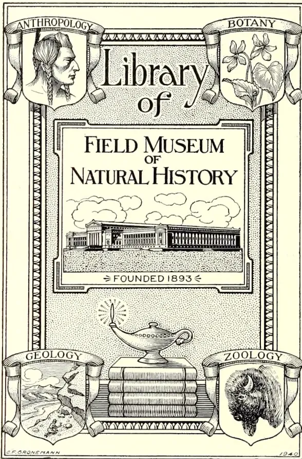
ANTHROPOLOGY
BOTANY
Library of
FIELD MUSEUM OF NATURAL HISTORY
⇒ FOUNDED 1893 ⇐
GEOLOGY
ZOOLOGY
C. F. CRONEMANN 1940
This is a detailed black and white illustration of a book cover. The central text reads 'Library of FIELD MUSEUM OF NATURAL HISTORY' with 'FIELD MUSEUM OF NATURAL HISTORY' in a larger, serif font. Below this is a drawing of the museum building, a long, classical structure with many windows, set against a background of clouds. Underneath the building is the text '⇒ FOUNDED 1893 ⇐'. The cover is framed by a decorative border. At the top, two scrolls are draped over the frame, labeled 'ANTHROPOLOGY' on the left and 'BOTANY' on the right. The 'ANTHROPOLOGY' scroll features a profile portrait of a man with a feathered headdress. The 'BOTANY' scroll features a cluster of flowers and leaves. At the bottom, two more scrolls are draped, labeled 'GEOLOGY' on the left and 'ZOOLOGY' on the right. The 'GEOLOGY' scroll shows a landscape with a mountain, a river, and a small figure. The 'ZOOLOGY' scroll features a detailed drawing of a bison's head. In the center of the bottom section, there is a stack of books with a lamp resting on top, emitting a bright light. The artist's signature 'C. F. CRONEMANN' is at the bottom left, and the year '1940' is at the bottom right.
38086 6-53
Digitized by the Internet Archive
in 2014
https://archive.org/details/tropicalagricul311908ceyl
INDEXTO THETROPICAL AGRICULTURIST AND MAGAZINE OF THE C. A. S.EDITED BY
J. C. WILLIS, Sc.D., F.L.S.
Director, Royal Botanic Gardens, Peradeniya.
Vol. XXXI : Nos. I to VI : July to December, 1908.
A. M. & J. FERGUSON,
PROPRIETORS AND PUBLISHERS, COLOMBO, CEYLON.
| A. | PAGE. | B. | PAGE. |
|---|---|---|---|
| Aberia—(Ketembilla) Miscellaneous | Balata Rubber .... | 212 | |
| Economic Plants .... | 339 | Bananas, Enzymes in .... | 79 |
| “Aerator” Garden Plough .... | 278 | do and Oranges in Mexico .... | 398 |
| Africa, B.C., Planting in .... | 92 | do in Cuba .. | 524 |
| do G.E., Rubber Estates in .... | 511 | do Market of France .... | 104 |
| Afforestation of Waste Lands .... | 551 | Bassia (see Miscellaneous Economic Plants) .... | 423 |
| Agaves and Soil Denudation .... | 123 | Bengal Flax, A Fortune in .... | 96 |
| Agricultural Apprentices, Madras .... | 480a | do Fish Products .... | 604 |
| do Banks .... | 71 | do Raw Silk, Production of .... | 190 |
| do Conference at Ahmedabad .... | 155 | Bitter Gourd .... | 480e |
| do Implements, Light American .... | 480e | Blue Stone and Ammonia .... | 69 |
| do Industries in Natal .... | 226 | Board of Agriculture: Minutes 70, 171, 275, 385, 578 | |
| do Instruction in Elementary Schools .... | 480 | do Progress Report 171, 375, 578 | |
| do Sayings in Bengal .... | 272 | Bordeaux Mixture .... | 181 |
| do Society, General Meeting. Minutes .... | 70 | Borneo, Copra and Oilmaking in .... | 91 |
| do Society of Batticaloa .... | 188 | Botanic Garden in East Java .... | 88 |
| Agriculture, European, in Nyasaland .... | 284 | Botany, Articles on the Literature of Economic 51, 162, 266, 366, 470, 571 | |
| do and Rats .... | 560 | Brazil Production of Para Rubber in .... | 585 |
| do in Ceylon, Rural .... | 569 | Brinjal, Inedible .... | 69 |
| do in F.M.S. .... | 483 | British Guiana, New Rubber Co. for .... | 199 |
| do in Kalutara District in 1907 .... | 86 | do do Rubber Experiment Station in .... | 84 |
| do in Southern India .... | 45 | do do do Trust .... | 199 |
| do Literature of Economic Botany and .... | 55 | do Malaya as a Field for Investment .... | 94 |
| do Literature of Economic 51, 162, 266, 366, 470, 571 | do New Guinea as a Planting Country .... | 405 | |
| do Native, and Tillage .... | 288 | do North Borneo, Para Trees in Government Garden at Tenom .... | 184 |
| do Science in .... | 466 | do North Borneo, Tobacco Estate Life in .... | 501 |
| do U.S.A Department of .... | 59 | Breadfruits of the Tropics .... | 428 |
| Amazon Rubber .... | 410, 506 | do with Seeds .... | 588 |
| Amherstia Nobilis .... | 284 | Brucea Sumatrana: Chemical Examination of .... | 125 |
| Angola, Rubber in .... | 298 | Budrot of Coconut Trees in Jamaica .... | 181 |
| Annatto, Cultivation and Utilisation of .... | 418 | do do do in Other Countries .... | 557 |
| Annual Review of the Tea Trade of 1907 .... | 99 | do do in the Philippines... 555 | |
| Anti-Opium Drug, Combretum Sundaicum .... | 225 | Bukit Rajah, Rubber Tapping Methods on 285 | |
| do Plant, The Malayan 124, 225 | Burma, Rubber in .... | 395 | |
| Apiculture, Bambara Bees .... | 69 | ||
| do Bees, Artificial Swarming of 67 | |||
| do Bee Notes I .... | 361 | ||
| do do II .... | 455 | ||
| do Comb-foundations for Mee-messa .... | 170 | ||
| do Honey in California .... | 191 | ||
| do Some Sounds of the Bee 362 | |||
| Apple Trees, Effect of Grass on 62, 78 | |||
| Areca Palm Cultivation in New Guinea 73 | |||
| Argemone Mexicana (Mexican Poppy) 512 | |||
| Arrowroot, A Leaflet on .... | 65 | ||
| Avocado Pear .... | 521 | ||
| Ayapana Oil .... | 88 | ||
| Cabbages, Manures for .... | 577 | ||
| Cacao and Copra from Samoa 96, 293, 447 | |||
| do and Rubber Estates Co. of Uganda .... | 484 | ||
| do as an Adjunct to Rubber Culture 11 | |||
| do Estates, Number of Pods Produced by Trees on a .... | 342 | ||
| do Exports, Trinidad .... | 31 |
| PAGE. | PAGE. | ||
|---|---|---|---|
| Cacao Fermentation, Contributions to the Knowledge of ... | 340, 531 | Clean Weeding on Rubber Estates ... | 489 |
| do in Dominica ... | 530 | Cleanliness of Cultivation ... | 313, 381 |
| do in the United States ... | 228 | Clove Tree of Zanzibar ... | 490 |
| do in the West Indies, Result of Recent Experiments with ... | 30 | Coagulating Castilloa Rubber ... | 408, 511 |
| do Manuring Experiments with ... | 530 | Coca Leaves from Perak ... | 124 |
| do Seeds, Packing ... | 128 | Coconut and Rubber in Kelantan ... | 76 |
| do Shade for ... | 529 | do and the Cyclone at Batticaloa ... | 178 |
| do Uses of Mulch in the Cultivation of ... | 227 | do Cultivation ... | 129 |
| Cactus for Fodder for Behar Planters... | 104 | do do in the Philippines ... | 71 |
| Calabash Gourds, Possible Market for... | 136 | do Desiccated, in Ceylon and N.S.W., Manufacture of ... | 385, 386 |
| Camphor Exports from Formosa ... | 491 | do Disease in Cochin ... | 182, 192 |
| do from Foochow, China ... | 190 | do District, N.W.P., Notes from ... | 180 |
| do Japan, and Celluloid ... | 78 | do Husks, Waste of ... | 387 |
| do Low-priced ... | 94 | do in Porto Rico ... | 338 |
| do Natural and Synthetic ... | 212 | do Manufacture of Desiccated, in Ceylon ... | 385 |
| do Oil ... | 115 | do Notes on the Sprouting, on Copra and on Coconut Oil ... | 417 |
| do Pest, A ... | 398 | do Oil and Soapmaking in Ceylon ... | 81 |
| do Prospects ... | 318 | do do in the States ... | 324 |
| do Pruning of ... | 287 | do do Purification of ... | 119, 416 |
| do Trade, The ... | 85 | do do Trade, Ceylon ... | 77 |
| do War, The ... | 292 | do Planting, Territory of Papua ... | 335 |
| Candle-nut Tree (Kekuna) ... | 120 | do Scientific Study of the ... | 228 |
| Caravonica Cotton in India... | 517 | do Stem Bleeding Disease, Remedies and Danger ... | 178, 182 |
| Cardamoms, Ceylon ... | 282 | do Trees in Jamaica, Budrot of ... | 181 |
| Cashew Nuts ... | 311 | Coffea Robusta, Java's New ... | 494 |
| Cassava as a Famine Food ... | 390 | Coffee Curing in the Malabar Coast ... | 28 |
| do Cultivation in Ceylon ... | 390 | do Sumatra ... | 95 |
| do Hydrocyanic Acid Content of ... | 126 | Combretum Sundaicum (Anti-Opium Drug) ... | 225 |
| do Manioca or Tapioca ... | 378, 525 | Congo, Rubber to Date in the ... | 397 |
| do Starch, Industrial Prospects of ... | 30 | Conservation of Soil Moisture ... | 463 |
| do Yield of ... | 577 | Cooch Behar, Tobacco Experiment in ... | 104 |
| Castilloa, Coagulating ... | 408 | Cookery Notes ... | 567 |
| do Latex, Mr. Harvey's Treatment of ... | 206 | Co-operative Credit Societies, in India ... | 267 |
| do New Method of Tapping ... | 208 | do do do in Madras Presidency ... | 268 |
| do on the Isthmus of Tehuantepec ... | 511 | do do do Where Flourish ... | 53 |
| do Under Shade ... | 205 | Co-operation, Demonstration Work in ... | 258 |
| Caucasian Russian Tea ... | 396 | Copra ... | 93 |
| Ceara or Manicoba Rubber ... | 316 | do and Cacao in Samoa... | 293 |
| do Rubber in the Dry Zone of Ceylon ... | 318 | do and Oilmaking in Borneo ... | 91 |
| Celluloid and Japan Camphor ... | 78 | do from Samoa ... | 96 |
| Ceylon, Ceara Rubber in the Dry Zone of ... | 318 | do do do and Cacao ... | 96 |
| do Chamber of Commerce Annual Report ... | 474 | Cotton: British Cotton Growing Association: 3rd Annual Report ... | 91 |
| do Coconut Oil and Soap-making ... | 81 | do Caravonica in India ... | 517 |
| do do Trade ... | 77 | do Growing in Siam ... | 96 |
| do Essential Oils in 1907 ... | 287 | do in London ... | 285 |
| do Hevea Plant, Animals Associated with the ... | 294 | do Sea Island, Yield of ... | 170, 516 |
| do Mangoes ... | 135, 480 | Cow Dung as Fuel ... | 149 |
| do Planter, Reminiscences of an Ex- | 291 | Cowpeas ... | 249, 351 |
| do Planting Industry ... | 208, 282, 298 | Cultivated and Wild Plants, Differences in ... | 51 |
| do Rubber Estimates ... | 394 | Cultivation under Canvas ... | 604 |
| do do Output ... | 394 | ||
| do Rural Agriculture in ... | 569 | D. | |
| do Tan-producing Trees ... | 170 | Dairy Practice, Modern ... | 38 |
| do Tropical Agriculture ... | 303 | Department of Agriculture, U.S.A. ... | 59 |
| Chamber of Commerce: Annual Report ... | 474 | Devil Grass ... | 578 |
| Charcoal Burning in Salem Division, Method of ... | 36 | Divining Rod: its Local Application ... | 170 |
| Chena Cutting ... | 159 | Dryland Farming ... | 577 |
| Chickens, Food for ... | 577 | Durian, The ... | 31 |
| Chilli Growing in Natal ... | 481 | Dwarf Rubber, New Important ... | 101 |
| Cinchona and Tea in Java ... | 387 | ||
| do in Ceylon ... | 282 | ||
| Circulation, Oils ... | 505 | ||
| Citrate, Tax on ... | 431 | E. | |
| do West Indian ... | 67 | Edible-Garcinia Fruits ... | 230 |
| PAGE. | PAGE. | ||
|---|---|---|---|
| Eggs, Testing of ... .. | 278 | Hevea Brasiliensis Germination, Experi- ments in ... .. |
414 |
| Eri Silk, Pamphlet on ... .. | 560 | do do See Rubber ... .. | — |
| Essential Oils, Ceylon, in 1907 ... .. | 87 | do do Some Remarks on ... .. | 315 |
| Eucalyptus Trees ... .. | 133 | the Tapping of ... .. | 463 |
| Experimental Plots ... .. | 480c | Hydrocyanic Acid Content of Cassava ... .. | 126 |
| do Work at Heeleaka ... .. | 185 | Hypnotism of Insects ... .. | 47 |
| Extraction of Rubber by Electricity ... .. | 208 | ||
| F. | I. | ||
| Farming in Madras Presidency, Dryland ... .. | 577 | Implements, Light American ... .. | 480c |
| Fence Plants: Godakaduru, Walbeli ... .. | 170 | Incubator ... .. | 277 |
| Fermentation of Tobacco ... .. | 321 | India, Tropical Agriculture in ... .. | 303 |
| Fermentation of Cacao ... .. | 531 | Indian Agriculture, Introduction of ... .. | 372 |
| Fertilisers, New Nitrogen ... .. | 142 | Improvements into ... .. | 47 |
| do Manganese Compounds as ... .. | 54 | Insecticide, Cooper's V.2 ... .. | 170 |
| Fertilising Fodder Plant for Rubber ... .. | 77 | International Conference of Rubber ... .. | 494 |
| Fibre, Sida ... .. | 283 | Growers ... .. | 224 |
| do Sisal ... .. | 30 | Ipecacuanha ... .. | 146 |
| do Useful, in Java ... .. | 88 | Irrigation, Areas ... .. | 459 |
| Field Fruit Culture in Mysore ... .. | 97 | do Furrow ... .. | — |
| Fiji Tropical Products of ... .. | 605 | ||
| Fish Insects ... .. | 362 | J. | |
| Fishing Nests of the Kolis of Bandra ... .. | 222 | Jaffna Mangoes ... .. | 69 |
| Fish Products for Bengal ... .. | 604 | Jak Trees, The Cultivation of ... .. | 69 |
| Flax in Bengal ... .. | 96 | Jamaica, Rats in ... .. | 451 |
| Fodder, Prickly Pear as ... .. | 342 | Japan Camphor and Celluloid ... .. | 78 |
| do Soy Bean as ... .. | 323 | do Rubber Factories, Combination in ... .. | 312 |
| Forestry ... .. | 356 | do Tea Export Trade ... .. | 95 |
| do, What it has Done ... .. | 449 | do do Production of, in 1907 ... .. | 88 |
| Forests and Rainfall ... .. | 500 | do do Trade, Future of the ... .. | 79 |
| Formosa Sugar Industry ... .. | 66 | Japanese Rubber Manufacturing In- dustry ... .. |
196 |
| French Garden, £600 in a ... .. | 165 | Java, New "Coffee Robusta" of ... .. | 494 |
| Fruit Culture in Mysore ... .. | 97 | do Rubber Canker in ... .. | 395 |
| do Edible Garcinia ... .. | 230 | do do Cultivation in ... .. | 92 |
| do Farm Manure ... .. | 577 | do do Growing in ... .. | 202 |
| do Trees, Root Pruning of ... .. | 480f | do Notes on ... .. | 595 |
| Fruits, New ... .. | 98 | do Tea and Cinchona in ... .. | 387 |
| Fuel, Use of Cowdung in India as ... .. | 149 | do do and Sugar ... .. | 596 |
| Fungicide, Self-boiled Lime-Sulphur ... .. | 137 | do Tea in ... .. 89, 181, 203, | 283 |
| Funtumia Elastica ... .. | 412 | do Tobacco and Sugar ... .. | 596 |
| Furrow Irrigation ... .. | 459 | do Useful Fibres in ... .. | 88 |
| G. | Jebong Rubber Production, Cost of ... .. | 484 | |
| Gambier Cultivation in West Sumatra ... .. | 448 | J. | |
| Garcinia Fruit, Edible ... .. | 230 | Joedlite: Wood Preservative ... .. | 601 |
| Garden, French, £600 in a ... .. | 165 | K. | |
| do Notes and Strawberry Growing ... .. | 382 | Kekuna—see Candlenut Tree ... .. | — |
| German Rubber Magnate in Ceylon ... .. | 606 | Kelantan, Rubber and Coconuts in ... .. | 76 |
| Germination Experiments in Hevea ... .. | 414 | L. | |
| Giant Rubber Tree of the East ... .. | 206 | Lalang, A New Use for ... .. | 301 |
| Green Manuring for Young Rubber ... .. | 84 | Lantana Pest, The ... .. 494, 599, | 600 |
| do in Tea ... .. | 499 | Latex Coagulation of ... .. | 511 |
| do Tea, Manufacture of ... .. | 202 | Lead Arsenate as an Insecticide ... .. | 552 |
| Grevillea Robusta Gum ... .. | 412 | Leaf Manuring in South Canara ... .. | 461 |
| Groundnuts (Arachis Hypogea) Notes ... .. | 14 | Leguminous Plants ... .. | 104 |
| on the Cultivation of ... .. | 480c | Lime Cultivation, A.B.C. of ... .. | 435, 535 |
| Guava Jelly ... .. | 338 | Lime-Sulphur, Self-boiled, as a Fungi- cide ... .. |
137 |
| Guavas ... .. | 498 | Limes, How to Pack ... .. | 205 |
| Guayule Situation ... .. | 411 | Literature of Economic Botany and ... .. | 55, 162, 266, 366, 470, |
| Gugul ... .. | 480c | Agriculture ... .. | 571 |
| Gum of Grevillea Robusta ... .. | 412 | Loans to Paddy Cultivators ... .. | 568 |
| H. | |||
| Hana Hemp as a Village Industry ... .. | 171 | ||
| Heeleaka, Experimental Work of ... .. | 185 | ||
| PAGE. | PAGE. | ||
|---|---|---|---|
| M. | O. | ||
| Madras Experiments in Paspalum Dilatatum ... | 312 | Oil Palm (Elwis Guineensis) Cultivation... | 16 |
| Maize, An Important Tropical Cereal | 522 | Oils in 1907, Ceylon Essential ... | 87 |
| do Cultivation and Marketing of | 550 | Olive and its Cultivation in Ceylon ... | 583 |
| Malaya, British, as a Field for Investment ... | 94 | Olu—See Nymphaea Lotus ... | ... |
| do Nigerian Report on ... | 500 | Opium Plant, The Malayan Anti- | 124 |
| do Rubber Exports ... | 286 | Oranges and Bananas in Mexico ... | 398 |
| do Rubber in ... | 398 | Ornamental Trees, Some other ... | 256, 582 |
| Malayan Anti-Opium Plant ... | 124 | Our Circulation ... | 505 |
| do Rubber Estimates... | 394 | ||
| do do Output ... | 394 | P. | |
| do Plantain Fibre ... | 298 | Packing Cacao Seed for Export ... | 128 |
| Manganese Compounds as Fertilisers... | 54 | do Vanilla for Shipment ... | 127 |
| Mango Supplies, New ... | 95 | Paddy Cultivation and the Village Cultivator ... | 128, 369 |
| do Weevil ... | 480c | do Transplanting ... | 480c |
| Mangoes in Ceylon ... | 135, 480f | Palm Disease in South India ... | 75 |
| do Jaffna ... | 69 | Papaya ... | 480e |
| Manicoba, Cultivation, Preparation and Yield of ... | 317 | Papua, Coconut Territory in ... | 335 |
| do or Ceara Rubber ... | 316 | Para Grass (Panicum Molle) ... | 430 |
| Manihot, Planting of the New Species of 106, Manioc or Cassava ... | 209, 525 | do Rubber by Herbert Wright ... | 298 |
| Manioc, Yield of ... | 577 | do do Cultivation, Weeding in ... | 38 |
| Manure: Artificial vs. Green and Cattle do for Orange Trees ... | 170, 170 | do do in the Amazon ... | 410, 506 |
| Manuring, Principles of ... | 189 | Paspalum Dilatatum—Experiments in Madras ... | 312 |
| do Effects of Long-continued Nitrogenous ... | 48 | Passiflora Fœtida ... | 265 |
| do Green, for Young Rubber ... | 84 | Penang Rubber Vines ... | 397 |
| Market Rates for Tropical Products ... | 72 | Pepper in Sarawak, The Cultivation of | 245 |
| Martynia Diandia as a Remedy for Snake-bite ... | 69 | Peradeniya Experimental Silk Farm ... | 85 |
| Mexican Poppy ... | 578 | Perak, Coca Leaves from ... | 124 |
| Mexico, New Rubber Plant in ... | 498 | Pests Bill, Straits Destructive ... | 408 |
| do Oranges and Bananas in ... | 398 | Philippines Spirit Industry ... | 63 |
| do Poppy ... | 215 | Phosphates, Selection of ... | 191 |
| do Something doing in ... | 315 | Pickling Wheat ... | 35 |
| Milo as a Dryland Grain Crop ... | 427 | Pineapple Cultivation in Singapore ... | 284 |
| Miscellaneous Economic Plants—Aberia do do do Bassia ... | 339, 423 | do Culture, III. ... | 231 |
| Modern Dairy Practice ... | 38 | do do IV. Handling the Crop ... | 344 |
| Mosquitoes, Destruction of... | 141, 397 | do Juice, Manufacture of ... | 244 |
| Mozambique, Rubber in ... | 396 | do Manure for ... | 32 |
| Mustard Meal as a Tea Manure ... | 387 | Plant Pathology in its Relation to other Sciences ... | 553 |
| Mysore, Field Fruit Culture in ... | 97 | Plantain Fibre at Malaya A. H. Show do Meal Manufacture ... | 398, 205 |
| Plantains, Cooking of ... | 567 | ||
| Planters and Scientific Advice ... | 192 | ||
| Planting in B.C. Africa ... | 92 | ||
| do in British East Africa ... | 407 | ||
| do in British New Guinea ... | 405 | ||
| do in Java and Sumatra ... | 391 | ||
| do in Nyasaland ... | 99, 400, 408 | ||
| do in Travancore ... | 489 | ||
| do Industry, Ceylon ... | 208 | ||
| do Reserves on Estates ... | 282 | ||
| Plants, Wild and Cultivated, Differences between ... | 51 | ||
| Ploughs, Eastern vs. Western ... | 69 | ||
| Porto Rico, Coconuts in ... | 338 | ||
| Pounds 600 in a French Garden ... | 165 | ||
| Preservation of Red Sorrel Fruits ... | 244 | ||
| Prickly Pear as Fodder ... | 342 | ||
| Prize Essays on Tea ... | 549 | ||
| Province Wellesley and its Products ... | 287 | ||
| Pruning ... | 566 | ||
| Pruning of Camphor ... | 287 | ||
| Pulse of Animals ... | 170 | ||
| Purification of Coconut Oil ... | 416 | ||
| N. | Q. | ||
| Natal, Agricultural Industries of ... | 226 | Quinine in India, Demand for ... | 484 |
| do Chilli Growing in ... | 481 | ||
| do Teas from ... | 322 | ||
| New Fruits ... | 98 | ||
| do Guinea, Planting Prospects in ... | 73 | ||
| do Mango Supplies ... | 95 | ||
| Nigerian Report on Malaya... | 500 | ||
| Nitrogen Fertilisers, New ... | 142 | ||
| Nitrogenous Manures, Sources and Use of do Manuring, Effects of ... | 48, 48 | ||
| Noiseless London: Rubber-paved Streets | 513 | ||
| Notes and Queries 69, 170, 277, 380, 480c, | 577 | ||
| Noxious Weeds ... | 49 | ||
| Nutmeg in the Moluccas ... | 104 | ||
| Nutmegs, the Fats of Indian ... | 217 | ||
| Nyande Fibre ... | 170 | ||
| Nyasaland, European Agriculture in ... | 284 | ||
| do Rubber, and Planting ... | 399, 400 | ||
| Nymphaea Lotus (Olu), Seed of ... | 243 | ||
INDEX.
| R. | PAGE. | Rubber | PAGE. |
|---|---|---|---|
| Rambong Rubber at the Rubber Exhibition ... .. | 95 | Giant, Tree of the East ... .. | 206 |
| Ramie in Korea ... .. | 88 | do Green Manuring for Young ... .. | 84 |
| Rats and Agriculture ... .. | 560 | do Growers' and Manufacturers' Banquet ... .. | 496 |
| do in Jamaica ... .. | 451 | do do Association, Malay ... .. | 279 |
| Raw Silk, Production of, in Bengal ... .. | 190 | do do Straits, and Increased Freight ... .. | 96 |
| Reminiscences of an ex-Ceylon Planter ... .. | 291 | do Growing in Java ... .. | 202 |
| Reserves on Estates, Planting ... .. | 282 | do Guayule ... .. | 200, 411 |
| Review of the Tea Trade, Annual ... .. | 99 | do Guttapercha and Telegraph Works Co. ... .. | 199 |
| Rice ... .. | 855 | do Hevea, Tapping of ... .. | 315 |
| do Cultivation and Fertilization in the U.S. of North America ... .. | 26 | do do in Ceylon, Animals Associated with ... .. | 294 |
| do do by Machinery ... .. | 99 | do in Angola ... .. | 298 |
| do do in British Guiana ... .. | 293 | do in Bombay ... .. | 193 |
| do do in Hawaii ... .. | 523 | do in British Guiana ... .. | 196 |
| do do in Siam ... .. | 300 | do in Burma ... .. | 24, 395 |
| Roadside Trees, Preservative Effect of ... .. | 204 | do in Ceylon ... .. | 91 |
| Root Pruning of Fruit Trees ... .. | 480f | do in Fiji ... .. | 605 |
| do Rubber in Nyasaland ... .. | 400 | do in Giayule ... .. | 103 |
| Rozelle: Its Culture and Uses ... .. | 378 | do in Java ... .. | 92, 202, 595 |
| Rubber, A New Important Dwarf ... .. | 101 | do in Jebong ... .. | 484 |
| do American View of Planting ... .. | 312 | do in Malaya ... .. | 398, 488, 491 |
| do and other Estates, a Fertilizing Fodder Plant for ... .. | 77 | do in Mexico, ... .. | 103, 205, 393, 492 |
| do and Coconuts in Kelatan ... .. | 76 | do ; do Discovery of New Rubber-producing Plant ... .. | 498 |
| do and Tea ... .. | 177, 208 | do in Mozambique ... .. | 396 |
| do and Tillage: Green Manuring and Acacias ... .. | 86 | do in North Borneo ... .. | 184, 207, 484 |
| do at Para Exhibition ... .. | 608 | do in Nyasaland, and Planting ... .. | 400 |
| do Balata ... .. | 212 | do in do Root-Ceara and Para ... .. | 400 |
| do British Grown ... .. | 401 | do in Perak ... .. | 601, 604 |
| do Canker in Java ... .. | 395 | do in Samoa ... .. | 392 |
| do Castilloa, Coagulating ... .. | 408 | do in South Coorg ... .. | 198 |
| do do New Method of Tapping ... .. | 208 | do in South India ... .. | 514 |
| do do Tapping of Cultivated ... .. | 212 | do in Southern Nigeria ... .. | 200, 501 |
| do do under Shade ... .. | 205 | do in the Congo—to date ... .. | 397 |
| do Ceara, in the Dry Zone of Ceylon ... .. | 318 | do in the F.M.S., American Report on ... .. | 96 |
| do do or Manicoba ... .. | 316 | do in the Sandwich Islands ... .. | 290 |
| do Clean Weeding and Green Manuring for ... .. | 402 | do in Travancore ... .. | 302, 489 |
| do Coagulation, "Purub"—a New Method of ... .. | 492 | do Industry, The Eastern Industry of Trinidad, Progress of the ... .. | 485 |
| do do Da Costa Process ... .. | 608 | do International Conference ... .. | 2 |
| do Cultivation in Java ... .. | 92 | do Latex, Mr. Harvey's Treatment of ... .. | 494 |
| do Culture, Cacao as an Adjunct to do the Present Condition of ... .. | 11 | do ... .. | 602 |
| do District, A Big ... .. | 106 | do Magnate, German ... .. | 606 |
| do Dry, Returns of F. M. S. ... .. | 492 | do Manicoba or Ceara ... .. | 316 |
| do Estates, Clean Weeding on do in G. E. Africa ... .. | 207 | do do ; Remarks on the Cultivation, Preparation and Yield ... .. | 317 |
| do do in G. E. Africa ... .. | 489 | do Manihot Glaziovii, New Species of ... .. | 106 |
| do Estimates: Ceylon and Malaya ... .. | 511 | do Manufacturing Industry, Japanese ... .. | 196 |
| do Exhibition and Mr. Bamber ... .. | 394 | do Mexico, Something doing in ... .. | 315 |
| do Experiment Station in British Guiana ... .. | 590 | do Notes ... .. | 602 |
| do do with Cuttings in Burma ... .. | 84 | do on the Nile ... .. | 197 |
| do Exports, Malaya ... .. | 602 | do Output, Ceylon and Malaya ... .. | 394 |
| do Extraction by Electricity ... .. | 286 | do Para by Herbert Wright ... .. | 298 |
| do Factories in Japan, Combination of ... .. | 208 | do do Crops ... .. | 601 |
| do Factory, Singapore ... .. | 312 | do do in the Gold Coast ... .. | 70 |
| do Ficus Elastica from India, Analysis of ... .. | 197 | do do Production in Brazil ... .. | 585 |
| do from English Plants ... .. | 211 | do do Root Diseases in ... .. | 587, 590 |
| do do Penang Rubber Vines ... .. | 490 | do do Tapping Experiment on ... .. | 210 |
| do do Trinidad ... .. | 397 | do do Trees in B.N.B. ... .. | 484 |
| do do Funtunia Elastica ... .. | 507 | do do Thumbail Pruning of ... .. | 103 |
| do Future of ... .. | 412 | do do Uses of Plantation ... .. | 608 |
| 281 | do do Weeding in ... .. | 388 |
| PAGE. | PAGE. | ||
|---|---|---|---|
| Rubber Para State ... | 83 | Sisal Fibre in India ... | 301 |
| do Planting in India Compared with Ceylon ... | 198 | do Hemp in British Guiana ... | 81 |
| do Preparation of Crude ... | 5, 592 | Soap-making in Ceylon, Coconut Oil and Sodium, Value of to Plants... | 81 |
| do Prices ... | 586 | Soil Denudation and Agaves ... | 577 |
| do Rambong at the Rubber Exhibition ... | 95 | do Moisture, Conservation of ... | 123 |
| do do Tapping Experiments on ... | 210 | do , The Secret of the ... | 463, 563 |
| do Samples from India, Analysis of ... | 211 | do , Water and the ... | 79 |
| do Seed, Size of ... | 285 | Sorrel Fruits, Preservation of Red ... | 457 |
| do Seeds, Packing, for long Distances ... | 205, 606 | South India, Demonstration in Connection with ... | 244 |
| do do for Oil purposes ... | 591 | do Rubber in ... | 167 |
| do Shipments, Estimates and Exports ... | 177 | do Palm Diseases ... | 514 |
| do Synthetic Rubber ... | 503 | Soy Beans as a Forage Crop ... | 75 |
| do Tanned Leather ... | 491 | do as Food for Man ... | 323 |
| do Tapping Methods on Bukit Rajah ... | 285 | Sparrow Destroyer ... | 331 |
| do do New System of ... | 591, 607 | Spirit Industry in the Philippines ... | 453 |
| do do and Pricking, Basal ... | 607 | Strait's Destructive Pests Bill ... | 63 |
| do Teo-non, A new Tree from Tonkin ... | 289 | Strawberry Growing and Garden Notes ... | 408 |
| do The Future of ... | 281 | Sugarcane, Vinegar ... | 382 |
| do do World's Future Supplies of ... | 196 | do Wax as a By-product of ... | 278 |
| do Treatment of Latex in the Preparation of ... | 300 | Sugar Industry of Formosa... | 203 |
| do Trees, Big ... | 199 | do in Perak ... | 66 |
| do do and their Yield ... | 601 | Sumatra Coffee ... | 287 |
| do do in Colombo ... | 490 | do Mr. Herbert Wright on his Recent Tour in ... | 95 |
| do Trust of British Guiana ... | 199 | do Tobacco ... | 286 |
| do Uganda, and Cacao Estates Co. ... | 484 | Sunflower Oil ... | 432 |
| do "Valcanina:" Artificial Rubber Co. ... | 204 | do , The ... | 14 |
| do Wright on ... | 183 | Sweet Potatoes ... | 213 |
| do Vines, Penang ... | 397 | Synthetic Rubber ... | 544 |
| do Weeding vs. Crotalaria for ... | 499, 600 | 503 | |
| do do Clean vs. Imperfect ... | 600 | ||
| Rural Agriculture in Ceylon and its Improvement ... | 569 | ||
| S. | |||
| Samoa, Cacao and Copra from ... | 96 | ||
| do Copra from ... | 96 | ||
| do Rubber in ... | 392 | ||
| Samoa Cacao and Copra ... | 293, 447 | ||
| Sandmann's Journey through Ceylon, India and Burma ... | 369 | ||
| Sandwich Islands, Rubber in the ... | 299 | ||
| Sapodilla Tree, The ... | 551 | ||
| Sarawak, Pepper Cultivation in ... | 245 | ||
| Scholars' Garden and what was done with it ... | 153 | ||
| School Gardens ... | 1, 57, 85 | ||
| Science in Agriculture ... | 466 | ||
| Scientific Advice and Planters ... | 192 | ||
| Sea-Island Cotton, Yield of... | 170, 516 | ||
| Secret of the Soil, The ... | 79 | ||
| Seed, Influence of Character on Growth of Trees ... | 255 | ||
| Seeds, Vitality of Garden ... | 50 | ||
| Seepage Losses ... | 564 | ||
| Siam, Cotton Growing in ... | 96 | ||
| Sida Fibre ... | 283 | ||
| Silk Farm at Peradeniya, The Experimental ... | 85 | ||
| do , Raw, Production in Bengal of ... | 190 | ||
| Singapore, Pineapple Cultivation in ... | 284 | ||
| do Rubber Factory... | 197 | ||
| Sisal Cultivation in the Caicos Islands ... | 19 | ||
| do Fibre ... | 122 | ||
| T. | |||
| Tamarind (Tamarindus Indica) ... | 180 | ||
| Tanned Leather, Rubber ... | 491 | ||
| Tan-producing Trees, Local ... | 170 | ||
| Tapioca, Cultivation of ... | 204, 305, 502 | ||
| Tapping Experiments on Rambong and Para ... | 210 | ||
| do Heveas, Observations on ... | 315 | ||
| do of Cultivated Castilloa ... | 212 | ||
| do Rubber on Bukit Rajah ... | 285 | ||
| Taungya (Chena) Cutting ... | 159 | ||
| Tea and Cinchona in Java ... | 387 | ||
| do and Rubber ... | 177, 208 | ||
| do do in Java ... | 202 | ||
| do and Shot-hole borer ... | 603 | ||
| do Brick Making at Hankow ... | 399 | ||
| do Chests, The Making of ... | 603 | ||
| do Cultivation in Java ... | 282 | ||
| do Culture Manurial Experiments in ... | 603 | ||
| do Export Trade, Japan ... | 95 | ||
| do from Natal ... | 322 | ||
| do Green, Manufacture of... | 202 | ||
| do in Formosa ... | 604 | ||
| do in India ... | 403 | ||
| do do , All About ... | 403 | ||
| do in Java ... | 181, 203, 595 | ||
| do in Nyasaland ... | 492 | ||
| do in Travancore ... | 489 | ||
| do Manufacture, Notes on... | 201, 396 | ||
| do Manuring in Culture ... | 499 | ||
| do do with Mustard Meal, Results of ... | 387 | ||
| do Notes ... | 283 | ||
| do Packing and Despatching ... | 289 | ||
| do Planting in Java ... | 89 | ||
| do Prize Essays on, Java's offer ... | 549 | ||
| do Production of Japan in 1907 ... | 88 | ||
| do Prunings, Burning of ... | 590, 600 | ||
| PAGE. | PAGE. | ||||
|---|---|---|---|---|---|
| Tea Quality in | ... | 541 | Tropical Bread Fruits | ... | 428 |
| do Russian Caucasian | ... | 396 | do Products of Fiji | ... | 605 |
| do Seed, its Selection and Growth | ... | 493 | |||
| do Substitute for | ... | 207 | U. | ||
| do Trade, Annual Review of the | ... | 99 | Uganda Rubber and Cacao Estates | ... | 484 |
| do do, Japan, Future of the | ... | 79 | U. S. A. Department of Agriculture: Its | ||
| do, Truth about | ... | 543 | Origin, Growth and Present Condition | ... | 59 |
| Tehuantepec Castilloa on the Isthmus of | 511 | ||||
| Termite Attacking Young Coconuts | 278 | V. | |||
| Testing Eggs | ... | 278 | Valuation of Rubber Estates | ... | 490 |
| Tillage and Rotation, Principles of... | 288 | Value of Sodium to Plants | ... | 577 | |
| Tissamaharama Cultivators' Association, | Vanillas, aking for Shipment | ... | 127 | ||
| Revival of | ... | 478 | Vegetable Products, Treatment of | ||
| Tobacco and Clover near Zanzibar | ... | 190 | Unknown | ... | 520 |
| do Cultivation under Canvas | ... | 604 | Vitality of Garden Seeds | ... | 50 |
| do Estate Life in B. N. Borneo | ... | 501 | |||
| do Experiments in Cooch Behar | ... | 104 | W. | ||
| do Fermentation of | ... | 321 | Waste of Coconut Husks | ... | 387 |
| do Industry of the N.P. | ... | 187 | Water Hyacinth | ... | 359 |
| do in Cuba, Propagation of | ... | 439, 538 | , and the Soil | ... | 457 |
| do in Bengal, Cultivation of | ... | 444 | Wattle Bark, Production and Utilisa- | ||
| do Java | ... | 596 | tion of | ... | 419, 602 |
| do Sumatra | ... | 432 | Wattle Cultivation in German East | ||
| Tomato Cultivaion | ... | 71 | Africa | ... | 121 |
| do Disease | ... | 278 | do Growing... | ... | 219 |
| Toxic Substance excreted by Roots of | Wax as a By-product of Sugarcane | ... | 203 | ||
| Plants | ... | 563 | do Excreting Palms | ... | 515 |
| Transplanting Paddy, Advantages of | ... | 480e | Weeds, Noxious | ... | 49 |
| Travancore, Planting in | ... | 489 | West Indian Citrate | ... | 67 |
| do Rubber in | ... | 302 | West Sumatra, Gambier Cultivation | ... | 488 |
| Treatment of Latex in the Preparation | What Forestry has Done | ... | 356 | ||
| of Rubber | ... | 300 | Wheat, Pickling | ... | 35 |
| do of Unknown Vegetable Products | ... | 520 | White Ant Destroyer | ... | 277 |
| Trees, and their Uses, some Beautiful | do do Exterminator | ... | 498 | ||
| Tropical | ... | 256 | Wild and Cultivated Plants, Differences | ||
| do Growth of, Influence of Charac- | between | ... | 51 | ||
| ter of Seed on | ... | 255 | Wood Preservation | ... | 459, 601 |
| do Root Pruning of Fruit | ... | 480f | |||
| Trinidad Cacao Exports | ... | 31 | Z. | ||
| do Rubber from | ... | 507 | Zanzibar Clove Tree, Vitality of | ... | 490 |
| Tropical Agriculture, Ceylon and India | 303 | ||||
| do do Literature of | ... | 499 | |||
S
281
T 77
THE
TROPICAL AGRICULTURIST
AND
MAGAZINE OF THE
CEYLON AGRICULTURAL SOCIETY.
VOL. XXXI.
COLOMBO, 15TH JULY, 1908.
No. 1.
The working of School Gardens is now going on in almost 150 schools throughout the greater part of the island, and people who are in any way interested in horticulture, agriculture, or the practical education of the young, will find much to occupy their thoughts and attention if they will take the trouble to visit one of the better gardens, such, for instance, as that at Mirigama (Mugurugampola, close to the station), at Alawatugoda on the Kandy-Matale road), at Welimada, or at Passara.
The general principle upon which these gardens are worked is to avoid direct and definite teaching of agriculture as such to young children, but to pick out plants which, though useful or ornamental, are not familiar in the neighbourhood, and to work at these by labour of the boys (or girls), under superintendence of the master, checked
by the occasional visits of the travelling inspector. The boys are given "nature-study" lessons by such masters as are capable of giving them, and in any case they learn the general principles of sowing, watering, weeding, cultivation of the soil, &c., just as well as if they worked with crops already familiar in the district, and without inviting immediate criticism or comparison with older and more experienced workers.
Incidentally the scheme is doing much good in a small way by introducing all kinds of "new products" into places where they were hitherto unknown. Cabbages have been taken up from the school gardens all over the island; sunflower is grown for oil in the dry parts of Uva; radishes have been largely taken up, and so on. The scheme practically provides an Experimental Garden for each village at small cost.
46768
Gums, Resins,2[JULY, 1908:BY J. H. HART, F.L.S.,
Superintendent, Royal Botanic Gardens,
Trinidad.
At the West Indian Conference of 1901, I read a short paper on the experiments carried out by the Botanical Department, Trinidad, in connection with the cultivation of various kinds of rubber trees. In that paper (published in the West Indian Bulletin, Vol. II., pp. 100-10), six different kinds were mentioned, viz., Castilloa, Hevea, Manihot, Ficus, Landolphia, and Funtumia; to which was also added Balata (Mimusops globosa), a native tree affording produce similar to that of guttaperchas of the East.
Since 1901, Castilloa planting has been steadily continued in Trinidad, and some thirty-three estates are now engaged in the industry, the total number of trees planted being estimated at some 300,000. Numerous experiments have been made with a view to discovering suitable methods of tapping and preparing the latex, and the specimens secured afford reliable evidence of the success achieved.
It can now be recorded that the colony of Trinidad and Tobago have several plantations which, during the past year, marketed rubber of fine quality and obtained satisfactory prices. In recent account sales, 3s. 3d. was obtained from Scrap and 4s. 3d. from Castilloa Sheet rubber. The samples were identical with those presented at the Conference. In Tobago, fine rubber has been produced. Scrap realized 4s. per lb., while prepared Sheet made 1s. to 1s. 3d. higher. The quality of this rubber may be judged from the produce kindly loaned by proprietors, now exhibited.
In Mr. de Verteuil's block rubber we have a very fine specimen, and I should not be surprised to find rubber prepared by this method taking a first place upon the market, it being apparently preferred to sheet on account of its oxidizing less quickly.
The specimens of Castilloa prepared by the Experiment Station show the result of experiments in preparation.
The first was prepared by creaming in three waters, and then naturally coagulating by placing in blotting paper over a fine wire strainer.
JULY, 1908.]3Saps and Exudations.rate. It is to be noted that West Indian labour has to be taught first before it can be calculated upon.
The preparation of 'scrap' rubber would cost probably one-third less than 'sheet.'
Castilloa as a rubber has done well in all parts of Trinidad, and appears to suit the conditions of soil and climate.
The supply of seed is so plentiful that the sales made by the Department are now merely nominal. Moreover, by birds carrying off seed the tree is being distributed widely through the natural forest, where it grows readily.
The progress made in Hevea planting has been much encouraged recently by the prices obtained for Ceylon produce. The demands upon our resources for seed and plants is now more than we can meet; hence, a considerable number of importations have been made with a success varying from 2 per cent. to 60 per cent. Various methods of packing have been tried. From personal experience it appears better to take the chance of seed transport rather than to import plants, even in Wardian cases.
Some twelve years ago I advocated strongly in the Trinidad Bulletin the planting of Hevea. One planter planted a considerable number, and to-day his trees are seeding freely and he is making an excellent return for seed and seedlings, and has thus provided for a future supply of home-grown seed, which will probably meet future demands. The trees in the lands of the Botanical Department gave a fair supply of seeds, from which several thousands of healthy plants have been realized. All of these have been readily sold.
Eight or ten estates are now planting Hevea, and this number will probably be doubled during the coming year.
With regard to the ability of Trinidad to produce first-class Para rubber, I submit to the Conference specimens of various forms from the older trees of the Botanical Department. These specimens have been produced by two trees of the first consignments sent out by Kew over thirty years ago. The first tree gives rubber decidedly yellow in appearance, while the second tree gives rubber which on first coagulation is pure white, and probably differs considerably in composition from the first.
Two methods of collection have been adopted. The first is to collect all latex possible and set it to coagulate
naturally; the second is to roll up the remainder of the rubber which dries in the cuts to a ball.
It is found that a second and even a third flow can be obtained from the same cuts, if the rubber is allowed to dry for some eighteen to twenty hours in the cut; for when it is removed a new flow takes place from those cells, which have been prevented from closing by the adhering rubber.
That the rubber is of good quality is shown by the specimens now submitted for examination. The latex when set to coagulate is simply strained through fine wire gauze with a minimum of added water, and then left in a soup plate or glass cell in a cool place. Twelve to twenty-four hours afterwards there can be removed soft sheet rubber perfectly coagulated. It may then be pressed into biscuits, in a copying press or by other suitable means. Rubber thus treated will dry quicker than if left to drain by itself.
At the Experiment Station, Hevea trees eight and a half years old do not as yet yield rubber in quality or quantity to pay for tapping, although the trees are some 35 feet high with stems 6-9 inches in diameter. Our oldest tree has a diameter of 2 feet 3 inches at 4 feet from the ground, and gave a crop of over 4,000 seeds during the season 1906.
From our tapping experiments it may be estimated that 3 to 4 lb. of rubber could readily be taken from this tree; but, as it is depended upon for purposes of seed, it has been deemed better not to hazard productiveness by tapping too heavily.
Two young trees raised from seeds brought down by Dr. Bovallius, from the interior of South America, are growing slowly and appear to be somewhat different from the kind first introduced, but, as they have not as yet flowered, it is impossible to decide their affinity. They are said to be suitable for growth at higher elevations or in cooler climates than the ordinary varieties of Hevea, but this remains to be proved. There is no doubt a great future for Hevea planting in Trinidad, the only drawback being the length of time the trees take to reach maturity. This state of maturity most assuredly will be fixed at different ages by individual growers, probably gauged by financial reasons.
Trees can be tapped at an age when tapping is sure to injure them, therefore cropping must always be conducted with greatest care, as serious wounds most inevitably prove prejudicial to the life of the tree,
Gums, Resins,4[JULY, 1908.The question of the best method of tapping is well laid down in Wright's "Para Rubber,"* but there is always the possibility that local circumstances will compel the adoption of methods differing slightly from those found successful in other countries. We see spiral cutting strongly recommended and illustrated, and have found it a successful method with trees growing strictly perpendicular, but it is evidently one which cannot be used with leaning trees.
These three rubbers, at present, do not commend themselves to our cultivators for various reasons. Manihot Glaziovii has, however, been tried on one or two estates, and one of these, situated on a hillside, is reported as doing well. Ficus elastica grows readily and lasts for a long time, but is only cultivated as individual specimens. Landolphia spp. exist in the gardens, and one of them affords rubber of fair quality. These rubbers are not at present sought by planters.
Funnumia elastica is being largely planted. Many thousands of seeds have been sold during the past year, and plants to the number of nearly 50,000 have been distributed, or stand to order from the nurseries at the Experiment Station. This tree affords rubber at an earlier age than any other rubbers.
Specimens of rubber taken from trees six and a half years old were reported upon by the Imperial Institute in 1903, when 80 per cent. of caoutchouc was found, and Professor Dunstan in his report states that it would be desirable to examine specimens from older trees.
In 1903, this rubber, compared with Castilloa from trees over twelve years old, was valued by London brokers at 2d. to 3d. less per lb. than Castilloa. We are not yet in possession of sufficient evidence to make a statement as to yield, but those persons who have seen it in its native forest consider the yield satisfactory.
Of balata (the produce of Minusops globosa) there is little to report. The tree is indigenous to Trinidad and South America and produces fine timber for railway work. A considerable number of inquiries have been received for
* Hevea brasiliensis or Para Rubber by Herbert Wright, A.R.C.S., F.L.S.; Colombo; Messrs. A. M. and J. Ferguson.
† Bulletin of the Imperial Institute, 1903, No. 1, pp. 160-7.
plants at the St. Clair nurseries, and plots have been started at St. Clair and on the Government estate at Diego Martin, Trinidad, so as to have a convenient supply of seed on hand to meet future demands.
At present the forest has to be depended on for supplies.
Many applications have been received for seed from foreign and colonial establishments, which show that considerable interest is taken in this product.
Trinidad exports but little of the locally grown product, but considerable quantities are shipped from Venezuela via Trinidad.
The tree is of slow growth and the seeds are difficult to transport. Even when fresh they take a long time to germinate, periods of twelve months having frequently been observed from the time of sowing to germination. In the St. Clair nurseries the germination is hastened by grinding or filing away the hard exterior of the seed to allow access of moisture.
In conclusion, I am able to state that the rubber industry is now well established in Trinidad, and that there is a prospect of abundant success. The initial difficulties have been met and overcome, and it is probable that, with further experience in the details of manipulation, greater economy and profit will follow.
Estates planted with rubber have largely increased in value, and planters are beginning to appreciate the feeling of adding to their established industries one that promises well for the future.—West Indian Bulletin, Vol. VIII, 1907, No. 2.
The possibilities of the rubber industry in British Guiana are mentioned very favourably in the Report for 1906-7 of the Lands and Mines Department of that colony.
Reference is made to the fact that indigenous rubber trees, notably Sapium Jenmani, are growing luxuriantly in the lower reaches of all the rivers in the North-West District, as well as on the banks and islands of the Essequibo river, and the Commissioner of Lands and Mines is strongly of opinion that rubber cultivation in the colony should receive every encouragement. The low,
JULY, 908.]5Saps and Exudations.flat, alluvial banks of the river are especially adapted for the growth of the native species of Sapium, and thousands of acres of this land might be utilized in the cultivation.
The terms on which land is leased for rubber-planting purposes by the Government of British Guiana were summarized in the Agricultural News (Vol. VI, p. 409), and they are certainly favourable enough to encourage men of means to test the rubber-producing possibilities of the colony.
During the year 1906-7, 2,563 lb. of rubber and 634,222 lb. of balata were exported from British Guiana.—The Agricultural News, Vol. VII, No. 153, March, 1908.
BY DR. PEHR OLSSON-SEFFER.
(Extracts from paper read before the first meeting of the Mexican Rubber Planters' Association on October 10th, 1907.)
During the last few years much has been done in regard to the progress of the preparation of crude rubber, and as we stand at the present day we are able to make rubber which is far superior to the product placed on the market a few years ago. I will here briefly discuss the various methods of collecting and preparing rubber such as they have been gradually developed.
TAPPING TOOLS.—All of you know that throughout Central America the native machete is used for the purpose of opening the bark of the rubber tree to permit the latex to exude. It stands to reason that such a crude method can be greatly improved on. As a matter of fact, trees tapped by means of machete incisions are badly injured, and as a result they are generally attacked by diseases, and, after lingering for a longer or shorter time, they finally die on account of the injury. I have seen planted trees in Mexico, which, after having been tapped with machete for twelve years, are now useless, because it is almost impossible to tap them as they are so badly scarred and cut.
Rubber planters soon found out that they must have a better tool for tapping if the industry was to become a permanent success. Some of the first improvements in tapping tools were made in Central America, where many years ago a tool somewhat resembling a farrier's knife was made by turning over the point of a machete, and the tool was used for pulling, thus making an incision or
groove in the bark. A somewhat similar idea was developed in a tapping device, figured in James Collins' book "Report on the Caoutchouc of Commerce," which was published in 1872.
In later years other variations of the farrier's knife have been used. Two years ago I had a knife made on this principle, and this crude sample made by a native blacksmith in Chiapas was the origin of the so-called Zacualpa knife, of which much has been written and said, as it was patented by a person who happened to see it used. (Samples of these knives were exhibited.)
Knives of this same type are used in Brazil for tapping Mangabeira and Ceara rubber, and the various modifications of the V-knives are but developments of the farrier's knife. One of these V-knives was patented in Ceylon by F. Holloway, and this knife has been widely used also in Mexico. It is evident, however, that all these knives give a wound, the edges of which are more or less torn, depending upon the sharpness of the tool. One needs but examine the incision under a microscope to find that the cells and vessels of the bark are fringed, and not cut through so as to leave a clean opening. These fringes naturally impede the flow of latex, and the result is that we do not get the amount we ought to.
Before discussing the latest development of tapping tools, I wish to draw attention to some other knives, built on different principles. Most of these have been developed in Ceylon, where the number of "patented" tapping knives is almost as numerous as that of the rubber plantations. The Bowman and Northway knives, which have been widely advertised, and which are quite extensively used for tapping Hevea trees in Ceylon, are useless for Castilloa, as they are entirely too weak. One of the series of three of these knives is the so-called "pricker," which is a kind of a spur. The object of this is to cut the latex tubes near the cambium and thus increase the flow of latex. The objection to this is that it often causes abnormal development of tissue, and the wound upon healing will not be smooth but "bumpy." Macadam's comb-pricker is a very formidable looking weapon, and does its work in opening the latex tubes, but is unpractical on account of the labour it requires. You can easily realize that such a tool is not what we want where labour is paid at the rate of $1 a day.
The different nature of the Hevea tree has called forth different requirements
Gums, Resins,6[JULY, 1908.in regard to tapping tools suitable for this tree. The Hevea planter re-opens the incision at frequent intervals, and his plan is to do this by cutting away as small amount as possible of the cortex. The paring process is adopted for this purpose, and the many different tools employed in this connection show a wide variation. Among these may be mentioned the Golledge tapping knife, which is a modification of a chisel; the "V.D.K." knife, patented by Gustav Van den Kerkhove; Dixon's knife; the Para chisel; and various others. (Nearly thirty different rubber tapping tools were demonstrated.)
The principal idea in tapping a rubber tree is to make it possible to extract the maximum amount of latex with the minimum injury to the tree, as the extraction cannot be done without injuring the tree. This injury need not and should not be more than a very temporary one, and the trees as such should not perceptibly suffer. We know that the more bark we excise the more time is needed by the tree for replacing the cortex. We should therefore make a cut which takes away as little bark as possible. On the other hand, we must make a groove big enough to allow the latex to run. If the groove is too narrow, the latex clogs and is apt to coagulate in the incision. If the groove is too shallow the latex is liable to run over the edges and is lost. Then, again, if the groove or the incision is too deep, we have cut, through the bark, the cambium into the wood. In this case we have greatly injured the tree, as we have disconnected the tissue which carries the food materials of the tree from roots of the crown where they are prepared for the use of the plant. It is evident that the tree will suffer from such a treatment. The more we have cut away of the cambium the longer time will it take for the tree to recover and for the incision to heal. Most of the knives, of the type of the farrier's knife, lend themselves to too deep cutting in the hands of an unskilled tapper. Many of these tapping devices have some kind or another of gauge to determine the depth of the wound, and theoretically these "guides" work well, but I have seldom found a tapper who did not cut into the wood.
The latex tubes occur in the layer between the cambium and the outer bark, but as they originate in the cambium and are constantly being added to from this tissue, it is impossible to draw a line of demarcation between these tissues. It is therefore incorrect to talk about tapping a tree by cutting through the inner bark without touching the cambium. Either we do not cut entirely
through the inner bark or we cut into the cambium. In the former case we do not cut all the latex tubes and therefore do not obtain the maximum amount of latex. In the latter case we get all the latex, but we injure the cambium. The question then arises How are we to get all the latex without seriously injuring the cambium? Experiments have shown that, if we cut through the cambium with a sharp knife blade, without taking away any part of the cambium, the cells of this last tissue that have been injured continue in growth and the wound begins to heal over within 24 hours, and takes only a short time to heal completely. We should therefore have a knife which opens a groove sufficiently largely to permit the flow of latex, but which only penetrates the harder part of the cortex. It should at the same time cut through the softer parts of the cortex without making a deep groove, and it should, in fact, open all the latex tubes. In practice this last can only be done by cutting through the cambium. To accomplish this the "Alpha" knife was developed by me, and the first sample made showed that the theory was sound. The amount of latex obtained was larger than with any other knife tried in the experiments, and they number over two dozens. Another feature of this "Alpha" knife is that it has two handles which gives the operator an opportunity to work with both hands, thus being able to direct the incision according to will. The first blade of the knife or the "groover" makes a shallow incision in which the latex runs. The second blade or the "cutter" is placed so that it pares off a thin slice of the lower side of the groove leaving a clean cut, and as it cuts deeper and the operator rests on this blade it will cut through to the wood. In this way it cuts all the latex tubes and at the same time the cambium, but it does not take out any part of the softer tissues. I mentioned before that a wound penetrating into the cambium, with a single knife blade, such as this "cutter," does not cause any permanent injury to the tree and heals very rapidly.
This last mentioned tool can be operated by a comparatively unskilled workman, and as he can use both hands he is able to do much more rapid work than with single-handed tools. Experiments have shown that one man can with this tool cut incisions at the rate of over 1,000 current feet per day. Taking four incisions of a length of one foot per each tree, one man can thus tap 250 trees per day. The best results obtained in Mexico with one-handed tools have been 120 trees per man, while the average is 70,
JULY, 1908.]7Saps and Exudations.At the present time there is being developed here in Mexico a new tapping device, which will supersede all knives developed so far, and will, in fact, revolutionize rubber tapping all over the world, as this device can be used for any kind of rubber tree. As this device is not yet patented, I am not at liberty to describe it, but so much is certain that it is a decided success. It is a mechanical device, run by hand, foot, or electric power. It makes it possible to tap the trees to a height of at least 12 feet, and one man can without any exertion tap as many as 500 trees per day or about 4,000 running feet. I am assured that this tapping device will be on the market before our next tapping season.
STIMULATING THE FLOW.—It has also been found that the flow of latex can be stimulated by artificial irritation of the bark. This can be done in many ways, either by application of some chemical to the bark or by mechanical irritation. This latter can be accomplished with a brush, but it is an operation which takes some time, and the question is whether it would be profitable or not.
LATEX COLLECTING.—We then come to the question of the latex collecting vessels. You all know the primitive calabash used by the Indian for this purpose. In Ceylon, where plantation tapping first became a question of importance, many different kinds of collecting cups have been developed. Some of these are made of tin sheets, others of pressed iron sheet, afterwards tinned, and others again of aluminium. Some are without a cover, others have covers to prevent water or dirt from falling into the cup. Some are attached by hanging them on a nail driven into the tree. This method is, on the face of it, quite unpractical. Besides necessitating several manipulations, it would require a large amount of nails on a plantation with say, 1,000,000 trees. Further, driving nails into the tree causes the development of a diseased spot, generally marked by abnormal growth. Another method of attaching the cup to the trunk is to push the sharp edge of the cup underneath the bark where the cup is held. There is one grave objection to this, and that is the development of large bumps on the trunk which seriously impede future tapping. Such a place of attachment is further liable to various diseases. On other plantations the practice is to place the cup on the ground at the bottom on the tree, and to use a spout for conducting the latex into the cup. There are many objections also to this method.
The most practical collecting cup seems to me to be an ordinary round cup with thin edges, one side being bent inwards
so as to approximately fit the trunk of a tree. Holes are punched through the corners at the beginning of the concavity and a piece of string sufficiently long to reach round the trunk is tied through one hole. At the end of the string a small wire hook is fastened, and this hook is placed in the other hole, thus securing the cup to the trunk. When these strings are tied on to the cup before they are taken out in the field, the whole operation of fastening the cup consists of one single manipulation. In the Orient the cups used are very small, being sufficient for the small amount of latex exuding from the trees, but in tapping Castilloa trees much larger cups are needed. The smallest serviceable cup should hold one quart or half liter.
TAPPING SYSTEM.—Of the various systems of tapping employed in the different parts of the world I first want to refer to the one in general use in Brazil, which results in short incisions more or less horizontal. The Central American Indian long ago found by experience that diagonal or oblique cuts gave the largest amount of latex, and he finally reached the method of making two incisions forming an angle or a V. The object of this form of incision is to permit the latex from the two cuts on each side of the trunk to run together at the apex, whence it flows into the cup. Most Mexican planters still adhere to this method, which, however, has many serious objections. The principal one is that the apex is very difficult to heal, and usually forms a big excrescence or bump, which seriously interferes with future tappings. It further does not lend itself to regularity in tapping and prevents the trunk from developing symmetrically. A continued tapping according to this system results in want of space for incisions a few years after the first tapping, and then it is found necessary to cut across the old wounds which gives the tree the peculiar criss-cross appearance of the wild trees tapped by the Indians.
In Ceylon a number of various systems have been developed. One of these Ceylon systems which in the beginning had a number of advocates is the so-called "spiral" system. This has been tried on some plantations in Mexico, but the result is almost invariably the death of the tree after the first tapping. There is, further, nothing to recommend this system.
The "spiral curves" developed by Northway and Bowman in Ceylon consist of independent "spiral" incisions each ending at the bottom of the tree. There are the same objections to this system as to the ordinary "spiral."
Gums, Resins,8[JULY, 1908.The "full-herringbone" system, which has been used by the natives in Central America and in Africa is a natural development of the V incisions such as those made in Mexico. The idea was simply to connect the apices of the V's by a longitudinal incision, the object of which was to serve as a conduit for the latex. The objection to this system is the same as in regard to the V incision. The oblique incision meeting at the apex of the angle make a bad wound difficult to heal.
A modification of this last method is the "half-herringbone" system. This consists of a longitudinal channel, into which the oblique cuts lead from one side. Experiments have shown that this method is the most practical and efficient.
In regard to tapping Castilloa trees, I would advise the employment of the "half-herringbone" system in the following manner:—A rather shallow vertical channel is first opened from the height to which it is intended to tap the tree. At the bottom of this vertical incision the collecting cup is attached to the trunk in the manner already described. The operator now makes an incision on the left side of the vertical channel, at an angle of 45° to this, and as close to the base of the trunk as possible. This incision should reach nearly to the opposite side of the trunk. The plan is to leave approximately two inches of bark surface uncut between the end of the incision and the second vertical channel which will be opened opposite to the first one at the next tapping of the tree. When this second tapping is done the oblique cuts are commenced at the same distance, or at about two inches from the first vertical channel. This leaves on each side of the tree a narrow strip, two inches wide, from the base to the top, where the cortex has never been injured, and the development of the tree can go on at all times without interruption.
Having made the first cut as described, the operator makes another oblique incision about 12-18 inches above the first one, and subsequently opens other incisions at the same distance as high up on the trunk as he can reach. About two months later, when the incisions made at the first tapping have healed, the second series of incisions on the opposite side of the trunk is made. Two months later, if the seasons permit, a third tapping is done, and this time the oblique incisions are opened immediately below the earlier ones, and as close to these as possible. If this policy is followed out the surface of the trunk will last for a number of years, and re-
tapping of the old wounds can safely be done 8 or 9 years later. The advantage of this system is that it permits a symmetrical growth of the trunk, and no loss of latex is caused by cutting into or through old channels, which are likely to conduct the latex in the wrong direction.
In tapping operations great care should be taken in not wasting latex, which is often the case at present. Every drop of latex should be well taken care of, as neglect in this regard will cause a considerable loss. All cups and collecting cans should be well washed in cold water, and this water used in the coagulation process.
Sometimes it happens that the latex coagulates very rapidly, even before it has been brought in from the field. This is especially the case with the latex from young trees. Coagulation can be prevented by adding a few drops of formaldehyde to each can.
COAGULATION METHODS.—Many different methods are in use for the purpose of preparing the latex for rubber. One of the most primitive used by the Indians is to leave the latex alone to coagulate by the fermentation process which ultimately takes place. Another one is to expose the latex in thin layers to the atmosphere allowing evaporation of the moisture. This leaves a black and very sticky substance which easily deteriorates and becomes tacky.
Another primitive method of the Indians is to use an extract of a morning glory wine, or Ipomoea bona nox, which extract is added to the latex and quickly causes coagulation. The rubber obtained in this way is fairly good, but rather wet and irregular in appearance.
Of more modern methods we have two essentially different types—the chemical and the mechanical.
Coagulation is effected by means of many different chemicals. I have made experiments, several hundreds in number, using different chemicals. The results vary greatly, and I cannot here go into details, but can only mention that the observations made in this connection will soon be published. So much has been established, that whatever chemical is used the resulting rubber is not of as good quality, as when coagulation is effected by mechanical means. Chemically coagulated rubber is usually shorter in fibre, and does not last as long as mechanically prepared rubber. Sometimes it may be found necessary to use a chemical coagulant, but wherever this can be prevented we get a better rubber,
JULY, 1908.9Saps and Exudations.One of the first methods of mechanically preparing rubber was by means of centrifugal force. A separator, built on somewhat similar lines to those of an ordinary cream separator, was used with success.
The latest method of preparing rubber on a commercial scale is one which I developed after numerous experiments at La Zacualpa Botanical Station and Rubber Laboratory. I shall here briefly describe this system, which has recently been patented. (Diagram of a rubber factory was shown.)
I shall here show a diagram of a plantation rubber washing, drying and pressing plant according to the system referred to. The latex, when brought in from the field, is weighed on the scales P. placed on an elevated platform. It is then poured into A, the latex receiving tank, where it remains until the coagulating process remains. If it is necessary to keep the latex from coagulating for some time, a small amount of formaldehyde is mixed with the latex.
From the receiving or storage tank A. the latex passes into B., a centrifugal strainer, in which all mechanical impurities are separated. The latex now runs into C, a special coagulating conveyor. This coagulator is provided with a steam heated jacket, so that the temperature of its contents can be raised. The latex is mixed with an equal quantity of water, and an alcoholic solution of creosote is added in order to thoroughly disinfect the resulting rubber. The temperature is raised to about 50° C., and the latex is slightly stirred by the movement of the conveyor. When the rubber commences to coagulate, which process begins in about 20 minutes, it is forced by the conveyor into the creaming vats D, and D., where it is allowed to stand for a short while. The latex is further diluted with water entering underside of these vats. Upon being allowed to rest a creaming begins, and when separation has taken place some of the serum is drawn off from the lower part of the vat, and new clean water added from below. This washing of the cream is repeated several times in order to separate as much as possible of the resins contained in the latex, which have been kept in a fluid state by the warm water. Finally, the cream is allowed to rise, and the surface is raised by the injection of water allowing the cream or partly coagulated rubber to run over an overflow lip on to tables fixed beneath the lips of these vats. The rubber is partly worked by hand with small wooden spades, and passed to the washing machines F. In these the rubber is
pressed between heavy steel rollers, and at the same time it is further washed with water. The rubber is put through these machines several times until it appears in the form of fresh crepe rubber.
All serum or washing water drawn off is passed through a separator E. in which all the rubber contained in the water is extracted.
The strips of crêpe referred to are placed in the vacuum dryer J. until only 6 or 7 % of moisture remains. The strips of dry rubber are then folded and placed in the box of the press G, in which a sufficient pressure is applied. In this manner a block of rubber is obtained, which contains the maximum amount within a minimum of space. In order to keep the presses continuously going interchangeable boxes are introduced, and by a duplicate bridle arrangement fitted with four strong screws the inverted name plate for branding the rubber, is held down by these screws and easily relieved from the foot on the press. The press ram screw is then raised, a new name inserted, and another box placed in position. After pressing, the boxes with the rubber still under pressure are taken to another stove for "fixing," and then by simply unlocking the hinged base the branded and finished block is thrust through the bottom. These rubber blocks are made of a standard size, and packed in suitable standard packing cases, well planed on the inside, and they are then ready for shipping.
The complete plant for preparing crude rubber, as here described, is made by Messrs. David Bridge & Co., of Castleton, Manchester, England, and costs, complete with boiler, engine, shafting, circular saw, planer and machinery referred to, about $13,000 Mex. Such a plant has a capacity of 300 lbs. dry rubber per day.
QUALITY OF RUBBER.—The rubber prepared by this method has been pronounced fully equal to best hard cure Para, which, as is well-known, is the best rubber on the market. The prices offered for this new Castilloa rubber are higher than current prices for ordinary Para.
A general fault previously found with Castilloa rubber is the large amount of resin which it contains. The percentage of resin in Castilloa rubber has varied from 8 to 41 %. By this new method of preparation the amount of resin can be lowered to less than 3 %. This new rubber therefore fills the requirements placed upon rubber articles by the British Admiralty. It is curious, but a well-known rubber buyer, to whom I showed a sample, made ac-
2 Grums, Resins,10[JULY, 1908.cording to this new method, claimed that it was Para rubber, and another manufacturer was highly interested thinking that the sample was some new rubber of some unknown plant.
Another point in connection with this method of preparing rubber I shall now refer to. As you know, the Brazilian rubber collector prepares the crude product by dipping a spade-like piece of wood into the latex and then drying the thin film of latex over the smoke from burning palm nuts. When the film is solid, another one is added, and thus the work goes on, until a large ball of rubber has been formed. Each of the succeeding films exerts a certain pressure on the inner parts, and in this fact we have to look for one of the main reasons why so-called hard cure Para retains its strength so well. Another observation is that, if a piece of crude rubber is surrounded by twine as in a cricket ball, the rubber remains perfectly sound for years, while if a piece is exposed to the atmosphere and is not subjected to pressure it will in the same period of time lose many of its physical qualities. I attribute the keeping qualities of Para balls and of the rubber in a cricket ball to the pressure to which it is exposed in either case. Experiments have shown that pieces of freshly coagulated rubber which have been subjected to very high pressure retain all the characteristics of good rubber much longer than pieces not pressed.
It is further important to notice that hard cure Para rubber is not perfectly dry. Experiments have shown that rubber containing a slight amount of moisture is more "elastic," has a high resiliency than rubber not containing any moisture. Other experiments have shown that perfectly dry rubber does not keep as long as a rubber containing a certain amount of moisture.
On the other hand, if the amount of moisture is too large the rubber is liable to deteriorate, as the moisture assists bacterial organisms in their destructive processes. With these points in view the method of drying and pressing rubber employed in the just described system of preparation was developed. In drying the strips of crêpe rubber until they contain about 6 or 7 % of moisture the excess water is extracted and the rubber is left with a suitable amount of moisture to retain all its physical qualities. As I mentioned, the rubber is blocked in this condition. The so-called "fixing" of the block, or its rapid drying until the outer part to a depth of about 5 mm. is perfectly dry, results in this outer layer contracting
and exerting a pressure on the inner part. When such a block of rubber is cut open, it will be noticed that there is a slight difference between the outer layer and the inner part of the block, the latter being superior in quality.
In regard to Castilloa rubber, it is important that as small a surface as possible is exposed to the atmosphere, as it is very liable to oxidize. From this point of view it is evident that the block form is the most suitable. For shipping purposes the block is also the most handy form.
TACKINESS OF RUBBER.—The development of tackiness in Castilloa rubber has been studied to some extent at La Zacu-
alpa Laboratory. Many experiments with inoculation of bacteria, which cause tackiness, have been made, and it has been proved that tackiness can be prevented by the use of one or another disinfectant in the preparation of the crude rubber. Following up the cue given by the method of coagulation employed in the Amazon district, most experimenters first used creosote as antispetic in preparing rubber. It had been found that the smoke of the urucuri nuts contained among other substances, small amounts of creosote, acetic acid and acetone. My experiments have shown that a great number of different chemicals can be used in asseptizing the latex, but an alcoholic solution of creosote in small quantities is probably one of the best.
PACKING.—It is of importance that in packing rubber blocks for shipping perfectly clean cases be employed, and no paper or other substances should be placed with the rubber in the cases. It is not advisable to make the blocks heavier than about 25 lbs. Four of these blocks can then conveniently be packed in one case, which thus contains from 100 lbs. to 1 cwt.
CLEANLINESS.—I may add that in all the processes of rubber preparation the strictest cleanliness should be observed. The latex factory should be as scrupulously clean as a dairy. How different is not this idea from the general method of rubber making employed at present in Mexico.
STORING RUBBER.—Rubber prepared in a proper manner can be stored on the plantation for a long time. Experiments have shown that one year of storage in a tropical climate does not perceptibly affect the rubber which has been prepared well. In passing, I may here mention that it is advisable to have a store room supplied with orange or ruby coloured windows in
JULY, 1908.]11Saps and Exudations.order to prevent the actinic rays of daylight from reaching the rubber.
PRICES OF RUBBER.—Although I do not expect the present high prices of rubber to last, there is very little reason to suppose that the prices would go down to any considerable extent for the next few years to come. It now costs us approximately 25 cts. Mex. to collect, prepare and market one pound of rubber, while under the old systems in this country it has cost in some cases as much as 74 cts. The price we can get at present for rubber prepared on the new system is $2.62 Mex. per lb. Let us say that the prices go down 50 %, and we will still find rubber culture profitable.
The goal we must work for is to prepare as good a quality of rubber as is possible. At the same time we must endeavour to decrease the cost of production by employing modern labour-saving appliances and a carefully planned system of work and management.
THE CHAIREMAN said that after such an interesting paper he was sure that there were some questions to be put to Dr. Olsson-Seffer.
MR. J. C. HARVEY : I would like to ask if there is any special time for tapping which you would recommend. I do not think this was mentioned in your paper.
DR. OLSSON-SEFFER said that experience had proved that the best time of tapping is in the wet season, when a greater amount of latex is obtained, and the incisions healed quicker. The actual time naturally varies with the geographical position of the plantation. It may be said that as a rule tapping should begin about 2 or 3 weeks after the rains have set in. It is necessary to give the tree a little time after the dry season in order to permit the tree to accustom itself to receive the larger amount of water which always circulates in the tissues after the rains. The transpiration is always larger immediately after tapping, and if the tree is not adjusted to a rapid circulation it will suffer. It generally takes about two months for the incisions to heal, and if we follow the plan suggested in the paper not to tap again before the tree has recuperated, we will be able to tap our trees every second month as long as the rains last. In a region with six months' rainy season we thus can tap about three times a year. If the trees are tapped during the dry season the tree suffers considerably, and instead of healing the wounds remain open, and on the edges an accumulation of cork takes place, which makes the bark rough and uneven
and greatly hampers future tappings. During the rainy season the trees are also more immune to the attacks of diseases than during the dry season. I may here show some larvæ which are the worst enemies of the rubber planter. He knows them well, but does not like to talk about them. If the trees have been cut badly, fungi settle in the wounds and in conjunction with bacteria cause decay, the smell of which attracts insects, which deposit their eggs in the wounds, and sometime afterwards the ravages of the borer begin. This as well as other diseases of the rubber tree can be prevented, and it behoves the planter to be on a constant look-out for these enemies.
MR. A. ALDASORO, speaking in Spanish, said in part: "I have listened with pleasure to the address of Dr. Olsson-Seffer, and I extend to those in attendance at this Convention my felicitations upon their having so able and scientific a man to discuss the subjects in which they are interested. I wish the organization which is now being formed all success, and I assure you of my ever earnest support." The Under-Secretary thereupon left the meeting.—Year Book of the Rubber Planters' Association of Mexico, 1907-1908.
BY J. C. HARVEY.
(Paper read before the first meeting of the Mexican Rubber Planters' Association on October 9th, 1907.)
It is not attempted in this brief paper to treat exhaustively with the cultivation of either rubber or cacao, but to allude tentatively to the advantages under certain circumstances of the cultivation of cacao as an adjunct to rubber growing. It should further be clearly understood that such methods as may be further referred to are only intended to apply to the conditions of rainfall, soil and temperature which exist in the district in which the writer's conclusions have been arrived at.
From experimental plantings, made by the writer at La Buena Ventura, of cacao plants set out with rubber growing in full sun, there seems to be every reason to doubt the success of the plantings, for the following reasons:—The rubber trees must have reached a height of from 10 to 15 feet in order to provide a proper shade even when the rubber trees are in full foliage. This would entail, after the planting of the rubber, a waiting period of from three to five years; then again, the loss of foliage of the Castillo tree becomes more marked and the periodicity more fixed
Gums, Resins,12[JULY, 1908.as the tree becomes older, and there would be a deficiency of shade for cacao during the very period when it required it the most, viz., during the hottest and the driest months of the year—March, April and May,—and still further, the more or less frequent occurrence of strong south winds, occurring during this period, are of serious disadvantage, causing the rupture of the tendril of the leaf at its point of junction with the peduncle. This is tantamount to defoliation and is a serious check to the tree. All of the foregoing does not by any means close the question, and my conviction arrived at after several years of practical experience is that cacao can be grown to a very considerable degree of advantage in connection with Castilloa, and provide an income before the Castilloa can in the nature of things be expected to produce any appreciable amount of rubber. It however involves the acceptance of the system of growing rubber in partial shade, and upon this score there is such a wide difference of opinion, namely, “sun versus shade,” that it is with some diffidence I bring forward the question at all. Rubber planting in shade, so called, and as applying to soil and climatic conditions existing on that portion of the Isthmus of Tehuantepec familiar to the writer, includes the southern part of the State of Vera Cruz and a portion of the State of Oaxaca. Here the seasons may be divided into three meteorological epochs: the dry season of March, April and May during which in normal years the rainfall is insignificant and the heat very considerable; the rainy season proper, which includes the months of June, July, August, September, and in part the month of October, with much sunshine, during three quarters of which the annual precipitation occurs. This season is followed by what is called the season of the northers, whose influence carries from the Gulf considerable volumes of vapour, usually in the form of much cloudiness and more or less mist and drizzle. This period comprises the months of November, December, January and February. Observations kept by the writer extending over a period of eighty years show a total average annual precipitation for these months of about 12 inches, or a total for the whole year of approximately 100 inches—a good and sufficient rainfall for any tropical country where well distributed. Continued cloudiness during these months and a relatively mild series of temperatures favour any slight evaporation. Hence, though the rainfall is so very much less, the actual humid condition of soil and atmosphere is relatively high.
With the foregoing data I will now enter upon the system of planting cacao with rubber.
First, nurseries are prepared in January by digging up the soil in any favourable locality. Seeds are sown during February, March and April as they may be procurable, and by November of the same year the plants are ready for transplanting. Before proceeding further it will be necessary to refer to the rubber plantings already made. This involves the partial clearing of forest in May, lining and staking at 14 to 15 feet apart. The next step is selecting the trees from nurseries established the previous year. At this point I cannot refrain from alluding to the vital importance of having nurseries of Castilloa of such quantity in point of number that there will be a surplus of at least 50 per cent. in excess of actual need, resulting in a selection of prime trees of indicated constitutional superiority in size and development of roots. This constitutional fixed character is in my opinion a pronounced aspect of the Castilla trees, more noticeable than in many other economic plants.
We will therefore be ready for planting operations in the month of June with the first rains. Following the planting of rubber the cacao trees of the nurseries of February and March of the same year will be ready for planting in the November following. While we thus make the two plantings in the same year, the nurseries are made in different years. Rubber in June of the preceding year and cacao in February and March, as already indicated, of the same year of planting. All that will be required in the preparation of the land for the cacao trees will have practically been accomplished in its preparation for Castilloa, except that toward the end of October the centres of each 14 feet square of Castilloa should be cleaned, staked and made ready for the cacao trees.
The degree of shade required for this double planting will somewhat depend upon the character of the first growth. Nice, fairly tall timber of a permanent evergreen character, likely to endure many years, will prove the best. If reasonably lofty, greater advantage is likely to result in a greater effect of shade with a lesser number of shade trees per acre, thus affording the maximum of soil for the root development.
Cacao so planted may be expected to come into light bearing in the fifth year, and an increasing crop thereafter, while Castilloa might be expected to yield some return in the eighth year. Now, as the above system of planting the rubber is in opposition to the more general plan
JULY, 1908.]13Saps and Exudations.of felling and burning all timber and sowing the rubber seed at stake, it does not at first blush commend itself to the rubber planter, whose principal issue is rubber and not the special value of other crops. Since the partial shade planting involves a rather greater outlay than seed planting at stake, such objection is met by the following, namely, that an uninterrupted large area of rubber without other cultures is a direct invitation to the pernicious insects and increased risk from fire—in short a serious disturbance in the equilibrium of nature. As has been remarked in Dr. Olsson-Seffer's paper, a sufficient sub-dividing of rubber in blocks with strips of primitive forest dividing them, for the purpose of not too severely disturbing the said equilibrium of natural conditions, and further as affording protection against destructive winds and fire, is to be recommended. We see at once that such forest divisions can be utilized for cacao growing, and even if this were not so, a segregation of certain blocks of an estate to be dedicated to growing cacao in comparative light shade with rubber would be advisable for the reasons stated. Another consideration of importance becomes apparent, viz., the constant employ of a large force of men, that will inevitably be required to conduct tapping operations on estates of some magnitude. It is clear that, if further knowledge demonstrates the apparent correctness of this practice acquired from such experience already had, viz., that tapping operations afford the best results when conducted through the cooler months of the year, extending through November, December, January and February, that such a force of men can hardly be profitably employed during the balance of the year, unless the plantation be divided in the formation stage. But provided all plantings have been made, it is then evident that some other crop requiring work during other months of the year is admirably met with by the necessary culture required by cacao. When we consider that while rubber is purely a silvan or first culture, cacao on the contrary is requiring the best and most intelligent of agricultural practice, and, further, that the crop season in at least that portion of the Republic embraced by the writer's conclusions, namely, the State of the Vera Cruz and a portion of the State of Oaxaca, occurs during the months of March, April, and May. This is the dry season, when the natural conditions without the aid of drying apparatus permit a complete curing of the crop.
The following inquiry may now suggest itself:—What is the return from
cacao, planted under favourable conditions of soil and climate, likely to be? First, I must say that cacao requires a deep, well-drained soil, as its tap root extends to a considerable depth. A poor sandy or gravelly soil is unsuitable. Mellow loam carrying a good percentage of decayed vegetable matter, which soil characterizes a goodly portion of the districts under consideration, is preferable. Shallow soils underlaid by trap rock, impervious clays or strata of gravel too near the surface are especially to be avoided, and such soils are also unfavourable to the growth of Castilloa. We may conclude that culture under the conditions described promises every hope of success. The writer has some 100,000 cacao trees growing under his care, a part of which are at Buena Ventura and the larger portion at La Junta, and, further, actual initial crops have been harvested and sold. I have therefore not quite the same sense of modesty in pressing forward my views as under a purely hypothetical premise. Returning, however, to the question of profit, I will say at once that the history of cacao is a thoroughly practical one, and one with ample precedent, and further that the increase of consumption has outgrown the supply as indicated by the steady rise in value, since three years ago. During this period cacao of prime quality has advanced in London and Hamburg markets from 60 shillings per cwt. to 95 shillings and 100. We at once find food for reflection from these figures, and since 225 trees of cacao per acre should in good bearing give to 3 lbs. per tree, though commencing with a comparatively small yield, it will be sufficient to say that cacao is a success, culturally speaking. This is the case in Venezuela, Ecuador, and Ceylon, in certain parts of West Africa and of the West Indian Islands, and the cultivation is advancing, as statistics positively show. I have, both on the estate in which I am financially interested and in the corporate property which I am at present managing, planted perhaps the largest single plantings of cacao yet in existence in Vera Cruz during the past eight years, and the results so far justify the conclusions arrived at.
Those taking part in the discussion following this paper were Mr. W. S. Murdock and Dr. P. Olsson-Seffer.—Year Book of the Rubber Planters' Association of Mexico, 1907-1908.
[Cacao is proving to be perhaps the best crop to grow with rubber in Ceylon. The best average growth we have yet measured is on an estate growing these two products.—ED.]
14[JULY, 1908.BY VISCOUNT MOUNTMORRES.
In answer to many enquiries from West African merchants and their agents, the following note on the cultivation of the ground nut has been recently circulated by the Institute:—
A very light, preferably sandy, soil is necessary for the cultivation of ground nuts in order that the fruits may be easily able to bury themselves on maturity. The plant will not succeed in clays or even in heavy damp loam. A certain amount of lime appears to be necessary for, or at any rate favourable to, their successful cultivation.
The ground ought to be well worked up to a depth of 10 or 12 inches, and then thoroughly harrowed after having been exposed for a few days to the action of the atmosphere. The ground is next ridged up into flat ridges about 4 feet 6 inches wide, with narrow furrows between.
The seeds should be set at such a time that the plant comes to maturity at the commencement of the dry season. For West Africa this would mean sowing about June. The seeds are set two or three together in pockets about to 4 inches deep, at distances of 12 inches along the centre of the ridges. It is advisable to manure the bottom of the pockets before setting the seeds with any rich available manure. About 100 lbs. of seed will be required per acre.
The ground must be hoed over round the pockets at intervals as soon as the plant has made its appearance, and just when the plant is coming to maturity the ground immediately round it should be worked up and loosened in order to facilitate the fruit burying itself. During the growth of the plant it requires a considerable amount of moisture, and will want watering if there is any sign of drought. But immediately any fructification commences it is absolutely essential that the plant and ground around it be allowed to dry as much as possible. No watering must be done. After the fruits have appeared,
they bury themselves in the ground, and complete maturity is indicated by the stalks and leaves withering and turning yellow.
The fruit-bearing stems may then be pulled up, thoroughly shaken to detach the earth, and dried in the sun. The nuts should be detached from the stalk by hand, and exposed to the sun as long as possible to dry them thoroughly. They can be shipped either in the husks or shelled. Both plans are common.
The yield of ground nuts is very variable. Thus, in Senegal, in Cayor, in ground prepared simply by the hoe, the yield is about half a ton to a ton of the fresh gathered nuts per acre, whilst in the same districts on lands cultivated by the plough and properly prepared, the yield is as high as four or five tons per acre. The average yield on properly prepared ground may be taken, however, at about a ton per acre. In addition to the ground nut, the vegetation of the plant is one of the most valuable forms of fodder, and yields from a ton to a ton and a half per acre, green, and about half this weight dry.—Liverpool University Institute of Commercial Research in the Tropics, Vol. III., No. 6, January, 1908.
A considerable amount of attention has attracted in India in recent years to the cultivation of the sunflower for economic purposes. Hitherto the industry has been almost entirely confined to Russia, where it has attained a position of no little importance. In that country the seeds, which are the most valuable part of the plant on account of the edible kernels, are used largely for local consumption. The farmer, it is stated, sells them at an equivalent to from 4s. to 6s. per pound—but we fancy this must be a misprint for the Russian weight pood—the purchaser retailing them, after being salted, at about double that figure, and they are sold at the street corners in provincial towns, like chesnuts in France or peanuts in America or India. On feast days and holy days they are sold in large quantities, roasted, under the name of “Semolchky.” Birds of all kinds thrive on the seeds—as the cultivator knows to his cost—which are specially used for feeding caged birds
JULY, 1908.]15Oils and Fats.and in fattening fowls for the table, whose laying powers are also greatly increased thereby. In America the seeds are at present employed in feeding poultry, and to some extent, mixed with other fodder, as a cattle food; otherwise in that country the plant is simply rare for ornamental purposes. In Russia the oil cake is valued higher than maize or linseed cake as a cattle food, and is also said to act as a "condition powder" for horses owing to its easy digestibility and highly nutritive properties. Sheep, pigs, rabbits, and pigeons as well fatten rapidly on the oil cake.
The oil itself is not a less valuable product in Russia, for on account of its great palatability, when in a pure state, it is extensively employed for culinary purposes, and as an adulterant of, and a substitute for, olive oil. But although the cultivation of the sunflower is carried on successfully in Russia, and the manufacture of the oil is a long established and prosperous undertaking, the prospects to the agriculturist and the manufacturer in other countries seems to be by no means assured; even in America the oil is not produced commercially.
Attempts to create a sunflower oil industry in India have so far proved disappointing, if not a pronounced failure. In 1896, Sir Frederick Abel arrived at the conclusion that there was no likelihood of India competing successfully in England with other sources of supply. One eminent firm of oilseed crushers at home, determined to give the Indian product a fair trial, purchased 100 tons of seed in the London Market, but the yield was so very unsatisfactory that they decided not to touch it again. A similar verdict was passed in Marseilles, Planters in Behar have tried the seed, but obtained no encouragement to go beyond the experimental stage. Cultivation of the plant was carried on in Bangalore for several years, but there too it was abandoned as unprofitable.
At the Experimental Farm in Sibpur, Russian seed was tried and it was proved that the plant could be grown in Bengal with ease, but whether it would pay the cultivator was considered problematical. A plot of one-tenth of an acre was planted with Russian seed first as a rain crop and a second time in the cold weather. The outturn of seed was lbs. in the rains and lbs. in the winter. Out of 56 lbs. of seed 50 lbs. were crushed and gave lbs. equal to 9 per cent. of oil, a yield very low compared with that of other oilseeds in India. The oil, however, was clear and agreeable to the taste. In another experiment at Coimba-
tore with Russian seed, a yield of about 31 per cent. of oil was obtained. Of several experiments in Behar, the most recent, apparently, was one conducted by Mr. E. Hudson, of the Rajpore Indigo Concern; some of the best seed was procured from Messrs. Sutton & Co., and sown in October, 1905. The seed from this crop was kept for sowing till the following year, so that it might be acclimatised. From a plot of one-tenth of an acre 72 lbs. of seed was obtained, giving 40 per cent. husks etc. and 60 per cent. kernels; and from the kernels 30 per cent. oil was extracted. This result was not considered a success, as more profitable returns were obtained from mustard seed and linseed. Lieutenant J. F. Pogson, stated to be an authority on Indian agriculture a generation ago, wrote to the Secretary of the Agri-Horticultural Society of India in 1875 that he looked upon experiments in the production of sunflower oil in this country as time and money wasted. The general conclusion seems to be that sunflower is an unprofitable crop in India, although it can be successfully grown over large areas, and the same methods of cultivation as those applied to Indian corn may be followed.
The question of whether the crop may be made to pay or not must depend, however, on the prices obtainable for the products. For example, although the oil, owing to its poor drying properties as compared with linseed oil and poppyseed oil, is of a relatively low value for mixing with plants and for other purposes, there may be a future before it as an edible oil and for culinary purposes, also for the production of artificial butter, for varnish making, even for soap making in a small way. Again, although anything like the price obtainable in Russia for the oilcake—about £6 10s. to £7 10s. per ton—is not to be thought of in India, still as the values of the various kinds of oilcake come to be properly appreciated by the Indian cultivator, there is little doubt that much better rates than are at present obtainable will eventually be procured. The exploitation of oil seeds and the oil manufacturing industries in India are but in their infancy, and sunflower oil may yet be found valuable for other purposes than those known at present. Most, if not every one, of the expensive blends of the various kinds of machinery oils that are at present largely imported from Europe could be produced locally, as there is little doubt their components—or substitutes as suitable—are indigenous, Burma and Assam furnishing what with few exceptions is the
Oils and Fats.16[JULY, 1908.common base.—Capital.—[The Indian Agriculturist, Vol. XXXIII, Calcutta, Monday, March 2, 1908, No. 3.]
[The sunflower is already, thanks to its introduction by the School Gardens, being cultivated as a village crop for oil in the Welimada District.—Ed.]
BY ERIC DRABBLE, D SC., F.L.S.
The oil palm is abundant throughout most parts of tropical West Africa. It is a palm attaining a height in large trees of as much as ninety feet, but it is usually considerably smaller, even when mature. It flourishes on all kinds of soil, whether on steep slopes or on the level ground, and from sea level up to 3,000 feet, though at these great elevations it does not bear fruit so abundantly as at lower levels. It grows best of all in damp valleys, but will not succeed in marshy land, though occasional floods do not affect it adversely. Preuss states that sea breezes do not harm the tree, and this appears to be perfectly correct for certain localities. A. E. Evans, however, writing of the oil palm on the Gold Coast, says that it grows in all localities, except those directly exposed to the sea breezes.
In any case, it is a tree that will succeed in most soils in tropical West Africa, and will bear fruit abundantly except at great heights.
Though truly native in West Africa, the tree is most abundant in the neighbourhood of human habitation, owing to the fact that the natives use the oil very extensively for cooking and for anointing their bodies. The hard shells containing the seed are thrown away, and may germinate, giving rise to new trees. Lord Mountmorres states that in some parts the natives have been in the habit of deliberately cultivating the oil palm from apparently quite early times. Some of the so-called natural "palm belts" he believes to be plantations, and instances one in Western Krob, Gold Coast, which was planted by the then Omanhene of the tribe forty years ago, and is of very large extent. Certain it is that even the belts of wild self-sown palms are in many cases very carefully tended and maintained by re-planting, and the ground often weeded and hoed by the natives who draw their supplies from them.
There can be little doubt that the tree would prove remunerative to Europeans in cultivation, on one condition, namely, the presence of suitable machinery for extracting the oil. This will be referred to later. It is certainly curious that whilst so much energy and capital are expended in the introduction and cultivation of exotic crops, so little attention has been given to this, the great staple of West Africa.
The seeds germinate readily. Indeed the heaps of "nuts" thrown away by the natives, after the oily pericarp has been removed, are found to become covered with the young plants. It is only necessary to plant the fruits to obtain a growth of seedlings very quickly.
The native method is to transplant the young plants which spring up plentifully around the old trees, and this method has advantages over direct growth from the seeds. It demands more trouble, but the time taken to reap a harvest of fruits is lessened; and hardy, likely-looking plants alone need be chosen, guaranteeing a high yield per acre.
Though usually set very close together by natives, it is probable that the young plants should be at a distance of about twenty-five feet apart. This gives sixty-seven trees to the acre. They begin to produce fruit very soon, at about the third to the fifth year, but are not in full bearing until the tenth to the fifteenth year. Occasionally trees are found which do not begin to bear fruit before the fifteenth to the twentieth year. It is possible that this statement may refer to a distinct variety, but this has not hitherto been proved.
The plant begins to form a trunk at about the fifth year under favourable conditions, and from that time onwards it needs but little attention. Previously to this it is advisable to see that the young plants are not choked out of existence by surrounding vegetation. Once the crown gets above the other plants in the neighbourhood it shoots ahead rapidly.
The oil palm seems to be singularly free from fungal and insect pests. The principal one is Rhynchophorus phenicis, whose larva lives in the trunk, but does relatively little damage. The mature weevil also sucks the juice of the fleshy upper portions.
The natives of West Africa climb the
JULY, 1908.]17Saps and Exudations.tree by means of rope girdles made of palm-leaf fibre. They cut the bunches of fruit. In the Cameroons the fruits are detached and placed in a boiler, with sufficient water to cover them. They are then boiled for one and a half or two hours. The water is then poured off, the fruits are placed in a wooden or metal vessel, and crushed with wooden clubs. The hard shells containing the seeds—the “nuts”—are then removed, and the pulp is pressed by hand to extract as much oil as possible. The remaining pulp and the “nuts” are then thrown into a receptacle with cold water, and stirred. The “nuts” are then removed, and the pulp is again pressed by hand. The exuding liquid runs back into the receptacle, and the remaining pulp is thrown away. The liquid is thoroughly and continuously whisked. A yellow froth forms on the surface, which is skimmed off and thrown into a boiler and boiled for half an hour, and the oil is then ladled off. In this way Dr. Preuss finds that from 60.5 kilograms of fruit 4.062 kilograms of oil are obtained.
Lord Mountmorres thus describes the process on the Gold Coast: “In the preparation of palm oil the fruit clusters of the palm are cut off by the natives, and the fruits themselves detached from the stalk. The first process in the recovery of the oil consists in heaping the fruit up in large masses to the extent of several hundredweights, on a flooring of loose rods overlying a shallow cemented pit. The heap is covered up with banana leaves, palm fronds and mats, and left for several days, during which a kind of fermentation occurs and a certain fraction of the oil exudes and drips into the pit. The whole mass is then transferred to a large saucer-shaped cement floor, round the edge of which a gutter leads to a small well on one side. It is again covered up and left for a few days, when the fermentation advances a stage further, and more oil issues and is collected in the well. Neither this oil nor the first fraction are ever exported, being retained by the natives for their own use, the one for culinary purposes and the other as an unguent. Both remain liquid at ordinary temperatures, and are of a dark amber colour and perfectly clear. Subsequently the fruit is pounded with logs or trodden by large groups of natives standing round the heap, water being constantly thrown over it to assist in the extraction of the oil. This process is repeated for some hours daily, sometimes for a fortnight, the heap being covered up with banana leaves and mats during the remainder of the twenty-four hours. As
soon as no more oil can be extracted in this fashion, the nuts are removed and the fruit is boiled in large cauldrons, and the oil which rises to the surface skimmed off. Finally, the mass of pulp is removed from the cauldrons, placed in large wicker-work bottles, which are squeezed between two logs by leverage across a bar over a pit or well. The oil collected from these processes is generally mixed together for purposes of trade, and the oil is boiled to remove water. After boiling it sets as a semi-solid.”
It is perfectly evident that by these methods a very large percentage of the oil is lost, for though no considerable quantity is left in the fibrous pericarp, during the operations of skimming, etc., a very great deal is wasted. Exactly what proportion is lost is not quite settled, and no doubt it varies according to the care exercised by the natives. Dr. Preuss is of opinion that in the Cameroons about two-thirds is lost. Lord Mountmorres estimates the loss on the Gold Coast at not over one-third on the average, and amongst the careful Krobos at probably much less.
It is difficult to make any general statement, as the number of bunches formed per tree varies so widely. Lord Mountmorres is inclined to think that not more than four should be counted upon as an average; while Dr. Preuss, speaking for the Cameroons, says ten; and Mr. Evans, of the Gold Coast, gives four to twelve.
The size of the bunches varies, but about 1,500 fruits per bunch is not an outside limit, and bunches with less than 1,000 are said to be scarce.
The percentage of oil as given per fruit is very variable.
Also the size of the fruits varies. I have found volumes:—7.2, 4.0, 5.2, 6.7, and 7.5. cc. respectively, and even with similar sized fruits the quantity of fat-containing pericarp is a variable quantity.
Hence any calculation as to the amount of oil to be obtained from one tree is hardly worth undertaking, as the figures can never be trustworthy, except for any given district.
What is certain, however, is that with suitable machinery for crushing the pericarp the yield would be materially greater than that obtained at present by native methods, and, accepting average figures, it ought to be safe to count upon 33 to 35 lbs. of oil per tree per
3 Gums, Resins,18[JULY, 1908.annum, or, at 67 trees per acre, almost exactly one ton per acre.
The kernels contain a rich supply—about 47 % when fully ripe—of palm kernel oil.
The kernels are in nearly all varieties of oil palm enclosed in an exceedingly hard shell. This is at present cracked by a most laborious process, each shell being individually broken by hand between two stones, and though the women who do this work acquire an extraordinary dexterity at it, there is no doubt but that it represents a very great loss of valuable labour. Many attempts have been made to introduce many mechanical nut-crackers, to be worked either by hand or by steam or water power, but so far without much success. For various reasons the machines, most of which are based on the centrifugal principle, invented up to the present, have proved unsatisfactory, though there are two recent types at least which give some promise of solving this very great problem. Most of the kernels at present go to Germany, where the oil is extracted. Since the establishment of the African oil mills in Liverpool, however, a considerable quantity come to this country.
In forming a plantation it must be remembered that the whole of the oil will not be available for export, since the natives must be supplied with a considerable quantity for their domestic purposes. Still this would be only a small drain on the production.
It was noticed by Lord Mountmorres that there were several varieties of oil palm, differing in their botanical characters, and also in their yield of oil. Mr. Evans of the Gold Coast, following up this observation, finds four well-marked forms as follows:—
that it can be cracked with the teeth. The fruits are reddish black, and the oil yield is 19.3 %.
These yields are all poor as compared with those found by me for fruits sent from Benin and Calabar, where I found 24.8 % and 29.0 % respectively.
Attention should be paid to these two forms. Seeds can well be taken from them to other parts of the Coast, as they will retain their power of germinating for many months.
These two last-mentioned forms from Calabar and Benin are the best I have met with of the ordinary hard-seeded palm fruits, from the point of view of pericarp oil, and should be planted if their quality is found to be general. The results obtained were founded on only a small sample, and hence too much stress should not be laid on them.
The Abobo-be of the Gold Coast, with its thin shell, should also be grown, as the shell may not need removing before the kernels are crushed. This would be a very great saving in labour of extracting the kernel oil.
A form similar to this Abobo-be is found in the Cameroons, and was described by Dr. Preuss. He terms it the Lissombe or Issombe. It differs from the ordinary form, and resembles the Abobo-be of the Gold Coast in possessing a soft shell, and should be grown on that account.
It must be remembered that the oil palm commences to bear very early, and continues to bear for as much as sixty years.
It hence presents a great advantage over crops which need replanting year by year, or after a few years.
It is only necessary that good and suitable machinery be forthcoming to ensure a very great success from the cultivation of the oil palm.—Liverpool University, Institute of Commercial Research in the Tropics Journal, Vol. III., No. 6, Janury, 1908.
[Though the oil-palm was not much taken up in Ceylon in the eighties, and only, so far as we know, is to be seen conspicuously on one estate at Matale, there seems no reason to suppose that it might not prove as profitable a crop to the natives of Ceylon as to those of West Africa.—Ed.]
JULY, 1908.]19Although the cultivation of sisal hemp for economic and export purposes has been carried on in the Caicos Islands for no more than sixteen or seventeen years, yet its rapid extension, and the now very considerable annual exports of fibre, have made it one of the chief mainstays of the dependency, coming second in importance only to the salt-preparing industry.
The sisal industry of the Caicos forms the subject of a most readable report recently prepared by the Commissioner of the Islands, the Hon. F. H. Watkins. This report contains a good deal of interesting and valuable information in regard to sisal cultivation and the preparation and grading of the resulting fibre.
The first year in which any sisal fibre was exported from the Caicos was in 1890, when a consignment of the value of £50 was shipped. In 1894 the value of the exports rose to £120, and three years later to £2,539. The year in which the greatest shipments have been made, so far, was 1899, when the exports reached the value of £7,494. This figure has been, however, approached on two occasions since. In 1906, the quantity of fibre extracted was 219,365 lb. and the value of the exports £5,605.
The area under cultivation with sisal in the Caicos Islands is estimated at about 3,200 acres, while the industry gives employment to about 300 people. A further area of 1,000 acres in East Caicos is to be planted in the near future, while it is mentioned that several thousand acres, suitable for sisal cultivation, exist in the different islands, but are awaiting development. Two companies were formed at an early stage of the industry to carry on planting operations. In addition there exists a considerable number of small growers, many of whom are extending their area as rapidly as their limited means will allow.
These figures indicate sufficiently the rapid expansion of the industry, and its value to the inhabitants of the Dependency will be realized when it is remembered that the soil of the Caicos Islands is very shallow, that droughts are of frequent occurrence, and that the bulk of the population were previously entirely dependent for a precarious livelihood upon salt-raking or sponge collecting.
In regard to the cost of clearing land and planting it with sisal, it is stated that in some places £1 an acre with an additional d. for each plant set out, forms the average expense, but in other cases £1 10s. is generally paid for an acre fully planted by feet. The average daily wages for a man in East Caicos are 2s. 3d., for a youth 1s. 6d., and for a woman 1s.
The life of the sisal plant in the Caicos Islands may be put at about eight years, at the end of which period replanting must take place. The first crop of leaves may be gathered three or four years after planting. An acre of land should yield an annual average of from 675 to 900 lb. of fibre. At an average cost of 6c. per lb., or £28 per ton (present price is about £32 per ton) this would give a return of £10 per acre per annum.
At the close of his report, Mr. Watkins mentions the following three conditions, the existence of which is essential to profitable results in sisal cultivation:—
(1) Capital, on account of the somewhat expensive machinery for extracting the fibre, and the length of time which must elapse before a return is made.
(2) A large area of land, especially where the soil is poor, to maintain the cultivation in regular succession.
(3) An abundant and cheap supply of labour.—Agricultural News, Vol. VII., No. 153, March, 1908.
The Council regret to report that the experiments carried out through the medium of Messrs. Shaw, Wallace, and Co. with "Tree" and other cottons have unfortunately failed. A small quantity of cotton has been produced, and possibly there may be some further return, but in view of the doubtful possibility of this, the whole of the money spent was written off in last year's accounts.
Similar experiments have been carried on by Mr. Spence with tree cottons. It is understood that these have been rather more successful, but the Association have been unable to take an active part in the same.
Fibres.20[JULY, 1908.The cultivation of Egyptian cotton has been continued in Scind with fairly satisfactory results. The acreage planted and the approximate yield are as follows:—
| Acres. | Yield. | |
|---|---|---|
| 1905 ... | 1,000 | 450 bales of 400 lbs. |
| 1906 ... | 5,000 | 700 ,, ,, |
| 1907 ... | 6,000 | 1,800 ,, ,, |
An improvement has been made in the system of marketing, and the native growers have received better prices than in the past, but there will be great difficulty in establishing the cultivation of exotic cotton, which requires more care and attention than native varieties. The Association is unable to do much in this direction, but the Government of India is giving the matter the most careful attention, and it is hoped that even if it be impossible to largely extend the cultivation of Egyptian cotton in Scind, the Government, by supplying improved and selected strains of indigenous seed, will be able to effect an improvement in the quality of Indian cotton, not only in Scind, but throughout the whole of our Indian possessions. It should not be forgotten that, however great may be the possibilities in other parts of the Empire, the largest tracts of land under cotton at the present moment are in India, and if it were only possible to improve the quality of Indian cotton, Lancashire's dependence on the vagaries of the weather in the United States would become a question of the past. The Associations are, however, powerless to do much good in this direction, and the difficulty can only be overcome by the Government of India.
It is most unfortunate that the climatic conditions in India during the past season have been unfavourable to cotton, and it is therefore probable that the increase in cultivation which has been so marked in recent years will consequently receive a severe "set-back." The 1907-8 crop is estimated at 3,056,000 bales of 400 lbs., as compared with 4,945,700 bales in 1906-7—a decrease of 1,889,700 bales, or 38.2 per cent. This is the more regrettable as it comes at a time when the cotton crops in the United States and other parts of the world are less than usual.
The cultivation of long-stapled cotton in Ceylon still continues to make great progress, and the Council are now arranging for the erection of a small ginning plant in that colony.
The most noticeable event during the past year was the cotton expedition
of the West Indies on the "Port Kingston," under the auspices of the President (Sir Alfred Jones), who, with his usual generosity, defrayed most of the expenses of the same. On reaching Barbados a most interesting and useful conference took place between representatives of the Association and planters and others. The gold and silver medals which the President had offered for competition for the best cotton produced during the previous season were then presented. From Barbados the "Port Kingston" proceeded to Jamaica, and a number of officials and planters accompanied the expedition, to take part in the Agricultural Conference which had been arranged by Sir Daniel Morris. Owing to the terrible calamity which happened at Kingston on January 14th, 1907, the proceedings were suddenly interrupted, and it was impossible to carry out the programme originally arranged. Mr. Hutton and Mr. Oliver, who had left the steamer at Barbados, were, however, able to spend a considerable time at that island and at St. Vincent. They visited most of the cotton plantations, and had several meetings with the officials and planters, and much useful work was done, and arrangements were made for placing the work of the Association, as far as the West Indies are concerned, on a sound business footing.
The progress recorded in the last report has been surpassed in 1907. Larger quantities of cotton have been grown and have been sold at high prices, and the industry is now established on a permanent basis, so that we can confidently look to the West Indies for sufficient supply of the best long-stapled cotton to render us almost absolutely independent of the United States.
Negotiations are now in progress for a visit of West Indian cotton growers to Lancashire. It is proposed to hold meetings in Manchester and Liverpool, and arrangements will be made for visiting various cotton mills.
The Council are glad to be able to congratulate the shareholders on the continuance of the progress made in 1906. They have had to face some disappointments and failures, particularly in Sierra Leone, but these have been more than outweighed by the success which has been obtained in other colonies, and they are now convinced that Lancashire can confidently look to West Africa as the great cotton-producing field of the future. It is satisfactory to note the record shipment of 1,050 bales on one steamer in May, 1907, from Lagos alone,
JULY, 1908.]21Fibres.Arrangements have been made with the Government to continue the "grants in aid" for a further period of three years, expiring on March 31st, 1910, as follows:—
| Gold Coast | ... | ... | £1,500 |
| Lagos and Southern Nigeria | ... | ... | 5,000 |
| Northern Nigeria | ... | ... | 1,000 |
| £7,500 |
These grants are, however, given on condition that the Association provides a similar amount of money, making a total of £15,000 to be spent on "experimental" and educational work in each year. It is evident, therefore, that until the cotton buying and ginning accounts show a profit in excess of £7,500, it will be impossible for the Association to show a surplus on its transactions in West Africa.
Arrangements have been entered into with the Bank of British West Africa for financing the cotton passing through the hands of the Association, and had it not been for this assistance it would have been almost impossible to carry on the work in West Africa. Especial thanks are due to Sir Alfred Jones, who, in his capacity as Chairman of the Bank, has facilitated these arrangements.
In the last report it was stated that the results so far obtained were most disappointing. The 1906-7 crop showed little improvement on its predecessor, and, in view of the limited funds at the disposal of the Association, the Council decided, in April, 1907, to close up this venture, and to concentrate its main efforts in West Africa on Lagos and Northern Nigeria. The whole of the buildings and plant were disposed of, and after closing up the accounts there was a deficiency of £2,703 12s. 5d., which has been written off in the Balance Sheet.
The progress made in this colony, though slow, is satisfactory. The ginning factory at Labolabo is working well, and as far as quality is concerned there is not much need for improvement in Gold Coast cotton, which generally obtains a higher price than shipments from other parts of West Africa.
The progress made in 1906 in Lagos has been fully maintained in 1907, as will be shown by the following statistics of the value of cotton and seed exported from this colony during the last few years:—
| £. | |||
|---|---|---|---|
| 1902 | ... | ... | 200 |
| 1903 | ... | ... | 7,000 |
| 1904 | ... | ... | 12,000 |
| 1905 | ... | ... | 28,000 |
| 1906 | ... | ... | 60,000 |
| 1907 | ... | ... | 100,000 |
The extension of the railway was completed as far as Oshogbo (60 miles beyond Ibadan) in April, 1907, and it is expected that the railway will shortly reach Ilorin. It is being extended as far as Jebba, on the River Niger; and now that the real cotton country has been reached, one can confidently look for a much larger increase in the production of cotton during the next few years.
The Churchill Ginnery at Lafenwa was completed early in 1907, and has worked most satisfactorily. The Alfred Jones Ginnery at Oshogbo was opened in February, 1908. These two ginneries were recently inspected by Sir Percy Girouard and Sir Walter Egerton, and both of them were most favourably impressed. The Council have now decided to erect another large ginning factory at Ilorin, to be completed early in 1911, in time for that season's crop. It will be a similar plant to the Alfred Jones Ginnery, and will contain two batteries of four gins each, with pneumatic feed and a hydraulic press, and will turn out 12,000 bales per annum. Like the other large ginneries at Lafenwa, Ibadan, and Oshogbo, it will be protected against risk of fire by a sprinkler installation.
Serious difficulties arose in 1907 owing to shortage of railway trucks, and both the Association and the merchants suffered very great inconvenience in not being able to forward cotton and other produce. The Association suffered some heavy losses through "country damage" to cotton and seed, as it was impossible to store under cover all the large stocks which were accumulating every day. The Government have ordered a large number of additional trucks, and it is hoped that a trouble of this nature will not again be experienced.
A further difficulty arose in transshipping cotton at the Lagos terminus. The wharf and sidings on Iddo Island were barely sufficient for the traffic from the first section of the railway from Iddo to Ibadan, a distance of 120 miles; but now that the railway has been opened to Oshogbo, and is being extended to Ilorin and the Niger, they are inadequate for dealing with the increased traffic which may be expected. Difficulties have also arisen on the Lagos Bar with the branch boats, and two steamers have been lost in 1907. The Association's losses were
Fibres.22[JULY, 1908.fully covered by insurance. The whole question is being enquired into by the Government.
Another difficulty arose owing to the silting of the Forcados Bar. All goods passing to and from Lagos have to be carried in branch boats a distance of over 100 miles between Lagos and Forcados, there being barely ten feet of water on the Lagos Bar, and ocean steamers cannot enter Lagos Harbour, and the heavy swell prevents transhipment in the offing outside the Bar.
The silting of the Forcados Bar may be due to the failure of the rains, but the fact remains that ocean steamers had to come home only partially loaded in order to cross the bar, and consequently on many occasions large quantities of cotton and other produce were left behind.
Dredging operations are now in progress in the Lagos Bar, and it is hoped that the deepening of the channel will enable branch steamers to cross the same in future in safety. The Association have made very urgent representations to the Government that now the Lagos Channel is improved the dredger should be temporarily transferred to Forcados.
The quality of Lagos cotton shows a considerable improvement in 1907, and is now selling at prices ranging from "pass" to 50 points on Middling American. There is no doubt that spinners are discovering its useful qualities. The colour still leaves much to be desired, and the Council are doing all that is possible to improve the same. An extra price is being offered in the Aro and Agege districts for white, clean cotton.
Owing to the extensions of the railway, a large number of new stations are being opened, and in order to avoid the heavy expense of maintaining a buying centre at each station, the Council have entered into a tentative arrangement with the leading Lagos merchants to buy for the Association. It is hoped that this arrangement will work satisfactorily to both sides.
As mentioned in the last report, the Council were considering the question of transferring their headquarters from Onitsha to Illushi, where it seemed there was a greater prospect of success. The whole of the plant has now been removed, and a small ginning factory has been erected at Illushi. Some excellent cotton has been grown on the Association's plantations, and rather more cotton has been produced by native farmers. The
great difficulty the Association has to face everywhere is to induce the natives to grow cotton at all, and in some districts this will require much patience and perseverance. The experience of 1907 has only still more strongly convinced the Council of the soundness of the opinion originally formed, viz., that, speaking generally, throughout the whole world cotton must be more or less a black man's crop, and that therefore the principal energies of the Association must be devoted to establishing its cultivation as a native industry.
In previous reports the Council have always spoken of Northern Nigeria as the country of the future. One can now say that it is the country of the immediate future, thanks to the decision of the Government to proceed with the immediate construction of the railway from Baro on the Niger to Kano, the Manchester of West Africa. The new Governor (Sir Percy Girouard) has had a large experience of railway construction, more especially in the Egyptian Soudan, and the reports he brings home are most encouraging. He fully expects to construct the railway (which is to be 3 ft. 6 in gauge) at a cost of not more than £3,000 per mile. What is most important is that none of the gradients for the downward traffic will exceed, in 100, so that heavy train loads can be carried, which means low freights. The Lagos and Gold Coast railways have been expensive to construct, and have sharp curves and bad gradients, with the consequence that freight cannot be carried at a less cost than 2d. per ton per mile. Sir Percy Girouard, with his usual energy, is pushing on the work in a most expeditious manner. The construction of the line was authorised on August 5th, 1907—an auspicious day for Lancashire—earth works were immediately commenced, and 13 miles of rails were landed at Baro before the river began to fall. The base has been completed and sidings laid in order to enable the 150 miles of rails which are being shipped next autumn to be landed expeditiously. One hundred miles of earthworks are nearly completed, and 150 miles of rail will be laid by the middle of 1909; a further 150 miles in 1910; and in 1911 Kano, the Mecca of the Lancashire spinning trade, will be brought into economical touch with the rest of the world.
In addition to railway transport, Sir Percy Girouard has been studying that much neglected natural highway, the River Niger. Every mile of river from the sea to Lokoja was sounded under his supervision, and he is convinced that
JULY, 1908.]23Fibres.with a small expenditure on dredging there will be little difficulty in maintaining a channel of six feet throughout the whole year. To use Sir Percy's own words:—
“The Niger will compare most favourably with the Mississippi, and is the cheapest and best outlet for the trade of Northern Nigeria.”
The Government are now organising a public service of steamers from Forcados up the Niger and the Benue, and it will soon be possible for a merchant to open trading in this country without having to incur an expenditure of at least £20,000 on steamers alone.
In the meantime the Association is working in those districts which are accessible by river transport. The quality of the cotton is well maintained, and is increasing in quantity, and a small ginning factory was erected at Ogudu, rather over 100 miles above Lokoja up the Niger. The operations of the Association have been much facilitated by the co-operation of the Niger Company.
The Local Manager has recently traversed the country between Lokoja, Zaria, and Kano, and he fully confirms the previous optimistic reports of the possibilities of cotton growing in these districts. Sir Percy Girouard was also much impressed with the high state of agriculture between Zaria and Kano. Everywhere one will find large tracts of country ploughed or hoed up with as long, deep, and straight furrows as one would find in England. These statements are also confirmed by Mr. C. A. Birtwistle (the Commercial Intelligence Officer of Southern Nigeria), who read a most interesting paper on Nigeria at a meeting of the Royal Colonial Institute on December 18th, 1907.
The Council are glad to report that the Government have decided to restore the old name of this colony, in place of the misleading term British Central Africa.
The season of 1906-7 has been disappointing. Some planters have done well, others have done badly, and it is feared that the Association may not be able to recover all the advances made in 1906. It has therefore been decided to take the precaution of reserving a further sum of £1,000 to meet any possible deficiency. Endeavours are being made, with the corporation of the African Lakes co-operation, to establish cotton growing as a native industry, and a considerable amount of native grown cotton was received last year.
The Shire Highlands Railway is still uncompleted. The original contract time
expired in November, 1906. This was extended to December, 1907. The Association urged that the Government should take over the railway, or should not at any rate cancel the large concessions of land which formed part of the contract. The Government have, however, decided to grant the Company a further extension of six months to June, 1908. For the present, Blantyre and the adjacent country has still to depend on altogether inadequate means of transport.
In spite of these difficulties, cotton now heads the list of exports, which in recent years are as follows, stated in bales of 400 lbs:—
| 1903 | ... | ... | ... | 2 bales. |
| 1904 | ... | ... | ... | 141 " |
| 1905 | ... | ... | ... | 713 " |
| 1906 | ... | ... | ... | 1,444 " |
At the end of 1906 the Association were approached by Major Leggett, on behalf of certain capitalists who proposed to interest themselves in East Africa. After some negotiations it was decided to co-operate with them, and the British East Africa Corporation was formed, to which the Association handed over its work, Sir R. Moor, K.C.M.G., is the chairman, and the Association is further represented on the Board by Mr. Crapper and Mr. Hutton.
An arrangement had been previously entered into with the Government to spend £2,000 a year on “experimental” and educational work, one-half of which is paid by the Government and the other half by the Association. This obligation has been taken over by the Corporation.
The small ginnery at Kilindini (Mombasa) was taken over and worked by the Corporation. A larger ginnery has been erected at Malindi, and two small ginneries are now being erected at Kisumu (the lake terminus of the Uganda Railway) and at Jinga, where the Nile runs out from Lake Victoria Nyanza. Considerably larger quantities of cotton are being grown, mostly of the Egyptian type, and one can confidently look forward to British East Africa shipping an appreciable quantity of long-stapled cotton in the immediate future.
The most noticeable event during 1907 was the visit of Mr. Churchill to East Africa and Uganda. One could wish that some system could be arranged by which most of the officials at the Colonial Office should periodically visit those countries, the administration of which they have to control. Mr. Churchill speaks most enthusiastically of the great possibilities of Uganda as a cotton-
Fibres.24JULY, 1908:producing country. There are 25,000 square miles of suitable land adjacent to the lake, and there are over 1,000,000 native farmers with considerable knowledge of agriculture. Already large quantities of cotton are being produced—the exports in 1906 reached 800 bales of 400 lbs., and it is estimated that in 1907 over 3,000 bales have been produced. Generally speaking, the prospects are most encouraging.
The quality of the cotton is of a type most useful to Lancashire, and the better grades are worth two pence a pound over Middling American. Unfortunately there has been no expert to superintend and advise on the work, and a large proportion of the cotton is most inferior. Several varieties of seed have been given out indiscriminately, with the result that the cotton is much mixed. A great deal of the lint is also badly stained, probably due to careless cultivation. It is most unfortunate that, owing to lack of funds, the Association were unable to take any active part in this country, but most urgent representations have now been made to the Government, who have fully realised the danger of the situation.
In this connection it should be noted that it is extremely difficult to find agricultural experts with the necessary scientific training and sufficient knowledge of cotton to direct and control the establishment of the industry in a new country. The Council have urged the Government very strongly to inaugurate Agricultural Scholarships, to enable young men who have had a practical and scientific training at home to spend two or three years in studying cotton and other tropical products in the West Indies, Ceylon, Egypt, America, or elsewhere.
The work of the Rhodesia Cotton Company in 1907 has not been successful, and for various reasons the cotton crop on the Company's plantation is a short one. It is hoped, however, that with more favourable weather conditions next year's crop may be more successful, and in the meantime more attention is being paid to the question of establishing cotton growing as a native industry.
Some excellent small lots of cotton have been produced in various parts of South Africa, from the Transvaal down to Cape Colony, and if growing good "samples" was the only criterion, one would say that South Africa was an ideal cotton growing country. The Association has not sufficient capital to
embark on any enterprise of its own in that country, the Council having decided to concentrate its efforts and its funds on those countries which offered an immediate prospect of producing large quantities of cotton, viz., West and East Africa and the West Indies. At the same time the Council have been willing always to help planters by advice or in marketing their cotton, not only in South Africa, but throughout the whole world, but for some reason or other no planter in South Africa has yet succeeded in producing any quantity of cotton. This is the more disappointing as, with the one exception of the West Indies, South Africa has sent home better samples than any other part of the Empire. Some small lots of cotton recently received from Cape Colony were valued at 12d. per pound.
It is a matter of regret to all who are interested in Egypt that Lord Cromer was unable to continue any longer his splendid work, which has been the admiration of the whole world. He has, however, laid solid foundations for the future, and one can confidently trust that his able successor (Sir Eldon Gorst) will worthily follow in his predecessor's footsteps.
The Egyptian cotton crop continues to show the same want of elasticity, and this is more serious in view of the number of new mills which have been recently erected in this country for spinning fine counts. Some years must elapse before new fields can be sufficiently developed to produce a really appreciable quantity of cotton to supplement the Egyptian supply. This development is much delayed by the inadequate funds at the disposal of the Council, and many promising schemes have to be "pigeonholed" for want of capital.
The production of cotton in the Soudan continues to progress slowly but surely, and the Association is in touch with several planters, and recently supplied a ginning plant and a hydraulic press to one of the leading planters.
Efforts are also being made to grow cotton in Queensland with some success, but beyond assisting in marketing the cotton the Association has not been able to take any active part in the same.
During 1907 there has been a considerable increase in the quantities of cotton and seed sent to the Association for sale, and planters generally are now beginning to recognise the value of the Association's assistance in this direction. A
JULY, 1908.]25Fibres.commission is charged, which covers brokerage, and a large business is being built upon a sound commercial basis. In many cases the Association has been able to arrange for the planters to draw for 75 per cent. of the value on shipment. An increasing business of a remunerative nature is being established in supplying stores, machinery, etc., on a commission basis, which is of mutual advantage, as the Association, owing to its large
turnover, is able to buy on the best terms. It is hoped that in a short time the income arising from this business will fully cover the whole of the establishment charges in Manchester.
In conclusion, the Council congratulate the shareholders on the progress which has been made in all directions during the last 16 months.—The British Cotton Growing Association's Third Annual Report, No. 28, April, 1908.
4 26[JULY, 1908.BY M. ANDREW.
The cultivation of rice in the United States is chiefly confined to the lowlands, more properly speaking those which can be irrigated easily. Some upland rice is grown in the Southern States, but upland rice culture is not extensively practised. In the Carolinas and Georgia the cultivation is confined to the alluvial soils along the rivers which flow into the Atlantic and the Gulf. In Louisiana and Texas the cultivation is chiefly carried on on the flat prairies, which are flooded by means of water pumped from the numerous rivers which thread the country or by means of water obtained from artesian wells. The comparatively level nature of this country and the vast extent of the prairies enable the farmers to produce rice at a distinct economic advantage, and the peculiar character of the soil, which is underlaid by a tenacious clay subsoil, permits the use of heavy machinery in harvesting the crop.
The best soil for rice is one containing a considerable percentage of loam mixed with clay. Soils devoid of humus are not satisfactory, as they are likely to become too compact when flooded with water. On the other hand, open soils, especially those of a sandy or gravelly nature, are not retentive enough of water to be useful for rice culture. It is, of course, impossible to raise rice successfully or profitably under the conditions prevailing in this country without irrigation. A cheap and abundant supply of water must always be at the command of the planter. When this condition obtains the cultivation of rice is not a difficult undertaking, though care and skill in the cultivation of the land and the handling of the crop are as essential as in other forms of farming.
The thorough preparation of the land is an important matter. Ploughing should be done in the early winter, and it should be deep. Cultivation with such implements as will reduce the surface soil should then be pursued so as to secure a fine tilth at seeding time. The drainage of the rice fields must be carefully looked after, for although rice loves water, it gives its best results on a
soil that is easily aerated. For the past few years the cultivation of rice has been a comparatively profitable industry. The virgin prairies were fairly well supplied with plant food, and as the land was cheap, irrigating waters convenient, and labour-saving machinery could be used advantageously, everything favoured the development of the industry on a great commercial scale. It is apparent now, however, to some of the most thoughtful planters that they do not secure as large yields with the same ease and regularity that they did in former years. To those who have given the matter some attention, it is evident that the constant drain of fertility from the soil is having its effect, and the subject of fertilization must receive more consideration in the immediate future than has been given it in the past.
Unfortunately, comparatively little attention has been paid to the subject of rice fertilization, and there is not much experimental data available on which to base conclusions with reference to the special needs of this crop, but such facts as can be correlated are presented herewith for the consideration of the reader. In the first place, the ratio of grain to straw in rice varies between wide limits. When the ground is fertile or an excess of nitrogenous materials have been applied, the quantity of straw is likely to be large. Statistics indicate that the amount of straw may vary from 1,500 up to 2,500 lb. per 1,000 lb. of rough rice as it comes from the threshing machine. Of course, the amount of straw obtained will vary with the height at which it is cut. Probably a fair average of the amount of straw to rice is about two to one. On this basis a field that would yield twelve sacks of rice per acre containing 162 lb. would produce 1,944 lb. of rough rice and about 3,888 lb. of straw. One thousand pounds of rice contains about 11.9 lb. of nitrogen, 3.21 lb. of phosphoric acid, and 1.68 lb. of potash. One thousand pounds of rice straw would contain about 7.56 lb. of nitrogen, 2.60 lb. of phosphoric acid, and 4.20 lb. of potash. On this basis a yield of twelve sacks of rice per acre with the amount of straw indicated above would remove from the land through the medium of rough rice 23.13 lb. of nitrogen, 6.24 lb. of phosphoric acid, and 3.11 lb. of potash. The straw would remove 29.49 lb. of nitrogen, 10.09 lb. of phosphoric acid and 16.31 lb. of potash. The total crop would
JULY, 1908.27Edible Products.remove 52.62 lb. of nitrogen, 16.33 lb. of phosphoric acid, and 19.42 lb. of potash.
| Unmanured. | Competely Manured per acre. |
Manured with- out Potash. per acre. |
|---|---|---|
| Yield per Acre. |
120 lbs. muriate of potash 600 ,, Acid Phos- phate |
600 lbs. Acid Phosphate 400 lbs. Cotton Seed meal |
| 6 bags | 420 ,, Cotton Seed Meal 12 bags. |
8 bags. |
(The Rice averaged 165 lbs. per bag.)
Rice has not been considered an exhaustive crop on the soil, though it would seem from the above figures that when the straw is removed or burned, as is frequently the case, that the loss of nitrogen is very heavy, and that considerable quantities of phosphates and potash are likely to be needed to maintain the fertility of the land, for the type of soil on which rice grows most advantageously often does not contain large amounts of either of these very important and essential mineral elements. Unfortunately, there are few, if any, analyses of rice soils in the United States available, and it is impossible, therefore, to even make deductions from a method of estimating the value of a soil which is admittedly unsatisfactory owing to the fact that chemical analyses only indicates the total amount of plant food and not the proportion, which may be in an available form, and hence useful to plants.
A comparison of the draft made on the soil by rice and wheat may serve to throw some light on this subject. Wheat, as a rule, yields 1.5 to 2 lb. of straw for each pound of grain. Twenty bushels of wheat, or 1,200 lb. would remove from the land about 28.32 lb. of nitrogen, 10.68 lb. of phosphoric acid, and 7.32 lb. of potash. The 2,000 lb. of straw which accompany this yield of wheat would remove 12 lb. of nitrogen, 2.40 lb. of phosphoric acid, and 10.20 lb. of potash. The total amount of fertility removed by the wheat crop on this basis would be 40.32 lb. of nitrogen, 13.08 lb. of phosphoric acid, and 17.52 lb. of potash. From these figures it is apparent that rice, owing to its greater yield, will make as heavy or heavier draft on the soil than wheat, and it is considered necessary by most progressive farmers who are cultivating land in the older sections of the country to fertilize wheat quite extensively.
The figures presented here indicate the necessity of applying at least 700 lb. of cotton-seed meal to supply the needed
nitrogen and phosphoric acid and about 50 lb. of muriate of potash to supply the needed potash. Of course, if nitrogen were supplied in other forms, acid phosphate would have to be applied at the rate of at least 100 lbs. per acre. While this is a somewhat theoretical conclusion, good husbandry necessitates the maintenance of soil fertility, and where rice is cultivated on land continuously, as is the practice commonly pursued on our American farms, it is advisable to apply at least 100 to 200 lb. of high-grade acid phosphate and 50 to 100 lb. of muriate of potash so as to keep the stores of available plant food in the land up to the maximum, and thus maintain high crop yields.
With regard to the question of the nitrogen supply, less concern need probably be felt by the rice-grower than by farmers who are cultivating other crops, as the irrigating waters, as a rule, contain a large quantity of sediment. The rainfall also brings some nitrogen to the soil, and the constant application of water from such streams as the Mississippi insures the addition of a considerable number of pounds of nitrogen to each acre of land. Whether this nitrogen is in an available form for the use of the rice plant is still an open question, however. It has been estimated that where irrigating water from the Mississippi is used, including the nitrogen brought from the rainfall, that as much as 15 lb. of this element may be brought to each acre of land; where artesian wells are used, as much as 9 to 10 lb. English bayou water may bring as much as 20 or more lb. The artesian water may also contain small quantities of phosphoric acid and potash, but it is plain that the irrigating waters used cannot be deepened upon to supply the needs of the rice crop if grown on the same land through a series of years. Moreover, it is an open question whether the soils and the plants absorb the salts carried in solution, or whether, on the other hand, the water drained away from the field or which leaks from the levees does not carry away a greater quantity of fertility than is conveyed to the field by the waters used in flooding the rice.
It is patent from this resumé that if nitrogen is applied to the field it should be used in the organic form, of which cotton-seed-meal, tankage, dried blood, and stable manure are examples. Nitrate of soda might, of course, be applied to the flood-waters as they enter the field, but even then there is a chance of most of it being lost. On rice fields, where the growth of stem is already vigorous, however, little nitrogen need be applied
Edible Products.28[JULY, 1908.]in any form, and where crop rotations can be practised, the needed supply can be maintained through turning under leguminous crops. Where the rice straw is fed and the farmyard manure returned to the land, the problem of maintaining the nitrogen-supply in rice-farming should not be a difficult problem.
On the other hand, phosphoric acid is contained in but small quantities in the waters used for the purpose of irrigation. This important element is necessary to fill out the grain and make a stronger and more vigorous plant. It should frequently be applied liberally on lands that already contain an abundance of nitrogen, as the failure to mature seed in such instances is nearly always due to a deficiency of available phosphoric acid. For the purpose of supplying the needs of rice, acid phosphate, ground bone and dissolved bone may be used with satisfaction. Probably the cheapest and most satisfactory form in which to apply phosphoric acid would be through the medium of acid phosphate, and, as a rule, we believe the rice farmer is justified in using from 100 lb. to 200 lb. of high-grade material.
It will also be seen that potash, which has much to do with the transference of starch and with the maintenance of vigour, and hence high yielding power in the plant is used in considerable quantities by rice farmers. It is claimed by some that the supply will be maintained through the flood-waters, but many analyses of the waters used do not indicate this as a possibility or probability. It is true that waters from some sources contain considerable amounts of potash, but, as already indicated, it is a question whether the rice plants utilize much of the food brought to them through the medium of the flood waters. It will therefore be the part of wisdom and good judgment to use some of the potash fertilizers in connection with the cultivation of rice; at least every farmer should obtain the most positive evidence that potash is not needed before withholding the application of this important and essential element of plant food. We would say that at least 50 lb. of muriate of potash should be used on the average farm, and very often 100 lb. A low grade potash fertilizer may be obtained in the form of kainit, and, of course, there is no objection to the use of sulphate if it can be purchased and applied as cheaply as the muriate or kainit. The importance of applying fertilizers to rice lands is further emphasized by the fact that a rotation of crops is exceedingly difficult to pursue on these soils, as the other crops which it is desired to cultivate
within a given series of years do not need to be irrigated, and, in fact, do better on soils that are well drained and porous. This necessitates opening the levees and draining the land, which is an expensive proposition, and one that does not generally meet with favour on the part of the rice planter.
From the foregoing it would appear that the following formulæ might be used with advantage in rice farming; 2 per cent. of nitrogen, 8 per cent. of phosphoric acid, and 4 per cent. of potash; 3.2 per cent. of nitrogen, 9.2 per cent. of phosphoric acid, and 4 per cent. of potash. The former of these formulæ may be prepared by mixing 1,600 lb. of high-grade acid-phosphate, 300 lb. of dried blood, and 169 lb. of muriate of potash, and adding sufficient filler to bring the total amount up to 2,000 lb. The second of these formulæ may be prepared by mixing 900 lb. of high-grade acid phosphate, 800 lb. of tankage, and 169 lb. of muriate of potash, and sufficient filler to bring the total amount up to 2,000 lb. On those farms where there is an abundance of nitrogen, as evidenced by the rankness of the growth of stem and leaf, this element may be discarded, or left out of the mixture. We believe, under these conditions, that heavier applications of phosphoric acid and potash will be justified, and will, as a rule, be found profitable.—Tropical Life, Vol. IV, No. 4, April, 1908.
A correspondent, signing himself "P.," writes in the Madras Mail:—In these days of travel many people have visited coffee estates in India and are acquainted with the growth of coffee from the beginning to the time it is sent away from the planter. It is the stage intermediate, between the time when the bean has left the estate and until it is ready for roasting and grinding for the breakfast table, that the public know little about, and it is with the period of drying, picking and sorting, or in one word "curing," that it is now proposed to deal.
At Mangalore, Tellicherry, and Calicut, on the Malabar Coast, are the most important curing works, and there the busy season starts about the end of November, with the early crops from Coorg and the Wynaad, and goes on till nearly the end of April, when the later ones, from North and South Mysore, are safely gathered in. During those months strings of carts arrive at the works, sometimes
JULY, 1908.]29Edible Products.fifty or sixty at a time, and await their turn for the consignments to be measured. When the bandies are despatched from the estate, the coffee, which is sometimes packed in bulk and sometimes in sacks, is carefully measured, but many things may happen to it on route, and the last cart of the string particularly is subject to burglary. Its driver, often sound asleep in front, sees and hears nothing of the thieves lying in wait, who swoop down, slit open the sacks of the end bandy and transfer the coffee into their own baskets and bags. As soon as the carts are admitted to the yard the coffee is poured out into great heaps, and measured off in bushels, one bushel being always weighed, to ascertain its weight on arrival, to compare with the weight on despatch. It is then put into sacks, labelled and stored away in locked godowns, each consignment being kept separate throughout the whole process it undergoes in the works. The yard is enclosed by high walls, and consists of barbecues, or asphalt platforms slightly sloped from the centre and divided by low cement barricades. The godowns, engine house, store, sheds, etc., are all arranged in the same enclosure and occupy a space of about six or seven acres.
A busy scene is enacted every morning in the yard when the Manager appears at 8 a.m.; then, as soon as the great gates are open some 300 to 400 women, who have been gathering outside file in. A very picturesque scene they make, with their glossy dark hair, fair skin and spotless white clothes, as they hurry off with their baskets over the black asphalted barbecues to their work in the garbling sheds, and, like the fall of many waters, is the noise of their rapid tongues as they settle themselves in their various places, chattering together in the strange Malayalam language.
The men meanwhile bring the coffee out in sacks and it is spread on the barbecues to dry, each lot being kept to itself and designated by a white label with the owner's name on. The beans are then slowly turned by coolies with large wooden rakes. At this stage the coffee is not of the well-known brown colour but a pale buff, and in the distance the barbecues look as if they are covered with khaki cloth. The time the coffee takes to dry varies. It depends a good deal on the state it is in when despatched. If fairly dry and the weather fine, one day may be sufficient, but in a cloudy season when the barbecues get damp and are not well heated by the sun two or three days are often required.
Samples of the coffee, after drying, are brought up daily for the Manager to
inspect. If it is passed dry, it is taken in sacks to the Mill, and there the peeler undertakes the next process.
The peeler is a large iron trough, in which two fluted wheels with corrugated edges are hung, with their weight just off the trough. Charges containing eighteen bushels of coffee are fixed above on the wooden barricade encircling the trough and, as required, are let down. The first husk of the bean is there broken up and peeled off by the friction of the two wheels which are worked round and round by a compact little engine. Placed between the wheels are wooden spades, fitted with iron stays and, when the beans are peeled, these are dropped, and in their turn rotate on a pivot and force the coffee out through a little trap opening into a pit beneath. The trough is then cleaned out amidst clouds of dust and ready for another charge. From the pit the coffee is taken up by an elevator, which looks like a miniature dredger, and carried to the winnow, where the parchment and the silvery skin is removed. The coffee bean is now quite clean and ready to be sized, so is shot into a long perforated zinc cylinder. The perforations in the cylinder are divided into C, B and A, smallest, smaller, and big, and as the cylinder turns the beans drop through; those that do not fall through C, pass on to B, and so on. The A, B, and C's then fall down, shoots into the separator, where the peaberry, or round bean, is divided from the flat one, a little boy being in attendance on the separator to prevent the holes from becoming clogged.
The beans are then collected from their bins and taken out in bags to the garbling sheds, where the women pick them over by hand, shaking them up in their basket trays as they do their rice, the broken, imperfect and discarded beans being put into the class of coffee called 'triage,' from the French word triage, which means "choosing" or "picking." In the sheds which are hung with tatties to keep the sun from bleaching the coffee, the women work in little pens, divided from each other by low screens: by this means each lot of coffee is still kept separate from that of any other estate. When the garbling is over, the last process is finished and the coffee is ready to be weighed, for when once the parchment is removed coffee is reckoned by weight only and not by measure.
The coffee is now ready to be despatched. The A's, B's, C's, and peaberry beans each being packed separately, for each
Edible Products.30[JULY, 1908.sells at a different rate, the peaberry generally commanding the best price on the London market.
The coffee is sewn up in double sacks, printed with the name of the works that send it out, and despatched Home in one of the many cargo boats in which exports from the Malabar Coast are shipped to other lands across the sea.—Indian Agriculturist, Vol. XXXIII., No. 4, April, 1908.
A pamphlet (Bulletin No. 106 of the Bureau of Chemistry) has been issued by the U.S. Department of Agriculture dealing with the properties and uses of cassava.
Apart from food purposes one of the chief uses of cassava is in the manufacture of starch. It will be remembered that cassava starch manufacture has been on trial in Jamaica for some time past (Agricultural News, Vol. V., p. 410), and it is now being produced at three centres. This starch is of considerable value, and if well made, commands a price of from £15 to £16 on the English market. In the trials carried out at Hope Gardens to ascertain the starch-yielding values of different cassavas, a return of four tons of starch per acre was obtained, after twelve months' growth, from the best varieties.
Since cassava tubers deteriorate rapidly on being harvested, it is advisable, when intended for starch manufacture, that they should be grown as near the mill as possible. The grower who lives in close proximity to the factory is therefore at an advantage as compared with the grower who lives at a distance. Some practical method of treatment of the roots which would do away with the necessity of immediate utilization would confer a great benefit upon cassava cultivators, and experiments of this kind undertaken by the U.S. Department of Agriculture, are described in the pamphlet.
Briefly, these experiments consisted of grinding the tubers to a fine meal and drying in the sun. The cassava meal so prepared is reported to have kept for eight months without signs of deterioration. This means that the product can be stored and marketed to much better advantage, while owing to the great decrease in weight (about 50 per cent.), as the result of moisture evaporation on drying, the cost of transport is reduced by one-half.
The mill used in grinding the roots was of very simple construction, and cost complete no more than $10. Such a machine would therefore be within the reach of growers producing cassava on only a small scale. It ground one ton of tubers in one and a half hours.
The drying trays used in exposing the ground cassava to the sun, in order to evaporate the moisture, consisted of a wooden framework with a canvas bottom. They were 5 feet long by 2½ feet broad, and were made very cheaply. The cassava meal was occasionally stirred in the process of drying.
Should the cassava starch industry of Jamaica develop, as it shows every promise of doing, the above method of preparation and preservation might be worthy of adoption by growers in certain parts. In the West Indies it would be possible to completely dry and bag the cassava meal on the same day as the roots were ground.—Agricultural News, Vol. VII., No. 154, March 21, 1908.
The following paper on the results of plot experiments with cacao in Grenada has been prepared by Mr. R. D. Anstead, B.A., Agricultural Superintendent, Grenada:—
In Grenada, experiment plots of cacao are of two kinds, distinguished for the sake of reference, by the terms 'experiment plots' and 'experiment stations.'
The experiment plots, as was explained at the last Agricultural Conference (West Indian Bulletin, Vol. VI, p. 66), are each about one acre in extent and are chosen from land, near the public roads, belonging to peasant proprietors.
The experiments carried out upon these plots are conducted by the Imperial Department and are designed to run for three years, the cost of them being defrayed from Imperial funds.
One series of these plots has completed its three-year course, and at present a fresh series, chosen on the plan but in different localities, is nearing the end of the first year.
The results obtained by means of these plots are highly satisfactory. The Agricultural Instructor uses them as a rendezvous when he is in the district, and as demonstration plots. Here he is
JULY, 1908.]31Edible Products.able to meet the peasants and to show them how agricultural operations such as forking, drainage, and pruning, should be carried out, and how manures should be applied.
Considerable interest has been shown in the plots by the neighbouring peasants, and the operations carried out upon them are imitated to an encouraging extent. The plots are originally chosen in poor areas and where trees have been considerably neglected, in order that the benefits of scientific treatment may be the more marked. A good crop serves as excellent object-lessons to all cultivators of cacao and indicates how the most satisfactory results are to be obtained. From one plot, of an area of one acre this year, for instance, the owner has picked two-thirds of the total crop derived from five acres of land.
With regard to the actual results of the experiments, figures are kept as accurately as possible, and published from year to year in the Annual Report of the Botanic Station; but from a purely experiment point of view, and as means of obtaining accurate numerical results, the second class of experiments—the 'experiment stations'—should afford better opportunities than the experiment plots, since they are on a bigger scale and are run more on estate lines.
These experiment stations are established on large estates and consists of not less than five acres, or one thousand trees. The cost of the experiments is borne by the owners, the Imperial Department supplying scientific advice as to the experiments and the manner in which they should be conducted. These stations, of which there are at present five, have become very popular, and next year a number of others will be started.
The result of establishing them has been to make the larger proprietors take a lively interest in scientific experiments carried out in their own estates—experiments designed to answer questions and solve problems connected with their own soils and conditions.
It is as yet too early in the history of these experiments to be able to give with any confidence numerical results, but two facts are already apparent; firstly, that cacao grown on the heavy red clay soils of Grenada responds quickly and liberally to applications of lime; secondly, that pen manure, when applied in heavy dressings and thoroughly and deeply forked in, is of considerable value and give results that compare very favourably with mineral and chemical fertilizers.—West Indian Bulletin: The Journal of the Imperial Agricultural Department for the West Indies, Vol. VIII., 1907, No. 2.
Cacao growers in Trinidad are certainly experiencing a favourable season and good returns for their produce, and even if prices drop somewhat before the whole of the crop has been gathered in, the increased output as compared with last year should go far to make ample compensation to producers.
During 1907, a total of 251,755 bags of cacao were shipped from Trinidad, of which 134,611 went to Europe, 114,749 to New York, and 2,388 bags to Canada. In January, 1907, the amount of cacao shipped was 16,308 bags, while during the corresponding month of 1908, the export reached 46,139 bags, or very nearly treble the output for January of the previous year.—Agricultural News, Vol. VII., No. 153, March, 1908.
Durian cultivation, according to an Official Season and Crop Report for Burma, has very slightly exceeded 10,000 acres in the past two years, and is almost confined to the Tenasserim division, Tavoy and Mergui districts growing more than three-fourths of the whole area. Europeans seldom appreciate this fruit on first acquaintance, but after a few years' residence many become admirers of it. The old traveller Linschott, writing in 1599, says: "It is of such an excellent taste that it surpasses in flavour all the other fruits of the world, according to those who have tasted it." Dr. Paludanus adds:—"This fruit is of a hot and humid nature. To those not used to it it seems at first to smell like rotten onions, but immediately they have tasted it they prefer it to all other food. The natives give it honourable titles, exalt it, and make verses on it." Dr. A. R. Wallace, the naturalist, who spent many years in the Malay Archipelago, says that when brought into a house the smell is often so offensive that some persons can never bear to taste it. He first tried it in Malacca in a house and could not stand it. But afterwards finding a ripe fruit on the ground in Borneo, and eating it out of doors, he at once became a confirmed durian eater. The durian grows on a large and lofty forest tree, somewhat resembling an elm in its general character, but with a more smooth and scaly bark. The fruit is round or slightly oval, about the size of a large coconut, of a green colour, and covered all over with short stout spines, the bases of which touch each other and are consequently somewhat hexagonal, while the points are very strong and sharp. It is so completely armed, that if the stalk is broken off it is a difficult matter to lift
Edible Products.32[JULY, 1908.one from the ground. The outer rind is so thick and rough that from whatever height it may fall it is never broken. From the base to the apex five very faint lines may be traced over which the spines arch a little; those are the sutures of the carpels and show where the fruit may be divided with a heavy knife and a strong hand. The five cells are satiny white within and are each filled with an oval mass of cream-coloured pulp, imbedded in which are two or three seeds about the size of chestnuts. This pulp is the eatable part, and Dr. Wallace describes its consistence and flavour as indescribable.
A rich, butter like custard highly flavoured with almonds gives the best general idea of it, but intermingled with it come wafts of flavour that call to mind cream-cheese, onion sauce, brown sherry, and other incongruities. Then there is a rich glutinous smoothness in the pulp which nothing else possesses, but which adds to its delicacy. It is neither acid, nor sweet, nor juicy, yet one feels the want of none of these qualities, for it is perfect as it is. It produces no nausea or other bad effects, and the more you eat of it the less you feel inclined to stop. In fact to eat durian is, according to Dr. Wallace, worth a voyage to the East to experience. The only way to eat durians in perfection is to get them ripe as they fall from the tree. The smell is then over-powering. In the Malay Archipelago ripe fruit falling occasionally strike a man working or walking under the trees. When a durian strikes a man in its fall it produces a dreadful wound, the stong spines tearing open the flesh. Death rarely ensues, the copious effusion of blood perhaps preventing the inflammation which might otherwise take place. At the present time durian trees grown in private gardens in Kemendine and Kokine are covered with fruit promising an early and prolific season. Dr. Wallace remarks that poets and moralists, judging from English fruit trees, have thought that small fruits always grew on lofty trees so that their fall should be harmless to man, whilst large ones trailed on the ground. Two of the largest and heaviest fruits known, however, the brazil-nut fruit and durian, grow on lofty forest trees from which they fall as soon as they are ripe, and often wound or kill the native inhabitants. From this we learn two things, first, not to draw general conclusions from a very partial view of nature; and, secondly, that trees and fruits, no less than the varied productions of the animal kingdom, do not appear to be organised with exclusive reference to the use and convenience of man. [Indian Agriculturist, Vol. XXXIII., No. 4, April 1, 1908.
The need for the application of large quantities of fertilizers in the cultivation of pine-apples is emphasized in an article in the Florida Agriculturist. This is on account of the fact that many soils, well adapted from the point of view of their situation and physical conditions to pine-apple culture, contain very little plant food. By the provision of the necessary constituents, however, the pine-apple will live, flourish, and give good crops for twelve or fifteen years.
Organic manures, such as cotton seed meal and dried blood, are preferable to nitrate of soda or sulphate of ammonia, for the supply of nitrogen. A little nitrate of soda may be given soon after planting, but it is stated, as a conclusion drawn from experiments carried out at the Florida Experiment Station, that the continued use of nitrate of soda or sulphate of ammonia brings about a spiky condition of the plants, and results in the production of fruits of small size and poor keeping quality.
Basic slag appears to be the best phosphetic manure for the pineapple crop. Bone meal also gave satisfactory results. Superphosphate was an unprofitable fertilizer, and resulted in an unhealthy condition of the plants with lessened fruit return. In the Florida Experiments, however, it was shown that when the application of superphosphate was accompanied with a good dressing of lime, much better returns were given. This is what would be expected in view of the results obtained with basic slag.
A good supply of potash is also essential to the proper development and fruiting of the pine-apple. Sulphate of potash is recommended as the most suitable potassic manure, and as likely to produce better results than kainit, apart from the economy in freight observed in purchasing the former. The following is recommended as a good mixed manure suitable for the pine-apple crop: Dried blood, 735 lb.; raw ground bone, 435 lb.; and low grade sulphate of potash, 925 lb.; making a total of 2,095 lb. per acre.
The above is mentioned as a sufficient quantity for the first year's growth of the plants. Since a greater return of fruit will be expected in the second year, a heavier application of fertilizing constituents should be made. The quantity applied, in fact, should be in proportion to the return of fruit that may reasonably be expected. Under average circumstances, however, no more than 3,500 lb. to 3,800 lb. of manure can be profitably applied each year.—Agricultural News, Vol. VII, No. 155. April, 1908.
JULY, 1908.]33Edible Products.LIST OF JUNGLE PRODUCTS USED
BY THE POOR DURING THE
FAMINE, 1896-7.
BY T. E. D. INNES,
Agent, Balrampur Estate.
(Continued from page 548.)
33. KUMBI (Careya arborea, Roxb., Nat. Ord. Myrtaceae).—A large jungle tree found in the sub-montane forest. The bark or outside of the root is removed, pounded, and ground and used as flour to make bread. [The patana oak of Ceylon.]
34. AGAI (Dillenia pentagyna, Roxb., Nat. Ord. Dilleniaceae).—A tree with very large leaves found in the jungle. The flower and fruit are both eaten, but are rather sour. It flowers in March and fruits in April. [Other Dillenias in Ceylon.]
35. KHURHUR (Ficus Cunia, Ham., Nat. Ord. Urticaceae).—A big tree found in sub-montane forests. The fruit when ripe is eaten uncooked and is rather sweet. The fruit springs seemingly from the roots of the tree, and is not produced on the branches. Fruit ripens about July. It is considered most edible, and is much sought after by bears. [Other Ficuses (banyans) in Ceylon.]
36. MAHUA (Bassia latifolia, Roxb., Nat. Ord. Sapotaceae).—A very common tree found in the jungle and is also cultivated. The flower is parched, and also ground and eaten. The fruit is eaten cooked and uncooked, and oil is made from the seeds. A most useful tree and great food producer. Flowers and fruits in March and April. [B. longifolia (Mi or Iluppai) in Ceylon. Flowers dried and eaten.]
37. KADAM.—(This is probably Anthocephalus Cadamba, Benth. and Hook., Nat. Ord. Rubiaceae.—Hon. Ed).—A jungle tree which is also cultivated. The fruit which ripens about September and October is eaten uncooked; rather sharp to the taste.
38. PEOROWA OR PIAR (Buchanania latifolia, Roxb., Nat., Ord. Anacardiaceae).—A large jungle tree. The fruit is eaten when ripe and is sweet to the taste. The kernel of the stone is also eaten. Fruit ripens about June and July. [B. augustifolia in Ceylon.]
39. JANGLI JAMUN (Eugenia jambotana, Lamk., Nat. Ord. Myrtaceae).—A very common jungle tree, grows on damp ground, and produces a kind of plum which is much sought after and
eaten when ripe. Ripens about July and August. [Common in the low country (Ma-dan or Naval). Fruit much eaten.]
40. PAHNAN.—This is Ougenia dalbergioides, Benth., Nat. Ord. Leguminosae.—Hon. Ed).—A jungle tree. The flower is gathered and boiled and eaten. The fruit is not edible. Tree flowers in March. Much sought after and considered most edible.
41. UMBAR (Ficus glomerata, Roxb., Nat. Ord. Urtaceae, Vide No. 21.—Hon. Ed).—A forest tree found in the sub-montane forest. The flowers and fruit both ripe and unripe are eaten either cooked or uncooked. Much sought after and considered most edible and sometimes cultivated. [Common in the low-country (Attika or Atti), but Trimen remarks that the fruit is scarcely edible.]
42. SAHINJAN (Moringa pterygosperma, Goertn., Nat. Ord. Moringeae).—A forest tree. When very small the root is eaten like a radish. When the tree is big the flower and unripe fruit are boiled and eaten. Considered most edible. Flowers and fruits about March and April. [Much cultivated (Murunga or horse-radish tree).]
43. KUCHNAR (Bauhinia variegata, L., Nat. Ord. Leguminosae).—A forest tree, and is also cultivated. The buds are boiled and eaten as a vegetable. Considered most edible. Flowers in March. [Other Bauhinias in Ceylon (Petan, Mayila).]
44. PHALSHA (Grewia sp., Nat. Ord. Tiliaceae.) A forest tree and is also cultivated. The fruit is eaten when ripe and unripe, uncooked. Considered most edible, and much sought after. Fruits in May and June. The root is used medicinally. [Many Grewias in Ceylon (Damiriya, Keliya, Tavidai, Achchu, &c.): fruit eaten.]
45. KUSM (Schleichera trijuga, Wild., Nat. Ord. Sapindaceae).—A big forest tree. The fruit is eaten when ripe, uncooked. Fruits in June. Considered most edible, and much sought after. Fruits best in sub-montane forest. [Kon or Ceylon oak.]
46. MANGO (Mangifera indica, L., Nat. Ord. Anacardiaceae).—Besides the ordinary fruit, the poor collect the stones, and boil or roast the kernels, which they also make into bread. Considered most edible. [Mango.]
47. KYTHA (Feronia Elephantum, Correa., Nat. Ord. Rutaceae).—A forest tree which is also cultivated. The fruit is eaten ripe and unripe, cooked and uncooked. Fruits in June, but edible from
5 Edible Products.34[JULY, 1908.]September till April. Considered most edible and much sought after. [Diwul, Vila, Wood apple; fruit edible.]
48. LAHSOWRA (Uordia myxa, L., Nat. Ord. Boraginiae).—A forest tree which is also cultivated. The fruit when unripe is boiled and eaten and when ripe eaten uncooked. Fruits about April and ripens in June. Considered most edible and much sought after. [Lolu, Naruvili, Vidi, common in dry zone. The fruits used to be known as sebestens.]
49. THULWA.—A jungle creeper. The root which is generally long and narrow is pounded and ground in a chakki and bread made from the flour produced. It seems Ahirs give the pounded root to buffaloes, as it is said to improve the milk-supply and bestow strength.
50. MUDLATER.—A jungle creeper. The fruit when ripe is eaten uncooked. The fruit ripens in January and February.
51. TEONA (Dioscorea, Sp., Nat. Ord. Dioscoreaceae).—A jungle creeper found in the sub-montane forest. The root is either boiled or roasted and eaten as a vegetable. [Several Dioscoreas in Ceylon (yams).]
52. BELRA KAND (Pueraria tuberosa, D. C., Nat. Ord. Leguminosae).—A large jungle creeper. The root when small is eaten uncooked and has a sweet taste, when big it is boiled after removing the outside and eaten as a vegetable. Each plant has several tuberous roots like the potato. The root is also used medicinally.
53. KANTI (Dioscorea sativa, L., Nat. Ord. Dioscoreaceae).—A jungle creeper. The root is parched or boiled after removing the outside and eaten. [Panukondol, common in the lowcountry.]
54. ARWA (Dioscorea Sp.).—A ground creeper. The root is parched or boiled, after removing the outside and eaten. [Cf. 51, 53.]
55. PAHETULA (Mukia scabrella, Arn., Nat. Ord. Cucurbitaceae).—A kind of cucumber which is commonly found in juar, kodon or cotton fields. The fruit when unripe is boiled and eaten after the seeds have been removed, but when ripe is eaten uncooked. Fruits in August and ripens in October. [Hinkakiri, Mochumochukai, common in lowcountry.]
56. GAINTH.—A jungle creeper. The root is rather poisonous, but it is boiled and buried in the earth for 2 or 3 days by which it seems the poisonous pro-
perties are removed. After being dug up again the outside is removed and the rest eaten as a vegetable.
57. CHIHAR (Bauhinia Vahlii, W. and A., Nat. Ord. Leguminosae).—A jungle creeper which produces a long flat bean-like fruit. The seed of the fruit only is parched and eaten. [Other Bauhinias in Ceylon.]
58. GULKI (Asparagus, Sp., Nat. Ord. Liliaceae).—A small jungle creeper. The root is boiled and eaten like a potato. [Several Asparagus in Ceylon.]
59. TARUL.—A creeper found in sub-montane forest. The root is boiled and eaten and is considered most edible. It is a common article of food amongst jungle tribes.
60. BAN BASWA.—A broad leafed thorny creeper. The root is pounded, ground and bread made of the flour. Not very edible.
61. BIRAHNI.—A jungle creeper. The root is parched or boiled and eaten like a potato. The fruit which ripens in August is boiled and used as a vegetable. Said to be most edible and much sought after.
62. JANGLI SEM (probably Atylosia crassa, Prain, Nat. Ord. Leguminosae,—Hon. Ed.).—A jungle creeper which produces a kind of bean which is boiled and eaten as a vegetable.
63. PHAL BED (Calamustennis, Roxb., Nat. Ord. Palmeae).—The common cane found in swampy jungles. The fruit which appears about December or January is eaten uncooked. [Many Calami (we-wel, narawel, kukulu-wel, mawe-wel, tambotu-wel) in Ceylon.]
64. MALKANGANI (Celastrus paniculatus, Willd., Nat. Ord. Celastrineae).—A jungle creeper. Fruits about July, and ripens in September. When unripe the fruit is boiled and eaten as a vegetable. When ripe the seed is used medicinally. [Duhudu, common in the lowcountry.]
65. KHEKSHI.—A jungle creeper. The fruit when unripe is boiled and eaten as a vegetable. It is useless when ripe. Fruits about July and August, and ripens in September. Considered most edible.
66. AMIRTI.—A jungle creeper. The fruit when unripe is boiled and eaten as a vegetable. When ripe is useless. Fruits in July and August and considered most edible.
67. KUNDARU.—A jungle creeper which is also cultivated. The fruit is boiled and eaten as a vegetable. Fruits all the year round.
JULY, 1908.]35Edible Products.68. POEE (Basella alba, L., Nat. Ord. Chenopodiaceoe).—A jungle creeper which is also cultivated. The leaves are gathered mostly during the rainy season, and after being boiled are eaten as a vegetable. [Niviti, Pasalai, rare in the dry zone, but often cultivated as a spinach.]
69. DOONDUR.—A jungle creeper. The fruit when unripe is gathered and boiled and eaten as a vegetable. Fruits in July and August.
70. KARELWA (Capparis aphylla, Roth., Nat. Ord. Capparideoe).—A thorny jungle creeper. The flower and fruit are both eaten. It flowers in April and fruits in June. The flowers and unripe fruit are boiled and eaten as a vegetable. [Several species of Capparis in Ceylon.]
71. BAN KARELA.—A creeper found in sub-montane forest. The unripe fruit is gathered, boiled, and eaten as a vegetable. Fruits in July and August.
72. BHERUA.—A creeper found in terai jungle. The new shoots and leaves are gathered and boiled and eaten as a vegetable. New shoots appear about July and August.
73. BEDHARA.—A creeper found in terai jungle. The root is roasted or boiled and eaten. Considered most edible and much sought after. Also used medicinally.
(To be continued.)
The following directions to farmers are issued by the Department of Agriculture regarding pickling seed wheat, oats and barley. Those in doubt regarding the purity of the bluestone supplied to them are invited to submit samples, and names of vendor, together with price charged, to this Department:—
Three treatments are in use for pickling wheat:—
(1) The seed is treated with hot water, which requires careful adjustment in
order to maintain it at a temperature of 133 degrees Fah. The seeds are left immersed for ten minutes. The temperature must not fall below 130 deg. or rise above 135 deg. The lower temperature would not destroy the spores of the fungus, while the temperature above 135 deg. would destroy a percentage of the seed.
(2) The Formalin treatment has been much tried lately, though it offers no advantage on—
(3) The Bluestone treatment. A 2 per cent. solution (or 1 lb. of bluestone to 5 gallons of water) is found by experience to be very suitable.
A weaker solution will do if the seeds are steeped for a longer time.
The grain is placed in bags, or in kerosene tins with small holes in the bottom, and immersed in a 2 per cent. solution for a minute or so, in order to allow every grain to become wetted. It is then let drain on a sloping board to allow the solution to run back into the vessel containing the solution. The seed should be placed on a clean floor to dry. It is also important that the receiving bags, drill, etc., with which the grain come into contact again does not re-infect the seed.
The quantity of bluestone mentioned will do for three bags of seed, i.e., 1 lb. for 5 gallons. After dipping it is a good thing to dust the seed with air slaked lime, which exerts a chemical action on the copper, and converts it from a caustic to an inert state, thereby reducing the proportion of seed that would fail to germinate.
Some prefer to pour slowly a 2 per cent. solution of bluestone into lime water (1 lb. or 2 lb. to 5 gallons), stirring for a few minutes, and using this mixture instead of the bluestone pickle without the addition of lime.—(Editor, Journal of Agriculture.) Journal of the Department of Agriculture, West Australia, (Vol. XVI., Part 4, April, 1908.)
36[JULY, 1908.BY T. S. TIRUVENKATACHARI.
Range Officer, Salem, East.
On my joining the Harur range in South Salem Division, I was called on to make some charcoal. Accordingly, I collected some coolies, who knew a rude though intelligent form of charcoal burning. They made some charcoal which was not very good. Their kiln was rather loosely built and allowed the smoke to pass through the top. This charcoal fetched a price of Rs. 10 to Rs 12.8 per ton locally, being somewhat inferior. Then I adopted the following form of kiln which is nothing more than the paraboloid kiln of Dehra Dun, but this one gives better results and is not so complicated in working and making.
Description.—The billets are cut to a length of 4 ft. Even while the fuel is quite green, the kiln can be arranged by using the biggest pieces for the innermost ring leaving a vertical hollow of 2 ft. in diameter in the middle. This hollow is connected with the outer side of the kiln by a channel which is made by temporarily placing a long straight piece of wood, leading from the central hollow to the outside. The kiln may be built on any level ground and no digging or preparation of the site is necessary. Having arranged the biggest pieces around the firing centre, smaller pieces are arranged vertically in concentric outer layers, and even the smallest branches and twigs are used in the outermost layer. All through the interstices between the larger billets are filled up by smaller pieces in order that the stacking may be as tight as possible. The diameter of the kiln is from 8 to 12 ft. according to the quantity of wood used. In covering the kiln, a ring 9 in. thick of brushwood and branches, like a well crib is supported at one foot from the ground by props of short forked billets driven into the ground. Making a smooth curve with this outer ring, leaves and brushwood are thrown over. Then moist is put on to thickness of 2 in. and pressed down to make it as airtight as possible. The greater part of the weight of the outer covering of leaves and earth is supported by the short props which hold up the crib-like ring. All below this ring is uncovered, allowing free access of air. Generally four to six tons of wood are used for a kiln, but even up to ten tons can be used at a
time. Smaller kilns, however, are much more easily managed than the bigger ones of eight or ten tons. The kiln can be built at any level place irrespective of the distance from water, for six or seven buckets will suffice for preparing the earth for the covering, and this small quantity can be brought from a distance if necessary.
Firing.—A torch is passed through the channel-like opening into the central space which is filled with dry brushwood. This channel is left open for two hours, after which it is closed up with wood.
Working of the Kiln.—As soon as the kiln has taken fire it has to be watched by two or three coolies until the whole kiln is burnt. Short pieces of fuel are kept ready to fill up hollows which occur when the kiln settles on account of the burning of the inner layers of wood. Whenever such hollows occur they are easily filled with pieces of fuel; the covering is repaired with leaves and earth and made airtight once more. There is no making of holes for air at various heights as in the ordinary paraboloid kiln. The burning continues from three to four days according to the size of the kiln. Any outside air current does not affect this kiln perceptibly, as it does when holes are left for controlling the burning. When the fire has reached the outermost layer and the outer covering of leaves is burnt, the bottom one foot opening is closed completely and the kiln is allowed to cool down for a day, after which the charcoal is taken out.
(1) Water is not required close at hand.
(2) Outer air currents do not affect the burning.
(3) The output in good charcoal is from 25 to 30 per cent. of the weight of the wood; the minimum is 25 per cent.
(4) Green fuel may be used in this kiln, and no time need be lost in drying the wood. Dry wood is a disadvantage, and green fuel is particularly advantageous as it moderates the burning to an immense degree.
(5) Even the smallest branches are used, and on opening the kiln it can be seen that even leaves sometimes retain their form after being carbonised, showing that as little disturbance as possible takes place and burning is moderated exactly and automatically by the green fuel.
JULY, 1908.]37Timbers.(6) The period of burning is comparatively very short, being only two or three days.
(7) Control is very easy as the coolies have only to fill up all newly-formed cracks and crevices and nothing else; the chances of anything going wrong are very limited.
(8) The charcoal is very good in quality, being heavy and metallic and never crumbling to pieces. When the kiln is opened, the fuel billets all retain their full size, even the bark on them being converted into charcoal.
(9) The unburnt pieces are very few, being chiefly within one foot of the ground and confined only to the bigger pieces. These can be subsequently used in another kiln.
The fuel is felled, billeted and stacked on the spot. Coolies are paid from two to three annas per 56 lb. or Rs. 5 to Rs. per ton according to the density of the forest and the availability of loose earth for covering the kiln. The charcoal sells at an average rate of Rs. 20 per ton, which gives a nett profit of Rs. 7 to Rs. 8 per ton.
We know that coal is nothing but vegetable matter deposited under the earth and subjected to the physical conditions of heat and pressure. The interior of the earth is naturally very hot, and the weight of the earth above the buried vegetable matter tends to increase the heat. There is in addition little or no air under the earth, especially at great depths. The heat acting on the wet vegetable matter drives all the moisture away in the form of steam, and when the temperature becomes very high chemical changes also set in resulting in the preparation of marsh gas () and other hydrocarbons. In this way vegetable matter becomes converted into coal. From this we can understand that the essential condition required for obtaining good charcoal is heat, and, if possible, pressure and not oxygen. Therefore any improvement in the kiln must always tend to the exclusion of unnecessary air and maintenance of a high temperature sufficient to draw out the last molecule of moisture, in the shape of steam and leave the carbon behind. For instance, a piece of wood placed in a
vacuum tube and heated with electricity will be converted into charcoal without loss of carbon.
Therefore my modification of the kiln consists only in excluding the air as much as possible and maintaining a high temperature only sufficient to carbonise the wood. I do not mean my kiln is perfect, but it seems to be an improvement. Leaving no holes above and only a foot opening underneath, gives a rush of air below, but the thorough covering outside checks the draft and only allows air upwards in a very limited quantity. By doing so, there is very little conflagration, but the heat is maintained in the following manner:—
(1) Steaming; (2) Heat moderation or checking of conflagration.
As soon as the kiln is set on fire by lighting the centre, the burning proceeds and the adjoining green pieces of wood first part with their water in the form of steam which is further heated by the flame beneath. This heated steam pervades the whole kiln throughout the operation, escaping only in small quantities through the topmost covering. The heated steam parts with its heat to the green wood in the outer ring making up the loss from the flame beneath. Therefore the whole kiln is first subjected to a steaming process, which takes away the main portion of the moisture.
(2) The heated steam thus pervading the kiln, in evaporating the moisture from the green wood, loses its latent heat and recoups it from the flame beneath. As this latent heat is an enormous quantity (537 calories) the flame parting with this heat to the steam is not able to burn away rapidly the dried ring of wood which has given off its moisture. However, the burning continues slowly up, and this process continues to the last. Thus, there's an automatic adjustment of burning which makes the charcoal superior in quality. By this process there is less loss of heat, the greater part of it being used in charring the wood. This is the result of converting the wood while green, and of keeping the outer cover as much as possible airtight.—Indian Forester, Vol. XXXIV, April, 1908, No. 4.
38[JULY, 1908.BY LOUDON M. DOUGLAS.
(Paper read at the Thirteenth Ordinary Meeting of the Royal Society of Arts on Wednesday, March 4, 1908.)
The dairy industry is on the eve of great alteration in consequence of a widely-spread propaganda, which has been gathering in force during recent years. From many quarters attacks have been made upon the procedure in connection with modern practice, and it is only right to say that the majority of these attacks have been justified. The attitude of the milk producer at the present moment may be set down as hostile to the recognition of the results arrived at by scientific investigation. It is stated, for example, in a recent paper read before the Farmers' Club, that amongst the causes which contributed to the great attention at present being paid to the milk supply may be mentioned "exaggerated statements contained in sensational articles appearing in a section of the press as to the conditions under which milk is produced, and the dangers attending its consumption." It is only right to say that no proof whatever is given of the exaggerated statements referred to, and I have been unable to find in any of the newspaper articles indicated justification for this statement. On the other hand, it has been clearly shown by such investigators as Dr. E. C. Schroeder that the milk supply is constantly being contaminated with tuberculous germs derived from cows which to all appearances are in a healthy condition. It has also been found that 91 per cent. of the people who die are affected to a more or less degree with tuberculosis, although that may not be the immediate cause of death. Considering, therefore, that this disease is so prevalent everywhere, and that it may be milk-borne, it seems only right that the milk-consuming public should get an article which is pure. It is no argument to say that because certain obsolete methods of handling milk have obtained for generations, they ought, therefore, to continue. On the other hand, when they are shown to be wrong, it is quite clear that they should be forthwith abolished.
A great deal of attention has been devoted in recent years not only to the providing of a pure milk supply, but also to the breeding of cattle, and, as we know, immense improvement has been
made in that direction. It is rather difficult to state what is looked upon as the average yield of all the different breeds of milking cows, but it is safe to say that the quantity ranges between 300 and 800 gallons, on the average, during the period of lactation. In many countries, however, it has been shown that by careful selection it is possible to increase the milk yield to an enormous extent, and, bearing in mind the figures which I have quoted, it is of interest to know that what might be described as the world's champion cow, has been authoritatively tested, and has shown the gigantic yield of 2,743 gallons, or an average daily yield of 7½ gallons. The name of this cow is worth remembering; it is Colantha 4ths Johanna, and the Dutch breed, to which this animal belongs, have carried off the bulk of the honours in milk yield throughout the world for a good many years.
They are, however, as susceptible as other cattle to tuberculosis, and in one of the largest byres containing these animals which I have visited, at Näsbyholm, in the South of Sweden, I was told that the owner of this herd started in 1895 to apply the tuberculin test, and found that out of the first twenty-two, twenty-one of them reacted. Determined, however, to provide a tuberculosis-free herd and a tuberculosis-free milk, the owner steadily continued to apply the tuberculin test until he has at the present day the distinction which few can claim either in his own country of Sweden or in any other country, namely, that his cattle are quite free from this insidious disease. Nearly all the milk of this particular herd is sold in Malmö, and is retailed in glass bottles at the equivalent of about 2d. per pint, and I need hardly say is in great demand there.
With regard to other countries, it may be said that there are many efforts being put forth to realise the ideal of pure milk, and to those who were privileged to be present at the International Dairy Conference held at The Hague in the autumn of last year, it must have been evident that the enthusiastic study which the various milk problems received, not only from the scientific men who were present, but from practical farmers also, meant much progress in the dairy industry in the various countries to which they belonged.
It will be of interest to quote one or two of the findings of this conference, as indicating the trend of opinion on these
JULY, 1908.]39Live Stock.matters. Thus it is recorded that the Congress was of the opinion that the milk destined for consumption in its raw state, and especially for infants' food, must be supplied from healthy and well-fed cows which have been milked dry, further that it be well cooled after milking, and be of normal composition. The Congress was also of opinion that authorities should endeavour to eradicate tuberculosis, and for this purpose to institute veterinary supervision of the cattle, as well as hygienic supervision of the cow-houses, and medical supervision of the persons charged with the milking and with the treatment of the milk at the farms.
In how far these opinions, which carry such weight with them, are likely to have an influence on the future of dairying in this country, it is, at the moment, very difficult to say.
The hygienic conditions under which some of the byres in the United Kingdom are conducted are repulsive in the highest degree, and, in many cases, the most absolute disregard is paid to the primary conditions of cleanliness.
Milk is the essential food of a large portion of the nation, and it has been estimated that there are forty-two gallons per head per annum consumed in one form or another. Any hidden dangers, therefore, which may lurk in it should be controlled by legal enactment. In some countries, such as Holland, there is complete control, and the milk is looked upon as being a possible vehicle in the carrying of disease, and it is treated, therefore, by Pasteurisation, and in some cases by sterilisation, in order to obviate any danger. The Dutch practice is of a very interesting nature, and more especially can this be seen to advantage at a large dairy institution, run on co-operative lines, which exists at The Hague. The dairy supply of this institution is derived from thirty-one cowkeepers, who are also shareholders, and amounts to from 3,100 to 3,300 gallons per day. The main purpose of the dairy is the distribution of milk, and that is accomplished in a manner which is altogether admirable, not only by means of small hand-carts, but also by larger vehicles, but in any case it is always under control.
There is, of course, a considerable difference between the two aspects which characterise the milk trade in this country, namely, milk selling and milk producing, and in modern practice the two businesses are kept entirely separate. In The Hague, as we have seen, this method has been abolished, and the farmers sell their milk themselves direct
from their own depots. The advantages of such a system lie in the absolute control which it gives of the sources of supply, as it is quite obvious that veterinary inspection can be methodically carried out in the byres belonging to such an organisation as we have indicated, and it pays to retain the services of a bacteriologist and chemists, in order to test with accuracy whether the milk is pure or not.
The disastrous effect which an impure milk supply may have cannot be too greatly commented upon. In so far as the food of children is concerned, the records of various institutions which have for their object the reduction of infantile mortality by means of a pure milk supply, show an encouraging state of affairs in the saving of lives. Unfortunately it is difficult in the United Kingdom to eliminate from the general statistics of infantile mortality what may be the percentage of deaths which are due to poisoned milk. It is notorious, however, that for fifty years in England and Wales our vital statistics show on the average the large total varying from 154 per 1,000 births to 139 per 1,000. In Scotland, during the last fifty years, the numbers per 1,000 have stood at about 120.
I have said that it is a difficult matter to prove conclusively that such milk institutions as have been established in this country for the supplying of milk, either in the raw state or in a modified form, have successfully saved the lives of many children. There are many difficulties in the way of making such a statement, but we have the clear testimony of the Hon. Nathan Straus, in connection with the Infant Asylum at Randall's Island, New York, where, after a great deal of effort, he was allowed to supply the whole of the milk consumed in an institution devoted to the care of the waifs picked up in the streets of New York. He found the death-rate at 44.36 per cent. in 1897, and offered them to supply the milk to the institution, but his offer was declined. In 1898 he had his offer accepted, and the following statistics show the result of his introduction of clean milk:—In 1897 the death-rate per cent. out of 1,181 children was 44.36; in 1898, the year in which Mr. Straus was allowed to install a Pasteurising plant and supply milk free, the death-rate fell to 19.80 per cent., the number of children treated being 1,231. In 1903, the death-rate was still lower, namely, 18.63 per cent. Such a gigantic saving of life is surely much to be desired.
In the town of Rochester, again in New York, Dr. George Goler has car-
Live Stock.40[JULY, 1908]ried on a splendid work, with the result that it has been proved beyond doubt that thousands of lives can annually be saved by rendering the milk supply pure. Briefly stated, his efforts have resulted in reducing the mortality amongst children under five years from 7,451 for the ten years ending in 1896 to 4,965 for the ten years ending in 1906. This shows a saving of 2,486 lives, among which were 1,554, or 62.5 per cent. of children under one year old. It is well to mention the latter fact as, during the period of life included in one year, milk necessarily forms the most important element in the food of children.
Such facts as we have alluded to are now beyond any kind of dispute, and it comes to this, that dairy farmers must either of their own free will or by the force of law be compelled to provide milk which will stand examination for cleanliness, and also be free from disease germs. This will, of course, involve a very considerable alteration in the practice which has obtained in dairies up till now.
The ideal system in the handling of milk is that it should be produced under perfectly hygienic conditions, where the byres are free from dust, and where the milk can be cooled to a very low temperature immediately after being drawn from the cows. The ideal, however, is next to impossible in practice, as the bulk of the milk consumed in our large towns is necessarily produced at long distances from these towns. The conclusion, therefore, which the International Dairy Congress arrived at, and which we have already stated, namely, that milk should be cooled immediately after milking, is not possible on ordinary dairy practice. What, then, is the next best thing to do? There is only one possible way by which milk can be rendered innocuous, and that is by the application of heat, and this principle is being recognised to a greater extent year by year, and must ultimately become universal.
It is long way back to the origin of the germ theory, so far back as 1675, when Antony van Leeuwenhoek, a poor Dutchman, a polisher of lenses, discovered minute organisms in rain water and in vegetable and animal infusions. Since that time there has been a steady progress in the investigation of these mysterious organisms, which are only visible to the eye by means of powerful microscopes. It was left, however, till quite within our own day to discover that milk forms a most perfect host for a great variety of virulent disease germs,
and we are indebted, as all the world knows, to Pasteur for having enunciated the law that heat will altogether destroy these germs. We might say, however, that while there are many germs which find a lodgment in milk, they are not necessarily all of a disease-producing or pathogenic character. Many of them are quite benign, the principle being, of course, lactic acid. The presence of lactic acid or "souring" is due to the breaking up of the milk sugar, and this constitutes to 5 per cent. of the milk. It may, therefore, be argued that if we apply heat, as has been suggested, we will also destroy the lactic acid bacteria, and this would be a danger in itself, inasmuch as they act as sentinels in the milk. Their presence in fresh milk serve to warn the consumer that a period had been reached in the age of milk at which it may be described as unwholesome. It is quite easy, however, to overcome this objection, as lactic acid bacteria can be isolated, and after Pasteurisation of the milk some of these can be added to the milk again, so that they will be the only bacterial vegetation present.
This involves, however, refinement of dairy practice which can only be attained through the education of those who practice dairying, and it is in this respect that the future practice will differ very much from the past, in consequence of the admirable training which is now available at the various dairy institutes and agricultural colleges throughout the country in the theory and practice of dairying. The hundreds of students who are being turned out year by year carry with them exact knowledge as to the principles which govern the handling of milk in a hygienic way, and when they come to put these principles into practice, we can only hope that the effect will be to increase enormously the supply of hygienically pure milk.
It may be worth while at this point just to mention briefly what the composition of milk is, and how it comes to pass that a knowledge of its composition is so essential. Cows' milk, which is the commodity that we are concerned with here, consists of water, fats, albuminoids, or substances containing nitrogen, sugar, and ash, each one of these being present in pretty constant proportions. The percentages may be given as follows:—
| Per cent. | |
|---|---|
| Water | 87.25 |
| Fat | 3.30 |
| Casein | 3.50 |
| Albumen | 0.30 |
| Sugar | 4.50 |
| Ash | 0.75 |
It is obvious that, in dealing with a substance like this, which is very complex in its character, there should be some previous knowledge as to the results which may be obtained by any particular procedure, and at this point it is well to state that the complex nature of milk is far from being completely understood. As a consequence we hear various opinions stated, even amongst scientific observers. It is, for example, asserted that complete sterilisation means the destruction of the food properties which milk contains. It has also been stated that the digestive enzymes are completely destroyed by sterilisation. If that is so, then it is surely possible to replace these digestive enzymes so as to again restore the digestive properties. Whether that may be attainable or not, however, has not yet been determined, but this we do know, that we must look upon milk, as indeed upon all other dairy products, as belonging to a class of foods, in which there are no waste substances so far as the human economy is concerned, and each component part, separately or in combination, is totally consumed within the system. It is this fact that renders the necessity for absolute purity a very real one, and hence we come to the conclusion that it is not only necessary for the modern dairyman to understand the composition of milk, but also to understand its possible dangers, and whatever methods may be available for averting these.
We are indebted to the United States of America for the records of much laborious investigation with regard to milk, and it is a pleasing feature of the administration of agricultural matters in that country that large subsidies are given annually to various agricultural institutes and experimental stations, whose efforts are, to a large extent, devoted to the examination of milk and its products, and the investigation of every possible problem which their manipulation may involve. Considering, therefore, that so much is being done elsewhere, it seems a reasonable plea to put forward in our own country, namely, that there should be State endowment of research into the milk question.
At the present day there are a certain number of advanced milk dealers who fully appreciate the value of modern methods; but, on the other hand, the great majority of dairy farmers object to what they consider unnecessary interference with their business, and they cannot realise the enormous dangers which are associated with the milk supply. There is a small minority who
deliberately attempt to derive profit out of the milk supply by means of adulteration. Such a class happily is small, but their relative strength may be gauged from the fact that the milk of London is reported to be adulterated to the extent of 12.8 per cent., and the butter to 10 per cent. There is, of course, no other way of dealing with these people except by the rigid enforcement of laws against adulteration, and the imposition of such punishments as will retard others from following these particular methods.
The dairyman who would conduct his business so as to satisfy the requirements of modern science must Pasteurize all his milk, and as this is a process which is capable of being misunderstood, I think that the best way to arrive at a knowledge of the matter will be simply to describe what takes place in an up-to-date dairy.
If we assume that milk has to be delivered in a town where there are either very few or no cow-sheds, then we must proceed to the farm where the milk is produced. Here much trouble may be avoided by the proper attention to hygienic conditions, as prevention is better than cure in this matter, perhaps more than in most others. The milk should be drawn from the cow by attendants who are cleanly in their habits, and the udders should be cleansed before milking. In some cases, even brushing of the animals' hides is resorted to, and in the Swedish dairy to which we referred at the beginning, which is tuberculosis-free, it is necessary for anyone going into the dairy to render their boots sterile by dipping them into a solution of antiseptic before proceeding inside. When the milk is drawn, the first should, of course, be either entirely rejected, or should be dealt with separately, as it has been shown that the first drawn milk is teeming with bacteria. The milk, on the other hand, in the interior of the udder is perfectly sterile, and this even may be the case, we admit, when an animal is suffering from generalised tuberculosis. If the milk is drawn under the conditions suggested, and cooled at once by means of refrigerating plant, then there is little liability of its becoming dangerous within a reasonable period. The difficulty, however, is that in our large cities the milk supply has to be obtained from a long distance, and this involves keeping the milk cool during transit. That also is quite attainable by means of refrigerated waggons, but the difficulty then arises as to the cost of transport under such conditions. The railway companies naturally object to any method of transport which will increase their expenditure, and if such wagons
6 Live Stock.42[JULY, 1908.were cooled by either ice or travelling refrigerating machines, there is no doubt that a considerable addition would be made to the cost of carrying. It is, therefore, evident that in a great number of cases when milk arrives at a town's dairy it arrives in a condition when it is charged with bacteria, which have been taken up from the air, dust, or general surroundings, during the journey. We have already emphasised the fact that it does not necessarily follow that these bacteria are injurious. On the other hand, it is quite possible that they may be harmful, as the methods of ascertaining the presence of disease in cows are not of a very perfect character, and, as general inspection of country byres is not complete, then we are bound to assume that the milk as it arrives in a town is contaminated. The mere fact that there is a possibility of tuberculosis of the udder existing is in itself a hidden danger which must be dealt with. The number of cows subject to tuberculosis of the udder has been variously stated, but it is clear that no absolute figure can be arrived at in such a matter, except through laborious inquiry. Taking, however, the evidence derivable from our abattoirs it may be stated that the number is reckoned at anything between one and two per cent. If there should be one animal in a herd suffering from tuberculosis of the udder, then it is quite plain that the whole supply from such a source constitutes a danger. Hence, on arrival in a town, it must be dealt with so as to destroy these and any other germs, such as the organisms of measles, diphtheria, fever, and others which may be milk-borne, and to which milk presents a ready means of transmission and propagation.
In a modern dairy the milk is received, and is then run through a strainer, of which there are many designs in existence. From the strainer the milk falls into a receiving tank, where the total bulk is all mixed together up to the capacity of the tank. From this tank it falls into the receiver of a Pasteuriser, in which it is heated to a temperature of 176° Fahr., which is a temperature beyond the thermal death point of pathogenic germs. It is necessary, however, to observe that this heating must be done quickly, otherwise a certain taste is imparted to the milk which is objectionable. The taste may be due to the caramelisation of the milk-sugar, and to many palates this fact may render the milk objectionable. Pasteurisers, therefore, are made so that the milk flows in at the bottom, and is elevated by means of rotating arms, which cause the milk to run over a heated
paraboloid surface, and is then discharged at the top, and at once is passed over a cooler. In modern dairy practice it has been found desirable to take advantage of the cooling effect of water as a primary cooling agent, it being quite obvious that where water is available it is necessarily the cheapest cooling medium. It is, therefore, wise to provide what is termed a "primary cooler," in which water is circulated, and over which the milk flows after being discharged from the Pasteuriser. If the water passing through the cooler is at a temperature of 52° Fahr., which is the average temperature of well water in the United Kingdom, then it is found that by using certain forms of cooler, the milk from the Pasteuriser can be cooled to within 4° Fahr. of the water temperature, that is to say 56° Fahr. This end is best attained by means of a conical cooler, as the milk falls upon the upper flutings in a certain volume, and as it reaches the bottom it broadens, and thus a finer film is formed, which is more easily cooled. Passing from the primary cooler we then have a secondary cooler, which is attached to the refrigerating machine. The refrigerating machine is used to cool an unfreezable brine, which is circulated through the secondary cooler at a temperature approaching freezing point. The same effect is obtained as with the water, namely, that the milk flowing from the primary cooler is at once cooled to within 4° Fahr. of the circulating brine. Thus, if we have brine circulating at a temperature of 36° Fahr., we will get a milk cooled down to 45° Fahr. At such a degree milk is entirely inert, that is to say, if there are any species of germs present they will not develop, and if the milk can be maintained at or about that temperature there can be no doubt that it will be in a pure condition, and practically germ free. Briefly speaking, that is the description of the Pasteurising process. As we see it is simple enough, and is capable of large variation; thus, it may be worth while to interpose what is described as a "regenerative heater" between the Pasteuriser and the cooler by which the excess of heat in the Pasteurised milk is used to heat incoming fresh milk up to a certain degree, and thus save fuel. I have not found, however, that this particular appliance has been received with much favour. It certainly possesses advantages which are incontestable, but it adds to the plant necessary in a dairy, and that is always an objection.
The principal plant, as we see, in connection with the production of germ-free milk consists of steam and motive power, a Pasteuriser, water supply for
JULY, 1908.]43Live Stock.cooling the primary cooler, and a refrigerating machine for cooling the secondary cooler.
Modern dairying, however, has gone beyond the mere idea of Pasteurising, and there is a considerable body of opinion which inclines to think that Pasteurising and the selling of milk in the open state is not sufficient. Pasteurisation and the distribution of the milk in bottles may be sufficient, and as a matter of fact is very considerably practised, but there are many who think that the sterilisation or the heating of milk in bottles, to a very high temperature, say 212° Fahr., is absolutely necessary to obtain immunity from all possible disease. I am not inclined to support that view, and I should be disposed to say that the lower the degree at which effective destruction of disease organisms can take place in milk, the better will it be for the ultimate consumer. Again, in all our milk depots which have been started for the supply of germ-free milk with a view to the reduction of infantile mortality, it has been customary to adapt the milk to the various ages of the children supplied. That seems only a reasonable proposition when it is considered that cows' milk is not the natural food of children at all, and that in its principal characteristics it differs entirely from human milk. It is, therefore, necessary to consider the problem of how to approximate as nearly as possible to the natural food which children ought to have. This is a matter, however, which is yet waiting for investigation. It has been shown that benefits have been scattered amongst the poorer population by the supply of milk from such depots. On the other hand, we have also to consider that none of these depots have been a commercial success. They have indeed all been run at a considerable loss to the community, and there are many ratepayers who consider that they are entitled to protest against the use of their money in indiscriminate charity, under the administration of the local medical officer of health. The other point of view is, of course, that the burden on the rates is very trifling in connection with these institutions, and if they became universal, it would be of enormous national advantage, and that hundreds of thousands of infant lives which are now deliberately wasted would be saved to the nation.
There are other phases of modern dairying which the same principle of the application of heat becomes the prime factor, as it is in the handling of fresh milk. In butter-making, it is
necessary to utilise not only heat in the destruction of free and dangerous bacteria, but it is necessary also to eliminate and isolate such bacteria as go to assist in healthy fermentation. It has been shown that the best butter is obtainable from cream which has been Pasteurised to a high temperature, and in which some of the germs have been destroyed.
In a butter factory the appliances are somewhat more elaborate than in an ordinary town's dairy, but the principal rule is the same. Thus the milk is received and passed through a strainer, and is all mixed together in a general containing tank, after which it is Pasteurised, and is then partially cooled to a degree at which effective separation of the milk and cream take place. The whole milk is then allowed to flow into a centrifugal separator, and is divided up into its main constituent parts of cream and separated milk. The cream is again, in the most modern places, Pasteurised, and is cooled down to a temperature of between 50° and 60° Fahr. At that temperature a pure culture of lactic bacteria is added, and the fermentation of the cream takes place, so that in a matter of about one day's duration the cream is sufficiently fermented to be at once churned, and made into butter. The fermenting process, it is curious to relate, is accompanied by an increase in temperature of the cream about 10°, and it has been proved that the best aggregation of the fat globules takes place when the cream has been reduced to something over 50° Fahr. before it is placed in the churn. The churning causes the fat globules to go together, and butter is the result.
We do not describe in detail the process of butter-making here; it would take too long to do that, but enough has been said to show that in a butter factory the principal factors are heat and cold. The heat is derived from the ordinary steam supply of a factory, and is used to destroy germs, and the cold may be derived from a refrigerating machine, and is used to reduce the temperature of the cream in a mechanical way so as to arrive at the best granular appearance of the butter, which is the main article of produce.
There are a large number of accessory appliances in a modern creamery, and instead of these being reduced in number, many improvements have been introduced of late years, which have their merits, and some of them, perhaps, demerits. In any case, the number of appliances which are considered necessary to a modern creamery is consider-
Live Stock.44[JULY, 1908.able, as may be inferred from the fact that a creamery to deal with the milk from 500 cows per day, with a view to making butter therefrom, would cost for mechanical appliances alone somewhere about £1,000.
There are many other developments of modern dairying, such as the production of special milk as Kumiss, carbonated milk, which may yet have a future before it when the effect of the carbonic acid on the lactic fermentation has been fully investigated. There is also, as is well known, condensed milk, which is really not milk at all, but which is a manufactured article which has as its basis cow's milk. It is an astonishing thing to find that there are the equivalent of 250,000,000 gallons, or the product of 500,000 cows, imported annually into this country under the name of condensed milk, and that this business is carried on without any control whatever as to the sources of supply. There is also a lot of milk being brought into this country in the frozen condition, and even during recent months whole milk in the ordinary way, but so far without any attempt at examination of the sources of supply. This seems to be an anomalous state of affairs when we consider that there is so much talk of rigid control of dairying in this country, and when matters have reached such a stage that the Minister responsible for the control of the milk supply has announced a very drastic measure in connection with that business. Doubtless there will be some examination of milk at the port of landing, but that, under the circumstances, seems hardly sufficient. There seems every likelihood that the cowsheds' and milk-shops' orders will be revised. The fact that tuberculosis is capable of being transmitted through milk will also be recognised, and various proceedings will be legalised, such as sampling the milk at railway stations, and the visiting of farms in the county, and the extension of wide powers to the county councils in connection with the control of dairies. Legal control is then the only remedy for the dangers to which milk is subject, and we find that in many countries this stage has been arrived at long ago. Take, for example, Denmark, in which it is compulsory to Pasteurise milk; then again we have Holland, where a splendid system of control is in operation, not only in connection with the milk supply, but in connection with the butter produce. There can indeed be nothing finer in the way of control stations than these admirable institutions which exist at various towns
throughout the Netherlands, and which exercise the functions of control stations so as to ensure that butter produced in the dairies of Holland will reach a certain standard, and be free from adulteration. Such institutions exist at eight different centres in that small country, and are equipped in a manner which reflects the greatest possible credit upon the Dutch Government. Unfortunately, there is so far no compulsory reference to these institutions, but they have so well warranted their establishment that there seems every likelihood that they will be soon placed in a position to control the total dairying and butter industry of the country.
In butter control, indeed, there are many lessons to be learned from other countries. In this country we are unhappy buyers of foreign butter to an enormous extent, and we have made it pretty clear that what is wanted here is butter which is beyond suspicion. Hence we have compelled butter-producing countries to institute such systems of inspection and methods of examination as will ensure our getting what we want. The fact, however, that from time to time we get prosecutions showing that butter, which we import, is impure, demonstrates the fact that no system which can be adopted anywhere can be perfect. It would be, however, of immense advantage if control stations were instituted in the United Kingdom, and if the dairying industry generally was treated in a more handsome way than it is at present. There ought to be some system of reference to such institutions in connection with dairy produce, and it would pay the country to increase the subsidies which are at present given to a few agricultural colleges and some county councils, in order to provide competent instructors to proceed from one centre to another demonstrating what is the best practice in connection with the dairy.
As we have already shown, the whole industry is in course of being revolutionised, and what is likely to occur when the threatened legislation is brought into force it is difficult to foresee. It is likely that there will be a considerable elimination of existing members of the trade, not only in London, but elsewhere, and the small distributor will be put out of the business. That may seem a disadvantage and a cruel proceeding, but it is impossible to conceive of any general laws which can be inaugurated without hurting someone. Let us hope, however, that whatever may be the effect of the contemplated laws, there will be general co-operation amongst the members of the
JULY, 1908.]45Live Stock.dairy industry throughout the country to, as far as possible, bring their business into line with modern scientific thought.—Agricultural Journal of the Cape of Good Hope, Vol. XXXII., No. 4, April, 1908.
The honey and wax industry of India has a great future before it. It is an industry so well suited to a pastoral people like the Indians that there is no reason for supposing that it could not be worked here quite as successfully as anywhere in the Western countries. There is a great demand for honey and wax, and it is most necessary that in the interests of the industrial development of the country, greater attention should be devoted to it. There is good reason to believe that this industry could be worked with a fair measure of success in the woodlands of Southern India, where a considerable quantity of honey and bees' wax is generally found. These productions are now collected by hillmen in a haphazard fashion. Large quantities of wax and honey are produced in the hills of the Madras Presidency, where these products form a part of "Miscellaneous Forest Revenue." The hilly regions from Ganjam to Tinnevelly on the Eastern Coast, and the Western Ghauts of Southern Canara, Malabar and Travancore are, we find, the abodes of wild bees of the Apis family, whose combs are gathered by the hill-tribes called Vettars and Kanikkars. Coimbatore is another important centre of the wax trade in South India. The hills on the North, South, and West of Coimbatore are the homes of various kinds of bees. The hill tribes of South Coimbatore—Irulars, Maduvars and Kaders—are doing some business in wax and honey, though they have never been able to appreciate at its real worth the importance of this industry. To a small extent, however, the domestication of bees is carried on, we are told, by certain hillmen in the eastern side of Mangapatti as well, the contrivance used to have them being of a primitive nature. Small mud houses a foot square, on earthen chutties or pots placed mouth downward, with a few holes made in the bottom, are generally used.
Of course, as we have already mentioned, Apiculture, as an industry, does not exist on any large scale in Southern India. Here and there some attempts have been made at Apiculture by Europeans in the Nilgiris where they want
to introduce Cyprus and English bees in the hills. Evidently there is no real necessity to introduce foreign varieties. There are many species of bees to be found in India, the principal kinds being four in number, viz:—
It is said that the European bee can be more easily domesticated than the Indian bee. We should, however, think that with proper care, attention and training, the Indian bee may also be expected to prove itself amenable to decline and yield a good quantity and quality of honey.
Apis Melifica is the name of the hive bee of Europe. It is not generally found in Southern India. We have already mentioned the four principal species of bees which are generally found in India. They are known to plant their combs on trees in the clefts of rocks and even in the buildings, especially those that have fallen into ruins. Apis Indica (Kosumtheni) and Apis Florea (Kombeetheni) are migratory, and are always inclined to choose for their new habitats localities in which plants of the Strobilanthes genus of Hacenthacee are in full blossom. The former is known as the 'tree bee' from its tendency to prefer the plains and low hill ranges. It is also met with, though not in large numbers, in the Nilgiri hills. The bees of this species generally deposit their combs in the branches of trees or in the hollows of tree trunks. Apis Florea commonly known as the 'flower bee' is largely found in the Wynaad plateau. There is the other variety known as Apis Meliponi or mosquito bee. It is so called from the litheness of its body. It is of a stay-at-home nature, sticking to any one locality all the year round. There is a large size of the same variety. It is said to be a denizen of the low rocky hills and plains of this country. The difference between the two is that the former builds its nest in the walls and other crevices of human habitations, and the latter in the crevices of rocks, hollows of trees and ruined buildings. Then comes the fourth species called Apis Dorsata, known in Tamil as Maleteni. It is the hill-bee and is found among low hills and forests. It settles down in branches of forest trees, always clinging to favourable haunts free from man's intrusion. It is twice the size of the tree-bee, and is not of a migratory temperament. It seldom leaves its
Live Stock.46[JULY, 190haunt even when its honey is removed. It is very furious in nature, and is said to attack men and animals most mercilessly. The comb deposited by the species is usually several feet long and over one inch in thickness. In spite of its wild and aggressive habits, its honey is largely collected by the hill-tribes during the most favourable seasons.
There are three kinds of honey and wax recognised by these hill-men and jungle tribes. The first variety is called 'Rock Honey' made by large insects and found in holes and hollows of rocks. It is of very coarse quality, and both the honey and wax are dark in colour. The honey made by the middle-sized bees is lighter than that found in the rocks. It is generally found in the hollows of trees, and this may be put down as the second variety. The third and best is that made by the mosquito bees. The wax also is very fine and exceptionally white. The 'rock honey' at times turns to be very poisonous, the large-sized bees having collected the honey from the blossoms of Sapium Indicum, which is a very poisonous flower.
Bees generally collect honey from a variety of flowers. The honey derived from the Strobilanthes species and Misnaferrea is considered particularly good, while that collected from the prickly pear is not. We are told of a kind of honey found in certain forests in the North of Madras Presidency. It does not remain in a liquid state in the comb. It has the appearance of small cells, hard and candied, dropping out like sugar plums. These bees are said to be a small sized variety feeding on the flowers and sweetish bitter fruit of the Meimusop Hexandra, commonly known in the eastern parts as monkey faced Panlay. Generally some bees gather their honey from the flowers of Vengai (one of the species of which yields the Kino of commerce). There are other flowers also, Cassia Fistula, Albizia Shorea, Jassamine, etc., from which they largely gather their nectar. Bees, except of the migratory variety, are prone to build their nests over and over again on the same rocks or branches of trees, their colonisation depending on the richness of flowers within the range of their colony. The following rough calculation arrived at regarding the yield of honey and wax seems to be instructive. In the case of 'rock honey,' ordinarily from ten to fifteen combs on each rock, yielding about 150 measures of honey, and about ten maunds of wax, while in the case of the combs found in the hollows of trees, where the bees of the Apis
Dorsata species deposit their comb, each yields about one measure of honey and two pounds of wax. In the case of the mosquito bee, which gives the finest wax and the best honey, the largest comb does not yield more than about a quarter measure of honey and about half a pound of wax.
We have given a general account of the bees met with in Southern India and their habits. We shall now make a few remarks on bee culture. In Southern India, honey bees are met with in abundance, both in forest areas and in tracts of human habitations. Bee farming as understood in Western countries, is not known here; and in certain places where the people have taken to the domestication of bees on a small scale, the methods they follow are of a very simple nature, as has already been mentioned in the early portion of this article. They have no idea of these intelligent Western contrivances known as frame-hives, queen cages, honey extractors and smokers. They have only a very limited knowledge of the habits and characteristics of bees, and they do not know how to so train the bees as to make them discriminate between injurious and harmless flowers. Then again very little attention is paid to such details as the food of the insects. The successful domestication of bees has been found to depend mainly on the attention we pay to such minor details as the feeding of the insects, regular supplies of water, protection against parasites, and prudent distribution of hives. A good deal depends on the attention we pay in the matter of properly distributing the hives. Bees are very quarrelsome insects, and the chances of their inadvertently getting into strange hives should as far as possible be lessened, lest fierce encounters might ensue between the different swarms and lead to the complete destruction of the whole bee farm. Two things have to be particularly noted in connection with this. The hives should be so arranged as to face in different directions; and again in hiving regard should be had to the temperature of the hives, as there is the greatest danger of bees deserting the prepared hives placed in the hot sun and entering the wrong hives.
It is said that the South Indian bees do not store much honey on account of their migratory habits. Some of the swarms are in the habit of frequently leaving the parent hive to found new colonies amidst other congenial surroundings where they may have within easy reach good flowers in abundance. We read that the apiarists in Western countries have found out that the young
JULY, 1908.]47Live Stock.queen bees are more inclined to travel out than others, and they avoid this by getting rid of the superfluous queen bees. These precautions may be undertaken with advantage in regard to bee-culture in this country. It would also be useful to import European queen bees from Italy, as it has been found that their domestication with Indian bees tends to increase the yield of honey. The bees in this country are known to have two working seasons when they make themselves very busy in storing honey—one in June and July, and the other from September to November. These two seasons correspond with the two monsoons, and during these two seasons it has been found possible to secure a full yield of honey from the hives. There is also another advantage; the rocks, it being the end of the year, generally get dry and are not slippery; and consequently the process of collecting the honey is less dangerous.
We would suggest the advisability of rearing the small species (Apis Meleponia.) This yields the best honey, though in small quantity. These bees in their wild state are not very choice in regard to the flowers on which they settle. They are apt to gather the nectar from all sorts of wild blossoms. Great care should be taken so to train the bees as to make them settle on choice flowers. When once they are put in the way they eschew indifferent and poisonous blossoms, always sticking to choice flowers. We said that the small sized mosquito bees would be easily amenable to home rearing; and from experiments made here and there by amateur apiarists on a small scale, we are assured that they can be successfully reared on the slopes of the hills in Southern India, where it is not very difficult to cultivate good varieties of English flowers from which the bees may draw good nectar.
Bee culture, on the whole, is a very profitable industry. In addition to the honey supplied by the bees, there is the bees' wax, the preparation of which does not require much skilled labour. The honey-combs from which the wax is extracted are procurable from the hill tribes who collect the honey from trees and rocks. The season for wax-making is hot weather. There are two parts for the
comb—the upper part yields the honey, while the lower part holds the eggs or brood. Both the parts contain wax, the upper part giving a clean white wax, and the lower part yielding a dirty-coloured variety of the same substance. The following is the process of collecting the wax from the combs. After draining off the honey from the combs, they should be well squeezed by the hands until they are entirely divested of the sweet fluid—the combs should be washed in cold water. The honey is then placed in a pot of water and well warmed over an open fire. The wax melts out and can be collected in the form of balls or cakes. The wax in its first form may contain impurities: it has only to be remelted and well strained through a coarse cloth and the impurities will go. In certain countries in manufacturing wax a little turmeric is mixed with the finished wax. This is done just to give the wax a rich golden hue. The demand for wax has become greater than for honey, especially in the Straits Settlements and Java. Apiculture, it will be seen, has not yet been seriously undertaken upon systematic lines as a separate industry in any part of Southern India, but in view of the great demand there is for honey and wax, steps ought to be taken to develop this industry on a large scale. There is a great field for it, and with some enterprise a very profitable industry can be easily built up in Southern India.—Indian Agriculturist, Vol. XXXIII., No. 1, January 1, 1908.
A queen bee can hypnotise her whole hive whenever she wants to. She makes a curious humming sound and within a moment or two every bee in the colony will fall into a hypnotic trance. The death's head hawke-moth is also a hypnotist of great power, and makes its living by hypnotism. Entering a hive, it makes a sound not unlike the queen bee's note, and the bees immediately sink into slumber, and the intruder then proceeds to rob at its leisure.—Journal of the Department of Agriculture, Western Australia, Vol. XVI., Part 4, April, 1908.
48JULY, 1908:BY PROFESSOR J. B. HARRISON,
M.A., C.M.G., F.I.C.
[From the Progress Report on Agricultural Experiments at the Botanic Gardens, 1906-1907.]
In 1904-1905 attempts were made by some persons interested in the sugar-industry of the colony but non-resident therein, to explain the marked falling off in the productive power of some of the cane fields which has been noticeable of late years by reference to the extraordinary effects of long-continued repeated manurings with sulphate of ammonia which have occurred at the Woburn Experimental Farm of the Royal Agricultural Society, and to a less extent on certain of the Experimental Fields at Rothamsted. The soil of the former place is a light sandy one, but the latter is a clay loam. Where sulphate of ammonia has been used continuously at Woburn for between 20 and 30 years, the soil has been rendered absolutely barren for economic plants, whilst the evil effects of the long continued manuring (for 50 years and over) at Rothamsted with the same salt are now perceptible. Both these Experimental Farms were visited by me in May and June of this year, and their results carefully examined.
Advantage was taken in 1905 of the mode in which the experiments have been conducted on the northern part of South Field to arrange trial-fields for examining into the question whether the use of sulphate of ammonia from 1892 to 1905 had been injurious to the soil of the experimental field, and whether better results would not be obtained by the institution, as recommended by the non-resident authorities, of nitrate of soda for sulphate of ammonia.
The previous manuring of the field allowed the following comparisons to be made with three varieties of canes on not-limed and on limed land :—
| Sulphate of Ammonia after | |
| Sulphate of Ammonia | (14 years) |
| Sulphate of Ammonia after | |
| Nitrate of Soda | ” |
| Nitrate of Soda after Sulphate of Ammonia | ” |
| Nitrate of Soda after Nitrate of Soda | ” |
The following were the mean results in tons of canes per acre :—
| Not Limed. | Limed. | Mean, not-Limed. and Limed. |
|
|---|---|---|---|
| No Nitrogen | .. 10.1 | 12.9 | 11.5 |
| Sulphate of Ammonia after | |||
| Sulphate of Ammonia ... | 22.2 | 24.7 | 23.5 |
| Nitrate of Soda (continuously) | .. 19.3 | 19.1 | 19.2 |
| Nitrate of Soda after | |||
| Sulphate of Ammonia ... | 24.4 | 20.9 | 20.7 |
| Nitrate of Soda (continuously) | .. 18.7 | 19.1 | 18.9 |
The results of the experiments show that the substitution of nitrate of soda for sulphate of ammonia on the not-limed land continuously manured with the latter has been attended by a reduction of the increased yield, due to the nitrogenous dressing, from 12.1 tons to 10.3 tons, whilst the substitution of sulphate of ammonia or nitrate of soda on the nitrate fields has increased the yield from 8.6 tons to 9.2 tons.
On the limed land, the substitution of nitrate of soda for sulphate of ammonia has reduced the yields due to nitrogenous manuring from 11.8 tons to 8 tons per acre, whilst the change from nitrate of soda to sulphate of ammonia on the nitrate fields practically has not affected the yield.
The apparent ill-effects of long-continued nitrogenous manurings are far more noticeable where nitrate of soda has been continuously used than where sulphate of ammonia has been, thus the mean increase on the fields long-manured with the former was 7.5 tons of canes per acre as against 10.6 tons where the latter had been similarly applied. On the not-limed land the increases were at the rates of 8.9 and 11.2 tons respectively, whilst on the limed land they were only at the rates of 6.2 and 9.9 tons.
These are the results of only one series of experiments and hence require confirmation, but in my opinion they clearly indicate that on very heavy clay-soils, such as that of the Experimental Field, and under tropical meteorological conditions, the de-flocculation of pudding caused by long-continued dressings of nitrate of soda is likely to prove more injurious to the soil than is the souring-action of sulphate of ammonia. The results also suggest that the injurious effects of the nitrate of soda are more marked on limed land than on not-limed land, and, as it is known that the de-flocculation caused by nitrate of soda is due to alkali set free from it in the soil, this is in accordance with what would be expected.
JULY, 1908.]49Scientific Agriculture.It must be borne in mind that these plots have been continuously manured with sulphate of ammonia or with nitrate of soda for fourteen years only, that the nitrogenous manurings, although high, have not been at all excessive (60 lbs. of nitrogen equivalent to cwts. of sulphate of ammonia per acre per annum), and that the alternation of the manures has only extended over one crop. Where soils, especially on the lighter lands of the colony, have been manured continuously for from thirty to fifty years with sulphate of ammonia, its souring-action may have become marked, and decreases in the yields resulted therefrom. This point is worthy of consideration and investigation by the planters of the colony. The souring is easily ascertained by analysis, the cure for it lies in the application of lime and not solely in changing the use of sulphate of ammonia to one of nitrate of soda.—Journal of the Board of Agriculture of British Guiana, Vol. I., No. 4, April, 1908.
Every effort is being made by the Department of Agriculture to cope with the destruction of noxious weeds in the several settled districts of the State. Recently, secretaries and members of Road Boards were appointed honorary inspectors in order to supplement the Government's endeavours to carry out the Act. Fettlers on the railways are also instructed to report when they discover poison plants and noxious weeds.
The following have been gazetted as noxious weeds under the Act throughout the State:—Stinkwort, Bathurst Burr, Noogourn Burr, Nut Grass, Spanish Radish, Prickly Pear, Apple of Sodam, Sweet Briar, Wild Bramble, Star Thistle (purple), Double Gee, and Water Hyacinth.
In order to assist persons to recognise the above plants, the Department has prepared an illustrated Bulletin, which will be ready for distribution in a few days.—Journal of the Department of Agriculture, Western Australia, Vol. XVI., Part 4, April, 1908.
7 50[JULY, 1908.The vitality of seeds diminishes rapidly with age, and it is therefore well to determine their vitality before sowing. A cheap and convenient way of doing so is the following:—Take two earthenware plates of the same size; cut out two circular layers of flannel somewhat smaller than the plates. Between the two layers of flannel place one hundred seeds of the variety to be tested. Moisten the flannel with all the water it will absorb. The two layers of flannel are placed in one plate and covered with the other, and set in a warm place. If the flannel is thin, several pieces should be used in order to absorb sufficient water. Other kinds of absorbent cloth or blotting-paper can be used, but thick flannel is more satisfactory. Damp sand may also be used as a seed bed with success. The dishes should be kept in a room which is warm at night. Keep the flannel constantly moist. Some seeds will commence to germinate by the third day. Examine the seeds each day, and remove and record those which have germinated. Two weeks will suffice for the test. The results obtained may be considered as representing the per cent. of vitality under favourable conditions. The per cent. germinating in the ground is likely to be less. Grass seeds require as much as three weeks, and seeds of some trees a still longer time.
With very small seeds it may be necessary to provide for the circulation of the air by placing small pieces of wood between the layers of cloth among the seeds. With most varieties of garden plants the majority of seeds should germinate within a few days after the first sprout appears. If the period of germination extends over a longer period, it shows that the vitality of the seed is low. Seeds of the carrot family and
some melon seeds may not show as high results in the germinating dishes as they do in the ground.
If you cannot thoroughly soak your land in a dry season, it is better to water very little and trust to mulch.
A "mulch," or "mulching" in gardening language, means an extra covering of soil, rotten leaves, or manure, either separately or combined, placed over the roots of plants, either after the latter have been newly planted or at any period during their growth when it may be considered advisable. The advantages of mulching may be summed up as follows:—
(a) During the hot and dry summer months it prevents excessive evaporation from the soil, and thus not only preserves the moisture for the roots to absorb, but it also prevents the soil from becoming excessively hot by day and cold by night, thus maintaining a more regular temperature.
(b) In winter it protects the roots from frost, and also keeps the soil warmer.
(c) When a rich mulch is applied to newly planted trees and shrubs, it not only has the above advantages, but the manurial matters contained in it are washed down into the soil, and enrich it with food for the benefit of the newly formed or forming roots.
(d) A good mulching of rich manure to all plants which have begun to develop fruit and seeds is highly beneficial in assisting them to swell rapidly and ripen more quickly. They make a demand upon reserve materials, and, if these are not quite sufficient to meet the demand, it is easy to conceive that the extra food supplied by means of a good mulching will supply the deficiency.—Journal of the Department of Agriculture, Western Australia, Vol. XVI., Part 4, April, 1908.
JULY, 1908.]51By R. H. LOCK.
That the cultivated products of Ceylon, or indeed of any other tropical country, do not exhibit anything like so marked a contrast with its wild vegetation as would be shown by the corresponding plant-life in Europe or North America, is a fact which may be regarded as a measure of the relative development of the art of plant improvement in the two regions thus compared. If we were to consider the products of the tropics generally, the contrast between wild and cultivated would be still less noticeable than if we confined our attention to Ceylon, for the reason that so many of the plants cultivated in Ceylon are introductions from other tropical countries, whilst some have been introduced from subtropical and even temperate regions. In Ceylon therefore the difference between wild and cultivated plants depends rather on the latter having been brought from distant countries than on any inherent characteristics of the cultivated plants themselves.
In any limited tract of country, whether temperate or tropical, the presence of introductions will naturally affect the character of the cultivated vegetation to a more or less marked extent; but this feature of cultivation is not the one to which I wish to draw particular attention at present. The point which it is now desired to discuss relates rather to the differences in form and structure between wild plants generally on the one hand and those of their relatives on the other, which have endured man's modifying influence for considerable periods of time. From this point of view we shall be compelled to draw our examples chiefly from temperate agriculture and horticulture, whilst reference may be made in passing to the numerous excellent instances of an analogous nature which are to be found among domestic animals.
One of the best instances which can be found of the changes associated with cultivation is afforded by the various kinds of cabbage, all of which are almost certainly descended from one or a few closely allied species, none of which show any hint of the remarkable features now to be described. Ordinary cabbages, red and green, have the terminal bud developed into an enormous fleshy head. In Brussels-sprouts all the buds have undergone the same modifications, and a number of little heads is the result. Broccolis and cauliflowers have most of their flowers aborted and incapable of producing
seed, the whole mass of flowers being swollen up into a great edible fleshy mass. Savoy cabbages, again, have the leaves very much wrinkled. Finally, in the Kohlrabi it is the stem which is enlarged and edible. Notice that in every case the difference from the original wild form is one which is useful to man, but highly prejudicial to the plant itself from the point of view of its survival in a natural habitat. No instance has ever been recorded of a cauliflower or a Brussels-sprout running wild, or even continuing to exist without the gardener's constant assistance.
If now we consider a part of the cabbage plant which is not made any use of by the cultivator, we shall find that it shows scarcely any difference from the same part in the original wild plant. This is the case for instance with the flowers and seeds. These organs in all the different types of vegetable enumerated above are almost exactly alike, and also scarcely distinguishable from those of the wild Brassica oleracea, this being in fact the reason for supposing the latter plant to be the original ancestor of all of them.
If we now turn to consider a plant, the seeds of which are used as a source of food, we shall find the most marked diversity in these organs, but very little in other parts of the plant. This is the case, for instance, with maize or Indian corn. The leaves, stems and roots of the different varieties of corn show only the slightest differences, the seeds exhibit an extraordinary diversity. Take first the differences in size. Among samples of only a dozen kinds which I lately received from America, I find that five grains of a variety of pop-corn are required to balance one grain of a variety of dent corn. The colour of the grains may be white, pale yellow, orange, dark red, violet or black, and may be either uniform or mottled. The shape may be pointed, rounded, indented or wrinkled at the apex. Great differences also occur in the hardness, consistency, and chemical composition. By crossing together different varieties any conceivable combination of the above characters can be obtained in a stable form. Nothing remotely approaching this diversity is to be found in the seeds or grains of any wild plant. In wild plants differences infinitely less than these are constantly associated with some degree of sterility on crossing, whereas all the varieties of maize which I have had an opportunity of testing are perfectly fertile together.
A precisely similar state of things is to be observed when wild and domesticated animals are compared together. Highly bred strains of pigs, or sheep, or cattle are extraordinarily ill-adapted for existence
Miscellaneous.52[JULY, 1903.under natural conditions, and the very points which constitute this handicap are those in which their utility to mankind is chiefly exhibited. Still more notable is the example afforded by the different breeds of pigeons—fantails, pouters, carriers, tumblers and the rest—a score of forms could be named which, if submitted to a maker of bird species ignorant of their origin, and knowing nothing of their capacity for interbreeding, would be separately catalogued—many of them as generically distinct.
There can be no doubt as to the reason why plants of such different types survive in natural conditions and under cultivation respectively. Many of those features of cultivated plants which render them most useful to mankind are such as would effectually prevent the survival of these plants in a state of undisturbed competition with the weeds which cultivation removes. This ousting of competitors is one of the first and most important functions of cultivation, and it enables delicate and monstrous plants to survive which could not otherwise do so. Many other advantages are enjoyed by cultivated plants. Their lot is made easy by tillage of the soil and by the addition of nutritive substances. Besides the exclusion of competitors, insect and fungus diseases are kept in check by artificial means, and other animal enemies are warned away. In times of drought water is supplied, and protection may be given from excessive wind or cold or sunshine.
The condition imposed upon the plant in return for all these advantages is that it should exhibit some feature which may be looked upon by human beings as either useful or ornamental, or even curious or uncommon. Under natural conditions rigorous competitions prevents the plant from indulging in any extensive display of characters which are not distinctly useful from the point of view of the plant's own progress in life. There is no good reason, however, for supposing that deviations from the ordinary type, in the form of sports and monstrosities, are any less abundant in nature than they are under cultivation where such novelties are known to appear very frequently. But these forms are usually weaker than the normal type and quite unable to survive in competition with it, whereas under careful cultivation every seed sown has usually plenty of space to develop, and the new form will moreover have even a better chance of survival than the type, if it happens to attract favourable attention. It will then be selected and may form the starting point of a new race or variety, which will survive because of its usefulness to man even though from the plant's own point of view its distinguishing characters may be highly disadvantageous ones.
The continued existence of the more highly modified garden plants is entirely dependent upon the constant care and attention of the gardener. This is clearly shown by the result of relaxing that care, and still more conclusively by removing the gardener's attention altogether. In a garden which is allowed to run wild all the finer varieties disappear first. If the garden contained rare varieties of carnations, for example, a time will soon arrive when only the old fashioned red form of carnation will survive; among poppies the purple type will maintain its existence longest—instances not of reversion to an ancestral type, but of the survival of the fittest. Later on these last survivors are themselves exterminated and the weeds are left triumphant. Even the ordinary garden weeds, many of which are undesirable aliens introduced long ago with seed or in other accidental ways, are dependent for their livelihood on the conditions of cultivation. The weeds of cultivation are unable to maintain their position against the inroads of the natural wild plants, so that still further changes take place in the erstwhile garden before a condition of equilibrium is finally arrived at—a permanent state in which cultivated and artificial are entirely replaced by wild and natural.
In a sense, then, and speaking in general terms, cultivated plants are artificial or unnatural productions, inasmuch as they cannot survive under natural conditions, but owe their very means of existence to the artifice of man. But they are not artificial in every sense of the word, for their origin may be, and usually is, a natural process. Experiments have indeed recently been made with a view to producing sports by injecting different chemical substances into the reproductive organs, and some measure of success has even attended these attempts; but, whatever may be the future results of this method, no useful strain has so far been produced by it. Man does not, strictly speaking, create new forms of plants, although the enthusiastic breeder may be pardoned for speaking figuratively of some novelty as representing his own handiwork. The function of selection, at any rate, is to preserve, not to originate; the new forms which are selected are given us by Nature.
In the case of plants of hybrid origin the gardener has considerable justification in describing the novelty which he produces as a creation, a truly artificial product of his own special craft. The combinations produced in this way are often such as would never arise naturally. The parent species may have been brought from widely separated regions and may be naturally incapable of surviving within range of one another. Very frequently the unnatural mating can
JULY, 1908.]53Miscellaneous.only be carried out with great difficulty after repeated attempts and after exclusion of the plants' own pollen and that of neighbouring specimens of the same variety. Lastly, the new type produced by crossing may have constitutional weaknesses similar to those exhibited by so many natural sports, so that it can only be kept alive by careful cultivation. Such weakness, however, is not the rule. It is more usual for a hybrid plant, once it has been obtained, to possess a degree of vigour surpassing that of either of its parents. The points to be observed is that many cultivated products have arisen by a process of hybridisation between plants which have never been known to cross under natural conditions, and that the new varieties thus produced are unlike any natural species.
With close attention there seems to be little doubt that it will be possible to find among the most recent tropical products sports and modifications capable of preservation by the methods of cultivation. Even failing these, new forms can without question be produced by artificial hybridisation. The process of modification is a progressive one, for each new form may be regarded as a link in a chain of new forms which careful cultivation will preserve, each member in the series being more different than its predecessor from the original species.
New forms, whether they arise as sports or as hybrids, exhibit the greatest possible diversity among themselves in appearance and constitution. So far as we are aware, this variation is not more likely to tend in one direction than in any other. It is probable, therefore, that some of the new forms will be more useful to the cultivator than the original type and others less so. But the breeder can please himself as to which kinds he allows to remain in existence, and his choice will naturally fall upon the most useful. The process of deliberate selection thus employed is the main factor in the improvement which may reasonably be expected to come about as the successive generations pass. When we consider the enormous advances which have recently been made in the theoretical principles which underlie the breeder's art, we may reasonably suppose that much less time and trouble will be required to bring about a condition of things in which the difference between cultivated and wild plants in the tropics will be comparable with the corresponding difference in temperate regions than was required by our forefathers to bring about this latter difference.
More will be said in further numbers of the Tropical Agriculturist and Magazine of the Ceylon Agricultural Society on the subjects of variation, hybridization and selection. At present it suffices to call attention to the much smaller difference
between wild and cultivated in tropical, as compared with the more advanced temperate, countries, and to point out that very great advantages will accrue to any tropical country in which steps are taken to make this difference greater.
One of the great needs of the artisans and cultivators of this country is a supply of loanable capital at a reasonable rate of interest. How it has come about that the workers are so largely destitute of the means of carrying on their industry is a question on which opinions differ, but as to the fact there can be no dispute. In many occupations the process of increasing indebtedness can be watched. Mr. J. Hope-Simpson has described the manner in which the Benares silk weavers, who have been accustomed to work for the bazaar and sell their own goods, have gradually become the virtual bondsmen of wealthier members of their craft. When times are bad the weaver applies to the dealer who makes an advance of materials at retail prices. When the stuff is ready for the market it is brought to the dealer for sale, and some months afterwards "a settlement of accounts is made, the weaver's account being credited with the amount for which the dealer alleges the cloth to have been sold (an amount frequently very much below the actual price received, if common rumour may be trusted) and debit with the advance made, plus one anna in the rupee per mensem as interest, plus commission on the sale at one anna per rupee, plus, in many cases, a fixed charge of one anna per rupee for temple offerings." No one needs to be told that such a system of credit as this means perpetual indebtedness for the weaver. "The account runs on from month to month, year to year, and generation to generation, and the weaver is practically a slave." A similar description could be written of the weaver of Madras, as well as of other craftsmen. The agriculturist, as is well known, is commonly, over extensive areas throughout the country, a chronic debtor. For this condition of things the only practical remedy which has so far been suggested is the Co-operative Credit Society; and it is refreshing to see that, though the progress of institutions of this type has been disappointingly slow in Lower and Eastern Bengal, they have thoroughly established themselves in the United Provinces and are rapidly gaining in popularity. The annual report recently issued shows that there are now in the United Provinces 170 societies of various kinds, with more than 44,000 members. The variety of these institutions is a point the importance of which at once attracts notice, many of them being special types which are likely to be exten-
Miscellaneous.54[JULY, 1908.sively copied once their merits become known. Thus the successful establishment of the Moradabad District Bank was followed by the starting of similar banks in half a dozen other places. In the case of Moradabad assistance was granted by Government, but in every other instance the banks have depended on their own resources. This example of the readiness of the people to adopt a new idea is a most encouraging sign, and augurs well for the future development of the Co-operative scheme. If every responsible zemindar in Bengal, every leading man in the principal towns, would make it his business to read the story of this movement in the United Provinces, and endeavour to realise its enormous possibilities for Bengal, the benefit to the people would be incalculable. Merely as agencies for the investment of capital, the Co-operative Societies are worthy of consideration. The district banks, which finance societies affiliated to them, charge interest at the rate of per cent. Loans are freely taken on these terms, and there is no reason to doubt that in comparison with the amount charged by the bania, per cent. is a philanthropic rate of interest; while judging from past experience the loans are perfectly safe. "In most societies," says the Report under consideration, "repayments are wonderfully regular." Even in a bad season the repayments to the central banks amounted to about 90 per cent. of the loans issued. It is not claimed that the results achieved in the United Provinces are due to the initiative of the people themselves. The independence and self-government of the societies will be attained in course of time, but at present the help of public-spirited men is needed to train the people in the principles of co-operations and to give the initial impetus. In some cases, where a movement is being started on new lines, a considerable time must elapse before the services of competent directors can be dispensed with. But in ordinary circumstances the people have been quick to learn. Old-established societies have become prosperous, and new ones on the same lines have been established. The effects have been such as to surprise and delight any one who takes an intelligent interest in the welfare of the community. Money-lenders have been paid off, and peasants have been enabled to cultivate their land on conditions which promise prosperity and ultimate freedom from all debt. Artisans have been helped to secure their own emancipation. In short, wherever the societies have come into being they have brought new life and new hope. In the light of these facts we have no hesitation in saying that there are few ways, if any, in which an educated native gentleman of means can render better service to this country than by taking an active part in the promotion of co-operative credit; and we trust that in Bengal there may be no lack of
such benefactors. It cannot be that the United Provinces have a monopoly of men of the required type.—Indian Agriculturist, Vol. XXXIII., No. 1, January, 1908.
BY W. F. SUTHERST, PH.D., F.I.C.
Some years ago reports from Japanese experimental stations came out about the good effects of manganese on certain crops, and latterly in Holland the matter has been taken up more thoroughly, and so far the results have been most favourable. Manganese is widely distributed in the soil, and most plant ashes contain a good percentage of it, especially is this the case in forest trees, in which iron is present in about the same quantity.
Whether it occurs in these plants as accidental or a necessity, and the reason for its presence, is not yet fully known. So far it has been explained that the good effects are more or less of a tonic nature, such as small doses of arsenic have been known to exert on certain crops. A recent report from the Groningen Experimental Station (Holland) shows that certain plant diseases have been cured by using manganese salts as fertilisers, and, in consequence, much larger crop yields obtained. So far this is only a theory, and needs further work for absolute proof.
As maize has been spoken of as answering best to manganese fertilisers, trials were carried out here to see if such effects could be obtained under our conditions of climate and soil. To be absolutely under control, pot experiments were tried, each pot being about 3 feet high, with an area of about one square yard. A quantity of soil was thoroughly mixed, and each pot filled under like conditions; holes were made about 2 in. from the bottom, so as to allow excess water to drain out; but the 2 in. of soil below the holes being constantly wet, kept the pot from being absolutely dry in case of great evaporation. In pot No. I. 2 grammes (30 grains) of chloride of manganese were dissolved in water and sprinkled on the soil; in No. II., 5 grammes of the black oxide of manganese (pyrolusite) were thoroughly mixed with the first 6 inches; in No. III., 2 grammes of manganese sulphate; and in No. IV. no manganese was placed.
In order to get a thoroughly representative growth in such a small space, about 20 seeds of equal weight were planted in each pot, and when a certain size had been reached, about ten of irregular growth removed. Later on this process was repeated till one only remained, and was allowed to reach the height when photographed.
JULY, 1908.55Miscellaneous.From the accompanying Plate (not reproduced) it will be seen that pyrolusite, which, by the way, occurs in such large quantities in South Africa, gave by far the best result, a remarkably healthy plant being produced. No. I., grown with chloride of manganese, also shows considerable improvement in size and quality. No. III. did not give such a result as expected, but the quality is far better than No. IV., containing no manganese.
Of course, absolute reliance cannot be placed in one trial only, but next year the work will be repeated on a far larger scale, and on the ground itself.
Although from the experiments of Kata-yama, Nagaoko and others, there can be little doubt that small additions of manganese salts to soils often produce a considerable increase in crop, especially in leguminous ones,* Salomone has shown that large amounts are decidedly injurious, and that manganic salts are much more injurious than manganous.
Experiments at Woburn have shown considerable benefit by soaking seed wheat in a solution of manganese sulphate containing less than 2 per cent. of the salt before sowing, while barley obtained no advantage by such soaking. Both crops, however, were improved by the addition to the soil of about 50 or 60 lb. of manganese sulphate per acre.
The Japanese experimenter, Nagaoko, found that with rice up to 80 or 90 lbs. per acre of manganese sulphate was beneficial. In Dr. Sutherst's experiment the dressings employed would correspond to approximately 22 lbs. of manganese chloride and manganous sulphate, and about 55 lbs. manganese dioxide per acre. These quantities are apparently somewhat lower than previous investigators had found the most beneficial. With reference to this point, I may mention that I have found appreciable quantities of manganese in several samples of the so-called "bats' guano" from caves in the dolomite.
As to the method by which manganese compounds act upon plants, I have little to add to what Dr. Sutherst has stated. It appears probable that its effects are very similar to those of ferrous sulphate ("green vitriol"), small dressings (say 56 lbs. per acre), of which have long been known to have a decidedly beneficial effect upon many crops. This is apparently due to an increase of chlorophyll production in the plant, though
* In the case of peas the former investigator found an increase of 50 per cent. in the straw and 25 per cent. in the seed by the addition of .015 per cent. of manganese sulphate to the soil, while with barley the total increase was only 10 per cent.
Griffiths adduced evidence that the iron enabled the plants to develop without such large amounts of potash compounds as they would otherwise require.
For the present it will be safer to assume that manganese exerts a "tonic" action, but its application to a soil must not be regarded as at all an efficient substitute for the plant food required and usually supplied in commercial manures.
In other words, it is probably better regarded as a medicine than as a food.
HERBERT INGLE,
Chief Chemist,
Transvaal Agricultural Department.
—Transvaal Agricultural Journal, April, 1908.
[In the Plate referred to are the following notes: No. 1, 2 grains manganese chloride; No. 2, 5 grains manganese dioxide; No. 3, 2 grains manganese sulphate; and No. 4, No manganese.]
Collecting rubber. Planting Opin. 10. 2. 1900, p. 100.
Sur un nouveau procédé d'extraction du Caoutchouc. Rev. Cult. Col. VI. 1900, p. 304.
Blätterkautschuk. Preyer in Tropenpfl. 4. 1900, p. 230.
The tapping of rubber trees in the Charduar rubber plantation, Assam, 1899. "T.A." Aug. 1900, p. 82.
A new method of extracting rubber (pounding the bark). "T.A." Sept. 1900, p. 192.
The Charduar rubber plantation, Assam: results of tapping. "T.A." Jan. 1901, p. 453.
Das Schneiden der Kautschukbäume. Tropenpfl. 4. 1900, p. 79.
A new method of extracting rubber. Rev. Cult. Col. 5. 2. 1900, Ind. Gardening 15. 3. 1900, p. 176, and 29. 3. 1900, p. 209.
L'extraction du caoutchouc des écorces. Rev. Cult. Col. 6. 1900, p. 104.
Tapping results in Penang. Singapore Bot. Gdn. Report 1899, p. 11.
Vergleichende Zapfversuche mit Manihot und Kickxia in Misahöhe (Togo). Tropenpfl. 1906, p. 382.
De caoutchouc-guds. Ind. Merc. 24. 9. 1901, p. 722.
Miscellaneous.56[JULY, 1908.Experiments on collecting latex. Str. Bull. 1. 1902, p. 381. And see many papers in this journal of recent years.
Conseils sur la saignée des caoutchoucs. Journ. d'Agr. Trop. I., 133.
La cultivation de l'Hevea en Malaisie. Journ. d'Agr. Trop., July 1903, p. 198.
The business of gathering rubber. Str. Bull. 1903, p. 97.
Rubber tapping experiments in the Botanic Gardens. Str. Bull. 1903, pp. 113, 264.
Méthodes indigènes de recolte et de preparation des différents caoutchoucs du Congo. Rev. Cult. Col. 11. 1903, p. 269.
Manuring rubber. Str. Bull. Oct. 1904, p. 405.
See Just's Jahresbericht.
Measurement of trees. Str. Bull. 1. 1901, p. 156.
A new instrument for tapping. do. 1902, p. 230.
Quelques observations sur la recolte du latex. Journ. d'Agr. Trop. II. 1902, p. 99.
Tapioca and rubber. "T.A." Dec. 1905, p. 738.
Rubber tapping methods. Etherington in Ind. Rub. Journ. July 1906, p. 38.
And see below under separate kinds of rubber trees.
Remarks on the coagulation of rubber. Trin. Bull. Jan. 1901, p. 294.
La productivité des essences à caoutchouc. Rev. Cult. Col. VI. 1900, p. 342.
Ueber Kautschuk-bereitung. Preyer in Tropenpfl. July 1899, p. 327.
Burgess. Report on a visit to Great Britain to investigate the india rubber industry in its relation to the growth and preparation of raw rubber in the Malay Peninsula. Str. Bull. 4. p. 458.
Ueber Rohkautschuk-untersuchung. Der Pflanze 30. 6. 1906, p. 172.
Plantagen-Kautschuk. Tropenpfl. 1906, p. 17.
Notes sur les phénomènes généraux de coagulation. Bull. Jard. Col. III., p. 32.
Washing of crude rubber. "T.A." Sept. 1903, p. 231.
Preparation of crude rubber. Pears. Str. Bull. 1904, p. 119.
Visite à une usine institué pour la traitement mecanique des écorces à caoutchouc. Rev. Cult. Col. Sept. 1901, p. 136.
Formalin in treating rubber fluids. Trin. Bull. 1903, p. 598.
Researches on the coagulation of the latex. Ind. Rub. Journ. 13. 8. 1906, p. 196.
The production of indiarubber. "T.A." Mar. 1907, p. 130.
The question of moisture in rubber. Ind. Rub. Journ. April 1906, p. 451.
Drying, Smoking, etc. do. p. 403.
Smoking plantation rubber. "T.A." Sept. 1906, p. 208.
The future curing of Ceylon rubber. "T.A." May 1906, p. 272.
Ceylon plantation rubber. do. 277.
Rubber curing: the use of smoke. do. 278.
Block rubber. Pears. "T.A." Dec. 1906, p. 469.
Plantation-grown rubber. do. Jan. 1907, p. 14.
Experiments in creosoting and blocking wet rubber. Willis and Bamber. Circ. R. B. G. Perad. IV. I. 1907.
Sheet versus crepe rubber. "T.A." Nov. 1905, p. 653.
The value of cultivated rubber to the manufacturer. do. p. 657.
The rubber washing machine of the Federated Engineers' Co. "T.A." Dec. 1905, p. 747.
Preparation of rubber for the market. "T.A." Aug. 1907, p. 36.
Les défauts du caoutchouc de plantation. Journ. d'Agr. Trop. 30. 8. 07, p. 237.
Ueber das Coagulations-mittel Coalate. Der Pflanze 1907, p. 145.
A new process for the coagulation of rubber in bulk. Trop. Life 1908, p. 54.
Over het caoutchouc-surrogaat Bresk. Ind. Merc. 11. 2. 1899, p. 95.
Artificial rubber. Tilden. Kew Bull. 1899, p. 27.
Corn rubber. Ind. Gard. 11. 1. 1900, p. 34.
Velvril, a new substitute. Chem. and Drug. 11. 11. 1899, p. 788.
Three natural rubber substitutes. Ind. Agri. Sept. 1899, p. 280.
Rubber review. Str. Bull. Mar. 1904.
Recent rubber statistics. Ind. R. World, Dec. 1904, p. 92.
JULY, 1908.]57Miscellaneous.Production et consommation mondiales du caoutchouc. Bull. Econ. Indoch. 8. p. 735.
Appareils de mesure, employés pour la fabrication de caoutchouc. Le Mon. de Caout. Mar. 1906, p. 370.
Rubber prices and other notes. Str. Bull. July 1904, p. 272.
Substitute for rubber (Synanthrea sp.) Ind. Gard. 9. 8. 1900, p. 96.
Imports and exports of raw rubber, United Kingdom. Ind. R. Journ. July 1906, p. 78.
Annual review of the Indiarubber market, 1906. "T.A." Feb. 1907, p. 57.
Warburg. Was lehrt uns die Statistik des Kautschuks? Tropenpfl. 1907, p. 65.
Exports and imports of raw rubber into the United Kingdom. Ind. R. Journ. 15. 7. 1907, p. 87.
The crude rubber field. Ind. R. World, Aug. 1907, p. 337.
Rubber interests in Europe. do. p. 350.
An apparatus for testing unmanufactured rubber. Str. Bull. July 1907, p. 201.
Methods of analysis of raw rubber. Journ. L'pool Univer. I. C. R. 1907.
The art of vulcanisation. Ind. R. World, Mar. 1904, p. 187.
The action of chalk in vulcanised rubber. Ind. R. Journ. Aug. 1906, p. 246.
The influence of time in cold vulcanisation. do. Sept 1906, p. 233.
The testing of raw rubber. do. p. 283.
Vulcanising freshly coagulated latex. do. Oct. 1906, p. 405.
Report on a visit to Great Britain to investigate the rubber industry. Burgess. Str. Bull. "T.A." Aug. 1906, p. 131, Sept. p. 209.
A revolution in the rubber trade (direct export of latex to Europe). "T.A." Feb. 1906, p. 12.
Rubber Vulcanisation. Bamber. "T.A." Oct. 1906, p. 281.
Rubber sale system at Antwerp. "T.A." Nov. 1905, p. 664.
A manufacturer's report on rubber samples. "T.A." Dec. 1905, p. 745.
Vulcanisation tests with plantation rubber. "T.A." Sept. 1907, p. 67.
Vulcanisation tests with plantation rubbers. Str. Bull. Feb. 1908, p. 54.
The price of rubber. "T.A." May 1908, p. 411.
In dealing with the subject of Agricultural Education at the recent Conference, special attention was drawn to the progress made in establishing School Gardens in connection with elementary schools in the West Indies and British Guiana. It was mentioned that at Jamaica, fair progress was being made in this direction. In 1900, only six schools received special grants amounting to £32. In 1906, the number of schools had increased to ninety-two, and the special grants to £227.
At British Guiana, three Government school gardens had been established at Georgetown. In addition, it was reported that the managers and teachers of over fifty schools had started small gardens in the country districts. These latter are stated to be earning about 80 per cent. of the small grant offered under the Code Regulations.
In Trinidad during the last year 203 schools were examined in practical agriculture. Steady progress is reported from all parts of the island. The formation of school gardens is stated to be hindered by the want of suitable land, and by other difficulties. Five horticultural school-shows are annually held in Trinidad and Tobago.
At Grenada, agricultural education in elementary schools appears to have declined during the last two years, and nothing worth mentioning is being done at present with school gardens. Matters are practically at a standstill also in the elementary schools at St. Vincent. Moderate progress is reported from St. Lucia.
At Barbados, forty-one boys' schools and three girls' schools presented children at the annual examinations in object-lessons. About one-third of these had school gardens or showed plants under cultivation in pots or boxes. It is stated that the school gardens are decidedly better managed than before, and the number has increased to twenty-one. The school exhibits at the Peasant Exhibitions reached a higher standard.
At Montserrat, five school gardens have been started, and it is reported that very good results have been obtained in the cultivation of various kinds of vegetables. Theoretical instruction is also given in school hours.
At Antigua, efforts have been fairly successful in introducing and encouraging the teaching of agriculture and the formation of school gardens. So far,
8 Miscellaneous.58[JULY, 1908.school gardens have not been successful at St. Kitts. On the other hand, at Nevis, they have had greater success, and at the Agricultural Shows the schools have always been well represented.
The Education Committee of the Conference reported that the evidence available from the different colonies testified that opposition on the part of the parents to their children working in garden plots has now practically died out. Lack of interest in agricultural teaching on the part of the teachers in some of the colonies is probably accounted for by the smallness of the grant allotted to this subject.
With the view of assisting in the work of establishing gardens for teaching purposes, a special pamphlet, entitled "Hints for School Gardens" was issued by the Imperial Department of Agriculture in 1901. In this the hope was expressed that the time was not far distant when every primary school in the West Indies would include elementary agriculture in its curriculum, and that to all such schools a garden should be attached where the pupils might learn by actual practice the best way to carry on the more important details of gardening work. This, it was considered, would afford a valuable opportunity of training the powers of observation of the pupils in a way not attainable by mere book learning or even by watching the work done by the teacher.
In cases where a suitable area for a school garden was not available, it was recommended that the cultivation of plants in pots and boxes might be adopted as likely to supply, in part, the training obtained from school gardens.
In 1907 a new and enlarged edition of "Hints for School Gardens" was published. As showing the considerable growth of interest that was taken in starting school gardens, this edition was exhausted within a few months, and now a revised edition (Pamphlet No. 52*), containing fifty-five pages and a plan is placed within the reach of all who are interested in the subject.
In the introduction to the revised edition, it is stated that instruction in school gardens is not given merely for the purpose of showing how to grow vegetables, any more than the ordinary teaching in schools has for its object the winning of prizes. It derives its value
from its usefulness in training the intellectual faculties, especially those of observation and correct inference, and its power to do this is the best indication of its true worth. Knowledge useful to the agriculturist is gained incidentally, and the material profit arising from the produce of the soil may be an incentive to painstaking efforts on the part of the learner.
Pupils should be put through a good course of box and pot culture, and should thoroughly master the principles underlying it before they are allowed to proceed to the cultivation of plants in plots. The latter is a repetition of the elementary work on a large scale, but does not serve so well as a means of imparting knowledge connected with plant life, as its processes are not under such immediate control. Its main object is to show how the methods adopted in practice naturally have their foundation in ideas derived from careful and accurate observation and to provide exercises in actual agricultural procedure. At all stages, the teacher should seize every opportunity of demonstrating the processes of nature, so that the course of instruction may include also facts concerning animal life, especially that of insects.
In the revised edition of the pamphlet, considerable attention is devoted to pot and box cultivation, and details are given in regard to the preparation of boxes and pots, the manner in which seeds are germinated, the necessity of water, air, and shade for young seedlings, the effect of the age of seeds on their germination, the use of plant food in the seed to the growing seedling and the best means for raising plants from leaves and cuttings, the care of ornamental pot plants, and the treatment of plants with the object of producing flowers and fruit.
With regard to garden plots, full particulars are given as to selecting the site, preparing the ground, planting hedges, laying out plots, and the successive operations necessary to establish a well-equipped and successful school garden.
The latter part of the pamphlet is taken up in affording special instruction in regard to twenty-six of the principal vegetable crops grown in the West Indies. The concluding pages contain simple and useful hints in regard to the various processes of budding, grafting and training garden plants.—Agricultural News, Vol. VII., No. 155, April, 1908.
* "Hints for School Gardens," Pamphlet Series, No. 52. Price 4d. Free by post, 5d. On sale by all Agents of the Imperial Department of Agriculture.
JULY, 1908.]59Miscellaneous.THE UNITED STATES DEPARTMENT
OF AGRICULTURE: ITS ORIGIN,
GROWTH AND PRESENT
CONDITIONS.
By T. F. MAIN, B.SC., F.H.S.,
Deputy Director of Agriculture, Bombay.
The Indian Agricultural Department is but on the threshold of its existence. One is naturally inclined to speculate a little upon its future and to enquire what work it will be likely to perform, and to what extent it will be a real benefit to the agriculture of the country. If analogy be of any use under these circumstances, we have a very interesting example in the United States Agricultural Department.
In the space at my disposal I shall endeavour to show how this department was developed, and also refer to some of the work accomplished. I am indebted chiefly for this information to a historical sketch compiled by Charles H. Great-house. I have taken numerous quotations from his Bulletin. The sketch explains the objects of the Department and its organization, and also describes its various divisions.
Previous to 1860, little attention was given to scientific agriculture in the United States. The patent office distributed seeds, and collected and published agricultural information. At this time the United States Agricultural Society was active in urging the establishment of a separate Department of Agriculture. In 1862 an Act was passed which provided for an independent department with a Commissioner at its head.
Washington really started the United States Agricultural Department and Franklin helped its progress by practical activity. The former proposed the formation of a branch of the National Government to care for the interest of farmers.
The Department as it is now constituted embraces many divisions, and its gradual growth is a most instructive study. The Weather Bureau took its origin from the observations of the Smithsonian, who devoted a great deal of time to the publication of Meteorological data. In 1872 the Government provided a Meteorological Department, and the Department began to publish Agricultural Statistics. In 1863 the Department of Statistics was established. In 1904 a Bureau organization was provided.
During Commissioner Newton's time the Department Library and Museum
were started. This Library was not officially recognised till 1871, when a librarian was appointed. The first books were obtained from the patent office. Additions have since been made by exchange and purchase. The library now contains 92,000 volumes, and is probably the best separate collection on agriculture and allied subjects in the world.
Although the Agricultural Department was separated from the patent office in 1862, it was not provided with separate buildings and other accommodation till 1867. It comprised at this time the Division of Chemistry, Gardens and Grounds, Entomology, Statistics and Botany. About this time the control of quarantine for animals was transferred from the Treasury to the Commissioner of Agriculture, and in 1884 the Bureau of Animal Industry was established by Act of Congress with a grant of $150,000 to deal with pleuro-pneumonia and other diseases.
The Hatch Bill became Law in 1887. It deals with the form in which the results of experiments and investigations should be recorded, and for this purpose the office of experiment stations was established.
In 1889 the Department was raised to the first rank in the executive branch of the Government. Its work was "treated slightly by many Congressmen, and was considered merely as a means to reach many constituents with small favours by the distribution of seeds and books. The clerkships and the positions in the Department were regarded as patronage to be given to political adherents with little regard for fitness." "But Commissioner Le Duc, when appointed by President Hayes, took up the duties with such earnestness that Congressmen were impressed with the seriousness of the work for which the Commissioner asked appropriations and the Department was granted more funds." "The head of the Department owing to persistent public opinion was given a place at the President's Council Table."
The Hon'ble Jeremiah M. Rusk was selected by President Harrison as his Secretary of Agriculture in 1889. In re-organising the Department he divided the work in two main classes: executive, under his own immediate charge, and scientific, under a specially appointed Assistant Secretary who had scientific agricultural attainments.
In 1893 the Hon'ble J. Serling Morton became Secretary of Agriculture. He developed the Department considerably,
Miscellaneous.60[JULY, 1908]and gave much time to the extension of publications and of the Library. He introduced farmer's bulletins. The Division of Statistics was developed. The Division of Agrostology and an agency to obtain new foreign plants from all parts of the world were formed. The Handbook of grasses of the United States was published. The Weather Bureau was much extended, a cyclone service was established and exchange of data with other Governments arranged for. The Forestry Division made good progress.
Competitive examinations for service in the Agricultural Department were introduced.
Secretary Wilson took office in 1897. The Department has advanced extensively under his direction. The budget allotment for the Department in 1907 was $9,932,940 against $2,448,332 in 1897.
Since 1897 notable changes have been made in the work of the Department, particularly as regards enquiries into plant diseases, plant breeding, seed and plant testing and investigations regarding fruit growing. A Bureau of Forestry has also been established.
Other branches of the Department which have been changed within the period indicated from a divisional to a Bureau organization with large increase of activities are the Bureau of Chemistry, Bureau of Soils, Bureau of Entomology, Bureau of Statistics and Bureau of Biological Survey."
The division of Foreign Markets was organized separately from the Division of Statistics in 1898, and a Solicitor for the Department was provided in 1905. Secretary Wilson has given much attention to the encouragement of home industries and sugar, silk and tea industries have thereby greatly benefited. "Agricultural explorations for discovering new crops, new varieties of old crops, new methods of cultivation and farm management, new species of desirable domestic animals, new modes of combating diseases of animals and plants and injurious insects, formed important features of the period from 1897-1905. Great progress has been made in the studies of plant breeding and soil investigation. Special attention has been paid to such points as food inspection, methods of storage for foreign markets, forest development and management, and a special point has been made of the encouragement of agricultural education by school garden work and prize competition."
One of the most important works done by the Department in recent years has been the establishment in 1903 of practical and direct relations between the Department and farmer's institutes through the appointment of a special agent of the office of Experiment Stations to co-operate with the State and County officials interested in this line of Agricultural Education. "Great advances have been made in the study of meteorological phenomena. Instruments and apparatus for recording weather data were improved and standardised and climatic statistics gathered, compared and used in making forecasts, then put in form for future use. The number of stations was increased, including points on the Caribbean Sea and the Gulf of Mexico, in Bermuda, the Bahamas and the Azores, until the real direction of important progress has changed from practical extension of this kind to a study of scientific problems, such as the study of the movements of the atmosphere at much higher altitudes than heretofore commonly reached. For this purpose the establishment of a great National Observatory for weather study has been begun at Mount Weather, Virginia, a suitable point in the Blue Ridge Mountains, 50 miles from Washington. The watching of storms and floods was continued, and efforts were made to render more efficient service to sea-faring interests and to farmers and business men in overflowed districts. It has been impossible of course to prevent losses by floods, ice gorges and hurricanes, but the known saving effected has exceeded several times over the cost of the entire service."
"Crop reporting has been continued and improved, and the issue of frost warnings extended. The function of the statistical service of the Department was clearly defined as the rendering of assistance to the farmer in receiving a fair price for his products. The reporting of crop prospects was improved and the spread of the information, when gathered, studied and printed, was made more effective, especially by a system of posting card announcements of results in the 92,000 post offices of the country. The study of foreign market was continued, and reports of trade relations with important nations, based on a study and analyses of Treasury reports of exports and imports were published. The Crop Reporter, an eight-page quarto monthly paper, was established in 1899 as a means of communication between the Bureau and its thousands of correspondents. A special agent was maintained in London, chiefly for the purpose of reporting European crop
JULY, 1908.]61Miscellaneous.conditions and prospects to this paper. Great progress has been made in the study of animal and plant diseases and likewise in Economic Entomology."
The editing, illustrating and publication of results reached by the several branches of the service grew with the extension of the Department's activities. No effort has been spared to present facts of practical value in actual farming in terms perfectly plain to farmers of every position in life, so that all may receive the benefits paid for by all. At the same time statements of progress in scientific research have been in technical language in limited number for the benefit of persons associated more or less directly with Department scientists in their investigations. The illustration of these books was directed to making clear the statements of the text. The Year-Book Series of the Department, which had recently been started when Mr. Wilson came into office, was continued and improved. It has received the commendation of American farmers and farm journals as well as European authorities. The distribution of Department publications to farmers constituted an important feature in connection with these publications. Press notices, lists of new and of all available publications were issued to keep the people informed as to what information and aid could be obtained. At the same time methods of keeping records of where valuable books have been sent, as well as of enquiry as to where they are needed, were combined to secure the greatest usefulness from these books to the farming world. The demand for these publications has so far exceeded the supply that it has been necessary practically to do away with all free distribution except to persons who contribute by service rendered to the Department work. Sales of them have increased notably in recent years. Special efforts by indexing were made to keep easily in reach of farmers and students such information as has been secured by the Department."
"The Library of the Department affords a means for the study by persons fitted for independent investigations of what has already been done in the leading Agricultural problems that is already equalled anywhere else in the world."
"The need of specially trained assistants in the Department work and the existence of unusual opportunities for study joined to make practicable a system of admission of young men and women into certain branches of Department work at low salaries with the purpose of continuing their studies along their chosen lines. From these student
assistants, the Department has selected a number of capable officials, whose service has justified the establishment of the system."
The investigation of the Cotton Bollworm weevil has resulted in the establishment of experimental farms in the cotton regions with the consequent wide introduction of improved and diversified farming.
Again Congress, through the exertions of the Agricultural Department, has passed bills for the protection of game, and a special survey and study of birds and mammals is being conducted.
As mentioned above, the first special buildings for the Department were erected in 1867. In that year Congress appropriated $100,000 for the construction of an office building. This was ready for occupancy in 1868; about the same time houses for use in the propagation of plants for distribution were constructed along with conservatories and a grapery for testing foreign grapes. The total cost of these buildings was $140,000. In 1881 after the Atlanta Exposition, the Museum received so many additions that it was found necessary to provide more room. Accordingly $10,000 were appropriated for the construction of a building. Various other additional buildings were found necessary as the various sections of the Department increased, but up till 1897 not more than $210,000 had been spent on buildings. In order to keep pace with the rapid development of the various departments, buildings had to be constantly added from time to time, till in 1903 Congress appropriated $1,500,000 for a magnificent building which provides accommodation for all sections of the Agricultural Department. This building is only now approaching completion.
During the last decade numerous experimental stations have been established all over the country as well as in Hawaii, Porto Rico and the Philippines.
So much for the development of Scientific Agriculture in the United States Department of Agriculture. Now, let us turn to the work which it has accomplished and analyse the value of the results obtained in comparison with its cost to the nation. The layman usually expects results in less time than is necessary for accurate investigation. Instances of this are common in India, and sceptical people in India should study American results. The American Agricultural Department has been in existence for nearly fifty years, and the list of work accomplished should influence the opinion of those who doubt the
Miscellaneous.62[JULY, 1908]value of agricultural science. I propose to mention briefly some of the more striking achievements.
"The Department up to May 1st. 1906, cost $60,110,836, or less than $1,500,000 a year. The chief question is what return did the nation get for its money. It is claimed that the Department has spread information which has enabled agriculturists, (I) to pay their taxes more easily, (II) to protect their property, (III) to largely increase the value of their property."
About the time the work of the Department began it was necessary to import large quantities of agricultural products. This was partly due to careless and ignorant methods of culture. Artificial fertilizers and even farmyard manure were little used and the rotation of crops was little practised.
Certain census figures indicate the increasing effectiveness of superior cultivation. In 1839 the production of corn (maize) was 23 bushels for each person in the United States, in 1899 it was 34 bushels.
This does not, of course, show with certainty that there was a corresponding increase in the production for each acre cultivated, but a comparison of the crop of 1879 with that of 1889 justifies that inference. The comparison of the production of wheat gives a similar result. The quantity raised for each person in 1839 was 5.3 bushels: in 1890 it was 7.4 bushels.
It is impossible to estimate the monetary saving to the country of the work done, but the saving has been immense. The suppression of diseases of cattle and sheep has increased the foreign trade of the country enormously in export of live animals and probably of tinned meats. The Division of Chemistry has shown the way to a large economical increase of production of cane sugar, and the introduction of the beet sugar industry is flourishing. I could point out many other agricultural investigations which have been profitable to the country. This is perhaps unnecessary, but I can say that investigation regarding plant breeding, injurious and beneficial insects and plant diseases have given results which are quite beyond calculation as regards profit to the country. The California Orange Industry was rescued from annihilation by the introduction from Australia of the enemy of the Fluted Scale Insect; and the establishment of the Smyrna fig industry was rendered possible by the introduction and culture of the Blastophaga insect, whose activities are necessary to the production of the
finest class of fig. The introduction of new varieties of crops and of new agricultural methods has in many cases been immensely successful.
Specific examples of money saved through the warnings of the Weather Bureau are numerous and easily established. Frequently throughout a year the services of the Weather Bureau cause savings in all sections of the country which are far in excess of annual expenditure.
I have only referred to a tithe of the advantages of the United States Department of Agriculture. It returns to the country full value for its cost.—Agricultural Journal of India, Vol. III. Part, I., January, 1908.
An experiment was commenced in 1902 at the Harper-Adams Agricultural College to compare the growth of trees when planted on grass or on cultivated ground. The grass upon which the trees are planted is manured regularly with farmyard and artificial manure, the grass mown and removed, while special artificial manures are used for each crop on the cultivated portion, in addition to farmyard manure, thus giving equal conditions as to manure for the trees on both plots. The difference between the trees on grass and those on cultivated ground has been very marked, as will be seen from the following table, showing the average diameter in inches of the trees at a distance of 4½ ft. from the ground.
| Variety of Apple. | Average Diameter in inches. | |||||
|---|---|---|---|---|---|---|
| Grass. | Cultivated Ground. | |||||
| 1905. | 1906. | 1907. | 1905. | 1906. | 1907. | |
| Bismark | 1.03 | 1.05 | 1.18 | 1.31 | 1.62 | 2.01 |
| Bramley's seedling | 0.78 | 0.81 | 1.04 | 1.20 | 1.50 | 1.91 |
| Cox's orange pippin | 0.82 | 0.83 | 1.01 | 1.11 | 1.49 | 1.83 |
The wet season of 1907 benefited the trees on grass to a marked extent, for while in 1906 the proportionate increase was one in the trees on grass to ten in the trees on cultivated ground, the increase in the past year was four in the trees on grass to ten in the trees on cultivated ground. Insufficient moisture seems, therefore, to be one of the causes of the poor development of trees planted in grass.
At the commencement of 1907 the experiment was modified by removing from around the stems of alternate trees on grass a square of turf. The surface ground laid bare (4 square yards to each tree) was forked without disturbing the
JULY, 1908.]63Miscellaneous.roots, and kept free from weeds throughout the year. The effect of this treatment was soon visible, the growth made during the summer was strong and healthy, and the increase in the thickness of the main stem was also marked. On the whole the growth was nearly equal to that made by the trees in cultivated ground, and very much greater than that made by the trees with grass all around the stem.—Journal of the Board of Agriculture, Vol. XV., No. 2, May, 1908.
BY DANIEL T. BROWN,
Internal Revenue Agent.
[The chief source of spirit in the Philippines, as will be gathered from a perusal of this article, is the Nipa palm, better known in Ceylon by its native name of Gin-pol and found growing in the swamps about Bolgoda, Gintota, &c. "Tuba" is what we call "toddy." "Banca" is the name for a river boat (dug-out) such as fisher folk use in river-fishing. The article would suggest the planting up of low brackish land with nipa palm to be "tapped" for toddy.]
The manufacture of distilled spirits in these Islands is to-day in a healthy and thriving condition. The industry is not a big one, nor is it a new one. As far back as the year 1712 the Governor of the Islands, Don Martin de Urzua, we find, had a monopoly of the business of distilling spirits from the sap of the nipa palm and the sap of the coco palm, and farmed it out for the sum of P10,000.00. Since these early times there have been many steps in its development, the latest and greatest stride forward being the regulation and control of the industry by the present Government, as provided by the Internal Revenue Law of 1904. This law has put the business on a stable foundation. During the year 1905 there were removed from the distilleries for domestic consumption over 5,000,000 proof liters; in 1906 over 7,000,000 proof liters were removed, and from January to June 30 of the present year taxes have been paid on 4,380,486 proof liters by ninety-one of the ninety-five registered distillers.
Three years ago no accurate statement could be obtained by the Government, not even from the distillers, as to the
annual output of spirits, as the law repealed by the new internal revenue law imposed a tax on the capacity of distilling machines and not upon what was produced. By some the output was estimated at 50,000,000 proof liters, and others, amongst whom were distillers, confidently asserted that the normal annual consumption was 42,000,000 proof liters.
The Government upon investigation soon ascertained that the normal annual consumption is 10,000,000 proof liters—so the present year is nearly a normal one.
Agriculture in the Islands is closely connected with the distilling industry. When agriculture has fully regained its former prosperity it will show itself on the records of distillers, as prosperity in European countries and in America is felt by brewers and distillers and in the national treasuries. The native, before he enters his rice fields to wallow in mire up to his knees, and the hemp strippers, before beginning their laborious work, like to fortify themselves with a glass of vino . A large portion of the liquors manufactured in Manila and in the provinces is distributed throughout the archipelago, and bartered for domestic products, chiefly the staples hemp and copra. This business has always been lucrative and important.
The prime materials from which spirits are manufactured here are the sap of the nipa palm, the sap of the coco palm, sugar, corn and rice—by far the most valuable and important being the sap from the nipa palm, "tuba" as it is called. The bulk of the spirits is now distilled from the nipa-tuba. Tuba is much cheaper than sugar, and in consequence there is but little original distillation from sugar being carried on. A good quality of rum is taken from sugar in one of the provinces in which sugar cane is cultivated, but the output is not large. When "tuba" is out of season some distillers use sugar or molasses to a limited extent for a few months each year. Rice and a mixture of sugar and boiled rice are used to a limited extent, but the total amount of spirits manufactured from all grains is not large. The coco "tuba" gives a quality of spirits resembling closely the nipa alcohol, but no distillation on a large scale is attempted. Distillation from tuba de coco has always been carried on by the primitive caua, and now the modern caua is being used in this branch of the industry as well as by owners of small nipa lands, the product being used almost entirely for consumption as a beverage.
Miscellaneous.64JULY, 1908:The nipa palm regions, called nipales, are limited to belts of swamp land along the coast where conditions of soil, etc., are favourable. The nipa palm is useful for fortifying swamp-land standing in salt water and unfit for any other cultivation. The palm is most productive when planted on such land.
The provinces in the order of their importance for the nipa palm are as follows:—Bulacan, Pangasinan, Pampanga, Cagayan, Capiz, Surigao and Samar. The exact area of the nipa lands is not yet known.
The collection of the tuba in the nipales is done by means of bamboo receptacles attached to the stalk from which the fruit has been cut. A thin slice is cut from the stalk, the bamboo joint fastened and left to receive the juice which oozes or drips into it. These are collected twice daily, transported by "banca" to the distillery and their contents allowed to ferment before being put into the still.
A hectare of nipa palms during the season produces 4,000 liters of sap or tuba. Distillers who own nipa lands manufacture spirits from tuba taken from their lands and buy from others and (under the old methods) from 10 liters of tuba obtain one liter of proof spirits.
Distillation is carried on by stills of direct heat antiquated type, and up to recently there were in use throughout the provinces several hundred small primitive stills, called cauas. The owners of cauas, however, are gradually abandoning their crude and expensive methods, and are installing a small modern apparatus of local invention which has been designed specially in the interests of the small owners of nipales.
Over the fireplace, which is built of stones and mud, is placed an open boiler upon which a hogshead minus the heads is seated, and on the upper end of the hogshead is another open boiler which constitutes the condenser. A piece of bamboo leads through the hogshead at a short distance below the upper boiler; the part of the bamboo within the hogshead being cut in the form of a gutter to receive the spirit as it drops from the surface of the condenser.
By means of the derrick-like arrangement the hogshead is swung sufficiently clear of the boiler to allow introduction of the charge of tuba. After being replaced the joint is banked with rags and clay to retain the steam. The upper boiler is filled with cold water and the fire started. Wet steam, carrying with it alcohol, is generated, rises in the
hogshead, strikes the cool surface of the upper boiler, condenses and trickles down to the middle and drops into the bamboo gutter and flows to the receiving jar outside. This apparatus requires that boiling be kept up for two or three hours. With a caua [such as that shown in the photo], a low proof spirit is produced, very little being over 50 per cent.
Such a process of distillation is wasteful. Government control of the manufacture of spirits has revolutionized this branch of the industry. Methods of manufacture and commercial customs in the Philippine Islands being radically different from the customs in vogue in the United States, the system of excise taxation and the regulations for the control of the spirit distilling industry have been devised to meet conditions.
By grouping a number of cauas in one distillery it has been possible in one or two cases to comply with the regulations, but the 450 cauas which have been in operation are disappearing, and their owners adopting modern methods, and installing the small modern still known as the "modern caua." Fifty of these machines have been installed or are being installed in their place in the various provinces.
These modern cauas, with copper coil, are made in Manila and are peculiarly constructed with a view to retaining the weedy taste so popular with the consumers of vino de nipa and vino de coco. These stills have a daily capacity of 1,000 gauge liters, and from them can be obtained 100 per cent. more proof spirits than from the caua. Besides there is great fuel economy.
In the city of Manila there are five distilleries which manufacture spirits from original distillation. Sugar and native corn are the prime materials, but no considerable quantities of spirits are so produced. It is often the case that the Manila distiller manufactures spirits from sugar or corn for special purposes only.
The crude alcohol distilled in the provinces, which runs in grade from 80 to 90%, is shipped under bond to Manila in large quantities to the distillers, who all have rectifying establishments in connection with their distilling plants. The Manila distiller finds it more profitable to use the provincial alcohol. There are also four separate rectifying establishments in the city of Manila which also use the crude alcohol from the provinces. And all of the Manila manufacturers engage in the compounding or mixing of liquors.
JULY, 1908.]65Miscellaneous.The types of machines used by the large manufacturers in the city of Manila and in distilleries in the provinces are: Savalle Fils (Paris), Revere-Dubois (Bruxelles), Egrot, E. Barbet.
The alcohol produced by the modern caña is consumed as a beverage almost entirely, but the bulk of all other spirits produced in the Islands after rectification is used in the manufacture of liquors.
The following are the principal products of the distilleries:—
| Anisado. | Curacao |
| Gin. | Benedictine. |
| Carbanchel. | Maraschino. |
| Blackberry brandy. | Crème de Menthe. |
| Moscatel. | Chartreuse. |
| Vermouth. | Tinto Seco. |
| Sherry. | Tinto Dulce. |
| Rum. | Anis. |
| Punch. | Unrectified alcohol. |
| Cognac. | Rectified alcohol. |
Anisado, 60% proof, the common drink, is offered by one of the leading distillers at the wholesale price of P3.00 per arroba of 16 liters; and gin 85% proof at P5.20 per arroba. Fine rectified alcohol 184% proof is being offered at P8.40 per arroba, and an arroba of industrial alcohol 167% proof may be had at P7.30.
All of the foregoing imitation liquors are inferior to the genuine article imported from Europe or America, and are sold at much lower prices. In the favour of the natives anisado is far in the lead, due probably to the pleasant odour and lasting flavour of the anise seed. The essence of the anise is the cheapest and most plentiful in the Orient. The liquor is made by mixing sugar and the essence with rectified alcohol, the proportion of each being a trade secret. Each manufacturer has his special formula. Anisado is put upon the market in grades which vary from 50% to 75% proof. Large shipments are made from Manila to all provinces, and the business is a most profitable one for manufacturer and dealer.
Next in popularity is the domestic gin, a liquor superior to anisado and more expensive, the cost of production being greater, and it is used generally by the better classes.
The excise tax on alcohol is 20 centavos per proof liter, a modest tax, and one which it has been demonstrated the industry is able to bear. A liter of anisado, sixty proof, paying here 12 centavos, would pay in the United States 55 centavos. And compared to Porto Rico the tax collected here is only about one-third.—Manilla Daily Bulletin, November, 3, 1907.
By C. DRIEBERG,
Secretary, Ceylon Agricultural Society.
The Superintendent of St. Joseph's estate, Weeraketiya, forwarded on April 15 last a sample of West Indian arrowroot flour for examination and report. The sample was duly submitted to the Government Agricultural Chemist, who reported on May 27:—"I have examined the sample of arrowroot flour sent with your letter No. 581 of the 24th ultimo and find it to be quite pure." He also furnished an analysis, which it is not necessary to reproduce here. The Superintendent of St. Joseph's, in forwarding the arrowroot, stated that it was prepared by him in a crude way, and asked for instructions as to cultivation and manufacture. Hence the present leaflet, which may be of use to others interested in this product.
The report of the Agricultural Chemist proves that there is no difficulty in producing good arrowroot in Ceylon. In fact, this is already being done at quite a number of school gardens (e.g., at Mugurugampola), and in view of this circumstance it seems strange that both West Indian and Queensland arrowroot should have to be imported from abroad. It is to be hoped that the simple instructions which follow will induce cultivators to take up the preparation of arrowroot, for the local market at least, as at present arrowroot flour is nearly all imported.
West Indian arrowroot is the product of the rhizomes of Maranta arundinacea (called in Sinhalese "Hulan-kiriya").
Soil.—A light loam is the most suitable soil, but other soils will do, except those which are waterlogged or composed of heavy clay, "cabook," or gravel.
Cultivation.—See that your land is well drained and worked deep. Mark out the land with furrows 6 inches deep and 3 feet apart. Put the young shoots or sections of the rhizomes 12 inches apart in the furrows. Subsequent weeding and hoeing between the roots are all that is necessary. Remove the flowers as they appear. April is the best month for planting.
Crop.—The crop will be ready in from ten to twelve months, by which time the leaves will tend to fall over. Dig up the plant with a fork, cut off the leaves, and wash the rhizomes. About 7 cwt. is a good average return of arrowroot flour, reckoning that the tubers yield 15 per cent. of farina.
9 Miscellaneous.66[JULY, 1908.Preparation.—For the best flour the skin of the zhizmoes should be cleaned with a knife and washed a second time. Next they should be reduced to a pulp. This is usually done by pounding in a large wooden mortar. On a large scale, however, it is necessary either to pass them through a machine with two rollers or grate them by pressing against a rapidly revolving wheel overlaid with rough tin, like a nutmeg grater. An arrangement such as the last is easily made. Now wash the pulp thoroughly with clean water and strain through a sieve which will allow the flour to pass through. The flour is allowed to settle in a vessel, and, after the removal of the water, is taken out and washed over and over again till the water left standing over it is quite clear. Now thoroughly dry the flour in the sun as soon as possible. For keeping, pack in sealed tins.
Queensland arrowroot is the product of Canna edulis, also called "tois-les-mois" (known in Sinhalese as "But-sarana," the name of "Indian shot," of which it is a species). It may be distinguished from the ordinary garden canna by the peculiar shape and colour of the leaves, which are inclined to be round and coloured brown. The small flowers are a bright vermillion red.
The plant is propagated and cultivated in the same way as ordinary arrowroot, but the "sets" are put further apart, say 3 feet by 3 feet. The preparation of the flour is done in the same way.
On account of the larger size of the starch grains and their greater solubility in boiling water the flour is considered one of the best starchy foods for children and invalids.
(For plants or divisions apply to the Superintendent of School Gardens, Government Stock Garden, Colombo.)
June 20, 1908.
C. DRIEBERG.
In reply to inquiries of manufacturers of machinery and of equipment companies, Consul Julean H. Arnold, of Tamsui, furnishes the following information concerning the sugar industry of Formosa and imports of machinery and mill supplies thereof:—
There is much activity in South Formosa in the erection of large modern sugar mills. Machinery for five mills, representing an outlay of several millions of dollars, is at present lying on the beach in Takao Harbour awaiting trans-
portation to the sugar plantations. There are ten vessels now engaged in discharging or attempting to discharge cargoes of sugar machinery and mill equipments. The harbour facilities have been taxed to such an extent, that large demurrage claims have been lodged by the shipping companies against consignees.
Outside of the Honolulu Iron Works, which has secured a contract for the erection of three large mills, no other American firms have booked any orders or appear to be interested in attempting to compete with the British and German firms, which are at present engaged in supplying the great part of the machinery for the new mills.
Experts declare that the soil and climatic conditions of Formosa are peculiarly well adapted to the growing of sugar cane. The Formosan Government is doing every thing possible to encourage the growing of cane in the island. Furthermore, the Japanese Government is determined that Formosa, which at present supplies but 20 per cent. of the Japanese consumption, shall supply the entire consumption, as well as enter the markets of China and the rest of the Far East. That capitalists in Japan have every confidence in the sugar industry of Formosa is attested by the fact that, in face of a financial stringency during the past year, over $10,000,000 has been subscribed to sugar manufacturing companies in Formosa.
There are still a number of mills to be contracted for, and future developments are bound to require extensions in the mills now under course of erection, and the native mills, of which there are a large number, must either amalgamate and erect modern mills or be absorbed by the larger companies.
In connection with the erection of the mills at present contracted for, there will be a demand for good concrete mixers, pumps, and electric fittings. Naturally, the large mills all find the cane cars a necessity. Already 325 miles of sugar trams are contracted for, and the little 20-ton locomotives are now puffing over the sugar plantations to an extent undreamed of a few years ago.
One of the larger companies has purchased two pairs of steam plough, and pronounces the steam plough a necessity to the future welfare of the sugar industry in Formosa. The country is flat and lends itself well to the use of the steam plough. Undoubtedly within a few years the steam plough will be as common on the lowlands of Formosa as the sugar trams.
JULY, 1908.]67Miscellaneous.The Government Sugar Bureau recently purchased three American windmills for experimental purposes in connection with irrigating their experimental sugar plantation in South Formosa. Water can be found at a depth of from 10 to 20 feet on the lowlands, and it is quite possible that the windmills may be found to be profitable in irrigation work. Whether windmills prove a success or not, the introduction of pumps throughout many of the plantations will be a necessity.
This office finds that there is much ignorance on the part of the American business public as to the facilities which this island furnishes for the commercial traveller. Boats of 2,000 to 2,500 registered tonnage ply between Formosa and Japan on regular three and five day schedules. These have good passenger accommodations. From Kobe, Japan to Kelung, Formosa, about 950 miles is covered in three and one-half days. The Government railway extends from Kelung in the north, to Takao Harbour, in the south, about 200 miles. The various sugar plantations can be easily reached from this railway; in fact, many of the mills are being erected along the road. A splendid modern hotel is in course of erection in Taihoku, the capital city. Good Japanese hotels can be found all along the railway. Reports have been published in the United States from time to time in regard to savage warfare in Formosa which would make it appear that the island is over-run with head-hunting tribes; but savage tribes in Formosa are all confined to the heavily timbered mountain regions, and one may live on the lowlands for years and never see one of them. Life and property on the lowlands in Formosa are as safe from the attack of savages as they are in Japan. The island is remarkably well policed, and law and order obtain throughout the civilized portions. The American manufacturer who is looking forward to business relations with Formosa in connection with the sugar industry would do well to send his representative here to study conditions and interview prospective buyers personally. He need not be told that the catalogue is of little use without the man to explain it, especially among a people who read but little English.—Louisiana Planter, Vol. XXXX, No. 20, May 16, 1908.
Those of our readers who know something of artificial swarming will value a note on "How to make Two Colonies from One," by Mr. Frederick Swarder. Bees increase in large numbers when
there is a good honey flow. The result of this is that they make preparations to swarm, as their abode is getting uncomfortably full. During this period they are in an unsettled state, and, provided the weather is favourable, their owner may lose his swarm. If we desire an increase of stocks an artificial swarm can be easily and successfully made in the following manner: On a fine afternoon, after having taken the necessary precautions to subdue the bees, open a strong hive, lift out, and examine three frames from the centre and search for the queen.
When found, place these frames of comb along with her and the hatching and adhering bees into another hive previously prepared; next cover the frames with clothing. Move the remaining frames of the brood in the old hive to its centre, filling up the empty space with frames of foundation and preferably wired. Now move the old hive, which is queenless, say, 40 feet away, and on the spot where the old hive stood place the new hive, carefully covering these frames with warm quilting, and the operation is finished. By this simple method it will be seen that only one stock of bees is disturbed, and the old bees from the old hive will return to the old spot. Further, this hive has plenty of female eggs besides hatching bees, and is in excellent condition for raising a queen. She will be laying in a fortnight. Most of the old bees will fly back to the old spot and form the swarm. Frames of brood foundation must be added, as required, to the new hive which now possesses the old laying queen.—Transvaal Agricultural Journal, No. 23, Vol. VI., April, 1908.
Several weeks ago we referred to the progress which the island of Dominica has made in developing the lime industry. We now learn that the lime crop last year was the largest ever reaped in Dominica, being estimated at 245,000 barrels, or 28,000 barrels more than in the previous year; while the value of the exports increased from 54,874l. to 77,407l. The manufacture of calcium citrate is a department of the industry. This was commenced in 1906, when 720 cwt. of citrate was exported, but last year the output was 2,380 cwt., valued at 7,761l. In addition there was exported 126,800 gals. of concentrated lime-juice, valued at 49,150l., a small increase in quantity over 1906, but 11,000l. more in value; while of raw lime-juice the exports were 234,238 gals., valued at
Miscellaneous.68[JULY, 1908.8,784, an increase of 60,700 gals.; and 2,239 over the preceding year. The bulk of these products comes to London and sells readily. The production of West Indian concentrated juice and calcium citrate is particularly interesting at present, in view of the condition of the citric-acid market. The West Indian juice does not command the price compared with Sicilian juice that its citric content warrants, it being 3 to 4 per hogshead lower than the Sicilian. The West Indian juice usually contains large quantities of pulp, foreign matter, and carbonished matter arising from excessive concentration. These objectionable matters can be avoided, for the Hon. J. C. Macintyre, of Dominica, who is a regular shipper of juice to London, has produced a concentrated juice quite equal to the Sicilian; and in reporting on samples of a large shipment Messrs. Ogston & Moore said: "We do not think concentrated lime-juice can be better made." At the West Indian Conference last year Mr. Macintyre told planters how they can turn out high-quality concentrated juice, and stated that efforts at improvement have usually taken the direction of attempts to clear the raw juice, and have invariably resulted in failure, for the following reasons:—
1. Raw juice takes long to settle, and therefore very large storage capacity is necessary, which is impossible on most estates.
2. Subsidence is never complete, it being only possible to draw off as clear juice 60 to 65 per cent. of the entire quantity, and the residue, a thick mass of pulp and oil, defies every effort at economical treatment. The best results are obtained by distillation, which removes the oil, and if the juice is then run into subsiding vats, the pulp as well as a good deal of the gummy matter in the juice rapidly settles to the bottom along with heavier impurities. The supernatant liquid can after the lapse of a few hours be drawn off perfectly clear, and the remaining juice recovered from the sludge, with which it is mixed, by pressure in brewers' filters (canvas bags enclosed in an outer casing of loosely woven twine).
At Mr. Macintyre's works the juice is pumped from the mill into vats placed high up in the boiling-house, thence it flows into the still, and from that into the subsiding vats, which are fitted with taps 8 in. above the bottom for drawing off the clear juice, and a plug-hole in the bottom for removal of the sludge. After the subsidence the clear juice is run into the "tachye" and the sludge thrown up into filter-tanks, from which the filtered juice also finds its way to
the "tachye." That it pays the planter to be careful with his concentration may be judged from the fact that one of the leading firms of London importers were able to obtain 30s. per hogshead more for juice which was thin and clear, and which contained less than 115 oz. of citric acid per gal. This, Mr. Macintyre maintains, would be equal to a net gain of 28s., after deducting discount and charges, based on the value of the product. The question as to whether planters should manufacture calcium citrate or ship the concentrated juice is of even great importance. Citric-acid makers much prefer the citrate, and pay more for it pro rata than for juice. There is also a considerable saving in freight, casks, and loss by leakage, while there is no chance whatever of the demand for citrate falling off and returning to concentrated juice. It is also stated that more citric acid can be saved in making citrate than in making concentrated juice. The consumption of citrate for making citric acid is estimated at about 6,000 tons per annum, valued at about half a million sterling. On the other hand, the manufacture of citrate demands greater skill than the concentration of lime-juice. Chalk has to be imported, driers erected, and the consumption of fuel in drying the citrate is considerable; yet in spite of this the manufacture is rapidly developing in the West Indies, and now that a successful start has been made it is to be hoped that all the lime juice intended for citric-acid makers will be exported in the form of citrate. Dr. Francis Watts, the Government Chemist, is fully alive to the possibilities of the industry for the West Indies, and has published much information and given valuable advice on the manufacture of commercial citrate. Much has to be learned in regard to the marketing of the produce, and, although the price may be right and the quality uniform, most of the shipments come on the market at a time which citric-acid makers are in no immediate need, they having contracted for the Sicilian citrate from January to April. Moreover, it comes on to the market in small lots at irregular periods, and the makers only buy it because it is cheap. This is a matter that should be remedied by the appointment of a suitable agent on this side who would devote his interests to pushing citrate and juice, endeavouring to obtain contracts for definite quantities at fixed and better prices than are now obtained. With regular shipments of uniform high quality at the seasonable periods, there is no reason why West Indian citrate should not command the same price as Sicilian, and in course of time become a
JULY, 1908.]69Miscellaneous.formidable competitor. It may be mentioned that the output in Sicily has gradually increased in recent years, the 1907 figures, which have just come to hand, showing exports of 6,100 tons of citrate, against 5,100 tons in 1906, and 4,100 tons in 1905, the exact figures in 100 kilos., as published by the Board of Trade, being 61,684, 51,498 and 41,259 respectively.
After a long period of depression the citric-acid market has lately shown signs of improvement, prices having advanced from 1½d. to 2d. per lb. during April, and the prospects are for a still further advance; but in view of the disappointing course of the market last year the placing of contracts has been slower and more cautious. In April-May, 1906, the English manufacturer's price for citric acid touched 2s. 2d. (the highest point), but previously (in March) a large contract-business for delivery was done at about 1s. 11d. The consumption of acid in the summer fell off remarkably, and prices slowly declined from June to December, leaving a heavy loss to those who contracted for their season's supply. This decline continued through the first quarter of 1908 also, English make falling to 1s. 1½d. by April, and even at this comparatively low price buyers were shy to contract, hoping for a shilling market. In this they were disappointed, for the reaction came, as announced in our issue of April 11, and to-day the market is a rising one, and the English-makers have this week withdrawn from the market, they having enough in hand to keep their works full up to July.—Chemist and Druggist, No. 1,475, Vol. LXXII., May, 1908.
BY C. DRIEBERG.
A. DE S.—Jaffna mangoes—not those so called in Colombo with a green skin even when ripe—are of decidedly good quality. They take on the typical orange yellow colour of a properly ripened fruit, and the small variety is particularly sweet and well flavoured. Propagation is as a rule by grafting or "Gootie," and it is doubtful whether many seeds could be got to germinate as they are almost invariably damaged by a weevil which is found inside the stone.
H. H. C.—Mollison's and Mukerji's works on Indian Agriculture treat of all crops grown there, and should give you the information you want. You could, if necessary, consult the books in the library at the Government Stock Garden, Thurston Road; but they cannot be sent to you.
BLUESTONE.—Both bluestone (sulphate of copper) and sulphate of iron are use-
ful in fixing ammonia, which, as a rule, is lost from manure heaps in the form of carbonate of ammonia—a very volatile compound. The above salts help to produce sulphate of ammonia, which is a valuable and expensive fertilizer. So that if you have no other use for the bluestone, and cannot find a purchaser, I would advise you to have it crushed into powder and employ it on your estates to mix with manure collected from your cattle sheds.
P. J.—The experiment in the planting up of jak trees in the Western Province has not proved a success under the conditions it was carried out. The Forest Department might well take up the work since the gradual extermination of the jak is steadily progressing. Apart from the inconvenience caused by the scarcity of the wood, a more serious consideration is the threatened disappearance of a tree which at all times, and especially when crops fail, supplies wholesome food for the masses (Jak = Artocarpus integrifolia).
F. D.—The plant you refer to is Martynia diandria. The flower is decidedly pretty, and makes the plant worth cultivating. The dry seed is a good example of mimicry, resembling as it does the head of a snake, and for that, if not a better, reason reputed as a remedy for snake-bite!
S.—Your informant is correct; there is a species of brinjal (egg-plant) of which the fruits are inedible owing to their extreme bitterness, but the leaves are cooked and eaten.
BEE-KEEPER.—Bambara bees (Apis dorsata) and Danduwel bees (A. florea) only build one comb, and that in the open, depending from the branch of a tree. They are, therefore, very unlikely to build parallel combs in a box hive in the same way that A. mellifica and A. indica do. You can see some striking specimens of the huge combs built by the Bambara about 2½ miles from Rambukkana on the old Kandy road going towards Mawanella. Hanging from a solitary tree just below the road, they form very conspicuous objects. I do not know of any near about Colombo.
GOIYA.—No: it is not expected that they should adopt the heavy ploughs of the West, but that they should use a more effective implement than the so-called plough they are so wedded to—which is no plough at all, since it does not turn a furrow, and, as a "cultivator," is most unsatisfactory, doing a minimum of work and wasting labour (of men and cattle) instead of saving both labour and time. They will some day come to give it up for something better.
Miscellaneous.70[JULY, 1908.CEYLON AGRICULTURAL SOCIETY.GENERAL MEETING.Minutes of a General Meeting of the Ceylon Agricultural Society held at the Council Chamber at 12 noon on Monday the 15th June, 1908.
His Excellency Sir Henry McCallum presided.
There were also present:—Sir S. D. Bandaranaike, Dr. J. C. Willis, the Hon. Mr. John Ferguson, the Hon. Mr. F. C. Loos, the Hon. Mr. S. C. Obeyesekere, the Hon. Mr. A. Kanagasabai, Messrs. A. H. Thomas, R. H. Lock, M. Kelway Bamber, G. W. Sturgess, J. Harward, E. Cowan, P. Arunachalam, W. Dunwille, L. W. A. de Soysa, F. Daniel, F. M. Mackwood, W. D. Baldwin, M. Suppramaniam, T. Cockerill, Jas. Gibson, H. J. Peiris, A. N. Galbraith, W. S. D. Tudhope, A. E. Rajapakse, Dr. H. M. Fernando, Rev. P. T. Cash, Capt. Curling and Dr. E. Ludovici.
Minutes of the General Meeting held May 25th, 1907, were read and confirmed.
The Secretary's Report for the year 1907-1908 was laid on the table and adopted on the motion of the Hon. Mr. Ferguson, seconded by Mr. Dunwille.
H. E. the Governor addressed the meeting at length with reference to the work of the Society as shown in the Report, and indicated his own views as to the lines on which it should develop.
Dr. Willis read a paper by Mr. R. W. Smith entitled "Alkali Soils and Water Logging in Irrigated Lands."
Mr. R. H. Lock read a paper on "Beautiful Tropical Trees and their Uses" by Mr. F. H. Macmillan.
The meeting terminated with a hearty vote of thanks—proposed by Mr. Ferguson—to H. E. the Governor for presiding.
(In the last number the date of meeting was given in error as May 15th which should read June 15th).
C. DRIEBERG.
Correspondence.PARA RUBBER IN THE GOLD COAST.Abosso, Gold Coast,
West Africa, 30th April, 1908.
SIR,—I enclose you some photos. of Para (Hevea Braziliensis) on an estate near "Axim" on the sea coast of the Gold Coast. The estate is about seven miles inland from Axim—"The Kost Development Syndicate, Ltd."
(1.) Is a road through the estate showing the new clearing for rubber and road fringed with plantains.
(2.) Is some Para, 18 feet high and 16 months old.
You may care to reproduce these photos. in your most excellent Magazine, and have my full permission to do so. This country from the Coast inland 100 miles is ideal for Para in most parts, the only difficulty is the labour; imported labour would have to be used to work with any cheapness. The local people "Fantis" are not only lazy and untrustworthy, but they work in the gold mines at Tarquah and other places on this coast, and can get higher wages than any planter can pay.
Down the coast further up round 'Accra' the capital and inland there are Cocoa and Kola estates, nearly all in the hands of natives, who either sell to Europeans at Accra or ship home themselves. The export of cocoa this
year should reach a tremendous figure, quite £250,000 worth, and the cocoa is very fine. However, I hear of canker appearing on the trees and no drastic remedy being taken to remedy it like Ceylon took—"the knife" and all the canker burnt. The export of rubber from here in 1906 was valued at £360,000, nearly all "Landolphia" rubber, but it is getting less and less every year now, and will continue to do so owing to the ruthless way the natives continue to collect it. I mentioned this in a previous article to the "T.A." last year—about July number, I think.
Yours faithfully,
E. R. MURPHY.
AGRICULTURAL BANK: TELIJJA-
WILA AGRICULTURAL
SOCIETY.
Telijjawila, 20th June, 1908.
SIR,—I have the honour to state that this Society distributed seed paddy to 136 persons of this korale for the present yala harvest, at 5 per cent. in lieu of the prevailing rate of interest recovered by private lenders—50 per cent.
Rs. 350 was spent for the purpose. The procedure adopted was as follows:—The Vidana Arachchie of the several divisions, pursuant to an order from me
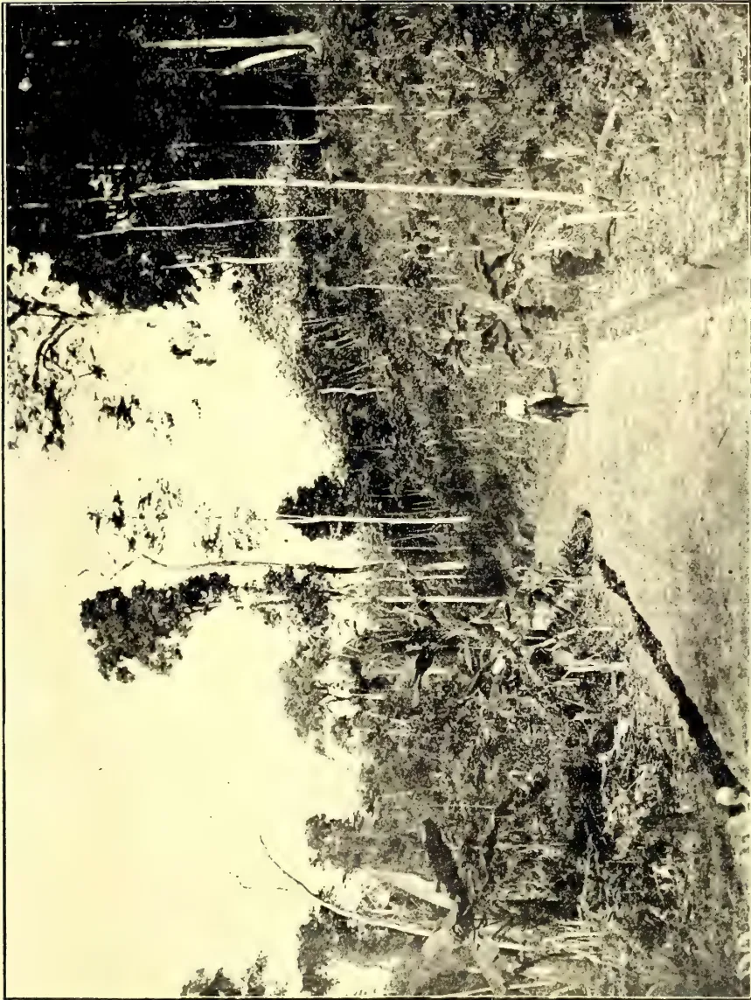
A black and white photograph showing a road winding through a rubber estate. The road is bordered by tall, thin rubber trees on the left and dense, low-lying vegetation on the right. The scene is captured from an elevated perspective, looking down the length of the road as it curves into the distance.PARA RUBBER IN THE GOLD COAST.
ROAD THROUGH ESTATE SHOWING RUBBER CLEARINGS: ROAD FRINGED WITH PLANTAIN TREES.
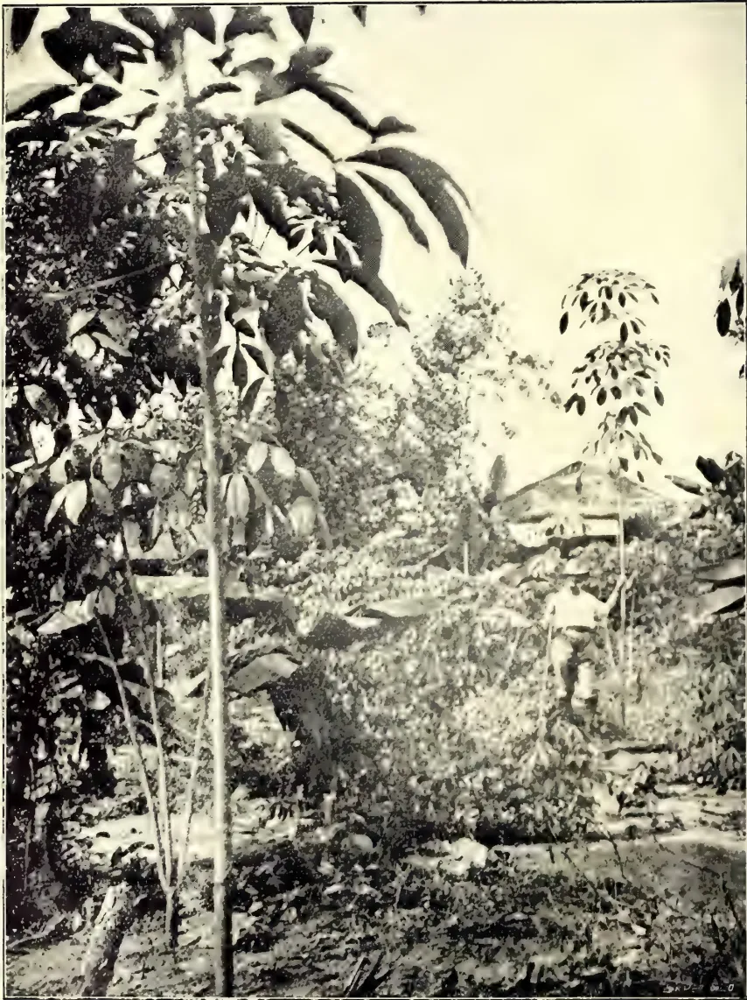
A black and white photograph showing a tall rubber tree in a plantation. The tree is the central focus, with its trunk and large, dark, oval-shaped leaves. In the background, there is a small, simple structure with a thatched roof, and a person is visible standing near it. The ground is covered with dense vegetation and fallen leaves. The overall scene depicts a rubber plantation in the Gold Coast.PARA RUBBER IN THE GOLD COAST.
TREES 16 MONTHS OLD AND 18 FEET HIGH.
submitted a list of small field-owners—the most insignificant of owners, holders of six kurunies extent or thereabouts—who usually depend on loans for their seed paddy. From this list the most helpless are selected, and, on appointed days, the paddy, which is purchased for them by Agents of the Society, is distributed at the village market-place or the most populous centre in the village, if there is no market. The place and time of distribution are fixed by me. The reason for this is to give the widest publicity possible to the movement.
The largest quantity given was twelve kurunies, and the smallest six kurunies.
At Akuressa the distribution took place at the Akuressa V. C. Market, at Pahalawalakada, at the Paraduwa Boys' School, and so on.
Measures are in contemplation to very considerably extend the area of operations in the next yala harvest. It will take years for a small body such as ours to supersede the present system of usury practised by the village money-lender. That we could, in the course of two seasons, rescue from his rapacity over a hundred villagers is by no means a small matter.
Facilities for obtaining seed paddy on reasonable terms, and the encouragement of transplanting are the important factors in the extension and improvement of paddy cultivation. The lien which the money-lender has over the crops which supply the staple food of the people is the principal deterrent to the cultivation of many an acre of arable lands. If it is possible to introduce legislation to check this scandalous form of usuary prevalent in the Island, the sooner it is brought into force the better. I think we may be pardoned for taking some pride to ourselves for having been the first to initiate a scheme for mitigating what has so long been an unavoidable evil.
I am, sir,
Your most obedient servant,
JAS. A. WICKREMERATNE,
Mudaliyar, W. K.
Hon. Sec., T. A. S.
Wiltshire, Matale,
19th June, 1908.
SIR,—In the May number of the "T.A.," page 427,—Article on the Cocount in the Philippines (contd.),—there appears the following statement with regard to the planting of Coconuts:—
"The planting 'pit' fetish, in such common use in India, has nothing to commend it."
The writer of the article, who I take to be an authority on the cultivation, does not, however, state what kind of arrangement in the matter of planting has something to commend it.
As I am very much interested in the planting and cultivation of coconuts, I shall be very glad to learn anything there is worth learning on this important subject.
Yours faithfully,
E. GORDON REEVES.
[If the nuts are not to be planted in pits, they are presumably to go upon the level, but the whole of the article was published.—ED.]
St. Joseph's Estate,
Weeraketiya, 19th July, 1908.
SIR,—I have the honour to forward for your inspection specimens of two varieties of tomatoes grown on St. Joseph's Estate at Weeraketiya, as an experiment, between coconut plants.
| No. 1. | Variety, Tomato | "Champion" |
| 2. | " | "The Peach" |
Calculating their value at 3 cents per fruit (local market value), a plant should yield about Rs. 1.50 worth of fruit on an average, so that tomatoes ought to prove a remunerative catch crop.
The district is a dry zone as will appear from the statement of the rainfall hereto annexed, and I think the result is due to careful cultivation.
Yours faithfully,
FRANCIS CRUSE,
| 1906 | ... 1st July to 31st Dec. | ... 26.98 in. |
| 1907 | ... 1st Jany. to 31st Dec. | ... 43.05 ,, |
| 1908 | ... 1st ,, to 30th June | ... 23.46 ,, |
[It is quite evident from the samples of fruit received that great care has been exercised in raising them. The fact is also proved that, by proper methods of tillage, good crops could be raised with the minimum of rainfall. Mr. Cruze deserves much credit for the results shown. Not long ago he submitted for inspection a specimen of Cuban Queen Melon which, on weighing, turned the scale at 19 lbs. and was of excellent quality and flavour.—Secretary, C.A.S.]
72
[JULY 1908.
MARKET RATES FOR TROPICAL PRODUCTS.
(From Lewis & Peat's Monthly Price Current, London, 16th, June 1908.)
| QUALITY. | QUOTATIONS. | QUALITY. | QUOTATIONS. | ||||
|---|---|---|---|---|---|---|---|
| ALCOES, Socotrine cwt. | Fair to fine | 85s a 90s | INDIARUBBER (Contd.) | Common to good | 6d a 2s 2d | ||
| Zanzibar & Hepatic " | Common to good | 20s a 30s | Porneo | Good to fine red | 1s 9d a 2s 6d | ||
| ARROWROOT (Natal) lb. | Fair to fine | 2 3/4 d a 4d | Java | Low white to prime red | 1s 4d a 2s 5d | ||
| BEESE'S WAX, cwt. | Penang | Fair to fine red ball | 2s 6d a 3s 4d | ||||
| Zanzibar Yellow " | Slight'y drossy to fair | £6 10s a £6 15s | Mozambique | Sausage, fair to good | 2s 6d a 3s 4d | ||
| Bombay bleached " | Fair to good | £7 12s 6d a £7 15s | Nyassaland | Fair to fine ball | 2s 6d a 3s 4d | ||
| " unbleached " | D. rk to good genuine | £5 15s a £6 10s | Madagascar | Fr to fine pinky & white | 1s 10d a 2s 2d | ||
| " Madagascar " | Dark to good palish | £6 1s a £6 17s 6d | Majunga & blk coated | 1s a 1s 6d | |||
| CAMPHOR, Formosa " | Crude | nom. | Niggers, low to good | 6d a 2s 1d | |||
| China " | Fair average quality | 13s | New Guinea | Ordinary to fine ball | 1s 6d a 2s 6d nom | ||
| CARDAMOMS, Malabar lb. | Good to fine bold | 1s 10d a 2s | INDIGO, E.I. Bengal | Shipping mid to gd violet | 3s 5d a 3s 10d | ||
| Tellicherry | Middling lean | 1s 5d a 1s 7d | Consuming mid. to gd. | 3s 1d a 3s 4d | |||
| Mangalore " | Good to fine bold | 2s a 2s 6d | Ordinary to middling | 2s 9d a 3s | |||
| Ceylon. Mysore " | Brownish | 1s 6d a 1s 9d | Oudes Middling to fine | 2s 6d a 2 3/8 nom | |||
| Malabar " | Med brown to fair bold | 1s 9d a 2s 9d nom. | Mid. to good Kurpah | 2s 3d a 2s 6d | |||
| Long Wild " | Small fair to fine plump | 1s 4d a 3s 6d | MACE, Bombay & Penang | Low to ordinary | 1s 6d a 2s 2d | ||
| CASTOR OIL, Calcutta, " | Fair to good | 1s 5d a 1s 6d | per lb. | Mid. to fine Madras | 1s 5d a 2s 4d | ||
| CHILLIES, Zanzibar cwt. | Seeds | 1s 6d a 1s 9d | Pale reddish to fine | 1s 5d a 1s 10d | |||
| CINCHONA BARK. - lb. | Shelly to good | 6d a 1s 9d | Ordinary to fair | 1s 2d a 1s 6d | |||
| Ceylon | 1sts and 2nds | 3d a 3 1/2d | Java | " " good pale | 1s 1d a 1s 6d | ||
| Crown, Renewed | Dull to fine bright | 0s a 2s | MyRABOLANES, cwt | ||||
| Red, Org. Stem | Madras | UG and Coconada | 4s 6d a 4s 9d | ||||
| Red, Org. Stem | Bombay " | Jubbepore | 5s a 5s 6d | ||||
| Red, Renewed | Bhimiles | 5s a 6s | |||||
| Root | Bengal | Rhajpore, &c. | 4s 9s a 5s 3d | ||||
| Common to fine quill | NUTMEGS - lb. | Calcutta. | 5s a 5s 3d | ||||
| 1sts | Bombay & Penang " | 64's to 57's | 1s 4d a 1s 5d | ||||
| 2nds | 110's to 65's | 5 1/2d a 1s 5d | |||||
| 3rds | NUTS, ARECA cwt. | 160's to 115's | 4 1/2d a 5 1/2d | ||||
| 4ths | NUX VOMICA, Cochin | Ordinary to fair fresh | 17s 6d a 20s | ||||
| Chips, &c.. | Fair to fine bold | 5d a 8 1/2d | per cwt. Bengal | Ordinary to good | 9s a 11s 6d | ||
| CLOVES, Penang lb. | Dull to fine bright bold | 2d a 3 1/2d | Madras | " " | 7s 6d a 7s 9d | ||
| Amboyna " | Dull to fine | 9 1/2 a 11d | " " | 7s 9d a 9s | |||
| Ceylon " | Fair " fine bright | 7 1/2 a 8d | OIL OF ANISEED | Fair merchantable | 4s 6d a 4s 9d | ||
| Zanzibar " | Fair " fine bright | 7d a 8d | CASSIA " | According to analysis | 2d | ||
| Stems " | Fair | 4 1/2d a 5 1/2d | LEMONGRASS " | Good flavour & colour | 1 1/2d a 2d | ||
| COFFEE | NUTMEG " | Dingy to white | 2 1/2d a 1s 3d | ||||
| Ceylon Plantation " | Bold to fine | 110s a 116s | CINNAMON " | Ordinary to fair sweet | 1s 1d | ||
| Native | Medium to good | 50s a 100s | CITRONELLE " | Bright & good flavour | |||
| Liberian " | Good ordinary | nominal | ORCHELLA WEED - cwt | ||||
| COCO, Ceylon Plant. " | Fair to bold | 45s a 50s | Ceylon | Mid. to fine not woody.. | 10s a 12s 6d | ||
| Native Estate " | Special Marks | 78s a 90s | Zanzibar. " | Picked clean flat leaf .. | nom. | ||
| Red to good | 72s a 77s 6d | " wiry Mozambique | " | ||||
| Ordinary to red | 55s a 70s | PEPPER - (Black) lb. | |||||
| COLOMBO ROOT " | Middling to good | 12s 6d a 1s | Alleppe & Tellicherry | Fair | 3 1/2d | ||
| CROTON SEEDS, 9ft. cwt. | Dull to fair | 27s 6d a 32/6nom. | Ceylon | " to fine bold heavy .. | 3 1/2d a 4d | ||
| CUTCH " | Fair to fine dry | 21s a 25s nom. | Singapore | " " " " " " " " | 3 1/2d | ||
| GINGER, Bengal, rough, " | Fair | 30s | Acheen & W. C. Penang | Dull to fine | 3d a 3 1/2d | ||
| Calicut, Cut A, " | Small to fine bold | 72s 6d a 85s | (White) Singapore | Fair to fine | 5d a 8d | ||
| B & C, " | Small and medium | 48s a 65s | Siam " | Fair | 5 1/2d | ||
| Cochin Rough " | Common to fine bold | 35s a 37s | Penang " | Fair | 4d | ||
| Japan " | Small and D's | 33s a 35s | PLUMBAGO, lump cwt. | Fair to fine bright bold | 35s a 45s nom. | ||
| GUM AMMONIACUM " | Unsplit | 28s | Middling to good small | 25s a 40s | |||
| ANIMI, Zanzibar, " | Sm. blocky to fair clean | 25s a 60s | Dull to fine bright | 16s a 30s | |||
| Pale and amber, str. strts. | £16 a £19 | Ordinary to fine bright | 7s a 15s | ||||
| " little red | £13 a £15 | SAGO, Pearl, large | Dull to fine | 14s a 15s 9d | |||
| Bean and Pea size ditto | £13 a £14 | medium | " " " " " " " | 14s a 16s 6d | |||
| F. r to good red sorts | £9 a £12 | small | " " " " " " " | 14s a 15s | |||
| Med. & bold glassy sorts | £6 10s a £7 10s | SEEDLAC cwt. | Ordinary to gd. soluble | £5 a £6 nom. | |||
| Madagascar " | Fair to good palish | £4 a £5 10s | SENNA, Tinnevelly lb. | Good to fine bold green | 4 1/2d a 7d | ||
| Arabia E. I. & Aden " | " " red | £4 a £7 10s | Fair greenish | 2 1/2d a 4d | |||
| Turkey sorts " | Ordinary to good pale | 25s a 32s 6d | SHELLS, M. o'PEARL - | Commons peckyard small | 1 1/2d a 2d | ||
| Ghatti " | Sorts to fine pale | 32s 6d a 50s | Egyptian cwt. | Small to bold | 45s a £5 10s | ||
| Kurrachee " | Reddish to good pale | 17s a 42s 6d | Bombay " | " " " " " " | 9s a £6 10s | ||
| Madras " | Dark to fine pale | 20s a 30s nom. | Mergui " | " " " " " " | £5 5s a £7 7s 6d | ||
| ASSAFETIDA " | Clean fr. to gd. almonds | 15s a 25s | Manilla " | Fair to good | £4 5s a £5 2s 6d | ||
| KINO " | com. stony to good block | 85s a 100s | Banda " | Sorts | 25s a 3s nom. | ||
| MYRRH, picked " | Fair to fine bright | 25s a 75s | TAMARINDS, Calcutta.. | Mid. to fine bl'k not stony | 11s a 12s | ||
| Aden sorts " | Fair to fine pale | 6d a 1s | per cwt. Madras | Stony and inferior | 4s a 5s | ||
| OLIBANUM, drop " | Middling to good | £5 a £6 | TORTOISESHELL - | Small to bold | 8s a 31s | ||
| pickings " | Good to fine white | 60s a 75s | Zanzibar, & Bombay lb. | Pickings | 6s a 26s | ||
| siftings " | Middling to fair | 45s a 55s | Fair | 19s | |||
| India RUBBER lb. | Low to good pale | 30s a 40s | TURMERIC, Bengal cwt. | Finger fair to fine bold | 19s a 22s | ||
| Ceylon, Straits, " | Slightly foul to fine | 10s a 20s | Madras " | Bulbs [bright] | 13s a 16s | ||
| Malay Straits, etc. | Fine Fara bis. & sheets | 11s a 15s | Do. " | Finger | 17s | ||
| " Ceara " | 4s 2d | Cochin " | Bulbs | 18s | |||
| " Ceara " | 4s 2d | VANILLOES - lb. | |||||
| Crepe ordinary to fine.. | 4s 1d a 4s 3d | Mauritius " | Gd crystallized 3 1/2 a 1/2 | 8s a 15s | |||
| Fine Block " | 4s 3d | Madagascar " | Foxy & reddish 3 1/2 a 8 | 6s 6d a 11s | |||
| Scrap fair to fine | 2s 6d a 3s | Seychelles " | Lean and inferior | 6s 9d a 6s 9d | |||
| Assam | Plantation | 3s 4d | VERMILLION .. | Fine, pure, bright | 2s 9d | ||
| Rangoon | Fair II to good red No.1 | 2s a 2s 9d nom. | WAX, Jafan, squares | Good white hard | 50s | ||
| " " | 2s 2d a 2s 4d | ||||||
No. 1.]
JULY, 1908.
[VOL. III.]
Papua, March 14th.
SIR,—Having had the pleasure of reading your pamphlet on "All about the Areca Palm," I have (as a resident here, and the owner of 640 acres which I hope to put under Para Rubber and other plants about December next) taken a great interest in it. In this country there is a very large amount of areca-nut grown by the natives in their gardens, and used as a masticatory with lime, and a leaf that I do not know, but it is not a pepper*. There is also a very inferior indigenous areca-nut that grows wild in the bush: this grows on the tree in clumps on a central stalk completely covering the latter on all sides. The clumps are from 6 in. to 12 in. long, the nut very small.
Your pamphlet has made me believe that the village nut might be profitably grown on my estate: with this in view, I am taking the liberty of sending you a bag of the best local nut, and would ask you to be good enough to inform me if it differs in any way from the Ceylon variety, or the Mysore and Shriwardun nuts. [This bag has not yet come to hand.—Ed., C.O.]
If you could manage to send me a sample of Mysore and Shriwardun nuts, with price and freight charges, I should be extremely obliged.
Unfortunately, this country is so poorly supplied with shipping facilities that freights are very heavy and shipping opportunities few and far between. Were it otherwise, this country (the climate of which is much maligned) offers a splendid opening for a planter. Coffee, rubber and sisal hemp plantations are already in existence and promising well. The native labour is cheap and good, though the naturally
lazy inhabitants do not care to work for too long at a time. Some people are taking up blocks of 5,000, 10,000 and even 20,000 acres with, I fancy, small hope of immediately developing such large areas: principally (I am afraid) with a view of floating a Company, getting a few hundred pounds for themselves by so doing, and then turning to something else.
The Federal tariff in Australia is another blow to any industry here: although we are now part of the Commonwealth, nothing has yet been heard of a rebate of duty for the produce of this country. This is due to the fact that we employ coloured labour; a deadly sin in the eyes of the Australian, who imagines thereby that we are competing against him! I will try and get a few of the different kinds of leaves eaten with arecanut, and send them to you.
Has any machine yet been brought out for utilising the areca-nut husk as a fibre producer? There would seem to be a great opening ahead for such a machine.—Yours faithfully,
PLANTER.
P.S.—Which is the best way to pick the crop? By nuts individually, or to pull off the fibrous attachment to which the nuts are attached, and then remove the individual nuts?
I should be extremely obliged if you would answer the following questions for me. I am afraid it is rather a long list:—
(i) Is there yet any machine for husking nuts?
[No—so far as we know: coconut fibre is so abundant in Ceylon as to supply fibre requirements.—Ed., C.O.]
(ii) I cannot reconcile the different prices as given on page 4 of pamphlet—R18 for cwt. dried nuts = R7 1-5 per cwt.
[So quoted by the Agent, Kegalla district, in 1893.—Ed., C.O.]
Page 11 of pamphlet—60c per 1,000 or R6 per cwt—this is presumably in husk as they are sold at the station store (?)
* The Betel-nut vine is Pepper Betel: the leaves to be sent by our correspondent may lead to identification.—Ed.
10
74The Supplement to the Tropical Agriculturist[At the "estate store" in an upcountry district as quoted by a planter.—Ed., C.O.]
Page 11 of pamphlet footnote—R22 to R40 per cwt.!!
[That is in Bombay for superior kinds—of course some years ago.—Ed., C.O.]
(iii) On page 21 of pamphlet—"wholesale value at Galle or Colombo is R8 per cwt": is this in the husk?
(iv) On same page—"At Madras and Bombay Ceylon nuts fetch about R15 per cwt.":—is this for dried nuts (?) [Both dried and husked of best quality.—Ed., C.O.]
(v) On page 30, at the bottom, is given the recipe for 'pandhri' or white betel-nut. Is this the method of preparing all the nuts described as white betel-nuts on page 23? If this be so, how is it that red betel nut such as 'tambdi' and 'chikni' (page 30) fetch a lower average price than white betel-nuts (see page 23) when their preparation is so much more tedious and consequently more expensive?
(iv) Can you give me any information as to shipping and agents' charges at Bombay (apart from freight)? Also the names of leading betel-nut merchants there. PLANTER.
[Here is some further information from Colombo native dealers:—
Arcanut exporters to Bombay from Ceylon are:—Three Parsee firms and about two to three Borah firms. Nuts are exported without husk. They are exported in pieces, too, but generally whole. The merchants in Bombay who deal in arecanuts are natives, branch firms of the Ceylon merchants. The charges in Bombay are R2.50 per cwt.—Ed., C.O.]
In reply to "Planter's" letter on this subject, from New Guinea, Messrs. J. P. William Bros., the well-known seed firm of Henaratgoda, say that the arecanut crop is gathered when the nuts are ripe, the whole bunch or cluster being pulled; self-sown nuts are gathered from the ground. A man or boy ascends each tree for plucking. It is easy work: one man can pluck over a hundred trees a day. The nuts are dried in the sun in dry weather and in the wet weather by heat or smoke. To further points preferred in "Planter's" letter, the replies are:—
1. Nuts are husked by an arecanut cutter: "gire" of the Sinhalese and "pakku vetti" of the Tamils—the cost is 4 to 5 cents per 1,000.
2. Price R7.15 per cwt for dried and husked nuts is for inferior quality. Average price for undried nuts in husk is 60 cents per 1,000 at
estate store. When dried and husked the average price is for ordinary R8 to R9; "Hamban" R10 to R12 per cwt. Undried, or dried nuts in husk, are not sold by the cwt.
3. The wholesale value R8 per cwt is for dried and husked nuts.
4. Madras and Bombay prices R15 per cwt is for dried and husked nuts.
5. It is not advisable to go in for special preparations; besides, they are expensive. The market for such kinds is limited in Ceylon. No special preparation is made for exporting purposes.
6. Dried and husked arecanuts are shipped in bags to Bombay and other parts of India. As regards shipping agency charges and those for selling, they may be ascertained from the Mitsui Bussan Kaisha, P.O. Box No. 14, Bombay.
7. Arecanuts are dried in the sun in dry weather and in wet weather by heat.
8. The variety called Hamban Puwak is extensively grown in Ceylon and found to be more profitable than other varieties.
9. Ordinary, dried and husked, arecanuts are now sold in the villages at 87½ cents per 1,000; Hamban Puwak at R1.12½ per 1,000, the latter fetches always 25 cents more, a hardy tree, nut large, bears more nuts than the ordinary areca. Ordinary, dried arecanuts, husked, holds about 82 to 85 per lb., 1,000 equal to about 11 lb and about 10,000 to the cwt. Hamban Puwak, dried and husked, holds about 72 to 75 per lb.
10. Ordinary arecanut crop per tree average per annum about 300 to 450. Hamban ditto about 400 to 550.
As regards getting samples of Ceylon nuts, or other business arrangements, we would refer "Planter" to Messrs. J. P. William Bros., Henaratgoda, Ceylon.
A PLANTER'S EXPERIENCE.
Tavoy, Burma, May 29th.
SIR,—With reference to the leaderette in the April Tropical Agricultural on the weeding question as regards rubber, will you allow me to give my experience.
I am planting 15 ft. by 15 ft. now, but one field of 60 acres is planted 15 ft. by 10 ft. No catch crops are grown. Weeding is only done in the rubber rows 4 ft. on each side of the tree or about 8 ft. in all; the balance of 7 ft. is left alone to grow up with secondary jungle growth. This secondary growth is not allowed to get much more than 10 ft. to 12 ft. high so far, so as not to suppress the rubber, and,
and Magazine of the Ceylon Agricultural Society,75of course, all lateral growth protruding over the cleared rubber lines is cut back. My theory is that not only does this strip of jungle act as a very efficient windbreak and as partial shade from the sun, by lines being run N. and S., but also as a ready source of copious mulch, and also of surface soil and dead and rotting leaves which will be annually scraped into trenches 3 ft. by 2 ft. by 1 ft. These will be this year dug for the first time between each rubber tree in the case of the field planted 15 ft. by 10 ft., and 3 ft. or more feet, according to the size of each tree, from each tree on the upper side of the hill slope, in the case of 15 ft. by 15 ft. areas.
The weeding of my rubber under the above conditions costs on an average 8 annas per acre for six months of the year. In December, the 7th month, and the beginning of our somewhat prolonged hot weather, a very thorough weeding is done and the ground in the rubber rows thoroughly mulched with branches and leaves from the uncut intervals. This weeding costs on an average R1.8 per acre. This, though mulching, of course, also prevents to a great extent weed re-growth. In my case no weeding is found necessary, or done, till the succeeding June although we usually have good showers in March, April and May. The total cost of weeding then per annum under this system is R4.8 per acre per annum. This is done where rubber is grown as its own catch crop so to speak, and close planted, and no catch crops are troubled about. In the course of 7 or 8 years our rubber, it is hoped, will have so covered the ground with its canopy as to preclude the necessity of any weeding and will also have considerably suppressed the interspaces grown over with jungle, which, as I have noted above, is at no time allowed to exceed more than a foot or two in height the rubber in the rows. There is the fact that this method tends to run up the rubber trees very rapidly; but this is counterbalanced by adopting Mr Wright's thumbnail pruning and topping all trees at 10 feet and again the succeeding lateral branches at 2 feet or so more.
A pure crop of any vegetable growth is known to lead to the spread of disease fungoid, cancerous, and of insect pests; and this intermixing of jungle tree growth suggests itself as a possible remedy. I should say that the weeding done is what is generally known as "grass kniving" only: that is, cutting down,
as close to the ground as possible, all growth in the rows. This is left to lie as a cover to the ground and to obviate wash to a great extent by preventing the direct impact of the torrential rains we get in Lower Burmah for 4 to 5 months of the year.
In calculating cost I would ask your readers to note that our coolies here get 8 annas per day pay. In the first year the cost of weeding was rather heavier than the figures I give above, but owing to constant grass-kniving, covering with subsoil from the trenches, lateral shade, and heavy mulching, the cost has been reduced and I hope will be even more reduced until it reaches, practically, a vanishing point. It is, perhaps, unnecessary to point out that if your lines run at such an angle (according to your latitude) as to get the maximum amount of lateral shade from the West sun, also run along your hill centres, the interstrips of jung would obviate wash to a great extent, and catch what little does occur for future re-application to the rubber.—I am, Sir, yours truly,
J. G. F. MARSHALL.
The following information—says our contemporary's Tuticorin correspondent—has been circulated in Travancore and Malabar by the Collector of the latter district:—The roots in Travancore have lost a great deal of money from a new disease which has attacked their coconut trees lately. The disease is spreading slowly, and may appear in other districts ere long. It causes the trees gradually to become barren; in some gardens the best trees, that used to give over a hundred nuts a few years ago, now only give 10 or 20 or even sometimes none at all. The first sign of this disease is that some or all of the trees turn yellow, as if they did not get enough water. Then the tips of the leaflets dry up and hang down. At the same time the outer leaves bend away from the crown and become loosened, so that they can easily be torn off the tree. In one or two years all the leaves will have turned yellow and dried up at the tips. When this happens the bunches of nuts get affected. At first some of the nuts do not ripen properly, but fall to the ground in an immature condition; next year there will be fewer and smaller nuts; and after four or five years there may be none at all. Sometimes the flower spathes are unable to break out from the base of the leaves.
76The Supplement to the Tropical AgriculturistUsually, however, they are formed, but are not strong enough to produce good nuts. Such nuts as are given by diseased trees are of bad quality, the copra is hard and gives little oil, and the water inside the nut is disagreeable in taste and diminished in quantity. Gradually, as the palm gets more and more weakened, the new leaves that are formed are smaller than those of healthy trees. The centre shoot, that stands straight up in the middle of the crown, gets shortened and turns yellow or may even wither completely. After five or ten years the diseased palm will dry up altogether and the head falls off. This is fairly common in some places as in the Minachil Taluq of Travancore, while in others, at Changanachery, very few trees have died even though some of them have been barren for many years.
Areca palms are attacked in the same way. As they are smaller and more delicate they become barren more quickly than coconuts, and they may be killed in from three or five years, though after they remain much longer without dying. They are never killed in three months as with the koleroga disease which attacks areca palms in Mysore. This disease has caused such loss in some villages in Travancore that there is now only one quarter of the yield of coconuts in these places that there used to be some years ago. It is caused by a little "fungus" which attacks the roots in the soil and causes them to rot. This is so small that it cannot be seen without great difficulty. It lives and grows in the soil, but can only move along underground very slowly. It has taken about ten years to get from one village to another, only a few miles away. If people take soil or coconut roots from a diseased garden and put them into a healthy garden, the fungus may be brought along in the soil or roots, and may begin to attack healthy trees at once. This must be the way it has spread over a large part of North Travancore in the last twenty years, for in this manner it can, of course, be made to travel quickly. Hence people should be very careful not to let any soil or roots from a diseased garden into their gardens. The only way to kill the "fungus" is to dig up and burn the roots of diseased trees as soon as any are noticed. If all the owners of coconut and areca gardens will do this, there is a good chance that the disease will not get established in Malabar. It will require great watchfulness, and all must unite in keeping a look-out for cases; for if a few trees are left diseased they will serve to harbour the "fungus" and enable it to spread in the soil, and
attack all the palms near by. The trees should be dug up and the roots burnt as soon as they are noticed to be diseased, as, even though the owner may lose a few nuts by digging up the palm, the loss will be small, and will save his other trees. The palms do not ever seem to recover, and it is better to lose a little at once than a great deal later or by allowing all the trees to get attacked.
(From Mr W A Graham's latest report on the State of Kelantan.)
A large number of inquiries concerning land for rubber-planting were received during the year. These led to further negotiations with many parties, some of which resulted in the taking up of land while several applications were pending at the end of the year. The area of land taken up amounted to 14,000 areas of which 8,000 are situated within the Duff Company's Concession. An arrangement was arrived at by which the Duff Company, although all its rights as now defined terminate with the year 1904, was enabled to enter into negotiations with possible rubber planters for long leases, the Government agreeing, under conditions, to recognise such leases as may not have expired at the date when the Company's rights cease. The soil and climate of Kelantan have been reported on as very suitable for rubber planting and land is being leased to planters on exceptionally easy conditions. Rubber already planted is all doing well and the young trees compare favourably with those of the other Malay States. The paddy crop for the year 1,324, was an exceptionally good one as is fully testified by the large amount of paddy exported and the low price of rice which has obtained locally since the crop was reaped. A large area of new paddy land was opened up and it seems that this form of agriculture is about to develop extensively under the new condition of Government. Although more copra was manufactured than during last year, the coconut crop was not up to the average, and this seems to have been the case elsewhere, judging by the high prices which were paid in Singapore for copra. The number of young coconut trees planted was less than at any time during the past three years, available land being now all required for rubber. The planting of rubber has quite caught the fancy of the Malay cultivator. Stories of the large profits to be secured from rubber and of the great areas
and Magazine of the Ceylon Agricultural Society.77which are being devoted to this form of agriculture in the Federated Malay States, have reached Kelantan with the result that everybody who has a piece of land lying fallow now wishes to see it covered with Para rubber trees as soon as possible. For this purpose a considerable number of seeds and young plants have been imported from Singapore and from the Perak State. Seeds were preferred, the plants supplied by the rubber estates being too highly priced to suit Malay ideas, but lately large numbers of young plants have been brought into the State for sale by Chinese growers and these being much cheaper than the plants formerly obtainable, have come very much into demand. What will be the outcome of these small plantations it is difficult to foretell. The possibility is that many of them will come to nothing, but it is also clear that in a few years' time there will be a considerable number of trees in the State of tappable size though probably of slightly inferior rubber producing quality owing to want of sufficient care during the early stages of their growth. There should, however, be a regular supply of rubber and if the price of the article is maintained there should be a good opening for a rubber-buying agency to take the produce of the lands off the Malays.—S. F. Press, May 29.
Our important staple, Coconut Oil, had been for a long time past, since October 1878, declining in value; but recent years show great recovery. At the time mentioned, the London quotation was £49 with a stock of only 900 tons, Cochin oil being then quoted as high as £66. During the previous period of scarcity of Coconut oil in December 1868, the London price was £50 against a stock in London of 2,500 tons; and going again back to end of 1862 and beginning of 1863, we find that the London price of Ceylon Coconut oil was £53 with stocks in London of 2,000 tons. We have so far been dealing with the minimum stocks of the article and the maximum prices obtained, and it will be remarked that on each recurrence of scarcity the price has been lower than on the previous occasion. We now turn to the period of maximum stocks and minimum prices. We find that in May 1865 with a stock of Coconut Oil in London of 15,700 tons, the price then was £40. In Sept., 1870, with a stock of 8,000 tons, the price was £37 to £38, and the lowered value in this instance was—be it remarked—at a time when the stock
was nearly one-half of the quantity. On Oct., 1873, stocks in London had risen to 13,800 tons and prices had declined to £32 15.
Coconut oil remained on a much lower level of value after 1870 than before it. This was due to the largely increased production of Palm oil and the competition it has caused since. Later on we have another influence at work to reduce prices of the staple in Europe. This was the increasing production of Copra in the South Sea Islands, &c., and the Export of it mostly to the Continent of Europe where it is manufactured into oil. The demand for Coconut oil in recent years has been helped by the large increase in its treatment for edible purposes on the Continent and elsewhere. A turn for the better took place during 1901 with great demand for soap-making, and prices have since been at a high level, more especially in 1906 and 1907.
Anything which will benefit Ceylon people is of the first importance to us and we herewith wish Coconut Growers all the success they well deserve.
| January | Stock in London Tons. | Spot Price of Oil Per Cwt. | C.I.F. Price of Copra Per Cwt. | |
|---|---|---|---|---|
| 1860 | ... | 4,629 | 41/ | — |
| 1865 | ... | 14,997 | 36/ | — |
| 1870 | ... | 6,073 | 41/ | — |
| 1875 | ... | 5,886 | 38/ | — |
| 1880 | ... | 3,263 | 37/ | — |
| 1885 | ... | — | — | — |
| 1890 | ... | — | 24/ | 17/6 |
| 1891 | ... | 875 | 29/ | 17/0 |
| 1892 | ... | 1,591 | 23/3 | 14/ |
| 1893 | ... | 618 | 23/6 | 16/ |
| 1894 | ... | 568 | 25/6 | 14/6 |
| 1895 | ... | 614 | 24/ | — |
| 1896 | ... | 594 | 22/9 | — |
| 1900 | ... | 234 | 25/6 | 15/6 |
| 1901 | ... | 100 | 25/6 | 17/6 |
| 1902 | ... | 200 | 31/6 | 18/9 |
| 1903 | ... | 200 | 29/ | 17/ |
| 1904 | ... | 400 | 25/9 | 15/9 |
| 1905 | ... | 200 | 30/ | 19/1½ |
| 1906 | ... | 200 | 28/6 | 19/ |
| 1907 | ... | 200 | 39/3 | 25/9 |
| 1908 | ... | 200 | 30/ | 19/6 |
Burringbar, Tweed River, N.S.W., May 25th.
SIR,—Having frequently read of the great trouble and expense planters experience in trying to maintain the fertility of their lands, would you kindly permit me to give a description of "Melilat" or "Pea Clover." (Melilotus officinalis.) This plant grows on an Island off the
78The Supplement to the Tropical Agriculturistcoast of Tasmania and it has been proved by Botanists and Agricultural experts, to be a nitrogenous plant of the highest order, able to grow on poor sandy wastes or rubbish-ridden country, which it rapidly enriches by the great amount of nitrogen it absorbs from the atmosphere, and conveys to the soil. It has proved most useful as a fodder plant, an improver of poor soil, an exterminator of fern and scrub, and it is especially good for green manuring. It grows from 2 to 3 feet high; in appearance it resembles lucerne and it yields from 30 cwt. to 2 tons of hay per acre. An American expert of Botany declares that "each well-developed plant conveys to the soil fully 4 lb. of nitrogen". I have read recently that Mr Carruthers, Director of Agriculture, has been searching for a plant for this purpose, and so far has succeeded in procuring only a thorny species of mimosa which adds only about 150 lb. of nitrogen to the soil per acre per annum. He also writes:—"The introduction of a leguminous plant to take the place of the weeds, which grow so vigorously and are so expensive, means an automatic manuring of the soil, and a conservation of surface soil that will otherwise be washed away." A writer in one of our Government Agricultural Journals says: "This seed has been sown in raw white sand, and in the course of 5 or 6 years it has changed it into dark, almost black rich loam. We are now growing lucerne (which generally requires the best soil) which, had it not been for Melilot, would never have grown at all.
Japan Clover (Lespedeza striata) is another splendid fertilising fodder plant, and in nutritive value it stands at the head of the list. It yields from 1 to 3 tons of hay per acre, and will grow in almost any class of country. It is largely cultivated in the Southern States of America, and there are many places in India and the Straits Settlements suitable for its cultivation. Like the Melilot it is a great ameliorator and fertiliser. The abundant long tap-roots of both of these plants penetrate to a great depth, and decaying annually, render the soil porous, and leave therein much nitrogenous material and humus. They release and bring up from the sub-soil valuable plant food. The analysis of Japan Clover ashes reveals 40 per cent. potash, 29.60 oxide lime, 7.82 sulphuric acid, 7.54 phosphoric acid—all most valuable elements in plant life and growth. Soils are thus renovated, slopes prevented from washing, moisture solicited and retained, and atmospheric fertilisers gathered and garnered.—Yours faithfully,
B. HARRISON.
From various sources we learn that the proposed company for the manufacture of celluloid and artificial silk in Japan has fallen through, as originally intended, the foreign capitalists not having been able to complete their part of the bargain. The enterprise has been reconstituted by Japanese alone, the capital being 1,200,000 yen. The company was created under the auspices of Mr. R Kondo, the president of the Nippon Yusen Kaisha, and the Iwasaki family. A second company has also been constituted by the Mitsui Company with a capital of 2,000,000 yen. The consumption of celluloid in Japan has greatly increased the last few years, and the annual import has been of the value of about one million yen. As it has to bear a heavy duty, there should be a good chance for the home-made article in competition with the imported commodity. Celluloid is largely composed of camphor, which is a native product and has no duty to be paid on it. A brilliant future is therefore looked forward to by the Japanese promoters.—L. & C. Express, May 29.
The result of an interesting experiment made to compare the growth of apple trees planted on grass and on cultivated ground is given in the May number of The Journal of the Board of Agriculture. The growth of three varieties of apples was tested, and it was found in each case that given equal conditions as to manure, the increase in diameter of the stem of a tree grown on cultivated ground is much more rapid than that of a tree planted on grass. A Cox's orange pippin, one of the examples given, planted on grass showed an increase of 1.25 in. in diameter of the stem in the year 1906, and another on cultivated ground 3.10 in. in the same year. In the wet season of 1907, however, there was not such a marked difference in their respective increases, which seems to show that insufficient moisture is one of the causes of the poor development of trees planted on grass. The experiment of removing a square of turf (four square yards) from around the stems of some trees resulted in a healthy and strong growth, almost equal to that made by trees in cultivated ground, and very much better than that made by trees with grass all around the stem.—Home paper.
and Magazine of the Ceylon Agricultural Society.79When a fruit such as the banana becomes ripe, and still more when it reaches the pulpy stages of over-ripeness, it might well be supposed that micro-organisms are at work, and that very likely the over-ripe fruit might be harmful upon that account. This is not the case, however. Dr. Giuseppe Tallarico has done some very elaborate and exhaustive work upon the subject, publishing his full papers upon "Gli Enzimi ideolitici e catalizzanti nel processo di maturazione delle frutta" in the "Archivio di Farmacologia sperimentale e Scienzeaffini." His main conclusions are twofold; first, that the pulp of the banana remains absolutely free from microbes so long as the pericarp is intact; cultivations upon bread, agar, gelatine, and so forth remained completely sterile. Secondly, that the maturation of the fruit is due to ferments, of which there are three main kinds—amylyotic, invertive, and proteolytic—each of which is present in quantity in the ripe banana. It is, perhaps, upon this account that the fruit is so beneficial in many cases of simple dyspepsia. —S. China M. Post, May 28.
As some time ago the Tokyo Keizai Zasshi editorially remarked, the future prospect of our tea trade solely depends on the authorities' measures for dealing with the trade. At present the bulk of Japanese tea exported abroad is green tea. As to
it is in a state hardly worth mentioning, probably owing to the limited amount of its production. The statistics show that the greater amount of red tea in this country is made in some districts of Kyushu in comparative abundance, while the remaining small quantity is produced in Shizuoka Hyogo and a few other prefectures.
THE PRODUCT FROM CHINA, INDIA AND CEYLON is greatly esteemed by westerners for its excellent quality while the Japanese production is in quality by far inferior to the product of those climes and so quite unable to suit the taste of western people. Lately the Fukuoka Experimental Farm set about the manufacture of red tea with the aid of the state treasury. The result is reported to have proved so satisfactory that orders are constantly pouring in from Russia. Having obtained from
it intends to make greater efforts in the manufacture with the view to improve the quality and to largely extend its sale to Russia and other countries. This will probably encourage general manufacturers of red tea to put more stress on the industry. As regards
the Minister of Agriculture and Commerce recently ordered the Shizuoka Experimental Farm to start its manufacture and the cultivation of the plant for which purpose a subsidy of 1,600 yen has been conferred for the current year. Shizuoka is widely known as the important centre of tea manufacture and its production is universally recognised as the best in the empire. There is a promise of the industry there being improved hereafter. At the same time efforts are being made in all other provinces for the
so that we may be assured of the future development of the export trade. The total yield during last year throughout the country amounted to 27,216,564 kin, of which Shizuoka heads the list with 15,377,954 kin, next coming in order:—Miyazaki with 11,422,138 kin; Kyoto 1,501,319 kin; Fukuoka 749,670 kin; Nara 745,756 kin; Shiga 455,140 kin; Hyogo 541,525 kin and Gifu with 455,140 kin other prefectures ranging between 366,664 kin (Kumamoto) and 270 kin (Kanagawa).—Japan Times, May 16.
When the farmer in Æsop's fable told his sons that he was leaving them treasure buried in his fields, which they would find if they dug for it, he gave them nearly the sum of the knowledge which the modern agriculturist possesses of the soil he ploughs. With all the added learning of a thousand experiments in manuring, in irrigating, and in applying the science of bacteriology to the cultivation of crops, the conclusion is still the same. Tilt is the essential, imperative need. Farmers have learnt a great deal about the values of different manures for different crops, and a great deal, too, as to the necessities and possibilities of rotation of one crop after another, though the Roman farmer had discovered that principle two thousand years ago. Virgil's first Georgic is full of advice as to alternating crop and crop—lupins before oats, for example—which is really the
80The Supplement to the Tropical Agriculturistpractical teaching of our modern experiments for extracting nitrogen from the air. Varro, before Virgil, even came nearer modern practice, for he advised the sowing of certain crops, not with the immediate hope of harvest, but in the knowledge that such crops ploughed in would increase the fertility of the soil. That is the practical experience of high farming of today. Crops are sown to
CATCH AND DETAIN CHEMICAL ELEMENTS NECESSARY FOR THE CROPS
to succeed them, and then are ploughed in. But the great thing is the mixing and breaking up and ventilating the soil, ploughing it to enable the frost to do its proper work, pulverising it so that the water which is to hold the food for the plants' roots can cling round every tiny particle of soil. Then the roots can push free and far and find food and drink wherever they push. That is the substance of human knowledge of the oldest of man's industries. The soil holds all that a plant needs if it can be broken up sufficiently small for the plant to get at its food.
To increase tilth and to decrease manure is the main tendency of modern scientific farming.
An interesting little book, summing up in a condensed form the conclusions of many experiments in soils and farming generally, has just been published by Mr Primrose McConnell, a practical farmer of Southminster, Essex, under the title "Soils: their Nature and Treatment." How much is there still waiting for the farmer to discover, of the soil which Varro wrote two thousand years ago, and man had been learning for uncounted centuries before him? If the need for good tilth still remains the greatest need of all, what have we learnt that the Roman farmer did not know? Of the actual practical work of ploughing and sowing probably very little. Of the composition of soils and subsoils perhaps a little more. We know, for instance, what he had no opportunity of knowing,—that the rule of cultivable soils is pretty nearly the same the whole world over. First the top layer, some three inches of turf; under that a layer, which may be shallow or deep, but is seldom much more than a foot deep of soil; under that a subsoil; under that, a layer of "brash" or rubble; and, last of all, the bedrock itself, from whose surface all the rest have been rubbed and washed and broken by frost and rain and sun and clinging plants. The Roman farmer could get a practical knowledge of the actual earth which he himself worked, but he could not of course,
compare the geology of five continents. What has been reserved for a generation living two thousand years after him to discover is that the soil is something very different from what English farmers believed it to be forty or fifty years ago. Perhaps the Roman, or the Greek before him, knew it instinctively, for was it not an Englishman who first called the earth Mother? But it was not until our day that science established the fact that the soil is not a mass of dead, inert matter, to be shovelled here and shifted there, merely a fortuitous collection of powdered rocks which can be "manured," or worked by the hand into different places and various uses; but is a teeming world of living creatures; an aggregate of millions of tons of so-called "soil" which can bring forth life because it is itself alive; which holds in its open,
ARABLE SURFACE SECRETS OF LIVING ORGANISM AND GROWTH AND FERTILITY
which men who have ploughed it since the beginning of earning bread only yesterday began to suspect, only today recognise faintly and perhaps only in the end of things, perhaps never, will fathom. The more man learns of other life, the further the horizon of his own life retreats from him.
The principles of the plainer methods of improving soils are simple enough. Wet soil can be drained, and so made more capable of holding water. It sounds contradictory, but an ill-drained soil does not hold water as plants like it held,—that is, collected by capillary attraction to tiny particles, with room for air next to the water. Rather it contains stagnant settlements of water at which roots will not drink, and which need to be drained away. Some soils must be drained of water, others cleared of stones. Others, again, need to be limed, or supplied with a body which acts in various ways, nearly invariably beneficially, on various soils. Lime stiffens sand, makes clay friable, and helps plants whose roots take up nitrogen from the air in the soil in retaining surpluses of the gas which otherwise might be too much for them. Plants which take up nitrogen sometimes succeed in choking themselves; and lime, as it were, helps them with what they cannot manage of their plateful. But the most interesting, and, regarded from different points of view, at once the darkest and best lighted of the problems of soil and cultivation, is the question of what perhaps may be called bacterial aid to plant-growth. Soil, separated into its constituents, consists of some twelve or thirteen chemical substances, existing in various
and Magazine of the Ceylon Agricultural Society,81compounds, of which the most important are seven : nitrogen, phosphoric acid, potash, lime, ferric oxide, magnesia, and sulphuric acid. Roughly and vaguely speaking, for many of the chemical processes which go on in the soil are still entirely obscure, of three or four of these there is such an abundance that no imaginable process of crop-growing could exhaust them. Three, or perhaps four—nitrogen, phosphoric acid, potash, and lime—might conceivably be removed by plant-growth to an extent harmful to the soil, and might need to be replaced. Of these, lime may be necessary to assist the presence of nitrogen, but is very little required as a direct manure to the plant itself. Potash, again, need be added in comparatively few cases. But nitrogen and phosphoric acid are abundantly and perpetually wanted, and one of them, nitrogen, has been the subject of some extraordinarily interesting discoveries. Two German chemists, Hellriegel and Willfarth, first established in 1886 that on the roots of certain leguminous plants, vetches, beans, lupins, and so on, there grow little
NODULES, WHICH ARE THE RESULT OF THE
GROWTH OF MICROBES
within them. The microbes extract nitrogen from the air in the soil round them, and, as it were, build it up into the substance of the root of the leguminous plant which is their "host." That discovery was the beginning of a series, of which we can only guess the possibilities. To it has already been added the discovery that seeds can be dressed with cultures of particular microbes which feed, and help the plant to feed, on nitrogen, and so help it to a vigorous growth, and to vigorous growths in other plants that are to follow it in the soil. The almost certain induction seems to be that all plants have particular microbes which, in feeding themselves, help the plant to feed.
If that is so, the science of "manuring" a soil will resolve itself, first, into perfect tilth, so that every particle of the soil can be surrounded with its coat of water containing soluble food ; and second, into the
PROVISION OF THE RIGHT KIND OF MICROBE
in the neighbourhood of the plant that needs it. Of the four substances known to be absolutely necessary to plant life, and also liable to exhaustion, we still have no better means of supplying phosphoric acid than in the form of manure. But is it to be supposed that Science has yet made all her discoveries? Mr McConnel states, surely a little dogmatically, that phosphoric acid "is the one ingredient that is universally deficient in the soil that is not added by the ordinary farmyard dung of the farm in sufficient quantity, and that cannot be developed or extracted from anywhere by any system of cropping or treatment and must be returned by extraneous manuring." Is not that, considering that we knew nothing of nitrogen-extracting nodules thirty years ago, rather too sweeping? We have not yet heard all the secrets even whispered. The secret of the life of the soil is not to be dragged from her in thirty years, possibly not in three thousand. Our posterity, perhaps, will decide that we were little further on the road to discovery than was Varro.—Spectator, May 16.
CAPITAL SUBSCRIBED IN NEW YORK.
The news will be received with satisfaction in Georgetown that on the 21st ultimo a wire was received from New York, stating that all the necessary capital had been subscribed for putting into execution the project to extensively cultivate sisal hemp in the tract of country comprising some 7,000 acres in the vicinity of Bartica granted by the Government for this purpose. Mr Viton stated to a representative that something like $50,000 will be put into circulation in the colony in putting the land into cultivation.—Demerara Chronicle, May 1.
"Cleanliness" being "next to godliness," it is a good sign that the consumption of Soap has so greatly increased of recent years, not simply in Europe, America and Australia ; but throughout the Asiatic and African continents and the Islands of the Sea. But as civilisation and Christianity advance, we may be sure, so will the demand for soap. That there are great possibilities of expansion in the trade for many decades to come cannot be doubted. Every year should see an increase in the demand and consumption and, consequently, in the manufacture. Now, as coconut oil is one of the principal ingredients in soap-making, there is a good prospect that a keen demand for this palm staple will keep up for a long time to come. True, the great soap-making house of "Lever" ("Sunlight Soap") have gone in for planting coconuts in the Solomon and other South Sea islands, on their own account. But their production can only be as a fraction of the world's consumption which again must be a constantly growing quantity. But what we wish to enquire, in connection with this matter, is whether something could not be done in Ceylon in Soap Manufacture. Many years ago an appreciable quantity of soap was made in Hulftsdorp Coconut Oil Mills, chiefly for export—and largely to Mauritius, if we remember rightly. Not very much, we believe, was sold locally. "Soap" like the proverbial "prophet", perhaps, is not of much reputation in its own country ; or, perhaps, a sea-voyage improves it? Be that as it may, it is a fact that between 1865 and 1892, a not inconsiderable export trade in Ceylon soap took place. The Customs value in 1865 was given at R7,500 ; but by 1880 it had risen to R25,791 ; in 1885 it was R40,005 ; then it fell off and in 1890 was R24,140—1891=R14,180 ; —1892=R475 and then the trade and, we suppose, the local manufacture, stopped. Meanwhile, soap imported was valued at R58,460 in 1880 and rose steadily to R128,472 in 1890, and so on, to R269,338 in 1899 and year by year steadily increasing until it reached to R423,670 in 1906. Last year, the full particulars of the importation may be copied from the Customs Returns as follows :—
11 82The Supplement to the Tropical Agriculturist| ARTICLES. | Total quantities imported. | Quantities entered for home consumption. | Value of total imports. |
|---|---|---|---|
| Cwt. | Cwt. | Cwt. | |
| SOAP, TOILET— | |||
| United Kingdom | 2611 | 2647 | 151635 |
| British Colonies— | |||
| British India | 9 | 9 | 609 |
| New South Wales | — | — | 23 |
| South Australia | — | — | 8 |
| Straits Settlements | 2 | 2 | 41 |
| Victoria | 21 | 21 | 893 |
| Zanzibar | — | — | 12 |
| Foreign Countries— | |||
| Austria | 23 | 23 | 1707 |
| China | — | — | 10 |
| Egypt | — | — | 2 |
| France | 40 | 45 | 1069 |
| Germany | 83 | 85 | 5421 |
| Holland | — | — | 78 |
| Italy | 45 | 45 | 1835 |
| Japan | 148 | 148 | 5830 |
| U. S., America | 21 | 21 | 3916 |
| Russia in Europe | — | — | 7 |
| Switzerland | 4 | 4 | 217 |
| 3007 | 3050 | 173313 | |
| SOAP, BAR— | |||
| United Kingdom | 1887 | 1823 | 32846 |
| British Colonies— | |||
| British India | 1056 | 1056 | 7397 |
| Hongkong | — | — | — |
| New South Wales | 58 | 58 | 649 |
| Queensland | — | — | — |
| South Australia | 125 | 125 | 1741 |
| Victoria | 11335 | 11335 | 135945 |
| West Australia | 2678 | 2678 | 30432 |
| Foreign Countries— | |||
| Austria | 15 | 15 | 315 |
| China | — | — | — |
| France | 2 | 2 | 48 |
| Germany | 81 | 81 | 1125 |
| Russia | — | — | — |
| 17237 | 17173 | 210498 |
It will be seen that the total value of toilet and bar-soap was R383,811 last year, or nearly R40,000 less than in 1906; such fluctuations must be expected in a trade of this kind. The curious fact, however, is that while in 1891 nearly all our soap came from India (R70,933) with R37,313 from the United Kingdom and R15,986 from Germany,—in 1907, we find the Australian Colony of Victoria supplying us with soap to the value of R135,945, and Western Australia R30,432, both in “bar-soap,” while the U. K. is represented by R32,846 and India only by R7,397. In regard to “toilet soap,” however, R151,635 came from the U. Kingdom, leaving only R22,000 to represent what comes chiefly from Japan, Germany and the U.S. of America. The trade in “toilet” soap can scarcely be disturbed; but surely Ceylon could, in the present day, manufacture its own “bar” soap, with the advantage of a 6½ per cent ad valorem import duty, considering that it manufactured and exported soap so freely twenty years ago. A great deal of the raw material—coconut oil especially—is available in the island, and, indeed, it is a question whether the preparation of emollients should not, to some extent, become a household industry. We do not know whether such has become the case in the West Indies; but we cannot better conclude our present deliverance than with the following extract from a West Indian journal of a good many years ago—for, the statement has its lesson for Ceylon:—
A tropical country, unless it be pure sand or rock, is pretty sure to, it certainly can easily, be a great oil-producer. The best oil-seeds and most of the palms grow there and give it oil abundance, and yield it up at slight cost. From these we obtain lighting, cooking, salad, and lubricating oils, soap, candles, oil meal for stock, and other useful products. Every cook on board ship has his slush bucket, and the grease he saves for the soap makers is a perquisite that gives a welcome addition to his wage at the end of the voyage. In North America many a thousand housewives in clearings remote from towns, saving the grease-offals from their kitchen and the ashes of their wood fires (to dissolve out the alkali) make soft soap enough for the family washing. Yet, in this Colony, with a superabundance of material, in various forms, we have put none of it to use for soap till now, and none at all for candles! Let the Colonists abjure petty insular conceit and silly pride, and humbly stoop to learn the many things they are ignorant of, or—knowing—have neglected.
The rude material of wealth, the opportunities of industry, are almost boundless in these countries. Better a moderate competency at these, with independence, than an aching uncertain struggle for a place in the few professions, or be one in a crowd of applicants for a vacancy as clerk or salesman, without a trade or creative pursuit in arm or brain to fly to in case of failure.
There is a lesson with a decided local application in the above. Another industry closely allied to Soap, is Candle-making. Of candles, Ceylon imported to the value of R96,289 in 1907. For what purpose could we have imported last year 30,884 cwt. of Fuller's Earth from India?—worth R65,094.
The subject of the feasibility of soap manufacture in Ceylon has been taken up in one or two quarters but is not looked upon with optimism. A partner in a local firm which did a considerable business in soap manufacture a little over a decade ago, whilst admitting the local advantages to the soap factor in Ceylon, looked at the matter from a purely competitive point of view, and on that ground could not support its encouragement.
“We gave up soap manufacture on account of the keen competition which we experienced from home. Home firms made it quite as good as we could, and at a cheaper rate. They have all the advantages of machinery, chemists, the best perfume treatments, and compared with their methods we could do it in only a very crude way. Moreover, Ceylon is too small for soap manufacture to pay. The Colombo market is much too small. Even the common soap now-a-days is got up with such neatness, such nicety, perfume, &c. We could not develop an export trade from Ceylon that would be likely to pay, in spite of the freight from home. To Singapore it would be about R14 for a ton, and it is only about 22s 6d from home.”
Our representative mentioned that it was understood there is a wealthy native gentleman in Ceylon who is prospecting local soap manufacture on an extensive scale in view of the advantages of local coconut oil, etc.
“Then,” was the reply, “he will not long remain the wealthy native gentleman that he is.”
Another member of a Colombo firm expressed the opinion that the effect of the climate on soap that was stocked locally had mitigated against the continuance of its manufacture some years ago. “Unless it was sold as it was produced,” he remarked, “it was materially affected. I have heard that one of the firms in Singapore is in a bad way on this account.”
and Magazine of the Ceylon Agricultural Society.83The following [is from the] report, dated 1st February, on the financial condition affecting commercial interests in Para, received from H.M. Consul at Para (Mr C B Rhind) :—
“Since my arrival here in September, 1907, reports have been constant of the unsatisfactory condition of finances in the commercial circles of this market. The most prominent cause of this depression in local resources is the diminution in value of the staple product of the district figuring in international trade—rubber. At 31st December, 1906, the prices of rubber per kilo were as follows: fine rubber, 5 650 milreis, coarse, 3 450 milreis, Caucho ball, 5 500 milreis; these prices had fallen by 31st December, 1907, to 3 500 milreis, 2 200 milreis and 3 400 milreis for the respective qualities. The fall in value was thus about 35 per cent. It is true that during 1907 as much as 37,525 tons were placed on the market, against only 34,590 tons during 1906, but the increase in quantity failed to compensate the great depreciation in value. This depreciation, though continuous, was mainly confined to the last three months of the year. The consensus of opinion associates the depreciation with the financial crisis in the United States, and it is natural that such an influence should withdraw from operation much capital which, in normal circumstances, would be available for speculation in this and other products of this district. The
must, however, be borne in mind in connection with the depreciation in the commercial value of this product. I here give a Schedule of the duties fixed for export from this State during the week from 30th December, 1907, to 5th January, 1908, and I should explain that in addition to this list there are in all districts of the country municipal taxes on productions of all classes :—
| Weekly Tariff of Export Duties from Para : | Value on which duties are calculated. Milreis per kilo. |
Export Duty. Per cent. |
|---|---|---|
| Rubber, fine | 8 900 | 22 |
| Rubber, coarse | 2 570 | 22 |
| Cocoa, good | 975 | 6 |
| Cocoa, inferior | 500 | 6 |
| Per hectolitre, | ||
| Brazil Nuts | 22 200 | 16 |
| Per kilo. | ||
| Fish Glue, Gurijuba | 2 250 | 17 |
| Fish Glue, of other fish | 1 000 | 17 |
| Deer Skins, good | 1 800 | 17 |
| Deer Skins, inferior | 900 | 17 |
| Hides, various qualities | 200 to 600 | 17 |
“These data show that before rubber can leave this State it has to pay tributes amounting to almost a quarter of its value. It will be readily understood that if an article is selling at a high price, say, at 5 600 milreis a kilo., the producer may see no hardship in paying a tax of 25 per cent. of its value, as he would still receive 4 200 milreis net, yielding a remunerative result; but, if the selling price were reduced to 3 600 milreis a kilo, and the taxation maintained at
25 per cent., the net selling price would be reduced to 2 700 milreis, which might involve him in absolute loss : this is practically what is happening at present with the owners of rubber properties in this district. In conjunction with the item of taxation, the heavy scale of expenditure incurred for all services connected with the industry, such as
must also be taken into consideration, none of these being reduced in sympathy with the fall in the market value of the product. . . .
“There has lately been a slight recovery in the value of rubber, and it is said that the collection of the article has been satisfactory. There having been a copious rainfall, I understand that the Alto Pucus and other affluents of the Amazon are in good condition for bringing supplies to market, but it appears that these
“Projects are also under consideration for easing the monetary situation (as affecting the circumstances of the owners of rubber properties) by the opening of a branch of the Bank of Brazil at Para, and for including in its transactions the making of advances on rubber in deposit. It is thought, however, that this idea can have little success, as advances would probably be limited to 50 per cent. of the value, whereas, I understand, merchants will advance, on produce consigned to them for sale, as much as 70 per cent. of the value. It has also to be remembered that the rubber while stored would be subjected to warehouse rent and other expenses, and also that the article dries in keeping, thereby losing in weight, and in value.
“I am told that there is still a great disposition among British capitalists to invest in the acquisition of rubber-producing properties in Brazil. Investments of this nature have not invariably been successful, and, in my opinion, such undertakings should be engaged in with the greatest circumspection. I would urge particularly that care be exercised in the supervision of title deeds, so that security in the possession of the property may be assured. Attention to these matters is especially to be recommended in connection with properties in the Acre district, where the change of régime, whereby the administration of this territory has been constituted in the Federal Government of Brazil, may engender disputes should the ownership of the estates offered for purchase not be clearly vested in those representing themselves as proprietors. One formality, which I understand to be indispensable in the
property, is the exhibition of proof that the title deeds have been duly registered in the State Department charged with the recording of registrations of this nature, which I believe to be subordinate to the Department of Public Works, Land and Communications (Obras Públicas, Terras e Viagão),
84The Supplement to the Tropical Agriculturist"While dealing with this topic I may also refer to the development of rubber cultivation in Ceylon, the Straits Settlements and other British Possessions, as well as in Africa, Central America and Mexico. Up to this time little importance has been attached to possible competition from these sources, but Brazilian economists are beginning to view this matter as fraught with more danger to the interests of this country than was at first supposed. It has even been argued that, in a period of not more than ten years, the practical Brazilian monopoly in this production may be at an end. Certainly it appears to me that, other conditions being favourable, the systematic processes observed in the countries named, together with the greater cheapness of labour, transport, and other items affecting the industry, will place those
CULTIVATORS IN A VASTLY SUPERIOR POSITION TO THOSE OF BRAZIL, where the expenses in every branch of activity connected with the industry are on an extremely high scale, and where the process of collection seems, more often than not, attended with risk to health, if not of more serious consequences.
"In any case British investors, when considering business of this class, should be careful not to be impressed by the simple statement of the possible production of an estate, without considering the very heavy outlay required for marketing the article. Another point is, that, in my opinion, they should not attempt to work such properties with British labour, or to place their workers under British working overseers; the best labourers for such properties are the natives, Portuguese, Spaniards and Italians, and such men do not always agree with and work well when held strictly to British systems. I need not say that these remarks do not apply to members of the superior staff."—Board of Trade Journal, May 21.
Pollibetta, June 9.—The Cearas have made good growth since the early rains. Many which appeared to be dead have thrown out shoots which have attained a length of from six inches to one foot. The Para planted out last September-October in the field, though a goodly proportion has survived, has not made such good growth as the plants that have been watered and tended in the nurseries, but they ought to put on a spurt after the setting in of the monsoon. The question as to whether there should or should not be a green covering over the soil in rubber clearings, which was discussed by your special planting correspondent in the Madras Mail of the 30th May, has been settled in these parts by allowing grass and weeds—there are some legumes amongst them—to overrun rubber openings, an occasional grass-knifing being done to keep down too exuberant growth. Lantana and other thorny jungle stuff are dug out by the roots, and a radius of two feet round young plants is kept clean to protect them from being choked out, and they are mulched. This treatment has had no deleterious effects on the Ceara rubber and would appear the rational method to adopt in the case of what is
a robust jungle tree which can easily hold its own against puny weeds. Para rubber, too, once it is given a start, ought to be well able to look after itself with but little attention. Deep digging and drainage would probably accelerate the growth of both species, and there can be objection to a clean digging, as the land would soon be covered with a green mantle again, but monthly weeding in rubber would appear to be useless and unnecessary. Your special planting correspondent, I see, incidentally mentions that the Bilwara (Albizia odoratissima) has not been found to be a good shade tree for coffee in many estates in Mysore. In this district it is taken as an indication of good soil where it occurs, and coffee thrives and supplies come on very well under it. On the other hand, the Acrocarpus fraxinifolius (Can. Howlidge) and the Albizia moluccana when they grow old are positively deleterious to coffee.—M. Mail.
At a meeting on the 22nd ultimo of the British Guiana Board of Agriculture held in the Court of Policy Hall, His Excellency the Governor, Sir F M Hodgson, K.C.M.G., presided, and the members in attendance were Professor J B Harrison, Director of Science and Agriculture, Dr. Godfrey, A W Bartlett, Government Botanist, Secretary, Mr E Christiani, and 10 others.....
Professor Harrison said the rubber plants sold last year numbered 47,000, yielding $1,487. The amount of the vote by the Combined Court or the introduction of the seed was $720, and the cost of growing was $507 approximately, so that there was a profit of $260.
His Excellency invited Mr Fowler's opinion as to the state of affairs at the rubber farm.
Mr Fowler said he had visited the farm and thought very great progress had been made. Mr Mansfield had got between eight and ten acres empoldered, there were good dams and a good koker, a nice house had been erected, also a good range for the labourers. The cultivation looked very flourishing indeed. He was very satisfied with what he saw. The experiments so far as they had gone were, he thought, successful. The people in the district were planting up their grants and he was glad to see a large number of Heveas and Sapiums, and that the people took advantage of Mr Mansfield's presence. Mr Mansfield advised them as to cultivation and they realised the assistance he rendered them. The experiments so far were very satisfactory.
His Excellency: How many trees planted? About 3,000 or 4,000?
Mr Fowler replied in the affirmative, adding that they were varieties.
His Excellency said the idea was not that Mr Mansfield's attention should be confined to rubber cultivation, but that it should be extended to other cultivation.
Professor Harrison: We are going to make other experiments.—Demerara Daily Chronicle, May 1.
and Magazine of the Ceylon Agricultural Society.85are a great feature in the West Indies. We read :—At Jamaica in 1900, only six schools received special grants amounting to £32. In 1906, the number of schools had increased to 92, and the special grants to £227 at British Guiana, three Government school gardens had been established at Georgetown. In addition, it was reported that the managers and teachers of over 50 schools had started small gardens in the country districts. These latter are stated to be earning about 80 per cent of the small grant offered under the Code Regulations. In Trinidad during last year, 203 schools were examined in practical agriculture. At Barbados, 41 boys' schools and three girls' schools presented children at the annual examinations in object-lessons. About one-third of these had school gardens or showed plants under cultivation in pots or boxes. It is stated that the school gardens are decidedly better managed than before and the number has increased to 21. The school exhibits at the Peasant Exhibitions reached a higher standard. At Montserrat, five school gardens have been started, and it is reported that very good results have been obtained in the cultivation of various kinds of vegetables. In 1907 a new and enlarged edition of 'Hints for School Garden' was published. As showing the considerable growth of interest that was taken in starting school gardens, this edition was exhausted within a few months, and now a revised edition (Pamphlet No. 52*), containing 55 pages and a plan, is placed within the reach of all who are interested in the subject. Pupils should be put through a good course of box and pot culture, and should thoroughly master the principles underlying it before they are allowed to proceed to the cultivation of plants in plots. With regard to garden plots, full particulars are given as to selecting the site, preparing the ground, planting hedges, laying out plots, and the successive operations necessary to establish a well-equipped and successful school garden. The latter part of the pamphlet is taken up in affording special instruction in regard to 26 of the principle vegetable crops grown in the West Indies. The concluding pages contain simple and useful hints in regard to the various processes of budding, grafting and training garden plants.
after a fair trial of two years, has been temporarily closed, it being found that the results did not justify the cost of its upkeep under existing conditions. The establishment was principally designed for the culture of the castor oil-feeding "Eri Worm" (Attacus ricini); but the land proved to be unsuited to the successful cultivation of the castor oil plant, which, though a common weed, flourishes only
* 'Hints for School Gardens,' Pamphlet Series No. 52. Price 4d. Free by post, 5d. On sale by all agents of the Imperial Department of Agriculture.
in rich soil. The mulberry plants, which were put in at the same time, have established themselves well, and in another year or two should show sufficient growth to warrant the re-opening of the farm for the culture of the more valuable mulberry-feeding worm (Bombyx mori). It is evident, however, that a small establishment of this kind cannot be run at a profit handicapped by the salary of a European manager. With a few notable exceptions, the apathy shown by the natives of the country, for whose benefit the experiment was started, has been most discouraging. Large quantities of silkworm seed have been distributed, and the Agricultural Society has guaranteed the purchase of the produce at a price which has since proved to be above the market value, with comparatively little result. This is the more regrettable, as a few individuals have shown praiseworthy enterprise in the preparation and manufacture of thread and woven cloth from locally produced cocoons. Some samples of hand-woven silk cloth that have been submitted to me compare very favourably with similar material imported from India. Credit for progress in this branch of the industry is entirely due to the intelligent enthusiasm of some of the vernacular schoolmasters, encouraged by the Department of School Gardens.—E. ERNEST GREEN, Administration Report for 1907.
Travellers and missionaries have long known that there are many groves of camphor trees on the North River and especially throughout the Kuk Kong Hsein. As they are needed for making furniture, and boxes, these trees have in the past been felled and sawn up into planks, though apparently the trade has not been very extensive when the number of the trees and their age is considered. Some of these groves contain many trees of huge growth, and they must have been there for centuries. One small town is called
It appears that the Board of Agriculture has been roused to see that there are considerable possibilities in the situation, and there is a move on foot to endeavour to start a trade in camphor that shall be useful to the people themselves, by giving them employment, and also for the purposes of external trade generally. As usual, of course, there have been the general official notifications issued, and the
of the trade. Already efficient persons have been sent up to examine into the possibilities and they have reported favourably. Moreover, an agent has been sent to the Fukien Province to secure the services of a hundred workmen who are familiar with the way in which camphor is prepared. One of the plans before the Board is to lay down plant in order to prepare the camphor for the market on the spot.
86The Supplement to the Tropical Agriculturist.POSSIBILITIES.The indications are therefore that there is to be developed a new industry, which shall be useful to those immediately concerned by providing for them a means of subsistence, and then further by increasing the volume of trade.
As mentioned above, one of the regulations is that all the camphor prepared shall be a monopoly of the mandarins, who, in the notification issued have promised to buy all that is prepared at a fair price; for those who shall be sent up to appraise the value of the camphor shall not cheat, nor shall those who have it for sale be desirous of seeking to secure more than its market value. Moreover, for a wonder, one of the provisions of the new departure is that there shall be men employed to plant new trees, so that the district shall not be denuded. If things turn out as suggested, we may hope to see a good trade done.—Straits Times, June 9.
Mr. Kelway Bamber is rightly very strong on the importance of keeping up the quality of Ceylon rubber. Much has to be done by way of experimenting with latex to prove what is the best mode of treatment. As to growing trees in plantations he thinks 'uniformity' a matter requiring the special attention of planters. He would have all backward trees helped by tillage and a little manure. The object is to present trees of uniform growth and thickness of bark if possible, when the tapping age arrives. This will make the work of each tapping coolly so much easier.
There is no question now of the value of mulching, green manuring, cultivation and buying of crotolaria, of the prunings of albizzias, dadaps, or of "acacia decurrens" at a high elevation in respect of tea cultivation. Any one who doubt what can be done by scientific cultivation in this way, even with very backward and unpromising tea, had better visit estates which have adopted Mr. Bamber's mode of treatment.
There is much mystery still as to why the tea of certain plantations commands a higher price than some of their neighbours' whose teas when tested in factory are equally good; why prices fall off for one place which had so good a reputation that it was supposed to be fully established, and why it has taken another place 15 or 20 years to make a name.
Opinions differ as to acacias in tea: one planter condemns acacia melanoxylon trees as in undoubted injury to his tea, the roots spreading whenever tillage or manuring is attempted and taking away the benefit of the manure from the tea. But another says the A. melanoxylons do his tea good, and he has Mr. Bamber's authority to back him—the roots developing the nodules which absorb and supply nitrogen to the soil. Perhaps no other manuring is requisite where the "melanoxylon"s are plentiful.
The extent of land cleared and planted with rubber during 1907 is estimated at 11,300 acres, of which 8,732 acres were opened up by planters belonging to the Kalutara Planters' Association. This immense work was accomplished by means of Sinhalese labour, recruited chiefly from the neighbouring villages. It may be noted in passing that in this district the villagers freely work in the neighbouring estates, the men at clearing jungle, holing, draining, road-making, &c., the women and children at weeding, tea plucking, &c. The women are, I understand, the more satisfactory labourers, being more steady in attendance at work. The men, beside having to attend to their fields, are as a rule averse to prolonged labour on estates. The readiness of the villagers to work, even in a desultory fashion, mitigates the labour troubles of the Kalutara planter, and is indicative of the satisfactory understanding that exists between employers and employed. The average daily wages paid on estates at the present time are 50 cents for a man, 30 cents for a woman, and 18 cents for a child. In 1907 much higher rates were paid.
PADDY CULTIVATION.—There was no increase in the acreage under paddy cultivation, but the crops were better than those of 1906. It is noteworthy that while the acreage under paddy has not changed much since the last decade, the average yield has fallen from 9 to 6-fold. This decrease in the productiveness of the fields is attributable to laxer methods of cultivation and the use of inferior kinds of seed paddy. The appointment of irrigation headmen to enforce the irrigation rules proclaimed in 1906 is beginning to show favourable results in the more careful attention now being paid to water-courses, ridges, and fencing. New kinds of paddy are being introduced into the district by the Agricultural Society, assisted by the local agricultural associations.
COCONUTS.—There was an increase of 321 acres in the area planted with coconuts. Good prices for all coconut products ruled throughout the year.
TEA.—There was no increase in the acreage under tea.
CINNAMON.—There was an increase of five acres in the area under cultivation.
HORTICULTURE.—There was a decrease of two acres in the area under fruits, and a decrease of 56 acres in the area under vegetables. This slight temporary decline in horticulture was due to the superior attractions of estate employment at high wages.
CHENA CULTIVATION.—Chena cultivation of Crown land is not permitted in this district. Forty-nine cases of illicit chena clearing were reported during the year. The offenders belonged to Pelenda, Ambegoda, Yataganpitiya, and other villages on the eastern boundary of Pasdum Korale East, where the extent of land suitable for paddy cultivation is rather limited, —Mr. J. Conway's Administration Report.
and Magazine of the Ceylon Agricultural Society.87CEYLON ESSENTIAL OILS IN 1907.CINNAMON OIL.We are pleased to say that in the course of last winter we received again regular chip-consignments, so that it was not necessary to interrupt the distillation. In spite of a considerable increase in our production, we could scarcely accumulate a stock of the distillate, and our prices were willingly paid,—a sufficient proof that the excellent quality of our oil is universally appreciated. Most persons having a knowledge of this article are aware that numerous mixtures are met with in commerce which are adulterated with cinnamic aldehyde and eugenol, often to such an extent that they are almost unrecognisable. Against such products we would once more utter the most emphatic warning. As we expected, the export-figures for cinnamon-chips for last year show again a considerable surplus. The quantities exported from Ceylon were:—
| in 1907 | 2,835,936 lb., |
| against „ 1906 | 2,531,614 „ |
| „ „ 1905 | 2,325,514 „ |
| „ „ 1904 | 2,368,351 „ |
On the other hand, the export of cinnamon oil distilled in Ceylon—which is well-known to be of very doubtful quality, and which nowadays is only bought in England and the United States,—has fallen off considerably. It amounted to
| 102,604 oz. in 1907 |
| against 158,344 „ „ 1906. |
The export-figures to the end of 1907 were 1,312,192 lb. against 1,242,110 lb. in the previous year, showing an increase of about 70,000 lb. Since our last Report, the prices have declined continuously, and at the beginning of January 1908 reached their lowest level at about 10 pence cif. Recently they have nominally advanced again slowly, but it is doubtful whether any business worth speaking of has taken place under the conditions which have prevailed during the last six months. At the beginning of March, the nominal Ceylon quotations even rose suddenly to 1/2 cif. but at these prices there were no buyers, if only for this reason that the stocks in London, which are said to come still to something like 50 tons, were offered at considerably lower prices without rousing the interest of the consumers. There appears to be no doubt whatever that the increase in the stocks must be attributed above all to the fact that the wholesale soap-manufacturers have consumed much less than in previous years; and if the quotations in Ceylon have recently again become firmer, this is in our opinion only due to the co-operation of the native wholesale-merchants, which we have already referred to in our last Report. It is probable that one of the exporters has to cover blank sales, and the native syndicate endeavours to take advantage of this.
We consider it very questionable whether we shall have to reckon on higher prices in the course of the next few months, because so long as stocks have not been cleared, and as long as large consumers, such as the soap-industry in England and the United States, stand aloof from the market, we may
IN ALL PROBABILITY RELY ON CHEAP PRICES.
The quantity exported in 1908, as far as known up to the present, is 76,291 lb. up to 17th Feb., against 47,041 lb. in the previous year.
The export of Ceylon citronella oil during the last 15 years is shown in the following table:—
| United Kingdom. | Germany. | United States. | Various Ports. | Total. | |
|---|---|---|---|---|---|
| 1893 | 391595 | 40964 | 162648 | 73323 | 668530 |
| 1894 | 543364 | 50559 | 310095 | 33553 | 933471 |
| 1895 | 1028760 | 53773 | 164579 | 75559 | 1282251 |
| 1896 | 923200 | 55492 | 10738 | 46111 | 1132141 |
| 1897 | 602435 | 5183 | 456954 | 71625 | 1182867 |
| 1898 | 696669 | 22883 | 618999 | 27166 | 1365917 |
| 1899 | 766594 | 1385 | 667332 | 43495 | 1478756 |
| 1900 | 848001 | 41854 | 463732 | 55471 | 1409058 |
| 1901 | 928988 | 172984 | 292946 | 35330 | 1430168 |
| 1902 | 556096 | 146518 | 588970 | 53166 | 1293750 |
| 1903 | 340029 | 96422 | 554689 | 63454 | 1062594 |
| 1904 | 514007 | 72876 | 481880 | 88383 | 1156646 |
| 1905 | 398707 | 197976 | 623999 | 88734 | 1309416 |
| 1906 | 484049 | 97395 | 563030 | 97635 | 1242110 |
| 1907 | 520831 | 198109 | 479024 | 214738 | 1312192 |
With regard to the export to Germany, it should be borne in mind that a considerable portion of the quantities mentioned under the United Kingdom, subsequently finds its way to Germany. For this reason, the above figures do not give a correct representation of the German demand. The supplies to our firm alone came in 1907 already to about 125,000 lb.
On the subject of Java citronella oil, nothing new can be reported. In spite of the dullness of the Ceylon oil, the producers, spoilt by the remunerative prices obtained last year without serious efforts, are but rarely inclined to make concessions, and they remain firm, saying that the cultivation formerly did not pay. For the rest, there are signs that the people in Java are already accumulating stocks, and we would strongly advise the holders not to aim too high, so as not to experience bitter disappointment. Although the Java oil is far superior to the Ceylon oil, it is impossible to obtain prices for the former which are out of all proportion to the latter.
NUTMEG OIL.As frequently no distinction is made in the trade between nutmeg oil and mace oil, the origin of the oils in the older examinations is generally uncertain. It is accepted that the two oils have the same composition, and that only the relative quantities of the individual constituents differ, but this is by no means proved. In connection with a summary of the examinations of these oils made up to the present, F B Power and A H Salway communicate the results of a detailed examination of genuine nutmeg oil, made with a view to clearing up the nature of the individual constituents, especially of the "myristicol" discovered in it by Wright. The existence of this body had become extremely doubtful, particularly so as Stephan had shown in our laboratory that the "myristicol" which Wright had also detected in oil of sweet orange peel, was nothing but d-terpineol.
The examination was made with a colourless oil specially distilled for the purpose by Stafford Allen & Sons, Ltd., London, from Ceylon nutmegs of good quality, free from lime, in a yield of 6.94 per cent.
88The Supplement to the Tropical AgriculturistThe nutmeg oil contained the following substances: eugenol and iso-eugenol (about 0·2 per cent), d-pinene and d-camphene (about 0·2 per cent), dipentene (about 8 per cent), d-linalool, d-borneol, i-terpineol and geraniol (about 6 per cent), small quantities of a new alcohol which on oxidation yields a diketone C8 H14 O2, traces of a citral-like aldehyde whose B-naphtocinoninic acid melts at 248°, safrol (about 0·6 per cent), myristicin (about 4 per cent), myristic acid free (about 0·3 per cent) and in small quantity as ester; further, esterified, small quantities of formic, acetic, butyric, and octylic acids, and a new monocarboxylic acid C13 H18 O3.
It cannot, of course, be claimed (and Power and Salway themselves point this out) that these figures are always applicable, as they must be subject to considerable fluctuations according to the material employed. The very low specific gravity and the exceptionally powerful rotation of the oil examined by Power and Salway, point to the fact that they have worked up an oil which was extremely rich in terpenes; in many oils of nutmeg the content of oxygenated constituents is probably larger than indicated above.
The portion of the oil which has hitherto been designated as "myristicol," was found to be a mixture of alcohols, of which terpeneol appears to be the principal component.
As nutmeg possesses narcotic properties, Power and Salway intend making also an examination of the constituents which are present in addition to the essential oil.—Schimmel & Co.'s Semi-Annual Report for April.
According to the investigations made by the Department of Agriculture and Commerce the total output of tea throughout the country during last year reached 7,302,684 kwan valued at 10,776,509 yen. The figures are classified as follows:—
| Quantity. Kwan. |
Value. Yen. |
|
|---|---|---|
| Pearl Tea | 75,138 | 384,268 |
| Brick Tea | 4,944,086 | 9,280,478 |
| Black Tea | 24,626 | 46,871 |
| Oolong Tea | 8,922 | 11,637 |
| Coarse Tea | 2,249,912 | 1,053,055 |
| Total | 7,302,684 | 10,776,509 |
—Japan Times, May 30.
A year ago we reported on an ayapana which had been distilled in the French island Mayotta from "Eupatorium triplinerve" Vahl, and had been submitted to us as "essence d'ayapana." In the meantime we received
FROM CEYLON,
where the oil, or an infusion of the leaves, is employed as a remedy against bodily ailments of every kind, a small quantity of leaves from that plant, and in this manner were able to produce ourselves an authentic distillate for which we determined the following constants: d15 0.9806, , acid no. 5.5, ester no. 5.9, soluble in 1.5 and more vol. 90 per cent alcohol.
The yield of oil amounted to 1.14 per cent. A more detailed examination has recently been published by Semmler, at whose disposal we had placed the oil for the purpose. The principal constituent of the oil was the dimethyl ether of thymohydroquinone, which had been found up to the present only in oil of arnica root by Sigel.—Schimmel & Co.'s, Semi-Annual Report, for April.
Talking on the condition of industrial enterprise in Korea Viscount Sone, Deputy Resident-General, says: "Being convinced of the prospects of ramie plantation in Korea I experimentally caused to be planted a large number of young plants along the line of the Seoul-Fusan and Seoul-Wiju Railways. The object of ramie planting in Korea is not intended for the stuff materials of superior woven fabrics as they are in Europe but it will be enough if the product be fitted for raw materials of paper manufacture. It is expected that the successful result of the plantation will in the long run give birth to a large paper-manufacturing enterprise.—Japan Times, May 23.
The Java Government has directed inquiries to be made into what fibres are produced in that island useful in the textile industry and in paper-making. The Department of Agriculture are conducting an investigation to find out which of these fibres are suitable for the market as export articles. Three experts are now busy making these researches from chemical, commercial, and scientific standpoints. A fourth expert is coming out from Holland to help them from the industrial point of view.—Straits Times, May 26.
We learn from Mr. M. Buysman that he has succeeded in establishing a botanic garden in the hill country of Java, at a height of about 4,000 feet above sea level. The climate is good, except that the daily rainfall during the wet season (November-April) is rather trying. Most tropical plants, and those from warm temperate zones, flourish if they can stand damp, for the dry season is tempered by the abundance of spring. Mr. Buysman has already a large collection of plants from all parts of the world, and it is of interest to note that he finds the Cornspurry and Chickweed (Spergula arvensis and Stellaria media) troublesome weeds, even under conditions so foreign to their usual conditions of climate. Many plants known as annuals of comparatively lowly stature with us, reach, in this garden, a considerable height, and become perennial. Thus Vicia Faba grows to about 7 ft., and is perennial, as also is the Flax. A large number of medicinal plants are grown, and much may be expected from a systematic study of their virtues, as many of them are held in high esteem by natives, although their use is not as yet recognised by Europeans.—Gardeners' Chronicle, June 6.
and Magazine of the Ceylon Agricultural Society.89We direct attention to the following very interesting and important letter from Mr. Noel Bingley which enters fully into the present condition and prospects of the Tea-planting industry in Java. It will be remembered that Mr. Tomlinson, a young planter (an Englishman), sent us (see page 499 Vol. XXX.) the wonderful results from what is universally admitted to be the richest Tea plantation in Java, and he pretty well indicated that there were other estates in the neighbourhood nearly as good. Now it is to correct the impression such a statement may have made that Mr. Bingley writes; and he furnishes authentic particulars for some nine typical estates, including "Malabar," and shows how immense is the gap between that premier property and the next to it in "nett profits," profits and dividend to shareholders. Malabar is in fact, three times as profitable as the best of its rivals (although the yield per acre does not differ so much) and seven times as rich as the average of the eight other properties. Still, Mr. Bingley's figures, especially for the yield of tea per acre, are exceptionally interesting and the comparisons he makes with Ceylon—which he has visited more than once—and on the different modes of cultivation, are both suggestive and instructive. It will be seen that leaving out Malabar with its abnormal yield of 1,082 lb. per acre and "No. 2" with 992 lb., the crop of the other seven estates is very ordinary, the maximum being only 549 and the average 476 lb. per acre. The explanation of dividends up to 28 and 18 per cent with such yields must be found in cheap labour and an economical system of working in every way, and as to this Mr. Bingley's letter offers important explanations. We have next to consider the development of the export trade in Java tea. This has been from 10,282,206 lb. in 1895 to 27,595,449 lb. in 1907. Nothing alarming for a period covering 13 years, although apparently 1908 is to show a considerable increase, unless the first four months are the best for tea cropping, since Mr. Bingley gives 12,194,749 lb. as shipped for January-April of this year. There can be no doubt that with her exceptionally fine soil and abundant labour, Java has great advantages both as a tea and rubber growing country; and it is no wonder that British capital has begun to flow in so freely in view of the liberal views of the Dutch Government towards foreign owners or shareholders in such estates.
Java, June 8th.
DEAR SIR,—Having read with interest Mr. Tomlinson's letter in your Weekly Edition of April 30th under above heading, giving the figures of the Malabar Tea Estate for 1907 book-year, as also your article and a letter signed "Planter" in same paper, both referring to above figures, I think accompanying table, giving comparative figures of nine well-known Tea estates in Java, may be of interest to some of your readers.
I have omitted from this list several well-known estates, where the cultivation of Cinchona is combined with that of Tea, in order to
make a better comparison of the results of what are purely Tea estates in Java with ditto in Ceylon.
These figures are taken from the latest Annual Reports available, and I may add that the first six estates on my list would be included in any selection of the best ten Tea estates in Java, whilst the 3 last are also good average estates, and fairly represent the rank and file.
Especially interesting are the figures of Crop per acre, from which will be seen that the Malabar figures you published are quite abnormal, even for Java, and that, with the exception of estate No. 2, which adjoins it, none in this list, or as far as I know in Java, are "in the same street," the average crop per acre working out 600 lb. inclusive of No. 1 (Malabar) or 480 lb. exclusive of it, against an average in the statement you published of 1,082 per acre all round on Malabar, or 1,559 lb. for 7 year old gardens, which most of the tea on several of the estates on this list must certainly be.
The query expressed in your article on this subject as to whether there are, or are ever likely to be, many "Malabars" in Java, is to the point, in spite of the statement in the letter under review that "there are many other estates run on Dutch lines (in contradistinction to the accepted Ceylon method of cultivation and manufacture) which show nearly as wonderful results." If there are, I don't know them; whilst as regards the suggested comparison in above extract I can only say (without in any way wishing to depreciate or belittle the well-known excellent management of "Malabar" and, in fact, of the majority of the well-known tea estates in Java) that if the "rough and ready" system of pruning and plucking (especially "tipping") which were a few years ago almost universal, and are still prevalent on very many of the Java Tea Estates, had been indulged in on the steep and comparatively poor soils of Dikoya and Maskeliya, I fancy a large proportion of the Ceylon Estates I have in my mind's eye would have ceased to produce anything at all, or return any dividend whatever, a long time before this.
It is not the thousand odd lb. per acre of tea grown in Java at 5,000 ft. elevation, from the best Assam jats procurable, on what is practically a flat plateau of the most fertile soil to be found even in this country of rich soils, that I find deserving of wonder; but rather the average crops obtained from many estates I know of in Ceylon, planted on steep washed land, with a soil that one would not consider tea soil at all in Java—and the same applies to the satisfactory, and on the whole consistent, dividends which the Companies owning such estates seem to be able to pay their shareholders.
This is entirely due to and only possible because of the "accepted methods of Ceylon cultivation," the absence of which, "in contradistinction to the methods on estates run on Dutch lines," the letter of your correspondent seems to suggest accounts for the results that Malabar and other Java estates can show.
No one who has ever visited the tea districts of Ceylon, and compared the soils and the system of cultivation there with the same in Java, could fail, I think, to come to the same
1290
The Supplement to the Tropical Agriculturist
conclusion,—and an interesting object lesson is to be seen at the moment on one of the largest and best known tea estates in Java, where the more rough and ready Java system of cultivation has hitherto been de rigueur and (the estate being no longer a young one) had begun to tell badly on crops and profits alike.—A year ago this estate passed under the management of a well-known Dutch planter, who has had special opportunities during the last few years of studying the methods and results of the more stringent Ceylon system of pruning and plucking as practised now on some of the ordinary average estates in Java.
The alteration in this short period in appearance of the gardens is something astounding, whilst everything points to the conclusion that the difference in the Crops and dividends will be equally so. The essential difference in hitherto accepted methods of Java and Ceylon "Tea Cultivation" lies in the fact that where the Java planter has in the past directed his chief attention to "grond bewerkking" (constant digging and forking of the ground, quite oblivious of the destruction of the root system that this cultivation entails if not done with the greatest care, and only under exceptional circumstances), and considered careful pruning and plucking (especially "tipping" after pruning) as a secondary consideration, the Ceylon planter has "worked" his bush for all it is worth—and if one compares old tea on inferior ground—very often of inferior jati—in Ceylon, with old tea of the same age on far better soil, and generally superior jati, in Java, no possible doubt is left in one's mind as to which "accepted method of cultivation" is the best,—and my remembrance of conversations with the late Mr Kingsford and Mr Kelway Bamber, whom I accompanied on some of their visits to Tea estates on the occasion of their trip to Java in 1904, when they came over here to study Java methods of Tea Cultivation and Manufacture, is that they formed much the same conclusion. As regards "accepted methods of Manufacture" there is not much to choose or to compare between Ceylon and Java. Generally speaking, Java-grown leaf requires different treatment in the Factory from that usual in Ceylon, and gets it. The fact that the margin between the Java and Ceylon Averages has for the last few years been steadily diminishing and seems likely to reach vanishing point, shews that Java planters are on the right road as far as manufacture is concerned. Enclosed list of the exports of tea from Java for the last (13) years may interest your readers. The extensions in Tea in Java during the last two or three years have been comparatively moderate whilst the area of good suitable land available for Tea in Java is now distinctly limited, chiefly owing to the policy of the Government in reserving enormous areas of land for Forest purposes, and for present and future requirements of the vast and ever-increasing population of this island.
In view of above figures and facts I think the visions of Java output in the immediate future, which the "Malabar" figures have conjured up in the mind of "Planter" will not become realised, or offer the competition to Ceylon tea-growers—at any rate for many years to come—
that the correspondence that has appeared in the Ceylon Observer on "Tea in Java" seems to suggest.—I am, dear Sir, yours faithfully,
NOEL BINGLEY.
P. S.—As I have been promised the Annual Reports of several other Java Tea Companies I hope to be able to render you in the early future a more complete statement of Java tea results, which may be of interest to some of your readers.—N. B.
| No. | Estate. | Gross profits. | Depreciation & Extensions. | Nett profits. | Reserve fund Commissions & Bonuses. | Profits to Shareholders. | Dividends. | Nett price. |
|---|---|---|---|---|---|---|---|---|
| per cent. | ||||||||
| 1 | 413,569.51 | 145,266.75 | 316,829.39 | 127,302.76 | 161,000 | 80 1/2 | ||
| 2 | 95,908.83 | 17,097.05 | 78,811.78 | 29,811.78 | 49,000 | 28 | ||
| 3 | 71,459.01 | 11,459.01 | 60,000 | 15,000 | 45,000 | 22 1/2 | ||
| 4 | 73,466.53 | 22,043.45 | 51,423.08 | 15,423.08 | 36,000 | 18 | ||
| 5 | 47,374.85 | 2,975.46 | 44,399.39 | 16,399.39 | 28,000 | 14 | ||
| 6 | 45,805.70 | 3,986.81 | 41,818.59 | 11,818.59 | 30,000 | 15 | ||
| 7 | 23,397.04 | 9,348.32 | 14,048.72 | 4,048.72 | 10,000 | 10 | ||
| 8 | 26,96.83 | 7,552.26 | 19,428.57 | 5,828.57 | 13,600 | 8 | ||
| 9 | 26,388.72 | 26,38.72 | — | — | — | — | — | — |
[For our private information we have received the names of the estates to which the above numbers refer.—Ed., C. O.]
STATEMENT OF JAVA TEA SHIPPED FROM 1895 UP TO AND INCLUDING APRIL, 1908.
| YEAR. | KILOS. | ENGLISH L |
|---|---|---|
| 1895 | 2,673,730 | 10,282,206 |
| 1896 | 4,554,980 | 10,020,956 |
| 1897 | 4,794,045 | 10,546,890 |
| 1898 | 5,328,738 | 11,723,223 |
| 1899 | 5,771,199 | 12,709,837 |
| 1900 | 6,626,358 | 14,577,987 |
| 1901 | 7,444,310 | 16,377,484 |
| 1902 | 7,386,674 | 16,250,682 |
| 1903 | 9,882,204 | 21,740,848 |
| 1904 | 11,055,262 | 24,321,576 |
| 1905 | 11,716,517 | 25,776,337 |
| 1906 | 12,151,568 | 26,733,140 |
| 1907 | 12,543,386 | 27,595,449 |
| 1908 Jan. / April | 5,543,68 | 12,191,740 |
BORNEO COPRA AND OIL MAKING.
The Resident of Dutch South West Borneo calls attention to the flourishing condition of the copra trade there, especially with Singapore. The Government is doing its best to improve the quality of the copra produced by supervising strictly its preparation for the market. But, for all that, much inferior copra is not only prepared, but it is also sold. The buyers readily snap up the article, knowing as they do, that any kind of copra finds sale in Singapore for oil-making.—Straits Times, June 1.
and Magazine of the Ceylon Agricultural Society.91We recently reproduced an interesting short contribution from the London Times entitled "Some impressions of Rubber Planting in Ceylon," evidently from the pen of a visitor. The following was the portion relating to rubber-tapping:—
"Having had no previous experience—most of their knowledge has been attained from text books—tapping has been wrongly and often badly carried out, with the result that the trees have been damaged at a time when they are extremely susceptible to rough usage. In the great planting fever of two and three years ago many rushed in and planted without any regard to the quality of seed. And just as the owners of some tea gardens are now regretting having planted a bad jai or variety of seed, so in the future planters of poor rubber will repent their haste. As far as one can judge, the effect of continual tapping over a long period of time is not fully known. It does not follow that, because during the first four or five years of tapping no apparent injury is done to the trees, the same will be the case in 12 or 15 years' time.
Much rubber has been tapped badly and too soon by the original owners of estates in order that a large yield per acre may be obtained before selling to a Company, and the trees have been hacked to pieces regardless of after-effects. One cannot too strongly deprecate the action of tapping before the trees are ready. In one or two cases which have come under the writer's notice and there must be many more) this has been carefully guarded against, the trees having been given an extra year after the tappable age has been reached. Such action as this can have but one effect, that of increasing the yield in the future."
We have thought it well to endeavour to collect the experience of practical planters dealing with some of the oldest Rubber trees in the island. We, accordingly, issued the following circular letter to eight plantations which appeared to us to represent the longest experience in tapping:—
Dear Sir,—Referring to the contribution in the London Times (see Observer, June 16th) on some impressions of rubber planting in Ceylon, we should be glad if you would inform us:
Thanking you very much if you can spare the time to answer these brief questions of general interest to the investor and grower, &c:
From six of the Managers so addressed we have been favoured with replies and although only one makes it a condition to omit his name and that of estate in publishing his information; yet to prevent invidious or unpleasant feeling,
we number the replies and give them with no other indication than location. The first to come to hand was from a plantation some 16 miles South of Colombo and the Manager wrote:—
In answer to your letter of 16th:—
Then we have experience from the heart of the Kalutara district:—
The oldest rubber trees on this estate are 28 years and others at 15 years, they have been regularly tapped for the past 8 years, and none have to date shown any signs of ceasing to yield, though a large number of trees were damaged by the early primitive methods of tapping.
From another plantation in the neighbourhood, we have the following:—
With reference to your letter of 17th inst. re yield and age of rubber on this estate, I annex replies:—
Yet another and specially interesting report from a gentleman who writes:—
In reference to your letter of 17th inst.:—
No. 1. Trees are from 2 to 10 years with the exception of one tree about 14 years.
Nos. 2 & 3. The old tree was tapped for 12 months and gave 14½ lb. dry rubber; it was then given 15 months' rest, and—tapped for a second period of almost a year—it gave 14 lb. dry rubber again, but some of the cuts ceased to yield and I stopped tapping. It has now had a short rest of about 2 months, and I noticed this morning that the cells are again filling and a small quantity flowed. I know of no apparent reason why it should have ceased to yield, except perhaps over-tapping.
I trust these particulars will be of interest. On all trees the flow of latex is regulated by the state of the weather; it flows much freer in cool, damp weather, and in dry it is difficult to get the thick latex to flow at all without the application of plenty of water.
Even fuller is the reply of a Manager who has taken a special interest in the topic discussed:—
Seeing that so few rubber estates are in bearing there is little wonder that the majority of rubber planters know very little about rubber tapping or curing. Hence the advantage of the inexperienced Superintendent with his inexperienced labour starting as early as possible, with what trees are available, to pick up the work himself and to train his labour.
Seed should, of course, be good; but the important point is the very best plants at any cost. Good seed does not necessarily mean good plants.
I have no experience of the results obtainable from trees that have been tapped continuously for 12–15 years. With the necessary care, however, to prevent coming back to the renewed bark too quickly there is nothing to
92The Supplement to the Tropical Agriculturist.show at present that results should not be as satisfactory in the future as now. With continuous tapping carried out with care the opinion I have arrived at is that we shall have normal yields.
"A correspondent" says he knows of cases where trees have been allowed to go an extra year "after the tappable age has been reached." He does not say what the "tappable age" is? He then goes on to say "Such action as this can have but one effect, that of increasing the yield in the future. This is a statement which without "a correspondent's" arguments and conditions is difficult to follow. You can tap say anywhere on a tree where the girth is 18" at any age and with very great care can, I think, do good. Not, however, as in cases I have heard of, with a view to getting large returns. Latex here is not the primary point, but part of the cultivation.
The only "upcountry"—that is, medium elevation—report, runs as follows:—
In reply to your letter of 17th instant.
(1). 14-15 years old.
(2). Periodically, but not permanently.
(3). No.
I tap a tree for three months; then give it three months' rest; hence each tree is only tapped six months in the year. I have all systems of tapping, the V, the spiral and the semi-spiral, but I have no figures to show which method gives the best results. Most of my tapping is on the V system and comparing my yield per tree with other places which adopt the full or semi-spiral systems, I am in favour of the V tapping and for the following reasons:—
Firstly.—The V cut removes less bark than any other methods.
Secondly.—I get the same yield per acre at a smaller cost. The following are my figures for the last seven years. (This is as far as the records go back.)
1901 1,051 lb., 1902 2,902 lb., 1903 7,272 lb., 1904 20,665 lb., 1905 27,008, 1906 32,156 lb., 1907 32,254 lb. I will be glad to give you any more information on the subject should you require it."
Tendering our special thanks to our several correspondents we think it will be admitted that the tenor of each of the above reports will have a decidedly reassuring and satisfactory effect on the minds of all interested in the Ceylon Rubber Industry.
TOTAL EXTENT ABOUT 58,000 ACRES.
AN OMISSION SUPPLIED.
Java, June 10th.
DEAR SIR,—With reference to the copy of my Notes on Rubber Cultivation sent to H.B.M.'s Consul in Batavia and reprinted on page 486 of your issue of May, I much regret to inform you that owing to an error in typing, a line (see words in italics) was missed out of the copy which was sent you. The sentence commencing on the 19th line from the beginning of my statement should therefore read:—
"No statistics are available for the acreage not represented at above Congress, but from information taken this can be safely put at
10,000 bouws, giving a total acreage in Java under Rubber of 33,000 bouws or about 58,000 acres."
I much regret that this matter was not referred to me again before my notes were put into print, but trust that you will see your way to make a note of the above correction in a future issue of your paper.—I am, dear Sir, yours faithfully,
NOEL BINGLEY.
[It gives us special pleasure to insert this. By the English mail we have the following:—
RUBBER IN JAVA.—A good deal of interest continues to be shown in the cultivation of rubber-producing trees throughout Netherlands India, and the suitability of the climate and soil, together with the labour advantages which Java possesses over most tropical countries, has resulted in considerable and increasing European capital being put into rubber enterprises there. According to statistics lately compiled, the capital of British companies interested in rubber in the Dutch East Indies, but domiciled in the United Kingdom, amounted to nearly £1,500,000. This, however, does not include the numerous companies formed during the last few years, also with British capital, but domiciled in Java, which may be estimated at another £250,000. The first conference of rubber planters was held in October last, at which it was resolved to institute an experimental station with nurseries, which Mr. Consul Stewart, reporting upon the trade and commerce of the island (Annual Series No. 3991) thinks should prove valuable to rubber planters. The area at present under cultivation is estimated at some 58,000 acres in Java, 25,000 acres in Sumatra, and 7,000 acres in Borneo, of which most of the older rubber, and nearly all that is in bearing (say one-half of the whole acreage) must be Ficus elastica, as the cultivation of the Para variety dates only from 1905 onwards. At present exports are still inconsiderable, but in the course of a few years the Dutch East Indies are likely to prove an important factor in the rubber markets of Europe. Journal of the Royal Society of Arts, June 5.—ED.]
NYASSALAND NOT ADVANCING—COFFEE CROPS
GOOD—COTTON RISKY—TOBACCO GOING
AHEAD—TEA PROMISING—LABOUR
CHEAPEST IN WORLD!
"H.B.'s" letter reprinted hereafter gives some interesting information. He advises that tea grows well and that land and labour are the cheapest in the world.—In connection with this part of the world (though by no means so far inland) we see that in a despatch dated December 17th last the Governor of East Africa said:—
There is a growing tendency amongst the white settlers in the uplands to keep the Indian, not only out of the uplands, but out of the country altogether. The spirit is akin to that prevailing in Natal and elsewhere, and is due to the fact that the white cannot compete in the east with the Indian shopkeeper for supplies of provisions and articles in daily use, or as a petty trader.
and Magazine of the Ceylon Agricultural Society.93By all means let us keep the land in the uplands, known as the white settlement area, for whites only; but outside this I see no reason why we should not give small allotments of land to agricultural Indians—not to Indian traders, who would not themselves cultivate—on the terms proposed by the Commissioner of Lands. I am instructing Col. Montgomery accordingly.
Lord Elgin, in his concluding despatch approves of this view.
M'lanje, May 24.
I am glad to see by the grand old Observer that Ceylon is going ahead with Railway Extensions. Fancy getting into a train for Ratnapura and Badulla (and I hope Mannar for the cooly emigrants' sake in no very distant date) instead of the hard tedious and wearisome journey by roads as in days of old, on horseback, coach, bullock bandy, or hackery. I shall never forget some of the journeys I made between 20 and 35 years ago to those out-of-the-way places.
Tea seems booming again with an average of 8d. in London. Ceylon planters should be cheery, but they are never otherwise seemingly. Even rubber dropping to 3/6 per lb. does not seem to affect them in the least. You are to be envied, indeed, with such capital at your command, and such go-ahead men to utilise it.
Poor Nyassaland is not advancing as it might do and our railway, although completed to Blantyre, does not seem to do much for the country. It was thought when completed that this Protectorate would be boomed a bit; and capital and men would turn up to develop the resources of this "Cinderella of Africa" as Sir Harry Johnston called it.
Coffee crops are good this year on those properties that have any in cultivation, and there should be a decent export before the end of the year.
Cotton is now only planted in a few favoured localities where it has been found that soil and climate are favourable, it is a very risky crop indeed. An estate near here planted up some 300 acres last year, and the whole of it was so blighted that it might be termed a complete failure as it only yielded a few cwts. of cotton. Strange to say the same land was planted again this year and has a grand crop of cotton, the finest I have seen in the country.
Tobacco is being cultivated to a much greater extent than it ever was in the country before, as the Imperial Tobacco Co. of Great Britain and Ireland have tendered their support to planters and are not only growing tobacco themselves, but are buyers for spot cash. Huge stores and factories are being erected at the Railway Terminus Blantyre for storing, packing, &c., by this Company. Prices of tobacco range from 2d to 8d. per lb., and as it is an annual crop that never fails, I may say there is encouragement for planting this weed and money should be made out of this product by those who have the means to go in for it on a large scale.
Tea gave a very good yield last year, as we had a good rainy season. Our total for the year was 107 inches well distributed too. The growth of tea on young clearings has been very satisfactory, too.
There is a fine chance now here for would-be tea planters. Labour is going a-begging everywhere and land and living, as well as labour, is cheaper in Nyassaland than anywhere in the world, I may say. Further I do not think Ceylon can extend in the tea line very much further, neither can India; so the price must keep up as consumption has overtaken production.
H. B.
The remarkably large excess in the shipment of copra from Ceylon to Great Britain and Europe, during the period between Jan. 1st to June 15, this year, as compared with the first five months of last year, is worth calling attention to. The figures are:—
| January 1 to June 15, 1907 | .. cadies | 108,246 |
| " " " 1908 | .. | 158,640 |
| Showing an excess of | .. cadies | 50,394 |
The ruling price today, according to our Copra expert, is from 50/00 to 50/62 per candy; and the tendency is towards a decline. A few years ago the ruling rate was R45 to R46 per candy for good estate stuff; and this rose until the record price of R56 was obtained in February last year. Such a condition of affairs was, of course, abnormal. The South Sea Islands, a notable producing centre, had suffered badly from hurricanes, and stocks in Europe were low.
Looking at
also, we find the same remarkable excess of exports:—
| To Great Britain for first 5 months of | .. piculs | 12,227 | ||
| 1907 | .. | .. | .. | .. |
| Do | do | do of 1908.. | .. | 29,491 |
| Excess in 1908.. | 17,264 | |||
| To Continent of Europe in same period of | .. piculs | 163,097 | ||
| 1907 | .. | .. | .. | .. |
| Do | do | do of 1908.. | .. | 317,761 |
| Excess in 1908.. | 154,664 | |||
It will thus be seen that while Ceylon has increased by 50 per cent. Singapore has practically doubled its exports so far this year; providing the contributory factors to the decline in present prices and the prevailing tendency of the market. Of course, too, the big crop season is now "on"; and with the present abundance of nuts on estates there is bound to be a further drop in prices.
According to our copra expert there is just now a strong likelihood of another important local firm entering the market, which should contribute to improved competition.
Unless some unforeseen calamity takes place, such as an unlikely repetition of the South Sea disaster in our own, or the Singapore estates, there is a likelihood of present rates not being reached in the near future, and a low price prevailing throughout the coming season.
94The Supplement to the Tropical AgriculturistIs the heading of an article in the New York Oil Paint and Drug Reporter, May 25th which tells us (inter alia) :—The expression "how low are the mighty fallen" may be well applied at the present moment to the value of Camphor. Not so very long ago the refined gum sold in this country at $1.24 per pound; today the same goods are freely offered at 52 cents. Such a sweeping disparity seem well nigh incomprehensible. It certainly appears extraordinary that a staple article of commerce like camphor could fluctuate between such extreme high and low figures. Camphor at one dollar and twenty-four cents per pound, wholesale, is changed from a household necessity to a luxury which few people of moderate means can afford, and its at one time almost universal use as an insecticide was discontinued except in rare instances, and so substitutes have come to find a place so well established that it will take considerable effort and very low-priced camphor to replace. As a result of the Russo-Japanese war and from other causes, the natural position of the gum became exceptionally strong. Then through a series of circumstances the distribution of camphor in this country became vested in a few hands, competition was stifled and prices, which were also favoured by natural conditions, soared to the unprecedented level quoted in the spring of last year. But it is always dangerous to the permanent good of an industry to force the value of its product to phenomenal limits; it attracts too much attention, and unless the monopoly is absolute and complete, which is seldom (if ever) the case, competition in some form or other is bound to creep in, and—when it does—it generally comes to stay. Chinese camphor received an extraordinary impetus from the high prices of Japan and the synthetic product got quite a boom. Nothing so stimulates invention as the force of necessity, and so the chemists were encouraged to work on the production of artificial camphor to an extent which alarmed the Monopoly Bureau of Japan. But after all a comparison with the high and low figures of previous years does not tend to make the present price of 52 cents per bulk camphor appear so remarkable. In 1898, or ten years ago, camphor sold as low as 33 cents and did not exceed 37½ cents during the entire year. In 1899 it gradually rose to 51 cents and during the following two years fluctuated between this figure and 60½ cents. It fell again in 1902 to 57 cents, and continued close to this price throughout the following twelve months. From 1904 to 1907 camphor rose gradually but surely, with few set-backs until the highly level mark of $1.24 was reached during the early part of last year. It should be worthy of notice that the growth of the Chinese camphor industry has had much to do in the lowering of values. At one time, not very long ago, receipts from this source were both light in quantity and poor in quality, but of late there has been a decided change in both opposite directions and in view of the greater price inducements offered, it holds at the moment a decided advantage.
Is the heading of a paper in "Chambers's Journal" for June, by Sir Frank A. Swettenham. There is nothing very new to our readers and there is perhaps too little made of certain drawbacks and difficulties attendant on fresh investments at the present time of day. The cultivation of rubber, Sir Frank mentions, was not seriously taken in hand till eight years ago when Liberian rubber failed. The rush in Ceylon came a little later and yet strange to say three if not four editions of our "Rubber Planters' Manual" were taken off by Ceylon and Malayan and Java planters between 1887 and 1903 and before Mr. Herbert Wright turned his attention to the subject! We read how Penang and Province Wellesley have long had staple industries in rice and coconuts, as well as sugar. Malacca has rice, coconuts and tapioca with rubber of recent years. Tin-mining was the great industry in the Malay States, until first coffee and then rubber planters came on the scene. Sir Frank actually recommends "sugar" as a catch crop for large estates of coconuts or rubber! He goes into full detail as to the rubber "boom" and recent if not present depression. Sir Frank has no faith in "synthetic" rubber proving a practical success, and he has high chemical authority on his side, as we showed in 1906 when Mr. Tilden (Professor of Chemistry, Royal College of Science, London, F.R.S., and a very high authority on his subject) at the British Association meeting at York, told us that if he were a young man in Ceylon he would plant all the rubber he could without the slightest fear of competition from "synthetic rubber." As a specimen of Sir Frank Swettenham's writing and argument, we give the conclusion of his paper—a paper that is sure to be read very widely all over English-speaking countries :—
The planters of Ceylon have earned a well-deserved reputation for courage, persistence, and resource in adverse circumstances. There are many of them in Malaya; and they and their colleagues, who have only local experience, must recognise the conditions, which fortunately are far from adverse, but still need firm and intelligent treatment and the undivided attention of each manager to his own charge. The fact that a considerable proportion of the 1907 produce can only realise a reduced price must affect future dividends, but thoughtful shareholders will remember that these and previous dividends have been earned on the produce of a fraction of the planted area of their property, and even the tappable trees are all still young and have not yet reached anything like the limit of their yielding capacity. There is no doubt that even with rubber at two shillings and sixpence per pound the cultivation of Para will pay well; for it can be put on the market at one shilling and sixpence per pound, and it is questionable whether the forest rubber of South America can be brought to market at that price. With proper economy, good management, and no unforeseen calamity, thoughtful planters believe that it may be possible to reduce the cost of
and Magazine of the Ceylon Agricultural Society,95production to one shilling per pound; while those who give special attention to uniformity and excellence in the preparation of their rubber will always be rewarded by securing the best prices. So far as it is possible to judge the future by past results, British Malaya offers a good opportunity for sound investment in alluvial tin-mining and in the cultivation of rubber and coconuts as permanent industries. Sugar and tapioca have both been used as catch-crops with satisfactory results; and, in Johore especially, Chinese planters have made fortunes out of the combined cultivation of gambier and pepper, using gambier as the catch-crop. So much depends upon good management that success cannot be expected unless that condition is secured; with the right men in charge of mine and plantation, a property combining these two industries might prove a very successful undertaking, for the tin-mine should be able to return good dividends while the rubber was being planted and brought to the producing stage.
The Malay Coffee growers in the Province of West Sumatra were relieved lately of the burden of the compulsory delivery of their produce to the Government at a fixed price, which was far below the market value, and were allowed to sell the berry freely, there being no longer any official supervision in the matter. The results of this freedom have been disastrous in several districts. The coffee is plucked green for the sake of greed. The berries are boiled, scraped and dried over a fire. The coffee thus treated keeps its colour well for a few days, but, afterwards, the berries become spotted or whitish in appearance. Yet, such is the competition among dealers that this bad article fetches good prices. With such practices, Padang coffee will surely lose its good name very soon.—Straits Times, June 16.
This year's tea manufacturing industry continues to present a good prospect though owing to somewhat stagnant transaction in the American market the quotation generally has fallen by 10 per cent, compared with last year. The situation is considered not to be improved and consequently the manufacturers in Shizuoka and other tea producing prefectures have adopted measures to produce more of middle and inferior articles which can be produced at less cost and in larger quantity than comparatively unremunerative superior tea. This tendency is denounced by some as likely to damage the trade. However, reflecting on the condition of the general consumers in America, this is thought rather unavoidable, as the superior Japanese tea is too costly to meet the general demand and is no rival to the cheap Indian tea, so that the demand in America is naturally in favour of the inferior article. A decrease of 10 per cent or so is anticipated in this year's crop. In view of the reduction of 10 per cent, in the price and the decrease of 10 per cent in the production, the total
export for this year is estimated as something like 8,000,000 yen, a decrease of 2,000,000 yen in comparison with last year. The export markets in Yokohama and Shizuoka are active as both places are making energetic efforts to attract the trade to their respective ports. This is in truth a very influential factor in maintaining the market price of export tea. The result of direct export from Shimizu has proven a great success, the total amount of export during last year reaching 12,633,700 odd cattles. This year's figure is exported to be even greater than last year so that it will compete with Yokohama as far as the tea export is concerned.—Japan Times, June 6.
To ensure a representative display of Netherlands India products, a committee has been formed under the presidency of Professor Treub, the Head of the Agricultural Department. Shipping companies have been written to in order to secure freight reductions on rubber exhibits by the Syndicate. Planters are urged to interest themselves most in Ficus Elastica exhibits, on the ground that this kind of rubber which has been found to be useful for various purposes needs to have greater public attention focussed upon it. The Syndicate dwells upon the merits of the Ficus which is better known under the name of getah rambong, and the advantages of so preparing the specimens of it, as to show at a glance the good qualities of the article. Success in this line will be of enormous benefit to the planting community, and to the Colony generally. The Ficus is indigenous to Java, and thrives there, beside having the additional advantages of requiring but little care and attention. The Syndicate points out that Para rubber is a foreign plant, the cultivation of which is hampered by diseases costly and hard to check. This is not the case with Ficus, so that its cultivation is not only remunerative, but is just the thing for the natives because of the little care needed.
Planters are urged finally by the Syndicate to do their very best to show that Ficus Hevea, and other kinds of rubber flourish in Java, and that labour there is cheap. Another point dwelt upon is the need for bringing forward the claims of Sumatra as a rubber producer. There, large stretches of fruitful land are lying idle awaiting capital and labour for development, with exceedingly bright prospects of fabulous profits.—Malay Mail, June 19.
A correspondent writes that, as the result of importing grafts of the famous Alfoos Bombay mango into Florida through the United States Consul in India, the Florida fruit-tree propagators claim that in a few years time they will be enabled to ship quantities of these fruits to London. The great difficulty experienced hereafter with the Bombay mangoes consisted in the inability of shippers to get the matured
96The Supplement to the Tropical Agriculturistfruits upon the English markets in quantity. The mango is a tender fruit after once it begins to ripen. By shipping Bombay Alfoos or Alphonso mangoes from Florida this difficulty will be overcome, as there will be no trouble or risk in exporting them with such a shortened voyage. The variety named is admittedly the finest fruit of its class grown. It is popular in the Bombay markets, where it sells freely and commands high prices. These latter often range from 4d to 6d each fruit. During recent years the Florida fruit-raisers have been devoting close attention to the commercial culture of the Bombay Alfoos mango, finding it the highest quality variety obtainable for sale. It is even said that the flavour and quality of the Alphonso are improved through the culture of the tree in American soil. Already a great demand has sprung up for Bombay mangoes in Eastern American cities especially. It is expected that the first supplies of these mangoes in London will realise at least 9d each and in quantity wholesale, too.—London Times, June 12.
An interesting report on the agriculture and industries of the Federated Malay States has just been issued by Mr. Haynes, the American Consul-General at Singapore. We quote the following from the report:—"Rubber is the chief agricultural product. At the beginning of the past year there were 240 estates, with 10,745,000 trees, an increase of 4,000,000 over the preceding year, and a total acreage of 86,000, an increase of 45,000. The output of dry rubber was 130 tons in 1905 and 390 tons in 1906. At present there are employed regularly in estate work 70,000 coolies, of whom 31,000 are Tamils, 4,000 Javanese, 1,500 Malays and 3,400 Chinese. The cultivation of the coconut ranks next in importance. The area under cultivation at present is over 105,000 acres, an increase of 5 per cent over that of a year ago. More than one-half this area is bearing, and the whole is said by the Director of Agriculture of the Malay States to be worth about £2,240,000. At an average of forty nuts per tree, the yield, if converted into copra, would amount to over 50,000 tons, with a large and valuable stock of fibre for the manufacturing of coir matting and rope.—Malay Mail, June 17.
Apia, May 7.—Quite a large shipment of cocoa will be going forward by the steamer "Atua" this trip, the Upolu Cocoa Company alone shipping 20 tons this month. Mr F Harman, the manager now, has his new drier in working order, which from all accounts is working splendidly; he is now able to dry six tons of cocoa at one drying.—There is good prospect of a good copra season this year, nuts are lying about in all directions. The natives so far have not attempted to make copra on account of the low prevailing prices.—Fiji Times, May 27.
With reference to the cable in our issue of the 13th inst., on the subject of the recent increase in freight on rubber from F.M.S. and S.S. ports to Europe—we understand this matter has already engaged the attention of the Committee of the Selangor Chamber of Commerce, who, whilst being in full agreement with the protest stated to have been made by the Rubber Growers' Association in London, have taken independent action locally.—Malay Mail, June 15.
Our Ipoh contemporary of Saturday says:—The message which reaches us today is better reading than the recent proposals of the Rubber Growers' Association with regard to Malayan estates. . . . If the Rubber Growers' Association will confine itself to such questions as this—the Imperial Politics of Rubber—it will earn and retain the gratitude of all who in any way depend upon the industry for their daily bread. All, whether shareholders of companies or superintendents or assistants on estates, must heartily endorse this action of the Association.—Pinang Gazette, June 19.
A Bangkok correspondent, writing on May 7th to the Manchester Guardian, says:—"Some time ago I briefly mentioned the fact that the Agricultural Department of the Siamese Government was trying experiments in the growing of cotton, with some prospects of success. The Government, I find, has two plantations now and a Siamese nobleman another, in each of which cotton plants from different parts of the world, as well as the indigenous varieties, are being cultivated. An expert cotton planter of 20 years' experience, who is in charge of one of the plantations, reports that so far the experiments have proved a wonderful success, and predicts that before many years have elapsed a very large area in Lower Siam will be under cotton. He says that both Egyptian and Indian varieties thrive well, although the plants from American seed haven't proved a great success. The native cotton of Siam, which grows wild everywhere, is at present almost worthless owing to the shortness of its staple; but this is a matter which it is hoped may be remedied in the future. Samples of cotton, I understand, are being sent to European experts for their opinions on the Siamese product."—L. & C. Express, June 12.
Mr J Mollison, Inspector-General of Agriculture in India, in the course of a review on the report of Mr Em. Vandekerckhove, Flax Expert, for the Quarterly Journal of the Department of Agriculture, Bengal, says that the results of the experiments carried out at Dhooria indicate so far that flax is likely to become a paying crop on a commercial scale in Behar. The net profit from an acre of flax is estimated at rather over R74, the outturn being worth R140-6-9 and the expenses being put at R66.—M. Mail, June 29.
and Magazine of the Ceylon Agricultural Society.
97
With the sanction of the Government of H. H. the Maharajah of Mysore, the Committee of the Mysore Dusserah Industrial and Agricultural Exhibition has issued a prospectus in connection with the Exhibition of 1908. This year the Exhibition will commence on Wednesday, the 30th September, and close on 14th October. The Cattle Show will begin on Tuesday, the 6th October, and close on Thursday, the 8th. The Committee states that from the experience of last year it may be observed that the Show offers a good opportunity for people desirous of purchasing good specimens of Mysore cattle.
The primary aim of the Committee is to impart to the Exhibition an educative character and to bring together articles, machinery, and processes, the use of which it is desirable to bring to the notice of the ryot, the artisan and the manufacturer, by actual demonstration. But as the Exhibition of solitary samples may not afford sufficient information and may not be attractive to the visiting public, articles intended for sale will also be admitted. Articles on a large scale sent merely for sale will have to be kept in separate stalls and under the charge of the exhibitors or their agents. There is no objection to the sale of samples, but they will not be allowed to be removed from the Exhibition grounds till the termination of the Show. Articles admitted for purposes of sale alone may be removed after purchase, but no article will be allowed to leave the Exhibition grounds without a gate pass.
Lectures will be delivered by competent persons in English and Kanarese on subjects connected with industry, agriculture, health and sanitation, the value of agricultural implements and machines, their cost, construction and repair. Arrangements will also be made for holding a competition on the Exhibition grounds in ploughing and weaving, and processes connected therewith. The exact time and place of the lectures and demonstrations will be announced later. The Committee would thankfully accept donations for awarding prizes or medals from individuals or Associations desiring to give an impetus to any special branch of agriculture or industry.
The Committee invite exhibits from all the Districts in the State, as well as from outside. They also appeal to the various Agricultural Departments and Associations in other parts of India, Burma and Ceylon to help them with exhibits and suggestions. Leading ryots and non-official gentlemen will be invited to assist the Committee in judging the exhibits. An admission fee of two annas per head will be levied each time a person enters the Exhibition buildings. There will be no season, nor family, nor special tickets at half rates for pupils.
The prize list is divided into four main groups. The first includes classes for field produce, plantation and garden products, vegetables and fruits, dyes, forest products, sugar, honey, beeswax, etc., dairy products, essential oils, fibres, fodder plants and manures. Group II consists
of agricultural instruments and machinery. Group III is the Industrial section; and Group IV live stock. In connection with the last mentioned, a sum of Rs500 is provided for prizes, against Rs400 awarded last year. In all groups, the Committee states that no prizes will be awarded unless the exhibits are worthy of them.
Intending exhibitors are requested to send their exhibits so as to reach Mysore on the 10th September, from which date the Committee will arrange to take charge of them, but no exhibits will be received after the 23rd idem. These may be admitted at the discretion of the Committee, but will not be allowed to compete for prizes. Vegetables, fruits, dairy produce and other perishable articles may, however, be sent in until 7 p.m. on the 29th September.—M. Mail, June 29.
Bangalore, June 28.—Yesterday, at 5 p.m., the Chairman and Members of the Mysore Fruit Syndicate, Ltd., were "At Home" to many friends, on the occasion of the first harvesting of grapes. Between two and three hundred people assembled. The British Resident, the Hon. Mr. Stuart Fraser, motored out with the First Assistant Resident, Mr. J P Rennie. Refreshments were provided for all communities, apart from the tasty dishes of fruit with which all visitors were to be served. The Band of Napier's Rifles was in attendance. Mr Fraser went out while the rain was falling to pick
from a vine that he had planted with his own hand some months ago, and he then added bunch to bunch as he walked from vine to vine until he had proved himself quite an efficient "picker." His reward came when he tasted the fruit! Of its quality everyone spoke in the highest terms, and a particular variety of Rose Muscatel Grapes elicited special commendation, for no one present appeared ever to have tasted anything so delicious until the first fruits of the Bangalore venture were placed before them.
In the course of the evening, Mr. Paul, the Manager of the Fruit Farm, and its originator, delivered a very effective speech. It was about two years since he took up his first block of land in Bangalore for fruit-growing, and about 18 months since, at his request, Mr. Fraser had very kindly taken the trouble to plant
(then hardly 18 inches in height) as well as a grapevine, known as Muscat of Alexandria. Mr. Fraser was present that day in order to harvest the first basket of grapes with his own hands, from the very vine that he had planted so recently as eighteen months ago. It was, said Mr. Paul, very gratifying, not only to him as the Manager, but also to the worthy Chairman and shareholders of the Mysore Fruit Syndicate, Ltd., to welcome those present at a time when both Orange tree and the Vine were bearing their first fruits. He had no doubt that they had already inspected these and others; probably they might have even touched the fruit to see if it were not tied to the branches. (Laughter). It might seem very funny for him
13
98The Supplement to the Tropical Agriculturistto say this, but he could assure them that a few months ago a gentleman who was visiting the vineyard was so astonished to see 8 months' old plants bearing fruit, that he was actually feeling to make sure that the fruit was not tied on to the branch! It was certainly a wonderful sight to see thousands of vines—some of them with two or three bunches of the finest grapes that the world can produce—when some of them were planted only nine months ago. The first difficulty that had to be contended with was
WHITE ANTS;
but that destructive pest had been almost got rid of. "Pardon me," exclaimed Mr Paul at this point,—"I was nearly forgetting another and very funny obstacle that I had to overcome; that was, Local Prejudice." From the very beginning he was advised, even cautioned over and over again (and this by friends) that his scheme would be a complete failure in less than twelve months, but this was the happiest day he had had since his arrival in Bangalore. Not because Fortune was smiling on him, but because he had overcome the nonsensical Local Prejudice. Moreover he proved he was right in his estimates. As they all knew, the old English saying that the proof of the pudding is in the eating, he invited them all to taste and prove for themselves the first season's fruit and to see if grapes and fruit can be grown to perfection on scientific principles and in open fields on "this land of H. H. the Maharaja of Mysore." He closed by calling for three cheers for His Highness.
The cheers having been given with hearty goodwill, the British Resident said a few words in response to Mr. Paul's remarks. Mr. Fraser spoke in very high terms of the fruit and of the progress of the Syndicate's venture. He congratulated Mr. Paul and the Chairman and shareholders of the Syndicate on their success. He believed that 40,000 tons of dried fruit was imported yearly into India, and that the whole of that quality, and even more, could be produced in the State of Mysore alone. This ought to be very gratifying to His Highness the Maharaja, and Mr. Paul deserved to be regarded as a benefactor of Mysore. In years to come a statue ought indeed to be erected to commemorate Mr. Paul's great work. There was a fortune for the Syndicate in this enterprise, and he wished Mr. Paul and them long life and prosperity. A large group photograph was taken by Mr. Wiele before the assemblage dispersed.—Madras Times, June 29.
Mr. Frederick Boyle contributes an interesting paper under this heading to the latest Cornhill Magazine. He begins:—"Most of us have echoed the cry of Punch's footman:—'It's high time a new animal was invented.' But a new fruit is still more desirable." It would appear to have been found when the "cherimoya" was introduced to Covent Garden; but the author does not think this comes up to its reputation of combining the excellence of strawberries and cream. The great necessity is to improve existing
fruits and scientific gardeners say 'hybridisation is in its infancy.' Darwin long ago showed why countries occupied by uncivilised man—Australia, South or any part of Africa, &c.—could not be expected to yield fruits of any great value. It is because the native plants have not been improved by continued selection. All the familiar fruits of Europe have been cultivated and improved for ages unknown. Professor Sayce believes there were regular botanical gardens at Nineveh. The Greeks and Romans did much: 'Attic figs' attracted the Persians. Lucullus first brought cherries to Rome from Pontus long before the Christian era and in less than a hundred years they had passed into Britain. Turning to tropical fruit, the mango has undergone wondrous changes in the last hundred years, and improved varieties have been so freely distributed that "they promise to be universal shortly." Dr. Beccari, a great tropical explorer and high authority, states positively:—"the native land of the mangosteen is unknown"; and so also with the durian, and yet again with the betel nut palm, no wild species can be identified. For a long time it was thought the mangosteen would not bear transplanting far from the Eastern archipelago; but ten years ago the Duke of Devonshire sent one of two mangosteens grown at Chatsworth to Her Majesty, and these two were all the result of 20 years of expense and culture—and with a Malay gardener, it is said. But mangosteens are now getting quite common in the West Indies as well as in Ceylon. A great problem, but one that should be solved, is to rid the durian of the offensive odour peculiar to the rind: when this is effected, the rage for the durian will be universal. Mr. Boyle thinks the 40 species of banana known to the Malays and 17 peculiar to the Philippines the finest in the world; but what of the 60 varieties said to be distinguished by the Sinhalese? Probably the very finest will succeed as well as the common kinds in the West Indies. Looking across the Atlantic Mr. Boyle asks, 'who transformed the wooden pinuela into the luscious pineapple?' Then as to fruits never seen in Europe, so far, we read: In Malay countries are the tarippe, most excellent of breadfruits; the jintewan, as large as a big pear, very pleasantly acid—the plant is an india-rubber vine and the flesh lies in a thick envelope of india-rubber; also the bilimbing (Ceylon. bilimbi?) mandaint, lang-sit, loring, rambi, this last in bunches like sweet grapes. Not one of these, he adds, is cultivated and yet cultivation (with cold storage) might do wonders for the European markets. Dr. Beccari found five new species of Nephelium in one Borneo village orchard, and all excellent; also a Ficus bearing great bunches of fine red fruit agreeably acid; and a new variety of garcinia with acidulated pulp not unlike mangosteen. Then a Euphorbia (Elaterospermum Tapos) is favoured by the Dyaks calling it Bua ruppi, and he speaks highly of the fruit of the so-called "Rain Tree Pithecolobium Saman, so well-known in Ceylon and India:—"Its fruit has 6 or 8 seeds embedded in a sweet pulp which all human beings like and some think exquisite," and he hopes to see it freely sold in Covent Garden. Sir Geo.
and Magazine of the Ceylon Agricultural Society.99Watt in his Dictionary makes no mention of the fruit of "P. Saman," but of another species "P. bigeminum" (Calateya in Sinhalese) he says:—
"Food.—Mason states that, though the seeds are poisonous and sometimes produce disastrous consequences, the Burmese and Karens are extravagantly fond of them as a condiment with preserved fish. They are said to fetch a high price in the bazars of Burma."
And of "P. dulce" (Karkapulli or Kerukapelte of Tamils):—
"Food—The Fruit, which ripens from April to June, consists of a number of large seeds, each of which is enveloped in a sweet, wholesome, whitish pulp. These are contained in a cylindrical, irregularly swollen pod curled at the end. The pulpy aril is eaten by the poorer classes, Church states that 100 parts of the bean contain:—Water, 13.5 parts; albumenoids, 17.6; starch, 41.4; fat, 17.1; fibre, 7.8, and ash, 2.6."
Trimen's reference is as follows:—
P. Saman, Benth. (Inga Saman, Willd.), a native of Central and Tropical S. America, whence it was introduced into Jamaica, where it is called 'Guango,' has been very much planted as a shade-tree by roads and in public places. It was introduced to Ceylon about 1851, and there are very large trees in Peradeniya planted in that year. The pod is straight and indehiscent, with a sweet pulp round the seeds, and it scarcely fits well in the genus Pithecolobium. It is often called the 'Rain-tree,' and grows with great rapidity to its full size.
Who has tried 'Pithaya cactus' of Mexico?—fruit 'sweet, soft, nourishing'; or 'monstera deliciosa,' fruit 12 to 14 inches long, succulent 'with a luscious pineapple flavour.' Then there is 'Ponteria suaveolens' from Uruguay, extremely agreeable with remarkable digestive properties. There is next the stoneless plum of Japan; the Cornell plum in United States and the 'grape fruit' originally from China as also the persimmon. Then there is the Navel or Washington orange, now causing such a stir that it is superseding all others in America. Dr. Henry, a high authority, "found even the pomegranate delicious in some districts of China."5 The 'Marule' of South Africa resembles a green, gage with a large stone and scarcely any pulp the place of which is filled with a sweet liquid, 'simply delicious.' East Africa has a kind of wild raspberry about 1 inch long, deep yellow, tasting more like a mulberry than a raspberry. In South Africa there is the 'bododo,' 'the most luscious fruit I ever tasted,' says Chapman. Why should not Ceylon do its share in procuring, and growing some if not all of these new fruits: possibly some in the list may be already on trial at Peradeniya or Hakgalla?
One of the long felt needs in agriculture in Siam, especially in rice-planting, has advanced a step nearer solution with the adoption of a light engine for ploughing purposes. Ploughing by steam traction engine as carried on in England and America could have been attempted here years ago, if it had been feasible, but
owing to the difficulty of overcoming the softness of the ground when wet with the rains it has not been tried, as it was practically foredoomed to failure. Experiments have recently been made with steam engines but have proved disastrous as when the rains came on freely the engines sunk into the ground, and could no longer be used.
The ideal machine is one which, while light, at the same time furnishes considerable power. Such a machine Dr. Adamsen has had working on his farm in the Klong Rangsit district for some time. It consists of a 4 h.p. oil engine, placed on a truck with wheels, and geared down to the requisite power and speed. The weight of the engine and truck is only two-and-a-half tons, and is easily managed by one man. It drags two disc ploughs, makes a two foot furrow and can plough two-and-a-half acres a day. Under the old arrangement such an acreage would take eight men and sixteen buffaloes to accomplish. The wet ground will bear a little more than the engines at present in use, say three-and-a-half tons. This will allow additions being made to the number of ploughs employed, and it will be possible to provide power sufficient to draw five or six disc ploughs at once, at a speed of about two miles an hour, ploughing eight or ten acres a day, while still requiring the services of only one man. Machine ploughing is possible when the ground is still hard as well as when the ground is wet with the rains. Again after ploughing is finished the engine can be used for pumping and irrigating purposes, and when the time of harvest arrives can drive a threshing machine. With this style of engine the difficulty of supplying fuel and water as in the case of a steam engine is eliminated. The engine at present in use requires only one gallon of kerosine per horse power and fifty gallons of water per day.
Dr. Adamsen invites all interested in the question of applying machinery to rice cultivation to visit his farm. He has already received a lot of visitors.—Bangkok Times, June 17.
(By Messrs. Wm. Jas. and Hy. Thompson.)
38, Mincing Lane, June, 1908.
In reviewing the history of the past year, we feel that the steady maintenance of the trade's general stability and soundness is a most encouraging feature, and we record with particular satisfaction that the aggregate profit which the industry has given to growers has fully equalled that made last season, though it has not been evenly distributed but partly diverted into different hands.
With a smaller export from India to the United Kingdom, the inexorable law of supply and demand has made its mark, and Buyers instead of feeling that at any time a superabundance of stock could be forced upon them, have realised that the monthly offerings would about supply their current requirements, but not more—the result being that prices for common leaf grades have maintained a minimum value of about 6½d per lb. The total
100The Supplement to the Tropical AgriculturistVOLUME OF BUSINESS WITH FOREIGN MARKETS, done either through London, Calcutta or Colombo, continues to expand, and we believe that its limit has not yet been reached, but that further development will result from the combined efforts of the Agents of the producers and of London merchants, by whose enterprise in the past, our foreign and colonial trade has been built up.
Despite the serious financial crisis that took place in America last autumn and the consequent crippling of trade for some months throughout the world, the improved demand from Russia more than made up for any less enquiry from elsewhere. This fact in itself perhaps may be considered a good omen and a sign of amelioration in the condition of that country both politically and commercially, in which case the improvement noted should not be transient but permanent.
The decision to remit on September 1st the surtax of nearly 1d. on British grown tea entering Russia at European frontiers, should tend to promote more business in our products, and we understand that some of the London Export houses are already looking for a renewal of orders which were diverted from this market whilst the surtax was in force.
Now though there has been progress, and while after a careful study of the various Reports of the season's working, it is patent that the properties have as a whole gained ground, it must be noted in analysing the working of the estates that very different results have been attained as compared with those of last season, which seem to require some explanation.
It is seen that both Ceylon and Indian gardens producing low-priced tea have secured a better profit than those which have worked for and aimed at producing quality and flavour—that is to say Cachar, Sylhet and Dooars have improved their average, while the districts of Assam and Darjeeling have in only a few instances done as well. The same is the case with low and high grown teas in Ceylon—so that the difference of value of the crops of the districts that pluck fine and of those that pluck freely has been brought down to a very narrow margin—less indeed than the intrinsic quality would warrant.
Now this narrowing of prices is mainly due perhaps to the action of distributors who have chosen to sell the lowest canister for little or no profit in order to compete with their rivals. The consequent concentration of demand upon low-priced tea, coincident with the prospect of total supply barely sufficient for requirements, has maintained the value of common tea at a comparatively high level, though at one which with average crops and the natural increase, of population, should be considered normal and by no means excessive. In addition to the above we have to bear in mind that owing to climatic causes the teas from Assam, Darjeeling and the Dooars have been notably wanting in the distinctive flavour and characteristics, which in ordinary seasons can be counted on. The June pickings, as also the autumn, which latter fre-
quently enhance the average of the whole previous working, were conspicuous by the want of fine flavour, and the quality being of uniform level, the preponderance of good medium tea from every district has often made buyers indifferent whether they dealt in one mark or another, instead of picking out some special brand and following it through the year.
It will be remembered that once before the same causes were at work, and Planters were asking themselves whether it would not pay better to pluck freely, irrespective of the district and character of the produce. It seemed at the time a reasonable proposition but the following year really choice teas were shipped from the districts above alluded to, and realised remunerative prices, showing that the Public can and will pay for a first rate article when it can be procured.
It would be well indeed if the Consumer could for once and all be brought to realise that cheapness is not true economy, and we feel convinced that were this principal better known and carried into practice, the Public, the Producer, and the Distributor would all materially benefit,
In recapitulating the result of the various crops, we find that India, from Cachar, Sylhet, and Southern India, has shipped good all-round medium teas of a character that has doubtless helped to promote their use in every canister—while Assam proper, as noted elsewhere, the most important district of the tea producing area, has only been able to forward a crop of good medium tea and has been conspicuous by the absence of its usual fine invoices which are always looked for early and again late in the season. Darjeeling and the Dooars too have suffered in these respects, occasionally short in outturn and lacking the fine flavour for which they are so deservedly known and appreciated. Now while the results from the former district are disappointing and the average in many instances is less than that of last season—when the prices paid for Cachar and Sylhet growths showed an all-round advance—it should be pointed out that this loss of position is due to climatic causes,—labour difficulties and high cost of rice,—and not to want of skill in the planter's management as some possibly not conversant with the working of the estates may think. The teas received have been well-made and finished with the usual care—we may here state that the bulking and packing in India have been quite satisfactory and it is now but very rarely that a parcel has to be rebulked here on account of irregularity. There is however one point to which we feel attention should be drawn—and that is, of late years there has been a tendency to cut or mill the leaf teas so that they come under the trade term "Choppy"; the intention of this is no doubt to make the common leaf look better and to save Blenders here the necessity of again "Milling"—but we hardly think this object is gained and there is no doubt that shippers generally far prefer an even whole leaf tea and pass over as undesirable for the export trade the "Choppy" broken lines; it must be remembered that all blenders have their own ideas as to size.
and Magazine of the Ceylon Agricultural Society,101CEYLON.CEYLON—has given a crop of good average quality. The teas arrived in excellent condition and well-made, giving evidence of care and attention in the factories to the various processes therein carried on. Rebulking especially seems to become less necessary year by year. While the quality has, as usual, varied more or less from climatic conditions, we are glad to note the continued absence of very common tea, of which too much used to be sent. Fine gardens, as last year, have not shown the autumn improvement to the extent to which we have been accustomed to look forward, but on the whole we think the industry in a thoroughly sound condition. Probably the grade that has disappointed managers more than any other is the Orange Pekoe made with a wiry attractive leaf. At one time it was freely taken by shippers both for Russia and America, but of late this demand has slackened and as the liquor is frequently no better than the Pekoe line in the same invoice, the prices realised for both grades have often been the same.
JAVA.JAVA—teas have met with a steady demand—their improved character derived from use of Assam and Ceylon seed proving acceptable to the Buyers. So far the imports are about the same as for some years past, although we hear of large extensions suggesting more tea in the near future from that island, where heavy yields can be secured at a low cost.
CHINA.CHINA.—Although the percentage of China tea sent into this market is still only a very small one, considerably more was imported during the last season—doubtless on account of the high the North was not very attractive, and great difficulty was experienced in dealing with it—many parcels being held over for months, and then only realising very much lower prices than were offered on arrival. A quantity of very low Dusts came here—too low we think for consumption—thus swelling the stocks of undesirable tea. The increased delivery of China tea for home use, of which much has naturally been made by those interested in its sale, is mainly due to the fact that those who sell tea at 1s. 0d. and 1s. 2d. duty paid have been compelled to pass through their blending machines something cheaper than could be bought from India or Ceylon. The difficulty in selling even the small quantity of fine China tea available for home consumption, except by continually reducing its price, seems to negative the idea that more of it is being used. Results to importers have, indeed, been so discouraging, especially during the later months, that a more cautious policy should prevail this season: but it is probable that the low price of silver will stimulate China's export of tea and all her other commodities.
Now while it is, of course, impossible to look far into the future, it would seem to be quite legitimate to endeavour to forecast the possible course of the trade for a few months at all events. There are certain points to be noted—and one, perhaps, of more importance than some may think, is the fact that the sales of Northern
Indian crop here are virtually closed. This to all the trade, both in London and in the country, is of great value. The stocks held, whatever, they may be, can be worked off quietly in confidence, as the Buyers know that no large supply can be placed on the market until after the August Bank Holiday—when the usual resumption of business may be counted on. In the meantime Ceylon and Southern Indian tea and the spares offering of the new Indians are quite sufficient for the daily summer requirements. Importers also have a stronger position, knowing that their consignments will come to a bare market—and at a busy time of year.
At the risk of repetition we would again remark what in past years has often been said—we feel somewhat concerned lest the result of the working of last season may tend to make some managers of fine tea gardens seriously consider whether to pluck freely, instead of in the usual way. It is quite conceivable that this may be done in view of the price of common tea and its prospects—but once it is realised how delicate the balance point of supply and demand has always shown itself, we hope such a step will not be taken,—as it might be fraught with no small danger to the entire industry.
WM. JAS. & HY. THOMPSON.
(Raphionacme utilis, BROWN & STAPF).
[BY OTTO STAPF.]
In 1906, Mr. C. E. de Mello Geraldides, Professor in the Instituto de Agronomia e Veterinaria at Lisbon, published in his "Estudo sobre os latex borrachiferos," pp. 143-172, an article dealing with a new rubber plant known in Benguela as 'Ecanda' or 'Marianga.' But it was only in the summer of the following year that the discovery became more generally known through a short abstract from Prof. Geraldides' paper published in The India Rubber World (vol. xxxvi., p. 300). About the same time, in July of last year, a portion of a tuber was
SUBMITTED TO KEW FOR IDENTIFICATION, BY
MR. SPENCER BRETT
for Messrs. Gow, Wilson & Stanton, Ltd. It was stated to yield good rubber, and to have been sent "from the neighbourhood of Lake Nyasa." The tuber was made out to belong most likely to the Asclepiadaceous genus Raphionacme. Later on in the year Kew received from the Companhia de Moçambique a number of healthy specimens of 'Bitinga Tubers' or 'Tubers of the plant from which the 'Bitinga' Rubber is extracted." They were evidently identical with the tuber communicated by Mr Brett and stated to have come from West Africa. The tubers have been grown in the Royal Gardens and one of them flowered early in March of the present year. Although it is proposed to figure and describe the plant in the Botanical Magazine, it seems desirable in this place to give a preliminary description and a general account of
102The Supplement to the Tropical AgriculturistTHE PLANT AND ITS PROPERTIES.The 'Bitinga' plant agrees very well with the description and figures given by Prof. Geraldes, of the 'Ecanda' plant, and there is practically no doubt that they are identical. It is a new species of Raphionacme, nearly allied to R. Welwitschii, Schlechter & Rendle, a native of Central Angola, and is described below as Raphionacme utilis, Brown and Stapf. It differs from all the rubber plants already known in so far as it is a dwarf herbaceous plant with a fairly large subterrrestrial tuber abounding in caoutchouc. As practically all our knowledge concerning the distribution, properties of the plant, and the process of working it, is at present confined to what we may learn from Prof. Geraldes' article, a translation of the more important paragraphs is given here:
"The interest attaching to the 'Ecanda' or 'Marianga' rests not only on the fact that we have to deal here with a new species and moreover one which is morphologically different from all the other known rubber plants, but also, and more especially, as I believe, on its capacity of producing first-class rubber and the facility of working it, in which respect it has no rival. The 'Ecanda' is a herbaceous, stemless plant with a tuber-shaped root fairly
LARGE AND RICH IN LATEX."From experiments made in the interior of Benguela in order to find out the best process for the preparation of Ecanda rubber, I came to the conclusion that the only rational and practical method is by crushing the roots and treating the latex thus obtained by one of the processes of 'lato-borrachificacao externa' (coagulation of the latex after extraction). It is evident that the method of first extracting the latex very much simplifies the preparation of rubber and clearly results in considerable economy. The 'Ecanda' or 'Marianga' is found in the treeless, sandy and alluvial tracts (anháras) of Bailundo and Bihe and the Xânes (sandy and treeless tracts) of the region between the rivers Kwanza and Zambese (Ganguellas), the home of the Otarampa (Carpodinus chytorrhiza).† Those tracts occur locally, as a rule near the headwaters and along the banks of the rivers, occupying, sometimes, vast areas, and it is in their drier parts that the 'Ecanda' thrives. The altitude of the region where the 'Ecanda' grows is from 4,000 feet (Ganguellas) to 5,500 feet (Bihe).
"As stated, the laticiferous tubes of the 'Ecanda' are found spread all over the pulp of the root; at the same time the latex, being very concentrated, coagulates rapidly in contact with air. It is therefore
NOT POSSIBLE TO EXTRACT IT ENTIRELY FROM THE ROOTS BY MEANS OF INCISIONS."The extraction of the rubber direct from the roots necessitating, as it does, first prolonged boiling and then crushing, followed by repeated
* 'Ecanda' is the name by which the species (which occurs in Bailundo and Bihe) is known to the Bailundos and Bihanos, and it is, I assume, identical with the species known to the Lutzaxas (Ganguellas) as 'Marianga.' † I suppose that the 'Ecanda' also occurs in the Xana of Xifumage (an affluent of the Zambesi which I have crossed) a vast, treeless, sand and humus plain to the north-east of the district of Benguela. But when I traversed it, the natives had set fire to it as they are used to do, and the whole vegetation was destroyed.
washing is not practical since, apart from the tediousness of the process, it implies necessarily the use of chemical agents in order to secure the complete separation of the caoutchouc from the pulp by the disorganisation of its tissues. And even so, unless dissolvents are used for the purification, the rubber remains somewhat impure as may be well imagined.
"But to my great satisfaction I made sure that it was possible to extract the latex of the 'Ecanda' (although mixed with the sap of the roots) with great ease by means of simply crushing the roots. To extract the latex proceed as follows:—After having washed the roots well, cut them into several pieces at a right angle to their greatest diameter and subject them to a slight pressure in a copying press. When the liquid ceases to flow raise the top of the press, turn the pulp and subject it anew to slight pressure. Repeat these operations as long as the liquid comes out yellowish and without streaks of white, that is to the point when the latex is completely extracted and only root sap continues to flow.
"To obtain this result it is necessary to extract from the roots, on the average, 77.7 per cent. (of the weight) of the liquor; hence the latex is much diluted (1.5 per cent. of the liquid extracted from the roots should on the average be pure latex). Having found a practical process for extracting the latex, I tried now to determine the best method for coagulation. I obtained good coagulation with alcohol or brandy whenever the latex was not very much diluted. This process is evidently not economical as the coagulating agents are dear. . . . Acetic acid, sulphate of aluminium and potassium, phenol and chlorate of sodium do not act on the latex diluted with root sap. . . . Other coagulating agents I was not able to try. . . . It is, however, probable that coagulation of the latex of 'Ecanda' may be obtained with other agents, even when it is diluted with root sap. The process of skimming leaves much to be desired, since, in my experiments, I have never succeeded in extracting by this method more than half of the caoutchouc contained in the latex. . . . I also studied the effect of heat on the liquid obtained by pressing the roots of the 'Ecanda.' If the liquid is subjected direct to the action of fire, a skin forms on the surface, like that on boiled milk, consisting of caoutchouc. If this skin is removed in the measure as it forms, its production ceases after some time, and when at length the liquid is completely evaporated, a copious yellow and viscous residue is left. By
SUBSTITUTING A HOT BATH FOR DIRECT FIREand proceeding in the way just described, there also remains a yellow and viscous residue, but it is less copious. In this way I obtained a greater percentage of caoutchouc which was of greater elasticity than that produced by coagulating direct over fire. "Thus by using heat as the coagulating agent I always obtained beside the caoutchouc a more or less copious residue of a yellow and viscous substance. Now, it is well known, that generally caoutchouc, if subjected to temperatures above 35° C., gradually loses its elasticity, and turns viscous, until at 170° to
and Magazine of the Ceylon Agriculturist Society.
193
180°C. it is converted into a thick liquid much resembling molasses. Therefore, it might be supposed that the residue mentioned above also consisted principally of resinated caoutchouc.
"My suspicion was confirmed when treating the latex by a mixed process of skimming and spontaneous desiccation.†
"By this method I obtained a much higher percentage of rubber and only a small residue, consisting likewise of a yellow and viscous matter. However, the rubber was less elastic than that obtained by coagulation in the hot bath. This is not surprising, seeing that the rubber prepared by the latter process contains all the components of the latex and the root sap (excepting the greater part of the water), and, besides, I had not been able to strain the liquid, having no metal net nor adequate strainer with me.
| Processes employed. | Percentage of raw rubber per cent. | Loss by drying per cent. | |
|---|---|---|---|
| Green. | Dry. | ||
| Coagulation over fire | .. 2.90 | 1.870 | 35.50 |
| " in the hot bath | .. 3.54 | 2.415 | 33.09 |
| Skimming and spontaneous desiccation | .. 13.00 | 6.360 | 51.60 |
"In order to determine the
PERCENTAGE OF PURE CAOUTCHOUC OBTAINED by these process, I analysed the samples of 'Ecanda' rubber prepared in Benguela, in the chemical laboratory of the Instituto de Agromonia e Veterinaria, with the following results:—
RUBBER OBTAINED BY COAGULATION IN THE HOT BATH.
| Caoutchouc | .. | .. | 88.025 per cent. |
| Resins | .. | .. | 4.725 " |
| Substances soluble in water | .. | 1.100 | " |
| " in alcohol at boiling point | .. | 1.300 | " |
| Water | .. | 1.082 | " |
| Impurities not determined | .. | 3.768 | " |
RUBBER OBTAINED BY SKIMMING AND SPONTANEOUS DESICCATION.
| Caoutchouc | .. | .. | 71.925 per cent. |
| Resins | .. | .. | 3.300 " |
| Substances soluble in water | .. | 2.950 | " |
| " in alcohol at boiling point | .. | 1.385 | " |
| Water | .. | 3.154 | " |
| Impurities not determined | .. | 16.926 | " |
"Thus I obtained by coagulation in the hot bath 2.125 per cent of chemically pure caoutchouc, calculated from the weight of the fresh root, and by the mixed method of skimming and spontaneous desiccation 4.574 per cent of pure caoutchouc; that is, I obtained by the latter process more than twice the quantity of pure caoutchouc than by the first.
"It follows, therefore, that, of the processes which I tried, it was the process of skimming and spontaneous desiccation by which I obtained the best result. The great drawbacks
† To extract the rubber by this method I proceeded as follows:—I poured the liquid obtained by the crushing of the 'Ecanda' roots into enamelled iron dishes so as to form a layer 1 cm. thick. After a while in every one of the dishes and adhering to their sides a skin of rubber formed on surface of the liquid. This skin I removed, and so I went on for two days—the duration of the experiment—new skins continuing to form, but every time less thick. Then the production of skins ceased. But to make sure whether the liquid still contained caoutchouc I left it in the dishes until the evaporation was complete, which was the case five days after the commencement of the experiment. As the dishes were exposed to the air, and the latex somewhat caught the sun, I believe that the little yellow and viscous residue which formed consisted to a small extent of resinated rubber.
inherent in that method are, however, aggravated when it is applied to the treatment of a liquid resulting from the crushing of the Ecanda root and that makes it hardly practicable.
GUAYULE RUBBER INDUSTRY IN MEXICO.
Adverting to the article on pp. 632-4 of the Board of Trade Journal of the 28th March, 1907, giving particulars of the Guayule Rubber industry of Mexico, H.M. Legation there now reports, on the authority of an American expert who has been studying the industry, that there is only about 400,000 tons of guayule now in existence in the Republic, either standing in its native soil, or at the extraction plants, or on the way to the plants for extraction. The scarcity has become so marked that the most remote districts are now being searched for the plant, and the Bolson de Mapimi district is being thoroughly gone over, and the guayule gathered and delivered under contract to the Continental Rubber Company of Mexico. This district, lying between the Sierra Mojada and worreon, is practically the last remaining one There there is guayule in any quantity, and the remainder of the 400,000 tons has long since been purchased by various extracting companies at from 21. 10s. to 71. 10s. per ton. The purchases at the lower prices were made before the landowners realised the value of the shrub or were aware of the improbability of the plant reproducing itself in a short time. It is a practical certainty, according to the expert, that with the consumption of the existing supply,
THE INDUSTRY WILL GO INTO DECAY.
It had been hoped that experiments would be made by persons interested, in the production, planting of seed and joining it with some kindred plant to accelerate its growth, so that a period of but four or five years would be necessary for the plant to reach the proper size for extraction. This, it is said, could be effected by grafting the guayule upon some kindred plant, the roots of which would furnish the tops with a greater flow of sap, and consequently result in more rapid growth; but this has not, to the expert's knowledge, yet been attempted, although, in his opinion, it is the only hope for the future of the industry.—Board of Trade Journal, June 11.
THUMB-NAIL PRUNING OF PARA RUBBER.
Tavoy, June 28th.
DEAR SIR,—I do not quite understand Mr W W Bailey's letter in the last issue of the Tropical Agriculturist, with reference to "thumb-nail" pruning para rubber. One would infer that the trees he refers to, and the method adopted in Malaya, is to slice off the tops of young saplings. This, I take it, is not what Mr Herbert Wright recommends, or ever recommended. As the name clearly seems to imply, what I suppose should be—and is—done is to nip off with the thumb and first finger nails the extreme tip of each sapling which has reached 10' or 12', or such other height as the owner fancies is the correct
104The Supplement to the Tropical Agriculturistone, and then again repeat the process to the tip of the resulting shoots when they have grown 2' or so more. Once more if possible, and the sapling can be bent down to do so without force, and so left to nature. We are all still in the infant school stage as regards cultivated rubber; and whether thumb-nail pruning is advisable—or not—is a debatable point. Ab initio we grow rubber under unnatural conditions and the proceeding of forcing its growth artificially in a desired direction, that of increased girth, at a younger age, and hence earlier tapping, is of considerable importance viewed from any point. I quite agree as to be abnormally bending over of repeatedly thumb-nailed trees; but I have noticed it in trees done twice only very seldom, and never in those only once topped in this manner.
As long as we tap by girth and not by age, and as long as experts, scientific and practical, tell us that no harm is done by early tapping, and that the quality of rubber is as good as from older trees, so long—I suppose—will thumb-nail pruning find strong supporters. It appears obvious that if this method is resorted to, the wider should the spacing of your plantation be—as the crown of the tree is more inclined to spread itself out, with a consequent greater root area. The matter is worthy of discussion and careful report as to results and the experiences of Ceylon and Malaya planters, and I hope that some of them will be induced to give us the benefit of their experiments in your columns.—Yours faithfully,
BURMAH.
Important experiments with tobacco—one of the chief products of the Cooch Behar State—are in progress, and negotiations have been entered into with a French Company, that proposes to start a cigarette factory near Calcutta, with the object of securing a market for the State tobacco and a school of practical training in the industry for such natives as the ruler of the State may nominate. Cooch Behar cigarettes were imported into Calcutta to the value of almost 23 lakhs during 1906-07 and there is, therefore, an ample field apparently for the operations of the company.—Statesman, July 5.
June 24th.
DEAR SIR,—Some months ago I wrote to you that I had read in your columns of a soil-renovating leguminous plant and enquired whether the Agricultural Society had applied for a supply of seed. Not being able to give you the name of the plant, you were not able to supply me with the information I asked for.
The plant has been brought before the public again by Mr. B. Harrison, of Burringher, N.S.W., Australia, and now I can give its name—Melilotus Officinalis. I want a soil-renovator specially for white, sandy soil, and of this it is said: "This seed has been sown in raw, white sand, and in the course of 5 or 6 years,
it has changed it into a dark, almost black, rich loam." "Each well-developed plant conveys to the soil fully 4 lb. nitrogen." It is almost superfluous to say that the latter is the declaration of an American!
One drawback, as far as coconut planters are concerned, is that it is a fodder plant. For this reason the seed will have to be sown within a wired enclosure.
Another leguminous plant is the Japan clover (Lepidiya Striata); that, too, is a fodder plant and a valuable soil renovator.
Will the Agricultural Society kindly obtain seeds of both the above leguminous plants and grow them in the Stock Garden as object lessons and report results in the Tropical Agriculturist.—Truly yours,
B.
Paris, June 17.—The trade in bananas, so flourishing in the United States and England, is only just beginning here, where the imports are not over 9,000 tons, although France is nearer to the producing countries. The reason is that this country
DOES NOT BUY DIRECT, BUT IN ENGLAND and second hand. It is calculated, however, that, in buying in this way, a parcel of bananas of 66 lb. comes to about 17s. on delivery, while—if imported direct from the Azores or the Canary Islands—the price would only be 13s. to 13s. 50c. If not put up in packets for shipping, the price would be lower still. Unfortunately, the consumption is not large enough to permit of buying direct, and it would be necessary for such shippers as might make the attempt to make up their minds for a certain amount of loss at the start in order to increase consumption. As to the other overseas fruits, their sale in a fresh state is still more limited, and all the more so on account of the high price to be paid for the reasons mentioned above.—London Times.
Evil times have fallen upon the well-known nutmeg plantations at Banda in the Moluccas. The Java Bode says that, in consequence of a heavy fall in the price of that spice, the planters cannot meet the claims upon them. The coolies on the estates can get neither wages nor rations. The ruined planters have not the means to send them back to their homes. Unless the Government affords relief, the consequences will be disastrous.—Straits Times, June 30.
The Behar correspondent of the Indian Planters' Gazette (July 4) writes:—"Our enterprising Collector, Mr Woodman, is distributing cuttings of Cactus opuntia procured from California to neighbouring planters with a view of seeing whether this thornless species of the Cactus family can be grown successfully in these districts and form a useful fodder for cattle."—M. Mail, July 8.
This image is a scan of a blank page. The paper has a light beige or cream-colored tint. There are a few very small, dark specks scattered across the surface, which appear to be scanning artifacts or dust particles. No text, lines, or other markings are present on the page.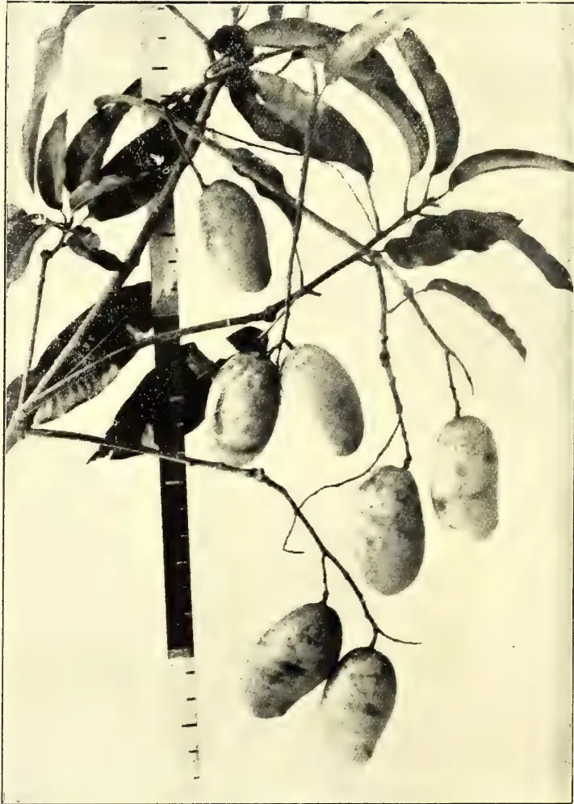
A black and white photograph of a branch with several large, elongated, oval-shaped fruits hanging from it. The fruits are clustered together and have a textured surface. The leaves are long and narrow, typical of a mango tree. A vertical ruler is positioned to the left of the branch, providing a scale for the fruits.Photo by H. F. Macmillan.
"JAFFNA MANGO" IN CEYLON.
(Vide page 135 for Article.)
THE
TROPICAL AGRICULTURIST
AND
MAGAZINE OF THE
CEYLON AGRICULTURAL SOCIETY.
VOL. XXXI.
COLOMBO, 15TH AUGUST, 1908,
No. 2.
Rice Cultivation in Ceylon.
A Sessional Paper (VI. of 1908) has just been published, containing the replies of the Government Agents to an enquiry addressed to them asking for a report on the present condition of rice cultivation in their provinces, with statements of hindrances to it, and recommendations how best to secure its extension.
Their replies are distinctly discouraging to those who hope to see great extensions, and indeed it cannot be wondered at. Ceylon, with its small areas of flat land, poor soil, broadcast sowing, poor weeding or cultivation, inferior grades, absence of crop-rotation, and other disadvantages, to say nothing of any lack of industry of its people, cannot hope to compete against Bengal, Burma, or Indo-China as a rice-exporting country. The most that can be hoped for is that it should grow its own supply, so far as its native (other than immigrant coolie) population is concerned.
There are many districts in which the continued opening of village tanks is recommended for the extension of cultivation, but it must be remembered that the people are rarely willing to grow any rice for sale, and will often leave the land uncultivated for a year or two after a good crop.
Agricultural banks or credit societies, and similar societies for the supply of seed or manure, are probably the most promising direction in which to look. We have preached this doctrine for several years now, and were consequently very glad to hear His Excellency's deliverance on the subject (cf. T.A. last Vol., p. 578) at the Annual Meeting of the Society.
Another feature that comes out strongly is the effect of more remunerative occupation, e.g., on rubber estates, upon paddy cultivation.
Altogether the report is worth study, and we shall probably return to the subject.
It is reported that the Bahia-Kautschuk-Actiengesellschaft has bought over 800,000 acres of land in Bahia, on which the "new" Manihots, Hancornia, &c., are already abundant, and intends to plant it all up with the former.
So far no British Botanic Garden, not even Kew, has been able to obtain any of the new Manihots other than M. dichotoma (of which one hundred are growing on the Experiment Station at Peradeniya), and it is useless for people to apply to the Botanic Gardens for them. In any case we could not supply them till they had seeded freely. In a couple of years' time we shall likely be able, for instance, to supply a little Manihot dichotoma, but only a few thousand seeds, not the large quantities people are already asking for.—ED.
BY DR. PEHR OLSSON-SEFFER.
(Paper read before the first meeting of the Mexican Rubber Planters' Association on October 19, 1907.)
At the present moment, on the date of the birth of the Mexican Rubber Planters' Association, it is opportune to review in brief the development and the present condition of the rubber planting industry.
Universal interest is now manifested in regard to this industry. The rapid increasing demand for rubber, a commodity so closely connected with electricity and many other modern inventions, has called forth the question, whether the world's market can be supplied from the natural sources of wild rubber, which hitherto have been sufficient, or whether cultivation has to be resorted to.
The consensus of opinion is that although there has been a steady growth of the output of the raw rubber, and although the rate of production so far has shown no decline, we are rapidly approaching the narrowing limits of the natural rubber supply.
It is generally known that in Brazil, from where the largest amount of rubber has been obtained, the rubber collectors
have to go further and further inland every year for their supply. With the prevailing reckless method of gathering, the rubber trees are gradually being exterminated. Naturally the cost of collecting is thus increasing, and it is to be observed that the extraordinary high prices have not greatly stimulated the production. This applies not only to the Amazon valley, but more or less to all countries producing wild rubber. Very little has been done, and very little can be done to stop this destruction of the natural rubber forests. The natives cannot be taught to consider the necessity of saving the trees for a coming year. Their sole object is to obtain as large an amount of rubber as possible for the time being.
In some rubber-producing countries steps have been taken towards replanting the natural rubber forests. Most notable is the decree passed by the Government of the Congo Free State on the 5th of January, 1899, in which it is regulated that:—
"In all the forests of the territory rubber trees shall be planted every year to a number not less than 150 for every ton of rubber gathered during the same period. The agents of the State in those forests, where the State has the private owners and concessionaries of all the forests where the State has given it up, whether by decrees of October 30th, 1892, or by the granting of special concessions, are expected to form and keep up these plantations conforming to the conditions specified in the present decree."
Three years later the Congo Government issued a new decree increasing the number of plants to be replanted per ton of rubber collected. The production on the Amazon and the Congo has so far not given any sign of decline, but it is certain that the natural supply has not increased. We have on the other hand instances where a rapid decline in the output is taking place.
In Colombia the export of rubber has been diminishing for the last thirty years, and from Lagos a marked decrease is noticeable for the last decade.
We are thus confronted with the following situation: while the consumption of rubber is increasing at an accelerating rate, the natural supply, although enormous, is not augmenting, in spite of the fact that new rubber-producing plants are discovered and new fields are being exploited.
AUGUST, 1908.]107Saps and Exudations.It seems safe to conclude that the requirements of modern life will not permit the demand for rubber to become diminished. The point is whether the supply will be altogether unequal to this demand. Varying opinions are expressed in this regard. Some maintain that the natural propagation of the rubber tree is sufficient to keep the supply up to its natural limits. There is, however, no evidence at hand to show that such a statement was based on true facts or on a right understanding of the situation. Others hold that the natural sources of wild rubber are rapidly being exhausted. Such an assertion is more logical, but even here we lack sufficient knowledge to be able to form a positively correct opinion. It may be safer to say that the limit of production will soon be reached, if we are not so far already, and if the demand is growing in the same proportion as hitherto, there must come a shortage in the supply.
The prices have been steadily advancing for the last ten years and longer. It is possible that some of the rise in value is due to the general prosperity, which has caused an increase in the value of almost all raw material. But it is not likely that even a financial or industrial panic would very materially influence the rubber market.
Ever since Charles Goodyear's discovery rendered the rubber of practical use to mankind, the tropical forests have been scoured by the natives and by white men searching for rubber producing trees. In Central America the indigenous rubber tree, Castilloa elastica, Cerv., and related species, have been the object of a diligent search and subsequent destructive treatment. The destruction of the wild tree is usually given as the strongest argument in favour of rubber culture. I doubt if this is the raison d'être of rubber cultivation.
Very few business men go into business from fear. Nor is rubber planting a matter of philanthropy. We do not plant rubber because we know that the supply from previous sources will one day become exhausted and humanity needs rubber for industrial purposes. We plant rubber because we have every reason to believe that it is a profitable industry. We plant rubber simply for the sake of profit and not for other reasons. Is then rubber culture after all a profitable industry? There are many who say no, but those who have investigated the matter, and most of those who have invested in rubber, that has been taken care of properly, know for certain that it is not only profitable but very
profitable. It has been claimed that it is impossible to cultivate the rubber tree. There is no necessity to refute such a statement. How it has been able to gain credence is hard to understand. It shows a complete ignorance in regard to agriculture. In the history of human progress, there is not a single instance where domestication of a plant has not been possible. There is, of course, a great difference in different plants, but by employing proper methods we have been able to overcome the greatest difficulties. As regards the rubber trees, there are hardly any plants that are better adapted for cultivation.
The many conflicting statements as to the commercial feasibility of rubber planting have been cleared up now and again by disinterested parties who have devoted much time to the study of this question in all its details. There are still those who are doubtful, either on account of personal failure in the undertaking or because they have entertained preconceived notions upon the question and are not willing to admit that their conclusions are wrong. Observations extended over a somewhat wide field covering most countries where rubber is planted have given me conclusive evidence that rubber, when cultivated right, is not only a possibility but a decided commercial success. Anyone who devotes intelligent attention to this question cannot fail to find that, when he acquires more concrete knowledge about the matter, there are actual results at hand which prove to be indisputable, and which show beyond a shade of doubt that the rubber planting industry is a profitable venture.
The thousands of trees now planted and the hundreds of plantations producing rubber on a commercial scale demonstrate that rubber culture is an industry which has come to stay. Fears are expressed that we will have an over-production of rubber if the planting industry increases at the rate it has done for the last few years. This leads us into the question of the present and the future supply and demand of rubber. The annual output of rubber has been rapidly increasing, and for the last seven years the production and consumption are represented by the following figures:—
| Year. | Production Consumption. | |
|---|---|---|
| Metric tons. | Metric tons. | |
| 1900 | 53,348 | 48,352 |
| 1901 | 52,864 | 51,136 |
| 1902 | 53,877 | 51,110 |
| 1903 | 55,603 | 52,276 |
| 1904 | 61,759 | 59,666 |
| 1905 | 68,879 | 65,083 |
| 1906 | 67,999 | 62,754 |
The visible supply on hand on June 30th, 1905, of 8,869 metric tons was reduced to 5,352 metric tons by June 30th, 1906, though the production of the latter year was 14,651 metric tons greater than that of the former year.
Comparing the first and the last two years, this table shows an increase of 28.3 per cent. in both production and consumption.
Last year's output is valued at about 300,000,000 dollars Mex., and of this amount tropical America yielded about 63 per cent., tropical Africa 34 per cent., and Asia 3 per cent., of which Ceylon plantation rubber to the amount of 150 tons. Mexico's total export of rubber during the same period was valued at $3,342,000 or 3 per cent. of the world's total output.
In 1906, the United States imported from Mexico 16,993 bales rubber, of which about 5,000 represented Castilloa. During the first seven months of the fiscal year 1906-7 the value of rubber exported was $2,761,873.00 U. S. currency, including Guayule. The total value of rubber exported in 1906 was $1,671,000 Gold.
Although Mexico as a rubber-producing country does not yet rank very high, Mexico was the original country where rubber was found by Europeans. The oldest data about rubber come from Mexico. The earliest historical reference to rubber was made in 1525, when an Italian writer speaking of the customs of the Mexican Indians mentions the rubber balls used by them in certain games.
While thus rubber was first discovered in Mexico, the first rubber planting in the world was also made in Mexico, not in Ceylon as is often claimed. The person who first took up the question of planting rubber for commercial purposes was the Mexican statesman, Sr. Matias Romero, a close friend and relative of our present President. When he wrote his paper on rubber culture in the year 1872 there were already several rubber plantations in existence in this Republic. From inquiries in the region where Romero started his own rubber plantation I have found that rubber was planted as early as 1867 in Mexico by Don Jose Maria Chacon at Zanjon Seco, in the district of Soconusco in Chiapas. During the next year plantations were started in Guatemala, and later on in Nicaragua and Honduras. These plantations were small, but even as regards size they were much larger than the first plantations begun in Ceylon or India.
Less than ten years ago American capital was attracted towards rubber
planting in Mexico. As a result of this movement we have to-day approximately 95,000 acres on 118 plantations, entirely or partly devoted to rubber, representing an investment of $60,000,000 Mex.
From data at hand I would consider the world's area of rubber plantations to be 355,500 acres, distributed as follows:—
| Mexico | ... | ... | ... | ... | 95,000 |
| Malay Peninsula | ... | ... | ... | ... | 92,000 |
| Ceylon | ... | ... | ... | ... | 85,000 |
| Africa | ... | ... | ... | ... | 30,000 |
| Central America | ... | ... | ... | ... | 14,000 |
| Java | ... | ... | ... | ... | 10,000 |
| India | ... | ... | ... | ... | 8,200 |
| Brazil | ... | ... | ... | ... | 6,000 |
| Venezuela | ... | ... | ... | ... | 3,400 |
| Ecuador | ... | ... | ... | ... | 3,000 |
| New Guinea | ... | ... | ... | ... | 2,500 |
| Borneo | ... | ... | ... | ... | 2,000 |
| Colombia | ... | ... | ... | ... | 1,800 |
| West Indies | ... | ... | ... | ... | 1,600 |
| Other countries | ... | ... | ... | ... | 1,000 |
As seen from these figures Mexico among other countries has still the lead in regard to area under rubber. The statements published regarding the total area of rubber in Ceylon are highly misleading on account of the fact that rubber is being interplanted between tea and cacao. Thus on many estates there are not more than 75 rubber trees to the acre, but in the estimates each acre is stated to be under rubber. In the statistics the same area thus often appears both under tea and rubber or under cacao and rubber. One of the latest statements was made by Mr. Wright, until recently an assistant at the Botanic Gardens, Ceylon, who estimated the present area under rubber in that island to 130,000 acres. Messrs. Ferguson of Ceylon recently stated (in August this year) that the planted acreage of rubber in Ceylon is 150,000 acres, of which they claim that 116,000 are under rubber alone, and that 52,400 acres of tea and cacao are interplanted with rubber. Data collected by myself in Ceylon in the beginning of the present year show that, taking 250 trees to the acre, the area planted does not exceed 85,500. Another favourite method in the East of making up a large acreage is to count in the area "alienated" for rubber culture. That is to say, if a Company has alienated from the Government 2,000 acres for a rubber plantation, but planted only 50 acres, they will speak of their plantation as a 2,000 acres rubber estate. If the same rule was followed in Mexico our acreage would be nearly 400,000 acres. We have rubber estates owning as much as 20,000 acres, of which it is intended ultimately to plant 50 per cent.
AUGUST, 1908.]109Saps and Exudations.Only a few years ago it was stated in a Government publication that the entire area of land suitable for rubber in the island of Ceylon did not exceed 10,000 acres. That this estimate was incorrect is shown by the actual area now planted. This area increased between the years 1890-1898 at the rate of 50 acres per year, and in the last named year there were about 750 acres planted. It took three years more before the acreage rose to 2,500 acres, but in the last few years it has increased very rapidly. During the last two years the planting has suddenly increased largely in the entire Indo-Malayan region, and it can therefore be hoped that in a few years hence plantation rubber from the East will become of some importance on the world's market.
Only quite recently I had a letter from London, in which it was pointed out that the price of crude rubber was liable to decrease very soon, on account of the large supply due from the "vast rubber plantations" in the East. As seen from the statistics given above the total area is not yet so "vast" as might be expected from the exaggerated statements issued from London headquarters.
With a total area under rubber at the present time of over 355,000 acres, we must naturally expect in six or eight years hence a large supply of plantation rubber. But admitting that the supply of wild rubber would not decrease in that time, while on the other hand the demand would keep on increasing, there is not much to fear from a decline in prices.
The present output of plantation rubber does not exceed 600 tons. If we consider that the yield per acre is 300 lbs., the supply of plantation rubber from the present area planted would twelve years hence be nearly 55,000 tons per annum. During the last dozen years the increase of the consumption of rubber has been on an average 8 per cent. per annum, and this average is increasing rather than decreasing. If we carry on this increase for another dozen years, we find that twelve years hence the need for rubber would be close to 175,000 tons. We have no reason to suppose that the supply of wild rubber twelve years hence would be greater than to-day. On the contrary, everything tends to show that the production has reached its limit, and will decrease instead of augment in the future. The present area planted would thus not nearly supply the balance of the consumption, provided the output of wild rubber twelve years hence was still 65,000 tons.
We need not think that the planting of rubber has come to a standstill. Much more land will be planted under this crop all over the Tropics, but very large plantations are needed to supply the increased demand. It is therefore evident that we have not much to fear from over-production for many years to come.
It is not many years since rubber planting was looked upon by the ordinary investor as a very hazardous undertaking, and those who were spending money on rubber planting were considered visionaries. At the present time many rubber plantations are coming into bearing, and are for the first time demonstrating the truth of the ideas of the pioneers. Plantations in Ceylon have already paid as much as 40-50 per cent. in annual dividends. Some Mexican plantations have been able to pay as much as 15 per cent. on the invested capital from rubber obtained on the estate.
The ever-increasing areas under rubber indicate that this industry is able to draw capital, and this is perhaps the best proof that its prospects are good, as capital is a fairly correct index regarding such matters. The fact that rubber planting has gained much notoriety through capital being obtained for the ostensible purpose of exploiting rubber plantations, but in reality has been diverted to the private use of dishonest promoters is not proof against the possibility of cultivating rubber, or against the profitability of rubber culture. The public has become suspicious towards all rubber planting companies, and many legitimate concerns have suffered.
If we investigate the causes which have produced some of the most disastrous and sensational failures of rubber plantations, we will find that in every case such a Company was not promoted as a bona fide and legitimate enterprise for the purpose of building up a successful plantation, but that the whole scheme was intended to benefit the promoters. In some cases the home office expenses have exhausted the entire capital, and little or nothing has been left for the development of the plantation. Some of these plantations have been started on soil which is in every way unsuitable for the cultivation of rubber. On others the development work has been greatly overpaid to the benefit of one or another interested person. Very often the management has lacked all the experience of tropical agriculture, and some of the plantations do not show a result corresponding to the outlay.
Gums, Resins,110[AUGUST, 1908.The first requirement is the right kind of soil and climate, and at the same time an honest and competent administration. If these conditions are fulfilled, rubber planting promises to become the most profitable tropical industry.
The commercial exploitation of various rubber-producing plants was naturally first taken up by the nations which owned tropical colonies or tropical lands. It was in these same countries the profitability and possibility of rubber culture were first realized. There was naturally at first a certain hesitation, but of late years an increasing faith in rubber is evident from the fact that more and more capital is being diverted to this new tropical industry.
There are few plants that are better adapted to cultivation than the principal rubber-producing trees. It has now been fully demonstrated that rubber can be grown profitably on a commercial scale, and that plantation rubber can be produced cheaper and better than the product of the wild tree. Many mistakes are yet made and comparatively little knowledge exists regarding cultural methods, but with the increased attention now being paid to rubber cultivation it can be hoped that present defects and shortcomings will be corrected in a not too distant future.
Rubber planters in Mexico and Central America have been experimenting regarding cultural methods for a good many years, and it is only of late definite results have been forthcoming. In many special questions no ultimate conclusions have yet been arrived at, and we cannot say that we are absolutely certain as to the best methods in any particular stage of the cultivation or preparation of Castilloa rubber.
In regard to soil requirements Castilloa needs an open porous soil, well drained, but with sufficient underground water supply. The chemical consistency of the soil or its relative richness is of little importance. Stagnant water or very acid soil is detrimental, and thin soil with hard impermeable subsoil will grow Castilloa for a few years, but when the tree reaches 6 or 7 years of age, and the roots penetrate deeper and reach water, growth ceases and the tree is liable to die back.
The question of shade in Castilloa culture has been much debated. In Mexico there are still three different methods in vogue. The first that was used in the early days of rubber culture was to plant in shade. It is based on an erroneous observation of nature. Castilloa was found in the forests, and as it is a comparatively low tree, it
was supposed that it required shade for its successful growth. It was also found that, if the seeds were sown in the open without any shade, the young seedlings often failed, or if they survived the first dry season they grew very slowly. On the other hand seeds germinated very freely when sown in shade, and the seedlings grew rapidly, especially in height. The observant planter soon discovered, however, that the first year's growth was not continued, and as years went by he found that shade-grown Castilloa developed into fishing rods without any increment in trunk growth. Moreover, the trees were sickly, often attacked by root fungi, and generally very liable to disease. There are still some planters who persist in keeping shade, enjoying the sight of 40-50 feet high whip-like trees, 6-7 years old, but which never will reach a "tapable" size.
The second system as regards shading is to plant in semi-shade, that is, to leave a few high trees when clearing, expecting these to give the rubber trees a certain amount of shelter in the dry season, when the Castilloa has shed its leaves and is exposed to the scorching sun. This method has been employed with a certain amount of success on some plantations, especially where the soil is liable to become hard and baked if exposed to the sun. It seems the most natural, as Castilloa in its wild state always occurs in the vicinity of other trees from which it receives shelter and shade. To establish such conditions it is not, however, necessary to leave jungle trees as shade, but by planting close the commensalism needed will be obtained. This can easily be overdone, and the planter has to exert considerable judgment in regard to the distance at which he should plant. In localities where the soil is very moist or drainage imperfect any shade whatsoever may prove dangerous to the health of the rubber, and it certainly will greatly retard the proper development of the stand.
The third method is to plant in the open. If the seeds are sown at an unsuitable time, that is, if the soil is not moist or if no rain follows for weeks, complete failure in germinating may result. If the district has a distinct dry season, the seedlings will suffer greatly during that time, in case they have not had a good growth before the rains were over. Otherwise there are no objections to planting in the open, and if this has been done fairly close, so that the young plants partly shade each other, they have under these conditions the best opportunities for a rapid development.
AUGUST, 1908.]111Saps and Exudations.Another important question in regard to rubber planting is that of distance between the trees. Considerable difference of opinion exists in this regard, and as is the case with Hevea planters, distances varying from feet to feet have their advocates among planters of Castilloa.
I have concluded from experiments conducted with a view towards ascertaining the relation of distance between the trees, and the weekly, monthly and annual increment of trunk growth, that as soon as the roots of the trees touch and become intermatted the growth of the trees is impaired. But on the other hand, we know that if the Castilloa trees are planted very far apart their growth is stunted, and, when the trees become older, their bark is exposed to the heat of the sun and to evaporation caused by dry winds passing through the plantation. The result of this is that the bark cracks, the latex vessels shrivel, and no latex can be obtained. We then say that the trees are "sunburned."
The question then arises: at what distance are we to plant? I decidedly condemn too close planting, as it leads to a disproportionately whip-like growth of the trunk. I would also emphatically warn against too open planting. I think the error of the latter practice is conclusively proven by the following instance that has come under my observation. Two years ago I visited a large Castilloa plantation on which the trees had been planted feet apart. The trees were five years old, and investigation disclosed the fact that a great percentage of the trees, especially those which had been growing on dry knolls or exposed places, had a bark very rough, scaly and full of longitudinal fissures. The inner bark, in which the latex vessels are situated, was very dry, and the latex in the ducts had coagulated. In many places on the bark exudation of latex had taken place, and big drops or tears of latex had formed scrap rubber. The only way in which this condition of the trees could be remedied, was to allow the weeds to grow up and underbush to develop. This vegetation shades the trunk, and in due time the bark is formed and the old is thrown off. This process takes at least two years, and is successful only in case the cambium has not been injured.
In deciding about the distance at which to plant we have to take the following two primary factors into consideration. The trees must not stand so close as to impede the growth of each other, and they must not be far enough apart to leave the trunks exposed to sun and wind.
From the above we obtain an indication pointing towards the method we ought to follow, i.e., close planting and subsequent gradual thinning, according to the requirements of the trees. Besides fulfilling some of the conditions leading to a successful development of the rubber stand, the method of close planting has other advantages. It permits of a thorough system of selection which is not possible under the method of open planting in permanent situations. From a financial point of view close planting is decidedly superior to any other method. It has been proved that by proper management the intermediate rubber trees, which are not supposed to remain permanently in the stand, can be made to produce a sufficient quantity of rubber to render the system very profitable, before the permanent trees can be considered productive. By close planting the danger of failures in the stand is reduced almost to nil, and this is important to the planter, as filling up failures in a young forest is both expensive and precarious.
There is always a temptation to leave too many trees, in order to provide for a big side crop, but this should naturally be resisted. A heavy thinning comes to the assistance of the best specimens of growth, and it must on no account be omitted or postponed. It is extremely difficult to lay down any definite rules as to thinning operations, but it has been conclusively proved that the general rules applied in scientific forestry in regard to silvicultural operations are fully applicable to the cultivated rubber trees. Rubber planting is nothing else than silviculture, and we should take our lessons from ordinary common sense, and from results obtained from the extensive experience of the forest planter, naturally with due attention paid to the particular conditions obtained in the Tropics and the peculiar nature of the rubber tree.
The method of propagating Castilloa first employed was to sow the seeds in nurseries, and when the seedlings were four to six months old they were transplanted. Very often, however, transplanting was not done before a year after sowing. The plants were then from 5 to 12 feet high. The seedlings were cut five or six inches below the surface, and topped, leaving a pole some three feet long. Tied into bundles these poles were carried to the field. With a pointed stake, holes were made in the ground about one foot deep, and the pole placed in the hole and the soil pressed close to the stem. When this planting was done carefully, and if rain fell within the next two or three days,
Gums, Resins,112[AUGUST, 1908.not more than 3 or 4 % of failures occurred. In places where the soil is somewhat sandy the failures were more frequent.
Later experience has proved that the cheapest and surest method is to plant the seeds at stake. Nearly a year's growth is thus gained, and it does away with the expensive replanting, where failures occur under the transplanting method. The seeds are planted in small hills, about seven seeds in each hill, three inches between the seeds. The hills are at a distance of about seven feet in rows twelve feet apart.
In planting in this manner we allow for a high percentage of failures in germination; we can give ants, lizards and field rats their due amount and we still have plants in abundance. This method has now been practised for several years with success. There are no complete failures in any hills, except where planting has been done in ground which is too acid. In such places we may have to replant in small patches after proper drainage has been prepared for, and for this purpose we use excess plants growing in the neighbourhood. During the first few months seedlings backward, misshaped, or where crowding is observed, should be thinned at the time of each weeding. Generally at least 50 % of all the seedlings should be cut out during the first six months. This thinning should be continued during subsequent years until at the end of the six years from sowing. There are approximately 800 trees to the acre. The best 400 trees are to remain permanently, and are not touched before they have reached 26 or 28 inches in circumference at three feet from the ground. The intermediate trees are tapped, when six years old, very heavily, that is, as much latex as possible is extracted. A few weeks later the trees are inspected. Those that have suffered from the tapping should be marked and doomed. If they still yield latex they are cut up with numerous incisions, and a few days afterwards the scrap is collected and the trees felled. Those trees that promise to recuperate should be left untouched for four months, when they are again tapped in the regular way. After a second inspection they should be killed. Exceptional trees which do not crowd upon the permanent trees may be left to the following or seventh year, when they are tapped with an ultimate view to their destruction. At the end of the seventh year we have 400 trees to the acre.
A most important item in the formation of a plantation is an efficient drainage. In
this work every fall of the ground must be taken advantage of, and in many cases much may be done by straightening and clearing existing water courses.
The question of draining for rubber has been overlooked in the whole of Mexico. Most planters claim that it is sufficient to have what is called "a good natural drainage." This is a mistake. The Eastern planter has fully realized this, and even on very sloping land drains are made before the rubber is planted. I do not remember having seen a single rubber plantation in the East, where this was not done.
The object of draining is not only to provide an outlet for the surface water, but to drain the ground down to a certain depth.
In commencing the work the position of the main outlets must first be determined. The main drains are next opened according to the fall of the ground, and minor conduits are formed up and down the face of the slope. It is impossible to lay down definite rules as to the exact method of making the drains. The fault of overdraining must be guarded against as well as its opposite extreme.
Much has been written and said about the disease of rubber trees. We have been fortunate enough in Mexico not to be bothered with any serious outbreak, but it is necessary that we be very careful and keep a constant watch over any disease that may appear. In this respect the Planters' Association has a great mission by undertaking systematic and organized inquiries. We know perfectly well that every cultivated plant has its enemies and it would be wrong to assume, that the rubber tree would be the sole exception to this rule. As a matter of fact, we know that the rubber tree is attacked by many various enemies.
Perpetual immunity from disease cannot be expected, and every possible step to prevent the occurrence of an epidemic must be observed.
The larger the area planted with one particular crop, the greater the danger of an outbreak. A single crop system is for this reason most unsuitable and even disastrous.
Where no natural enemies exist, the changed conditions caused by a large acreage being put under a single product call forth new diseases.
Special measures have to be taken to meet such an emergency. Where vast continuous areas have been planted with one product, it is imperative that protec-
AUGUST, 1908.]113Saps and Exudations.tive belts either of jungle or of other plants be left to form boundaries. In the Federated Malay States the Director of Agriculture has prevailed upon the Government to declare a certain area of forest as reserve, and this divides the entire country into two main districts. The idea is that if an epidemic appears in one district there is every possibility of checking its spreading into the other.
A similar policy is advisable on individual estates. A belt or a strip of forest 30—50 meters wide is not only an effective means of preventing of diseases from spreading, but is also an excellant fire-break.
In regard to diseases of the rubber tree we must draw lessons from the serious damage which has been done in other countries to other agricultural industries. If we take steps and keep any pest appearing under control, we need have no fear.
I mentioned the word fire. As you all know fire is the rubber planter's worst enemy. We have had the sad experience in Mexico of large areas of planted rubber being burned in the dry season. In some cases this has been an inevitable misfortune, but in other cases it would have been easy to prevent the fire.
One of the most important matters in this connection is the laying out of the plantation. It is not practical to plant the entire area of say thousands of acres in one continuous block. This for many reasons. Roads are needed for communication into the plantation. It is further a great advantage to have the entire plantation laid off in symmetrical blocks for the purpose of controlling the tapping and other work on the plantation, as well as the number of trees.
Several rubber plantations in various parts of this country were laid out eight and nine years ago on the plan of square blocks each containing a certain number of trees. Such squares are surrounded by roads of more or less width. If these roads are kept clean, as they should be, they constitute effective firebreaks, and it is possible by means of these to check a fire, and limit same to a certain area, instead of having it swept over the whole plantation.
Every now and then we hear of some writer who claims that some Mexican rubber planters have expressed their doubt as to the wisdom of planting Castilloa, when Hevea shows such a decided success in the East. Let me here draw attention to the fact that, even if we could successfully grow Hevea here in Mexico, we could not possibly make it
a paying business. Why, you may ask. The nature of the latex-bearing ducts in Hevea is such, that at each tapping only a very small amount of latex exudes. For this reason a system of multiple tapping is employed for this tree. Castilloa, on the other hand, gives much more latex at each individual tapping, and we know that multiple tapping such as employed on Hevea is of no avail on our trees.
With the price of our labour standing close to $1 Mex. a day, and as long as it is scarce at that price, it would be impossible to tap our rubber trees every second day, receiving only about one-tenth of an ounce per tapping. In Java, Federated Malay States and Ceylon they pay about 20—30 cts. Mex. to their labourers, and this explains why their rubber industry is profitable.
We need not by any means feel discouraged over Castilloa planting. Do it right, and it will pay you as much as almost any other tropical crop. We do not need to trouble ourselves about the many other rubber-producing plants which are cultivated elsewhere.
Although many points have been advanced for the profitableness of one or another rubber plant in preference to others, there can be no doubt that the number of rubber plants which can be grown with commercial success is very small.
Of the many different plants, which contain rubber, there is one class that is wholly unsuitable for cultivation. We refer to the climbers or lianes. These plants furnish a great part of the crude rubber now available in the market. For instance, all the rubber or gutta-percha collected in the Philippines comes from various climbing plants. Similarly most of the African rubber hails from lianes. In collecting, these have to be cut down, and consequently furnish only one crop. When we consider that it takes several years for one of these plants to grow up to its full size, and when we further remember that the climbers require large trees for support, it is evident that cultivation of climbers for commercial purposes cannot be a success.
Other rubber-containing plants yield rubber in such small quantities, that cultivation would not pay, and others again do not yield before they have reached an age of over 20 years, in which case the returns would not offer inducement enough for starting plantations.
If we eliminate all the many different rubber plants, which for one reason or another are not suitable for cultivation,
15 Gums, Resins,114[AUGUST, 1908.we have four or perhaps five kinds to take into consideration. Besides the two principal kinds of Para rubber and Castilloa, we have the Ceara rubber (Manihot Glaziovii, Muell. Arg.) which originally was found wild in certain mountain districts in Brazil, where it is occasionally gathered by the natives. This tree was first considered very suitable for cultivation, and more than twenty years ago it was largely planted in Ceylon and also in India, but at the present day it is hardly considered worth collecting.
The Assam rubber (Ficus elastica) of East India has been producing rubber for a long time, but it is not likely to become planted very widely, as even in its native country it does not produce rubber profitably before it has reached rather advanced age. Both in Java and the Malay Peninsula I found that both private planters and Government experts were discouraging the planting of this tree. It is, however, the most long-lived of all the rubber trees, and would probably go on improving for a century. The main trouble with the Ficus is in the tapping, which is very difficult.
The so-called Lagos rubber (Funtumia elastica) which grows wild on the west coast of Africa is being planted in its native country, and has been tried experimentally in many Botanical Gardens throughout the Tropics, but it is not considered very good.
In Colombia and in certain parts of Central America there occurs in the high mountains a rubber tree which produces a very good kind of rubber. This is Sapium tolimense, which may yet prove to be suitable for our tropical highlands up to an elevation of 7,000 feet. To my knowledge no experiments with this plant have yet been done in Mexico, mainly on account of the difficulty of obtaining true seeds. Over a year ago I received and planted seeds, which were said to be those of Sapium tolimense, but when the plant appeared, I found it to be another species of Sapium which does not produce rubber.
The Hancornia speciosa of Brazil, or the Mangabeira rubber is a very slow-growing tree, rather difficult to cultivate, and I do not think it would be a success in Mexico.
As we have to leave out the Hevea on account of the cost in collecting the rubber, we find ourselves confined to the rubber tree of Mexico growing at our very doors in the Tropics.
Taken as an ordinary cultivated tree, the Castilloa is as easy a plant to cultivate as any. But we must not for a moment believe, as many company promoters like to state, that all we have to do is to plant the seeds in the ground and wait for the crop to appear. We have to wait, and the waiting period is, as you all know, quite long and costly, but during this time we have to keep busy looking after our trees and their development. As in regard to other plants Castilloa re-acts to good treatment. We have so far learnt quite a deal about the methods of cultivation, and our knowledge of rubber culture to-day is quite different from that of five years ago. But we have still to find out many things in order to get the very best results. To reach this end we need co-operation between the planters, and I trust the new Rubber Planters' Association of Mexico will be able to establish a system of co-operative experiments in different parts of the country under the general direction of its Council.
If we are to progress and keep our own, it is necessary that we all co-operate, and we must remember that the valuable man in any business is the man who can and will co-operate with other men. It has been fitly said that "the foreman who opposes the introduction of a new man into an institution, and fights every innovation which he himself does not suggest, is doomed to a gradual and creeping defeat." "Men succeed only as they utilize the services and ideas of other men" says Elbert Hubbard. Therefore, let us co-operate.
In this and in many other regards the Planters' Association has a great mission, and we hope that a few years hence, when the result of the work of this Association is beginning to show what the Mexican rubber industry shall be, not a thing to be laughed at, but one of the leading agricultural industries of this country, and one which will have the lead in competition with other countries.—Year Book of the Rubber Planters' Association of Mexico, 1907-1908.
AUGUST, 1908.]115Although the camphor oil market, under the influence of the declining camphor-quotations, has also during the past six months shown a very feeble imprint, the prices of crude oil have fallen but little below the level of October, 1907. From certain delays in the shipments it would appear that the Japanese have undertaken larger contracts for forward delivery than they were finally able to execute, and to this fact it must be attributed that but very rarely firm offers could be obtained. On the other hand, very little desire was manifested to buy, and it was a matter of satisfaction to us to find that the camphor oil and safrol business is becoming more and more concentrated in our hands. For the rest, the contract between the Monopoly Board and the London firm of Samuel, Samuel & Co. expires at the end of March, and the Japanese now propose to take the sale in their own hands. It is stated that for the present it is not intended to make any alteration in the sale of camphor oil.
Of light and heavy camphor oil any required quantity can be supplied promptly, and we shall be pleased to submit special quotations to firms interested in larger parcels. Thanks to our extensive production, we are generally in a position, in the case of light oil, to meet the wishes also with regard to specific gravity, of those who require larger quantities for definite purposes, and in such cases shall be happy to receive enquiries.
According to an unnamed source in the Chemiker Zeitung, the shipments from Japan in 1906 amounted to
Camphor 2,656,581 kin (1596.6 tons),
value 3,632,785 yen.
Camphor oil 769,279 kin (462.3 tons),
value 122,502 yen.
From the same paper we learn the following with regard to the causes which have led to the collapse in the prices which occurred about the middle of last year. It says that, according to a communication which reached a New York periodical from a Formosan employé, the fall in the prices originated in an important change in the sale of camphor to the United States. Up to that time the consignees of the Monopoly Bureau, Messrs. Samuel, Samuel & Co., had supplied the camphor exclusively to the American refiners, from whom the
celluloid-manufacturers were compelled to buy. The Committee sent in 1906 by the Monopoly Bureau to Europe and America for the study of the camphor market, reported that owing to this indirect trade, the celluloid-industry, the principal consumer of camphor, was forced by the high prices demanded by the refiners—prices which were twice as high as the selling prices of Samuel, Samuel & Co.—either to fall upon substitutes, or to employ artificial camphor. Thereupon the Japanese Government made a considerable reduction in the quantities to be supplied to the refiners, and sold direct to the celluloid-manufacturers. This fact, and also the increased production in South China, led to a fall in the prices which in New York amounted to 30 %.
The same report states, with reference to the market-position of synthetic camphor that, according to the makers, it is not suitable for all purposes, but only for articles of inferior quality. Its price regulated itself according to that of natural camphor, and was usually 10 to 15 cents per lb. lower. The consumers, however, were not satisfied with this and desired a greater difference, and especially that the price of the synthetic product should be placed on a footing independent of that of Japanese camphor, and no longer move up and down with the latter.
Not quite in harmony with the foregoing report is the official communication which the Editor of the Chemist and Druggist has received from the Japanese Monopoly Bureau. In this, the continued difficulties in supplying the world's market with camphor are pointed out, and it is stated that, when some of the savage tribes in Formosa have been subdued, the production here is expected to increase. The above communication further refers to the increased supplies from South China, with the remark that the merchants there, after the drop in the prices since June, 1907, would hardly find the business pay; but it might be taken for granted that the production in South China would soon come to an end, especially in view of the irregular manner in which it is carried on. Finally the report denies the statement that the contract with Samuel, Samuel & Co. would cease to be in force at the end of 1907. We find in a subsequent notice in the same Journal, as already mentioned by us above, that the contract expired on 31st March of the present year.
Oils and Fats.116[AUGUST, 1903.According to the returns of the Camphor Office at Nagasaki which comprises the districts Nagasaki and Saga, the annual yield from these districts amounts to about 160,000 kin (=100,000 kilos) and has consequently a capacity only inferior to that of the Kagoshima department which produces the largest amount of camphor in Old Japan. The production of Nagasaki is placed on the market by the intermediary of the Kobe office. The intention is to obtain camphor also from the leaves, and also to carry on the work, instead of by the steam-distillation method, by a "more simple" process, of which, however, nothing further is said.
In connection with this proposal to make use of also the leaves of the tree for the production of camphor, we communicate a criticism by Cayla, of a work on the camphor-production from leaves and young branches, which appeared in the Agricultural News of 13th July, 1907. It is said that the statement made in the article referred to, that the camphor made from the leaves and from the wood is of equal quality, is, according to earlier experiments by Hilgard in California, not correct; but in this case it may have been a question of two different varieties. In the data given of the yields obtained, viz., 120 lbs. from 12½ acres, Cayla misses an exact calculation which would show whether the process is remunerative. According to experience obtained elsewhere, the picking of the leaves requires a good deal of expensive labour; moreover, the removal of the foliage has a very unfavourable influence on the condition of the trees in the next following year.
An Englishman residing in Formosa communicates in Chambers' Journal the impressions gained by him on this island, and in the course of his description he discusses the camphor-production there. The camphor oil distilled on the spot in the forests is shipped to Japan for further treatment, whilst the crude camphor is worked up at Taipoh (Tamsui) into the quality brand A, whose value on foreign markets is £10 14s. per picul. The annual profit to the Japanese Treasury amounts to from £300,000 to £400,000. The camphor-labourers, whose life and limb are in constant peril, receive £3 per picul. The narrator states that the subjection of the savages is progressing, and that the complete subjugation of the island is only a question of time.
With regard to the camphor-industry in the South of China, we learn from a Japanese source that, besides in the province Fo-kien, camphor is also ob-
tained in the adjacent provinces of Kwang-si, Kwang-tung, Chi-kian Kiang-si, and Sze-chwang.
The exports from Foochow in the first half-year of 1907 amounted to 1,350,000 kin (about 810 tons). According to a report from the British Commercial Attaché in China, Sir Alexander Hosie, there are in Foochow seventeen Chinese and several Japanese refiners in full operation, where the natural crude camphor oil produced in the interior and put up in old petroleum tins is worked up into camphor. In view of the primitive installations described by Sir Alexander, it is not surprising to hear that for working out 50 % of camphor, it is necessary to repeat the distillation 16 to 17 times. With regard to the production, Sir Alexander makes the following statements:—
The total export from China altogether was in 1906, 17,652 cwts. value £215,734; in 1905, 6,384 cwts., value £54,732.
For 1907, the Japanese source mentions a total export of 4,000,000 kin (in round figures 2,400 tons). The export-figures of Foochow have been communicated by us in our last Report; we add that camphor oil was first of all exported via Foochow in the year 1903, the figures being since then:—
| 1903 | ... | 624 | cwts., | value | £ 993 |
| 1904 | ... | 744 | " | " | 1,380 |
| 1905 | ... | 349 | " | " | 600 |
| 1906 | ... | 3,796 | " | " | 8,344 |
Of the camphor-production of the province Kwang-si, 914 cwts. were shipped via Woochow to Hong-Kong. With regard to the future of the Chinese camphor-industry, the British author holds the same pessimistic opinion as the two Foochow consuls. In view of the fluctuations of the camphor-market, the British merchants in Foochow have preferred not to participate in this business, which is mainly controlled by Hongkong parsees, who tranship the camphor to India.
We have again before us a number of communications dealing with experiments in the production of camphor outside the present Japano-Chinese producing districts. For example, S. Nakamura, up to now "agent" of the aforesaid camphor-office at Nagasaki, has founded a company for the utilisation of the camphor-plantations in Kyushu, the production of which is to be sold to the Japanese treasury for a suitable indemnity.
As camphor in Old Japan is now for many years an article of monopoly, the above report, in its present form, is not quite clear.
AUGUST, 1908.]117Oils and Fats.According to reports from Ceylon, the cultivation of camphor trees now extends over an area of 900 acres, and if there had not been a scarcity of seedlings, the area under cultivation would be larger.
The work by Nock (mentioned on page 25 of our last Report), on the propagation of camphor-trees, has now been published in The Circulars and Agricultural Journal of the Royal Botanic Gardens, Ceylon, and gives exact details on the various methods recommended for the propagation.
With regard to the experiments in the cultivation of camphor in the South of France and the French Possessions, a good deal of information is available. In these experiments, which were apparently undertaken both officially and privately, the question was whether the trees produce in their new surroundings a commercially important quantity of camphor. The first trials, made in the experimental garden at Algiers and elsewhere in Algeria, had at first a totally negative result. In 1895, Trabut succeeded in obtaining from the leaves of young camphor trees sown by himself, a yield of 38g. from 6.6 lb., equal to 1.27 per cent., and Battandier was recently able to produce camphor in a yield of 1.05 to 1.40 per cent. from leaves and young branches of trees which Trabut had planted in 1895. Tarbouriech had for his experiments only available the single tree, 15 years old, of the botanical garden at Montpellier, which had a very strong growth, and which put forth long branches year by year. But from the leaves of this tree only 0.65 per cent. camphor could be isolated. Trabut attributes this unsatisfactory result to the fact that the tree is placed in a hot house, owing to which the sap in the tree has ceased to flow in consequence of the smaller quantity of air and light admitted. According to Tarbouriech, the camphor-question is worthy of full attention from official quarters. The last-named investigator explains the first unsuccessful attempts, in quoting the work of Trabut and Battandier, in this way that at that time a camphorless variety, Camphora inuncta, Hardy, had been used for the studies.
From a compilation by Cayla on the same subject, we learn that Beille at Bordeaux also obtained camphor from the leaves and young branches of a tree grown in the botanical garden of that town, but here no details are given of the yield. From trees grown by grafting twigs of the genuine camphor-tree on Camphora inuncta, the camphorless species, Trabut obtained the same good
yield as from the tree with genuine roots. The fluctuations observed in the yields are not due to climatic influences, but are explained by differences in the individual species, and possibly also in the individual trees. Cayla discusses especially in detail the researches of Crévost and Lan with regard to the occurrence of several camphor-producing varieties in Tonquin. From the extraordinary results obtained by these scientists it would appear that the true camphor-tree, Cinnamomum Camphora, is not found among them. Lan mentions trees whose leaf-stalks acquire a red colour when kept, and others whose stalks remain green, and he considers the two as different species. This difference would show itself by the fact that leaves and branches of the red-stalked trees yield camphor, those of the green-stalked trees oil. A further difference, according to Lan, shows itself in the odour of the fresh leaves, and in their appearance after drying; the green-stalked leaves, when rubbed, produced a distinct odour of rancid oil, and when dry had a characteristic greasy-oily appearance, whilst the red-stalked leaves had a camphor-odour, and a dull appearance after drying. As neither blossoms nor fruit of either species were available, and an exact identification was therefore impossible, Lan concluded from the nervature of the two species allied to the cinnamon tree, Cinnamomum Zeylanicum, Breyne, of which the roots contain camphor, and the leaves camphor oil, as was shown by Kurz,—a view which is perhaps supported by the presence of the above-named varieties in the midst of strongly growing cinnamon-shrubs. A third camphor-producing tree also found in Tonquin, Lan looked upon as either Cinnamomum Camphora, or C. Parthenoxylon, Meissn. According to Cayla it is for practical purposes important, that the camphor-trees, as Crévost noticed, do not form continuous forests, but are only found in the neighbourhood of pagodas. This situation would have the effect of protecting the old trees, whilst the new trees further out were felled and their shoots destroyed by bush-fires. In the cultivation of the camphor-trees for which the preliminary conditions are unquestionably better than in Formosa, the most important point will be to protect them from these bush-fires. A number of colonists have already taken up the utilisation of the trees, and one of them has already obtained from the leaves and branches of the red-stalk variety a brownish oil which, then sold in Hongkong, fetched about 213 francs per 100 kilos. Cayla concludes that, after what has become known up to the
Oils and Fats.118[AUGUST, 1908.present, the prospects of the camphor-cultivation in Tonquin are not unfavourable.
The prospects of the borneol-yielding composite Blumea balsamifera, which is also found in Indo-China, and which is recommended from various quarters for the production of camphor, are, however, not considered so favourable. We refer more fully to this subject under Borneol.
The German Commissioner of Forests, Eckert, reports on the experiments in the cultivation of camphor in the various stations of German East Africa, that the plants grown from seed, and placed at distances of 2 by 2 metres, have throughout taken on well. The height of the plants now fluctuates between 20 in. and 8 feet. For previous and intermediate cultivation it is recommended to sow maize.
An article by Cayla on the production and use of camphor oil gives no information which has not already become known from time to time, and for this reason we only refer to it here for the sake of completeness.
In a fraction obtained from camphor oil, which had the following constants: b. p. 175.5 to 177° (763 mm. press.) 0.8470, , 1.47533, the high rotation gave rise to the suspicion that in addition to the dipentene which Wallach had already discovered in the oil a considerable time ago, there might also be present not inconsiderable quantities of d-limonene.
From the tetrabromide, obtained by brominating, abundant quantities of pure dipentene tetrabromide, m.p. 124°, could readily be isolated, whilst the production of limonene tetrabromide in the
pure state was accompanied by difficulties, although a considerable enrichment of this product could be attained by fractional crystallisation. For example, a mixture of the two tetrabromides showed a rotation of about +12° in chloroform solution.
The undoubted proof of the presence of d-limonene in addition to dipentene was obtained by us as follows:—
With due regard to the fact that B-limonene nitrosochloride is more difficultly soluble in chloroform than the a-compound and the two dipentene compounds, and that the nitrolpiperidides which can be formed therefrom show different solubilities in petroleum ether, the nitrosochloride, which was formed from the fraction only in a small yield, was shaken for a short time at ordinary temperature with double the quantity of chloroform, and the portion which had not entered into solution was collected. The chloroform solution of this substance melting at 100 to 101°, proved to be strongly dextrorotatory. The portion of the nitrolpiperide obtained by conversion with piperidine, which first made its appearance from dilute alcohol, was treated with cold petroleum ether. The portion which had not dissolved consisted chiefly of dipentene nitrolpiperide, small needles of the melting point 150 to 152°; from the solution B-limonene nitrolpiperide crystallised in coarse crystals of the m.p. 110 to 111°, the solution of which in chloroform was laevorotatory.
To the numerous constituents detected in camphor oil must therefore still be added d-limonene, which represented about one-third of the examined fraction.—Semi-Annual Report of Schimmel & Co., April, 1908.
AUGUST, 1908.]119Oils and Fats.PURIFICATION OF COCONUT OIL.Coconut oil, as it is expressed from sun or grill-dried copra, always contains a quantity of impurities—organic colouring matter, albuminoid bodies and a certain characteristic odour, all of which are objectionable for particular purposes for which the oil is otherwise well suited. While it is entirely possible to produce a pure oil directly from the nuts if special precaution in curing them is taken, the demand for highly refined oil does not seem to warrant the introduction of modern mechanical methods of desiccation at the present time, hence the numerous patents which are taken out from time to time and the frequent notices in the literature of new or improved processes for the production of pure coconut oil, refer to some subsequent chemical treatment of the commercially expressed oil itself. Clarification by filtration, subsidence or heating with or without the addition of coagulants is simple and economical of application, and, as generally practised, removes all of the suspended foreign matter and most of the soluble impurities, producing a perfectly clear, light, amber oil of sufficient purity for soap stock, but it falls short of being completely free from odour and colour. Therefore, further refining constituents, the only known means of producing an odourless and colourless product suitable for alimental or cosmetic purposes. The removal of the last traces of odour and colour from coconut oil presents many difficulties in the way of subsequent clarification and risk of loss of oil, and the methods of procedure are necessarily limited to the use of such chemical reagents as are harmless or are easily removed. In general, refining processes may be conveniently divided into (1) acid and (2) alkaline treatments; the former has not proved applicable for the production of oils for edible, cosmetic or lubricating purposes, because of the poisonous nature and otherwise harmful action of mineral acids. The alkaline process makes use of the hydrates or carbonates of the fixed alkalies, ammonia, caustic lime or magnesia, with or without the aid of heat. The efficiency of an alkaline treatment depends upon incomplete saponification, whereby the free, volatile, fatty acids, which are responsible to a large measure for the characteristic odour of coconut oil, are first neutralized and precipitated as a salt of whichever alkali is employed. If the alkali be added in excess of the amount necessary to neutralize the free acids, and the oil is steamed or otherwise heated, then the neutral glycerides—that
is, the oil itself—suffers partial decomposition and goes to augment the amount of soaps formed. Therefore, unless any alkaline treatment of a vegetable oil is carefully regulated, both as regards the amount of alkali used and the temperature employed, low yields of purified oil are obtained. All of the residues or “foots” go to form soap stock, hence the advisability is apparent of employing this process in conjunction with a market for the by-product. The main points to note in connection with refining by means of alkalies are, first, the minimum quantity of alkali necessary to effect the purification, and, second, the right concentration of caustic lye which is unfavourable to the formation of emulsions. The minimum quantity of alkali can be determined accurately by testing the acidity of a small sample of the oil to be refined, or by the cut and dried methods of practical experience.
Ordinary commercial grades of coconut oil collected on the Manila market contain from 1 to 10 per cent. of free fatty acids, calculated as oleic acid, and these percentages require approximately 0.15 to 1.5 parts, respectively, of caustic soda per 100 parts of oil. The caustic soda may be added to the oil either in the solid state with subsequent addition of water, or better, in the form of a caustic liquor previously prepared. The stronger the caustic liquor used the less the tendency to emulsion formation and the more rapid and complete the action, if proper mechanical devices for thoroughly mixing a strong lye with the oil are used. If, after the addition of the caustic the oil is gradually heated to the boiling point of water, the soap separates in a granular condition and is easily removed by filtration or subsidence. The oil may now be steamed and washed with hot water until it is perfectly clear and neutral, and if the above treatment with caustic liquor and the subsequent steaming are properly conducted, the resulting oil will be found perfectly free from the well-defined odour of the original oil and to possess the bland, fatty odour of pure melted lard.
Coconut oil is also considerably lightened in colour by the above treatment, but in no sense can it be considered as a colourless oil. To remove the last traces of colouring matter from a vegetable oil is much more difficult than the destruction of the rancid odour, and in order to accomplish this completely it is necessary to subject the refined oil to some mild bleaching action which does not introduce harmful ingredients which would be difficult of subsequent removal. Of the many well-known methods of
Oils and Fats.120[AUGUST, 1908,bleaching proposed for general use, hydrogen peroxide seems to be most favourable in this regard as it is easy of application, and at its present price is not prohibitive. Sufficient dilute alkali should be added to neutralize any mineral acid it may contain, and a slight excess favours the action of this reagent, at the same time having no saponifying action. Next in order of suitability is a dilute solution of chloride of lime slightly acidified with acetic acid. If the addition of acid and the temperature of the bleaching are carefully controlled, the chance of injury to the oil by free chlorine is a minimum, and the result is a pure, water-white product.—Philippine Journal of Science, Vol. III., No. 1.
One of the many ornamental trees naturalised in many parts of India, writes Capital, is the Belgaum or Indian walnut or candle-nut tree (Aleurites moluccana). The home of this tree stretches from the Pacific Islands through the Malayan Archipelago to Further India, and it is abundant in New Caledonia, Queensland, and New Guinea. It appears to prefer a protected situation, hence it is common in the woods and especially plentiful in narrow valleys and ravines up to an altitude of 2,600 feet above sea level. Its roundish fruits are about the size of a small apple and consists of a thick fleshy rind, containing one or two heart-shaped seeds, which are very hard-shelled and of the size of a horse chestnut. The oil, which is present to the extent of over 60 per cent., is almost colourless, rather thick and of agreeable taste and smell when cool pressed. If warm pressed it is brown and disagreeable in taste. It is a good but rather slow drying oil. It is highly prized for burning. It also serves as a lubricating oil and for soap-making.
The natives of the Pacific Island take the nuts out of the rind and roast them over a fire until the shell can be broken with the tap of a stone. The kernels are then threaded on a splinter of bamboo or on the midrib of a coconut leaf. They then bind round a few strings of seeds with barks or leaves and obtain a bright burning but sooty and disagreeably smelling torch. This is the origin of the word "candle-nut tree." The torches, because they burn so brightly, are used for fishing at night. The half ripe fruits with salt have a delicate flavour, but the ripe nuts are unwholesome and only eaten in time of scarcity.
With regard to commerce, the French in Tahiti have tried to place the nuts on the European market, but with in-
different results. The difficulty lies in the want of an apparatus to shell the fruits on the spot. The shelling of fruits before shipment is essential, for the nut consists of two-third shell and one-third kernel, and the method of shelling adopted by the islanders is too expensive to allow nuts so treated to compete with other oil seeds in the European market. Occasionally, however, small consignments of kernels are sent to the west coast of America, where the oil is expressed and used in soap-making.
The oil of the candle-nut tree is expressed from the kernels by first powdering them in an ordinary grain mortar, and steaming the powder placed in a basket, then pressing in a cloth or piece of bullock hide. The oil is very drying; it is pale yellow with a slightly bitter taste. In burning it emits a great deal of black smoke. It is useful in painting and in making varnishes. It is not fit for edible purposes, because of its purgative properties. The oil cake contains a large quantity of nitrogenous material and is consequently suitable for manure.
The Reporter on Economic Products, whose avocation it is to inquire into indigenous and introduced commodities, has been making an inquiry into the distribution of the candle-nut tree in India and the utilisation of the oil. One hundred years ago, in Dr. Roxburgh's day, the tree was fairly common in Calcutta, and was planted near temples in Rungpur. At the present time it is not so common in Calcutta, but in Dr. Roxburgh's day the tree was fairly common in Calcutta, and was planted near temples in Rungpur. At the present time it is not so common in Calcutta, but in Rungpur it is still found planted on roadsides. It seems to be a very desirable tree for forming shady avenues.
The tree has been planted in the Wynaad, Cochin, and Travancore, where it is said to thrive. In North Malabar the tree has been established and fruits freely, but no attempts have been made to extract the oil from the seeds.
The tree occurs scattered about in Burma. In the Southern Shan States it is planted by monks at monasteries, and the oil of the seeds is extracted by private medicinemen and others on a small scale. The oil is used for rubbing in with vermilion on the pillars of the wats or monasteries, and for mixing with lacquer in the manufacture of trays, betel boxes, etc. At present the oil is very rarely bought and sold, and those who require it generally beg seeds or oil from those who own trees.
AUGUST, 1908.]121Oils and Fats,The candle-nut tree is not a very important tree in this country, but for those who would wish to grow it for experimental purposes the following instructions given by Mr. J. Cameron of Bangalore will be found useful:—"Seeds germinate in about five weeks from the time of sowing, or a week earlier if placed in fermenting litter such as leaves and bedstraw. When upwards of a foot in height the seedlings should be planted out into large square pits at 25-30 feet apart. Being a gross feeder, the
tree requires the exclusive use of deep fertile soil, as, when the roots of other trees encroach, the Belgaum walnut usually suffers and becomes stunted and unproductive in consequence."—Indian Agriculturist, Vol. XXXIII., No. 3.
[This tree, Aleurites triloba, Forst., is common in the West and South of Ceylon, where it is known as Tel-kekuna. There should be a market for the oil if it could be collected from the growers at a moderate cost.—Ed.]
In a note in Der Pflanzner (1907, 3, 252) it is stated that several samples of the bark of Acacia decurrens, grown at West Usambara, have been examined and reported on with a view to ascertaining whether the cultivation of wattle can be successfully undertaken in German East Africa. Many of the barks first examined gave promising results, and as a consequence a number of plantations have been laid down, principally in the neighbourhood of West Usambara. Some of the samples of bark collected recently from these
plantations have proved to be of poor quality, and though barks of better quality have also been obtained, this inequality in material produced will, unless it can be remedied, seriously affect the future of the plantations. It is suggested that the difference in the tannin-content of the various samples is due to principal causes, viz.: variation in the tannin-content of the tree at different times of the year, and differences in the method of treatment (drying &c.) of the bark after stripping. These important questions are receiving close attention with a view to the production of a wattle-bark of uniform quality.—Bulletin of the Imperial Institute, Vol. VI., No. 1., 1908.
16 122[AUGUST, 1908.The cultivation of Sisal hemp in German East Africa, judging by an article which is published in the last issue of the Bulletin of the Imperial Institute, is progressing most favourably. The original plants, 1,000 in number, were imported from Florida in 1893, but of these only 62 survived. However, propagation from them was so carefully attended to that by 1898 the number had increased to 63,000, and by 1904, out of a total of 1,800,000 plants, 1,300,000 were ripe for cutting. From these 624 tons of fibre were obtained, which gives a yield of about 17 oz. per plant, but in the following year the yield from the same number of plants was 887 tons or about 25 oz. per plant; and it is calculated that the annual crop from an acre planted with 800 plants should amount to from 900 lb. to 1,200 lb. of fibre. It is to be noted also that as it is found in German East Africa that cutting can only be carried on for two or three years before the plant poles, after which it dies, it is necessary to insert new plants between the old ones in order that the yield may be maintained. The progress of the industry in the Colony may best be judged by the quantity of hemp exported, which in 1903, i.e., ten years after the first plants were introduced, amounted to 422 tons of the value of £16,000. In 1906, however, the quantity of fibre exported amounted to 1,836 tons, of the value of £66,900. Here is a lesson for agriculturists in India, where the Sisal plant thrives admirably, and where there are hundreds and thousands of acres lying fallow on which it should succeed admirably.
The machine employed for Sisal hemp extraction in the larger undertakings in German East Africa is one which is used to some extent in Yucatan, Mexico, and is known as the "Mola" machine. It costs about £650, is capable of treating from 85,000 to 120,000 leaves in ten hours, and needs about 48 h.p. to drive it. The bundles of leaves as brought in from the plantation are placed by one or two workers on a travelling lattice, which carries them up to a table in front of the machine. Four men are then required to open the bundles and lay the leaves on the conveyor, which introduces them to two raspadors arranged at right-angles to one another, where they are cleaned, one-half of the leaf being stripped at a time. The fibre on leaving the
machine slides down on a wooden frame, and is then subjected to washing, women being employed for this work. In order to keep the machine sufficiently employed, a plantation of at least 600,000 plants is said to be required. The disadvantages of this machine are the difficulty of replacing damaged parts, and the lack of durability of the bronze coating with which certain portions of it are provided.
The Sisal fibre industry also bids fair to become well established in Queensland, and numbers of interesting particulars regarding it are to be found in a Bulletin on the subject issued by Mr. A. J. Boyd, of the Department of Agriculture and Stock, Brisbane. He states that in writing his pamphlet he was "actuated solely by the desire to establish an industry which, in all other countries where it has been introduced, has put thousands, aye, even millions of pounds sterling into the pocket of planters and farmers, besides furnishing a considerable revenue to the countries interested." Mr. Boyd first of all deals with the possibility of unremunerative prices resulting from increased production, regarding which he says:—
"These fears may be at once dismissed. The Sisal hemp market, for the past twenty years, shows that the demand is constantly increasing. The greater the production the greater the demand. Phenomenal prices, such as those of 1890, when the price ran up to £50 15s. per ton have been obtained. But I would point out that such exceptional prices have been the result of "Trusts," and cannot for a moment be regarded as a regular market price. If the planter obtains £25 per ton for the product, there remains a big margin of profit, as I shall presently show when dealing with the returns of plantations in Yucatan, the Bahamas, Florida, Mauritius and other tropical countries. The enormous trade done in these countries and the ever-increasing demand with which the production has not yet been able to keep pace, the expansion of the wheat-growing industry for which millions of pounds of binder twine are needed annually, and of late the alarming decrease in the production of Manila hemp (Musa textilis), all tend to show that those entering upon the Sisal hemp industry cannot fail, if they go into the matter in earnest, to reap a rich reward."
The Arabs say that he who plants a date palm has provided for his old age, so he who plants a field of Sisal provides,
AUGUST, 1908.]123Fibres.Mr. Boyd says, not only a living, but a most comfortable one for his old age, and a living which begins to be enjoyed within five years of planting. As far as profit is concerned, he adds, putting the expenses at the extreme and the fibre at the lowest price obtained in a series of years in New York, the principal market for the world's production of Sisal fibre—viz., cents, or d. per lb.—which is equal to £20 19s. 8d. per ton, Sisal hemp will give a clear profit of from 50 to 70 per cent.
As regards the best distance at which to plant, Mr. Boyd says authorities differ; . . . . . it is however largely a question of soil. He advocates 12 feet between the rows and 6 feet between plants, which gives 605 plants per acre; and he says that the plant thrives best without any hoeing or ploughing. Once a field is planted, he adds, it may be practically left to itself, as there is probably no plant except the castor oil plant which requires less care to bring it to perfection, or which grows under more apparently adverse circumstances than Sisal. There is one trouble in Queensland, however, which is the same as in India—dearth of plants. In the former country, Mr. Boyd says, the demand is far in excess of the supply, and importations from foreign countries are impossible in some cases owing to the prohibition against their export. He maintains also that the life of the Sisal plant is intimately connected with the production of the pole, and that it may be materially shortened by not cutting the leaves at the right age or by over-cutting. With careful management no pole should appear for ten or even twenty years. It is also believed that the root suckers, if allowed to remain attached to the mother plant for a long period, tend to exhaust the latter and to accelerate the period of paling. As regards probable returns in Queensland, Mr. Boyd remarks:—
Allowing 1,000 plants to the acre, each plant at four years gives forty leaves a year, of a weight of about 120 lb. This has been shown to be the average rate of leaves in Queensland. In Yucatan, the weight averages about 11 lb. 15 oz. Let us take the lesser weight as a basis for a calculation of returns—that is, 50 lb. as the weight of forty leaves. Four per cent. of this turns into marketable
fibre, dried and white, 2 lb. of fibre per plant. This gives us 2,000 lb. to an acre. The value of the fibre in the Melbourne market is at present (1906) £37 10s. per ton f.o.b. at Brisbane. We will, however, take £35 as the market price. An allowance for cultivation, preparation, baling and carriage to a Queensland port of 40 per cent. on the value of the fibre is considerably in excess of the truth—40 per cent on £35 is £14. Deducting this from the sale price, the net proceeds per acre amount. The planter will, however, do well to reckon for a first crop upon about half a ton of fibre per acre; 40 per cent. on the sale price reduces this to £10 10s., which represents the net profits per acre. Mr. Boyd describes a number of machines, and speaks most favourably of the respective inventions of Mr. T. C. Todd, of New Jersey, U. S. A., and of Mr. Thos. Barraclough, of Bucklesbury, London. Finnally, he says that the Sisal plant has been free from disease and insect pests in Queensland, where its worst enemy is a hurricane. —Indian Agriculturist, Vol. XXXIII., No. 4, April, 1908.
An excellent example of the use of vegetation in arresting soil denudation is reported from South Africa, where there is removal of the soil through the agencies of burning, excessive trampling, torrential rain, etc. It is stated, however, that a good deal of success has attended efforts made to combat this evil by planting the American 'Aloe' (probably Agave americana) on affected areas.
An effective barrier is formed to the denuding effects of torrential rain by the establishment of lines of these plants across sloping lands, and since the sediment washed down is stopped by the barrier, periodical terraces tend to become formed on the hillside in the course of a few years.
Further, shelter is provided for other plants which grow up below the lines and form an additional mass of vegetation, while the young succulent leaves of the agave afford a supply of palatable food for stock during dry seasons. —Agricultural News, Vol. VII, No. 153, March, 1908.
124[AUGUST, 1908.The Imperial Institute has examined a sample of coca leaves from Perak, Federated Malay States. They found them to be similar to the Java description, but rather browner than a good sample of the latter, while the percentage of total alkaloids was 0.64 per cent., being quite equal to an average amount found in commercial coca from other sources. Similar leaves, but of good green colour, realise 7½d. to 8d. per lb. on the London Market.—Chemist and Druggist, No. 1, 475, Vol. LXXII, May, 1908.
(Combretum sindaicum, Miq.).—In the Kew Bulletin, 1907, p. 198, reference was made to the discovery of a plant in Malaya, which was reputed to be valuable for the purpose of destroying the desire for opium. The plant has been identified by Mr. Carruthers as Combretum sindaicum, Miq., a native of the Malayan Peninsula and archipelago. The history of the discovery of the value of the plant is given by Mr. Wray in the Journal of the Federated Malay States Museums, Vol. II., No. I., December, 1906, and is as follows:—
“A party of Chinese wood-cutters working in the jungle near Seremban, in Negri Sembilan, ran out of tea, and, to supply its place, took the leaves of a jungle climber, dried them and made an infusion in the ordinary way. This, however, was not successful, as the beverage made the men ill with ‘sakit perut,’ (i.e., bowel complaint). The leaves were then roasted and a fair substitute for tea was obtained, which had no ill-effects. Then, for some obscure reason, ‘tengo’ (opium dross), or the refuse opium after being smoked, was mixed with it, and the men continued drinking the mixture for a week or more in place of tea. After this time it was found that all desire for opium smoking had been lost. Friends of the men were told of the discovery, and so the news was spread and others were induced to try the remedy.”
With regard to the further history of the plant and the spread of the knowledge of its properties, Mr. J. G. Alexander has been kind enough to furnish us with the following particulars:—
The young men of the Chinese Y.M.C.A., connected with the church of the
Rev. W. E. Horley, of the Methodist Episcopal Church, Kuala Lumpur, heard that in the village of Jelebu, in the neighbouring State of Negri Sembilan, a cure for the opium habit had been found, namely, a decoction of the leaves of a forest creeper (Combretum sindaicum) which grows abundantly in the tropical jungle. They brought the matter before Mr. Horley, as they proposed to devote their leisure to the distribution of the medicine if he would afford them the necessary help. He obtained a supply from the Anti-Opium Society of Selangor, who undertook to pay all expenses on condition that the medicine was distributed without charge.
In a few weeks the news of the cure spread quickly, and after some four weeks 500 applicants daily were supplied.
An applicant brought with him two bottles, old brandy or whisky bottles which were filled with the decoction, and into one of the two he placed—if beginning the cure—his usual quantity of opium drops; this is not repeated, and he fills up the bottle containing it from the other bottle which contains none, so that gradually the proportion of opium is reduced to nil. If he came a second time no opium was used.
The somewhat crude method of preparation of the drug is given in detail by Mr. Wray in the article to which reference has already been made. With regard to its chemical nature nothing has as yet been discovered either in the leaves or stem of the plant or in the decoction of the roasted drug which would account for its physiological value.
Medical men seem to be strongly inclined to the view that the plant has no real value, and that it is the effect on the mind of the opium consumer which helps him to overcome the opium habit.
In favour of this latter view it appears that in Malaya many of those who were, or appeared to be cured, have relapsed into the habit, though on the other hand many are still holding their ground after more than a year.
In the Agricultural Bulletin of the Straits, Vol. vi., p. 46, Mr. Ridley states that at least three kinds of plants were included in the samples of the anti-opium plant received by him from different people, one of them being the Cumbretum, so that until more definite evidence of the value of the anti-opium plant is forthcoming, it seems advisable to preserve an open mind on the subject.—Kew Bulletin, No. 5, 1908.
AUGUST, 1908.]125Drugs and Medicinal Plants.We have received from Messrs. Burroughs and Welcome's Laboratories two pamphlets by Drs. F. B. Power and A. W. Salway, and Mr. W. Thomas, giving the results of chemical examination of the barks of Brucea sumatrana and bark and fruits of B. antidysenterica, the latter plant being a native of Africa.
The bark of B. sumatrana was analysed by Dr. Thomas, who writes:—"A quantity of the bark of this species of Brucea was obtained through the kindness of Mr. H. N. Ridley, Director of the Botanic Gardens of the Straits Settlements, Singapore. Its collection was attended with considerable difficulty, for, as stated in a communication from Mr. Ridley to Messrs. Burroughs, Welcome & Co., of London, the plant is a tender shrub, the stems of which are barely an inch in diameter and the bark not easily removed. It was also noted that although the bark is distinctly less bitter, it is much less so than the fruit, and therefore probably contains less of the bitter principle. The bark was in their strips of a light brown colour externally and paler on the inner surface. In the analysis there was found butyric and formic acid and behenic acid."
The author concludes that, in view of the difficulty of obtaining any quantity of the bark of Brucea sumatrana, and the fact that it contains a much smaller proportion of bitter principles than the fruit, it would appear that the latter is to be preferred for medicinal use. This would certainly be so, as the bark of the shrub is very thin and adheres so closely to the wood that it is very troublesome to scrape it off.
In examining the fruit of the Abyssinian Brucea antidysenterica, Dr. Power
and Dr. Salway find that the constituents of this species are very similar to that of Brucea sumatrana, and it may consequently be assumed that the two species possess similar medical properties. The bitter principles appear, however, to be contained in relatively larger amount in the fruit of Brucea sumatrana than in that of the Abyssinian species, and in view of the difficulty experienced in collecting the fruit of the latter it is not probable that it will acquire a very extended use.
It may finally be noted that the Pharmacopæa Nederlandiæa (Editio quarta 1905) has given official recognition to the fruit of Brucea sumatrana, Roxb., which is described under the title of Fructus Bruceæ, and it is there stated that in the Dutch East Indies this is known among other names as "biji makasar" and "tambara maridgi."
It seems therefore from these two papers that the seed of our local species is better either than its bark or the fruits of the American one, and fortunately it is very easy to grow from seed, and fruits heavily in a short time. If a sufficient demand for the fruits could be found, Brucea sumatrana would be an excellent catch crop for rubber. The seeds need only be planted two or three feet apart in situs, and no manuring or other cultivation is necessary. When the fruit commences to ripen it is gathered and simply dried. Each plant will produce about a pound of dried fruit per year.
H. N. R.
—Agricultural Bulletin of the Straits and Federated Malay States, No. 5, Vol. VI., May, 1908.
[This plant is not uncommon as a weed about Kandy, and the seeds are used as a remedy in dysentery.—Ed.]
126[AUGUST, 1908.The question of the danger of poisoning arising from the consumption of imperfectly cooked cassava has formed the subject of several notes and articles in the Agricultural News (Vols. I, p. 5; II, p. 102; and III, p. 423), and a leaflet (Hints and Information in regard to Cassava Poisoning) dealing with the subject was issued some two or three years ago.
Some investigations in connection with the amount of hydrocyanic acid and starch present in cassava have recently been carried out by the Bureau of Chemistry of the U. S. Department of Agriculture, and the results are published in Bulletin No. 106 of the Bureau. The previous work that has been done in relation to this question has chiefly been undertaken in Trinidad by Professor Carmody and his predecessor in the office of Government Analyst, and by the Hon. H. H. Cousins in Jamaica.
Cassava has been divided into sweet and bitter varieties, and although sweet cassavas are considered to be less poisonous than the bitter varieties, yet it appears that the sweet or bitter character of cassava is not directly connected with its content of hydrocyanic acid, but is dependent upon the absence or presence of some bitter principle. As the result of his investigations, made some five years ago, Professor Carmody reported the mean percentage of hydrocyanic acid in the sweet varieties examined as 0.010, and in the bitter varieties as 0.022. It is usually held that sweet varieties contain only half as much prussic acid as those known to have been fatal.
Varieties of cassava grown in Columbia, and analysed by the Government Analyst of Jamaica showed a mean percentage of only 0.001 of hydrocyanic acid, the maximum being only 0.003. From this it appears that all the Columbian cassavas may be practically classed as sweet.
On the other hand, analyses of native bitter cassavas made by the same officer show percentages of hydrocyanic acid of from 0.036 to 0.077.
Professor Carmody suggests that the difference between the two kinds consists in the hydrocyanic acid being dis-
tributed throughout in the bitter kind, whereas in the sweet varieties it exists chiefly in the cortex.
In regard to the proportion of hydrocyanic acid present, this is certainly influenced by environment, and the experiments with cassava that have been in progress in Jamaica for some years past (Agricultural News, Vol. VI, p. 261) would appear to indicate that when a variety—usually cultivated in elevated districts—is transferred to lower levels of country, the proportion of hydrocyanic acid tends to increase. Mr. Cousins reports that fourteen varieties of cassava, stated to be quite non-poisonous in Columbia, were tested after a year's growth in the Liguanea plains of Jamaica, and were found to contain, on the average, 0.0034 per cent. of hydrocyanic acid. After a further period of four years' growth in the same changed locality the hydrocyanic acid content rose to 0.0124 per cent., or practically four-fold. On the other hand, a report from Trinidad, dealing with this question, notes that residents of Columbia, who have imported bitter varieties from Jamaica, find they have become sweet.
The work referred to as having been carried out in the United States was conducted at Biloni, Mississippi, and at Miami, Florida, in 1904 and 1905. Cassava is a crop that may be grown in any of the Gulf States, and it was felt that the great feeding value of the roots, could the danger of poisoning be eliminated, justified investigation of the hydrocyanic and starch contents of different varieties, and the conditions which influenced variation in these constituents.
Thirty-nine varieties were under trial at Biloni and twenty-eight at Miami. The whole of those raised at Miami were originally obtained from Jamaica, while at Biloni twelve varieties from Porto Rico were grown in addition to the Jamaica kinds. At Biloni, a common native variety, Florida Sweet, was also grown.
It is curious to note that none of the imported varieties gave so low a percentage of hydrocyanic acid as 'Florida Sweet,' which contained only 0.002 per cent. Pie de Perdiz and Cenaguera approached nearly, however, with an average content of 0.003. Of the cassavas grown at Biloni, Porto Rico, White top contained the highest proportion of hydrocyanic acid, 0.030 per cent. This was closely followed by
August, 1908.]127Edible Products.Porto Rico Auntie Grace, with 0.028 per cent., and by the Mantera and a Helada variety from Jamaica, which contained 0.026 and 0.022 per cent., respectively. At Miami, Florida, the percentage of hydrocyanic acid was, in the great number of cases, somewhat lower than a Biloxi. In the twenty-eight so-called sweet varieties grown at Miami, the hydrocyanic acid content ranges from 0.005 to 0.016 per cent., and more than half the varieties contained 0.002 per cent. or less. On reference to the Biloni results with the same varieties, it is seen that two-thirds of the samples contained 0.010 per cent. or more of hydrocyanic acid. The Mantera cassava, for example, which at Biloni showed a proportion of 0.026 of hydrocyanic acid, contained only an average of 0.006 at Miami. Statements have in the past been made to the effect that varieties of cassava, grown in Florida, cease in time to be poisonous, and these results certainly give some ground for this theory.
The chief portion of the hydrocyanic acid was, in the case of both bitter and sweet cassavas, found to exist in the cortex.
From the observations made, there does not appear to be any relationship between the starch and the hydrocyanic acid content of the cassavas.—Agricultural News, Vol. VII, 154, March, 1908.
At the May public sales held in London, prices realised for this article were rather easier than those paid at the April auctions. In proportion to the rather indifferent quality, due to unscientific curing and packing, prices realised, as shown below, were fairly good, and ranged from barely steady to about 6d. below the sales in April.
What might have been a nice useful lot of Tahitis, saleable at 2s. 6d. to 2s. 9d. per lb., were found on being opened to show signs of poor curing and a tendency to become mouldy. Shippers' attention, and not only those connected with Tahiti, has repeatedly been called to the mistaken idea of stuffing vanilla tins as full as possible, and then soldering on the cover so as to render the inside hopelessly air-tight. No vanillas should be packed absolutely air-tight, and least of all common and insufficiently dried Tahitis. The beans swell on the voyage, and also sweat copiously; if, therefore, the tins are rigidly air-proof, the con-
densed vapour clings to the tin, and hangs over the beans. On opening, one finds the inside not only damp and rusty, but corroded and rough with scales of rust, and the excess of moisture can be squeezed out of the bundles. The result is that almost immediately signs of mould appear, and in a week, when buyers arrive to inspect the shipment the beans are all more or less badly moulded, and worth only 4d. per lb. or so instead of 2s. 6d. This serious loss is entirely due to insufficient drying, packing in air-tight soldered tins, and also through squeezing into eighty large pitch-oil tins nearly 100 cwt. of beans, which should have been distributed between 100 or even 120 tins, so as to allow for aeration and expansion on the journey across.
The ideal method of packing is to use tins of about 10 lb. to 15 lb., or rather more, each provided with a well-fitted turned-over-edge lid that grips the sides. Such a tin is all but air-tight, though able to allow gases or excess of moisture to escape and so prevent any chance of the contents becoming damp or even mouldy. It is not even necessary to paper the lid on to or down to the sides of the tin, as that prevents such ventilation taking place. It is advisable, in order to ensure the lids remaining tight down on to the tins, either to solder the corners only or else to tie them with strong twine, but not to solder all round the tin. If the Tahiti shippers find it necessary to keep to their well-known large soldered pitch-oil tins they should perhaps make two small punctures at the top and bottom of the tins at the extreme corners, pack the contents less tightly and well dry their beans after curing; it would then be found that the outturn would be more satisfactory and far less liable to deterioration than with present methods.
Prices realised ruled as follows:—
Seychelles.—Fair quality, 2½ to 8 in., 5s. 9d. to 7s. 6d. per lb.
Bourbon.—Fair quality, 6½ to 7½ in., 8s. per lb; fair quality, 6½ in., 7s. 9d. per lb.
Madagascar.—Fair quality, 6½d. to 7 in., 9s. 6d. per lb.; 6 to 6½ in., 7s. 6d. to 9s. 3d. per lb.; 4 to 7½ in., 6s. 6d. to 8s. 6d. per lb.
Zanzibar.—Common cure, brown and split, 6s. to 7s. per lb.
Java.—Common brown, 6s. per lb.
Ceylon.—A single bin, dry brown, of poor flavour, 5 to 7 in., 2s. per lb.—Tropical Life, Vol. IV., No. 5, May, 1908.
Edible Products.128[AUGUST, 1908.BY MUDALIYAR A. DISSANAIKE.
(Paper read at the Meeting of the Board of Agriculture on the 3rd August, 1908.)
A great obstacle in the way of the paddy cultivator in Ceylon is the precarious nature of the rainfall and its great variation in the different parts of the Island. In some places, such as the Tangalle and Jaffna districts, there are long seasons of drought without a drop of rain. Even in places where the rainfall is more regular there are sometimes months without water to enrich the soil. The lack of water, therefore, is the great drawback to the regular carrying on of paddy cultivation. In some villages or districts this could be remedied without depending much on rainwater by constructing anicuts or bunds across rivers and streams where possible. In most of the tracts water could be stored in tanks or reservoirs, put up at the upper ends of a range of tracts, to collect water coming down from higher elevations, and store it till the next rainy season. A tank of this kind covering an area of ten acres or so could in this way supply water to a number of tracts lying below its level. For this purpose lands will have to be acquired under the Ordinance and bunds put up by labour supplied by the field-owners or cultivators. It appears that during the rule of Sinhalese kings in most of the villages there existed a great many minor reservoirs or tanks which proved highly beneficial to paddy cultivation. The names of places indicate the existence of such tanks. Abnormal droughts on the one hand, and serious floods on the other cause great devastation. Such being the case it should be the care of the people, with the help of Government, to devise the best means for remedying the evils arising from these causes. It is unfair to talk of laxity on the part of the cultivators when they are often placed in such unfavourable circumstances and are powerless to do anything without outside aid. If paddy land-owners are willing to give over a tithe of their crops which they once paid as royalty, and which the Government gave up as an unfair tax on food, this may be made use of to form a fund which will accumulate to their credit, and by means of which a great many necessary improvements can be effected.
Another important matter for consideration is the difficult position in which cultivators are generally placed owing to want of ready money, especially when they are in need of seed paddy, bone dust manure, ploughing cattle, &c. It is no wonder that these discouragements have often induced many of the goyas to give up paddy cultivation and to go in search of other employment which is less irksome and more lucrative. In this way large numbers of villagers have left their homes and removed to towns. All this has told heavily against the progress of the rice industry. If there were a fund created for the people, through the encouragement of the Government, and administered by accredited Committees in the different districts of the Island, much of the obstacles referred to above could be averted, as it would afford an opportunity for organizing Agricultural Banks for the benefit of cultivators, enabling them to get small loans on easy terms in times of need.
It would be easy to raise such a fund for the people from the payments of the tithe. If the Government considers it expedient, half the fund may be reserved for remunerating the headmen who will as such be employed in supervising paddy cultivations in the different districts, and this will to a certain extent solve the present vexed question of remunerating the minor headmen. These officers can be made to co-operate with the Branch Agricultural Societies. The collecting of the tithe, the arrangement to give out loans to parties who need help, and the recovery of such loans might be regulated by special rules enacted under the Village Communities Ordinance. When a cultivator is in want of a loan for any agricultural work he can make his application to the President of the Village Tribunal who, after taking the evidence of the headman of the division and two or more witnesses, may forward his statements to the proper authorities with his recommendation. When the amounts due are not paid promptly, the Village Tribunal can again be utilized for their recovery. A system such as I have endeavoured to indicate in outline would, I feel persuaded, effect a revolution in the present state of agriculture in Ceylon.
A method of packing cacao seeds for export, which had given good results in Samoa, was described in the Agricultural News of October 20, 1906 (Vol. V. p. 331).
AUGUST, 1908.]129Edible Products.By this method, ripe seeds, after being well washed, were gently rubbed with a rough towel in order to remove the pulp, care being taken not to damage the skin. The beans are next placed in a current of cool air for twenty-four hours. The material with which the seeds are packed consists of a mixture of equal parts of vegetable mould and finely ground charcoal, moistened to resemble earth taken from a shady place. A layer of this mixture, inch deep, is spread in the bottom of a tin box (8×4×4 inches), and on this rows of seeds are placed, another layer of charcoal and mould coming above. The box is filled in this way with alternate layers of seeds and packing mixture, and a box of the above dimensions will hold about 200 seeds.
In order to put the above method to the test at Kew Gardens, a request was made to Sir Daniel Morris that a package of seeds, put up in the manner described, should be forwarded to Kew. A box containing 200 seeds was accordingly sent by parcel post from Dominica, and arrived at Kew apparently in good condition, every one of the seeds having germinated on the way. A second supply of seeds packed in a similar manner was forwarded a few months later, and these also arrived in good condition, and practically all of them germinated.
The outline of this packing experiment is that cacao beans, selected, prepared, and packed as above described, can be sent from the West Indies to England, and probably much farther, and that about 70 per cent. of them are likely to produce healthy plants.—Agricultural News. Vol. VII., 154, March, 1908.
The Brazilian journal El Hacienda recently contained a lengthy article dealing with the cultivation, manuring, etc., of coconut plantations. Some of the points dealt with are worthy of reproduction.
In the nursery where the seedlings are grown, it is recommended that the seeds be planted, base uppermost, in raised banks of earth, the nuts being placed quite close to each other. Germination takes place in about four or five months, and transplanting may be carried out when the plants have three or four leaves. The young trees are set out at distances of from 23 to 28 feet each way. The more fertile the soil, the greater the distance at which they may be set, since growth is more rapid.
The holes dug to receive the coconut plants should be about 3 feet in diameter, and it is advantageous to half fill the
hole with manure, or earth mixed with ashes. Growth is more rapid in a fairly loose soil. In dry seasons or dry districts it will be necessary to water the plants regularly, and indeed the tree is one that always repays attention to provide a good supply of water. Depth of soil is very favourable to good growth of the coconut.
For the first two or three years after planting, the cultivator may with advantage raise other crops, such as maize, cassava, ground nuts, etc., between the rows of palms. If the last-named crop is grown and ploughed in, there will be a considerable gain to the fertility of the soil. Regular cultivation of the land during the early years of growth of the coconut trees must be undertaken in order to bring about development of the plantation at the earliest date. Experienced growers assert that the cost of such operations is fully repaid by the enhanced returns obtained.
Some yield of fruit may be given on good soil, where the trees have received every attention, at the end of five years after planting, but a full crop will not be obtained until from the seventh to the tenth year.
At the end of the fifth year it is recommended that the whole of the plantation be cleared of other crops, undergrowth, etc., and the land receive a fairly good ploughing. The soil should not be disturbed, however, too near the roots of the palms.
As a general rule, the application of fertilizers to the coconut crop is repaid by an increased yield, but manures should not be given until the trees have commenced to bear. In fact, unless the soil is poor, manuring may be deferred until one or two crops have been obtained.
Pen manure, and the use of green manure, such as ground-nuts (already mentioned), cow peas, and velvet beans are reported to form excellent dressings for coconut plantations. On some estates in Ceylon it is stated to be the custom to tether cattle to the trunks of the trees, allowing them in this way to manure the plantation with their droppings. In order to obtain the best results the manure should be afterwards worked into the soil by cultivation.
A dressing of manure may occasionally be given with advantage, even though the plantation shows no sign of falling off in condition. The ground should be ploughed and the manure worked into the soil. As in the case of most other fruit trees, it is usually preferable to
17 Edible Products.130[AUGUST, 1908.]dress coconut palms with slow-acting manures such as bone meal, basic slag, organic refuse, cotton seed meal, etc., instead of using quick-acting manures, such as nitrate of soda and superphosphate. In the former case, the results are not at once apparent, but they are continuous, and spread over a considerable time. Nitrogen and phosphoric acid are stated to be the elements chiefly necessary, but, except on very heavy soils, an occasional dressing of a potassic manure should certainly also be given, since large quantity of potassium salts are removed from the soil by a crop of coconuts.
When the husks are removed from the nuts on the plantation, these should always be buried between the rows of palms, since a considerable amount of fertilizing matter is returned to the soil in this way.
An average return of nuts is usually considered to be about 3,000 per acre, and, assuming sixty trees to this area, each tree would give about fifty nuts. With judicious cultivation and manuring, however, this return, it is stated, is not infrequently increased to seventy or eighty nuts per tree, which means a total of from 4,200 to 4,800 nuts per acre.—Agricultural News, Vol. VII., No. 156. April, 1908.
BY T. E. D. INNES,
Agent, Balrampur Estate.
(Concluded from page 35.)
74. BHUSI DHAN (Oryza sativa, L., Nat. Ord. Gramineoe).—This is simply the husks of the rice, which was ground down and made into flour and eaten as bread. Not very nutritive.
75. DHONRA (Eleusine corocana, Goertn., Nat. Ord. Gramineoe).—A grass commonly found in the fields. The seed is collected and husked and eaten like rice. It ripens about September. It has the appearance of rice from which is cannot be easily distinguished, when the plants are young and small. [Kurakkan.]
76. SENWAI (Panicum, sp.).—A kind of grass very common in all fallow lands and along roadsides. It ripens about October and November, and is collected at all times by the very poor, who scrape it together on the ground with stiff brooms made from thick grass or twigs. The seed is collected and husked and eaten like rice. It was greatly sought after during the famine, and even in
ordinary years is collected and used by the very poor. [Many species in Ceylon.]
77. BAURI (Panicum, sp., Nat. Ord. Gramineoe).—A kind of grass which grows on high land. The grain is gathered, husked, and eaten like rice. It ripens in October.
78. MAKRA GHAS (Setaria glauca, Beauv., and Panicum Crusgalli, L., Nat. Ord. Gramineoe).—A grass which grows in fallow lands, and its seed is collected by the poor by scratching it up with stiff brooms from the ground. It is husked and eaten like rice and is most edible. [Common in Ceylon: Kawalu and Wel-marukku.]
79. BANDRI (Setaria glauca, Beauv.).—A kind of grass which springs up in the rains and ripens in September. The grain is gathered, husked, and eaten like rice. [Common in Ceylon.]
80. KODRELL (Paspalum scrobiculatum 1, Nat. Ord. Gramineoe).—A kind of grass found on high ground and fallow lands. The seed is collected, husked, and eaten like rice. Ripens about October and collected by scraping the ground with stiff brooms. [Common in Ceylon. Amu, Sinh.; Waragu, Tam.]
81. TINNI (Oryza sativa, L., Nat. Ord. Gramineoe).—Found in jheels and is a kind of wild rice and most edible. It ripens about October when it is gathered and eaten like other rice. [Rice.]
82. PURSAHI (Hygrorhiza aristata, Negr., Nat. Ord. Gramineoe).—A wild rice which is found in jheels, which ripens in October and is gathered and eaten like other rice.
83. DAHI.—A common grass found in the jungle. The leaves are boiled and used as a vegetable.
84. DANA PETWA (Hibiscus sabdariffa, L., Nat. Ord. Malvaceoe).—When the fruit is unripe it is cooked and eaten, and when ripe they are taken and parched, and either eaten whole, or ground and made into sattu. The flower is also boiled and eaten as vegetable. A chatni is made of the outside of the ripe fruit. Ripens in October. [The rozelle.]
85. CHAKWAND (Vassia occidentalis, L., Nat. Ord. Legumiosoe).—A very common weed. The seed is gathered, parched, and flour made of it. The leaves are also boiled and used as a vegetable. It was only used during the famine, as it is more or less poisonous as far as the seeds are concerned, but the leaves are innocuous. The leaves are eaten in June and July, and the seed ripens in October. [Common in Ceylon.] Peti-tora, Sinh.]
AUGUST, 1908.]131Edible Products.86. KHALI ULSI (Linum usitatissimum, L., Nat. Ord. Lineoe).—The refuse of the linseed oil mills was pounded, ground, and made into bread.
87. SURWARI (Celosia argentea, L., Nat. Ord. Amarantaceoe).—A kind of weed which ripens about October. The seed is collected, ground, and made into bread. The leaves are also used as a vegetable after being boiled. [Kiri-henda, Sinh.]
88. BUN PIAZA (Asphodelus tenuifolius, Cav., Nat. Ord. Liiaceoe).—A very common weed found on the fields. It was boiled and eaten as a vegetable in the famine and is not used ordinarily.
89. GADA PURANAN.—A very common weed found everywhere on dry ground. It was boiled and used as a vegetable. It is at its best when young during the rainy season.
90. DUDHI (Euphorbia sp. (probably)).—A very common weed found in most places and gathered by the poor, boiled and eaten as a vegetable.
91. ANKARA MUNMUN (Vicia hirsuta, Koch., Nat. Ord. Leguminosoe).—A weed found in cultivated lands. The leaves are very bitter, but were boiled and eaten as a vegetable. The grain, which ripens about March, is gathered, ground, and bread made of it.
92. GHAS LONI.—A weed which grows on high land, and which is boiled and eaten as a vegetable.
93. GHAS BODA.—A weed very much like methi found in cultivated lands. It is boiled and eaten as a vegetable. It is only found in the cold weather.
94. MUSLI SUFAID (Chlorophytum tuberosum, Baker, Nat. Ord. Liliaceoe).—A small weed found in the jungle with onion-like leaves. The root is ground and eaten like flour. It is also used medicinally.
95. MUSLI SIAH (Chlorophytum tuberosum, Baker, Nat. Ord. Liliaceoe).—A small weed found in the jungle with onion-like leaves. The root is black, and is ground and eaten like flour. It is also used medicinally.
96. BARYARA (Sida sp., Nat. Ord. Malavaceoe).—A weed found on high ground. The seed known as bijband matures in January and February, and is collected and ground, and used as flour. [Many Sidas in Ceylon.]
97. BATHUA (Chenopodium album, L., Nat. Ord. Chenopodiaceoe).—A common weed found in cultivated lands about November, December and January. It is collected, boiled and eaten as a vegetable.
98. GINNI (Alternanthera sessilis, R. Br., Nat. Ord. Amarantaceoe).—A weed found in cultivated and fallow lands, which is boiled and used as a vegetable.
99. BAN MULI (Moringa pterygosperma, Goertn., Nat. Ord. Moringeoe).—There appears to be some mistake here; M. pterygosperma is a tree.—Hon. Ed.—A jungle plant with a root like a radish, which is boiled and eaten like a vegetable. It is more or less sour to the taste.
100. BHAR BANDA.—A weed which springs up in cultivated lands. During the cold weather the bark is stripped off the stem, which is then boiled and eaten. Said to be nutritive. From the seeds of the plant oil is extracted which is used for burning.
101. SUEA.—A weed which grows on damp ground in the jungle. The leaves are gathered, boiled, and eaten as a vegetable.
102. JANGLI GUEAN.—A jungly weed, the leaves of which are gathered, boiled, and eaten as a vegetable.
103. BANK.—A weed found in the jungle. The root is boiled or roasted and eaten.
104. NUR KACHOOR.—A common weed, the root of which is boiled and eaten. Considered fairly edible and nutritive.
105. TIPATTIA.—A weed found on banks of jheels. The leaves are gathered during August and September and boiled and used as a vegetable.
106. SIRKI (Nymphaea Lotus or N. Stellata, Willd., Nat. Ord. Nymphaeaceoe).—This is produced in jheels and is a root. It is either boiled or roasted, then the outside removed and the remainder eaten. The flower known as nilofar is used as a medicine for fever by drying it first, then boiling and straining it, then mixing some sugar, and again boiling it when it is ready. It is found all the year round. [Common in Ceylon. Olu, Sinh.]
107. SAG KARMUA. (Flower stalks of above).—This was greatly used during the famine. It is a water plant or weed and was boiled before being eaten. It is said to remove the poisonous effects of an over-dose of opium. Ready to be gathered from July till September.
108. THUTHI KA JAR (Cyperus esculentus, L., Nat. Ord. Cyperaceoe).—The root of a water plant, which grows with onion-like tubular leaves, and is very
Edible Products.132[AUGUST, 1908.common in all jheels. The roots are parched and eaten after removing the outside. Not very nutritive, and was only used during famine. Ordinarily the mud attached to the root of this plant is used as a dye, and produces a very permanent black colour. Found all the year round. [Many species of Cyperus in Ceylon.]
109. BONKA SEED.—Grows on tanks and banks of jheels. The seed is collected parched, and made into a kind of sattu. It ripens about January. Not very nutritive, and the leaves are more or less poisonous.
110. BHASIR (Nelumbium speciosum, Willd., Nat. Ord. Nymphaeaceoe).—The root of the purain water lily found more or less in all jheels. It is eaten raw like a radish, and is also boiled and eaten as a vegetable. The seed of the fruit is also eaten uncooked, and was much sought after during the famine. Flowers in July and August, and ripens in October. [Common in Ceylon. Nelun, Sinh.; Tamarai, Tam.]
111. JHEONI.—A small creeper found in jheels. The roots are boiled and eaten, and considered most edible and nutritive.—Appendix to Indian Forester for February, 1908.
AUGUST, 1908.]133Eucalyptus trees are becoming widely known in India, but the virtues of their timber are not generally recognised. The following extract from Circular No. 59 of the United States Forest Service describes the economic uses of the blue gum, the best known species of eucalypt. The circular gives directions as to propagation, planting and care of the young tree, and refutes the common idea that the propagation of the seed is difficult. Reference is made to the fact that eucalypts are peculiarly sensitive to frost, few being able to survive a temperature below 20° F.
The wood of the blue gum is very heavy, hard, strong and tough, but it is not durable in contact with the soil. It is close-grained, and is split with difficulty after it has dried. It is less elastic than hickory, but it has been demonstrated by mechanical tests that seasoned blue gum timber is very little inferior in strength and stiffness to the best second growth hickory. In appearance it closely resembles the wood of hickory and ash. Blue gum timber is utilized for a great variety of purposes in California. The wood is excellent for fuel, and in the treeless valleys has been the chief fuel supply for many years. In Southern California the steady demand renders commercial planting for fuel very profitable. Eucalyptus timber has been extensively used in California for wharf piling. Blue gum piles are in use in nearly every port on the California coast, and extended trial has shown that they resist the attacks of marine borers which destroy timber in sea water longer than other species commonly used for piling. Blue gum timber has also been used to some extent for fence posts and telephone poles. The wood is not suitable for this purpose, however, on account of its short life in the ground. Seasoned posts last a little longer than green posts, and timber cut from the heart is more durable than sapwood. Blue gum timber has been used to a limited extent to determine its value for rail road ties. The results thus far obtained indicate that it compares favourably with second-grade pine tie timber. In case blue gum ties gain a place in the market it may be profitable to plant the tree for that purpose. However, if commercial plantations are to be established for ties, sugar gum should be used in preference to blue gum, on account of its greater strength and its greater durability in contact with the soil.
In recent years blue gum has been manufactured into lumber, and has come into favour for many uses. Its strength and toughness have led to its use as a material for vehicle construction with very satisfactory results. A just appreciation of the qualities of gum timber will encourage extensive commercial planting, and so furnish an important source of hardwood timber supply for the Pacific coast. The lumber has been extensively used for vehicle stock and for the wooden parts of agricultural implements. It is also made into insulator pins for electric wiring, and it is used for furniture and cabinet work, hardwood flooring, trip-hammer beams, the levers of windlasses, and the blocking for oil and wine presses, wood paving, pulley blocks, and belt wheels.
The extensive utilization of gum lumber has hitherto been prevented chiefly by the scanty supply of timber of merchantable size and by the difficulty experienced in seasoning the lumber without warping and checking. It is believed, however, that in the seasoning of gum no greater difficulties will be encountered than in the seasoning of any other hard wood of similar density and strength.
The esteem in which eucalyptus timber is held in California is based upon the exclusive use of blue gum. In Australia, however, this species is considered inferior in strength and timber value to several other eucalypts. Strength of the timber of blue gum and other eucalypts grown in California have sustained this opinion. It is therefore probable that eucalypts are destined to enjoy yet great favour when these other species become more widely used.
A product of considerable importance derived from blue gum is the oil distilled from the leaves. Eucalyptus oil is recognised as a valuable drug and is extensively used by pharmacists and physicians.
In many valleys of California eucalyptus windbreaks are considered absolutely necessary to insure the successful production of crops. They have been most extensively used to safeguard citrus orchards from strong and destructive winds in Southern California, but they are now being established also for the protection of vineyards and orchards of deciduous fruits, olives and walnuts. The blue gum excels other species for windbreak purposes on account of its
Timbers.134AUGUST, 1908.height and the rapidity of its growth. The tall shafts of the trees bend before the wind and act as a cushion and deflect it upward over an orchard, whereas ordinary windbreak trees form a more solid wall and the wind draws downward, forming eddies near the leeward side.
Eucalyptus windbreaks planted every quarter mile across level country will give effective protection. Near the foothills the belts should be planted closer, since winds blowing down from the mountains gather greater velocity. Through orchards they should generally be planted at intervals of about 200 feet. Where winds are very severe, double or treble rows of trees should be planted. The best spacing of blue gum trees for protective planting is 4 feet apart each way. In double rows the trees of one row should be planted opposite the centre of the spaces in the other. The most effective windbreak protection is secured by a combination of Monterey cypress and blue gum. The tree of each species should be planted in separate rows rather than alternated in a single line. The cypress row will then form a dense
understory, closing up the lower openings left by the shed branches of the faster growing eucalyptus.
Objection is often made to the blue gum for protective planting on account of its wide rooting habit. It is true that a windbreak draws much moisture from the soil, so that the adjoining rows of orchard are often rendered less productive. Wide extension of the roots may, however, be readily limited without injury to the windbreak. At a distance of from 6 to 10 feet from the windbreak a trench parallel to the trees should be dug to a depth of 3 or 4 feet, cutting off the surface roots of the gum trees. Such trenches should then be refilled, but should be reopened every second year.—Indian Trade Journal.
In the above article no mention is made of the valuable properties of the leaves of blue gum and other eucalyptus for boiler cleaning purposes. If a quantity of leaves is placed in water in the boiler and boiled, the decoction will soften any hard incrustation of lime which may have formed, so that it can be readily removed.—HON. ED.—Indian Forester, Vol. XXXIV., April, 1908, No. 4.
This image is a scan of a blank page. The paper has a light beige or cream-colored tint. There are a few very small, dark specks scattered across the surface, which appear to be scanning artifacts or dust particles. No text, lines, or other markings are present on the page.![A black and white photograph showing seven different types of mangoes arranged in three rows. A vertical ruler is visible on the left side of the image for scale. The mangoes are numbered 1 through 7. Row 1: two small, dark, oval-shaped mangoes (1) and two larger, dark, oval-shaped mangoes (2). Row 2: two medium-sized, dark, oval-shaped mangoes (4) and two larger, dark, oval-shaped mangoes (3). Row 3: two small, dark, oval-shaped mangoes (7), one medium-sized, dark, oval-shaped mango (6), and two medium-sized, dark, oval-shaped mangoes (5).](5264366847488d1697e431d47d3649ce_1_img.webp)
Photo by H. F. Macmillan.
THE PRINCIPAL TYPES OF MANGOES GROWN IN CEYLON.
(See Frontispiece for 2nd plate.)
AUGUST, 1908.]135(Illustrated.)
BY H. F. MACMILLAN.
The Mango (Mangifera indica) is the fruit par excellence of India. It is in fact "The King of Fruits" in the opinion of Lady Brassey and others. In India, its birth-place, the mango has been cultivated from time immemorial, and it may now be met with cultivated or in a semi-wild condition in every tropical country. Its cultivation extends also to the subtropics as far as Natal, Florida, Queensland, the Canary Islands, &c. The common distribution of the genus in a wild state may be accounted for largely by the fact that many birds are very partial to the fruit, and carry the seed considerable distances. The varieties of Mango are numerous, and vary in quality of flavour, juiciness and succulency of the pulp, size and shape of seed, &c. Some have a distinct turpentiney but pleasant taste, whilst others are said to "combine the flavour of a peach with a dash of pineapple." The quality also largely depends on the absence of fibre, and the proportionate size of the stone to the amount of pulp surrounding it. The wilder forms are characterised mainly by a comparatively large oblong flattish stone, a scanty fibrous acid flesh and a tough skin. The size and shape of the fruit are as variable as the flavour. In some varieties the fruit is but an ounce or two in weight, whilst in others it weighs as much as three or four pounds, e.g., the "Rupee Mango" of Ceylon.
In Ceylon there are at least five distinct types of mango recognised, viz., the "Jaffna mango," with a large oval fruit of excellent quality when well-grown (evidently synonymous with the "Alphonse" of India); the "Rupee mango," a very large and somewhat globular fruit (probably synonymous with the "Inerma mango" of India); and the "Parrot mango," whose medium-sized fruit is distinguished by a prominent beak; the "Baittee" or "Bombay" mango, fruit round, distinctly compressed, usually very juicy, yellowish in colour when ripe; "Mi-amba" (honey mango), a small roundish fruit of a rather tart pleasant flavour, but not justifying the signification of the name; "Et-amba" (seed-mango, signifying the small size of the fruit), a small oval fruit with scanty, juicy pulp of a tart flavour.
The last-named varies in size, but is usually that of a small hen's egg. There are several sub-varieties of this, one of which bears small juicy fruit of the size of a plum. A tree of this in Peradeniya Gardens is called by the coolies "Maha-mudaliyar mango" (a name, one would think, which would be more appropriate for the Rupee mango), it having been presented to the Gardens by the late Maha-mudaliyar, Mr. C. P. Dias Bandaranaike.
Of all these there are many sub-varieties, more especially of the first two named. The best forms of our so-called "Jaffna mango" (Alphonse) are the choicest that I have met with in Ceylon. I am informed that at Jaffna the name is reversed, the fruit being known there as the "Colombo mango." The "Alphonse" is a much-prized fruit in India. Woodrow, who has written much about mangoes, and is an authority on the subject, considers this to be perhaps the best of all mangoes. Mr. Oliver, of the Fruit Department of the United States Department of Agriculture, confirms this opinion and considers the "Alphonse" one of "two mangoes which can be eaten in polite society," the other being the "Mulgoba" mango. There is a variety much appreciated in the West Indies by the name of the "Ceylon mango," which, however, is not known in Ceylon. Ceylon is not an ideal country for mangoes, which generally are adapted to a rather dry, hot climate. Thus the northern part of Ceylon, especially the Jaffna district, can produce much better mangoes than the moist south-west portion of the low-country.
High cultivation of mangoes is seldom adopted in Ceylon, and the usual method of propagation is by seed. Of late, however, grafted plants from India have been more generally imported. These are preferable to local plants even when raised by grafts, if one is sure of obtaining them from a reliable source. A peculiarity of Ceylon mangoes, at any rate of those grown in the moist south-western districts, is that they always retain their green colour even when ripe; in fact a fruit that shows a yellow tint may, as a rule, be discarded as bad.
Mango-growing for market is a very profitable undertaking in some parts of India, where they are sometimes systematically cultivated as an industry. A planter from Lower Burma, who has a considerable area under mango trees,
Miscellaneous Products.126[AUGUST, 1908.informed me that the crop yielded him a better return than Para rubber. He could do at 5s. a lb. For good fruit he could always find a local and ready sale from Rs. 3 to Rs. 5 per 100. A crop averaging 1,000 fruits per tree (with 100 trees to the acre) would thus give a return of Rs. 5,000 per acre.
Oriental people are very partial to mangoes; the rich eat only good kinds, but the poorer classes will eat or chew anything in the shape of a mango. The mango fruit enters very largely in the preparation of chutneys and other numerous preserves. As to the economic use of the fruit, it has been said that had mangoes not been so plentiful in Cuba, the Spaniards might still be in possession of that colony, for the insurgents were able to live on mangoes when there was nothing else for them to eat.
[See Frontispiece for Illustration.]
The Colonial Botanist of Queensland, Mr. F. M. Bailey, lately received from Messrs. Field and Villars, of the Australian Calabash Pipe Factory, Pitt Street, Sydney, two calabash pipe bowls—one, silver-mounted, ready for use; and one prepared, ready for mounting—also a pipe head made of the seed capsule of one of the gum-trees Eucalyptus mineata); the latter, however, is, as the makers say, not likely to come into favour with the public, being too
clumsy. The calabash pipe is, on the contrary, very handsome, looking much like a meerschaum, and equally light. The firm named announced that they will buy large quantities of these little gourds (Lagenaria vulgaris) at £12 per 1,000 f.o. b., Brisbane. A very small plot of ground will grow thousands of them, and, on good soil, they thrive as well as pumpkins, melons, or chokos in Queensland. They must be without flaw, and, when ripe, exposed to the sun until they bleach to a very light yellow-colour. Whilst growing, the gourd, when possible, must be placed with the large end downwards, in order to secure the shape. After being cut, and during the bleaching process, care must be taken not to leave them exposed to rain or dew. Before shipping the gourds, the thick end must be cut off, as it is not used. If growers send three or four gourds to Sydney, they will there be cut as required, and returned to the sender as a guide. Only the stem portion is used for pipe bowls. At present these gourds are imported from South Africa. Queensland farmers, gardeners, and others could easily capture the trade, and, seeing with what little trouble the gourds can be produced in large quantities, the price of £12 per 1,000 should be very remunerative. Mr. Bailey is of opinion that this kind of gourd will do best, for pipe-making purposes at least, on the tableland from Toowoomba to Warick. The warmer coast land, he thinks, would produce gourds too large for the purpose required.—Journal of the Department of Agriculture, West Australia, Vol. XVI., Part 4, April, 1908.
AUGUST, 1908.]137The well-known toxic action of Bordeaux mixture on peach foliage, which renders it practically useless for the control of peach diseases in the growing season, led the writer to investigate other possible fungicides that might prove less caustic. Moreover, Bordeaux mixture, although remarkably beneficial in the control of fungous diseases, even stimulating the growth of plants in addition to its fungicidal effect, is unfortunately often injurious to the fruit and foliage of the apple and some other plants. The fruit russeting and foliage injury caused by Bordeaux mixture in the case of the apple has been the subject of much complaint in recent years, thus increasing the demand for a fungicide that can be used in growing plants without danger of injury.
The investigations of fungicides in which various sulphur compounds as well as other substances were tested, have extended over several years, but no satisfactory results were obtained until last season, when the self-boiled lime-sulphur wash was tried and proved to be sufficiently active to prevent fungous diseases without injuring the plants treated. Although the results reported are exceedingly encouraging, it should be distinctly understood that this fungicide in the self-boiled form is in its experimental stage, and has not been sufficiently tested to justify its general recommendation. For the present, its use is advised for trial only, and the object of this preliminary paper is to show the rather striking results so far obtained and make them available to investigators and fruit growers as a basis for further experiments, in order that the value of the mixture may be more speedily determined. The Bureau of Plant Industry will continue the investigations, and it is hoped that at the end of another season definite recommendations can be made for the use of this wash or some modification of it in the treatment of orchard diseases.
A similar self-boiled wash has some slight reputation as a dormant treatment for the San Jose scale, and a few fruit growers have used it rather extensively for this purpose, but it seems to have had very little consideration as a
fungicide and has apparently never been recommended for use on plants in foliage. Curiously enough, however, as early as 1833, before the general use of fungicides, Dr. William Kenrick recommended for mildew on grapes a mixture of sulphur ( pints), quicklime (a piece the size of the fist), and boiling water, (2 gallons). This mixture, after cooling, was diluted with cold water and allowed to settle. The clear liquid was then drawn off and diluted to make a barrelful before using. In 1835 William Saunders also recommended for pear-bleight a self-boiled lime and sulphur wash consisting of 8 pounds of sulphur and one-half bushel of lime with boiling water; the mixture to be applied as a white-wash with brushes; and for mildews he advised applications of the pure sulphur liquid drawn off from this wash and greatly diluted.
Sulphur has long been known to have fungicidal properties, and has played an important part in the treatment of several plant diseases, notably the grape powdery mildew, rose mildew, and asparagus rust. Previous to 1880 it was almost the only fungicide in use, and it is to-day one of the best remedies for various mildews. In the form of potassium sulphide it has for years been the chief remedy recommended for gooseberry mildew and to a less extent for a few other diseases. The boiled lime-sulphur wash used as a dormant spray ranks close to Bordeaux mixture in the treatment of the peach leaf-curl and the California peach blight (Coryneum beyerinckii, Oud.), a serious disease of the peach on the Pacific Coast. On account of its caustic effect on the foliage of plants this boiled wash cannot be used during the growing season, and its usefulness as a Fungicide is therefore restricted to diseases that can be reached in the dormant period; but the self-boiled mixture used in the experiments reported in this paper was entirely uninjurious to the foliage and fruit of both the peach and the apple.
At intervals during the past several years the writer has made experiments with sulphur and various sulphur compounds with the object of finding a fungicide that could be used during the growing period on fruits trees, especially the peach, without injury to the foliage
Plant Sanitation.138[AUGUST, 1908.or fruit. The first work was done in 1901, at the suggestion of Mr. M. B. Waite, and consisted of experiments with various sulphides, all of which proved injurious to peach foliage. During the season of 1907 self-boiled lime-sulphur mixtures in various proportions and strengths were tested on both the apple and the peach.
The mixture that gave the most promising results was composed of 10 lbs. of sulphur (flowers or flour) and 15 lbs. of fresh stone lime to 50-gallons of water, and may be prepared as follows:—
Place the lime in a 50-gallon barrel and pour a 2 or 3-gallon bucket of boiling water over it. Immediately add the sulphur and another bucket of hot water. The heat from the slaking lime will boil the mixture violently for several minutes. Some stirring is necessary to prevent burning, and more water should be added if the mass gets too thick to stir, but the cooking is more effectual when the minimum quantity of water is used, usually from 6 to 8 gallons being required. A piece of old carpet or gunnysack thrown over the top of the barrel helps to keep in the heat. The boiling will continue from twenty to thirty minutes, depending upon the quality of the lime. When the boiling ceases, dilute with cold water to make 50 gallons, stir thoroughly and strain through a sieve of about 20 meshes to the inch in order to take out coarse particles of lime, but all the sulphur should be carefully worked through.
In a similar manner, enough for 150 gallons may be prepared in a barrel by using 30 pounds of sulphur and 45 pounds of quicklime, with about 20 gallons of boiling water. When the boiling ceases, the barrel should be filled with cold water and diluted with 100 gallons more when transferred to the spray tank.
In some of the experiments a wash consisting 5 pounds of sulphur and 10 pounds of lime to 50 gallons of water gave excellent results. This would indicate that a much more dilute mixture than the 10-15-50 formula may prove to be a satisfactory fungicide. The wash was also prepared with cold water instead of boiling water, and in some cases a portion of the lime was at first withheld and later added, a small lump at a time, in order to prolong the boiling; but the experiments have not yet been sufficient to determine definitely the correct formula and the best method of preparation.
Should the boiling be very prolonged the mixture might become caustic enough
to burn foliage, although no such injury developed in the experiments. If it should be found in practice that the use of hot water dissolves too much sulphur, so that the foliage is uninjured, cold water may be substituted and a less intense heat thus developed, or the sulphur can be withheld until the lime has partly slaked, thus regulating the amount of sulphur dissolved.
By this boiling process the sulphur is put in good mechanical condition for spraying, and enough of it is dissolved to make the mixture adhesive. As a large percentage of the sulphur is simply held in mechanical mixture with the lime water, it is necessary that the spraying outfit be provided with a good agitator, so that the mixture may be kept constantly stirred, and settling be thus avoided. In the treatment of apple trees, Paris green may be added for the control of the codling moth in the same manner as when Bordeaux mixture is used.
Although bitter-rot was severe enough on the apple trees to destroy from 80 to 90 per cent. of the crop on the unsprayed trees, the lime-sulphur mixture held it down to less than 10 per cent. of the crop. In this experiment the sulphur wash compared favourably with Bordeaux mixture, the latter giving only slightly better results. The disease had a considerable start before the first application was made, and this accounts for at least a part of the diseased fruit on the sprayed trees. Slightly better results with both the sulphur and the copper treatments could probably have been secured had the first application been made a week earlier.
It would appear that the two fungicides are equally effective against bitter-rot, and that when desired the lime-sulphur mixture may be substituted for Bordeaux mixture in the treatment of this disease. These results show that the self-boiled lime-sulphur mixture is an excellent fungicide under the conditions attending this experiment. The only question that remains is whether it will maintain this high standard under unfavourable conditions, such as extremely wet weather.
So far as the writer could observe, absolutely no injury to the fruit or foliage developed from the use of this wash, and it adhered almost, if not quite, as well as Bordeaux mixture. At picking time the foliage was still white with the mixture and the fruit had a good coat of it. Again, however, it must be remembered that the season was comparatively dry, the rainfall for
AUGUST, 1908.]139Plant Sanitation.July being only 0.81 inch and for August 3.76 inches. Although the mixture seems to be quite adhesive, heavy beating rains might take it off the fruit and foliage, so that a large part of its fungicidal value would be lost.
The self-boiled lime-sulphur mixture heretofore described did not injure the peach foliage or fruit, and proved to be a strong fungicide in its effect on both brown-rot and peach scab, as well as on some leaf diseases. Unboiled sulphur with milk of lime and pure sulphur suspended in water were also used with promising results.
Sulphur, wherever used in this experiment, whether self-boiled or unboiled, applied once or oftener, had more or less effect on the brown-rot disease. Where the self-boiled wash of both full strength and half strength was used, nearly 90 per cent. of the crop came through free from the disease. Owing, perhaps, to the late spring frosts, some of the peach pits cracked, and there was considerable proliferation around them which resulted in a cracking of the skin, thus exposing the fruit even on sprayed trees to brown-rot infection.
It is not at all surprising that this sulphur mixture should be a good fungicide; the gratifying surprise is that it does not injure peach foliage. Under different weather conditions or when boiled with a more active grade of lime it might prove injurious, and for this reason caution should be exercised until further knowledge of its action is obtained.
Although occasional rains occurred at Koshkonlong, Mo., while the experiment was in progress, the season would be considered rather dry. The rainfall there as recorded by the voluntary observer, Mr. John W. Hitt, was as follows:—For the month of May, 10.89 inches; June, 4.9 inches; and July, 1.67 inches. Enough rain fell to produce considerable injury to peach foliage following applications of Bordeaux mixture and to cause a severe outbreak of brown-rot. During a very wet season, however, the treatment might not be so successful; in fact, this disease is influenced by so many factors that it seems doubtful whether an entirely satisfactory treatment for it will ever be found. The plum curculio punctures the skin of a certain percentage of the fruit and thus admits the fungus in spite of all spraying that can be done; also, some of the leaf-footed plant bugs feed on the rotting and the sound fruit indiscriminately, thus undoubtedly dis-
tributing the fungus, and perhaps even with their beaks inserting the spores beneath the skin of the fruit. It seems quite impossible to protect against such infections.
In the case of peach scab the results were very decided. In every plot where sulphur was used before infection took place, this disease was almost completely controlled. Even sulphur suspended in water without the addition of lime seems to be sufficient to control this disease. As a rule, the scab infections on the sprayed fruit were manifested in small specks instead of the large spots and cracks that were so common on the unsprayed fruit.
Self-boiled lime-sulphur washes used in the dormant spraying of fruit trees are known to have some effect against the San Jose scale, and, in order to avoid the expense of cooking-plant, a few growers have employed this method of spraying the wash. Entomologists have wisely discouraged the use of self-boiled washes because of their inferiority to the boiled preparations, but when used as a fungicide in the growing season a self-boiled lime-sulphur wash might be expected to aid considerably in the control of the San Jose scale and other scale insects by the destruction of the crawling lice, and would thus perhaps prevent the infestation of the fruit, a condition especially likely to occur with apples and pears. This would give it a decided advantage over Bordeaux mixture and make it especially useful as a combined fungicide and insecticide in the treatment of large apple trees on which the scale is so difficult to control. Summer applications for the prevention of fungus diseases would thus supplement the dormant treatment of the San Jose scale without extra cost.
Sulphur is also a well-known remedy for various mites, and the self-boiled wash would probably be of considerable value in the control of the red spider.
The fungicide described in these pages is only in the experimental stage, and it is impossible to predict the extent of its usefulness; but if it will control apple bitter-rot, as the results so far obtained indicate, it would naturally be expected to prevent apple scab. Although no positive results were obtained with this disease, the indications were that it might easily be controlled with the lime-sulphur wash and the fruit russeting and foliage injury due to the use of
Plant Sanitation.140[AUGUST, 1908]Bordeaux mixture thus avoided. Except the injury following its use in a wet season, Bordeaux mixture furnishes an entirely satisfactory fungicide for both apple scab and bitter-rot, perhaps better than can be expected of the lime-sulphur wash; but the latter has the advantage of being a combined insecticide and fungicide, and does not injure the fruit or foliage, or at least it would so appear from these preliminary experiments.
This self-boiled mixture could reasonably be expected to readily control the powdery mildews of fruit, some of which have long been known to be preventable by the application of sulphur in some form. Owing to its greater adhesiveness, it should perhaps largely supplant dry sulphur and liver of sulphur in the treatment of various mildews.
If the results of last year's experiments are borne out by further tests, the most important function of this fungicide will doubtless be the control of peach diseases. Heretofore, practically no known fungicide could be used on peach foliage without injurious results, and for this reason orchardists have been unable to combat some of the more important peach diseases and to prevent the annual loss of several millions of dollars' worth of fruit caused by them.
Bordeaux mixture, the standard fungicide, cannot be used on peach trees during the growing season without danger of serious injury to the foliage. While a weak Bordeaux mixture may be used in a dry season without injurious results, the same mixture applied in a wet season, when most needed, will usually defoliate the trees. The other forms of copper, such as ammoniacal copper carbonate and acetate of copper, are even more toxic than Bordeaux mixture.
It is apparent, then, that an efficient cheap fungicide that can be used on the fruit and foliage of the peach without injurious results will be of inestimable value. The self-boiled lime-sulphur mixture gives promise of meeting these requirements, and it is hoped that the results already secured will be substantiated by further investigations. Under some unfavourable weather conditions injury to the foliage or fruit might possibly develop, and heavy beating rains might wash the sulphur away, so that its fungicidal effect would be partly lost. It seems likely, however, that a lime-sulphur mixture, either self-boiled or unboiled, will prove to be a safe and valuable fungicide for use on fruit trees and other plants during the growing season.—U. S. Department of Agriculture, April 18, 1908.
(To the Editor of the "Times.")
SIR,—Any suggestions or discoveries that help towards the destruction of mosquitoes and other insect pests in their larva stage are of such great importance that I venture to ask you to give me a small space in which to record some results which have been attained in the West Indies.
It has long been known that Barbados is the only West Indian island that is absolutely free from malaria and from the presence of the anopheles mosquito. Major Hodder, R.E., in his reports to the War Office three years ago on the drainage works that were then being carried out in St. Lucia, came to the conclusion that there was some hitherto undiscovered reason why the anopheles failed to propagate its kind in Barbados, where the culex was abundant. It appeared from this observation that the anopheles could, or did, only breed on the ground level; none of its larvæ being found in tanks which were raised a few feet from the earth, nor even on those which were actually resting on the ground. The culex can, on the other hand, breed in the gutters on the roofs of high buildings as easily as in the low-lying swamps and pools. My friend Mr. C. Kenrick Gibbons, who had given a good deal of attention to the matter, pointed out at once that all the pools and swamps in this island were stocked with swarms of a tiny fish (known locally, from their vast numbers, as "millions"), and that their favourite food was the larvæ of the mosquito. It is obvious that any species of that insect which is unable to breed above the ground level must fall a prey to this enemy. The fish has been
identified by Mr. Boulenger, F.R.S., of the British Museum, as Girardinus pocciloides. Some specimens are successfully got to England, and flourished for some time in the insect house at the Zoological Society's Gardens. Mr. Gibbons' suggestion that the "millions" should be imported into malarial districts in other islands has been acted upon, and with felicitous results. For instance, the Country Health Board of Antigua, "being convinced of the useful part played by these fish in consuming mosquito larvæ, have arranged for their systematic destruction throughout the ponds and streams of the islands." Similar news comes from Jamaica, whither a consignment of the fish was sent in November, 1906. The Secretary of the Agricultural Society writes that the tanks at the Titchfield Hotel are full of them, and that he had been informed that "there has been a marked diminution of fever round about, the 'millions' evidently accounting for the mosquito larvæ." They have also been sent to Colon and British Guiana. One cannot help wishing that these useful little fish were given a trial in the deadly districts of Africa, if, like the material mosquito, the insects which convey the terrible diseases which are endemic there, pass the larvæ stage of their existence in water. One may add in this connection that the Swedish Consul at Frankfort has discovered a small fish ("the blue-eyed") which feeds on mosquito larvæ, and that, at the request of the Italian Government, some are to be, or have been, sent to the Campagna, where so much has been done in recent years to diminish malaria.
I am, Sir, your obedient servant,
T. HERBERT BINDLEY.
Codrington College, Barbados, March, 1908.
142[AUGUST, 1908:By L. G. BLACKMAN.
The principal constituents of plant food are present in greater or less proportion in most soils. As the latter are formed by the disintegrating and general weathering process of rocks, the composition of a particular soil is dependent to a great extent upon the nature of the rock from which it has been derived. Intermingled with the inorganic decomposed rock there is present in every fertile soil a variable proportion of decomposed organic matter, the accumulation of former generations of animal and vegetable growths. It is the latter ingredient, termed "humus" which gives the soil much of its agricultural value, and upon which to a great extent plants feed, for vegetation, as well as animals, is incapable of supporting life directly from inorganic substances alone.
In a natural state the earth's successive growths of vegetation contribute to the accumulation of the soil's humus. Each generation returns to the earth an added deposit of matter in a form readily available as plant food. The continual cultivation of crops and their removal from the soil by man, however, depletes the soil of much of its valuable plant food, and this process being continued, a time is soon reached when the land becomes so exhausted that it cannot be profitably cultivated without artificial reinforcement.
In order that a plant may grow to advantage, it is of prime importance that a sufficient supply of all the elements of its food be present in an assimilable form. At times, although such elements are contained in the soil, they are locked up in some chemical combination with other elements, which renders them unavailable by vegetation. Speaking broadly, the main necessary food of plants may be said to be carbon, hydrogen, oxygen and nitrogen, and in less degree potash, lime, magnesia and phosphoric acid.
The four latter foods (being the ingredients of the primitive rock) are abundant in most soils, and as the supply of carbon, hydrogen and oxygen is usually fully provided for by means of rain and the atmosphere, the chief question affecting the well-being of a plant, once the soil has been depleted of its natural humus, is a supply of available nitrogen. This element constitutes the chief bulk of our atmosphere, but plants are unable to assi-
ilate it in a free state, that is, unless it is first* chemically combined with another element. Although surrounded by an inexhaustible supply of this necessary food, vegetation, therefore, will languish, and die unless some means is at hand to render it available. This is generally accomplished by the chemical combination of nitrogen with hydrogen in the form of ammonia, or with potash or soda in the form of one of the well-known "nitrates," so largely employed as artificial fertilizers.
Nitrogen is a necessary constituent of every organic body. Although it plays so important a part in the composition of living matter and exists in such inexhaustible quantity in the atmosphere, the free nitrogen of the air is not drawn upon for plant and animal food, because it possesses the property of refusing, under most circumstances, to combine with other substances. This peculiarity of nitrogen is remarkable when we consider the readiness with which some other elements combine with one another as seen, for instance, in the case of oxygen. The slow combination of this latter gas with some metals is exemplified in the corrosion or rust of iron and in the tarnishing of silver. The more rapid and energetic combination of oxygen with other substances produces, as is well-known, the phenomenon of fire.
So noteworthy is the inertness of nitrogen, that Lavoisier, the eminent French chemist, in reference to this quality termed it Azote, a name signifying "without life," and which is still in general use by the French. On account of this property the element was long regarded as a more or less useless gas whose chief function lay in diluting the atmospheric oxygen and thus rendering it suitable for animal respiration.
How comes it then, in view of the refusal of nitrogen to enter into combinations with other elements, that this element, so extremely insoluble in water, plays such an important part in the economy of plant life? What subtle force is at work which overcomes its inert quality and renders it suitable for
* The distinction between a mechanical and a chemical mixture is most important. In a mechanical mixture the ingredients are simply mixed together and no new body is formed, while in a chemical mixture an entirely new body is produced. The mechanical mixture of hydrogen and oxygen is an invisible gas, but their chemical mixture produces water. In the air, oxygen and nitrogen are mixed mechanically, while if they were in chemical combination they would produce suffocating ammonia and nitric acid gasses in which nothing now living could exist.
AUGUST, 1908.]143Scientific Agriculture.absorption into the system of the plant? The extreme insolubility of nitrogen shows that the agency of water is not accountable for the absorption of this element even when it is remembered that, in order to produce one pound of dry vegetation, the enormous quantity of four hundred pounds of water is necessary.*
In order to satisfy the difficult question of the assimilation of nitrogen by plants, many theories have at times been considered. Of these, digestion by means of the sap juice cannot be held to be the cause of the absorption of insoluble elements, for such a process would necessitate the 'breaking up' of nitrogen into an assimilable form—a process at variance with the elementally constructive function of sap. It is now, however, generally held that the appropriation of nitrogen by vegetation is due to the agency of bacteria, which infest all fertile soils and exist upon most plants. By means of these minute organisms, the insoluble nitrogen is, as it were, decomposed or predigested, and rendered assimilable as plant food.
In the sequence of vegetation growing upon soil undergoing the process of weathering from primitive rocks, until late years, the lichens were considered as appearing first. The action of these simple structures after many generations prepared the way for mosses, which again rendered conditions suitable for plants of a higher order.
It is now known, however, that preceding the lichens are the minute bacteria to which reference has been made, whose function is to render the organic constituents of the soil capable of supporting plant food. The origin of the bacteria themselves is a more profound question, which has not been solved, but their presence to the agriculturist appears to be as necessary as the working of the yeast plant is to the brewer.
This renders the distinction between a sterile and a fertile soil better understood, for of two soils almost similar in chemical and physical characteristics, one may be extremely fertile and the other non-productive. The question of the presence of suitable bacteria in a soil is therefore a very important one, and
* The same problems affect the absorption by the plant of the extremely insoluble elements phosphorus and silica. The latter element, inert alike to the action of water and all acids (except hydrofluoric) is first 'broken up' and rendered assimilable by the plant root, and then reconverted within the system of some plants where it exists as minute crystals,
ranks equally with those affecting its chemical constituents and physical properties.
The action of the beneficial organisms referred to, as regards their function of supplying plant nutrition is principally confined to the nitrogenous matter already in the soil, although these organisms may possess to a small degree the power of tapping the air reservoir itself and obtaining a supply of nitrogen direct therefrom.
The conversion of the nitrogenous constituents of the soil into nitrate assimilable by plants is known as nitrification. In order to bring about this little-understood process three conditions are necessary, viz., the presence of bacteria, a supply of oxygen, and a salifiable base such as lime, soda or potash. Nitrification takes place under favourable circumstances in all fertile soils, and as the bacteria are most active at a temperature of from 75 to 100 degrees, F., it is between these thermal points that plant growth is most vigorous. At temperatures much below that indicated the work of the bacteria is retarded, and at a certain degree of coldness their operation ceases. The economic use, from the point of plant life of these beneficial organisms, therefore, is their conversion of the nitrogenous organic matter and ammonia compounds of the soil and, to a less extent of the air, into soluble plant food. This is affected by combination with such bases as lime and potash with which nitrates are formed. From these latter compounds plants derive most of their nitrogen, and in order to support plant life, it is necessary that such soluble nitrates be present.
When the natural supply of nitrates in the soil becomes exhausted, it is necessary that these be removed artificially. This opens up the important subject of plant fertilization, which is every year forcing itself more and more to the notice of agriculturists.* As the avail-
* An additional vagary on the part of the element nitrogen also tends to emphasize the importance of the diminishing available supply of this important vegetable food, for it does not follow the natural cycle pursued by most other substances in their appropriation by the organic world. As a rule, the constituents of the primitive rocks crumble into soil and after assimilation by vegetables and animals, are returned again to the soil. With regard to nitrogen, however, such a cycle is not completed, for this element, instead of returning to the soil passes off into the atmosphere. There is therefore a continual process in operation for the liberation of nitrogen from combination with other elements, and each generation of life depletes the earth of its supply and diminishes the potentiality of our planet for sustaining organic life,
Scientific Agriculture.144[AUGUST, 1908.able supply of nitrates is restricted, the question of the continued fertilization of the soil is an exceedingly urgent one. With regard to the supply of animal manure (the use of which as a supply of plant nitrogen has obtained in all ages, although it is only during the last century that the reason of its beneficial action was understood), the production is diminishing rather than increasing. Moreover, with more enlightened knowledge of hygiene, even if this fertilizer were to become available in sufficient quantities, it is questionable whether for this reason alone its general use for agricultural crops would be adopted.
Among the nitrogenous chemical manures, sulphate of ammonia is important. The fertilizer is produced by the destructive distillation of coal and shale, and is a by-product in the manufacture of gas. Although its manufacture is extending, it must always be quite insufficient to meet the demand of the agriculturists.
The main supply of nitrogen for fertilization is at present chiefly obtained from natural deposits of nitrates which occur in certain countries. With respect to this source of plant nitrogen also, the available quantity is limited, and in view of the enormous extension of cultivated areas demanding scientific fertilization, the day is not distant when the output of this fertilizer will decrease and will ultimately become exhausted. Of these fertilizers the two best known are the nitrates of potash and soda. Both of these are found in considerable natural deposits, the former in India and Persia, and the latter in Chili. Nitrate of soda is known as Chili Salpeter, and is used very extensively in agriculture. It is also largely used in the manufacture of nitric acid and of other chemicals, for as has been said, the extreme inertness of the free gas nitrogen has caused the naturally existing supply of the world's nitrates to be resorted to for the formation of many new nitrogenous combinations. In this way the available deposits are being rapidly exhausted, and in order to insure the continued prosperity of many agricultural crops, it is imperative that a new supply of nitrates be forthcoming. Where then, when the natural deposits have disappeared, will agriculturists turn for their new supply of nitrogen of fertilizers? The most ready means of satisfying this demand which suggests itself, is to tap the great air reservoir of its nitrogen, and then to discover some way of combining it chemically with suitable substances.
The atmosphere may be described as an aerial ocean surrounding the earth
From the time of Aristotle until less than one hundred and fifty years ago it was regarded as one of the four elements. It is now known to consist almost entirely of a mechanical mixture of the two gases nitrogen and oxygen, in the proportion of about four volumes of the former to one of the latter. A graphic representation of this proportion may be had by inscribing a circle within a square. In such a figure a circle will represent the nitrogen present in the atmosphere and the four spaces at the corners of the square, the oxygen.
Besides the nitrogen contained in the atmosphere in chemical mixture with oxygen, there are also present traces of nitrogen in chemical mixture with hydrogen, and also with hydrogen and oxygen together. Of these latter compounds ammonia () and nitric acid () are the most important to plant life, but they occur in infinitesimal amounts, varying according to local and meteorological conditions.
The presence of ammonia in the atmosphere is chiefly due to the decomposition of organic matter. The precipitation of rain brings with it small quantities of its compound which is thus rendered available for plant use. The occurrence of electrical disturbances in the air produces nitric acid, and in India, where the soil has been depleted for countless generations of cultivators, the crops are dependent upon the periodical monsoon for their supply of nitrogen.
The insulation of nitrogen from the atmosphere is a very simple operation. A well-known method is by igniting phosphorus in a receptacle containing atmospheric air. The combustion of the phosphorus exhausts the oxygen present, and when the burning ceases the resultant gas consists of nitrogen in a fairly pure condition. Another method of obtaining this gas is to pass a stream of dry air through turnings of red-hot copper. The oxygen of the air remains behind and forms oxide of copper, while the nitrogen passes away alone.
During the last few years a very material advance has been made in the discovery of practical methods to combine nitrogen with other elements on a commercial scale. For this purpose there are already several factories in Europe and the United States engaged in the manufacture of nitrogen compounds for agricultural purposes. As yet this newest and in some ways most remarkable of the scientific industries is in its infancy, but it has already passed beyond the realms of experiment and is engaging more and more the attention of capitalists. The chief obstacle at present
AUGUST, 1908.]145Scientific Agriculture.which the manufacturer of nitrogen compounds has to face is found in the cost of the new product. Although this can be marketed at a price below the cost of Chili saltpetre and similar fertilizers, the margin of profit is as yet not sufficiently great to attract the notice of those who are looking for an investment to yield an extraordinary return. In this, as in all new enterprises, those who will benefit most are the manufacturers first in the field, for in spite of the present conservative profits to be derived, the methods of manufacture of the new products are already being cheapened and improved. This, taken into conjunction with the undoubted facts that the natural supply of nitrogen compounds is diminishing, and the demands of agriculture are increasing to an unprecedented extent, renders it certain that the factories which now take control of the supply of artificial nitrogen fertilizers will, in a very short time, be placed in a most advantageous position.
The manufacture of the new fertilizer, calcium cyanamide, is conducted according to the Frank and Caro method, an electro-metallurgical process, the Europe rights of which are held by the Società Generale de la Cianamide, of Rome, Italy. Already many subsidiary companies are in operation, chiefly in Italy, France, Norway and Switzerland, which are conducted on a profit-sharing basis in conjunction with the general Company. The manufacture of calcium cyanamide is performed on the principal that calcium carbide absorbs nitrogen when heated to a sufficiently high temperature. The calcium carbide is first produced in the usual manner by heating lime and coke to a temperature of 2,500 degrees centigrade in electric furnaces of the resistance type. The carbide is then heated in retorts, and at 1,100 degrees (C.), atmospheric nitrogen is introduced and absorbed, the new compound being known as calcium cyanamide.
The first plant erected for the manufacture of calcium cyanamide was at Piano d'Orta, Italy, in 1905. In this factory were installed six furnaces, each with five retorts for the absorption of nitrogen by the carbide. Each retort works off three charges daily, consisting of 1000 kilograms (2,200 lbs.). The absorption of nitrogen by the carbide increases the weight materially, and from each charge 125 kilograms (275 lbs.) of calcium cyanamide is obtained. The plant has, therefore, an annual capacity for the conversion of 3,000 tons of carbide into 3,750 tons of cyanamide. This factory is operated by water power, supplied by an independent Company. The generating
station, where a head of 90 feet, supplying 8,400 h.p. is available, is more than six miles from the cyanamide plant, to which the power is transmitted at 6,000 volts. The factory has proved so successful, that already an extension to an annual 10,000 tons capacity is in progress, and other similar plants are projected throughout the country.
In France, the Société Française des Produits Azotes is already in operation, and another in Savoy has an annual output of 3,750 tons. In Germany and England the Frank and Caro process is also being actively operated, and in the United States the America Cyanamide Company of Alabama will have an annual capacity of 20,000 tons.
The method is already being improved, and the chemist, Polzeniusz, has discovered an important modification in the manufacture of cyanamide. This is brought about by the addition of Fluor-spar to the carbide which facilitates the absorption of nitrogen at the comparatively low temperature of 400 degrees (C.), and, moreover, produces a product which does not so readily become moist. The market price of cyanamide is at present regulated by the price of the two competing artificial manures, ammonium sulphate and nitrate of soda. Its actual cost of production has been found in Germany to average about $40 per ton, which has been marked at a little over $50. This has been achieved in cases where cheap water power was available, but as the process improves, the rival fertilizers will, without doubt, be eventually driven from the market by this and similar new products.
Another noteworthy new artificial fertilizer, calcium nitrate, is manufactured by the Birkeland and Eyde process, at Notodden, in Norway. This product is obtained on the principal that at the extreme heat of 3,000 degrees Centigrade, atmospheric nitrogen can be made to directly combine with oxygen. Although this fact has long been known, the intense temperature required has been against the general adoption of the process, but by the use of the electric arc flame it is now operated on a large scale. The chemical combination of nitrogen and oxygen thus achieved produces nitric acid gas. The compound is afterwards passed through absorption-towers through which water and milk of lime flow. The resulting liquid obtained is then evaporated and solid nitrate of lime (calcium nitrate) is obtained.
The Notodden plant was established in 1903. It possesses three furnaces, each producing 250 tons of nitric acid
19 Scientific Agriculture.146[AUGUST, 1908.per annum, which yield about 325 tons of calcium nitrate. The factory, therefore, turns out approximately one thousand tons of fertilizer per year, but another plant of twenty times this capacity is soon to be erected. Licenses for the Birkeland and Eyde process are granted by the Aktieselskabet Notoden Salpeterfabric, Christiania, Sweden. Many plants are at work in Europe on the manufacture of calcium nitrate by this patent, although Norway is more forward in this respect than other countries. At Rjukanfos, a factory is being constructed where 250,000 h.p., is available from water power.
In the Birkeland and Eyde process, also, a great improvement has lately been introduced by which the percentage of nitrogen is increased and the hygroscopic properties of the product is reduced.
In the Hawaiian Islands there is without doubt a splendid opportunity for the manufacture of either calcium cyanamide or calcium nitrate. The enormous and growing quantity of fertilizers required by the cane fields, the anticipated reduction of the output of natural nitrogenous compounds, and many other circumstances hold out to the manufacturer of the new products a most promising investment. The available water supply of the Kauai mountains naturally would suggest that island as the most appropriate site for such an enterprise, although there are without doubt throughout the islands other available sources of water power. In the near future we predict the introduction to the Hawaiian Islands of one of the processes briefly described, and we hope that such an undertaking will be prosecuted with Hawaiian capital.
The following letter from the United States Department of Agriculture was recently elicited in response to a request by a correspondent in the Islands who desired information on this subject:—
United States Dept. of Agriculture,
Office of Experiment Stations,
Washington, D.C., March 26th, 1908.
DEAR SIR,—Your letter of February 29, asking information regarding the manufacture and use of calcium nitrate and calcium cyanamide, has been referred to this office for reply.
The Department has not yet investigated the fertilizing value of these materials, but from the large number of reports of foreign investigations which have been reviewed in this office, it seems safe to say that the basic calcium nitrate prepared by the Birkeland and Eyde process is a very valuable fertilizer, fully equal, and in some cases superior,
to nitrate of soda, particularly on soils benefited by lime as well as nitrate. The results of investigations with regard to calcium cyanamide or lime nitrogen are, however, not so conclusive. There are certain facts relating to the properties and changes which this material undergoes in the soil which have not yet been thoroughly investigated, but which have an important bearing upon its fertilizing value. As far as I can learn neither of the products is yet upon the market as staple fertilizing materials. The processes of manufacture, I believe, are all fully covered by patents both in this country and abroad, but exact information on this point can only be obtained by applying to the U. S. Commissioner of Patents.
Very truly yours,
A. C. TRUE,
Director.
—Hawaiian Forester and Agriculturist.
Vol. V., No 4, April, 1908.
BY W. R. FRY,
Fruit Inspector, formerly Manager, Moore
Irrigation Farm.
The recent copious rainfall throughout the State has relieved farmers and stock-owners of much immediate anxiety and labour. It is to be hoped, however, that the experiences in the coastal areas will not be forgotten, but that ensilage-making and provision for irrigation will receive more attention.
It is somewhat surprising that more irrigation has not been practised in many places where running streams occur. Certainly the water in permanent streams cannot always be utilised by settlers without infringing on the riparian rights of others. However, when a stream rises in a farmer's paddock and merely creates a swampy patch—from which most of the water is lost by evaporation,—the owner or occupier could justly and profitably irrigate a few acres by gravitation. In streams with sufficient fall, part of the water could often be diverted by means of an automatic hydraulic ram. These rams are comparatively cheap (from £3 upwards according to size), and will effectively raise a small supply from 30 to 150 feet high, without any cost for fuel or attention.
Again, suitable spots are frequently seen where a valley could be easily dammed and a few thousand gallons of water impounded, to be gravitated or syphoned on to a cultivation patch as required.
AUGUST, 1908.]147Scientific AgricultureSeveral opportunities for these methods occur in the Moss Vale and other districts, but in very few cases have they been practised. Possibly the chief reason is that the necessity for irrigation has never before been so apparent; but in other cases, it may be due to a want of knowledge of the advantages or practice of irrigation.
Many people, when the subject of irrigation is discussed, speak as though it required a great expenditure for costly pumps, pipes, cement drains, and special implements. For large areas, permanent, and therefore costly, appliances are necessary; but a few acres can often be cultivated by the judicious use of the plough, with a little fluming of the most primitive materials. In the Kangaroo Valley, for example, the trunks of the cabbage-tree palms are frequently used for water fluming, whilst hollow logs, and strips of bark, are used in other cases. With an ordinary spirit level on pegs or a home-made A-level, it will often be found that water can be brought on to land apparently higher than the stream. Old miners are generally expert in constructing water-races, and several examples of their industry can be seen around Adelong and other old mining districts.
Although to many people these schemes may appear paltry, they go to prove the possibilities of more extended areas, and provide that practical experience which will be necessary when larger water supplies are available. Settlers should not be above considering such methods, even if the irrigable area is small, for it is really wonderful what an amount of succulent fodder can be obtained from a small area. Only two acres planted with sorghum will, with watering, produce over 40 tons of green stuff. This would, lately, have been very acceptable on those dairy farms where the occupiers were carting prickly-pear for miles, or paying prohibitive prices for hay. Even the overflow from a wind-mill tank could often irrigate a small patch, and thus save a little of the expensive hay.
Coming to the actual application of water to crops, the chief object should be to ensure an even supply. This even supply of moisture—not too much and too little—is absolutely necessary for perfect plant development. To quote the words of a well-known agricultural lecturer, "Plants drink their food, they don't eat it." It has been, unfortunately, too often demonstrated that the best artificial fertilisers or the richest basaltic soils are utterly useless without sufficient moisture. To artificially supply this moisture, "sprinkling" may appear the most natural method, but it is seldom
practised for farm crops. In the town of Picton (which rejoices in a water supply at 1d. per 1,000 gallons) some Chinamen have rented a few acres of land from A. H. Antill, Esq., and erected tall poles, with outstanding spars to carry hoses and sprinklers. The vegetables are growing luxuriantly; but the method does not appear an unqualified success, and probably the furrow system of watering would be just as effective and more economical. Surface sprinkling, although extensively practised in suburban gardens, only gives best results when the soil is covered with a good mulch or heavy foliage of plants. Unless a thorough soaking is given, most of the moisture is evaporated by the next day's heat. Sprinkling when the sun is scorching hot, although often practised, is certainly unnatural, and has not nearly such a good effect as on a dull day or at night-time.
Theoretically, the best time to apply water is when the weather appears like rain, as the moisture is then received under natural conditions of atmospheric pressure and evaporation. In practice, however, water must be applied whenever the leaves of the plants show that the moisture content of the soil is below their requirements. This is one of the reasons for the frequent statement that "a shower of rain is better than hours of sprinkling." Another reason is that the first showers of rain after thunder (especially hailstorms) generally contain a small quantity of ammonia and nitric acid from the electric disturbances, and this has a stimulating effect as an immediately available plant food. The initial cost of pipes and taps is another disadvantage of the hose and sprinkler method, which may be dismissed, as seldom applicable for farm crops.
The flooding and check system of watering, as practised in many parts of America, has not been generally adopted in this State, except for lucerne and permanent pastures. Flooding invariably leaves the land very hard and sodden, and requires more preparation of the land. Grading and levelling is generally necessary to prepare any extensive irrigation area, but the process is rather expensive, and not always easy for the average farmer. Where the soil is shallow, as in most parts of Cumberland and Camden, extensive grading operations are not practical, for it is evident that if 18 inches of the surface soil is scraped away, it will be years before the bare patch of subsoil will produce profitable crops.
By the furrow system, which is the best for most crops, land can be irrigated
Scientific Agriculture.148[AUGUST, 1908.even on a hillside, provided the contour of the land is considered when striking the drills. The distance apart of these furrows depends on the kind of soil and the fall. If the newly-sown land is of a clayey nature, and very dry, the furrows may be 6 to 9 feet apart, as the water will spread out in a lateral direction. With a steeper fall, or more porous soil, the furrows must be closer together. The furrows can be made by an ordinary plough or a cultivator, and should be parallel. All dead furrows or "clean outs" should be ploughed in before the cross furrows are made. Having succeeded in bringing a supply of water to the highest point in the main channel, the next object is to get it into the soil. To distribute it evenly to each furrow, short lengths of pipe or turfs are necessary. Sluice-boxes or pieces of board, containing an inch auger hole, are also useful. Care must be taken not to rush too big a stream down to the furrows at first, or the soil may "sicken," or become puddled, and prevent percolation. In watering maize or sorghum, water is best applied down every alternate furrow to germinate the seed, and then down every row when the plants are growing well.
Frequent surface cultivation is a most essential operation after furrow irrigation. The settler who, when asked why he did not use more horsehoe and less water, replied, "I can't sit down to irrigate, but have to walk to cultivate," explained a too common cause of failure amongst irrigators.
When the soil commences to crack after irrigation, it is time to cultivate, not irrigate. On clay soils the surface may be cracked and yet the subsoil may be saturated. For fruit-trees, wait until the soil is almost too dry to "ball" when squeezed in your hand before watering again. Surface cultivation destroys the crust, fills up cracks, and by preventing undue evaporation ensures the necessary even degree of moisture. A good rule in irrigating is never to run water more than once over the same surface. Give a good soaking, and when dry enough for horse-work, stir the soil weekly. With this treatment a 4-inch watering will last two months, whilst without cultivation it will only last a few weeks.
In all cases where the subsoil is not porous, underground drainage is abso-
lutely necessary where irrigation is practised. A heavy fall of rain falling after an irrigation may, in the absence of drainage, do considerable harm, as the soil becomes waterlogged and airtight. With crops of oats or rape the leaves turn red and growth is stunted, but with lucerne or fruit-trees more disastrous effects follow. The roots decay, encouraging the attack of "white rot," or "mal-di-goma," or the plants may be drowned for want of air. Underground drains, which may be filled with stones, tea-tree, logs, or any available material, take up less room than surface drains, and, if properly made, are more effectual. In many cases where trouble has occurred with alkaline salts in the soil or water, it has been due to a neglect of this important factor. With underground drainage, a heavy fall of rain tends to leach out the excess of salts; whereas on undrained, flat clay lands the excess moisture has to escape by evaporation, and the secretion of surface salts is therefore increased.
On an irrigation area, heavy manuring, or correct rotation of crops, is necessary. If an irrigated acre of land produces 20 tons of green-stuff every year, it is evident that it must become exhausted sooner than land that occasionally misses a crop owing to drought. Most agricultural returns are more or less affected by the rainfall, but whilst rain is often a remote probability, systematic irrigation is an absolute certainty. Several profitable crops of strawberries and cauliflowers could have been obtained, and many a milk cheque increased, by the practice of these methods during the past few months. A dressing of lime, in conjunction with drainage and watering, will convert many a sour swamp into a luxuriant fodder patch, and if the feed is not required immediately when grown, it can be easily converted into ensilage.
The application of water by the furrow system followed by frequent cultivation, with provision for drainage and rotation of crops, are the necessary principles of "wet farming," which must be practised by all farmers on any large or small irrigation scheme to obtain profitable and permanent results.—Agricultural Gazette of New South Wales, April, 1908, Vol. XIX., Part 4.
AUGUST, 1908.]149The common practice among the natives of India of using air-dried cow-dung as fuel has frequently been condemned on the ground of the loss of the nitrogenous constituents which are of value as manure, and samples of this material have been sent to the Imperial Institute recently for examination with a view to ascertaining whether or not the calorific value of this material is high enough to warrant its use in this way now that coal is becoming relatively cheap in many parts of India.
The sample consisted of flat cakes of air-dried material, containing fragments of dry fibrous vegetable matter and a considerable proportion of soil.
The examination of the sample gave the following results:—
| Calorific value | 2,045 calories.* | ||
|---|---|---|---|
| per cent. | |||
| Phosphoric anhydride | P2 O5 | 0.46 | |
| Lime ... | Ca O | 4.88 | |
| Magnesia... | M O | 0.94 | |
| Potash ... | K O | 1.60 | |
| Soda ... | Na2 O | 0.68 | |
| Nitrogen... | N | 0.04 | |
| Ash ... | ... | 52.96 | |
The calorific value of the dry cow-dung is therefore about one-third of that of Indian coal, which generally ranges from 6,000 to 7,000 calories.
The manurial value of the cow-dung in the condition in which this sample was received is very small, and the only constituents of manurial value lost by its combustion are the small amount of nitrogen and the organic matter, since the phosphoric acid potash and lime become concentrated in the ash left after burning.
No information was supplied regarding the methods employed in preparing the dung for fuel, but apparently most of the manurial constituents have been removed either before collection or during the process of preparation. Presumably the dung is not collected for fuel until it has become dry and combustible, by which time the bulk of the soluble manurial matter has probably passed into the soil.
* 1, calorie is the amount of heat required to raise the temperature of one gram of water 0° to 1° C°, so that one gram of this material when thoroughly burned will raise the temperature of 2,045 grams of water from 0° to 1° C°.
It is obvious from the above results that, if the sample submitted for examination is generally typical of the dried cow-dung used as fuel, the utilisation of the material in this way entails very little loss of manurial matter, and is probably the most economical method of disposing of it. The ash might be employed as a manure.—Bulletin of the Imperial Institute, Vol. VI, No. 1, 1908.
Sir Fredrick Nicholson, the eminent Madras civilian, whose careful study of agricultural banks on the Continent led to the adoption of special measures to encourage them in India, has added yet another to the obligations under which the Empire lies to him by publishing the note on Agriculture in Japan, which has recently issued from the Madras Government Press. While in some matters there are startling contrasts, the points of contact between Japanese and Indian agriculture are many, and a study of the system existing in Japan from time immemorial and of the measures recently taken to popularise new methods to suit the changing conditions of the country must be of the very greatest utility in suggesting improvements in Indian practice and administrative measures to further them. It is satisfactory, therefore, to see that the author proposes at an early date to issue a revised note with the additions of suggestions for Madras based on the hints and examples derived from Japanese experience. Meanwhile, however, it will be interesting to discuss some of the features of Japanese agriculture as described in the note.
Japan has a climate favourable to agriculture, with regular seasons and a considerable rainfall which varies from 50 to 100 inches. "Drought of any duration or widespread character," we read, "is almost unknown. Owing to this regular and considerable rainfall, and to the island position of Japan with its immense coast outline, the air is nearly humid, especially in hot months, June to September, which are the period of the heaviest rains, but yet they enjoy abundant sunshine, so that rice—the mainstay of Japanese food—thrives luxuriantly. From March to October sun and rain alternate with pleasing and fruitful diversity, while late October and November, when the summer harvests are being reaped and the land prepared and sown for the spring and early summer crops, are among the
Miscellaneous.150[AUGUST, 1908.drier periods of the year." But if the climate is favourable, the same cannot be said of the soil. Of the total area of the country only 1.353 per cent. is arable land, and very little of the remainder is fit for cultivation. "In the south it would seem that almost every foot of the valleys has been already levelled and cultivated, while the hillsides are terraced in little fields often to their tops." All authorities agree that the soil is naturally sterile, and that it is only through the indefatigable care and industry of the peasantry that it has become as fruitful as it now proves to be. The holdings, too, are small averaging 255 acres each; this small area has not only to support the family of the peasant, but also to pay very considerable sums in rates and taxes. Taxes are paid to the State and rates to the local authority. They were originally paid in kind, but in recent years have been fixed on cash basis. In 1881 the State tax and the local rates were fixed at a sum calculated to represent about 21 per cent. of the gross produce. Since that time prices have risen largely, but so have expenses of cultivation, and during the Russian war the State land tax was raised by 120 per cent. and local rates in almost the same proportion. At present the State and local taxes together fall at the rate of about Rs. 10 per acre on all arable land, and there is little likelihood that the exigencies of the State will allow of the reduction of the assessment. In the United Provinces the average incidence of land revenue and local rates together is no more than Rs. 2 per acre of cultivation. But this does not measure the whole liabilities of the major portion of the peasantry of Japan. For only one-third of the land is cultivated by its proprietors, the remaining two-thirds being held by tenants who pay competition rents to its owners. These rents are exceedingly high, and it is stated by a Japanese writer that in some districts no less than four-fifths of the crop goes to the owner, leaving only one-fifth for the cost of cultivation and the subsistence of the tenant and his family. As yet there has been no attempt to regulate these excessive rentals.
Such are the burdens laid upon the land. "What, then, are the secrets?" Sir F. Nicholson asks, "which have enabled a country of petty cultivators, poor, isolated, unorganised, ignorant, devoid of cattle, and usually rack-rented to produce good and regular crops, and even to increase the fertility of the soils. "The answer," the author goes on to say, "will be found in the
manuring and tillage systems necessarily adopted; on the one hand the utilisation of all waste both in matter, space and time, and on the other persistent, dogged, strenuous labour; it is not capital or agricultural education, or Government aid, or imported food and fertilisers, which have hitherto fed Japan, but the utilisation of those substances and forces which are or may be available in greater or less degree to every Indian farmer. Professor Baldwin long ago said—broadly, of course—that the Irish peasant farmer could in general double his produce without extra capital, simply by the use of more labour, more diligently and intelligently applied; it is this strenuous, intelligent labour—intelligent even if only in traditional methods—which regards no useful substance as abhorrent, avoids no toil that may be fruitful which has both fed Japan and has educated and stiffened its people."
Japan possesses but very few cattle. Except in some few districts all labour is manual, and the chief cultivating tools are the spade, the hoe and the fork. "There is no slovenly cultivation, no carelessly worked areas; all is like one vast, well-worked garden. The soil, generally of dark loam, is absolutely clean; weeds are not to be seen at any time among the crops, and all stones are removed, so that every square inch may play its part"; and as in some Indian gardens where tomatoes are planted beneath the shade of rows of peas not yet ripe, the ridge system of cultivation allows of one crop being sown in upland tracts before the crop on the ground is reaped. A Japanese writer gives the following example of this system: "A field is well worked in the autumn and ridged about 20 inches apart, and winter wheat or barley is drilled in shallow trenches on the tops of the ridges. These are carefully maintained, and in April young indigo or other plants which have been raised in a separate seed bed are planted in the space between the ridges. After the harvesting of the winter crop the soil occupied by them is worked over and manured, and as the plants grow the earth is gradually drawn up to them, so that what was once a furrow becomes a ridge. Between the two cuttings of indigo, soya beans are sown in the furrows, and after the indigo has been pulled up the farmer turns all his attention to his beans which are harvested in October, and the field is then deeply worked over and ready for the winter crop." Such close and continuous cropping is not, of course, practicable everywhere, even in Japan, and it is only rendered possible by the system and
AUGUST, 1908.]151Miscellaneous.character of the tillage adopted. The careful working of the soil has been already noticed, and the second essential in a country such as Japan, where plentiful and regular rainfall obviates the necessity for artificial irrigation is the application of manure. In most parts of the country there are no plough cattle, and horses, pigs and goats are very few in number, while the use of mineral fertilisers has not as yet become general. As the fields are worked with human labour, so they are enriched with human manure. From time immemorial this material has been the chief source of fertilisation. It is carefully preserved and treated with a view to utilisation in the fields, and is applied in liquid form to the growing crops in small and frequent doses as required. Then in the homesteads no scrap of other organic matter is allowed to go to waste. All is collected with care, piled up under a shed covered with earth, and allowed to ferment together in a mass. "This is occasionally turned over and left till the whole has decomposed into a fine, rich nutrient earth, which is passed through a sieve and used as a fine powder, especially at sowing time." The peasantry, too, spend large sums every year on fish manure, chiefly sardines and herrings dried in the sun, and on oil cake. Not only do they not permit the mass of cake produced from their oil seeds to leave the country, but they import large quantities, valued in 1903 at over £1,000,000, from China. Then the people have large resources in their forests and woodland blocks or plantations. Excluding the State forests, which cover a large proportion of the wild and sparsely populated area of North Japan, there is an area of about eighteen and a half million acres of private woodlands. Most of these are in blocks of small area attached to agricultural holdings or to the communes (which are, as in Continental Europe, political corporations self-governing and possessing property), so that for each acre of cultivation there is on the average one and a half acres of woodland. These groves and woods, the State assessment on which is nominal, and for the preservation or replanting of which special regulations are made by the State, supply not only all the timber and firewood necessary for rural tracts, but are largely used by the people for procuring manure grasses and herbage for use in their compost. The virtues of green manuring are, of course, known, and they are extensively practised. In the rice fields, many of which grow no second crop, it is a common practice to scatter the seeds off astrag
alus or other leguminous crop on the wet ground before the paddy is cut.
Such are the characteristics of old-time Japanese agriculture—economy of space, careful tillage and utilisation of all available material as manure. It is not surprising that the produce is large. The average produce of the rice fields is given as 3,075 bushels of husked rice weighing nearly 2,000 lb., and nearly one-third of this land grew a second crop of wheat averaging 22 bushels or of rape. In the uplands figures of outturn are not so instructive as mixed crops, and second crops are the rule, but the average yield of wheat grown on ridges 20 inches apart, with another crop between them is given as 21.8 bushels or 1.77 lb., which compares well with average Indian produce. But Japanese statesmen for some part have seen that the conditions of agriculture must be modified to suit the new conditions of the country. Population increased between 1895 and 1905 by 13 per cent., but the cultivated area during the same period increased only by 35 per cent., and but little further increase is possible. As the author says, "methods and practices suitable for a stationary population, and a self-contained country do not suffice for a progressive nation where continued and rapid advances are essential if intelligent productivity is to keep pace with competitors. The methods adopted show that, as usual with these alert statesmen, they searched the world for the most fruitful ideas on the development both of farming and of the farmer; America and Germany, as might be expected, seem to have supplied most of the new ideas both as regards education, State assistance, and organisation. As in these countries the Government has assisted not in one but in many ways, by the establishment of a comprehensive and expert Agricultural Department under a Minister for Agriculture and Commerce, which studies the agriculture and agricultural systems of the world, and applies the results to Japan through its various agencies; by wide and continuous inquiry and experiments in experimental stations scattered over the country; by the educative examples and teaching provided in the farms, gardens, libraries, etc., of these stations for the adult peasant; by education, through the medium of agricultural schools which cover the country, and through the lectures and teachings liberally provided in the villages; by the chain of Agricultural Associations of every grade from the Prefecture to the village, for finance education or mutual assistance and support; by the support given to financial
Miscellaneous.152[AUGUST, 1908.institutions, such as banks, credit associations, etc.; by direct financial aid and by various legislative and executive stimuli." All these aids are in active operation, and their effects are becoming obvious in many ways. What lessons can we, in India, learn from them? In most directions in this country a beginning has been made, but in every matter we are yet on the threshold of progress. In spite of the urgent need for restoring to the land the cattle manure now consumed as fuel, very little has yet been done to encourage plantation. Agricultural education is yet in its infancy. Besides the Agricultural School at Cawnpore, lately raised to the status of a College, there is no institution in the United Provinces where special instruction in agriculture can be obtained. The Department of Agriculture is in process of expansion, but is still much too weak for the manifold functions expected of it. Till recently there was but one agricultural experimental station—also at Cawnpore—now there are four, and others are in process of being established, and useful experiments are being carried on. Measures have been recently taken to encourage associations for co-operative credit and co-operative supply of good seed. Operations in these directions will expand, and in course of time their influence will be felt, but in every country the conservatism of the farmer, relying as he does on generations of experience, is proverbial, and India is no exception to the rule. The cultivator is slow to adopt new methods, implements and materials even if their efficacy is proved. Could not new ideas be introduced by agricultural associations formed as in Japan for the province, for the district, the tahsil and the village, all connected with each other and inter-dependent? As Mr. Plunkett said in recommending the formation of similar associations in Ireland, "I wish to call your attention to another and very important aspect of local organisation. While people differ as to the possible increased production which would result from improved husbandry, it is generally admitted that the soil of Ireland does not produce anything like what it ought to produce. An opinion prevails that the desired reform in our agricultural methods will follow upon the establishment of an Agricultural Department, of which I shall speak presently. Now I have a strong belief, based upon a considerable amount of observation, that no means of improving the methods of farmers will be of any great utility, so long as a central body tries to work upon unorganised individual farmers. House-to-house work
with this object is slow, laborious, and utterly ineffectual. Habit exercises a predominant influence which no amount of misson work can overcome. When, on the other hand, the individuals are organised into societies, then the latter form an easy channel for the dissemination of information and a lever for the enforcement of better methods. And, in addition to this fact, you will find that in such an association the advance thinkers come to the front, and that the others follow them—the whole process resulting in the triumph of intelligence and progressiveness over habit." And this is at least as true of India as it is of Ireland. In Japan the institution of these associations is an accomplished fact. The village association is formed by consent of two-thirds of the persons qualified to join it, i.e., all landowners and occupiers, and when once formed all persons qualified to join must become members. A typical association is described by the author. It has 500 members, and an income of Rs. 777. The headman of the village is president, and the paid employè is an expert on Rs. 180, an assistant expert on Rs. 60, a secretary on Rs. 45 per annum. Some of the work done by it is as follows:—"Preparation of statistical and economic report of the village of which 200 copies were printed and distributed; the provision of four temporary agricultural classes attended by 33 men, and the despatch of a student to learn about noxious insects, the provision of agricultural lectures; the award of honour, and prizes to successful farmers; the grant of rewards to persons, especially school boys most successful in destroying noxious insects; the co-operative purchase of manures; the protection of useful birds; the establishment of more compost heaps; distribution of seeds, plants and eggs to farmers and to school boys; the purchase and distribution of seed, the disinfection of silkworm sheds; the establishment of a mulberry farm; the award of prizes such as implements, fans, etc., for field competitions (not samples) of four kinds—for seed beds, rice, vegetables and mulberries." It is noticeable that special care was taken to interest the boys of primary schools in agricultural matters. Each village association elects a deputy, and these deputies form the country (i.e., Tahsil) association. Similarly each Country Association elects a deputy, and these deputies form the prefectural (i.e., district) association. The prefectural associations elect deputies who form a Standing Committee or Central Agricultural Council. There is thus a chain of associations, the lowest link of which
AUGUST, 1908.]153Miscellaneous.gets down to the individual cultivator, and so the whole country is being permeated with new ideas and stimulated to new action. The village associations are financed entirely by the cultivators themselves. The district associations are assisted both by imperial and local funds, but the total amount spent on them from these sources in 1905 was only 1.42 lakhs and 3.45 lakhs respectively. "The object of Government," Sir F. Nicholson says, "is gradually to shift the work of agricultural development from the shoulders of the Government to those of the people themselves, recognising that it is not that which is done for the people, but that which is done by the people that is truly beneficial, and that real progress can come only from within. This is a proposition of universal application, and more especially in India where the tendency of a bureaucratic Government is to work independently of the people, it requires to be constantly borne in mind. As yet perhaps primary education is not so widely diffused in India, nor has it a sufficiently practical bent as to admit of the general establishment of village associations, but a real attempt might be made to found them in some of the more advanced districts where the spread of primary education among the agricultural population affords the best hope of success.—Indian Agriculturist, Vol. XXXIII., Calcutta, May, 1908 No. 5.
BY A. C. NEATE,
Late Melbourne Botanic Gardens.
When visiting the A. N. A. Exhibition in February, 1901, we inquired into the subject of school gardens in Victoria, and were afforded some interesting information on the matter by Mr. Ambrose C. Neate, for many years associated with Mr. Guilfoyle, the Curator of the Melbourne Botanic Gardens. Mr. Neate writes, enclosing a letter from two young horticulturists, "Frank and Florrie," who appear to have profited greatly by his instruction. He says:—
"The accompanying sketch of the 'Scholars' Garden, &c.," is in the main outcome of a talk—a while back—with a large gathering of both lads and lassies of from eleven to fourteen years of age, in one of the public schools here; and, though delivered in this conversational form, with a view to eliciting responses
from the young people, this object was the more certainly attained, because the writer exhibited during the talk quite a score of (Vick's New York) coloured plates of well-formed garden flowers, on which also remarks were made and questions asked.
"The interest seemed to be so well maintained during the three-quarters of an hour's converse, and proved what has long been testified by others, that the love of flowers is inherent, and only needs a little encouragement to prove it a welcome aid to Christian conduct with associated education both in the public schools and 'home' life of our boys and girls.
"If you would approve further notes, they (Part II.) will be sent, say, as now, for the perusal of the Queensland cousins of 'Flora' and 'Frank,' as to the operations likely to be entered upon after the summer heat has vanished, and in preparation thereafter until spring time approaches.
"These notes will be partially suggestive, or, at any rate, they will be perused (in part from my original jottings) to show sympathy with the young people as to gardening pastimes, linked with and leading up to their personal interests in floriculture generally; and, where possible, associated with such encouragement as may (will?) be forthcoming in connection with their very own school garden.
"The Character of Our Ground.—It comprises the family home, and has a garden plot in front and at the side, with a spare piece at the back; the soil is sandy loam, about 18 inches deep, with a clay subsoil.
"My father said that my brother and myself might have a piece which is near the fence—about 36 feet long by 12 feet wide, with a partly sunny aspect—but on condition that it shall contain not only pretty flowering shrubs, but be also plentifully stocked with annuals and perennials in season, and that it must be kept clean and quite free from weeds; and further, that we may have all the spare water available for the summer time with supplementary help from the hose and water taps when necessary.
"Well, about Our Commencement.—We had some trouble as to the plan, and asked father's advice. He at once marked out the ground for us, and gave us a good cheery young gardener
20 Miscellaneous.154[AUGUST, 1908.]for a whole day to dig over the plot, and level it just nicely so as to leave us but little to do besides putting in the plants and seeds; also a good supply of cuttings; and as there was still fully two hours' time after digging, the gardener gave us much useful help and guidance as to our little plantation and its future possibilities. I must not forget to say we were fortunate in this our first garden to have in it at regular distances—standing well back—a fig tree, an apricot, loquat, and a pomegranate, all of which are, the gardener says, sure to give a nice lot of fruit next season, quite as acceptable in their way as the flowers of the other plants will be. We then planted a number of roses, which father gave us, and this proved sufficient for our first day's efforts in our very own little garden. Afterwards, during a whole week we made quite a large addition of plants, which were given to my brother or myself by friends of our father's from their pretty gardens at St. Kilda and Camberwell. These plants were of the following kinds:—Geraniums in variety, daisies (pretty pink ones), carnations, perennial phloxes, violets, hydrangeas, echeverias (various kinds), and some cuttings of three or four kinds of climbing pelargoniums, twelve kinds of roses (cuttings), and a good many other things, such as veronicas, blue, silvery-leaved, and mauve-flowered; also a supply of seeds of asters, phloxes, zinnias, and linarias for sowing in the spring.
"The way we put in the roses and other shrubby plants was at distances of about 4 feet apart, and standing well back in the bed; then we planted the smaller growing (dwarf) plants in the front of the border; some of these were verbenas, oxalis, cowslips, primroses, and here and there a pretty blue pentstemon, and a nice little set of a pink-flowered plant called by the gardener Heuchera sanguinea; whilst in the front we made—it multiplies very quickly—a pretty moss-like edging, rich emerald green, and we found it most suitable; we may add, too, that it was much admired by our visitors. Its name is, so father told us, Spergula pilifera. When one treads on this, it is as if the feet would sink in its pile carpet-like cushioning. It likes the shade to some extent, and stands a rather limited supply of sunshine; but it must have, we find, a fair amount of water put on in the evening as a matter of necessity to save sun-scorching.
"I may add that, in addition to the climbing roses and pelargoniums for the fence at the back of our plot, we added two or three passion fruit plants, some Tecomas (McKenii and Jasminoides),
also a few of Coboea scandens (which we first raised from seed in a pot). The passion fruit climbers we raised from seed out of a small purchase of this fruit in a Glenferris road produce shop.
So far as we have gone with our little garden, father says, we have made a good deal of progress—everything now for the past two or three months has done very well, indeed; and he added, as he kindly tied up some of our climbers against the wire netting and trellis work that, if we waited patiently, the shelter given by the climbers against the strong winds both hot and cold would, with our care in other respects, give a good show of colour as varied as the rainbow from the many flowers now growing so well, and enable us to not only supply the house or a friend now and again with a choice supply of blooms, but also to give us some very practical knowledge, of which, as to many plants and flowers, both my brother Frank and myself (Flora) were quite ignorant at the commencement of our pleasant work of partnership as amateur horticulturists in our spare time, principally either before or after school hours. And we found that we enjoyed both our meals and nightly rest the better, to say but little of the improved interest we took in our lessons, and the outcome in every way proved satisfactory, so our father and mother, also our many friends, tell us. Anyway, a good many of our fellow scholars come to see the garden frequently, and we know that some of them think of doing their share of flower culture, too, in their own ground, with the hope of doing as well or better than we did. Of course, we wish them success, but they will have to work hard to do even as well as we have done; at least we believe so from our successes, to say nothing of our many failures, for which, of course, father says (with a twinkle in his eye) we are at liberty to blame the climate! Well, we think he is right, for the terribly hot summer we have been suffering from for many weeks past has also told badly on other gardens than our own all over the suburbs of Melbourne.
"We commenced our little Malvern early last spring (September), and we are still enduring our summer (February), being thankful that on the whole our floral treasures have mostly survived and thriven, because (in addition to one or two welcome downpours of rain) the demand for extra care has not been denied our much-loved little garden by my ever helpful brother and myself.—'Frank and Flora.'
"P.S.—As soon as we can get shade enough from the climbers, which will
AUGUST, 1908.]155Miscellaneous.partially cover the summer house the carpenter has made, mother and father, ourselves, and friends will often read, talk, or rest there in full view of our floral success.—‘F. and F.’—Queensland Agricultural Journal, Vol. XX., Part 4, April, 1908.
BY HAROLD H. MANN, D.Sc.,
Principal, Agricultural College, Poona.
Provincial Conferences in India for the discussion of agricultural matters are comparatively new and their utility is disputed. Many believe that they can serve no useful purpose and lead to little else than impracticable and irrelevant talk. The Ahmedabad Conference gave me an opportunity of judging whether such an opinion could usually be justified.
The Conference was presided over by the Senior Member of the Governor's Council in the Bombay Presidency (Mr. J. W. P. Muir-Mackenzie), and contained representatives from nearly every interest in the province which had even a remote connection with the culture of the land. It comprised merchants and millowners from Bombay and Ahmedabad, upon whom a large part of the cotton growers of Western India depend for their market; exporters of cotton or other produce whose agents penetrate into every corner of the province; landowners, large and small, from Gujerat, Kathiawar, the Deccan, and even from Kanara and the Southern Mahratta country; representatives from local Agricultural Associations and genuine agriculturists—actual tillers of the soil. The agricultural needs of particular localities were clearly defined, and the discussion showed what were the real difficulties of the cultivators. They, moreover, indicated many lines in which the Department of Agriculture might be of direct and immediate use to the agricultural interest. I came away feeling that, for me at any rate, the Conference had furnished much food for reflection and basis for action.
In this article I shall merely discuss one or two matters that were brought before the Conference, and indicate some conclusions to which I have come, after a careful consideration of what passed there, combined with independent information. I am hopeful that such a
statement will induce some of those who may not be in accord with my conclusions to indicate in a future number of the Journal their reasons for coming to a contrary opinion.
On the first day the very important discussion on the improvement of cotton completely overshadowed other proceedings. It was complained that the efforts of the Agricultural Department in this direction were painfully slow, and that little result had been obtained after a good many years of experiment. Doubt was expressed, moreover, as to the possibility of maintaining the purity and hence the quality of any new variety or type of seed that may be introduced. It was further stated that there had been great difficulty in getting manufacturers to give a fair price for small quantities of an improved staple, and that cultivators were, therefore, discouraged from growing new kinds. The manufacturers complained that they had no means of knowing where and when improved staples were being actually cultivated.
Round these points the whole discussion ranged. Mr. Gammie was able to give a complete answer to the complaint regarding the slowness in the production of improved types. In Bombay the false method of “field to field” selection was adopted and proved a failure many years ago. This might have been anticipated, since in many districts the best fields then contained, as they do now, a very complex mixture of different types of cotton, and these types themselves consist of good, bad and indifferent plants. Mr. Gammie stated that he had found it necessary, before even beginning the systematic selection and crossing of cottons on any large scale, to obtain, examine in detail, and define the very numerous varieties of cotton in the Bombay Presidency. This had taken years. Then selection and crossing were begun, and now there was a prospect that after next year some of the new varieties which have been produced could be distributed for experiment on a fairly large scale.
Neither Mr. Gammie nor any speaker at the Conference mentioned a difficulty which must follow as soon as improved stocks are brought into general use. This is the necessity for continuing the selection continually, for if this is not done, reversion to the average characters of the type from which they are produced will inevitably occur. Nearly all plants are apt to deteriorate in this country. An improved cotton hybrid will speedily degenerate unless its
Miscellaneous.156[AUGUST, 1908.standard of quality and productiveness is maintained or improved by continual selection.
In other countries the difficulty is got over, in a measure, by the existence of professional seed growers, who are selectors—in general—to the community. A farmer may use his own seed repeatedly, but ultimately he goes elsewhere for it, and obtains it, directly or indirectly, from a special seed merchant. Here in India we have no professional seed growers on a large scale. For exotic crops the usual remedy is to import fresh seed at frequent intervals.
For indigenous crops which can be easily selected, like Jowar, the cultivators have, in many places, done the selection themselves. But for crops like cotton, where the seed cannot usually be imported every year, and where the selection, plant by plant, not only for staple, but also for percentage of lint, for weight of crop per plant, and so on, is difficult, selection is by no means generally carried out.
There are only two remedies so far as I can see. One of these is to train cultivators in cotton seed selection by means of frequent short courses at the experimental farms, or similar short courses in their own villages; the other is for Provincial Governments either to organise seed farms themselves on a considerable scale, or give expert assistance to outside capitalists who may be induced to become seed growers on a commercial scale. The first method is admirable as far as it goes. I feel that too much cannot be made of its importance. But it is slow in action. It is necessary not only to teach how to select, but to make the cultivators realise the importance of selection.
A number of speakers at the Conference emphasised the fact that deterioration of cotton, due to admixture of varieties, was largely caused by the extension of steam ginning factories. The general opinion was that pure types of cotton could not be maintained in these districts, where mixed types are grown, if cultivators depend upon ginning factories for their seed. Steam gins are usually so arranged, that without very elaborate care it is practically impossible to give back unmixed to cultivators of small holdings their own seed. Large cultivators can arrange so that several gins and the adjoining floor space in a factory can be cleaned out before their cotton is put in. Thus, there is a fair chance that they can get back their own seed reasonably pure. There was a decided feeling at the Conference that it would be well for the cotton industry of
any district if we could get back to the system of hand-ginning which has almost entirely died out, or failing this, if pure types of cotton were ginned under the direct supervision of officers of the Agricultural Department, or by genuine seed merchants.
It seems necessary, therefore, that a system of seed growing and ginning for sale must be part of the organisation of the cotton industry if real improvement is to take place. The same reasoning applies equally to any other agricultural crop in which selection cannot be made with considerable ease. In this article it is out of place for me to describe fully the requirements for seed growing, but alternative methods might be suggested as follows:—
There was a good deal of animated discussion at the Conference as to the means of securing a fair price for improved cottons. Many of these better types are recognised as being more difficult to grow; a longer staple usually means a longer growing season; often the percentage of lint to seed is lower; and it is only if the cotton obtains a distinctly higher price in the market that it will pay to grow the better variety. On the other hand, it was urged on behalf of the manufacturers that small quantities, though recognised as being superior, were no use to them. Unless at least five bales2 are marked together, they could not give a better price. Now, five bales of cotton are usually beyond a single cultivator's power to produce. So that till a considerable area is under an improved cotton, no better price is obtainable. The difficulty is considerable. The cultivator says: "Unless you give me better price for my lint, I cannot grow the improved cotton." The manufacturer replies:
2This amount was mentioned as their minimum by the millowners of Ahmedabad,
AUGUST, 1908.]157Miscellaneous."Unless you give me at least five bales, I cannot give a better price."
This difficulty has been got over in the case of Egyptain cotton in Sind, by the establishment of a public auction at Mirpurkhas, where all the small quantities of cotton can be auctioned together. The extension of this method in other parts where improved cottons are introduced, is one way out of the difficulty, if it is found feasible. Otherwise the only method seems to be for Government or others to arrange temporarily for combined marketing. It was also suggested that a fund should be raised by the trade, to be aided from the money placed in the hands of the Government by the British Cotton Growing Association, to be given as a bonus to cultivators growing improved cotton. This might be possible, but I am not very sanguine.
Another proposal came from the mill-owners of Ahmedabad, that a sample room (which they were willing to provide) should be opened at Ahmedabad where all the improved cottons could be on view, and data given as to where they were being grown. If this information was in their hands, they could send their agents to the places where the cotton was being grown, and purchase various lots themselves on the spot. The suggestion appears to be a very practical one. The required samples should consist of at least ten pounds of cotton lint, and be renewed as needed, and should be freely open to public inspection. If such a sample room were opened, and well managed, it would at least enable buyers to collect from the growers sufficient quantity for practical trade trials.
Such are the principal points of the discussion on the improvement of cotton. The questions of the maintenance of an improved stock, of the prevention of mixture with inferior varieties at the gins, and of the marketing of small quantities of improved cotton seem to have perhaps those of the first importance. Whether any of the suggestions I have recapitulated or made are sufficient to deal with, these undoubted difficulties can only be decided in the future. But they certainly give a basis for action, and action of some kind will certainly be necessary, by one more of the parties concerned, if these very real difficulties are to be solved.
Just as the question of the improvement of cotton was the chief matter for discussion on the first day at the Ahmedabad Conference, so on the second day the most interesting and profitable time was given to the question of the functions
and best method of the working of agricultural associations.
It may be well to preface an account of the principal points in the discussion by saying that there are not as yet any number of such associations in the Bombay Presidency. Three district agricultural associations exist at present. These are at Ahmedabad, Dharwar, and Broach, and there are a number of smaller associations organised in talukas in Gujerat and the Deccan. But, generally speaking, the idea has not yet taken root, and the work which the associations are to do, has not hitherto been very clearly understood or defined.
In attempting to consider, in the light of what was said at Ahmedabad, the probable line of most useful development of what I may call co-operative associations for the improvement of agricultural methods and practices, it was striking to observe how unanimous the speakers were as to the necessity of building up from the smaller units to the greater, that is to say, from the village association (where possible) to that at taluka, and from the latter to one extending its services to the whole of a district. This position was stated by men from Gujerat, from the Deccan, and from the south of the Presidency. The opinion was, in fact, the echo of what has been found in almost all, if not in all, efforts of every kind to benefit agriculturists everywhere, including co-operative banking. In respect to the latter, the most recent writer says:—"Organise downwards from the top, and in such matters you are bound to fail. Organise upwards from below, and, if only you are judicious in your measures, you will succeed." I am confident that this is the right method, and that the attempt to form a central agricultural association, whose existence shall afterwards induce the formation of smaller local and village associations, is usually bound to fail.
Several speakers insisted on the necessity of not pressing the formation of local associations with any semblance of a Government order. If local ideas are largely influenced by official opinion, we may have again, at once, all the evil-effect of building from above. A body of men who unite for any purpose by instruction, or even apparently by instruction, from a superior authority, will also limit their activity to the further instruction received. I am confident again that the speakers were right in this matter, and that, unless the people feel it is a co-operative and not an official effort, little or no develop-
Miscellaneous.158[AUGUST, 1908.ment of useful functions will take place. In this connection, as a result of a conversation I had with the representatives of existing associations, I would be inclined to doubt whether the regular appointment of a Government officer, especially a revenue officer, as chairman, is wise if the organisation is to succeed. It is all a question of personality. In some cases, the Mamlatdar in the case of the smaller bodies, or the collector in the case of the larger, will be naturally the leader; in others, he will always be suspected, and the association will be still-born. I am aware that the appointment of these men as officers to correspond with the Department of Agriculture is usually very advantageous. They are accustomed to such correspondence, and their representations are more easily understood and perhaps carry more weight. But if we really mean the local associations to fulfil their primary purpose in improving the agriculture of the villages, this advantage must, where necessary, be at least partly sacrificed.
A suggestion was made at the Conference that, where such still existed, the village organisation should itself become the agricultural association. No new name would be imposed, no sense of strangeness would be felt, only that this organisation would be asked to fulfil some extra purposes. "That would be a more natural procedure to adopt," said Mr. Wood, "than to create some new bodies, impose upon them occidental names, and put before them long sheets of printed bye-laws." The idea seems an admirable one, but in any case, as is at once obvious, "the long sheet of printed bye-laws" would be fatal to an agricultural association or to anything else in Indian village life. There seems a good deal to be said for the suggestion, also made at the Conference, to let the formation of agricultural associations follow the introduction of co-operative credit societies. The latter introduce the idea of co-operation under a regular inspection, and once such a society is successful in a place, the people will be ready for a further development of the idea. This has been even more recently emphasised by Mr. Stanley Reed of Bombay in a paper read at the Indian Industrial Conference at Surat. He said:—"At a recent Conference at Ahmedabad a decided preference was expressed for village, or at most taluka, associations. I would only say that this is one of those questions in which it is desirable to hasten slowly, and if it be agreed that a start should be made with village societies, those villages should be selected where the co-operative credit movement has taken the firmest root."
Regarding the organisation of agricultural associations, we have, then, in summary the following points:—
(1) The unit of organisation should be as small as possible, a village by preference, but where this is impossible, a taluka.
(2) The organisation should not be forced, and should have as little as possible of the Government order about it.
(3) While officially patronised, its organisation should be essentially popular and co-operative.
(4) Existing village organisation should be used, wherever possible, rather than have the introduction of a new body with a new name.
(5) Co-operative credit societies, firmly rooted, are the best introduction to an agricultural association.
Turning now from the organisation to the functions of an agricultural association, it was universally recognised at Ahmedabad that they must be solely agricultural if they are to do their best work. The improvement of agricultural methods was seen to be as much as an association was capable of dealing with. And if this be the case, perhaps the most important function of the local organisation is to keep the central body, which stands for the improvement of agriculture in the whole province, i.e., the Department of Agriculture, in touch with the actual cultivators in the field. Here has been the weak point hitherto in the agricultural organisation of many Indian provinces, if not in most. One of the speakers particularly emphasised the present lack of touch, in Gujerat at any rate, between the Agricultural Department and the agriculturists. And the local agricultural association must be the link, if any is to exist.
But here a difficulty arises. If the local organisations are to be small, as already recommended, the touch cannot be maintained by correspondence: it must be by the personal and frequent presence of thoroughly sympathetic officers of the Department, who are themselves practical agriculturists. If correspondence can be fully replaced by personal presence, then I shall have better confidence in the success of agricultural associations as a means of agricultural development. The men who can do it must be sons of the soil, be well educated in the science and practice of agriculture and be otherwise well chosen; the areas they have to cover must be comparatively small; they must be very keen on their work. Such men already exist in Bombay, and more will be produced
AUGUST, 1908.]159Miscellaneous.when the Agricultural College at Poona is thoroughly established. Divisional Inspectors of the class above described will have, as part of their duties, the function of bringing the local associations into regular touch with the Department. But ultimately more men than these will be required if the movement is to be a thorough success.
Such a man, as I have described, as the adviser of the local people, will, if he is the proper man for the work, give just the impetus which is required to make a village or taluka association an actually working body. And with this impetus, the next step is to the organisation of agricultural shows and demonstrations of clearly known improvements. These two things should go hand in hand. The demonstrations, if successful, as they must be, would probably be an integral part of the local show. Adequate prizes could be arranged for produce, for standing crops and for animals, and so give a spirit of emulation among the people. The special officer of the Department, whom I have described, must be present, and demonstrate the demonstrations, if I may be excused the term. Further, he must carry from show to show some machine, within the capacity of a cultivator or a village association, which would, from his own personal and intimate knowledge, be an improvement on the system in vogue on that countryside. These shows would be very local, the more local the better in many respects. They would themselves do good as shows, but they would be even better as a means of bringing actual improvements to the door and notice of the cultivators. They would not replace the larger and more elaborate shows at important centres, but they would have a function, an important function. Of them the local agricultural association is, however, as it were, the foundations tone.
A good many speakers at the Conference emphasised the importance of short courses in specific improvements which should be given at the experimental farms or elsewhere. It would be probably impossible to arrange for these directly in connection with smaller associations, but these latter could and would select the men who would be most likely to profit by them, and send them to a centre for the purpose.
Beyond this such local associations have a larger number of useful functions, many of which were indicated at Ahmedabad. They give (generally through the Divisional Inspector or the more numerous men who will replace him)
intimation of a plant disease or an insect pest, and indicate that they want help. They select the best men to whom new seed, new manures, and new implements are sent for demonstration. They report difficulties through deterioration of land, which can then be closely investigated. They are the body to whom agricultural information is sent, whether published in the form of vernacular leaflets or through a vernacular press. And, in general, they form, as I have said above, the link between the Department and the people.
This, on the whole, is how I interpret the trend and meaning of the opinions expressed at the Ahmedabad Conference. There was much enthusiasm, an enthusiasm which should, I think, be utilised. Many of the suggestions demand much elaboration and modification at the hand of the man who carries them out. The key, however, to a rapid progress of agricultural improvement in Bombay Presidency lies, I was made to feel at the Conference, in the development of co-operative agricultural associations, together with the getting together of a body of advisers who can go from place to place, are thoroughly imbued with a belief in agricultural development, and are keen agriculturists themselves. The whole of this must be backed (and I think that fact is already realised) by consistent and constant scientific investigation into the difficulties, as they arise.
In the present paper, I have only indicated, and more or less inadequately discussed, the two principal questions which formed the programme at the Ahmedabad Conference. Other important matters were raised, but their consideration was not thorough enough to make it profitable to summarise the ideas that were expressed. Their discussion on a more satisfactory basis will, no doubt, be taken up again at one of the future Conferences.—Agricultural Journal of India, Vol. III., Part 1, January, 1908.
Taungya cutting, as I have seen it, would appear to fall roughly into four classes.
The first of these, which is distinct from the other three, is the ordinary upland cultivation on land where ploughing is possible. The cultivator ploughs a piece of land, takes one or two crops off it and then lets it revert to grass land or scrub jungle for another six years or so. Except that the patches are not arranged
Miscellaneous.160[AUGUST, 1905.systematically, and the period during which the land is allowed to lie fallow is long, the difference between this method of cultivation and agriculture as practised in more civilised countries is not so striking.
The growth of weeds is so much more rapid in Burma, that I doubt if the agricultural methods applicable at Home could effectually cope with them, so it would seem a necessity to allow the land to lie fallow for a certain period, so that weeds may be killed out by a crop of grass or woody plants.
2. The other three classes comprise taungya cultivation where the nature of the ground does not admit of ploughing and may be sub-divided as follows:—
(a) Taungya cultivation where the taungya areas are fire-protected and worked under a fixed rotation. This method is largely practised in the Karen Hills and in the south-west of the Southern Shan States.
(b) Taungya cultivation where the area is not fire-protected but a rotation of sorts is observed.
(c) Taungya cultivation where there is neither fire-protection nor rotation, i.e., taungya cultivation in its most primitive form, carried out for the most part in virgin forest.
3. The attitude of the Forest Department is not unnaturally hostile to taungya cultivation in any shape or form, but the fact remains that, in the present state of their agricultural knowledge, taungya cultivation of some description must be permitted to enable the various people in the hilly localities to live, and our various proposals to abolish it altogether in certain areas are generally viewed rather unsympathetically by the powers that be.
Till quite recently the efforts of the Forest Department to curtail the areas used by the taungya cutter were undertaken more in the interests of teak than with a view to the preservation of the forests for climatic reasons. In recent years, however, the question of protecting our forests for climatic reasons against the inroads of the taungya cutter has come prominently forward, and the authorities are less suspicious of our efforts in this direction than formerly they appeared to be. I would submit, however, that the attitude of the Forest Department is still too uncompromisingly hostile to the taungya cultivator. We are not inclined to recognise him as an evil that has to be tolerated. We strive to abolish him rather than to regulate his devastations.
4. To turn to the classification of taungya cultivation given above. The chief evil in the case of the first two groups (upland and fire-protected taungyas) is that the taungya areas, instead of being concentrated in one block, are scattered in small patches over huge areas, each patch being an unnecessarily large distance from that of the previous year and chosen unsystematically, the choice depending on the instinct or superstition of the taungya cutter. Thus where some 50 acres under a proper rotation are required by each individual taungya cutter, he probably scatters his patches over ten times this area and hacks away the intervening forest, partly to remove shade from his crops, partly on account of his irresistible propensity to hack at every thing tree-like. Were it not for their scattered nature upland cultivation and fire-protected taungya cultivation would do comparatively little harm.
5. Un-fire-protected taungya cultivation, however, falls into a very different category from either of the above two groups and requires a much greater measure of control as much in the interests of the taungya cutters themselves where they are confined to a restricted area as in the interests of the forests, where a fixed taungya rotation is adopted; if the areas to be cut over are not protected from being annually burnt, the soil deteriorates from year to year, the woody growth which is depended on for manure gets scantier and fails to protect the soil, so that the crops get poorer year by year and probably in course of time the taungya areas become almost completely sterile.
Taungya cultivation without a rotation need not be taken into consideration. There can be no question but that it should be stopped drastically.
6. To properly regulate taungya cultivation in unclassed areas is beyond the power of our present establishment. We may have it stopped in certain areas; but this probably results in the areas not closed to taungya cutting being mercilessly overworked. We may try to restrict the use of fire in the areas where taungya cutting is permitted by prohibitory order; but even if the inhabitants themselves were careful in the use of fire, the areas would be almost certain to be burnt through carelessness of passing wayfarers.
Taungya cultivation in unclassed forest can in my opinion only be properly regulated by a settlement which allots to each village an area where it can cut taungyas. Such a settlement would take time and cost money; but the hills
AUGUST, 1908.]161Miscellaneous.and forests and incidentally the people themselves, though they would not realise it at the time, would be bound to benefit by it. At settlement the area required by each village could be roughly marked out and a few simple rules prescribed. Above all, the fire-protection of the area allotted to each community should be insisted on and an endeavour should be made to gradually concentrate the cuttings of each year. Such areas should come under the care of the revenue authorities. The Forest Department would have enough on its hands looking after the areas of unclassified forests which were not subject to taungya cultivation.
7. To turn to the question of areas inside reserved forests which are subject to taungya privileges, I think we could and should do something to regulate the operations of the taungya cutter. It is the duty of the forester so to manage any forest burdened with rights, that it may be capable of yielding whatever produce the right-holder is entitled to, and even if taungya cultivation is reckoned a privilege, subject to restriction or abolition at the stroke of a pen, I would submit that it behoves us to attempt, as far as we can, to keep the areas subject to it in as fit a state for the purpose of taungya cutting as possible. I would further submit that foresters of other countries would adversely criticise our methods if they realise that in some, at any rate, of the areas subject to taungya privileges inside our reserved forests taungya cultivation was allowed to continue in the old primeval manner in which it was practised in prehistoric times.
8. In the settlement proceedings of certain reserves that were settled in Lower Burma some twenty or more years ago, areas allotted to each village for purposes of taungya cultivation were determined by multiplying the number of taungya cutters in the village by the average area in acres worked annually by each taungya cutter, multiplying the figure thus obtained by the average taungya rotation, and doubling the result to allow for areas unsuited for taungyas. The figure thus obtained was taken to represent in acres the area required by each community. The only restriction was that no teak was to be cut or injured in the taungya areas. In none of the areas, that I have experience of, was fire-protection compulsory, though of course fire-protection would have been insisted on had the fire-protection of the rest of the reserve been undertaken, and the annual fires have so reduced the fertility of the taungya areas, that each Forest Officer that visits
the area has to listen to long grumblings about the inadequacy of their size. Whereas, if these areas were treated under any system or even fire-protected only, they would in all probability suffice to support double the population located on them. If certain taungya cultivators, such as the Karens in the Karen Hills, recognise that fire-protection is beneficial to their taungya areas, there can be no doubt that it must be beneficial.
9. I would therefore suggest the following rules for areas subject to taungya privileges inside reserved forests:—
(a) That the privilege-holders fire-protect the whole area allotted for taungya cultivation.
(b) That they observe a fixed rotation for their taungyas.
(c) That they gradually concentrate their taungyas for each year in one block.
(d) That when putting in a crop in the poorer part of their area where woody growth is scarce, they put in at intervals some quick-growing woody plants, e.g., the common taung kathit (Erythrina stricta) seems specially suitable. It thrives anywhere and everywhere, and has such an extraordinary vitality that any cutting placed anyhow into the ground will probably grow. Such woody plants if put in wood protect the soil and serve as a useful manure at the next cutting.
10. Some such regulations seem absolutely necessary where taungya cultivation has to be permitted in reserves formed on high hills for the protection of the water-supply or for climatic reasons. The result of their application would cause the taungya areas to resemble to a certain extent a forest managed under a clear cutting system on a short rotation. If the areas are fire-protected the percentage of the soil exposed at a time would be much less than if they were not protected from fire, and the damage done by the taungya cutter would be reduced to a minimum.
11. To prevent the regulations from becoming a dead letter or to enforce a taungya rotation on communities that have never observed one, the area subject to taungya privileges could suitably be divided into a number of compartments of approximately equal area to correspond in number with the years of proposed taungya rotation, each compartment being demarcated by rough blazing, and the privilege-holders could each year choose which block they liked for their taungyas, provided they did
21 Miscellaneous.162[AUGUST, 1908.not return to it till its turn came in the second rotation. Departmental fire-protection might be undertaken for the first few years to teach the people how to fire-protect their area.
12. I have written the above for the purpose of eliciting information as to whether any attempt has ever been made to systematise taungya cultivation, and also for favour of any suggestions that may be made. I am at present assisting at the settlement of an area of some 850 square miles with hills running to over 7,000 feet that is about to be reserved for climatic reasons. This area contains some 1,400 Palaungs, a race that cannot live at low levels. These Palaungs have to be provided with taungya areas inside this reserve. They have already done an incredible amount of damage, cutting without a rotation and in virgin forest by preference. The forests at the high altitudes were mostly pine, and taungya cutting has caused large patches to become treeless grass land which has materially affected the water-supply.
If taungya areas are simply formed in the usual way without regulations being insisted on, I have little doubt that in at most another two decades the Palaungs would convert them into unproductive wastes incapable of supporting any population.
H. W. A. WATSON,
Deputy Conservator of Forests.
Camp, Southern Shan States,
15th February, 1908.
—Indian Forester, Vol. XXXIV., No. 5, May, 1908.
Rot on Rubber. Str. Bull. 1903, p. 42.
Moulds and Rubber. Petch. "T.A." Jan. 1907, p. 9.
Two rubber pests. Ridley. Str. Bull. Mar. 1908, p. 89.
Report on diseased rubber trees forwarded from Perak. do. p. 90.
Morris, Cantor Lectures on rubber, p. 18.
do British Honduras pp. 74, 80.
Hooker and Dyer. Trans. Linn. Soc., Aug. 1886.
Kew Bulletin, Dec. 1887.
Seeligmann, Lamy, and Falconnet. Le Caoutchouc.
Foreign Office Report 322 Mis. (Colombia) 1894.
Foreign Office Report 385 Mis. (Mexico) 1895.
Trinidad Bull. Aug. 1898, p. 115.
"T.A." Feb. 1883, Nov. 1884, Mar. 1885.
Trinidad Bull. Jan. 1899, p. 165.
R. B. G. Circular. I. 11. 1899.
Rubber in Guatemala. Ind. Mer., Apr. 1899.
Kew Bull. 1899, p. 159, copied in Jam. Bull. 1900.
Transportation of seeds. "T.A." June 1900, p. 853.
Sur un espèce nouvelle de Castilloa de Costa Rica. Rev. Cult. Col. VI 1900, p. 302.
Castilloa Tunu. Hemsley in Icones Plant. 2651, 1900.
Die verschiedene Castilloa-sorten von Costa Rica. Tropenpfl. 5. 1901, p. 139.
Castilloa australis Hemsley. Icones Plant. 2676, 1901.
Bons et mauvais Castilloas. Journ. d'Agr. trop. 1. 1901, pp. 17, 35.
Koschny. Die Kultur der Castilloa Kautschuk. Beih. zum Tropenpfl. II. 3. 1901, p. 119.
Planting Castilloa in open pathways. "T.A." Nov. 1901, p. 342.
Pittier. Le Castilloa Tunu: content-il du caoutchouc. Journ. d'Agr. trop. 1. p. 99.
Sur la durée du pouvoir germinatif des graines de Castilloa. Rev. Cult. Col. Nov. 1901, p. 341.
Rubber planting in Costa Rica. Koschny Trin. Bull. 1902, p. 406.
Une ferme à castilloa au Guatemala. Journ. d'Agr. trop. 1902, p. 73.
Sur les caoutchoucs au Rio Sinu. Journ. d'Agr. trop. p. 124.
Rendement du Castilloa au Costa Rica. Journ. d'Agr. trop. p. 174.
Bons et mauvais Castilloas. Hule liga du Guatemala. do. p. 190.
Seeds of Castilloa (keeping quality). Malay Bull. 1902, p. 313.
Yield of Castilloa tree. Ind. Gard. 16. 5. p. 441, 1903.
Cultivation of Castilloa in Java. Str. Bull. 1903, p. 105.
Yield of Castilloa tree, "T.A." 1903, p. 843.
AUGUST, 1908.]163Miscellaneous]Experiments on the latex and rubber from Castilloa. Weber. Ind. For. 29, p. 123.
Growth in Matale district. "T.A." Apr. 1903, p. 693.
Castilloa in Mexico. Ind. Plant. and Gard. 1 Aug. 1903, p. 88.
Castilloa in the East. "T.A." Dec. 1904, p. 371.
Exploring for Castilloa rubber in Panama. Ind. World. Dec. 1904—Feb. 1905.
Rubber preparation and Castilloa rubber. Trin. Bull. 1904, p. 162. "T.A." Jan. 1905, p. 484 and after; has several papers.
Caucho and Castilloa Ulei Warb. Esch in Ind. Journ. Nov. 1905, p. 43.
Zur Castilloa-kultur. Tropenpfl. 9, 1905, p. 690.
Culture et rendement du Castilloa à Tacotalpa. Journ. d'Agr. trop. 31. 8. 1905, p. 245.
Notes on the Castilloa rubber tree. Jamaica Bull. IV. 1906, pp. 97, 172.
Coagulation of Castilloa rubber. do. pp. 99.
Die Kultur und Kautschukgewinnung von Castilloa-arten. Zimmermann. Der Pflanzner 21. 4. 1906, p. 81. seq.
The cultivation of the Castilloa tree. Trop. Life, Nov. 1906, p. 163.
Gathering Castilloa rubber in Panama. Ind. World, Apr. 1905, p. 233.
The South American caucho tree identified. Ule (transtd.) Ind. World, May 1905, p. 259.
A visit to rubber plantation in Nicaragua. do. July 1905, p. 329.
Notes on the Castilloa rubber tree. do. Apr. 1906, p. 217, May, p. 255.
The introduction of Castilloa elastica to the East. "T.A." Sept. 1906, p. 206.
The culture of the Central American or Castilloa rubber tree. "T.A." Sept. 1905, p. 416.
The cultivation of the Castilloa rubber tree. "T.A." June 1906, p. 363, July, p. 17.
A Mexican Castilloa rubber plantation. "T.A." Feb. 1906, p. 3.
Einige Erfahrungen über den Anbau von Castilloa elastica. Tropenpfl. 1906, p. 716.
Castilloa rubber planting in Mexico. Olsson-Seffer. Trop. Life 1907 (series).
Lallemant. Une plantation de Castilloa en Colombie. Journ. d'Agr. trop. 7, 1907, p. 46.
Growth of Castilloa rubber in Mexico. Ind. World, Jan. 1907, p. 116.
Tapping Castilloa. do.
Coagulation of Castilloa rubber. "T.A." Mar. 1907, p. 135.
Cultivation of Castilloa rubber. "T.A." July 1907, p. 3.
Tapping Castilloa trees. p. 4.
Castilloa rubber. "T.A." April 1908, p. 300.
Rubber planting in Mexico and Central America. Olsson-Seffer, Singapore, 1907.
CEARA RUBBER.—See Mamhot.
CRYPTOSTEGIA.
C. grandiflora.—Ind. Plant. & Gard. 23. 4, 1804, p. 283.
FICUS.
Wiederholte anzapfung von F. elastica. Preyer in Tropenpfl. 4. 1900, p. 404.
Die Kautschukkultur auf der Pamanukan und Tjiasem Landen in Java. do. p. 429.
Les Ficus à caoutchouc dans l'Afrique du Nord. Rev. Cult. Col. 5. 11. 99.
Der Milchsaft von F. elastica. Preyer Beih. zum Tropenpfl. I. 1900, p. 24.
Propagation du F. elastica par "goo-tees." Rev. Cult. Col. 1900, p. 533.
Le latex du F. rubiginosa en Algérie. do. p. 632.
Charduar rubber plantations: result of tapping. "T.A." 1901, p. 453.
Le F. elastica en Annam. Bull. Ec Indoch. 1901, p. 97.
Boktorren uit F. elastica. Zimmermann.
Pourquoi les Ficus d'Algiers ne donnent pas du caoutchouc. Journ. d'Agr. trop. I. 37.
Gutta Rambong in Malacca. Str. Bull. I. 1901, p. 185.
A study in rubber planting. "T.A." 1903, p. 801.
Der kautschuk-liefernde Feigenbaum von Neucaledonien (F. Schlechteri Wbg). Tropenpfl. 1903, p. 581.
De kultuur van F. elastica. Ind. Merc. 6. 12. 1904, p. 829.
Die kultur von F. elastica. Tropenpfl. 1905, p. 673.
F. elastica in Angola. do. p. 581.
Multiplication du F. elastica par semis. Journ. d'Agr. trop. Sept. 1905, p. 283.
Le F. elastica au Tonkin. Bull. Ec. Indoch. 9. 1906, p. 1104.
Miscellaneous.164[AUGUST, 1908.Bald. The cultivation of F. elastica. Calcutta, 1906.
Report on tapping of F. elastica at Mukkie in Kanoh range, N. Malabar district. Ind. For. 33. 1907, p. 279. "T.A." Sept. 1907, p. 170.
Ficus in the East. Ind. Rub. Journ. Aug. 12. 1907, p. 200.
The chemical nature of the albanes in the rubber from F. Vogelii. Liverp. Univ. J. C. R. 1907.
F. elastica, its growth and propagation. Forest Bull. 4. India, 1906.
Die Kultur und Kautschukgewinnung von Ficus-arten Zimmermann. Der Pflanze 1905, p. 321.
Wie vervielfältigt man den Karetbaum (F. elastica) Tropenpfl. 1906, p. 505.
Assam rubber and its commercial prospects. Mann. Agr. J. of Ind. I. p. 390.
Het stekken van F. elastica. Korte Ber. Buitenzorg. 1908.
FUNTUMIA.West African rubber. Pl. Op. 8. 4. 1899, p. 265. "T.A." Apr. 1899, p. 729.
Lagos rubber industry. Kew Bull. 1899, p. 29.
Ueber Westafrikanische Kickxia-arten. Notizbl. Berl. II. 1899, p. 353.
Ueber Kautschuk pflanzen und Kickxia africana in Victoria (Kamerun). Tropenpfl. II. 1898. "B.C." Beih. 9, 75.
Kickxia africana. Str. Bull. 1900.
See Tropenpfl. 4. 1900, pp. 325, 280.
Quelques mots apropos des Kickxias. Rev. Cult. Col. 1900, p. 633.
Zwei neue Arten des Gattungs Kickxia aus Afrika. Notizbl. Berl. II. p. 80.
Notes sur les espèces africaines du genre Kickxia. Rev. Cult. Col. 1900, p. 743.
Westafrikanische Caoutchouc. Ind. Merc. 5. 2. 1901, p. 73.
Funtumia elastica Stapf. Hooker's Icones Plant. 2694 et seq.
A Funtumia pest. Str. Bull. 1903, p. 355.
Die Kickxia elastica Preuss und ihre kultur. Tropenpfl. 1904, p. 228.
Vorschläge betreffs der Ausbeutung der wilden Kickxia-bestände in Kamerun. Tropenpfl. 8. Nov. 1904, p. 597.
Kickxia-ertrage in Kamerun. do. 10. 1906, p. 32.
Quelques mots apropos de F. elastica de Wildeman. Rev. Cult. Col. 1902, p. 74.
F. elastica. Str. Bull. II. 1903, p. 136.
Der Westafrikanische Kautschukbaum F. elastica in Uganda. Tropenpfl. 1905, p. 509.
Die F. elastica in Uganda. do. 1906, p. 663.
Die Ergebnisse des ersten Zapfversuches Einer Kickxia-pflanzung. Warburg. do. 9. 1905, p. 385.
Eine neue Anzapfungs methode fur Kickxia elastica. do. Mar. 1906, p. 141.
Nochmals die Kickxia-ertrage in Kamerun. do. 1906, p. 464.
Die kultur des Westafrikanische Kautschukbaumes K. elastica Preuss. Mitth. Amani 27. 18. 6. 1904.
Ueber Kickxia-kultur in Kamerun Tropenpfl. 1906, p. 701.
African tree rubber. Kew Bull. 1907, p. 187.
Analysis of a latex from F. elastica. Liverp. Univ. J. C. R. JI-II, 4. p. 45.
Une arbre a caoutchouc du Congo. Bull. Jard. Col. July 1907, p. 4.
Coagulation of F. latex. Ind. JI. Aug. 12. 1907, p. 198.
Notizie sulla F. elastica. Bull. Palermo II. 1907, p. 78.
Latex from Funtumia. Liverp. Univ. J. C. R. JI. 1907.
Anzapfungsversuche mit K. elastica. Zimmermann Der Pflanze 1907, p. 182.
Lagos silk rubber. Journ. "B.A." Brit. Gui. Jan. 1908, p. 1.
HANCORNIA.Mangabeira rubber. Kew Bull. 1899, p. 185.
A new rubber. "T.A." March 1900, p. 616.
Die Mangabeira. B.C. Bei. 8. p. 475.
Der Mangababaum (H. speciosa) und dessen kultur. Tropenpfl. 1900, p. 440.
HEVEA (PARA RUBBER).Rubber cultivation in Ceylon. Circ. R.B.G. Perad. I. 4. Jan. 1898.
Caoutchouc or Indiarubber. do. I. 12. June 1899.
Singapore Botanic Gardens Report 1900.
Para rubber notes. Malay Bull. 1900.
Rodrigues. As Heveas. Rio de Janeiro, 1900.
AUGUST, 1908.]165Miscellaneous.Ule's expedition. Notizbl. Berlin, III. 1901, p. 129.
Para rubber in the Straits Settlements. Straits Bull. I. p. 193.
"T.A." Feb. 1902, p. 524.
Growth of Para rubber trees. Str. Bull. I. 1902.
Arden's Report. Ind. Gard. 7. 2. 1903, p. 125.
Notes on Arden's Report. Str. Bull. II. 1903, p. 42.
Planting in Ceylon and the F.M.S. Ind. World, April 1904, p. 225.
L'Hevea brasiliensis: Sa cultu e et son exploitation dans le Sud-Annam. Bull. Ec. de l'Indoch. 8. p. 687.
Collet. L'Hevea asiatique. Bruxelles 1904.
Extra-floral nectaries of Hevea. Parkin. Ann. Bot. Agr. 1904.
Two Para Heveas. "T.A." Aug. 1904, p. 126.
Sur les formes d'Hevea dites "blanche" et "noire." Huber. Jouru. d'Agr. trop. Dec. 1905, p. 383.
The nature of the Para rubber tree, &c. Wright. "T.A." Sept. 1906, p. 214.
Ueber Hevea brasiliensis in Singapore. Schlechter. Tropenpfl. 1907, p. 133.
L' Hevea discolor de la region de Manaos. Journ. d'Agr. trop. 1907, p. 69.
A non-rubber-yielding Hevea. "T.A." June 1907, p. 344.
Abnormalities in the stem of Hevea. Ridley. Str. Bull. June 1907, p. 157.
Early fruiting of Para rubber do. p. 176.
The vitality of Hevea. "T.A." Aug. 1907, p. 37.
Burrs or nodules on Hevea stems. do. p. 60.
The Hevea tree. Wickham. "T.A." Nov. 1907, p. 314.
Hevea discolor Mull.—Arg. als Lieferant des Kautschuks vom Rio Negro. Tropenfl. Nov. 1907, p. 788.
Variation and selection in Hevea. Journ d'Agr. trop. July 1907, p. 195, reviewed by Lock in "T.A." Apr. 1908, p. 299.
Big rubber trees in the Botanic Gardens. Str. Bull. July 1908, p. 253.
Wright. Para Rubber, 3rd. ed, 1908.
"It is difficult to find a parallel in agriculture or horticulture to the astonishing growth of interest in the system of French gardening since an experimental garden in Berkshire was visited by the tenant of the Daily Mail farm in March," says Mr. W. Beach Thomas in the Daily Mail. "It is not only that people of all sorts and conditions, including large landowners, leading seedsmen, and every variety of person who owns a garden have written and made inquiries about intensive cultivation; but a considerable proportion have begun to make purchases with a view to starting French gardens this autumn, and several French gardeners are being engaged.
"The reformatory schools, to the number of two hundred and more, have already adopted the system. Oxfordshire and some other county councils are beginning to purchase a few frames and bell glasses for purposes of instruction, and companies have been started in horticultural centres in England for providing requisites. I know of cases where men have taken land and gone to live in the country in order to promote the cause of intensive cultivation and test the capability of English soil to supply English wants. Here and there agricultural labourers have managed to buy bell glasses and frames, under the advice of horticultural schools and colleges.
"During the last three months hundreds of people have written to the Daily Mail asking for precise instruction, and every post has made manifest the fact that an authentic and simple text-book giving a diary of work in the garden was urgently needed if these hundreds of people were to profit by the system. French gardening flourished in England, to some extent and in one form, a hundred and fifty years ago, and the French learnt a good deal from our gardeners, who, they considered, could grow certain vegetables—cauliflowers especially—much better than they could. But since those early days no text-book of any authority has been written, and, indeed, no book making the due allowances for English climate as compared with French could have been written before a complete garden had been tested in England.
Miscellaneous.166[AUGUST, 1908.“Mr. McKay, who now makes good the deficiency, may be regarded as the founder of the French garden in England, since he first persuaded English gardeners to go over to Paris to see for themselves the wonders of cultivation which they would not believe on hearsay. His diary and manual of French gardening is published to-day, and we trust that in continuation of the accounts of French gardening given and about to be given in the Daily Mail, it will promote, in a practical and healthful manner, this important industry.
“The prosperity of the English countryside depends first and foremost on close or intensive cultivation. The growth of machinery has greatly benefited the large farmer, and, indeed, the small farmer, but for the moment it made a reduction in the amount of labour employed on the land. That was the first stage of the new agriculture. The second came when science began to teach us that personal attention to small plots may do even more than mechanical attention to ample spaces. With the help of a cutter and binder a farmer can gather his crops cheaply and neatly. He can make, we will say, an average profit of £2 an acre where previously he would make 30s. an acre. But that advance is as nothing to the next. It is now proved that a man equipped with scientific and practical knowledge of the infinite capacity of the soil may with the help of capital now make profit to the extent of £100 or £150 an acre, where in earlier days it was supposed impossible to make £30 or £40.
“Mr. McKay quotes in this book the exact figures from the farm of four and a half acres set up at Evesham. From one acre gross returns of over £600 were procured. A few of the details of the sale may be given. ‘From 600 lights Mr. Harvey cut 21,600 lettuces, at an average of 2s. per dozen. Out of the same lights 2,400 cauliflowers, at an average of 4s. per dozen; again from the same lights 2,400 dozen turnips and 5,000 dozen bunches of carrots at 6d. per dozen, as well as three melons from each light occupied with them at 2s. 6d. each.’
“Entirely apart from the question how much it may cost to get that result, the fact itself is a revelation of the power of the soil to produce wealth. It means that a man who will work hard, and who has the knowledge, can easily live on an acre, and can, at the same time, pay high rent for the land and for the equipment. The man who goes in
for French gardening on the highest scale will need capital and will risk it, but the system can be employed by any man, however poor. It is full of hints and suggestions, and applies to the greenhouse as to the frame. You can begin with a single frame, and test French gardening on a capital of £2. The supreme secret is that a piece of land may bear four or even five crops in the year with very much less cost both of manure and of glass than is involved either in the greenhouse artificially heated or in the ordinary hot frame of the English garden.
“From one point of view French gardening may be regarded as very costly. It involves fencing, protecting, levelling, and covering with glass a large part of the garden ground, but any other system of glass is very much more expensive and brings smaller returns.
The people who are now beginning to start French gardens are the right people to start. One class consists of professional market gardeners, one of amateurs who have little difficulty in finding the capital, but who need considerable return if their capital is to support them; the third consists chiefly of educational horticulturists, and from all these it is to be hoped that the intensive science of the French will spread throughout the English people, and will help them to see that the land, from which we all live, ought to be treated with such scientific care as we apply to any other industry. For example, the best brewers employ the most distinguished botanists they can find and send them to study both nature and art in many countries. The farmer and the market gardener should, like the brewer, regard the treatment of the land as essentially a scientific business, and the study of the science of the soil will give as good returns to intelligent work as the ferment of the barley grain.
The French system may be regarded as the natural development of the market garden. A man can make £60 an acre off an open garden. An hotel waiter has done this on an indifferent site in his spare hours.
“The establishment of the French garden coincides with a growing desire for food reform. The French have learnt to defy the seasons for a hundred years or more. So far, we have been content to experiment with a few hot-house fruits, principally grapes and peaches. At much less cost we can provide for the general use an all-the-year-
AUGUST, 1908.]167Miscellaneous.round salad and a variety of vegetables if we will consent to bring to the study of the subject such energy and skill as under the genius of Parisian gardeners have brought the value of the land round Paris up to a rent equivalent to £30 and more an acre."—Public Opinion, 26th. June.
BY S. A. KNAPP.
The Farmers' Co-operative Demonstration Work conducted by the United States Department of Agriculture through the Bureau of Plant Industry was inaugurated under authority of Congress in January, 1904, primarily because of the depredations of the Mexican cotton boll weevil in the State of Texas. By the rapid spread of this pest east and north it had then become evident that it would in time invade all of the cotton-producing States. This occasioned a general alarm among the cotton planters and in the industrial centre of the entire country. For a number of years prior to 1904 the Mexican boll weevil had been steadily encroaching upon the cotton-producing lands of Texas, until it had spread from the Rio Grande, to a short distance beyond the eastern boundary of the State and threatened the entire cotton industry of the South. In sections where cotton was the sole catch crop the invasion of the weevil and the consequence loss of the cotton crop brought disaster to every interest and so completely demoralized financial conditions as to produce in some sections a panic.
The cotton crop had been generally produced upon a credit system by securing advances from merchants and bankers. Upon the advent of the boll weevil, confidence in securing a cotton crop was impaired and in some districts almost totally destroyed. The usual advances were either withheld or limited; labour became discontented and sought other sections or other States, and, tenant-farmers unable to obtain advances, removed to non-infested districts, a marked decline in property values resulting.
These circumstances created a demand for immediate relief which appealed to the entire country, as the loss of the cotton crop would be a national calamity. In response to this appeal, Congress made an emergency appropriation in January,
1904, which has been continued each year, thus affording opportunity for the growth and enlargement of the work.
As at present organized and developed, the Farmers' Co-operative Demonstration Work may be said to consist of two divisions: (1) The demonstration of improved methods of agriculture in the weevil-infected districts, which is the natural outgrowth of the original plan, and (2) the extension of the same principles to other Southern States beyond the range of weevil infestation.
The territory covered by the first division of the work includes eastern and northern Texas, southern Arkansas, Oklahoma, Louisiana, and a portion of Mississippi. The total area thus covered is more than 300,000 square miles. The work in Arkansas, Oklahoma, and Mississippi has been broadly inaugurated only since October, 1907.
The second division of the work was commenced in Mississippi in March, 1906. In co-operation with the General Education Board of New York, this work in 1907 was conducted in a limited way in Alabama and Virginia, and has recently been extended into North Carolina, South Carolina, and Georgia. The expenses of this division of the work are defrayed by the General Education Board, which has appropriated the sum of $69,000 for demonstration work during the year commencing October 1, 1907. The Board has shown deep interest, hearty co-operation, and a very broad philanthropy in this work of reaching the rural masses and bettering farm conditions.
The Farmers' Co-operative Demonstration Work is conducted by the writer as special agent in charge, who reports directly to the chief of the Bureau of Plant Industry. A corps of field agents, classified according to territory in charge, as State, district, and county agents, is employed. The county agents are appointed mainly on the advice of local committees of prominent business men and farmers conversant with the territory to be worked. Each agent has in charge the practical work in or more counties, strictly under such general directions as may be issued from the central office at Washington, D.C. The field agents have been selected with special reference to a thorough knowledge of improved agriculture and practical experience in farming in the sections to which they are appointed. District
Miscellaneous.168[AUGUST, 1908.agents are expected to have not only a knowledge of scientific agriculture, but to be practical farmers and to have had considerable experience in the demonstration work. State agents are strong and capable men, who have shown their ability to successfully carry out the instructions of the central office over a large territory, and they are specially qualified for the work by the possession of the tact necessary to influence men.
The term "demonstration farm" is used to designate a portion of land on a farm that is worked strictly according to our instructions. This is visited by an agent as often as once a month, if possible, to see that these instructions are carried out and to give any further advice necessary.
A "co-operator" is a farmer who agrees to work a part or all of his crop according to our instructions, but a Department agent only visits him in exceptional cases.
During the ensuing year there will be employed in the co-operative demonstration work 59 agents paid from Government appropriations, and in the extension work 81 agents paid by the General Education Board. With this force about 12,000 demonstration farms had been established up to February 1, 1908, and 20,000 farmers had agreed to co-operate and make reports as to results.
The Farmers' Co-operative Demonstration Work is a system by which the simple and well-established principles of successful farming are directly taught to the men on the farms. The men who toil on the farms to produce the food that nourishes all the people, and who in a large measure provide the resources that support our civilization, are as justly entitled to a knowledge of the best that science and general experience have evolved for increase of production and for the betterment of agricultural conditions as the youth of our country are entitled to an education that will fit them for a broader citizenship.
One of the most serious problems in the reform of agricultural methods has been how to influence the farmer to adopt improved practices. It has been found that the mere dissemination of printed information sometimes does not accomplish this result, and therefore the method of neighbourhood farm demonstrations in co-operation with progressive farmers has been evolved. The effect of a field demonstration is immediate and positive, and reaches all classes.
By actual count, it is determined that the number of farmers who annually visit each demonstration farm ranges from thirty to a hundred. If the average is placed as low as thirty the total number visiting 12,000 demonstration farms in one year would be 360,000. If we are the co-operating farmers, the aggregate is greatly increased.
The teaching by object-lessons is more effective where it is simple, direct, and limited to a few common field crops, such as cotton, corn, cowpeas, and oats in the South, so that the comparisons may be evident and accepted at a glance. If general success can be secured with these standard crops, further diversification follows as a natural result.
Briefly stated, the salient features of the co-operative farm demonstrations are as follows:—
Our instructions have the following advantages:—(1) What the Department of Agriculture at Washington knows from its vast stores of informations about the special crop under consideration; (2) what the State agricultural
AUGUST, 1908.]169Miscellaneous.experiment stations in the South have demonstrated to be the most advantageous methods; (3) what the best farmers in the South have tested and proved to be the most successful practices upon the farm, and (4) the knowledge obtained by the travelling agents of this demonstration work, who visit and have personal knowledge of the localities in the State in which they are stationed. Even then the instructions given are along the lines of correct principles, leaving many details to the good judgment of the farmer.
In this co-operative work great stress is laid upon a more thorough preparation of the soil in the autumn, because in our southern climate the frosts do not penetrate the soil sufficiently to open them an limit air; we must therefore do by ploughing in the fall and by some winter cultivation what Nature does in the colder North.
In the richest soils there is but little food ready prepared for the plant, and Nature's plan is that this food shall be prepared more or less daily by the action of the air, the moisture in the soils, and the sun. These three agents make active the forces that prepare the food, so the plant can be properly nourished. This cannot be done without ploughing and cultivating to admit the air, and the earlier this work is commenced before the winter, the greater the effect it will have upon the crop of the following season.
The effect of using good seed is not sufficiently appreciated, nor perhaps is it understood just what makes good seed. It must be the best variety for the purpose, carefully selected early in the fall and stored in a dry place. The reasons for very frequent cultivation are the admission of air, the conservation of moisture in the soil, and the prevention of a surface crust.
Young plants require excellent cultivation, just as young animals require the best food and care.
The judicious use of commercial fertilizers is one of the most important matters in modern agriculture, for this furnishes plant food directly and indirectly to the young plants. For soil improvement we must largely depend upon barnyard manure, the compost heap, and leguminous plants, such as cowpeas.
The importance of doing more as well as better work in a day has not been sufficiently impressed upon the southern
farmer. This requires the use of stronger teams and better tools. Working three acres in a day where one is worked now, and working each acre three times as well is a problem in profit easily understood after demonstration.
In the South nearly all the merchants, bankers, and lawyers in the towns and smaller cities own farms and are intensely interested in agriculture. They form an effective centre of influence, easily convinced of the value of the co-operative demonstration plan by reason of their high intelligence. Meetings are called and the work inaugurated. No further argument is necessary after the demonstrations have been made. Facts do the talking. The teachers in the public schools are generally alert and render most valuable assistance. The agricultural colleges and agricultural experiment stations give hearty co-operation. Thus, general interest is aroused in these demonstrations, which leads to careful observation and study on the part of the farmers and of the community. Public meetings are held for the discussion of these plans. In the cotton-producing States the first instructions include cotton as the main catch crop, corn as the standard food for work animals and the basis for more stock on the farm, cowpeas for food and for the renovation of the soil, oats or wheat as a winter cover crop, and the meadow and the pasture as the most economical source of food for farm stock. When the farmer has mastered these crops he is ready for diversification in any desired direction.
In districts where cotton is not the standard catch crop, instruction is given in whatever replaces cotton as a money-earning crop. These simple lessons at the start gradually made progressive until they cover all information necessary to success in the agriculture of the district.
As a means of reaching thousands of farmers with whom our agents do not come in personal contact, systematic use is made of the newspapers. Every bulletin or letter of instruction sent to co-operators is also furnished to about 2,000 county newspapers, and by most of them published in full. The hearty co-operation of the press has been of great value to the demonstration work.
(To be concluded.)
22 Miscellaneous.170[AUGUST, 1908.NOTES AND QUERIES.BY C. DRIEBERG.
G. D.—The principal local tan-producing trees are Kadol (Rizophora mucronata), the common mangrove found at the mouths of rivers, Ranawara (Cassia auriculata) very common in the dry country, and Kahata (Careya arborea) the patana “Oak.” The Australian wattles, grown upcountry, are the only cultivated tan-producing trees.
“NIYANDE.”—Referring to this fibre (Sansevieria zeylanica), a gentleman residing in the Matale District (as he puts it “in the midst of Niyande”) does not give a satisfactory report. He has his own machine of simple design for extracting the fibre, but considers it a non-paying product at £36 per ton, it is to be presumed, delivered in England. Everything, of course, depends on the cost of extraction, and £36 does not seem a bad price.
F. C.—Why don't you try an artificial mixture for your paddy and tobacco, such as has been found so satisfactory in Bengal? You will, I fancy, find it cheaper than cattle manure and green manure which you say costs you so much to get on to the land. A good many members of the Society are using artificial mixtures.
BEE-KEEPER.—The question of securing comb-foundation for the mee-messa (Apis indica) has been before the Bee-Committee for some time, and just now there appears to be a fair prospect of the matter being brought to a satisfactory issue.
G. DE S.—The sample is not limestone which can easily be distinguished from quartz by the extreme hardness of the latter (on trying it with a knife); besides, limestone will show effervescence with hydrochloric acid.
SOUTHERNER.—A preparation has just been placed on the market by Cooper of sheepdip fame. It is known as the V2 solution, and, mixed with a hundred times its volume of water, is an excellent insecticide and preventative of insect attack—specially good for scales. I can send you a sample bottle for trial.
CITRUS.—Here is a good mixture for orange trees:—2 lbs. groundnut cake, 2 lbs. bonemeal, 2 lbs. steamed bones,
2 lbs. sulphate of potash. Total per tree 8 lbs., which might be applied mixed with cattle manure.
B. S.—The following will give you the information you want: Healthy pulse of (1) horse is 30 to 40 beats per minute, (2) cow 40 to 50, (3) dog 70 to 80.
COTTON GROWER.—6 lbs. per acre is the usual estimate for Sea Island. 1 lb. contains about 4,000 seeds. If you get 200 lbs. of lint per acre, there would also be about 700 lbs. seed, which, as you will see from the Progress Report (vide page 171) is worth a good deal.
N. P.—Cerbera odallam is the name of the common fence-plant grown round paddy fields in the Western Province, and known in Sinhalese as gon-kaduru or weta-kaduru. The difference between suriya (Thespesia populnea) and belipatta (Hibiscus tileaceus) is quite clear. It is the latter that is so commonly used for forming boundary fences. As a shade tree the suriya is going out, though one still sees it in dry districts like Puttalam.
THE DIVINING ROD.—A local authority qualified to express an opinion writes as follows in reply to my query enquiring whether he does not think we might find the “divining rod” useful in Ceylon:—“I have no practical experience or knowledge of the “Divining Rod” myself. I have, however, read a good deal about it, and I really think that, so far as at present known, it seems about as difficult to form an opinion on as the question of ghosts or thought-reading. One cannot in reason set down all these people who give apparently very authentic accounts of success as being frauds, wilfully or otherwise; at the same time I cannot conceive any possible solution—with our present knowledge—of the phenomena, if such really exist. However, no more can you or I actually give any account of the undoubted phenomena regarding magnetism, e.g., the fact that a common bar of iron, without magnetic properties, becomes a magnet if held in the position which makes it point to the magnetic pole! There is one point, however, on which I have very decided opinions, and that is, that I believe all these men who use the “divining rod” have a very shrewd appreciation of their surroundings coupled with a knowledge of practical geology, that is to say, they never go to find water in an unlikely place.”
AUGUST, 1908.]171Miscellaneous.On Circuit—Hunupolla.
Kurunegala, 13th August, 1908.
DEAR SIR.—I am sending you by this post some seed of "Hana" (Crotalaria juncia) that I find is freely grown in this part of the Kurunegala District, in the hope that something might be done to encourage the industry in this excellent hemp.
It is quite a useful addition to the finances of the villagers here, who grow it without difficulty, and at small cost. The ground is roughly prepared, as for hill paddy, just before the S. W. rains begin, and the seed is planted broadcast. It germinates in three days, and in three months the crop is ready. In that time it grows to 4 ft., and is pulled up by the roots. The stems are cut to uniform lengths, and tied and put into water for about five days, after which the fibre is stripped off by hand.
The next process is sun-drying and arranging the dry fibre into "murukkus" or small bundles, and then are sold at from 12½ to 16 cts. per lb. I find that the trade appears to be in the hands of a few Moratuwa people, who, I suspect, make a very considerable profit out of the stuff.
I send you a small sample of hand-made string from this hemp, and which you will find to be exceedingly strong. I think the matter is quite worth attention, and I would suggest expert opinion being obtained on the value of the fibre, as I can hardly suppose it can be only worth so small a sum as 12½ cts. a pound.
I have also observed that the "sticks" after the fibre has been removed, are very highly inflammable, beside being exceedingly light; and it has struck me that this "bye-product" might be largely used for making "spills," matchwood, or even matches, so that in that way something might be done with it. Lastly, the lopped-off ends make a good green manure, so that all round there appears to be scope for developing a trade in this little-known product.
The whole business is so simple, and the crop so easily raised, that I can't but think it deserves to be encouraged.
I send some seed with the hope that you will raise it in Colombo, and satisfy yourself as to the ease and readiness with which it can be grown. The "sticks" I will bring with me on my return to Colombo. Yours truly,
FREDERICK LEWIS.
The forty-first meeting of the Board of Agriculture was held at the Council Chamber at 12 noon on Monday, the 3rd August, 1908.
His Excellency the Governor presided.
There were also present:—The Hon'ble Mr. Hugh Clifford (Colonial Secretary), the Hon'ble Mr. W. H. Jackson, the Hon'ble Mr. S. C. Obeyesekere, Sir Solomon Dias Bandaranaike, Capt. Curling, A.D.C., Dr. J. C. Willis, Messrs. J. Harward, G. W. Sturgess, R. H. Lock, A. F. West, C. J. C. Mee, Francis Daniel, Edward Cowan, M. Suppramaniam, and the Secretary.
(1.) Minutes of the previous meeting held on May 4th were read and confirmed.
(2.) Progress Report No. 40 was presented and adopted.
(3.) Dr. J. C. Willis presented the report of the Special Committee on School Gardens and Agricultural Education, which H. E. the President said he would consider when it came before him.
(4.) The Secretary (in the absence of the writer) read a paper by Mr. A. Dissanaike Mudaliyar and Retired President, V. T., Salpiti Korale, entitled "The Village Cultivator and Paddy Cultivation." His Excellency spoke at length on the paper, and was followed by the Hon'ble the Colonial Secretary and Mr. Obeyesekere.
(5.) Mr. A. F. West, Acting Government Entomologist, read a paper on "Vermin Destruction."
(6.) The writers of the two papers were accorded a vote of thanks.
Membership.—Since the last ordinary meeting held on May 4th, the following members have been enrolled:—Alfred Bawa, Allan Driberg, Cecil C. Harding, Clement R. Ingleby, C. Sri Kanta, V. S. Kanaisapillai, the Managing Director of the Lanka Agricultural Co., Ltd., W. Hunter, L. B. Fernando, R. D. Carson, and E. Abdul Hamid Didi.
Miscellaneous.172[AUGUST, 1908.Inspection Tours.—On June 25 Dr. Willis and the Secretary visited Jaffna in connection with the proposed experiment in the better growing and curing of tobacco in the North. The Jaffna Tobacco Committee had already submitted a report setting forth their views as to what action Government should take in the matter, but His Excellency the Governor soon after paid a visit to the North and announced the conditions on which the experiment in question would be undertaken. The agricultural officers, acting on behalf of the Society's Tobacco Committee, sought a conference with the Jaffna Committee with a view to discovering a modus vivendi. Their report will be considered at a meeting of their Committee fixed for this day.
On July 16 Dr. Willis and the Secretary visited Chilaw and Puttalam. A meeting of the Puttalam Branch Society was held on the 17th, when various agricultural matters, including irrigation of crops, proper method of tillage, rotation of crops, and coconut stem bleeding disease, came up for discussion. It was decided to institute a series of practical demonstrations in the continuous cultivation of chena land on approved lines in place of the present wasteful system of cultivation. The services of an Agricultural Instructor will be made available for controlling the demonstrations, which it is hoped to start next October in the Demela hatpattu, where agriculture is in a very primitive and backward state.
At the meeting of the Chilaw Society held on the 19th afternoon Mr. R. G. Saunders, Assistant Government Agent, in the Chair—the subjects discussed included agricultural banks and distribution of seeds, as well as the importance of proper tillage and rotation. It was decided to join Puttalam in a series of comparative trials on the lines already indicated, the sites selected to be in Pitigal Korale North.
A meeting of the coconut planters of Chilaw followed, when an interesting conference on the bleeding and other diseases of the coconut took place. It was reported that the eradication of the stem disease was progressing very satisfactorily. Dr. Willis advised those present not to relax their vigilance, but to give steady and continuous attention to the suppression of the disease with a view to bringing it to the same position as the canker disease in cacao, which is kept well in check by a little extra regular expenditure.
Branch Societies.—The Wellaboda Pattu (Galle) Branch held a meeting of the Working Committee on June 24. Arrangements for the Cattle and Vegetable Fair proposed to be held in December were entrusted to a Sub-Committee. It was decided, with a view of encouraging change of seed paddy, that as many members as possible should each
procure at least two amunams of a suitable paddy new to the district and distribute it by sale or loan to cultivators. Seven members undertook to carry out the suggestion. The question of the establishment of Co-operative Credit Banks was also discussed, and it was agreed to defer final decision till next meeting, when Mr. C. A. D. S. Wickremesuriya undertook to read a paper on the subject, explaining at the same time the lines of an experiment now in operation in connection with coconut crops.
The Wanni Hatpattu Branch held a meeting on July 15. Among the matters discussed was the damage done by the drought which prevailed in the district. The tobacco plantations in several centres were reported to be badly affected, the leaves being in many cases scorched and their full development invariably retarded. The paddy, too, suffered. The present yala cultivation is practically a total failure. The Society was of opinion that restoration of old tanks cannot be expected to help in contingencies like the present without the restoration of storage tanks, which have long been lying abandoned since they fell into a state of disrepair. The question of extending the cultivation of cotton on chena was discussed, and it was decided to urge on the Government Agent the desirability of granting permits for Crown chenas for the purpose.
Agri-Horticultural Shows.—Shows have been arranged to be held in the following centres in the North-Western Province on August 15, 22, and 29 :—
On August 15, 1908, at Kuliapitiya, for Katugampola Hatpattu (Medaketiye Korale, Yatikaha Korale, Karandapattu Korale, Kiniyama Korale, Yagamapattu Korale, Katugampola Korale North, Katugampola Korale South, Medapattu Korale West, Medapattu Korale East, and Pitigal Korale).
On August 22, 1908, at Balalla, for Wanni Hatpattu (Mi-oyen Egoda Korale, Hatalispaha Korale West, Hatalispaha Korale East, Pahalawisideke Korale, Gantihe Korale, Magul Medagandahaye Korale East and West, Magul Otota Korale, and Katuwana Korale).
On August 29, 1908, at Pilessa, for Weudawili Hatpattu (Madure Korale, Hewawisse Korale, Weuda Korale, Gannawa Korale, Gandahaye Korale, Maha Galboda Megoda Korale, Kuda Galboda Korale, and Katuwana Korale).
Kegalla Agri-Horticultural Show.—It has been decided to hold an Agri-Horticultural Show at Kegalla on September 25 and 26. The Catalogue has already been issued.
Kandy Agri-Horticultural Show.—The idea of holding a Show at Kandy this year has been abandoned. At a general meeting of the Branch Society held on May 23 it was resolved to hold a Show in August, 1909.
AUGUST, 1908.]173Miscellaneous.Colombo Show.—The Colombo Agricultural Society contemplates organizing an all-Island Show next year.
Mysore Dassara Industrial and Agricultural Exhibition.—Mr. Subba Rau, Secretary to above Exhibition, Mysore, has forwarded forms of application, rules, &c., of the above Exhibition, requesting that it be widely advertised in order to induce Ceylon to send exhibits. As there are several products depending largely on the Indian market, such as tobacco, arecanuts, &c., it would be wise to forward exhibits in order to extend the market for such products. It is to be hoped that the Secretaries of Branch Societies, to whom forms have been forwarded, will take the matter up. Copies of the prize list are available on application.
Special Committee on Agricultural Instruction.—This Committee held three meetings, and also visited a school garden at Mirigama with a view to seeing for themselves how work is there carried on. The Committee's report will be presented at to-day's meeting.
Hill Paddy in the North.—Mr. S. Chelliah, Tamil Agricultural Instructor, reports that some of the cultivators in the North have agreed to try hill paddy on dry lands which are at present entirely cultivated with kurakkan. The necessary seed paddy is being procured from the North-Western Province.
Moulmein Paddy.—Arrangements are being made to obtain a consignment of paddy from Moulmein for trial locally. The paddy is well spoken of as regards yield and quality.
Manuring Paddy.—An experiment is being made in the manuring of paddy under the Minneri tank, and several individual members and Branch Societies are also conducting similar experiments.
Nitro-Bacterine.—The preparation suitable for ground-nuts is being tried at the Government Stock Garden. The results of the trial will be available when the crop is lifted.
Vegetable Seeds.—A large order has been placed for vegetable seeds to be supplied to applicants who have sent in requisitions. The seeds are expected to arrive in time for planting during the next rainy season—October.
Coconut Stem Disease.—In addition to the five special Inspectors appointed to work under the Botanic Department, three additional hands have been engaged, and the work of eradicating the disease is being pushed on with vigour. From reports received it is apparent that the disease has been got well under control.
Brucea Sumatrana.—Some seeds of this plant were received from the Botanic Gardens, Straits Settlements, and put in nursery at the Government Stock Garden. The fruits have a considerable reputation as a remedy for dysentery. An article on Brucea will appear in the August number of the "Tropical Agriculturist and Magazine of the Ceylon Agricultural Society."
Coca Plants and Malabar Pepper Cuttings.—Mr. K. Bandare Beddewela of Maligattenne, Kandy, is offering coca plants and Malabar pepper cuttings. These may be had in quantity at reduced rates by members applying through the Society. Coca seed is also available.
Cotton Seed.—Cultivators will be interested to learn that there is a ready market for cotton seed as well as lint. Messrs. Nieland & Wilson, writing on the subject, say: "It would be best to carry it (the seed) to the best market which no doubt is England. The British Cotton Growing Association are only too willing to pay anything like £6 per ton c.i.f., Liverpool, while there is hardly any local market or only little, prices ranging from Rs. 2 to Rs. 3 per cwt., or even less."
Cotton.—Mr. M. Suppramaniam, broker of the Ceylon Spinning and Weaving Mills, Wellawatta, writing on July 21, reported:—"Five tons of Sea Island cotton were purchased last week, and to-day a sample has been received from a Pettah trader, who has five tons more in hand. There is every prospect of further increased supplies being received."
Plantain Fibre Machinery.—In reply to inquiries, Mr. L. H. Dewey, Botanist in charge of Fibre Plants, writing on March 5, says:—
"The few specimens of fibre which I have examined from plantain and banana plants have been inferior in strength to the fibre produced by abaca (Musa textilis) in the Philippines. I am told that one of the species from Africa (Musa ensete) yields a fibre which, it is thought, will compare favourably with the genuine abaca. The best specimens of banana fibre that I have seen came from Jamaica, but these fibres lacked uniformity. Some of them were strong, while others were very weak. I do not think that it would be possible to prepare the fibre from banana plants produced in the American tropics at a cost that would permit them to enter the American market so as to compete with abaca and sisal now used by our manufacturers. It might be possible, however, with the different labour conditions of India, to produce these fibres so as to be used in the local market there, and it is also quite possible that you have varieties there
Miscellaneous.174[AUGUST, 1908.yielding stronger and more uniform fibres than those produced by the common large yellow banana of the American tropics. Three or four machines have recently been used in the Philippines for cleansing abaca fibre, and it is quite probable that these machines might be used successfully in cleaning plantain fibre. It is said that one of the most promising of these machines is the one invented by Mr. Eugene Behrendt, and manufactured by the Watson Machine Co. of Paterson, New Jersey. Banana fibre may also be cleaned on a machine made by the Finigan-Zabriske Co. at Paterson, New Jersey, providing the leaf stalks are first put through crushing rollers to break down and soften the tissues."
Travancore Coconut Disease.—The Director of Agriculture, Madras, has transmitted a copy of a note on this disease, drawn up by Dr. Butler, the Imperial Mycologist. From it is taken the following:—
"The first sign of this disease is that some or all of the leaves turn yellow as if they did not get enough water. Then the tips of the leaflets dry up and hang down. At the same time the outer leaves bend away from the crown and become loosened, so that they can easily be torn off from the tree. In one or two years all the leaves will have turned yellow and dried up at the tips. When this happens the bunches of nuts get affected; at first some of the nuts do not ripen properly but fall to the ground in an immature condition, next year there will be fewer and smaller nuts, and after four or five years there may be none at all. Sometimes the flower spathes are unable to break out from the base of the leaves; usually, however, they are formed, but are not strong enough to produce good nuts. Such nuts as are given by diseased trees are of bad quality, the copra is hard and gives little oil, and the water inside the nut is disagreeable in taste and diminished in quantity. Gradually, as the palm gets more and more weakened, the new leaves that are formed are smaller than those of healthy trees. The centre shoot, which stands straight up in the middle of the crown, gets shortened and turns yellow, or may even wither completely. After five or ten years the diseased palm may dry up altogether and the heads fall off. This is fairly common in some places, as in the Minachil Taluk of Travancore, while in others, as at Changanacherry, very few trees have died, even though some have been barren for many years. Areca palms are attacked in the same way. As they are smaller and more delicate they become barren more quickly than with coconuts, and they may be killed in from three to five years, though often they remain barren for much longer without dying. They are never killed in a few months, as in the Koleroga disease, which attacks areca palms in Mysore. It is caused by a little
'fungus,' which attacks the roots in the soil and causes them to rot. This is so small and grows in the soil, but can only move along underground very slowly. It has taken about ten years to get from one village in Travancore to another only a few miles away. If people take soil or coconut roots from a diseased garden and put them into a healthy garden the 'fungus' may be brought along in the soil or roots, and may begin to attack healthy trees at once. This must be the way that it has spread over a large part of North Travancore in the last twenty years, for in this manner it can, of course, be made to travel quickly. Hence people should be very careful not to let any soil or roots from a diseased garden into their gardens. The only way to kill the 'fungus' is to dig up and burn the roots of the diseased trees as soon as any are noticed."
Agricultural Instructors.—In addition to the two Instructors working in the Sinhalese districts, another Instructor has been appointed for service in the Tamil districts. These officers are now working according to an organized plan, and are dealing with the districts in detail. Branch Societies are free to apply for their services. The services of the Stock Inspectors, who are also trained Agricultural Instructors, are also available when they can be spared from their veterinary duties.
General Meeting.—The Annual General Meeting of the Society was held on June 15, when the Secretary presented his report and His Excellency the President delivered an important address. The proceedings, including His Excellency's speech, are recorded in the magazine of the Society. A paper by Mr. H. F. Macmillan, entitled "Some beautiful Tropical Trees and their uses," was read on that occasion.
Horetuduwva Gardens.—Another stage has been reached in the arrangements for opening these gardens, towards which Mr. Simon Fernando Sri Chandrasekera, Mudaliyar, has gifted a sum of Rs. 2,500. Considerable delay has been caused in the preparation of the necessary plans and deeds for handing over the sites which Mr. Fernando is placing at the disposal of the Society. The Secretary met the donor and his notary on the spot on July 12, and there is now a prospect of the land being taken in hand in September next and got ready for planting during the October rains.
Seedlings.—The Superintendent of School Gardens reports that he has a good stock of mangosteen seedlings in bamboo pots available. There is still a number of grape fruit plants, also in bamboo pots, left over from the lot raised from seed supplied by the U. S. A. Department of Agriculture.
Agricultural Implements.—A trial of implements was held under the auspices of the Society at the Government Dairy pre-
AUGUST, 1908.]175Miscellaneous.mises on June 15. The implements consisted on a slightly improved form of the Sinhalese plough excellently suitable for paddy-field work designed by Mr. A. E. Rajapakse, Mudaliyar, Chairman of the Katunayaka Branch Society; another light iron plough, locally turned out, the design of Mr. C. Drieberg and Mr. P. Samaranayake; two American cultivators shown by Messrs. Brown & Co.; a number of English ploughs (by Howard and Ransome) shown by Messrs. Walker, Sons & Co.; and a collection of labour-saving hand implements exhibited by Messrs. Brown & Co. and the Director of the Royal Botanic Gardens. These were worked in the presence of His Excellency the President and a fairly large gathering of members. The Assam plough got over from Calcutta by the Secretary is under trial at Tissamaharama.
Messrs. Walker, Sons & Co. have just reported the arrival of some light iron ploughs weighing 28 lb., and priced at Rs. 7.50, specially designed for paddy-field work.
The disc plough recently brought from England by Mr. Kelway Bamber is on view at the Government Stock Garden. It is hoped to arrange another demonstration before the end of the year on a site better adapted for showing the working of different types of agricultural implements and appliances.
Katunayaka.—As the Progress Report is going to press comes a copy of the minutes of a meeting of this Society held on July 13, when there was a full attendance of members.
A discussion on the possible improvement of paddy cultivation took up most of the time, and in the end a Sub-Committee was appointed to ascertain the views of paddy cultivators in the district. A list of questions was also drawn up for the guidance of the Sub-Committee.
It was resolved to undertake the liming of certain peaty soil belonging to members with a view to their improvement. This will be done under the supervision of Mr. A. E. Rajapakse, Mudaliyar, the Chairman, about September next, soon after the harvest.
The "Govikam Sangarawa" Magazine and a lot of Jamaica guava seed were distributed at the meeting.
The Chairman announced that fruit plants in bamboo pots were available to members of the local Society on application.
Indian Market for Ceylon Arecanuts.—In answer to enquiries made from India on behalf of a member as to what market exists there for Ceylon arecanuts, the following information has been received through the courtesy of the Central Agricultural Committee, Madras:—The price of the different varieties of arecanuts used in Malabar District is appended. There is hardly any prospect of Ceylon arecanuts finding a favourable market here. Enough nuts are produced locally to allow of considerable export trade, after meeting all demands for consumption. Further, there is an impression that Ceylon nuts are inferior.
| Local Name. | Price per Tulam of 1,000 nuts. |
|---|---|
| Lavunga churnul ... | Rs. 8 to Rs. 8. 8. 0. |
| Moonuvettu ... | „ 8. |
| Erasal ... | „ 4. 12. 0. |
| Kati attaka ( boiled and dried nuts ) ... |
„ 7 to Rs. 11. |
| Green nuts (ordinary) ... | „ 1 to Re. 1. 8. 0. |
| Ezudathalan ... | Annas 8 to 12. |
| Ripe nuts (ordinary) | Re. 1.8.0. to Rs. 2.8.0. |
Publications.—The annual report submitted at the General Meeting held on June 15 will be found in the "Tropical Agriculturist and Magazine of the Ceylon Agricultural Society" for that month.
A leaflet by the Secretary on the cultivation and preparation of arrowroot was published and circulated.
Castration of Cattle.—The Government Veterinary Surgeon reports that up to date 611 cattle have been castrated, the property of 516 owners, and that 16 men have been trained to do the operation at the different centres.
C. DRIEBERG,
August 3, 1908.
Secretary.
176[AUGUST, 1908.]MARKET RATES FOR TROPICAL PRODUCTS. (From Lewis & Peat's Monthly Price| QUALITY. | QUOTATIONS | |
|---|---|---|
| ALOES, Socotrine cwt. | Fair to fine | 85s a 90s |
| Zanzibar & Hepatic " | Common to good | 20s a 80s |
| ARROWROOT (Natal) lb. | Fair to fine | 27d a 4d |
| BEE'S WAX, cwt. | ||
| Zanzibar Yellow " | Slightly drossy to fair .. | £6 10s a £6 12s 6 |
| Bombay bleached " | Fair to good | £7 10s a £7 12s 6 |
| " unbleached " | Dark to good genuine .. | £5 15s a £6 10s |
| Madagascar " | Dark to good palish | £6 7s 6d a £6 15s |
| CAMPHOR, Formosa " | Crude | nom. |
| China " | Fair average quality .. | 142s 6d |
| CARDAMOMS, Malabar lb. | Good to fine bold | 1s 10d a 2s |
| Middling lean | 1s 5d a 1s 7d | |
| Tellicherry | Good to fine bold | 2s a 2s 6d |
| Brownish | 1s 6d a 1s 9d | |
| Mangalore " | Med brown to fair bold | 1s 9d a 2s 9d nom |
| Ceylon. Mysore " | Small fair to fine plump | 1s 7d a 3s 6d |
| Malabar .. | Fair to good | 1s 6d a 1s 7d |
| Seeds | 1s 7d a 1s 10d | |
| Long Wild " | Shelly to good | 6d a 1s 9d |
| CASTOR OIL, Calcutta " | 1sts and 2nds | 3d a 3½d |
| CHILLIES, Zanzibar cwt. | Dull to fine bright | 10s a 25s |
| CINCHONA BARK. - lb. | ||
| Ceylon | Crown, Renewed | 3½d a 7d |
| Org. Stem | 2d a 6d | |
| Red Org. Stem | 1½d a 4½d | |
| Renewed | 3d a 5½d | |
| Root | 1½d a 4d | |
| CINNAMON, Ceylon 1sts | Common to fine quill | 7½d a 1s 3d |
| per lb. 2nds | " " | 7d a 1s 2d |
| " " | 6d a 1s | |
| " " | 5d a 8½d | |
| " " | 2½d a 3½d | |
| Chips, &c.. | Fair to fine bold | 9d a 11d |
| CLOVES, Penang lb. | Dull to fine bright bold | 7½d a 8d |
| Amboyna .. | Dull to fine | 7d a 8d |
| Ceylon .. | Fair and fine bright | 4½d a 5½d |
| Zanzibar .. | Fair | 2d |
| Stems .. | ||
| COFFEE | ||
| Ceylon Plantation " | Bold to fine | 110s a 116s |
| Medium to good | 80s a 100s | |
| Native | Good ordinary | nominal |
| Liberian " | Fair to bold | 42s 6d a 45s |
| COCOA, Ceylon Plant. " | Special Marks | 80s a 85s |
| Red to good | 71s a 79s | |
| Native Estate " | Ordinary to red | 50s a 65s |
| COLOMBO ROOT | „ | Middling to good | 12s a 15s |
| CROTON SEEDS, sift. cwt. | „ | Dull to fair | 27s 6d a 32s 6d |
| CUTCH | „ | Fair to fine dry | 21s a 25s nom. |
| GINGER, Bengal, rough, „ | „ | Fair | 30s |
| Calicut, Cut A „ | „ | Small to fine bold | 72s 6d a 85s |
| B & C „ | „ | Small and medium | 48s a 65s |
| Cochin Rough „ | „ | Common to fine bold | 35s a 37s |
| Japan „ | „ | Small and D's | 33s a 35s |
| Unsplit | 28s | ||
| GUM AMMONIACUM, | „ | Sm. blocky to fair clean | 25s a 60s |
| ANIMI. Zanzibar, | „ | Pale and amber, str. srts. | £16 a £19 10s |
| „ „ little red | £13 a £15 | ||
| Bean and Pea size ditto | 75s a £14 | ||
| Fair to good red sorts | £9 a £12 | ||
| Med. & bold glassy sorts | £6 10s a £8 | ||
| Madagascar „ | „ | Fair to good palish ... | £4 a £8 10s |
| „ „ red ... | £4 a £7 10s | ||
| ARABIC F. I. & Aden „ | „ | Ordinary to good pale | 25s a 32s 6d |
| Turkey sorts „ | „ | 32s 6d a 50s | |
| Ghatti „ | „ | Sorts to fine pale ... | 17s a 42s 6d |
| Kurrachee „ | „ | Reddish to good pale ... | 20s a 30s nom. |
| Madras „ | „ | Dark to fine pale ... | 15s a 25s |
| ASSAFETIDA „ | „ | Clean fr. to gd. almonds | 85s a 100s |
| com. stony to good block | 25s a 75s | ||
| KINO „ | „ | Fair to fine bright | 6d a 1s |
| MYRRH, picked „ | „ | Fair to fine pale | £5 a £6 |
| Aden sorts „ | „ | Middling to good | 60s a 75s |
| OLIBANUM, drop „ | „ | Good to fine white | 45s a 55s |
| Middling to fair | 30s a 40s | ||
| pickings „ | „ | Low to good pale | 10s a 20s |
| siftings „ | „ | Slightly foul to fine | 11s a 15s |
| INDIA RUBBER lb. | „ | Fine Para bis. & sheets | 4s 2½d |
| Ceylon, Straits, | } | „ Ceara „ „ | 4s 2d |
| Malay Straits, etc. | Crepe ordinary to fine.. | 4s 1d a 4s 3d | |
| Fine Block .. | 4s 5d | ||
| Scrap fair to fine .. | 2s 6d a 3s | ||
| Plantation | 3s 4d | ||
| Assam | Fair II to good red No.1 | 2s a 2s 8d | |
| Rangoon | „ „ | 2s 2d a 2s 4d |
e Current, London, 8th, July 1908.)
| QUALITY. | QUOTATIONS | |
|---|---|---|
| INDIARUBBER. (Contd.) | ||
| Borneo | Common to good | 6d a 2s 2d |
| Java | Good to fine red .. | 1s 9d a 2s 6d |
| Penang | Low white to prime red | 1s 4d a 2s 3d |
| Mozambique | Fair to fine red Ball .. | 2s 6d a 3s 4d |
| Sausage, fair to good .. | 2s 6d a 3s 4d | |
| Nyassaland | Fair to fine ball .. | 2s 3d a 2s 4d |
| Madagascar | Fr to fine pinky & white | 1s 10d a 2s 2d |
| Majunga & blk coated .. | 1s a 1s 6d | |
| Niggers, low to good .. | 6d a 2s 1d | |
| New Guinea | Ordinary to fine ball .. | 1s 6d a 2s 6d nom |
| INDIGO, E.I. Bengal | Shipping mid to gd violet | 3s 5d a 3s 10d |
| Consuming mid. to gd. | 3s 1d a 3s 4d | |
| Ordinary to middling | 2s 9d a 3s | |
| Oudes Middling to fine | 2s 6d a 2/8 nom | |
| Mid. to good Kurpah | 2s 3d a 2s 6d | |
| Low to ordinary | 1s 6d a 2s 2d | |
| Mid. to fine Madras | 1s 5d a 2s 4d | |
| MACE, Bombay & Penang | Pale reddish to fine | 1s 5d a 1s 10d |
| per lb. | Ordinary to fair | 1s 2d a 1s 6d |
| Java | „ „ good pale | 1s 1d a 1s 6d |
| MYKABOLANES, cwt | UG and Coconada | 4s 6d a 4s 9d |
| Madras | Jubblepore | 4s 9s a 5d |
| Bombay „ | Bhimlies | 5s a 5s 6d |
| Rhajpore, &c. | 4s 9s a 5s | |
| Bengal „ | Calcutta | 5s a 5s 3d |
| NUTMEGS— lb. | 64's to 57's | 1s 4d a 1s 5d |
| Bombay & Penang „ | 110's to 65's | 5½d a 1s 5d |
| 160's to 115's | 4½d a 5¼d | |
| NUTS, ARECA cwt. | Ordinary to fair fresh | 17s 6d a 20s |
| NUX VOMICA, Cochin | Ordinary to good | 9s a 11s 6d |
| per cwt. Bengal | „ „ | 7s 6d a 7s 9d |
| Madras | „ „ | 7s 9d a 9s |
| OIL OF ANISEED „ | Fair merchantable | 4s 5d |
| CASSIA „ | According to analysis | 4s 6d a 4s 9d |
| LEMONGRASS „ | Good flavour & colour | 2d |
| NUTMEG „ | Dingy to white | 1½d a 2d |
| CINNAMON „ | Ordinary to fair sweet | 2½d a 1s 3d |
| CITRONELLE „ | Bright & good flavour | 1s 1d |
| ORCHELLA WEED—cwt | Mid. to fine not woody... | 10s a 12s 6d |
| Ceylon „ | Picked clean flat leaf ... | nom. |
| Zanzibar. „ | „ wiry Mozambique „ | „ |
| PEPPER— (Black) lb. | Fair | ... | 3½d |
| Alleppe & Tellicherry | „ to fine bold heavy | .. | 3d a 4d |
| Ceylon | „ | .. | 3d |
| Singapore | „ | .. | 3d |
| Acheen & W. C. Penang | Dull to fine | .. | 3d a 3¾d |
| (White) Singapore | Fair to fine | .. | 4½d a 8d |
| Siam | Fair | .. | 5d |
| Penang | Fair | .. | 4¾d |
| PLUMBAGO, lump cwt. | Fair to fine bright bold | 35s a 45s nom. | |
| chips | Middling to good small | 25s a 40s | |
| dust | Dull to fine bright | 15s a 30s | |
| SAGO, Pearl, large | Ordinary to fine bright | 7s a 15s | |
| medium | Dull to fine | 14s a 15s 9d | |
| small | „ | 14s a 16s 6d | |
| SEEDLAC cwt. | „ | 14s a 15s | |
| SENNA, Tinnevelly lb. | Ordinary to gd. soluble | £5 a £6 nom. | |
| Good to fine bold green | 4½d a 7d | ||
| Fair greenish | 2½d a 4d | ||
| Commonspecky and small | 1½d a 2d | ||
| SHELLS, M. o'PEARL— | |||
| Egyptian cwt. | Small to bold | 45s a £5 10s | |
| Bombay | „ | 9s a £5 10s | |
| Mergui | „ | £5 5s a £7 7s 6d | |
| Manilla | Fair to good | £4 5s a £8 2s 6d | |
| Banda | Sorts | 25s a 3s nom. | |
| TAMARINDS, Calcutta... | Mid. to fine bl'k not stony | 11s a 12s | |
| per cwt. Madras | Stony and inferior | 4s a 5s | |
| TORTOISESHELL— | |||
| Zanzibar, & Bombay lb. | Small to bold | 8s a 31s | |
| Pickings | 6s a 26s | ||
| TURMERIC, Bengal cwt. | Fair | 17s | |
| Madras | Finger fair to fine bold | 19s a 22s | |
| Do. | Bulbs [bright] | 13s a 16s | |
| Cochin | Finger | 16s | |
| Bulbs | 13s | ||
| VANILLOES— lb. | |||
| Mauritius ... } 1sts | Gd crystallized 3½ a 8½ in | 7s a 14s | |
| Madagascar ... } 2nds | Foxy & reddish 3½ a 8 | 6s a 10s | |
| Seychelles ... } 3rd. | Lean and inferior | 5s a 6s | |
| VERMILLION .. | Fine, pure, bright | 2s 9d a 2s 10d | |
| WAX, Japan, squares | Good white hard | 50s |
No. 2.]
AUGUST, 1908.
[VOL. III.]
In 1904, Ceylon exported 35 tons of rubber; in 1905 this rose to 75 tons, and in 1906, this again was doubled, and we reached 150 tons. A year ago we ventured to estimate the export of rubber from Ceylon for 1907 at 230 tons. The actual shipments aggregated 556,000 lb. or very nearly 250 tons. For 1908 our estimate put forth in August, 1907, but based on the Directory returns of acreage 6 years ago, was 350 tons (794,000 lb.), and so far as we can judge at this moment, this is likely to be realised. An export of between 750,000 and 800,000 lb. ought to be safe by December 31st, if we go by the Chamber's returns up to 20th July which gave 350,897 lb.; because there has usually been at considerable progressive increase in the second half of the year.
Now, if we turn to the Malay States, it will be seen how rapidly our neighbour has shot ahead and far outstripped Ceylon in her harvestings and exports. In 1906, the Malay States, exported 1,028,792 lb. or 460 tons; for 1907, the shipments were 1,984,285 lb., equal to 885 tons; while the first half of 1908 has given 1,382,158 lb. or 617 tons and, therefore, if only the same quantity be shipped in the current half year as during the same period of 1907, the total export will be about 1,120 tons; but we may feel pretty sure if harvestings go on as usual, the export will not fall short of 1,300 tons. We may now contrast the exports of the two chief Eastern rubber growing States for some years:—
| From Ceylon. Tons. | From Malay States. Tons. | Total. Tons. | |
|---|---|---|---|
| 1904 | 35 | — | — |
| 1905 | 75 | 130 | 205 |
| 1906 | 150 | 460 | 610 |
| 1907 | 250 | 885 | 1,086 |
| 1908 (Es.) | 350 | (Es.) 1,300 | (Es.) 1,650 |
As regards the future, no special increase is expected for the next two or three years; but by 1912, what may we expect to see from the 40,000 acres planted in Ceylon up to 1905, and still more from the 100,000 acres of rubber planted up to 1906 and the 150,000 acres up to 1907? Six years hence by 1913 or 1914, an export requiring five figures in tons may surely be expected, with a very much larger return for the Malay peninsula. If again, five years later, Southern Asia is expected to be producing (or capable of producing), "plantation rubber" equal in quantity in one year to the present consumption of the world, it is surely time now to stop planting any more rubber, until it is seen what effect on prices, largely increasing exports from the East from 1911 onwards may produce?
The question of rubber interplanted in tea comes up in an acute form in connection with this year's Directory returns. Last year 41,690 acres were shown as planted with rubber and tea and 10,707 acres of rubber and cacao. It was certainly anticipated that there would be no addition to these figures,—no further interplanting. But to our great surprise the present season's returns from the several estates and districts work out to a total of 60,284 acres of rubber and tea and 19,718 of rubber and cacao. We believe this increase must be accounted for by greater precision in rendering the acreage under different products on very many estates, rather than be due to further planting of rubber in, or with tea, in old or new clearings within the past twelve months. Of course, there may have been a few interplanted clearings; but they could only amount to very little. Our belief is borne out by the opinion of, probably, the best authority among the planting community at the present time, from his wide experience of different districts. In answer to our enquiry, this gentleman writes:—
23
178The Supplement to the Tropical Agriculturist"So far as my experience goes, planters have generally given up planting rubber through the tea, during the last 12 months; but a good deal more has been done along roads, ravines, and ridges, in the tea fields, and this may partly explain the wide difference in the figures. Some men in sending in returns may have included this as tea and rubber. Rubber in tea on the other hand is, often so very backward to start with, that on the tea and rubber areas previously, the figures may have been omitted, till growth was distinctly apparent. This, I know did occur in one or two instances. In very old tea, or where it is poor, the stumps and plants hangfire for two years and then start growing freely, after pruning and manuring the tea. Till the rubber had stopped growing well, men may not have thought it worth while including it as rubber in any form."
This, we must take to be the explanation and, of course, it will be a question next how much of this interplanted area should be credited to rubber and how much to tea and cacao. On this point, our correspondent remarks in answer to our decision to take two-thirds for the older staple:—
"40,000 acres, in tea alone, would be a fair proportion to allow out of the 60,284 acres rubber and tea. The tea will undoubtedly give place eventually to the rubber; but it takes a good many years before tea will cease to yield profitably with present prices—10 years from time of planting the rubber, if the land is manured.
"I know of no cases where overtapping of rubber has been deliberately done to show a high yield to sell the estate on. No doubt mistakes in the methods adopted have been made, but they are being gradually rectified."
Of course, a great deal depends on the price of rubber keeping up. Should the price, eight years hence or so, fall by any chance to a level leaving little or no profit, we might expect every endeavour to be made to keep on the tea, even to the sacrifice of the rubber. But if, as is expected, the latter continue to be the more profitable of the two, as the trees come to be tapped and attain maturity, the tea is bound to gradually disappear. Meantime, most of the extra 18,000 interplanted acres—tea-and-cacao-and-rubber—may fairly be credited to 1906-07 planting rather than, we think, to 1907-08. But of that, planters and merchants must judge for themselves. We can only give the figures as they work out from the Estate and District returns sent in to us.
We direct attention to a coconut planter's warning hereafter, and his complaint that the cracks caused by the sun after cutting out and tarring the parts of a coconut stem affected by the bleeding disease, attract the red beetle. He has come across woodpeckers, too,
to follow up the traces of the plant-surgeon's knife, or of the disease, and finding these stems particularly to their "taste." Can Mr. Petch, the Government Mycologist, suggest a practical, and not too costly, means of guarding against both contingencies?
Western Province, July 23rd.
DEAR SIR,—During Mr Petch's lecture in Colombo a few months ago, I pointed out to him a danger I experienced by cutting into the stem of young coconut palms. The danger was that, after the disease had been cut out and the stem tarred, cracks resulted, from the heat of the sun, attracting thereby the red-beetle. No remedy to keep off the beetle could be suggested beyond the expensive one of having the trees daily watched and the cracks tarred over as soon as they showed themselves.
This is not the only danger. My attention was attracted a few days ago to what looked like a cracked stem on a palm which had been operated on in the usual fashion several weeks previously. The trunk is about 20 ft. and it had to be cut into for a length of 5 ft., reaching right to the crown where the disease was arrested. On closer examination, however, it was revealed that the wood-pecker (the ordinary black and red-plumaged bird) had been at work along the stem and eventually made a hole, about 3 inches in diameter, at the summit, right into the stem. Fortunately the red-beetle had not entered. This is a danger that will have to be guarded against, so planters beware!—Yours truly,
A. K.
The following Report made by the District Engineer (Mr. A. N. Robertson), which we give in full, is a very practical and satisfactory one. His reckoning is of a total of 300,000 palms blown down, of which over 230,000 belong to native gardens or small estates, since the total appertaining to 12 estates mentioned was 66,783—but these mean more than two-thirds of the whole number previously on these same properties! This is a terrible loss and that the industry altogether in the Eastern Province has suffered to the extent of £250,000 is quite evident; but the loss is much more if it is considered how long coconuts planted anew must take to come into bearing.
and Magazine of the Ceylon Agricultural Society.179REPORT ON THE MEASURES TAKEN
TO DESTROY THE COCONUT TREES IN THE EASTERN PROVINCE, CEYLON, WHICH FELL DURING THE CYCLONE OF MARCH, 1907.
On March 10, 1907, between the hours of 1 and 8 o'clock in the morning, a cyclone of terrific violence swept over the centre of the Eastern Province.
2. This report is concerned only with the damage done thereby to the coconut plantations of the district.
3. The seaboard of the Province is largely taken up by coconut plantations, roughly, to a width of 5 or 6 miles.
4. The cyclone swept the district from a point 20 miles north to a point 48 miles south of Batticaloa town; but its force was not intense save between points 5 miles north and 39 miles south of Batticaloa.
5. The total number of trees blown down was about 300,000. Of this total, about 250,000 were blown down in the district 5 miles to 39 miles south of Batticaloa town.
6. In the latter district the total number of coconut trees over fifteen years old might have been 700,000, so that 43 per cent of the matured trees were destroyed.
7. The following is a list of estates most affected, together with the approximate number of trees growing before the cyclone in the damaged portions of the estates and the number destroyed therein:—
| Name of Estate. | Approximate Number of trees before Cyclone. | Number of trees destroyed. |
|---|---|---|
| Loxton | 15,000 | 9,000 |
| Easter Seaton | 26,000 | 16,881 |
| Kaluthavelly 1 | 3,500 | 1,792 |
| do | 3,100 | 2,525 |
| do | 5,200 | 4,753 |
| Sea View Kalmunai | 1,150 | 1,127 |
| Karativoe | 16,000 | 12,578 |
| Nindoor | 4,800 | 4,564 |
| Olliville | 5,000 | 4,092 |
| Addapalam | 5,000 | 4,503 |
| Malcompaddy village | 480 | 488 |
| Senaputney | 3,200 | 2,650 |
| Hameediah | 2,570 | 1,850 |
| Total | 91,000 | 66,783 |
8. Mature trees being worth from R10 to R15 each, the capital loss to the coconut industry in the Eastern province may be calculated at £250,000 sterling in round numbers. This loss is all the more serious when it is remembered that trees planted in the same places as the ones destroyed, will not bear good crops unless very richly manured; and, moreover, will not bear good crops there or elsewhere for a period varying from twenty to twenty-five years.
9. In addition to the measures to alleviate distress it became an imperative necessity to destroy or remove the trunks of the 300,000 fallen coconut trees, as their decaying timber would breed beetles, in which event the surviving trees would be destroyed by these pests.
10. To meet this emergency Government proclaimed the Pests Ordinance, No. 6 of 1907, in the Batticaloa District. A Pests Board was established with the Government Agent of the Eastern Province as Chairman and composed of representatives of the different communities. I was seconded from the Public Works Department as its executive officer with a seat on the Board.
11. It being impossible to remove the fallen trees, it was proclaimed that they should be buried or burnt.
12. In August, 1907, I was instructed to enumerate and begin work. All estates over 25 acres in extent were in my sole charge as to enumeration and destruction; but on smaller estates the enumeration was in charge of the local Chief Headman—the Vanniah—and the headmen next in rank to him, the Udaiyars.
13. A sum of 25 cents per tree was paid at the local Kachcheri to persons who furnished a certificate signed or countersigned by me after renewed inspection stating that their trees were destroyed. The expenses involved were met from the Government vote of R100,000 for the destruction of fallen trees.
14. From the outset the European planters, as a rule, were only too eager to carry out the necessary destruction; but the poorer and less intelligent natives remained inactive. In some cases the latter consented to allow my men to destroy the trees on contract, but eventually it became necessary for the Chairman of the Pests Board to give me right of entry to lands on which dead trees lay, and to serve
NOTICES ON PERSONS DELAYING DESTRUCTION,
WARNING THEM
that after a certain date the Board would destroy the trees and recover the costs involved from the owners. I am glad to say that in no single instance was this drastic measure enforced. This was mainly due to the obedience of the people to the Chairman as Government Agent and to his headmen.
15. At the outset I studied the difficulty involved in burning damp trees, especially in a district where there is little or no fuel. I eventually devised a plan by which the work could be done within the reward offered by Government. The trees were cut into lengths of about
180The Supplement to the Tropical Agriculturist8 feet each and then piled over shallow trenches of a definite length in which fuel had been placed. Thus, a natural draught was set up, and once started the trees burnt themselves out. I may mention that Mr John Cotton of Easter Seaton estate had also hit on a similar method.
16. In places where people had already utilised the leaves of the fallen trees no fuel was available, and destruction by burying was resorted to.
17. At date, to the best of my knowledge, all the trees blown down by the cyclone have been destroyed, and the Chief Headmen have certified, I believe, to the same effect. There are still trees dying, however, in small numbers, from the severe shaking they got during the cyclone or other causes. The danger from beetles has thus been avoided, as the destruction of the dead trees was effected well within the period allowed by the scientists of the Royal Botanic Gardens, Peradeniya.
A. N. ROBERTSON,
District Engineer.
Kalmunai, June 3, 1908.
—Sessional Papers IX. of 1908.
The continued dry weather may have arrested the growth and spread of the fungus that is the cause of this disease, but whatever the cause, the spread has been arrested. Everyone will have observed that the course of the disease on the stem of a young tree is spiral. Mr Petch told us that the grain of coconut wood ran spirally, therefore, one could never be sure that remedies applied in a hole in the trunk above the affected parts would reach and counteract the disease. I have old trees here with spiral grooves high up on the trunk, which I always thought was due to cutting-out of red beetle when the trees were young. I am now inclined to think they were due to stem disease—contracted, of course—as it would not then have been epidemic. Well the effect of the grooves on the trunk, when they are many in number, is the gradual tapering of the trunk. This is always an indication of declining health in a coconut tree. As the stem tapers, the fronds get shorter and the bearing becomes less. I wish Dr. Willis and Mr. Drieberg could have seen these trees and others I was prepared to show them. If Mr. Petch will visit Marawila, as he promised he would to the local Association, I will arrange to show him all I have to show.
Wilhelms Ruhe, July 23rd.
SIR,—Permit me a little space in your journal to say a word in grateful acknowledgment of the service rendered to coconut planters by the Government Mycologist. And it is the least we can do, remembering that Mr Petch was a few months ago subjected to a great deal of ungenerous criticism in the Press.
I have just returned from a visit to several coconut estates in the Chilaw District and was so happy to observe that the stem disease was practically dead. Only one tree could I discover which was affected. This shows that the treatment prescribed by Mr Petch was very effective. No doubt the drought also helped to stay the disease.
In conclusion let me give my observations for what they are worth: (1) Where the soil was rich, a greater number of trees were affected. (2) Excepting two trees the disease had attacked only the lower part of the trunk—not more than 8 feet off the ground. (3) Of a dozen, the estate most affected was one on which only cattle manure was used.—I am, yours faithfully,
F. J. DE MEL.
July 28th.
DEAR SIR,—With reference to a query raised in your columns as to the value of the produce of this tree, one does not realise what a steady demand there is for tamarind pulp. It is only by visiting markets, both in town and country, that the fact comes to be known.
In Government Forests in India, the tree is farmed out every year to the highest bidder, and the produce constitutes an important item of Forest revenue. According to Watt a good tree will give about 350 lb. per annum, and this, when of good quality, will sell at the wholesale rate of Rs 50 per catty of 7 cwt. Watt states that large quantities are shipped to Europe, Persia and other countries. The price quoted above works out about 6 cts. per lb. so that 350 lb. will be worth over Rs 20. It is then quite conceivable that a more than ordinarily prolific tree will fetch, at retail rates, double that amount.
The percentage of citric acid present in tamarinds is likely to make them an important source of that chemical.—Yours truly,
C. D.
and Magazine of the Ceylon Agricultural Society.181In further reference to the diseased coconut trees on this property, some of which were treated by Mr Cradwick, you will remember. (1) by trenching 3ft. by 2ft. 6ins, (2) by spraying with Bordeaux Mixture. (3) by dressing with Iron Sulphate.
You may know that I am now of opinion that in one or two trees there is a decided increase in the number of coconuts holding on the bunches, and a stoppage of the dropping of large, blighted nuts. I am not yet satisfied, however, that this is caused by the spraying, but as the general improvement of the field is so great since the breaking of the drought, it is hard to say with certainty whether the result has been achieved by the spraying. The trenching I cannot yet see has made any difference. Some time ago I wrote very hopefully of the result of my burning trees that were sick. I am sorry to report now that most of those trees that had apparently recovered and thrown out entirely clean, new leaves, have gone back again. Mr Cradwick was good enough to visit the field again not long ago and we agreed that I should go through carefully and regularly and burn, to check the spread of the disease. I propose to keep open the trenches, and when Mr Cradwick is able to return, we hope to try a more detailed and larger experiment with the spraying. I may say that trees sprayed on a neighbouring estate are reported as holding the coconuts remarkably better. I may also tell you that I heard lately that Mr B C Orgill says that some 30 years ago, when he owned a place near here, the same coconut disease was rampant, and only by constant, regular burning did he stamp it out; even then, it returned after ten years had elapsed. It (burning) would therefore appear to be a preventive and not a cure. I do not, in spite of all the learned opinion to that effect, believe it is a question only of drainage, as trees die in such different soils and position in the same walk. I trust you will keep this matter moving and before the Instructors, and if you could get some scientist to examine the trees for bacteria on the spot, it might tend to useful results; it certainly would be a most serious calamity, especially to this otherwise resourceless district, if the coconut industry were to fail us.
Priestman's River.
LEO. A. WATES.
[We are glad to say that the Society's Instructors are also on the look-out for traces of bud-rot on the coconut trees in their districts, and they have hitherto, according to orthodox, been advising the spraying of Bordeaux mixture for this trouble, as used elsewhere, where the disease is more prevalent than here. Burning the tops, is a kill or cure method, but it has been shown to be effective for many years past, and if carefully done, the proportion of "kills" should be small. We understand that the Instructor for St. Mary and Portland, Mr Cradwick, will be able to devote close and continuous attention to this disease during the next three years. In next month's Journal we shall publish some further information and experiences in this connection. Ed.] Jamaica Agricultural Society, for June.
Bordeaux mixture may be prepared by dissolving six pounds of copper sulphate (blue stone) in 25 gallons of water. If the powdered copper sulphate is used, it may be dissolved in an hour or so by suspending it in a feed sack just under the surface of the water. In another vessel, slake four or five pounds of lime in a small quantity of water. When slaked, dilute to 25 gallons and strain through coarse sacking into a 50-gallon barrel to remove all the matter that might clog the nozzle of the spraying machine. Pour the copper sulphate solution into the lime solution, stirring the mixture vigorously during the process and for two or three minutes afterward. Use the mixture at once. An excess of copper sulphate in the Bordeaux mixture is injurious and as a test to ascertain whether the solution contains the right proportion of copper sulphate and lime, a brightly polished piece of iron, for instance a clean knife blade, should be inserted in the mixture for one or two minutes. If the amount of lime is insufficient, the surface becomes coated with copper and more lime should be added until no copper is deposited on the iron.—P. J. WESTER, Subtropical Laboratory, Miami, Fla. March 30, 1907.—Palm Beach Weekly News.
We see, from our last year's Directory, it was fully expected that Java would export 40 million lb. of tea by 1910. If Mr. H. Tomlinson's expectation be correct this figure is to be attained during the present year; we shall see. Java planters should press their countrymen in Holland and West Germany to drink more tea.
182The Supplement to the Tropical AgriculturistCOCONUT PALM DISEASE IN COCHIN.The following "Note" on Coconut Palm Disease, prepared by the Superintendent of Agriculture, Cochin, should prove of interest to coconut planters in Ceylon:—
"I visited the Methala village in Cranganore on the 14th instant and examined the coconut palms affected in the "Panikan Thuruthu." On the 15th another garden belonging to one Muhammadan in the Azhikode village was also examined. These are the only two places affected so far in the Cochin State. The leaves of about half-a-dozen trees are almost completely eaten away in the Methala village and about the same number of palms are slightly damaged in the Azhikode village. It is probable that a few leaflets here and there might have been eaten away in some more trees. On the whole there is no serious damage yet occurred in the Cochin territory. But the case is quite different in the Travancore Territory bordering the affected area in Cochin. There a good number of trees is completely devoid of any leaflet, the absence of which seriously tells upon the health and growth of the trees.
"It is to be noted that the trees so affected are some of those standing along the boundary of the garden, facing the affected area in Travancore, separated only by a river and practically no trees are attacked in the interior of the garden. I happened to see about seventeen coconut palms so affected in the British territory, about a mile north of Cranganore. These trees, also standing in a line on a bund bordering a river, are facing the affected area in Travancore at a considerable distance. These facts go to prove the few moths or butterflies, leaving their company which stopped in Cheria Thuruthu and in its neighbourhood in the Travancore territory, proceeded to the north and perched on the trees that they met first. These laid their eggs on them and died, causing another cycle of their existence. The so-called insects which brought about so much damage to the coconut leaves have altogether disappeared now, and the people are under the impression that their destruction, rather I may say their temporary
CESSATION OF DESTRUCTIVE POWER, WAS DUE TO
CERTAIN ENCHANTMENTS
resorted to by a certain Muhammadan priest. This is a new pest to the coconut palms and it is difficult to give out the true life-history of this
pest unless closely watched and studied. But to avoid the misconception of the people, I would give the life history of the insects of this class in a general way:—
"The female moth or butterfly after laying its eggs dies away, as has been previously said. These eggs open after a while. The insect undergoes a series of changes. The larva popularly known as caterpillar eats the leaves almost incessantly, laying up in the interior a store of fat in which it may sustain its existence during its pupal stage. (Those insects found destructive to coconut leaves were in their larval stage.) The skin of the insect cannot keep pace with the growth and therefore splits as soon as its expanding properties are exhausted, permitting the caterpillar to crawl, when it resumes eating with great vigour. After some time the creature passes the caterpillar or larval stage and becomes a pupa or chrysalid and remains in that state for a variable time without taking food and almost inactive. The locality chosen by this creature during this strange period of growth is also variable. In this particular case I saw their shells, so to speak, in clusters horizontally adhering either to the trunk, leaf stalk, leaflet, spathe or any other part of the tree, in which it awaits its last stage. At the proper time the pupa skin splits and permits the perfect insect to emerge as butterfly or moth from its prison. The insects under reference now reached this stage and disappeared. They might have laid their eggs either there alone, or they might have left the place in search of a fresh locality. At any rate, I believe that they would make their appearance again somewhere to commence the cycle again.
"I received some specimens of these insects collected and sent by the Diwan Peishkar, in their larval stage. But they are rotten and decayed except one as they were not properly preserved. From what I could see in them, I am giving the following description:—It is about an inch in length and about of an inch in diameter, with four lines of hairs greenish yellow in colour. These lines of hairs are longitudinally arranged, one on either side in contact with the surface on which it crawls or rests, and two on either side of its back. These hairs are seen in clusters free from each other. These lines of hairs are divided from each other by a band of greenish blue. Thus
and Magazine of the Ceylon Agricultural Society.183there are three such bands, one along the middle of its back, and two on either side. The rest of its body is greenish yellow in colour. On its back it has four black spots arranged crosswise. When it is free, it brings out its head, but when touched, the head is drawn in. The band along its back, referred to above, is not a continuous one, but broken in the middle. Two clusters of hairs in front, as well as its hind portion, are provided with a sharp spiny protuberance in the centre. These are the only descriptions I could give from the insects in hand.
"No cocoons are formed in the pupal or chrysalis stage, but only shells. These shells are of a reddish-brown colour, oval in shape more tapering to the opening, flat at the bottom and a little convex at the top. They consist of thin and brittle scale-like materials. When broken, probably the dust or particles of decayed hairs falling on me, it gave intense irritation to my hands and face for a number of hours. They may not possess any poisonous secretion. But the unpleasant and even painful effect may be due to the mechanical action of the hairs upon the nerves.
"On my enquiry at Narakkal, I was told that the same kind of insects damaged some coconut trees about thirty years ago in Malipuram village and about two years hence the disease was again noticed in Thengathara village also. So, as was stated before, it is probable that the insects might choose a fresh locality for further destruction. Now to the
It was a very wise policy to have the diseased leaf or leaflet cut and burned. But the process was anything but satisfactory. In some places I saw the diseased leaf cut and thrown into a bush where the insects passed into their last stage, and in most cases the leaves are not cut at all. If they have had taken timely precaution and destroyed the insects, there could have formed no shells at all on the trees from which perfect insects have merged. One can see innumerable shells either empty or with dead moths inside. This goes to prove that the destruction was incomplete. This gave them opportunity for further procreation. There should be co-operation among all gardeners in destroying their pest. In Travancore the gardeners seem to have made no attempt at all to stamp out the disease. There is no use of a few
making a spasmodic attempt. All owners of gardens should give strict instructions to their watchmen to examine every tree, especially in the morning, and when they notice any leaflet of a tree is eaten it should be minutely examined and if any insect is seen, cut the leaflet or leaf if the damage is greater, and burn the material and reduce it to ashes. If every gardener takes this precaution and tries to destroy all or most of the insects in their larval stage, there will be little fear of their further multiplication and damage. The gardeners are ignorant of the life-history of these insects, and therefore only they do not realise the importance of their destruction in their early stage. To enlighten them on this subject I am writing a short note in Malayalam for publication in the village sheet. Since this is a new pest to coconut palms, I do know the use of any insecticide, unless the experiment is first conducted by myself. For this purpose, I request that the Revenue Officials of all the Taluks may be addressed to give instructions to the village officials to communicate to me when this pest makes its appearance again anywhere in the State. Further, I request that the insects, though rotten, and the shells may be sent to the Imperial Entomologist, Agriculture Research Institute, Pusa, for examination.
The coconut palms attacked by these insects look unhealthy and weak. They begin to send off fresh shoots. These coconut trees should be well manured now, not all in one dose, but little by little, with rotten cowdung and ash, silt, fish manure or oil-cakes. In applying a mixture of cattle manure and ashes, it may be supplemented with some green leaves also if available. The silt may be exposed for some time, whereas the other manures may be applied and covered up with earth."—Tuticorin Co., July 31.
Mr H M Darby kindly conducted me over every part of this property. I had the pleasure of seeing the old tapped trees, the young extensive clearings which will soon be in bearing, and the estate known as Bukit Kraiong recently taken over and now being developed by that company. It is remarkable to see how well the bark has been dealt with; many of the trees which have been regularly tapped still possess
184The Supplement to the Tropical Agriculturist.from one-third to one-half of the original primary bark below five feet. There will be no necessity to think of tapping renewed bark on Vallambrosa for a long time to come, though some of it is already over three years old, and full of rich latex. The various sections have been planted at 10 by 10, 10 by 12, 17 by 17, 20 by 10, and 20 by 12 feet apart; all the latter day clearings are planted 24 by 12 owing to the large yields already obtained from a very big block planted at that distance. I was informed that the trees on that block gave 3 to 4 lb of rubber each; the more closely planted estates gave about 2 cwt. per acre during the same period.
The rate of growth on many clearings is phenomenally rapid, and would cause many Ceylon planters to ponder. I measured many trees, not yet three years old, which were 18 to 21 inches in circumference a yard from the ground; they will be 24 inches long before they are four years old. Most of the young plants have been thumb-nail pruned at about ten feet from the ground, and now possess good heads of fresh healthy foliage.
There are now nearly 1,000 acres at the tapping stage; 250,000 lb will probably be obtained during the current year. This should be very largely exceeded when the young clearings are in bearing.—H.W.—India Rubber Journal, June 29.
The yield of one and three-quarters pounds of rubber per tree in 12 months' tapping of trees between 5 and 6½ years old (at the termination of these experiments) is extremely satisfactory and so is the work of the tapping coolie who took on an average 16 cuts to remove one inch of bark: most of this tapping was done with an ordinary farrier's knife and some with a "safety" tapping knife, both simple instruments devoid of adjusting apparatus and so "fool proof." The trees were tapped every alternate day for one year without any rest except on such days as rain fell or the tapper was sick; they seem none the worse for this treatment and have yielded 20,549 seed as against 11,591 the previous year. Wounds from the "Y" tapping seem to heal much more quickly and evenly than those from "half herring bone" (all were done by the same coolie) probably the extra irritation from the three cuts of the latter prevented the regular
healing of the wounds. There is practically no difference in yield per tree by either method of tapping, but the "half herring bone" system has required the excision of 189 square inches of cortex for each pound of dry rubber obtained whereas the "Y" system only requires the excision of 147 square inches to obtain the same amount. This year's experiment will be the comparison of 50 trees tapped on the "Y" system against 50 trees tapped on "herring bone" system. One hundred and fifty five (155) Para rubber trees in Government experimental gardens at Tenom were planted, not before December, 1900, nor after July, 1902 (exact date is uncertain as no records were kept.) The plants have been uncared for and allowed to grow as they liked, with the result that about one-quarter of them have two or three stems: this lowers considerably the average girth as in these calculations each separate stem is regarded as a separate tree: even then we get an average girth at five to six-and-half-years old of twenty-one inches at three feet from the ground, and the average increase in the girth during the last twelve months (ending 31st July, 1907) is four and three-quarter inches (Singapore Botanic Garden records an average of 3½ inches.)
| herring bone. | "Y" | |
|---|---|---|
| No. of trees | 30 | 30 |
| Average girth 3 feet from ground | 24 in. | 21½ in. |
| How often tapped | Every alternate day for 12 months. | |
| Yield of dry rubber in 12 months | 53½ lb. | 53½ lb. |
| Lb. per tree per annum | 1½ lb. | 1½ lb. |
| Average square inches excised per tree | 287.4 | 138.1 |
| do do do per tapping | 1.64 | 2.14 |
| One lb. of rubber requires excision of square inches of cortex | 147 | 189 |
| Lb. per tree per tapping | 0.011 | 0.0113 |
| No. of tappings in 12 months | 159 | 158 |
| Total square inches excised | 7,834 | 10,141 |
| Thickness of each excision | 1.15 in. | 1.18 in. |
—FRANK E. LEASE, Manager, Sapong Estate.
[The history of these trees is not without interest. Some seven or eight years ago Mr C H Keasberry, at that time District Officer, Tenom, and in charge of the Gardens, received by post a packet of seeds without any advice or intimation of their nature. Assuming them to be some species of fruit with which he was not familiar, Mr Keasberry planted the seeds in a nursery bed, and in due time planted some of them out in the gardens, leaving a large number in the nursery bed, where they can still be seen growing in a large clump, surrounded by their own seedlings. No further attention was paid them beyond the ordinary routine weeding by the garden coolies, and it was not till the rubber "boom" reached Borneo a few years since, that they were recognised as Para Rubber.]
—B. N. B. Herald.
and Magazine of the Ceylon Agricultural Society.185AT HEELEAKA FOR THE SEASON 1908.
Calcutta, 2nd July, 1908.
In the Report on the Heeleaka Experimental Station for the years 1905 to 1907 a general account has been given of the various manurial and other experiments carried out here during the past three seasons. The present report is intended to give some idea of the further work which it is hoped to carry on in the present and following years:—
MANURIAL EXPERIMENTS.—It has been pointed out in previous reports that the economic value of such manures as Superphosphate and Sulphate of Potash depends largely upon their residual effect, and that their comparatively high price must be counterbalanced by a corresponding maintenance of the increased yield which they produce. With a view to elucidating this point, a system of manurial rotation has been instituted, based upon the assumption that the amounts of Phosphates and Potash originally applied to the plots Nos. 4, 5, 6, 7, should be sufficient to meet the requirements of the bushes for at least three years, whilst Nitrogen, as Nitrate of Soda, will be supplied annually. These four plots originally received dressings of Phosphatic and Potash manures in the form of Superphosphate (Nos. 4 and 6—3 cwt. per acre), and Basic Slag (Nos. 5 and 7—5 cwt. per acre) whilst all four plots received 2 cwt. Sulphate of Potash. Nitrate of Soda was applied at the rate of 2½ cwt. per acre to Nos. 6 and 7, and the greatly increased yield of these two plots was obviously due to its action in combination with the phosphoric acid and potash, its absence in Plots Nos. 4 and 5 producing a corresponding diminution of yield as compared with the former. These applications were repeated in the second year, but no manure was applied in the third; and it is now proposed to make use of these four plots as the starting point of a manurial rotation, in which the original dressings will be depended upon to supply phosphates and potash for the next two years, the more rapidly exhausted Nitrogen being applied annually. In previous publications stress has been laid upon the
consider: first, the liability to lose nitrogen in drainage water, and secondly, the difficulty of maintaining the proper proportion between the supply of this element and that of the phosphoric acid and potash; the importance of preserving this proportion throughout the year is especially great in connection with a leaf crop, the uniform quality of which has to be maintained, so far as is possible, for some six consecutive months. The adoption of the annual small dose of oilcake in preference to the triennial large one is an admission and recognition of this state of affairs, and it is now proposed to take further steps in the same direction by extending the principle of the small dose, and applying it not only to differentiate annual from triennial applications, but to modifying the method of manurial treatment throughout the season. The method depends upon the assumption that the greater success of the annual small dose of manure is principally due to the fact that the roots of the tea bush are only able to take up a limited amount of nitrate in solution during any given period of time, and that any excess present in the soil is lost by removal in drainage water. In order to avoid each loss it would then seem necessary to supply the nitrogenous manure in small doses at frequent intervals, and this method is now being adopted in the various experimental plots receiving nitrogen, whether in the form of Oilcake, Animal Meal, Nitrate of Soda, Sulphate of Ammonia, or Nitrate of Potash. The following table shows the arrangement of the plots and the amounts of the manures applied:—
Table No. 1
| Plot No. | Manure | Rate per acre. | Number of doses. |
|---|---|---|---|
| 2 | { Ammonium Sulphate } |
2 cwt. | 2 |
| 2a | do | 1 | 1 |
| 3 | Nitrate of Soda | 2½ | 2 |
| 3a | do | 1½ | 1 |
| 4 | do | 1½ | 3 |
| 5 | do | 1½ | 3 |
| 6 | do | 1½ | 3 |
| 7 | do | 1½ | 3 |
In the above series Nos. 4 and 6 originally received dressings of Superphosphate (3 cwt. per acre); Nos. 5 and 7 being manured with Basic Slag (5 cwt. per acre): all four plots received sulphate of Potash (2 cwt. per acre): the object of the experiment being to determine the residual effect of these minerals in conjunction with repeated doses of Nitrate of Soda.
In order to complete this experiment four plots have been arranged as follows, making use of the Nos. 3 and 4 of the Pruning Plots which are no longer required for experimental pruning; on these plots the relative merits of the divided and of the single dose it is hoped will be ascertained:—
| Plot No. | Manure. | Per Acre. | Number of Applications. |
|---|---|---|---|
| 3 | Oilcake | 6 mds. | 3 of 2 mds. |
| 3a | do | 6 " | 1 " 6 " |
| 4 | Animal Meal | 3 " | 3 " 1 " |
| 4a | do | 3 " | 1 " 3 " |
This method of application will be further tested on Plot No. 20 Manurial Series where the annual application of Nitrate of Potash on both halves of the plot will be subdivided, the one receiving its dressing in two doses, the other
24 186The Supplement to the Tropical Agriculturistin five doses. Mention has been made in a previous report of the apparently rapid action of Cattle Manure trenched into the soil as compared with the same manure buried with the deep hoe. In order to test this point, cattle manure has been applied on plots 17 and 18 at the rate of 200 maunds per acre, on No. 17 in trenches and on No. 18 with the deep hoe. The trenches were cut in every row and were approximately eighteen inches deep and five inches wide. The deep hoe was at the rate of twelve nolls and penetrated to an average depth of nine inches. The amount of each constituent of these manurial applications has been arranged with no previous knowledge of the precise quantities required by the tea bush under various conditions; it is hoped, however, that the continuation of the experiments on these plots in the manner indicated above will afford valuable information as to the quantities which can be applied most economically. To investigate this matter thoroughly would involve the laying out of a large number of new plots, and it has been decided, in accordance with the opinion expressed by the local advisory Committee, that in view of the difficulty experienced in obtaining the necessary labour to work those plots already in operation, it would be inadvisable to undertake any further extension at present. Certain plots, however, have been set out for determining, so far as is possible, the amounts of organic manures, such as Oilcakes and Animal Meal, which can most economically be applied: they are arranged as follows:—
Table of Quantitative Experiment on Oilcake and Animal Meal.
| Plot No. | Manure. | Maunds per acre. |
|---|---|---|
| 1 | Animal Meal | 3 |
| 2 | No Manure | 5 |
| 3 | Animal Meal | 5 |
| 4 | do. do. | 7 |
| 5 | Oilcake | 6 |
| 6 | No Manure | 10 |
| 7 | Oilcake | 10 |
| 8 | do. do. | 15 |
It will be seen that the relative amounts of cake and Animal Meal are in the proportion of two to one, this being in accordance with their relative nitrogen content, and also approximately with their cost. By the kindness of Messrs. Shaw Wallace & Co. I have been able to arrange for the laying out of other experimental plots on gardens in their agency, in Assam, in Sylhet, and in the Dooars, and it is hoped that much valuable information will be obtained from these plots as to the variations in quantity of manures required by the differences of climate and soil obtaining in these widely separated districts.
Two plots, Nos. 15 and 16, have been set aside for the purpose of determining the value of Potash as an ingredient of manurial mixtures.
No. 15 has received an application of:—
| Superphosphate | - | - | 3 cwt. |
| Sulphate of Potash | - | - | 2 " |
| Oilcake | - | - | 5 maunds. |
No. 16 has been similarly treated, the Potash however being omitted. It is probable that Potash is an essential constituent of manurial applications on all soils with but few exceptions, the amount required varying with the composition of the soil, being less on heavy clays than
on light sandy soils, and in all probability being considerably less than that which has been applied in many cases where this manure has formed part of a mixture.
The value of Bones for manurial purposes in tea culture has been a matter of considerable doubt, and the absence of reliable statistics bearing on this point has made it advisable to investigate the question. With this object in view a series of plots was laid out at Heeleaka in 1907 and kept under observation during the following season. The manures were applied as follows:—
| Plot No. | Manure | Rate per acre. |
|---|---|---|
| 1. | No Manure | — |
| 2. | 1/4 inch Bones | 1/3 ton |
| 3. | Bone Meal | 1/3 " |
| 4. | Dissolved Bones | 8 cwt 86 lb. |
| 5. | Oilcake | 4 " 72 " |
| 6. | { Oilcake { Superphosphate } |
8 " 86 " |
The amounts of Oilcake and Superphosphate were regulated to correspond with the nitrogen and phosphate content of the bones.
Unfortunately the tea selected for this experiment although apparently even in character, has proved on investigation to be situated on soil of such variable composition as to render the results obtained from these plots unreliable for comparative purposes, on the yield of leaf for one season; it is therefore proposed to continue the experiment with a view to obtaining information by observing the variation of each individual plot from year to year, noting any improvement or otherwise, as compared with the behaviour of the unmanured control plot. So far no manurial effect has been observed, which is more or less in accord with the generally received opinion as to the comparative slowness of action of bones as a manure, but it is difficult to understand why no increase of yield should have occurred on the plot treated with Dissolved Bones.
As described in the report on this station for 1907, the relative merits of five green manuring crops have been tested during three consecutive seasons (1905 to 1907). It is now intended to leave these plots untreated, in order to ascertain the residual effect of the crops grown on them. Plot No. 1, originally unmanured, and No. 4 planted with Crotolaria Striata have now been planted with Tephrosia Candida (Boga Medeloa), which will be allowed to remain on one plot for two seasons and on the other for three, the extended use of this plant, and the remarkable results obtained by its growth, making it advisable to determine its value by careful experiment. It is proposed to utilise the remaining green manure plots as starting points for
on manurial rotation. The effect of green manures on young plants is being tested in the clearance planted out with six months old seedlings in June, 1906. Tephrosia Candida in particular has already produced a marked improvement in the young plants on that portion of the clearance interplanted with this bush. In addition to the experiments described above certain problems connected with the culture of
and Magazine of the Ceylon Agricultural Society.187tea are now being investigated; these include a series of observations on the chemical and other changes which take place in organic matter buried in the soil, in the form of green manure, prunings, oilcake and cattle manure: the information thus obtained it is hoped will help to elucidate some important points in connection with the practical use of these materials, especially with reference to the depth in the soil and the time at which they may most advantageously be applied. Some data may be obtained in this way which will serve as a guide in applying nitrogenous manures throughout the growing season. Experiments are being carried out, both in the laboratory and in the field, in connection with the use of Nitro-Bacterine, the bacterial culture prepared by Professor Bottomley; these are at present confined to the inoculation of Mati Kalai, and it is hoped that by the use of this method it may be possible to obtain good crops of this plant in soils which hitherto have required preliminary dressings of manure. The routine work of the laboratory will include investigation of methods for determining the manurial requirements of tea soils, analyses of leaf with reference to variation of quality, both natural and induced and the analyses of soils and manures. Mycological work will include the special investigation of the fungus diseases—Thread Blight and Grey Blight, and the so-called “Copper” Blight, together with any other questions which may arise in connection with this branch of enquiry. It may be pointed out that this part of the work of the
SCIENTIFIC DEPARTMENT IS SERIOUSLY
PREJUDICED
by its necessary relegation to a subordinate position consequent on the pressure of other work nor is it possible for the Chief Scientific Officer to give the time required for the working out of the problems involved; the appointment of a Botanist to the Staff of the Department would remove this difficulty and certainly enable advances to be made in our knowledge of the fungus diseases of tea, our very superficial acquaintance with which at present restricts us to merely palliative measures in dealing with them.—C. M. HUTCHINSON, Chief Scientific Officer, Indian Tea Association.
appointed at the meeting held on 6th March, 1908, Jaffna Kachcheri, to consider a proposal to conduct experimental cultivation of tobacco and introduce modern methods of curing:—
The memorandum of the Government Agent, read at the meeting above referred to, represents the actual condition of the tobacco industry of the Northern Province at the present moment. The thanks of the people of this Province are due to him for the benevolent interest which he takes in the promotion of this industry which is, as Mr. Price rightly remarks, “the backbone of the Northern Province.”
(2). The Government Agent estimates the value of the annual production of tobacco here at “well over a million rupees.” This estimate, the Committee has reason to believe, errs on the side of caution, as the chewing tobacco alone exported to Travancore and Cochin was worth in 1906 Rs915,000. This tobacco consumed in this Province and in all the other parts of the island, together with the smoking tobacco converted into cigars represent a value not less than that of the tobacco exported beyond sea. The value of the total tobacco production of the Province can, therefore, be safely estimated at about two millions of rupees.
(3.) That, owing to over-production here and less demand for this tobacco in the Indian and Ceylon markets which are the only markets for it, there is great depression in the trade and consequent loss and suffering to the traders and cultivators, are admitted facts. Mr R W Levers, late Government Agent of this Province, foresaw this state of affairs and in his administration reports advocated the necessity of Government appointing a tobacco expert to initiate and instruct the people here in the cultivation of new varieties of tobacco and curing them to suit foreign markets. The improvement of this industry he considered to have been of greater importance to this province than any administrative or legislative measures. Mr F C Fisher and Mr J P Lewis also held similar views. Mr F H Price, the present Government Agent, not only referred to the subject in great detail in his last administration report, but has also, seeing the gravity of the situation, made a special representation to the Government and called the meeting in question and laid before it his own views which are embodied in his memorandum. The object of the meeting was to ascertain whether or not the Jaffna public would be able to find the means necessary to conduct in this District experimental cultivation and curing of tobacco to suit new and foreign markets at a cost of Rs30,000; and this Committee was appointed to consider and report on this question.
(4) The Committee, after serious consideration of the subject, has arrived at the conclusion that it would be absolutely impossible to raise here that amount for the purpose. The prosperity of this Province in general and of this District in particular, depending almost entirely on the tobacco industry, and this being a time of great depression in the trade, those that are directly interested in this industry are not in a position to undertake the experiment themselves. The cultivators also, having, for centuries, followed their own methods of growing and curing tobacco are not, generally speaking, enlightened enough to initiate modern methods, unless the advantages of such methods are practically demonstrated to their satisfaction.
(5) The Committee is in possession of reliable information to the effect that, out of the tobacco grown here in 1906 and exported to Travancore, a quantity of the value of about Rs100,000 yet remains unsold; as also almost the whole quantity of the tobacco of 1907 valued at about one million rupees, though by this time there should have been not one bale of the former in stock, and one-third of the
188The Supplement to the Tropical Agriculturistlatter should have been also sold away. Considering that the crop of 1908 is now being gathered, the outlook is, indeed, very gloomy in regard to the chewing tobacco which is the kind grown in the greater part of the Jaffna District. Unless some means are adopted to relieve the present state of depression which has brought on a deadlock, as it were, the consequence will be disastrous to the interests of this District.
(6) The cultivation of smoking tobacco in the Province has also suffered owing to the introduction here of tobacco from Dumbara, Batticaloa and other places, valued at about R150,000, for the manufacture of cigars. The cigar trade which is confined within the limits of this Island is not also in a flourishing condition, though there is a temporary demand here for smoking tobacco. Owing to this state of affairs the traders are not in a position to meet the demands of the cigar rollers to increase their wages corresponding to the increase in the cost of living. This recently occasioned a strike which continued for some months to the great misery of the strikers and loss and inconvenience of traders.
(7) In the opinion of this Committee either fresh markets should be found for Jaffna tobacco or some new industry should be introduced to compensate for the loss caused by the present condition of the tobacco industry. It is easier and safer to improve the existing industry rather than to introduce new ones which would involve greater risks and trouble, if not also expenditure. Seeing, in the existing circumstances, the precarious condition of the tobacco industry, the cultivators have now extended in their gardens the cultivation of Cassava. But as the whole quantity of this root raised here has to be consumed in the District itself, its price has now considerably gone down. There is not, therefore, room or encouragement for further extension of this cultivation.
(8) It is the opinion of this Committee that the improvement of the tobacco industry of this Province cannot be effected without Government initiative and aid. As pointed out above, this has been the opinion of able and experienced Government Agents who have successively administered the affairs of the Northern Province during the last one decade or so. These high and responsible officials would not have ventured to invoke Government aid for the improvement of tobacco cultivation, had they not been compelled by the exigencies of the situation to do so. Mr Levers' advocacy in his administration report for 1896 for the appointment of an expert to introduce an improved method of growing and curing tobacco, to avert, as he considered, an impending calamity to this industry, applies with tenfold force now—that calamity having already befallen. His Excellency Sir Henry Blake promised the appointment of a tobacco expert, though he subsequently gave up the idea of appointing one for the reason that Mr Kelway Bamber would perform the duties of that expert.
9. The Committee respectfully submits that this is a case for the interference of Government as the disaster that threatens, if it has not already befallen, the tobacco industry of this
Province, vitally affects the interests of a very large number of His Majesty's loyal subjects in this Island, who are noted for their perseverance and industry. The Ceylon Government has never failed to afford relief and assistance to planters and agriculturists in this Island when they have been actually in need of them. To cite only one instance out of so many, the Committee would point out the vote of R100,000 made last year for the destruction of the coconut trees that fell during the cyclone in Batticaloa, which, if allowed to remain undestroyed, would seriously affect the coconut industry of that District. The sum now required, to conduct experimental cultivation of tobacco and introduce modern methods of curing with a view to avert a great disaster to the chief industry of this Province, is only R30,000. Even if the experiment fails, the Government can well afford to lose it, as the amount is not large and as it would be spent on a noble venture in the interest of a large number of His Majesty's loyal subjects. But this cannot be said if it is carried on by private individuals.
10. The experimental cultivation proposed by the Government Agent, is, in the opinion of this Committee, the only means by which the depression in the trade could be gradually removed. Though this would not have the effect of affording immediate relief to the chewing tobacco industry, yet as the Government Agent rightly observes in his valuable memorandum, "in the further future a remedy may be found in diverting from chewing tobacco the capital, labour and land at present used in its cultivation and by applying them to the cultivation of smoking tobacco."—A. SAPAPATHY, Secretary.
Jaffna, 9th May, 1908.
We are very glad to note that the Agent in charge of the Eastern Province, Mr. H. R. Freeman has been holding a Committee meeting of the local (Branch) Agricultural Society, "presaging a revival"—as the Batticaloa paper "The Lamp" says, in appealing for the widest interest to be shown, by all the Vanniars and many of the village farmers. As to an experimental garden, we read:—
"The very place which we previously tried to secure is now likely to come to the Society through the kindness of the Government Agent and if things turn out, as we hope they will, there will at any rate be land for us to use as an experimental garden, loaned to us by Government. The advantage of this should be evident to all. Again in the matter of paddy cultivation there are many things which require to be seen to and investigated by such an authority as this: amongst these are the introduction of new kinds of seed paddy, the determining of the amount and kind of manure required for the various soils, the introduction of better implements, and above all the establishment of an agricultural bank to relieve those who have not sufficient capital to make paddy cultivation profitable. All this is the legitimate business of the Society. There is one other thing we desire to see done and that is the holding of an Agri-Horticultural Exhibition."
and Magazine of the Ceylon Agricultural Society.189It is a philosophical common-place that we can only apprehend the external world through the medium of thought; indeed, it may be maintained that we know nothing of the external reality, but merely the workings of our own minds. But without pushing our scepticism to such a point, we must recognise in all our science, i.e., our attempts to reconstruct nature in terms of our mind, a tendency to rest content with explanations which fit in with our habits of thought, and to substitute simple, compact theories for the very complex operations of things in themselves. In other words, it is easier to let our minds work on straight-forward "logical" lines than to puzzle out things as they are.
These somewhat trite reflections have been prompted by reading a recently-published work on manures by Dr. A. B. Griffiths,* the author of a long series of communications on questions connected with the nutrition and composition of plants, which have not always received a very cordial recognition. In this book we find developed at considerable length two ideas which we have every reason to consider fallacious, but which for the last half-century have exercised a powerful influence both on agricultural and horticultural practice. These two fallacies are, firstly, that the composition of a particular plant, as ascertained by an analysis of its ash, affords
▲ GUIDE TO THE MANURE IT SHOULD RECEIVE; secondly, that the sulphate or other compound of iron is a desirable ingredient of a fertiliser, because it will give colour to fruit or flowers.
The first opinion is due to Liebig, who, putting aside for a moment the question of the supply of nitrogen, laid down the general principle that, after ascertaining what a given crop is accustomed to take away from the soil, it is only necessary to add the same materials beforehand in order to satisfy all the requirements of the plant. Now, such a point of view is at first sight eminently logical; so conformable, indeed, to our ways of thinking that it has taken 20 or 30 years of experiment and hard controversy to demonstrate its insufficiency; in agriculture the idea has practically disappeared, but in horticultural matters it is constantly recurring, owing to the lack of systematic experiments on the nutrition of garden plants. The cardinal defect of Liebig's theory is that it takes no account of the soil; it might be true if one started to grow a plant in a pot of pure sand containing no nutriment but that which one added to it, but since the plant is placed in soil containing enough food for at least a hundred crops, though mostly in a more or less dormant condition, manure is only really wanted to make good certain deficiencies which are special to the soil and the crop, and these can only be ascertained by actual experiment. Different plants have very different powers of getting hold of particular
elements of nutrition, and experience shows that the analysis of the ash of the plant does not enable one to predict in which direction the difficulty will lie. We must
DRAW OUR EXAMPLES FROM FARM CROPS, because it is only in regard to them that there is a sufficient weight of experimental evidence, and we will simply instance Wheat and Barley among cereals and Turnips and Mangolds among root crops. In the growth of Wheat it is very rarely that any other manure than a nitrogenous one will be required; nitrogen is what Ville calls the dominant for Wheat, and all field experiments, confirmed by the working experience of two generations of farmers, have demonstrated that under normal conditions, if Wheat be supplied with from one to two hundredweight of nitrate of soda or sulphate of ammonia, no profitable increase of crop will be obtained by adding phosphates or potash salts. Yet the analysis of the Wheat plant does not show that it takes much nitrogen from the soil; in fact, it takes more potash; only under the usual conditions of Wheat-growing does the plant find a special difficulty in making use of the reserves of nitrogen in the soil. As far as the ash goes, Barley has much the same composition as Wheat, yet Barley requires much less nitrogen than Wheat, and it is very desirable to supply it with some phosphoric acid. The analysis of Swede Turnips would show that the crop takes away from the soil about 100 lb per acre of nitrogen, 30 lb of phosphoric acid, and perhaps 120 lb of potash; yet there cannot be a shadow of doubt but that the proper manuring for a Turnip crop is primarily 60 to 80 lb of phosphoric acid, then from 10 to 20 lb, but not more, of nitrogen, and only potash in rare cases. Mangolds do not differ greatly in composition from Swedes, yet Mangolds must be manured with nitrogen and potash, phosphoric acid counts for very little, and may often be omitted. Now, these are facts which have been demonstrated to weariness; they may be paralleled for Clover, for Potatoes, for Beans, and for all our other farm crops; they form the basis of the practice of farmers in every civilised country. And yet Liebig's theory—fallacy, we prefer to call it—still is supposed to hold for garden plants, and Dr. Griffiths' book is made up of a series of analyses of the ash of shrubs—clue that an exceptional amount of iron in the soil accounted for the brilliancy of colour in its products. But the least examination will show how very defective the chain of reasoning is, and whatever experimental evidence exists is entirely adverse to the view that the heightened colour is to be attributed to a direct effect of the iron upon the plant. In the first place, however great the part it may play, the amount of iron taken up from the soil is very small, 4 or 5 lb. per acre at the utmost, whereas the amount present in the soil is enormous, 20,000 to 30,000 lb. per acre in the top 9 inches only of soil, and that, too, in forms which could easily be appropriated by the plant if it wished to obtain more.
Secondly, the red soils in question are not, in fact, exceptionally rich in iron; most soils—and we have the analyses of many scores before us—yield from 2 to 3 per cent of oxide
* Manures for Fruit and other Trees. By A. B. Griffiths, Ph.D., pp. 264, xxii. London: Sutton, 1908.
190The Supplement to the Tropical Agriculturistof iron, but the red soils from the old or new red sandstone formations which have come under our review, contain rather less than analyses which must have cost him endless labour—and recommendations of manure mixtures based on those analyses. We will not labour the point, we will only repeat that in whatever instance the plant itself has been asked by systematic experiment what kind of food it wants, what elements of nutrition it will be grateful for, the answer has borne no relation to the comparative richness or otherwise of its ash in those elements; hence we conclude that an analysis of the plant can afford no guide to its appropriate manuring, and that Griffiths' tools are essentially useless for the purpose to which he devotes them.
Now let us turn to
it has always been recognised that the rich, red sands and loams of Hereford and neighbouring counties give rise to highly-coloured fruit and brilliant flowers; Tea Roses, in particular, have been thought to take on a special richness of colour. As these red soils owe their colour to oxides of iron, and as iron is known to be essential to the formation of chlorophyll and the red material in animal blood, it seemed a natural step to conclude. The conspicuous colour may be due either to a slight difference in the mode of combination of the iron, or to its prominence when spread over a somewhat coarse-grained soil, which exposes a comparatively small surface.
Furthermore, we are acquainted with one or two soils derived from the marlstone, which contain altogether exceptional amounts of iron, at least ten times as much as usual; yet these soils give rise to no exceptional colour in fruit or flowers. Lastly, there is but little experimental evidence in support of the connection between iron and colour, in the majority of cases at any rate; we have in our mind a series of experiments upon dwarf Apple trees in large tubs, where, year after year, the Apples supplied with sulphate of iron were the greenest of the series. There is on record also a series of experiments made by Mr. H. H. Cousins at Wye College for the National Carnation Society, in which the use of sulphate of iron made no difference to the colour of yellow-ground fancies. There was some evidence that a scarlet self did not show white flecks so readily in sunshine when they had received iron, but the experiments were not pushed far enough to exclude a possible secondary cause. The action of soluble iron salts upon garden plants is worthy of further investigation, but the evidence, as far as it goes, is all adverse to the supposition that high colour is necessarily or habitually correlated with an abundance of iron in the soil.
We have dwelt at some length on these two matters, namely, the relation supposed to exist between the ash and the manure appropriate to a particular plant, and the supposed connection of iron with the colour of fruit, for we regard the one as a fallacy, and the other as an unproven hypothesis.—Gardeners' Chronicle, June 13.
has been seriously affected by a disease known as pebrine, which kills off the worm. The Silk Committee has done much to stamp out this disease, and good seed is now freely provided from its nurseries. Meanwhile, however, many poor cultivators are said to have been ruined, and it will take a considerable time to rehabilitate the industry. The Maharajah of Cossimbazar, says the Pioneer, is interesting himself in the matter, and he proposes to start a central nursery, with branches, and to lay out mulberry plantations on a large scale at a cost of Rs 1 lakh. If the deteriorations of seed-cocoons can be thoroughly checked, it is likely that sericulture in certain districts of Bengal will once more revive.
H.M. Consul at Wuchow (Mr. H. F. King) reports that the export of camphor from there to Hongkong in 1907 amounted to 506 cwt. as compared with 879 cwt. in 1906. Of this 413 cwt. came down under transit pass from Liuchou (38 cwt.), Ch'ing Yuan (49 cwt.), Nanning (124 cwt.), Hsunchou (2 cwt.), Posé (190 cwt.) and Lungchou (10 cwt.) Mr. King remarks that the manufacture is in its infancy, and that until the camphor can be turned out as white and clean as the Formosan product there will not be much demand for it in Hongkong.—Board of Trade Journal, June 25.
The first Minister, who made an exhaustive safari in the Mkokotoni district last week, reports very favourably on the state of the husbandry of the peasant population. The large profits which accrue to the cultivation of tobacco, has induced the inhabitants in one or two centres to plant this commodity to the exclusion of food stuffs, to such an extent as to call for Government interference. It was computed by the natives themselves that the returns on a plot of ground planted with tobacco was 800% than on the same ground planted with mahogo. With such an attractive prospect, the ordinary crops have been entirely neglected and the people now find that with the old supply exhausted they are unable to procure the ordinary means of sustenance. The Collectorate now insists that a certain area shall be planted with mahogo or other food producing plants.
General Raikes is only able to corroborate the previous reports with reference to the serious effect produced on the clove plantations by the drought of the last year. It seems no exaggeration to number the dead trees by hundreds or even thousands. A curious feature however, and one which may be useful to remember for those interested in the cultivation of the clove, is that the dead trees are almost without exception on the edge of swamps, while the trees on the higher ground are quite healthy. It would seem from this that clove trees cannot flourish in the heavy clay soil, when it is baked hard as has been the case during the drought.—Zanzibar Gazette, June 24.
and Magazine of the Ceylon Agricultural Society.
191
(Reprinted from "Farm and Home.")
[Printed as a leaflet used in replying to enquiries from farmers and planters as to which kind of phosphate would be most suitable for their particular kind of soil. We feel sure that as to the selection of the three kinds of phosphate—superphosphate, basic slag and basic superphosphate—the last is specially suitable to Ceylon soils which are deficient both in lime and vegetable matter.—A. M. & J. F.]
The very general manner in which all kinds of manures appear to be forced upon the farmer's notice adds very considerably to his difficulty in making a selection. It would certainly be a convenience if the merits of any particular fertiliser were put forth by the sellers in a modified and somewhat restricted manner, that fertilisers should not be described as suitable for all soils and all crops, but rather for certain soils and certain crops. If this were done, the future results would be more satisfactory to sellers and buyers. With a view of assisting in the selection during the coming season, the following remarks are offered in regard to the three principal kinds of phosphate fertilisers and the particular soils for which they are respectively adapted.
supplies phosphate of lime in the most soluble form that can be obtained, and is specially suitable for all good, arable soils containing plenty of lime. When carefully manufactured from high-class mineral phosphates, the percentage of phosphate of lime rendered soluble in water, and therefore readily available, varies from 25 per cent. to 35 per cent., and where carriage is costly, the higher quality will be found to be the most economical. In order, however, to get the full benefit from this valuable fertiliser, it is absolutely necessary that the soil should contain plenty of lime—at least 5 per cent.—because the acid phosphate, which is harmful to vegetation, requires to be neutralised by the alkali lime, and rendered alkaline before it can be absorbed by the minute rootlets of the plant. Anyone can soon see the injurious effect of throwing superphosphate over the leaves of plants, and the minute rootlets are still more sensitive. The superior value of water-soluble phosphate of lime is due to the fact that its great solubility promotes more perfect and extended diffusion through the soil, and not, as is sometimes supposed, to the direct absorption by the rootlets of the acid phosphate of lime. Pure dissolved bones are superior to superphosphate, because they supply nitrogenous organic matter, in addition to phosphate of lime; but hitherto manufacturers, out of deference to the purchaser's desire to see the bones in the manure, have not carried the dissolving process with sulphuric acid sufficiently far to render the bones completely soluble, as the term dissolved bones would naturally lead us to conclude was the case. Consequently, as most of the phosphate of lime and nitrogen compounds still remain in an insoluble form such so-called dissolved bones are naturally more suitable for soils somewhat deficient in lime rather than for soils which abound in lime.
when first introduced as a fertiliser, about the year 1883, was little appreciated by scientific men of high authority, on account of its origin as a hard, fused, refuse, rock like material from the iron-ore blast furnaces, and its little solubility, only about six parts being dissolved by 100 parts of ordinary water. Farmers, however, in the Midland counties were induced to take small quantities for trial, chiefly on their old grass land, and as the results on certain soils, rich in vegetable matter, but poor in lime, were satisfactory, scientific authorities were obliged to admit its agricultural value as a fertiliser on certain soils. It is important to recognise the fact that basic slag is only suitable for certain kinds of land, such as damp, heavy clay deficient in lime, but containing plenty of acid vegetable matter, which, in the presence of moisture rapidly decomposes the powdered slag, and liberates lime as well as phosphoric acid in a condition readily available for plant food. It is a mistake to recommend basic slag as being suitable for all soils. Farmers know that its application, though most beneficial to certain land, has failed to produce any beneficial results upon other kinds of land. It is more economical to adapt the manure to the soil rather than to adapt or try to adapt, the soil to the manure. Basic Slag varies in its contents of phosphate of lime from 30 per cent. to 40 per cent., and sometimes 45 per cent., and lime from 40 per cent. to 50 per cent., also in the fineness of the grinding, so that it is necessary to stipulate for a guarantee as to its chemical composition and mechanical condition,
for the grinding should be such that 80 per cent. to 90 per cent. should pass through a sieve of 10,000 holes to the square inch. It has been stated that this material contains as much as 20 per cent. of free caustic lime, but this is not the case, because any such quantity would indicate a wasteful method of manufacture, for lime is only added in sufficient quantity to remove the phosphorous and silica originally present in the iron ore. The actual amount of free caustic lime in ordinary slag does not exceed 3 per cent to four per cent. and its mild alkaline character, as compared with quicklime, can easily be ascertained by putting equal quantities of these materials into tumblers of cold water and testing the solution after standing and stirring for a few minutes. Most of the lime is present in a combined form, such as phosphate of lime and basic silicate of lime from which latter compound it derives the name of basic slag. In order to dissolve such compounds, it is requisite that the soil water should be acid, for, as already pointed out, ordinary water has but a very slight dissolving effect upon such a hard fused mass, however finely ground the powder may be. It will be gathered from the foregoing remarks that basic slag, though a most useful manure, can only be profitably applied to certain kinds of soil.
consists of superphosphate which has been made alkaline by the admixture of finely-ground or lightly-slaked lime in sufficient quantity to convert the original monocalcic or water-soluble phosphate into di-calcic, or citric-soluble phosphate, with a slight excess of caustic lime. This fertiliser was introduced in the spring of 1901, and is manufactured by a syndicate consisting of ten of the largest firms in England, Scotland and Ireland, so that there should be no difficulty in obtaining it anywhere. The material has a white appearance, and is in a very light, powdery state, occupying fully two-and-a-half times the space of slag, and, when sown broadcast by hand, does not fall between the fingers before delivery, as in the case of slag. It contains about 35 per cent of lime, and 26 per cent of phosphate of lime, which, though not soluble in water, is readily soluble in a very weak solution of citric acid, containing one part of citric acid in 1,000 parts of water, which represents an acidity less than that possessed by the acid juices of the rootlets of plants, so that all the phosphate of lime so dissolved may be fairly regarded as available plant food. It combines the valuable alkaline character of basic slag with the well-known solubility of superphosphate, and is free from the defects of these opposite manures—namely, the comparative insolubility of slag and the injurious acidity of superphosphate. If one part respectively of basic superphosphate and basic slag are separately exhausted with 1,000 parts of weak citric acid solution (1 in 1,000) for twenty-four hours, with occasional stirring, it will be found that 90 per cent. of the former has been dissolved, compared with 40 per cent. of the latter. The new manure is intended to occupy an intermediate position between acid superphosphate and alkaline slag, and to be applied for intermediate descriptions of soil. It is not intended to supersede the use of superphosphate upon good arable land containing plenty of lime, nor is it intended to take the place of well-ground slag upon sour grass land, damp, heavy clay or rich vegetable soils; but it is specially intended for soils deficient in lime, such as light clay, gravel, granite and sandy soils.
JOHN HUGHES,
Agricultural Analyst for Herefordshire.
Analytical Laboratory, 79, Mark Lane, London, E C.
In his report on the trade and commerce of the States of California, Nevada, and Utah, and the territory of Arizona, just issued Mr Consul-General Hearn has some interesting references to the honey yield of California. It was predicted during last summer that the output of the year would be very small, but in fact it was almost double that of 1906, the total being estimated at 8,700,000 lb. That bee keepers in the State consider 100 to 300 hives sufficient for any one farm. The honey gathering is usually from April to September, depending upon the weather and the length of the blooming period of the bee forage. The extracting season commences in May or June and is usually about six
192The Supplement to the Tropical Agriculturistor eight weeks in duration. In a good season California produces about 4,500 tons of honey. Much of this is the famous mountain sage honey, which is water-white, and is said to be the mildest flavoured honey in the world. In the northern part of California bees gather their stores from the bloom of the carpet grass and the eucalyptus; in the central countries from alpaca and orange blooms, white, black, and purple sage, rosa amoria, sumac, and wild buck wheat. The last two give a poor grade of sweet, which is usually extracted to be used for winter feeding, or, these later stores are left to the hives, if the blooming season comes when the combs are full. The method of honey extracting, as described by Mr Consul-General Hearn, is interesting. Details vary in different apiaries, but in one called the Model Apiary, the process is as follows:—
With a hand-car, or small truck, the apiarist stops beside a laden hive; this hive is two stories, sometimes three. With a thin-bladed knife he loosens one edge of the lid, and thrusts the mouth of the smoker beneath it. With quick pressure of the bellows he sends the smoke into the chamber, and the bees hurry below to avoid suffocation. He lifts the combs, and brushes away the stupefied bees. If the honey is capped over, or partially so, he puts the comb into wooden-handled baskets made for the purpose, and when he has a load the car is pushed to the extracting house, to which it runs on a miniature railway, which runs its cars through every street of the bee city. Well filled comb-hives weigh 8 to 12 lb, according to thickness of the comb, and specific gravity of the honey. Inside the extracting house, is a deep, tin-lined, uncapping box occupying nearly the whole side of the room, and in this box the frames are suspended until wanted. Uncapping is largely done by women. The frame, containing the comb, is balanced on one edge of the uncapping box, and a long knife dexterously slices off a thin sheet of wax, thus destroying the cell seals. As the combs are uncapped they are placed in the baskets of the contractor, which are reversible, and the honey is thrown out by centrifugal force. From the bottom of the extractor runs a 3-inch pipe on a gentle incline to a tank outside the extracting house. This tank holds several thousand pounds. Across the opening of the pipe where it leaves the extractor is fastened a section of wire netting with rather coarse meshes to keep pieces of comb or refuse from passing into it. In the top of the receiving-tank is suspended a white flannel bag, 2 feet in length, in the upper part of which is run an iron hoop some 1 foot 3 inches in diameter, which first fits the opening in the tank; this further strains the honey. The honey is then drawn into tin cans, holding from 12 to 60 lb each.—Journal of the Royal Society of Arts, June 26.
Planters will read with regret that Mr R L Proudlock has resigned his post as Curator of the Gardens and Parks on the Nilgiris, for he has ever been on the look out for anything new in the plant world likely to prove valuable to India. To lend a helping hand to the planting community in this Presidency, however, seems to be no recommendation with the powers that be. Dr. Lehmann's service have been dispensed with by the Mysore Government and Mr Proudlock no longer, apparently, finds his billet worth retaining. Planters in South India, however, have so few scientific friends compared with their confreres in other countries that they can ill afford to lose them. A most interesting feature in Mr Proudlock's Annual Reports has been his record of the progress of his EXPERIMENTS WITH VARIOUS SPECIES OF RUBBER; it is to be hoped that he will find time to publish further details regarding these before he goes. He has been especially successful, I hear, in solving the tapping difficulty with Ceara rubber. At any rate his trees of this
variety at Kullar, shows signs of having been heavily tapped, look perfectly healthy in spite of it. The secret of Mr Proudlock's success in this direction is, I believe, that he has abstained from stripping off the outer bark of the tree, its natural protection against insect and fungoid enemies.
This seems to be a period of transition of scientists interested in the planting industry generally. Beside the foregoing, I have had to chronicle within the past year or so resignations by Mr Stanley L Arden from the service of the Government of the Straits Settlements; by Dr. Mann from that of the Indian Tea Association; and by Mr Herbert Wright from Ceylon.
GEORGOS.
—M. Mail, July 13.
H.H. the Rajah of Cochin has ordered to be published in the Cochin Gazette the following Proclamation regarding the precautions to be taken in the State to prevent the importation of the Coconut palm disease:—
Whereas it has been brought to Our notice that an infectious disease of a peculiar nature affecting coconut, area and other palm trees is prevalent in the adjoining territory of Travancore, and whereas it is expedient to take effective precautionary measures against the possible importation of the disease into Our State, it is hereby declared that no living coconut seedlings, or roots of coconut, area, or other palm trees, or soil in which such roots are mixed up, shall be imported into Our State from the Travancore territory, until the said territory is declared by competent expert authority to be free from such disease, and that such articles will be contraband in the Cochin State.
We are further pleased to authorise Our Dewan to issue such orders as he may deem necessary to give full effect to this Our Proclamation, and also to declare that any person that may violate this Proclamation shall, on conviction by a Magistrate not below the rank of a second class Magistrate, be liable to a fine not exceeding Rs50.
The same issue of the Gazette also contains a long Memorandum by the Dewan describing the agricultural conditions in the state and indicating the general lines on which the improvement of agriculture should proceed. In the concluding paragraph the Dewan says:—
The general policy that will be followed by the Government in the matter of development of agriculture has been laid down in the Dewan's Proceedings dated 5th October, 1907, Ref: on C No. 7983. Since then rules have been issued to regulate the grant of loans from Sirkar funds for improvement of agriculture and arrangements have been made to open a Veterinary Dispensary at Trichur from the beginning of 1904. A new Superintendent of Agriculture has been appointed, and has begun to work. He has been ordered to submit proposals for opening depôts in the head quarters of all the Taluqs for the exhibition of all kinds of agricultural implements of the improved pattern and for stocking a sufficient quantity of seed of the different varieties of crop for sale. He has already begun to publish in the Village sheet of the Government Gazette, in Malayalam, important and useful information relating to agricultural matters. The proposal of the Government to open model farms will be given effect to immediately and arrangements have already been made for opening an experimental and demonstration farm in the old Vijayapark near Trichur. The improvement of irrigation and drainage facilities will also be attended to by the Government gradually as funds permit. The Government cannot reasonably be expected to do very much more than this, and it is the duty of all landholders themselves to make strenuous endeavours, collectively and individually, to improve the agriculture of the country and the Dewan hopes that they will show some activity in the matter through the Agricultural Association recently formed, the representations of which will, at all times, receive the Dewan's earnest attention.—M Mail, July 15.
and Magazine of the Ceylon Agricultural Society.193The results of the experimental cultivation of rubber in the Bombay Presidency are embodied in the following correspondence between the Conservator of Forests, N.C., and the Secretary to Government in the Revenue Department:—
On May 22, the Conservator, N.C., wrote:—
I have the honour to refer to Government Resolution of the 3rd August, 1907, and to submit herewith my report on the result of the experiments in the cultivation of rubber in the Northern Circle, together with copies of three reports from the Divisional Forest Officers, North, Central and South Thana, respectively.
The experiments were first started in the rains of 1906, by the rearing of plants in boxes in the verandahs of the bungalows, or in the gardens of Mr. Gleadow, at that time Conservator of Forests, N.C., and his Divisional Forest Officers. Orders for the undertaking of experimental plantations in the forests were subsequently issued by Mr. Gleadow to the Divisional Forest Officers, North, South and Central Thana, in letters which have been printed in extenso as accompaniments to Government Resolution referred to in paragraph 1 above. These orders were issued by Mr. Gleadow prior to his departure on leave, and it is a distinct loss to the Forest Service in Bombay that he has since retired on pension.
The reports which have been submitted by the above three Divisional Forest Officers show the extent and results of the rubber plantations carried out by them. Copies of these reports are appended and whilst allowing them in the main to speak for themselves, I beg to summarise them as follows:—
The Divisional Forest Officer has reported that from various causes his experiments in rearing and transplanting rubber plants have met with practically no success. The net results are 6 plants of Ceara in fairly flourishing states in the forest out of 1,000 seeds experimented with; and no Ficus Elastica plants from lb. of seed sown. The Divisional Forest Officer has stated good reasons why such poor success attended his efforts, and I consider that his Division is not well situated for the carrying out of rubber experiments, which require constant attention. Under the circumstances I do not propose to continue to experiment in growing rubber in North Thana.
The Divisional Forest Officer reports that the first experiments made with Para (Hevea Elastica) and Indian Rubber (Ficus Elastica) seeds were all failures. Subsequently a small nursery was started in the Bassein Range and fresh experiments made with 1,000 Ceara (Manihot Glaziovii) seeds and lb. of Ficus seeds. The progress of these experiments is detailed at length in Mr Gilbert's interesting report. The Ficus seeds failed to germinate at all, partly owing to the bad seeds and partly perhaps to the proper manner of sowing the seeds not having then been understood. The
net results for the Ceara seeds are 27 healthy plants which are well established in the Pelhar nursery; and though this seems a poor result from 1,000 seeds, it is largely due to misfortunes with the germinating plants. More Ceara seeds have since been obtained and the Divisional Forest Officer considers that the experimental nursery and plantation should be continued, I have inspected it and agree with him in this opinion. The site selected is poor but the best to be found where water is obtainable, within convenient distance of the Railway; and the cost which is being incurred on the experiment is small and includes expenditure upon a well which will be of permanent benefit.
Rubber experiments have been carried on in this Division on a very much larger scale and with proportionately much more success. The Divisional Forest Officer has his head-quarters within his Division and was able to find a suitable situation for the experimental plantation in forest at a distance of only 2 or 3 miles from Thana. Mr Madan, who has taken great interest in the experiments, was thus able to pay constant attention to the nursery and plantation during the rains and further to inspect them at fairly regular intervals during the camping season. The results have well repaid the attention paid to the work and are shown at length in Mr Madan's report. Smaller plantations have been made at three other places in forests in the neighbourhood of Thana, as will be noted in Mr Madan's report. I propose, however, to confine my remarks to
This plantation was first started in Mulund forest in the rains of 1906 under Mr Gleadow's direction by the sowing of seeds of Ceara, Castilloa, Para and Ficus Indica. By the commencement of the rains of 1907 the plants, which had been successfully reared in the forest nursery and were ready for planting out were:—
| Ceara | .. | 118 |
| Castilloa | .. | 13 |
| Para | .. | 17 |
| Ficus Indica | .. | 81 |
| Total | .. | 229 |
These plants were planted out over two acres of forest land which had been cleared of undergrowth, and were watered in the manner related in the report. With the exception of some half-a-dozen, which have died from various causes, the plants have flourished and are thriving at the present time though varying much in their height growth. Since the beginning of the rains of 1907 a further number of 1,697 plants have been reared from seed in the nursery as follows:—
| Ceara | .. | 110 |
| Castilloa | .. | 378 |
| Para | .. | 222 |
| Ficus | .. | 987 |
These plants are healthy and will be removed to the plantation in the coming rains, and planted out over an additional eight acres of land, thus extending the size of the plantation to ten acres.
The plantation, etc., was inspected by me in December, 1907 on my arrival in the Northern Circle and a further supply of seeds of Ceara and Para had subsequently been obtained by me by post from Ceylon and given to Mr Madan. Since
25 194The Supplement to the Tropical AgriculturistJanuary, 1908, 5,000 Ceara seeds, 400 Para seeds and 4 lb. of Ficus seeds have been sowed in boxes or prepared patches in the nursery, the results of which have yet to be seen.
[It has since been reported that 2,533 Ceara seedlings have come up. No Para seeds have germinated, the seeds being unsound.]
A prominent feature in the Mulund nursery and plantation has been the success obtained with the Ficus seed, partly due to better quality of seeds having been obtained; but I consider mainly due to the correct medium for promoting the germination of the seeds having been worked out and employed. Mr Madan has formed great expectations regarding the Ficus plant and considers it may prove to be the most paying rubber plant for this part of the country, being only delicate in its very early stages, and well suited to the climate and soil of Thana.
The expenses which have been incurred upon the Mulund nursery and plantation include a considerable sum, viz., R790 on account of capital expenditure and R1,059 on account of the acquisition of land. The latter may be left out of the account because even if from any causes it should be necessary to abandon this rubber experimental plantation, the land will remain as an asset of full value. Including the former, however, a total sum of R1,393 has been expended up to the end of March, 1908, and in view of the success which has attended the plantation the amount must be considered very small.
In future, if the plantation is maintained, there will be payments to be made to the Bombay Municipality for water supplied from the Tansa duct. This water will be required for about seven months in the year and is to be taken at the reasonable charge of four annas per 1,000 gallons. The expenses on this account will increase as the plantation is extended and may be expected to vary from R15 per month in the present year to R45 per month as the probable maximum in the future. For the present the total annual expenditure on the nursery and plantation will probably not exceed R1,000.
I consider that the result of the experiments at Mulund show that all four of the principal rubber-yielding plants can be grown successfully in Thana; though it is early yet to say with certainty which kind will give the best results, and the future growth of the plant must be judged. There is every prospect that if continued and developed the plantation will prove a financial success, and I beg strongly to recommend that these rubber growing experiments should be continued and the Mulund plantation
On the above Government has issued the following Resolution.—“The Governor in Council concurs in the views expressed by the conservator of Forests, N.C., in paragraphs 4, 5 and 10 of his letter, and is satisfied with the success attained in South Thana, and the efforts to attain it in Central Thana.
“His Excellency in Council appreciates the action of the Bombay Municipal Corporation in supplying water at a low rate for the Mulund plantation.”—Bombay Gazette, July 15,
The capital of this Co., for which the list of applications closed on Wednesday, July 1st, is £80,000, divided into 80,000 shares of £1 each, of which 15,000 will be held in reserve for further working capital. The present issue of 65,000 shares, of which 15,000 are taken by the vendors in part payment of the purchase price of the property, and 50,000 are now offered for subscription at par, 25,000 have been underwritten, thus ensuring a minimum of £20,000 for the purposes of the Co. and working capital.
The DIRECTORS—are:—Thomas Ball Silcock, B.Sc., M.P., Walden, Widcombe Hill, Bath; the Hon. Everard Feilding, 320, St. James' Court, London, S.W. (Chairman of the Kuala Lumpur Rubber Co., Ltd.); William Edward Roberts, 70, Bishopsgate Street, London, E.C. (Director of the North Borneo Trading Co., Ltd.); Vincent Richard Wickwar, 17, Buckingham Gate Gardens, London (Chairman of the Banteng (Selangor) Rubber Estates, Ltd.); Herbert Wright, F.L.S., Assoc. R.C.S., Amersham, Kent, (late Controller Government Experiment Station, Peradeniya, Ceylon, and Director of the Langkat Sumatra Rubber Co., Ltd).
The AGENTS are:—London.—Messrs Thomas Barlow and Brother, 38, Eastcheap, E.C. Singapore.—Messrs Barlow & Company.
The PRODUCE BROKERS are:—Messrs Gow, Wilson & Stanton, Ltd., 13, Rood Lane, E.C.
The SECRETARY and REGISTERED OFFICES (pro tem) are:—R. Lawrence Spicer, F.C.I.S., 3 and 4, Great Winchester Street, London, E.C.
This Company has been formed to acquire, work and further develop 8,771 acres selected from the Sekong Rubber Estate, which comprises, according to the Official Survey, 11,271 acres in British North Borneo, held upon a 999 years lease from 10th July, 1888, direct from the British North Borneo (Chartered) Company, free of all rent. The estate is exceptionally well situated, being within two-and-a-half hours by steam launch from the Port of Sandakan, the port of call for ocean-going steamers. The cultivation of rubber on this property was commenced by the North Borneo Trading Company, Limited, in 1898, but owing to lack of working capital the estate has hitherto only been developed on a comparatively small scale. On the area to be acquired by this Company over 75,000 para trees have been planted (12,500 being now over eight years of age), in addition to which there are over 100,000 strong plants in the nurseries available for immediate planting.
The well-known expert, Mr M Kelway Bamber, F.I.C., M.R.A.C., M.R.A.S. Eng., Consulting Agricultural Chemist, Colombo, Ceylon, who has had wide experience with Tropical products, writes as follows:—
9, Victoria Street, London, S.W., 20th March, 1908.
To the Directors of The City Association, Limited.
Dear Sirs,—Having thoroughly studied the reports and other documents placed at my disposal, I am now in a position to advise you as to the probable yield of rubber which in my opinion may, with careful tapping and good cultivation, reasonably be expected from the trees now on the Estate.
and Magazine of the Ceylon Agricultural Society,195In arriving at these figures, I have taken into consideration all the factors of soil, climate, age and condition of trees, have eliminated backward trees referred to in the reports, and have made my calculation upon a conservative basis, as, although the yields upon which my estimates of produce are based are sometimes considerably exceeded, it is better in my opinion to restrict the output to some extent, and so promote permanent vigour and yielding properties of the trees.
I base my calculations of produce as from the 1st July in each year.
| Trees planted Hevea (Para) |
Estimated Yield. |
|---|---|
| 12,500 trees over 8 years | 1908-9 25,350 lb. |
| 2,450 " " 5 " | 1909-10 33,820 " |
| 10,000 " 3 to 4 " | 1910-11 50,320 " |
| 4,599 " 2 to 3 " | 1911-12 93,950 " |
| 46,803 " planted July, 1905, to March, 1906, (including supplies). |
1912-13 119,100 " 1913-14 146,200 " |
| 76,352 |
Assuming 30,000 trees to be planted in 1905, and 45,000 trees in 1909, the yield after 1913/14 should rapidly increase, as trees planted now would then come into bearing. With regard to the trees mentioned as having had their main roots cut down to 4 or 5 inches, and to those that are water-logged, it is probable that they are not permanently injured, and they should recover when efficient drainage has been carried out. From the descriptions of the soil, lay of land and climate, and from my experience of Rubber plantations in Ceylon, Malay States, Java and Sumatra, the Sekong District is evidently well suited for the cultivation of Para rubber and other tropical products, some of which might be grown as catch crops in new extensions, and so reduce cost of opening. Yours faithfully, (Signed) M KELWAY BAMBER, F.I.C., M.R.A.C., M.R.A.S.E., etc.
The rubber from the Sekong Estate has commanded full prices on the London Market for "Fine Plantation Para," parcels having been sold during 1907 at prices ranging up to 5s 8½d per lb. At the present price of Fine Plantation Rubber (4s per lb.), a nett profit of about 2s 6d per lb. should be realised. Six-year-old trees in the Government Experimental Gardens at Tenom, in Borneo, are stated to have yielded 1½ lb. of Rubber a tree; while common experience in neighbouring Rubber growing countries has shown that a much larger yield has been obtained from 8 to 9 year old trees. A fair revenue should also be derived from the sale of seeds and stumps. The Sekong Estate is and must be for some time the only property in North Borneo producing seed in any considerable quantity.
As soon as the existing plantation has been put into a thoroughly satisfactory condition, the Directors contemplate proceeding with the opening out of fresh land on as large a scale as may be possible, compatible with efficient management. The ample supply of plants and seeds now available on the Company's property will greatly assist its easy development, and taken in conjunction with the extent, position, and compactness of the Estate, and the undoubted richness of the soil, should facilitate the formation of subsidiary companies for the cultivation of the reserve Forest Land, and in such an event, the profit to the Shareholders of this Company should be considerable.
In 1906 the property was thoroughly inspected by Mr J Melmore Halliday, whose Report, dated 25th August, 1906.
The promoters of this Company desiring to have absolutely up-to-date information as to the present condition of the estate, sent out Mr R Caldicott Wright, an experienced Java and Ceylon Rubber Planter, to inspect the property. Mr R C Wright, in a cabled report,
stated that Mr Halliday's report was substantially correct, and gave the average girth of the eight year old trees, three feet from the ground, as 29 inches, some of them having attained a circumference of over 60 inches. The following are extracts from Mr R C Wright's written report dated the 29th December, 1907, describing the present condition of the rubber estate:—
"The Concession as per Government plan is 11,272 acres. I do not think it fair to deduct more than 10 per cent. for unavailable land, such as swamps and steep sides of streams, the soil throughout is very suitable for the growth of 'Hevea,' and consists of alluvial clay on the flats and on the hills of a yellow coloured clay, with laterite soils in some places. I do not think at any place the elevation rises to 300 feet above mean sea level."
CLIMATE.—"There has been no weather report kept on the estate, but judging from Sandakan, should say the rainfall was 120 inches. The dry months are June, July, August. From the growth of the Hevea Trees on the Estate I should say the climate suited them exactly."
EXTENT.—"There are 280 acres, more or less, under Para rubber; 67 acres 8 years and over, 5 acres 5 years and over; 53 acres 4 years and over 2 years; 155 acres 2½ years to over 1 year."
"The growth of the trees of all ages above 2 years is good and I have no doubt, might have been better had more care been taken in the upkeep. The growth of the 155 acres is not good, and this is entirely in my opinion due to want of drainage and the very neglected condition of the upkeep at least 45 acres of this clearing requires deep draining. The plants in this undrained area are water-logged and can never do much good until it is drained. All weeds must be cleared away at least 3 feet on each side of the line of trees."
"I made a careful census of the trees and arrived at 12,500 being over 8 years old. I counted a great many rows and had the trees measured. There have been 9,248 trees tapped over 8 years old and the balance is made up of trees over 22 inches. The actual number of trees of all ages, Mr Altman assured me, and I think him reliable, is 76,352, but this includes all supplies, of which I am certain 7,000 cannot do any good, their main root having been cut down to 4 or 5 inches, and on the top of these there are at least another 5,000 water-logged."
NURSERIES.—"There are 125,000 plants in the nurseries; of these I eliminated 25,000 as weakly."
ROADS AND BRIDGES.—"There is a swing bridge across the Sekong connecting the bungalow and curing establishment with the estate, otherwise there are practically no roads or bridges on the property."
BUILDINGS.—"These consist of a good assistant's house, small dairy and curing establishment, store, hospital, one new set of lines for sixty Malays, and two temporary lines for 50 Chinese."
LABOUR.—"Javanese can be obtained in fair numbers."
HEALTH.—"The health on the estate is good, also the water supply obtained from wells."
YIELD.—"At the date of my visit 3,442½ lb of rubber had been despatched; 1,000 lb sheet were in the store; 150 lb scrap were in the store; and 417½ lb were expected before 31st December."
"This yield is no criterion of what the trees ought to give, 50 per cent of the trees have been only just scratched."
Many rubber planting enterprises have paid from £3 to £6 an acre for reserve land held under leases with rents rising to $4 an acre per annum. The Government of British North Borneo is now demanding £3 an acre for selected rubber land (vide the speech on 23rd July, 1907, of Sir Charles J Jessel, Bart., Chairman of the British North Borneo (Chartered) Company). The Sekong estate is held Free of Rent. It will therefore be seen that this Company acquires its property on very favourable terms. The following letter from the Government of British North Borneo shows that favourable labour facilities now exist for rubber properties in North Borneo, and that liberal terms are in other respects given to this industry:—
196The Supplement to the Tropical Agriculturist37, Threadneedle Street, E.C.,
March 10th, 1908.
The Secretary, The City Association, Limited, 3 and 4 Great Winchester Street, E.C.
Dear Sir,—In reply to your letter of the 9th instant, addressed to Mr. Cowie, I am to say:—(1).—That any number of Javanese Coolies can now be engaged in Java on fair terms, for work on North Borneo Rubber and Tobacco Estates. (2).—That no Export Duty will be charged on cultivated Rubber for a period of 50 years from 1st April, 1905. (3).—That Mr. Cowie considers the uncultivated portion of the Sekong Estate to be worth more than £2 an acre.—Yours faithfully, (Signed) HARINGTON G FORBES, Secretary. British North Borneo Company.
As will be seen from the above letter, the importation of Javanese coolies has now been arranged for with the Netherlands Government, and judging from the large areas recently planted by other Companies in North Borneo apparently no difficulty is being experienced in obtaining all the labour required.
VALUATION.—Mr. R. Caldicott Wright, having regard to the heavy fall in the price of rubber at the end of 1907, valued the cultivated land at £22,500. Buildings, nurseries and seeds at £675.—£23,175. Mr. R. C. Wright valued the Forest Land at what would appear from the above Government statements to be the very low figure of 25s. per acre. Therefore 8,491 acres of Reserve land selected from the above, at 25s. per acre £10,613.—£33,788.
June, 29th, 1908.
In a few years, if our expectations are realised, as we have no doubt they will be, Ceylon and British Malaya, with Java and Sumatra, will be sending sufficient supplies of Para rubber to relieve the British manufacturer from all apprehension of a rubber famine. The production of rubber on a large scale will then be distributed over the three most important tropical regions of the earth—South America, Africa and Asia—and continuity of supply will be assured.
We are not sure that the debt owing by the British rubber manufacturer to the planting interests and Government Departments which have wrought this result is yet fully realised. The necessity of widening the area of supplies, as well as providing for a larger output of their raw material, has been grasped by the cotton manufacturers of this country, who have founded and endowed the British Cotton Growing Association to carry out their views. It has also been realised by the German rubber manufacturers, who similarly support the Kolonial Wirtschaftliches Komitee. On the other hand, all this work has been done for the British rubber manufacturer free of cost.
It is true, of course, that the product of the Eastern plantation industry is, unlike Philippine hemp and Formosa camphor, free to find its own market, and this it is doing with a vengeance! Of the total exports of rubber from Ceylon between 1st January and the 11th May this year, viz., 225,459 lb., 132,003 lb. found its way to this country, 72,280 lb. went to America, 10,384 lb. to Australia, and 8,743 lb. to Germany, —India Rubber Journal, June 29.
The manufacturing industry of rubber in Japan, though of quite recent growth, has made striking progress within a few years. The domestic product has now attained a position to compete with foreign makes in quality. It is now widely used for machinery and also as material for various tools, instruments and toys. The situation is so thriving that only a small portion of the demand is now supplied by foreign imports. The only complaint about shortcomings of home-made rubber is its weakness and consequent inability to stand long use. But this is the natural result accompanying a cheap price and this was the case of ten years ago when the domestic manufacture was in a state of infancy. At present it is not difficult to get articles even superior to foreign make in stability and dexterity of workmanship if the proper price be payable. Some are inclined to conceive that the domestic product must be comparatively high in price because of the absence of raw materials in this country. But they are quite mistaken in believing this, for the foreign made articles are subject to a heavy tariff of 20-40 per cent. while raw materials are not taxed so that the domestic product must be cheaper than the foreign made articles. There is no article of rubber which can not be made in Japan. The most important of those articles are rubber tubes, plates, etc., used in engineering and balls as toys. However, the peculiar article made in Japan are rubber socks first invented by the Japan Rubber Manufacturing Company. Since their first appearance the new socks at once won great popularity and became widely used, especially among the lower classes. The above mentioned company, which is the only establishment of the kind in this country of comparative extensive capacity, has recently effected the enlargement of its business at the same time increasing its capital, being forced to do so as the natural consequence of the development of the industry and the growing demand for rubber articles. In short the future prospect of the industry is very hopeful, and the prevailing inactivity of the general industrial circles has very little affected this line. The only regret is that the raw materials are not found in this country which greatly impedes the development of the industry. However, it is very pleasing to hear that some time ago a special kind of vine plant productive of gum was discovered in Formosa where the plants are said to be growing in wild abundance in the mountains and valleys. These plants are now being examined and if they prove successful will no doubt greatly contribute to the further development of the domestic rubber industry.—Japan Times, June 13.
Professor Harrison, C.M.G., in a recent letter to the Imperial Commissioner of Agriculture, reports that the various rubber trees planted at the Experiment Station and on the farms in the North-Western District are doing very well, and showing rapid growth. About 120,000 trees have been planted during the past two or three years.—W. I. Agricultural News, May 13.
and Magazine of the Ceylon Agricultural Society.197The Netherlands Guttapercha Company, Limited, can claim to have established the only rubber factory East of Suez, and to be developing, at Pasir Panjang, an industry that gives every promise of being carried to a most successful issue. Some four years ago, the old guttapercha factory there was being worked at a profit until the Marconi system of wireless telegraphy threatened to have serious effects upon the manufacture of cables, and reduced prices to a minimum. The stagnation in cable rates continued in consequence of the factories in London advising the guttapercha merchants of their decision to suspend, so far as possible, for a time, the manufacture of cables. Apparently, the Marconi system has not brought about the disaster then expected, as the Netherlands Guttapercha Company, Limited, have, this week, recommenced work, and will shortly be sending to London gutta leaf to be refined for use in cables.
Adjoining the building in which their secret process of manufacture is conducted are the works devoted to the preparation of rubber for the market. The industry is one of particular interest, though it is probably the one least known to the public generally. Large quantities of raw Para, in different grades, come in from the F.M.S. and the Straits Settlements, where, in forms of biscuits, sheets, or scrap it is placed in a warehouse, dark, cool and dry. Here it is labelled distinctly and made ready for preparation. The first stage of the biscuits, or round pads of crude rubber, is the washing and mastication of the lumps of rubber, which are fed into heavy serrated rollers upon which cold water is sprayed continually. Having been thus ground into a pulp, the rubber is passed out in long, thin sheets, which are hung on racks ready to be placed in the vacuum drying machine. In some factories, these sheets are hung for days in hot rooms, but the machine has been found to answer thoroughly, in every respect, the requirements of the manufactures. Rubber can be dried at Pasir Panjang in two hours instead of in two months, the management, however, recognising that the more inferior the quality of rubber the longer it takes for the sheets to be dried thoroughly. At a time, nine plates of rubber can be placed in the machine, which has a drying area of 150 square feet.
An air pump creates the vacuum required, and within a couple of hours or so, the moisture, which is necessary to prevent air bubbles and blisters when the rubber reaches the vulcanising stage, has all been extracted. When thoroughly dried, workmen take the plates away to the laboratory, and the different ingredients are added, according to the compound required for the article to be manufactured. In some cases, it is sulphuret of antimony, in others, sulphur, or chalk, red lead, magnesia, and so forth. The
tray of ingredients is taken to the mixing machine, and, after being thoroughly mixed into a substance much resembling a stiff dough, the compound is rolled, and re-rolled, through callendering machines, which have very large cylinder rollers of highly tempered steel, with a surface like glass. The compound is fed between rollers adjusted to press the rubber into the required thickness. When sufficiently mixed, the rubber compound is taken to the tables for cutting, moulding, weighing, and so forth, and when shaped and formed, a batch of goods is sent to the vulcanisers and cured.
At present, the Netherlands Guttapercha Company have an extensive business in the manufacture of solid tyres for carriages, motor cars and rickshas. Of late, the demand of rubber in connection with automobilism has grown enormously, while tyres for rickshas are being sought after more frequently. Another branch of rubber manufacture to which the company have devoted much attention is in the way of tubing for use on railways, such as buffers, brake tubes, cushions and the like, while the demand for the manufactured articles in many other forms is increasing.
Space precludes our describing the different modes of manufacturing the various articles, though the method of making a ricksha tyre is especially interesting, and, shortly, is as follows:
The unvulcanised compound of rubber, on being taken from the mixing machine, is cut into a strip and re-wound on to a roller. This is adjusted to a machine into which the rubber is fed, and forced on a spiral screw through a mould of the shape required. A long tube of unvulcanised rubber is forced out slowly, and laid on frames, which are sent to the vulcanising chamber for the final process. Orders for hundreds of feet of tyre reach the firm, whose general agents for the sale in Southern and Eastern Asia and in Australia are Messrs. Hooglandt and Company, and they ship frequently to Bangkok, Manila, Bombay and other Eastern ports.
The factory is under the direct personal management of Mr L A van Rijn. This direct management ensures good workmanship, and as only the highest grade of material is used, there is every possibility of the Singapore Rubber Works developing on a large scale and bringing considerable reputation to Singapore in the industrial rubber world.—Straits Times, July 7.
The most recent commercial development of the Soudan has been the establishment of experimental india-rubber farms along the Nile, which, according to official information, bid fair to be a very important success. The rubber is grown in a wild state from plants which resemble creepers more than trees, but the southern regions of the White Nile seem favourable to tree-growing prospects.—Pioneer, July 9.
198The Supplement to the Tropical AgriculturistIf prospects are hopeful in Ceylon, how much more rosy are they on the West Coast of India, where the climate seems to be equally suitable to the growth of Para rubber, and the soil is admittedly far superior to that of Ceylon? In this connection I observed a short time ago that that usually well-informed person, Mr Herbert Wright, expressed the following opinion on the labour question to an interviewer in Colombo, when on his way Home after his Eastern tour:—"From a labour standpoint I think Java stands in a much more favourable position with regard to its native labour than any other country I have ever visited. Ceylon and South India would come second." I do not believe Mr. Wright was ever in the rubber-planting districts of Southern India. At any rate, to include Southern India and Ceylon in the same category from the point of view of labour is obviously unfair. I have also read an opinion expressed recently in the Colombo papers by Mr. C E Welldon, a Ceylon planter, that on account of the soil and the absence of droughts the yield of rubber in Java (especially) and the Straits should exceed that of Ceylon and South India. Certainly in India we have our droughts, but it has yet to be proved to what extent they are a disadvantage to Para rubber trees. Mr. Welldon also implies that as far as soil is concerned, Ceylon and South India are in the same class; but any one with experience of both countries knows that, generally speaking, the soil on the rubber estates in Southern India is infinitely better than that of those in Ceylon. Allowing, however, that the yield of rubber in India will not exceed that obtainable in Ceylon, rubber planters in India are bound to score heavily as regards labour. It is, indeed, doubtful, as Sir Henry Blake points out, if Ceylon planters will ever get the 150,000 extra hands they will require when all their trees reach the tapping stage. If they do, they will be lucky, and especially so if they can get them to work for 35 cents a man per diem. This, however, is 30 per cent. more than what is paid on most rubber estates in Southern India, and the rates are more likely to rise in Ceylon, where the necessity will be greater than in India.
GEORGOS.
—M. Mail, July 13.The last pre-monsoon rain in these parts fell on the 23rd May last, since when up to the 11th June, when the S.-W. monsoon became established, there was no precipitation whatever, and the soil became quite hard and unworkable. The monsoon current appeared to increase in strength on the 1st instant when over an inch was gauged, and on the following date we received the heaviest fall so far, over 6 inches in the 24 hours having been recorded in parts. The following day, however, there was a drop to little over an inch, and the current has appreciably weakened since. But, it has been, on the whole, most excellent
planting weather, of which full advantage has been taken to push on with the supplying up of Ceara clearings and the planting out of Para plants. The latter has mostly been quincunxed with the Ceara, as there has been but little land available for planting them in separate blocks. The object is to
TAP OUT THE CEARA EVENTUALLY IF THE PARA COMES ON WELL,
It could not be otherwise as the ground would be overcrowded. On the other hand, if, owing to unsuitable climatic conditions, the Para does poorly, the Ceara can be retained permanently; and with the tapping difficulty solved, this does not present an unfavourable prospect.
it is gratifying to note, have proved a grand success; the proportion of vacancies that it has been necessary to supply up have been small, despite the destructiveness of wild pigs, porcupines, &c. Many of the plants, which looked like dry sticks in the hot weather, have thrown out shoots which have made surprising growth since. We can only hope that the Para will do equally as well. The growth, of course, is bound to be slower, but if they are ready for tapping at 7 years old it is all that can be desired. In the meantime the Cearas will probably be yielding rubber. The fact that on "Hawthorne" Estate on the Shevaroy Hills at an elevation of 3,500 feet and in a climate having an annual average rainfall of 50 inches, tree, from 5 to 7 years old yielded an average of lbs of dry clean rubber per tree per month is full of encouragement. The altitude in these parts perhaps in no case exceeds 3,000 feet, and the average annual rainfall is about 60—65 inches. There is, however, one factor that militates against the decreased altitude, and that is the greater proximity of these parts to the sea. For this reason it has been maintained that an elevation of nearly 4,000 feet in places far inland like the Nilgiris is equivalent to an elevation of 3,000 feet near the sea... Perhaps down below the ghauts would be an ideal place for growing Para in Coorg. Labour is, unfortunately, not adequate for the needs of both coffee and rubber; and, in consequence, some of the seasonable works in coffee are in arrears. Every effort is being made to get the weeds down and to fill up vacancies; but it is slow work with the requirements of rubber being attended to. Even with the employment of contract labour the work is not making any great headway. After the rubber clearings have been filled up and planted, the weeds have got to be cut down and they have got to be dug. The latter will have to be done entirely by contract labour. Once the planting of the Para has been completed, the estate hands will be free to be turned on to the coffee.
—Madras Times, July 15.Colonel Link proposes shortly to organise the entire rubber and balata industry in the colony so as to run it economically under one management. He is purchasing the balata grants of Messrs. Thom & Cameron and Messrs. Bugle & Co., and is negotiating for those of Messrs. Garnett & Co. and Mr. Downer.—Demerara Argosy, April 25.
and Magazine of the Ceylon Agricultural Society.199In the year 1894, the Forest Inspector J Goodenough planted some rubber seedlings in a wood behind his house in the Botanic Gardens. This wood is on the slope of a hill running down to the main road and rather steep. It had been planted up by Mr Cantley about 1884 with Albizia molluccana, Eugenia grandis and Pseudosubtilis and other trees and had additions in the form of various trees of the character of Belukar jungle. The wood was very thick as there was a good deal of under-growth too. The soil is a stiff clay. The rubber trees were quite forgotten for about ten years, and when found were crowded up with other trees, but had made surprisingly rapid growth. Three were on the top of the hill where it was a little flatter and at a distance of 8ft., and 18ft. respectively apart. The tallest No. 1277 was measured a few days ago. It had grown considerably higher than the surrounding trees and was conspicuous from afar. Its height was found to be no less than 100ft., while in girth at 3ft. from the ground it measured 72ins. The stem is smooth and straight without a branch for a considerable height. The other two were less tall, one having lost a portion of the top (No. 1276). It measured at 3ft. from the ground 60ins. The third gave a measurement of 79ins.
On the slope the trees lessen in girth in proportion to the steepness of the hill, the slopes of which show signs of a strong rush of water during rains. The whole wood is full of seedlings from these trees, though for some years past it has been the custom for the seed collectors to gather up the fallen seeds.
The usual height given for a full grown Para rubber tree is 70ft. and the tall tree (No. 1277) is certainly the record in height, and yet it is but 14 years of age. This is a most instructive experiment. The trees are grown in a thick wood of lofty trees, on a stiff and poor clay soil. They have cost nothing more than the mere putting of the seedlings into the ground except that when they were rediscovered some trees which were pressing against them were knocked down. They are grown under absolutely natural conditions, just as one sees them in photographs of the trees of the Amazons, and they are fully twice as large as trees of the same age grown in the open with careful and expensive felling and clearing and weeding, and are reproducing themselves naturally, through the wood.
The trees have been tapped, and gave good returns of rubber.
Average growth in girth at 3 ft. from the ground of big trees in four years 2.06, 2.87, 4.06. The ordinary growth in girth of big trees in general is about 2ins. a year. Younger trees seem to grow faster.
The second record tree in the gardens is one of those which was among the lot first brought to Singapore No. 2. Its height is less being 54ft., its girth at 3 ft. from the ground is 120
ins. Mr Herbert Wright who lately saw this tree and measured it affirms that it is the biggest tree in girth recovered, wild or cultivated. Its age is 30 years.
The seven trees first received in 1877, were first planted in the Botanic Gardens by Murton, and on the founding of the Economic Gardens in 1880 by Mr Cantley were transferred to their present position. This tree was evidently tapped at about 4 ft. from the ground and threw out three branches, which are now to great size. It is grown in the open in low swampy soil. It gave 14lb. of rubber on being tapped by the spiral system and would probably have given more under any other system of tapping.—H. N. R. in the Straits Agricultural Bulletin.
Presiding at the half-yearly general meeting held yesterday at the offices, Cannon-street, Major Darwin said that the board had no hesitation in making a recommendation for the distribution of an interim dividend of 2½ per cent. The high prices of raw material had shown decided symptoms of a permanent lowering, although since the beginning of their financial year there had been ups and downs, and even at the present moment a slight stiffening had taken place. This increase might be due to the present cheapness of money, which certainly enable dealers to hold larger stocks at less cost than was the case a year ago. But it was quite certain that, at least so far as indiarubber was concerned, high prices could not be maintained without quite abnormal effort. The increasing quantities of rubber from the plantations which had been springing into existence during the last eight or nine years must eventually tell their tale, and have their influence on the raw rubber market. He moved a resolution approving the dividend recommended. The motion was passed. At an extraordinary general meeting which followed, a resolution was passed under which the Directors were empowered to issue fresh capital.—London Times, July 1.
GARNETT'S BALATA CO., LTD. (98,377). Registered June 16th, with capital £30,000 in £1 shares (10,000 preference), to examine, explore, clear, re-timber, plant, cultivate, work and turn to account any forests, woods, rubber, coconut, pepper, cotton and other trees, mines, mineral and dredging rights in British Guiana or elsewhere, to adopt an agreement with M. Garnett and G. Garnett, etc. No initial public issue. The first Directors are M. Garnett (Chairman) and G. Garnet (both permanent; special qualification 5,000 shares each) and F Grant. Qualification of ordinary Directors £100. Remuneration £100 each per annum (Chairman £150). Registered by Lawrence, Webster, Messer and Gaylor, 14, Old Jewry Chambers, E.C.—Investors' Guardian, June 27.
200The Supplement to the Tropical Agriculturist.In the "Kew Bulletin" No. 7, 1907, p. 285, an account was given of the Guayule Rubber industry in Mexico. From the following despatch from His Majesty's Minister, Mexico, which has been received at Kew through the courtesy of the Secretary of State for Foreign Affairs, it would appear that the commercial importance of the Guayule plant will very shortly be a thing of the past:—
HIS MAJESTY'S MINISTER, MEXICO, TO THE
SECRETARY OF STATE FOR FOREIGN AFFAIRS.
Mexico, May 19th, 1908.
Sir,—With reference to my Despatch of this Series No 52 of December 3rd, 1906, and to later Despatches on the subject of Guayule (rubber) in Mexico, I have the honour to report that an American expert, who has been spending some time in this Republic in an exhaustive study of the Guayule industry has made the following pronouncement, which I hear from other sources is a fairly correct statement:—
"Based upon a conservative estimate there are only about 400,000 tons of guayule now in existence, either standing in its native soil, or at the plants, or on the way to the plants for extraction.
"This scarcity has become so marked that the most remote sections or districts are now being scoured and searched for the plant, and what appears to be the last place where the shrub can be found in any quantity, the Bolson de Mapimi district, is being thoroughly gone over and the guayule gathered and delivered under contract to the Continental Rubber Company of Mexico.
"This district, which lies between the Sierra Mojada and Torreon, is practically the last remaining district there is guayule in any considerable quantity, all the other sections having been pretty well cleaned up and the remainder of the 400,000 tons has long since been purchased by the various extracting companies at prices ranging from $25 to $75 per ton (£2 10s to £7 10s).
"The purchases at the lower prices were made before the landowners realised the value of the shrub, or entertained the slightest suspicion that the plant would not reproduce itself in a very short time.
"On account of the extremely slow-growing habits of the shrub this has been found to be improbable, and it is a practical certainty that with the consumption of the existing supply of 400,000 tons above-mentioned, the guayule industry will go into decay.
"It had been hoped that experiments would be made by parties interested in the production, in the planting of seed and joining it with some kindred plant to accelerate its growth so that a wait of but four or five years would be necessary for the plant to obtain the proper size for extraction. This could be effected by grafting the guayule upon some kindred plant the roots of which would furnish the guayule tops with a greater flow of sap and consequently a more rapid growth than its own roots would furnish.
"Whether this can be successfully done or not remains to be seen, and has never, so far as I know, been attempted.
"In this grafting, however, is the only hope for the future of the guayule industry, as it is said the opinion of eminent botanists in the United States has been that the plants of two feet in height now being extracted have required seventy years for their growth.
"So far no reports have been made that any of the experiments which have been tried hold out any encouragement or prospect of success of reproduction; and it is more than likely that unless the grafting as described be tried and found successful, the end of the industry will come when the present supply of guayule is exhausted. The mills will then be turned to some other use and the machinery dismantled or turned to the extraction of fibre or other similar uses.
"The flora of Mexico is, however, so varied, interesting and so entirely unknown that the untiring work of the chemist is likely at any time to discover possibilities in some of these plants that will make the guayule industry appear of trifling significance."—I have, etc.,
(Signed) REGINALD TOWER.
—Kew Bulletin, No. 6, 1908.
(a) Rubber.—The total output of rubber for 1906 (including exports from Northern Nigeria) amounted to 3,434,279 lb., valued locally at £307,077, as compared with 3,109,707 lb., valued at £249,043, in the previous year. Experiments were made with a view to preparing rubber of a better quality with the ordinary appliances available to the natives, and it was found that with the exercise of a little care as regards straining the latex of impurities, washing the freshly coagulated latex, and cutting it up into thin stripes that can be more easily dried in wood smoke, a product was obtained that was valued in England at prices ranging from 4s. 6d. to 4s. 8d. a lb., when best Brazilian Para was selling at 5s. 2d. a lb. The latex experimented with was that of Funtumia elastica, and nothing but the most simple articles such as demijohns, earthen pots, a sieve, and an empty bottle or two, were used for preparing the rubber.
Demonstrations were given to the rangers, foresters, forest guards, and pupils in such simple methods of preparing the improved produce, and it is hoped that the natives generally will adopt the system. There is not the slightest doubt that the price of our best rubbers such as that procured from Funtumia elastica, Landolphia Owariensis, and Clitandra elastica can be doubled by the exercise of a little care in the preparation of the produce. Such efforts, however, will not be successful unless a substantially higher price is paid to the natives for the superior article and the Adulteration of Produce Ordinance is simultaneously put into force. The two rangers, who were sent to French Guinea for the purpose of learning the methods employed there in preparing rubber, returned to Southern Nigeria towards the end of the year, and have since been employed in teaching the natives of the rubber yielding districts of the Protectorate what they have learnt.—Colonial Office Report, 1908.
and Magazine of the Ceylon Agricultural Society.201to the factory must be delineated. The pluckers are all told off into groups of 8-10-12 and a man is allotted to each gang to bring their leaf in hourly to the factory where it is weighed and inspected, under the tea house Manager's supervision and the weight of leaf written down to the credit of the gang..... In gardens where tram lines run to all parts of the estate the outdoor staff supervise weighments and quality and trolleys run constantly with light loads. For
we would postulate wide mesh continuous racks or cloth-covered platforms. The former for the ground floor areas, as not only affording greater facilities for erection, but keeping them more open to inspection and light; and the latter for the upper stories. These withering appliances require great attention, as it must be borne carefully in mind, that well withered leaf always gives a darker liquor and improved appearance; green rolling should only be resorted to when unavoidable and as an alternative to the opposite extreme.....Of
surfaces undoubtedly wood is the most effective, especially the softer grained descriptions, but the septic properties of all timbers render them unsatisfactory for this purpose. What is required is an unevenly wearing surface of material impervious to water. The most suitable surface that has come under our notice was one of equal parts of coarse red sand and Portland cement; this had been in use for many years, and showed no signs of polish, and in fact was as rough as the day on which it was constructed owing to the uneven wearing properties of its constituents. The system of bedding the rolling tables in glass has much to commend it in a sanitary aspect and is being adopted by gardens aiming at perfection in their equipment. The speeds at which rolling tables are driven vary on different estates. Excess in speed especially in hard rolling tends to defeat its own object, and should be avoided—as it leads to what is known as polishing, or slip; a wide shallow well materially assists in arresting this, but the tendency remains.
It is in rolling that we come to the first variation that can be made, affecting the appearance and character of the resulting teas. After each period of rolling the contents of the roller, spoken of technically as the roll, are passed through or over some form of disintegrator to break up the balls formed in that process. Undoubtedly the best breaker in vogue for this purpose is the short stroke horizontal jigger with baffle boards twelve inches apart. The kicker rake seen in this combination on some factories, is a distinct advantage and should be adopted where feasible. Rotatory separation has many disadvantages, chief of which is difficulty of access for cleaning. In this process of separation a portion of the finest constituents of the roll are separated and laid aside at once to colour, while the coarser portions are put into another roller and the
process continued. The object of this separation is to secure appearance for the fine grades of flowery and Broken Orange Pekoes. This is sometimes carried on to a great extent, each succeeding roll adding its quota to the fine stock. When there is an undoubted shortage of a demand for grades of standout appearance, this may be of value; and the teas thus manufactured may secure an equivalent in price, to compensate for the inevitable loss in strength in the lower grades. In the coming season there seems to be a
and should this not be met with a sufficient supply prices may reach expectations, and equalise the serious impairing of quality in Brokens and Souchongs. In separating fine grades in this way the fact that it is done at a sacrifice of the lower grades, should not be lost sight of, and when the system of hard rolling is resorted to, on a sound and simple commercial basis, and a mark established on these lines, it would be most unwise to attempt any alteration. Many gardens might make small percentages of fine teas, but few gardens can command ninepence up for their Souchongs, and after all it is the lower grades that make or mar the garden average. A cursory examination of sale lists will show this at a glance. We now come to the
Rolls coloured in rooms flooded in water, in rooms that are quite dry, in dark rooms, in light rooms, in rooms subject to a strong current of air, and in still rooms, are all seen at the top of the London market. The primary object in having water at all in a colouring room, during working hours, is the prevalent idea that the presence of moisture means a lowering of the temperature, and certainly if this view is correct some of the colouring rooms that have come under our notice should never exceed a temperature of zero Fahrenheit; but this is not the case. It does not at all follow that a moisture-laden atmosphere is a cold one and the presence of saturated cloths, and running water, are not a sine qua non of success in the tea markets today.
Water can only reduce temperature when it evaporates or assumes the gaseous form, as in so doing, it must absorb a definite amount of heat from its surroundings, to compensate for its increased bulk, from water to vapour. With this principle in view powerful fans are arranged to draw air through wet cloth screens; here the action is indirect, what is actually done is a reduction of the temperature of the screen and indirectly that of the roll. What is required is to evaporate the moisture in contact with the roll, as it is here that the objectionable temperature is created. It is an active and tangible attribute of leaf in bulk to heat, and pari passu this property is inherent in each individual leaf. The air passing through a colouring room, should be large in quantity, low in temperature, and not saturated with moisture. The combination of fans drawing air through saturated double or treble pigeon-holing walls seems best to answer this purpose. The air is cooled by contact with the wet
26 202The Supplement to the Tropical Agriculturistbricks, is large in quantity, and not saturated with moisture. In all cases when testing results the thermometer should be placed in contact with the roll and not on a wall in the full strength of the influx of cold air. The simple presence or absence of light seems to have no appreciable effect on the colouring of the leaf and colouring rooms brilliantly illuminated with suitably installed electric light are as effective as those kept as dark as Erebus.
Light generally means heat, and is apt, on that account, to be tabooed; but large double panes of glass with a space between, set in suitable frames in the walls, amply meets the case, and greatly facilitates efficiency of working. The outer wall of the colouring room, which is used in the process of lowering the temperature of the air, should face as near to 22.5° east of north; as the direction least exposed to the sun's rays and that only when the atmospheric temperature is low, viz., early morning. As regards
it is placed on the floor, on glass, slate, tiles and cement; it is raised off the floor on trays and racks. Both these systems are at the top of the London market, so either seems efficacious. That the oxygen contained in the atmosphere is practically the only agent of value in colouring the leaf, may be accepted as an axiom, the result of modern research and experiments. Further, it follows that the larger the quantity of air passing through the colouring room the better; in any case the current of air induced by a power fan can in no way be considered injurious. Inasmuch as increased pressure might mean a rise in temperature and vice versa we would give the preference to the exhaust fan. A cool atmosphere being denser than a warm one contains ceteris paribus more oxygen per cubic foot, and on this ground should be more effective. The object in all systems seems to be to expose the roll in thin layers to the action of the air (oxygen?) . . . . . If by raising the roll off the ground we can reduce its temperature, this system would seem advisable; on the floor the underside of the roll is not exposed to atmospheric influences at all, and here again it might be policy to raise the rolls off the ground, and it economises space to stack the rolled leaf. The main advantage of using the floor as a depository for rolled leaf is cleanliness, and undoubtedly of all surfaces in use for this purpose glass takes the palm, but the customary disinfection can be overdone. Disappointing teas have been received on the London market which seemed to point to the
or other disinfectants. The trays in ordinary use in colouring rooms are often dirty, and generally inaccessible in detail to the best antiseptic intentions. The most businesslike method noticed was the use of thick sheet of plate glass set in plain oblong teakwood frames painted with copper-coloured marine paint and kept apart when stacked, by transverse battens of suitable size and shape; the glass being removable. The use of glass was being dispensed with as being too fragile, though it had much to commend it
on the score of cleanliness, and brass wire No. 4 meshing substituted. This had all the appearance of solving the question satisfactorily, being durable and admitting more contact with the air.—Indian Planters' Gazette, July 11.
Those planters who make a speciality of the manufacture of green tea will have been interested in the new sifting machine. The inventor claims with much reason that it possesses several advantages over the older contrivances which have been on the market for some years. The horror of a tea house is a confused mass of belting and exasperating complexity of pulleys. This the inventor set himself to avoid and he appears to have been remarkably successful. In his new machine only one pulley is used and only one belt, and the action is so simple that it seems impossible for the gear to get out of order. In another direction simplicity has been aimed at and a minimisation of risk. The shafting goes only a little way into the drum, the bulk of the weight being taken up by the two friction pulleys. This is an obvious desideratum. A special feature of the outfit which will be very acceptable is that one section can be washed out while the other is still being used, without changing the belt or stopping the whole machine. Easily cleaned and simply worked sums up the principle of an invention which we believe is only to be known to be thoroughly appreciated.—Calcutta Paper.
In recently discussing in Batavia their local tea industry, we learn that a number of Java planters arrived at the conclusion that there was not more than 10 per cent of all the estates capable of producing 1,000 lb. per acre; but one of the planters writes to us:—
It must not be forgotten that this 10 per cent represents new estates run on new systems, whereas the remaining 90 per cent are nearly all old estates which have been in cultivation for years. From this I do not wish you to gather that the old estates are worn out; but simply that the planters here have gathered experience and there is hardly an estate being started now which will not give its 1,000 lb. per acre. There are a great many estates here which can put their tea on board for 2½d per lb., so that on quantity their tea pays splendidly, even when the price of common teas is down. I was staying at 'Malabar' last month and I can only tell you that I saw one plain of 6,000 acres of tea which last year averaged over 1,000 lb. per acre all through. I saw one garden, which had never been pruned, which last year gave 1,900 lb. per acre over 80 acres. And yet a Ceylon man's hair would stand on end with horror if he saw the methods in use there,
and Magazine of the Ceylon Agricultural Society.203"This is going to be Malabar's record year, as in fact it will be for the whole island, as far as tea is concerned. I believe I am correct in saying that our production for the first four months of 1908 is, roughly, 9,000,000 lb. more than for the same period in 1907. I think our crop will be about 40,000,000 lb. for the year. In some ways we do not trouble to do things so very much cheaper than other lands—as, for instance, our opening work. Take Bandjarsarie the property of the Anglo-Java Rubber Co.—at the end of March, 1908, approximately £13,000 had been spent or say G156,000, less G20,000 purchase price, thus G136,000 on planting 927½ acres with rubber, of which 437½ acres were 25/27 months old; 262½ were about 12 months old; 227½ were just planted. Take Saggia in the F. M. S.—according to the last report at September 1907, the Assets and Expenditure amounted to £14,491—15—7, of which £283—8—8 was cash at Bankers, £754—12—7 was cash and book debts, £2,400 was purchase price, leaving a nett expenditure on the property of £11,053—14—4 or say G132,644/60, for which they had 196 acres about 2½ years old; 300 acres about 1½ years old; and 400 acres 4/5 months old, total 896 acres. From the above you will see there is not so much in our favour as far as initial capital expenditure goes."
July 20th.
DEAR SIR,—Much is said in the Tropical Agriculturist (May and June) about the fine qualities of Java from a planter's point of view. It is comforting to see one's working ground praised, but it may be good to rectify and emphasize some points. Will you let me try? It is obvious that agriculture gives better results here than in Ceylon. Cinchona is a great success. Coffee is still important here, and tea also on the whole seems to give greater profit. I grant that. But not greater fertility of the soil, only, must be credited for the fact, I think.
I should like to speak of "fresh" soil, and further, beside cheaper labour, to take in account the judicious system prevailing here, of interesting Managers in the results of their work—giving them a good percentage in the profits of their estate, guaranteed by contract. It may be the last point is not the least one. You concede, no doubt, that an estate depends in the first place on its Manager. An estate cannot flourish without a good Manager; without any other personage, working for the same Company, it may do. Directors and Superintendents are indispensable for a Company, but it is possible to imagine an estate flourishing well without them, for a time; whereas for the good Manager I should not like to assert the same. A good Manager is the very essential condition for the success of an estate. But, if this be correct, it entails that the liveliness and disposition of the Manager must make a great difference to the estate.
And it is only human that for those qualities of the Manager it should make a great difference whether he be paid a fee, a variable pay-
ment according to the Superintendent's views, or interested in the result of his daily work in the manner as given above, which gives him very distinctly a sense of partial ownership in his estate.
Agriculture is a fine and delicate profession the soil reacts on sentiment. No doubt most sentiment shall be found with the owner of the ground; with him the sentiment approaches love. And besides, who ever could better economise, in the full sense of the word, than the owner of the ground?
As for Java's competition in the tea market, I do not think Ceylon planters need be uneasy about that—if it won't be disturbed by some 35,000,000 lb. more in addition to our 25,000,000 of now-a-days. The Pengalengan tea district is quite exceptional, and probably Malabar is exceptional in it. In that district the soil, and shape of ground, and climate, all are equally splendid. The soil is much too fine to be described by me; it should be done in verse. The district is essentially a plateau, and as for the climate, sunshine is abundant at an elevation, where moisture is its chief characteristic; it could not be better. No doubt we will see some extension of the culture in this district, in some other well-situated ones, and elsewhere, but certainly not all districts are half-Pengalengans—and besides, possibilities are limited. Appropriate lands are becoming scarce, and the price of labour is steadily rising with the demand. Government wishes to secure some ground for wood culture, and some place for the natives in the future.
Therefore, in my 35,000,000 lb. of increase the conversion of other cultures into tea and the future improvements in exploitation are done with, I dare say. I cannot imagine a Java production of 60,000,000 lb. for a number of years to come, and I see clearly that we will gradually lose some of our advantage compared with Ceylon, viz., cheap labour and fresh soil.
DUTCHMAN.
The "Daily Argosy" (Georgetown), British Guiana of the 13th June states that a patent has been applied for with respect to a process for the extraction of wax from the Sugar-cane. It seems that the rind of the cane contains a certain proportion of wax which has hitherto been lost with the refuse. By the new process this wax is now recovered from the filter refuse and turned to commercial uses. It is estimated that one ton of cane will yield 0.4 kilo. of wax, and very similar in its characteristics to beeswax or Carnauba wax, and suited to the same purposes for which those waxes are utilised. The wax in question, which resembles that now used very largely for making cylinders for so-called talking machines is exceedingly hard and capable of taking a high polish. It is understood that 110 factories in Java will be using this process during the present year.—Board of Trade Journal, July 9.
204The Supplement to the Tropical AgriculturistA paper is issued by the Revenue Department dealing with the cultivation of tapioca in the Bombay Presidency. It appears that in January last Commissioner Booth-Tucker, of the Salvation Army, asked Government to favour the experiment of dried tapioca root as cheap food. The root, he said, could be boiled or made into flour with rice powder and could be delivered in Bombay at twenty to twenty-five seers per rupee. The Director of Agriculture thought the matter worth investigating, and now states:—"Indications appear to show that tapioca may prove very useful in this Presidency, if not as a regular field crop, at any rate in gardens and odd corners. It has grown most successfully on the Poona and Manjri farms, and I am having it tried this year at Dohad, Dhulia and Dharwar and in the Ratnagiri District. I hope next year to be able to offer free sets for planting to the people in those localities, and to be able to tell them what results they may expect to obtain. The cultivation of this plant requires very little trouble and it seems likely that the Bhils in Khandesh and the Panch Mahals will take kindly to it."
A note on the tapioca plant has been prepared, in which it is stated that the best soil for growing tapioca is a sandy loam which must be well drained, for the roots soon decay in water-logged ground. The soil must be rich, for tapioca is an exhausting crop. The plant thrives best in the low-land in the neighbourhood of the sea. In the Bombay Presidency it will thrive well in the 'bhata' (alluvial) lands of Surat and in the regions all along the sea coast. In the coastal tracts the rainfall is assured and the crop can be successfully grown without any irrigation.
The root contains a poisonous principle, which is however dissipated by boiling. In Travancore, where the plant is acclimatised, the well-to-do people boil the tubers three times before eating. Each time the water is thrown off to remove the poisonous properties, but the ordinary people are satisfied with two boilings, and are apparently not aware of the existence of poisonous properties. They say that they boil the root because it then becomes good for eating. The sun-dried slices are boiled twice and the boiled sun-dried slices are boiled once more, and after each boiling the water is drained off. The slices are then seasoned with chilly powder and other condiments. The very poor eat the boiled root without any seasoning. The sun-dried root is also made into flour with a rice-pounder. For this purpose the ordinary mortar and pestle can be used. It can also be ground into flour with an ordinary hand-mill. From the flour thus obtained ordinary cakes may be made with a mixture of bajri, jowari and maize flour. The cakes made of tapioca flour alone are palatable but a little tough. This toughness, however, does not appear in cakes made of mixed flour.
Its value as food is slightly better than sweet potato dried to the same extent. It is not equal to wheat, but about equal to rice. The Collector of Panch Mahals reports that it is purchased readily and appreciated by Bhils, and has been sold at 40 lb. per rupee.—B. Gazette, July 25.
It is stated in a Brazilian paper that a Company has been organised for the exploitation of a Brazilian invention known as Vulcanina, which is a preparation of rubber to be used for road paving and other purposes. It is further stated that the building in which the Company will establish its offices has been acquired. In this connection I read in an account of the new premises of John Dewar and Son, Limited, in the Haymarket, London, that "the floor of the main hall is laid with rubber tiles such as are now used in the best offices in America."
GEORGOS.
—M. Mail, July 25.
In the American Florist we read that in answer to enquiries from the United States Consul-General Robert P Skinner, of Marseilles, furnishes the following information relative to the effect of wayside trees on French roads:—"It is proposed to plant trees along the roadsides of New York State in order to keep the moisture in the road and prevent ravelling, and the question has been raised whether or not the roots of such trees may spread cut underneath the road surface and eventually create great damage in a severe climate where there are extremes of heat and cold. While French roads are not always bordered with shade trees, they are so very frequently, and my information is that the trees are planted not only for furnishing shade, but in order to protect the roads themselves against the effects of excessive heat and drought. It is believed that the long dry summer season is much more inimical to roads than severe cold. The chief officer in charge of the public roads in Marseilles is of the opinion that, on the whole, New York roads would be benefited if bordered with trees, suggesting, however, that only such should be planted as have vertically descending roots." E Birot, civil engineer and former conductor of the bureau of bridges and highways, expresses himself as follows on the subject: "In countries where the climate is damp, roadside trees are prejudicial to the maintenance of the highways, as they prevent the circulation of the air and the drying of the soil; in most of the southern French regions such plantations are, on the other hand, very useful in dry weather, as they maintain the roadbed in a state of freshness favourable to its conservation. In general, trees should be selected with high, spreading branches, such as the Poplar, the Elm, and the Ash, and they should be planted generally upon the outer edge of the road-box and at distances of 10 metres (32.80 feet). Each tree should be placed in a hole 1 metre (3.28 feet) deep and 1½ metres (4.92 feet) square, and should be trimmed to a height of 2½ metres (8.20 feet) above the surface. The earth about newly-planted trees should be loosened in March and November—in March only after the third year—and thereafter until their permanent growth appears assured; small trenches should be directed toward the foot of the tree, in order to secure the benefit of rains. Finally, the tree itself should be trimmed annually during the first 10 years."
—Gardeners' Chronicle, July 4.
and Magazine of the Ceylon Agricultural Society,205The potentialities of plantain meal are set forth in an interesting article in the last issue of the Indian Trade Journal. It is a subject which crops up from time to time and then is apparently forgotten. The late Sir H. M. Stanley, during his travels in Central Africa, was so struck with the value of this product that he recommended machinery for its manufacture being erected in Africa. A Company for manufacturing plantain meal, called "Bananina", was formed at Home several years ago, but its specialities have not become well known. There is, however, no doubt that plantain meal is a valuable food, especially to be recommended for children and invalids on account of its digestibility, and it should form an important minor industry in the country. Another London Company has offered for sale banana flour for bread, banana oats for porridge, banana custard powder, banana coeca, banana cake and pastry flour, banana blanc-mange powder, banana jelly powder, banana health salts, etc. The meal, it is said, has also been manufactured for several years in Central America and the West Indies; and in India there are a few scattered concerns, e. g., at Saharanpur. The average weight of fruit required to produce 1 cwt. of flour is 5 cwt., and it is said that R360 per ton represents the average cost of production in Saharanpur, in Bengal, and at Anuradhapura, in Ceylon. For foreign markets the cost of packing, freight and shipping charges has to be added to this figure,—say, another R20 per ton. The total cost should thus not exceed R380 per ton, or just under 3 as. per lb. while the retail price in Calcutta is said to be R1 per lb., which works out at R2,240 per ton, leaving a margin of profit of R1,860 per ton, or nearly 50% per cent. In Venezuela, on the other hand, the price is said to be only 5 as. per lb. and even this should provide a very fair margin of profit.
The Singapore Botanic Gardens authorities have persistently refused to recommend Wardian cases for transporting Para seeds on account of the expense incurred. Mr. Ridley has always got good results by packing in burnt rice husks. The old rice husks are obtained from the padi mills and burnt; the residue consists largely of finely-divided charcoal, very light in weight. Before the seeds are packed in it, the dust is sprinkled with water. One kerosine oil tin holds about 600 seeds; the tins are sealed in the ordinary way, and despatched. Mr. Ridley stated that after a journey occupying over four months 60 per cent of the seeds germinated. Such a result is quite good enough, considering the slight expense to which the purchaser is put. I was told that over 20,000 Para seeds had just been sent for the plantations of the Liberian Rubber Corporation in West Africa, from Singapore.
H. W.
—India-Rubber Journal, June 29.
A distinctive feature of the estates of the Chiapas Rubber Plantation Co. (San Francisco) property, in the State of Chiapas, Mexico, shown is that it is a shade-grown plantation; that is, the trees are grown in only partial clearing, as against total clearing, burning, and planting in the sun, in vogue on many plantations. This method, it is claimed by the Company, costs less in the first place, retains all the natural richness of the soil, and produces a tree with a soft, succulent bark, smooth and shiny. A recent visitor to the estate says:—"Most of the sun grown trees that I saw had a hard scaly bark, very different from the shade protected tree."—India Rubber World, July 1.
The Assistant Superintendent of the Botanical Department at Trinidad, in order to determine the best method of packing limes, took with him to England, at the close of last year, from the island a few packages of fresh limes. These limes were packed in various ways. The results were as follows:—(1) Packed in boxes with no paper wrappers, the fruit arrived in bad condition; (2) packed in boxes wrapped in tissue paper, the fruit arrived in fair condition; (3) packed in baskets wrapped in tissue paper, the fruit reached in good condition; (4) packed in baskets wrapped in stiff newspaper, the fruit when unpacked was found to be in very good condition. It would thus appear that when limes are exported to a distance they should be protected with paper wrappers and the stouter the wrapper the better, as it absorbs the moisture.
We and two neighbors are now shipping three thousand pounds of rubber and the brokers write me this week that our rubber sample sent them is finer than we have ever before offered and will probably command ninety to ninety-five cents a pound when it reaches New York. This is better than I dared hope three months ago. Several of our neighbours, though not all, will tap again this summer, so Tula's shipment of plantation rubber for the year will pass 5,000 pounds. Last year's total was only 700!
We shall begin tapping again within a fortnight to ship the rubber about December when we shall start our winter tapping. This arrangement of two tappings a year has now been successfully followed for two years on the plantations that I visited in Chiapas and their trees are younger than ours. To pay our running expenses from now on it is only necessary that our trees do as well as theirs; but I expect that they will do better by continuing to increase their annual yield as they have for four years past. This will enable us to pay off promptly the few hundred dollars loaned by directors and stockholders. We owe nothing else.—J. H. FOSTER.
—Hutar Meriden, July 1.
Mr. James C. Harvey, one of the pioneers in systematic rubber planting in Mexico, and now manager of an important plantation there, has written to a friend some notes on the treatment of Castilloa rubber, from which, while not meant for publication, the India Rubber World is now able to print some extracts:—
"My idea with regard to the treatment of 'scrap' is this: Immediately after gathering it in baskets, loosely place it on wire racks, through which smoke can penetrate easily, and of course, a proper house must be constructed that will be sufficiently air tight to hold smoke; then have a little furnace quite detached from said house, and into which the smoke can be driven through a pipe by the action of a very simple revolving fan, thus avoiding any great increase of temperature in the smoke-house, as doubtless you know that a temperature much above 100° F. is apt to cause the rubber to become sticky.
This is easily proved by exposing any recently prepared scrap or plancha to the action of the sun; then after the scrap is smoked in the manner described my idea is that it should be pressed into blocks of perhaps of 5 or 10 pounds in size. It will be understood that the block is in this manner thoroughly antisepticised throughout, and undoubtedly we must find what material would be best to use in creating this smoke, as certain materials, for a given volume of smoke, contain a higher percentage of creosote than others.
With regard to the treatment of the plancha—or I ought to say, the treatment of the latex in order to prepare plancha—I carried out this year the following method:
"First, on the receipt of the latex from the field it was mixed with an equal volume of water to facilitate its passage through a comparatively small or fine meshed sieve, thus excluding all extraneous substance, such as little pieces of bark, chips, moss, lichens and what not. To this 4 additional volumes of water were added, and the whole placed in a barrel with a faucet exactly level with the base of the barrel, the barrel being stood upright.
"The following morning the latex was found to have arisen to the surface, having been completely separated during the night from the water and other liquids contained in the original latex. The black water was then drawn off until the latex appeared. Said latex was then in a condition for coagulation, this method being carried out:
"First, to every 10 gallons of the creamed latex a solution of the vine known here as 'amole'—botanically I pomoea bonanoae—is prepared, employing about 2 pounds of the vine, cutting the same into convenient lengths of about one foot, and preferably using the more ligneous portion of the vine—that is, portion of it nearest the ground—and where the bark has assumed a brownish colour. It has been found that this portion of the vine contains a greater percentage of the coagulating agent than the green part.
"The solution is then prepared thus: A dozen pieces of the length described are macerated by beating with a mallet or wooden 'truncheon' and rubbed in about 5 gallons of water and then squeezed out, the process occupying but a few minutes time. The resultant liquor is then strained through a very fine sieve and stirred in carefully with the creamed latex.
"Coagulation, as a rule, will then take place within an hour's time, when the spongy mass can be lifted out carefully and placed upon a table or block and if coagulated in a vessel of about 18 inches in diameter will be found to be of about 3 inches in thickness. With a sharp butcher knife it can then be cut into strips of about 1½ inches in thickness and can be run backward and forward through an ordinary rubber rolled clothes wringer, over which is suspended a vessel containing water which is allowed to run in a little stream on the top of the wringer while the process is being carried on.
"These strips by the gradual screwing down of the roller can be reduced to about ½ inch in thickness. The wringer process should be carried on until there is no further evidence of a coloured liquor being expressed from the strips or slabs under operation.
"It will be seen that two ends have been accomplished by this process, a very clean product, and practically the minimum of moisture left in the slab. The strips or slabs are then thrown into clean water, rinsed and hung up in a dark room to dry, then we have found it an excellent plan to suspend them on bamboo rods and when reasonably dry, yet still containing perhaps a small portion of water, the identical smoking process as applied to scrap rubber can be then applied, very soon after which the product will be ready for packing.
"Undoubtedly the application of more elaborate machinery appliances would prove more economical, yet by employing the process described, two men can easily handle 50 pounds of dry rubber per day."—India Rubber World, July 1.
I remember giving the sizes of the oldest trees in Ceylon in one of my publications, and placing the credit to that island for being in possession of what I regarded as the biggest Para tree in the East. This was refuted by Mr. Ridley, and I took the opportunity to remind him of the incident. I was forthwith conducted to one of the trees planted in 1876 and transplanted in its present position in 1880; this specimen had thrown off three branches at a height of four feet from the ground, and to this fact can be attributed the exceptionally large size of the basal region. The tree girthed, at a yard from the ground, no less than 122½ inches, and must therefore stand as the record for the East, if not for the world. I have no records of a Para tree exceeding that size. The tree has been tapped on almost every system known, and has given considerably over 30 lb of rubber. H. W.
—India-Rubber Journal, June 29.
The subjoined statement is sure to interest all who are concerned with rubber, either as planters, shareholders, salesmen or manufacturers. It is an instructive statement, and it serves to open up a wide question. A high authority on rubber, himself one of the most successful of planters, has always maintained that the real thing of importance to regard in connection with rubber estates is the yield of dry rubber per acre; the larger the yield per acre from the least number of trees per acre gives the best indications as to the value of an estate in bearing. We hear so much about the number of trees on different properties without any regard to the acreage they occupy, which is very misleading as to the true value, says the Free Press. It is as well to mention this as the great British public seem rather keen on a census of trees being given on any properties in which they may be interested:—
| District. | Acres in bearing. | Crop 1907 lb. | Yield per acre, lb. |
|---|---|---|---|
| Johore | 610 | 114,688 | 188 |
| P. Wellesley | 385 | 63,896 | 166 |
| Perak | 1,419 | 209,104 | 147 |
| Kapar | 3,257 | 465,248 | 143 |
| Batu Tiga | 2,247 | 242,256 | 108 |
| Kuala Langat | 219 | 32,368 | 148 |
| Kuala Selangor | 92 | 11,648 | 127 |
| Klang | 1,555 | 209,804 | 135 |
| N. Sembilan | 1,540 | 187,153 | 122 |
| K. Lumpur | 1,652 | 148,456 | 90 |
Total 12,978 1,684,620 Av.) 130
—Penang Gazette, July 24.
RUBBER EXPORTS—from the Malay States are assuming a considerable importance in actual quantity, seeing that the past half-year gives a total of 1,382,158 lb. against 861,525 lb. in Jan.-June, 1907, or an increase of 520,633 lb. In the past half-year Ceylon's exports were not much above 300,000 lb. The details of the Malay States' figures are of interest:—
| Exported during June, 1908. | Previously. | Total export during 1908. | Export during similar period of previous year. | Increase. | |
|---|---|---|---|---|---|
| lb. | lb. | lb. | lb. | lb. | |
| Perak | 24,687 | 164,946 | 189,633 | 98,591 | 91,042 |
| Selangor | 179,240 | 687,327 | 866,567 | 534,324 | 332,243 |
| Negri Sembilan | 32,147 | 293,811 | 325,958 | 208,610 | 117,348 |
| Pahang | nil | nil |
Total 236,074 1,146,084 1,382,158 861,525 520,633
a Excluding Pahang export for June.
The following information concerning British North Borneo estates devoted to the cultivation of Para rubber is furnished by Consul Lester Maynard, of Sandakan:—The soil of British
North Borneo equals, if it does not actually surpass, that of the Federated Malay States and is about the same as that of Sumatra. The cost of labour is as low as that of any place east of Ceylon and the climate is well suited to the cultivation of Para rubber, judging by growth thereof in such widely different spots as Sandakan and the interior. At present, Para rubber is cultivated at one place only on the Eas Coast, at the head of Sandakan Bay and here it appears to be doing well. Chinese have so far been used on tobacco estates only, where they are paid at a fixed rate per thousand stalks of tobacco delivered in the drying sheds and under this system they provide a fine labour force, but they would not perhaps do so well on daily wages on a rubber estate. They will, however, prove the back-bone of that industry as soon as a system of payment by result can be introduced. Javanese have a contract specifying that they shall fell jungle, make buildings, and drain at usual local rates. When on daily pay they receive from $3.92 to $5.60 (gold) monthly according to their abilities. In the Kudat district tobacco is planted in five estates, one of which has commenced to plant rubber. The Langkon, worked for many years as a tobacco estate, has now ceased to plant that product and having been recently purchased by a rubber company, is being planted with Para rubber. There are three rubber estates now opened on the west coast and all these are situated in the neighbourhood of Beaufort. The first opened were the Beaufort and the Woodford estates. Some four miles down the Padas River, on the Beaufort-Weston Railway line, is another estate. All these properties are connected with the port of Jesselton by the Beaufort-Jesselton Railway. These three estates have ample command of free labour. Some of the Para rubber trees planted there in March, 1906, have now attained a girth of over 9 in. 3 ft. from the ground and are from 25 to 30 ft. high. In the interior there are two estates, both of which were opened for tobacco and one of them still plants this product in addition to Para rubber; the other plants Para rubber only, tobacco having been abandoned after one year's trial. One of these estates is 5 miles by cart road and the other 12 miles by bridle path from the present Tenom terminus of the Jesselton-Tenom Railway. On these estates the greater part of the labour force is indentured Chinese and Japanese, but it is also supplemented by Tuaran Dusuns, Papar Dusuns, and Bajaus. The Murut is also of considerable use to estates, but like the Kudat Dusuns, he will not work for more than a fortnight at a stretch.—L. & C. Express, July 10.
A curious kind of tea called "Mayin cha" sold in the north of Calcutta was submitted by Mr. B. A. Gupte. It consisted of the outer bark of a tree used as fuel, and from its appearance it resembled that of a mangrove (Cerriops candolleana), a tree common in the Sundribans.—Mr. D. Hooper, I.C.S., in Calcutta Museum Report for 1907-8.
208The Supplement to the Tropical AgriculturistTHE CEYLON PLANTING INDUSTRY:MAIN RESULTS FOR JULY, 1908.
392,000 ACRES TEA; AND 180,000 ACRES RUBBER.
The above figures indicate the main results of the present season's collection of statistics from every planting district and nearly every plantation in the island. The compilation has been completed for our Directory, and we hope to begin issuing copies of the book to subscribers very shortly. Unusual care has been taken in the collation, and it is quite evident that planters have been much more particular in making up their returns. For, only in this way can we explain the fact that "rubber planted in tea," which was represented by 41,690 acres a year ago, now stands at 60,299 acres; while rubber in cacao has increased from 10,707 to 12,804 acres. It is most unlikely—in fact impossible—that there have been new clearings or rather interplantings to this extent; but rather it is evident that more discrimination has been shown in making up the estate returns. As a consequence, the area of "tea alone" is actually less by 13,000 acres than a year ago; while, even allowing two-thirds of the 60,000 acres, we only show an advance of 2,000 acres in our staple. Practically, indeed, our tea industry has stood still for three years back. Indeed, if we are to believe the prophets of evil in regard to the fate of tea mixed with rubber, we may be said to be going back. But it is satisfactory to know that a practical planter, whose opinion can be trusted, gives tea ten years of fruitful life from the time rubber was first planted amongst it. Now, very little rubber was put out in tea before 1905; for 5,000 acres covered the return made up in the middle of that year. Meantime, with 345,744 acres of tea alone and 60,299 tea and rubber and some more of tea and other products, we consider our staple may be safely put down a equal to 392,000 acres.
Of rubber alone, there are 24,000 acres more than a year ago, and altogether the increase—counting "interplanted"—has been put at 30,000 acres; but we are convinced that half of this at least belongs properly to 1906-07. The equivalent of 180,000 acres in rubber, and the fact that rubber altogether (counting what is amongst tea and cacao) and million of trees separately rendered, is spread over not less than 212,000 acres in Ceylon ought to make the boldest and most sanguine pause to consider whether any more land should be opened with rubber, until further experience is gained as to the course of the market in the face of yearly increasing supplies of the plantation product, and the statement that wild rubber must continue to be gathered along the Amazon and its tributaries as well as in Africa.
EXTRACTION OF INDIARUBBER BY ELECTRICITY.MR. COCKERILL'S INVENTION.The following Specifications have been accepted:—No. 1,012 of October 12, 1907. Name:—Thomas Cockerill. Title Improvements in apparatus for the extraction of indiarubber from latex by Electricity. Abstract:—A rotating
conducting plate, disk, drum, or cylinder dipping in the latex and connected to the positive pole of a source of electricity forms the anode; or a moving conducting endless belt, on one surface of which latex is poured, connected to the positive pole of a source of electricity forms the anode. In the latter instance, which is the one illustrated by drawings the, cathode is a fixed adjustable plate extending over the upper surface of a horizontal moving belt and the latex is poured between. Rubber is deposited on that moving belt by the action of the electric current. The deposited rubber and the belt passes between rolls to consolidate the rubber. The rubber is then guided off the belt and doubled and passes again through rolls to consolidate it. It is then led through hot water to heat it and wash it; and it is then led through rolls again, which are heated, and the rubber is finally consolidated and polished and partially dried thereby. The claims include, beside the use of a rotating or moving anode, the process for obtaining a continuous sheet of rubber by the mechanical arrangements described and set forth in the drawings.—G
NEW METHOD OF TAPPINGMr J Herbert Foster, manager of the plantation "La Meriden," in Vera Cruz, Mexico, reports a new method of tapping their cultivated "Castilloa" rubber. He uses the same knife as before—a knife brought out by Mr Smith, of Chiapas, and described same time in this journal—which cuts a U-shaped groove in the bark, but making the cuts only about two-thirds the former depth; then with a blade like that of a jack knife a deeper cut is made along the middle of the first one. This makes certain that the layer of bark which contains the latex is penetrated throughout its length, but the cut is so narrow as to make a comparatively trifling wound. It is said that these cuts are entirely healed in two or three months, whereas the old style cuts required a year or two to disappear.—India Rubber World, July 1.
TEA AND RUBBER.Seeing that there are 60,000 acres of tea and rubber intermixed at this time (and 12,000 acres of rubber and cacao) and that expert authority gives ten years life to the tea from the date of the rubber being planted, how soon may we expect the tea to disappear. Here is our calculation: in the middle of 1905, the interplanted area was given at 5,200 acres. We then get,—
| 5,000 acres tea dying out by... | 1914-15 |
| 13,000 acres more tea dying out by ... | 1915-16 |
| 30,000 acres additional dying out by ... | 1916-17 |
| and 12,000 acres additional dying out by ... | 1917-18 |
There is, therefore, ample time for enterprising planters who prefer to open fresh tea clearings to get their tea into bearing before the final collapse of the mixed fields. In the same way cacao planters should also be on the alert,
This image is a scan of a blank page. The paper has a light beige or cream-colored tint. There are a few very small, dark specks scattered across the surface, which appear to be scanning artifacts or dust particles. No text, lines, or other markings are present on the page.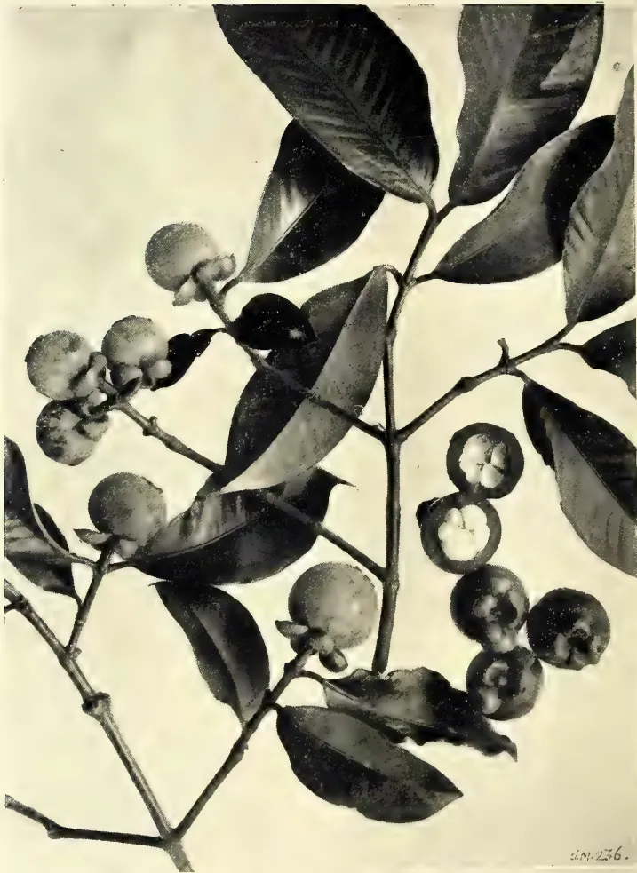
Photo by H. F. Macmillan.
GARCINIA MANGOSTANA. L.
MANGOSTEEN.
THE
TROPICAL AGRICULTURIST
AND
MAGAZINE OF THE
CEYLON AGRICULTURAL SOCIETY.
VOL. XXXII.
COLOMBO, SEPTEMBER 15TH, 1908,
No. 3.
Considerable interest has been aroused by the papers on the new Manihot rubbers, lately published; and, as usual, the Department at Peradeniya has been asked to book 100,000, 50,000, and other numbers of seeds for delivery this or next year. It will be well, therefore, to make clear that the history will be the same as with Para or Ceara rubbers long ago. At present we have 100 plants of Manihot dichotoma, and may expect a few hundred seeds the year after next; while we, like other gardens, have as yet been totally unable to get either M. pianhyensis or M. heptaphylla, the two best species. In 1910 we shall be
able to give would-be experimenters a few seeds of M. dichotoma to try.
It may also be well to point out that the Manihots, though they grow so freely for instance at Pallekelle or near Kandy, are plants of a dry climate. The finest specimens of Ceara rubber (M. Glaziovii) in Ceylon, so far as we know, are near Trincomalie, and the tree is growing splendidly on the Experiment Station at Maha-iluppalama, near Anuradhapura. Should the yields of the new Manihots turn out to be anything like as good as stated, we may expect some day to see a good deal of land cultivated under them in the North and East.
Professor Dr. A. Weberbauer records in the last December number of the "Tropenflanzen" some interesting experiments he made in Camerun on the tapping of certain species of rubber-bearing plants. We abstract his remarks on Ficus elastica (Rambong) and Hevea braziliensis (Para).
In tapping Ficus elastica he used the ordinary tapping knife ("die Kaeuflichen Kautschukmesser"). In the outer layer of bark, which contains little or no latex, a groove was cut to the depth at which the first drops of latex show themselves, then with an ordinary penknife a deep cut was made in the bottom of the groove. The author claims that wounds in the cambium, which cannot always be avoided, will heal more quickly, if caused by the sharp pocket knife than by the ordinary coarser tapping knife.
The weights given are those of well-dried rubber.
In the first experiment two trees with stems of about equal girth were taken.
In (a) a cut of 16 centimetres (about 6 inches) was made in a sloping direction,
In (b) the cut was 22 centimetres (about 8 inches) and parallel with the axis of the stem, that is vertical in the case of an upright growing tree. The yield from (a) was 2.1 grams (1000 grams=2 lbs.) from (b) 1.2 gram; so that the sloping cut, though shorter than the other, yielded nearly twice as much rubber.
In another experiment six cuts were made on the same branch and on succeeding days, except that a clear day intervened between the second and third. All cuts were made at right angles to the long axis of the branch, which grew horizontally. The time of day, 9 to 12 o'clock, was much the same in each case, and so was the weather. The first cut yielded 12.47 grams; the second, close to but behind No. 1 on the same side of the stem, gave 0.87 grams; the third, on the same side as No. 2 and about 4 inches distant from it, yielded 2.03 grams; the fourth was on the same side as No. 3 and distant about 8 inches, the yield was 2.25 grams. The fifth was on the opposite side to the previous ones and lay under the first: it yielded 8.80 grams. The sixth was on the same side of the stem as the fifth but 16 inches distant from it: yield 2.26 grams.
The first cut gave more than double as much rubber as the three others together which were on the same side of the branch. The farther the cuts are from each other the greater is the yield. On the opposite side of the stem, the fifth cut gave nearly four times as much latex as the sixth, though the distance between them was relatively large. Therefore if Ficus elastica is tapped with sloping cuts, and if a good number of these are made in a short time, they should, if they lie on the same side of a stem or a branch, be made considerable distances apart, otherwise there is only a useless injuring of the tree. In his fifth and sixth experiments the author found that if the time between two tappings is lengthened (to three weeks or a month) the distance between the cuts may be lessened. It would, perhaps, have been more valuable if more trees had been tapped in each experiment.
The author made a number of experiments on Hevea braziliensis. He applied the spiral and the herringbone methods, and short sloping separated cuts, but none vertical; his object was not so much to compare different methods of tapping as to see whether Para yielded paying quantities of latex in Camerun, which has been doubted.
The sloping cuts gave somewhat the best results. The method was as follows:—The tapping-knife and penknife were used exactly as in the Rambong experiments.
Six sloping cuts, each 4 inches long, were made at equal distances apart (and presumably at the same level) round the stem. Every cut was parallel with and 2 inches from that of the previous day, so that after 28 days the surface of the tree exhibited six vertical rows of sloping cuts, 28 parallel cuts in each row, and the rows separated by six stripes of untouched bark. The author does not state the width of each groove. Not much can be deduced from the figures given. Only three trees, one of each method, were experimented on, and the periods during which they were tapped do not agree.
There are things against the practicability of the separated sloping cut. It would be interesting to know if less bark is used up, and if it renews more quickly than is the case with the almost universal herringbone method.—Agricultural Bulletin of the Straits and Federated Malay States, No. 4, April, 1908, Vol. VI.
SEPTEMBER, 1908.]211Saps and Exudations.ANALYSIS OF RUBBER SAMPLESSeveral samples of Ficus elastica rubber from India have been examined recently at the Imperial Institute, and the results obtained are recorded in the following account:—
FICUS ELASTICA RUBBER FROM ASSAM.Two specimens of this rubber from the Kulsi Plantation in the Kamrup Division of Assam were submitted for analysis and valuation.
(1) "Tree Rubber from Ficus elastica."The specimen consisted of an irregular cake of rubber formed by the aggregation of thin strips. The rubber was reddish-brown, clean, free from stickiness, and exhibited good elasticity and tenacity.
A chemical examination furnished the following figures:—
| Per cent. | |
|---|---|
| Moisture | 0.7 |
| Caoutchouc | 78.0 |
| Resin | 19.0 |
| Proteids | 0.9 |
| Insoluble matter | 1.4 |
| Ash | 0.49 |
The rubber was valued at 4s. 3d. to 4s. 6d. per lb. in London, the current price of fine hard Para from South America being 5s. 2d. per lb.
The percentage of resin in this rubber is higher than is desirable, but otherwise it is of satisfactory quality and would be readily saleable.
(2) "Mat Rubber from Ficus elastica."This was a piece of dark-brown rubber composed of several thin sheets firmly attached together. The rubber was soft, sticky, and rather weak.
The rubber was found to have the following composition:—
| Per cent. | |
|---|---|
| Moisture | 2.1 |
| Caoutchouc | 80.0* |
| Resin | 16.0 |
| Insoluble matter | 1.9 |
| Ash | 1.94 |
*Including proteids,
The specimen was valued at 2s. to 2s. 3d. per lb. in London, but would be difficult of sale on account of its soft, sticky character.
The sample was too small for complete chemical examination, and consequently it was not possible to determine the amount of proteids present. The percentage of the later constituent is included with the "caoutchouc."
This rubber contains a little less resin than "the tree rubber," but on account of its weak, sticky character it is much inferior in value. The stickiness may be due to the plan of placing the mats covered with rubber in the sun to dry. It would be preferable to effect the drying in the shade so as to avoid over-heating the rubber.
FICUS ELASTICA RUBBER FROM INDIA.Two specimens from this rubber obtained at Mukkie in the Kanoth Range North Malabar, have also been examined
(1) Ficus elastica, scrap rubber.A cylindrical lump of reddish-brown rubber, made up of aggregated shreds and weighing 12½ oz. The latter was clean, free from stickiness, but rather weak.
The rubber had the following composition:—
| Per cent. | |
|---|---|
| Mositure | 0.9 |
| Caoutchouc | 67.3 |
| Resin | 28.1 |
| Proteids | 0.9 |
| Insoluble mattter | 2.8 |
| Ash | 0.47 |
The sample was valued at 2s. 11d. per lb. in London, with fine hard Para quoted at 3s. 5½d. per lb.
This rubber contains an excessive amount of resin, which adversely affects its physical properties.
(2) Ficus elastica, "biscuit" rubber.A large circular biscuit of black rubber weighing 8 oz. The rubber was clean, free from stickiness, but deficient in elasticity and tenacity.
A chemical examination gave the following results:—
| Per cent. | |
|---|---|
| Moisture | 4.0 |
| Caoutchouc | 71.2 |
| Resin | 22.7 |
| Proteids | 1.0 |
| Insoluble matter | 1.1 |
| Ash | 1.68 |
The specimen was valued at 2s. 5d. per lb. in London, with fine hard Para from South America quoted at 3s. 5½d. per lb.
This sample contains a little less resin than the preceding specimen, but on account of its dark colour it would not realise such a good price.—Bulletin of the Imperial Institute, Vol. VI., No. 1. 1908.
Gums, Resins,212[SEPTEMBER, 1908.(ABSTRACTED BY R. H. LOCK.)
(Journal d' Agriculture Tropicale, May 1908, p. 142.)
Whilst the area under Hevea has been rapidly increasing in Indo-Malaya, Castilloa has been taking an important place in the plantation of Mexico and Central America, and it has also been tried in several of the West Indian Islands. In German West Africa, New Guinea and Samoa this cultivation has been less successful.
The structure of the laticiferous tubes of Castilloa renders necessary a different method of tapping from that employed in the case of Hevea, the former being tapped much less frequently in order to obtain the best results.
Three tapping knives, specially designed for the use with Castilloa, are described in the present article, and two of them are figured. A feature common to all three is the U-shaped blade, differing in the three cases in radius of the curve and angle of attachment to the handle.
The knives are the inventions of Dr. Strunk, Dr. Preuss, and Mr. V. Smith, a planter of Soconusco, respectively.
With regard to systems of tapping it is admitted that the ideal method has not yet been evolved. In Mexico the system adopted is to make 3 or 4 V cuts on each tree. The limbs of the V do not quite meet at the base, but a space of two or three inches of bark is left intact and two partial spirals are traced upon the bark. The first V is made as near the base of the trunk as possible, and others at successive distances of two feet above it. The trees are first tapped when they have arrived at an age of six or seven years and a circumference of 2 feet a yard from the ground.
Various other methods, differing slightly from the above are enumerated, as well as several different modes of collecting the latex; also estimates of the yield, which are admittedly somewhat vague.
[P. A. HOUSEMAN in Science Progress No. 9, July, 1908: Abstracted by J. C. WILLIS.]
The author is the chemist to the British Camphor Co., and starts by assuming that no cultivated camphor need be considered, as it cannot yield till 50 years old! He then describes the
process of preparation of synthetic camphor, and ends, "Assuming a good supply of turpentine at moderate price, there is little doubt that synthetic camphor, which is quite equal in all respects to its Oriental rival, has a good future before it, and will be able to compete successfully with Japanese camphor."—
The exports of balata from Ciudad Bolivar during 1907 amounted to 1,456 tons, valued at £224,414, against 1,232 tons, valued at £176,039., in 1906. Last year the figures reached the highest total ever known in one year. The prospects of this industry, however, are not favourable for the future, as the consequences of the fatal system of felling the trees to obtain the gum are now beginning to be felt as the more accessible forests become exhausted. The season for 1908 has also set in very dry, and it is therefore probable that the balata shipments during the current year will show a decline. The Para and Caura rubber shipments show an increase for 1907. The system followed in the Caura district for collecting rubber includes also the felling of the trees. Lately, regulations have been issued by the Government forbidding this practice.—Chemist and Druggist, No. 1, 475, Vol. LXXII., May, 1908.
A recent number of the "Indian Trade Journal" contains an article discussing the possibility of manufacturing lac-products in India, and suggests the desirability of an inquiry as to the facilities that exist for the manufacture of cheap spirit. It is pointed out that the chief lac-bearing country is also the country where the mahua-tree is abundant, and the mahua-flower is as cheap a spirit-base as any. Another possible source of cheap spirit-supply is the wood-spirit so largely made and used in America, and it is suggested that the manufacture of this might well be combined with that of acetone, for which there is a large demand at the cordite-factory. A third possible source might be found in the refuse of the sugar-factories now being rapidly extended in Bengal and elsewhere, and it is believed there is little doubt that India could in a short time become self-supplying in respect to industrial spirit, and could carry the manufacture of lac-products several stages further than is done at present, with much profit to the country.—Chemist and Druggist, No. 1, 475. Vol. LXXII., May, 1908.
SEPTEMBER, 1908.]213In 1906 we produced, in Natal, 1,136 muids of sunflower seeds, from a total area of 191 acres. Of these 1,136 muids 212 were produced in the Lower Umzimkulu Division, 233 in the Division of Alexandra, and 160 in the Upper Umkomanzi Division, the balance being scattered generally over most of the remaining Magisterial Divisions of the Colony. The sunflower grows fairly well in most parts of the Colony, the conditions essential for its successful cultivation being, generally speaking, very similar to those required by maize. It is, however, not regarded as a staple or major crop; it is, nevertheless, found a useful accessory in mixed farming.
Very little has so far been done, so far as our observations go, in the cultivation of the sunflower in Natal on a commercial scale. Here, in our very midst, a market exists for large quantities of the seed for the expression of its oil for soap-making and other purposes, so that the systematic cultivation of the plant could be made a considerable source of revenue.
The sunflower (Helianthus annuus) is said to be a native of Mexico and Peru, and was introduced into Europe at the end of the sixteenth century. It is largely cultivated in Russia, Germany, Italy, and France, and also in China and Tartary, as well as in the United States. It is an annual herb, bearing large, flat, circular flower heads. The seed is the most useful portion of the plant, and this is commonly eaten raw or cooked or used for the extraction of oil. The oil-cake after expression forms a valuable cattle-food and a condition powder for horses. The leaves and the stalk have distinct food values, and when reduced to a sufficient state of fineness possess nutritive qualities of a high order. The sunflower stem has rather strong bast fibres, and the plant has often been suggested as a source of cellulose for paper mills. The amount of cellulose is generally comparatively high. The fibre is too weak and brittle, however, to be of value for cordage or textile purposes, and perhaps its highest value lies in its use for fuel, the ash being rich in potash.
The method of cultivating sunflowers for commercial purposes is best described by Dr. H. W. Wiley from the results of their growth in the United States: "As a rule the soils which are best suited for the growth of Indian corn (mealties) produce the best crop of sunflowers. If the soil is not naturally fertile, liberal fertilisation must be practised in order to secure large crops. The character of the fertilisation depends upon the nature of the soil and the deficiencies of the plant food therein. The kind of fertilisation necessary to produce a good crop of maize will be found suitable for the sunflower. The soil should be prepared by careful ploughing, and the surface of the ploughed soil should be reduced to good tilth by the use of the harrow. Sunflowers are best planted by a drill in rows from 3 to feet apart. In order to secure a good stand the seeds may be placed by the drill 2 or 3 inches apart; but should they all grow, at least half of them should be cut out when the plants are thinned. The seeds should be planted deep enough to secure abundant moisture to germinate them; from 2 to 3 inches in depth when the soil is not too heavy will be found the best. With heavy, stiff soils, which are likely to become very hard on the surface after heavy rains, it is better not to plant the seeds so deep. The seeds should be planted as early as possible in the spring, as they endure very well a slight degree of cold. After the plants are well formed they should be thinned so as to stand at a distance of from 12 to 18 inches in the row. The cultivation should be of the ordinary kind, mostly superficial, and sufficient to prevent the weeds from growing and preserve the moisture during periods of drought. When the production of seed is sought, the best results are secured by limiting the number of seed heads on each plant to a very few. The superfluous heads when formed should be removed. No special directions need be given for the cultivation, since it is so much like maize as to be practically the same."
As this crop is sensitive to frost, it should not be sown until all danger of this sort is past. Dr. Eric A. Nobb says (Cape Agricultural Journal, Jan., 1908) that in Cape Colony seed sown about September or October has given the best results. He adds that the most suitable climate is one which is warm and sunny, and not subject to unseasonable frost. The sunflower takes from 3
Oils and Fats.214[SEPTEMBER, 1908.to 4 months to mature, according to the variety of climate and soil.
Whilst the sunflower is susceptible to frost, it is singularly free from other diseases. Damage is sometimes reported by small birds and by surface caterpillars. The plant withstands drought well.
There are three principal varieties now cultivated in Russia, known by the shape and size of the fruits (Achenes), conventionally called seeds: one with large white seeds which are said to yield the largest amount of oil; one with small black seeds which are sweeter and regarded as best for eating; and an intermediate from with striped seeds, used both for eating and the production of oil.
The yield varies according to the variety and the method of planting and cultivation. In America the yield is from 30 to 50 bushels—900 lbs. to 1,500 lbs.—to the acre. In the Cape Colony a yield of 3,250 lbs. to the acre has been obtained. In Natal in 1906 the average yield for the whole Colony was 5 muids per acre. The average yields of the more important Magisterial Divisions of the Colony were as follows:—Lower Umzimkulu, 6·5; Alexandra, 4·8; Inanda, 7·0; Ixopo, 4·6; Umgeni, 3·0; New Hanover, 4·0; Upper Tugela, 8·0; Estcourt, 3·7; Weenen, 4·3; Klip River, 4·8; Dundee, 3·6; Utrecht, 4·0; Paulpetersburg, 7·5; Eshowe, 6·0.
The heads should be harvested before the seeds are quite ripe, to avoid shattering and loss. The sunflowers may be cut with a sickle or bill-hook, such as is used for cutting up prickly pears or aloes. After drying, the seeds can be thrashed out or beaten with a flail, or, where large quantities have to be treated, they may be easily removed from the heads by pressing the latter against a revolving wooden cylinder into which nails have been partly driven, the projecting heads serving the purpose of teeth on the cylinder of an ordinary threshing machine (Nobbs). The seeds should be stored in bags in a dry place to prevent mould.
The seeds are the most valuable part of the plant on account of their edible kernels and of the superior quality of the oil prepared from them. In Russia the seeds are used largely for local consumption, where they are parched and eaten in the same way as "Monkey-nuts" or earth-nuts in other parts of the world. Birds of all kinds thrive upon
them, and they are specially employed in feeding caged birds and in fattening fowls for the table, and the diet is said to increase their laying powers. In America the seeds are at present employed in feeding poultry, and to some extent mixed with other fodder as a cattle food. In Natal there is a demand for the seeds for use in the local soap and oil factories.
The oil-cake left after the expression of the oil forms a valuable cattle food, being, it is said, superior in this respect to maize or linseed cake, while it is also said to act as a natural "Condition powder" for horses owing to its easy digestibility and its great nutritive property. Sheep, pigs, rabbits and pigeons also fatten rapidly on the oil-cake.
Dr. J. Koenig* gives the average composition of five samples of whole seeds and of four kernels. An analysis of the shells or hulls is added for comparison:—
| Seeds. | Kernels. | Shells. | |
|---|---|---|---|
| Oil | 31·32 | 44·31 | 5·17 |
| Albuminoids | 13·67 | 26·28 | 5·16 |
| Carbohydrates | 18·03 | 16·44 | 23·92 |
| Fibre | 25·35 | 2·81 | 54·95 |
| Ash | 3·05 | 3·46 | 1·78 |
| Water | 8·58 | 6·70 | 9·02 |
| 100·00 | 100·00 | 100·00 |
Dr. H. W. Wiley gives, in Bulletin No. 60, Division of Chemistry, U. S. Department of Agriculture, the following composition of sunflower seeds grown in the United States:—
| Per cent. | |
|---|---|
| Oil | 27·08 |
| Albuminoids | 14·97 |
| Carbohydrates | 20·94 |
| Fibre | 29·17 |
| Ash | 3·41 |
| Water | 4·43 |
| 100·00 |
According to Mr. D. Hooper, in the Indian Agricultural Ledger, European sunflower seed from which the hulls have been removed contains:—
| German. | Russian. | |
|---|---|---|
| Oil | 33·48 | 34·25 |
| Organic substances... (including Protein) |
54·04 14·12 |
54·39 18·80 |
| Ash | 2·86 | 3·56 |
| Water | 9·62 | 7·80 |
| 100·00 | 100·00 |
*Quoted by Mr. David Hooper, F.C.S., F.L.S., in the Agricultural Ledger, India.
SEPTEMBER, 1908.]215Oils and FatsThe cake left after expression of the oil has, according to the same authority, the following composition:—
| per cent. | |
|---|---|
| Oil ... .. | 8.94 |
| Albuminoids ... .. | 21.68 |
| Carbohydrates ... .. | 19.05 |
| Fibre ... .. | 33.00 |
| *Ash ... .. | 9.33 |
| Water ... .. | 8.00 |
| 100.00 |
* Containing sand, 1.37 per cent.
The oil obtained by expression from the seeds is the most important product of the sunflower, and is valuable for many purposes. In its pure state the oil is said, on account of its palatability and sweetness, to be excellent for table use, for frying fish, and for other culinary purposes; indeed, it is much used in Russia as an adulterant of and substitute for olive oil for all domestic purposes. It may also be used for woollen dressing, lighting, and varnish and soap making. For the last mentioned purpose it is said to be superior to most oils. It has also been substituted recently for other fixed oils in the making of margarine.
As already stated, the stalks of the plant yield a fibre, which is, however, too brittle to be of much value for textile purposes. The stalks are, however, said to be useful for both fuel and manurial purposes. Both the leaves and stalk make a valuable manure, either directly ploughed in or after being used as cattle litter.
Smith observes that the sunflower is an excellent plant for bees, large quantities of honey and wax being obtained from the flowers.
According to Balfour, the blossoms yield a brilliant, lasting and useful dye. Crookes states that the petals are peculiarly rich in the amorphous resinous substance, Xanthin, the base of the yellow pigment from which they derive their colour. The seeds yield "helianthic acid," which, when treated with hydrochloric acid in a current of hydrogen, is resolved into glucose and a violet dye.—Natal Agricultural Journal, No. 4, Vol., XI. April, 1908.
(MEXICAN POPPY.)
The present Agricultural Ledger brings together the latest information on the uses, composition and commercial prospects of the seeds and oil of an American weed naturalized all over India and other parts of the world. The Mexican Poppy or Gamboge Thistle (Argemone Mexicana) grows in desert land and saliferous soils of the United Provinces and the Punjab, sometimes where few other plants persist. The plant yields an abundant crop of seed which is very oleaginous, and, considering the demand for oil seeds at the present time, suggestions are made for utilising the oil and cake in the arts and agriculture. The Ledger owes its inception to observations on the extensive use, in Behar, of oil of the seeds, which were made by the Reporter on Economic Products to the Government of India. The uses are two: one is as a remedy for skin diseases, the body being smeared with the oil; the other is for burning. Under normal conditions, it seems that not very much of the oil is burnt, but that it is quite a regular practice in the districts of Patna, Darbhanga and Mozzafferpur to put by a supply to serve as a remedy in skin troubles; but in the current year bad crops had led to a considerable amount of want, and many people were turning their hands to unusual avocations, among them the gathering of an amount of the seed of this plant far beyond what is customary. Everywhere in the districts named, in April, May and June last, women with a clumsy pair of tweezers were busy plucking the prickly pods just before they were ready to open and to scatter their seeds. The tweezers are made of two pieces of a split bamboo or of a bent piece of hoop iron. The morning's gathering is spread out in the midday sun for the pods to open, and the seed that is obtained is crushed in the ordinary oil press. In Chota Nagpur it has been observed that the seeds are sometimes collected into little heaps by ants, thus lightening the labour of women and children, whose duty it is to gather them.
The Reporter on Economic Products collected at Dalsingh Sarai and Barh the samples of oil, which have been examined in part by Lieutenant-Colonel D. St. J. Grant, I.M.S., Chemical Examiner to the Government of the Punjab, and partly by myself, for the purpose of this account of the plant as one yielding an oil seed.
Oils and Fats,216[SEPTEMBER, 1908.The Mexican Poppy is known by the following vernacular names:—
Bharbhand, kutaila, kutila, kantala, Hind.; Shiel kanta, Beng.; Feringi, or pila dhatura, Dec.; Dalturi, Can.; Birama dandu, Tam.; Daruri, Kandew, Mar.
The plant is at once recognised by its yellow flowers, prickly leaves with white veins, and the yellow juice that exudes when the plant is broken.
Habitat.—The Mexican poppy is a native of Jamaica, the Carribean Islands and Mexico, from which last country the Spaniards brought it to Europe under the name of Fico-del-inferno or Fig-of-hell. It was introduced into India about three centuries ago, presumably as ballast from abroad, and is now found all over the country in every nullah and abandoned rubbish heap. Being an annual it springs up from seed in the cold season, spreads as a weed in waste ground and on newly turned soil, ascending to 5,000 feet in the Himalayas. In Sind it is found among field crops and about a mile inward along the Indus, and in some places, as Kotri, may be seen to cover large tracts. In the Punjab it has been introduced within recent years and is slowly extending. It has not been noticed as occurring much to the West of Lahore. In 1854, Edgeworth observed that it had not reached Multan, but in 1866, it was seen in the extreme south-west of that district near the junction of the Chenab with the Sutlej. It is abundant near Delhi, where an oil is extracted, and it is a typical plant of the nitre region of Hissar and Hansi. It is one of the principal plants forming the vegetation of Lakhimpur, Assam, and is an invading foreigner in Manipur. In many parts of the country the plant is so abundant as to become a source of anxiety to the cultivator, and it was found to be doing so much harm to the young growth of Sadnani Forest in Sind in 1899 that the department were compelled to take steps to suppress it.
Argemone has long been used in India in medicine. Ainslie informs us that the Hakims employed the oil as an external application in such headaches as are caused by the sun, and the Vythians recommend it as a liniment for a scald head. Dr. Irvine of Patna says the oil stimulates indolent ulcers and eruptions, and others have applied it in cases of itch, ringworm and cutaneous diseases, with beneficial results.
The seeds are emetic, cathartic and acrid. The acrid and purgative properties of the seeds are contained in the
oil. Opinions regarding the efficacy of the oil have differed in the past, but the balance of recent medical opinion is that in small doses of 10 to 30 minims it constitutes an active cathartic. This has recently been confirmed by Colonel Grant. It has been noticed that freshly prepared oil is more energetic and uniform in its operation than that which has been kept for some time.
The oil is used for burning in the lamps in the Konkan and other parts of India. In South America the expressed oil is employed by painters and for giving a shining appearance to wood; it is probable, too, that the acridity of the oil will prevent the attacks of white ants and borers. It saponifies readily and gives a hard soap with soda.
It is not likely to take the place of castor oil in general practice, but the smallness of the dose is an advantage which is calculated to recommend it in some quarters.
The seeds are poisonous if taken in quantity. In 1878, a case occurred in Bombay in which a number of people suffered from vomiting and purging after using sweet oil which had been adulterated with Argemone oil. The adulteration may be detected by the rich orange-red colour developed when strong nitric acid is added to the oil or mixtures containing it. In the same year samples of oil were received by the Punjab Chemical Examiner from Amritsar, Simla, and other towns which were said to possess irritant properties, causing purging and vomiting. The oil was stated to have been imported from the United Provinces and to have been made from Siyal kanta (Jackal's thorn) the vernacular name for Argemone Mexicana.
The seeds are small, round, black, and roughish from pitted depressions; they are about the size of rape seed.
They contain in one hundred parts, 36 parts of oil, 49 parts of carbohydrates, albuminoids and fibre, 9 of moisture and 6 of ash. W. H. Bloemendal, examining ten samples of the seeds of Argemone from Curaçao and other countries, collected in the Haarlem Colonial Museum, found the yield of oil to vary from 35 to 38.7 per cent., or an average of 37 per cent. (Pharm. Weekblad., 1906, 14). By ordinary pressure the seeds yield from 25 to 30 per cent. of oil, a quantity equal to that obtained from rape seed.
It has been stated that the narcotic property of the seeds is due to the presence of morphine, and Gragendorff isolated an alkaloid from them in 1868, and
SEPTEMBER, 1908.]217Oils and Fats.Peckolt in 1878 separated argemone. In 1902 J. O. Schlotterbeck (Journ. Am. Chem. Soc. 24, 238) investigated the seeds and proved that morphine was entirely absent. He found two alkaloids present; one berberine and the other protopine. Peckolt's argemone was identified with the latter base. The presence of notable quantities of potassium nitrate among the inorganic salts was indicated.
The oil has a light yellow colour, nauseous and acrid taste and a raw odour. O. Frolich (1871) obtained from the oil a hard soap with soda, and found in the soap liquor butyric, valerianic, acetic and a little benzoic acid. According to Flückiger (1871) the oil has the specific gravity of .919 at 16.5°C., dries slowly and incompletely, and is not soluble in 6 volumes of 90 per cent. alcohol. On keeping, the acid value increases, and the oil becomes more soluble in alcohol. It gives with nitric acid an orange-red colour which distinguishes it from other fixed oils.
The following constants have been recorded:—
| Specific Gravity at 15° | Acid value. | Saponification value. |
|---|---|---|
| .9247 Crossley and Le Sueur. | 6.0 Crossley and Le Sueur. | 190.3 Crossley and Le Sueur. |
| .9435 Bloemendal | 200 Bloemendal. | |
| .924 Grant | 190 } Grant. | |
| 191 } Grant. | ||
| Iodine value. | Oleo-refractometer at 35° | Refractive Index. |
| 122.5 Crossley and Le Sueur. | 6.65 Grant | 1.4675 Crossley and Le at 35° Sueur. |
| 113.3 Bloemendal | 1.452 Grant. | |
| 111 } Grant |
The oil afforded 95.07 per cent. of fatty acids melting at 22.°
The oil dries to a hard jelly, gaining during the process 8 per cent. of its weight, an amount which corresponds with that absorbed by poppy seed oil. It then ceases to give a red colour with nitric acid.
The properties of Argemone oil as shown in the foregoing remarks and chemical reactions somewhat restrict it for general employment. Its acrid taste and active therapeutic action preclude its use for edible and culinary purposes. Although not so siccative as linseed oil, it has distinctly drying properties and could be used for paints and for caulking timber and boats when it is required to keep out damp and destructive insects. If obtainable at a sufficiently low price it would be most serviceable for soap making. The seed is said to sell in North Arcot for Rs. 1.4 to Rs. 2.1 per maund of 25 lb., and in Northern India the price should be lower. The cake is unsuitable
as a cattle food, but from its composition it would form an excellent bulk manure for cultivating exhausted soil. Large quantities of the seed are occasionally brought to the markets, but at present there is not much demand for it. The oil seed is not one that would be attractive to European commerce, but there are many ways in which the oil could be made serviceable in this country. The plant is so abundant that an unlimited amount of oil would be available should a demand arise.—Agricultural Ledger, 1907, No. 57. Vegetable Product Series, No. 104.
BY DAVID HOOPER, F.C.S.
Wild nutmeg seeds are occasionally imported into England under the name of "oil nuts," and are supplied from Africa and South America where they are said to be available in large quantities. In view of the constant and increasing demand for oil seeds in Europe it would seem desirable to examine the seeds of wild nutmeg trees of India to learn particulars of the amount and quality of the fat they contain. It has been known for many years that these seeds are oleaginous, but no special investigation has been made of them. The subject has been re-opened by the receipt from Mr. H. Latham, District Forest Officer, South Kanara, of a sample of the seeds of Myristica canarica, with the interesting information that they are used by the villagers in making candles. The seeds and candles were exhibited at a meeting of the Asiatic Society of Bengal held in December, 1906. They point to a source of oil for illuminating and other domestic purposes, and if obtainable in sufficient quantity would doubtless form a minor forest product of some value.
Further quantities of the seeds of M. canarica have been received, and they have been examined with those of M. malabarica, which are already an article of commerce in Bombay. The results of the chemical examination of the seeds and fat of these two indigenous nutmegs are given in the following pages, and their composition is compared with that of wild nutmegs from other countries.
Myristica Fragrans, Houtt.—Cultivated in Penang, Malay Islands and Zanzibar. The true nutmeg.
The origin of the nutmeg and mace of commerce is alluded to in this place in order to draw attention to the fat which is sometimes sold. The expressed oil of
28 Oils and Fats.218[SEPTEMBER, 1908.nutmegs was formerly imported into India from Banda, and was known as Jawitri-ka-tel or oil of mace. It was brought into European commerce via Holland, in oblong cakes having nearly the form of common bricks, but somewhat smaller and packed in monocotyledonous leaves, commonly called "fig leaves." At the present time much of the oil is manufactured in Europe, and put up in the same shape, but packed in paper. When discolored and hardened by age, the oil is called "Banda soap." Oil of mace is manufactured by exposing imperfect and broken nutmegs, reduced to a paste and enclosed in a bag to steam, and then pressing the bag between heated iron plates. The yield is about 20 to 30 per cent.
Nutmeg butter is used in Europe in the manufacture of scented oils, perfumes and soaps, and as a flavouring agent in cooking and confectionery. A great point in its favour is that it does not turn rancid, even after long storage, on
account of the small quantity of essential oil combined with it.
A few references will now be made to the foreign nutmegs that have been utilised for their fat.
These few notes show that the wild nutmegs of India, like the wild nutmegs of foreign countries and the cultivated nutmegs of Malaya, yield a fat of considerable value to soap and candle makers. The question to be solved is in regard to the quantity of the material available. If the seeds of Myristica canarica could be obtained in large quantities when the tree fruits, there would be a ready market for them, since they compare favourably with seeds obtained from the same natural family in other parts of the world. The seeds and mace of the M. malabarica have also a certain economic value which it appears most desirable to extend.--Agricultural Ledger, 1907, No. 3. Vegetable Product Series No. 102.
SEPTEMBER, 1908.]219BY A. TATHAM, GISBORNE.
Wherever the black wattle (Acacia decurrens) grows naturally in Victoria, it is possible to cultivate it. On most properties there is always an acre or two of land that for some reason or other yields no return, and there is no reason why they should not be made to do so through wattles.
It would be difficult to find a soil in Victoria that would not grow this tree, provided moisture was sufficient. But if any can be specially selected perhaps the granite country would gain first place. Those soils that are rich in humus are most favoured, and often in granite localities, where the soil surface is made fairly free by the disintegration of the rocks, a dense vegetation of low-growing species, especially bracken fern, is found, causing an annual deposit of decaying vegetable matter. The wattle in its young state is tolerant of shade, and in fact thrives well in partial shade, or under a high-leaf canopy. But to be at its best as far as bark production is concerned, it should have no overhead shade, but plenty of undergrowth. Its natural locality is a valley, but where the rainfall is 30 inches and over it is found growing well on ridges.
The wattle seeds profusely once in three years. To collect the seeds, the pods should be gathered just as they ripen, but before they open, as they will do on a hot day, and so shed the seed. The pods can be laid on sacks or rick cloth in the sun, where they get brittle or split; place all in a sack and beat it briskly with a stout stick, and the seed will be threshed out. If the sack is held up, and gently bounced on the ground it will be found that the seeds sink to the bottom and can easily be collected.
The area having been selected, the seed can be sown any time in the early autumn. The cheapest and easiest way to do this is to strive to get a locality that has trees growing on it; if bracken fern exists all the better. Do not attempt to remove any rubbish in the shape of logs or dead limbs, leave all alone—it is an excellent site for wattles. Before the autumn rains, throw the seed broadcast over the area; it requires no previous preparation, if plenty of dry
vegetation is present. Half-a-pound of seed is ample for an acre, in fact a quarter of a pound will suffice, but is difficult to sow, except it is mixed with a bucket of sand or earth. On a favourable day, and with due regard for yourself and your neighbours, set fire to the block. The heat of the fire will assist germination, and the resulting ashes are sufficient cover for the seeds; injurious insects are destroyed, and the vegetation is burnt sufficiently to allow the young wattles to get a fair start in life, before they have to struggle through the quick growth of grass, &c., which will follow in the spring. In two years the young wattles will be 2 to 3 feet high and beyond all interference from undergrowth.
So far the expense has been very slight. But as stock will greedily devour wattles, the plantation must be fenced until such time as the young trees are too high for them, which ought to be in their fourth year. The style of fence need only be temporary and cheap, but effective.
If this style of plantation cannot be arranged, then more expensive methods must be resorted to. The next cheapest is to run disc cultivators over the area where possible, throw on the seed broadcast, and then brush-harrow it in or roll it. But the seed needs preparation; quick germination cannot be hoped for, unless it has been subjected to heat, soakage, or fermentation. To heat seed, place it in a hot oven, and as soon as it gets fairly hot remove it; this will keep for some time should rain not fall. Soaked seed is too tender to handle much and is only of use in seed beds, and should rain not fall after sowing it would perish. If land that has been broken up by ploughing can be secured it generally grows good wattles. Even ploughed-in seed has resulted in a good plantation, but is expensive.
It is almost useless to grow wattles in plain country where trees have not previously grown, as they will require attention of an expensive nature to insure success. Above all, strive to grow them in scrubby areas, do not ring or destroy the natural growth except where it greatly interferes with young trees. As a rule wattles grown in the open suffer severely from insect pests and blight, and the want of sufficient humus in the soil checks their growth. These trees are as a rule of low growth, thin and hard in
Dyes and Tans.220[SEPTEMBER, 1908.the bark, and as often as not cannot be stripped. The only way to remedy this evil, if the soil is hard, is to break it up previous to sowing. On no account overcrowd the trees; the object to be aimed at is marketable bark and as much of it as possible. The only way to get this is by having large stemmed and big branched trees. If the trees are crowded they will only grow lanky and thin, and thinning operations will have to be resorted to. If this is not done carefully the remaining trees will, through the weight of their crowns, often bend over and even get torn out of the ground; they are so weak that a gale of wind will level them. From the first, keep them well apart, and the after-results will well repay this precaution, besides saving the cost of thinning.
Lopping of branches may be resorted to, but no tree under six feet high needs it. It is after this height has been attained that a few branches may be removed; do not lop right up, rest content to remove a few only at a time. It is advisable not to lop a tree higher than 10 feet; the branches that grow beyond this are needed and will of themselves produce both quality and quantity of bark. Above all cut close to the stem, do not leave a stub sticking out. It is necessary that the wound should heal quickly, in order to prevent the inroads of borers or fungus disease; it cannot heal properly as long as the dead bit of branch sticks there. Then, again, when stripping takes place these stubs are a cause of trouble and annoyance, preventing the easy removal of the bark. An acre of well-grown wattle trees ought not to number more than 150, and, if grown in scrub, probably half this number. It is a great mistake to suppose that more trees will return a better profit. It is more than probable that an acre of 150 trees will produce more bark, and distinctly better quality, than an acre of 500 whipsticks that can only produce thin, inferior bark.
The greatest enemy to wattle is fire; at no period of their lives can they be considered safe, should this element attack them. In most cases it kills them, and, if not, so injures them that the bark is useless for stripping; therefore beware of fire.
At what age a tree is fit to strip depends on a lot of circumstances; but it can be taken as a rough guide, that with favourable seasons and growth 6 to 8 years will be the youngest age conducive to a decent bark yield. It is possible to strip at 4 years, but the return
is a poor one compared to what would result if the tree was left another couple of seasons.
There is a time when the marketable bark reaches its maximum thickness; this is probably between 8 and 10 years in a normally grown tree, it may be even a little later. After this stage has been reached, the green bark will never get thicker, any increase in thickness will only be due to the accumulation of dead bark that adheres to the stem and covers the live bark, or marketable commodity. Now it stands to reason a purchaser is not going to buy dead bark, and to market such rubbish would be folly. Therefore as soon as the bark of a tree shows signs of external creaking and dying, no time should be lost in stripping it, for it will never improve, but only recede in value.
There are many different ways of stripping bark, but whatever method is adopted, the object in view should not be most bark with least trouble and time, but most bark and best sample. If a tree is carefully worked, it is surprising what a lot of good quality material it yields. But the best bark is often ruined by carelessness. Even inferior bark can be made to appear good, with a little care. It should be cut to one length, not doubled over in the bundles, because the bent bark takes up more room, is very prone to spring and loosen the ties, and looks slovenly. After the bark is stripped great care must be taken to prevent it getting wet or a great loss of tannin will result. Freshly peeled bark suffers more in this way than dry bark. But when dry bark gets damp, especially when bundled, it is liable to be attacked by mildew. This is often hard to detect till perhaps great injury is caused; mildewed bark is practically valueless. Therefore do not bundle any but dry bark, and if stored be careful it gets plenty of air, but no damp. Above all keep the bark clean; good appearance goes a long way towards a good price.
It would be difficult to state here what the probable cost per acre, or of marketing per ton, might be. Some acres would require little outlay until stripping, others might be a long way from a market. But if the probable returns can be arrived at, then the question simplifies itself to those who wish to give it a trial. From calculations based on some years' stripping, it has been found that 30 trees supposed to be between 6 and 8 years old produced a ton of dry bark. The trees were naturally grown, in bush country. Therefore an
SEPTEMBER, 1908.]221Dyes and Tans.acre of 150 trees 8 years old and fairly grown ought to produce five tons. Now, taking the average price of bark in Melbourne at £6 per ton, an acre would yield £30 in 8 years. Allowing only two tons to the acre the return of £12 would be satisfactory, as the land in its natural state as a grazing area would only be worth about 2s. per acre per annum. It cannot be denied that £30 per acre at the end of 8 years, even though it be reduced by half to cover cost of all works connected with the plantation, is better than 16s. per acre as a grazing area.
There are many blocks of suitable land lying idle in Victoria to-day that could be made to return a good income from this source, with absolutely no more cost than sowing the seed and harvesting the bark. South Africa is planting large areas of wattle. Why is it neglected in the country of its origin? --Journal of the Department of Agriculture of Victoria, July 8th, 1907, Vol. V., Part 7, pp. 432-4.
BY V. P. RIBEIRO.
Extra Assistant Conservator of Forests,
Hyderabad (Sind).
[The Kolis are a race of the West Coast of India divided into a large number of tribes. Their settlements stretch from the deserts north of Gujarat to Ratnagiri, inland by Pandharpur in the south of Poona as far east as the Mahadev or Balaghat hills in the Nizam's Dominions and through the Central Provinces and Berar, north to Khandesh.* They are found in every village in Gujarat, the Konkan and the Deccan. They are skilful husbandmen and raise the finest kinds of rice. One tribe settled just north of Bombay is that of the Mata or Dungari Kolis and consists of fishermen who use among their nets those here described.—ED.]
The nets used by Kolis are made from the fibre of Crotalaria juncea (vernacular name "Tag"), and are of 3 or 4 distinct shapes adapted to different depths of water, and to different fish.
A net, known among the Kolis as "dowl" or "dole" is considered to be the best, and is used invariably for deep-sea fishing and for all kinds of fish. When spread into the sea, it assumes a pyramidal or conical shape, as shown in the accompanying rough sketch.
The length of this net, from apex A to base B, is 162 feet. Each side of the base or mouth B B', B C, B' C' and C C' measures 72 feet, i.e., the whole measurement round the base is 288 feet.
The apex A is tied with a string, when the net is spread, and can be opened when it is necessary, to remove the fish. Its base or mouth B B', C C' is open, and a strong rope passes round it. In the accompanying sketch b and b' are two buoys or empty casks about 72 feet apart, floating in the sea, and kept in position by the anchors D and D' to
which they are fastened by two strong ropes or hawsers. The two corners B and B' of the net are attached to the two buoys b and b'. The other two corners C and C' of the net are fixed to the two anchors by a pair of strong ropes C D and C' D'.
When the net is full, the thin ropes b c and b' c' are pulled, so as to raise the corners C and C' to B and B'. This has the effect of closing the mouth of the net. The net is then detached from the buoys and anchors, and hauled into a boat alongside of it, and the fish removed by unfastening of apex of the net. The buoys and anchors with ropes remain permanently in the sea.
In fair weather the anchors and casks are sometimes dispensed with, and the net is fixed to two masts (preferably of Adina cordifolia, it being very durable under water) sunk upright in the sea from 70 to 80 feet apart. The working of the net under these conditions will be clear.
In this case the corners C and C' have lead weights attached and they (the corners C and C') are raised (when necessary to close the mouth of the net) by ropes and pulleys at the top of the masts (as shown in figure 2 in the accompanying diagram).
The value of this net (of the size given above) is Rs. 250/- and it costs about Rs. 8 a month for tanning; The meshes of the "dowl" net vary from inches to inch. The size of the mesh near the mouth is inches and it gradually decreases to inch towards the apex. For regulating the size of mesh, the net is divided into 5 parts which are named as follows:—
Khola = a length of 18 feet from A apex with a inch mesh.
Mazola = 36 feet from K to M with a inch mesh.
Chiret = 36 feet from N to P with a mesh from to 3 inches.
Mowr = 36 feet P B' with a mesh of 3 to inches.
Nets similar in shape and make as the above, but of smaller dimensions (30 feet long and 27 feet in circumference), are called "boksha", and can be had for Rs. 10.
* Dr. T. Wilson held that the name was Kuli or clansmen, that they were the aboriginals of the plains while the Bhils were the aboriginals of the hills.—Bombay Gazetteer, Thana, Vol. XIII., Part I.)
Fig. 1.
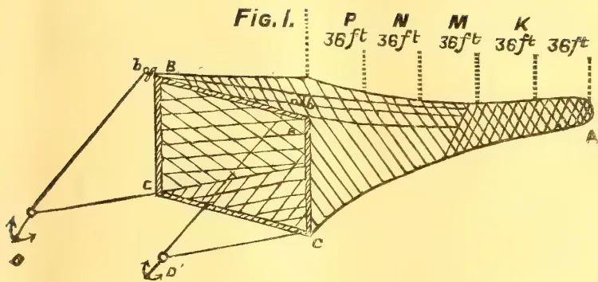
This technical drawing shows a fishing net with a rectangular head and a tapered tail. The net is suspended by ropes from two points, B and B', which are anchored to the seabed at points D and D'. The net is divided into five sections by vertical dashed lines, labeled P, N, M, K, and L from left to right. Each section is labeled with its length: P is 36 ft, N is 36 ft, M is 36 ft, K is 36 ft, and L is 36 ft. The net is labeled with letters: 'b' at the top left corner, 'B' at the top right corner, 'c' at the bottom left corner, and 'C' at the bottom right corner. The tail of the net is labeled 'A' at its rightmost end.
Fig. 2
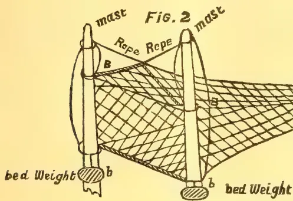
This diagram shows a fishing net suspended between two vertical masts. The masts are labeled 'mast' at their tops. Ropes are labeled 'Rope' and are attached to the masts and the net. The net is labeled with 'B' at its top corners. The masts are anchored to the seabed at points labeled 'bed Weight' and 'b'.
SUNN-HEMP FISHING NETS.
This image is a scan of a blank page. The paper has a light beige or cream-colored tint. There are a few very small, dark specks scattered across the surface, which appear to be scanning artifacts or dust particles. No text, lines, or other markings are present on the page. SEPTEMBER, 1908.]/223Fibres,Another kind of net is the "Jahal"; the mesh of this net is inches. It is 240 feet long and 24 feet broad and has very small wooden floats attached longitudinally, 10 feet apart along one edge of the net, and a stronger rope passes along the other edge. It is used in moderately deep water, for pomfrets and other similar fish. Such a net costs from 8 to 9 rupees.
"Airkhund" is a net of smaller dimensions (36' X 18') and may be characterised as a sweep net. It is used in shallow water on the coast or in creeks. It is dragged over the fishing ground by men in boats or wading in water. Its mesh is inch.
Another class of nets consists of the "Pagh" and "Assu." The first is circular in shape, the diameter being about 18 feet.
To its circumference are attached lead weights, at short intervals. It may be called the "Casting out" net, and is used in shallow water, to catch small fish and prawns. The mesh of the Pagh is to inch.
The "Assu" is a hand net similar to the "dowl" net but with a wooden rim (6 feet in diameter), and is employed on the sandy coast for catching prawns only. It may be called a dredge net. The mesh of this varies from to inch.
Traps and spears are not used among Koli fishermen. The hooks used are of the ordinary description. The lines are made of the fibre of Caryota urens and that of Crotalaria juncea. The Agricultural Ledger. 1905—No. 7. (Industrial Series, No. 5.)
A good deal of interest has been from time to time raised by the question of the possibility of the cultivation of the Ipecacuanha plant in this country. The drug is an expensive one and there is a steady demand for it, being as it is, one of the few known remedies for dysentery. For many years it has been cultivated with some success by Mr. W. W. Bailey, formerly at Pengerang Estate, Johor, and later in Highlands and Lowlands estate in Selangor. No one else seems to have been very successful with it in any part of the world.
In cultivation it is by no means an easy plant to deal with, and though it has been often tried at the Botanic Gardens, Singapore, it never seems to thrive well, probably on account of the dampness of the Island. I have found it very sensitive to rapid changes of weather. In hot dry weather it suffers much from the dryness of the air, and heat and heavy rainstorms are also fatal to it.
An article on Johor Ipecacuanha has recently been published by Mr. E. M. Holmes in the Pharmaceutical Journal (January 18th, 1908) p. 54, which is of considerable interest and from which I quote. "For many years past Ipecacuanha root has been cultivated in the Malay States and imported into this country under the name of Johor Ipecacuanha, but the exact form of the plant under cultivation and the particular district in which it is grown are not stated in text books. Some of the Johor root was examined by Mr. F. Ransom and reported to be practically as rich in alkaloid as that received from Brazil. As the attempts to grow Ipecacuanha in India and elsewhere on a commercial scale failed it became a point of some interest to determine the particular form or variety of the plant that succeeded so well in the Straits Settlements." Specimens of the plant were received by Mr. Holmes from Mr. Wray and Mr. Pfenningwerth. Mr. Holmes goes on to point out that two forms of the plant were known in 1871 when Prof. J. M. Balfour, in an article read before the Botanical Society of Edinburgh, described them as cultivated in Edinburgh Botanic Gardens. One, originally sent by Mr. Mackay of Liege to Sir W. Hooker, had a shrubby stem, firm leaves not undulated at the edge, with a short style. The other sent from Rio de Janeiro, was herbaceous, with thinner leaves undulated and
fringed with hairs. The flowers were not seen but were probably long styled. The Selangor plant has firm leaves, oblong lanceolate (rather than oval as in Mackay's plant) slightly scabrous, and the stamens and style equal in length. This plant is therefore distinct from either of the other two. The plants formerly cultivated in the Singapore gardens and obtained from Kew were certainly herbaceous. Ipecacuanha seems to have been first introduced to the Straits Settlements by Murton in 1875. The plants were brought from Ceylon. But whether the Selangor, or called as they were at first, the Johor plants, were derived from these or obtained elsewhere I cannot say.
Mr. Pfenningwerth states that the cultivation is very slow work. The plant seems to grow well but does not produce root in abundance. The first crop off fresh soil is a fairly good one but on trying to raise a second it invariably turns out very poor, although all kinds of manure have been tried to enrich the land but without apparently restoring to the soil the necessary ingredients for luxuriant growth. He then quotes from Mr. Macnab, as to the growth of the plant. "The stem is of slow growth and although cuttings root freely in five or six weeks when inserted in white sand kept somewhat moist, very few cuttings are obtainable, so that propagation from sections of the rhizome even if only one sixteenth of an inch thick give the best results. These can be readily propagated if placed in a horizontal position over the surface of a pot, prepared with drainage and white sand and kept moist and placed in a warm propagating bed under a hand glass. In a few weeks the root cuttings begin to swell, and show signs of budding chiefly on the upper edge of the cut surface. These leaf buds are first nourished by the sap in the cut rhizome, but as they begin to elongate some filmy roots are protruded from the under surface. When this is the case the root sections may be cut into as many pieces as there are buds and each potted separately in open free fibrous soil with a slight mixture of sand. In Brazil the Poayero or collector of Ipecacuanha root when he pulls up the roots, breaks them at certain points, leaving sufficient of the thickened rhizome to produce young plants and fills the holes whence the plants have been pulled, so that in 3 or 4 years, the plants may recover their growth. The
SEPTEMBER, 1908.]225Drugs and Medicinal Plants.plant flowers in February and March so that by pulling up plants at that time of the year reproduction by seed is prevented." I have been recently informed by Mr. F. Ransom that the percentage of alkaloid in Selangor Ipecacuanha is now less than when the drug was first imported. This may of course be due to impoverishment of the soil or to collection at a different period of the year or more probably from plants of different age, but Mr. Ransom's conclusion does not appear to be shared by other chemists who have examined the root: so that different samples probably vary in quality and activity. [I would suggest that if Mr. Ransom's conclusion is correct another cause may be constant propagation from cuttings. Plants propagated continuously from cuttings for a large number of years are very apt to deteriorate. H. N. R.]—Agricultural Bulletin of the Straits and Federated Malay States, No. 4, April 1908, Vol. VI.
In the same number of the Pharmaceutical Journal is an article by Mr. E. F. Harrison on the constituents of Combretum sundaicum, the much talked of Chinese anti-opium drug. Mr. Harrison has submitted both the raw and roasted drug as prepared by the Chinese to elaborate chemical analysis. The treatment showed the existence of no alkaloid. A green resin was obtained and tannin was also found, as has been done by other chemists.
The story of this drug has already been detailed in the Bulletin. There seems no reason to suppose it has any special properties, but several chemists are still at work investigating it thoroughly.—Agricultural Bulletin of the Straits and Federated Malay States, No 4, April 1908, Vol. VI.
20 226[SEPTEMBER, 1908.To judge by comments of correspondents in the public press, the actual facts concerning the tea industry in Natal are apparently unknown to the public, and there has been widespread misapprehension of the truth, leading to wholly erroneous criticism and misstatements. The Commissioners deem it well, therefore, in the interests of truth, fair-play, and well-advised future action, that the facts should be made known, as received in evidence.
In the early days of experimental tea planting in Natal, the revenue duty upon tea in Natal was 7d. per lb. Not before 1885, however, did Natal tea appear on the market in any appreciable quantity, in which year the revenue on tea was 6d. per lb., and the idea of this 6d. rate being a permanent one, for revenue purposes, was a sufficient inducement for the investment of capital in the industry. It will be remembered that for many years 6d. was the rate of duty on tea in the United Kingdom, where it was regarded as a duty for revenue purposes only. In 1883 the price for imported tea paid by the consumer in Natal ranged from 2s. to 3s. 6d. per lb., inclusive of the duty. About that period, very considerable developments took place in the tea industry, several new plantations were opened up, and the area of land under tea very considerably increased, and from that time the extent of the industry has gradually increased year by year. In 1904 the price of tea had fallen on the World's markets, but in Natal, it had fallen to from 1s. to 1s. 6d. per lb., from the 2s. to 3s. 6d. of 1883, and it is contended that this local drop in prices exceeded the fall in outside markets. Natal tea is now sold to the consumer at from 9d. to 1s. 3d. per lb. according to quality. The Commissioners fail to see any indication, from these figures, that the consumer in South Africa is suffering in his pocket from the existence of tea growing as an industry in Natal.
In 1904 the duty in South Africa on imported tea was reduced to 4d. per lb., and later, in 1906, a duty of 15 per cent. was imposed on wood imported for packing purposes, and of 25 per cent. on all printed matter for labels, etc., used in the business. When it is borne in mind that the packing cases and labels used in the cases of imported tea are
allowed to enter the country free of duty, it will be seen that imported tea is favoured in this respect as compared with tea of local production. When it is further borne in mind that in the tea-growing country from which Natal tea meets the severest competition, the currency is a silver one, and that the planter in that country, in consequence, enjoys an advantage of some 33 per cent. in the cost of his labour, it will further be appreciated that 4d. per lb. so-called "protection," which the Natal planter is popularly supposed to enjoy, is severely discounted.
But can that 4d. per lb. duty be fairly termed a protective duty?
In almost every country in the world where tea is consumed, this commodity has been deemed a very suitable one from which to obtain revenue by means of a Customs duty. Of the 38 British Colonies and Foreign Countries, whose Customs tariffs are enumerated in Kelly's Customs Tariffs of the World (1905 Edition), the duty ranges from 2s. 10d. per lb. to 10 per cent. ad valorem. As none of these countries produce tea, except one, it is manifest that in all the other cases tea must have been selected on the ground that it is a fit and proper commodity from which to obtain revenue. Further, with the exception of four of these countries, referred to above, the present duty on tea in the South African Union stands at the lowest figure.
In 1906, the importations of tea from over-seas into the States of the South African Union amounted, in weight, to 4,822,000 lbs., of a money value of £221,000. Figures have been produced to show that the whole of this tea and more could be produced by the tea estates at present in existence in Natal.
The money expended and distributed in a multitude of ways, by the Natal tea industry in South Africa, amounts to between £50,000 and £60,000 per annum at present. Disaster to the industry would not only mean the loss of this expenditure, but that there would cease to be the competition between the local producer and the importer, and the latter would be in a position to raise prices against the consumer. Dumping, it is alleged, now seriously threatens the tea industry of Natal. South Africa, it is stated in evidence, has been made the dumping ground for certain classes of Indian and Ceylon teas—elsewhere unsaleable. These teas, it is asserted, must
SEPTEMBER 1908.]
227
Edible Products.
have been sold at prices much below cost of production, thus causing such severe competition in the local market as to have rendered the carrying-on of the tea industry in Natal unprofitable for some time past.
The figures, as supplied by one of the largest groups of tea estates show the division of wages to be for twelve months as follows:—
| Whites (including those in Durban Office) | ... | £3,833 |
| Coloured (including rations to coolies) | ... .. | £3,672* |
Owing to the possibility of preferential railways rates being abolished at the coming Pretoria Conference, it is necessary to bear in mind that Natal tea, taking Johannesburg as a central point, is privileged as compared with imported tea, to the extent of £3 3s. 4d. per ton. To remove that privilege, without giving compensation therefor, in the shape of additional duty at the Port, would be a very serious additional blow to an industry already suffering from the effects of the action of past Conferences, to a degree that has deprived the shareholders of any dividend for some years. The equivalent additional duty to compensate for the loss of the privilege on the railway, taking Johannesburg as the central point, would be about 2-5ths of a penny per lb.
In view of the fact even in free-trade Great Britain, the duty on tea at present is 5d. per lb., or 25 per cent. higher than the present South African Union duty, and that, within recent years it has been as high as 7d. per lb. in great Britain, for revenue purposes, the Commissioners, taking also all the conditions into account, do not think that the following suggested recommendations err on the side of unduly favouring the tea planter:—
(a) That, in the event of preferential railway rates being abolished, the duty on tea imported in packets be restored to 6d. per lb.
(b) That, in the event of preferential railway rates being abolished, the duty on tea imported in bulk be 5½d. per lb.
(c) That, in the event of preferential railway rates, and the duty on box shooks, printing, and rice, being retained
as at present, the duty on all imported tea to be 5d. per lb.—Natal Agricultural Journal, No. 4, Vol. XI., April, 1908.
(ABSTRACTED BY R. H. LOCK.)
[Journal d'Agriculture Tropicale, May 1908, p. 133.]
The protection of the soil of a cacao plantation is a difficult matter in the dry season unless recourse is had either to the cultivation of herbaceous plants or to the use of a mulch of leaves, manure, or other vegetable material.
For a living mulch choice is generally made of some quick-growing leguminous plant like the Cow-pea (Vigna sinensis), the Velvet-bean (Mucuna utilis), the Soya-bean or Crotalaria.
These plants have the additional advantage of fixing nitrogen from the air.
O. W. Barrett, in a Report addressed to the Agricultural Society of Trinidad, recommends the growth of other useful plants like Lemon grass, Citronella, Ground-nuts and Manioc in Cacao as well as India-rubber plantations.
The result of practical tests carried out in Dominica seems to show that the dead mulch possesses considerable advantages as compared with the living one. These results are taken from a lecture delivered by Dr. F. Watts before the Agricultural Conference held at Kingston in 1907.
Experiments extending over four years carried out by Mr. Jones, Curator of the Botanic Station of Dominica, showed that the plot treated with a complete manure showed an increase of 160 shillings to the acre, whilst the non-nitrogenous plots gave a less satisfactory result. But a mulch of leaves and grass on a non-manured plot let to a still more striking increase, as much in fact as 416 shillings per acre or more than double that obtained from an acre which received annually 200 kg. calcium phosphate, 75 kg. sulphate of potash and 200 kg. blood meal.
Mulching the soil consists in covering the whole surface, or merely the part round the foot of the trees, with their layer of vegetable matter in order to prevent evaporation, to protect the surface from the sun and violent rain, and to reduce the amount of necessary cultivation.
According to Dr. Watts' advice the mulch is applied once a year, at the
* Since the above was written the following figures have been supplied, as representing as nearly as could be obtained from an estate to estate enquiry, the division of wages paid during 1907, over the whole tea industry in Natal. To Europeans, £6,500; to Coloureds, £13,700. (Footnote by Commission.)
Edible Products.228[SEPTEMBER, 1908.beginning of the dry season, spread uniformly over the soil to the thickness of about an inch, and a thin layer of earth sprinkled over it. The mulch may consist of manure fresh or half decomposed, of grass, which should be cut up if too long, of fresh or dry leaves and twigs. Plantain leaves are specially useful, cut up to facilitate decomposition.
In young plantations where weeds invade the free soil, these should be cut down and strewn round the bases of the trees, thus forming a simple kind of mulch.
A note in the "Journal of the Society of Agriculture for Jamaica" for December, 1907, confirms the valuable results of mulching in the case of Bananas, Cacao, Coffee and Coconuts.
According to the New Orleans Press, the growing popularity of cacao and its products among the people of the United States, to which reference has been made from time to time in recent years, is illustrated by some figures prepared by the Bureau of Statistics of the Department of Commerce and Labour, which show the relative growth in tea, coffee, and cacao importations during recent years. Cacao imports have grown from 18,000,000 lb. in 1890 to 92,000,000 lb. 1907; coffee imports from 499,000,000 lb. in 1890 to 987,000,000 lb. 1907, and tea imports from 84,000,000 lb. in 1890 to 86,000,000 lb. in 1907. The cacao importations have quintupled during the period under consideration, while those of coffee were scarcely doubling and those of tea making practically no increase. In value the importation of cacao have grown from $2,333,333 in 1890 to $13,250,000 in 1907, while those of coffee are practically unchanged, being $78,250,000 in 1890 to $78,333,333 in 1907; and those of tea have but a slight increase, being $12,333,333 in 1890, and slightly less than $14,000,000 in 1907.
Another interesting fact with reference to this more rapid growth in the import of cacao is that it has occurred in the face of a greater advance in price of that article than has occurred in either tea or coffee. The average value per pound of the crude cacao imported in 1890 was 12 cents and in 1907 14 cents; that of tea, 15 cents in 1890 and 16 cents in 1907; while that of coffee shows a marked fall, having been in 1890 16 cents and in 1907 7 cents.
The growing taste for cacao among the American people puts them into closer touch with the people of the West India Islands, and suggests possibilities for their own tropical islands, all of which are capable of producing this article. Of the 92,000,000 lb. of cacao imported in the last fiscal year, 39,000,000 lb. came from the West Indies 20,000,000 lb. from Brazil, 15,000,000 from other South American countries, and 16,000,000 lb. from European countries, but doubtless originating in their tropical colonies.
Meanwhile, in England, according to the papers, it has been decided by our Government that, owing to the high price of ingredients of Navy cacao, coffee and tea will be served to sailors of the British Navy as an additional ration in lieu thereof. We know the price of cacao has risen very much, but have not heard what the ingredients are that the Navy puts into its cacao, so cannot express an opinion on them. Probably this is only a faulty statement on the part of the Journal. The fact of dispensing with cacao, if true, shows a most short-sighted policy on the part of the Admiralty, as during the winter months especially, there is nothing so suitable for a sailor's beverage or so sustaining as a food cacao.—Tropical Life, Vol. IV., No. 2. Feb. 1908.
We have been meaning for several months to call the attention of those of our readers interested in coconut culture to the valuable articles, illustrated with diagrams and photographs, that appeared at the beginning of last year in the Philippine Journal of Science; but not having the numbers by us at the time, we had to write out for a complete file. These having been supplied by the courtesy of Dr. Freer, Director of the Bureau of Science, we are now able to do so, and though late in pointing out the chief points of interest they contain, we feel that it is far better to do so now than not at all.
Under the charge and direction of Dr. Paul C. Freer, investigations on the subject of the coconut plum (Cocos nucifera) have been carried on in the laboratories attached to the Bureau since the middle of 1904, and the results published in their Journal, which is issued approximately ten times a year. In the January (1906) number, Mr. Edwin Copeland contributed the results on the investigations into "The Water Relations
SEPTEMBER, 1908.]229Edible Products.of the Coconut Palm," adding to his very full notes some twenty diagrams. Mr. Herbert Walker wrote on "The Relation of the Production of Oil to the Nut," with ten full-page photographs. Mr. Walker, in the February issue, also writes on "The Keeping Quality of Coconut Oil, and the Causes of its Rancidity," and Mr. Charles S. Banks on "The Principal Insects Attacking the Coconut Palm," continuing the article in the April journal. These articles are accompanied by numerous illustrations, showing the insects and the harm that they do to the trees and fruit.
Most of the investigations were carried on at the San Ramon Government Farm on the west coast of Mindanao, which is some ten miles north of the town of Zamboanga. The head Bureau is situated, of course, at Manila.
Mr. Copeland comes to the conclusion, as regards the effect of water on the palms that if a considerable supply is not constantly at the disposal of the trees, it will protect itself by a partial suspension of its vitality. As regards fertilisation, it is the unanimous experience of those who are acquainted with the subject that an increase in some of the constituents of its mineral food has a very marked favourable effect on the production of the fruit. Certain trees, as with cacao and coffee, are pointed out as particularly productive, because they have long received the waste from the kitchen, and it is recognised that the quantity of mineral food which the tree takes is roughly proportional to the amount of water which it absorbs, the solution absorbed being more concentrated than
that in the ground. The palm will naturally grow in a "poor" soil—that is, one in which the mineral nitrogenous raw food is present in very dilute solution; but it must not be expected to thrive even on the richest soils if its supply of light is restricted by other trees or in any other way. Increasing the plant's transpiration has the same effect, once it can absorb moisture from the soil, as applying a fertilizer to the ground, and its transpiration (emission of vapour) is somewhat accelerated by the wind, and greatly so by intense illumination. It therefore follows that the wider apart the trees stand the better yield. A double row of trees yielded, in a cutting, twenty-two nuts per tree; a single row, i.e., without trees on either side, an average of twenty-seven nuts per tree; a tree planted alone gave fifty-five nuts at a cutting.
On this point Mr. Copeland considers that up to a distance of at least 15 metres (metre = 3 ft. 3½ inches) any increase in the intervals between the trees would probably result in an appreciable advance in the average yield per tree; but whether the total yield per acre or hectare would be commensurate with the extra area of land such wide planting would require seems very doubtful. Mr. Copeland himself adds: "In my opinion, the trees in a grove can usually best be placed at intervals of about 9 metres. In exposed rows they may well be closer together, and where intense cultivation is economically possible the distance between them may be a little less."—Tropical Life, Vol. IV., No. 2, February, 1908.
230[SEPTEMBER, 1908.(Illustrated.)
By H. F. MACMILLAN.
The Mangosteen (Garcinia Mangostana) is far-famed as one of the most delicious fruits of the tropics. The tree which bears it has been introduced originally from Malaya, probably by the Dutch, and has now become familiar to the Sinhalese under the name of "mangus," and to the Ceylon Tamils as "mangus-kai." The distinction of being one of the three finest fruits in the world has been claimed for the Mangosteen, the other two rivals being the Pineapple and the Cherimoyer. The mangosteen is held in the highest estimation, and is a fruit which travellers to the East especially wish to sample. Don declared it to be "the most delicious of all fruits, partaking of the strawberry and the grape. Being a fruit which does not keep well, it is difficult to transport it in good condition over long journeys, so that its export, at least on commercial lines, is impracticable, and dwellers in temperate countries cannot hope to enjoy its peculiar luciousness. To taste the fruit to perfection it must be eaten soon after it is gathered from the tree. In appearance the mangosteen is uncommonly dainty and elegant. In size it resembles an apple, but it is almost perfectly round. In striking contrast with the reddish purple rind, the delicious pulp which surrounds and adheres to the seeds is snowy white. The mangosteen as a fruit may be said to have only one fault—there is not enough of it. With high cultivation, however, and careful selection of the best varieties, it should be possible to reduce the dense thick rind and increase the proportion of pulp. The fruit is in season from June to July at the lower elevations or near sea-level, and from July to August at 1,000 to 1,600 feet elevation. It is usually hawked about at 75 cents to Rs. 1 (1s. to 1s. 4d.) per dozen, and is always charged for at the hotels as an extra.
The mangosteen tree is unfortunately of very slow growth, and does not come into bearing till about nine years old. It will only thrive in a hot and moist climate, such as obtains to perfection in
the Kalutara district. It will not succeed on the plains of India, but is found to do fairly well in the moister districts of Southern India, up to about 2,500 feet elevation. Propagation is usually effected by sowing the seed, the germination of which is very slow and precarious. An average of more than two good seeds per fruit cannot be reckoned upon. The gootee method of propagation, as illustrated in this magazine for May, is preferable to sowing seed; the former ensures an earlier crop, and enables the best variety being selected and perpetuated.
Cochin-goraka (Garcinia Xanthochymus). This is a small tree which combines beauty with utility, and deserves to be more widely known and cultivated in the tropics. It is of a compact bushy habit, conical and symmetrical in shape, and grows to a height of 25 to 30 feet. A distinguishing characteristic of it is its large leathery, glossy leaves, which vary from 10 to 16 inches in length and 2½ to 3 inches in width. These qualities and the cone-shaped appearance of the tree render it an ornamental object even in the small state. It is indigenous to the Malay Peninsula, Eastern Bengal, and South India, and has been introduced into Ceylon probably about the end of the Eighteenth Century by the Dutch. The goraka fruit is of a luring appearance. In shape it resembles a medium-sized apple; it has a very smooth and even skin, with a characteristic slightly-pointed top. The shell (pericarp) which is hard and woody in the mangosteen, is soft and juicy in the Cochin-goraka, and forms the edible pulp. The latter is orange-yellow in colour, very acid, but not unpalatable. It is refreshing on a hot day, and is liked by many people for dessert. Don in his encyclopædia of plants considered this fruit "not inferior to many apples," whilst Firminger compared it in some respects to an apricot. Cameron says "it is occasionally used in India in place of tamarinds." The soft pulp consists of rather distinct two layers, the inner of which surrounding the seeds is the less acid. In the centre are 4 to 6 large oblong flat seeds.
The tree is easily propagated from these seeds, which take five to six weeks to germinate. It thrives in any moderately good soil, but succeeds best in rich well-drained soil, with a sheltered situation. A rainfall of at least 55 or 60 inches, equally distributed, is essential.
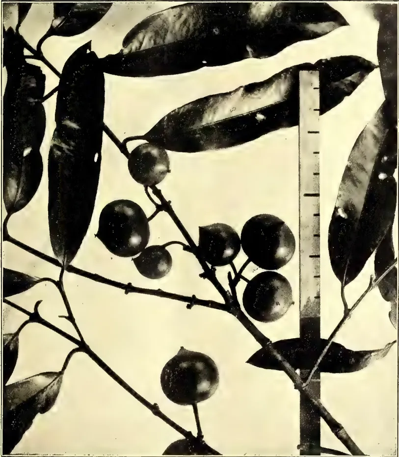
A black and white photograph of a plant branch. The branch has several large, dark, oval-shaped leaves with prominent veins. Attached to the branch are several round, dark fruits. A vertical ruler is placed next to the branch for scale. The background is light and plain.Photo by H. F. Macmillan.
GARCINIA XANTHOCHYMUS, Hk. f.
COCHIN GORAKA.
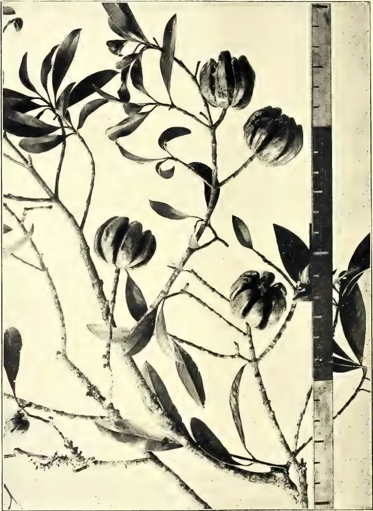
A black and white photograph of a branch of Garcinia cambogia (Sourwood). The branch features several large, lobed fruits and dark, oval leaves. A ruler is visible on the right side of the image for scale.GARCINIA CAMBOGIA, Desr.
GOBAKA.
Photo by H. F. Macmillan.
SEPTEMBER, 1908.]231Miscellaneous Products.Fruits are produced from the time the tree is 4 years old, and afterwards almost throughout the year, but the principal crop is yielded during December and January. The tree is naturally a heavy cropper, the numerous fruits sometimes almost weighing down the stiff branches. Some trees yield fruits of less acidity than others, and this fact encourages the hope that selection and high cultivation may render the Cochingoraka a very useful fruit for the tropics. The tree is known to the Sinhalese as Rata-goraka, and to the Tamils as Seemai-goraka. In Coorg it is called "Divarige," and in Bengal "Vate Mara."
The "Goraka" (Garcinia Cambogia), known to the Tamils as Korakkaipuli, is a moderate-sized handsome tree, with a round head and thin drooping branches. In its natural distribution it is confined to the moist low country of Ceylon, being also indigenous to certain moist districts in Western India. The fruit is distinct from all other species of Garcinia, being of the size of an orange, with several (6 to 8) vertical grooves forming as many blunt lobes. It has a smooth skin, orange yellow when ripe. The thick succulent shell is acid though not unpalatable; but its chief use to the natives is for flavouring curries. The fruit is in season in July, when it is collected and the thick fleshy shells (which are hard and woody in the Mangosteen) are dried in the sun and preserved for use as required. In this way they form an excellent substitute for limes. In the Kalutara district, especially, it is a common feature during June and July to see mats covered with split gorakas for drying before the native houses.
The "Goraka" tree will thrive from the sea-level up to about 2,000 feet in Ceylon, provided the annual rainfall is not much below 60 inches. Like all species of Garcinia it is of rather slow growth, but in time it attains a height of about 60 feet, and is probably the tallest species of the genus. It is a tree which should be preserved from extinction, and is well worth a place in a collection of tropical fruit trees. It is propagated from seed, which should be sown in rich porous soil in a moist shady corner. The seedlings when quite young should be transferred to bamboo pots or plant-baskets, i.e. if the seeds have not germinated in these. The "Goraka" tree, like all species of Garcinia, is characterised by a resinous juice which coagulates on exposure, when it is called gamboge; this is a valuable dye, and is used in European medicine,
H. K. MILLER AND A. W. BLAIR.
It would perhaps be difficult to say just when commercial fertilizers were first used for pineapples, but it is safe to say that they were not very extensively used before about 1890 or 1891; and in this connection it is interesting to note that the pineapple industry in Florida has had its growth largely since that time.
There is little doubt that Captain Richards, one of the pioneers of the pineapple industry on the East Coast, used commercial fertilizers as early as sometime in the '80's, though we have no record of any comparative tests so early as this.
Dr. L. C. Washburn, reporting from the Fort Myers sub-station in a bulletin* issued July 1st, 1891, says: "I would set the rows three feet apart, north and south, opened out with two furrows. I would put well rotted muck, marl, stable manure or sea grass freely in the trenches, and spade it up and mix well with the soil, pulled in from each side." And further along in the same report he says: "If planted with suckers, hoe in the fertilizers between the rows in six months, but if planted with slips, hoe in fertilizers between the rows in one year, so the feeder roots can reach it." However he does not tell us what kind of fertilizer he would use.
In 1892 Dr. Washburn began some comparative fertilizer tests at the Fort Myers sub-station, report of which is made in bulletin No. 27 Florida Experiment Station. These were not very successful, however, and appear to have been discontinued after the summer of 1894. In discussing the subject of fertilizers, Dr. Washburn says: "The pineapple is a voracious feeder. It requires heavy fertilizing; nitrogen, phosphoric acid and potash are all required in generous amounts. Perhaps the following manures are the best sources from which to obtain these requirements; poultry manure, stable manure, guano, blood and bone, bone meal, cotton-seed meal, acid phosphate, sulphate of potash, and well rotted muck. If compost is used, it should be well rotted and ready for assimilation. Compost undergoing fermentation will destroy the feeder roots."
* Bulletin No. 14, Florida Experiment Station, July 1st, 1891.
Miscellaneous Products.232[SEPTEMBER, 1908.On some of his experiment plots Dr. Washburn used a compost made as follows:—
| Dark Cotton-seed meal ... | 1,000 lbs. |
| Kainit ... | 500 " |
| Acid Phosphate ... | 500 " |
| Blood and Bone ... | 500 " |
| Cow Manure ... | 2,000 " |
On one of the plots receiving this compost at the rate of six tons per acre, more than half the plants were affected with "long leaf," which he attributes to fermentation of the compost. However, in the light of more recent experiments one would probably attribute some of the bad effects, at least, to the kainit and acid phosphate.
Another plot which received this compost, at the rate of two tons per acre, taken from the top of the pile, and in addition, a top dressing of hen manure, is reported as a complete success. Still another, which received five tons per acre and was mulched with salt marsh grass, proved a failure. A plot fertilized with cotton-seed meal one and one-half tons per acre, and kainit five hundred pounds per acre, is also reported as a failure. It is perhaps due Dr. Washburn to state that he expressed his disapproval of the above-mentioned compost for pineapples, and adds that it was not of his choosing.
Further comparative tests were not made until the winter of 1897-8, when a rather extensive experiment was begun by Professor P. H. Rolfs, then Biologist and Horticulturist to this Station, on the lands of Ballentine and Moore, at Jensen on the Indian River. The results of this experiment were published in bulletin No. 50* of the Station. The bulletin gives the general plan, details and results of the work, and conclusions which were drawn from the results. Different forms of phosphoric acid, nitrogen and potash were used alone and in combination. A study was made of the effect of fertilizers upon leaf area and upon freeze-resistance of the plants. A table of fruit picked from some of the plots in June 1889 is given. On the basis of the experiment the author suggests a plan for fertilizing pineapples in Florida and draws a number of conclusions, among which may be mentioned the following:—
"The fertilizers used to furnish ammonia stand in the following order, beginning with the best; (1) blood and bone, (2) nitrate of soda, (3) cotton-seed meal, (4) sulphate of ammonia."
* Pineapple Fertilizers, P. H. Rolfs, Florida Station, Bulletin No. 50.
"Potash salts stand in the following order: (1) potassium magnesium carbonate, (2) low grade sulphate of potash, (3) high grade sulphate of potash, (4) muriate of potash, (5) kainit."
"Bone meal is very much better than acid phosphate."
"A Fertilizer analayzing 4 per cent. ammonia, 6 per cent. potash and 1 per cent. phosphoric acid is nearer correct than the normal one taken as an arbitrary basis on which to begin work."
"There is a certain amount of ammonia, of potash and of phosphoric acid, which, if applied to the soil, proves of greatest benefit to the plants; any variation, either a decrease or an increase of any one or more of these fertilizers, will be disadvantageous."
"The amount of ammonia, of potash and of phosphoric acid which may be applied to the soil to produce the best results varies with the different sources from which it is obtained."
"There is a certain amount of ammonia of potash and of phosphoric acid which produces the greatest freeze-resistance in pineapple plants; any increase or decrease of anyone or more of the ingredients produces a less freeze-resistant plant."
"Freeze-resistance varies with sources from which the ammonia and potash are obtained."
The experiment was discontinued after about 18 months.
Fertilizer experiments conducted in Queensland* in 1899 indicated that pineapples were much benefitted by the application of a mixture of soluble nitrogenous and phosphatic materials, but contrary to the results obtained by the Fla. Station, up to that time, potash seemed to have little, if any, effect.
In Jamaica† experiments were carried on in six different localities, using from one to thirteen different fertilizer formulas in each case. In only one case was the addition of fertilizers to the soil found beneficial. In this case larger fruits of finer quality were obtained. An analysis of this soil indicated a low standard of fertility. The soil in the other cases appeared to be sufficiently fertile. In one of the experiments in which a test was made of the effect of fertilizers on "monstrous plants" the
* Queensland Agricultural Journal, 4 (1899), No. 6 pp. 472-473.
† Annual Report Department Public Gardens and Plantations and Board of Agriculture (Jamaica), 1903, pp. 16-19.
SEPTEMBER, 1908.]293Miscellaneous Products.results indicate that neither slag, superphosphate, mixed phosphate nor sulphate had any effect in checking the formation of such fruits. The fertilizers used in the experiments were sulphate of ammonia almost exclusively for nitrogen, superphosphate and steamed bone for phosphoric acid and sulphate of potash for potash.
H. H. Cousin* states that soil containing thirty times the amount of plant-food present in the Florida sands has been used for pineapples, in some instances, with the result that the plants made phenomenal growth of foliage, but scarcely any fruit. Nine-tenths of the plants were monstrosities. The fruits consisted of reduplicated crowns, and in some cases a mass of axillary leaf shoots.
Notwithstanding the small amount of experimental work that has been done on the fertilizing of pineapples, much progress has been made along this line during recent years, and very satisfactory results are being obtained by many of the growers. However, there still remains much to be learned, and it was with the hope of adding something to the knowledge already existing on this subject, that the Experiment Station, in co-operation with Hardee Bros., of Jensen, began, in 1901, an extensive fertilizer experiment, the results of which, up to the present time, will be reported in this bulletin as intelligently as possible.
The object of this experiment is to find out from what source or sources it is best to obtain fertilizing materials for pineapples; the proper quantity to use for the best results as regards quantity, quality, and shipping properties; best methods of applying; ratio of phosphoric acid, nitrogen and potash; the effect of shading, and to determine any other conditions which will prove of advantage to the industry.
In the spring of 1901, Hardee Bros. set aside for the use of the Station, under conditions presently to be named, about one acre of virgin spruce pine land. This was cleared, put into thorough condition and finally laid off into 96 plots, with alleyways between the plots. During August this was set with slips of the Red Spanish variety, this being the variety that is grown almost exclusively on the East Coast. The rows are twenty inches apart and the plants twenty inches in the row, with the size of the plots so arranged as to make just
100 plants in each plot; making 9,600 plants in the entire experiment. The size of the entire plot excluding alleyways, which are more numerous than would be found in an ordinary field, is about two-thirds of an acre and the size of each individual plot is 1-150 of an acre. Therefore, in calculating from one plot to rate per acre it is only necessary to multiply by 150. The entire plot was protected later by a shed of the usual type producing one-third shade. The shed extends out a little beyond the plot on all sides, and under this part of the shed is a border of pines separated from the experiment plot by the usual alleyways and fertilized as the owners of the land fertilize their general crop.
Samples of the soil and sub-soil were collected and analyzed in order that the fertilizer requirements might be better understood. The results will be found in Table 1.
TABLE 1.
ANALYSIS OF SOIL* AND SUB-SOILS
FROM EXPERIMENT PLOT.
| Substance. | Soil. | Sub-Soil. | Deep Sub-Soil. |
|---|---|---|---|
| %. | %. | %. | |
| Insoluble matter SiO2 | 99.3700 | 99.5670 | 99.2660 |
| Soluble Silica SiO2 | 00.0132 | 00.0162 | 00.0412 |
| Lime CaO | 00.0087 | 00.0000 | 00.0062 |
| Magnesia MgO | 00.0058 | 00.0049 | 00.0131 |
| Potash K2O | 00.0061 | 00.0048 | 00.0110 |
| Iron & Alumina Fe2O3, Al2O3 |
00.1700 | 00.1775 | 00.3693 |
| Phosphoric Acid P2O5 | 00.0087 | 00.0062 | 00.0194 |
| Sulphur Trioxide SO3 | 00.0000 | 00.0000 | 00.0000 |
| Volatile Matter | 00.4200 | 00.2480 | 00.3160 |
| Humus | 00.1500 | 00.1200 | 00.1300 |
| Nitrogen | 00.0100 | 00.0055 | 00.0050 |
The agreement entered into between the Station and Hardee Bros. was that the Station should plan and conduct the experiment, put up the shed, furnish the fertilizers mixed and bagged ready for the various plots, and have such fruit as might be required for analytical purposes. Hardee Bros. were to furnish the land, set out and cultivate the plants, apply the fertilizers under the direction of a representative of the Station, gather and keep count of the crop, and have such part of the crop as was not required by the Station for analytical purposes. It was mutually agreed that the experiment should run for at least five years.
Before deciding upon the ratio in which phosphoric acid, nitrogen and potash should be used in the fertilizers,
* For a discussion of pineapple soils, see Pineapple Culture 1. Soils. H. K. Miller and H. Harold Hume, Bulletin No. 68, Florida Experiment Station.
* Journal, Jamaica Agricultural Society 5, 1901, No. 10, pp. 403-405.
30 Miscellaneous Products.234[SEPTEMBER, 1908.analyses of the fruit and plant were made to determine the ratio in which these are present. While it is true that too much dependence cannot be placed in this method of determining the food requirements of plants and fruit, still it aids in estimating the amount of plant food removed by the crop, and, knowing this, it is less difficult to determine the requirements. The results of these analyses will be found in Table 2.
TABLE 2.ANALYSES OF THE PINEAPPLE—PLANT AND FRUIT.| Station No. | P2O5 | N. | K2O |
|---|---|---|---|
| %. | %. | %. | |
| Analyses of Fruit | |||
| (Fresh) ... | 1285 | ·0753 | ·0640 |
| 1325 | ·0591 | ·0931 | |
| 1330 | ·0446 | ·0910 | |
| 2565 | ·2930 | ·2630 | |
| Analyses of Plant | |||
| (Air Dried) ... | 1286 | ·8545 | ·5330 |
| 1326 | ·7975 | ·8300 | |
| 1·3000 | |||
| 1·3900 | |||
With the above analyses, and the practice of the more successful growers as a basis, it was determined that the ratio of the fertilizer constituents be as follows:—
| Phosphoric Acid | ... | ·80 |
| Nitrogen | ... | 1·00 |
| Potash | ... | 2·00 |
That is, these amounts in pounds were considered to be the normal annual requirements of 100 plants, as determined by analysis and experience. By reference to Diagram II., it will be seen that plot No. 2 of Section A., for example, is given this normal or standard amount, while plot 1 has one-fourth more than the standard, and plot 4, one-half more than the standard, or twice as much as plot 1, the object of this being to determine the quantity of plant-food that will give the best results, assuming that the ratio taken is the correct one. By a careful study of the diagram it will be seen that this plan has been followed with combinations of all the fertilizers that were considered most worthy of trial. (Ammonium sulphate, for example, was ruled out on the ground of former experience.) Bone meal, dried blood and high grade sulphate of potash were taken as the standard, or rather ideal materials. It should be noted that in reading from left to right on the diagram—with certain exceptions—the plots have identical amounts of the fertilizing elements, or plant food, the difference being in the sources from which they are derived. A few of the sections were introduced for special purposes and do not conform to this rule. For example, section F. is
intended to show whether the addition of lime to the standard ingredients, bone, blood and high grade sulphate of potash, will prove beneficial; section C. being the same with the exception of the lime. In the same way section K. is designed to show whether the addition of lime to acid phosphate, blood, and sulphate of potash will prove beneficial; section A. being the same with the exception of lime. Section L. was designed to find out what is likely to prove the best ratio for phosphoric acid, nitrogen and potash. On sections R. and S. bone was used as the only source of nitrogen, thus very materially increasing the amount of phosphoric acid added. In section V. the normal amount is kept constant, while the number of applications is varied, the intention being to determine the number of applications that will give the best results. Section W. is designed to determine if it is worth while to vary the ratio during the different stages of growth. For example, on plot 89 the ratio for the first and second applications was phosphoric acid 3 per cent., nitrogen 6 per cent., and potash 12 per cent.; for the third and fourth applications the ratio was phosphoric acid 4 per cent., nitrogen 4 per cent., and potash 12 per cent., and so on throughout the section. Section X. is the same as section C. with the exception that each plot in section X. received ten pounds additional bone meal at the beginning. The fertilizers were analysed at the Station, carefully weighed out and mixed, and the proper amount for each plot put into a separate bag before being shipped to Jensen.
It should be explained that in the case of fertilizers containing more than one of the three essential ingredients, as cotton-seed-meal, castor poonac and bone-meal, all of the ingredients were included in calculating the amount to be added. For example, where cotton-seed meal was used as the source of nitrogen, the amount of phosphoric acid in the required amount of cottonseed-meal was calculated, and this amount was taken into consideration when calculating the amount of bone or other substance supplying phosphoric acid. In the same way, when bone-meal was used with some other substance supplying nitrogen, as for example, nitrate of soda, the nitrogen of the bone-meal was taken into consideration when calculating the amount of nitrogen to be obtained from the nitrate of soda. Sections R. and S. however, are exceptions to this, inasmuch as they received the required amount of nitrogen in the form of bone-meal, and thus necessarily received more than the
SEPTEMBER, 1908.]235Miscellaneous Products.required amount of phosphoric acid. Diagram 11 indicates the quantities of fertilizers applied to the various plots, the amount there given being the amount for one year, and except where otherwise indicated this was given in four applications, the first year, as follows:—
| First Application | ...October 18th, 1901 |
| Second Application | ...March, 1902 |
| Third Application | ...July, 1902 |
| Fourth Application | ...November, 1902 |
In addition to this the plants were given a handful of cottonseed-meal in the bud about three weeks after setting out. The fifth application was made in April, 1903, and the sixth after the summer crop of 1903 had been removed. After this time, only two applications a year were made—except perhaps in the case of a few special plots—one in February or March as the conditions seemed to require, and the other soon after the gathering of the summer crop. After the crop of 1903 had been removed the plants appeared to be suffering from nitrogen, and they were given an application of cottonseed-meal, all plots being treated alike. Some other variations occurred which should be mentioned. On account of circumstances which could not be controlled, the regular summer application for 1904 was not made, and in order that the plants might not suffer, Hardee Bros. put on about 1,300 pounds bone, blood, and high-grade sulphate, analyzing 7 per cent. phosphoric acid, per cent. nitrogen, and per cent. potash. Two hundred pounds of land plaster was also added. This application was made on the 25th of August, 1904.
Beginning with the March application for 1905, some changes were made owing to the fact that in the case of certain plots all had been demonstrated that could be demonstrated, and it was unnecessary to continue them under those conditions. Among these may be mentioned sections A. and B. where the plots received acid phosphate without lime; section N. on which acid phosphate and nitrate of soda were both used; section Q. on which nitrate of soda was used as the only source of nitrogen, and sections R. and S. on which bone was used as the only source of nitrogen. On sections A. and B. the acid phosphate was replaced by bone and slag respectively, with the idea of finding out if either of these materials would tend to counteract the injurious effects produced by the acid phosphate. It may be stated here that these injurious effects have been marked almost from the beginning. On these
plots there has been a decided tendency to "spike" or "long leaf," and the plants have never had that healthy, vigorous appearance which has characterised many of the plots. On the other hand, section K., which received the same fertilizers and in the same amounts as section A., and lime at the rate of 750 pounds per acre in addition, has all the while been one of the most promising sections, and in general appearance and productiveness, ranks well up to the section that has been considered the best. Sections N. and Q. had been so badly injured and given such unsatisfactory results, the first as a result of using acid phosphate and nitrate of soda, and the second as a result of using nitrate of soda, that beginning with the spring application for 1905 they were entirely dropped from the experiment. Here, too, the injurious effects were noted early in the experiment, and the plants have gone from bad to worse. A fact that has been especially noticeable in these two sections is that, as the fertilizers were increased, the injurious effects upon the plants seemed to be increased. There was a tendency to "spike," and the plants seemed lacking in vigour and healthy appearance.
The early records of section Q., however, indicate that it started off well, showing the usefulness of nitrate of soda for getting plants started to growing, but the later records show a gradual falling off as noted above. Nitrate of soda, too, seems to produce a fruit of green colour which does not ship well, becoming soft and decaying rapidly, and there is also a tendency for the fruit to "plug" or break off too far up in the base of the pine, thus causing early decay. In the case of sections R. and S. where bone was used as the only source of nitrogen, it became evident that this combination would not be practicable as a pineapple fertilizer, since nitrogen obtained in this way is too expensive. The results obtained from section R. where muriate was used would also indicate that this combination is not adapted to pineapples, even though it should not prove too expensive.
These two sections might have been discarded altogether, but for the fact that it was desired to see what would be the effect of furnishing nitrogen in the form of cottonseed-meal for a time, without adding any further phosphoric acid. It was thought that this would give an opportunity to see how long the effects of the excess of phosphoric acid which had been added could be observed. The applications of lime have not
Miscellaneous Products.236[SEPTEMBER, 1903.been made to sections F. and K. this year, the plots appearing not to need further lime at present.
Notes were taken on the growth' general progress and appearance of the plants at several different times during the past four years, and while it will not be advisable to incorporate all of these notes in a bulletin, still it is possible to give a brief general summary of the records. These records, taken in connection with the results from the crops, will form the basis of conclusions to be drawn and recommendations to be made.
Sections A. and B. were treated alike, except that A. received high grade sulphate and B. muriate. As already noted, both received acid phosphate, and as shown by the notes, there has been a tendency to "spike," and the plants have lacked that healthy appearance which a normal plant should have. This condition has been attributed to the acid phosphate, and when we compare these sections with others treated in the same way except as regards source of phosphoric acid, and also with section K. which received acid phosphate but in addition 750 pounds of lime to the acre, and when we further consider the general experience of many of the growers, we are forced to accept this as the explanation of the poor showing which these sections have made. Of the two sections A. has given better results than B. which emphasizes the superiority of the sulphate over the muriate.
Sections C. and D. were treated alike except in source of potash, C. receiving high grade sulphate and D. muriate. They have both made good progress and have been reported from time to time as "good" sections, the term "fair," however, having been applied to some of the plots of D. occasionally. In general appearance and for the most part in crop returns, C. has given the best results: again indicating the superiority of the sulphate over the muriate.
Sections E., F. and G. received bone and dried blood, and low grade sulphate, high grade sulphate and kainit respectively as the source of potash. Section E. has made good progress and has been reported as "good" and even sometimes as "excellent," and if we compare the number of fruits taken from this section with the number taken from other sections we also find that the results are good. Section F. received
the same as section C., and in addition 750 pounds of lime per acre. It has made good progress and has been reported as "good," and sometimes as "very good," but if we judge by the fruit produced C. has given better results than F., which would indicate that lime is not required with these ingredients. The injurious effects of the kainit on section G. have been very apparent all the while. This is even more clearly emphasized by a study of the tables giving the results of the crops. It seems reasonable to attribute the injurious effects to the chlorides in the kainit, inasmuch as muriate also does not seem to be a suitable form in which to apply potash.
Sections H., I. and J. received slag and dried blood and muriate, high grade sulphate, and kainit respectively as the source of potash. They are all good sections, and the plants have, during the greater part of the experiment, had a strong, healthy appearance, with little or no tendency to "spike." Section I., however, is and has been better than the other two, and has been reported from time to time as the best section in the entire plot. A careful study of the tables in Diagram III. will emphasize this fact. The number of pines obtained from this section has not always been the largest, but when total numbers, number of the larger sizes and general progress are all taken into consideration, we are safe in saying that this has been the best section. It should be observed that this section received the standard formula, with the phosphoric acid supplied from slag (odourless slag phosphate, or Thomas slag) instead of bone. Other sections in the experiment received slag, but no others received both dried blood and high grade sulphate in addition. The section receiving muriate did better than the one receiving kainit, but not so well as the one receiving high grade sulphate.
Section K. as mentioned under the head of special sections, was designed to determine whether lime would have a tendency to correct the injurious effects of acid phosphate. So far, the results decidedly indicate an affirmative answer. The plants have maintained a splendid condition and have given good results as compared with other sections from the very beginning. At times it has been difficult to detect much difference between this section and section I., which has been regarded as the best. It is not an easy matter to say why the acid phosphate has an injurious effect upon pineapples, nor to say in what way the lime prevents or corrects this. The most satisfactory explanation we can offer is that ordinary
SEPTEMBER, 1908.]237Miscellaneous Products.acid phosphate contains sulphates of iron and aluminum, and it is really the presence of these astringent salts which causes the injury. This view seems the more correct when it is known that acid phosphate derived from bone black has no injurious effect on pineapple plants. The application of lime with the acid phosphate converts these injurious sulphates into harmless insoluble oxides. It is perhaps well to caution against the use of dissolved bone black, inasmuch as in many cases, high grade acid phosphate, coloured with charcoal, is on the market in imitation of the dissolved bone black. It is well for one not experienced in the chemistry of fertilizers to use no form of acid phosphate whatever for pineapples, but rely upon bone meal or slag. This explanation of the cause of the injurious effects of acid phosphate on pineapple plants is not given as a fact which has been fully demonstrated, but as what seems to be the most plausible explanation with the evidence that is before us.
Section L. was designed to find out what is likely to prove the best ratio for phosphoric acid, nitrogen and potash, the four plots receiving the same kind of fertilizer, but in different ratios. The notes taken on this section from year to year show that it has been a good section and that the plots have been fairly uniform in size, though the third plot, No. 47, is recorded as being just a little better than the others, and it is of interest to note that the ratio of phosphoric acid, nitrogen and potash on this plot approaches very nearly the ratio adopted for the experiment, and further, as will be shown later, the amount per acre—3,750 pounds—is the same as the amount that has given the best results in general.
Section M. is recorded as a good uniform section, and has given results that compare very favourably with the best.
Section N., as already noted, has been discontinued on account of the injurious effects of the acid phosphate and nitrate of soda. It started off well but soon manifested a tendency to "spike," which tendency has been more or less apparent during the entire time.
Section O. has given good results, and the plants have been fairly uniform, with a healthy, vigorous appearance. A comparison between the results from this section and section M., which differs from it only in the source of phosphoric acid, M. receiving bone and O. slag, will show that O. has given practically the same results.
Section P. has given good results, though the injurious effects of the nitrate of soda have been noted to some extent. The fact that a part of the nitrogen was derived from the bone meal tends to make these injurious effects less than where nitrate of soda is used as the only source of nitrogen.
Section Q. has also been discontinued for the reason just suggested, that is, that nitrate of soda when used in sufficient quantity to furnish all the nitrogen proves injurious both to the plants and to the shipping qualities of the fruit. This section started off well, indicating that the formula may be suitable for getting young plants started to growing. [For notes on sections R. and S. see notes on page 420.]
Section T. has been recorded as a good section, with healthy, vigorous plants. The results as shown by the crops compare favourably with some of the sections that have been classed among the best.
Section U. has been a very uniform section throughout, with healthy plants, though the results, when judged by the crop as given in the tables, do not indicate that dissolved bone black could replace bone meal or slag as a source of phosphoric acid.
The notes which have been taken on V. and W. from time to time state that these sections are quite uniform throughout, there being scarcely a perceptible difference between the various plots of the two sections. However, an examination of the tables of results will show that the crops obtained from these sections do not exceed the crops from sections treated with the same fertilizers, but which received only the two applications per year without variations. This would seem to indicate that increasing the number of applications per year beyond two, or three, at the most, and that varying the ratio of the fertilizing ingredients with the different applications, as was done on section W.* are not necessary after the first year.
Section X. received the same treatment as section C., except that each plot received ten pounds extra bone meal at the beginning. The section has been a good one, and the plants have been fairly uniform and in a healthy condition all the time. However, the extra bone does not seem to have given it any advantage over those fertilized in the same way but without the extra bone.
* Beginning with 1905 the number of applications for this section was reduced to two.
Miscellaneous Products.238[SEPTEMBER, 1908.A STUDY OF THE CROP FOR 1903.The first crop was gathered in June and July of 1903, and was about 88 per cent. of the total possible crop. Diagram III. gives the total number, and number of different sizes of pines taken from each plot; the total number in the sections; and the total number in the plots occupying relatively the same position in the sections counting from left to right across the entire plot, for the years 1903, 1904 and 1905. A careful study of the crop for 1903 will yield some very interesting results. In at least half the sections there is a slight increase in the total number of pines from the first to the third plot of the sections. On the other hand there is but little difference between the number obtained from the third and fourth plots of the sections, indicating, it would seem, that the limit of amount of plant-food has been reached with the quantity applied to the third plot in each section, this amount as already stated being the same for all plots occupying the same relative position in the sections, reading from left to right. As further proof of this, the plants of the third plot in the sections have almost uniformly appeared as large, strong and healthy as those of the fourth plot, and in some instances they have been superior. By again referring to Diagram
II. it will be seen that the third plot in all the sections, except those introduced for special purposes, received each year the equivalent of 3,750 pounds per acre of a fertilizer analyzing 4 per cent. available phosphoric acid, 5 per cent. nitrogen and 10 per cent. potash, but in most cases representing a different source for at least one of the constituents. From the same diagram it will be seen that the fourth plot of the sections received 4,500 pounds per acre of the same fertilizer. Judging, therefore, by the general appearance, and also from the results obtained from the plots, we are ready to conclude that 3,750 pounds per acre, of a fertilizer analyzing as above, about approaches the limit for profitable results.
And as we have already shown by section L., plot 47, that a mixture of bone, blood and high grade sulphate, with a percentage very closely approaching the 4, 5, 10 percentage which was adopted as the standard, and 3750 pounds to the acre, gave slightly better results than any of the other percentages tried, it seems safe to conclude that on the third plot of the sections we have the quantity and percentage of a fertilizer that will, in general, give the best results with pineapples on the East Coast of Florida, the proper materials, of course, being selected.
TABLE III.SHOWING INCREASE OF 24'S AND DECREASE OF 42'S AS FERTILIZER IS INCREASED—CROP OF 1903.
| Section A. | Section B. | Section C. | Section D. | Section E. | Section F. | Section G. | ||||||||||||||
|---|---|---|---|---|---|---|---|---|---|---|---|---|---|---|---|---|---|---|---|---|
| Plot | 24's | 42's | Plot | 24's | 42's | Plot | 24's | 42's | Plot | 24's | 42's | Plot | 24's | 42's | Plot | 24's | 42's | Plot | 24's | 42's |
| 1 | 6 | 18 | 5 | 1 | 25 | 9 | 4 | 17 | 13 | 0 | 43 | 17 | 2 | 42 | 21 | 4 | 30 | 25 | 5 | 24 |
| 2 | 6 | 8 | 6 | 1 | 2 | 10 | 7 | 9 | 14 | 2 | 11 | 18 | 11 | 22 | 6 | 2 | 26 | 6 | 8 | |
| 3 | 33 | 0 | 7 | 21 | 6 | 11 | 11 | 6 | 15 | 10 | 0 | 19 | 44 | 0 | 23 | 5 | 17 | 27 | 3 | 10 |
| 4 | 38 | 0 | 8 | 28 | 0 | 12 | 30 | 0 | 16 | 7 | 7 | 20 | 31 | 0 | 24 | 18 | 0 | 28 | 6 | 9 |
| Section H. | Section I. | Section J. | Section K. | Section L. | Total. | Total. | ||||||||||||||
| Plot | 24's | 42's | Plot | 24's | 42's | Plot | 24's | 42's | Plot | 24's | 42's | Plot | 24's | 42's | 24's | 42's | ||||
| 29 | 5 | 23 | 33 | 9 | 10 | 37 | 1 | 19 | 41 | 7 | 2 | 45 | 1 | 2 | 45 | 255 | ||||
| 30 | 9 | 4 | 34 | 22 | 0 | 38 | 5 | 0 | 42 | 22 | 0 | 46 | 8 | 1 | 105 | 47 | ||||
| 31 | 15 | 0 | 35 | 50 | 0 | 39 | 8 | 0 | 43 | 39 | 0 | 47 | 38 | 0 | 277 | 39 | ||||
| 32 | 16 | 1 | 36 | 36 | 0 | 40 | 17 | 0 | 44 | 29 | 0 | 48 | 21 | 0 | 279 | 17 | ||||
| Section M. | Section N. | Section O. | Section P. | Section Q. | Section R. | Section S. | ||||||||||||||
| Plot | 24's | 42's | Plot | 24's | 42's | Plot | 24's | 42's | Plot | 24's | 42's | Plot | 24's | 42's | Plot | 42's | 42's | Plot | 24's | 42's |
| 49 | 22 | 8 | 53 | 27 | 12 | 57 | 7 | 18 | 61 | 8 | 16 | 65 | 14 | 7 | 69 | 0 | 5 | 73 | 1 | 34 |
| 50 | 11 | 11 | 54 | 31 | 0 | 58 | 27 | 5 | 62 | 17 | 7 | 66 | 25 | 4 | 70 | 1 | 27 | 74 | 0 | 13 |
| 51 | 25 | 9 | 55 | 32 | 5 | 59 | 35 | 4 | 63 | 39 | 2 | 67 | 44 | 3 | 71 | 3 | 18 | 75 | 7 | 14 |
| 52 | 15 | 2 | 56 | 35 | 2 | 60 | 30 | 0 | 64 | 37 | 0 | 63 | 59 | 0 | 72 | 4 | 7 | 76 | 8 | 4 |
| Section T. | Section U. | Section V. | Section W. | Section X. | Total. | Total. | ||||||||||||
|---|---|---|---|---|---|---|---|---|---|---|---|---|---|---|---|---|---|---|
| Plot 24's 42's | Plot 24's 42's | Plot 24's 42's | Plot 24's 42's | Plot 24's 42's | 24's | 42's | ||||||||||||
| 77 | 26 | 10 | 81 | 11 | 0 | 85 | a | a | 89 | a | a | 93 | 8 | 21 | 124 | 131 | ||
| 78 | 19 | 6 | 82 | 26 | 0 | 86 | a | a | 90 | a | a | 94 | 5 | 8 | 165 | 81 | ||
| 79 | 18 | 6 | 83 | 40 | 7 | 87 | a | a | 91 | a | a | 95 | 19 | 7 | 262 | 75 | ||
| 80 | 29 | 0 | 84 | 43 | 0 | 88 | a | a | 92 | a | a | 96 | 9 | 10 | 269 | 25 | ||
a Special Plots.
Table III, which shows the increase in 24's and decrease in 42's, as the fertilizer is increased, still further emphasizes this fact. For example, by reference to the table it will be seen that the total number of 24's in the third plots of the upper sections is 277, while the total number in the fourth plots, which received one-fifth more fertilizer than the third, is exactly the same—277. In the lower half, the total 24's in the third plots of the sections is 262, while in the fourth it is 269—only 7 more. A further study of this table will reveal the rapid increase of 24's from the first to the third plots of nearly all the sections, but as already pointed out this increase does not extend to the fourth plots in very many cases, while in some instances there is actually a decrease. On the other hand there is a decrease in 42's which is very decided from the first to the second plots of the sections but more gradual from the second to the fourth.
Assuming that the total number of pines on the third horizontal line of plots would have been the same as the total number on the first line, had the fertilizer not been increased on the third, we have a basis for calculating the increase in crop value due apparently to the quantity of fertilizer which was added to the third line of plots above that which was added to the first. By referring to the first column headed total in Table III., and taking the sum of the total number of 24's from the third line of plots, both upper and lower sections, it will be found to be 530, while the total from the first line of plots, both upper and lower sections is 169, giving an increase on the 22* plots apparently due to increase in fertilizer, of 370 pines or about 15½ crates. Since these plots are 1-150 of an acre the increase is at the rate of 105 3-5 crates per acre, which, at $1.65† per crate would amount to $174.24. Again, referring to the same
table it will be seen that the 42's have decreased from a total of 386 in the first line of plots to 114 in the third line, making a loss of 272 pines or 6½ crates for the 22 plots, which is at the rate of 44 1-3 crates per acre, which at $1.10 would be worth $48.67. Subtracting this from $174.24 we have $125.47 gain, due apparently to increasing the number of 24's by increasing the fertilizer about 3-4 of a ton per acre. To get the net gain we have but to deduct from this the cost of the extra fertilizer. Calculating the cost of the extra fertilizer added to the third line of plots, above what was added to the first, on the basis of the cost of the raw materials at the factory, we find it to be $3.88 for the 22 plots, which is at the rate of $26.45 per acre. Deducting this from $125.47 leaves us a gain of $99.02. From this must still be deducted the cost of mixing and the freight rate from Jacksonville to the pineapple district, and this would be, according to statement furnished by a manufacturer, $3.79 per ton; and since the extra fertilizer required amounts to about 3-4 of a ton, this change would be $2.85. Deducting this from $99.02 would leave us a net profit per acre on the 24's of $96.17.* In the same way it may be shown that the increase in value of the 30's above the decrease of 36's is about $11.80, and this is net gain, the fertilizers having already been accounted for. This makes the total net gain $107.97. The gain in 18's was so slight that they were not taken into consideration in this case. But this does not represent the entire possible gain, since in an experiment some fertilizers are used in order that their unfitness for the particular crop may be demonstrated, and the results from such plots are necessarily lower than they would be under ordinary circumstances. This can be demonstrated by calculating the increase in value on one of the best plots. On examination we find that plot 19 of
* Sections V. and W. being intended for special purposes have been omitted from this count.
† An experienced grower estimates that taking a series of years 18's would bring $1.80, 24's and 30's $1.65, 36's $1.30, and 42's $1.10 per crate.
* In making these calculations we have made them for the average year and not for the first crop, which would require a little more extra fertilizer than the ¾ ton provided for.
Miscellaneous Products.240[SEPTEMBER, 1908.section F. has yielded a greater increase with increase of fertilizer than any other plot, as follows:—
| Value. | |
|---|---|
| 42 24's equivalent to 262½ crates per acre at $1.65 | ... $433.12 |
| 17 30's equivalent to 85 crates per acre at 1.65 | ... 140.25 |
Total gain on 24's and 30's ... 347½ crates $573.37
The decrease in 36's and 42's is as follows:—
| Value. | |
|---|---|
| 8 36's equivalent to 33½ crates per acre at $1.10 | ... $43.33 |
| 42 42's equivalent to 150 crates per acre at $1.10... | ... 165.00 |
Total loss on 36's and 42's ... 183½ crates $208.33
Subtracting this from $573.37 gives us a gain per acre of $365.04. To get the net gain we must still deduct from this the cost of the extra fertilizer per acre, including the cost of mixing and the freight from Jacksonville, which for the materials used on this plot (see Diagram II., plot 19) would be $25.83 (a little less than the average extra expense on the 22 plots), and this leaves $339.16 clear gain per acre, obtained by increasing the fertilizer from 2,250 to 3,750 pounds. In this connection it will be of interest to learn which section* and which plot† have given the largest gross returns. On calculating the yield per section to yield per acre we find that section I. which received slag phosphate, blood and high grade sulphate gave the largest returns, as follows:—
| 117 24's equivalent to 182.8 crates per acre at $1.65 | ... $301.62 |
| 176 30's equivalent to 220.0 crates per acre at 1.65 | ... 363.00 |
| 83 36's equivalent to 86.46 crates per acre at 1.30 | ... 112.40 |
| 10 42's equivalent to 9.00 crates per acre at 1.10 | ... 9.90 |
| Total ... | 498.26 crates $786.92 |
That is, section I. has yielded at the rate of nearly 500 crates per acre which, at the price assumed, would amount to $786.92. But the four plots of this section, as already explained, received their fertilizer in gradually increasing amounts, beginning with the first, and consequently this amount does not represent the yield per acre from the best
* To convert number per section to crates per acre, multiply by of 150 or 37.5 and divide by the size.
† To convert number per plot to crates per acre, multiply by 150 and divide by the size.
plot. On examination it is found that plot 35, the third in section I., has given larger total returns than any other plot in the entire experiment as follows:—
| 50 24's equivalent to 312½ crates per acre at $1.65 | ... $515.625 |
| 35 30's equivalent to 175 crates per acre at 1.65 | ... 288.750 |
| 12 36's equivalent to 50 crates per acre at 1.30 | ... 65.000 |
Total ... 537½ crates $869.375
Plot 36 the fourth of the same section, gives the following results:—
| 3 18's equivalent to 25 crates per acre at $1.80 | ... $45.00 |
| 36 24's equivalent to 225 crates per acre at 1.65 | ... 371.25 |
| 39 30's equivalent to 195 crates per acre at 1.65 | ... 321.75 |
| 22 36's equivalent to 91.66 crates per acre at 1.30 | ... 119.16 |
Total ... 536.66 crates $857.16
This bears out the statement already made that the limit of profitable fertilizing has been reached with the amount applied to the third plot of the sections.
Plot 47, section I., also furnishes some interesting facts. It will be remembered that this section was introduced for the purpose of ascertaining what is likely to prove the best raito for phosphoric acid, nitrogen and potash. Already we have seen that the third plot of this section received these constituents in a ratio which more closely approaches the 4, 5, 10 raito adopted for the experiment, than any of the other plots of this section, and also that it received the fertilizer at the rate of 3,750 pounds per acre, which is the amount that has in most cases given the best results.
And now in the crop from this plot we have still further evidence on this point. We find on examination that it has yielded larger returns than any other plot of the section, and that it is not very far behind plots 35 and 36 of section I. The results are as follows:—
| 38 24's equivalent to 237½ crates per acre at $1.65 | ... $391.875 |
| 49 30's equivalent to 245 crates per acre at 1.65 | ... 404.250 |
| 9 36's equivalent to 37½ crates per acre at 1.30 | ... 48.750 |
| Total ... | 520 crates $844.87 |
To return again to the yield per section, we find that several others approach very closely the yield of section I. as follows:—
| Value. | |
|---|---|
| Section T. at the rate of 487.76 crates per acre | ... $771.03 |
| Section P. at the rate of 483.62 crates per acre | ... 769.72 |
| Section E. at the rate of 488.55 crates per acre | ... 766.25 |
| Section M. at the rate of 484.84 crates per acre | ... 763.94 |
| Section O. at the rate of 488.59 crates per acre | ... 763.30 |
| Section Q.* at the rate of 474.28 crates per acre | ... 756.40 |
| Section U. at the rate of 475.00 crates per acre | ... 750.00 |
| Section V. at the rate of 472.00 crates per acre | ... 740.33 |
Computing the value of two of the poorest sections we find them to be as follows:—
| Value. | |
|---|---|
| Section B. at the rate of 283.95 crates per acre | ... 428.44 |
| Section R. at the rate of 324.44 crates per acre | ... 483.05 |
Computing the value of the poorest plot—plot 69 Section R.—we find it to be as follows:—
| Value. | |
|---|---|
| 24 30's equivalent to per acre at $1.65 | 120 crates ... $198.00 |
| 5 42's equivalent to per acre at 1.10 | 17.86 crates ... 19.94 |
| Total..... | 137.86 crates $217.64 |
Comparing the best and poorest sections and the best and poorest plots we have the following results:—
| Vaule. | |
|---|---|
| Best section—I | 498.26 crates |
| per acre | ... 786.92 |
| Poorest section—B | 283.31 crates |
| per acre | ... 422.44 |
| Difference | 214.95 crates |
| per acre | ... $358.38 |
| Best plot—plot 35 | 537.50 crates |
| per acre | ... 869.375 |
| Poorest—plot 69 | 137.85 crates |
| per acre | ... 217.640 |
| Difference | 399.64 crates |
| per acre | ... 651.735 |
We believe, therefore, that the experiment fully demonstrates that there is good profit to those growing pineapples undershade on the East Coast, in applying as high as the equivalent of 3,750 pounds per acre of a fertilizer analyzing 4 per cent. phosphoric acid, 5 per cent. nitrogen, and 10 per cent. potash, but that beyond this amount there is but little if any profit. Just how far this will apply to pineapples grown in the open we cannot say, though it seems to be generally conceded that less fertilizer is required under sheds than in the open, and, this being the case, it is quite possible that the amount to be used in the open might profitably be increased beyond the amount here specified for sheds.
No such decisive conclusions can be drawn from the crops of 1904 and 1905, but this is undoubtedly due to causes other than fertilizers. The shortness of the crop for 1904 may possibly be attributed to the fact that the plants were somewhat exhausted from having yielded so full a crop in 1903. Certainly the fact that in many cases the plots receiving the least fertilizer gave the largest yield, would indicate that it was not want of fertilizer that caused the short crop. It would hardly seem fair to undertake to draw many conclusions from a crop which is less than one-third of a total possibility. Unfortunately, we failed to get a record of the fall and winter crop for either 1903 or 1904. Could this crop have been added to the summer crop for 1904, it is quite possible that the showing would have been different, as we would naturally expect so small a summer crop to be followed by a heavy fall and winter crop. The fall and winter crop for 1903 was small on account of the heavy summer crop, and therefore would not have materially affected the total.
The freeze of February, 1905, explains the shortage of the crop for this year, and again it would seem unfair to draw many conclusions, for undoubtedly the fertilizers had little to do with the falling off. At the same time a careful count will show that the number of 24's has been considerably increased on many of the plots as the fertilizer was increased, while the 42's were decreased but slightly. In the upper half of the plot (see Diagram III., crop of 1905), it will be noticed that the total number of pines has increased from the first to the third line of plots, while in the fourth the total is less than in the third line,
*Since the gathering of the first crop this section has deteriorated very greatly.
31 Miscellaneous Products.242[SEPTEMBER, 1903.again emphasizing the fact that the limit of profitable fertilizing has been reached with the third line. In the lower half of the experiment plot, there is a gradual decrease in the total from the first to the fourth line, but this may possibly be accounted for from the fact that several of these plots received fertilizers that proved injurious, and as the amount was increased the injurious effects were more pronounced.
A study of the table will bring out some other interesting facts. Sections A, and B., both of which received acid phosphate up to this year, each yielded less than 100 pines, while section K. which received the same treatment and lime in addition yielded 162 pines, an increase of over 60 per cent.; this section produced the highest number of 24's. Section U., which was fertilized with dissolved bone black, dried blood and high grade sulphate gave the highest yield for this year, 168, while sections H. and I. with 152 and 153 respectively, and which received their phosphoric acid in the form of slag, closely follow section K. Section O., which also received slag is next, with 147. Sections G. and J., both of which received kainit, yielded less than ten 24's, while section S. yielded only one.
After the freeze of February, 1905, the experiment plot was carefully examined, first by Mr. W. R. Hardee and later by one of us (Blair) to see whether plots fertilized differently had been differently affected, but no marked difference could be detected. True, some of the plots looked worse than others, but they were the plots that had already been injured by the treatment they had received. Practically no difference, so far as the effect of the freeze was concerned, could be detected in the condition of those plots which had responded well to the treatment they were receiving.
Although the crop for this year was very much reduced, this statement is well borne out by the results. A further examination of the table reporting the crop for 1905 shows very clearly that the most of those plots which have already been reported as injured by the treatment they were receiving, for example sections A., B., G., J., R. and S., gave the lowest total number of fruits, or a very small number of the larger sizes, or both. Neither were we able to detect any difference in the effect upon those plots which received phosphoric acid, nitrogen and potash in varying ratios.
It was assumed that an average of and of the total phosphoric acid in bone meal is available.
According to the method used for determining the available phosphoric acid in slag, approximately of the total is available.
Slag tends to produce a rank growth of plants, and it is possible that if a part of the slag should be replaced with bone meal better results would be obtained than with either alone.
While land plaster was not used in this experiment, except for one application, it is used by a number of the growers with good results. The claim is made that it tends to aid in fixing the nitrogen of organic fertilizers, such as dried blood and cotton-seed meal. It is considered especially helpful in this respect if these organic fertilizers are applied during a dry spell. This claim is borne out by the work of a German investigator.* He finds that land plaster not only assists in the rotting of manure, but that it also fixes or holds much ammonia that would otherwise escape. The conditions under which this investigator worked are, of course, not the conditions which exist in the pineapple belt, but it is not at all unlikely that the same chemical reactions take place. Those growers who have used land plaster put on about 200 pounds per acre.
An effort was made, by analysis, to find out whether the fruit would show an increase in the elements of plant food as the fertilizers were increased, but the method of taking the samples tended to vitiate the results. It was not possible to make a composite sample of all the fruit from each plot, and to take two or three fruits from a plot, as was done, probably does not give average results. The results obtained do not warrant us in drawing any conclusions in regard to the relation which exists between the plant food in the soil and in the fruit. Indeed, it is quite possible that increasing the amount of plant food in the soil may not affect the quantity to be found in the fruit, but only that in the plant. The results are of interest as showing the amount of plant food removed by the fruit and will be found in Table IV. Given the weight of a crate of pineapples, and the number of crates per acre, it is a simple matter to calculate the plant food removed by a crop of pineapples.
*S. A. Sewerin, Gips als ammoniakbindende Substanz bei der Verrottung des Stallmistes. Centralblatt für Bakteriologie, Par. u. Infek. XI. Bd., Nos. 12-13 und 14-15.
SEPTEMBER, 1908.]243Miscellaneous Products.ANALYSES OF PINEAPPLES FROM EXPERIMENT PLOT SHOWING PHOSPHORIC ACID, NITROGEN AND POTASH IN THE ORIGINAL FRUIT.
| Station No. | P2 O5 Per cent. | N Per cent. | K2 O Per cent. |
|---|---|---|---|
| 1494 | ·0368 | ·0767 | ·2432 |
| 1495 | ·0418 | ·0688 | ·2201 |
| 1496 | ·0391 | ·0676 | ·1838 |
| 1497 | ·0374 | ·0883 | ·2281 |
| 1498 | ·0375 | ·0641 | ·2092 |
| 1499 | ·0358 | ·0647 | ·2085 |
| 1500 | ·0402 | ·0630 | ·2315 |
| 1501 | ·0344 | ·0657 | ·2283 |
| 1502 | ·0409 | ·0674 | ·2458 |
| 1503 | ·0462 | ·0688 | ·2136 |
| 1504 | ·0471 | ·0835 | ·2049 |
| 1505 | ·0410 | ·0694 | ·2095 |
| 1506 | ·0420 | ·0781 | ·2182 |
| 1507 | ·0484 | ·0859 | ·2138 |
| 1508 | ·0369 | ·0727 | ·1883 |
| 1509 | ·0369 | ·0795 | ·2010 |
| 1510 | ·0381 | ·0710 | ·2187 |
| 1512 | ·0434 | ·0666 | ·2148 |
| 1518 | ·0433 | ·0757 | ·2545 |
| 1519 | ·0421 | ·0929 | ·2475 |
| 1520 | ·0390 | ·0669 | ·2197 |
| 1521 | ·0426 | ·0736 | ·2361 |
| 1522 | ·0390 | ·0765 | ·2288 |
| 1523 | ·0401 | ·0706 | ·2384 |
| 1524 | ·0417 | ·0605 | ·2330 |
| 1526 | ·0339 | ·0580 | ·1980 |
| 1527 | ·0404 | ·0621 | ·2470 |
| 1531 | ·0395 | ·0633 | ·2179 |
| 1532 | ·0455 | ·0760 | ·1822 |
| 1534 | ·0522 | ·0704 | ·2198 |
| 1537 | ·0508 | ·0648 | ·2283 |
| 1538 | ·0497 | ·0650 | ·2347 |
| 1539 | ·0386 | ·0638 | ·2474 |
| 1540 | ·0429 | ·0691 | ·2111 |
| 1541 | ·0563 | ·0742 | ·2581 |
| 1542 | ·0392 | ·0667 | ·2177 |
| 1543 | ·0432 | ·0662 | ·2513 |
| 1544 | ·0477 | ·0650 | ·2716 |
| 1545 | ·0482 | ·0796 | ·2585 |
| 1551 | ·0430 | ·0692 | ·2312 |
| 1552 | ·0450 | ·0697 | ·1955 |
| 1553 | ·0429 | ·0680 | ·2876 |
| 1554 | ·0443 | ·0789 | ·2320 |
| 1555 | ·0451 | ·0698 | ·2553 |
| 1556 | ·0416 | ·0703 | ·1868 |
| 1557 | ·0398 | ·0658 | ·2090 |
| 1558 | ·0429 | ·0664 | ·2244 |
| 1559 | ·0451 | ·0724 | ·2259 |
| Average | ·0423 | ·0707 | ·2256 |
Some work has also been done looking towards ascertaining whether increasing the fertilizers has any effect upon the sugar and acid content of the pineapple, but this work is not yet complete.
For the beginner in pineapple growing there will be many details which must be learned by experience or from the practical grower. The experimenter
is, of necessity, obliged to content himself largely with working out general principles, since different localities and different individuals require that different methods be employed in executing many of the minor details in almost all agricultural pursuits.—Bulletin No. 83, Florida Agricultural Experiment Station, February, 1906, pp. 411-435.
THE SEED OF NYMPHÆA LOTUS.*
BY C. K. SUBBA RAO.
The seed of Nymphaea Lotus, which is very plentiful in the Koller Lake, is known in the Kistna District, Madras, as Allyalu, the whole plant being called Alli. The plant occurring in the Koller Lake bears white flowers. It is met with, though not abundantly, in other parts of the Presidency. While the seed and the fleshy root of the plant are used as articles of diet by the lower classes of people inhabiting the villages bordering on the Koller Lake, their dietetic value is quite unknown elsewhere. A Christian gentleman who had recently returned to India from Japan referred, in a lecture delivered on the manners and customs of the Japanese, to the fact of lotus roots being used as food by the Japanese. Whether these people use lotus seed as food is not known.
The Wuddis, Malas and other low classes of people go out on rafts or in hallowed trunks of the palmyra, in the Koller Lake in November and December, to gather various products, of which the fruit of Nymphaea Lotus is the chief. The fruit is roundish and brownish red. It is kept soaked in cowdung in a basket for three days, when it is pounded and the seed separated. The seed somewhat resembles ragi when thoroughly husked, and is of dirty white colour. It is boiled like rice and thus eaten or ground to flour and made into cakes. It is considered specially good for people suffering from beri-beri. It is very palatable, but is not so nutritious as rice, cholam or other grain. It is extensively consumed, especially in times of scarcity, by the classes of people above referred to. Last year, the price of the seed in the villages bordering on the Koller Lake, was so high as Rs. 40 per catty of 500 lbs., that is, half the price of paddy.
The root of the plant is cooked and eaten as curry.—Agricultural Journal of India, Vol. III., Part I., January 1908.
* Olu, Et-olu, Sinhalese. Common in Ceylon. The seeds eaten here.—Eb.
Miscellaneous Products.244[SEPTEMBER, 1908.During the manufacture of canned pineapples a very large amount of refuse in the form of peelings and trimmings collects in the factory, which raw material is at present allowed to go to waste, and its disposal is quite a nuisance to the factories. Early last year the Agricultural Chemist prepared a few bottles of pineapple juice, which were opened after having been kept for twelve months, and the juice was found to be of excellent quality, having kept its pure flavour of the fresh fruit. The complete success of the experiment encouraged the Department of Agriculture and Stock to experiment on a larger scale, so as to prepare about a gross of pint bottles of pure pineapple juice from waste materials only for the Franco-British Exhibition. Messrs. Hargreaves and Sons, of Tingalpa, were good enough to allow us the use of their manufacturing plant, and also supplied the raw material, the peelings of barely a couple of hours' work. The peelings have to be worked up at once, as even after a few hours' keeping fermentation would set in, which must be avoided to get a juice absolutely pure, possessing a fine flavour, and which is free from alcohol and preservatives. The demand for such pure fruit juices in Europe and elsewhere has enormously increased of late years, and our pineapple juice should be a successful rival of such drinks prepared from other fruits. The juice may be used in its pure state, or may be diluted with water, according to taste, or, again, could be aerated, and make a sparkling, palatable and nutritious drink.
The peels are passed through some sort of pug mill, and then are pressed in a strong press. The juice is run through a sieve or cloth to remove any floating matter and is then heated in a suitable boiler to about 170 degrees Fahr., and kept at that temperature for about half an hour. This heating pasteurises the juice by destroying all micro-organisms, and at the same time coagulates some of the impurities, which easily settle down on standing.
The hot juice is drawn off into a clean cask, which is covered up and allowed to stand for about twelve hours to settle, and the clear juice syphoned off. The drawn-off clear juice is again heated to 170 degrees Fahr., and bottled whilst hot and corked at once. The filled bottles have again to be heated after having been kept for twenty-four hours, which is best accomplished and does away with further
handling by placing them into a wooden steam chest, where they can be gradually heated to 165 degrees, and kept at that temperature for about half an hour. The right temperature is ascertained by placing a thermometer right into the centre of a bottle of the same size filled with water, and placed in the centre near the top of the chest, so that the thermometer projects through the top of the steam box. This heating is repeated after another twenty-four hours' standing, which completes the treatment.
This process of repeated heating to 165 degrees Fahr., with twenty-four hours' interval, absolutely sterilises the juice, so that it will keep indefinitely, preserving at the same time the fine fruity flavour, as the juice was never actually boiled. A small amount of sugar may be added to the juice if the pines are not very sweet, and in the manufacture of such juice on a large scale, the juice drawn off from the settling cask or tank may be filtered by some suitable apparatus in order to get it absolutely clear.—Queensland Agricultural Journal, Vol. XX., Part 4, April, 1908.
In the course of an article in the Natal Agricultural Journal entitled 'The Roselle or Jamaica Sorrel' (Hibiscus sabdariffa), so well-known in the West Indies, the following note is given on the preservation of fruits:—
The roselle is well adapted for jam-making, giving a palatable, easily-kept product if put up in earthenware or glass. Unfortunately the fruits contain an acid principle which precludes them being put up as preserves in ordinary tin-ware, and hence some failures have been experienced in this respect. For pickles the fruit is well adapted, and it makes an excellent condiment.
It has been found that the best method of handling the fruit is to dry it after the removal of the seed pod. The dried fruit has been kept in jars and tins for two or three years in good order. The first preparation that is necessary is the cutting off of the stem of the fruit, and the basal end of the calyx (the calyx is the red-coloured edible portion) to where the seed pod is united with the calyx, when a gentle pressure with the fingers will force out the seed pod. Then the fruit should be placed in some roomy, airy position (not necessarily in the sun), in trays or in sheets on the
SEPTEMBER, 1908.]245Miscellaneous Products.floor, allowing as much air to pass through and over the fruit as possible. In a few days all superfluous moisture will have evaporated, and the dried article can be packed away in jars. By this means roselles can be had in good condition all the year round. All that is needful, when required for use for jam, tarts, etc., is to take the quantity necessary and pour over the fruit a little water, when it will absorb the moisture and resolve itself into apparently fresh fruit. The large grower has in this method a certain way of keeping such surplus fruit as may not be in immediate demand, or which on account of low ruling prices, he may not wish at the moment to put on the market. Fruit put up in this form might be successfully exported to the London market.—Agricultural News, Vol. VII, No. 159, May, 1908.
BY J. HEWITT.
For many years the cultivation of the Piper nigrum has been one of the staple industries of Borneo; it was mentioned by the earliest European travellers as a valuable product of the country, and by the end of the eighteenth century the spice was so much cultivated that there were said to be in Brunei no less than 30,000 Chinamen, of whom the majority were pepper planters.
The vine is not, however, indigenous to Borneo, and it must have been introduced at an early date by Chinamen or possibly by Indians. Of late years at any rate the industry is entirely in the hands of the Chiuen whom Nature has endowed with a temperament particularly suitable for this kind of agriculture. For the successful growing of pepper it is desirable that each individual vine should receive constant and careful attention, and accordingly the celestial husbandman pets and cares for his vines as if they were his children.
With such an essential to success, pepper growing does not commend itself to the native of Borneo, whose "forte" lies rather with fruit trees.
The chief pepper growing district of this country is in Upper Sarawak, but pepper gardens are also found on the Rejang and Batang Lupar rivers, and in fact in the neighbourhood of any port, provided that suitable land can be obtained.
The site usually chosen for a garden is on sloping ground which can be well
drained, and they appear to pay as much attention to the facilities for draining as to the quality of the soil. In fact, the soil of an average pepper garden in Upper Sarawak is a stiff yellow clay of poor quality. Nevertheless, the Chinaman, where possible, chooses a soil which experience has shewn to be most productive, and in Upper Sarawak, for instance, he has followed the porphyry dykes; a sandy soil is usually avoided.
Before entering into details concerning its cultivation, perhaps it will be well to mention very briefly a few of the obvious features of this well-known plant.
The stem is climbing, becoming stout and shrubby, and reaching a height of ten feet or more; the branches are rooting at the nodes; the simple leaves are glabrous, petioled and coriaceous, in size 5-7 inches by 2-5 ins., the upper leaves being unequal sided; the flowers are minute on numerous spikes several inches long; the fruit is small round berries which are red when ripe.
In most pepper gardens there are to be found two varieties of vine, the small-leaved and the large-leaved. The former, being more fruitful, is preferred before the large-leaved variety, of which there may be only a few representatives in a garden. On the large-leaved vine, many of the leaves are quite like of those of the other variety, but some few are considerably larger. Presumably, cuttings from small-leaved vines always yield of that variety, so that if the pepper gardeners seriously attempted it, they could exclude the less fruitful form altogether.
Most gardens contain one or two representatives of a third kind of vine, the so-called male. This is indistinguishable from the small-leaved vine until the fruiting season, when the 'male' produces only a small quantity of fruit.
I have not been able to examine the flower spikes of these 'male' vines, but presumably such would be found to be unisexual, the male flowers predominating. The flower spike of an ordinary vine is made up of numerous hermaphrodite flowers, each consisting of an ovary capped by three tiny stigmas, and a pair of small stamens; the stigmas ripen before the anthers.
Some gardeners look with favour on the 'male' vines, and one man told me that in case a garden had no 'male' it was customary to grow a Sireh (Piper betle) vine to act as such! However this may be, it certainly is usual to find at least one Sireh vine in each pepper garden.
Miscellaneous Products.246[SEPTEMBER, 1908.For the following information relating to the methods employed by Chinese agriculturists in Upper Sarawak, I am indebted to Mr. Gerald Dalton of Busan, who for several years has resided in the midst of the pepper growing area.
Position.—The best position for a garden is a plain gently sloping towards the east and sheltered on either side.
Preparation of the Ground.—It usually happens that the land he has chosen is covered with jungle, and this has to be felled and burned. The destruction of the jungle trees is complete, even the stumps and roots being unearthed after the general conflagration is over; these stumps are collected into heaps and used in making the burnt earth hereafter described. The ground is lined out and sticks are placed at proper intervals, 6 ft. by 6 ft. apart to mark the position of the future vines, drains being allowed for where necessary. The ground is now left for a month or two to dry, meanwhile being kept free from weeds; during this time good drains are made all round. After this the ground in the immediate neighbourhood of the sticks is well hoed to the depth of a foot, and is then piled up to form small mounds around the sticks to a height of about 18 ins.; to these mounds is carried the burnt earth obtained from the burning of the stumps. The garden is now ready for planting.
Planting.—The pepper vine is invariably propagated by cuttings obtained from the terminal shoots of young vines which are only about 5 or 6 feet high and from to years old. The cuttings are from to 2 ft. long and are planted straight out, nurseries being unnecessary. Usually they are arranged in the soil at an angle of about and are pointed to the East; some five or six internodes should be covered by soil, the lowest one being about six inches deep; the top of the cuttings leans against the stick. Above, protection from the sun's rays is afforded by a covering of fern leaves or grass, one to each cutting, and this protection is continued for several months, until in fact the young plant has attained a fair hold. Planting is usually performed in January during the wet monsoon.
Treatment of Vines.—Within a week or so of being planted, each vine receives a first application of burnt earth, a few handfuls, and afterwards this is applied regularly every four months.
Whenever it becomes necessary, the young shoots are tied to the stick with soft bark or twine. After six months or more these temporary supports are re-
placed by the permanent posts, which are of the hardest wood obtainable and of the dimensions 12 feet long by 4 in. or more square. This post is fixed vertically two feet deep in the centre of each mound, and the vine is transferred to the post.
Three main shoots only are allowed to climb up the post, and these are tied to their support at every internode. Formerly it was customary to pull down the main shoot and to coil it spirally round the post so as to obtain a more bushy vine; nowadays this is no longer practised.
About this time the flower spikes may appear, in which case they should be at once picked off. It is the custom of the pepper gardeners to prevent sporadic fruiting, which is liable to occur almost any time in the life of the vine, and thus to concentrate on the proper annual crop. When the vines are about a year old, all those from which cuttings are to be taken are pruned so as to leave one main shoot only. This is allowed to grow for six months or more and is then cut off; this is the cutting which is ordinarily employed in planting. After this, around the roots of each vine a quantity (half a catty) of prawn refuse is spread; the valuable manure is applied in preparation for the first fruiting. In the ordinary course of events fruiting occurs during the succeeding year, and now the gardeners are particularly busy with weeding, draining, the regular application of burnt earth, and with spraying operations. Judicious pruning is also necessary for producing bushy vines; by the time it has reached the top of its post a vine has been pruned at least three times. When the vine is from to years old the first crop is over, the yield being estimated at from 1 to catties of white pepper per vine (four to six catties of green pepper). By the end of another year, the vine being years old, the plant has reached the top its 10 ft. post and is considered to be full grown; the crop of that year is estimated at three catties per vine. In each year the fruiting period extends over some months, the main crop being produced between August and December. Each season, when fruiting is nearly over, a catty of prawn refuse is supplied to the roots of each vine; this is the manure for the next season crop. The average life of a vine is from 10 to 12 years, but this depends very much on the care bestowed on its cultivations.
Crop.—In a well-conducted garden the fruiting vines are covered with fruit spikes, and each spike is thick with
SEPTEMBER, 1908.]247Miscellaneous Products.many well-formed berries. As everybody knows, the white pepper and black pepper of commerce are products to the same vine, the difference between them depending simply on after treatment of the picked berries. Botanically speaking, black pepper is the entire fruit, whilst white pepper is the seed only. When preparing white pepper the spikes of fruit are picked off just as they are turning red; the berries are loosened from the spike stalk by pressing underfoot. These berries are collected and tied up in large bags which, with their contents are allowed to soak in water for a week or ten days. It is usual to arrange for running water which receives the full heat of the sun as the decomposition of the skin on the pepper corns is thereby accelerated. When the skins have become sufficiently loose, the pepper is put into tubs where it is stamped under-foot and well washed until all the skins and stalks have been removed. Finally, the pepper corns which remain are spread out on mats and dried in the sun; the product is now ready for the market.
In making black pepper, the fruit is picked before it is ripe, earlier than would be the case if white pepper were the object. It is then spread out on mats to dry in the sun, and as it dries, the skin of the pepper corn turns black; afterwards it is rubbed by hand so as to separate the berries from the stalks which latter are winnowed out. A better method of preparing the article is to boil the fresh berries in water for a short time and then dry them as above. In this way the skins are rendered tougher and the skins have a more uniform colour.
Insecticides.—The spikes of flowers and of fruits of the pepper vine are the victims of insect attack, and to prevent partial or even entire loss of the crop it is absolutely necessary to resort to insecticides. The Chinaman always employs for this purpose a watery extract of crushed 'tuba' (Derris elliptica) and strong tobacco. This is applied to the flowers from a syringe, and it proves very effective; the smell of the tobacco clings to the garden for several days. The proportions commonly adopted are one catty of 'Tuba,' one catty of tobacco, and five gallons of water; such a quantity would be sufficient for ten vines. It is usual to apply the insecticide three times, at intervals of a week or more, while the fruit is setting. This insecticide, although excellent for its purpose, is comparatively expensive; in 1907 the price of 'Tuba' was 8-12 cents per catty and of tobacco 35 cents per catty.
Labour.—It usually happens that the man in charge of a pepper garden is also the owner—it is often heavily mortgaged—and this man may be sufficient for a small garden. However, as already mentioned, the pepper vine requires much personal care, and it is found that one coolie cannot properly deal with more than 400 vines. In gardens of 1,000 vines or more it is the custom to employ one or two "Sinkhehs" (indentured coolies), who cost from $30 to 60 each for the year, not counting food and clothing. With a good gardener to look after them their work is better and cheaper than that of the ordinary free coolie who works for a monthly wage.
The foregoing represents in brief outline the unvarying routine of a Chinaman's pepper garden. When the price of pepper was high it was possible to make large profits, but at the present day with an abnormally low price for the product, it is difficult for the average gardener to pay his way. So depressed is the industry that hundreds of gardens have been completely abandoned of late years, and only those are likely to continue who, having a little capital of their own, can afford to run the concern unassisted by the merchant money-leader.
At the present time (1908) the price of pepper in Kuching is $17 per picul, whereas a few years ago it had reached a price of more than $60 per picul. (The exchange value of the dollar was then only about of the present dollar.)
Considering the magnitude of the pepper industry it is somewhat unfortunate that so little has been attempted in the way of possible improvements in the methods of working. It is very unlikely that the Chinese agriculturist will care to experiment with western novelties, but nevertheless it would seem quite possible that some appreciable reductions in the cost could be effected; and thereby an industry which is threatened almost with extinction could be considerably resuscitated. The Chinese gardener is at present obliged to endure unnecessary expense in his insecticide and apparently also in the manure. The costly item of the insecticide is tobacco, and so far a satisfactory substitute has not appeared. Very recently, a series of interesting experiments have been conducted by Mr. R. E. Hose of Busau in the hope of providing cheaper insecticides and artificial manures, but the results are as yet inconclusive. These experiments have certainly proved the excellence of the Chinaman's insecticide, and although it will no doubt be possible to replace it
Miscellaneous Products.248[SEPTEMBER, 1908.by a cheaper one, nevertheless, the problem is by no means easy, as the pepper vine is very sensitive, quickly dropping its leaves if subjected to drastic treatment. At any rate an improvement can be effected by the use of a better spraying apparatus, the one used by the Chinaman being a comparatively coarse syringe.
As regards the manurial treatment, we are here presented with a question of some interest. I have previously mentioned that each vine should be supplied at regular intervals with certain amounts of prawn dust and burnt earth, and that the soil is ordinarily of poor quality; yet not infrequently does it happen that a gardener unable to afford prawn dust manures his vines with burnt earth only, and for years good crops have thus been obtained. To the pepper grower burnt earth is of primary importance, and it is considered to be an absolute essential. The method of preparing it is simple, but it requires sound judgment and care to produce burnt earth of the best quality. In one corner of his garden, the labourer spreads out a quantity of brushwood, and over this some logs of wood cut from the jungle; on the top of this comes another layer of brushwood, and over the whole is heaped up a large quantity of soil. The heap is fired from below, and after some days or weeks when the burning has ceased it is broken up, and after the unburnt pieces of wood and charcoal are removed—the gardener considers that charcoal in the proximity of pepper roots fosters fungoid disease—the whole is mixed up together. Thus is produced burnt earth which varies much in quality according to (1) the kind of soil used to produce it, and (2) the nature of the combustion. The soil preferred for this purpose is a mixture of jungle soil rich in humus, and ordinary yellow clay of the garden; if jungle soil only be used, it often acts as a complete damper. During the burning, it is most important that the combustion shall be slow and that the earth as a whole shall not be overheated as baked earth is useless. If the top or sides fall in during the burning the aperture must be filled up lest the burning be accelerated.
Thus prepared it is obvious that the soil which is in the immediate neighbourhood of the burning logs becomes quite overburnt, and the most valuable part of the heap is the black middle stratum. Wherein lies the indisputable virtue of burnt earth is somewhat doubtful, but one may expect it to possess several points of superiority over unburnt earth, viz:—
The manure proper of the pepper gardener is prawn refuse, and this is excellent. It is rich in organic matter, in phosphates and in Calcium salts, and moreover has a great advantage over ordinary chemical manures in that it is not too easily soluble and is not liable to be entirely dissolved by the first shower of tropical rain. Nevertheless, it is expensive and the supply is not unlimited.
An account of pepper cultivation would not be complete without some mention of diseases resulting from insect ravages and other causes. Very formidable pests are certain small plant bugs which attack the flowers and the setting fruit. When the flower spikes appear, there may be seen flying about the vines a number of small black insects each armed with a long spine on the back and one on either shoulder; these settle on the flowers and feed thereon. The insects belong to the Membracidae and is a species of Centrotus. Another plant bug, but one much more sluggish, is a small black flattened creature which crawls along the spike destroying the flowers. It is one of the Tingididae and is called Elasmognathus Hewitti. Still another flower-eating creature belonging to the same order is a small flattened insect, green in colour, its sides fringed with tiny spines. This is an immature form whose adult I have not seen; it may be a Centrocnemis. This pest is very sluggish, but it is a serious one.
Another insect, a destructive Coccid, attacks the young setting fruit. It appears in number on the fruit spike as small but stout soft bodied creatures covered with a white fluff, and on their attack, the flower spike withers and blackens; the whole of the berries on a spike may thus be destroyed. This insect is attended on by colonies of Ants (Cremastogaster rogenhoferi) which probably are responsible for the spreading of the Coccid. The four pests just mentioned are always a menace to the pepper grower, and his only remedy, quite an effectual one, is the insecticide already
SEPTEMBER, 1908.]249Miscellaneous Products.mentioned. The insects are all indigenous, and no doubt they find a happy feeding ground on the abandoned vines.
It occasionally happens that the pepper leaves are attacked by caterpillars, but I have only once met a case; this caterpillar, belonging to a Limacodid moth, was a green oval disc beset laterally with hairy processes, and covered all over with irritant hairs. A more destructive caterpillar is one which bores the stem penetrating at the base of a petiole. Subsequently the stem withers up, and part or the whole of a vine may be destroyed.
The roots are also subject to the attacks of insects; not infrequently, certain white ants commit ravages on the root system and the plant may suffer considerably. Occasionally, too, some damage is done to the roots by the presence of large fat grubs, dirty white in colour and sparsely covered with short brown hairs; these burrow in the ground and by their movements disturb the delicate vine roots though they do not appear to feed thereon. The large grubs are larvae of a stag-horn (Dynastids) beetle, and may be those of Oryctes rhinoceros, the well-known coconut beetle. An application of lime water to the neighbourhood of the roots is considered effectual in driving away the intruder. The most serious disease from which the roots are apt to suffer is of rather obscure cause, though most probably it is to be attributed entirely to the action of fungi. The symptoms are a serious shedding of the leaves usually throughout a well-defined area of the vine which is in relation with the fibro-vascular bundles coming from the affected part of the root. A clever gardener can usually guess which part of the root system is damaged, and he proceeds to remove the earth so as to explore the sickly area. Then he scrapes or cuts away the blackened tissue and allows the cut surface to dry directly exposed to the sun's rays. Afterwards he replaces the earth and the vine usually recovers. This disease is more likely to occur in the damp parts of a pepper garden. The roots of pepper appear to be specially sensitive to water, and prolonged rains sometimes bring about the rotting just mentioned. Drought also is prejudicial and may cause the leaves to drop off.—Agricultural Bulletin of the Straits and Federated Malay States, No. 6, Vol. VII.
BY H. T. NIELSON,
Scientific Assistant, Forage Crop Investigation Bureau of Plant Industry.
A system of agriculture without the use of a leguminous crop tends to lessen the productivity of the soil and makes necessary large outlays for nitrogenous fertilizers. With a leguminous crop grown at frequent intervals, the productivity may be maintained or even increased. The cowpea is at the present time, and probably will continue to be, the most valuable legume for the entire cotton belt, and can be depended upon to succeed on practically all types of soils. It has been well said that the cowpea is to the South what red clover is to the North and alfalfa to the West.
It is safe to say that no one thing can add more to the agricultural wealth of the South than the more extensive growing of the cowpea. This will supply the southern markets with much of their hay, which is now shipped in from the North and West. It will tend to increase the production of live stock which is very essential in securing the maximum returns in any system of agriculture; and it will go far toward keeping the soil in good tilth and maintaining its productiveness.
While cowpea culture has greatly increased in late years, this very fact has in part brought about a large increase in the price of seed. The more extensive use of the crop will be seriously retarded until seed becomes more plentiful than at present. Fortunately the development of improved machinery for handling cowpeas makes it certain that this will soon be the case, and that the price of seed will be materially reduced without lessening the profit to the grower.
Cowpea seed for planting should be fresh and of good quality or, if old, should be tested for germination, as seed more than one year old is likely to be very low in vitality. It is practically certain that seed which ripens and is harvested in dry weather is of superior quality. Varieties with hard seeds are injured to a less extent by wet weather at harvest time than those with soft seeds. They also retain their vitality for a longer time and are less subject to the ravages of weevils. The Iron cowpea is the only common variety which has any advantage over other sorts in this respect.
32 Miscellaneous Products.250[SEPTEMBER, 1908.]COWPEAS FOR HAY.Good cowpea hay is fully as valuable a feed, pound for pound, as red clover hay, and very nearly equal in value to alfalfa or to wheat bran. The principal value of this hay lies in its high percentage of digestible protein, which is nearly four times that of timothy hay.
One reason why cowpeas are not more extensively used as a hay crop is the difficulty often experienced in curing the larger growth of succulent vines. Where proper care is taken in curing, especially where sorghum or a similar plant is grown with it in mixture, it is not a difficult matter to make good cowpea hay unless the weather is decidedly unfavourable.
When grown for hay production cowpeas are nearly always broadcasted or put in with a grain drill any time from May 15 to July 15. The quantity of seed used to the acre ranges from one to two bushels, broadcasting requiring from one-fourth to one-third more than is necessary when using a grain drill. The quantity most commonly used and which gives the most general satisfaction when the seed is put in with a grain drill is five pecks to the acre. The use of a grain drill is decidedly superior to broadcasting. Larger hay yields have frequently been secured by planting in rows 24 to 36 inches apart, and giving two or three cultivations, the seed required in this way being from two or three pecks per acre. The increased yield of hay due to cultivation is not sufficient to cover the increased cost, especially as rather thick broadcast seeding is equally as effective in destroying weeds as cultivation in rows. The practice of broadcasting on small grain stubble and ploughing under the seed is still common; also that of putting in the seed on grain stubble with a disk drill without ploughing. Both of these practices are rapidly being replaced by good preparation of the soil before seeding.
As nearly as average conditions will permit, cowpeas for hay should be planted so that they will be at the proper stage for hay making in the latter part of August, in September, or early in October, as the rainfall is likely to be small during that time. With four to six days of dry sunny weather, cowpeas can be cured into hay of excellent quality if they are at the proper stage of maturity when cut.
The proper time to cut cowpeas for hay is when most of the pods are full grown and a considerable number of them are ripe. At this stage none of the
best hay varieties have dropped their leaves. Of the large list of cowpea varieties, those with an upright habit of growth which seed fairly well and mature quite uniformly should be chosen for hay. The varieties more commonly used are Whippoorwill, Unknown, New Era, and Iron. These hold their leaves well and stand up much better than most of the other varieties. Such varieties as Black, Red Ripper, and Clay are not desirable for the production of hay, as they run to vine badly and are consequently very hard to cure and handle. The readiness with which the hay can be cured depends largely upon the maturity of the vine and the condition of the weather; hence the advisability of having the harvesting done when the season is most likely to be dry.
An ordinary mower is the most practical machine for cutting cowpeas for hay, and if an erect variety is grown the entire plant can readily be saved. The mowing should begin in the morning, as soon as the dew is off, and may be continued all day if desired, though some advocate cutting only till noon. The vines should be left in the swath until well wilted on top, but not till the leaves are dry and brittle. They should then be raked into windrows; this may be the same day or the day after mowing. They should be left in the windrows one or two days and then put into small cocks of one or two forkfuls. The cocks should be left till the vines are well cured, from two to five or six days, depending on the conditions which have prevailed during the cured period. A good rule to follow is that peas are ready for stacking or putting into the barn when it is not possible to wring moisture out of the stems by twisting a handful with considerable force.
The hay tedder can be used very advantageously in making cowpea hay. If the growth is very heavy the tedder should be used immediately after mowing, as it will open up the vines so that the sun and air can get to them better. It can be used to good advantage on vines in the swath after the top part is wilted, as it opens them up so they will dry more uniformly. It is also valuable for opening up the windrows a half day or a day before cooking. An ordinary rake can also be used for turning the windrows over. The tedder should never be used except when the vines are either green or damp, so as not to cause the loss of too many leaves.
In case of wet weather setting in shortly after mowing, the best practice
SEPTEMBER 1908.]251Miscellaneous Products.is not to touch the vines at all until after the rain. It is a mistake to be in a hurry about handling after wet weather. If the vines are fairly mature before cutting, a wet spell during hay-making, unless prolonged, is not a very serious matter. If, however, the vines are immature when cut, great difficulty is always experienced in curing the hay in unfavorable weather.
Several special devices are more or less used in curing cowpea hay. The most common of these is a pole, usually with cross-pieces nailed at right angles, around which the vines are cocked. Triangular pyramids from 2 to 3 feet high, built of poles with cross-pieces nailed on to hold them together, are used to a small extent in the same way. The object of these devices is to get air into the vines by keeping them from becoming tightly packed together and to have an air space in the centre of the cock. Canvas or other covers, or hay caps, to protect the cocks during rainy weather, also have a limited use. These devices give excellent results in curing cowpeas, but on account of the increased cost and labour they entail are not in general use. A good and comparatively cheap hay cap would find a ready market and could be sold in large numbers. It would be a great help in cowpea hay making.
While cowpeas can be satisfactorily grown alone for hay, it is a much better practice as a rule to grow them in mixtures. The most widely used crop for this purpose is sorghum. This includes both the sweet sorghums and the kafirs. The sorghum serves to support the cowpea vines, and its use usually results in increasing the yield of hay considerably. An additional important advantage is that the hay is more easily cured, as the sorghum prevents the matting together of the cowpea plants. Corn is also used very extensively in mixture with cowpeas, but only to a small extent for hay purposes. The two are grown together very satisfactorily in cultivated rows. Other crops that have been used to grow in mixture with cowpeas are millet, soy beans, and Johnson grass.
Cowpeas and Sorghum.—In the Piedmont region of the South a large percentage of the cowpeas planted for hay is in mixture with sorghum, and the practice should spread rapidly, as this mixed hay is very nearly a complete ration and is relished by all farm stock. The mixture has given excellent satisfaction on the Arlington Experimental Farm, near Washington, D. C. The
variety of sweet sorghum most used is the Amber, as it is not as coarse as the others, and hence cures more rapidly. The seeding is best done with a grain drill on well-prepared land, the two kinds of seed being well mixed and sown at the same time. The best rate is one bushel of good seed of cowpeas to one-half bushel of sorghum to the acre. If a grain drill is not available for seeding, the cowpea seed should be disked or ploughed in, and the sorghum seed should then be sown while the land is rough and covered with a drag harrow. The Whippoorwill, Iron, Unknown, and Clay cowpeas require about the same time as sorghum to mature, and therefore should be used instead of the early varieties. In general, the planting may be done from June 1 to July 15.
Growing cowpeas and sorghum together in cultivated rows gives excellent results. They should be planted together in rows to feet apart, three pecks of cowpea seed and about one-third of a bushel of sorghum seed being used to the acre. The Sumac and the Orange varieties are fully as good as the Amber sorghum for this use, as they grow larger and stronger plants. The harvesting is most satisfactorily done with a mower.
Cowpeas and Corn.—Cowpeas are most widely used at present for growing with corn. When grown in this way a farmer secures a crop of corn, sufficient cowpea seed for use the next season, and either a hay crop or a certain amount of grazing for his stock. The cowpea is an excellent plant to grow with corn for ensilage, and is being used quite extensively for this purpose on many dairy farms, especially in the northern part of the cowpea region. When planted in the corn-field it is usually at the last cultivation of that crop. The quantity of seed used to the acre ranges from half a bushel or less to two bushels, depending largely on whether the planting is broad, cast or in rows close to the corn. Generally the best results are obtained by the use of about three pecks of seed and planting near the rows of corn, preferably with a corn, cotton or other planter, immediately after the last cultivation of the corn. Usually the peas are allowed to ripen a fair percentage of pods, which are gathered for next year's seed, and the vines are then pastured.
In the sugar-cane districts of Louisiana and in parts of Mississippi and Alabama the cowpeas are made into hay instead of being pastured after the corn has been gathered. This is a very good practice and is becoming general. The work is very satisfactorily done with a strong wooden-toothed rake, which pulls the
Miscellaneous Products.252[SEPTEMBER, 1908.vines and leaves them in small bunches for curing. The harvesting is also done with a mower to some extent.
In a few localities, especially in parts of Maryland, corn and cowpeas are sown thickly together for hay with excellent results. The seeding for this purpose is at the rate of one-half for one bushel of corn and one bushel of cowpeas to the acre. The two mature at practically the same time, the yield is large, and the curing is easily done.
Cowpeas and Johnson Grass.—Where Johnson grass is not a pest, or where it is well established on a field and there is no desire to clean it out, it can very satisfactorily form a part of a mixture with cowpeas. At the Arlington Experimental Farm in 1906 the mixture of Johnson grass and cowpeas gave the best results both in yield and in the quality of the hay produced. There is no difficulty in killing out Johnson grass north of Tennessee and Central Virginia, but south of these States the difficulty increases rapidly.
The mixture should be sown at the rate of one bushel of Johnson grass and one bushel of cowpeas to the acre; if the seeding is done with a grain drill, care must be exercised not to cover the Johnson grass seed too deeply. Where this grass is already established, the land may either be ploughed or thoroughly disked in late spring, the treatment depending on the nature of the soil, and then the cowpeas alone should be sown in June. One and a half bushels of cowpea seed to the acre are frequently used, as the Johnson grass makes a more vigorous growth under such circumstances than when coming from seed. This latter practise is common at Augusta, Ga., and gives excellent results. The quality of hay obtained is very good, and it is not as coarse as the mixture with sorghum. The fact that Johnson grass often becomes a troublesome weed is the only objection to it in mixture with cowpeas for hay production. In other respects it is the best plant for this purpose.
Cowpeas and Millet.—German millet has often been grown in mixture with cowpeas. As it matures in relatively short time it is adapted for growing only with the early varieties of cowpeas, such as the New Era, and even with these the yield is rarely increased. The millet aids materially in curing the hay, however, and possibly improves its quality by adding variety. Millet should never be used in mixture with the late and rank-growing cowpeas, as the results obtained are not satisfactory,
since in addition to maturing too early the millet is not strong enough to hold up the cowpea vines.
Cowpeas and Soy Beans.—But little experimenting has been done in growing soy beans and cowpeas together, but the results obtained have been very promising. Only the larger growing soy beans, such as the Mammoth variety, are suitable for this use. The soy beans are strong enough to assist very materially in holding up the cowpeas, and they also aid effectively in curing the hay. The combination is therefore worthy of much more extended use. The hay of this mixture is an exceedingly rich one, as the composition of both plants is high in protein. Seeding should be at the rate of a bushel of soy beans and a half bushel of cowpeas to the acre.
The use of cowpeas for pasture is not as a rule the best farm practice, but under certain circumstances it is advisable and fairly profitable. Grazing cultivated lands is likely to render succeeding tillage more difficult on account of the trampling by stock; and, unless care is exercised in pasturing cowpeas, loss of animals by bleating may result, especially in wet weather. However, the small amount of work and the insignificant cash outlay, always associated with the grazing of stock commend the practice to the average farmer, and scarcity of labour often makes it necessary to pasture a crop whenever possible. Cowpeas when planted in corn are very commonly used for grazing, especially with hogs.
The best time to begin pasturing cowpeas is when the first pods are ripe. This practice is not generally followed, as at least a part of the seed is saved first. When the peas are grown in corn-fields the grazing is deferred until the corn has been gathered.
In a feeding trial at the Alabama Agricultural Experiment Station it was found that pigs fed on corn alone gained 0.36 pound daily, while pigs on cowpeas pasture and corn gained 0.97 pound daily, consuming 36 per cent. less corn for each pound of gain. The returns were $10.65 for an acre of cowpeas, with corn at 40 cents a bushel and hogs at 3 cents a pound.
Oklahoma Agricultural Experiment Station reports that cowpeas planted early in July furnished two grazing periods for milk cows before frost in the fall, and that the flow of milk was noticeably increased. At the Arkansas Station steers were fattened on cowpea
SEPTEMBER, 1908.]253Miscellaneous Products.pasture and cotton-seed, making an average gain of 2 pounds a day for ninety days. So long as the pea vines were green and considerable seed was available, very little cotton-seed were eaten. The cost of each pound of gain was only 2 cents for cotton seed, thus showing the high value of the cowpea pasture.
Cowpea Hay.—The feeding value of cowpea hay has long been recognized, as it has been used extensively for all kinds of stock in the Southern States. With a fair number of ripe peas in the hay it has been found to be satisfactory when fed alone to stock at work, and can be used very successfully as a maintenance ration for horses, mules, cattle, sheep, and even hogs. The farmers in the sugar-cane districts of Louisiana make a very extensive use of cowpea hay for their work stock, it being practically the only roughage used. It is generally claimed that horses or mules at work stand hot weather better when fed on cowpea hay than when fed on grass hay and corn. The difference in the appearance of the animals is also very much in favour of the cowpeas.
In a three months' test at the North Carolina Agricultural Experiment Station the rations fed two high-grade Percheron mares, used as a team and receiving the same care and shelter, differed only in the use of 10 pounds of cowpea hay in one and the same quantity of wheat bran in the other. The horse fed bran just held its own in weight, while the one fed cowpea hay gained a little. The cowpea ration was 5 cents cheaper in daily cost.
At the Arkansas Agricultural Experiment Station two three-year-old steers were fattened on cowpea hay and cotton-seed in a feeding trial lasting ninety days. The daily ration consisted of pounds of cotton seed and 20 pounds pea hay. The average daily gain was 3 pounds for each steer, and the cattle were in excellent condition during the entire trial. The profit realized was $21.30. The Tennessee Agricultural Experiment Station found that 6 to 10 pounds of cowpea hay could be substituted for 3 to 5 pounds of cotton-seed meal in beef production. This indicates that this hay can be utilized to advantage in place of corn and cotton-seed meal when these feeds are high priced.
In the production of milk and butter, the Tennessee Agricultural Experiment Station reports that pounds of chopped pea hay is equivalent to a pound of
wheat bran, and 3 pounds of chopped pea hay to a pound of cotton-seed meal. With bran valued at $20 a ton a yield of tons of cowpea hay would mean a return of $40 an acre for the crop, based on its feeding value. Cowpea hay is equally as good as bran for producing a flow of milk.
Cowpea Seed.—The seed of cowpeas is rarely obtainable at a low enough price to be used as a feed. Its composition indicates that it is a richer feed than wheat bran. The Alabama Agricultural Experiment Station fed cowpeas to fattening pigs with excellent results. More lean meat was found in the bodies of the pigs fed cowpeas than in those fed corn meal only. A great many people have tried feeding the seed, either whole or in broken pieces to poultry. Splendid results are obtained, the fowls being kept in good condition and producing a good supply of eggs, even in the winter months. Very good results are also obtained by feeding the hay, as the fowls eat all except the hard, coarse stems.
Cowpea Straw.—Now that cowpea seed can be secured by running the vines through a thrashing machine, the straw is coming to be quite an important feed. While no authentic data are at hand in regard to this straw, farmers and stable-keepers who have used it claim that it is an excellent feed, some even preferring it to ordinary pea-vine hay. There have been no ill-effects reported from its use. The straw sells for about the same price as the hay.
The greater agricultural use of cowpeas has been seriously handicapped in late years by the high price of seed. Until the last few years cowpea seed has been almost entirely gathered by hand, though that harvested by machinery makes up an increasing percentage of the commercial seed each year. Cheaper seed will undoubtedly bring about an enormous increase in the culture of the crop.
Cowpeas when grown for seed or for combined seed and hay production are nearly always sown broadcast or with a grain drill. Occasionally fields are planted in rows and cultivated. Experiments generally prove that the largest yields are secured by planting in rows and cultivating, but in many localities this increased yield is not sufficient to off-set the additional cost of cultivation.
The planting of cowpeas for seed production should always be thinner than for forage purposes. Figure 2
Miscellaneous Products.254[SEPTEMBER, 1908.shows a field of cowpeas of the Whippoorwill variety planted in rows one-fifth rod (about 3 feet 4 inches) apart and cultivated three times, while figure 3 shows a field of the same variety broadcasted thickly. Attention is called to the fair crop of pods and the larger size of the plants in the cultivated area. Figure 4 shows a field of Iron cowpeas planted in rows one-fifth rod apart and cultivated three times. The plants are much larger than those shown in figure 5, a field of the same variety broadcasted thinly; but the plants in both fields are well podded. When grown in rows 24 to 36 inches apart one peck to a half bushel of good seed per acre is required. When the seed is broadcasted the quantity ranges from three to six pecks to the acre, depending on the soil, the method of seeding, and the size of seed. Heavy clay or light sandy soils require more seed than loam soils. If sown with a grain drill only about two-thirds as much as for broadcasting is required. Of the smaller seeded varieties, such as the New Era and the Iron, two or three pecks will give the best results; while of the larger seeded varieties, such as the Black, the Unknown, and the Whippoorwill, the quantities range from three pecks to five pecks to the acre, a bushel generally being the best amount to use. In most of the cowpea region planting for seed production should be rather late in the season, since late plantings as a rule give much better seed yields than early plantings. This is not the case, however, in Oklahoma and northern Texas, where early seeding gives the best yields, owing probably to the light rainfall. In certain sections near the Gulf, two seed crops in a season may be secured by growing in rows and planting the first very early.
The method of gathering seed by hand is the only one practicable where the peas are planted in corn, which is a very common practice throughout the South. The cowpeas are planted at the last cultivation of the corn and are nearly always ripe before frost. The vines climb the corn stalks, so most of the pods are well
above ground, which greatly facilitates gathering them. They are picked by hand into bags, and later flailed or run through a pod huller. The cost of hand picking ranges from 40 to 75 cents a hundred pounds of pods, or the picker is given one-third to one-half of the total quantity gathered. This method of harvesting naturally makes the price of seed high. Fields grown to cowpeas alone for seed production are often hand picked. The yield of seed in such cases is as a rule much larger, and a larger number of pods can be picked in a day than when grown with corn. The Black-eye and similar varieties grown for table use are usually picked by hand.
The scarcity of seed and the difficulty of securing labour have resulted in the invention of several so-called pea pickers. These machines are intended to gather the pods from the vines in the field. The peas must be planted in rows for the most successful operation of a pea picker, and the entire plant must be ripe and dry before the machine will do satisfactory work. Two of these pickers are constructed on much the same principle, that of a winged drum revolving rapidly over a stationary moderately sharp edge. The pods are thus knocked back upon a platform and then elevated into a receiving box or bag. A third machine differs from the foregoing in that the picking apparatus is very much in the nature of a flailing operation, the cylinder consisting of four arms made up of pieces of gas pipe. This revolves rapidly and knocks the pods back into the gathering box. A fourth machine is a harvester and thrasher combined. In this, the vines are cut with an ordinary mowing arrangement and passed directly to the thrashing part of the machine, which is essentially the same as that of any thrasher. This last-mentioned machine is very satisfactory for harvesting perfectly ripe peas, since it very nearly completes the operation. For harvesting varieties grown for table use, such as the Blackeye, the Lady, and other white peas, it may find considerable demand.
(To be concluded.)
SEPTEMBER, 1908.]255In an address to the Royal Scottish Arboricultural Society, Dr. Somerville drew attention to experiments made in Australia and Switzerland to test the influence of elevation on seed of the spruce and larch. In the case of the Swiss experiments, an examination of the seed procured from trees of approximately equal age situated at different elevations showed that there was a gradual, though by no means regular, reduction in size according as it was obtained from low and high elevations; for instance, it was found that 1,000 seeds usually weighed more than 6 grammes when obtained from an altitude under 3,000 feet, and less than 6 grammes when the altitude was 3,000 to 6,000 feet. The percentage germination followed the same order, being 70 to 80 for lower altitudes, and 50 to 60 for higher altitudes. It was also clearly shown that there was a relationship between the rate of growth of the seedlings and the elevation at which the seed was gathered. As is well known, above a certain altitude the growth of trees in height is affected, and at the upper levels the trees became more or less stunted. These experiments showed that this reduction in the stature of trees is a character that is inherited, for example, plants from seed gathered at a height of 1,800 feet were 18 inches high after 5 years, while seed obtained from levels between 5,000 and 6,000 feet only produced plants 9-10 inches high. Similar results were ob-
tained in Austria, where spruce gathered and sown at an altitude of 1,700 feet attained a height of 53 inches after 15 years, while seed sown in the same nursery but gathered at a height of 5,200 feet only gave plants 30 inches high. The height-growth in 1905 was also smaller, so that fifteen years after sowing the seed the slower growth of plants from seed harvested at a high altitude was still conspicuous, and it seems probable that this characteristic will be maintained throughout the life of the tree. A number of other trials were made besides those mentioned, and also some with larch and sycamore, which confirm the conclusion as to the transmission of the tendency to slower growth. The converse is also true, for seed from low elevations produced plants that thrived badly at high altitudes. For use at high altitudes, seed from similar altitudes must be obtained, and Dr. Somerville thinks it not unlikely that woods could be grown in Scotland at greater heights than at present if high-grown coniferous seed were obtained for the purpose. Generally seed should be obtained from well-grown healthy trees situated in the district where the woods are to be grown, or in a district of similar character.—Journal of the Board of Agriculture, Vol. XV., No. 2, May, 1908.
[This is the method employed in Java to get Liberian Coffee to grow at higher elevations than it would naturally stand. It has, we believe, now been successfully cultivated as high as 3,500 feet.—ED.]
256[SEPTEMBER, 1908.By J. P. LEWIS.
Mr. Macmillan, in his interesting paper on "Some Beautiful Tropical Trees," in the June number of the "T.A.," has omitted to mention some of the best and most suitable trees for planting along the roads.
I do not know whether he has been to Jaffna; but I should say probably not, or he would have referred to the fine avenue of Mahogany trees on the main road to the Kachcheri and Chundikuli, planted by Sir William Twynam, and, if he had made the journey by road, the similar but much younger avenue at Vavuniya, planted by the same veteran Vice-President of the Agricultural Society, soon after the Vavuniya Kachcheri was opened in 1880.
This tree, which was identified by Dr. Trimen as the "Marsh Mahogany" (Swietenia mahogany), was introduced by Mr. Dyke into Jaffna, and the largest trees then at the Kachcheri, Nellore and Chundikuli, were planted by him.
In 1842 he applied to Peradeniya for seeds, but he does not seem to have been able to get them. In June, 1844, however, he received a dozen plants from the Calcutta Botanic Gardens (presumably through Peradeniya), and in April, 1846, a quantity of seeds. He planted some of the trees at the Kachcheri, Chundikuli and Nellore, and gave one or two to the Moors of Jaffna to plant at their mosque. Several of the former and one given to the Moors were still standing 60 years later. The plants were 10 or 12 feet high in August, 1847; over 18 feet with circumference of 7 inches at 4 feet from the ground in May, 1848.
The height of one tree near the gate of the Chundikuli Mission compound was measured in 1864 or 1865, by Mr. Reginald Pole, Office Assistant, and found to be 60 feet.
Mr. Henry Pole of the Civil Service planted two at Mullaitivu, in the Assistant Government Agent's compound in 1846 or 1847, and these are still standing.
The first pods in Jaffna were obtained from a tree in front of the Fiscal's Office. The original trees planted did not fruit until very late, and then not freely. The
younger trees grown from the seeds fruited early and somewhat freely, especially one close to the Kachcheri residence.
Mr. Dyke remarks with regard to these trees that "they grow as if indigenous and require very little watering, even in this arid climate and in very exposed situations."*
The Vavuniya trees were grown from seed obtained from the Jaffna trees. From Jaffna they have been introduced also into Trincomalee and Anuradhapura. Mr. Le Mesurier introduced them into Kandy (I think from Jaffna), about 25 years ago, and there are two large trees in front of the Kachcheri, which he planted; also some smaller trees on the green alongside of the Audience Hall. In 1904-5 the writer sent some dozen plants from Jaffna to Mr. S. M. Burrows at Kurunegala, and I believe they are flourishing there. I planted another dozen plants obtained from Jaffna in Kandy, in 1906, but it was a case of taking coals to Newcastle, for afterwards there were discovered some plants in the Old Palace Garden below the wall which bounds the green referred to, the only tree apparently out of nine in Kandy which bears seed. The plants from Jaffna are doing well, some of them are now 6 feet high and others would be the same if they had not been broken by mischievous persons in spite of the tree guards. I have also introduced the tree into Gampola and Nawalapitiya, and expect to see it soon at Matale.
I sent at his request two plants to Mr. T. R. Ward, P. E., at Badulla in 1904, and when I saw them last in October, 1905, in the Provincial Engineer's compound, they were then 10 feet high.
I think the Jaffna climate suits them better than that of Kandy; though they grow well in both places—they flourish especially in Jaffna.
Another tree is the large-leaved Mahogany (Swietenia macrophylla), if anything, a finer tree than the first-named. I introduced this into Negombo in 1894-1895 from Henaratgoda Gardens. The trees were planted in front of the Rest House and grew very fast; they are now quite large trees. In July or August last the Secretary of the Local Board sent me a pod from one of the trees I planted
* This account of the introduction of the Mahogany tree into Jaffna is taken from the Kachcheri records.
SEPTEMBER, 1908.]257Horticulture.in Negombo; from this I have now half-dozen trees growing round the lake at Kandy and in other places in Kandy—one in front of the Kachcheri.
I introduced this tree into Jaffna in 1903, and left two growing very well in the Park in 1906.
The Parkia Roxburghii is the third splendid shade tree not mentioned by Mr. Macmillan. It shoots up straight for 20 feet or so, and then throws out branches. It was introduced by the late Colonel Byrde, Secretary of the Municipality, into Kandy about 25 years ago, and there is a fine, though short, avenue of the trees planted by him in Ward Street, between the National and Mercantile Banks, which has completely transformed that street from a glaring white thoroughfare into a shady boulevard.
I introduced it into Jaffna and Vavuniya in 1903-4 from seed obtained from these trees, and left two plants growing well in the Park at Jaffna in 1906, and one at least at Vavuniya. The dry climate did not seem to affect them injuriously.
The resemblance between the mahogany and the margosa, to which, I believe, it is allied, is very striking. The margosa is the distinguishing tree of the Jaffna Peninsula and Islands, but it is almost useless planting it as an ornamental tree, as it is ruthlessly "barked" by the people for medicine. I have had the same experience here with the two or three na trees growing in the lake round.
The only redeeming feature at Calpentyn, besides the Fort and the lagoon, is its avenue of margosa trees.
Would tarring the bark for 8 or 10 feet hurt the tree? It would be unsightly perhaps, but not more unsightly than the bark scored with wounds all round; and if it put a stop to this and helped to preserve a beautiful tree, it would be worth doing. I am going to try corru-
gated iron cylinders encircling the na trees, and should be glad of any hints as to how to stop the practice.
The Spathodea was introduced into Negombo by Mr. E. M. Byrde, A.G.A., in 1884, and the Jacaranda mimosæfolia (see Mr. Macmillan's paper) by the writer in 1892-1894. I planted a good many Spathodea and Pehimbija (Filicium decipiens, a fourth tree which, though a jungle tree, is well worth planting for ornament owing to its handsome fern-like foliage) on the Esplanade there.
I introduced the former into Vavuniya in 1889-1890, but failed to get it to grow in Jaffna. Jaffna possesses one pehimbiya in the Park, and the largest Nelli tree (Phyllanthus emblica) I have seen, but I suppose planted by Mr. Dyke, who collected trees of every kind to plant in the Park. The latter tree is for months leafless, but the rest of the year flourishes like the green bay tree. The pehimbiya does not flourish—the ends of the branches die off.
Mr. Dyke also introduced the "Sissoo" tree from India into Jaffna in 1843, but the climate did not suit it, and the few trees left in 1902 looked very shuck and died off. I doubt whether one is now left. I do not know the scientific name of this tree; * it is a good timber tree.
Seeing that so many miles by road in Jaffna and the Jaffna Peninsula are planted with the Suriya or tulip tree (Thespesia populnea) and its prominence in all sea-side towns in the Island, I think it might have been worthy of being included in the list. It is very handsome in December, when it is in flower. The only objections to it are the fact that it harbours a peculiarly obnoxious hairy caterpillar and is the prey of the Kuruvichchai (Loranthus). It is a godsend in hot, dry, wind-swept places. I have seen it growing at the tanks at Aden.
* Dalbergia Sissoo,—ED.
33 258[SEPTEMBER, 1908.BY S. A. KNAPP.
(Concluded from page 169.—Read cash
for catch on page 169.)
As it is evident that the cotton boll weevil will soon spread over the entire cotton-producing territory of the United States, it is a matter of general interest to know how cotton is at present produced with the weevil present.
Success in making a cotton crop under boll-weevil condition is based upon these principles. It was found (1) that the numbers of the weevils could be limited so that they would not become totally destructive to the crop until the first and middle crops are out of danger; (2) that the cotton plant can be so bred and selected as to throw nearly its whole life forces into the lower and middle crops; and (3) that the plant can be so hastened to maturity by the application of cultural methods that most of the boll will be developed—to the safety point before the weevils are too numerous.
Guided by the principles just mentioned, the Bureau of Plant Industry has worked out a co-operative plan of producing cotton under boll-weevil conditions, which is known through the South as the "cotton cultural system." This plan is based upon our knowledge of the cotton plant upon the life habits of the boll weevil as ascertained by the Bureau of Entomology.* Its chief features may be briefly mentioned as follows:—
(1) The destruction of the weevils in the fall (a) by burning the cotton stalks early in the fall while the weevils are still upon them, and (b) by burning all rubbish in and about the field which might serve for hibernating quarters.
It is so difficult to secure a general adoption by the farmers of the plan of early burning of the cotton stalks that
we have allowed the stalks to be turned under provided the immature bolls are destroyed.
(2) Immediately after destroying the bolls breaking (ploughing) the field as deep as conditions will allow.
(3) The shallow winter cultivation of the soil.
(4) As early planting as the season will allow with safety to the crop.
(5) The planting of early-maturing varieties of cotton.
(6) The use of fertilizers.
(7) Leaving more space between the rows, and on ordinary uplands having a greater distance between plants in the row than is usually allowed. On rich or highly fertilized lands it is better to crowd the plants slightly in the rows to avoid the excessive growth of the stalks.
(8) The use of the toothed-harrow before and after planting and on the young cotton.
(9) Intensive shallow cultivation.
(10) Agitation of the stalks by means of brush attached to the cultivator.
(11) Picking up and burning the squares that fall, where practicable.
(12) Controlling the growth of the plant if excessive by barring off or topping.
(13) Selecting the seed.
(14) The rotation of crops and the use of legumes.
It will be noted that the system as outlined has a two-fold object: (1) To reduce the number of weevils, and (2) to aid early maturity in order to obtain a crop in advance of the weevil.
A few remarks concerning the main features of this plan may prove of value.
One of the greatest dangers to the cotton crop is the wintering of large numbers of weevils. By a failure to destroy early in the fall the immature cotton bolls and the rubbish in the fields, enough weevils may be wintered over to jeopardize the crops the ensuing year. If the immature bolls and the field rubbish are destroyed, the stalks may be safely ploughed under. The rubbish in the field which may serve for hibernating quarters includes the borders and fence corners.
* See Bulletin No. 51 of the Bureau of Entomology.
SEPTEMBER, 1908.]259Miscellaneous.Two methods of destroying the over-wintered weevil while they are feeding on the tender terminal buds are advocated: (1) They may be hand-picked and burned, or (2) some may be destroyed by the use of the harrow and brush.
After the destruction of the bolls in the fall, breaking (ploughing) the field 1 or 2 inches deeper than usual assist in the destruction of the weevils and in the preparation of the field for successful cropping the following season. In order to air the soil and destroy grass, shallow winter cultivation of the soil should be practised, i.e., working the land with a toothed harrow or a disk once every twenty or thirty days during the winter, as the weather may permit. The soil should be in excellent condition at the time of planting.
The object of early planting is to hasten the maturity of the crop. The Bureau of Entomology has shown that the weevils do not multiply until the squares begin to form and do not generally become numerous enough to destroy the entire crop before the last of July. In addition to this, early planting has been found generally helpful against cotton pests, such as the bollworm and the leafworm. Furthermore, the winter rains usually leave the soil with plenty of moisture, while in the spring there is liable to be a drought which may retard germination in late planting.
Varieties of cotton differ in time of maturity, and the same variety may differ owing to soil, moisture, fertilization, cultivation, etc. The planting of early-maturing varieties of cotton is not only important as an aid in securing a crop, but also as a means of destroying the weevil. The early-maturing cotton can be gathered and the immature bolls destroyed before it is time for the weevils to go into winter quarters. If all growers would plant early-maturing cotton and follow the plan here outlined it would result in greatly lessening the damage of the weevil.
In advising the planting of early-maturing cotton it is not the intention to advocate the exclusive use of small-boll cotton. These varieties may be better adapted to the northern limits of the cotton belt, but in nine-tenths of the cotton-producing territory there are large-boll varieties which can be just as successfully grown under boll-weevil conditions as the small-boll cottons.
They must be varieties that are generally vigorous and that put out short-jointed fruit limbs close to the ground.
The use of fertilizers, especially acid phosphate and potash, to hasten maturity and increase fruitage, as well as the use of cotton-seed meal when necessary to promote vigour and growth, is recommended. Soils and methods of application are fully explained, and it has been demonstrated that a small quantity of fertilizer properly applied accomplishes marvellous results.
Planting in rows wider than usual and allowing more space in the row on light lands are advised under boll-weevil conditions. Special attention must be directed to have the rows proper distance apart and to thin the plants in the rows. There must be width enough for the sun's rays to reach the earth between the rows and thus aid in destroying the larvae of the weevil.
Generally speaking, more space to the plant makes a better stalk with more limbs, more bloom, and a higher grade of cotton. The spacing between the rows must depend on the soil and the variety of cotton. More space should be given to fertilized than to unfertilized cotton. If, however, extreme space is allowed between plants in the rows and intensive cultivation is given there may be enough stimulus imparted to the growth of the plant to actually retard maturity unless the growth is controlled by barring off, as explained later; hence, on rich lands it is best to give plenty of space between the rows and to crowd the plants a little in the rows.
The use of the toothed harrow as soon as the crop comes up is of sufficient importance to warrant special mention. After early planting the germination is frequently slow and the earth may become crusted. The harrow may be used to break the crust before the plants are up, and should be used soon afterwards to keep the soil loose so that the plants will take on rapid growth at once. The crop is surprisingly advanced by the judicious use of the harrow.
Ploughing or cultivating deep the first time and shallow at all subsequent times is an important feature of good cotton production. It destroys weeds, increases the plant food, and conserves moisture, consequently hastening maturity. Under boll-weevil conditions the cotton crop
Miscellaneous.260[SEPTEMBER, 1908.should be cultivated every week. Some of our most successful co-operators have cultivated fifteen times and continued till picking commenced.
Violent agitation of the cotton stalks when cultivating or ploughing, by means of a brush attached to the cultivator or plough, is recommended. Some farmers attach a chain to the tongue and smooth poles to the handles, so as to brush the stalks more than once in passing. Bundles of soft, leafy twigs are better. This knocks off the infested squares. The great majority of squares fall off naturally in a very few days after they become infested. Abundant testimony has come from our co-operators to show that as long as weekly cultivation of the crop with violent agitation of the stalks is continued, the damage done by the boll weevil is greatly reduced.
An important aid toward the destruction of the weevils is picking up the squares that fall. If two or three generations can thus be destroyed, it will result in retarding the increase of the weevil and in adding to the cotton crop. This reduces the rapidity with which the weevils multiply and is a great aid in saving the crop.
Under boll-weevil conditions the main cotton crop must be made upon the lower and middle limbs. There is no use of a tall plant. The growth of the plant should therefore be controlled by barring off or topping. As soon as the plant indicates too rapid growth, bar off on each side, thus slightly root pruning and retarding upward growth. The tendency will then be to throw more vigour into the lower limbs and to put on more fruit. This method is especially valuable on rich bottom lands where the stalks frequently grow 6 to 7 feet high. It should be noted that with the boll weevil no top crop is made; hence, more bottom crop must be secured, requiring a low, limby, vigorous plant.
Scarcely any item in the cultural system is of more importance than the selection of the seed as an aid to early maturity in the following crop. The largest, best, and earliest bolls from the most vigorous short-jointed plants should be selected for seed in advance of the general picking and be stored in a
dry place. The planting of early-maturity varieties and the selection of seed from the earliest and best bolls on the most vigorous and best-developed stalks are fundamental principles in growing cotton irrespective of the boll weevil and cannot be too closely followed.
The Bureau of Plant Industry in all its instructions seeks to build up soil energy and to improve the mechanical condition of the soil as well. An important factor to this end is rotation of crops and the increase of humus by ploughing-under green plants, especially cowpeas. This builds up the soil and renders it more porous and responsive.
Some of the serious difficulties in cotton production arise from the growing of consecutive crops of cotton on the same land. This reduces fertility and hence operates against early maturity. With the best of efforts to clear fields of the weevil in the fall by burning the stalks and deep ploughing, some weevils will survive, and a few soon infest a field. By planting one-half of the land to corn and cowpeas and the other half to cotton, as much cotton can be produced as formerly, and the land will be gradually restored to its original fertility. The corn and cowpeas will also add materially to the income of the farm, but the special reason urged for such rotation under boll-weevil infestation is that the crop of corn and peas leaves the field free from the weevil, as it feeds only upon cotton. It is evident that with the boll-weevil it requires more labour to cultivate an acre of cotton; consequently, only as many acres should be planted as can be given the best attention, so as to produce a maximum crop, thus leaving more land for cereals and for meadows and pastures.
The Farmers' Co-operative Demonstration Work, as before stated, aims to cover the entire scope of the management of the standard crops in the sections where the work is conducted. In addition to the cotton-culture system, which is the main feature of the work in many localities, it may be well to give brief mention of some of the co-operative work on other crops now under way, such as corn culture, the use of soil-renovating crops, and the product of good farm seeds.
SEPTEMBER, 1908.]261Miscellaneous.CORN CULTURE.Corn is the main grain dependence for farm stock and can be successfully raised in most portions of the South. Any considerable increase in its annual production would have a marked effect upon the value of the unused lands for grazing purposes, and would perceptibly increase the income of the farms. The importance of corn for food and for rotation with other crops gives it a rank next to cotton as a standard farm crop. Notwithstanding this, its cultivation has been singularly neglected until the average yield per acre has fallen below the profit line in many States. Even at the high value per bushel allowed, the corn crop in many of the Southern States does not pay a living wage or a fair rent value for the land.
There is abundant proof that large and profitable crops of corn can be produced in the South by the use of the best seed and improved methods. The planting of low-grade seed in a shallow and impoverished seed-bed is responsible in the main for deficient yields and quality. However, to secure the best results other reforms must be made, such as better drainage, an adjustment of distances between the rows and the stalks in the rows to meet the requirements of soil and climate, intensive cultivation of the crop, the use of cowpeas in the corn, and the following of the corn with a winter cover crop.
The Farmers' Co-operative Demonstration Work includes instruction along all of these lines, and the results have been most encouraging. Our investigations show that not even one per cent. of the lands in the South planted to corn are ploughed deeply enough at breaking, that they have not sufficient humus, and that they are not given the proper tillage to make the best crop. Seed is so generally defective that only about one-third of so-called good seed is suitable for planting if maximum yields are expected. Along these practical lines we are conducting co-operative demonstrations with the object of increasing the corn crop in the South Atlantic and Gulf States at least threefold per acre without additional cost. A system of seed selection for improving the quality and increasing the yield and methods of storage for the preservation of vitality are outlined, detailed instructions being given on application.
SELECTION OF SEED CORN.The object of the average farmer in planting corn is to secure the largest crop of good corn possible under the conditions. The selection of the seed is very important.
For the best results corn should be selected in the field. The Japanese select their rice seed before the harvest.
The model ear of corn is only a small part of the problem. The stalk, the leaf, the root habits, the husk, and the environment of the plant from which the ear is taken must be considered. Most of the Southern States are subject to a shorter or longer drought during the period of growth of the corn crop, and the crop will depend largely upon the drought-resisting habits of leaf and roots. Some varieties of corn which are model in ear have so open a husk that the weevils destroy much of it while in the field. Again, the ear in the crib does not tell how many weak or bastard stalks grew in the vicinity.
COWPEAS AND OTHER SOIL-RENOVATING CROPS.As just stated, corn requires a strong well-tilled soil, and upon thin land deteriorated by bad management, the yield soon drops below a remunerative average. Such lands will, however, profitably produce other crops of great value for the sustenance of farm stock, and, in addition, the growing of these crops will provide an excellent means of soil renovation. Lands that are now producing ten bushels of corn per acre will with much less labour produce tons of cowpea hay per acre, equal in nutritive value to thirty-one bushels of corn, or they will yield tons of peanut hay per acre, equal in nutritive value to bushels of corn, and in addition a peanut crop of 25 bushels per acre may be secured.
On rich lands that under good culture will produce forty or more bushels of corn per acre satisfactory results can be secured by planting cowpeas between the rows of corn. Even rich bottom lands rated to yield forty bushels of corn per acre if sown to alfalfa frequently produce five tons of hay per acre in a season, equal in feeding value to bushels of corn. In addition, such crops as cowpeas, peanuts, and alfalfa rapidly enrich the soil and leave it in excellent mechanical condition for the ensuing year.
Generally speaking, poor hill lands should not be used for corn culture unless they are placed under a thorough system of renovation, or unless fertilization with stable manure or compost is practised to a high degree.
SEED FARMS.The good-seed problem has been a most difficult one to solve in the South. Very few farmers have paid any atten-
Miscellaneous.262[SEPTEMBER, 1908]tion to planting pure seed or keeping it pure when planted, and still fewer have tried to improve their seed by selection. Not one farm in one hundred in the South has proper storage for good seed. Through field agents prominent farmers in every county have been induced to establish seed farms, where the cultivation of the crop and the selection and storing of the seed are supervised by agents of this co-operative demonstration work under an agreement that the seed produced shall be distributed to the farmers at a moderate price. The best seeds for a given section are observed, and a general interest is aroused among the farmers to plant a separate seed patch on every farm and carefully select for improvement.
The field operations in connection with the Farmers' Co-operative Demonstration Work extend over such a vast territory that it is difficult to state results in a concrete way. The following statements give the more important items in condensed form:—
| Amount available from Congressional appropriations for year 1907-8 | ... | ... | $77,739.80 |
| General Education Board Contribution* | ... | ... | 69,000.00 |
| Slater fund* | ... | ... | 1,000.00 |
| Voluntary local contributions (estimated)† | ... | ... | 20,000.00 |
| 167,739.80 | |||
| Agent in charge | ... | ... | 1 |
| General assistant agents | ... | ... | 2 |
| Field agents | ... | ... | 143 |
| States partially or wholly worked | ... | ... | 10 |
| Public meetings held annually | ... | ... | 2,750 |
| Circulars distributed annually | ... | ... | 200,000 |
| Number of demonstration farms, 1907-8, of which exact records are kept in central office | ... | ... | 12,000 |
| Number of co-operating farms, 1907-8 | ... | ... | 20,000 |
| Number of farmers visiting the demonstration farms annually (conservatively estimated) | ... | ... | 300,000 |
Great interest is everywhere manifested in better preparation of the soil, in
* The responsibility for handling these funds remains in the hands of the contributors, acting under the advice of the agent in charge.
† Many counties ask for more demonstration farms and more improved seed than the Department of Agriculture can furnish on account of lack of funds. Some of these pledge the money necessary to thus supplement the work.
planting selected seed, and in general betterment.
Thousands of prize contests have been started in cotton and corn production among farmers and also among boys on the farm.
Thousands of letters bearing testimony to the value of the work have been received, but it is impossible to present any extended digest of these within the limits of a Farmers' Bulletin.
The following extracts from letters received show the people's estimate of the value of this demonstration work:—
Marshall, Tex., October 10, 1907.
We, the undersigned committee for Harrison County, Tex., make the following preliminary report on the Farmers' Co-operative Demonstration Work done in the past season in this county:—
On account of the ravages of the boll-weevil, Harrison County, Tex., was threatened with a disaster in the loss of the cotton crop that would affect every material interest in the county. The loss of money was not the sole consideration. Our tenants and farm labourers would to a large extent leave the county, and it would thus permanently injure our Commonwealth. In this emergency we appealed to the United States Department of Agriculture through you for advice and aid. You came to our county and organized the work in February, 1907, under an arrangement by which the Department of Agriculture would furnish superintendence and the people of this county would raise enough funds to buy improved seed for the demonstration farms. The citizens of the county promptly raised and deposited in bank $1,000, and later contributed $700 more, making a total of $1,700 invested in better seed. All agreements between the Department of Agriculture and the people were promptly and satisfactorily carried out. Almost without expectation this was the worst season this section has ever known for producing cotton, but without reservation we wish to make the following statements:—
(1) The results of the demonstration work have been in the highest degree satisfactory to our people, and they regard this movement as one of the greatest ever made for the upbuilding of our section.
(2) Our people are unanimous in asking for its continuance and would regard the discontinuance of the work as an untold disaster.
SEPTEMBER, 1908.]263Miscellaneous.(3) Among the many good things accomplished we enumerate the following:—
(a) It established over 300 demonstration farms, scattered over the entire county.
(b) It taught better culture and introduced better seed. These two items alone were worth more than $100,000 this year to our county in actual cash, to say nothing of future benefits. The improvement was so apparent that the observing traveller on the high ways could pick out every demonstration field.
(c) This demonstration work saved a stampede of tenant farmers and labourers from the farms.
(d) It gave confidence to the merchants and bankers that a crop would be made, and thus promoted credit.
(e) It demonstrated to the farmers that a crop of cotton could be made under extremely adverse condition of weather and insect pests, and they enter upon another year with perfect confidence.
Great credit for the success of this year's work is due to the excellent supervision of W. F. Proctor, State Agent for Texas, and to the untiring energy of T. O. Plunkett, local agent.
JNO. H. POPE
W. T. TWYMON
P. G. WHALEY
M. SCULLY
H. B. MCWILLIAMS
W. L. MARTIN.
The above committee-men are well-known to me, and are among the most substantial and reliable citizens of Harrison County, Tex., and I also personally endorse the statements made.
H. S. LYTTLETON,
County Judge, Harrison County.
Palestine, Tex., January 1st, 1908.
DEAR SIR,—We, the undersigned citizens of Anderson County, Tex., desire to acquaint you with the character of the work done in this county since last March through the department known as the Farmers' Co-operative Demonstration Work, and to call your attention to some of the beneficial results accomplished.
The work of the Department in this county was done on a comparatively small scale. The enterprising board of trade of the city of Palestine contributed $600 to this work, which constituted the sum of local support the work has had in the way of money contributed. But, notwithstanding this, the result of the work accomplished has been most gratifying in many ways.
Two hundred demonstration farms have been established; improved seed has been used; improved methods of cultivation have been employed, and a fine sowing has been made. Outside of these demonstration farms a conservative estimate places the average yield of cotton per acre at about 300 pounds of seed cotton, or about 1 bale to 6 acres. The record made by the demonstration farms is 608 pounds of seed cotton per acre as an average. The yield of corn per acre outside of the demonstration farms is certainly not greater than 15 bushels per acre. The demonstration farms show an average yield of 28½ bushels per acre.*
This good showing on the cotton is still further augmented by the fact that while it formerly took about 1,700 pounds of seed cotton to make a bale, the improved seed used on the demonstration farms produces a bale with 1,400 pounds of seed cotton.
These manifest results of the work are proving very stimulating to the farming interests, and the advantages of the work of this first season are simply incalculable. We believe that one of the certain results is a general awakening of the farmers of this county to the need of better seeds and up-to-date methods of farming.
It must be remembered that the sowing that has been made this last year has been made under the most adverse circumstances imaginable. Adverse crop conditions have existed from the very beginning of the work.
We earnestly petition that the good work be continued in this county on just as large a scale as possible, and we pledge the same our hearty co-operation and encouragement. * * *
JOHN R. HEARNE,
President, Board of Trade, and President, Royal National Bank.
H. W. WATTS,
Ex-Sheriff, Anderson County.
R. R. CLARIDGE,
President, Texas Div., Southern Corn Association.
DON M. BARRETT,
Ex-Tax Collector, Anderson County.
Y. L. JONES,
Merchant.
H. HORWITZ,
Merchant.
S. M. PAUL,
Farmer.
J. J. STRICKLAND,
Representative, Thirtieth Legislature.
* The yields of cotton and corn given are unusually low because of the excessive rainfall.
Miscellaneous.264[SEPTEMBER, 1908:Denison Board of Trade,
Denison, Tex., January 2nd, 1908.
DEAR SIR,—Referring to your esteemed favour of recent date, beg to say that we greatly appreciate your interest and co-operation in our efforts for agricultural advancement, and we expect great good to result from the work planned next year. The work of the past year has served to thoroughly arouse our people to an understanding of the great work that your Department is doing in the interest of agricultural advancement.
Your work in this community during the past year has been of inestimable value to our people. There has been a wonderful awakening of interest among our farmers, who are now on the alert for new ideas and progressive methods. There was a time, perhaps, when farmers regarded the work of the Department of Agriculture as empty theory and spurned the advice of what they pleased to term "book farmers," but they now realize the science of agriculture and the wonderful possibilities for improvement and for increasing their earning capacity. Such an awakening is manifest on every hand in the vicinity of Denison, where wonderful progress has been made during the past year. I feel safe in the assertion that there has been more scientific and methodical work on the farms about Denison during 1907 than ever before. * * * This is evidence of real prosperity—prosperity so firmly established that our little city and the surrounding country hardly realized the existence of the financial flurry which so upset conditions throughout the country.
We regard the work in the interest of agricultural advancement as being the most productive effort of this organization, and we feel deeply indebted to you for co-operation, which has made our work much more effective than it could have been otherwise. We feel that the object lessons provided by you last year were very effective, and the establishment of the thirty demonstration and co-operative farms planned for the next year insures even greater progress. Two of the farmers who operated demonstration plats the past year under the able direction of Mr. J. L. Quicksall have sold all their Triumph seed they had to spare at $1 per bushel.
We are especially anxious to encourage the corn growers whom we have succeeded in so thoroughly arousing during the past year. I have never known so much interest in the improvement of corn as is in evidence here at this time. * * * We are anxious to render any
possible service that will facilitate your work in the vicinity of Denison, believing that your continued co-operation will assist us in making this the greatest agricultural section of the Southwest.
Very truly yours,
T. W. LARKIN,
Secretary.
Taylor, La., January 5th, 1908.
DEAR SIR,—Some four years ago I worked a plat of land by your cultural method, which gave me much better results than the usual methods previously used. I have been following the same instructions in part for the last three seasons, and find this method gives better results, especially the thorough preparation of the seed bed and the distance between rows and plants. I find the crop much easier worked and the yield better in quality, as well as quantity; I also have tried to help a good thing along by showing your instructions and my crop to others and by having my tenants work by same. One of the parties to whom I read the instructions and showed the crop asked me to see his crop last summer, saying he had worked it my way and had the best crop he ever raised in his life. I think he had a fine crop for the season.
Respectfully,
W. C. WALL.
Clarendon, Ark., Dec. 20th, 1907.
DEAR SIR,—I took up your plan of farming in 1906 in a small way with good results; in fact, was so well pleased with it that I planted and cultivated something like 400 acres this year. I followed your directions in preparation and cultivation, using 200 pounds of phosphate per acre. While we had the wettest and coldest and most backward spring I ever knew, causing me to plant the greater part of my crop over the fourth time and as late as June 9 to 12, then only getting about half a stand on most of it, and after that date only had rain enough to keep the ploughs out of the field a few hours until picking time, I am satisfied with the result, some of it paying me as high as $30 per acre net rent, the lowest $6 per acre, averaging about $13 per acre net. I more than doubled my yield of corn. I expect to go at it more extensively next year. I have had my ploughs going for two weeks, preparing cotton land for 1908.
Very respectfully,
W. S. JEFFRIES.
Stonewall, La., Dec. 13th, 1907.
DEAR SIR,—Having spent twenty-five years in paying for cotton lands and a cotton gin, and otherwise getting in shape to grow and handle cotton to advantage, we have studied and watched with deep interest every moment which was calculated to relieve us from the ravages of the boll weevil, and now we write to thank you and Mr. Cowden (agent) for the work done in this community in the way of establishing demonstration farms this year. We feel sure this is the best manner to reach most of our people, who have grown skeptical of book farming, but are easily convinced by a practical application of your methods. We have tried your plans for two years, and think it our only hope to outwit the boll weevil.
Trusting you may be able to continue your work in our parish next year.
We are, with regards,
Yours truly,
J. M. & M. G. NELSON.
The Business Men's League of Helena,
Helana, Ark., January 11th, 1908.
DEAR SIR,—Our league has on foot a movement to increase the production per acre of cotton and corn in this section.
Two years ago an experiment was conducted under the immediate care of Messrs. E. D. Pillow and H. G. Stephens, one of your representatives having a general supervision of the experiment. No fertilizer was used, but the cultural methods adopted proved wonderfully beneficial and a large yield of cotton resulted. During the season just past, Mr. Stephens conducted an experiment upon his own behalf, using nitrate of soda as a fertilizer for cotton and cotton-seed meal for corn. He has made us a report which we will publish, and that, together with a letter from Mr. E. D. Pillow, will be mailed by us to about 1,000 farmers in this section. * * * We would also ask your co-operation in this matter, and would like to know if it would be possible to secure the services of a representative of the Agricultural Department to make a tour on inspection at short intervals for the purpose of aiding these farmers by way of instruction and general information. The experiment would be more apt to prove profitable if some one would make the rounds, and let it be known in advance that an inspection would be made.
Kindly write us fully upon this subject, and tell us to what extent and in what manner you can aid us in this movement.
Yours truly,
E. C. HORNOR.
It has been proved by our co-operative demonstration work that by following the instructions of the Bureau of Plant Industry a good crop of cotton can be raised in the worst-infested boll-weevil districts and despite the ravages of this pest. It is possible that the future may discover some better method of meeting the boll-weevil problems, but experience has shown that the method outlined is the only safe one at present. The boll-weevil has now covered a large portion of Texas, Louisiana, Arkansas, Oklahoma, and several counties in Mississippi. It is annually invading new territory with a column 600 miles long and in numbers sufficient to cover every stalk of cotton to a width of 30 miles. A cotton crop can be produced despite the boll-weevil, and the sooner American farmers face the situation the better it will be for all concerned. To demonstrate the truth of this theory is one object of the Farmers' Co-operative Demonstration Work.
In the foregoing pages have been mentioned only some of the lines of demonstration which have been undertaken for rural uplifting. The results have far exceeded our expectations, and the farmers have accepted the work gratefully and have co-operated to the best of their ability in every undertaking. It is along such lines as these that great economies can be practised and valuable reforms wrought for the betterment of rural conditions and for solving the problems of the farm.—U. S. Department of Agriculture, Farmers' Bulletin 319, April 6, 1908.
The use of this plant as a covering for the ground to keep down weeds—especially lalang or illuk grass—is rapidly spreading in the Malay States. As a good many people take for granted that it does not grow in Ceylon, it may be well to point out that it is one of our commoner weeds. It is a native of America, introduced long ago into Ceylon and Malaya, and is everywhere common in Ceylon, especially in the dry country. It is easily known, being a small whitish passion-flower with the flower surrounded by moss-like much-divided leaves.—ED.
34 Miscellaneous.266[SEPTEMBER, 1908.LITERATURE OF ECONOMIC
BOTANY AND AGRICULTURE.
XXXIII.
HEVEA : (PARA RUBBER.)
CULTIVATION, DISEASES, SEED, &c.
Vitality of Para seeds. Str. Bull. II. 1903, p. 228.
Packing seed for travel. Bull. Jard. Col., Sept. 1903, p. 236.
Para rubber in Ceylon. "T.A." June 1904, p. 820.
Commercial utilisation of seeds of the Para rubber tree. Imp. Inst. Bull., March 1904, p. 22.
Para rubber seeds and oil. Str. Bull. Feb. 1904, p. 43.
Manuring rubber. do. Oct. 1904, p. 405.
Caterpillars, and white ants. Malay Bull. I.
Arden's report. Ind. Gard., Feb. 1903, p. 125.
Notes on Arden's report. Str. Bull. II., 1903, p. 42.
Experiments at Singapore. Planting Opin., 1903, p. 374.
Termes Gestroi. Str. Bull., Dec. 1904, p. 477.
Ceylon Para rubber. "T.A." May, 1907, p. 262.
Para rubber from Mergui. "T.A." June, 1908, p. 516.
The exportation and packing of Hevea seeds. "T.A." July, 1906, p. 24.
Exporting seed of Para rubber. Do. Aug., 1906, p. 129.
Die Frage der Ueberfuhrung der Heveasaat. Tropenpl. 1906, p. 597.
Para rubber seed oil. Str. Bull., June 1907, p. 177.
Para rubber seed: weight of seed, cotyledons and shell. Str. Bull., 1907, p. 383.
Wright: the Science of Para rubber cultivation. "T.A." July, 1906, p. 3.
Notes on the cultivation and manufacture of rubber. Do. p. 22.
Rubber at Henaratgoda. "T.A." 1906, p. 104.
Pollarding and thumbnail pruning rubber trees. Do. p. 108.
Wright: Para rubber: distance and interplanting. Do. Jan. 1907, p. 2.
Wickham: the cultivation of the Para rubber tree. Do. Dec. 1905, p. 734.
Rubber growing in Ceylon. Do. p. 741.
Wide planting of Para rubber. "T.A." July, 1907, p. 2.
Rubber cultivation in Burma. Do. June 1907, p. 345.
Rubber planting in Ceylon. Ind. Journ. Aug. 1907, p. 214.
The rubber industry in Ceylon. Do. Sept., 1907, p. 323.
Manuring rubber plantations. Do. July, 1907, p. 153.
The importance of manuring rubber. "T.A." Nov., 1907, p. 153.
Huber: A Seringueira. Para 1907.
The proper distance for planting Hevea. "T.A." Apr., 1908, p. 301.
Mann: The cultivation of Para rubber in N. E. India. "T.A." Dec. 1907, p. 395.
Two enemies of Hevea. Str. Bull., Aug. 1907, p. 251.
Notes on Termes Gestroi and other termites. Str. Bull., May 1906, p. 157.
Some diseases of rubber plants. Do. p. 169.
HEVEA :
TAPPING, COAGULATION, TRADE, &c.
Preparing Para rubber in Ceylon. "T.A." May 1903, p. 726.
Para rubber in Selangor. Str. Bull., 1903, p. 316.
Para rubber collecting at Soebang, Java. Do. Feb. 1904, p. 51.
Rubber notes. Do. Oct. 1904, p. 412.
Tapping experiments at Singapore. Do. 1903, p. 42.
Holloway's method of preparation. Rev. Cult. Col. 1903, p. 311, Agr. News II., p. 265.
H. Wright's Para Rubber. Str. Bull. V., p. 103.
Para Rubber. Kew Bull., 1906, p. 241.
Rubber tapping in the Botanic Gardens. Str. Bull., 1903, p. 354.
Para rubber extraction. Ind. Gdng., Jan. 1904, p. 10.
Notes on Hevea brasiliensis. "T.A." Nov. 1904, p. 295.
Experimental tapping of Para rubber Trees in the Botanic Gardens, Singapore. Str. Bull., 1904, pp. 339, 442.
Methods of tapping rubber trees and collecting latex. Do. 1904, p. 380.
Tromp de Haas. Results of the experimental tappings of Hevea brasiliensis. Do. 1905, p. 285.
Report on the experimental tapping of Para rubber trees in Botanic Gardens, Singapore, for 1904. Do. Nov. 1905, p. 424.
SEPTEMBER, 1908.]267Miscellaneous.Les procédés de travail du caoutchouc d'Hevea cultivé. Journ. d'Agr. Trop., Aug. 1905, p. 239.
Uitkomsten van de in 1905 verrichte Aftappingsproeven met Hevea brasiliensis in den cultuurtuin te Tjikemeuh verkregen. Korte Ber. Bzg. 1906, 17.
Experiments in Tapping (Singapore). "T.A." Sept., 1907, p. 166.
Experiments in tapping at Henaratgoda. Do. p. 169.
Rubber tapping on Kepitigala Estate. Ind. World, Jan., 1906, p. 107.
Saignée et observation des Heveas au Jardin d'essais de Tjikeumeuh. Journ. d'Agr. Trop. Jan., 1906, p. 9.
Rubber tapping demonstration at Henaratgoda. "T.A." Dec. 1906, p. 460.
Het aftappen der Para-boomen. Ind. Merc., Dec. 1906, p. 811.
Second annual report on the experimental tapping of Para rubber trees in the Botanic Gardens, Singapore. Str. Bull. V., p. 439.
The spiral system of rubber tapping. "T.A." Nov., 1905, p. 641.
The quality of eastern plantation Rubber. "T.A." July, 1907, p. 4.
Willis: The tapping of rubber. "TA." Aug., 1907, p. 94.
Rubber tapping. Do. Nov. 1907, p. 313.
The frequent tapping of rubber trees. Do. Oct. 1907, p. 243.
Rubber tapping, &c. Do. 241.
Distribution of the proteid in Para rubber. Spence. L'pool, Univ. J. C. R. 1907, and 1908.
Tapping patterns—the chain gamma. Str. Bull. 1907, p. 387.
Para rubber from Mergui, Burma. Bull. Imp. Inst. 4, 1907 p. 371.
Tapping experiments on Rambong and Para. Str. Bull. 6. 1908, p. 133.
Observations sur la saignée de l'Hevea. Journ. d'Agr. Trop., April, 1908, p. 106.
Para naturel et Para de plantation: opinion d'un manufacturier. Journ. d'Agr. Trop. Feb., 1908, p. 33.
Petch: The second annual report on the experimental tapping of Para rubber trees in the Botanic Gardens, Singapore. "T.A." Dec., 1907, p. 391.
Base tapping of rubber trees. "T.A." Supp., Dec., 1907, p. 124.
Para rubber from Mergui. "T.A." June, 1908, p. 516.
The co-operative movement in India is the subject of an enthusiastic article in the Economic Review (Rivingtons), contributed by Mr. Henry W. Wolff, who is a recognised authority on the question. Mr. Wolff is critical as well as eulogistic, but he closes his paper with the prediction that "with well-regulated progress the co-operative banking introduced during Lord Curzon's viceroyalty appears destined to be remembered, rightly, as one of the greatest among many blessings that British rule has conferred upon India." He does not, however, overlook the fact that this particular blessing has been rendered necessary, to a large extent, in order to counteract a grave wrong which British rule, unintentionally no doubt, inflicted upon the cultivators by insisting upon the payment of Government rent in money instead of in kind. The result has been that the ryot is worse off when his crops are most plentiful, and prices consequently low, than is when his crops are a comparative failure; and the good seasons which ought to have lifted him out of debt have only plunged him deeper in the bog. Indebtedness is now his normal condition. Hence some means of rescuing him from this miserable and helpless plight became one of the crying needs of the situation, and the Government did nothing more than recognise their own responsibility for the impoverished state of the ryot when they entered upon a series of experiments for his deliverance. The grant of takavi loans was one effort in this direction, but the Government cannot afford to finance all the cultivators of India; and, even if they were able to do so, the takavi system does not teach self-help and is not calculated to help the ryot to stand on his own feet. Mr. Wolff calls it a "spoon-feeding practice," in which there is no training to business habits. After many sporadic attempts to find a self-maintaining system of rural banking, the Government in 1904 passed the Co-operative Credit Societies' Act, which was intended to render possible in India the application of the principles of co-operation which Schulze Delitzsch and Reffeisen had successfully put into practice in Germany. There was good reason to hope that the Indian peasant would take kindly to co-operative institutions, for in his struggle with the money-lender he had already evolved nidhis and akharas, which are co-operative societies of a somewhat crude type. This expectation has been fulfilled in a very gratifying way during the few years in which the
Miscellaneous.268[SEPTEMBER, 1908.Act has been in operation. As Mr. Gourlay stated in the paper which he prepared for the Industrial Conference held at Surat at the beginning of this year, there are now 735 rural credit societies, which have a capital of eleven lakhs. And the movement is constantly extending. As soon as the ryots begin to understand what co-operation means, they appeal to the zemindar or the missionary to help them in forming a society, and almost every society established tends to bring others into existence. That difficulties would arise was inevitable. Considerable skill and patience are required to acclimatise in India ideas made in Germany. How numerous the problems are may be seen by referring to the proceedings of the Second Conference of the Registrars of Co-operative Credit Societies. There is, for instance, the question whether the Societies should have the power of recovering debts by summary procedure. Lord Curzon's Government deliberately withheld this power on the ground that a wisely conducted Society will not make a bad debt calling for summary recovery. Mr. Wolff applauds this decision, but Mr. Campbell, the Bombay Registrar of Co-operative Credit Societies, is strongly in favour of summary procedure. Again, there is the question of area. How far should a Society extend its operation? Should different castes have their own Societies? Then we have questions as to the objects for which loans can be legitimately granted. Is it right to lend for marriages? Mr. Wolff holds that as marriage expenditure appears to be necessary in India, loans should be granted, since it is well that those who incur this expense should be kept out of the usurer's grip. But prudently managed Societies will avoid loans of the kind, and it is a moot point whether they are in any case desirable. There are more fundamental difficulties. Mr. Wolff complains that the Act is defective, because it makes an arbitrary and illogical distinction between urban and rural banks, as if locality affected principles. He insists that there are two essentially different systems, one being that of a bank whose share capital is held by its members, and the other that of a society which borrows money on the strength of the unlimited liability of the members. In the latter type unlimited liability is an indispensable feature. "You cannot blend the two systems," writes Mr. Wolff; "you cannot take a little from one and a little from the other and compose a mixture." Unfortunately a blend has been frequently attempted, because those who have organised Co-operative Societies are inadequately acquainted with their
root principles. Happily we have as Director of Credit Societies in Bengal Mr. W. R. Gourlay, whom Mr. Wolff eulogises as "a thoroughly competent man" who has studied the Raffelsen system in his own home. This being the case, we hope that Mr. Gourlay will not be removed from a post in which he will be able to put co-operation in Bengal on a thoroughly sound footing.—Indian Agriculturist, June, 1908, Vol. XXX., No. 6.
During the period under report, thirty-six new societies were registered. Of these twenty-four were rural and twelve were urban. All the rural societies were based on the principle of unlimited liability. Most of the new societies were started in districts in which similar institutions were already in existence. The aggregate number of members rose from 2,733 to 6,439. Of this number 31 per cent. were agriculturists, and 37 per cent. were those who partly followed agriculture and partly other occupations. Besides the paid-up share capital of these societies, fixed deposits were borrowed on interest from 5 to 9 per cent. More than two-thirds of these deposits were contributed by the members themselves. The amount lent by Government was nearly as much as the share-capital and fixed deposits of these societies.
Certain concessions granted by the Madras Government have raised the prestige of these societies in the eye of the public and have created a feeling of confidence and security. The annual reports of the societies with the registrar's audit reviews thereon are published in the District Gazettes, and are supplied free of charge to all rural societies. Remittance transfer receipts are issued at par, so that remittances can be sent without extra charge. The societies' strong boxes can be kept in Government Treasuries for security.—(Editor).—Agricultural Journal of India, Vol. III., Part I., January, 1908.
BY D. CLOUSTON, B.Sc.,
(Deputy Director of Agriculture, Central Provinces and Berar.)
Government has organized during the past few years a strong department for the
SEPTEMBER, 1908.]269Miscellaneous.scientific investigation of Indian Agriculture, with the object of ascertaining the lines upon which improvement is practicable. A staff of specialists, highly trained in the agricultural sciences, is employed both in the Imperial and Provincial departments, whose research and experimental work have already shown that many important improvements can be effected. These results are placed before the public in the reports and other publications issued from time to time, but such literature fails to reach the mass of Indian cultivators. It is, therefore, an essential function of the department, no less important than scientific investigation, to devise methods whereby experimental results of proved value can be introduced into ordinary farming practice by the Indian cultivator. The methods to be employed in bringing experimental work of proved value to the notice of the cultivator, so as to secure its adoption in ordinary farming practice, will necessarily vary in different parts of India in accordance with the varying local conditions, such as the system of land tenure, the standard of farming attained by the cultivators, the social condition of the rural community and the like. It may be of interest to give an account of the methods that have been tried in the Central Provinces, and of the lessons learnt from the successes and failures that have resulted.
In the Central Provinces the villages are held by landowners, whose proprietorship is clearly recognized, though their rights of ownership are subject to the rights of occupancy of their tenants. Both proprietor and tenant are given security of tenure in the land, with the object of encouraging each to make the best possible use of it. This system has given a number of village proprietors who often cultivate large home-farms—intelligent farmers, who are willing to test improved methods and to lay out substantial capital sums, if they are convinced that an adequate return is likely to be secured. Amongst the tenantry there is also a sprinkling of men who cultivate large holdings and employ large capital; and such men are even more numerous in the rich province of Berar, where the ryotwari system of tenure prevails. The difficulties in introducing improvements are, therefore, not so great as in a tract where the land is parcelled out into minute holdings, and where the capital at the disposal of each holder is extremely limited, for there are numbers of cultivators ready to expend some hundreds of rupees upon a new implement, an improved method of cultivation or the like, provided they are convinced that the outlay will give a substantial return. The standard of farming attained in different parts of those Provinces varies considerably, but it is on the whole inferior to that of most other parts of India, so that there is much more scope for improvement than in provinces where cultivation
has already reached a high level. In the Central Provinces, as a rule, the land is plentiful and intensive cultivation is but little practised; in Berar, on the other hand, the great boom in the cotton trade has enormously increased the demand for land, with the result that grazing areas have been curtailed and the standard of cultivation has reached a much higher level. Good cultivators are found, as exceptions, among all the different castes. The best cultivators are the hereditary cultivating castes such as Kunbis, Powars and Lodhis. Contrasted with these may be mentioned such castes as Gonds and Chamars. The former live a contended but unenterprising life in the hilly jungle tracts of poor soil. Satisfied with a low standard of comfort, they are for the present so inaccessible and primitive, as to be altogether outside the sphere of the department's influence. The Chamars, who form the bulk of the cultivators in the Chhattisgarh rice country, though inferior cultivators, enjoy a lazy and stoical content which is opposed to everything an agricultural department can teach in the way of progress. Contrasted with these again may be mentioned the educated Brahman cultivator of Berar who, after having made his fortune at a profession or trade, has purchased land on which he is anxious to experiment with anything from tree cottons to steam ploughs. The kind of improvements necessary, and the lines to be followed in introducing them among cultivators, can only be satisfactorily determined after studying all these conditions as they obtain in the different tracts. In the more backward parts, it is often some means of demonstrating better tillage methods that has to be considered; the Chhattisgarhi, for instance, has yet to learn the very elements of his art, i.e., to cultivate his land properly, to conserve the manure already at his disposal, and to sow his crops efficiently. In more advanced tracts, on the other hand, what is necessary is to organize a system of seed farms from which supplies of pure and improved seed can be obtained, to introduce new and improved varieties of seeds, to teach definite but simple methods of preventing and remedying insect pests and of supplementing the present supply of manure. Every scheme for demonstrating the results of experimental work to the ordinary cultivator must, then, be based on a knowledge of the different tracts and of the people and their needs.
Wherever possible, our teaching should be in the concrete. This can best be done by means of demonstration farms. On these farms many experimental results of proved value can be demonstrated on a practical scale, so as to secure their application to the general practice of farmers. Experimental work should never be attempted on these farms; first experiment, and then demon-
Miscellaneous.270[SEPTEMBER, 1908.strate the results if they are of any practical value, should be the rule. To do this effectively, an experiment station has been located in each well-defined agricultural tract, and the experimental programme is based on a knowledge of the agricultural requirements of the tract which it represents. The demonstration farm has an entirely different purpose, and serves as an object-lesson to introduce the ordinary cultivator to incorporate into his farm practice the teaching of the station. No difficulty has been found in inducing a cultivator to lend a suitable piece of land. This should not be larger than the purpose demands, and which the assistant in charge can efficiently manage; a small area carefully cultivated is much better than a larger area inefficiently managed. In some cases, with a thoroughly keen and efficient cultivator, it is safe to rely upon him to supply the bullocks, labour and other requirements, but in most cases it is much better for the assistant to be as independent as possible of local assistance and to supply him with his own bullocks and implements, and with funds to employ the requisite labour; otherwise the demonstration plot is apt to be neglected by the cultivator until the rest of his land has received his attention. An agreement is made with the cultivator for the use of his land, either by payment of a rent or by a share of the produce. Several demonstration farms started in these Provinces have failed to answer the purpose for which they were intended. In some cases they have failed, as they tried to demonstrate what remained to be proved, e.g., that cotton and juar can be profitably grown in the rice tract. In other cases the failure was due to bad management, the assistant in charge having insufficient practical experience of cultivation, even if possessed of fair theoretical knowledge. This is the greatest difficulty that the department has to cope with at the present time; assistants are employed who have not been brought up on the land, and who are not, therefore, in sympathy with their work. Even when supervised by more highly qualified men, their work is not always satisfactory, for, not knowing when the simple cultural operations are properly performed, their supervision is futile. In the past, for lack of sufficient supervision, these men have been left to do things on their own initiative, and the result has been that under their management demonstration farms have sometimes failed in their purpose owing to small mistake in practical working. No assistant should be given a demonstration farm until it is certain that he has a thorough practical knowledge of the work entrusted to him. With more careful supervision and reliable experimental results to work upon, the demonstration farms started in Chhattisgarh last year proved successful. The objects aimed at were (1) to substitute the system of transplanting paddy for the present broad-
cast sowings, (2) to induce cultivators to utilize to the best advantage the irrigation water lately made available by the construction of Government reservoirs, (3) to grow a second crop after early and medium paddy, and (4) to demonstrate the method of eradicating kans grass by means of Ransome's turnwrest plough. A distinct measure of success has been achieved, and the malguzars and cultivators concerned, who at first were apathetic, are now most anxious that these farms should be continued in their villages for another year, so that they may learn still more of the new methods being taught by the agricultural department, whilst applications have been received from several villages to start similar farms. The department has thus gained their confidence in its desire to benefit them and in its power to do so. The out-turns of paddy from the transplanted fields of the demonstration farms and from the adjoining fields of the cultivators, sown broadcast, are shown below:—
Out-turn of paddy in
lbs. per acre.
| Transplanted by the Department. |
Broadcasted by Cultivators. |
|
|---|---|---|
| Jageshwar Farm ... | 3,940 | 2,450 |
| Jawaibandha Farm ... | 1,690 | 600 |
| Kholar Farm ... | 2,880 | 1,272 |
Even this large increase due to transplanting does not fairly represent the total value of this demonstration work to the cultivators, for they also followed our example and irrigated their paddy for the first time this year. The cultivators of the villages concerned have thoroughly appreciated the value of these farms, and the agricultural department has risen considerably in their estimation, so that this year we confidently hope that hundreds of acres will be transplanted where transplanting was unknown before, and this in a tract where the cultivators are notably lazy and slow to adopt improvements. They have already followed our example in transplanting small areas and in irrigating their wheat. The success of these farms was due to the fact that the scheme was carefully devised and the work efficiently supervised by a thoroughly practical superintendent under proper control. The results obtained appeal all the more to the cultivators, seeing that the manure and implements, with the exception of the turnwrest plough used for eradicating kans, were exactly the same as those used by themselves, so that the results are due to one varying factor in each case.
Seed farms and seed selection form a part of the work of the agricultural department which readily recommends itself to the cultivator. The cotton seed farms established in these Provinces have been successful. The cultivators recognize the advantage of using good seed, and a few have already started to
SEPTEMBER, 1908.]271Miscellaneous.imitate the seed farms in giving more attention to the cultivation of the plot intended for seed, to the spacing of the plants, to the selection of the seed and to the ginning of the cotton. They show, too, a preference for certain strains of seed. In one case the proprietor has taken into his regular employ the assistant who was in charge of the seed farm. After two or three years' careful supervision it will be possible to withdraw the agricultural assistants in charge of these farms, and to leave the owners to manage them as private seed farms. The department will still continue to supply the owners with selected seed for each year's sowing and to give them the benefit of its advice. The owners will be made to feel that they and the department are working in co-operation for the common weal. They will be requested to inspect the experimental stations from time to time and to see the whole scheme of seed selection carried on at these centres, while officers of the department will inspect and advise them in the management of their seed farms. In the course of a few years it is not too much to expect that in these Provinces there will be several private seed farms where pure and improved cotton seed can be obtained, and where, too, the use of new manures and new varieties of cotton tested at the experiment stations can be demonstrated to neighbouring cultivators.
The agricultural stations themselves also serve the purpose of demonstrating to the ryots of the tract experimental work of proved value, including the use of improved agricultural machinery. The usefulness of a station in this respect depends very largely on the superintendent in charge. A practical man, who shows tact and sympathy in welcoming visitors, will induce many to come to the station. A visitor generally comes with the intention of seeing one particular experiment, or it may be one particular machine in which he is interested. It is advisable, therefore, to concentrate his attention on the results of one or two experiments in which he is specially interested, rather than to confound him by attempting to explain all the lines of work in progress. If, as a member of one of the District Agricultural Associations, he has been entrusted with one of the co-operative experiments being carried out by his association, he is anxious to compare the results of the station with his own, and he will often declare with some degree of pride that the crop at the station falls short of his own. This department always holds the meetings of the District Agricultural Association at the stations in the case of districts in which stations have been established. In other districts such meetings will be held at a suitable demonstration or seed farm, whenever it is available. When the meetings are held at the stations, arrangements are made to work suitable foreign agricultural machinery and implements. The members are also
shown such of the experimental series as are likely to be of some educational value to them. At other times leading cultivators, who have been paying special attention to one particular crop or manure, are asked to visit the station to compare their results with those obtained there. By paying attention to such points as these, much can be done to make an agricultural station popular, and to rouse the interest of the better class of cultivators in its work.
A Cattle-breeding Farm run up by the Agricultural Department can also be made a most useful object-lesson in the improvement of a breed by selection. The cultivator recognizes that the scheme for the improvement of his animals is based on the same principle as that for the improvement of his seed, and that in each case the aim is to produce the best of its kind. The work of the Nagpur Cattle-breeding Farm is duly appreciated, and the demand for the loan of bulls far exceeds the supply available for distribution. On the other hand, the Hoshangabad Cattle-breeding Farm has not been so successful, because the stock is not of the best quality and of the exact stamp desired by the cultivators. It was started without sufficient inquiry into the local conditions and without sufficient effort to secure the right type of animal. Religious sentiment, combined with a knowledge of the fact that his cattle are deteriorating in quality, induces the ryot of the Central Provinces to look with favour on any scheme that makes for the improvement of his stock.
The demand for agricultural assistants as managers of Court of Wards estates effords another opportunity of bringing the results of the experimental work of the stations to the notice of cultivators. But as in the case of demonstration farms, it is essential to frame a complete scheme for such work which the manager should not be allowed to exceed, to decide what improved methods of tillage, what manures, what system of seed selection and the like should be permitted with due regard to the local conditions. Here, again, the great difficulty is to secure competent candidates for such posts. In some cases the managers supplied for such estates by this department have proved unsatisfactory, being unpractical, lacking in initiative and therefore incapable of performing satisfactorily the duties of an independent charge. Their one idea is generally to imitate the experiment stations, particularly in purchasing foreign agricultural machinery at an extravagant cost. They lack the money-making instinct of the true farmer. In future this department will supervise the work of all its assistants thus employed, and advise them to follow the teaching of the stations only as far as it is applicable to estates run on commercial lines.
By exhibiting agricultural machinery and farm products at shows, fairs and exhibi-
Miscellaneous.272[SEPTEMBER, 1908.tions, the work of the department can be brought to the notice of a large body of cultivators who are not otherwise accessible. By combining popular lectures on the exhibits with practical demonstrations of each, much good work can be done. This requires to be arranged on a systematic plan in order to secure that the exhibits and lectures are suited to the tract served by the show. The exhibits of farm produce should be neatly arranged in sufficiently large quantities to allow of their being handled by interested parties. It must always be remembered that nine-tenths of the cultivators never read, and that their minds are not trained to assimilate abstract ideas. They are children of nature, and as such get all their impressions from the concrete. The exhibits should, therefore, be arranged so as to be an intelligible and instructive lesson to the ordinary illiterate ryot. The lecturer should, therefore, carry with him a small travelling museum of exhibits to illustrate his lecture. This department has started on these lines to prepare lectures and exhibits suitable for the different tracts. The more important shows and fairs of each tract will in future be attended by the superintendent of the station of that tract, or by some higher official. The superintendent will be supplied from head-quarters with a copy of the lectures that are to be delivered and the necessary museum of exhibits to illustrate the same. In the cotton tract the latter includes bolts of the different varieties of cotton recommended for the tract mounted on cardboard together with those of the varieties already grown locally; on a second sheet the lint is mounted so as to show their relative lengths; on a third is shown the life-history of the stem borer and an actual plant killed by the same, with the help of which the lecturer will explain the remedies and method of prevention. Cotton boll-worm and cotton wilt disease are similarly illustrated. The artificial manures recommended for cotton are also exhibited along with bags of uncleaned cotton to show the relative outturns of unmanured land and land to which these fertilizers have been applied. At exhibitions the exhibits would be more varied and on a much larger scale. And many of the experiments that have given useful results at the stations can be graphically illustrated there by pot cultures.
(To be concluded.)
BY JAMINI MOHAN GHOSH, B.A.,
Mymensingh.
Every country has its sayings, and it is the fitness of things that as one of the foremost agricultural provinces in India, Bengal should possess a wealth of agricultural folk-lore.
Like other folk-lores of Bengal, these agricultural sayings are attributed to Khana, a mythical lady, who is said to have been gifted with supernatural astrological knowledge. The reason of enshrouding them with legendary mystery, so common in this country, may be to render a religious sanction to them, so that they may be scrupulously observed by the intensely religious peasantry of this country. These sayings are mostly in the form of couplets, dealing with the various aspects of cultivation, and are represented as being addressed by Khana to her father-in-law, Baraha. Nevertheless, they very often betray in their language and observations, the rhyme to be no other than a tiller of the soil. For who but a cultivator would characterise the "uncertain heaven" with patches of clouds, as a field "broken up with axe and spade," or would consider it "a favour of Luxmi (goddess of Fortune) to have the compound of his house filled with water gourd and cucumber" and feel "her presence when his thatched roof is covered with leaves of water-melon."
That the true cultivator must needs labour on his own soil is expressed in the saying that "he who himself works or employs labourers gains heaps, and he who takes umbrella on his shoulder (i.e., supervises the labourers in his fields) gains half, while the cry for want of rice renders the house of him who asks questions (of his labourers) remaining idle in his house." Neither should one have partners in his field, for "only father and son should plough one's field, failing which take only one's own brother." Again, says another proverb, "he who having oxen does not plough suffers misery for ever."
Rain is an important factor in the agriculture of India. And it is, therefore, only proper that in Bengal, where there is practically no irrigation, a large portion of agricultural sayings should relate to rainfall.
Rain from about the middle of November to the middle of January is very injurious to the ripening paddy crop, and hinders the gathering, drying and threshing of the crop, so run the couplets,—"If rain falls in the month of Agrahayan (middle November to middle December) the king himself goes a-begging" (signifying famine). Also, "if it rains in Pous (middle December to middle January), even the husks bring money (so great is the scarcity)."
On the contrary, rain is very welcome from February to April, as the ploughing and sowing season commences, and a moist soil is easy to be ploughed up, so goes the proverb:—"If there be rain during late Magh (i.e., early February) the holy land is of the blessed king" (meaning there is the indication of a prosperous season), and also "if it rains in Chaitra (middle March to middle April) there will be growth of paddy."
SEPTEMBER, 1908.]273Miscellaneous.Again, small millets are helped by a shower in late February or early March, and we have "if it rains in Falgun (middle February to middle March) Chena and Kaon (small millets) grow twice."
Drought in late May and early June assists the young seedlings of paddy to grow instead of being swamped by rain, but during next two months, i.e., the rainy season, we must have rain for them, as also for sowing late paddy in the high lands; this is expressed in the familiar sayings:—"(If there be) any drought in Jaistha (middle May to middle June) and shower in Ashar (middle June to middle July) the earth cannot bear the burden of crops."
During the rainy season, an easterly wind would sometimes disperse a gathering cloud, and without rain there is very little prospect of a good harvest, so "if there be easterly wind in Ashar and Sraban (the rainy season)," the cultivator is advised to "hang up his plough and go to commerce."
Rain is very much appreciated by the peasants in Kartic (middle October to middle November), and is known in these parts as Katian. It helps the ears to come out, and is very necessary for the development of the corn, and "Khana says that a little rain in Kartic (gives) twice paddy."
Now, having completed the cycle of sayings on the effect of rainfall throughout the various months of the year, we shall give some of the sayings on the signs of rain. How far they are predictive I have not been able to test, and I give them for what they are worth. But in some of them at least, there is some truth as in the fact that "when the frog croaks incessantly, know it will rain soon," but with this is coupled the rather incredible saying in which "Khana says that if it blows north-east on the first day of the year, there will be (ample) rain."
The ninth day of the new moon in Ashar (i.e., late June) is regarded as a very significant day by the cultivators, and rain or drought on this day is believed to give the forecast for the year. Says Khana, "Father-in-law, what's the need of calculating, for if on the ninth day of the new moon in Ashar, it rains heavily, herons will walk over midocean (meaning there will be drought), if on the other hand there be a few drops of rain, fishes will abound even in the mountain (i.e., there will be heavy rain throughout the year), also if it drizzles the earth will shake under the burden of crops, but if the sun (after the day's labour) takes his throne smiling (i.e., if there be a cloudless afternoon) the cattle of cultivators will be sold in fairs" (meaning a very bad year for them). The rainbow is also supposed to give indications for the year, and we have "if there be rainbow on the west (sky) there will be drought throughout the year, while
if there be a rainbow on the east there will be storm and rain."
A writer in an Indian agricultural paper vouches for the accuracy of the saying that "if the days be cloudy and the nights starry, these are the signs of drought," also that, "the easterly wind in Bhadra and Aswin (middle August to middle October) brings a downpour," so the cultivator is advised to "go home after cutting through the ail" (to prevent the field from being flooded and the standing crop being injured). The halo round the sun or the moon is also supposed to be an indication of rain, and we have that "if the halo be distant, rain is imminent, while if the halo be nearer, it means flood."
I now conclude these sayings on the signs of rain, with the one which foretells "drought or excessive rain in a month having five Sundays." There are others on the subject which seem to be even more vague and arbitrary than even some of the preceding ones.
Paddy being the staple crop, receives the greatest attention in these sayings, and so we have the favourable circumstances for a good harvest summed up in a single couplet thus:—"If (the fields) are full (of water) in Cancer* and dry up in Leo, also if they are filled to their ears in Virgo, and if it rains without wind in Libra, then where will ye keep your paddy?" (so abundant will be the harvest).
The lowlands, specially in Eastern Bengal, are inundated by the overflowing of rivers during the rainy season. The early inundation is also a very vital factor to agriculture, as it leaves behind a deposit of silt. A high and sudden rise of water will destroy the standing crops, while a low and slow rise is beneficial for the development of the plants. And so "the first rise of water in Baisakh makes the aus paddy grow twice." The indications of inundation seem rather queer, thus "if it is warm in Pous, cold in Baisakh, the pits will be filled in by the first part of Ashar, and Khana says, "O my husband, there will be no water in Sraban and Bhadra." Also, "if during mid Ashar southerly wind blows, there will be flood during the year." But the queerest of all is that which would foretell a good harvest of paddy from a good harvest of mango, and also a flood from a good season of tamarind.
Conditions of soil and of climate differ very much with different places, yet the above may be taken to represent fairly the circumstances for a good harvest in a normal year. But it would be absurd to lay down for the whole of Lower Bengal and for high and low lands as well that a cultivator
* In the Hindu astrology, months often go by the name of the signs of the Zodiac.
35 Miscellaneous.274[SEPTEMBER, 1908.would be "happy and prosperous in husbandry and also gain honour if he plants paddy within five days of the month of Ashar." Neither can it be advised with certainty to "plant as much pulses as one can from the fourth of Bhadra to the fourth of Aswin." Also there is much truth when "Khana would advise a son of the peasant to sow mustard seeds during the latter part of sarat, i.e., middle September to middle October). Also "he who without transplanting chillie seedlings in Bhadra, or Aswin spends his time in sleep and in the Kartik and Agrahayan (i.e., the next two months) transplant the old seedlings, will not have to fill his stores of chillies, as those plants will die of fungus diseases."
Again, among the sayings on the proper time of planting is one which advises a husbandman to "plant turmeric in Baisakh or Jaistha, throwing away pieces and dice, to hoe the soil in Ashar and Srabam and to make it thorough in Bhadra, (otherwise) says Earth, 'what yield can I give, if planted on any other rule.' Also, "if you don't plant Ol (Amorphophallus companulatus) in Flagun, then there will be topsy-turvy in the end," so also Patal (Trichosanthes disica, Roxb.) planted in Flagun gives twice the crop."
The sayings on the planting of bamboo are rather interesting. Thus we have "O brother cultivator plant bamboos eight cubits apart at a depth of one cubit, and after planting three hundred and sixty clumps of them, lie ye peasant, on your bedstead." Presumably one or two bamboos from each clump, would enable him to provide for his daily necessities throughout the year. But the reckless cutting of bamboos would destroy a clump, so a man wishing to preserve his bamboos must be "as stiff (sparing) as the twig of a bamboo," for the coconuts of the spendthrift, and the bamboos of the miser do not run short throughout the year." Wholesale destruction is also reprehensible in the case of plantain, which is also a very important plant, as its flower, leaves and even the trunk are of everyday necessity in a household. The leaves serve the purpose of plates and are largely utilised during feasts even in the houses of the rich, while the flower and the trunk are cooked up for meals. Nevertheless, the "leaves must not be cut off as soon as planted," for that would injure the plant, and it is the peasant's interest to save a valuable plant "that would provide him with cloth and food."
Ploughing is begun on auspicious days, and the Hindu cultivator consults the village astrologer before beginning to plough his fields anew. Many stringent rules have been laid down for it. Thus, "Hear cultivators, says Khana, when you go to your fields with plough, seek out an auspicious moment for that, also let not have any untoward news on your way, next ascertain
the directions and begin ploughing from the east, then will your whole labours be fulfilled without fail." The cultivator, also, should not "take to his plough on the new and the full moon, for then his misery would last for ever, his bullocks will have gout, and he will not have food in his house."
That different crops would require different degrees of preparation of the soil is laconically summarised in a single couplet. Thus the radish requires a thoroughly prepared soil, so "sixteen ploughings," are laid down for it, and "half of that for cotton," a tap-rooted plant. But paddy having crown-roots, "half of that," i.e., four ploughings would suffice for it, while "the betelvine (would grow) without any ploughing." Also "the soil for sugarcane should be thoroughly pulverised," which requires a great deal of labour, so "let him who has grandsons, great-grandsons cultivate sugarcane." Again, the soil for Man (Arum indicum) is prepared by a spade, while ploughing is required for preparing a soil for til (Sesamum indicum).
That some plants would thrive in light, while others would require shade, has not also been lost sight of in these sayings. Khana would say "Paddy in sunshine, and betelvine in shade (thrive); while 'though the Ol in shade would ich the mouth, it would do no other harm." But it is to be doubted whether "the potatoe would circle round the plant (i.e., abound) if planted near a bamboo clump."
Next we come to the sayings on the soil. Different crops require different soils, so we have "sandy loam for aus paddy, and clayey loam for jute." Again, says Khana, "Hear me, O son of a peasant, plant Patal on the sandy soil, for that will bring to your desire's end." Also "if you plant Kachu on the river bank, it will grow three cubits deep under ground."
The rich soil of Lower Bengal, fertilised for the most part by an annual deposit of silt, requires very little of artificial manuring for the staple crops; besides in India, manuring has not been systematised and its utility is not so very well understood as in Europe and America, so there are practically no sayings on the manures for field crops. Nevertheless, there is some very practical and sound advice in these sayings; thus "if one scatters ashes in a Kachu field," Khana says, "there will be no end of them" (i.e., it will give plenty of yield). In the case of bamboo it is advised "to loosen the soil in Flagun, to put (fresh) earth (at the root) in Chairra, for 'with such treatment,' says bamboo, 'I grow soon.'" Also "Hear ye! son of a cultivator! put the husks of paddy under a clump of bamboo, for if husks be put at the foot of a bamboo two Kurs of land will be covered by the clump." Water in which fishes have been washed is said to be good for water-melon, while "chillies thrive in paddy-lands,"
SEPTEMBER, 1908.]275Miscellaneous.While concluding our observations on these "rudely caroll'd chiming phrase, in uncouth rhymes, we cannot but admire them for the broad commonsense, and the keen observative nature they sometimes display. These also give an insight into the character of our peasants. Though prejudiced and imbued with a firm belief in fatality which is ingrained in an oriental nature, they have sense enough not to be solely guided by these sayings, however oracular they may be represented. No cultivator would hopelessly give up his plough, though in the coming Bengalee year "Saturn is the king and Mars his minister, and in vain would one hoe and plough," rather should he join in the pious prayer of our fathers in the holy Rig Veda, "Sweet be our crops, sweet be our cattle."—Agricultural Journal of India, Vol. III., Part II., April, 1908.
(Ceylon Observer, Aug. 3rd.)
The monthly meeting of the Ceylon Agricultural Society was held in the Council Chamber on the 3rd August, 1908, under the presidency of H. E. the Governor.
Dr. WILLIS, in submitting the Report of the Special Committee on Agricultural Instruction, said:—The Committee had met on two or three occasions and had discussed the matter very fully; had also paid a visit to the School Garden at Mirigama. The school in that district was, he added, one of the best within easy reach of Colombo. The Report was as follows:—
1. We recommend that the Director, Royal Botanic Gardens, by whose Department the School Gardens are now worked, be requested to apply to Government for the following additions to his votes, viz., (a) Rs. 1,000 under the head of implements, to permit of the extension of the scheme to a larger number of Government and Grant-in-aid Schools; (b) Rs. 1,000 under the head of prizes, in order to give greater encouragement to teachers in charge of School Gardens; (c) Rs. 1,000 for providing a special course of lectures in Nature Teaching to be delivered annually to teachers at the Training College, on similar lines to the lectures to teachers on Sanitation, which are given annually at the Medical College.
2. That Dr. Willis and Mr. Lock be asked to prepare a Manual giving materials for lessons on Nature Study, to be translated into Sinhalese, for use by teachers in the lower standards of Vernacular Schools, and that Mr. Drieberg be asked to prepare an Agricultural Reader suitable for Ceylon, to be translated into Sinhalese for use in the upper Standards.
3. That in certain schools where special facilities favour this departure, more definite agricultural teaching (illustrated by practical experiments) be provided for boys in the fifth and higher Standards, and that, with a view to assisting and encouraging their work, the Agricultural Society and local authorities be asked to offer prizes for competition among the boys.
4. That the course for teachers at the Training College be expanded so as to include instruction in Nature Teaching, and that as soon as one is available, a suitable man be appointed to carry on regular instruction in the College and act as an organising inspector.
5. That a School of Agriculture be started at Peradeniya, as soon as practicable, with a view to undertaking the Training of Agricultural Instructors, and when this is done that a practical course in the vernacular, consisting chiefly of field work, should be combined with it for the benefit of candidates nominated for Village Headmanships, twenty-five to be trained at one time for a period of one year.
The Committee desires to express their thanks to Mr. E. Evans and Mr. W. A. de Silva for their valuable suggestions.—(Signed) J. HARWARD, JOHN C. WILLIS, S. D. BANDARANAIKE, P. ARUNACHALAM, S. C. OBEYESEKERE, H. MARCUS FERNANDO.
The COLONIAL SECRETARY:—Before any member moves the adoption of the Report, may I ask whether it is any part of the province of the Society to recommend the expenditure of Government money. No one could have a greater sympathy than I have with agricultural instruction throughout the schools of the Colony. I think that a system of instruction such as is already now being inaugurated and now in progress is very much needed in an agricultural colony such as ours, and that the benefits likely to accrue from it should probably be very great. At the same time I may make it clear that it is for this Society not only to suggest expenditure but even to name the amount which it considers should be provided, if the Society was itself a contributor to that expenditure—it would certainly be absolutely within its rights; but when it is being startlingly generous with other people's money, we must begin to question how far it is justified in the action it takes. I would ask the members to bear that in mind before they adopt the Report of the Special Committee.
Miscellaneous.276[SEPTEMBER, 1908.A SUGGESTION.H. E. the GOVERNOR:—As the Colonial Secretary has raised a point of order, I think it right to say that he is perfectly correct. In the same way as in the Legislative Council Unofficial Members cannot propose a money vote, neither is it in the province of the Agricultural Society to propose a definite expenditure to the Government. I may say in connection with the three heads which have been read out by the Director of the Botanic Gardens, it will be a matter of consideration for the Society before such a recommendation is made to the Government to say whether such expenditure can be defrayed out of the annual vote already given by Government. (H. E. was understood to say that this might be done by a re-distribution of the amounts. Continuing, H. E. said: Having answered the point of order, I would like to hear any other remarks. As regards the Report itself I have not seen it at all, but have only just heard it read. I am not, therefore, proposing to make any remarks upon it, as I think the generally broad interests of agricultural education in this Colony have already been enunciated from this chair, and need not, therefore, be duplicated. I can only say, when the Report is submitted to me, it shall receive every attention and show how far it goes in the direction which I hope agricultural instruction in this Colony will take.)
THE COMMITTEE'S IMPRESSION.The Hon. Mr. OBEYESKERE:—The Committee, I think, Sir, were under the impression that it was quite legitimate for them to make any suggestion to promote agriculture. I think it was with that view that they did it. I am of the opinion that the annual vote is Rs. 30,000, and in the same way an additional amount may be voted for purposes which they feel necessary. It is under that impression that the Committee have made the suggestion—merely a suggestion and nothing more; Government may act upon it or not. I am of the opinion that they think and firmly believe that Government ought to come to the rescue of this Association in a matter where they feel their funds are not sufficient to meet a particular course of action.
H. E. the GOVERNOR:—I am obliged to the Hon. Mr. Obeyeskere for stating that it is only a suggestion. At the same time the suggestion should have taken the form, possibly, whether Government could not give some additional help instead of specifying sums of money for definite objects. I repeat still again it will be for the Society to see whether the Rs. 3,000 cannot be met by the ordinary vote which Government gives to them.
¶ The Hon. Mr. OBEYESKERE pointed out that the Committee, to save time, made a proposal.
H. E. the GOVERNOR:—I have given my decision on the subject.
A paper by Mr. A. Dissanaike, Mudaliyar and retired President V. T., entitled
THE VILLAGE CULTIVATOR AND PADDY CULTIVATIONwas read by the Secretary. (Vide page, 128.) At the conclusion of the paper,
The Hon. Mr. OBEYESKERE said:—The suggestion of this paper appears to me, if carried out, to revive the paddy tax that has been abolished. No doubt it can be put to very effective use as pointed out by the writer, but the question is whether we would be justified in re-imposing a tax which has after due deliberation been abolished.
The Hon. the COLONIAL SECRETARY:—In this connection, Sir, I may perhaps be telling members of the Society what they already know. But it has been brought to my knowledge on several occasions that one of the most unpopular acts of this Government was the abolition of the paddy tax. It was deeply felt and believed that the payment of that tax was something which had become sacred from antiquity; and it was only the other day that I was reading a remark in the journal of a Government Agent to the effect that villagers have complained to him that they have never had any good crops since that tax was abolished (laughter), and I believe that this is not a solitary instance.
The SECRETARY here read an extract from a letter from a gentleman on the subject, who could not attend that day's meeting, and did not wish that his name should be known.
THE GOVERNOR'S REMARKS.H. E. the GOVERNOR:—The paper, which has just been read, is a very interesting one, coming as it does from a distinguished Sinhalasee. It deals with one of the matters which I have lately been discussing in Durbar, both with the upcountry Chiefs and the lowcountry Chiefs, and it provides in itself a text for rather lengthy remarks with which I am not now going to trouble you. I should like, however, just to point out that the Mudaliyar has made use of one or two excellent ideas. One is that part where he talks about lands being acquired for tankage, in which he says that the labour must be supplied by the field owners or cultivators. He then goes on to say that it should be the care of the people, with the help of the Government, to devise the best means to remedy the evils arising from these causes. (Hear, hear.) Members of this Society know that personally one has a very strong feeling that Government should assist those who assist themselves (hear, hear,) and I feel sure in this matter of irrigation and of village tanks—and I speak especially of the latter as against the large monuments of which we have a few throughout the country. I speak especially of village tanks: that any
SEPTEMBER, 1908.]277Miscellaneous.plan by which the people will come forward as a community and approach Government with a view of getting Government help, will meet with every consideration. The idea of the Mudaliyar is that any outlay, which may be incurred, should be defrayed by their giving a tithe of their crops; and I would, in connection with that, and the remark which has fallen from the Colonial Secretary and the Hon. Mr. Obeyesekere, like to point out that the proposal is entirely a different matter from a tax on paddy. The
came into the Government coffers. This would be a voluntary contribution from the people themselves for work for their direct benefit, and be expended upon them; and it is, therefore, no more a resuscitation of a tax than it would be if they put money into a fund for the holding of Agricultural Shows on their own which they hoped would benefit themselves. As regards the amount of one tithe, it is very possible, under such circumstances as these that it might not be sufficient to cover the expenditure, and it is no doubt known to some of the members that in various portions of the Colony we are now opening up paddy fields upon what you might call an extension of Sir Henry Ward's system; by which the people pay, on the share principle, one-fifth of their crops, whether big or small, on the termination of which they keep their titles. A somewhat similar system may be held in this case also; and I say particularly that one tithe might not be sufficient in some circumstances. Seeing that the Mudaliyar has suggested, and, I may say, with some show of reason, that the headmen who are engaged in the business should also be remunerated for their trouble. In connection with what has fallen from the Colonial Secretary as regards the abolition of the paddy tax in 1893, that it has been mentioned to me several times that one of the drawbacks of the abolition of that tax is that the headmen no longer care a rap for paddy cultivation in their districts, although formerly they used to do so. Where the headmen have given out the seed themselves, they have been particularly interested; but as a rule they do not take an interest as regards the paddy cultivation of their district as they did in the past. As regards the second column of the paper, where it is proposed that there should be advances made to cultivators, and that there should be eventually organised Agricultural Banks, I may say that these remarks are not only fully appreciated by me, but they are remarks very similar to those which at the present moment are before the Secretary of State. As no reply has come to my Despatch, it would be irregular of me to give it to you.
is to advance to the cultivator, on easy terms and on the security of his lands, his seed paddy, and the agricultural implements suit-
able for his purposes in carrying out any scheme. There should be as little Government interference as possible. The people themselves should, as far as possible, administer the machinery. In districts where there is a branch of the Agricultural Society I would leave the administration to a Committee consisting of the chief revenue officer, as Chairman, with the nominated members of the Province on the Agricultural Board, and with them I would associate the Gansabawa or Village Committee. In the case of any Government contribution to a fund, I would propose that, after payment of expenses, including loan, interest, and sinking fund, any balance should be paid to the credit of the District Committee to form the foundation of small agricultural banks for the promotion of different forms of agriculture.
Continuing, His Excellency said: I venture to express the hope that the Mudaliyar will favour us with further remarks on this subject, after he has considered it with other Mudaliyars in the lowcountry. A further paper would not only prove of interest to the Society itself, but of great value to his Sinhalese compatriots. (Hear, hear.)
Mr. A. F. WEST, Acting Government Entomologist, read a paper on
after which His Excellency invited discussion, which was not forthcoming.
B. G. P.—The latest invention in the way of a white-ant destroyer is a contrivance consisting of an air-pump connected by a short length of rubber-hose with a furnace. By working the pump a continuous blast of air is delivered into the furnace, entering beneath and escaping through a pipe near the top, to which is attached a flexible iron hose. A charcoal fire is first started in the furnace, and, by pumping, got thoroughly air tight. A powder is then sprinkled over the fire and the lid closed. By continuing the pumping a very hot cloud of poisonous smoke is driven out through the flexible iron hose, the end of which is inserted into the white-ant "nest" and the smoke thus driven in. The appliance is recommended by the Government Entomologist, who is using one at Peradeniya, and will no doubt be ready to give any further information with reference to it to any one applying to him.
M. E.—The incubator at the Stock Garden has only been started lately, but it has done well so far, and hatched out a first brood of chickens early this
Miscellaneous278[SEPTEMBER, 1908.month. The Government Veterinary Surgeon has kindly helped with his advice, and I am sure he will gladly tell you what ought to suit your requirements if you consult him.
TERMITES ATTACKING YOUNG COCONUT PLANTS.—I note that you have tried saw-dust and salt, and also planting of Colocasia antiquorum in the same hole as the nut, but having not found either satisfactory, I shall be glad to hear later how the application of a coat of tar to the seed-nuts has answered. I would advise you trying castor cake when planting out. White-ants object to it strongly, and it will benefit the young plants. If you can get Margosa poonac you will find it even more efficacious.
TOMATO DISEASE.—The black spot fruit disease is caused by a fungus (Cladosporium lycopersici). The spores gain entrance into the fruit through minute cracks or punctures on the skin. The use of raw manure likely to prove too forcing and cause cracking should be avoided, as also excessive watering. Allow the plant free ventilation and spray at intervals with Potassium sulphide solution, made by dissolving one ounce of the sulphide (liver of sulphur) in a quart of hot water; then make up to two and a half gallons with cold water. Give the plants liquid manure.
POULTRY FANCIER.—The usual way of testing eggs is by holding them in a suitable appliance against the light of a candle. If fresh, the egg will appear quite clear and almost transparent. If incubation has begun, a dark spot will be visible which increases with length of incubation. A rotten egg appears dark in colour. Another method is to place the egg in a solution of salt (2 oz.) in water (1 pint). If new laid, the eggs will sink to the bottom; if one day old, it will sink below the surface but not to the bottom; if three days old it will stand just below the liquid; if over three days it will float on the surface; if two weeks old only a little of the shell will go below the liquid. The older the egg the lighter it is, and hence the less will it sink in the solution.
V. P.—The "Aerator" is stocked by Messrs. Brown & Co. For garden work you could get nothing better for keeping the surface soil loose and free of weeds. The price is somewhere about Rs. 7.50. The "Planet Junior" machine is intended for rather more extensive work; but all these appliances are calculated to help in keeping soil in tilth—a condition rarely seen in Ceylon.
SUGAR-CANE VINEGAR.—A lady correspondent writes from upcountry inquiring where she could get some of this vinegar, having read about it in Miss Gordon Cumming's work on Ceylon, from which the following passage is taken :—"Possibly some of the many victims of jungle fever in other lands may be disposed to try the simple remedy described in a letter to the Editor of the Ceylon Observer. The writer states that his stalwart brother had from repeated attacks of fever dwindled to a mere skeleton, when a fakir came to his tent and offered to permanently cure him. His materia medica were of the simplest, consisting only of a flat piece of iron and a bottle of sugarcane vinegar. The former was made red-hot, and the vinegar was poured over it—the patient inhaling the fumes. This operation was repeated only a second time, and from that day forward, in the thirteen years up to date of the letter, the sufferer never had a return of fever, and quite recovered his health." I have succeeded in procuring some of this vinegar from Mr. D. A. Jayasinghe, sugar planter of Nagoda, in Galle District. Will any one who could furnish further testimony as to the efficacy of the treatment referred to kindly do so ?
Kudat, B.N. Borneo, 20th July, 1908.
SIR,—Referring to the article on "Roselle: Its Culture and Uses" in "T.A. & Mag." for April last, on page 316 reference is made to the cultivation of the plant in India for fibre. Could you kindly inform me what the yield per acre of fibre averages, the value per lb., and the method and cost of treating it.
As it is very difficult to place a new fibre on the market, I should be glad to know whether it has been under cultivation for any length of time, what quantities are produced, and where it is chiefly sold.
I presume the machinery for extracting the fibre could be obtained in Calcutta, if not at Colombo,
Yours faithfully,
PLANTER.
[Watt, in his Dictionary of Economic Products of India, says :—
FIBRE.—The stems yield a good, strong, silky Fibre, the Roselle Hemp of Commerce, obtained by retting the twigs when in flower. The process is described
SEPTEMBER, 1908.]279Miscellaneous.as follows in a statement from the Nellore District of Madras: "After the plants are supposed to be properly dried, they are made into bundles and soaked in water, in which state they are allowed to remain for a period varying from 15 to 20 days. After that time the bark is separated by the hand, and well washed to free it from any impurities; it is then allowed to dry, and becomes available for use." It is employed by the natives for the purposes of cordage, being twisted into a rope of varying thickness called nilaka. The thinner varieties of rope are substituted for tape and rattaning for cots, the thicker is generally employed as a strong rope for agricultural purposes, tying up cattle, &c. The fibre is also said to be employed in the manufacture of gunnies in certain districts of Madras.
LIOTARD (Paper-making materials of India) mentions the Roselle as yielding a fibre likely to be valuable to paper-makers, but no account exists of its actually having been so employed. On the whole, considering the easy growth of the plant and the cheap rate at which it could be procured, the fibre seems worthy of more attention than it has hitherto received.—ED.]
DEAR SIR,—I have read with much interest Mr. W. W. Bailey's letter to the Singapore Free Press of April 10th last, inserted in your issue for May.
Although agreeing, for the most part, with what Mr. Bailey writes about practical Hevea planting in general and thumb-nail pruning in particular, I must take exception to what he says about keeping an estate "perfectly clean from the day it is burned off." As a planter I of course admit that this is the cheapest way of working an estate, but whether it will prove to be the most successful in the long run I very much doubt, more especially on steeper country. On low-lying flat estates such as obtain in most parts of the Straits, of course, the loss of soil caused by wash is reduced to a minimum, but on steeper estates the policy of keeping the hillsides perfectly bare and thus exposed to the full force of the sun's rays and to the heavy tropical rains seems to me a suicidal one, to say nothing of the loss of organic matter to the soil through want of weed-growth. Is it not better to pay more for weeding during the first few years until the trees close up and render this work superfluous than to run the risk of impoverishment of the soil through unnecessary wash? Are we not living on our capital, as it were, by taking every-
thing from the soil in this way and returning nothing to it? When in Ceylon last year I saw a Hevea estate, planted on a very steep hillside, kept perfectly clean in this way, but without even terraces or trenches to retain the soil, and it was pitiful to see the loss of humus taking place through wash. I cannot believe that any saving in weeding during the first few years compensates in any way for this loss of soil. Surely also the physical condition of the soil and its consequent ability to retain moisture in an easily available condition is improved by mulching?
I need hardly add that I am no advocate of allowing the young trees to be stifled by lalang or other harmful weeds. On the contrary, I am strongly of opinion that lalang and all other noxious weeds should be eradicated at all costs from the very start, but surely there are many other growths which not only do no harm to the Hevea, but on the contrary protect the ground from sun and rain and, on being cut down at regular intervals, eventually add to fertility of the soil. On many tea estates here in Java, where wash is almost impossible owing to the very elaborate system of drains and trenches, the ground is seldom kept weedless, but on the contrary good kinds of weed are encouraged for use as green manure. Besides Crotalaria, which suffers much from insect plagues in this country, I am planting between the rubber with greater success a variety of Indigo named Tephrosia, which by its quick, low, spreading growth soon covers the ground and is very effective in preventing weed. It seeds very freely which makes its propagation easy and rapid. It dies off, I believe, within the year but sows itself again so that, once established, the cost is merely nominal. That this or any other growth will kill off well-established lalang I do not for a moment maintain, but, once the lalang has been got out, Tephrosia makes the keeping of it in hand mere child's play, whilst the fertilising properties of the Indigo tribe are too well known to call for further comment.
Probably interplanting with catch-crops is an even better method of cultivation than the above, but leaving that entirely out of the question for the present, I think, Sir, that where opinions so widely differ as to the value of absolutely clean or practically weedy gardens, it would be of great value to planters if you would give us the benefit of your weighty opinion on the subject, even at the risk of being accused of offering "bad scientific advice."
I am, dear Sir,
Your obedient servant,
CLEVELAND HARINGTON,
(From Lewis & Peat's Monthly Price Current, London, 12th August, 1908.)
| QUALITY. | QUOTATIONS | |
|---|---|---|
| ALOE, Socotrine cwt. | Fair to fine | 85s a 90s |
| Zanzibar & Hepatic " | Common to good | 20s a 82s 6d |
| ARROWROOT (Natal) lb. | Fair to fine | 27s a 4d |
| BEES' WAX, cwt. | ||
| Zanzibar Yellow " | Slightly drossy to fair | £6 10s a £6 12s 6d |
| Bombay bleached " | Fair to good | £7 10s a £7 12s 6d |
| " unbleached " | Dark to good genuine | £5 15s a £6 10s |
| Madagascar " | Dark to good palish | £6 7s 6d a £6 12/ |
| CAMPHOR, Formosa " | Crude | nom. |
| China " | Fair average quality | 162s 6d |
| CARDAMOMS. Malabar lb. | Good to fine bold | 1s 10d a 2s |
| Middling lean | 1s 5d a 1s 7d | |
| Tellicherry | Good to fine bold | 2s a 2s 6d |
| Brownish | 1s 6d a 1s 9d | |
| Mangalore " | Med brown to fair bold | 1s 9d a 2s 9d nom |
| Ceylon. Mysore " | Small fair to fine plump | 1s 5d a 3s 6d |
| Malabar " | Fair to good | 1s 6d a 1s 7d |
| Seeds | 1s 7d a 1s 10d | |
| Long Wild " | Shelly to good | 6d a 1s 9d |
| CASTOR OIL, Calcutta " | 1sts and 2nds | 3d a 3½d |
| CHILLIES, Zanzibar cwt. | Dull to fine bright | 20s a 25s |
| CINCHONA BARK. - lb. | ||
| Ceylon | Crown, Renewed | 3¾d a 7d |
| Org. Stem | 2d a 6d | |
| Red Org. Stem | 1½d a 4½d | |
| Renewed | 3d a 5½d | |
| Root | 1¾d a 4d | |
| CINNAMON, Ceylon 1sts | Common to fine quill | 7½d a 1s 3d |
| per lb. 2nds | " " | 7d a 1s 2d |
| 3rds | " " | 6d a 1s |
| 4ths | " " | 5d a 8½d |
| Chips, &c.. | " " | 2½d a 3½d |
| CLOVES, Penang lb. | Fair to fine bold | 91 a 11d |
| Amboyna " | Dull to fine bright bold | 7½d a 8d |
| Ceylon " | Dull to fine | 7d a 8d |
| Zanzibar " | " " | 4½d |
| Stems " | Fair and fine bright | 2d |
| COFFEE | ||
| Ceylon Plantation " | Bold to fine | 110s a 116s |
| Medium to good | 80s a 100s | |
| Native | Good ordinary | nominal |
| Liberian " | Fair to bold | 42s 6d a 46s 6d |
| COCOA, Ceylon Plant. " | Special Marks | 78s a 90s |
| Red to good | 70s a 77s | |
| Native Estate " | Ordinary to red | 50s a 74s |
| COLOMBO ROOT | „ | Middling to good | 12s a 15s |
| CROTON SEEDS, sift. cwt. | „ | Dull to fair | 27s 6d a 32s 6d |
| CUTCH | „ | Fair to fine dry | 21s a 23s nom. |
| GINGER, Bengal, rough,, | „ | Fair | 30s nom. |
| Calicut, Cut A „ | „ | Small to fine bold | 72s 6d a 85s |
| B & C „ | „ | Small and medium | 48s a 65s |
| Cochin Rough „ | „ | Common to fine bold | 32s 6d a 35s |
| Japan „ | „ | Small and D's | 33s |
| „ | Unsplit | 28s | |
| GUM AMMONIACUM ,' | „ | Sm. blocky to fair clean | 25s a 60s |
| ANIMI, Zanzibar ,' | „ | Pale and amber, str. srts. | £16 a £19 10s |
| „ | „ „ little red | £13 a £15 | |
| „ | Bean and Pea size ditto | 75s a £14 | |
| „ | Fair to good red sorts | £9 a £12 | |
| „ | Med. & bold glassy sorts | £6 10s a £8 | |
| Madagascar „ | „ | Fair to good palish ... | £4 a £8 10s |
| „ | „ „ red ... | £4 a £7 10s | |
| ARABIC E. I. & Aden „ | „ | Ordinary to good pale | 25s a 32s 6d |
| Turkey sorts „ | „ | 32s 6d a 50s | |
| Ghatti „ | „ | Sorts to fine pale ... | 17s a 42s 6d |
| Kurrachee „ | „ | Reddish to good pale ... | 20s a 30s nom. |
| Madras „ | „ | Dark to fine pale ... | 15s a 25s |
| ASSAFETIDA „ | „ | Clean fr. to gd. almonds | 85s a 100s |
| „ | com. stony to good block | 25s a 75s | |
| KINO „ | „ | Fair to fine bright | 6d a 1s |
| MYRRH, picked „ | „ | Fair to fine pale | £5 a £6 |
| Aden sorts „ | „ | Middling to good | 55s a 70s |
| OLIBANUM, drop „ | „ | Good to fine white | 45s a 55s |
| „ | Middling to fair | 30s a 40s | |
| pickings „ | „ | Low to good pale | 10s a 22s 6d |
| siftings „ | „ | Slightly foul to fine | 11s a 15s |
| INDIA RUBBER lb. | „ | Fine Para bis. & sheets | 4s 2d |
| Ceylon, Straits, | { | „ Ceara „ „ | 4s 2d |
| Malay Straits, etc. | Crepe ordinary to fine.. | 4s 1d a 4s 3d | |
| Fine Block .. | 4s 4d | ||
| Scrap fair to fine .. | 2s 4d a 2s 9d | ||
| Plantation | 3s 4d | ||
| Fair II to good red No.1 | 2s a 2s 8d | ||
| Assam | „ „ | 2s 2d a 2s 4d | |
| Rangoon |
| QUALITY. | QUOTATIONS | |
|---|---|---|
| INDIARUBBER. (Contd.) | ||
| Borneo | Common to good | 6d a 2s 2d |
| Java | Good to fine red .. | 1s 9d a 2s 6d |
| Penang | Low white to prime red | 1s 4d a 2s 3d |
| Mozambique | Fair to fine red Ball ... | 2s 6d a 3s 6d |
| Sausage, fair to good .. | 2s 6d a 3s 4d | |
| Nyassaland | Fair to fine ball ... | 2s 6d a 2s 4d |
| Madagascar | Fr to fine pinky & white | 1s 10d a 2s 2d |
| Majunga & blk coated .. | 1s a 1s 6d | |
| Niggers, low to good .. | 6d a 2s 1d | |
| New Guinea | Ordinary to fine ball .. | 1s 6d a 2s 6d nom |
| INDIGO, E.I. Bengal | Shipping mid to gd violet | 3s 5d a 3s 10d |
| Consuming mid. to gd. | 3s 1d a 3s 4d | |
| Ordinary to middling | 2s 9d a 3s | |
| Oudes Middling to fine | 2s 6d a 2/8 nom. | |
| Mid. to good Kurpah | 2s 3d a 2s 6d | |
| Low to ordinary | 1s 6d a 2s 2d | |
| Mid. to fine Madras | 1s 5d a 2s 4d | |
| MACE, Bombay & Penang | Pale reddish to fine | 1s 5d a 1s 10d |
| per lb. | Ordinary to fair | 1s 2d a 1s 6d |
| Java | " " good pale | 1s 1d a 1s 6d |
| MYRABOLANES, cwt | UG and Coconada | 4s 6d a 4s 9d |
| Madras | Jubbepeore | 4s 9s a 5d |
| Bombay " | Bhimlies | 5s a 5s 6d |
| Rhajpore, &c. | 4s 9s a 5s | |
| Calcutta | 5s a 5s 3d | |
| Bengal " | 64's to 57's | 1s 4d a 1s 5d |
| NUTMEGS— lb. | 110's to 65's | 5½d a 1s 5d |
| Bombay & Penang " | 160's to 115's | 4½d a 5½d |
| NUTS, ARECA cwt. | Ordinary to fair fresh | 16s a 18s |
| NUX VOMICA, Cochin | Ordinary to good | 9s a 11s 6d |
| per cwt. Bengal | " " | 7s 6d a 7s 9d |
| Madras | " " | 7s 9d a 9s |
| OIL OF ANISEED " | Fair merchantable | 4s 5d |
| CASSIA " | According to analysis | 4s 6d a 4s 9d |
| LEMONGRASS " | Good flavour & colour | 2d |
| NUTMEG " | Dingy to white | 1½d a 2d |
| CINNAMON " | Ordinary to fair sweet | 2½d a 1s 3d |
| CITRONELLE " | Bright & good flavour | 1s |
| ORCHELLA WEED—cwt | Mid. to fine not woody... | 10s a 12s 6d |
| Ceylon " | Picked clean flat leaf ... | nom. |
| Zanzibar. " | " wiry Mozambique | " |
| PEPPER—(Black) | lb. | Fair | .. | 3½d |
| Alleppe & Tellicherry | „ to fine bold heavy | .. | 3d a 4d | |
| Ceylon | „ | .. | 3d | |
| Singapore | .. | „ | .. | .. |
| Acheen & W. C. Penang | Dull to fine | .. | 3d a 3¾d | |
| (White) Singapore | „ | Fair to fine | .. | 4¾d a 8d |
| Siam | „ | Fair | .. | 5d |
| Penang | „ | Fair | .. | 4¾d |
| PLUMBAGO, lump | cwt. | Fair to fine bright bold | 35s a 45s nom. | |
| Middling to good small | 25s a 40s | |||
| chips | Dull to fine bright | .. | 15s a 30s | |
| dust | Ordinary to fine bright | 7s a 15s | ||
| SAGO, Pearl, large | .. | Dull to fine | .. | 14s a 15s 9d |
| medium | .. | „ | .. | 14s a 16s 6d |
| small | .. | „ | .. | 14s a 15s |
| SEEDLAC | cwt. | Ordinary to gd. soluble | £5 a £6 nom. | |
| SENNA, Tinnevelly | lb. | Good to fine bold green | 4½d a 7d | |
| Fair greenish | 2½d a 4d | |||
| Commons pecky and small | 1¼d a 2d | |||
| SHELLS, M. o'PEARL— | ||||
| Egyptian | cwt. | Small to bold | .. | 65s a £5 10s |
| Bombay | „ | „ | .. | 25s a £5 10s |
| Mergui | „ | „ | .. | £4 a £7 |
| Manilla | „ | Fair to good | .. | £4 5s a £7 15s |
| Banda | „ | Sorts | .. | 25s a 30s nom. |
| TAMARINDS, Calcutta... | Mid. to fine bl'k not stony | 11s a 12s | ||
| per cwt. Madras | Stony and inferior | .. | 4s a 5s | |
| TORTOISE SHELL— | ||||
| Zanzibar, & Bombay | lb. | Small to bold | .. | 12s a 30s |
| Pickings | .. | 6s a 22s | ||
| TURMERIC, Bengal | cwt. | Fair | 17s | |
| Madras | „ | Finger fair to fine bold | 19s a 22s | |
| Do. | „ | Bulbs [bright] | 13s a 16s | |
| Cochin | „ | Finger | .. | 16s |
| Bulbs | .. | 13s | ||
| VANILLOES— | lb. | |||
| Mauritius | .. } 1sts | Gd crystallized 3½ a 8½ in | 7s a 14s | |
| Madagascar | .. } 2nds | Foxy & reddish 3½ a 8 | .. | 6s a 10s |
| Seychelles | .. } 3rd. | Lean and inferior | .. | 5s a 6s |
| VERMILLION | .. | Fine, pure, bright | 2s 9d a 2s 10d | |
| WAX, Japan, squares | Good white hard | .. | 53s |
No. 3.]
SEPTEMBER, 1908.
[VOL. III.
WITH OVER 400,000 ACRES NOW PLANTED IN SOUTHERN ASIA, HOW MANY TONS SHOULD BE PRODUCED BY 1914 AND 1920?
In 1903, Mr. Donald Mackay at our request, made an estimate of the rubber trees growing in the Malay States and Straits Settlements. He put the total at 3 millions of trees with only 100,000 then 5 to 6 years old, the rest from 4 years to a few months. Now, if they have all survived, the whole 3 millions should be either yielding latex or getting ready very shortly to do so. It is from this number of trees that the current year's export of probably very near 3 million lb. (1,300 tons) of rubber is being harvested. How many rubber trees had Ceylon in 1903? Possibly about a million of all ages, chiefly new planted, for we could not make out that there were then more than 70,000 five to six years old. These are now ten to eleven years old and give much of the rubber that goes to make up the 350 tons or 794,000 lb. that may possibly be shipped from Ceylon this year. Altogether we count on 350,000 trees this year as yielding more or less of latex. This ought to be nearly doubled next year with 650 tons—and so on, say, until by 1914, trees growing over 150,000 acres (said to be planted up last year) should be giving 10,000 tons. This is counting on 20 million trees being then available and averaging 1½ lb. per tree. In the same year the Malay Peninsula should be good for at least 16,000 tons and the rest of Asia (Java, Sumatra, Borneo, India and Burmah) for 6,000 tons—or 32,000 tons in all; and by 1920 this should be doubled if moderate expectations are realised even if the price goes down to 3s., aye, or 2s. per lb. It is extremely interesting to remember that Mr. H. K. Rutherford, in January, 1905, estimated that there should be harvested in 1910 from “planted” trees in Asia about 3,520 tons (8,000,000 lb.) If Ceylon gives 1,200 tons two years hence, Malaya
should certainly be good for more than the balance of 2,320 tons. For 1911 Mr. Rutherford's estimate was 13 million lb. or 5,800 tons and Ceylon should be good for nearly 2,000 tons of this from the 25,000 acres planted up to 1904. For 1912, Mr. Rutherford estimated 22 millions lb. or 9,820 tons of Ceylon which should contribute 3,500 tons gathered from trees growing over 40,000 acres, dating from 1905 and previous years. Curiously enough Mr. Carruthers puts the Malay States down for 5,425 tons at 1 lb. a tree or 8,215 tons if 1½ lb. a tree in 1912. To turn to the planted extent at the present time, here is the best information available:—
| Ceylon | - | 180,000 acres. |
| Malay Peninsula | - | 150,000 " |
| Java | - | 58,000 " |
| Sumatra | - | 23,000 " |
| Borneo | - | 7,000 " |
| India and Burmah | - | 38,000 " |
| For S. Asia = | - | 446,000 .. |
Mr. Carruthers' returns at the end of 1907 pointed to 150,000 acres as then planted in the peninsula. The recent Java Congress gave us 58,000 acres; but much of this is the planting of fecus by Government. Sumatra's is a safe estimate on good authority. Messrs. Figgis & Co. of London put Borneo at 10,000 in January last: we think this too high. Travancore had 13,000 acres planted when Mr. Drummond Deane reported some time ago, and from one division of Burmah we had a return of 4,500 acres. That leaves 10,500 acres for the rest of Southern India and other divisions of Burmah. Make an ample allowance for failures, and yet it must be owned that, from 1914 onwards, this “planted area” should mean many thousands of trees in rubber. Then we have to take into account planting in Mexico, in Central and South America, in some parts of Africa and in some of the islands of the seas. Mexico owes much to American enterprise and capital, and yet Dr. Olson-Seffer with his 95,000 acres must be confounding land, taken up for rubber, with
36
282The Supplement to the Tropical Agriculturistthe extent actually planted. Messrs. Figgis & Co. 7 months back put 20,000 acres planted in Mexico, Nicaragua and Honduras. We now give Mexico alone credit for 25,000 acres. Altogether the attempt to work out a record for the world results in a total of 534,550 acres. For the details see the pages of the "Ceylon Handbook and Directory" just published. It will be extremely interesting now, year by year, to watch how the exports of the plantation product develop and how they compare with the estimates which will be found in the "Ceylon Handbook and Directory" and elsewhere.
35,000 ACRES CACAO : 8,350 CARDAMOMS ;
1,200 OF CAMPHOR.
There is not much to be said about Cacao : our returns from estates for the current period show about 1,000 acres added to plantations during 1907-08 and 2,000 additional of cacao and rubber : whether due to clearings during 1907-08 or of earlier date, it is impossible to say. The total works out to 29,354 acres and, with 5,700 acres added for native gardens, 35,000 may be taken as representing the industry in the present year. It looks, too, as if an era of alternate good and poor crops were setting in. Thus 1905 gave an export of 69,463 cwt ; in 1906 only 54,020 cwt. were shipped ; 1907 gave a bumper return of 92,511 while we suppose 60,000 to 65,000 cwt. are all that can be looked for this year ?
Cardamoms reached a maximum export of 995,680 lb. in 1904 when 9,300 acres were under cultivation. Now there are 1,000 acres less and the shipments this year are not likely to exceed 600,000 to 650,000 lb.
We are only at the beginning of an industry in the growing of Camphor trees, of which the regular planting has in two years extended from 142 to 451 acres ; but judging by the seed used and knowing that there is no means of tabulating the trees planted along the boundaries and roads of a large number of estates, we feel sure that there must be the equivalent of 1,200 acres under this new product. Writing in January, 1907, Dr. Willis estimated 900 acres for camphor and we know that there have been more than 300 acres planted since.
POOR OLD CINCHONA—once represented by millions of trees covering thousands of acres in Ceylon, which gave 30 million lb. of bark for exportation in two seasons, twenty-two years back—is now represented in our Directory by "173 acres," the export last year being 235,000 lb. and this year probably about 200,000 lb. ! How are the mighty fallen ! But in Java the industry has gone ahead in spite of attention to coffee, tea and rubber, so that the yearly harvest is now from 18 to 20 million lb. of much richer bark than ever Ceylon produced ; and so
Java rules the world's markets. The yield from the Government Gardens in India is falling off : only 437,000 lb. of bark was exported in 1907-08 against 916,000 lb. two years before ; but some is, of course, kept for local manufacture. India now imports over 80,000 lb. of quinine a year and the consumption cannot be under 100,000 lb. We cannot say what Ceylon imported last year of quinine, no separate account being kept at the Customs.
We sometimes hear the cry that there is very little room for the expansion of planting now in Ceylon, even if it were desirable to cultivate a new or old product. But few people think of the very considerable reserves in private hands, and of a number of properties abandoned in coffee days and never since taken up. This accounts for the fact that only 1,722 plantations are entered as "cultivated" out of 2,083 estate properties entered in the Directory. The total acreage of the latter is 944,403 against 614,022 acres in cultivation. This leaves reserves of no less than 330,000 acres. Of course, a great deal of this is comparatively useless patana and waste ; but we may safely calculate that at least 100,000 acres would come under the designation of good forest land in private hands ready to be developed into clearings of tea or any other product that may offer due encouragement. In certain districts it is extremely interesting to notice the diversity of products engaging the attention of the Superintendent—as when cacao is conjoined not only with rubber, but with pepper, nutmegs and vanilla ; while croton oil nut trees, coca and kola are interesting minor additions in other cases. The Sinhalese—in the Kegalla and Matara districts especially—if they were true to the tastes of their forefathers, ought to be great cultivators of the pepper vine ; for the Dutch derived very considerable quantities of this spice, which they considered decidedly superior in its Ceylon growth, from what are now our Southern and Sabaragamuwa Provinces. The Dutch even considered pepper a more suitable and valuable product than coffee to grow in Ceylon, two hundred years ago.
In our issue of May Mr Hugh Tomlinson, of Bandoeng, Java, wrote giving us particulars of the prize Java estate, Malabar, which produces tea at a cost of 2½d per lb., netting 3½d profit, and which paid a dividend last year of 80½ per cent.—Directors, besides, getting the equivalent of 34½ per cent., and the Manager (by way of commission) of 14½ per cent. He said these figures were exceptional ; but other estates run on Dutch (as against Ceylon lines) shewed nearly as wonderful results. The average (7th year, from seed) was in this case 1,559 lb. per acre, while 2,124½ acres averaged 1,082 lb. made tea. We at the time questioned if there were, or were likely to be, many Malabars in Java ; though we confessed that country's volcanic soil was not to be found in Ceylon. Mr Bingley wrote us fully (on
and Magazine of the Ceylon Agricultural Society.283June 8th) in a letter published in July issue furnishing authentic particulars for nine typical estates, the best of which only gave one-third the yield and profit of Malabar, and the average was 476 lb. per acre. He compared Java and Ceylon methods, too, with much to advance in favour of the latter; and said if there were any estates in Java even approaching Malabar, he did not know them. This has roused Mr Tomlinson again; and in the letter we print hereafter he promises to give us figures for four or five estates in different districts, each with acreage in bearing producing 900 lb. per acre. Mr Tomlinson suggests to us methods of editorial courtesy, in which he is asking a little too much: Mr Bingley gave tabulated figures at once, of typical estates, when taking a different view from Mr Tomlinson. The latter is only now about to produce such figures, instead of backing up with them, in the first instance, his statement about "other estates." We shall certainly be glad to publish the figures when they arrive.
MR. TOMLINSON'S LETTER.
Bandoeng, 27th July, 1908.
SIR,—I only heard from Mr Bingley, during the races here last week, that he had written you a letter on "Tea in Java." Yesterday I managed to procure a copy of the number in which his letter appeared. If I had seen this earlier, there would not have been this delay in my reply.
Dealing with Mr Bingley's letter first—I cannot understand Mr Bingley when he writes that he does not know of any other estates showing "nearly as wonderful results as Malabar." The wonderful part about Malabar is of course the crop per acre, (the financial results are the outcome of a very conservative policy in the past) and I hope shortly to be able to supply you with the figures of four or five estates all situated in different districts and all more or less young, whose gardens in bearing are producing 900 lb. per acre.
I have re-read my former letter and fail to see where I suggested that Java methods are superior to Ceylon—I merely stated that the estates giving wonderful results were run on Dutch lines—that, and nothing more. I have only had the pleasure of visiting one Ceylon estate, (in the Kalutara district), so I cannot speak with much confidence about Ceylon, but apparently cultivation and manufacture here have to be suited to conditions entirely different from those prevailing in the English colony; e.g. it would be hard to find a planter here who would plant Wild Manipuri tea seed, as that jât, suitable in Ceylon, is unsuitable here, whilst in manufacture few estates with more than 20 to 35 per cent. against the 40 to 45 per cent. usual in Ceylon, I believe. Mr R C Wright, when he was actively planting here, with all his Ceylon experience and who was to teach Java planters something, managed with some regularity to be near the bottom of the list at the sales. From what I saw, I certainly agree that with the material at his disposal the Ceylon planter performs miracles, but that Ceylon methods ought to be transferred here in globo, I beg leave to doubt; though, if modified the same could be applied with advantage. None
of the foregoing alters the fact that many Java soils are giving more wonderful results so far as tea is concerned than those of any other country, which was all I wished to draw your attention to originally. For results from a small acreage, I may tell you that I have seen a field of 80 acres which last year produced 1,900 lb. per acre.
As to the available land being limited, Mr R C Wright only told me this spring that during his visit he had been offered over 50,000 acres of really first-class land.
Turning to your Editorial—surely it had been more courteous to have offered me the chance of proving the statements which made an impression "requiring correction"?
I must apologise for the length of this letter, but I did not consider it fair to myself to wait until I had collected the information I require, without letting you know that I will prove what I state. In conclusion I cannot help remarking that it is amusing to find Mr Bingley, at this time of day, championing Ceylon.—I am, Sir, yours faithfully,
HUGH TOMLINSON.
"YERBA MATE"—Who can tell us about the enormous trade in South American States over this peculiar form of so-called tea? In 1880, it was estimated that 60 million lb. of "maté" tea was consumed in South America—half of this in Argentina; and that Brazil supplied half or 30 million lb. But we now find that in 1906, Brazil exported no less than 57,796 tons of "Yerba Maté" valued at £1,846,301. A trade which now amounts from Brazil alone, to 130 million lb. of maté tea is worth looking into, even though the Brazilian Customs valuation seems to be about 3½d a lb.
TEA DRINKING IN BURMA.—It will be interesting to tea planters to note some figures on tea-drinking in Burma given in the seventh triennial report just issued on Burma's trans-frontier trade. Taking the population of the province as at the last census, the quantity of tea consumed annually is about 2 lb. per head of population. The advance in the consumption of wet or pickled tea was 398,000 lb. During the financial year 1907-8 the quantity of pickled tea imported from the Northern Shan States was 16,359,878 lb., and dry tea 2,477,952 lb. besides 1,389,000 lb. imported by sea. The wet or pickled tea is considered a luxury by the Burmans.—Statesman, Aug. 13.
SIDA FIBRE.—A Bengal sample of sida fibre (a variety of the Sinhalese Bevila) recently sent to London was submitted to commercial experts, who described it as a beautiful specimen of fine, silky, well-grown fibre, very white in colour, free of root, strong and well prepared. They stated that it could probably be used for mixing with silk; but, even if only employed for the finest purposes to which jute is applied, it would sell very readily in large quantities at from £25 to £30 per ton (with "good" to "fine" jute at
284The Supplement to the Tropical Agriculturist£16 to £25 per ton.) The experts also stated that, in their opinion, the cultivation of this plant could be encouraged with advantage, as there would be a very good market for the fibre.—Indian Trade Journal, Aug. 13.
A NEW FIBRE.—“Mr Charles A White, F.R.H.S. a native of Australia, and at present manager of an estate in Central Africa, has made an accidental discovery that may prove of immense benefit to Australia. Requiring a rope one day, he was surprised to find that a native servant had improvised one from the fibres of a plant with which he was well acquainted, but of the valuable properties of which he had no knowledge. In the course of a letter to the Minister for Agriculture (Mr Perry) Mr White says he has known the Asclepias semilunata (the plant referred to) to have a wide geographical distribution—he has seen it growing in Western Australia, South Africa, Rhodesia, German Africa, Portuguese Africa, Uganda, and in the Congo country. Nobody seemed to be aware of its great market value. In its habits it does not object to abundant rain, and it is also drought-resistant, growing on the Equator 6ft. in height in stony ground. By the same mail Mr Perry received from Mr White a parcel of seed and a hank of fibre. It is of fine colour, about four feet in length, and very tough. The fibre was submitted to a well-known firm of rope-makers in the city, who pronounced it equal to the best manila, and worth £35 a ton in Sydney if supplied in lengths of not less than 4ft. Each seed carried a down tuft, more silky than kapok, and this down the African natives use for bedding. Mr Perry has taken steps to have the seed tested in Sydney and different parts of the State, to ascertain if it can be grown successfully under New South Wales conditions. Mr White advises that it may be sown broadcast, like wheat, and he is very confident that it will do excellently in Australian soil.”—Sydney Mail.
There is a good example of this handsome tropical tree in the Aroid house (No. 1) at Kew where it has been for at least 30 years. Until about 10 years ago it was planted in a tub, but since then it has been in the open border the soil in which receives a certain amount of heat from the boiler chamber immediately below. This plant is 25 feet high and has a stem 6 inches in diameter with loosely spreading branches. It has flowered more or less freely every year since it was planted out, and this year it has been exceptionally floriferous, carrying 82 large pendulous racemes of bright scarlet and yellow flowers which were at their best early in June. Amherstia was first introduced from Burma into English gardens through Chatsworth about 60 years ago, and was first flowered in a garden at Ealing in 1849. The Kew tree is probably about 40 years old. In Burma there are trees 40 to 50 feet high and when in flower they are said to be magnificent, and one of the features of the Royal Botanic Garden at Calcutta is an avenue of these trees. The flowers are used by the Burmese in connection with their religious ceremonies.—W. W. —Kew Bulletin, No. 6, 1908.
The cultivation of pineapples in Singapore island has taken larger dimensions than before. Large tracts of country formerly occupied by secondary growth are now cleared and covered with pineapples. Great quantities of pines have been also brought into Singapore from the islands around. The result of this immense crop has been that pineapples have been selling in town for a cent a piece and upcountry at 5 for a cent; that is, about 20 for a penny. The tinning trade is now apparently entirely in Chinese hands. It is satisfactory to see in many of the pineapple fields coconuts or rubber being planted, as pineapple culture is by no means good for the land.—H.N.R.—Straits Agricultural Bulletin for August.
(Year ended 31st March, 1908.)
| RUBBER. | |||||
|---|---|---|---|---|---|
| District. | Variety. | Acres planted. | Acres in bearing. | Crop 1907, lb. | Estimated crop 1908, lb. |
| Lower Shire | Ceara | 20 | |||
| West Shire | do | 52 | |||
| Blantyre | do | 965 | 10 | 10 | 2 |
| Castilloa | 25 | ||||
| Landolphia | Large acreage | ||||
| Mlanje | Ceara | 62 | 50 | 72 | 76 |
| Zomba | do | 637 | |||
| Chikala | do | 280 | |||
| Upper Shire | do | 124 | |||
| West Nyasa | Funtunia | 1 | |||
| Ceara | 3 | ||||
| Castilloa | 25 | ||||
| Para | 124 | ||||
| Landolphia | Large acreage | 10cwt. | 10cwt. | ||
| North Nyasa | Ceara | 100 | |||
| TEA. | |||||
| District. | Acres planted. | Acres in bearing. | Crop 1907, tons. | Estimated crop 1908, tons. | |
| West Shire | 3 | ||||
| Mlanje | 513 | 53 | 2½ | 9½ | |
| Totals | 516 | 53 | 2½ | 9½ | |
—Nyasaland Gazette, May 30.
WEST AFRICAN MAIZE.—Sir Alfred Jones, presiding at the monthly meeting of the Liverpool Chamber of Commerce yesterday, stated that the cultivation of maize in West Africa had been most successful. Three crops a year could be obtained, and he was convinced that Africa would be the greatest maize-growing country in the world. Maize shipments from Lagos were going to be immense. Already small white maize was being sold in Liverpool at six guineas a ton, or 10s more than was being obtained in Hamburg. As to the Canadian cattle embargo, he said the Liverpool Chamber of Commerce had always been in favour of the removal of the embargo.—London Times, July 29.
and Magazine of the Ceylon Agricultural Society.285The market for cotton oil has shown some weakness in London, where the prices were rather higher than in Hull, and about 15s. has been lost. In Hull the value has remained steadier, the fluctuations moving within a limit of 5s. per ton, and closing as we write at the price of June 30. The demand has remained steady, but there has been no very active trade, and little of interest to the speculator. It is rather difficult to see what there is to "go for" in cotton oil just now, consequently speculators are few and the trade is largely in the hands of producers and consumers. Had the imports of seed kept up, it is possible that we might have been seen cheap cotton oil during the present year; but the failure of India to maintain the promise of large supplies and some falling off in the quantity received from Egypt have naturally steadied the market and presented any fall. That the consumption is much less than it was is apparent when the following statistics are studied:—
| 1904. | 1905. | 1906. | 1907. | 1908. | |
|---|---|---|---|---|---|
| Imports to June 30. | 24,949 | 309,216 | 355,708 | 425,144 | 310,507 tons. |
| Price of oil, July 1. | £17 10s. | £16 20s. | £19 7s. 6d. | £29 10s. | £22 10s. |
It will be noticed that comparing midsummer prices of 1907 with those of 1908 there is a fall of about 25 per cent., while, at the same time, the supplies are shorter by just 20 per cent. We may probably reckon that the actual demand for cotton oil is not more than two-thirds of what it was at this time last year. So far as imports of cotton oil are concerned the figures for the six months are practically the same as they were last year, so this factor need not be taken into account.—Ironmonger.
The Ceylon circular on the effect of tapping on seeds by Messrs. Macmillan and Petch is very interesting, especially as it does not seem to be borne out at all by the phenomena here. It is stated that it is obvious that the seeds of the tapped trees were smaller than those of untapped trees. Now the seeds from the trees in the Singapore Botanic Gardens vary considerably. We have trees that before they were tapped produced ridiculously small but quite good seed, and trees that were younger and had never been tapped produced very large seed. The size of the seed of the oldest trees, which certainly have not been heavily tapped, though for some years they were occasionally tapped are decidedly small. But the amount of tapping they had about once in five or six years could hardly so affect them. Further small-seeded trees as far as has been seen keep true whatever the reason may be and regardless of whether they have been tapped or not. The earlier years of hutting trees seem always to produce large seed with the exceptions of the specially small seeded trees, all of which however that I know of are over 20 years old.
I am more inclined to think that with trees of normal size average seed the early fruiting gives large seed, getting a little smaller in later years, while some trees give small seed from the start.—H. N. R.,—Straits Agricultural Bulletin for Aug.
I shall never forget my visit to Bukit Rajah. The tapping is the best I have seen in so far that the cambium has only rarely been cut. I have, when visiting estates, usually challenged the superintendent to find me a tree, tapped for at least a year, which has not been injured. I have been over a large number of estates, but it was on Bukit Rajah that I saw the first perfectly tapped tree, free from even a trace of a wound. An ordinary tree has the knife along some part of it about 400 to 500 times per year, assuming there are ten tapping lines; no wonder the cambium is touched once or twice during these operations. An ordinary gouge is used for tapping—an implement surpassing all others for simplicity and cheapness, and yet one with which an unlimited amount of damage can be done. Yet it was on a property where the gouge was used that I saw tapping second to none; which proves our oft-repeated contention that success depends on the man using the knife, and not on the implement itself. I kept my eyes open when going over the clearings and the sections planted with coconuts, Rambong rubber and coffee, and concluded that the rubber crop alone for the current year should not fall far short of 200,000 lb. It is obvious that this property will soon outrun many others in yield of rubber.
Tapping is usually done on the half-herring-bone system, only the leading trees being tapped on the full-herring-bone system. The bark below 5 feet has lasted four years, and the renewed tissue is often quite as thick as the original or primary bark. It is anticipated, however, that the trees will be tapped from 6 to 9 feet before the renewed bark on the basal section is touched. Each tree is tapped every alternate day for three months and then rested two months. The trees are not tapped until they girth 20 inches a yard from the ground.
Some parts of Bukit Rajah have been planted 20 by 20, 30 by 15 and 15 by 15 feet. I saw some trees planted in March, 1904, which were 20, 25 and even 29 inches in girth. Many of the five-year-old trees planted 15 by 15 feet, had a girth of 26 inches. This property, in virtue of the widely-planted trees now two, three, four, five, six and ten years' old, must rise in value in a very short time. The view from the bungalow of the manager, Mr C T Hamerton, is very impressive, between 2,000 to 3,000 acres of planted rubber trees belonging to Bukit Rajah alone being visible.
The factory is well equipped with up-to-date washing rollers, a Passburg vacuum drier, and an oil engine. Mr. Hamerton is curing rubber for several small estates in the district, a fact from which one may glean the capacity of the machinery already in the factory. H. W.
—India Rubber Journal, June 29.
BIG RUBBER TREES: CORRECTION.—By an accidental misprint the height of the big tree No. 2 in the last Bulletin is given as 54 feet, this should be 84. The picture in that Bulletin of the rubber tree is that of this tree No. 2.—Ed.,—Straits Agricultural Bulletin for August.
[See page 199 last month—A. M. & J. F.]
286The Supplement to the Tropical AgriculturistThe exports of rubber from Malaya for the seven months of 1908 are as follows:—
| Exported in July. lb. |
Previ- ously. lb. |
Total for 7 months. 1908. lb. |
|
|---|---|---|---|
| 1908. | |||
| Perak | 32,827 | 189,633 | 222,460 |
| Selangor | 164,428 | 866,567 | 1,030,995 |
| Negri Sem- bilan |
28,847 | 325,958 | 354,805 |
| Total | 226,102 | 1,382,158 | 1,608,260 |
The following are the corresponding figures for last year (July and first seven months):—
| Exported in July. lb. |
Previ- ously. lb. |
Total for 7 months. lb. |
|
|---|---|---|---|
| 1907. | |||
| Perak | 16,034 | 98,591 | 114,625 |
| Selangor | 59,206 | 554,324 | 613,530 |
| Negri Sem- bilan |
45,848 | 208,610 | 254,458 |
| Total | 121,088 | 861,525 | 982,613 |
The net increase for the F.M.S. is 725,647 lb. or by 74 per cent; while Ceylon increased by 42 per cent only! Ceylon Rubber Exports for 1908 to Aug. 3rd were 365,314 lb. as against 256,762 lb. to same date of 1907. In this connection we have slightly different figures from Messrs. Barlow & Co's report dated Singapore, 31st July, and comparison with Ceylon, as follows:—
Exports Para Rubber from 1st January to 31st July, 1908:—
| From (To July 13th) |
Singapore. lb. |
Penang. lb. |
|---|---|---|
| To United Kingdom | 959,949 | 467,733 |
| „ The Continent | 50,181 | 74,000 |
| „ United States | 400 | — |
| „ Japan | 5,048 | — |
| „ Australia | 13,569 | — |
| „ Ceylon | 136,219 | 46,922 |
| Total lb. | 1,165,366 | 588,655 |
| For the same period, 1907 | 723,701 | 76,961 |
| „ „ 1906 | 320,397 | 45,909 |
Exports from Ceylon 1st January to 20th July, 1908:—
| To United Kingdom | 216,856 lb. |
| „ Continent | 22,178 „ |
| „ United States | 98,133 „ |
| „ Australia | 12,834 „ |
| „ India | 896 „ |
| Total | 350,897 „ |
| For the same period, 1907 | 240,719 lb. |
| „ „ 1906 | 154,276 „ |
The cultivation of plants in Sumatra is limited to the low-lying lands near sea-level, and thereby resembles Malaya and differs from Java, Ceylon, and Southern India. The soil is very similar to that in Java, being light, fertile, and mainly of volcanic origin. You never see anything resembling the stiff blue clay of Malaya or the rocky slopes of Ceylon; everywhere the soil is finely divided and porous, and grows most magnificent crops. The sugar of Java, and the tea and cacao of Ceylon, are replaced by exten-
sive plantations of tobacco in Sumatra. Exactly why Java takes so ravenously to sugar and Sumatra to tobacco, though each country could grow both products very well indeed, is difficult to explain. The only product which is commonly grown on European plantations in Java and Sumatra, to a large extent, is coffee. In both the coffee estates are being rapidly interplanted with Para and Ficus rubber trees.
I have seen more Ficus elastica (Gutta Rambong) in Sumatra than in all the other countries put together. Large estates exist each with thousands of mature trees. Planting on old tobacco and lalang lands is still going on, and every campo-eng is planted with this species and no other. You may keep near civilised areas within reach of the train, or you may travel into the interior, where only Batoks have their villages; everywhere you will meet with Rambong trees, many of them of enormous size. The trees are not only growing; they are being tapped, and most of them over seven years appear to be yielding over 1 lb. of rubber yearly. From my experiences in the Dutch East Indies, and especially in Sumatra, my respect for Rambong trees has been changed. I no longer despise that species on account of its poor yielding qualities. If I could only feel certain of a remunerative price for the pure raw rubber, I might be tempted to plant it in districts too dry for Para Rubber. Where Ficus plantations exist alone and there is plenty of forest suitable for Para, it would be sheer waste to neglect or fell the Ficus trees. I would only recommend the removal of Rambong trees when they interfered with the natural growth of adjacent Para trees. The fact that eight-year-old trees in Sumatra have given 1½ lb. of dry rubber per tree, costing 40 guilder cents (8d) to collect and deliver at the factory, should not be forgotten by Para enthusiasts.
Para rubber cultivation in Sumatra was not commenced in earnest much before 1906, and I do not think manufacturers can expect many tons of rubber from that island before 1913 or 1914. A few estates, such as those owned by the Langkat Sumatra, United Sumatra, Sumatra Para, and Amsterdam-Langkat Companies, possess several thousands of old or tappable trees. Most estates, however, consist of coffee interplanted with Para, or old tobacco lands planted up with Hevea, during the last two or three years. There are very few estates consisting of Para trees alone; in this respect Sumatra comes into line with most other countries.
Most people have the idea that phenomenally rapid growth is to be seen in Sumatra, the Para trees being reputed to increase in girth at the rate of six inches per year. I should put the circumferential rate of growth in Sumatra at six, five and four inches respectively, on lands included in the three categories enumerated above. It is very dangerous to generalise in this way, especially when the trees are scattered over the Serdang, Langkat and Asahan districts, but I think the above conclusion will be found to be approximately correct in most instances.—India Rubber Journal, July 27.
and Magazine of the Ceylon Agricultural Society.257Naduvatam, Aug. 1st.
DEAR SIR,—Has Mr. Bamber, or any other Ceylon authority, considered the result of manipulating the camphor bush, in accordance with the proposed method of taking branches and twigs at frequent intervals? With respect to the tea bush, as only the three leaves at the end of branch or twig are removed from the bush, the stem does not develop into any tree-like girth, but can easily be renewed. The growth of the camphor tree is, however, different; namely, much more rapid, and its tendency to form stems of great thickness very decided. I, therefore, fear that by cutting away branches and twigs from the camphor bushes frequently, we should soon have nothing left but a number of hardened thick stems which would send out only a very feeble growth of weak twigs. How would Mr. Bamber guard against such an undesirable result?—Yours faithfully,
TODA.
[All Mr. Nock says about Pruning in his pamphlet is as follows:—
“The first clipping, to shape the bush, might take place in the fifth year—though Camphor has been obtained from bushes only 2½ years old—and as only young twigs and leaves are required, should be scraped up and placed round the trunk to rot (and so benefit the tree) if too woody. When the bushes become too high or unwieldy to be effectively clipped, one-third of the estate should be pruned or coppiced in three successive years, thus maintaining yield each year, though it would not take so long to again come into bearing.” Mr. Nock, we now learn, does not think there need be any fear of camphor bushes ceasing to yield through being continually clipped. He seen them, after the fifth clipping, looking perhaps feebly vigorous and sending out fresh strong shoots. If they begin to get “crow-footed” and shut up, the thing would be to cut again below the original cuts. An 8-year-old tree at Hakgala, sown off at ground level has—Mr Nock tells us—sent up dozens of strong branches and the plant is now bushier than ever. He thinks that continuous clipping will necessitate the application of manures after a time.—A. M. & J. F.]
It is evident that the comparatively limited division of the Malay Peninsula officially connected with Perang is not to be left behind in the cultivation of new as well as old products. The island of Penang comprises an area of 107 square miles and Province Wellesley on the mainland does not include more than 288 square miles. Not much scope here, one would think, when contrasted with the 26,000 square miles comprised within the Free States. And yet, given a province of 180,000 acres, nearly all of which is rich cultivable land, it will be seen that its planting importance, if once fully developed, might be very considerable. In the past, sugar has been the most important product from Province Wellesley and it requires rich, easily worked land to grow this staple. The profitable days of sugar in the Malay Peninsula are well-nigh over
—the tendency is not to extend, but to contract cultivation and to intermix if not supersede cane with other and more promising products. In this way groves of the coconut palm are found where once cane sugar was cultivated; considerable expanses of tapioca and even, of indigo are seen on old cane-fields; and last but not least, rubber trees are freely dotted over the land, getting on very well with tapioca and forming boundaries if not interplantings with other products. The future of Province Wellesley and Penang, from a planting point of view, would seem to rest with the coconut palm and Para rubber, and of both it is quite possible we may learn of a very appreciable acreage yielding good and profitable returns before many years are out. With us, coconut palms require at least 7 to 8 years to come into real “bearing”; but on favoured plantations in Province Wellesley one if not two years are saved, and a palm may be advanced there at five, as it is here at seven years. In the same way with rubber, Para trees are being systematically and profitably tapped at 5 to 5½ years, with results that in Ceylon could scarcely be equalled at 6½ to 7½ years, except in specially favoured situations. It will be interesting to watch the future of both products in this long-exploited division of the Peninsula; and while there is very little, if any, Crown reserve land available for would-be investors, we may congratulate the shareholders in the “Bertam” S. S. Rubber Company on their fine property—extending altogether over 15,000 acres, nearly all available for cultivation and of which only a limited proportion has as yet been opened with coconuts and rubber. Province Wellesley and its Products will be more and more heard of, as time runs on.
Here is the list of estates appertaining to the two Companies with which the Hon. Mr. Turner is specially identified as Managing Director. It will be observed that in the “Penang” Company, there are seven properties comprising altogether 23,099 acres, of which 11,305 are in cultivation made up as follows:—
| Sugar | ... | 3,130 | acres |
| Coconuts | ... | 2,085 | “ |
| Rubber | ... | 6,090 | “ |
Total ... 11,305 “
The full table is as follows:—
| Estate | Area of Estate Acres. |
Nature of Cul- tivation. |
Area in Cultiva- tion Acres. |
|---|---|---|---|
| Caledonia | } 12,607 | Sugar | 3,130 |
| Caledonia | Rubber | 2,848 | |
| Caledonia | Coconut | 980 | |
| Golden Grove | 2,165 | Coconut | 258 |
| Talie Ayer | 1,654 | Rubber | 1,369 |
| Selaba | 2,600 | Rubber | 1,265 |
| Strashmashie | 2,933 | Coconut | 847 |
| Rubber | 363 | ||
| Sabrang | 640 | Rubber | 200 |
| Johore | 500 | Rubber | 45 |
| Total 23,099 | 11,305 |
Next we have four properties of the “Straits Sugar Company, Limited,” all situated in Perak comprising 15,421 acres, of which 5,578 acres are
288The Supplement to the Tropical Agriculturist.cultivated, having
| Sugar and Rubber | ... 3,750 acres. |
| Coconuts | ... 712 " |
| Rubber alone | ... 1,116 " |
Sugar, however, will probably be gradually superseded altogether in favour of the other products, the conditions not being so favourable as on Caledonia where the cultivation and manufacture may be expected to continue for many years. The Perak properties, before many years are over, may be expected to fall under Rubber and Coconuts if prices do not go below certain standards.
The "Perak" table is as follows:—
| ESTATES BELONGING TO THE STRAITS SUGAR Co., LTD. | |||
|---|---|---|---|
| Estates. | Area of Estate. Acres. | Nature of Cultivation. | Area in Cultivation. Acres. |
| Perak. | Gedong 3,478 | Sugar & Rubber | 2,100 |
| Coconut | 294 | ||
| Hai Kee 622 | do do | 418 | |
| Rubana 4,883 | Rubber | 1,116 | |
| Nova Scotia 6,429 | Sugar & Rubber | 1,650 | |
| 15,412 | 5,578 | ||
If there is any word, the full significance of which is not yet understood by the native cultivator, it is Tillage. His agriculture for generations past has consisted almost exclusively in the growing of an irrigated crop in which tillage is at a minimum and irrigation is depended upon to save him the maximum of labour. For such crops there was in ancient times ample tank supplies of water, and in the conservation and distribution of this water the ancient Sinhalese were apparently expert. But the day of unlimited tank irrigation is done and it will surely be wise to limit the area of rice to such lands as offer special facilities for its cultivation, and replace it elsewhere by crops (such as Indian Corn, the Sorghums, &c.) which can do without much water. It was stated at the Agricultural Board (by Dr. Willis, we believe) that in Ceylon an unnecessarily large amount of water is used in the irrigation of rice fields. This is very likely the case, and the supply can possibly be utilised to much greater advantage: that is, over wider areas. But at present we are not so much concerned with the regulation of the existing water supply, as with the question of inducing the native cultivator to grow crops (and learn to grow them well) that are not likely to fail him. We have already mentioned Indian corn or Maize as a cereal worthy of his attention, and one which has proved its value as a wholesome and nutritious food crop in North America, South Africa and elsewhere. It is said that the natives will not take to Indian corn as a diet. If that is so then there is ample scope for the Agricultural Society to use its influence in popularising the cultivation and consumption of this grain, particularly in districts where irrigation facilities are scanty and the rainfall deficient. Indian corn is, to a considerable extent, grown in the Nuwara Eliya, Badulla and Kurunegala districts; and there is no reason why, if it suits one section of the native population, it should not suit another.
But the cultivation of all dry land crops, whether Indian corn or the different varieties of millet that are usually grown, is carried on according to a rude and wasteful system—a relic of barbarous times—known as "chena." This system might have answered in days of old when there was an unlimited extent of fresh areas, and lands could be left to lie fallow for long periods. But the time has come when it must give place to a better scheme. The question will naturally be asked, is it possible to carry on continuous cultivation of the areas known as "chena lands." Undoubtedly, but only on the following conditions:—(1) That the crops must be rotated, (2) that seeds should be sown in drills, (3) that the soil should be properly tilled, and (4) that the land should be periodically manured.
By rotating, we mean, that the area cultivated should grow a succession of crops, so that a cereal will recur after, say, two other crops, one of which may be a "root" crop, and the other a leguminous crop. For the convenience of the cultivator, his whole land need not be devoted to one crop at a time, but equally divided between the crops of the rotation, e.g., if he is adopting a three-course rotation into three equal sections, one of which will always carry a grain crop and the other two each of the alternative crops. The object of sowing seed in drills is to facilitate weeding and tilling during the growing period, operations that can never be satisfactorily carried on where the seed is sown broad-cast or irregularly distributed.
Tillage, as has already been remarked, is what the cultivator least understands. It would exceed our limits of space to go fully into a consideration of the importance of tillage in agriculture, suffice it to say that it helps to maintain the fertility of soil and conserve the moisture in it. As a preparatory to cultivation, land must be thoroughly and deeply worked, but while the crop is growing it is necessary that the top layer should be constantly stirred to bring about the condition known as a "fine tilth." This is the secret of dry-land cultivation, and if only the Sinhalese cultivator will make up his mind to follow this system, all his apparently insuperable difficulties will disappear as mist before the wind, and he will discover—to his surprise—that it is possible to satisfactorily raise crops under what are generally considered the most unfavourable conditions.
Manuring is another neglected item in native agriculture, and the cultivator has yet to learn to look upon his land as a bank from which he cannot continue to make withdrawals without also making deposits. The Tamils of the North offer an admirable example to their Sinhalese neighbours, in that they utilise every available form of waste organic matter and green manure to enrich their lands. Given proper attention to the general principles enunciated under the above four heads, the condition of the "goiya" should be materially altered for the better; and it is for those whose business it is, to utilise every means in their power to educate him to a recognition of what is expected of him—not as an old-time but an up-to-date cultivator in order that he may not continue in the precarious position in which his laissez-faire style of living has placed him.
and Magazine of the Ceylon Agricultural Society.239The first question that arises is: Are you going to bulk or not? We say decidedly, Yes, of course. There are gardens that pack a few chests daily (yesterday's manufacture.) The idea of not leaving tea about to deteriorate is an excellent one and daily packing dispenses with bins—but there we think the advantages terminate. You should have
suitable for packing a break of one grade of bulked tea when packing. The work is more uniform, simpler and consequently better done and you can invoice, number and mark for despatch right away. For a grade of tea the smallest break will be twenty full chests, twenty-five medium chests and thirty small or quarter chests, so if you are in a small garden you must have six bins 5 ft. by 5 ft. by 5 ft. to hold the minimum break, each with sloping segmented bases well lined with zinc in which tea will keep quite unimpaired for at least a week. So don't hesitate; the system has so many advantages. The tea is put into this bin daily in small quantities, is removed by single door in the base, is fired in dryers and again collected for packing, a process that amply bulks on all breaks.....
The first preliminary to actual packing is a
of the tea in hand. We favour a continuous auto-dryer with an automatic spreader and this especially for final firing (as the last drying process is termed,) as they must do more even and regular work than is possible with any hand-fed machine. . . . Well, raise your heat till your thermometer registers 180° Fahr. with fan going and fan inlet apertures half-open, for Souchongs and Pekoes, and just closed for Brokens and Fannings. Put on your fastest web speed, and let the spreader do its own work . . . Properly fired tea at this stage acquires a malty aroma, which when once inhaled can never be forgotten. The first tea that comes over is not expected to be properly fired. You put on your fastest speed merely to fill your dryer; this full, check your speed till the tea catches the malt (e.g. aroma), the correct term to use, and keep the speed so that the slight increase in this direction loses the malt. This speed will vary a good deal, depending entirely on the amount of moisture contained in the tea under treatment and the height of the local atmospheric dew point. Having acquired the malt, your tea will have acquired all essential briskness. The maximum of briskness marks the malty aroma, and, as previously stated, is only suitable to teas having no pretensions to quality.
We have been told that all teas should be packed cold; and if this is not done, the tea sweat. This is quite incorrect. Always pack warm, and if your teas have been fired in accordance with our instructions, they can contain no moisture, and therefore cannot sweat, or deposit moisture by condensation on the inner side of the lead casing, so proceed fearlessly. Only neglected teas can sweat and these are distinctly out of our province.
There are two
in general use, for the one where the chest is
removed from the packer and put on the scale when the nett tea (plus tare) is weighed into the chest, the chest is shaken till the last of the tea is put into it. The weightment of netts can proceed much more rapidly without constant adjustment of the odd ounces of tare on the scale. It would further, in the case of Venesta chests, which tare very accurately, dispense in cases of emergency with the taring of the chests before filling. The receptacle for making the nett weightments referred to should of course be of metal. As regards the most suitable chests for the shipment of teas to the various markets, chests of the Venesta type, despite their extra cost, will assuredly become the chests of the future. A metal chest would be the acme of perfection, but of those put on the market up to date all seem defective in one point or another. To explain
for the English market we must glance at the procedure when the package reaches England. On receipt in England the package or chest is weighed for gross weight and in this weightment all ounces over the even pound ignored. The gross weight of all packages from, say, 129lb. 10z. to 129lb. 15oz. is reckoned as 129lb. Having weighed the gross the tea is turned out and the empty chest is weighed for tare. In this weightment all ounces in excess of the even pound below 8 ounces are ignored but 8 ounces and over are reckoned as another full pound, hence a tare of 27 lb. 7 oz. is reckoned as 27 lb., but a tare of 27 lb. 8 oz. and up is 28 lb. Over and above all this a draft of 1 lb. is deducted. Now let us see how the matter works out.
The first is an example of wrong taring:—
London Weightments. London Weightments. London Weightments.
| actual. | allows. | ||||
|---|---|---|---|---|---|
| Gross | 127-15 | Gross | 127-15 | Gross | 127 |
| Tare | 27-15 | Tare | 127-15 | Tare | 28 |
| Nett | 100-00 | Nett | 99 | ||
| less draft. | less draft. | ||||
You should by taring carefully on the garden with dry shooks get the following results:—
| Gross | 127-7 | Gross | 127-5 | Gross | 127 |
| Tare | 27-7 | Tare | 27-5 | Tare | 27 |
| Nett | 100-0 | Nett | 100-0 | Nett | 100 |
The object of taring is to avoid the loss as shown above and careful taring materially helps this result. Remember the tares of your box in London must be under the half pound or you will lose a pound of tea on each chest. Dougall does it with wooden chests—more power to him, as also the Southerner, but the latter with Venestas. In these weightments your invoice is ignored.
THEA,
—Indian Planters' Gazette, Aug. 8.
(Bleekrodea tonkinensis, Dub. & Eberh.)
OTTO STAFF.
In the July number of last year of the Bulletin Economique, published by the Director of Agriculture, Forests and Commerce of Indo-China (pp. 576-585), Dr. Th. Eberhardt, Inspector of Agriculture, gave a detailed account of the occurrence of a valuable rubber tree in Tonkin,
37 290The Supplement to the Tropical Agriculturistknown to the Thôss people as "Teo-non." At the time it was not possible to define the systematic position of the plant beyond its affinity with Ulmaceae. Since then, however, it has been recognised as a member of the genus Bleekrodea (Moraceae) and has been described as B. tonkinensis by Dubard and Eberhardt in Compt. Rend. Ac. d. Sc. Paris, vol. CXIV., Oct. 1907, p. 631. The examination of a few branchlets of the plant, recently received at Kew from Dr. E. Perrot, has confirmed the conclusions of the authors as to its affinity and specific distinction. The genus Bleekrodea has so far been known only from two species, one a native of Borneo (B. insignis, Bl.) and the other of North-West Madagascar (B. madagascariensis, Bl.) It has already been described by Blume as laticiferous, a character very general in Moraceae, but, so far as we know, there is no evidence of the presence of caoutchouc in the latex of the two species recorded by him. On the other hand, B. tonkinensis is stated to be very rich in caoutchouc and in this respect reminds us of another Moraceous genus, Castilloa.
The occurrence of a rubber-yielding tree in the forests of Tonkin was recorded as early as 1905 in a report by the Commanding Officer of the Cercle of That-Khe in the province of Bac-Kan. According to him it was known as 'May-teu-nong,' and attained a height of 10–12 m. with a diameter of 40 cm. The latex was abundant and was collected by the natives, whose attention seems to have been directed to the tree quite recently and accidentally; in fact they used it only as an admixture to increase the bulk of rubber collected from other sources. Last year, however, Dr Eberhardt was commissioned to investigate the properties of the tree on the spot and the conditions under which it grows. The following is the essence of his report.
The tree occurs practically all over the province of Bac-Kan (north of Hanoi, and half way between this town and the Chinese frontier), and in the adjoining southern parts of the Cercles of Bao-lane and Cao-bang; but Dr Eberhardt is inclined to believe that it will be found throughout the mountainous districts to the north-west of the delta of the Red River and in the Laos country. In the province of Bac-Kan, it prefers hilly ground with a subsoil of calcareous schist and a deep covering of humus, which, however, must be fresh and well aerated and free from stagnant water, where the soil is charged with clay, the 'teo-non' disappears completely, giving way to a vigorous growth of bamboos. It grows gregariously and may constitute as much as 40 per cent of the vegetation. It is a rapid growing, much branched tree and attains a height of 12 to 15 m. The bark is thin and white, the wood white, soft and useless for joinery and carpentry. The mode of collecting the latex employed by the natives is very crude and wasteful. It consists in tapping the tree near its base by as many cuts as possible so that the normal flow of the latex is soon interrupted, whilst at the same time the tree is rapidly exhausted. Moreover, the product becomes in this way much contaminated with impurities. The latex is collected in the hollow joints of bamboos and carried to the nearest village or to some water-course where the contents are poured into a pot containing
water which is then heated to boiling point. Thus treated it forms into cakes, the impurities nearly always gathering in the centre. There are two seasons for collecting the latex, one before, and the other towards the end of the rainy season. The natives, however, generally confine their efforts to the latter time, when the flow is much more abundant. This is due to the increased activity of the organism and to the presence of a greater quantity of water in the latex, so that finally the amount of caoutchouc obtained is after all not greater at the end than just before the beginning of the wet season. Similarly the trees on the outskirts of a 'teo-non' wood yield less but more concentrated latex. At the end of May Dr. Eberhardt obtained from a single tree of 20 cm. in diameter as much as 480 grammes of latex; but he thinks that in the autumn this tree might well have yielded 600–650 grammes. He recommends tapping at the base of the trees as the latex taken from the young parts does not coagulate. In this respect the 'teo-non' behaves like Ficus and Castilloa.
Dr. Eberhardt obtained 676.6 grammes of caoutchouc per kilogramme (or 67.6 per cent) from two litres of latex. The best method of inducing coagulation was by means of sulphuric and hydrochloric acids; acetic acid seems to impair the natural cohesiveness of the caoutchouc globules. Heating directly over fire results in an inferior product; as it has to be continued until the serum is completely evaporated when a succession of thin and tough skins is formed which do not adhere to each other. On the other hand, the hot water bath gives excellent results. The treatment with sulphuric acid, however, seems to be by far the best process and the caoutchouc thus obtained is of first-rate quality, very strong (nerveux), resistant and elastic. Mr Cibot, an expert in American rubber and in the rubber industry generally, states that the 'teo-non' rubber is equivalent to Para and practically indistinguishable from it. A native-made cake of 'teo-non' rubber was, in fact, awarded a gold medal at the French Colonial Exhibition at Marseilles in 1906, in spite of the usual impurities present in the native article.
A score of young plants are at present in cultivation in the Botanic Garden at Hanoi. Only one member of the small sub-tribe Fatoneae, to which Bleekrodea belongs, has been found up to the present in India, viz.: Pseudostreblus indica, Bur., a small tree of the Khasia Hills; but between them and Tonkin, there must be many localities where 'teo-non' could be grown with success if it should be found that its natural area does not extend into British territory.
Of three branchlets received from Dr Perrot, two possess only male clusters, the third only female cymes with or without rudiments of male flowers. Dr Eberhardt, on the other hand, says that the male and female inflorescences alternate, whilst his and Dubard's description in the Comptes Rendus, i.e., admit male and mixed clusters on the same branch.—Kew Bulletin, No. 6, 1908.
and Magazine of the Ceylon Agricultural Society291British Consulate, Paramari, June 23rd.
The "Ceylon Handbook & Directory" for 1907-8, is most interesting, and must be of very great service to all who have anything to do with Ceylon, whether in the way of administration, business, or in ordinary daily life, it seems to include everything; and I have studied it, and continue to do so with very great interest.
Yes, things have changed since I left the island. Of my old Matale North and West friends, I find only Keith Rollo, Wm. Milne, J R Martin, A L French, and F H Davidson, to all of whom I send my most kind regards. So far as I remember the only Ceylon men I have met, since I left are: Alexander Ashmore, Wrightson of the P W D, and Henry Brown (of Rusiyagama) who called on me in Mombasa years ago, on his way to Nyassaland.
I should much like to visit Ceylon again: I always look back with pleasure to my planting days there.
Planting here is very different; to begin with, the land is almost a dead level, the water having to be kept off by dams and sluices. All the transport is done by river, the rivers are many and great. (It is possible to go from British to French Guiana by boat, without landing, or going on to the sea.)
You ask about the cacao industry in this Colony. Well, there is nothing very encouraging to relate. Cacao has for many years been the staple product of the Colony. I have before me the record of the exports from 1816 to the present date. The maximum was reached in 1895 with 4,556 tons, the minimum in 1904, with 854 tons. This year (1904) should be kept out of sight when considering the general state of the industry, as there were special circumstances; estates which were at that time in no way affected by the disease, which has crippled the industry, that year gave very short crops. The exports for the three following years, 1905-7, were 1,681, 1,480 and 1,625, respectively.
As I think, I told you in a former letter, the falling-off of the crop is mainly due to a disease which appeared some years ago in the Saramacca District, becoming serious about the year 1898. From there it spread to the other districts. The disease locally goes by the name of "Krulloto," (or Witch Broom.) Various causes are given, but my own opinion is, that it is due to under-cultivation, insufficient drainage and insufficient light; but this theory is, I know, not generally accepted by the Planters, and others. But whatever may be the cause, the disease exists, the trees die, and there is no sign that the disease will eventually die out of itself. The "Krulloto" does not necessarily itself kill the trees, but weakens them and renders them liable to the attacks of other diseases.
The Chaetodiplodia attacks trees which have been weakened and rendered more or less leafless by the Krulloto. The fungus attacks the
tips of the leafless twigs, and grows with great rapidity towards the stem, and eventually kills the tree. With the Chaetodiplodia appears, more especially in the dry weather, Thrips, which, if their attacks continue, render the trees leafless, and still more susceptible to the Chaetodiplodia.
Experiments are being made by the Agricultural Department on a few plantations, with a view to stamp out the disease, and, so far as one can see at present, appear to be satisfactory. The treatment consists of lopping the trees, leaving only the trunks and stumps of the primary branches. The cuts are immediately tarred, all the debris collected, and destroyed by fire, and the lopped trees thoroughly syringed with a solution of sulphate of copper. The result has been that, in almost every case, where the treatment has been properly carried out, the trees have thrown out a quantity of new healthy wood, which in due course produces large numbers of healthy pods.
The hardening ("Versteening") of the pods, which on the untreated fields amounts to some 50%, appears, on the treated fields, to be less than 1%; while in the latter case, the total number of pods is much greater.
It is estimated, and the estimate does not appear to be over-sanguine, that the increased production will within two years more than cover the cost of the treatment, and the crop lost by lopping. It is impossible at present to say whether the improvement will be permanent; but if the treatment is properly carried out on all the plantations, and followed up with proper cultivation, there is every reason to believe that it will be so.
The hopes of the Colony now hang on Bananas. In 1906 an Agreement was entered into between the Colonial Government, and the United Fruit Company, of Boston, U.S.A.,—the former undertaking that within 3 years from the date of the Agreement, 3,000 Hectares should be planted up with "Gros' Michael" Bananas, with the aid and under the supervision of the Government; the latter undertaking to buy all the fruit produced on that area, of a certain standard, at fixed rates.
Four steamers have been specially built by the Royal Dutch West India Mail Company for the service, and commenced running weekly in March last. So far, owing partly to the planters being unwilling to carry on the cultivation in accordance with the instructions of the experts, the yield has been very short, and the steamers have taken less than one fifth of the expected minimum number, but the quality of the fruit has been very favourably reported on in New York. Now, however, that the planters are beginning to realize that their own methods are not perfect, and as more fields are coming into bearing, it may be hoped that before this time next year the exports may exceed 20,000 bunches a week. The steamers calling alternately at Trinidad and Barbados, make the trip in 9½ days.
Some Rubber, Hevea brasiliensis, has been put in, and is doing well, but at present the area under cultivation is not important.
292The Supplement to the Tropical AgriculturistThe want of the Colony is population, the total, exclusive of aboriginal Indians, and "Bush Negroes," was at the end of 1906, 81,237. The labour for the Plantations is almost entirely drawn from British India, and the Dutch East Indies. There are at present some 21,000 British Indians here. Many of these at the termination of their term of indenture, commute their right to a return passage, and take up land, they hold at present some 30,000 acres; they are doing well, and will eventually prove an immense benefit to the country. Comparatively few Creoles, of African descent, are employed on the plantations.
J. R. W. PIGOTT.
As long as they endure, monopolies generally prove very profitable to those who control them. But they have one inherent weakness. Though all the sources of supply of the article are subject to control, it is yet possible that the monopoly may be completely broken down by the discovery or invention of a substitute which can enter the same field at a lower price and meet the same wants. And this weakness is common both to accidental monopolies, such as lac and jute in India, and to artificial monopolies which depend upon State control or the machinations of financiers to be effective. The modern chemist may not have substantiated the claims of the philosopher's stone, but he tends to play an increasingly important rôle in commercial enterprise, and fortunate and few are the industries which can afford to disregard the synthetic menace. India is, unhappily, familiar with synthetic indigo, and German chemists are reputed to be evolving a synthetic substitute for lac. But threatened monopolies are safe so long as the substitutes, whether natural or artificial, can only be produced at a price which is higher than that of the article they seek to compete with. The recent history of camphor illustrates this in a very remarkable way.
The world's supply of camphor is about eleven million pounds per annum, and almost the whole of it is obtained from Formosa and Japan; a comparatively small quantity being supplied by China and other countries. Formosa is the greatest producing country. For a hundred and fifty years the Chinese held a camphor monopoly in that island and punished the evasion of it with death; and yet this monopoly failed and was revoked in 1868. When, however, Formosa fell to Japan as a result of her war with China, the camphor monopoly was revived under what had all the appearance of being very favourable circumstances. Under this arrangement, the output is regulated by only granting a certain number of licenses for the manufacture of crude camphor, which is sold to the Government at a fixed rate. The license holders are not permitted to produce refined camphor, which is the exclusive right of the State. Arrangements were next made with a London firm to place the camphor on the market, and the immediate result was that the price was forced up from about 50s. to 400s. per cwt. The inevitable competition at once commenced and amongst the
in the handsome profits of camphor manufacture was Ceylon, who took up the cultivation of camphor trees on a somewhat large scale, and China which began to tap sources of supply that had hitherto been altogether neglected.
The Japanese camphor monopoly came into force in August, 1899; and in the following year a process was patented by the Ampère Electro-Chemical Company of New Jersey for the manufacture of camphor from oil of turpentine. Three years later the Port Chester Chemical Company was formed and joined in the synthetic trade. Other companies quickly followed, and at the present time the synthetic article is manufactured in England, America, Germany, France and Switzerland. In appearance synthetic camphor is identical with natural camphor and chemically they are the same. The only distinguishing characteristic is that synthetic camphor has no action on polarised light. This, however, is only a technical difference and of no practical importance. Like most new ventures, the synthetic industry had a struggle for existence for several years, and the volume of output, which was chiefly absorbed by manufacturers of celluloid, was not sufficient to affect the price of natural camphor, which continued to rise and fall in sympathy with the demand. The crisis, however, was reached last year when the demand for camphor was so great that the Monopoly put up their prices. Evidently the synthetic factories and Chinese manufacturers had been lying in wait for this move; and, as soon as it was made, they flooded the world's markets with their respective products. When the Monopoly realised the exact state of affairs, they brought their prices down to the level of their competitors, who again dropped theirs and once more took the lead. Rate-cutting has been the order of the day ever since. It is evident, however, that there is a limit beyond which rate-cutting cannot go, if camphor is to be sold at a profit, and this limit has, we believe, been reached. It should be understood that the prosperity of the synthetic product depends absolutely on the price of turpentine; and in an article in the Indian Trade Journal of December 26th, 1907 (page 700), we endeavoured to show how India might participate in the camphor profits by supplying, as she is able to do, a much larger quantity of turpentine to the synthetic camphor factories. At the time the present demand for turpentine by the paint, varnish and other trades is so extensive that it has outrun the supply, with the result that synthetic camphor could not be sold in the London market at the end of June last for less than 1s. 9d. per lb, but this may be compared with the price (5s. 2d. per lb) which refined camphor was fetching in some markets last year. On the same date the Formosan Monopoly were selling camphor at 1s. 3d. per lb. The immediate effect of this large difference in price will be to run the synthetic camphor out of the market temporarily; and, if the price can be maintained at this level sufficiently long, compel the closing of the factories where it is now prepared, unless some cheaper base for the manufacture of synthetic camphor has been discovered meanwhile. It
and Magazine of the Ceylon Agricultural Society,293may cost the camphor Monopoly some thousands of pounds to accomplish this task; but, when it is accomplished, they will be in the enviable position of being able to recoup themselves by the simple process of enhancing the price of natural camphor. Both the natural and synthetic articles enter so largely into the celluloid, explosive, medicinal, disinfectant and a host of other industries, that the commercial fight to a finish now being waged between the monopolists in the Far East and the scientists of the West will be watched with more than ordinary interest.—Indian Trade Journal, Aug. 6.
By far the most valuable export of the Samoan group of islands in the Southern Pacific is copra, or the dried pulp of the coconut, and next in value and importance come cocoa and kawa, the latter being a root of medicinal value. We learn from the Consular report on this district just issued, that during the year 1907 the export of copra greatly diminished, and that its price at Apia, the capital of Upolu, the principal island, fell from £17 per ton to £12 and even lower. The export, in fact, amounting to 5,400 tons, was only about half the quantity shipped in 1906, partly owing to the lower prices now being paid, and partly to a stringent, though necessary, law made by the Government, forbidding the working-up of unripe nuts with good copra, and making the sale of such inferior qualities punishable, both buyer and seller being liable. At the same time, we read that owners of suitable land are now paying much more attention to this industry than was formerly the case. The Government have for some years past required the heads of each Samoan family to plant 50 coconuts yearly on their land. Moreover, the coconut tree on these islands has the advantage of being free from any noticeable disease, such as is common to specimens in the Fiji, the Philippine, the Caroline, and other groups of islands in the Southern Seas. But while the copra export showed signs last year of diminution, the export of cocoa is rapidly increasing, and may some day amount to 700 or 800 tons. Dr. Preuss, a well-known authority, writes:—
The planters can therefore expect that Samoan cocoa will maintain its good price, especially as in nearly all the large producing countries, Ecuador, Brazil, Trinidad and West Africa, varieties are cultivated which are of inferior quality to the Samoan cocoa, whilst in British and Dutch India, where good varieties are also cultivated, the culture of cacao is not extending owing to numerous pests.
The cocoa export for 1907, amounting to 115 tons, is nearly double that of the previous year, and at the end of that year as high a price as £110 per ton was paid in the London market. The cacao, or seed of the cocoa, cultivated in Upolu is of two species, Criollo and Forastero, and the good reputation of Samoan cacao is due to Criollo, this species having been introduced partly from Ceylon in 1883 and partly from Java in 1884. The same authority writes:—
This cacao represents one of the first varieties in the world, especially when not mixed with Forastero. In taste it exceeds Ceylon and Java Criollo and most of the varieties of Central America, with white nibs, which in many cases, though fetching high prices on account of their light colour, have a somewhat grassy and expressionless taste, which
cannot be said of Samoan Criollo. The taste of well-prepared Samoan cacao is mild, but at the same time vigorous. The aroma is fine, although not very strong.
The other important export, kawa, is at present only cultivated by the natives, and at the present price paid, 1s per lb, gives the grower a good return.—Economist, June 27.
A very notable illustration of how a Crown tropical Colony for a long time entirely dependent on imported rice can begin and extend a successful local industry in rice-growing, is afforded by British Guiana of late years. For many years this Colony imported all the rice—from Bengal or Burma—to feed its labouring population, chiefly East Indian coolies. Many of these, after their indentures expire, elect to remain in the Colony in place of being shipped back. In this way out of a total population of about 315,000, of whom immigrants make up 138,000, and of these not more than 65,000 are on the sugar or other estates. To feed these labourers up to eight years ago as much as 25 millions lb. weight of rice was imported; but this fell in 1907 to 6 millions of lb.—not because there was less rice required, but on account of local production. We do not have statistics earlier than for 1898-9, and in that year there were 6,477 acres cultivated which yielded 6,374 tons of paddy equal to 4,653 tons of rice. (This bears out our contention that in weight, 2 bushels of paddy are equal to fully bushel of rice.) By 1902-03 the acreage had increased to 16,628 yielding (nearly a ten an acre) or 16,522 tons of paddy equal to 12,138 tons of rice) while in 1906-07 there were no fewer than 26,567 acres under paddy cultivation giving 30,152 tons of rice. As a consequence, importation is practically ceasing altogether; indeed last year over 4 million lb. of rice was exported from the Colony to the other Guianas and part of the West Indies. The Board of Agriculture had interested itself in a series of yield experiments to discover the yields of different varieties of rice, and strange to say, the opinion was expressed that the varieties Nos. 4 and 6 ("Ceylon Upland Rice") "were very suitable for local trade" and "No. 6 gave the highest mean yield of the varieties tested." Manurial plots were also tried and carefully reported on, and experiments in different modes of planting showed the superiority of single plants in holes by themselves. Now, here is a new and important industry fully established in a tropical Colony within a few years, and not only so but Jamaica, Trinidad and St. Lucia seem best to copy the example of British Guiana. There is surely encouragement here to do much more in Ceylon than has ever yet been attempted. A change of seed is of great importance, and if seed supplies are made available without the intervention of usury, and if all the officers of Government from the Agent downwards, in each province or district, manifest a direct interest in the improvement and extension of the great native rice-growing industry, we feel that a great change for the better might be effected in Ceylon within the next five years
294The Supplement to the Tropical Agriculturist(A PERADENIYA CIRCULAR.)
At the present stage of the cultivation of this product in Ceylon we have comparatively few animal pests to combat. The plant is to a very large extent self-protected from insect attack by the presence of the viscid caoutchouc-producing latex, which constitutes its great value. The most vulnerable part of the plant—its "Achilles heel"—is the root system, and it is here that we find its more important enemies. Many of the insects included in the following catalogue are but doubtful pests, and others are not enemies at all. But in the present state of our knowledge I have thought it advisable to notice every insect that is in any way associated with the plant.
The various pests and negative species will be noticed in sections dealing with (I.) the roots; (II.) the collar and stem; (III.) the branches and young stems of seedlings; (IV.) the leaves and terminal buds; and (V.) latex and prepared rubber.
(1) "Cockchafer Grub" (Lepidiota pinguis, Burm.).—It is in the larval or grub stage that these insects are so destructive. The larva is a large white fleshy grub with a reddish head and strong biting jaws. There are six well-developed legs near the anterior extremity. The anterior half of the body is strongly wrinkled, the hinder part is smooth and swollen and curved round towards the head. When full-grown the body measures about three inches in length. The time occupied in the larval stage is not known, but the growth of the grub is probably slow, and it may be more than a year before it attains its full size. It then constructs an earthen cocoon, in which it turns into a reddish pupa, and after another probably somewhat lengthy period appears as a winged beetle. The adult insect is of a dull brown colour with a covering of grayish scaly hairs; and has a total length of rather more than two inches. The beetle flies at dusk and lays its eggs just below the surface of the ground. The newly-hatched grubs burrow down into the soil and attack the roots of the neighbouring plants. The insect by no means confines its attention to Hevea plants. It is probably more or less omnivorous. It was at one time a notorious coffee pest, and is now a serious enemy of cinnamon in the low-country. Its appearance in large numbers in rubber clearings is probably due to the facility with which the beetle is able to deposit its eggs in the newly-turned soil immediately surrounding the plants. The clean weeding of clearings also tends to concentrate the grubs at the roots of the rubber plants. If there is an insufficiency of food at one spot, the grubs will come up to the surface and wander to neighbouring plants. Specimens of injured plants that have been submitted to me show the tap root eaten clean off to within an inch of the surface of the soil. One correspondent informs me that he has lost 3,000 plants in a single clearing, and has extracted five or six grubs from each hole. I have not received any reports of damage to older trees.
Treatment.—Dead or dying plants in a clearing should be pulled up and examined. If the roots show signs of having been attacked by an insect, it will almost certainly be the work of either cockchafer grubs or termites. In the former case the roots will have been bitten off clean. The work of the termites, on the other hand, is usually recognisable by the core of the root or stem being left, while the outside part is eaten away. If the damage is attributable to cockchafers, further search should be made for the grubs in the soil at the roots of this and the neighbouring plants. When a plant shows signs of distress, the damage has usually gone too far to secure that individual; but damage to the remaining plants may be prevented by forking in either nitrate of soda or "vaporite." The former is a well-known fertiliser, and has a marked effect in ridding the soil of insects. "Vaporite" is a patent insecticide placed on the market by the Strawson Company, and is specially designed for subterranean insects. I have made some experiments with this mixture, which show that it is rapidly fatal to cockchafer grub. A number of the grubs were buried in the soil of pots containing growing Hevea plants. Half of these were treated with "vaporite" ( oz. to each pot) the other half being left as controls. Within two hours the grubs in the treated pots had come to the surface, and they were all dead, by the next morning. The grubs in the other pots remained below. Similar results were observed in a field experiment. The grubs very quickly came to the surface and died or crawled away from the neighbourhood of the "vaporite."
"Vaporite" has a strong odour of carbolic acid and gas lime. It is claimed by the patentees that the powder "gradually evolves a noxious vapour which fills the interstices of the soil, from which the insects cannot escape, and are consequently destroyed. The development of vapour is slowly promoted by the influence of the soil and remains in force for a long time probably two to six months." To protect rubber plants in a clearing, from 1 to oz. should be forked or dibbled in at a distance of about 6 inches from the stem. It should not come into direct contact with the roots.
Nitrate of soda has also been reported upon very favourably, one correspondent writing that the grubs quickly deserted the holes treated with this substance. The nitrate should be applied at the rate of from 1 to 2 oz. for each plant, according to size.
The grubs of several other smaller cockchafers attack the roots in a similar manner. They are all very similar in appearance, and will respond to the same treatment.
(2) Termites (White Ants).—Complaints have been made from time to time of damage to the roots of young plants by white ants. The insects have been found apparently in flagrant delictu? But it is extremely doubtful if we have really any termites in Ceylon that attack healthy living plants. In every case that has been examined the roots are found to be invaded by some parasitic fungus, and it is practically certain that the white ants came on the scene only after the death of the affected parts. If at any
and Magazine of the Ceylon Agricultural Society.295time termites are found to be doing real damage to the roots, the application of "vaporite" will soon drive them away.
(3) Longicorn Beetles.—A few instances have come to my notice of the destruction of a Hevea tree by the work of the grub of some longicorn beetle in the root. This grub is an elongate worm-like creature of a whitish colour with a reddish brown head, immediately behind which the body is distinctly swollen. It tunnels into the tap root and bores upwards into the stump, causing the tree to snap off at or below ground level. It is impossible to determine the particular species; but the adult insects would probably be largish beetles with very long jointed antennæ. Any beetles of this description that may be found frequenting the rubber clearings should be treated as potential enemies. It will be practically impossible to detect the presence of the grub in the root before the damage is done.
Termites (White Ants).—Many stems riddled by white ants have been received for report. In every case it was evident that the termite attack was of a secondary character. The parts had been dead for a considerable time, and there were abundant signs of fungus disease (of several kinds) in the tissues.
A single instance of a colony of Termes inanis inhabiting the hollow stem of a tree has come to my notice. The insects were devouring the wood inside, but left the bark above. The history of this tree was as follows:—The original stem had been broken off by the wind and had subsequently thrown up several strong suckers. The termites were occupying a cavity in the old stem at the base of the suckers. At my recommendation as much of the pest as possible was scooped out, and the cavity was flooded with naphthalin dissolved in petrol. This treatment proved successful and the termites vacated the tree.
The "Gestroi Ant" (Termes gestroi) has fortunately not been observed in Ceylon. It is said to be a serious pest in the Federated Malay States, and to be responsible for the death of many well-grown trees. Mr E V Carey asserts (Agricult. Bull. of Straits, No. 6, March, 1902) that they can be driven away by digging to a depth of 2 or 3 feet for 10 feet round the affected tree. Flooding the land (when practicable) has also been suggested, but I have no records of the results of such treatment.
The common mound-building termites (Termes redemanni and T. obscuriceps) sometimes construct galleries and screens of earth over the stems of living rubber trees, but this need cause no alarm if the tree is sound and healthy. They merely eat off the functionless dead outer surface of bark, leaving the stem smooth and clean. As soon as they have cleaned off the dry outer bark, the insects will desert the tree of their own accord. But if their presence on the stem is considered undesirable, they may be prevented by sprinkling the soil around the base of each tree with a mixture of refuse petroleum and water, as suggested by a writer in the "Indische Mercuur" of July 30, 1907. About 1 part of the oil to 20 of water are shaken up together and sprinkled on the soil. This plan has been adopted in Java, where it is said to be quite successful.
(2) Bark-eating Tineid Comaritis pieria, Meyr.).—The caterpillars of this little moth feed on the outer bark of living rubber trees, but seldom penetrate far enough to cause any flow of latex. They conceal themselves beneath ascreen composed of fragments of bark and their own excreta fastened together with silk web. The insect can scarcely be called a pest, as it does little or no appreciable damage. The silken galleries can be easily brushed off by hand.
(3) Boring Beetles (Xylopertha mutilata, Wlk.).—I have frequently received dead stems of Hevea riddled by neat round holes of about one-tenth of an inch in diameter. On splitting the stem a small dark brown cylindrical beetle is found in each gallery. It is of a cylindrical form, rather more than a fourth of an inch in length, and the hinder part of the body is abruptly sloped off, as if it had been cut off with a knife. The front is rounded and roughened like a rasp. This beetle has been observed only in dead or diseased wood, and cannot be held responsible for the original injury. Appearances are deceptive in this as in many other occurrences. The top of a fine Hevea tree may be found to be dead and riddled by these beetles; and it is only natural that the insects should be credited with the injury. But one fact will show that the attack must have been of a secondary nature. The entrance to the burrow of Xylopertha will be found to be either clear or (in still weather) marked by projecting column of powdered wood, which crumbles at a touch. This could not have occurred if latex had been present at the time of attack. In that case the fragments would have been agglutinated together and would have formed irregular conglomerations outside the tunnels. The same and allied species have attacked dry sections of rubber stems exposed in the verandah of the laboratory.
Various small Scolytidae (allied to but quite distinct from the "Shot-hole Borer" of tea) are often found in the dead stems, often in company with the Xylopertha. In every case that has come to my notice there is abundant evidence of the previous existence of Diplodia or some other parasitic fungus. In one instance it appeared at first sight as though the beetles had really penetrated the living bark. There was an extensive exudation of latex at the spot, and some of the beetle holes were actually plugged with coagulated latex. This led the superintendent of the estate to believe that the latex was actually exuding from the perforations made by the beetles; but a careful examination proved that the latex had issued from cracks above the injured part and had flowed over and into the perforations. Several of the insects were found entangled in the clot of latex, killed in their endeavour to force their way out through the obstruction. In this case the sequence of events was probably as follows:—A small area of bark had been attacked by Diplodia; boring beetles had attacked the diseased spot; the living bark above the dead patch became fissured and exuded latex, which flowed over the dead area, imprisoning the insects.
It is quite possible that small boring insects may gain an entrance into the exposed wood or depleted bark after a severe tapping, and that
296The Supplement to the Tropical Agriculturist.this may cause exudation of latex when the cells become turgid once more. But the re-appearance of the latex will itself be the best cure, and will almost certainly kill the intruding insects.
(4) Bark-eating Beetles (Macchopta verrucollis, Gahan).—This beetle has the reputation of damaging the stems of young Hevea trees by eating away the bark. Specimens of the injured stems showed irregular patches of the (still green) bark destroyed, in some cases completely ringing the tree. The beetles themselves have been captured at work. It was noticeable, however, that no latex had exuded from the wounds, and where the whole plant was submitted for examination the roots were found to be attacked by a fungus (Botrydiptodia elastica). The probability therefore was that the attacked plants were diseased, and had ceased to produce latex before the advent of the beetles. To put the matter to the test, I obtained numerous living specimens of the beetles and confined them in a cage, together with a living healthy young tree. I watched one individual climb up the stem and fix its jaws in the tender bark. The first puncture resulted in a bead of latex, which adhered to the mouth parts of the beetle, and evidently proved very distasteful to it. The insect immediately abandoned the attack and wandered off, doing its best to remove the sticky fluid. Other individuals made similar attempts to feed, but were promptly refused in the same way, nor could they be induced to repeat the experiment. After a week's confinement without other food, they still refused to touch the living bark; but when removed to another cage containing fresh branches of Cassia, they greedily fed upon the bark. They were also tried with tea branches, but this was not altogether to their taste. They fed only sparingly upon the outer layers of the bark.
This insect is one of the Longicorn (or long-horned) Beetles. It measures an inch in length, and is of proportionately stout build. The colour ranges from olive brown to pinkish, variegated with darker markings. Another smaller species of Longicorn (Niphona, sp.) has been accused of similar injury, but it is probably as innocent of the original attack. As both these beetles may possibly be destructive to the bark of less well-protected plants, it will be advisable to treat them as potential enemies, and to collect and destroy them when found congregated on the stems of the trees.
(5) Click Beetle Alaus speciosus, Linn.).—Specimens of this handsome species have been received with the report that they were found clinging to the stem of a Hevea tree, upon the bark of which they were supposed to have been feeding. Some of the living beetles were imprisoned with several healthy sections of rubber stem, but after three weeks' confinement no attempt had been made to attack the bark, and in the meantime one of the insects had died of starvation.
(6) Porcupines, rats, hares, &c., are sometimes very troublesome in rubber clearings. Porcupines in particular can be extremely destructive, tearing off and devouring the juicy bark at the base of the trees. It is noticeable that many mammals seem to relish and to be capable of
digesting the rubber latex. Several mixtures have been put upon the market designed as deterrents to such attacks. They are all rather dangerous to young plants while the bark is still green, but can be safely applied on older bark. But the only sure method to prevent attack is to enclose each individual stem in a cylinder of wire netting until they are old enough to take care of themselves. The systematic trapping and poisoning of porcupines will greatly lessen the evil.
(1) "Cut Worm" (Agrotis segetis, Schiff.).—A few instances of damage to young plants by "cut worms" have been reported. But this insect does not appear to be nearly so troublesome with rubber as with the seedlings of many other plants. If necessary, injury could be prevented by mixing a small quantity of "vaporite" with the soil (1½ oz. to the square yard) before putting in the seed.
(2) Locusts (various species of Acridiidae).—I have received specimens of young rubber plants said to have been killed by small locusts. The bark was gnawed and completely eaten off in parts. The insect (an apterous species) were found clinging on to the damaged stems. The insects disappeared with the advent of heavy rains. The usual treatment is to distribute poisoned baits amongst the plants to be protected. The best of these is compounded of 1 part Paris green, 2 parts salt and 40 parts of fresh horse-dung, with sufficient water to make the mixture soft without being sloppy.
(3) Shot-hole Borers (Scolytidae, various spp.).—I have never yet seen a vigorous plant, with its latexiferous system in working order, that has been injured by these insects. But there is no doubt that there is a critical period after transplanting, especially in the case of plants transported from considerable distances, when they are specially liable to attack. The tender bark has become partially dry, and yields to latex when wounded. If unmolested such plants might recover, but they are not sufficiently vigorous at the time to withstand the attack of these borers.
Some "vaporite" dusted on the surface of the soil around each plant (leaving a clear space of a couple of inches from the stem) might deter the attack, as it gives off an unpleasant odour of gasoline. But the best safeguard is to ensure the vigorous condition of the plants at the time of planting. If plants have to travel for any distance, the roots and lower parts of the stems should be dipped into a thick mixture of cow-dung and water immediately after removal from the nursery.
(4) Pith Borers.—The ends of stumped plants are very frequently tunnelled by various small bees and wasps, which habitually choose such situations for the construction of their nests. Various species of Ceratina fill these tunnels with cells containing a mixture of pollen and honey. But the wasps store their cells with paralysed insects destined for the nourishment of their young. Trypoxylon intrudens provides small spiders, and Stigmus niger employs aphides for the purpose.
and Magazine of the Ceylon Agricultural Society.297When a plant is stumped, the cut end usually dies back to the next node, from which the new shoots will be produced. It is the dead pith in this dry portion that attracts the insects. They will not commence burrowing into the living sappy stems, nor will they enter by any but a cut or broken surface. It is possible that the excavation of the centre of the dead part may lead to an extension of the decay, but this has not been proved. Any possible danger from this cause may be prevented by stumping the plant immediately above the node, leaving, say, half-an-inch to prevent chance of injury. There would then be little or no dead wood to attract the insects. Where this precaution has not been taken, the terminal dead parts should be cut or broken off as soon as they are thoroughly dry.
(5) The deserted tunnels of these wasps and bees are sometimes tenanted by a species of Thrips, which has consequently been regarded with suspicion. But this particular species is quite harmless, and may indeed be a friend rather than an enemy. It is an insinuating little creature, and penetrates into the galleries of the "Shot-hole Borer" in tea, where it is believed to attack the young larvæ of the beetle.
(6) I have on more than one occasion received reports of reputed damage to rubber plants and stumps by Dragon flies, which are said to be found perched on the ends of the stumps engaged in sucking the sap. This is, of course, an error of observation. Dragon flies are purely insectivorous, and, far from occasioning any injury, should be regarded as highly beneficial insects. They are fond of taking up their position on any vantage ground, from which an uninterrupted view is obtainable on all sides. This will account for their presence on the end of the rubber stumps. From such a perch they would be ready to pounce upon any smaller insect that might come within their range of vision.
(8) "Black Bug" (Lecanium nigrum, Nietner).—This common and almost omnivorous scale bug occasionally occurs on the terminal branches of the Hevea plant. On young plants it will be sufficient to rub off the scales with a piece of sacking. On older plants it can be checked by spraying with MacDougall's solution (in the proportion of 1 lb. to 5 gallons of water).
(1) "Spotted Locust" Aularches militaris, L.)—This conspicuous locust has occasionally been known to attack the foliage of young rubber plants, but such an occurrence appears to be exceptional. Though the locusts are sometimes present in enormous numbers on cacao estates interplanted with Hevea, they usually ignore both the cacao and the rubber, confining their attentions to the foliage of the shade trees.
Several smaller species of acridiid grasshoppers are sometimes destructive in young nurseries, defoliating the seedlings. Poisoned baits, as recommended in section III. (No. 2), should be employed to check this pest.
(2) Two plant-sucking bugs (the "Rice Sapper," Leptocoris acuta, Thunb. and Calliceratodes rama, Kirby) have been credited with injury to the foliage of Hevea seedlings in the nursery.
The plants submitted as specimens were minutely punctured, but the punctures were not of insect origin at all, being caused by a spot fungus. At the same time it was proved (by keeping the insects in captivity) that the Leptocoris will puncture the soft parts of the stem, causing the terminal shoot to wilt and droop. Damage from this cause can be prevented by lightly sweeping a butterfly net over the surface of the growing seedlings. The insects will fall into the net and can be destroyed by hand.
(3) "Scale Bugs" (Coccidæ).—Only two species (Lecanium nigrum and an undescribed species of Mytilaspis) have been observed upon the leaves, and these in such very small numbers as to be practically negligible.
(4) Leaf-eating Caterpillars.—There is no single species that has a preference for the foliage of Hevea brasiliensis.—The few that have been recorded are mere casual visitors; but every caterpillar found actually feeding upon the plant must be regarded as a potential enemy and destroyed at sight.
"Tussar Silkworm" (Antheræa paphia, Linn.).—A large and conspicuous green caterpillar, with two rows of orange-tipped tubercles on the back. If a diet of rubber leaves would add elasticity to the secreted silk, it might be of advantage to raise silkworms on spare rubber foliage, but such a result is extremely problematical.
"Large Bagworm" (Clania variegata).—The caterpillar conceals itself in a tough silken case intermingled with pieces of leaves and fragments of stick.
(5) "Pigmy Rose Beetle" (Cingala tenella, Blanchard).—Specimens of this tiny beetle were submitted to me, together with leaves from young plants upon which they had been feeding. The latter showed numerous small irregular perforations. On arrival the insects were all dead, and so firmly glued to the leaves by coagulated latex that it was impossible to remove them without the loss of most of their limbs.
I have very few records under this section, but one of them is of some interest.
(1) "Slugs" (Limax, sp.).—A correspondent sent me specimens of a slug with the complaint that these animals visited the recently-tapped rubber trees and lapped up the remains of the latex left in the wounds, with the result that the amount of scrap rubber was considerably reduced. Some of these slugs were confined in a cage, together with a small saucer of fresh latex. Its presence was almost immediately scented out by them. One of them drank for about ten minutes with no subsequent derangement of its digestive organs.
Quicklime is a recognised deterrent against slugs, but in this climate would become slaked too rapidly to be of much practical use. Many slugs have the power of shedding off obnoxious material with a copious secretion of slime, but this power is weakened with each repetition of its exercise and requires time for recuperation. A sprinkling of "vaporite" around the base of the tapped
38 298The Supplement to the Tropical Agriculturisttrees would probably prove an effective obstacle; but unless the animals are present in very large numbers, hand picking would be the most economical and practical treatment.
(2) "Book-lice" (Psocidae).—On the arrival in Colombo of a shipment of sheet rubber from the Federated Malay States, it was found to be swarming with minute insects, which proved to be a species of Psocus. The rubber had evidently been packed before it was quite dry, with the result that the surface was covered with mould. It was upon this superficial fungus that the insects were feeding.
E. ERNEST GREEN,
March 14, 1908. Government Entomologist.
The third edition of Mr. Wright's well-known book has just left the Ceylon Observer press. It is now a handsome, portly and very complete volume of over 300 pages, giving all the information required by the planter, the capitalist and all interested in rubber. This edition is profusely illustrated (over 90 full-page illustrations) clearly printed on good paper with wide margin; and with a full index. The book contains 21 chapters and the headings of each will indicate the contents:—
History of Para Rubber in the East; Botany of the Para Rubber Tree; Climatic Conditions for Para Rubber; Cultivation of Para Rubber Trees; Para Rubber Soils and Manuring; Tapping Operations and Implements; How to Tap Para Rubber Trees; Where to Tap; When to Tap; Yields of Para Rubber; Effect of Tapping on the Trees; Physical and Chemical Properties of Latex; The Production of Rubber from Latex; Drying of Rubber; Physical and Chemical Properties of Rubber; Purification of Rubber; Vulcanisation and Uses of Rubber; Kinds of Para Rubber; Diseases of Para Rubber Trees; What to do with the Seeds; Estimates of Rubber Planters: Costs of Planting Rubber in Ceylon, Malaya, Java, South India and Borneo.
Finally, we may quote Mr. Wright's preface:—
I am writing these notes while enjoying a tour through Ceylon, Malaya, Java and Sumatra under conditions which might lead the average man to go into some little detail regarding rubber trees and their cultivation in the East. But the size of this book has already greatly exceeded the dimensions originally anticipated and I do not therefore propose to write anything beyond an explanation of why this edition
* "Hevea Brasiliensis" or Para Rubber its Botany, Cultivation, Chemistry and Diseases by Herbert Wright, A.R.C.S., F.L.S., late Controller, Government Experiment Station, Peradeniya, Ceylon; Editor, "The India Rubber Journal" and author of "Rubber Cultivation in the British Empire," "Science of Para Rubber Cultivation," "Theobroma Cacao," etc. Third edition. With plates and diagrams. Colombo: Messrs A. M. & J. Ferguson. London: Messrs MacLaren & Sons, 1908. [Copyright in Great Britain.] Price R7.50 (or 10s.)
is being printed. The first practical work on Rubber cultivation for Planters in the East was compiled by the Hon. Mr. John Ferguson, C.M.G., in 1883. Some 700 to 800 Planters read that work and not a few planted rubber; with what wisdom and foresight recent events have shown. In 1905, while I was Acting Director of the Peradeniya Department, Mr. Ferguson suggested that I should write a book on "Para Rubber"; an application was duly forwarded to Government and their permission to compile and publish the book was granted. In the previous edition, written long before the Ceylon Rubber Exhibition, I pointed out that the industry, as far as growers were concerned, was in its infancy. The present edition has been compiled in consequence of the many advances which have been recently made in methods of cultivation and tapping, coagulating, and curing operations. I have, since I retired from the Ceylon Service, had signal opportunities of studying the rubber industry from many points of view; the wider knowledge thus gained prompted me to give a more detailed account of essential operations as carried out by rubber collectors in all parts of the world. I again express my gratitude to Planters and Officials in the tropics, to manufacturers in Europe, and to the proprietors of the "India-Rubber Journal", for the information which they have kindly placed at my disposal. Without their assistance the present compilation could not have been published.
H. W.
May, 1908.
The volume is strongly bound in red covers and weighs 2 lb. 12 oz., the price being R7.50 or 10s. Altogether the third edition should hold the field for a long time to come.
There is about to be a new development in the supply of indiarubber. The Portuguese province of Angola, though rich in forests of the rubber tree, is a source of annual loss to the Government of Portugal, owing chiefly to failure of capital to work the forests, and the formidable competition of the Congo. The Portuguese Government has determined to make an effort to secure something from the great riches in rubber of Angola. It has accordingly accepted the offer of a group of Belgian capitalists who have applied for a concession to work the district of Lunda, the richest part of Angola, and situated on the border of the Congo. The Belgian financiers offer to halve the profits with the Portuguese Government, and further pledge themselves to export all their rubber by the port of Lunda.—Indian Planters' Gazette, Aug. 22.
AND CEYLONESE PROPRIETARY OF ESTATE.
Few have any just idea of the very considerable stake the people of Ceylon and Southern India have in our Planting Enterprise—not simply because of the employment it affords, but as a means of investing their savings or inherited capital. Among proprietors of tea, cacao, rubber or other regular plantations entered in the Directory, there are no fewer than
and Magazine of the Ceylon Agricultural Society.29915 Burghers, 146 Sinhalese, 132 Tamils, 20 Moormen or Malays, 17 Chetties and 3 Parsees; and they own between them some 82,000 acres of which 42,350 are in cultivation. Of course, this is altogether apart from the very extensive ownership of members of nearly all these races of coconut, other Palm, Fruit, Vegetable and Rice-growing properties in the lowcountry—over large expanses of which there is scarcely a single representative of the colonist class. As regards the Planting industry in tea, &c., we believe our calculation, made many years ago, still holds good that from every acre fully cultivated, as many as four to five natives of Ceylon or Southern India derive their means of subsistence. A cooly an acre for estate purposes is the common reckoning; but most of these coolies provide for dependents in children and old people, and then we have to count in the artificers, domestic servants, cartmen, boutique-keepers, railway men, all who work in tea stores or tea offices in Colombo. Sweep utterly away the tea and rubber-growing industry of Ceylon—and quite two or three millions of people (big and little, old and young) in Ceylon and Southern India would find their means of subsistence disappear! We have only to think of the scores, almost hundreds of towns and villages which have come into existence in our “hill-country” since old George Bird, Wm. Rudd, Robert Boyd Tytler and their confreres first felled forest for coffee some 70 to 80 years ago!
In the summer of 1906 attention was called to the existence of two groves of rubber trees on the island of Kauai, each containing about 100 individual trees. One of these groves, at Koloa, was planted in 1893, and seed from these trees was planted at Lihue in 1899, so that the two groves are, respectively, 13 and 7 years old. These trees are of the Ceara variety, which is being extensively planted in these islands. It was at once suggested by some of the planters interested in rubber cultivation that this station make
to determine the amount and quality of rubber obtainable. As this station had no funds, work was not begun until January 1, 1907, when the B P Bishop estate (Limited), and Mr George N Wilcox each contributed $200 to assist the work.
The first work done was on a few isolated trees from 4 to 10 years old on the experiment station grounds in Honolulu. Three months were devoted to laboratory investigations in regard to the behaviour of the latex under different coagulents. Some preliminary work was done to determine the form of tapping tools and method of tapping.
In April, a satisfactory method having been worked out, the special agent, accompanied by Mr Q Q Bradford, farm foreman, went to Lihue. The management of the Lihue plantation lent
the station hearty cooperation, erecting a small shed in the rubber grove and providing entertainment and horses for the use of our foreman. The Lihue grove of 7-year-old trees occupies an old taro patch in the bottom of a gulch. Surrounding it is a planted forest several hundred acres in extent. A living stream of water runs through the middle of the grove and the land is quite swampy. The trees vary greatly in size, from 6 inches to 30 inches in circumference of trunk, at 3 feet from the ground. No care appears to have been given the trees during the entire period of their growth. Some of the trees show a clear, straight trunk, 30 feet in height; others fork near the base. It was found that only about 70 trees out of the full number, 110, were suitable for tapping, owing to their size or shape.
for work on Hevea had been purchased, but it was soon found that these were entirely unsuited for thin-barked trees like the Ceara, and considerable work was devoted to making a form of knife which would be satisfactory. After many experiments the system of tapping decided upon was the half herringbone, with one vertical cut and laterals a foot apart extending half around the tree. Where the full herringbone system was employed it was found that only the uppermost and lowest laterals yielded a full flow of latex. Two experiments were outlined, one to tap every day, the other alternate days.
The Ceara latex coagulates almost at once when the channels are made. We therefore adopted a method of trickling water over the cut surfaces, and soon found an addition of ammonia retarded coagulation and continued the flow until the feeding area was practically exhausted. The mixed water and latex is collected at the foot of the tree. The tapping was begun at 5 o'clock a.m. Two trees averaging 28 inches in circumference were tapped for nine consecutive days, with the full herringbone system from the ground to 5 feet, there being five laterals 1 foot apart. These two trees yielded 8 ounces of dry rubber in nine days. Two other trees were tapped on alternate days for a period of two weeks and yielded 4 ounces of dry rubber in that time.
Work was begun at Koloa in May. The trees, 44 inches in circumference and 13 years old at the time tapping was begun, were almost bare of leaves, the resting period being about ended. Two of these 13-year-old trees were tapped every day for nine days and yielded 12½ ounces of dry rubber. It was not considered advisable to tap alternate days on account of the leafless condition of the grove.
In June a number of 4-year-old trees at Koloa, averaging 19 inches in circumference, were tapped every day for 9 days, yielding only ½ ounce of dry rubber. These trees were entirely bare.
This tapping work has been very suggestive, and there are many points that have arisen which we shall endeavour to work out during the coming year. The Ceara trees seem to be very susceptible to the atmospheric and other
300The Supplement to the Tropical Agriculturistconditions, at least as far as the flow of latex is concerned. The flow is apparently greatest in the early morning at about sunrise. The amount of sunshine received by the tree apparently has some influence on the amount and flow of latex. These experiments are only in the preliminary stage, and it is too soon to draw conclusions, but if any results can be predicted the indication very strongly suggests the value of daily tappings rather than tapping the tree at longer intervals. Trees tapped late in the forenoon, at midday, or in the afternoon, yield almost no latex. At about sundown there is apparently an increase of tension and the latex flows more freely.
Four-year-old trees at Koloa yielded at the rate of 10 ounces of dry rubber per tree per annum, supposing it possible to tap every day. Seven-year-old trees at Lihue yielded at the rate of 10 pounds per tree, while 13-year-old trees at Koloa yielded at the rate of 15 pounds of dry rubber per tree. Neither the Koloa nor Lihue trees were in good condition at the time of tapping. Those at Lihue are in a swampy location, where the ground is always saturated with water. Those at Koloa are in a much drier location, but have been choked with guava and lantana and overrun with vines. All the tappings were made while the trees were just entering their period of rest or during the time when bare of leaves. Nevertheless, the results are encouraging. The indications are that the Ceara rubber tree will grow in almost any location in these islands, from sea level to 2,000 feet, and wherever the conditions are sufficiently favourable to permit the attainment of a trunk diameter of 7 or 8 inches these trees will yield an enormous quantity of rubber of most excellent quality.
The quality of the rubber has been good. The variations in quality apparently depend more upon the coagulating medium than upon the character of the latex itself, although in this respect there is wide variation. A great many experiments have been made with various methods of coagulating the latex, but it is too soon to announce results. The best qualities thus far produced have been made by neutralising the ammonia in the latex and coagulating by adding a hot concentrated solution of ammonium sulphate to which a small amount of formalin has been added. Other coagulants that have been experimented with are acetic acid, sulphuric acid, tri-chloric acid, formic acid, sea water, ammonium sulphate, various copper and other mineral salts, sodium sulphate, etc. A very excellent quality of rubber may be separated out by simply churning the mixture of water and latex. Sulphuric acid gives good results, provided but little more than enough to neutralise the ammonia in the mixture is used. An excess of sulphuric acid apparently causes deterioration in the quality of the rubber.
A large collection of rubber plants and miscellaneous economic plants has been set out on the clearings above the 1,000-foot level. These were all grown by us in our greenhouses from seeds purchased from dealers in tropical seeds and plants.—Annual Report of the Hawaii Agricultural Experiment Station for 1907.
The Ministry of Agriculture in Siam, it is satisfactory to note, is taking an active interest in the rice-growing industry of the country of late, which is bound to lead to very excellent results. It is stated that a prize of ticals 400 will be awarded for the best rice produced in each of the monthons, at the Exhibition which is to be held in January or February next; and a special prize will be given for the best rice of all the provinces grown this year. Besides those, there will be also prizes offered for second and third qualities. The best rice produced will be reserved for the seed of the harvest of next year, and foreign rice will be imported for this purpose also. In this way, says a Bangkok exchange, the quality of rice grown in Siam can be greatly improved, and the present departure on the part of the Ministry of Agriculture, in holding annual exhibitions of the grain, and offering prizes for the best produced, should prove a very powerful incentive to the paddy planters of the country to strive and produce good crops. Already a spirit of emulation has taken hold of the farmers, many of whom have even in the present year secured a better class of seed than formerly. There is much room for greater diligence and skill in the cultivation; the present attention devoted to the industry by the authorities will insure great improvement both in the quality and quantity of rice produced in Siam.—Straits Times, Aug. 20.
The process of treating rubber employed by such planters as Mr. Lenox Conyngham, who has secured prices for Wariapolla biscuits pence in advance of other marks, did not remain a secret for very long. Mr. Kelway Bamber—who first (in Ceylon) formulated valuable ideas on the subject, ideas which Mr. Conyngham adapted in a process of his own—has made known for the benefit of rubber-planters generally some ways by which the enzyme may be killed and the quality of the rubber vastly improved—the heating methods used getting rid of the element subject to oxidation, which involves deterioration of the rubber. The details were contributed by Mr. Bamber to "Straits Agricultural Bulletin" (August) and we reproduce them hereafter with additional remarks. With the careful adoption of these methods, we hope to see the distance that plantation rubber keeps ahead of "Fine Para" being slightly improved in the near future.
[BY MR. M. KELWAY BAMBER.]
A point of considerable importance in the manufacture of Plantation rubber is to obtain, not only purity, but constant uniformity in the finished product. At present there are almost daily variations in appearance, due to
and Magazine of the Ceylon Agricultural Society.301causes which cannot easily be overcome, such as weather, age of trees being tapped, and the bringing of new trees into bearing, all of which affect the colour and clearness of the dried rubber. The discoloration is due to oxidation of soluble organic bodies allied to tannin in the latex water, by means of an oxidising enzyme, and is intensified by a warm temperature and exposure to the air. Thorough washing of the freshly coagulated caoutchouc will remove much of the soluble matter with the enzyme, but it is difficult or impossible to remove it all, and other means have to be adopted to prevent the darkening on drying which almost invariably occurs. This is done by destroying the enzyme by means of heat before oxidation occurs, with the result that the rubber dries of a clear pale yellow colour, and of perfect uniformity from day to day. The
before or after coagulation:—
1st. By passing steam into the bulked latex until the temperature reaches 80° C or 167° F, and maintaining this temperature for 15 minutes or longer, according to the thickness of the rubber.
2nd. By immersing the biscuits or sheets etc., in water of the temperature for some minutes immediately after passing through the above rolling machine; then re-rolling to the requisite thinness, and immersing again for a shorter time to ensure destruction of the enzyme.
3rd. Hot water can be employed in the washing machine, and if necessary, steam heated rollers as well.
Heating while coagulating most nearly resembles the method of making hard para, but the other method gives excellent results.
To insure the best product cleanliness in all stages of collection and manufacture is absolutely essential, and if the loss in the value from want of simple precautions in preparation was more fully realised on the estates, much greater care would be exercised. Many samples of excellent rubber appear on the London market, but from want of uniformity, and perhaps the presence of some slight impurity, they do not realise, by some pence per lb., the value they otherwise would.
Rubber made by this process, has already been sold on the market, and realised a premium of up to about 4d. per lb., over ordinary good biscuits which indicates that the process can be successfully applied on the estate. It still remains to be proved whether the rubber is stronger than that manufactured by the ordinary method, and Messrs Gow, Wilson & Stanton, Ltd., are now having it tested by manufacturers to determine this point, but as the process resembles in some points the manufacture of fine hard Para, there is reason to expect some improvement in the physical properties in addition to the other advantages obtained. In order
from the process, the latex must be strained free from solid impurities, and all vessels kept perfectly clean. No time must be lost in putting the rubber into the hot water after rolling or pressing, and the sheets or biscuits must be kept
separate and constantly moving for a sufficient length of time for the rubber to acquire the necessary temperature throughout. In all stages of the preparation the rubber must be protected from dust and other impurities.
M KELWAY BAMBER, F.I.C., M.R.A.C., &C.,
C/o. Messrs Gow, Wilson & Stanton, Ltd.,
13, Rood Lane, E.C.
With regard to the above instructions, which have been largely circulated from London, I found on visiting several estates that the process was rarely carried out properly. In several the water was barely lukewarm; in others, and where the correct temperature might have been employed to start with, it was only maintained so for a few seconds as the immersion of several thick sheets of cold wet rubber rapidly reduced it. The rubber was rarely immersed for the correct time; in fact, it was frequently only in the water for a few seconds. It is absurd to imagine that good results can be obtained by such methods, and if the process is to be successful at all, the instructions must be carefully and thoroughly carried out. On only one estate that I visited was this being done, and the result was excellent in every way and in no factory have I ever seen a more uniform outturn of the palest crepe and sheet. In addition to treating the sheet or crepe by this method, i.e., immersion after rolling once or twice, the scrap on the trees should be collected immediately it has coagulated and immersed in water at 170°-180° F. so as to prevent darkening and it can then be rolled and manufactured in the usual way.—M.K.B.—Straits Agricultural Bulletin, August.
Thus In Tinland:—It may not be generally known that lalang played an instructive Government function at the Agri-Horticultural Show. It is a positive fact that the pillows supplied to those favoured Government visitors at the Victoria Institution, catered for at the rate of $7 a day, were stuffed with lalang. This is perhaps the first instance on record of that useful grass being devoted to domestic purposes. We understand patent rights are being applied for this product, but whether it carries comfort rights is questionable. None of the lalang pillows formed an exhibit at the Show.—Malay Mail, Aug. 17.
An Indian planter writes on the subject of sisal fibre cultivation in India that although agaves and nettles thrive tolerably well all over Eastern Bengal an extensive tour in those districts has demonstrated that the best are produced in the calcareous country stretching along the cliff formation from the eastern end of the Garo Hills on the extreme west to the Loobah River on the east. As this stream is reached the strata twist abruptly to the north, and perceptible difference is at once apparent in the plants, although the cursory tourist might not observe it. Within the boundaries mentioned he states sisal fibre at two years old attains a height of seven to ten feet, the leaves
302The Supplement to the Tropical Agriculturistwhen ripe averaging six feet in length. Roughly the area most suitable for raising this and other fibre plants may be put down at 800 square miles as the limestone formation runs back into the hills some ten miles on an average. Sisal from its size it may be stated requires a field to itself, and the presence of lime in the soil will be found to greatly stimulate its growth. The planting of sisal in India lately has been fairly extensive, from this however it cannot be expected that the abnormally high prices which characterised the market for the fibre a year or two ago will be maintained. Those who have planted sisal in South West Sylhet would have done better, the writer thinks, to have made their plantings under the northern hills where in his opinion the soil is more suitable for the plant's best cultivation. The Assam Valley proper he points out is deficient in calcareous formation (except in the extreme north-east corner near Syddia where limestone crops out, and does not therefore come up to the same mark in fibre producing plants as the Southern Valley) patches of rhea, or ramie, put down here are, however, said to look promising. In the Sylhet district there are celebrated orange groves situated in the detritus, attrited from the stone mingled with leaf soil from the upper forests, and the adaptability of the spaces between the orange plants for the raising of rhea is often referred to as presenting a good opportunity for cheap and successful culture. Numerous salt springs abound thus providing an inexpensive means of getting rid of part of the tenacious gums. Fermentation sets in the hot weather in about forty-eight hours so this process would require watching as if the steeping is carried too far discolouration, as well as brittleness, is set up. The native owners of these orange groves make use of all fibre-yielding plants, but only in the rough, and it is stated would bring in bundles to a central factory, but preparation for the market would have to be undertaken by some permanent hands. Attempts are being made in Assam to reintroduce the genuine Musa textilis, or Manila hemp. The closest approach to this fibre is found in the still dense forests of the Namba Jairang, and in the more inaccessible forest of Janitia in North East Sylhet, where the fibre is coarser, and less flexible. Those essaying present operations are very sanguine of success, and the climate and soil of the habitat of the plant have been very carefully studied. There are many fibre-yielding plants whose product is of superior quality, however, and unless the Manila one can be successfully introduced it is hardly worth while devoting much attention to the plantain, which is much more valuable for its fruit.
THE SISAL INDUSTRY OF THE CAICOS forms the subject of a most readable report recently prepared by the Commissioner of the Islands, the Hon. F H Watkins. The first year in which any sisal fibre approached on two occasions since. In 1906, when a consignment of the value of £50 was shipped. In 1894 the value of the exports rose to £420, and three years later to £2,539. The year in which the greatest shipments have been made, so far, was 1899, when the exports reached the value of £7,494. This figure has been, however, approached on two
occasions since. In 1906, the quantity of fibre extracted was 219,365 lb. and the value of the exports £5,605. The area under cultivation with sisal in the Caicos Islands is estimated at about 3,200 acres, while the industry gives employment to about 300 people. A further area of 1,000 acres in East Caicos is to be planted in the near future, while it is mentioned that several thousand acres, suitable for sisal cultivation, exist in the different islands, but are awaiting development. Two Companies were formed at an early stage of the industry to carry on planting operations. In addition there exists a considerable number of small growers, many of whom are extending their area as rapidly as their limited means will allow. The soil of the Caicos Islands is very shallow, droughts are of frequent occurrence and the bulk of the population were previously entirely dependent for a precarious livelihood upon salt-raking or sponge collecting. In regard to the cost of clearing land and planting it with sisal, it is stated that in some places £1 an acre with an additional d. for each plant set out, forms the average expense, but in other cases £1 10s. is generally paid for an acre fully planted by feet. The average daily wages for a man in East Caicos are 2s 3d, for a youth 1s 6d., and for a woman 1s. The life of the sisal plant in the Caicos Islands may be put at about eight years, at the end of which period replanting must take place. The first crop of leaves may be gathered three or four years after planting. An acre of land should yield an annual average of from 685 to 900 lb. of fibre. At an average cost of 6 cents per lb., of £28 per ton) (present price is about £32 per ton) this would give a return of £10 per acre per annum. At the close of his report, Mr. Watkins mentions the following three conditions, the existence of which is essential to profitable results in sisal cultivation:—(1) Capital, on account of the somewhat expensive machinery for extracting the fibre, and the length of time which must elapse before a return is made. (2) A large area of land, especially where the soil is poor, to maintain the cultivation in regular succession. (3) An abundant and cheap supply of labour.
—Indian Planters' Gazette, Aug. 22
Mr J A Richardson read to the recent U.P.A.S.I. meeting the following interesting account of the rubber industry of Travancore:—
The rubber planting industry of Southern India has made rapid strides during the last few years and South India as a rubber-producing country will in the near future take a very important place. It has already been proved that Para rubber (I am now speaking of Travancore and Cochin) can be brought to the tapping stage in its fifth year if we are to go by girth measurements. In this connection I should like to draw attention to a statement made by Mr. C E Weldon, a Ceylon planter, read and printed in the July Chronicle, as follows:—
“Mr C E Weldon, a Ceylon Planter, considers that four-years-old Rubber trees in Java and the Straits Settlements are practically
and Magazine of the Ceylon Agricultural Society.303equal and that they are both equal to 5 and year trees in Ceylon. On account of the soil and the absence of droughts the yield in Java (especially) and the Straits should, this gentleman thinks, exceed that of Ceylon or South India."
From this statement he would seem to infer that Ceylon and South India are on a par as regards growth, which we in Southern India are not prepared to admit. We consider our growth to be very fine indeed, in proof of which we have the following measurements taken by Managers of some ten estates in Travancore and Cochin:—
| 6 years. | 4 years. | 3 years | 2 years, |
|---|---|---|---|
| 32 | 19.04 | 12.10 | 8.52 |
These are the averages of the returns sent in. I do not suppose they have taken their worst trees, but the fact that we have such trees, I think, is proof that we have growth that is second to none.
The biggest measurements sent in, although only of individual trees, are worth mentioning, and are as follows:—
| 6 years. | 4 years. | 3 years. | 2 years. |
|---|---|---|---|
| 53.75 | 23.25 | 19.51 | 12.50 |
These are all Para rubber. I have received measurements of four year old Castilloa as 32 inches and two year old Ceara at 27. I may mention that the four year old Castilloa has been tapped and I have with me samples of biscuits as well as Para biscuits from both low and high elevation rubber. I have also some photographs which are interesting. I have also received a record of the tapping of 7 Para trees 12 to 15 years old which during the last 3 months have given a yield of 28 lb. of dry rubber, an average of 4 lb. each.
I do not think there is any doubt about the yielding powers of our rubber, as our fine soil which has already shown its effect in the matter of growth must also tell on the outturn of rubber and healthy and rapid renewal of bark.
Mr. WINDLE—confirmed generally Mr. Richardson's statement.—M. Mail, Aug. 19.
[Extracts from a Report by Mr. H. Newport, Instructor in Tropical Agriculture, Kameronga.]
It will be remembered that last year Mr. H. Newport, on recovering from a serious illness, was granted leave of absence for three months to regain his health by a visit to Ceylon and India. During his absence Mr. Newport has been busily engaged in inquiring into the various phases of tropical agriculture as they present themselves in the countries mentioned. He writes:—
In Ceylon, on my way to India, I called on the Honourable Hugh Clifford, Chief Secretary to the Government of Ceylon, and had an interesting conversation with him, chiefly in re labour for tropical industries. This gentleman kindly gave me a letter of introduction to Dr. Willis, of Peradeniya Royal Botanic Gardens, Kandy, and I accordingly proceeded to Kandy by rail and by trap to Peradeniya. Dr. Willis kindly gave me a good deal of his time, and conducted us over the grounds, especially the experimental portion of the gardens, across the river, to which ordinary visitors are not admitted. A description of the Botanical Gardens, magnificent and com-
plete as they are, would be out of place in this report; the experimental section, however, was replete with interest. Extensive experiments were being conducted with many tropical products, particularly in connection with cocoa, rubber, coffee, coconuts, &c. Especially noticeable were the fine buildings in the Experimental Station, including laboratory, experiment rooms, drying rooms, large stores, power house, and complete machinery for the drying or preparation of products such as cocoa, coffee, rubber, &c.; for crushing and even distilling oils, from heavy oils such as castor oil to volatile oils such as citronella or lemon grass. Records and museum specimens were in the Director's office buildings. Similar ample storage and drying rooms for tropical products, especially in districts with heavy rainfall, are very necessary and requisite, though at present, in this country, largely conspicuous by their absence. Complete machinery also for artificial drying with hot air and fans, &c., as well as for preparation in marketable quantities, is a great desiderata, and would be invaluable in this country for purposes of complete and practical demonstration in encouraging the establishment of tropical industries. With regard to machinery for rubber, I am reporting especially and separately.
In these experiment plots, which in themselves must cover well over 100 acres, especial attention is paid to matters of culture as well as numerous methods of harvesting the products.
In Southern India I was fortunate in being able to meet Sir Frederick Nicholson, I.C.S., K.C.M.G., the greatest authority on agriculture in the Civil Service of India, who also gave me a great deal of time and a fund of information on cultural matters.
On the Shevaroy Hills, in the Presidency of Madras, I also met Mr A G Nicholson, one of the most successful planters of Southern India, and the first to undertake the cultivation of rubber on a practical scale. Mr A G Nicholson very kindly showed me over several of his estates, especially that of "Hawthorn," from which his Para rubber biscuit obtained a first-prize gold medal at the recent Rubber Exhibition in Ceylon.
In Madras I carried a letter of introduction to the Hon. J N Atkinson, I.C.S., and was introduced by him to the Director of Agriculture, and also to the Director of the Horticultural Society's Gardens. Over these latter magnificent gardens I was thus enabled to see, under the most favourable circumstances, and found the rubber experiments most interesting, especially in connection with the giant creepers—species of Landolphias.—To arrange to go over
RUBBER PLANTATIONS IN CEYLON, and to see the inner workings of factories, &c., is no very easy matter, and correspondence in an effort to obtain this privilege took some time.
Returning from India to Ceylon, however, I interviewed the manager of Messrs. Walker Sons and Company, agricultural implement and machinery manufacturers, of Colombo, Ceylon. This gentleman was most courteous and kind, affording me considerable information regarding rubber-tapping and other implements, and introducing me to Mr. Michie, the firm's engineer. Mr. Michie is the inventor and patentee of numerous machines, appliances, and implements,
304The Supplement to the Tropical Agriculturist.and is himself interested in rubber culture. He took me over Messrs Walker and Sons' extensive workshops, where I was especially interested in the various rubber machines in course of construction and completed. Mr. Michie kindly introduced me to Mr Golledge, owner (sic) of one of the largest estates in the island, thus enabling me to see the rubber machines actually at work.
Mr. Golledge's estate is at
GIKIYANAKANDA,
whence I proceeded by rail to Takura (sic); thence by trap. This estate had the most complete and up-to-date machinery and appliances for rubber manufacturing, and by Mr. Golledge's kindness I was enabled to see the complete processes, from tapping the trees and collecting the latex to packing the dried rubber for export to the Continent. The principal machines required for proper rubber treatment are the washing machine and the coagulating machine. Matters relating to the construction, working, prices, &c., of which I fully investigated, and in a separate report propose to submit suggestions to the Department regarding the obtaining of either full-sized or reduced models of which, for use and demonstration in this country.
I may here note that while great strides have been made in the matter of culture and preparation of rubber, and in connection with many other important tropical products, I was agreeably surprised to find the Department's work in tropical Queensland was in many respects as advanced and up to date as I found it there. Of course, in extent, owing to want of labour in field culture, and through want of room, machinery, and financial support, it is on a far smaller scale here. The line of work, also, as was to be expected, in many respects materially differed, as the objects aimed for in the experiments varied; but in many directions similar work, with but slightly differing results, had been simultaneously carried out. In tapping rubber on the estate above-mentioned, the "Michie-Golledge" knives were, I found, universally used. This knife is a collaborated invention of the two gentlemen above referred to. Many varieties of knives are used in different parts, and some estates use several different kinds. Messrs Walker Sons, and Company have a most complete collection of tapping appliances, including knives, among which is one—the "Pask-Holloway"—the collaborated invention of Mr G W Pask, recently of Melbourne, and one of the first to plant rubber in North Queensland (Castilloa, at Stratford, Cairns), and Mr Holloway, a well-known and large estate owner and planter in Ceylon.
The cultivation and production of plantation rubber is, in the opinion of the best authorities in Ceylon, going to become a large and valuable industry. The industry is receiving the most careful consideration of experts in every branch, and all possible assistance from the Agricultural Department of the Government.
Space will not permit of my referring in this report to many tropical industries observed in their various aspects and trials and experiments inquired into and noted. I would especially remark, however, that experiments and trials of North Queensland samples of cotton in South India and Ceylon have not been universally successful.
A new product, called "Cocotine," was noted, manufactured by a simple process at Pondicherry from coconut oil, that appeared to me might be of use in this country, where but little use is made of the coconut, and copra as a marketable product is almost prohibitive, owing to the high rates of labour.
This "Cocotine" is in substance a thickened oil, prepared by having certain chemical elements in the natural oil, which cause it more or less quickly to become rancid, removed or counteracted. Cocotine is largely coming into household use in India and Ceylon as a cooking medium, being more satisfactory than any of the ordinary cooking oils, cheaper than most, and materially cheaper than lard or butter.
I obtained one sample tin, which I submit herewith for the inspection of the Department. I would suggest that it be submitted to the Government Analyst, with a view of ascertaining the chemical treatment to which it has been submitted or that may be required to make it here, and the probable cost of so doing. A large market exists in the East for this commodity, and, in view of the comparatively high cost of land here, probably a large demand would soon result within the Commonwealth.
The tins, such as submitted, are "sold in Ceylon at 45 cents, equal to 7 1-5d, and in South India from 7d to 8d according to distance from cities and cost of transport.
I found a new variety of tinned milk to be largely taking the place of the old Swiss condensed milk. The thickened and sweetened condensed milk has a flavour that is disliked by many, also the mixing necessary before use can be made of it—mixture possibly with impure, or, at any rate, unsterilised, liquids, renders it undesirable for many purposes.
The kind of milk I found to be replacing this milk on the market is known as "sterilised milk," and is put up in tins in a manner similar to condensed milk. The "Ideal" is perhaps the most popular, and next to it a brand known as "Dahl's"; the former is a Swiss, and the latter a Norwegian, production. Stone and Sons' Diamond Reef Brand (also Norwegian) is being largely used in Ceylon. This milk requires no mixing, and on merely piercing the tin can be poured out and used as it is. It has no peculiar flavour, and is with difficulty distinguished from fresh cow's milk. The price is about the same as for condensed milk—viz., 5d to 7d per tin, retail, according to locality. I obtained samples of 'Ideal' and 'Diamond Reef' brands, sold respectively at 6 2-5d, and 7 1-5d per tin in Ceylon, and which I submit for the information of the Department, thinking that if not already known (I have never seen or heard of it here) these samples may be of interest and use, in view of the stimulus that is being given to the manufacture of tinned milk in Queensland.
I also saw and made inquiries concerning various economic plants and trees that would be of value to this country, among them the coconut palm that comes into bearing in three years from seed. This is to be found in cultivation by the Maharajah Bobili, of Vizagapatam but I regret I had neither time nor opportunity to obtain plants or seed.—Queensland Agricultural Journal, for April.
and Magazine of the Ceylon Agricultural Society.305(Written for the "Straits Times" by E. Mathieu.)
The importance, for the planter of Para Rubber, coconut or of any other culture of slow growth, of finding a product which will give him a prompt return and one remunerative enough to allow him to use his land during the first years of unproductiveness, and to reimburse himself, in part at least, of the capital which he has sunk in it, is self-evident. From past experience, we see that, of the three staples—gambier, pepper and tapioca—which have been cultivated on a large scale in Malaya by the Chinese, the last is the only one which has, throughout, maintained itself. Whereas the fluctuations of the market and over-production seem to have at times discouraged the planter of pepper and gambier, the planter of tapioca has steadily held his ground and more than made the two ends meet, while in good years, when prices rule high, he piles up money. It is, therefore, quite natural that our attention should be drawn anew to the cultivation of tapioca and to the practicability of combining it with Para Rubber. Tapioca has a bad name; and it is true that the sorry aspect of an abandoned field of manioc, overgrown with lalang is not, at first sight, a tempting one. It is true, also, that Government does not welcome its cultivation, and will only tolerate it as a catch-crop, for a permanent cultivation, and that only on condition that not more than three crops shall be taken from the ground. It is, in fact, labelled a "robber" crop, namely, a crop which takes away all, leaving nothing behind, and we can well understand the little enthusiasm of the majority of planters to take up a cultivation reputedly exhausting and baneful to the land.
In my Planter's Manual, I have, somewhat hastily, adopted the same view, and been led by it to depreciate tapioca as a catch-crop for rubber. At that time (1906) it was true, and, until quite recently, the difficulty of recruiting labour made it quite idle, in my opinion, to discuss the question of catch-crops of any kind. Planters had not even enough hands for the requirements of upkeep and weeding of their rubber, and it is well-known that some estates have suffered severely from this scarcity. Since then, however, thanks to the happy action of Government, these difficulties are being overcome gradually, and the steady current of immigration which has now set in from India seems likely to meet the requirements of the future. This great obstacle to the adoption of catch-crops for rubber having been disposed of, it has occurred to me that the time has come to look into the question more closely; and, in view of the fact that tapioca cultivation is now, on a fairly extensive scale, carried on in Malacca at Diamond Jubilee Estate and at Bukit Asahan, and in Johore at the Jementah Estate, I propose to examine "what there is in it."
Moreover, it appears to me that a gap is to be filled here, for, notwithstanding that manioc is grown at the four corners of the globe, there is, perhaps, not one cultivation for which the sources of information are so meagre. The United States Department of Agriculture has, I believe, made exhaustive research on the subject, and the Government of Jamaica has also made instructive experiments; but we do not know their results. I would single out, however, a report which appeared in the Agricultural Review of the Philippines under the name of Mr E Copeland, and which is replete with useful information, based upon accurate observation and knowledge of the subject. I have drawn largely for facts and figures on Mr Copeland's report.
Tapioca (Manihot utilisima), obi cayn in Malay, is a shrub of the family of Euphorbiaceæ, which include also Ceara Rubber (Manihot Glaziovii), native of Tropical America, which was introduced in India and Malaya by the early Portuguese. Like all the plants which are largely cultivated over wide and varied areas, manioc, to adopt its common name, offers a great many varieties, which have been classed into two great groups of bitter and sweet. But in reality, these varieties have but little fixity, and they are rather the result of surroundings, their character varying with climate, soil and the cultivation given them. Certain varieties, sweet in Jamaica, have become bitter in Florida, while bitter varieties have lost of their bitterness by transplantation to new countries. This bitterness is due to a poisonous juice, white and milky, found in the thick skin of the roots, which is no other than cyanhydric acid, known more commonly under the name of prussic acid, the active principle found in the leaves of the laurel tree and in many other plants. Mr B J Eaton, Government Analyst of the F M S, has obtained it from the seeds, the leaves and twigs of the Para Rubber tree. The acid is also found in fleshy parts of the roots, but in much reduced quantities and volatility causes its complete elimination during the successive processes of washing, drying or heating which the roots undergo during their conversion into starch either for domestic use or industrial use. Some varieties, also, are more early than others, and Mr. Moorhouse, Manager of Diamond Jubilee Estate, Malacca, tells us of one variety which attains maturity in ten months, but he does not give us the yield in starch.
Although manioc often seeds, the mode of propagation universally adopted is by slips obtained by cutting into sections the stems of the preceding crop. These slips, which should be taken preferably from the lower to the middle part of the stem, and be from 6 to 8 inches long, are stuck in the ground, slanting, in lines as described later; the undeveloped buds or so-called eyes will soon throw out shoots which develop into long, fleshy tubercles which form the roots of the plant.
ROOTS OR TUBERCLES.—The roots are the useful part of the plant. From them is obtained, in a ratio of one-fifth or even one-quarter of their weight, that excellent farina
39 306The Supplement to the Tropical Agriculturistso appreciated by European consumers, and, what is no less important, so much in demand in commerce, for the manufacture of alcohol and of glucose, used in breweries, distilleries and confectioneries, and for the making of sizing used in the textile industries.
Manioc grows well only in tropical regions. It thrives best in an even temperature ranging between 70 and 90 Fahrenheit. It is, nevertheless, cultivated outside of these regions, notably in Florida, but for fear of frosts, which would be fatal to it, planting and harvesting have to be done within limits of time which do not allow the tubercles attain their full growth nor maximum of starch.
It can be planted in all seasons, but in common with all young plants, it likes moisture at the start, and the best season for planting it would be a little before the end of the rainy season. After that, manioc can stand drought very well, and there is not much to fear from droughts such as we get in Malaya. It likes plenty of sun and light; it does not grow well with shade around or above it. Yet a warm atmosphere tempered by occasional showers is favourable to the growth of the tubercles and gives them succulence, whereas too much dryness would tend to render them more fibrous, which occasions more waste in the process of extraction of the starch.
From what has just been said the climate of Malaya, with its uniform range of temperature and its well distributed rainfall, can be considered as an ideal one for manioc, and there is no cause for surprise at the huge crops which have been obtained of 25 tons of roots per hectare.
SOIL.—Manioc, like all other plants with starch-forming roots, takes more from the atmospheric air than from the soil, and it, therefore, prefers light and friable soils to heavy clay soils, which cannot suit it unless they have been drained thoroughly and broken up by the plough, or, if the plough is not employable, as is the case in new clearings of forest land, by a deep till with the changkol.
Here a question presents itself. Given that we are considering manioc only as a catch-crop for a permanent arboreal cultivation such as rubber, coconut and such like (since it is only as such that Government allows it), how are the varying requirements of these cultivations to be reconciled?
In the case of the coconut, the question is solved, the requirements of both coconut and manioc being identical. But Hevea does not thrive in light soils of a sandy character; it wants rather a clayey, firm soil.
The answer to the question is that argillous soils, except when too low, too compact, and undrained (in which case they will suit neither one cultivation nor the other), one very much benefited by tillage and, their texture being finer, they become, when divided, more penetrable to air and heat; and they, henceforth, offer all the advantages of lighter soils, with a greater abundance of mineral elements which, generally, are wanting in sandy soils. In these conditions, they are capable of giving very high
yields of manioc. This much said, it should be stated that the work of tilling a heavy soil is expensive, involving ploughing and cross ploughing, or double changkoling if the plough is not employable. Moreover, unless the ground is kept mellow, the pulling of the roots, at harvesting, is more difficult than in light soils. Manioc does not require much nitrogen, which enters only for a small part in the composition of the starch—a hydro-carbon. Moreover, as observed previously, it draws the greater part of its substance (carbonic acid, hydrogen, and oxygen) from the air. Properly speaking, therefore, it can hardly be said to be an exhaustive crop. But no matter what crop we raise, it will leave the soil the poorer if raised on the method followed formerly by the Chinese, a method which consists in extracting crop after crop off the same land, without manuring or rotation, and then, leaving the land a sporting ground for rank vegetation of lalang. The fairest "alma mater" will run dry under such treatment, and Government are doing right in checking the extension of such cultivation in the Federated Malay States. At the same time, lalang soil is often not so hopeless, as it looks, and many a good crop of tobacco or tapioca has been raised off well-tilled lalang fields.
After the forest has been cut down and burned, the ground cleared, and the roads and drains established, as shown in the Planter's Manual, the land is divided into fields a hundred feet broad by 1,000 feet long, giving a superficies a little over two acres and a quarter. Round each field a small ditch, one foot-and-a-half broad and deep, is dug which will serve the double purpose of carrying the superfluous water to the roadside drains and of apportioning each field. As a first preparation of the land, it is not necessary (unless it be lalang land, when the whole surface will have to be ploughed) to till the whole of the field the first year; this would only hasten the appearance of weeds, which, on the contrary, will be retarded if the land is left unbroken, for the live roots of the primitive jungle preserve the virginity of the land. But it is indispensable that the strip of land on which the manioc is to be planted shall receive a very thorough changkoling. By means of a measuring tape, each field is divided accordingly into strips 5 feet broad, which is the space to be given between each row of manioc. Half of each strip, namely two-and-a-half feet on which the manioc is to be planted, is to be changkold deep; the other half will be left untouched, except for the cutting down of any bushes that spring up. We shall thus have per field, 1,000 feet long, and 200 bands feet broad well changkold, alternating with 200 bands feet broad, left as they are. This, finally, will give us a superficies of tilled land of 50,000 square feet which, at a price of fifty cents per thousand square feet, will bring the cost of tilling to $25 per field.
PUTTING IN THE CUTTINGS.—After the fields have been hoed, each coolie is supplied with a string, 10 feet long (the width of a field), attached at each end to a pointed stick 5 feet long; on the string, at every feet a strip
and Magazine of the Ceylon Agricultural Society.307of white cotton cloth is tied. The string will thus have forty strips, which will mark the place where one cutting of manioc is to be put in the ground.
The coolie pushes one of the pointed sticks in the earth in the middle of the first strip of hoed land, and, unrolling the string, he walks to the other side of the field, puts up his other stick, and, making the string taut, drops a cutting of manioc at every strip of cloth. Then, measuring with his stick a distance of 5 feet, he gets his second line in the middle of the second strip of hoed land; he drops another lot of cuttings, and proceeds onwards until he has completed fifty rows, or the quarter of his field.
Coming back to the point he started from, he puts each cutting in the ground, the head end up, and in a slanting position, which facilitates the straight growth of the bud which is to form the stem. The coolie will thus have planted fifty rows of forty cuttings, namely 2,000 cuttings, and the rest of the field will be furnished in the same way, as much as possible, after rain.
Holes for Rubber Trees.—The time has now come to make the holes which are to receive the Heveas. It would, perhaps, be more regular to plant the Heveas before the manioc, and, in this matter, the planter will be guided by circumstances, but, as the cuttings of manioc are all the better for being planted fresh, whilst the young rubber can remain in the nursery for a while longer without in the least suffering for it, it will generally be found more convenient to proceed as I here show. We shall have to throw away 4 cuttings of manioc, at half of the holes made, so as to leave 5 feet free to each hevea; but that is a very small matter. The holes shall be made 20 feet from one another, on rows feet apart, the first row of holes starting from the second strip of untilled land. On this strip, and well in the middle of it, we trace our first line of 5 holes; the first hole at 10 feet from the small drain to the right of the field. The field being 100 feet broad, we shall have 5 holes 20 feet apart. The second line, feet further, is the same as the 5th row of manioc. The third line, feet further, will fall between the 8th and 9th row of tapioca, and so forth. Where the lines of Hevea and Tapioca are the same, we shall have to throw away, as just stated, 4 cuttings for each hole,—or per row of 5 holes, 20 cuttings. Each field (1,000 feet long) will contain 57 rows of Heveas feet apart, i.e., Heveas. Where the rows of Hevea fall in between the rows of tapioca, we shall only have to throw away 2 cuttings for each hole. We shall thus have to sacrifice 20 young manioc on 29 rows, i.e., 580 and 10 on 28 rows, i.e., 280—in all 860 per field. So that, finally, our field of 1,000 100 feet will contain 285 Hevea (=125 per acre) and 7,140 manioc plants. (200 rows of 40, less 860).
When the planting is finished the ground must be kept free from weeds. It has been well said that a weed is a plant which grows where it is not wanted. Everything that is
not manioc or Hevea must be suppressed from our fields. Two months after planting, the rows should receive a light banking up, that is to say, that the earth on each side is scraped and ridged up at the foot of the young plants to a height of 3 or 4 inches; later on, this should be repeated at least once, and just before harvest, if the state of the fields allows it, the plough should be passed in between the rows. The aim of cultivation, over and above checking the growth of weeds, is to obtain a soil as free and as mellow as possible, for it is only by this means that the plants will be able to give thick roots, and it is easy to understand that this will not be attained if the earth is allowed to press too hard round them. Moreover, the looser the earth is kept, the easier will be the pulling of the roots at harvest time and the less risk of breaking them. If left to itself, especially in very rich soil, the manioc will develop stout and tall stems at the expense of the roots. To check this, it is usual, on some estates, to cut off the top at a height of 5 to 6 feet.
When used for food, the yams may be consumed between 8 to 10 months. They are then tender and very mealy, and may be accommodated in many ways—fried, baked or wasted; or simply boiled, after peeling, with a pinch of salt, and eaten with a little grated coconut and sugar, a form in which I often have it on my table. But, at this period, the yams are very far from having attained their full development, and, as regards the yield in starch, which is the object which more particularly interests large growers of manioc, it is pretty certain that there is great advantage in retarding the harvest to a later period. This comes out clearly from the following figures, obtained in Jamaica from five different varieties:—
| Starch per acre, in lb. | At 12 mths., | At 18 mths., |
|---|---|---|
| Variety. | 1906. | 1907. |
| No. 1 .. | 5,322 .. | 7,102 .. |
| No. 2 .. | 4,107 .. | 12,632 .. |
| No. 3 .. | 2,388 .. | 8,894 .. |
| No. 4 .. | 2,884 .. | 8,927 .. |
| No. 5 .. | 5,636 .. | 15,813 .. |
These figures go to show that in all cases, save one, the amount of starch is more than doubled by putting off the harvesting to the eighteenth month, and, if we put against this increase of yield the expenditure of upkeep incurred during the six months of waiting, we shall find this expenditure much more than covered by the amount of starch produced in the interval. The practice of Chinese planters, who, as a rule, do not harvest before the sixteenth to eighteenth month is, therefore, fully justified. This applies, however, to the first crop only; if a second crop is raised off the same ground, it matures more quickly, and a third crop will be earlier still, being ready for harvesting in 10 to 11 months; but the yield of flour in both cases is much less than in the first crop. If manure is used, the yield of flour will be considerably increased in these later crops.
Harvesting is done by pulling up the roots. In very light soils this can be done by hand after partly uncovering the roots, by a strong tug, but, where the soil is heavy, a lever will have to be used. A simple and effective one can
308The Supplement to the Tropical Agriculturist.be made out of a wooden stick 5 to 6 feet long, curved at one end; the curved end is introduced between the roots, and, by pressure on the other end and a few strong shakes, the yams are lifted. A stone or the blade of a changkol is laid below the fulcrum to prevent its sinking in the earth. If pieces of roots are broken in the lifting, they must be dug out with the changkol.
Before the lifting, the stems are cut down and dropped between the rows; they will supply cuttings for the next planting, and the leaves are left to rot on the ground. Before loading the yams on the carts which are to convey them to the factory, the cooly shakes off the earth adhering to them.
In the experiment referred to above, in Jamaica, the weight of roots dug up per acre was also given, as follows, in tons:—
| Variety No. 1 | .. | 13.3 |
| " No. 2 | .. | 11.4 |
| " No. 3 | .. | 11.4 |
| " No. 4 | .. | 11.4 |
| " No. 5 | .. | 11.3 |
Leaving aside experimental results, which cannot be considered as normal, we shall content ourselves with yields obtained in practice by large known estates, notably in Java: they will do to show that manioc cultivation is a handsomely paying proposition. In Java, 25 tons of roots are obtained currently from one hectare, which is equivalent to 10 tons per acre. The same figure is given as normal by Mr E Copeland, in the Philippines. Mr Moorhouse, Manager of the Diamond Jubilee Estate, Malacca, puts at 150 piculs of yams the crop of one acre (1 picul=133 pounds). Ten tons per acre is also given as a Ceylon crop. But as we are dealing more particularly with the Straits Settlements and F.M.S., we shall be safe in adopting Mr Moorhouse's figure of 150 piculs as the normal crop of one acre, under good management and under fair average conditions of soil and climate.
The yield in flour depends upon several factors—soil, climate, cultivation and method of extraction. Hence the importance of a well-equipped factory and up-to-date machinery. With such a mill, 20 to 25 per cent. of the weight of the roots is obtainable. As much as 30 per cent. has been extracted, and Mr Copeland considers this figure as obtainable commercially in the Philippines, but from figures collected from Ceylon, Johore and Malacca, and which we have before us, we incline for the safer figure of 20 per cent. It is on this figure we shall base our estimates.
To extract as much as possible of the starch, and to obtain it clean and white, the estate must have an abundant supply of clear, running water. The factory must, therefore, be on or in close proximity to a stream, and a dam established to store the water for use when wanted. Where possible, it may supply the water-power for the factory. Extraction includes the following:
As will be seen, although simple enough, the extraction of the flour necessitates a good many handlings, but it will be found that much may be done, in most installations, to save labour, either by mechanical transporters or by so coupling the machines that the pulp passes by its own weight from one to the next.
A second method of treatment of the roots should be here mentioned, as it appears applicable where the supply of water is not abundant. So far as we understand it, the roots are put in heaps, well wetted with water, and left to undergo a beginning of fermentation, for from 4 to 6 days, according to the temperature, when the thick skin becomes easily detachable with the hands, leaving the starchy flesh white and clean, which can be passed direct through the rasper or through rollers, and the resulting pulp washed in the ordinary way. According to Mr. de Kuiff, who adopts this method, there is no loss either of quantity or quality of the starch. As we have not seen it in operation, we can say no more; but it is conceivable that, if the fermentation is carried too far, a risk exists of a partial decomposition of the starch granules and a beginning of alcoholic transformation. If this can be safely guarded against, and if the product does not suffer, there appears to be much in this method to recommend it.
DESCRIPTION OF MACHINERY.—Methods of work and types of machinery differ in various countries and from estate to estate, and, in the following descriptions, the writer is only giving what he considers to be a serviceable equipment. More up-to-date machinery no doubt exists, and if we had the privilege of peeping at some of the great starch-making works of Germany, we would probably know a good deal more than we do; but, on the other hand, it must be remembered that we are dealing with tapioca, not as a staple crop, but as a catch crop. The putting up of a very expensive plant might defeat the object of the rubber planter, which is to get out of tapioca the wherewithal to feed and stretch out his rubber estate to the tapping stage. A plain, workable installation will, under the circumstances, be considered a desideratum, and that is what we here propose. After weighing, the yams may be peeled and then taken direct to the washer, or put, as they are, to steep in wide-meshed baskets of wire-netting lying in a tank half full of water. Most of the dirt is thus detached: the baskets are then lifted from the tank by means of a pulley and transported on rails to the washer, wherein the roots fall through a hopper.
The WASHER is a cylindrical drum, the sides of which are formed of perforated galvanised iron sheets, detachable, and joined by means of bolts to wooden laths. They can easily be replaced
and Magazine of the Ceylon Agricultural Society.309when worn by use. The drum, 10 to 12 feet long, revolves slowly, receiving its movement direct from the motor. Water, brought from an adjoining cistern, by a pipe with spraying spouts, plays constantly over and on the sides of the drum. The washer is lying at a slope, and the roots pass of themselves to the lower part of the drum, whence they fall, clean and free of earthy matter, into the same basket which brought them. The basket, now full of clean roots, is hoisted up by means of pulleys to a platform some 15 feet above, where the roots are emptied by tilting the basket.—A more thorough cleaning might, perhaps, be obtained by the adoption of a type of cleaner similar to that in use in certain preserve factories at Home, and wherein, on the axis of the drum and concentric to it, a beater, with four paddles, is fixed. The paddles run through the length of the drum, slightly spirally, with a very long thread. This beater is so geared that it revolves 15 times faster than the drum, and the paddles, being provided at their extremity with a small broom, the roots receive a brushing at each revolution. At the same time, the helicoidal contour of the beater causes the roots to advance automatically to the end of the drum.
THE GRATER.—From the platform on which they were emptied the yams fall through a hopper on to a grater, which consists of a wooden roller with sharp short spikes, which revolves before a concave surface also with spikes, the whole supported by a wooden frame closed on all sides, except in front, where a trough or drawer receives the pulp as it falls from the roller, a jet of water playing meanwhile on the roller to carry away the pulp. It is well to note here that the cells containing the granules of tapioca are very small, and that upon the complete breaking and tearing of these cells depends the perfection of the extraction of the flour. For that reason, we give our preference to grating over crushing with rollers, because, in our opinion, the disintegration is more complete when combined, as will be seen below, with strong pressure.
A grater of the model we have just described 18 inches long and 8 inches in diameter, will treat 6 to 8 tons of roots daily, but it may be made of large dimensions for larger quantities.
THE SIEVE OR STARCH SEPARATOR.—From the Grater, the pulp is brought or falls into a hopper which leads it to the sieve or starch separator, a hexagonal or octagonal cylinder 14 to 16 feet long, covered with fine brass wire gauze, and lying at a slope. This cylinder revolves slowly and water is kept running on it. The separation of the starch is thus effected, the starch grains passing through the meshes of the gauze into a tank below, while the vegetable and fibrous waste is discharged at the lower end of the cylinder, to be further exhausted by being passed to a strong press whence it comes out as cake for pig food or manure. After the starch has subsided in the tank for 24 hours, the water is drawn off by means of a syphon, fresh water brought in, and the starch beaten to a cream is conveyed by gutters to the washing tubs
WASHING TUBS.—These tubs are made of stout boards, 6 to 8 feet in diameter and 4 feet high. The starch is allowed to settle at the bottom, the water drawn off by syphon, fresh water admitted, and the stuff is stirred and beaten again. This process of alternating, settling and stirring is repeated every day for 5 or 6 days, when, the water being finally removed the starch remains clean and white; the top layers, more or less discoloured, can be scraped off and put through a further washing. As much water is used in these operations, the floor should be concreted and slightly sloping to allow the water to run off quickly.
The starch, cut up in blocks, is next taken to be dried. When the climate allows it, this may be done in the open, on cemented barbecues, covered with a moveable roof, on rails, which, by means of a tackle, may be drawn out or in for the night, or when rain threatens. But modern factories are, besides, equipped with sets of large tin pans, slightly concave, which are heated below, from a brick flue, with a wood fire. In other factories, steam-heated kilns are used, and, lastly, desiccators, where the drying is rapidly completed
If tapioca flour is required, the starch is taken from the cleaning vats to racks, to drain; it is there cut up, crumbled with the hands or wooden rakes, and then brought to the pans where it is kept stirred constantly, over a gentle fire for a quarter-of-an-hour. Care must be taken that it does not turn into paste, which would make it worthless. It can then be submitted to stronger heat, and the drying can be quickened either by steam or in the desiccator. The flour is then ready for packing.
The forms of tapioca known as "pearl" tapioca or "flake" tapioca are the result of a special manipulation in which the Chinese are adept.
Mr. Copeland describes the process used on some plantations, somewhat in the following terms (we have not the exact text before us):—
"The tapioca is produced by pressing, rolling and shaking the starch, still wet, in small round pellets, obtained by forcing them through a sieve on to a piece of cloth, which is kept constantly agitated. These pellets are then rolled, or fall of their own weight, on to an iron plate which also is kept shaking, and heated to a temperature of about 100 degrees centigrade. The heat causes a partial conversion of the starch into sugar, swells the pellets which take a gelatinous aspect. The product is called "pearl" tapioca. If the pellets are only 1 millimetre to 1.5 in diameter, it is called seed tapioca; if 3 millimetres, "medium pearl;" if 5 millimetres, "bullet pearl."
"Flake tapioca is heated and changes its composition in the same way, without being previously put into pellet form."
USE OF THE WASTE.—As we have said, the waste left after exhaustion of the starch can be used as pig food or as manure. As a forage for working cattle, horses or bullocks, its nutritive value is doubtful, as it contains very little nitrogenous matter (only 1.39 per cent.) according to the analyses of Mr Boname of the Agronomic
310The Supplement to the Tropical AgriculturistStation of Mauritius. Tapioca cake is, therefore, to be given as forage only after mixing with grains or with green leguminous plants. As for the pig, who lives only for the purpose of putting on fat, it is an excellent food and Chinese farmers will pay up to 30 cents a picul for it.
TRADE AND INDUSTRIAL USES.—Under the different designations of Brazilian Arrow-root (an usurped name); of cassava or tapioca flour, pearl tapioca, etc., manioc, as everybody knows, plays a great part in the trade of food stuffs. Nourishing and easy of digestion, it gives us excellent soups and puddings; it enters into the composition of several patent and milk foods, and it is known all the world over in the form of biscuits. It is even found in the trade returns of Smyrna (see American Consular Reports) for 300 tons for the fabrication of Rahat Lakoum (Turkish Delight). But, important as this trade is, it is not there only that lies the strength of tapioca and its sure commercial value; it is as a source of industrial starch that tapioca takes rank among the most important staples of commerce.
In the distilling for alcohol and in the manufacture of glucose, which is almost universally used by brewers, distillers and confectioners, tapioca starch has its place marked among the other starches. It is used by cotton printers as a stiffener for certain colours and mordants. It is still more in request for cotton spinners, who used it, in preference to other starches, for sizing the yarn, especially when fine fabrics are required. Before weaving, the yarn is sized, which causes the loose ends of the fibres, composing the yarn, to adhere and unite in forming a strong and even thread. Tapioca starch penetrates the fibres more completely than potato or maize starch, which form more like an outside coating to the thread, making it stiff and thick and unsuitable for the making of a close and uniform warp.
MARKET OF TAPIOCA.—As a result of this large demand, the market for tapioca is always a firm one. The shipments of the ports of Singapore and Penang in May and June, 1908, amounted to 5,417 tons and the "Singapore Market Report" records the following prices (per picul) for the month of June:—
| Highest price | Lowest price | |
|---|---|---|
| Tapioca Flake Small | $6.90 | 5.77½ fair |
| Tapioca Pearl Small | 5.65 | 4.90 fair |
| Tapioca Pearl Small | 8.75 | 8.70 fine |
| Tapioca Pearl Medium | 6.50 | 5.05 fair |
| Tapioca Pearl Bullet | 8 | 7.37½ |
The following estimate only aims at giving an approximate cost of the work reckoned on a daily wage of 40 cents per day, but Chinese labour will be found more profitable if employed on contract or by results, and local conditions prevailing in this or that region, will, in many cases, allow of a reduction of expenditure on several of the items therein mentioned.
Estimate of Costs and Returns of 1,000 acres of tapioca interplanted with Para-Rubber. The Hevea are planted 20 feet by 17.6"=20 trees per acre allowing for drains.
The Tapioca planted 5 feet by 2.6"=3,000 plants per acre allowing space round the Hevea.
1st year (1909) 300 acres (block A) are planted up.
2nd year (1910) 350 acres (block B) are planted up.
3rd year (1911) 350 acres (block C) are planted up.
| (1909) FIRST YEAR (block A) 300 acres | dols. |
| Purchase of land: 1,000 acres at dols. 20 | 20,000 |
| Engagement of 250 coolies at dols. 60 per head (dols. 30 recoverable) | 15,000 |
| Felling, burning, stacking, dols. 10 per acre on 300 acres | 3,000 |
| Roads and drains, dols. 10 per acre on 300 acres | 3,000 |
| Tapioca cuttings, 1 million at 10 cents per hundred | 1,000 |
| Hoeing, 300 acres in alternate strips ¼ feet broad (1 acre costs dols. 24.2.)=300 acres at dols. 12 per acre | 3,600 |
| Weeding, Cultivation, banking up, dols. 10 per acre | 3,000 |
| Salaries: Manager and Assistant | 6,000 |
| Salaries: 2 Conductors | 1,440 |
| Salaries: Hospital Dresser | 840 |
| Buildings: 2 Bungalows | 1,400 |
| Buildings: 10 Coolie lines | 2,000 |
| Buildings: Hospital | 800 |
| Tools, transports, Medicines, barbed wire, and contingencies | 7,000 |
Expenditure: tapioca dols. 68,050
| Rubber: 45,000 stumps at 3¢ dols. 7,000 dols | 1,350 |
| Nurseries for 1910=1911: Making bed | 300 |
| 150,000 seeds at dols. 5 per thousand | 750 |
| Lining, holing and filling up at dols. 3 per acre | 900 |
| Planting out and filling up at dol. 1 per acre | 800 |
| 3,600 |
Total Expenditure 1st-year, 1909 dols. 71,680
SECOND YEAR (1910) Block B 350 acres
The same expenditure as 1909 dols. 71,680
| Less: Purchase of land dols. 20,000 | |
| Less: Engagement of 50 coolies less at dols. 60 | 3,000 |
| Less: Bungalows and hospital | 2,00 |
| Less: Tapioca Cuttings | 1,000 |
| Less: Rubber Stumps and seeds | 2,100 |
| 28,300 | |
| dols. 43,380 |
| Plus: on 50 acres (350 instead of 300): felling | |
| Plus: burning at dols. 10 per acre, Roads and drains dols. 10 | |
| Plus: Hoeing dols. 12 Weeding dols. 10=dols. 42 per acre on 50 | 2,100 |
| Plus: 350 acres (plot A) weeding | 3,000 |
| Plus: Building: factory (wood and ruberoid concrete floor) | 2,000 |
| Plus: Building Drying shed brick flue heating pans | 2,500 |
| Plus: Machinery: Washers, Separators, Press-Motor | 12,000 |
| dols. 64,950 |
| Lifting the crop off 300 acres, dols. 4 per acre | 1,200 |
| Carting the crop off 300 acres, dol. 1 per acre | 300 |
| Handling and manipulation of tapioca in factory 9,000 piculs at 0.25 cents | 2,250 |
| Wages, Engine room | 1,800 |
| Gunnies 10,000 at 20 cents | 2,000 |
| Freight, export duty 2½ per cent, common brokerage at 1.50 per picul on 9,000 piculs | 13,500 |
Expenditure on tapioca: dols. 81,030
| Rubber: Lining, holing and planting 50 acres at 4 | 200 |
| Rubber: Upkeep of drains and roads 650 acres at 3 | 1,950 |
Total Expenditure (1910) dols. 88,180
Crop: Block A first crop, 300 acres at 3 piculs,=9,000 piculs at 6=dols. 54,000
Expenditure end of 2nd year dols 159,860
THIRD YEAR (1911) Block C 350 acres
--the same expenditure as in 1909 dols. 88,180
| Less: Machinery and buildings dols. 16,500 | 16,500 |
| dols. 71,680 |
and Magazine of the Ceylon Agricultural Society.
| Plus: Lifting crop off 350 acres more cartage at dols. 4 | 1,400 |
| Plus: Handling and manufacture of tapioca in factory on 7,500 piculs more (16,500) = 9,000 at 25 cents | 1,875 |
| Gunnies 8,000 more at 20 cents | 1,600 |
| Freight Export duty etc., at dols. 1.50 on 7,500 piculs more | 11,250 |
| Expenditure on tapioca | dols. 87,805 |
| Rubber: Upkeep of rubber 1,000 acres at dols. 3 | 3,000 |
| Total expenditure (1911) | dols. 99,805 |
| Total expenditure end of 3rd year | dols. 50,665 |
| Crop 3rd year: 2nd crop off Block A 20 piculs (reduced) per acre on 300 acres: | 6,000 pkls. |
| 1st crop off Block B 30 piculs per acre on 350 acres: | 10,500 pkls. |
| 16,500 pkls. | |
| 16,500 piculs at dols. 6 = dols. 99,000 | |
| FOURTH YEAR (1912) 1,000 acres are planted up. Expenditure the same as in 3rd year: | dols. 90,805 |
| Less: felling, burning, stacking, etc. on 350 acres at 42 per acre (see above) | 14,700 |
| dols. 76,105 | |
| Less Engagement of coolies 100 at 60 | 6,000 |
| dols. 70,105 | |
| Plus: Rubber increase of upkeep dols. 5 per acre on 1,000 acres bringing the upkeep to dols. 8 | 5,000 |
| dols. 75,105 | |
| Plus 1,000 piculs more, Lifting and manipulation freight etc. | 650 1,500 |
| Total Expenditure (1912) | dols. 77,255 |
| Crop 4th year: | |
| 2nd Crop Block B | |
| 20 piculs off 350 acres = 7,000 piculs | |
| 1st Crop Block C | |
| 30 piculs of 350 acres | 10,500 piculs |
| 17,500 „ at dols. 6 = dols. 105,000 |
| FIFTH YEAR, 1913— | |
| Upkeep 350 acres tapioca Block C | dols. 3,500 |
| Cropping, last crop off Block C and cartage dols. 4 per acre | 1,400 |
| Handling and manipulation of tapioca 7,000 piculs 25 cents | 1,750 |
| Gunnies 7,000 at 20 cents | 1,400 |
| Freight, Export duty etc. at dols. 1.50 per picul on 7,000 piculs | 10,350 |
| Expenditure on tapioca | 18,400 |
| Rubber: Upkeep 650 acres rubber at dols. 25 | 16,250 |
| Total Expenditure 5th year | dols. 34,650 |
| Crop 5th year: 350 acres at 20 piculs = 7,000 piculs at dols. 6 | dols. 42,000 |
| Recapitulation: | |
| 1st year Expenditure | dols. 71,650 |
| 2nd year „ | 88,180 |
| 3rd year „ | 90,805 |
| 4th year „ | 77,255 |
| 5th year „ | 34,650 |
| Total Expenditure 5 years including cost of land | dols. 362,570 |
CROPS.
| 1910, 2nd year 9,000 piculs | dols. 54,000 |
| 1911, 3rd year 16,500 piculs | 99,000 |
| 1912, 4th year 17,500 piculs | 105,000 |
| 1913, 5th year 7,000 piculs | 42,000 |
| dols. 300,000 |
| Recovery 50 per cent. of advances to coolies at dols. 15 per head on 600 coolies | dols. 9,000 |
| Incoming | dols. 309,000 |
| EXCESS OF EXPENDITURE OVER INCOME | dols. 53,570 |
Against this Balance of expenditure dols. 53,570. We have the following assets, put at a very conservative figure:—
| 300 acres (Block A) of Para Rubber over 5 years old at dols. 650 per acre = | dols. 195,000 |
| 350 acres (Block B) of Para Rubber over 4 years old at dols. 450 per acre = | 157,500 |
| 350 acres (Block C) of Para Rubber over 3 years old at dols. 250 per acre = | 87,500 |
| Bungalows, factory, hospital and machinery | dols. 449,000 |
| 15,000 | |
| Value of assets: | dols. 455,000 |
With a full force of trained labour and a prospective crop, before the year is out, of 20 to 30 pounds of rubber per acre on 300 acres.
Singapore, August 18, 1908.
—Straits Times, Aug. 25.
CRITICISM: AND REPLY.
(To the Editor, “Straits Times.”)
Singapore, Aug. 26.
SIR,—Mr Mathieu puts some rather astonishing figures into his estimates, and it would be interesting to have details as to how “handling and manipulation” can be done for 25 cents per picul.—I am, yours, etc.,
J. WINTER.
—Ibid., Aug. 26.
Singapore, Aug. 27.
SIR,—Mr Winter’s remark is right. The handling and manipulation of Tapioca cost more than 25 cents per picul. As it happens, this and two other errors had been noted on the proof sheet, but to follow it up right through to the end of the Estimate would have required some hours, and these I had not at my disposal, as a newspaper is timed to appear at its appointed hour. I had, therefore, to let go the figures as they stood on the proof sheet, reserving the correction for the revised copy which is shortly to appear in pamphlet form.—I am, yours, etc.
E. MATHIEU.
—Ibid., Aug. 27.
CASHEW NUTS.
As the result of an enquiry as to the quantity and value of the exports and imports of cashew nuts (kaju badam), from and into India during 1907, we find, says the Indian Trade Journal, that the total quantity exported amounted to over 8,507 cwts. valued at a little more than R2 lakhs. Bombay’s share was 8,201 cwts. valued at R199,662, Madras coming next with about 304 cwts. valued at R5,674. The imports during the year amounted to only 9 cwts. valued at R83. Figures for Bengal and Assam and Burma are not represented at all. The chief ports that carried on the export were Bombay, Karachi Tuticorin, Calicut and Cochin, and the chief customers were France and the United Kingdom.
312The Supplement to the Tropical Agriculturist(To the Editor, "India-Rubber Journal.")
Dear Sir,—I notice in your issue of June 29th that Messrs. Gow, Wilson and Stanton, Ltd., have offered a prize valued at 25 guineas for "the most economical and complete process for preparing plantation Para from the latex, which will give the best and most uniform product." Now this is moving in the right direction, especially when attention is given to uniformity; if the plantation Para lacks anything at all, it certainly lacks uniformity.
Writing as a manufacturer, and as one who has made and is making an exhaustive study of crude rubber on behalf of a very large corporation, I feel quite within bounds when I say that plantation rubber, so far, has been extremely unsatisfactory to anyone who wishes to use it in large quantities.
Is it not strange that plantation rubber produced by scientific (so we are told) men, should be so lacking in uniformity, when that gathered by natives on the Amazon is the reverse? Oh, well, says Mr. Plantation Man, there are reasons for that! We know that, we are painfully aware of it; but why don't our scientific friends do away with them? We find that there are cases being delivered which plainly show manipulation. Now, Sir, if the producer of crude rubber thinks that he can tone up an inferior grade by adding a certain quantity of superior quality, he is woefully mistaken. He is simply spoiling the good with bad. By all means grade the rubber, but first and foremost have an A1 quality which must never vary in any particular, have a uniform shade, a uniform sheet, pancake or whatever shape you like, and last but not least, a uniform method of coagulation. Under these conditions we ought, when we buy A1 Plantation, to know just what we are going to get.
In Canada, wheat, barley, cheese, apples, etc., are inspected by Government officials; one is liable to very heavy penalties if he ships a quality other than that marked on the case. It would be extremely detrimental to the country at large should our reputation be bad for these products. Should the same not apply to Ceylon rubber? Yours truly,
A. D. THORNTON.
The suggested "faking" of the rubber is an accusation which we find it difficult to accept. Our recent experience in the East did not reveal a single case of deliberate adulteration of plantation rubber; on the contrary, every planter appeared to be taking the greatest pains to prepare his rubber in order that it would come second to none in point of quality. If definite proof of adulteration on plantations can be brought forward, we shall be prepared to deal with the matter promptly in these columns. .... Distinctive differences in the same sheet of rubber are not commonly met with, and we are left to conclude that in this case reference is possibly made to consignments of scrap and bark shavings which may have been worked up into crepe. If sheets or biscuits are referred to, the estate mark on same would be of service.
It is possible that many samples, prepared experimentally by new methods, with the object of improving the finished product, have arrived in a condition which might give rise to suspicion, and the accusation of "faking"; but such lots should be rightly regarded in a different light. It would be a pity, even in the present advanced state, if experiments were discouraged, and current modes of coagulating, curing, drying, etc., became too firmly fixed. The Eastern industry has only just indicated its potentialities, and any experiments having for their object the improvement in quality and keeping properties of plantation rubber should not be discarded. The cry of many parties in Europe is for standardisation, or uniformity, in order that more direct and valuable comparisons can be made of the same product from different estates; but that achievement is not intended to imply that attempts at improvement are to be for ever stopped. .... The value of different tests, the method of cutting samples, the limitations concerning the use of various substances are all points upon which a diversity of opinion is freely expressed. This subject will be freely discussed at the forthcoming Rubber Exhibition.—India Rubber Journal, Aug. 10.
The Canadian Department of Trade and Commerce publishes a report by the Canadian Trade Commissioner at Yokohama to the effect that a representative of a French syndicate is negotiating to bring the rubber factories in Japan into co-operation with certain large manufacturing concerns in Great Britain and France. The intention is to supply the local markets, and eventually secure the export business to Corea, China, India, Siam and the Straits Settlements. At present, the Commissioner states, there are six companies engaged in the rubber industry in Japan. So far, the quality of rubber goods manufactured by these factories has not been first-class, but, nevertheless, the product is replacing the imported article. The local product has not altogether met with the approval of the public, on account of its weakness and inability to stand wear. One or two of the establishments, however, have made changes in basis of the material from which their goods are manufactured, charging a considerably increased price, and have placed articles on the market quite equal to the best of the kind that have been imported.—Board of Trade Journal, Aug. 20.
The Board of Revenue, having come to the conclusion that experiments in the cultivation of Paspalum Dilatatum are not likely to yield satisfactory results in this Presidency, has directed that they be abandoned.—M Mail, Sept. 5.
This image is a scan of a blank page. The paper has a light beige or cream-colored tint. There are a few very small, faint dark specks scattered across the surface, which appear to be scanning artifacts or dust particles. No text, lines, or other markings are present on the page.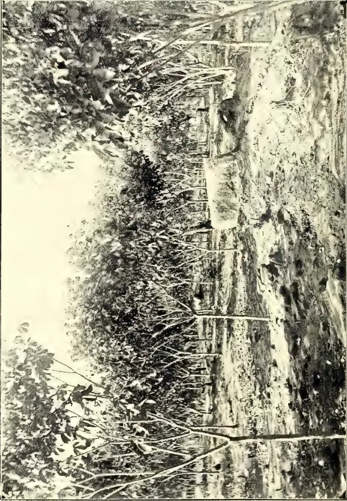
Photo by J. C. Willis.
CEARA RUBBER ON UNIRRIGABLE LAND.
(SEED SOWN FEBRUARY, 1907.)
Vide Page 318.
THE
TROPICAL AGRICULTURIST
AND
MAGAZINE OF THE
CEYLON AGRICULTURAL SOCIETY.
VOL. XXXII,
COLOMBO, OCTOBER 15TH, 1908,
No. 4.
Cleanliness of Cultivation.
A great deal of nonsense, or of irrelevant matter, is uttered on this topic. Really what it comes to is whether complete cleanliness, or clean weeding, is worth while. The question has been brought into great prominence by the enormous expenditure on weeding incurred upon many rubber estates, on which clean weeding is often costing two or three times as much as on a tea estate, where the cost is already heavy enough in all conscience.
For places where machinery can be used to weed, there is little doubt that clean weeding is cheap and effective, but less as weeding than as tilth. Where the ground is kept well tilled, the weeds do not spring so vigorously, the soil remains moist, and renews its water supply from below. Whereas in the southern part of Ceylon, the soil is not tilled, its water supply would seem to come mainly from above, and a short drought soon makes itself felt. Water evaporates more rapidly from a hard soil than from a tilled soil. This is a point which seems very difficult of comprehension in this country.
Where the land is covered with such permanent crops as tea, leaving too little room for machine tillage (even if such were possible on the hilly and rocky ground of much of the planting country), the best thing is probably to grow selected weeds. These may with great advantage belong to the family Leguminosæ, for then they improve the contents of the soil in nitrogen. Such are Crotalarias, Parochetus, Desmodium, and the rest. They should be cut at the flowering stage, and the cut stuff used as a mulch. Other green manures are such things as Passiflora foetida, a common (American) weed in Ceylon, which will, it appears, grow very well flat on the ground and thus keep down other weeds, while being itself easily rolled up. It must, however, be pointed out that more water evaporates from a soil covered with plants than from a naked tilled soil, so that in dry places the clean weeding is probably the better.
We have for years maintained that machinery must sooner or later replace much of the hand labour now being done in Ceylon, and there is no doubt
314[OCTOBER, 1908:that it can be used with advantage on, at any rate, low-country places. The Experiment Station in the North-Central Province is a case in point. So long as we had to employ mamoty labour, the weeding cost Rs. 4 an acre a month, for weeds grow there in a way not often seen in the south, and coolie labour is poor and expensive. Now that the land is tilled with American machinery, the cost of weeding has gone down to 43 cents a month. For half what it costs in South Ceylon we can not only keep the ground free of weeds, but also keep it in good tilth to a depth of 8 inches, so that it needs no artificial watering for most crops. This is a subject of such great importance to agriculture in Ceylon, that we shall return to it at a later date, and give illustrative photographs. There is no doubt that such tools as the disc-harrow and the cultivator could be used in most low-country places in Ceylon. Persons who have only seen them in shops say that they want elephants to draw them, but ours (6 feet wide) are drawn easily by two bulls. Stones can be removed as come upon, and their removal will benefit the land, though it may make the first treatment expensive. It is quite possible that ploughing with a good plough, which completely inverts the soil turned, may
prove disadvantageous except at long intervals, though it is the most effective way of destroying weeds on weedy land. Disc-harrows and cultivators, which merely stir the soil, may prove best, and in any case the plough need be used only to get the soil into a condition in which the other machines can be used. Our ploughs can only do one-third of an acre a day each, while the disc-harrow and the cultivator can each do four acres.
In such soils as that in which most of the rubber in the Malay States is growing, clean weeding with the aid of machinery would cost but little, and would keep the ground well tilled, a condition which would likely react upon the growth of the trees, and in any case would enable catch crops to be grown upon the land. In a report written in 1904, we called attention to this feature of the Malayan soils, but, so far as we are aware, no one has made any move towards putting our recommendations into actual practice.
Keep the top soil well tilled, and the rain will soak in better, the lower soil will remain damper, and the bacteria that are essential to plant life will not be killed by the sun's rays, while at the same time the soil will be properly aerated, and roots can grow better.
(Observations sur la Saignee de l'Hevea. Journ. d' Agr. Trop., April, 1908, p. 106.)
ABSTRACTED BY R. H. LOCK.
After several years of trial and experiment both by practical and scientific men, there still exists considerable difference of opinion as to the most rational and economical method of tapping cultivated Hevea trees.
The rapid increase in the area cultivated with this product makes the subject an important one.
The effect of tapping depends upon the physiology of the particular species tapped and the effect upon the future life of the tree may be different in different cases. It has been shown that damage to the cambium is much more prejudicial to Hevea than the mere removal of latex.
What is required is a simple and practical method which will reduce to a minimum the time required for the recovery of the tree, and at the same time assure a large yield and a low cost of manipulation.
According to Dr. Willis' tapping should not be started until the tree measures 18 inches in girth from the ground, and should then only be done lightly. Johnson and Wright increase this minimum size to 2 feet or more in circumference.
Attention is always paid rather to the size of the tree than to its age in these cases.
The time required for the renovation of the bark is put at four years by Wright and at from two years to twenty-eight months by Willis, according to the opinion of various planters.
Tapping every other day is regarded by Wright, Carruthers, Ridley and Pit as better than daily tapping, the question of a longer interval is still under discussion.
Dr. Willis has recorded the remarkable fact that left-handed cuts yield more rubber than right-handed.
Further research is required to determine whether tapping should be adjusted to the wet and dry seasons of the year, or simply carried out at regular intervals.
Tromp de Haas, after a visit to the plantations of Ceylon, has published observations from which the notes constituting the remainder of the paper are chiefly taken.
Descriptions are given of the herringbone method, and of the half spiral employed at Culloden, with tapping alternately to the right and to the left.
Pit in Java is said to have obtained good results with what is described as a quarter-spiral—a series of separate cuts, the distribution of which is not fully described.
A diagram is also given of the longitudinal series of V cuts employed by Holloway on Kepitigalla.
No decision is arrived at with regard to the respective merits of these several methods, though it is pointed out that the full spiral is the most likely to affect the vitality of the tree.
There is reason to believe that Mexican exports are beginning to include considerable rubber obtained from planted trees. It is true that these trees for the most part were planted primarily for the purpose of shading cacao or coffee, but the same was the case with the first trees that yielded commercial rubber in Ceylon. They are planted trees, and the rubber is a plantation product just as much as if the original idea had been to form plantations of rubber. And if these trees yield rubber, why should not those trees which were planted for this purpose and no other prove equally productive on attaining the proper size, as they are beginning to do in Ceylon?
The quantity of plantation rubber produced in Mexico thus far cannot be stated so accurately as in the case of the Ceylon product, but some figures on this subject printed in another column appear worthy of confidence. The Mexican representative of an important New York firm states that their purchases of locally produced rubber for export have increased from 7,000 pounds seven years ago to 182,219 pounds in 1907. He is convinced that not over 4,000 pounds of this was "wild" rubber. Besides, he credits the other merchants in the same town with buying half as much more. Supposing the situation to be as stated by this merchant, the plantation rubber
Gums, Resins,316[OCTOBER, 1908.]shipped last year from one Mexican town amounted to about 267,000 pounds, without reference to what may have been done in other parts of the republic.
Now, this is more rubber than was shipped from Ceylon in any year prior to 1906. It is more than was shipped from Malaya in any year before that date. It is more than all the rubber, of whatever kind, shipped from Mexico in the fiscal year 1897-98, and it has come about so quietly that most persons who read these lines probably will be surprised. Yet these figures are larger than those from the Far East which first gave a "boom" to rubber planting over there, and led to the formation of some of the most prominent plantation companies that have been capitalized in England.
One hundred and eighty tons or so of rubber, considered alone, is not of much importance; considered as the product of planted Castilloa trees in Mexico, and evidence that such trees can be cultivated profitably, it is a matter of very real importance to the owners of several millions of planted trees who have been waiting for assurances that their money has not been thrown away. We hope that this latest intelligence will encourage more plantation managers in Mexico to get in readiness to do some systematic rubber tapping on a liberal scale.—India Rubber World, Vol. XXXVIII., No. 4, July, 1908.
Having finished the operations just explained in the opening of the hole, and the fixing of the receivers, &c., the work consists of simply filling the receivers with pure water or with the solution which you had to employ. Continuing thus, making the cuts quickly, substituting the water or solution when necessary, every morning or as early as possible, while the temperature is still low, make the "taps" as explained working several at the same time; continue this work up till 9 or 10 a.m. on hot days.
In the afternoon it is customary to continue the collection by new "taps," it is found more convenient, only in the morning, leaving the collection of the rubber, after several "taps" every two days, according to the process which has been adopted.
* Translated from Bolition; see de Agricultura, &c., Bahia II, 2, August, 1903. We are indebted for the translation to Mr. D. A. Wetherall.—EDITOR.
After the "tap" is made, after a short delay the milk runs and after a while coagulates and closes the cut; this time is more or less prolonged, according to the different causes, such as temperature, repressing of the milk, &c. Should it be necessary, clean off the coagulated rubber from the cut so as to have a fresh discharge of milk.
After some amount has accumulated in the basin it should be collected, then tap again and place new water or solution in the basins. This rubber is taken to the house still wet and placed in the press, according to the process for moulding and uniting the different fragments, and thus enabling the rubber to be delivered to the market in a neat manner,—slabs of 1 centimetre thick are best so as to avoid fraud.
Owing to the rapid coagulation of the milk and to the slight sweating, fractionizing the collection, the use of presses cannot be dispensed with so as to unite the fragments in a body more voluminous and endowed with advantageous condition. By any of the processes employed, the rubber obtained is taken to the press still wet and fresh, because in this state it is easier to unite under the compression of the press.
Any system of press may be employed, so long as its compressing powers are sufficient, so that it can unite the fragments in one solid body. Cylinders of iron covered with wood may also be employed, or even of wood with a gradation in order to compress the rubber to the thickness required.
It is impossible to dispense with the small cups. When a superior product is required these small cups have to be made according to the process which practice proves to be the best to be adopted.
If adopting the alum the cups cannot be made of iron, nor of any metal attached thereby; neither can "tapping" be done with a steel instrument, because it blackens the product.
Also the form and material in which they have to be manufactured differ; when they are destined for use on the branches they must be made of light material, if they are for the roots then they may be made of heavy stuff.
OCTOBER, 1908.]317Saps and Exudations.According to the above, we must use for the extraction of the milk from the roots, cups of raw clay, which although they improve the product, still are liable to crack and allow part of the milk to escape, and deposit itself in the soil.
For the use of extraction by the roots, the best cups or basins should be those of clay baked and glazed inside, which stops the filtering through of the water or solution employed. They should affect the form of a semi-circumference, ten centimetres in diameter (4 inches) offering the greatest surface at the part which has to remain adherent to the root to permit of several cuts being made. To where the cups or basins adhere perfectly to the root, it is necessary at the point of junction to place clay plaster to fasten the cups to that part.
The cups can be made of zinc sheet. A cow's horn can also be used. The cups for the extraction from the branches should be as deep as a glass.
We will now treat of a part no less important,—knowing the mean production from a tree in a wild state, and advantages of culture of Manicoba.
Collecting carefully and separately the production obtained from fourteen trees was found to give the mean of 57.73 grains per plant.
Afterwards taking another production of ten trees the mean was 77.15 grains per plant.
We found one tree whose production taken by itself attained 197.50 grains.
According to these results obtained under the irregular conditions of the dry and bad season, it is seen that the mean is not disappointing; it should also be noticed that those trees submitted for the test, in the majority had already suffered from previous tappings.
Taking into consideration the dry and bad seasons and the losses in the extraction, it may be safely estimated at 100 grains the mean of production of one tree in its wild state, during the time it is undergoing tapping.
The seeds constitute a food, liked by cattle, and of great alimentary power from the richness of fat materials, and
can be ground to produce a rich forage, superior perhaps to the flour of the seeds of cotton and other similar seeds.
It appears to us that the Manicoba has a rapid growth, principally at the commencement of the development; we believe that from the 4th to the 5th year it can produce, but the maximum of production is during the 8th year forward, as with the cocoa and other plants.
Manicoba is educated in its production of rubber or of milk, in the same manner as the breasts of animals are habituated to give the maximum production of milk; during our labours we observed the augmenting in the production of milk, after repeated taps, the fact is known to all the extractors of rubber from Manicoba.—Bulletin of the Department of Agriculture, Jamaica, Vol. VI., Pts. 2 & 3, February and March, 1908.
BY AUG. CARDOZO.
(Abstracted by R. H. LOCK.)
The author uses the term Manicoba to include Ceara rubber, and it is with this product that the paper chiefly deals, only a brief reference being made near the end to the true Manicoba varieties in the sense in which that term has hitherto been used in the T. A. and Mag. of C.A.S.
Reasons are given for the comparative failure of Ceara rubber as an agricultural crop. The chief of these are:—
It is stated that only 15 or 20 % of the seeds of any variety will yield good trees, so far as yield of rubber is concerned.
It is impossible to tell which seeds will yield good trees before they are sown, but a choice may be made of these seedlings which grow most rapidly, with a large main axis, and produce a thick latex, opaque and not sticky.
In order that the latex may be readily extracted, the trunk must be verticle, and branching must not begin too close to the ground.
Gums, Resins,318[OCTOBER, 1908]A distance of at least 15 feet between the trees is recommended in good soil. Wind belts are strongly advocated, to be established as soon as the clearing is made.
In 1906 Mr. Cardozo obtained 1,161 qr. of dry rubber from a group of four trees in ninety-two tappings. In 1907 the same four trees yielded 1,231 qr. in sixty-one tappings. A fairly marked increase, but this rate of tapping is regarded as too severe for trees seven years old.
Tapping should not be begun before the 8th year unless the tree is at least 2 feet in girth.
The arrangement of the laticiferous vessels in Ceara shows that it is impossible to obtain a large quantity of latex at one tapping. Tapping must be repeated at frequent intervals. It is found that twice as much latex is obtained in the morning as in the afternoon, and the work of tapping should therefore be confined to the former period.
The method of tapping adopted was to make a series of horizontal incisions 1 cm. in length at intervals of 5 to 7 cm. in a verticle direction. The drops of latex run down the trunk and are caught in a little gutter placed near the base of the tree.
Two opposite areas are tapped on one day, and a pair of intermediate faces on the next, and when the original area is again reached, the cuts are made between the old ones.
Some notes are given on the difference between Jéquié Manicoba and Ceara.
The former germinates in 9-18 days without any necessity for filing the seeds.
It is less variable in its vegetative growth than Ceara.
The latex makes its appearance later.
The leaves are more liable to be eaten by locusts.
The greater value of Manihot dichotoma (Jequie Manicoba) is primarily associated with the thicker bark as compared with Ceara.—Journal d'Agriculture Tropicale, June, 1908, p. 163.
BY J. C. WILLIS.
Manihot Glaziovii is a native of the Ceara province of Brazil, a hilly region with a climate apparently not unlike that of north Ceylon, and a rainfall of about 45 inches (about equal to that at Jaffna). In wet southern Ceylon this
plant succeeds well enough, and on drier places like Pallekelle, grows like a weed.
This species has been given a trial on the Experiment Station at Maha-iluppalama, 11 miles from Kekirawa on the road leading to Talawa Station. The first lot (shown in the first photo) was planted on unirrigable land, locally supposed to be only fit for chena, but really with a good soil. The seed was sown in February, 1907, and the trees planted out 10 feet by 10 over five acres in August, 1907. In August, 1908, the ground was all but covered, the sky being only visible between the trees in places. The growth was very uniform and good, and the trees about 9 feet high. Taking two central rows of the trees, and measuring the girth at 3 feet from the ground, it gave the following figures in inches—First row 7½, 5½, 7½, 8¼, 5½, 8, 6, 7½, 5½, 5, 6½, 6, 4½, 6, 9, 6½, 6, 8, 7¼, 6, 7, 8½, 7½, 6, 9, 7, 8½, 9, 8, 7½, 8½, 8½, 7¼, 8, 9, 6, 6½, 6, 6, 7. Second row 10, 8½, 8, 6, 7¼, 6½, 9¼, 7½, 8, 7½, 9¼, 8, 10, 9, 9¼, 5, 7½, 6, 5, 5¼, 4½, 4½, 6¼, 4½, 7¼, 5, 7½, 7, 6½, 5, 6¼, 8, 8½, 8½, 6, 7, 7, 9. This gives an average girth of just over 7 inches for 78 consecutive trees chosen at random. The trees are growing vigorously and their latex runs freely, though of course they are as yet much too young to tap.
The second photograph shows trees from seed of February, 1908, planted out about four months ago as shade for cacao, on irrigable land with rather better soil. These are growing even better, but no measurements were taken.
The finest Ceara rubber trees in the island are probably some growing about ten miles south of Trincomalee bay, and there is little doubt that this species will prove well suited to the dry zone. As it will grow on unirrigable land there is plenty of country now available for it.
The Indo-European Commercial Intelligence of Bombay is worthy the attention of those interested in camphor, as the issues from June onward contain very useful articles on the cultivation and preparation of this drug. We still maintain, in spite of adverse opinions, that this industry is worthy of much more notice on the part of all planters and landowners to cultivate it successfully, either extensively or on a small scale.
Our contemporary maintains that a move has been made in Japan to enable a local Japanese concern to secure the
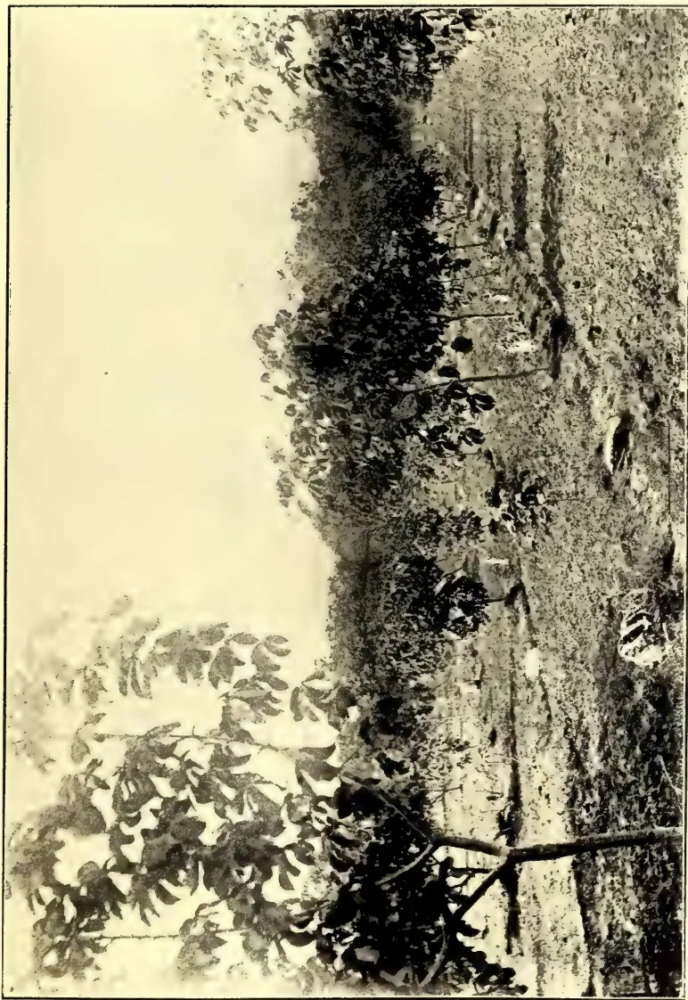
Photo by J. C. Willis.
CEARA RUBBER ON IRRIGABLE LAND.
(SEED SOWN FEBRUARY, 1908.)
camphor monopoly at present farmed out to Messrs. Samuel, Samuel & Co. This monopoly will expire by the end of March next, and the idea is abroad that the Governor-General of Formosa is looking out for a powerful native combination to take it up, thus giving all the profits to Japanese individuals. The annual output of Formosan camphor is estimated at 50,000 piculs, of which 40,000 are handled by Messrs. Samuel, Samuel & Co., and 10,000 sold by the Japanese Government amongst the camphor-refining concerns in Japan.
We are also reminded that the Chinese originally owned the Formosan forests, and their Government adopted harsh measures to secure the monopoly. They also state that the term "camphor" is always understood to apply to the well-known laurel, or Japan camphor, the product of the Cinnamomum camphora, an evergreen of the Lauracæ family. The camphor, however, referred to in the earlier Chinese and Arabian writings was probably another variety known at the present time as Borneo camphor, or "borneol," the product of the tree Dryobalanops aromatica, small quantities also being derived from the tree Blumea balsamifera. "Borneol" is, however, almost entirely consumed in the East.
Messrs. Schimmel & Co., quoting the German Consul at Kobe, give the Japanese Customs' statistics to show as near as possible the total annual production of Japan-cum-Formosa, which are otherwise unobtainable, as the Japanese Bureau of monopoly carefully avoids publishing the details of its statistics. According to Schimmel, the exports were :—
| Formosa, | Kobe | Total. | |
|---|---|---|---|
| ... | (Japan). | = | |
| 1904 | 24,034 | 31,408 | = 55,442 piculs. |
| 1905 | 22,430 | 22,817 | = 45 277 " |
| 1906 | 21,774 | 26,565 | = 48,339 " |
The Chemist and Druggist reckons that the world's demand for camphor is 8,000,000 kin, or 16,600,000 lb. (the total export of camphor and oil (?) from Japan and Formosa in 1906 is placed at 5,544,000 kin, or nearly 70 per cent. of the world's consumption, if this estimate is correct), of which 70 per cent. is employed in celluloid manufacture, 2 per cent. in gun-cotton works, 15 per cent. for disinfecting and deodorising purposes, and 13 per cent. for medicinal preparations. According to German returns, that country is the largest importer, receiving 1,013,400 kilos in 1905, valued at 4,560,000 marks (1 mark = 1s. roughly); and 890,200 kilos last year, valued at 5,786,000 marks. As the total value
of the Formosa-cum-Kobe exports in 1906 was placed at 5,850,000 yen, or 11,700,000 marks, it can be roughly estimated that the German consumption is equal to half greater than Japan's output.
On the other hand, the American Consul in Formosa (Mr. J. H. Arnold) speaks of the island as supplying 75 per cent. of the world's requirements, the remainder coming from Japan and China. He estimates the Formosa output for 1907 at 5,000,000 kin.
Whatever the figures are, however, the fact still remains that the world's production of camphor is far and away behind the world's requirements, and, therefore, in these days of competition it behoves planters to look seriously into the matter and see whether it will not pay them, even when the prices fall, to take up the cultivation of the drug on a large or small scale, not for its immediate return, but as a nest-egg for some future date.
Although, as we showed in our former articles, it used to be estimated that Japanese and Chinese could afford to sell camphor at a figure far below the price at which it could be produced elsewhere, it is as well to note that experts in all parts of the world are giving their serious attention to its production. On the Mediterranean coast, we hear that the French are trying to acclimatise the tree, which, it is said, grows well in those parts, and produces leaves yielding the drug in commercial quantities sufficient to pay the cost of production and extraction. Some of those interested in this idea even claim that the camphor may replace the olive, owing to its giving a bigger profit. Elsewhere (Mr. Ridley at the Straits Settlements) we are told that it is said to do anywhere in Italy except in the neighbourhood of the Alps. The Ceylon Agricultural Society urges its cultivation (see Tropical Agriculturist, July, 1907), saying that since the Royal Botanic Gardens show a way in which it can be multiplied locally, planters are rendered less dependent on the Japanese for seeds or cuttings.
"Amongst neglected industries in this State," writes the Queensland Agricultural Journal for November, "may be included camphor production. The camphor laurel grows so well, not only on the coast, but on the tableland, that some think it would be a very paying speculation to plant forests of this tree. The arguments are, that the tree thrives in most parts of Queensland, that it requires no attention, that camphor is exceedingly high in price, that large
Gums, Resins,320[OCTOBER, 1908.quantities are used in the manufacture of smokeless powder, and that the Japanese have the monopoly of the production in Formosa." According to the Chemist and Druggist, only about 2 per cent. goes in gun-cotton, and no mention being made of smokeless powder, it is either included in this 2 per cent. or is too small a quantity to be placed separately. As to the price, that is bound to come down, and the sooner the better; but at present it shows no chance of dropping below a profit unworthy of being earned by a European. The Tropical Agriculturist does state in the July issue, already referred to, that the demand would be almost entirely met if Ceylon were to plant 25,000 acres with this product. This does not seem a very large area, but we cannot say off-hand what the annual production per acre is supposed to be. The same journal, in February, stated that the principal difficulty in Ceylon was lack of experience in the distillation. As with the sugar output in India, this may perhaps reduce the output by half.
Dr. Ridley, in the Straits Agricultural Bulletin for June, reports that in California (U. S. A.) the tree seems to do well, and experimental returns show that the camphor produced is purer than the Japanese. In Tonkin it justifies the most sanguine expectations, and the Journal d'Agriculture Tropicale for November gives full details of the camphor experiments in Tonkin. Even in England the tree flourishes. "The finest tree I have ever seen," continues Mr. Ridley, "was one in Cornwall, near Fowey. One would, therefore, hardly expect that the tree would thrive in the Tropics so near the Equator. However, several planters in the Peninsula are trying it. Mr. Larken notes that in Johore the seeds took a month to come up, but all are starting." In the Straits Botanic Gardens, camphor plants have been growing for many years, but have made very little growth, and still remain bushes of no great size, which have never flowered or fruited. They have all been planted in stiff clay; perhaps in the hill regions, where the soil is lighter and more friable, they would do better.
We have already mentioned an attempt made in the Federated Malay States to propagate camphor. The American Bureau of Plant Industry speaks well, not only of the camphor trees in Michigan and Florida, but also of the quality of the 30 lb. of camphor obtained. Mr. Hutchins, in his report on the Kenia forests in British East Africa, calls attention to the "Ibean camphor tree," many specimens of which are of enormous size, 120 to 130 ft. high. Mr. Hutchins does not say, however, that camphor has actually been isolated from this tree, and detected.
Experimental plantings have been carried on in Hawaii, and, according to the Journal d'Agriculture Tropicale, the tree has been acclimatised in Algiers for a long time. Here the C. camphora is grafted on the poorer yielding Camphora muncta, in order to increase the returns, which from the single species was considered a poor one, only 65 per cent. against 1.12 to 1.140 per cent. from the grafted tree.
Meanwhile, it must be remembered that the Japanese are not idle. Whilst Dr. Willis, in Ceylon, talks of 25,000 acres, Schimmel reports that the Japanese Government are making serious efforts to improve the cultivation both in Japan and Formosa, and that a large sum granted by the Japanese Parliament for forestry purposes will be used exclusively for camphor plantations. According to the Chemist and Druggist, there are in Japan over 400,000 acres of land in private hands, on which it is hoped to plant 361,470,000 trees, while they talk of planting 1,176,810,000 trees on some 1,300,000 acres of Government land. These 1,500,000,000 trees, it is reckoned, will yield 10,844,000 kin* of camphor, and 4,337,640 kin of camphor oil. In 1904-5, 8,750,000 trees were planted, so the above stupendous cultivation would take some time. Whilst it would yield 10,000,000 kin of camphor, the present world's consumption is returned as being 8,000,000 kin. Lower prices and increased population can, of course, increase the demand to any point.—Tropical Life, Vol. IV., No. 2, February, 1908.
* 1 Kin = 10.6 lb. 4,000,000 = 2,400 tons.
OCTOBER, 1908.]321The particulars given below on the fermentation of tobacco leaves are taken from Bulletin 15 of the Hawaiian Agricultural Experiment Station, a pamphlet issued to show the possibilities of tobacco growing on a commercial scale in Hawaii, and also to give information as to the best methods of carrying out the various operations connected with the preparation of the crop. They form a continuation of the notes on harvesting and curing the leaves that appeared in the last issue of the Agricultural News. After curing has taken place, the tobacco should be sorted in lots of thick, thin, and medium leaves respectively. The different grades are then tied up into bunches containing from fifty to a hundred leaves, and in order to undergo the process of fermentation these bunches are piled up into heaps on the floor of the room specially provided for the purpose.
The fermentation should follow immediately after the grading and sorting process, as the tobacco is then in the best condition. A much better fermentation can be secured immediately than after a delay of weeks or months. The tobacco is taken from the sorting room to the fermenting room. If the tobacco is in proper condition when it is placed in the pile—that is, if the leaf contains 20 to 25 per cent. of moisture—a rise in temperature will begin at once. The heap of fermenting tobacco leaves should be covered over with a tarpaulin or rubber blanket, excluding all air and retaining all moisture. No weight should be applied. When the building of the fermenting heap has been finished, the temperature of the room should be heated to from 85° to 95°, and should be kept at that figure until the pile of fermenting tobacco reaches the same degree of heat. As the temperature in
the pile of tobacco increases above 90° the air temperature should be permitted to remain about 10° lower than the increasing temperature of the pile. The higher the temperatures in the fermenting pile the darker the colour of the finished leaf. Under no circumstances must the temperature of the fermenting tobacco be permitted to rise above 136° F. As soon as the temperature in the middle of the pile, which is the hottest, reaches 100° F., the pile should be torn down and re-arranged on the floor near by. The leaves that previously formed the bottom, sides, and tops are placed in the centre of the new pile, while the leaves that were in the centre of the first heap, become the outside, bottom, and top of the second pile. This process should be continued throughout the various re-arrangements of the pile. An important point is to maintain a constant degree of humidity in the fermenting room. The air in the fermenting room should never be permitted to become dry, but should always show from 85° to 90° of humidity, irrespective of the temperature.
In the first stages of fermentation, large quantities of ammonia are set free, and there is a considerable evolution of ammonia throughout the whole fermentation process. As soon as the fermentation is complete, the tobacco is ready for the final sorting.
A second fermentation takes place in the bale. It is a slower one and the temperatures do not rise very high, but it seems to be quite important in fixing character in the leaf. This second fermentation mellows the tobacco and tends to improve the aroma. The bales should be placed in the warehouse for at least six months before selling. The warehouse should be clean, dry, and cool, and no other goods stored with the tobacco.—Agricultural News, Vol. VII., No. 161, June, 1908.
41 322[OCTOBER, 1908.In an article on "The Tea Production of the British Empire" in this Bulletin (1904-2-206), reference was made to the tea industry of Natal and a table was given showing the areas of land under cultivation and the quantities of tea produced during the years 1880-1902.
The introduction of tea into Natal took place in 1877, when seed was forwarded from Calcutta and was planted as soon as it arrived. The varieties introduced were "Assam Indigenous" from the Rookang Estate, and "Assam Hybrid" from the Longeeburr Estate. The former has been found to be the more suitable, as it produces more leaf and yields a manufactured tea of superior quality. After various disappointments and discouragements, owing to losses caused by drought and the attack of insect pests, no serious attempt was made to extend the cultivation until 1881. Since this time the area under cultivation has gradually increased until it now amounts to about 4,000 acres and yields annually 2,000,000 lb. of the manufactured article.
The samples of Natal tea which are the subject of this report were taken from specimens exhibited in the Natal Court of the Imperial Institute and from supplies forwarded to the recent South African Products Exhibition in London. The latter specimens were transferred to the Imperial Institute at the close of the Exhibition, and are now shown with other samples in the Natal Court.
At the request of the Natal Government a chemical examination of representative samples has been carried out in order that a comparison of Natal teas with Indian and China teas could be made.
The results of the examination are shown in the following table, which includes for comparison the corresponding figures obtained at the Imperial Institute
for Indian and China teas and also for Ceylon green teas:—
| Estate. | Description. | Percentages calculated on material dried at 100° C. | ||||
|---|---|---|---|---|---|---|
| Moisture. | Ash. | Extract. † | Caffeine. | "Tannin." ‡ | ||
| Natal Teas— | ||||||
| Kearsney | Grade 1§ | 9.1 | 5.8 | 26.1 | 3.9 | 7.8 |
| " | Grade 2§ | 7.6 | 5.6 | 28.8 | 3.6 | 6.3 |
| " | Grade 3§ | 7.4 | 5.2 | 27.4 | 3.1 | 6.7 |
| " | Grade 4§ | 8.7 | 5.9 | 25.0 | 3.4 | 6.8 |
| " | Flowery Pekoe | 7.6 | 5.1 | not determined | 7.0 | |
| " | Broken Pekoe | 6.9 | 5.8 | not determined | 7.3 | |
| Barnsdale | Pekoe | 5.96 | 5.8 | 26.2 | 4.8 | 10.5 |
| Clifton | Pekoe | 6.2 | 4.8 | 31.4 | not deter- | 13.0 |
| mined. | ||||||
| Barnsdale | Golden Pekoe | 5.5 | 5.5 | 23.0 | 4.4 | 11.5 |
| " | Flowery Pekoe | 6.1 | 5.3 | 27.0 | 4.2 | 11.6 |
| Aroma | Pekoe Souchong | 7.1 | 5.5 | 24.3 | 4.0 | 10.4 |
| " | Fine Natal " | 8.0 | 5.0 | 20.9 | 4.1 | 10.1 |
| Burrow | ||||||
| Green | Souchong | 7.7 | 5.2 | 33.0 | 4.4 | 10.8 |
| " | Average | 7.1 | 5.4 | 27.1 | 4.0 | 9.2 |
| Indian Teas (13 samples) | ||||||
| Maximum | 7.8 | 6.9 | 35.2 | 4.1 | 11.1 | |
| Minimum | 6.4 | 5.4 | 27.4 | 3.6 | 6.9 | |
| Average | 7.1 | 6.0 | 31.7 | 3.8 | 9.2 | |
| China Teas (8 samples) | ||||||
| Maximum | 9.2 | 8.2 | 27.2 | 3.7 | 9.3 | |
| Minimum | 7.1 | 6.0 | 19.0 | 2.6 | 3.3 | |
| Average | 8.2 | 6.8 | 24.3 | 3.0 | 5.2 | |
| Ceylon Green Teas— | ||||||
| No. 1 | 6.7 | 2.6 | 24.5 | 2.9 | 14.5 | |
| No. 2 | 6.2 | 5.0 | 35.0 | 2.9 | 16.6 | |
| Average | 6.5 | 3.8 | 29.7 | 2.9 | 15.6 | |
A consideration of the foregoing analytical figures shows that these Natal teas may be divided into two groups, which differ considerably in composition: (1) those from the Kearsney Estate, and (2) those from all other sources.
The specimens from the Kearsney Estate, grades 1 to 4, were all good black looking teas, containing from 3.1 to 3.9 per cent. of caffeine and from 6.3 to 7.8 per cent. of tannin. The other two specimens of "Flowery Pekoe" and "Broken Pekoe" from the same source also contained a low percentage of tannin, viz., 7.0 to 7.3 per cent. These figures must be regarded as very satisfactory, since the average percentage of caffeine (3.5) is only a little below the amount present in the Indian teas examined, and on the
§ These four samples were taken from specimens in the Natal Court of the Imperial Institute; the remainder were from the South African Products Exhibition.
† "Extractive matter" or "extract" is the percentage dissolved by treating a given quantity of the tea with one hundred times its weight of boiling water, and allowing it to infuse for ten minutes.
‡ Determined by Procter's modification of Löwenthal's process.
OCTOBER, 1908.]323Edible Products,other hand the average of tannin (7 per cent.) is considerably lower. In respect of the percentage of tannin these teas from the Kearsney Estate are intermediate between the Indian and China teas. The amount of extractive matter is also less than in the Indian teas, and approximates to that of the China samples.
As is well known, it is the caffeine to which the valuable stimulating properties of tea are due, whilst the presence of much tannin is generally considered to be detrimental.
The other group of Natal teas, comprising all the remaining specimens, is characterised by unusually high percentages of caffeine and tannin. The amount of caffeine ranges from 4.0 to 4.8 per cent., with an average of 4.3 per cent., whilst the percentages of tannin vary from 10.1 to 13.0 with an average of 11.1 per cent. The abnormal amount of tannin (13 per cent.) present in the Pekoe tea from the Clifton Estate is probably due to the fact that the sample had not been properly fermented, and was more or less green. So far as the amount of extractive matter is concerned, this group agrees closely with the Kearsney teas.
The difference in the figures furnished by these two groups of specimens is very striking, and may be due to some modification in the processes of manufacture.
It was to be expected that Natal tea would show a general similarity to Indian tea, since the original seed was obtained from Assam. This similarity can be seen in the figures for the majority of the specimens and in the average results, but in the case of the Kearsney teas the small percentages of extractive matter and tannin approximate more nearly to those obtained for China teas.
These results show that the cultivation of tea in Natal and its preparation deserve very full study with a view to the production of a tea of characteristic quality. The best of these teas combine the qualities of the teas of China and India.—Bulletin of the Imperial Institute, Vol. VI., No. 1, 1906.
The Soy Bean (Glycine hispida), previously, but incorrectly, called soja bean, is a leguminous plant, native of south-eastern Asia. De Candolle says that it originally occurred in the wild state in the region "from Cochin China to the south of Japan and to Java." It
has been cultivated from very ancient times, and in some countries, notably Japan, it is a very important food plant, and its cultivation has reached such an advanced stage that innumerable varieties and forms have been developed. Professor Rein says it is the most important legume in extent of varieties, uses, and value grown in China or Japan. It is supposed to have been used for food in China even before the time of Confucius. Although it has been grown in China and Japan for such an extended period, its cultivation seems to have spread very slowly to the surrounding countries. Its introduction into India seems to have taken place in comparatively modern times. More recently it was brought to Europe, where it was grown in botanic gardens for more than a hundred years without attracting attention as a plant of much economic importance. Aiton says in his Hortus Kewensis that it was first brought to England in 1790. In 1875 Professor Haberlandt began an extensive series of experiments with this plant in Austro-Hungary, and in a work published in 1878 he gave the results of his studies and strongly urged the cultivation of the soy bean as a food plant for both man and beast. Although he succeeded in exciting a great deal of interest in its cultivation while making his experiments, and distributed a considerable amount of seed, very little seems to have come of it; for at his death, which occurred in 1878, the interest flagged, and the soy bean has failed to obtain the place as a staple crop which he prophesied for it.
In our own country the soy bean has been grown for a great many years, chiefly in the South, but it is only within the last fifteen years that it has received much attention as a forage crop. Recently it has been the subject of considerable experimentation at a number of the experiment stations, and its great value as a crop has been very clearly demonstrated.
The term "soy" applied to this bean is derived from a Japanese word "shoyu," denoting a certain preparation from the seeds which is a favourite article of diet in that country. The term "soja" is often used in connection with this plant, but Professor Georgeson, who spent some time in Japan, and who, since his return to this country, has experimented extensively with this plant, says:—
The term soja, often applied to this bean, is misleading, inasmuch as the species named by Siebold and Zuccarini (Glycine soja) is not cultivated there (Japan), or at least rarely cultivated,
Edible Products.324[OCTOBER, 1908.though wild in the south; and later this species was confounded with the cultivated species, G. hispida, Moench., whence the origin of the term soja as applied to the cultivated bean.
Recent works on Japanese botany seem to substantiate this position, though it is still a matter of doubt as to what botanical name probably belongs to the cultivated species.
The soy bean is an erect, annual plant, with branching, hairy stems, trifoliate, more or less hairy leaves, rather inconspicuous pale lilac or violet coloured flowers, and broad, two to five-seeded pods, covered, like the stem, with stiff, reddish hairs. The seeds vary in colour from whitish and yellowish to green, brown, and black; and in shape from spherical to elliptical and more or less compressed. Under favourable conditions the plant may reach a height of 4 feet or more. In Professor Haberlandt's experiments in Austro-Hungary the plants bore about 200 pods and 450 seeds each, and though this is probably considerably above the average, it shows them to be remarkably prolific.
The fact that the flowers are self-pollinated makes the yield entirely independent of insects, and renders the soy bean free from an important obstacle in the way of the introduction of many legumes into new regions. A crop of seed is insured wherever conditions are to allow the plants to make the proper vegetative growth and reach maturity.
The different varieties of soy bean are distinguished largely according to the colour, size, and shape of the seed, and the time required for the plants to reach maturity. They also differ more or less in the habit of growth and in the character and degree of the hairiness of the various parts of the plant. The names applied to the varieties here in the United States usually refer to the time of reaching maturity and the colour of the seed; as, for example, "Early White," "Medium Late Green," "Medium Black," etc. The early varieties generally fruit heavier in proportion to the size of the plant than the later ones, and hence are better to grow for seed, while the medium or late varieties are better for forage on account of the larger yield of fodder that may be obtained.
The "Early White" soy bean is an excellent variety to grow when a crop of seed is desired, particularly in the North, where the growing season is likely to be short. It is not a good variety to grow for hay or soiling, how-
ever, on account of the small size of the plants and a tendency to drop the leaves early. "Medium Early Green" is one of the best varieties to plant for hay, as it yields heavily and retains its leaves well. For soiling or for ensilage "Medium Early Green," "Medium Early Black," or the "Late" green or black varieties may be used, according to the length of the season and the time at which the crop is to be used. In the New England States the "Medium Early Green" variety is generally preferred, while in the Central States "Medium Early Black" seems to be the favourite. In the South the "medium" or "late" varieties are used, some preferring one and some another. For green manuring the large medium or late varieties are best; "Medium Late Black" being excellent for this purpose.
It is believed that in Japan than in northern climates, soils of a rather strong character are best adapted to the soy bean. It is usually sown about the end of May, and when used for hay is cut early in August. In both Europe and America it has been found to thrive best on soils of medium texture that are well supplied with potash, phosphoric acid, and lime. It succeeds very well, however, on comparatively light soils, often giving an abundant crop on soils too poor to grow clover. Professor Haberlandt found that good results could be obtained in Europe on a very great variety of soils, and similar results have been obtained in the United States. Professor Georgeson has obtained fairly good results in Kansas on very poor soils, and under very adverse conditions as to the moisture. In South Carolina the soy bean gives excellent crops on sandy, limestone, or marly soils, and also on drained swamp or peaty lands that are well marled. Experiments in both Europe and America show that the soy bean possesses excellent drought-resisting qualities, enduring dry weather much better than the ordinary field or garden beans.
The soy bean requires about the same temperature as corn. Professor Haberlandt found that the earlier varieties of soy bean would mature in Europe rather farther north than the earlier varieties of corn. In the United States the relation of the soy bean to temperature has not yet been thoroughly tested, but it is very likely that the northern limit will be found very near to that of corn. Professor Brook says that the earlier sorts will mature in Massachusetts with as much certainty as will the earlier varieties of corn. As a general thing,
OCTOBER, 1908.]325Edible Products.the soy bean is not so easily injured by frost as the common field or garden varieties of beans, and hence it can be planted earlier in the spring and can also be left in the field later in the autumn. At the Kansas Station, soy beans planted on the 25th of July on poor soil survived several light freezes and, when cut on the 17th of October, had matured a fair crop of seeds.
While the soy bean is possessed of excellent drought-resisting qualities, it at the same time seems to be able to survive a period of excess of moisture better than the cowpea or even corn. Mr. Robert C. Morris, of Illinois, reports, as an instance in his own experience in 1896, that, after standing in water for three weeks in July, the soy beans recovered, while corn and cowpeas under the same conditions were permanently injured. The upright, bushy habit of growth gives the soy bean a great advantage over the cowpea during wet weather and makes it easier to handle at harvest time.
In a general way, the same methods of culture may be recommended for the soy bean as would be given to the ordinary field beans. The soil should be well prepared, so as to afford a good root bed, and should be left smooth and free from clods in order to facilitate the cultivation and harvesting of the crop. If the soil is lacking in potash and phosphoric acid, these should be supplied to secure the best results. From experiments carried on at the Massachusetts Hatch Experiment Station, it is probable that for this crop the potash can be best supplied in the form of the muriate. Under ordinary conditions it is not likely that there will be any necessity for using any nitrogen-containing fertilizer, as sufficient of this element is usually present in the soil, and, like other legumes, this plant assimilates the free nitrogen of the air. In experiments with this crop where nitrogen has been supplied to the soil in various forms, it has been found that there was but very little gain in the yield, and in but very few instances was this sufficient to pay for the extra fertilizer used.
Although soy beans may be planted quite early in the season, the best results will be obtained if the seeding is postponed until the ground has become thoroughly warm; and in case the earlier varieties are used, a fairly good crop of forage or even of seed may be obtained if the seeds are not planted until the earlier small grains, such as rye and barley, have been harvested. It may
thus be possible to obtain two crops from the same field in a single season; one of small grain, and the other of soy bean, and yet to leave the land in better condition than if the second crop had not been grown. Another practice is to drill the beans in between the rows of corn after the last ploughing; they are also sometimes planted between the hills in the row, as are field beans. The best method of seeding will depend somewhat upon the kind of crop which it is desired to harvest. If the soil is good, and a crop of hay or green fodder is desired, good results may be obtained by sowing broadcast or with a grain drill. If, however, a crop of beans is desired, it is best to plant in drills from 2 to 3 feet apart, according as the soil is light or heavy.
There is considerable difference in the amount of seed sown per acre in the various parts of the country; some farmers sow only about half a bushel per acre, while others prefer a bushel or even more. The proper amount will necessarily vary somewhat, according to the method of seeding and the character of the soil. As a rule, when grown for seed, from one-half to three-fourths of a bushel per acre will be ample. When put in with a grain drill or sown broadcast, a greater amount of seed will be required; but in any case it will hardly be necessary to use more than one bushel per acre. Of course, less seed will be required when the grain drill is used than when the seed is sown broadcast, and as a rule better results will be obtained. When planted for beans enough seed should be used to give an average of five or six plants per foot in the row. If nothing better is at hand for planting the seed, an ordinary grain drill, with enough of the holes stopped up to give the desired distance for the rows, may be used. For example, if the holes are 8 inches apart, number 1 may be left open, numbers 2, 3, and 4 closed, number 5 open, etc., and the rows will be 32 inches apart, or, if a less distance is desired, number 4 may be left open and number 5 closed, and the rows will be 24 inches apart. In very light soil the latter distance would probably be best, but in heavier soils the former would be preferable.
When the seed has been drilled in rows close together, or has been sown broadcast, very little cultivation will be necessary. It will sometimes be found advisable, however, to cultivate the drilled field soon after planting, as in case the land is very foul, the weeds are liable to get such a start that they will interfere with the growth of the young
Edible Products.326[OCTOBER, 1908.soy plants. For this purpose use a light harrow. When grown for seed, thorough cultivation should be given, at least while the plants are young. As a rule, cultivation should be shallow and frequent if the best results are to be obtained. When the ground is inclined to pack or bake, it should be stirred after each rain, but care should be taken not to work the field when the plants are very wet from rain or dew. If the drills have not been made too far apart, it will be found that the plants will soon shade the soil sufficiently to keep the weeds in check and to keep the surface in good condition, so that much cultivation will be necessary. In fact, on good soil very fine crops have been obtained with but a single stirring of the soil after the seed had been planted. As a rule, this crop will require a smaller amount of cultivation than corn.
The time for harvesting the soy bean crop will necessarily depend somewhat upon the use for which the crop is intended. From the analyses given in the following table it will be noticed that the plants, cut when the pods are well developed, contain larger amounts of crude protein and fat than those cut at early stages. But from feeding experiments it seems likely that more of the plant will be eaten if cut in the earlier stages, and hence it is doubtful if very much is gained by the latter cutting. Considering palatability and digestibility as well as chemical composition, it is probable that the best forage will be obtained by cutting just as the pods are forming.
| Water-free substance. | Whole Plant (just in bloom) August 21. | Stalk of preceding. | Whole plant (just in pod). | Whole plant (pods well developed) but not hard. |
|---|---|---|---|---|
| Protein .. .. | 12.84 | 3.38 | 14.41 | 14.43 |
| Fats .. .. | 2.571 | 0.80 | 3.78 | 3.35 |
| Nitrogen-free extract .. .. | 50.15 | 9.25 | 46.83 | 55.70 |
| Crude fibre .. .. | 27.51 | 31.34 | 28.20 | 20.38 |
| Ash .. .. | 7.23 | 5.23 | 6.78 | 5.64 |
If the crop is to be used for soiling purposes, cutting can begin when the plants are in early bloom and can be kept up until the pods are beginning to ripen, though the length of the season will vary somewhat, according to the different varieties, some being better for this purpose than others. If the crop is to be cured for hay, it may be cut when the plants are in full bloom or the pods beginning to form, but this will also vary according to the variety grown, since some of the varieties begin to drop their
leaves much earlier than others, and it is quite important that as many of the leaves should be saved as possible. It will be noticed from the preceding table that in the stalk of the plant the percentage of protein and fat is very low, and that of the crude fibre is very high; hence the most important of the food elements are found in the leaves.
When the crop is to be preserved in the silo, it will be best to cut it at about the same stage as when used for hay. However, the plants can be cut at a later stage for the silo than for hay, since they are preserved in a much more palatable condition than when cured as hay, and the cutting necessary in preparing for the silo leaves the plant in condition to be more easily masticated by the animals.
Because of its coarse habit of growth the soy bean is somewhat difficult to cure satisfactorily in moist climates. A good plan to follow in curing is to allow the plants to lie in the swath or windrow until well wilted (but not until they begin to become brittle), and then gather into small piles. Care should be taken to see that these piles are so constructed as to admit of thorough ventilation to the very centre, in order that the plants may not mold and spoil. The hay should be handled as little as possible in curing and carrying to the barn or shed, in order that the leaves may not be broken off and lost.
Under ordinary conditions the earlier varieties will mature in 75 to 90 days from the time of planting. It is possible, however, and often even desirable, in harvesting the crop for seed to cut before the pods are entirely mature. If they become too ripe, they are liable to burst open in drying and carrying to the machine, and thus a portion of the seed may be lost. Some growers recommend cutting for seed when the pods are only about half mature. This is undoubtedly a good practice if the straw is to be used for feeding purposes, as in that case it will contain a larger amount of digestible nutrients, and will be much more palatable than if allowed to stand until the pods are thoroughly mature.
In harvesting a crop for the seed, the plants may be pulled by hand or cut with a scythe or mower and gathered into small piles, which should be relatively high and of a small diameter, so that the plants may dry out readily. Thrashing can be done with a flail or with the thrashing machine. Very good results can be had with common grain thrashers by taking out a portion or all of the canvas and substituting blanks
OCTOBER, 1908.]327Edible Products.YIELD.The amount of forage obtained from the soy bean will, of course, vary widely, according to the conditions under which the crop is grown. Under favourable conditions as much as 12 or 13 tons of fresh fodder may be produced per acre. In the New England States, under the ordinary farm conditions, yields of from 9 to 12 tons per acre are reported from the medium early varieties. The early varieties yield, as a rule, a less amount of forage. In the South, where the later and coarser varieties are grown, larger yields may be obtained. But in some parts of the South the yields have been so light that the crop has been regarded as an unprofitable one to grow, and in some parts of colder Northern States the season is too short for any but the very earliest varieties, and these often fail to mature seed. At the South Carolina Station, yields of 2 to 2½ tons of cured hay per acre are reported, and similar amounts have been obtained in many other portions of the United States. In Japan, the earlier varieties are said to afford on an average from 1½ to 2 tons of well-cured forage per acre. At the North Carolina Station, in an experiment in which the soy bean and the cowpea were grown under similar conditions, a yield of nearly 2½ tons of well-cured hay was obtained
from one acre of soy bean, while from one acre of cowpea a little less than a ton was secured.
Under ordinary conditions 25 to 40 bushels of seed per acre will be an average yield. If the conditions are very favourable, the yield may reach 100 bushels. On the other hand, drought and poor soil may reduce the yield to 15 bushels or even less. In the experiments by Professor Georgeson, mentioned in the preceding pages, a yield of over eight bushels per acre of well-cleaned seed was obtained from a field planted after a crop of rye had been harvested. In this case the beans were cultivated but once, and grew under very adverse conditions of both soil and climate. When it is remembered that this was the second crop from the land that season, and that the beans brought $2 per bushel, it will be seen that the crop was a profitable one to grow.
CHEMICAL COMPOSITION.The following tables on the chemical composition of the various parts of the soy bean used for feeding purposes have been arranged with great care, to show as far as possible the latest and best results obtained by experimenters in the United States during the course of their studies of this plant:—
V
CHEMICAL COMPOSITION OF THE VARIOUS KINDS OF FORAGE MADE
FROM THE SOY BEAN.
| Soy-bean Forage. | No. of analyses. | Fresh or air-dry substance. | Water-free substance. | |||||||||
|---|---|---|---|---|---|---|---|---|---|---|---|---|
| Water. | Protein. | Fat. | Nitrogen-free extract. | Fibre. | Ash. | Protein. | Fat. | Nitrogen-free extract. | Fibre. | Ash. | ||
| Fodder (early bloom to early seed) | 13 | 76.5 | 3.6 | 1.0 | 10.1 | 6.5 | 2.3 | 15.3 | 4.1 | 43.0 | 27.6 | 10.0 |
| Soy-bean hay (Japanese) | 1 | 16.0 | 16.9 | 2.2 | 23.1 | 35.9 | 5.9 | 20.1 | 2.6 | 27.5 | 42.7 | 7.0 |
| Soy-bean hay (Mass) | 4 | 12.1 | 14.2 | 4.1 | 42.2 | 21.1 | 7.3 | 16.2 | 4.7 | 46.8 | 24.0 | ... |
| Soy-bean straw (Mass) | 3 | 11.4 | 4.9 | 1.9 | 37.8 | 37.6 | 6.4 | 5.5 | 2.2 | 42.7 | 42.4 | ... |
| Soy-bean straw (hulls and vines after thrashing) | 1 | 5.7 | 4.0 | 0.8 | 36.0 | 49.5 | 3.9 | 4.25 | 0.85 | 38.2 | 52.6 | 5.3 |
| Soy-bean seed | 8 | 10.8 | 34.0 | 16.9 | 28.8 | 4.8 | 4.7 | 38.1 | 18.9 | 32.2 | 5.4 | 5.3 |
| Soy-bean meal | 2 | 10.4 | 36.0 | 18.9 | 27.0 | 2.6 | 5.1 | 40.2 | 21.0 | 30.2 | 2.9 | 5.7 |
| Soy-bean ensilage | 1 | 74.2 | 4.1 | 2.2 | 7.0 | 9.7 | 2.8 | 15.7 | 8.7 | 27.0 | 37.6 | 11.0 |
| Corn and Soy-bean ensilage | 4 | 76.0 | 2.5 | 0.8 | 11.1 | 7.2 | 2.4 | 10.4 | 3.3 | 46.3 | 30.0 | ... |
| Millet and Soy-bean ensilage | 9 | 79.0 | 2.8 | 1.0 | 7.2 | 7.2 | 2.8 | 13.3 | 4.8 | 34.3 | 34.3 | ... |
If the preceding analyses are compared with those of other leguminous crops, it will be seen that the soy bean ranks high from a chemical point of view.
The green fodder has much the same composition as red clover, being slightly lower in crude protein and higher in crude fibre. In the two most important
Edible Products.328[OCTOBER, 1908.substances, crude protein and fat, the soy bean is considerably richer than the cowpea. The hay also shows a relatively high fat and protein content. The only available analysis of soy-bean ensilage shows it to agree very closely in composition with red clover ensilage, being higher in crude fibre and fat, and lower in extract matter. From the analysis of the beans it will be seen that these are about two-fifths protein and one-sixth fat, with but very little fibre present, making them almost as rich in crude protein as the best cotton seed-meal, with a higher percentage of fat. They contain three times as much crude protein and nearly three and a half times as much fat as oats; nearly three and one-half times as much protein and about three times as much fat as corn, and almost twice as much crude protein and over twelve times as much fat peas; all of which shows them to form one of the most concentrated of our feeding stuffs.
The accompanying table gives an excellent comparison of the yield and composition of soy bean and fodder corn under similar conditions, and shows how admirably the one supplements the other when both are used in the feeding ration. At the Massachusetts Hatch Station, Longfellow corn gave an average yield of 16 tons of green fodder per acre, and medium early green soy bean gave a
little over 10 tons. The soy bean, cut when the pods had formed but not hardened, afforded a little over 30 per cent. of dry matter, and Longfellow corn, cut when the ears were glazed, gave a little less than 28 per cent. The total amounts of the various food constituents produced by each crop on an acre of ground may be seen by the following table:—
TOTAL AMOUNTS IN POUNDS OF FOOD CONSTITUENTS PRODUCED ON AN ACRE OF LAND BY SOY BEAN AND FODDER CORN.
| Crops. | Flesh formers; | Fat and heat producers. | |||
|---|---|---|---|---|---|
| Protein. | Crude fat. | Fibre. | Extract matter. | ||
| Green soy bean .. | 1,167.2 | 2.34 | 1,418.1 | 2,430.9 | |
| Longfellow fodder corn ... | 871.3 | 290.1 | 1,626.0 | 5,616.8 | |
DIGESTIBILITY.
The chemical analysis alone will not prove the feeding value of a forage crop. Other points must be considered, one of the most important of which is the percentage of digestibility of the various nutrient substances found in the plant at the time it is fed to the animal. As yet very few experiments on the digestibility of the soy bean have been carried out in the United States, and of these the greater part has been made at the Connecticut (Storrs) Experiment Station. Sheep have been used in most of the tests.
DIGESTIBILITY OF SOY-BEAN FORAGE.
| Soy-bean forage. | Kind of Animals. | Number of trials. | Protein. | Fat. | Nitrogen-free extract. | Fibre. | Organic matter. | Ash. |
|---|---|---|---|---|---|---|---|---|
| Soy-bean fodder | Sheep | 8 | 75.1 | 54.0 | 73.2 | 47.0 | 64.5 | 18.9 |
| Soy-bean meal and timothy hay | do. | 8 | 77.7 | 7.36 | 66.2 | 61.3 | 69.1 | 47.1 |
| Soy-bean meal alone (calculated from the above mixture) | do. | 8 | 85.8 | 84.9 | 73.4 | ... | 78.0 | 21.3 |
| Soy-beans (seed) ... | Ruminants | 2 | 87.0 | 94.0 | 62.0 | ... | 85.0 | ... |
| Soy-bean pods ... | do. | 2 | 44.0 | 57.0 | 73.0 | 51.0 | 63.0 | ... |
| Soy-bean straw ... | do. | 4 | 50.0 | 60.0 | 66.0 | 38.0 | 55.0 | ... |
| Soy-bean hay ... | do. | 6 | 70.0 | 30.0 | 67.0 | 56.0 | ... | ... |
| Soy-bean ensilage ... | Goats | 2 | 76.0 | 72.0 | 52.0 | 55.0 | ... | ... |
| Steers | 2 | 55.0 | 49.0 | 61.0 | 43.0 | ... | ... | |
| Corn and soy-bean ensilage ... | Sheep | 3 | 65.0 | 82.0 | 75.0 | 65.0 | ... | ... |
| Barnyard millet and soy-bean ensilage | do. | 4 | 57.0 | 72.0 | 59.0 | 69.0 | ... | ... |
Comparison of the preceding percentages with those of the clovers, cowpeas, alfalfa, and other legumes shows that the soy bean stands well as to its digestibility, especially as regards the more important nutrient substances.
The following rough computation will give an idea of the amount of digestible matter in the forage raised on an acre planted to this crop. Under ordinary farm conditions the yield of green fodder usually ranges from 6 to 12 tons
OCTOBER, 1908.]329Edible Products.per acre. Taking 8 tons as an average yield, the amount of dry matter will be about 2 tons, of which about 54 per cent. is digestible. This will make the digestible matter raised on an acre of ground amount to nearly tons. Of this amount about one-sixth is protein or muscle-making material, and about three-fourths crude fibre and other fat-forming substances.
Soy-bean meal has a high percentage of digestibility. It contains almost two and a half times as much digestible protein and over five times as much digestible fat as the common roller-process wheat bran, and its digestibility is decidedly higher in everything but the fat than that of cotton-seed meal.
One of the most important uses of the soy bean is for green forage. The great variation in the season of maturity of the various varieties makes it possible to have a succession of forage lasting throughout a great part of the summer and autumn. Wherever tried it has proved a most valuable forage for milk production. At the Massachusetts Station soy bean fodder gave excellent results in every combination tried. A ration of grain soy bean and hay gave better results in five out of six cases than a ration of grain, vetch, oats, and hay, and also exceeded grain and rowen hay. In another experiment, in which vetch, oats, fodder corn and soy bean were fed in connection with corn meal, gluten meal, and wheat bran or dried brewers' grains, the soy bean made a remarkably fine showing, especially when fed with the dried brewers' grains. This ration gave the largest average flow of milk in every case. The quality of the milk also improved. This clearly shows the addition of soy bean fodder to the ration of milk cows will have a beneficial effect upon both the quantity and the quality of the milk. It tends to promote a narrower nutritive ratio, and hence makes a more profitable ration for the production of milk and butter. Soy bean and sorghum make an excellent combination for green fodder; the former is rich in the muscle-making elements and the latter in the fat-forming ones. Both make large yields of forage per acre, and both will thrive under a great variety of soil and climatic conditions. These crops are among the best that can be recommended for dairymen throughout a large portion of the United States.
A number of the State Experiment Stations have conducted experiments in making and feeding soy bean ensilage,
and the results have been quite satisfactory. By using the larger, coarser-growing varieties a heavy yield of forage may be obtained. The silage keeps well, is eaten readily by stock, and the animals show good results in flesh or milk production. Again, the crop is an easy one to put into the silo as compared with some others that are often used for this purpose.
There are a number of reasons why the soy bean can usually be more profitably ensiled than cured for hay. The ensilage is more palatable than the hay and can be fed with much less waste. There is also usually less loss in cutting the crop and putting it into the silo, owing to the liability of the leaves to fall off during the process of curing and storing the hay. Furthermore, the plants can be ensiled at any time from early blooming to early maturity with fairly good results, while, if cutting for hay is delayed much after the pods are well formed, the quality may be considerably impaired by the stems becoming woody and unpalatable.
Excellent results are obtained by making a mixed ensilage of soy bean and corn, millet, or other crops rich in fat-forming nutrients but poor in muscle-makers. The one supplies what the other lacks, and thus a more evenly balanced ration is obtained. All things considered, corn is the best crop that can be used with the soy bean for making such a mixed silage. In filling the silo the corn and beans may be put down in alternate layers, and whatever further mixing may be necessary can be done when the ensilage is fed out to the stock. Professor Phelps, of the Connecticut (Storrs) Experiment Station, recommends this mixed silage very highly as an economical feed for farm and dairy stock.
There can be no question as to the high feeding value of hay made from soy bean, cut in the right season and properly cured and preserved. Even when the cutting is delayed until the seed is mature enough to harvest, the stem and leaves contain sufficient digestible substances to be of considerable value for forage. Unless the plants are cut in the proper season, however, much of the value of the forage will be lost on account of the woody character of the stems and the falling off of the leaves. It is, therefore, the best plan to ensile the crop if it becomes too mature before it can be cut. On account of its coarseness the hay is not eaten so readily as that of many other legumes, but this may
42 Edible Products.330[OCTOBER, 1908.in a measure, be overcome by running the hay through a feed cutter before feeding it. All things considered, the soy bean cannot be used for hay as advantageously as for soiling or for ensilage. Nevertheless, it may often be profitably grown for this purpose, as, for example, in short rotations and in localities where clover cannot be relied upon.
In some parts of the country, particularly in the South, the soy bean crop is often pastured. Although hogs are perhaps most frequently used, all kinds of stock can be pastured on it. The crop can often be fed in this manner to a great advantage. The labour and expense of harvesting is saved and the droppings from the animals are of great value to the land. Young stock, particularly sheep and hogs, can be very profitably pastured on this crop. Many farmers maintain that by this method of feeding the land is benefited as much as if the crop had been ploughed under, and they obtain the pasturage in addition.
One of the great advantages in growing leguminous forage crops lies in the benefit which the soil derives from the nitrogen and other important elements of plant food that are left in it by the crops. Soils that have become impoverished by continuous cropping with small grains or other nitrogen-using crops may be restored to fertility by the use of leguminous crops, as, for example, the clovers, cowpeas, vetches, lupines, and the soy bean. The value of a crop as a soil restorer depends upon the amount of available plant food which it adds to the soil, and also upon the effect which the roots have upon the
mechanical condition of the soil. Leguminous plants, through the aid of the root tubercle organisms, are able to add to the available nitrogen of the soil, and hence are extensively used in restoring those deficient in that element.
The soy bean is highly valued in Japan as a nitrogen gatherer, and is extensively grown in rotation with cereal crops. When the soy bean was first introduced into the United States it did not form root tubercles, owing to the absence of the tubercle organism from the soil, and it has been grown for several years in some localities without the appearance of any tubercles. In other cases the tubercles have developed in great abundance after a short time. At the Massachusetts (Hatch) Station the medium green soy bean produces great numbers of the tubercles. At the same station it was found that a liberal application of nitrates interfered with the development of the tubercles.
In experiments made at the (Storrs) Experiment Station soy beans were planted in soil uninfested with the tubercle microbes, and then later in the season (about the middle of July) a portion of the field was inoculated with infected soil. Tubercles were produced on the plants in the inoculated land, but, owing to the lateness of the inoculation, they made but little development, and no difference could be noticed between the crops grown on the two parts of the field.
The manurial value of a crop of soy bean compares very favourably with that of other legumes commonly grown as green manures. In the following table is given a comparison of the fertilizing ingredients contained in the crop and roots produced on an acre by soy beans, cowpeas, and red clover:—
| Crops. | Green Forage. | Nitrogen. | Potash (K2O). | Phosphoric acid. (P2O5). | ||||||
|---|---|---|---|---|---|---|---|---|---|---|
| In Crop. | In Roots, etc. | Total. | In Crop. | In Roots, etc. | Total. | In Crop. | In Roots, etc. | Total. | ||
| Tons. | lbs. | lbs. | lbs. | lbs. | lbs. | lbs. | lbs. | lbs. | lbs. | |
| Soy Bean ... | 9½ | 165 | 9 | 174 | 109 | 6 | 115 | 42 | 2 | 44 |
| Cowpea ... | 8 | 67 | 23 | 90 | 60 | 15 | 75 | 17 | 6 | 23 |
| Red Clover | 13 | 138 | 44 | 182 | 152 | 32 | 184 | 32 | 13 | 45 |
At the Massachusetts (State) Station it was estimated that the cash value of the essential fertilizing ingredients (nitrogen, phosphoric acid, and potash) contained in a ton of green soy bean fodder would be about $2.44 and that of cowpeas about $2.23.
When a crop of soy bean or cowpea is turned under for green manure, it should be well limed. This will obviate the bad effects sometimes experienced when a very heavy crop of legumes is ploughed under.
OCTOBER, 1908.]331Edible Products.Though soy beans possess a very high value as a green manure, they do not seem to leave the soil in as good condition when the crop is taken off as does clover and some other legumes, particularly perennials. After considerable experimentation in Massachusetts the conclusion was reached that soy beans failed to enrich the soil sufficiently in available nitrogen to produce as good yields of small grains following them as did the clovers.
There is no other crop so easily grown that is so rich and can be used to touch good advantage in compounding feeding rations as the soy bean. Excepting the pea nut, there is no other raw vegetable product known which contains such high percentages of protein and fat in such a highly digestible form.
For feeding to animals the beans should be ground and the meal used with some less concentrated feeding stuffs. Comparatively few experiments have as yet been made in the United States to test the feeding value of soy bean meal. Professor Brooks, in Massachusetts, found that it compared very favourably with cotton-seed meal. Cows fed on soy bean meal gave richer milk and produced a better quality of butter than when fed on cotton-seed meal, but on the latter the cream was richer. Professor Georgeson obtained excellent results in feeding hogs on a ration of which soy bean meal was a prominent constituent. His experiments are reported in detail in Bulletin No. 61 of the Kansas Station, but the following brief summary, taken from an article in the Industrialist for January 11, 1897, gives the essential features of his tests:—
It was found . . . that a lot of three pigs which was fed for 126 days on a ration consisting for the first eleven weeks of Kaffir corn meal alone and the last seven weeks of Kaffir corn meal and shorts gained a total of 191 pounds, while a similar lot fed two-thirds Kaffir corn meal and one-third soy bean meal gained 547 pounds in the same time. Another lot of three pigs which was fed on corn meal for the first eleven weeks of the experiment and a mixture of two-thirds corn meal and one-thirds shorts for the last seven weeks of the experiment made a total gain of 306 pounds in 126 days, while a similar lot of three pigs fed on two-thirds corn meal and one-third soy bean meal throughout the experiment gained 554 pounds in the same time. The largely increased gains in these pigs must be credited chiefly to the soy bean meal.
The soy bean thrives best in soils of medium texture well supplied with lime, potash, and phosphoric acid. It endures drought well, is not easily injured by excess of moisture, and may be grown about as far north as corn.
The early varieties are best for seed crops, and the medium or late varieties for hay, forage, and silage. Seeds may be planted at any time during the spring and early summer, but preferably as soon as the ground becomes well warmed up. Drill one-half to three-fourths of a bushel to the acre; broadcast three-fourths to one bushel.
Little cultivation is needed when growing for forage; when for seed keep weeds down until plants shade the soil. The soy bean may be used for soilng, pasturage, hay, and ensilage, or the beans may be harvested and fed as grain.
The forage is very rich in fat and muscle-making materials, and should be fed with fodder corn, sorghum, or some other feeding stuffs rich in fat-forming nutrients. The seed can be fed to the best advantage when ground into meal, and is almost without equal as a concentrated food.
Cut for hay when the plants are in late bloom or early fruit; for ensilage the crop can be cut later, but it is better to cut before the pods begin to ripen; for green forage cutting may begin earlier and continue rather later than for either hay or ensilage; the crop may be cut for seed after the pods become about half ripe.
The soy bean is excellent for green manuring and for short rotation with cereal crops. It should be well limed when ploughed under as a green manure. —U. S. Department of Agriculture, Farmers' Bulletin, No. 58.
BY C. F. LANGWORTHY, PH.D.,
Office of Experiment Station.
The soy bean has been used as a food for man in Japan, China, and neighbouring countries from the earliest times. In more recent years it has been cultivated for this purpose in Europe. As has been stated, there is a considerable number of cultural varieties. Analyses of the soy bean grown in various countries have been reported by a number of investigators. Some of these are given in the following table:—
Edible Products,332[OCTOBER, 1908.ANALYSES OF THE SOY BEAN.| Variety. | No. of Analyses. | In fresh or air-dry material. | Calculated to Water-free substances. | ||||||
|---|---|---|---|---|---|---|---|---|---|
| Water. | Protein. | Fat. | Nitrogen free Extract | Fibre. | Ash. | Protein. | Fat. | ||
| Per ct. | Per ct. | Per ct. | Per ct. | Per ct. | Per ct. | Per ct. | Per ct. | ||
| Black grown in Germany and France ... .. | 3 | 12.71 | 32.18 | 1 | 31.97 | 4.40 | 4.71 | 36.87 | — |
| Low grown, in China, Germany, and Austria .. | 25 | 9.89 | 33.41 | 17.68 | 29.31 | 4.67 | 5.10 | 37.08 | 19.57 |
| Brown, grown in China, Germany, and Austria .. | 13 | 9.25 | 32.90 | 18.03 | 30.17 | 4.76 | 4.89 | 36.25 | 19.87 |
| Black, round, grown in China, Germany, and Austria | 5 | 11.23 | 33.97 | 17.11 | 28.41 | 4.55 | 4.73 | 38.26 | 19.28 |
| Variety unknown, grown in Switzerland ... .. | — | 10.00 | 37.00 | 17.81 | 25.00 | 4.96 | 5.23 | 41.11 | 19.69 |
| Variety unknown, grown in China ... .. | — | 9.00 | 35.50 | 16.40 | 22.59 | 11.65 | 4.86 | 39.01 | 18.02 |
| Variety unknown, grown in Hungary ... .. | — | 10.16 | 27.75 | 16.60 | 28.97 | 11.65 | 4.87 | 41.11 | 19.69 |
| Variety unknown, grown in France .. .. | — | 12.88 | 35.00 | 13.60 | 29.92 | 4.40 | 4.20 | 40.18 | 15.61 |
| Japan ... .. | — | 11.30 | 37.80 | 20.90 | 24.00 | 2.20 | 3.80 | 42.60 | 25.55 |
| Variety unknown, grown in India ... .. | — | 12.00 | 36.00 | 18.00 | 29.10 | — | 4.90 | 40.90 | 20.45 |
| Variety unknown, grown in Japan ... .. | — | 11.92 | 37.51 | 18.02 | 21.87 | 3.99 | 3.69 | 42.59 | 20.46 |
| Do ... .. | — | 12.87 | 37.62 | 18.11 | 24.52 | 3.53 | 3.35 | 43.18 | 20.78 |
| Do ... .. | — | 10.30 | 39.75 | 11.98 | 28.59 | 5.43 | 3.95 | 44.31 | 13.36 |
| Do ... .. | — | — | 42.05 | 20.46 | — | 4.53 | 4.19 | — | — |
| Yellow, grown in America | — | 10.13 | 34.63 | 17.98 | 30.50 | 3.69 | 3.07 | 38.50 | 20.00 |
| White, grown in America .. | — | 17.38 | 27.56 | 19.09 | 28.24 | 4.42 | 4.31 | 33.40 | 21.90 |
| Black, grown in America .. | — | 19.27 | 26.25 | 16.38 | 26.57 | 6.13 | 5.40 | 32.50 | 20.30 |
| Variety unknown, grown in America .. .. | — | 10.00 | 35.25 | 16.89 | 30.69 | 2.45 | 4.72 | 39.10 | 18.80 |
| Average of American analyses .. .. | — | 10.80 | 33.98 | 16.85 | 28.89 | 4.79 | 4.69 | 38.10 | 19.00 |
Comparatively little information is available concerning the chemical character of the different constituents of the soy bean. According to the Japanese investigators, the bean contains on an average 7.5 per cent. of nitrogen—6.9 per cent. being albuminoid nitrogen, exclusive of peptones, 0.1 per cent. amide nitrogen, and 0.3 per cent. nitrogen of peptones. Osborne studied the nitrogenous constituents of white or kidney beans. He found that they contained on an average 23.5 per cent. of protein, made up of phaselin and phaseolin. The percentage of protein in the soy bean is much higher than this, and it is not improbable that it differs materially in chemical character. According to Japanese authors, the soy bean contains no starch. No statements have been found concerning the character of the fat.
The fact is well recognized that beans of all kinds are valuable food because of
the large amounts of protein and fat which they contain. In order that the nutrients may be available, the beans must be cooked or prepared in some way so that the cell walls may be broken down and their contents readily acted upon by the digestive juices. What is true of beans in general is especially true of the soy bean. Though it is eaten more extensively in China and Japan than in any other countries, so far as can be learned, it is never eaten there as a vegetable, but more or less complex food products are prepared from it. At least five preparations are commonly made in Japan from the soy bean. These are natto, tofu, miso, yuba, and shoyu.
Natto is prepared by boiling the beans in water for five hours to render them very soft. The hot mass is then wrapped in small potions in straw, and the bundles, securely tied at both ends, are placed in a cellar in which a fire has been kindled.
OCTOBER, 1908.]333Edible Products.The cellar is then closed for twenty-four hours and the cooked beans allowed to ferment in the warm, moist atmosphere. The fermented product is a thick, viscid mass, and has a peculiar but not putrid odour.
Tofu, or bean cheese, is prepared as follows:—The beans are soaked in water for about twelve hours, and crushed between millstones until of a uniform consistency. The ground material is then boiled with about three times its bulk of water for about an hour, and filtered through cloth. The filtrate is white and opaque, having somewhat the appearance of milk. It has, however, the taste and smell of malt. This milky liquid, to some extent, resembles cow's milk in composition, as is shown by the following table:—
COMPARISON OF THE COMPOSITION OF SOY BEAN MILK AND COW'S MILK.
| Constituents. | Soy Bean | Cow's |
|---|---|---|
| milk. | milk. | |
| Per cent. | Per cent. | |
| Water ... | 92.53 | 86.08 |
| Albuminoids ... | 3.02 | 4.00 |
| Fat ... | 2.13 | 3.05 |
| Fibre ... | 0.03 | — |
| Ash ... | 0.41 | 0.70 |
| Nitrogen-free extract, including carbohydrates | 1.88 | — |
| Milk Sugar ... | ... | 5.09 |
The protein in soy bean is precipitated by adding the mother liquor
obtained in the manufacture of salt from sea water, which contains considerable magnesium chloride. The precipitate is filtered off and formed into cakes with the hands. It is eaten in the fresh state or frozen. In the latter case it loses part of its water.
Miso is prepared from cooked beans which are rubbed to a thick paste and fermented with rice wine ferment. Miso is of two kinds, white and red, and to some extent resembles tofu.
A sort of film forms on the surface of soy bean milk which in appearance suggests cream. This material is sometimes prepared in quantity by evaporating the milk, and when dried it is used as an article of food under the name of yuba.
Shoyu is a sauce prepared from a frozen mixture of cooked and pulverized soy beans, roasted and pulverized wheat, wheat flour, salt, and water. The mass is fermented with rice wine ferment in casks for from one and a half to five years, being very frequently stirred. The resulting product is a moderately thick brown liquid. In odour and taste it is not unlike a good quality of meat extract, though perhaps a trifle more pungent. Under the name of soy sauce it has been known in India, and to some extent in Europe, for many years.
The composition of each of the above-described foods is given in the following table:—
COMPOSITION OF FOOD PRODUCTS MADE FROM SOY BEANS.
| Soy Bean food products. | Water. | Protein. | Fat. | Nitrogen free extract. | Fibre. | Ash. |
|---|---|---|---|---|---|---|
| Per cent. | Per cent. | Per cent. | Per cent. | Per cent. | Per cent. | |
| Fresh tofu ... | 89.00 | 5.00 | 3.40 | 2.10 | ... | 0.50 |
| Fresh tofu ... | 89.29 | 4.87 | ... | 4.35 | ... | 0.48 |
| Frozen tofu ... | 18.70 | 48.50 | 28.50 | 2.60 | ... | 1.70 |
| Natto ... | 15.32 | 41.42 | 23.65 | 15.05 | 1.48 | 3.08 |
| Yuba ... | 21.85 | 42.60 | 24.62 | 7.65 | ... | 2.82 |
| White miso ... | 50.70 | 5.70 | 24.40 | ... | 12.60 | 6.60 |
| Red miso ... | 50.40 | 10.08 | 18.77 | ... | 8.25 | 12.50 |
| Swiss miso ... | 12.53 | 26.43 | 13.91 | 19.54 | 1.41 | 26.18 |
| Shoyu ... | 63.29 | 8.31 | ... | 5.10 | ... | 19.45 |
| Shoyu ... | 67.42 | 7.37 | ... | 4.06 | ... | 17.47 |
It will be noticed that most of these soy bean products are fermented; that is, they are prepared with the aid of micro organisms. The cell walls and other carbohydrate material are broken down and the cell contents rendered more accessible to the digestive juices, and at the same time peculiar and
pleasant flavours are developed. The special micro organisms used in the preparation of these foods have been studied in recent years. The manufacture of these products is of very ancient origin, and affords an interesting practical illustration of the use of bacteria for economic purposes.
Edible Products.334[OCTOBER, 1908.Though these soy bean products are prepared chiefly in Japan and other eastern countries, their manufacture has been attempted to some extent in Switzerland and elsewhere.
The statement is frequently made that the Japanese live almost exclusively upon rice, eating little or no meat. It is not, however, generally known that the deficiency of protein in the rice is made up by the consumption of large quantities of shoyu, miso, or other soy bean products. It is stated on good authority that these products actually take the place of meat and other nitrogenous animal foods in the Japanese dietary. They are eaten in some form or other by rich and poor at almost every meal.
A large number of dietary and digestion experiments have been made in Japan in which soy bean preparations formed a considerable part of the food consumed, although no experiments have been made, so far as can be learned, in which such preparations were eaten alone. Generally speaking, the nitrogen was well assimilated. For instance, when 12 grams of nitrogen was consumed daily, the dietary consisting of bean cheese and rice, only 0.1 gram of nitrogen was excreted in the feces. When 13.9 grams of nitrogen was consumed daily, in a dietary of bean cheese and barley, only 1.14 grams was excreted in the feces. According to the author, in a dietary containing a large amount of bean cheese, 90 per cent. of the protein, 89.9 per cent. of the fat, and 14.5 per cent. of the crude fibre are digestible. The general opinion of Japanese investigators and others familiar with oriental dietetics is, that the protein in articles of food prepared from soy beans is in a very available form, and that these preparations are most valuable foods.
Bean sausages in considerable variety are prepared in Germany, and formed part of the ration of the German soldier in the Franco-Prussian war. So far as can be learned, these are always made from ordinary varieties of beans and not from soy beans.
Since soy beans contain no starch, they have been recommended as food for persons suffering from diabetes. A soy bean bread is manufactured for this purpose in Paris.
Under the name of coffee beans, soy beans are eaten to some extent in Switzerland as a vegetable, and dried and roasted are also used as a coffee substitute. Their use for this latter purpose is not unknown in America. The attempt has recently been made by
certain dealers to place the soy bean on the market as a new substitute for coffee and to sell it under other names at an exorbitant price.
Bulletin No. 98 of the North Carolina Experiment Station recommends soy beans as a palatable vegetable when prepared as follows: Soak the beans until the skins come off and stir in water until the skins rise to the surface and then remove them. Boil the beans with bacon until soft, season with pepper, salt, and butter, and serve hot. If the beans are green the preliminary soaking may be omitted. No other references to the use of soy beans for human food in the United States have been found.—U. S. Department of Agriculture, Farmers' Bulletin, No. 58.
According to the Oil, Paint, and Drug Reporter, the continued quiet in the New York Market for coconut oil has had a depressing effect, yet both Ceylon and Cochin, all things taken into consideration, have held their own fairly well, the wonder being that, with so many natural conditions against it, the market has not gone much lower. Starting in January, Ceylon oil was barely steady at 7½ cents, and there was little support from buyers who have been particularly shy this year in the matter of contracts. It has been a hand-to-mouth business, and what little stock there is in the hands of the importers. Gradually the market weakened under the pressure of competition, and the lack of interest shown, until Ceylon oil was freely offered at 6¾ cents.
The depression is not wholly due to quiet times, but to excessive production of raw material at primary points. Seldom indeed has so much copra been produced as is shown by present stocks. It is estimated that there has been an out-turn of 370,000 tons all told, of which 200,000 tons are credited to Java and the Dutch East Indies, 60,000 tons to the Straits Settlements, 70,000 tons to the Philippines, and 40,000 tons to Ceylon. In comparison with other years the excess has been remarkably heavy. In 1905 there were produced, all told, 286,000 tons, and during that year prices held fairly steady, fluctuating only between a low price of 6½ cents and a high of 6¾ cents. In 1906 the out-turn was 290,000 tons, but it was a prosperous year for the oil trade, and the market showed unusual strength towards the end. Starting in January at 6¼ cents, there was a steady advance until at the
OCTOBER, 1908.]335Edible Products.close of December Ceylon oil was held at 9½ cents. The yield of copra in 1907 was only 237,000 tons, and prospects favoured high-priced oil. The strength developed late in the preceding year was easily maintained until the record price of 10 cents was reached in March. Since then, however, the course has been ever downward, which lends colour to the belief that prices must have been more or less fictitious. Be this as it may, coconut oil has been steadily declining, and by last December had dropped fully 3¼ cents from the high-level mark. At the close the local market was quoted at 7¼ cents.
The present year, with its heavy estimated production of copra and general lack of demand, does not promise great things. Starting at 7½ cents, Ceylon oil was gradually forced down until in February it sold on spot at 6¾ cents. In March the big fire in Marisilles destroyed some 4,000 tons of copra. Under ordinary circumstances this would likely have proved sufficient to bring about an advance, but it had no effect on the market at this time. In fact, oil during the month of March sold down to 6½ cents. The present price is 6¾ cents, and with no buying support, and a heavy copra crop, the trade might be excused for wondering whether we are to have a recurrence of the low prices of five years ago, when Ceylon oil sold between 5 and 5¾ cents.—Tropical Life, Vol. IV., No. 6. June, 1908.
(From Particulars supplied by Mr. N. R. SCHRODER to "Dalgety's Review.")
The interest which is being aroused in the Commonwealth at the present time by the possibilities of the territory of Papua for coconut and rubber cultivation has induced Mr. N. R. Schroder, of Milne Bay, Papua, to send us some particulars of the former industry, which we have pleasure in publishing for the information of any intending planters.
The territory is situated outside the hurricane zone, has an agreeable climate, and a plentiful rainfall (except in the dry belt of the Central Division). Thus, the planter has every advantage which Nature can bestow to render his enterprise successful.
The soil is considered equal in richness to any in the world, and our correspondent's experience leads him to express
it as his opinion that, in the course of a few years, when Australia has realised what a valuable asset she possesses right at her very doors, Papua will have become the most prolific and richest exporter of tropical products outside of Ceylon. Labour is plentiful and cheap, and land easily obtainable on the most liberal terms.
A good deal has been written on the subject of coconut-planting during the last few years, mostly by people in India, but comparatively little has been said by those conversant with the conditions obtaining in the South Sea Islands and British New Guinea to help intending planters who may be thinking of taking up land in Papua.
With regard to choice of land for cultivation, if no island is available, and land is taken up on the mainland, it should be as flat as possible. If a river or two run through the property, so much the better. They will help to irrigate the land, and coconut require a great deal of water (running, not stagnant); if there are any swamps they must be thoroughly drained before any planting is attempted.
After land has been taken up, the next step is to obtain labour to cultivate it. "Boys" may be had from the local recruiting vessels at from £1 15s. to £2 per head (for one-year boys). These figures refer to New Guinea. In the Solomon Islands the rate is from £4 to £6 per head for three-year boys. The food of these labourers consists of rice, sweet potatoes, with meat twice a week. They also get a tobacco allowance of, say, two sticks per week. Their only requirement in the matter of clothing is one Lava-lava every three months, and one blanket per boy per annum.
There are many ways of clearing land, but the following method has been found the best. After the forest has been cut down, lop off all the branches of trees and then run a fire through. After this, stack all unburnt timber around stumps and big logs, and fire once again. Do this twice so as to leave as little dead timber as possible on the plantation. The timber, if left to rot, will in time manure the ground, but this method entails the harbourage of an immense number of grubs and beetles, and these insects, breeding rapidly, leave the old logs and take up their residence in the young sweet coconuts, causing untold damage. By firing the ground thoroughly these insect pests are kept within bounds.
Edible Products.336[OCTOBER, 1908.NURSERIES.If there are no plantation near where seed nuts may be obtained, great care must be taken in the selection of nuts for planting. It is better to depend on the natives for them, and to go personally and buy them, inspecting the coconut-trees, and picking the nuts therefrom, taking particular care that the tree is not too old or too thin or too tall, but a young, vigorous, solid, and stout tree; also seeing that the nuts it bears are plentiful in number, and of a good shape. They should not be long and narrow, but round, with little husk and plenty of milk. Open them and note how thick the flesh is. Do not always choose the big-looking nuts, as they may have a very large husk and yet be small in the nut proper. Take no nuts from yellow-looking trees. The dark-green trees are the best.
Having gathered all the seed nuts required, make a nursery, hoeing up the ground to a depth of about 1 foot, and removing all weeds. In setting the seed coconut cover about two-thirds of it, laying it at an angle of about 45 degrees in the earth, covering lightly with leaves. When the young trees have reached a height of 12 or 18 inches transplant to the plantation, being careful to pick out all the healthiest and to condemn the weak ones. This will be in about three months after the setting in the nursery.
From the foregoing it will be seen that it is advisable to get the nursery going early, so as to be ready to plant out when land has been cleared and got ready to receive the young plants. No time is, therefore, lost by this arrangement. Advantage should always be taken of a downpour of rain, and planting out should be undertaken immediately the ground is sufficiently moistened.
In transplanting, a sharp knife should be used in order to slice the roots off close to the husk. Holes should be dug about 2 feet in depth and 2 feet in diameter, and the nut planted therein about 9 inches below the surface, a filling of 9 inches of surface mould being placed at the bottom of the hole. The nut should then be completely covered. Keep a ring of about 12 feet in diameter around each plant, and the intervening ground well hoed and free from weeds, because the roots require a great deal of air and light during the first three years of the plant's existence.
The lining out of nuts should be done very carefully, so that the trees are in line both horizontally and transversely,
and so that they are not more than 30 feet apart. No other trees should be planted in between. Some planters have planted 33 feet apart, and are now putting rubber between the rows. This is considered a mistake, as both classes take a great deal out of the ground, and as they attain to maturity their roots will become interlocked. Thus they will be fighting for supremacy beneath the surface, and are bound to cripple each other in the long run. If it is desired to cultivate both classes of trees, Mr. Schroder's advice is to strictly plant them apart.
INSECT PESTS.Beetles will, of course, be found on every plantation, however well kept it may be; but the clearing of the land of all dead timber will make the number very much less than if the logs were left to rot away on the ground. More beetles have been found in the coconut-trees planted on the outskirts of a plantation where the bush is rubbing shoulders, so to speak, than in the plantation itself, whence all dead timber has been removed.
There are several kinds of beetles inimical to coconuts. The big "Rhino-ceros" species seems to do most damage. This beetle grows to a length of 2 inches and a girth of 1 inch. It burrows a way through the young trees right into the soft heart. It does not require much imagination to estimate the damage this pest can cause. The tree will look quite healthy, new shoots will spring out, and coconuts appear as on any other tree, but the nuts will never ripen—as soon as the flesh begins to form in it the nut will drop off.
Until the beetle has been got out of the tree, the planter need not look for any return for all his work and outlay of money; for the creature will continue to eat its way upwards towards the new shoots, and all the nuts will be affected the same as the first. This beetle, however, can be extracted by an easy process.
Procure a wire about 3 feet in length, with a handle at one end and the other end twisted corkscrew fashion. Now, look under the leaves and you will notice that the cloth around the tree appears as if it had been chewed by a rat; pull it away and the beetle's hole will be visible; then push the wire up as far as it will go, twist it round, and in nine instances out of ten you will succeed in extracting the beetle. Dust the leaves near the trunk with Paris green, also putting Paris green in the hole. This will destroy any eggs the beetle may
OCTOBER, 1908.]337Edible Products.have left behind. A boy can be taught this method, and in a very little time he will become quite an expert. It is well, however, to give him a tin and to make him bring the captured beetles to you. It will be a matter of surprise what a large number he will find on a plantation where the logs have been left to rot on the ground between the trees.
Another small beetle which is very plentiful attains a length of half an inch but is very thin. It has a light-brown head and a dark body. This insect enters very young trees and feeds on the leaf that is just forming. Trees that are infested with this pest are easily distinguishable, for dry spots appear on the leaves. The presence of the beetle does not kill the tree, but retrads its growth considerably. Wood ashes or Paris green is an effective remedy; open out the new leaf very carefully and dust in the same manner as for the "Rhinoceros" beetle.
The grub is another source of annoyance to the coconut-planter. He enters the tree from the roots and works his way upwards. His presence can be detected by the grating sound which he makes. When the sound has been located a hole should be cut in the tree and the grub extracted. Fortunately, this pest is seldom met with, and visitations are rare from it in Papua.
If the plantation be near the sea-front, all intervening timber should be cut away right down to the water's edge, as the coconuts require plenty of air, and the salt sea breeze is very beneficial to them. Seaweed, too, makes an excellent manure, and helps the young nut considerably. It may be remarked here that the first two flowers should be cut off, as this strengthens the young tree.
For the further guidance of intending investors, a table is appended which gives approximately Mr. Schroder's idea of the expenses incurred in running two plantations of 1,000 acres, and of the profits to be derived therefrom.
This estimate, our correspondent mentions, is based upon a very low price for the product—viz., £10 per ton. Copra he puts down at £16 per ton in Sydney; but £10 he considers a bed-rock figure, below which the market is very unlikely to go for many years.
| £. | |
|---|---|
| Manager ... .. | 300 |
| Assistant Manager ... .. | 200 |
| 200 boys ... .. | 900 |
| Tools ... .. | 125 |
| 23,000 seed nuts (imported) ... .. | 231 |
| Food for boys ... .. | 150 |
| Incidentals ... .. | 100 |
| Recruiting, tobacco, medicine, blankets ... .. | 500 |
| Returning boys ... .. | 100 |
| Manager's and Assistant's house ... .. | 250 |
£2,856 |
| £. | |
|---|---|
| Manager ... .. | 300 |
| Assistant Manager ... .. | 200 |
| 150 boys ... .. | 595 |
| 20,000 seed nuts ... .. | 140 |
| Food for boys ... .. | 125 |
| Recruiting, tobacco, medicine, blankets ... .. | 400 |
| Returning boys ... .. | 75 |
| Incidentals ... .. | 100 |
£1,935 |
| £. | |
|---|---|
| Manager ... .. | 300 |
| Assistant Manager ... .. | 200 |
| 100 boys ... .. | 450 |
| 11,000 seed nuts ... .. | 77 |
| Recruiting, &c. ... .. | 350 |
| Incidentals ... .. | 100 |
| Food for boys ... .. | 75 |
| Returning boys ... .. | 50 |
£1,602 |
| £. | |
|---|---|
| Manager ... .. | 300 |
| Boys ... .. | 450 |
| Tools ... .. | 50 |
| Recruiting, &c. ... .. | 350 |
| Food ... .. | 75 |
| Returning boys ... .. | 50 |
| Incidentals ... .. | 100 |
| Two Native Overseers ... .. | 48 |
£1,423 |
| £. | |
|---|---|
| First year ... .. | 2,856 |
| Second year ... .. | 1,935 |
| Third year ... .. | 1,602 |
| Fourth, fifth, sixth, seventh, and eighth years ... .. | 7,115 |
£13,508 |
| £. | |
|---|---|
| Manager ... .. | 300 |
| Two Native Overseers... .. | 48 |
| Boys' wages ... .. | 450 |
| Freight to Sydney, £1 10s. per ton | 984 |
| Insurance, commission, 5s. per ton | 164 |
| Incidentals ... .. | 100 |
| Imports ... .. | 100 |
| Recruiting and returning boys, &c. | 300 |
5,000 nuts to one ton copra
| £ | |
|---|---|
| Income ... .. | 6,360 |
| Expenses .. .. | 2,446 |
| Net Income ... .. | £3,914 |
During the first six years there is no income to speak of, with only a little during the seventh and eighth years. It is in the early stages, says Mr. Schroder, all expenses and hard work; but, with the exercise of economy, a 1,000-acre plantation ought to be brought to maturity for £13,500.—Queensland Agricultural Journal, Vol. XX. Part 6, June, 1900.
COCONUTS IN PORTO RICO.It is believed that there are good prospects of profit in connection with the coconut industry of Porto Rico, and the report of the Experiment Station of the island (1907) states that coconut plantations are increasing in number, while in addition a good deal of general planting
of coconut trees is also being done. The accompanying notes are taken from the report:—
Efforts have been made by officers at the Experiment Station to obtain some data in regard to the number of fruits a tree will bear during the year. Though many countings have been made, the variation has been found to be so great that as yet it is impossible to give any accurate figures. Trees have been observed bearing as many as 225 nuts at one time, and a crop of from 125 to 159 nuts has been found very common in the section where the coconut trees appear to flourish best. Most authors reporting on this subject give an average of 120 to 125 nuts for the whole year, but from data gathered here it would seem as though there is a higher average in the better coconut sections of Porto Rico.
Cultivation, fertilization, and seed selection are found to have an important influence on the rapidity of development of a coconut plantation, as well as on its productiveness. From data obtained it can be strongly recommended to those starting new groves that they look carefully to the physical condition of their soil, the selection of their seed, and the cultivation and fertilization of the trees. By paying attention to these points they may gain from one to three years in the development of the plantations.
Thus far none of the dreaded coconut diseases have been observed or reported. There are some minor diseases present in the groves, but they are almost entirely due to neglect of the trees and are not to be feared by the careful grower.—Agricultural News, Vol. VII., No. 161, June, 1908.
GUAVA JELLY.The fact that guava fruits decay so readily on reaching a stage of ripeness renders their shipment on a commercial scale to outside countries almost impossible. The culture of the guava, however, need not be the less remunerative on this account, since well-prepared guava jelly finds such a ready market in all countries where it is once known, that its production may well become a substantial source of profit. This question is referred to in the course of an article "Some opportunities in Subtropical Fruit Growing," that appeared in the Yearbook of the U. S. Department of Agriculture, 1905, and which contains
OCTOBER, 1908.]339Edible Products.the following account of the methods employed in Florida in the preparation of jelly and other guava conserves:—
The guavas are picked up every morning and taken to the factory, where they are weighed, and later sorted to remove any bad fruits that may have been delivered. The guavas are turned into a boiler for preliminary cooking, after which the juice is filtered through a heavy, coarse fabric, which prevents any of the pulp from passing through. The juice is afterwards bottled or put into jars, sterilized by means of heat, sealed, and kept in these vessels until the jelly is wanted on the market. The quantity desired is then taken from the containers, sugar is added, and the juice is boiled long enough to give the proper colour, when it is placed in the jelly containers and sent to the market. The fancy product is put up in glass jars, sealed and labelled properly, while the cheaper grades are placed in paper boxes, in which form the jelly is sold as cheap as 29c. per lb. retail.
In addition to guava jelly, another product is sometimes made that resembles the jelly in firmness, but which might be briefly described as jellied marmalade. This preparation is known by several names, as guava cheese, guava paste, etc. It is moulded in various cubical or oblong shapes and wrapped in oil paper. The formulas for making it are very numerous, but in general it is composed of the best of the guava pulp, containing sufficient juice to cause it to become firm like jelly when properly cooked with the requisite amount of sugar. In addition to jelly and cheese, wine and vinegar are also made from the guava, both of which are said to be excellent.
Canned guavas are rarely seen outside of the guava belt, but they make a fine appearance and are delicious. To prepare them for canning, the firm, ripe fruits are chosen, pared and quartered, and then treated like any other fruit. The more fastidious housekeepers choose the thick-meated guavas, and in addition to paring the fruits, they also remove the seeds. The fruit that has become too ripe to make good jelly, or is not firm enough for canning, may still be used for marmalade. For immediate table use, sliced guavas with sugar and cream make an excellent dessert.
The Monserrat Preserving Industry Company, whose products were referred to in the Agricultural News, Vol. VII., p. 52, make a speciality of guava conserves in different forms.—Agricultural News, Vol. VII., No. 161., June, 1908.
BY J. C. WILLIS.
Aberia, often united to Doryalis, is a genus comprising some ten or eleven species found in Africa (West, South, and Abyssinia) and in Ceylon, but not in South India (one of many things that mark the former connection of Ceylon with Africa). In most English botanical text-books it is placed in the family Bixineæ, but in more modern classifications is placed in Flacourtiaceæ.
The only Ceylon species, A. Gardneri, Clos., called by the Sinhalese Ketambilla, is a tree 16-20 feet high, much branched, with male and female flowers on separate trees. The pale purple fruit is globular, about an inch in diameter, with a velvety hairiness. It is found, but not commonly, in the neighbourhood of Kandy, Hanguranketa, Maturata, Wilson's Bungalow, and elsewhere from 1,000 to 4,000 feet elevation. Its greenish flowers come out in June, and the fruit is usually ripe in August. Plants are sometimes for sale at Peradeniya at 25 cents each.
The fruit of this plant is eatable and has quite a pleasant acid flavour, but a great objection is the hairy skin, and it is better made into jelly. Trying an experiment in the manufacture of this the other day, we found that eighty fruits weighed 2 lbs. They were covered with water and then boiled down to 2½ lbs., to which 3 lbs. of sugar was added. This was perhaps a little too much, but made a distinctly good jelly, with a magnificent colour. The jelly has proved of much use in cooking with plantains. The fruit is also said to make good tarts.
There is no information forthcoming regarding the West African and Abyssinian species, other than that the fruits of the latter are edible, but of the South African species it is recorded that A. rhamnoides and A. rotundifolia, known as Zuurebesjes or Kaffir plums, form a good jelly, while A. Caffra, the Kei apple, is a popular eating fruit in Natal. This species was long ago (at least as early as 1884) introduced into Ceylon, and planted at Peradeniya and Hakgala. It has not yet fruited at Peradeniya, but at Hakgala a tree bore a few fruit in 1889 and until 1904, when it died. There is another tree there, about 17 feet high, that has not yet fruited.
* In this series of papers I propose to give the results of the examination and arrangement of our departmental files which is now going on as time permits.—J. C. W
Edible Products.340[OCTOBER, 1908.The following paper has been compiled from the Dutch, by the acting Curator, Government House Gardens, A. Fredholm, Esq. It is of considerable interest to Cacao planters, and explains much that was previously mysterious in the "Rule of Thumb" methods so generally adopted in carrying on the Fermentation of Cacao.
There is still, however, the fact that the quality of Cacao, though improved by fermentation, depends more upon the special variety cultivated, than upon any method of fermentation which can be employed.
BY DR. J. SACK
In Bulletin No. 10 of "Inspectie van den Landbouw in West Indie" issued from Surinam, January, 1908, appears an article by Dr. J. Sack entitled, "Contributions to the knowledge of the fermentation of Cacao" recording some useful researches. The following is a brief synopsis of Dr. Sack's work:—
After showing in a few concise paragraphs, treating of the various modes of Cacao-curing in vogue, that little change has taken place therein since the first shipment of Cacao was made from Surinam to Holland in 1733, he suggests that by the aid of scientific investigations the curing may be improved so as to produce an article of higher market value. The way to obtain this desirable end is obviously by studying the fermentation process by which the curing is done.
Before entering upon a description of the process itself, he asks and replies by means of experiments to three questions regarding the nature of, and the conditions needed for, fermentation.
Question I.—Is the fermentation of Cacao a Chemical or Biological process?
In order to demonstrate whether the fermentation is the result of purely Chemical reactions taking place among the constituents of the pulp and the kernel without the intervention of bacteria, fungi or other organisms, Dr. Sack takes four equal measures of Cacao numbered 1, 2, 3, and 4. Numbers 1 and 2 were treated in the customary curing manner, to number 3 was added formaldehyde, and to number 4 chloroform, both preparations destructive to life while not influencing chemical activities. Fermentation is always accompanied by rise of temperature. In numbers 1 and 2 the
temperature rose from 28°C. to 40°, in numbers 3 and 4 it remained at 28°C. Nos. 1 and 2 were now in their turn treated with chloroform, with the result that fermentation ceased shortly, reducing the temperature to 28°C.
This experiment establishes the fact that the fermentation of Cacao is primarily not a chemical but a biological process.
Question II.—Is the free access of air necessary to the fermentation process?
Four cylinders provided with a drainage tube were made, and in each was placed four kilograms of fresh cacao beans. Two were so constructed that air could freely circulate among the beans, the other two were completely sealed. In the two first cylinders the normal fermentation preceded, in the two which were air-tight the beans rotted.
Result.—Free access of air necessary during the fermentation process.
Question III.—Is the rise of temperature caused by changes in the sugary contents of the pulp?
The sweet taste of the pulp, as well as the strong odour of vinegar given out during the curing, points to the presence of sugar in the pulp. Two lots of beans were put to ferment. From one the pulp was removed through washing, the other lot retained the pulp. The unwashed lot fermented, the washed failed to ferment. After addition of syrup to the washed beans, fermentation began.
These experiments proved that the sugar in the pulp is essential to the fermentation and the incidental rise of temperature.
Dr. Sack goes on to discuss the fermentation process itself. He divides his subject in two parts, viz., the fermentation of the pulp which he calls external fermentation, and the fermentation of the kernel the internal fermentation.
The external fermentation he describes as follows:—As soon as the beans are heaped for fermentation microscopic organisms, which have the power to convert the sugar contained in the pulp first into alcohol and subsequently into vinegar, enter the mass. The change from sugar to alcohol is caused by fungi by which sugar in the presence of water is changed into alcohol by setting free oxygen, a well-known process. The changing of the alcohol into vinegar he considers an oxidation process caused by bacteria and gives chemical formula . The process requires free access of air and during it heat is developed.
OCTOBER, 1908.]341Edible Products.The internal fermentation shows as follows:—So long as the seed remains alive, no chemical process seems to take place, but, as soon as dead, such process sets in. The temperature developed by the fermentation of the pulp causes the death of the contents of the kernel.
He made the following experiments to establish the temperature at which death took place. To secure for the experiments well germinating and uniform seeds special care was taken. Ten seeds were exposed for three hours to a temperature of 43° C., all germinated. After an exposure lasting six hours four germinated but with unhealthy looking sprouts. When exposed nine hours one germinated. Of ten seeds which were exposed for six hours to a 44° C. temperature none germinated.
As the temperature usually developed during the external fermentation reaches 45° C. and is continued for at least four days, it is fairly certain that all the seed-germs are killed and the internal fermentation has set in.
The next, investigate the change of colour taking place in the kernels. The change from purple in the unfermented bean to brown in the fermented appears to be the result of some agent or agency present in the kernel itself, as no direct connection seems to exist between the two (external and internal) fermentations. This agent is an enzyme, and a series of experiments are conducted to prove this assertion. A comprehensive understanding of the subject can be gained by noting the result of these experiments without going into detailed descriptions of them.
If kernels are finely pulverized the change of colour takes place, free access of air being essential.
If the kernels are previously steeped in boiling water no colour-change occurs.
If to the steeped mass some unsteeped kernels are added the colour changes.
The enzyme manifests the greatest activity at a temperature ranging from 45° C. to 60° C. (optimum temperature).
Through the usual method of washing, filtration and alcoholic precipitation a culture of the enzyme was made. From one kilo of beans about one-half gram of culture was obtained.
When some of this enzyme-culture was added to a quantity of pulverized beans, which had been immersed in boiling water, colouring took place in one hour.
When the temperature of the mass was for five minutes raised to 100° C. (a temperature at which enzymic activities
generally cease) it retained its original colour.
The chemical process occasioned by the enzymic is explained thus:—
The beans contain a glucoside Cacao-nine (Hilger) and a large percentage of water. During fermentation oxygen is taken up. The result of the fermentation is Theobromine, , dextrose and cacao red ,
.
One molecule of Cacao-nine, 8 molecules of water and 24 molecules of oxygen are thus converted into one molecule of Theobromine, six molecules of dextrose and one molecule of cacao red.
Theobromine is an alkaloid which imparts to Cacao its pungent and bitter taste. Cacao red has been considered the ingredient from which Cacao derives its characteristic smell and flavour. Dr. Sack by confirming Hilger's and Lazarus' work proves the fallacy of this supposition; Cacao red being a perfectly tasteless and colourless powder.
As unfermented Cacao beans give no scent in cooking, it is evident that the scent is acquired through some product of the fermentation. Some pulverized fermented Cacac was distilled and re-distilled with steam, and a volatile oil called cacao-oil produced. This oil possesses the scent and the flavour peculiar to cacao. It is present in small quantities, 20 kg. of Cacao yielding only 1 c.c. of the oil.
In closing Dr. Sack sums up the contents of his paper:—
“While curing Cacao fungi enter the pulp, setting up an alcoholic fermentation through which the sugar of the pulp is split up into alcohol and oxygen; the alcohol is by admixture of the oxygen of the air further oxidized forming vinegar, during which process a considerable amount of heat is developed. This constitutes the external fermentation. When the temperature reaches about 45° C. the germinating powers of the seeds are destroyed. As soon as this takes place the internal fermentation sets in, which is an enzymic fermentation process causing the Cacao-nine to be split up into Theobromine, Acetose, Cacao red and Cacao-oil.”
The aim of Cacao-curing is threefold: To remove the useless pulp, thereby insuring the “keeping” of the Cacao; to produce theobromine, which gives to Cacao its stimulating properties; and to generate Cacao-oil which makes the Cacao palatable.—Bulletin, Botanical Department, Trinidad, No. 58, April, 1908.
Edible Products.342[OCTOBER, 1908.Following article 846 on the crop of a single tree, published in April, 1907, a leading planter has favoured the Department with an account of a crop for 1907, calculated by the number of pods taken from (12) selected trees growing on four different sections of his estate.
The actual number of pounds of Dry Cacao cannot be accurately estimated, as the size of the pods is not given, but as it is seen that the 95 pods give 19 lbs. of wet cacao, it allows 5 pods to the lb. of wet cacao—and deducting 62.5 per cent. for loss in curing, it would show a return of some 24 lbs. of dry cacao per
tree for selected trees on this estate. As the accuracy of this calculation depends upon a single weighing, further experiment is necessary to correctly calculate the weight of dry cacao to be taken from any certain number of pods. It is evident, however, that trees giving a certain return of 324.2 pods in one year, are not uncommon, and the problem should be capable of solution, which would convert the trees now yielding only a single pound of dry cacao per annum, into trees yielding at least 10 to 15 lbs. of dry cacao.
If trees bearing over 300 pods per annum were propagated by budding or grafting, it is certain that larger yields might be confidently expected. As an officer of long experience I am convinced that it can be done.—WHO WILL MAKE THE ENDEAVOUR?
Pods Harvested from March 1st, 1907, to February 29th, 1908.
| No. of Trees. | Total per Picking. | ||||||||||||
|---|---|---|---|---|---|---|---|---|---|---|---|---|---|
| 1 | 2 | 3 | 4 | 5 | 6 | 7 | 8 | 9 | 10 | 11 | 12 | ||
| 3rd January, 1907 | 9 | 12 | 15 | 18 | 5 | 13 | 17 | 15 | 29 | 24 | 13 | 6 | 166 |
| 2nd April, " | 10 | 12 | 5 | 13 | 29 | 8 | 18 | 14 | 7 | 13 | 31 | 42 | 202 |
| 24th " " | 11 | 1 | 4 | 1 | 15 | 6 | 4 | 0 | 1 | 6 | 8 | 7 | 64 |
| 23rd May " | 22 | 2 | 8 | 6 | 36 | 1 | 6 | 14 | 4 | 4 | 15 | 16 | 134 |
| 24th June " | 46 | 4 | 16 | 16 | 83 | 5 | 30 | 34 | 10 | 11 | 24 | 42 | 321 |
| 22nd July " | 56 | 7 | 8 | 30 | 27 | 5 | 8 | 55 | 13 | 1 | 5 | 34 | 249 |
| 27th August " | 3 | 2 | 1 | 1 | 1 | 0 | 1 | 6 | 3 | 0 | 2 | 6 | 226 |
| 24th September, " | 0 | 1 | 0 | 2 | 4 | 6 | 0 | 9 | 2 | 4 | 1 | 8 | 37 |
| 22nd October " | 6 | 0 | 6 | 0 | 4 | 7 | 5 | 4 | 1 | 12 | 6 | 12 | 63 |
| 12th November " | 6 | 0 | 11 | 1 | 12 | 6 | 16 | 5 | 9 | 8 | 6 | 19 | 99 |
| 3rd December " | 14 | 6 | 23 | 4 | 4 | 3 | 15 | 11 | 13 | 38 | 5 | 3 | 139 |
| 17th " " | 32 | 14 | 42 | 3 | 12 | 12 | 56 | 11 | 50 | 41 | 23 | 11 | 307 |
| 3rd January, 1908 | 57 | 40 | 113 | 11 | 22 | 21 | 85 | 29 | 38 | 84 | 22 | 11 | 533 |
| 9th " " | 25 | 31 | 68 | 17 | 6 | 19 | 47 | 17 | 14 | 75 | 36 | 6 | 351 |
| 20th February, " | 38 | 10 | 31 | 16 | 18 | 19 | 59 | 28 | 24 | 34 | 30 | 37 | 344 |
| Total per trees | 335 | 142 | 351 | 139 | 278 | 131 | 367 | 242 | 218 | 355 | 227 | 260 | 3,045 |
AVERAGE PER TREE FROM 12 TREES—
253.9 PODS.
The six best trees gave pods as follows:—
| No. 7 | 367 | Average per tree from six trees— 324.3. |
| " 10 | 355 | |
| " 3 | 351 | |
| " 1 | 335 | |
| " 5 | 278 | |
| " 12 | 260 |
—Bulletin, Botanical Department, Trinidad, No. 58, April, 1908.
Some time ago, Mr. R. T. Keys, Muswellbrook, wrote on the above subject to the "Stock and Station Journal," and we drew attention to his remarks, as some people have a firm belief in the value of the pear, and not only as a life-sustainer in dry seasons, but even as a fattening fodder. Mr. Keys' remarks are as follows:—
By advocating the use of the noxious weed at this adverse period of our history, when stock-owners are eager to discover drought-resisting plants,
OCTOBER, 1908.]343Edible Products.much injury may be done to the pastoral industry by causing some graziers to relax their efforts in the eradication of prickly pear, on account of men of standing hastily giving it a fictitious value, and mayhap thus cause valuable properties to be overrun with the pest in a year or two, and rendered worthless. In a conversation I had with Mr. Maiden, the well-known botanist, and Curator of the Sydney Botanical Gardens, a year or two ago, we discussed the question of the utility of prickly pear for fodder, and he assured me that analyses by himself and other scientists has proved beyond doubt that the earth does not produce a plant with less nutriment for stock than the prickly pear, and he accordingly urged every true friend of the pastoral industry, and consequently patriotic son of the State, to never lose an opportunity in helping on the work of its eradication. "If," added Mr. Maiden, "you were to put a handful of pollard into a 400-gallon tank filled with prickly pears, that small quantity of pollard would have more life-sustaining nutriment for stock than the whole of the pears with which it had been mixed."
Mr. F. S. Bell, of Pickering, who has had a life-long experience as a grazer, recently put the prickly pear to a thorough test, and no greater object lesson was ever given in New South Wales of its utter worthlessness as fodder than that which resulted from the comprehensive experiments of my esteemed neighbour. Like all stock-owners, Mr. Bell was severely affected by the drought, and could have turned his cattle into a large paddock covered with prickly pear; but, having had forty years' experience of the plant, he felt certain that trying to graze stock upon it would be useless; but he resolved to thoroughly test it otherwise, and prove if it were able to sustain his stock, and capable of helping them through the severely dry time we were experiencing. He, therefore, had considerable quantities of the prickly pear plants cut, and went to great expense in erecting pots in different parts of his paddocks for the thorough boiling of the pears. In this way he fed 400 bullocks for nearly three months, but they did no good on the prepared pear fodder, became poorer from week to week, until at last Mr. Bell had to send them away to the coast to save their lives.
No better trial of the value of the pear than the foregoing was ever given in Australia, and no more experienced or practical man to deal with the sub-
ject under notice can be found in the Commonwealth than the gentleman who made the test. Yet, in the face of this lifelong experience and complete test, Mr. Peele will contend that cattle were fattened at Womblebank on the worthless and noxious plants. I might also be permitted to point out to Mr. Peele, and anyone who may think with him, that the Hunter River stock-owners have had more experience of prickly pear than the graziers of any other part of Australia, inasmuch as the noxious weed was first brought to Scone in the thirties, and they are unanimous in condemnation of the pest; a number of the most experienced of them having recently had miles of prickly pear to put their stock on, had they so desired, but they sent their cattle to the coast, knowing that it would be madness to try and keep them alive on the noxious plant.
With regard to the Womblebank bullock theory, an old Womblebank stockman who has been recently visiting Muswellbrook has given me what seems to be a correct version of the pear-fattening story, and a very reasonable explanation of how the fattening of the stock in question was effected. It appears that at Womblebank there is an extensive growth of pears that covers an area of 15 miles, but the vegetable products on that portion of land do not consist solely of prickly pears, for an exploration of the locality disclosed the fact that it contained patches of good grass 10, 15 and 20 acres in extent, which had been preserved by the surrounding growth of pears, that, barrier-like, had kept cattle out until the great scarcity of food caused the bullocks to break through and reach the grass, which although old and dry, was still nutritious, and enabled the bullocks to preserve their condition when stock in other parts of the run wasted away, the pears, as explained, therefore getting undeserved credit for the fattening result.
I am well aware that Mr. Peele is as much interested as anyone else in the welfare of the State, and strongly desirous of promoting the pastoral industry; but, his ill-advised, though strong, advocacy of the use of the prickly pear, by influencing others, might some day cause an intelligent Government to take steps to protect the noxious weed to the general detriment of the landholders of the country. It is, therefore, to be hoped that he will discontinue his advocacy of the use of the pear till possessed of full information in its regard, and which I am sure will convince him of its worthlessness.
Edible Products.344[OCTOBER, 1908.I will concede that stock will eat prickly pear when all edible grass and scrub have failed, and while feeding on it will require little or no water; but they will never thrive on it, as has been conclusively proved by the illustrations given.
Anyone who will take the trouble to open beasts that have been fed on prickly pear will see the mouths and entrails penetrated with thorns, and then realise the cruelty, as well as the futility, of giving the animals such food.—Queensland Agricultural Journal, Vol. XXI., Part 2., August, 1908.
The evolution of the methods of preparing pineapples for market has covered a period of about twenty years. From a crude beginning the methods have gradually changed from year to year, until now the care given to the handling of the pineapple crop will compare favourably with that bestowed upon any other fruit found in our fruit markets.
At first, pineapples were shipped in old or discarded barrels with holes chopped in their staves to ensure ventilation. An old jute sack put over the top and held in place by the top hoop served as a cover. About 1890 the barrel crate, 12 by 20 by 36 inches, was in use and continued to be used until discarded in favour of the crate, holding approximately a half barrel, measuring 10½ by 12 by 36 inches. This crate is still in use. The crates at first were marked with a pencil or brush, but finally the rubber stamp was introduced.
In the packing of pineapples in the early days no wrapping paper was used. Then common newspapers were used for wrapping. These were followed by plain manilla sheets, and finally coloured and stamped paper came into vogue.
The first pineapples (1885 and later) were shipped by sail boat on the Indian River to Titusville, thence they were hauled across to the St. John's River to be loaded on the steamer. It was not until the present territory was opened up by the railroad that the pineapple industry took rank among the important horticultural crops of the State.
The pineapple packing house should be so arranged as to give every possible
convenience for handling the fruit. The picking season is usually quite short, the bulk of the fruit being removed in about three weeks. During this time the fruit must be moved rapidly to prevent its becoming overripe, and a conveniently arranged packing house goes a long way in facilitating the work.
As a general principle the fruit should enter at one end or side of the building, and as the several steps in the process of packing are performed, it should be moved away from the point of entry. The packing house should be constructed so as to render lifting the fruit or packed crates unnecessary. Plenty of light, air and good protection against heat should be afforded. If the house can be placed close beside a side track, so as to load the packed crates directly into the car, it will be found very convenient, as well as less expensive.
The packing house need not be expensive, but it should be well and substantially built. Two convenient houses have been erected by Mr. C. T. McCarty, President of the Florida State Horticultural Society, Eldred, Fla. The first of these is two stories high, 40 feet long and 20 feet wide, surrounded by a platform 8 feet wide. This platform is protected on the east and west by 8 feet of overhanging roof. This gives a protected platform 80 feet long and 8 feet wide. Inside the fruit bin extends along one side the entire length of the building (40 feet). It is 3 feet wide, 16 inches deep, and holds one hundred and twenty five crates of pineapples when full.
The upper story holds 1,000 crates made up, and there is sufficient floor space below to hold 3,500 crates at the same time, leaving plenty of room for crate making, packing and heading up. The entire east side can be opened up to admit air and take in fruit. This is done by a series of windows hung on pulleys and operated from inside. The fruit is brought from the field in wheelbarrows. The south end and west side are provided with six-foot sliding doors. Such a packing house can be used in handling a crop of 3,500 to 4,500 crates conveniently, and costs $600.
The second house is larger, 50 by 20 feet, two stories high. The roof projects twelve feet, the platform along one side only beneath the projection is four feet wide. The south end is provided with a six-foot platform. The fruit bin at present extends the length of the building, three feet wide, two feet high from the floor, twelve inches deep, and will hold one hundred and fifty crates.
OCTOBER, 1908.]345Edible Products.Just over the fruit bin are eight windows, four feet by four feet, provided with shutters. These shutters swing outward and upward, being held up by ropes provided for that purpose. The fruit is brought in from the fields in wagons, unloaded on the platform outside just under the windows and emptied through them into the fruit bin inside. In the north end there are two windows similar to those over the fruit bin. In the south there is one window and one sliding door and two sliding doors and two windows on the west side. The sliding doors are six feet. The upper story of the building gives ample room for crate making and storage of crate material. It will hold about 1,500 made-up crates. This building cost complete about $1,000.
Packing Tables.—These are placed alongside the fruit bins to hold the crates while they are being packed. A smaller one sometimes stands between the packing table and the bin and in front of the packer to serve as a wrapping. A convenient length for the packing table is about eight feet. It should be made twenty-seven inches high and fifteen and a half inches wide.
Nailing Tables.—For placing the heads on the crates a slightly lower table (twenty-one inches high) of the same width should be provided. As the crates are packed they are slid off on to the nailing table and there headed up. One man will nail up about as rapidly as two can pack.
Paper Trays.—Trays for holding the wrapping paper should be provided. If substantially built, these will serve as wrapping tables as well.
The tray should be slightly wider and a couple of inches longer than the paper. It should be made so as to hang on the edge of the fruit bin in such a way as to permit of its being shoved along from one place to another.
Wheel-barrows.—For bringing the fruit in from the field, an ordinary wheel-barrow is frequently used. It should be light, but strongly built, and provided with a rack two feet high. Such a wheel-barrow will hold three or four crates of pineapples. The wheel should be four inches wide to prevent its sinking in the yielding sand. A plank track should be provided if the wheel be any narrower, and at any rate, planks should be laid down in the main trails,
Tracks and Cars.—Tracks may be laid through the field and provided with proper switches. This makes one of the most convenient methods of bringing large quantities of fruit to the packing-house.
The track can be made of 2 by 4 inch or 3 by 3 inch scantlings. The cross ties may be made of the same material. Cars can be made by anyone at all handy with tools, ordinary tram car trucks, or such as are used on hand-cars being used for wheels and axles.
In many parts of the pineapple district the natural fall of the ground is sufficient to permit of the loaded cars being brought to the packing-house by simply allowing them to slide down hill. A brake should be provided to be managed by one man riding on the back of the car. The empty cars can be returned by man power, unless the incline is very steep.
Mule power may be used. If a mule or horse is used a path can be made alongside the track for the animal, or the space between the cross ties may be filled in to make a level path. Occasionally a small gasoline engine is used as the propelling power, an excellent plan where large quantities of fruit have to be transported any considerable distance.
Baskets.—Bushel baskets may be used in gathering the fruit, i.e., in bringing it from the beds to the tram cars, or even in some cases to the packing-house. The baskets should be strong and well made.
Mitts and Leggings.—For the protection of the hands and clothing of the pickers some covering is necessary. Leather has not proven satisfactory owing to its expensiveness and to the material increase of heat to its not allowing the air to pass through it. Nothing has proven better than heavy weight duck (ten ounce).
The mitts should fit loosely and should be made with sufficient "wrist" to afford ample protection to the forearm of the pickers. The leggings are made of sufficient length to cover the whole leg of the wearer, projecting up on the outer side to the waist and attached around the waist with a string, or attached to the suspenders.
That portion of the crop gathered in winter should be allowed to reach a greater degree of maturity than in summer. The reasons briefly are these: In winter the amount of sugar deve-
44 Edible Products.346[OCTOBER, 1908.]loped in the fruit is less than in summer, and to secure good edible quality it should be allowed to remain on the plant as long as possible. The winter fruit, because of weather conditions, does not become overripe so rapidly, and the yellow exterior is not an indication of the same degree of ripeness as in summer. In winter the fruit may be left on the plants until it has become slightly coloured in the case of Cayenne or quite coloured as in Spanish pineapples.
Just before the pineapple reaches full maturity it is dark, black green in colour and the eyes are somewhat pointed and angular.
As it matures the eyes flatten down somewhat in the centre and become slightly elevated around the margins, while the colour changes to a very pale green. The opening and spreading of the crown may be taken as one of the best indications of maturity. To the veteran picker the length of the fruit stem, the size and length of the slips are a good general guide of the stage of maturity. As the fruit ripens its stem elongates, the slips grow rapidly and their leaves spread out. In looking for evidences of maturity the basal eyes of the fruit should be closely examined as the pineapple ripens from the base upwards as well as from the core outward.
In the summer if intended for short distance shipments and immediate consumption, the basal eyes may be allowed to attain some colour. If a considerable time is to elapse between picking and consumption in summer, the fruit should not be quite so mature. Fruit of good quality, judiciously grown on good land, judiciously fertilized, may be allowed to become riper than fruit not grown under such favourable conditions.
There is a tendency towards shipping fruit too green. This should be guarded against. A pineapple ripened in a freight train, in a crate or on a fruit stand is never so good as one allowed to ripen on the plant. The consumer should be given the best flavour and quality. It will make him want more.
Spanish pineapples can be broken from the plants without injury to the fruit. A quick, sharp jerk, using the crown as a handle brings them off. Other varieties, such as Cayenne, and particularly Porto Rico and Abbachi are not so easily handled. If the last two varieties are broken off they frequently "plug" up into the fruit, i.e., the stem
breaks off a short distance up into the fruit, leaving the flesh exposed. The only way to get around this difficulty is to use a knife and cut them off the stems.
The fruit may be taken out of the beds in armfuls and laid in the walks to be taken up afterwards. This must usually be done under sheds. In the open field, however, the best plan, and the one usually followed, is for the picker to break the fruit off and throw it to its helper who stands in the walk between the beds, catches it and places it in his wheel-barrow or basket.
At the present time two different standards of size for pineapple crates are in use in Florida. It would perhaps be better were there only one, but so long as there is such a wide variation in size of the different varieties of fruit shipped, so long will there be a demand for the fancy pineapple crate. The demand has been made necessary owing to the larger size of the fruit of some varieties and their crowns.
But whatever the size of crate in use it should be of the exact standard size and should not vary much, even the fraction of an inch one way or another. The wood used in making them should be bright, clean and attractive. The sale of any fruit is injured by being placed on the market in dirty, or uninviting packages. In the damp climate of Florida the packages are subject to mildew if left exposed to the weather. As soon as the shipment is received it should be placed under cover, the loft of the packing house being frequently used for the purpose. This makes some unnecessary labour, and if possible the packing house should be so arranged as to place the packing room and the materials brought for packages on one and the same floor. But if the crates can be made in the loft this objection is largely overcome.
One of the objections which was formerly urged against the panel head was that it warped so readily, but this objection can be overcome if the material is immediately put under cover. If left exposed to the rains and dews they will warp past recognition and be totally worthless.
Size of the Crate.—The pineapple crate used throughout the Florida East Coast for Spanish pineapples is made of pine 12 inches wide, 10½ inches deep and 36 inches long. There is a partition in the middle, the ends and partition being
OCTOBER, 1908.]347Edible Products.either solid or paneled and of an inch or inch thick. The top, bottom and sides are made of two slates each 5-16ths inch thick and inches wide.
Materials required for Spanish Pineapple Crate:—
These materials are shipped from the factories or dealers, "knocked down" in bundles and cost about 11.50 per hundred in carload lots of 1,700.
Fancy Pineapple Crate.—The crate used in shipping the large varieties of pineapples, such as Cayenne and Porto Rico, is different in size and shape from that commonly used for the Spanish variety. It measures outside inches wide, inches deep and 24 inches long. The inside measurements are 12 inches wide, 20 inches deep, 22 inches long. The sides, top and bottom are each inch thick, the ends are paneled 1 inch thick and no partition is used.
Materials required for Fancy Crate:
These materials cost, knocked down, about 20.00 per hundred crates.
Paper.—Each individual pineapple should be wrapped before placing in the crate. The paper used for this should be heavy and glazed. If not glazed it absorbs moisture and tears too readily. The size commonly used in wrapping the Spanish pineapple is 15 by 20 inch, and such paper will cost from $1.00 to $1.45 per 1,000, depending upon the quality. For wrapping fancy pineapples a sheet about 15 by 18 inches is in common use.
In the use of paper there is considerable room for the ingenuity and individuality of the grower. Various fancy brands may be used to advantage. One of the most decided early improvements in the way of paper was a coloured paper, which for a number of years was used by a grower of the East Coast. This paper was of a peculiar and particular colour, and no doubt had considerably to do with the prices secured by him in advance of those received by his neighbours. It pays to give attention to these small details, and anything which will add
2 or 3 cents to the value of a package in the market over what it costs to put it up should, of course, be undertaken. By no means should a soft, unglazed paper be used, as it absorbs moisture readily and tears easily in consequence. If coloured paper is used it should only be of the very best quality, because if of poor quality and it becomes moist or wet it may stain or discolour the fruit.
The grading of pineapples at the time of packing is not a difficult matter. Specimens injured by rats, misshapen specimens and crownless fruits should not be packed unless they cannot be sold in the local market. Rat-injured fruit should usually be consigned to the cull heap, as an opening made in the fruit will cause it to decay and rot prematurely. The abnormally small specimens should not be shipped, and it is sometimes questionable as to whether the 48 size pack should be used, although they take in the markets. There is no question, however, that the small-sized fruit will count against the marketing of fair and large-sized specimens.
The fruit in packing should be carefully graded as to size. For this purpose no machinery can be used, the eye of the packer must be the sole and only guide. The size for the different packs of Spanish pineapples are about as follows:—
These dimensions cannot, of course, be regarded as absolute, but give a fair indication as to the size of the fruit for the several packs. The crown of the fruit is, of course, not included in the above measurements.
The fruit put into each package should approach as nearly as possible a uniform size. It is not a good policy to put very large and small fruit into the same package. Occasionally a package may be packed, however, with two different sizes in the different apartments, but if this be done the fact should be indicated on the end of the crate.
Edible Products.348[OCTOBER, 1908.PACKING DIAGRAMS.As in the packing of Citrus fruits, so in the packing of pineapples. In order to fill the crates full of fruit a uniform size it has to be put in according to different arrangements. Such arrangements are usually referred to as packing diagrams. These arrangements, or diagrams, for the different packs of pineapples, are as follows:—
| Pack 18, 3 layers of 3 each in each end | |||
|---|---|---|---|
| " 24, 3 | " 4 | " | " |
| " 30, 3 tiers | " 5 | " | " |
| " 36, 3 layers | " 6 | " | " |
| " 42, 3 | " 7 | " | " |
| " 48, 3 | " 8 | " | " |
The first layer should be placed in the crate with the crowns away from the packer, the second with the crowns reversed, and so on alternating until the crate is full. Each upper layer should cover the spaces between the fruit in the layer immediately beneath. For many years the packing was done by each individual grower and, of course, this holds to a certain degree still, although the professional pineapple packer is one of the more recent developments of the industry.
PACKING THE FRUIT.With one hand the packer draws out a piece of paper from the tray, while the other reaches for a pineapple from the pile besides him and sets it on the paper. Then with a roll and a dexterous twist, wraps the paper about it. The fruit is then ready for the crate.
Place the different sized fruits in the crate according to the different packs. When the crate is completed, the fruit should not shake or rattle, the whole package should be perfectly solid. Fill the crate with all the fruit it will hold of the particular size being packed, should be the rule. Select the fruit in such a way as to fill the crate, don't wrap three or four sheets of paper around a fruit to bring it up to the size. When packed the fruit should stand flush with the ends and partitions of the crate, or a little above them.
HEADING UP.As soon as the crates are packed they are ready for the cover. The box should be placed on a low table, the slats laid on, nailed at one end, pressed down and nailed to the partition and the other head. Four-penny cement coated nails, running 75,000 to the keg, should be used. One man can nail up as quickly as two or three can pack.
STENCILING.The marking of the crates may occasionally be left until the day's work is done, though in this as in many other matters pertaining to the handling of the crop, train schedules will govern.
The end of the crate should bear the number of pineapples, the name of the variety, the name of the consignee and the consignor and the shipping directions. When the stenciling is completed the end of the crate will be something like this:—
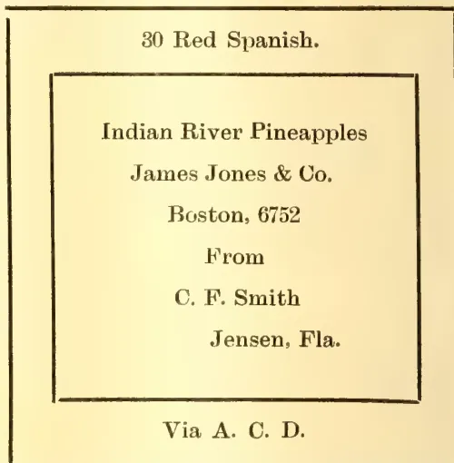
If the box contains two different sizes, the fact should be so indicated on the end of the crate.
Some growers cover the panel of one end of the crate with a fancy poster, which adds considerably to the appearance of the package.
COST OF PICKING AND PACKING.The cost of picking, wrapping and packing pineapples, including paper, nails, crates and all is approximately twenty-five cents per crate.
SHIPPING.Pineapples may be forwarded to the large northern markets by express, by all-rail freight, or partly by rail and partly by steamer.
Express shipments would be the ideal way for forwarding pineapples, as the fruit could then be allowed to become more nearly matured before picking, but the express rates are prohibitive. In fact, the high rates of expressage have had much to do with the falling off of the pineapple industry at various inland points. Moreover, express shipments cannot usually be sent through to their
OCTOBER, 1908.]319Edible Products.destination in solid cars. Such fruit as is shipped by express must usually be transferred a number of times. The time allowed by train connections for transferring expressage is usually very short, consequently the crates receive extremely rough handling and many of them are broken.
Since express shipments are out of the question, the next best plan is to ship by freight in car load lots. This insures more rapid transportation and cheaper rates than if smaller shipments are made. Two or three neighbours may combine and load a car in case one cannot do so alone.
All-rail shipments should reach New York from Fort Pierce, near the northern edge of the pineapples belt, in five days; Boston in six days; Philadelphia in four and one-half days. By water from Jacksonville the time averages one or two days longer.
A car load is 300 crates, though the car load rate may apply to 150 crates; the maximum should not exceed 360 crates.
In loading the car for all-rail shipments, place six crates across the end on their flat sides and two and a half to three inches apart. On top at front edge of this layer place a slat one-half inch thick by three inches wide; cut so as to exactly fit into the car crosswise. Put one nail through this into the slat of each crate, continue this five tiers high for a 300 crate car and six tiers high for 360 crate car, placing 150 or 180 crates in each end of the car, as the case may be. When the crates are all in, a passage about two and one-half feet wide is left in the centre of the car between the doors. These spaces must be braced to prevent the crates from slipping and falling. Across the face of the top layer at the centre, bottom and top tack a board 1 by 5 inches, then with short pieces brace diagonally across between filling in the two one-half feet spaces with sufficient braces to prevent slipping. It will be noticed that no slats are to be nailed across the crates except at the front ends. This leaves the top upper tier of crates two and one-half inches higher than those at the back ends of the car, which will assist considerably in preventing shifting.
The shipping routes for pineapples from the east coast of Florida to the northern markets are as follows:—
1. Florida East Coast Railroad and Ocean Steamship Company.
2. Florida East Coast Railroad and Merchant and Miners' Transportation Company.
3. Florida East Coast Railroad and Clyde Line Steamship.
4. Florida East Coast Railroad, Atlantic Coast Line (Norfolk) Merchant and Miners' Transportation Company.
5. Atlantic Coast Dispatch.
The rates beyond Jacksonville, Fla., to New York, Philadelphia and Boston by routes one, two and three is thirty-five cents per crate; by routes four, forty-five and one-half cents, while the all-rail (A.C.D.) is forty-eight and one-half cents to Philadelphia, fifty cents to New York, and fifty-eight and one-half cents to Boston.
The rates to Jacksonville on the Florida East Coast Railroad from various points are as follows:—
| Stations. | Rates. |
|---|---|
| Roseland to Vero (inclusive) | 22 c. |
| Oslo to Ankona (inclusive) | 23 c. |
| Tibballs to Aberdeen (inclusive) | 24 c. |
| Gomez to West Jupiter (inclusive) | 25 c. |
| Prairie to Hypoluxo (inclusive) | 28 c. |
| Boynton to Deerfield (inclusive) | 30 c. |
| Pompano to Dania (inclusive) | 32 c. |
| Hallandale to Miami (inclusive) | 33 c. |
The facilities throughout the pineapple belt for loading pineapples could scarcely be improved upon, sidings and loading stations are placed so that the hauls are always short, there being in some cases four or five or more loading stations in every two or three miles.
Pineapples are marketed in one of four ways, either by selling them at the packing house, by shipping them to a commission house, selling through an association, or selling through a broker.
Selling at Home.—If the fruit can be sold at a fair figure at the packing house, it is usually best to take it. Then someone else than the grower has to assume the responsibility of market fluctuations and delays in transportation. Frequently the crop is sold in advance at a certain fixed rate per crate. Such contracts usually cover the fruit harvested within a certain period.
Private Trade.—The private trade in pineapples has assumed considerable proportions. To the larger grower this method of marketing pineapples is not very inviting owing to the extra amount of time and care required. But it is worthy the serious consideration of the small grower.
Edible Products,350[OCTOBER, 1908:The fruit supplied to a private trade should be of the best quality, carefully selected, neatly and tastefully packed. In dealing with private customers every effort should be made to give the same grade of fruit in every order. Uniformity is absolutely necessary in holding the good-will and confidence of a private customer.
All packages for the private trade must usually go forward by express.
Commission Merchants.—The bulk of the pineapple crop is handled either directly or indirectly by the commission merchants. The main objection to the commission merchant system of selling fruit is that the grower has to place himself entirely in his hands. There seems, however, no way of overcoming this objection. There are honest men in the commission business, as large a proportion as in any other line of endeavour, and there are always ways and means for finding out which are the honest, responsible houses, and which are not. Select a good house and stick to it. We know pineapple growers who have been shipping every season to the same firm for fifteen years and more.
In shipping to commission merchants, the best policy is to select one reliable man in each market to which shipments are to be made, and ship to him alone. Do not split a shipment in any one market, sending part of it to one man,
part to another. It is not fair to the merchant and will result in loss to the shipper.
Try to work with the commission man. If he wants riper fruit, send it to him, if not so ripe, let him have it. He knows the market as the grower cannot. Try to give him what he wants.
Spasmodic Shipments.—A grower shipping to New York learns that pineapples are worth more in Boston than they are in New York. He ships there, but by the time his fruit arrives, the price has dropped and he gets the same or less than he would have got in New York. The price at which the market stands when the fruit is shipped is seldom the exact price at which the fruit is sold when it arrives. It does not pay to ship first to one market, then to another in the hope of getting the top prices always. Low prices will probably be obtained more frequently than if the fruit is regularly sent forward into certain markets, regardless of prices. One who ships according to this rule will usually come out at the end of the season with more money to his credit than will the one who chases about from one market to another in the hope of securing the best prices.
The following receipts, taken from the books of a pineapple grower, go to show that there is after all but little difference in the markets from day to day:—
| Date. | Market. | Shipment. | Net receipts. | Average. |
|---|---|---|---|---|
| May 27, 1904... | New York | 20 crates | $35.47 | $1.27 |
| " 27, " | Philadelphia | 15 " | 20.15 | 1.34 |
| June 4, " | New York | 50 " | 66.13 | 1.32 |
| " 4, " | Boston | 103 " | 138.56 | 1.34 |
| " 4, " | Philadelphia | 54 " | 99.57 | 1.86 |
| " 8, " | New York | 27 " | 43.48 | 1.61 |
| " 8, " | Boston | 33 " | 49.50 | 1.50 |
| " 8, " | Philadelphia | 26 " | 45.76 | 1.76 |
| " 13, 1905... | Boston | 94 " | 169.88 | 1.80 |
| " 15, " | Philadelphia | 100 " | 194.94 | 1.95 |
| " 15, " | Boston | 158 " | 286.95 | 1.81 |
| " 17, " | Boston | 66 " | 122.85 | 1.86 |
| " 17, " | New York | 100 " | 190.28 | 1.90 |
| " 19, " | New York | 100 " | 187.62 | 1.87 |
| " 19, " | Philadelphia | 150 " | 241.65 | 1.61 |
| " 20, " | Philadelphia | 150 " | 155.51 | 1.03 |
Select a number of markets, one or more, as many as can be given a fair amount of fruit, and ship to them right along, week in and week out, day in and day out.
Associations.—If any association can be formed for the mutual benefit of the growers it is an excellent thing. Too frequently, however, they go to pieces and the work amounts to nothing. The weak point seems to be that the associ-
ation undertakes to do too much. The only association known to the writer which has proved successful is one which looks to the protection of the grower, without destroying his individuality and independence.
Brokerage.—In selling by the brokerage system, the fruit is placed in the hands of a fruit broker, who has the power to sell or consign as he deems best, a charge of ten cents per crate being
OCTOBER, 1908.]351Edible Products.made for handling. The grower then turns over the responsibility of marketing entirely to another person. The system possesses no advantages for the person who feels equal to the task of marketing his own fruit.—Agricultural Experiment Station, Florida: Bulletin No. 84, March, 1906.
BY H. T. NIELSON,
Scientific Assistant, Forage Crop Investigation Bureau of Plant Industry.
(Concluded from page 254.)
Cowpeas for seed production are quite satisfactorily harvested with a mower. A bunching attachment has been used with excellent results. This gets the vines out of the way of the team, thus avoiding considerable loss of peas through trampling and crushing by the mower wheels. It also leaves the vines in a more desirable shape for curing, they being rolled into small windrows. The self-rake reaper is a very satisfactory machine for mowing cowpeas for seed, accomplishing even better results than the buncher on a mower, as the vines are left in bunches of very convenient size for curing and handling.
The bean harvester has been given careful trial in harvesting cowpeas for seed production, but it is not very satisfactory. Viny peas catch on parts of the machine and drag badly. There is also likely to be much soil worked into the vines, making the further handling difficult and disagreeable.
For seed production cowpeas should be allowed to mature a greater percentage of pods than when cut for hay. Half or more should be ripe before mowing, even at the expense of losing a part of the foliage. The vines should then be allowed to cure and become thoroughly dry, after which the thrashing may be done. The curing and drying may be done in the swath, cock, stack, or barn, as desired, weather conditions largely determining the method to be pursued. The hay or straw is of better quality if the curing and drying are done in the stack or barn, though, of course, the amount of work required is greater. It is a common belief that weevils do much less damage to seeds in the pods than to the thrashed seeds. On this account some growers store their crop and thrash it late, in the winter or early in
the spring. However, the unthrashed material requires much space for storage, and there is no effective way of combating the insects, while in clean stored seed all insect life is readily destroyed by treatment with carbon bisulphide.*
Cowpeas may be thrashed with an ordinary grain thrasher. In this case the riddles are adjusted for cowpeas and satisfactory screens are provided. The most essential point in thrashing cowpeas is to maintain a low and even speed of the cylinder, 300 to 400 revolutions per minute, while the rest of the machine should be adjusted to run at least as fast as for thrashing wheat or oats. Some operators prefer to have a greater clearance between the cylinder and concave spikes than for grain thrashing, while others do not think this an advantage. While expert operators sometimes do very satisfactory work with an ordinary grain separator, there are three important difficulties encountered; (1) Too many of the pods pass through with the straw unopened; (2) the machine is easily choked by the tangled vines wrapping around the cylinder; and (3) the percentage of cracked peas is usually large.
To overcome these difficulties several modifications of thrashing machines have been devised so as to adapt them for handling cowpeas. One modification which has been adopted in several different machines is the use of two cylinders. These cylinders are adjusted to run at different speeds, the front one slowly, about 300 revolutions per minute, and the rear one more rapidly, about 450 revolutions per minute. Apparently the only advantage gained by two cylinders over one is that a smaller percentage of the unopened pods pass through with the straw. The use of two cylinders, however, results in a somewhat larger percentage of cracked peas.
A second modification which has been applied both to machines with one cylinder and those with two is to sharpen the spikes on the concaves or on both the concaves and cylinders. This sharpening means bringing the face of the spike to as nearly a sharp edge as can be done by ordinary blacksmithing. The beneficial effect of sharpening the spikes is very marked, as the vines pass through much more readily, there is little tendency to wrap around the cylinder, the amount of
* For destroying weevils or preventing damage by them, see article on "Insects Injurious to Beans and Peas," in the Yearbook of the Department of Agriculture for 1898.
Edible Products.352[OCTOBER, 1908.power required is very materially reduced, and the percentage of cracked peas is decidedly smaller. The straw is also chopped, so it is in fine condition for feeding. A one-cylinder machine with the spikes sharpened does very satisfactory work except that a small percentage of the pods may pass through in the straw unopened, while by the use of a two-cylinder machine practically all the peas are secured.
In a third device all the spikes in both cylinder and concaves are sharpened, and there is a minimum of clearance. The concaves are arranged in two sets, one of two rows and the other of three. The two-row set is at the front of the cylinder on a plane with the shaft; the other is below the cylinder and at the back of it about from the first. There is a perforated web under the cylinder which is hinged at the three-row set of concaves and has the front part attached to the shakers, so that it is worked up and down by their backward and forward motion. When the vines come through the first concaves they drop on the web, rest momentarily, and are then picked up by the cylinder again and taken through the second concaves. The momentary rest results in rearrangement of the straw, so that it virtually amounts to passing through a second cylinder, as in the two-cylinder machines. A perforated feeding table is used to get loose peas to the separating surface without passing through the cylinder. This machine is by far the most satisfactory pea thrasher yet devised. The number of cracked peas is very small; the vines are chopped as fine as if they had been through a cutting box, and all the peas are gotten out of the pods, while the material which can be run through in a given time is the maximum for present-day machines and the power required the minimum.
It is very essential in thrashing cowpeas that there be sufficient power to give a uniform speed to the separator. It is also highly desirable that the cylinder be kept uniformly full in order to get the best results, as running empty means an increase in the number of cracked peas.
The price of cowpea thrashers now on the market ranges from $300 to $600, exclusive of the engine. If the peas are stacked or put into a barn they need not be thrashed immediately, one machine will be sufficient for 2,000 acres, as the crop from 20 acres can readily be handled in one day. As a rule, only a moderate acreage
of cowpeas for seed should be grown by any one farmer, as unfavourable weather may cause great difficulty at harvest time. It is very desirable to have enough cowpeas for seed grown in a community to justify the local ownership of a thrashing machine.
The beneficial results of growing cowpeas are due largely to the ability of the plants, like those of alfalfa and red clover, to take nitrogen from the air by means of the bacteria which live in the nodules on the roots. Cowpeas also improve markedly the physical condition of the soil. This, taken in connection with their ability to produce a crop quickly on even the poorer soils, makes the cowpea particularly valuable both as a catch crop and in regular rotations when utilized either for hay or seed production.
At the present time the most popular rotation for the entire South is one which allows the largest possible area to be planted in cotton each year. A system of cropping which is in general use is three years in cotton, the fourth year in corn and cowpeas, and then three years in cotton again. This system allows three-fourths of the farm to be in cotton each year, and is applicable to all of the better agricultural land. On the poorer soils of the cotton belt it is likely that better results would be secured by growing cotton only two years and corn and cowpeas the third year. This would leave two-thirds of the farm for cotton each year, and would undoubtedly be an excellent system of cropping. The Alabama Agricultural Experiment Station reports an increase in yield in one case of 696 pounds of seed cotton to the acre, or 83 per cent. due to ploughing under a crop of cowpea vines on land which had been in cotton the previous season. The Arkansas Agricultural Experiment Station secured an increase in yield of 59 per cent. where a crop of cowpeas had been grazed the preceding year.
Practically the same plan of rotation is followed in the sugar-cane districts of Louisiana. Three crops of cane are taken off the land, and the fourth year it is planted to cowpeas or to corn and cowpeas. The work stock are fed almost exclusively on pea-vine hay or are grazed on cowpeas in the cornfield after the corn has been gathered. This rotation gives excellent results in the succeeding crops of cane.
OCTOBER, 1908.]353Edible Products.A rotation of wheat or oats and cowpeas is giving excellent results in parts of Missouri, Arkansas, and Tennessee. Cowpeas are sown on the land immediately after the removal of the grain crop and are utilized for hay or seed or for pasture. Grain is sown again in the fall, this making two crops a year from the same land. In many instances land-owners in Arkansas and Missouri have allowed tenants the use of land free of charge for producing a crop of cowpeas, stipulating, however, that the land must be well prepared. When the soil is given good preparation before sowing the cowpeas, it is not necessary to plough in the autumn for the grain. The fall preparation usually consists of disking the cowpea stubble and sowing the grain with a drill. Occasionally the seeding is done with a disk drill without any preliminary preparation. The increase in yield of wheat due to the cowpeas is generally given as from 3 to 5 bushels per acre. At the Missouri Agricultural Experiment Station, an increase in yield of 63 per cent. with oats and 49 per cent. with wheat following cowpeas as a catch crop was secured. The Arkansas Agricultural Experiment Station reports as the average of a four years' test of wheat an increase of 25 per cent. from ploughing under cowpea stubble the first fall, 39 per cent. from ploughing under cowpea vines, and 42 per cent. where cowpeas were grown each year as a catch crop between the wheat crops, only the stubble of the peas being ploughed under. The increased yield in the latter case amounted to 70 per cent. in the fourth season, the yields having gradually increased from year to year, in addition to producing a fair quantity of very nutritious hay each season.
On farms where more or less live stock is produced, the following three-year rotation is very popular and is a good one: first year, cotton; second year, corn with cowpeas at last cultivation; third year, winter oats or wheat, with a catch crop of cowpeas for hay or seed after the grain has been removed.
A few striking results due to the growing of cowpeas are here noted:—The Alabama Agricultural Experiment Station reports a yield of oats following cowpea vines ploughed under 247 per cent. larger than where German millet was ploughed under. The Arkansas station reports an increase in yield of 63 per cent. on corn where cowpeas were grazed the season before. The Missouri station increased the yield of corn 79 per cent. by growing cowpeas on the land for two years before planting the corn. In yield of hay the
Arkansas station secured an increase of 116 per cent. on oats following cowpeas grazed the year before. The Alabama station increased the yield of sorghum hay 201 ton, or 55 per cents by ploughing under cowpea stubble on land where sorghum was grown the previous year.
These and many similar experiments conclusively prove that it is much more economical to use cowpeas for hay or seed production in rotation with other farm crops than to use them for green manuring. It is only in special cases that it is advisable to utilize cowpeas as a green manure. On very poor sandy land or on stiff, heavy clay soils in bad mechanical condition a crop of cowpeas ploughed under will give markedly beneficial results. Cowpeas give very good satisfaction as a cover crop in orchards, for which they find a limited use. In case of bad weather setting in at harvest time it may be desirable to utilize the crop for green manure, or to pasture it if the land is of such a nature as not to be seriously injured by the trampling of stock.
There are about fifty varieties of cowpeas known, but only a few of the best of these are extensively cultivated. The varieties differ in such characters as habit, size, earliness, prolificness, disease resistance, and especially in the colour of the seeds, which are either entirely white, red, buff, black, or blue, or variously blotched or speckled. The varieties are all very constant in their seed characters. The variation in vines, however, is very marked, being influenced by the time of planting, the nature of the season, and the locality where grown. Early planting on a wet season usually results in a large growth of vines. Natural crosses between the varieties occur under favouring conditions, but they are far from common. The use to be made of the crop by the grower should determine largely which variety to select.
For table use the varieties with white or nearly white seeds are preferred, as they make a more attractive dish. The habit of growth of the table peas is of little direct concern, and, as a matter of fact, none of them is very satisfactory for forage purposes. The principal varieties are the Blackeye, of which there are several strains, the Brown-eye, the Lady, and the Cream. These are more properly considered vegetables. Several of the coloured-seeded varieties are also used as table peas.
For forage purposes the most desirable varieties are those which have a
45 Edible Products.354[OCTOBER, 1908.fairly upright habit, grow to large size, hold their leaves well, and produce an abundance of pods. Descriptions of the most important varieties follow. Of the numerous remaining varieties none is grown to a very large extent, and most of them are distinctly inferior to those described here.
Whippoorwill.—The Whippoorwill variety is known under several other names, such as Running Speckled, Bunch Speckled, and Shinney. It may be considered the standard of all field cowpeas. It is suitable either for grain or hay production, or both. It makes a vigorous growth, is fairly erect, and still produces a large amount of vine. It can readily be handled by machinery, which is bringing it more and more into prominence. The seed is mottled chocolate on a buff or reddish ground colour.
Unknown, or Wonderful.—The Unknown, or Wonderful, cowpea is another field variety which is grown to a large extent. It is the largest growing and most vigorous of the cowpeas, but is late in maturing, it being difficult sometimes to secure seed of it as far north as Washington, D. C. The principal objection to this pea is its light seeding. It is nearly as erect as the Whippoorwill variety; hence, it is quite readily handled by machinery either for grain or hay production. The seed is large in size and of a very light clay colour.
New Era.—The New Era is the smallest seeded of the cowpeas that have found a wide use. The seed is bluish in colour, owing to the innumerable minute blue specks on a gray ground. The New Era is the most nearly erect of any of the varieties, rarely having any prostrate branches. It usually produces a heavy crop of seed and matures in from seventy-five to ninety days. It is one of the earliest of the cowpeas and is the most easily handled by machinery. The small seed is not usually considered an undesirable character, as a smaller quantity is required for seeding than is the case with other varieties.
Groit.—The variety known as the Groit has been much confused with the New Era cowpea. In habit the two are much alike, but the Groit is a little superior, as it makes a larger growth and fruits more heavily. The seed is quite similar to that of the New Era, but has chocolate mottlings in addition to the blue specks. It is quite certainly a hybrid between the New Era and the Whippoorwill varieties.
Iron.—The Iron variety is coming rapidly into prominence. In its habit
it is only slightly different from the Unknown, though it is not quite as vigorous or as large. It is earlier than the Unknown and the seed, though nearly the same colour, is much smaller being but very little larger than that of the New Era. The characteristic of the Iron cowpea which has been instrumental in bringing it into prominence is its resistance to wilt and to root-knot caused by eel worms. It is the only one of the cowpeas which has been found to resist these diseases. Where they are prevalent in the soil, the Iron cowpea is the only variety which can be successfully grown, and since the diseases are spreading the distribution of the Iron cowpea is also increasing. Regardless of its resistance to these diseases it is a valuable variety under nearly all conditions, being vigorous, prolific, and quite erect. The seed is hard and retains its vitality better than that of most varieties. It will lie in the ground through the winter and germinate the next spring. This variety and the Unknown hold their leaves better than any others.
Clay.—The Clay cowpea is more variable in its habit than that of the foregoing varieties. It is the most pronounced trailor of any of the peas grown quite largely, and is consequently in very slight favour where the pea crop is handled by machinery. The plants are very vigorous but low growing, and they usually seed sparingly. Since seed is such an important item at the present time, a variety which has but poor fruiting qualities is not apt to remain popular, even though it may be harvested readily by machinery. The seed is of the same colour as that of the Unknown and Iron, but is intermediate in size and flatter and longer.
Black.—The Black cowpea is used to a considerable extent in the sandy coastal plain soils of Virginia and North Carolina. On heavy clay land this variety makes a very heavy growth of vine, but produces very little seed, while on the sandy lands it grows more bushy and fruits quite heavily. It also finds some demand in the sugar-cane section of Louisiana, where it is grown with corn in rotation with sugar cane. Where other varieties thrive the Black is not a favourite. The seeds are quite large and entirely black.
Taylor.—The variety called Taylor has larger seeds than any other cowpea. The seeds have nearly the same markings as those of the New Era, though the ground colour is somewhat lighter. The Taylor cowpea has met with considerable favour in Maryland and Delaware, where it is erroneously called the Gray
OCTOBER, 1908.]355Edible Products.Crowder, but outside of this region does not seem to be a very valuable variety. In most cases it is too much of a trailer to be desirable. It also has a tendency to drop its leaves earlier than any of the other varieties except the Black.
Red Ripper.—The Red Ripper is a valuable pea, as it makes nearly as large a growth as the Unknown, or Wonderful, and is excellent for growing in corn. It is very late, usually maturing but a small number of peas at Washington, D. C. It is difficult to procure seed of it in quantity on account of its light yield. The seed is dark red and about the same size as that of the Whippoorwill variety.
(1) The cowpea is the best legume for the entire cotton belt, and can be profitably grown much farther north. It is especially suitable for combined hay and seed production or for hay alone.
(2) To make good cowpea hay requires careful handling of the crop. The plant should have made its growth and have at least the first pods ripe when the mowing is done. Uniformity in maturing is essential in getting the best results. The use of a tedder is very helpful. The serious loss of leaves can be avoided by not handling the hay when the leaves are dry and brittle. The curing is best done in small cocks, and the hay is ready for the stack or barn when no moisture can be wrung from the stem by twisting it with considerable force.
(3) Cowpeas for hay production are very advantageously grown in mixture with sorghum, Johnson grass, or soy beans. The yield is thus increased, the quality improved, and the curing more easily done. Cowpeas give very good results when grown with sorghum in cultivated rows, and are very commonly planted in corn and used for grazing or ensilage.
(4) Pasturing cowpeas is not the most economical practice, but it is frequently resorted to because of the small expense it entails. Cowpeas are especially suitable for grazing hogs.
(5) Cowpea hay is very nutritious. It is nearly equal to wheat bran as part of a ration. It is satisfactory for work
stock and for beef or milk production, and it gives good results when fed to poultry. The grain is a rich feed, excellent for poultry but little used for other feeding. Cowpea straw is an excellent roughage and nearly as valuable as the hay.
(6) Cheaper cowpea seed will result in the much more extensive growing of the crop. Harvesting for seed can be done most cheaply by the use of machinery. The crop should be cut with a mower or self-rake reaper when half or more of the pods are ripe. When thoroughly dry the thrashing may be done with an ordinary grain separator with some modifications, with a two-cylinder cowpea thrasher, or with a one-cylinder special machine which has all the thrashing spikes, sharpened in addition to having ingenious devices which make it the most satisfactory thrasher for handling cowpeas.
(7) Cowpeas add nitrogen to the soil and improve its mechanical condition. They are most profitably grown in rotation with other crops. The following rotations are good ones:—
(a) Cotton, three years; corn and cowpeas fourth year; and then cotton again. This is all right on the better soils of the South, but the cotton should be planted only two years in succession on the poorer soils.
(b) Wheat or oats with cowpeas each season after the removal of the grain crop, the land being seeded to grain in the fall, making two crops a year from the same land.
(c) Cotton, first year; corn and cowpeas, second year; winter oats or wheat followed by cowpeas as a catch crop, third year; and then cotton again.
(8) The most valuable varieties are the Whippoorwill, the Unknown or the Wonderful, the New Era, and the Iron for field purposes; and the Blackeye for table use.
(9) The Iron cowpea is practically immune to the two serious diseases, wilt and root-knot, which attack the other varieties more or less. It alone should therefore be grown wherever these diseases are prevalent.—U. S. Department of Agriculture, Farmer's Bulletin 318, April 4, 1908.
356[OCTOBER, 1908.The following extracts are reprinted from Circular 140, Forest Service, U.S. Department of Agriculture:—
Many people in this country think that forestry had never been tried until the Government began to practise it upon the National Forest. Yet forestry is practised by every civilized country in the world, except China and Turkey. It gets results which can be got no other way, and which are necessary to the general welfare. Forestry is not a new thing. It was discussed two thousand years ago, and it has been studied and applied with increasing thoroughness ever since.
The principles of forestry are everywhere the same. They rest on natural laws, which are at work everywhere and all the time. It is simply a question of how best to apply these laws to fit local needs and conditions. No matter how widely countries may differ in size, climate, population, industry, or government, provided only they have forests, all of them must come to forestry some time as a matter of necessity.
The more advanced and progressive countries arrive first and go farthest in forestry, as they do in other things. Indeed, we might almost take forestry as a yardstick with which to measure the height of a civilization. On the one hand, the nations which follow forestry most widely and systematically, would be found to be the most enlightened nations. On the other hand when we applied our yardstick to such countries as are without forestry, we could say with a good deal of assurance, by this test alone, "Here is a backward nation."
A singular and suggestive exception is England, which, though provided with mountain and heat lands capable of producing a large part of the wood for home consumption, has, with strange indifference, been leading all nations in volume of wood imports and depending mainly upon foreign sources for her supplies. England has hitherto been able to count with certainty upon outside aid from such near neighbours as Norway and Sweden. This policy has seemed satisfactory to the people in spite of the examples of a more provident policy afforded by rival nations almost at her door. The geographical and economic position of the country
has permitted the Government, for the time at least, to ignore measures found necessary for the public welfare in other countries of the same rank.
The countries of Europe and Asia, taken together, have passed through all the stages of forest history and applied all the known principles of forestry. They are rich in forest experience. Their lessons of forestry were brought home to them by hard knocks. Their forest systems were built up gradually as the result of hardship. They did not first spin fine theories and then apply those theories by main force. On the contrary, they began by facing disagreeable facts. Every step of the way toward wise forest use, the world over, has been made at the sharp spur of want, suffering, or loss. As a result, the science of forestry is one of the most practical and most directly useful of all the sciences. It is a serious work, undertaken as a measure of relief, and continued as a safeguard against future calamity.
Roughly, those countries which to-day manage their forests on sound principles have passed through four stages of forest experience. At first the forests were so abundant as to be in the way and so they were either neglected or destroyed. Next, as settlements grew and the borders of the forest receded farther and farther from the places where wood was needed and used, the question of local wood supplies had to be faced and the forest was spared and even protected. Third, the increasing need of wood, together with better knowledge of the forest and its growth, led to the recognition of the forest as a crop, like agricultural crops, which must be harvested and which should therefore be made to grow again. In this stage silviculture, or the management of the forest so as to encourage its continued best growth, was born. Finally as natural and industrial progress led to measures for the general welfare, including a wiser and less wasteful use of natural resources, the forest was safeguarded and controlled so as to yield a constant maximum product year after year and from one generation to another. Systematic forestry, therefore, applied by the nation for the benefit of the people and practised increasingly by farsighted private citizens, comes when the last lesson in the school of forest experience is mastered.
OCTOBER, 1908.]357Timbers.The United States, then, in attacking the problem of how best to use its great forest resources, is not in the position of a pioneer in the field. It has the experience of all other countries to go upon. There is no need for years of experiment with untried theories. The forest principles which hundreds of years of actual practice have proved right are at its command. The only question is how should these be modified or extended to best meet American conditions. In the management of the National Forests the Government is not working in the dark. Nor is it slavishly copying European countries. It is putting into practice, in America and for Americans, principles tried and found correct, which will insure to all the people alike the fullest and best use of all forest resources.
In the following short history of what forestry has done in other countries, it will be possible to give only the chief facts. Yet even in this incomplete review two things stand out with striking clearness. One is that those countries which have gone farthest in the practice of forestry are the ones which today are most prosperous, which have the least proportion of waste land, and which have the most promising futures. The other is that those countries which spend most upon their forests receive from them the greatest net returns.
In Switzerland, which has 2,000,000 acres, or 20.6 per cent. of its area, in forest, the communal forests are the largest, and make up 67 per cent. of the total; the cantons own 4.5 per cent., and private persons own 28.6 per cent. The communal holdings are constantly growing by the purchase of private lands. The general government, or Bund, owns no forests. From $6,000,000 to $8,000,000 worth of wood (300,000 tons) and wooden-ware are annually imported. This comes mainly from Austria-Hungary, southern Germany, and France.
The State forests yield about 64 cubic feet per acre, the corporation forests 42 cubic feet; the average yield of both together is about 45 cubic feet. The average wood growth per acre has been estimated to be 50 cubic feet. In the State forests of Berne the figures show a growth of 50 cubic feet for the plateau country, 73 cubic feet for the middle country, and 75 cubic feet in the Jura. Wood prices, which are higher than in Germany, have been rising for forty years.
The expenditures in forest management vary greatly among the Cantons,
ranging from $1.50 to $7 per acre. The net annual returns range from $3 per acre in the forests where least is expended, to $8 or $9 per acre in the city forests, where most is expended.
Forest regulations came very early in Switzerland. The first forest ordinance of Berne was issued 600 years ago. The city forest of Zürich, famous as the Sihlwald, has been managed under a working plan since 1680, and is today one of the most perfectly managed and most profitable forests in the world. It yields, on the average, a clear annual profit of $12 per acre. From time to time, as the evidence shows, the Swiss people stood in dread of a timber famine. Ordinances were passed forbidding the reduction of the forest area, the making of clearings, and the exportation of wood from one Canton to another. In the middle of the eighteenth century, as modern industrial life began, various Cantons sought to follow the examples which Berne and Zurich had set in forestry. A severe flood in 1830 brought home the need of more vigorous measures in guarding against torrents. The floods of 1834 and 1868 further enforced the lesson. An investigation of Swiss forest conditions was ordered by the Bund in 1857, and the same year provision was made for an annual appropriation of $2,000 to the Swiss Forestry Association for engineering and reforesting work in the Alps. In 1871 the Bundesrath was empowered to carry on this work, with an annual appropriation of $20,000. After the flood of 1868, $200,000 of the collections made for the relief of the sufferers was devoted to reforestation. In 1876 the Bund assumed supervision of the water and forest police in the high Alps above a certain elevation, and undertook to give aid in the work of engineering and reforesting for the control of the Alpine torrents. Since 1898 the Bund has supervised all this work, and in 1902 the present policy was firmly fixed by a revision of the existing law.
All the Swiss forests comprised in the Bund are now classified as protection and non-protection forests. Whether public or private they are all controlled by the government. In protection forests all cuttings must be such as to preserve the protective value of the forest cover intact, and for this reason clean cutting is usually forbidden. In such forests stumpage sales are forbidden, and all wood must be felled and measured under the direction of a forest officer. Otherwise privately-owned protection forests are supervised in the main as are those publicly owned. Non-
Timbers.358[OCTOBER, 1908.protection forests are also subject to a number of regulations. When they are in private hands clearings may be made only with consent of the Canton, logged areas must be reforested within three years, and existing forest pastures must be maintained.
Where protection forests can be created by planting, this may be ordered, and where forests are converted to farming land or pasture an equal area may be ordered reforested. Where barren ground is required to be forested for protective purposes, the Bund assists by paying from 30 to 50 per cent. of the cost. Between 1876 and 1902, 16,000 acres were reforested at a cost of $1,000,000, in round numbers, the Bund having paid one-half.
Grazing has been regulated for centuries. In protection forests it is entirely prohibited; but on all the rest of the forests great success has attended the efforts of the forest service to safe-guard both pasturage and the forest by supervision and range improvement. Despite differences in local conditions, the experience in
Switzerland in forest grazing is therefore, strongly in support of the policies which are directing the efforts of our own Forest Service. Indeed, the experience of all Europe shows the necessity of controlling the public range.
To sum up, forestry in Switzerland, where every foot of agricultural land is of the greatest value, has made it possible for the people to farm all land fit for crops, and so has assisted the country to support a large population, and one that is more prosperous than would be the case if the valleys were subjected to destructive floods. In a country as small as Switzerland, and one which contains so many high and rugged mountains, this is a service the benefits of which cannot be measured in dollars. It is in Switzerland also, in the Sihlwald, that forestry demonstrates beyond contradiction how great a yield in wood and money it may bring about if applied consistently for a number of years.—The Hawaiian Forester and Agriculturist, Vol. V., No. 5., May, 1908.
OCTOBER, 1908.]359By J. C. WILLIS.
A little over a year ago I received an unpleasant surprise, finding that a number of plants of the Water Hyacinth (Eichhornia crassipes) had been imported into Ceylon. I recommended that they be at once destroyed, this being one of the most troublesome weeds in the world, but this was refused on the ground that the plant (which is quite true) was one of the most beautiful that could be grown in a house in this country.
The plant was established, and given to a number of residents. Whenever I discovered it, I urged upon the owner, usually with success, the necessity of destroying it, and a few months ago I thought that the matter was ended. Now, however, I find the plant in new places, and it is, I believe, even being hawked in Colombo. As it is not parasitic, it cannot be included under the Pests Ordinance, and as the plants had actually been imported, their introduction could not be prevented under the other Ordinance, that of 1901 against importation of Pests, though further introduction will be prevented under this Ordinance.
Eichhornia crassipes is a member of the little family Pontederiaceæ, and is itself a South American plant, as are so
many of the most beautiful tropical flowers. From South America it was first introduced to Florida, where it has become a terrible weed. With its bladder-like leaf stalks (by which and by its blue or whitish flowers it may be instantly recognised) it floats in the water like the water lettuce of Colombo lake, and multiplies with great rapidity. I have myself crossed wide rivers in Florida where no water could be seen for the masses of this plant. In many places steamboat traffic has been greatly interfered with.
I have also seen the plant in Java, where it covers the canals and is a common weed in the paddy fields, and it has recently become so troublesome in Australia that most strenuous laws have had to be passed for its extirpation, involving considerable trouble and expense to landowners.
Weeds do not, as a rule, spread till they have been some time in Ceylon, but already grave risk is being run that this plant should escape into the rivers, lagoons or paddy fields. Every one who has it in his possession should immediately destroy it by fire—not by throwing it away—and impress upon anyone whom he may find in possession of it to do the same. If it be allowed to be distributed about as at present, it is sure, sooner or later, to escape into a river or elah, and may spread mightily and cause much trouble and loss.
360[OCTOBER, 1908.BY ALFRED J. EWART, D. SC., PH. D.,
F.L.S.,
Government Botanist.
At some recent prosecutions under the Thistle Act at Leongatha the Police Magistrate, Mr. G. Read Murphy, offered a series of prizes to the children bringing the largest numbers of Ragwort, a plant with which the district is infested, to the head teacher of the local State school. As the result, the head teacher writes to say that so far 19,943 plants of ragwort have been brought to him, and that over 12,000 were brought in during the first four days. Apparently the idea has been very successful, and the children have for the time being cleared the district, more or less, of plants of ragwort of appreciable size.
There can be no doubt that the same idea might be extended to other districts infested by proclaimed weeds with great effect, although it seems hardly fair to throw a new burden on the already heavily-laden shoulders of the local teachers. If the fines obtained as the result of prosecutions were devoted in some suitable fashion as rewards for their destruction, the good done by the Thistle Act would be greatly increased, and an order authorizing Police Magistrates to devote the fines inflicted to that purpose would be of great value. The money would then be retained and utilized in the districts affected, where it is usually most needed, instead of being lost to it.
The good effects of utilizing the services of the children in the manner above indicated are two-fold. In the first place everyone who has had anything to do with children and with plants knows how strong the natural destructive tendency of children is, and how much damage it can cause when
uncontrolled. By directing this destructive tendency into proper channels we give their natural faculties full play, and divert them from the useful shrubs, trees, birds, nests and the like on which they might otherwise be exercised. After a time the child should come to regard certain plants as he does snakes, i.e., as something to be destroyed on sight. When he comes to man's estate and has land of his own, proclaimed plants will not be likely to thrive upon it. It is from an educational point of view, and by inculcating the spirit that certain plants, like certain animals, are natural though insidious enemies of man, that the idea of offering rewards to school children for their destruction is likely to prove of most use.
Nevertheless in France, and in other countries also, the services of children have been largely utilized to keep down or suppress plant or animal pests, and the direct good effects of children scouring the highways and byways for weeds are not to be under-estimated. It is along roadsides that the problem of weed suppression is most difficult, and it is also along the roads that weeds spread most readily from one district to another. I have estimated that a plant of ragwort allowed to flower freely in a newly-cleared district may, under favourable conditions, succeed in establishing 500 offspring besides being itself perennial. The 20,000 plants of ragwort collected and destroyed by the school children in a short time at Leongatha, and at an unfavourable period of the year, represent a potential 10,000,000 plants in the following season. Fair-sized plants of ragwort run about 10 to the pound when thoroughly dried, so that 10,000,000 plants represent not far short of 500 tons of organic matter which, in the form of sheep or mutton, would be of considerable value, instead of a dead loss to the district.—Journal of the Department of Agriculture of Victoria, Vol. VI., Part 8, August 10, 1908.
OCTOBER, 1908.]361(A. P. GOONETILLEKA)
Of honey bees, there are four varieties in the Island. (1) Meemessa (Apis indica), (2) Bambara (Apis dorsata), (3) Danduwel messa (Apis florea) and (4) Kanamiya messa or the stingless bee (Melipona irripennis). Of these only the first can be hived in a box-hive with frames, since it alone builds a number of combs parallel to each other and naturally in cavities. The second and the third species build a single comb on branches of trees and overhanging rocks, in the open air, but never in a cavity, hence the difficulty in rearing them in box hives. The last-named, though it builds its comb in cavities, does so in the form of a mass which shows no normal cell structure; they can be hived in a bottle covered with paper to keep the inside dark. The attempt to cultivate unicomb bees in hives is not to be recommended, as the mere fact of their building only one comb, and that too generally in the open air, makes cultivation according to present methods impracticable, since the single comb cannot be removed without removing the brood at the same time. The rearing of the stingless bee will not prove profitable as its capacity for storing honey is very limited.
Apis indica, the bee which admits of cultivation as a hive bee, is, as a general rule, distributed all over the Island. Though apparently all swarms belong to original stock, one swarm differs very much from the other in temper, &c. It often occurs that while one lot is as vicious as wasps, another is as gentle as Carniolars. The ordinary way of keeping bees in earthenware pots is objectionable, besides being risky and little remunerative. To attract a swarm it is usual to fumigate a pot with some resins and leave it on a tree for a stray swarm of bees to settle down in. After they do so no notice is taken of the hive till it is time to take the honey. The combs cannot be taken out and examined, the bees swarm at their own sweet will and the bee-keeper cannot come to their rescue when they dwindle down for want of food or to queenlessness, or again owing to being harrassed by an enemy.
The advantages of the modern hive are numerous:—The frames are removable, so are the top and bottom boards;
the hive is easily cleaned; food can be provided when necessary; swarming can be controlled; queens can be bred, &c. In fact, with the modern hive the bee-keeper could get the bees to work almost as he pleases. The honey extractor renders it possible to extract the honey and save the combs to be refilled.
An authority on bee-keeping writes:—“Bees can be bred as certainly as poultry; many of the ills and accidents which bee-life is liable to can be successfully dealt with and bees can be fed on substitutes for honey and pollen, so insuring their existence in due number irrespective of their natural food supplies, and a large number during the season when honey is plentiful. The invention of queen-cages, smokers, nuclei, the system of artificial swarming, sectional supers, &c., has made bee management easier, simpler and also more certain in its results; whereas the old system was one barbarous to bees, less productive, precarious and not admitting of expansion beyond the limits of an industry to be pursued by the peasantry on a small scale, while the new system has made it easier to keep bees on a large scale as a remunerative employment. Bee-keeping is not an industry which can be profitably pursued without any capital at all, nor is it an industry which yields large profits without labour, knowledge or experience; but if started with very trifling capital and working expenses, the capital may be rapidly increased as experience is gained, by the mere investment of the income and the natural increase of well-cared-for bees; the return for the capital is as certain and relatively much greater than in any other rural industry.”
In countries such as America and Australia which had no indigenous bees, bee-keeping has progressed by leaps and bounds and the industry gives good returns. Ceylon has its own honey bees and there is no reason why we should not improve it as an honey producer. My experience of the Italian bee is that it has not yet found suitable pasturage in the Island, especially in the low-country. Buckwheat and alfalfa are now grown to some extent and should meet this difficulty. The chief recommendation of the Italian bee is its gentleness, and the ease with which it could be handled and managed; but in time there is no reason why our indigenous bee should not become as tractable.
46 Live Stock.362[OCTOBER, 1908.The following interesting little article, from the pen of a former reader of and contributor to, the pages of the B. B. J., appears in the current issue of, the South African Poultry Journal, just received:—
“To distinguish all the sounds of the bees would require a sense of hearing keener than that possessed by human ears, but even the dullest ear, after long listening, becomes familiar with many bee-notes, and finds meaning in what to the novice is nothing but a bewildering confusion of sound.
“In practical bee-keeping there is nothing the beginner will find of greater service than to learn to interpret these various sounds from the everyday happy hum of the bees in the flowers, varying as it does in intensity and eagerness, but expressive always of satisfaction and delight, to the strange peep-peep of a princess in her, as yet, unopened cell.
“When the weather is warm and honey plentiful each bee leaves the hive with a flourish ‘Whizz, I am off’! exclamation; or is it a hymn of gratitude for a new day and its sunshine?
“The nooday play-spell is a living song of gladness—an ariel dance in which the young bees join and learn the joys of flight—a thorough ventilation and refreshment of the hive, but often a source of consternation and alarm to the beginner in bee-keeping, for he is sure that in all this uproar his bees are swarming or robbing or doing something dreadful, until he discovers it is only play and that each hive repeats this performance at the same time every day. To the uninitiated the noise is suggestive of swarming, and he watches with some concern until the bees have gone back and the usual quiet is restored.
“One of the most interesting sounds is the ‘call of the queen’ or the ‘call of the home’—the sound that when a swarm is being hived leads them up the entrance in such unerring lines.
“All these are sounds that one is glad to hear, but there are unpleasant sounds as well—the sound of the robber, the high angry note of an enraged bee, the bee that has a grudge against you and is determined instantly to pay it off. A bee ‘calls out’ when it is being captured or crushed and a queen when she is frightened. Bees annoyed by ants call in distress and spit at their tiny tormentors, like defiant kittens. The wail of a queenless colony is easily known, and
utterly sad, though most pathetic and pitiful of all is the sound of bees that have lost themselves in the rain or darkness.”
(The writer of the above, Miss Mary Ritchie, is now science mistress at a college in South Africa, and will be remembered as an esteemed contributor to our pages a year or two ago.—EDS.)
—British Bee Journal. No. 1289. Vol. XXXV., March 1907.
Fish-insects are too well known to Anglo-Indians to need description. We all have seen the flat, scaly, shining creature, over an inch in length, which is found lurking among papers that have lain undisturbed in some out-of-the-way place. We have remarked its fish-like shape and noticed its three long caudal stylets.
Fish-insects belong to that primitive order of the hexapoda called Thysanura. These creatures have no wings, but many of them can run with great rapidity. Their life history is simple. They undergo no metamorphosis. They pass through no larval stage. The young ones are miniatures of their parents. The other Thysanura is divided into two sub-orders, popularly known as the spring-tails and the bristle-tails. Fish-insects belong to the latter sub-order and to the family Lepismatidae.
Fish-insects are not by any means confined to India. They appear to be found all the world over. As long ago as 1665, R. Rooke, a Fellow of the Royal Society, gave a graphic account of the creature. He describes it as “small, white, silver shining worm or moth, which I found much conversant among books and papers, and is supposed to be that which corrodes and eats through the leaves and covers. Its head appears big and blunt, and its body tapers from it towards the tail, smaller and smaller, being shaped almost like a carrot.....It has two long horns, before, which are straight, and tapering towards the top, curiously ring’d or knob’d and bristled much like the marsh weed called horse’s tail..... the hinder part terminated in three tails, in every particular resembling the two longer horns that grow out of the head. The legs are scald and hair’d.” Everybody knows how rapidly books, papers and photographs deteriorate in this country unless they receive constant attention. Anglo-Indians, with one accord, blame the fish-insects for this damage. It is true that no one has ever
OCTOBER, 1908.]363Live Stock.caught a fish-insect in flagrante delictu. But that is not surprising, for the fish-insect is a creature of the night, coming out from its lair, like rats and black-beetles, only when the lights are extinguished. There is, however, strong circumstantial evidence against the fish-insect; he is always to be found near the place where the offence has been committed.
The men of science equally with "the man in the street" shares Mr. Rooke's view that fish-insects are injurious to books.
Mr. Blades in his work, entitled "The Enemies of Books" writes: "there is, too, a small silvery insect (Lepisma) which I have often seen in the backs of neglected books, but his ravages are not of much importance." The American Entomologist Packard states that the Lepismatidæ are sometimes injurious to papers and books." According to him Lepisma domesticum has injured books in the library of Wellesly College.
The Anglo-Indian entomologist, Mr. E. P. Stebbing, believes that the fish-insect "perhaps does the most damage in libraries and to pictures. In the latter it apparently feeds upon the saccharine matter used in mounting the picture in its frame."
Sir J. E. Tennent, however, holds a very different opinion of fish-insects, believing them to be most useful creatures. He describes them as "foes who pursue and feed greedily upon" the hordes of minute insects which destroy books. He adds "instead of their services bring gratefully recognised these insects are popularly branded as accomplices in the work of destruction. One of these ill-used creatures is a tiny tail-less scorpion (Bhelifer), and the other is the pretty little silvery creature (Lepisma), called by Europeans the fish-insect. Like the Chelifer, it shuns the light, hiding in chinks till sunset, and is actively engaged throughout the night feasting on the acari and soft-bodied insects which assail books and papers. There are thus two opinions regarding the character of the fish-insect. One is that the fish-insect is a hexapod without guile, a poor dog who unjustly has been given a bad name; the other is that the fish-insect is the arch-enemy of our books and pictures. It behoves us to decide which of these two is the true one, for upon the result arrived at our policy towards the fish-insects should depend.
I gave some attention to the subject and have held each view in turn. At one time I was orthodox in the extreme,
then I became heterodox and was inclined to side with Tennent; more mature experience has, however, convinced me that the fish-insect is no friend to man. Let me recount the reasons for these changes of opinion. One day I discovered in an old box, which contained neither books nor paper nor indeed anything but dirt, a fish-insect. It is true that it was not of the ordinary species. Its body was black with the exception of a white band running transversely across the hinder part of its back. As the old box was in an empty room, this discovery seemed to show that some fish-insects, at any rate, can get along without paper or books.
On a subsequent occasion in Madras, I saw a dark-coloured fish-insect emerge from a crack between the bricks and the lintel of a gate in a compound wall. It is fairly obvious that that particular fish-insect did not feed upon paper.
Then again, the fish-insect is obviously not the cause of those round holes often found in the leaves and covers of books. Some of these excavations are nearly an inch in length. The mouth of the fish-insect is not an instrument capable of boring such a tunnel. Nor is the shape of the tunnel that of the Lepisma's body.
I then determined to capture some fish-insects and keep them under observation. This resolution seemed to have the effect of producing a dearth of fish-insects in a locality where previously they had appeared to be exceptionally abundant; many days elapsed before I managed to secure one. If any person desires to rid his house of Lepismatidæ I advise him to make a collection of them. They seem as difficult to collect as five-pound notes. Having at last secured my fish-insect I placed him in a square cigarette box, with a paper of a book, which was already riddled with holes that were the handiwork of some insect. I selected a book of this description, as I am assured that the paper which helps to form most of our modern books is loaded with lead and other impurities to such an extent that the life of the book-worm is now scarcely worth living. The fish-insect did not appear to be enthusiastic over the paper. I had him in that box for three weeks during which the paper remained altogether unaffected. On the second day of his captivity I introduced into his cage a dead mosquito which did seem to excite his curiosity. Later I actually
Live Stock.364[OCTOBER, 1903.saw him with the corpse of the mosquito in his jaws. After that I used almost daily to put into his box some small insect which I had previously killed. On the twentieth day he was as lively, as hale and hearty, as when he was first captured, and as I have said before, the piece of paper was not touched. After I had had him for about ten days I placed in his box a piece of the paper which makes the foundation of the back of a book, but the fish-insect did not take the least notice of it. When it ran over it, it did not stop to investigate.
On the twentieth day I caught a second fish-insect, a smaller one than my first capture, and introduced it into the box. The two creatures ignored one another so long as I observed them. A fish-insect abhors the light; it is therefore difficult to observe his habits. Although these insects took no notice of one another while I was watching them, they must have played high jinks after my back was turned. It happened that I did not close the box tightly, the consequence was that my fish-insects had disappeared by the next morning. There had probably been an elopement during the night; I went to England on leave shortly after that. On returning to India I was posted to Lahore where fish-insects seem to be unusually scarce. Hence my researches were at a standstill for a long time, during which I held a good opinion of the fish-insect, going so far as to make the following public declaration: "I believe that the fish-insect does prey upon the insects which attack books, also upon any soft-bodied creatures he is able to catch. It is possible that he does soil and stain books when he is lying up in them during the day. This I believe is the worst that can be said against him." But, alack, and alas! I have since been disillusioned. I am once again among the company of the orthodox. It happened
in this wise. Last July I went for ten days to Mussoorie, where I was given a dressing-room which contained anything from twenty to a hundred fish-insects. I had not been three days in the place, before I noticed that the label on my bottle of quinine tabloids was growing beautifully less. Some tissue paper that my wife had put on a shelf became literally riddled with holes in an incredible short space of time. The same fate overtook some muslin which had never been used. The fish-insects also played havoc with some new hats that had come out from Home and were being stored up for some great occasion. The tule in the hats was the attraction; it was this that rapidly became riddled with holes; no other parts of the hats were touched.
The Mussoorie fish-insects also did considerable damage to the covers of some books which were bound in what publishers describe as "linen."
The glaze on these proved the attraction. In order to keep out the fish-insects my wife placed quantities of naphthaline and black pepper in her boxes, but this seems to attract rather than repel the hardy creatures! The above-enumerated articles alone were touched. It is evident that whatever the fish-insect may eat in the way of insects, it is injurious to the covers of books if these contain any kind of glaze. It does not do much damage to the leaves of books, even when these are glossy, because it cannot get at them. Anything starchy appears to be particularly palatable to fish-insects.
There are, of course, many species of fish-insects, some of which are probably purely insectivorous, and hence not to be regarded as pests. But the common fish-insect—the Lepisma domestica—of India is assuredly not a creature to be encouraged.—(D. D. in the Indian Field.) —Indian Forester, Vol. XXXIV., July, 1903, No. 7.
OCTOBER, 1908.]365Popular opinions generally have some foundation in fact, whether or not they may seem reasonable on a careful analysis. It is said that certain plants poison the land and this has led to the belief that certain plants will excrete matter into the soil that will be injurious to other plants. Referring to the current belief, Prof. Clinton D. Smith recently answered a correspondent in the Country Gentleman to the effect that the probable reason of the lack of fertility in certain soils, once fertile, is not so much the lack of plant food, or soluble plant food, as the presence in the soil of certain bodies, partly known and probably others unknown, which are poisonous to the growing crop. It is also believed that the source of these poisonous bodies is the previous crop, or crops. A German scientist, after a series of extensive experiments, believes that plants excrete potash, as certain ripe crops contained a great deal less of it than the same crops when sending forth vigorous shoots in the early part of their growth.
On the other hand, the investigations in plant physiology during the last ten years have led to the present belief that the plants are much like any other animal possessing life, but, by their method of life, are ordinarily held in situ, growing in the land just as oysters and sponges do in the sea. These living things, growing in the land, are presumed to take their food, water and oxygen through the roots and are presumed to exhale any resulting excreta through their leaves. The carbonic dioxide, or carbonic acid coming from the leaves of plants is presumed to be similar to the carbonic acid exhaled from animal lungs. If these conclusions be correct and if every plant or sponge is but a humbler member of the great living animal world, we can see at once that we have yet very much to learn concerning plant biology. If with our quick American appreciation of new ideas, we
take hold of this matter in earnest, as we now seem to be doing, the benefit to the agricultural interests of the United States will be large, far beyond our present comprehension.
We who live in the alluvial country, with low lands necessitating careful drainage, can quickly perceive that if sugar cane is an air-breathing plant, as it must be, and if the air it breathes must be inhaled through its roots before it can be exhaled by the plant through its leaves, the earth in which the cane plant grows must be permeated by atmospheric air sufficiently to give the plants their necessary oxygen. The sugar cane is not an aquatic plant. It cannot get its oxygen out of the water as fishes do, and, on the other hand, water in undue quantity drowns these dry-land plants.
It is less than twenty-five years ago that Helriegel brought out in Germany and definitely formulated the now generally accepted theories of the value of leguminous plants, such as cow peas, alfalfa and clover, in fertilizing land by the accumulation therein of nitrogen, which nitrogen is secreted from the air by the bacilli that make the roots of these plants their habitat. The Old Roman and Greek world knew the advantage of leguminous plants in a rotation of crops, but never ascertained the reason why such plants were so valuable as a fertilizing agent. In plant physiology we understand that until within ten years it was thought that plants exhaled carbonic acid and inhaled oxygen and all this through the leaf system. This belief is now apparently dissipated and we find the plants lining up with the rest of the living things of the world, inhaling their oxygen and ingesting their nutriment through one set of organs and exhaling any necessary excreta through other organs. As to the excreta of plants in the soil and the poisoning of the soil therewith, we are still very much in the dark, as all this world seems to indicate.—The Louisiana Planter & Sugar Manufacturer. Vol. XXXX, No 25, June, 1908.)
366[OCTOBER, 1908.KICKXIA.—see FUNTUMIA.
Warburg in Tropenpfl. July 1899, p. 311.
Pierre, see Bot. Centr. 82. 1900, p. 337.
Hallier, see do. 85, 1901, p. 170.
Notes sur un nouvelle Landolphia de l'Etat Independant du Congo (L. Laurentii De Wild.) Rev. Cult. Col. 1901, p. 229.
Ueber der Stamfpflanze des Dondenkautschuks und ihre praktische Bedeutung. Tropenpfl. 1901, p. 403.
Getrocknete Landolphia-rinde. do. p. 443.
L. tenuis: petite liane à caoutchouc de Madagascar. Rev. Cult. Col. 1902, p. 298.
Busse: zur Kenntniss der Ostafrikanischen Landolphias. Engler's Jahrb. 32, p. 163.
Multiplication de la liane à caoutchouc, L. owariensis. Journ. d'Agr. trop. 1903, p. 99.
L. Kirkii.—Hooker's Icones. 2755.
L. Petersiana do. 2756.
L. Thollonii et L. parvifolia: contributions à la connaissance de l'origine du caoutchouc des herbes. Rev. Cult. Col. Feb. 1904, p. 57.
Rubber of L. Kirkii from Amatongaland, Natal. Imp. Inst. Bull. June 1904, p. 95.
Dawe: Landolphia rubber, its collection and preparation. "T.A." June 1904, p. 825.
Sur quelques Landolphias nouvelles de Madagascar. Bull. Jard. Col. July 1904, p. 107.
The rubber of L. Petersiana from the East African Protectorate. Bull. Imp. Inst. Jan. 1905, p. 221.
Einiges ueber Landolphia. Tropenpfl. 9, 1905, p. 712.
Vegetation et rendement du L. Thollonii. Jour. d'Agr. trop. 5. 1905, p. 327.
Cultivation of African rubber. Gard. Chron. 1906, p. 337.
History of a rubber creeper in tropical Africa (L. Dawei). Ind. Journ. May 1906, p. 514.
Une liane à caoutchouc à grande rendement (L. Dawei). Journ. d'Agr. trop. Apr. 1906, p. 112.
Landolphia rubber vines. "T.A." Aug. 1907, p. 98.
(Ceara or Manicoba rubber).
See Planting Opinion. 25 Feb. 1899, p. 137.
Cultivation du caoutchouc de Ceara au Congo français. Rev. Cult. Col. Oct. 1899, p. 219.
An Opportunity for our Indian Forests. Ind. Agric. Sept. 1899, p. 279.
M. Glaziovii in Deutsch Ost-Afrika. Tropenpfl. July 1899, p. 335.
Uses of M. Glaziovii. Ind. Gard. 12. 7. 1900, p. 20.
Ceara rubber tree do. 30. 8. 1900, p. 139. Le Manihot. Rev. Cult. Col. 1903, pp. 343, 361.
Good and bad Cearas. "T.A." 1904, p. 8.
Gruber: see Ber. L. F. Deutsch Ost-Afrika II. p. 121.
Tropenpfl. 1904, p. 455.
Le Manicoba. Bull. Jard. Col. 5, p. 298.
Ceara rubber in Ceylon. Ind. Pl. 10. 3. 1906 p. 172.
Untersuchungen über die Gewinnung des Kautschuks von Manihot Glaziovii. Der Pflanze 1905, p. 305, 1906, p. 33.
Zwei Gutachten über der Kautschuk von Manihot Glaziovii Tropenpfl. 1906, p. 20.
The cultivation of Ceara rubber. Trop. Life, Nov. 1906, p. 165.
Bons et Mauvais Cearas. Do. May 1906, p. 134.
Ceara rubber in Ceylon. "T.A." Mar. 1906, p. 101.
Untersuchungen über die Gewinnung des Kautschuks von M. Glaziovii. Der Pflanze 3, 1907, p. 49.
Die Anzucht und kultur des M. Glaziovii in Kibwezi, B. E. A. Notizbl. Berlin IV. p. 263.
Die M. Glaziovii Kultur in Madagascar. Tropenpfl. 1907 p. 244.
Le caoutchouc de Ceara à l'exposition de Ceylon. Journ. D'Agr. trop. 1907, p. 71.
Critique du M. Glaziovii in Annam. do. 73.
OCTOBER, 1908.]367Miscellaneous.Oil from the seed of the Cèara rubber tree analysed. "T.A." June 1907, p. 353.
Ule: Vorläufige Beschreibung von drei Manihot Arten. Notizbl. Berlin, 1907.
Zimmermann, Einige neue Kautschuk—liefernde Manihot—Arten Der Pflanze Aug. 1907, p. 167.
Jequié Manicoba and its allies. Kew Bull. 1908, p. 59. "T.A." May 1908, p. 412.
Jequié Manicoba rubber. Agr. News, IV. 383: "T.A." Apr. 1908, p. 298.
Ceara or Manicoba rubber. Jam. Bull. 1908, p. 1.
New species of Manihot and their importance. (Trans. by Lock from Der Pflanze) T.A." Mar. 1908, p. 198.
Les nouveaux Manicobas de Bahia et de Piauhy. Journ. d'Agr. trop. 31. 3. 1908, p. 65.
Johnson: Ceara rubber in Portuguese East Africa. Bull. Imp. Inst. 4. 1907, p. 401.
Chevalier: Un nouveau Manihot à caoutchouc. Journ. d'Agr. trop. Dec. 1907, p. 356.
Neue Manihot—Arten und ihre Bedeutung. Tropenpfl. Dec. 1907, p. 861.
A propos du M. Teissonnieri A. Chev. Journ. d'Agr. trop. Apr. 1908, p. 110.
Le Sisal, coagulant du latex de M. Glaziovii do. p. 128.
Observations sur la culture, l'exploitation et le rendement du Manicoba. do. June 1908, p. 163.
Ueber Anzapfungsversuche von M. Glaziovii in Togo. Der Pflanze. Apr. 1908, p. 36.
Untersuchung von Manihot—Kautschuk. do. p. 39.
Ceara rubber. "T.A." Suppt. Dec. 1907, p. 121.
Ceara or Manicoba rubber. T.A." June 1908, p. 518.
Le M. verrucosa ou Bokalahy de Madagascar, et son Caoutchouc. Rev. Cult. Col. VI. 1900, p. 293.
Les Mascarenhasias à caoutchouc de Madagascar. do. 1899, p. 297. See Comptes Rendus, 29, May 1899.
Jumelle: Recherches sur l'extraction du caoutchouc des écorces et la coagulation des latex dans les Mascarenhasias. Le Caout. et la Guttap. Aug. Sept. 1905.
Le genre Mascarenhasia. Bull. Jard. Col. July 1906, p. 59.
Jumelle: Le polymorphisme des Mascarenhasias de l'Ambongo et du Boina. Bull. Jard. Co 1-7. 1907, p. 283.
Stapf: Mgoa rubber in British East Africa. Kew Bull. 1907. T. A. Feb. 1908, p. 102.
Ueber die Kautschukgewinnung von Mascarenhasia and Cryptostegiaarten. Der Pflanze, 1907, p. 145.
MEXICAN RUBBER.—See CASTILLOA.
PARA RUBBER.—See HEVEA.
Une liane à caoutchouc de l'Indo-Chine. Bull. Ec. Indo-Ch. 1901, p. 371.
Latex and rubber of Parameria glandulifera from India. Imp. Inst. Bull. 1907, p. 14.
Der Guayule und seine wirtschaftliche Bedeutung. Tropenpfl. 9. 1905, p. 233.
The Guayule rubber of Mexico. Imp. Inst. Bull. 1906, p. 114.
The Guayule rubber plant. Ind. World, July &c. 1905, pp. 335, 367, &c.
The Guayule factories of Mexico. do. July 1906, p. 329.
Caoutchouc de Guayule. Journ. d'Agr. trop. Dec. 1905, p. 368.
The use of Guayule rubber. T. A. Dec. 1906, p. 457.
Ueber den gegenwärtigen Stand und die Aussichten der Guayule industrie. Tropenpfl. 11. 1907, p. 449.
The Guayule rubber of Mexico. Trop. Life Dec. 1906, p. 181.
The Guayule interests. Ind. World, Aug. 1907, p. 332.
Guayule rubber. Ind. Journal Sept. 1907, p. 305.
Guayule rubber Kew Bull. 1907, p. 285. T. A. do. p. 103.
Le caoutchouc de Guayule. Journ. d'Agr. trop. Sept. 1907, p. 259.
Guayule rubber. Str. Bull. 1907, p. 385.
Miscellaneous.368OCTOBER, 1908.Ross: Der anatomische Bau der mexicanischen Kautschukpflanze Guayule. Ber. D. Bot. Ges. 26, 1908, p. 248.
Guayule rubber. Kew Bull. 1908, p. 255.
Notes sur le S. biglandulosum (review to date). Rev. Cult. Col. 1900, p. 14. See R. B. G. Perad Circ. 1899, No. 14. Kew Bull. 1890, p. 149.
Au sujet de S. biglandulosum. Rev. Cult. Col. 1900, p. 86.
Sapium spp. Hooker's Icones VII. 2647 seg., 2677 seg.
Sapiumstylare do. 2757.
The "Virgen" rubber of Colombia. Ind. Journ. Aug. 1906, p. 244.
A new source of Amazon rubber. Ind. World, Aug. 1905, p. 365.
Picradenia (Colorado rubber). Ind. World, Apr. 1904, p. 243.
Neue Kautschukbäume (Alstonia) aus Neu—Caledonien. Tropenpfl. 1903, p. 526.
Kautschuk von Clitandra Kilimandjarica Warb. Tropenpfl. 6, 1902, p. 35.
Eine neue Kautschuk—liefernde Liane, Clitandra Simone. Notizbl. Berlin IV, 1905, p. 169.
Guis caoutchoutifères d'Amazonie Journ. d'Agr. trop. May. 1906, p. 131.
de Wildeman: Le Periploca nigrescens, plante à caoutchouc. Journ. d'Agr. trop. 6, 1906, p. 363.
A new rubber tree, Palo Amarillo. Kew Bull. 1907, p. 294.
Rubber from a tuber at last. Str. Bull. Aug. 1907, p. 252.
Arbre à caoutchouc dit Nong Giot dans le cercle de Caobang. Bull. Ec. Indoch. 1907, p. 703.
Une nouvelle liane à caoutchouc du genre Bousignonia do. p. 706.
Nouvelles observations sur l'arbre à caoutchouc du Tonkin (Teo-nong) do. p. 798.
Determination de l'arbre à caoutchouc du Tonkin, Teo-nong, Bleekrodea tokinensis Dub-et Eberh. do. 869.
Another new indiarubber tree, Bleekrodea tokinensis. T. A. Mar. 1908, p. 203.
A new rubber tree (Euphorbia elastica) Kew Bull. 1907, p. 109.
Ueber das Vorkommen von Kautschuk bei Einigen ostafrikanischen Gymnosporia-arten. Notizbl. Berlin V. 1908, p. 64.
Le Plectaneia elastica ou Piravaovao liane à caoutchouc de Madagascar. Journ. d'Agr. trop. Apr. 1908, p. 125.
The native rubber trees of British Guiana. Journ. B. A., Brit. Gui. T. A. 1908, pp. 305, 415.
See Malay Bull. No. 4, 1895.
Preyer in Tropenpfl. 1901, p. 354.
See Tropenpfl. 1901, p. 213.
Cycad Sago. T. A. June, 1906, p. 385.
The Sago palm. Journ. B. A. Brit. Gui. Jan. 1908, p. 18. T. A. May, 1908, p. 433.
See Schimmel's Reports, especially that for April 1900, p. 40, where is a map of the Sandalwood districts.
Rudolf, Sandalwood and Sandalwood-oil. Bull. of Pharmacy 12, 1898. See B. C. 80 p. 490.
Sandalwood-oil. Parry. Chem. and Drug. 28. 7. 1900 p. 165.
Sandalwood-oil do. 11. 8. 1900, p. 282. Les Bois de Santal en Indo-Chine. Bull. Ec. Indoch. 1901, p. 580.
Barber. Spike disease in Coorg. Ind. Forester, 29, p. 21.
Butler. Spike disease in Coorg. do., Suppt.
Treatment of the Sandalwood tree do. p. 113.
Notes on Sandalwood. do. 30, 1904, pp. 13, 248.
Das Santalholz. Mitth. Amani No. 33.
Barber. The study of Sandalwood seedlings. Ind. For. 30, 1904, p. 546.
Sandalwood at Kurnool. do. 1906, p. 393.
Barber. The haustorium of Santalum album. Mem. Dpt. Agr. India I. 1.
Sandalwood-oil. Parry. Chem. and Drug. 28. 3. 1908, p. 489.
The characters of essential oil of East Indian Sandalwood. Chem. and Drug. Sept. 1907, p. 448.
Preyer. Die Sansevieria-faser. Beih. z. Tropenpfl. I. 1900, p. 18.
Sansevieria fibre. Ind. Gard. 26. 4. 1900, p. 275.
OCTOBER, 1908.]369Miscellaneous.Greilach. Zur Anatomie des Blattes von Sansevieria, und ueber die Sansevieria-faser—Oest. Bot. Zeitschr. LI. 1901, p. 152. Bot. Centr. 87, p. 240.
Sansevieria cultivation in Selangor. Str. Bull. II. 1903, p. 220.
Arden. Murva fibre. T. A. Sept. 1903, p. 183.
The bowstring hemp. Ind. Pl. and Gard. 12. 9. 1903, p. 181.
La fibre tessile Sansevieria. Boll. Eritrea II. 1902, p. 269.
Murva fibre from the Straits Settlements. Imp. Inst. I. 2. 71.
Die Sansevieren von Deutsch Ost Africa Der Pflanze 1905, pp. 264, 273.
Aufbereitung der Sansevieria—blatter. Tropenpfl. 1905, p. 584.
Bericht über eine im Auftrag Der Kaiserliches Governements unternommene Reise in die Sansevieria-gebiete bei Voi (Britisch Ost-Africa). Der Pflanze III. 1907, p. 90.
Essai de multiplication de la Sansevieria et du Sisal par le bouturage des feuilles. Journ. d'Agr. trop. June, 1908, p. 167.
Seifenfrucht. Tropenpfl. 1907, p. 287.
The Zapote tree and chicle gum. T. A. Sept. 1906, p. 229.
S. globosus. Ridley in Str. Bull. II. 1903, p. 223.
Broun. Satinwood. Ind. Forester, May, 1899,
Templer, Satinwood. T. A. Jan. 1907, p. 26.
Schleichera fat. Ind. Agr. May 1906, p. 152.
Schleichera or Kusam oil and fat. T. A. Oct. 1906, p. 309.
The Senna industry (South India). Ind. Agric. 1902, p. 210.
Sesame. Queensl. Agr. Jl., Dec. 1898, p. 423.
Thoms. Prüfung der Sesamum aus Togo. Tropenpfl. II. Beih. Z. B. C. 8. p. 469.
Ueber das Sesamum. Beih. Z. B. C. 9. p. 313.
La culture du Sesame. Rev. Cult. Col. Dec. 1903, p. 337.
Sesamum in Burmah. Ind. Agr. Jan. 1908, "T.A." Apr. 1908, p. 319.
Str. Bull. No. 8. Dec. 1898, p. 221.
Zizyphus Joazeiro. Tropenpfl. 4. 1900, p. 299.
Manurial value of shade trees. Trin. Bull. 1901, p. 347.
Le Rorako (Parkinsonia aculeata) comme arbre d'ombrage à Java. Journ. d'Agr. trop. May 1907, p. 157.
Watt in Chem. and Drug. Nov. II. 1907, p. 775.
The seeds of S. robusta as a famine food. Agr. Ledg. V. P. Series 81, 1904.
Development of sal in volume and money value. Ind. Forest. Records I. 2. 1908.
BY D. SANDMANN (DEUTSCHES KOLONIAL BLATT, 1907.)
REVIEWED BY J. C. WILLIS.
The author made a tour of three months in the East to study the general agricultural conditions, with a view to determining the best methods of handling such matters in German colonies.
After a good general description of the island, including the poverty of the soil, the author remarks "The good climate, the cheap labour, good connection with the world's markets, and last but not least the correct recognition of the world's different needs, has contributed more than the natural conditions of the soil, to the development of Ceylon.
He gives a good account of the Peradeniya department and its organisation for the assistance of agriculture, the Agricultural Society.
A full account is then given of rubber planting, coconuts, &c.,
A. DISSANAIKE MUDALIYAR.
[Laid before the Board of Agriculture Meeting of 5th October, 1908.]
In my previous paper I referred to the difficulties experienced by paddy cultivators as the result of uncertain rainfall as well as
47 Miscellaneous.370[OCTOBER, 1908.their strained circumstances and inability to combat the many evils arising therefrom. The ordinary villager is not a man without energy and intelligence, and he is able and willing to work if there is a way of getting help to overcome the difficulties with which he is beset. As there are no friendly associations or companies in existence among the people to carry on Agricultural or Industrial work, what is to be desired is a fund, to be created by themselves which will enable them to carry on paddy cultivation and other agricultural pursuits. Paddy cultivators, being generally a poor and neglected class of people, require help in carrying on this most important industry, and the only way the people can help themselves is by a voluntary cess. In this the Government can help by recovering a share of the produce of their paddy lands to be spent upon improvements in paddy cultivation. This would enable the cultivator to get monetary help in times of need—a thing which the people have not been able to do except on the most ruinous terms.
Paddy cultivation has been the main industry in this country for thousands of years past, and the payment of the tithe as royalty existed from time immemorial. The people were used to it, and never grumbled at having to pay it. The Portuguese historian, Captain John Robiroy, in his "History of Ceylon" states that "there is no nation which so highly venerates its King as the Sinhalese." It is equally true that the Sinhalese held this tax as something sacred to the Sovereign. In the early days it was taken in kind and continued during Dutch rule and even at the commencement of the British Government. The tax came to be regarded unfair, methods subsequently adopted in levying it proving a harass to the cultivators. Renting out crops by Government resulted in many cases before Courts between the renters (generally strangers) and the cultivators. The renting system was given up in 1881 and commutation introduced; but this proved still more vexatious, many of the small holdings of the people falling under the hammer in default, until in 1893 it was abolished. The people everywhere are agreeable to the tithe and, I believe, there is a general impression that paddy cultivation was more prosperous during the days of the tax than now. This may be attributed largely to the attention which the headmen paid to the cultivation and the crop. Another reason is that the people act freely regardless of others, whereas paddy cultivation should be carried on systematically and with mutual understanding and co-operation. The revival of the tithe would not be imposing a land tax but a voluntary contribution by the people for their direct benefit.
I suggest the necessity of having a Tithe for the advancement of the industry—revival of
a custom the people are used to—not the resuscitation of an abolished Tax.
The cultivators all over the Island have no repugnance to paying the tithe, and they will be the more willing to pay it, when it is known to be used for their own benefit. The proceeds of the sale shall be applied to necessary improvements in cultivation, the remainder credited to the District Committee. The cultivators are often obliged to attend to other agricultural pursuits during times of recess in order to provide for themselves and families when they are actively engaged in paddy cultivation. This fund shall be of great service at such times, and turn them off the money lenders on exorbitant interest. Loans might be given on joint security where necessary, and such privileges granted will afford them much relief and comfort. When the fund has increased by yearly contributions to a big capital, Government would be better placed in initiating large and useful irrigation works with the co-operation of the people. I have so far pointed out the desirability of having a fund for the cultivators, and how it can be conveniently formed out of the produce of the lands.
Whether the levying of a tithe is effected by a special Ordinance or by special Rules framed to be worked under the Village Communities' Ordinance, or the Paddy Cultivation Ordinance, the fund shall be administered by Village Committee members, selected by the cultivators and presided by the chief Revenue Officer of the District as Chairman, all acting under the presidency of the Government Agent or the Assistant Government Agent. When any necessary work has to be effected, the Village Committee can discuss the matter and report their views to the Government Agent or the Assistant Government Agent, who can, with the consent of a reasonable majority, take action. The co-operation of the Irrigation Department in such cases may be availed of, and the work done under its supervision, the cultivators supplying all such labour as they can render according to the quota assigned to each by the proper officer, necessary expenses being met out of the fund. I consider, from my long experience as a District Mudaliyar, the procedure above to be the best; this opinion is held by other native chiefs of long service as also by land-owners of experience.
It is for the Government to consider the further utilization of the Irrigation Department so as to make its usefulness and advantages widely extended. Every Province is understood to possess an Irrigation Instructor or Adviser, whose special duty is to see that the cultivators conform to the rules on the improved methods of cultivation, with a small staff to inspect the works.
In districts where the Paddy Cultivation Ordinance is in force and worked upon, a class of petty headmen called Vel-Vidanes are generally taken from the ordinary classes.
OCTOBER, 1908.]371MiscellaneousIt would prove better to let the selection of these officers to the Village Committees, who should have control of the general management of cultivation, such as fixing sowing time, weeding, fencing, selection of seed-paddy or its distribution to cultivators, raising and repair of ridges of fields, upkeep of village tanks, if any, &c. Special rules, where necessary, might be enforced.
The assessment of the paddy crops for the levying of the tithe may be done as in former days by employing Comisteer Appus or Commissioners, the local headman of the division certifying as to the correctness of the wattores (lists of land with an assessment of the crops).
The mode of recovering the tithe, whether in kind or by renting the crops should, I think, be left to the Village Committees.
It is important to consider the advisability of employing some methods of education and instruction on the improvement of fields, e.g., by observing systematic rotation of crops, trying new kinds of paddy, introducing improved implements, transplanting, and manuring suitable to various soils. These improvements will be best effected by associating the Village Committees with the Agricultural Society.
Assuming that the management of paddy cultivation and the carrying out of the different improvements suggested are conducted on lines indicated above, and under the supervision of the Agricultural Society, and that Agricultural Shows are arranged, after harvest times, it would be a good plan, when the cultivators bring their paddy, to award prizes for the best quality and yield. I have borrowed the idea from Japan, where the modus operandi is described in the following passage from "Dai Nippon" by Henry Dyer, C.E., M.A., D.SC:—
"The time of the annual payment of the rice at the Collectors' store-houses, where each farmer's rice was submitted for inspection, instead of being an occasion of sorrow and irritation, was more like that of a fair where each vied with the other in presenting for official inspection the best return of rice. It was always a source of mortification for any one when his rice was rejected or declared improperly cleaned for the market. Prices were awarded for the best quality and yield, which stimulated the farmers in its production. The tax rice was regarded as a precious thing not to be defiled."
Transplanting of paddy is seldom or never resorted to in most of the districts, as is done in India, where it is extensively carried on. Some years ago, when I was Mudaliyar of the Gangaboda Pattu of Galle, I tried transplanting, on a small scale, in one of my lands and had a return of about fifty-fold. It is to be hoped that cultivators would more extensively adopt it. As a start, rewards might be
offered to those who undertake it according to the extent planted and the success achieved, till the people get used to it and appreciate it. Such awards, of course, will have to be paid out of the common fund. I learn some of the branches of the Agricultural Society are already doing this.
There is another side of the question to be faced if remunerating minor headmen is going to be adopted. There is a general dislike on the part of the people to associate the headmen with any new scheme brought forward for their benefit. The present headmen, it is an unpleasant fact, are not as respected and obeyed as a decade ago; but it is for the Government to consider whether a general reform of the headman system, and whether the present number may not be considerably reduced. Some of the native chiefs are of opinion that it would be extremely difficult to raise funds to pay headmen, as a rule, and that the selection and remuneration of field-headmen be left to the discretion of respective Committees. If it is held, however, that half the money should go to the Headmen's Fund or to Government to enable it to form a scheme for remunerating headmen there will still be one-half the proceeds to be dealt by Village Committees or District Committees. This might not be sufficient unless the Government extended help by grants to cover half the expenses incurred for village works, irrespective of such labour as would be supplied by the cultivators. In cases where any irrigation works, such as village tanks, anicut, &c., have to be put up, estimates should be furnished by officers of the Irrigation Department.
Where funds are not available to give loans to the cultivators when necessary, Government shall have to be appealed to supplement any deficiencies, by occasional advances, until the fund increases.
It might be well to direct parties seeking loans first to lay their cases before a President of V. T., and where there is no President, before the Chairmen of Village Committees, who, after recording necessary evidence, should forward it to the Government Agent or the Assistant Government Agent, with his own recommendations. In cases where payment is not prompt, the recovery might be effected through the Village Tribunal, by any person so authorised.
Referring to the remarks which fell from His Excellency the Governor on the last occasion, that one tithe might not be sufficient in some circumstances, I beg to state that it is the opinion of very many that the paddy cultivators will be inconvenienced by giving another tithe, and that they would gladly consent to such a cess when the working of the scheme proves successful, and when they see that the benefits they receive will be more than ample compensation. Any proposal to increase the rate at
Miscellaneous.372[OCTOBER, 1908.the commencement would be looked on with disfavour by the generality of the people.
The Government has with great liberality caused the restoration of large Irrigation Works, and thereby saved parts of the country from disastrous crises. We find already the beneficial results of such works in enhancing the food supply in those districts, and averting famine and epidemics. Large expenditure has been incurred by the Government in schemes of restoration and in opening up new irrigation works. There still remain, however, enormous tracts of land suitable for paddy cultivation, which in the olden days of the Sinhalese kings were fully utilized by means of various devices and contrivances for irrigating. The revival of Sir Henry Ward's Minute for extension of paddy cultivation augurs well for the future. But the extension of these irrigation works would be like asking people to occupy empty palaces, if they were not at the same time provided with the means of obtaining the necessary funds which are beyond their reach. When the people have no means to carry on effective works on their own lands, they cannot be expected to do pioneer work and undertake new enterprises without adequate support. It is quite possible that a fund created for the people on the lines above suggested might, in course of time, grow into such proportions as would enable the carrying out of large and important enterprises.
A. DISSANAIKE,
Mudaliyar.
By D. CLOUSTON, B.Sc.,
(Deputy Director of Agriculture,
Central Provinces and Berar.)
(Continued from page 268.)
Certain kinds of demonstration work can be effectively carried out by means of an itinerary staff. Here, again, the work is most sure to prove futile unless precautions be taken to employ the right class of men for the work and to make all the arrangements beforehand, by fixing definite centres and definite dates for the demonstrations, and by securing the assistance of the District Officer in intimating the same to the cultivators. Good work has been done on these lines by demonstrating the method of pickling juar to prevent smut. The assistants deliver short addresses at each centre, in which they explain the advantage of using this fungicide, and then proceed to give a practical demonstration of the method of applying it to the
seed. Several cultivators are thoroughly taught the process, and are then given free of cost sufficient copper sulphate required to pickle the quantity of juar seed which each intends to sow. About 8 cwts. of copper-sulphate were given out in this way last year or sufficient to pickle about 200,000 lbs. of seed.
The department has successfully demonstrated this process for several years, and its advantages have been so fully recognised that it has become a regular practice in certain parts of the juar tract. Successful work on similar lines has been done by sending assistants on tour with selected new machines and implements, which we believe to be suitable for the tract. Here also it is necessary to frame a definite programme with fixed centres, such as large villages where bazaars are held, where the assistant can stay and work his machines for some days, rather than wander about to a new village each day. In this way a considerable demand has arisen for some useful machines, such as winnowers and fodder-cutters. A register of purchasers should be maintained, and the department should ascertain from time to time whether the machine is working satisfactorily and should assist in effecting any necessary repairs. Failure has resulted in some cases, where the purchaser has not known how to work the machine properly, and it is now the practice to try and induce a purchaser to send a man to the agricultural station to be taught the practical working of the implements that he desires to purchase. This is very necessary in the case of foreign ploughs, which are sometimes left useless in a village, not because the plough is unsuitable, but because the purchaser has not learnt the proper method of working it.
The school gardens should, to some extent, at least, be the means of bringing the young mind into touch with nature, and of arousing his interest in plant-growth. Nature study should form a fundamental part in the education of every child so as to teach him to observe closely and to reason accurately from data gained by observation. Nature study brings the child face to face with real things, and tends in this case to give his mind an intelligent bent towards cultivation and for the assimilation, later, of such useful scientific work as the stations may turn out for his farm practice. As the success of the scheme depends very largely on the teachers in charge, they are put through a six months' course at the Agricultural College, where they are taught the rudiments of theoretical agriculture in the class-room and on the Nagpur Farm, sufficient to enable them to teach intelligently the agricultural lessons included in the School Readers. The system of elementary rural education has a most important bearing on the future of agricultural improvement.
OCTOBER, 1908.]273Miscellaneous.An important departure was made six years ago by starting at the Nagpur Agricultural College a one year's course in practical agriculture for training the sons of farmers. The teaching is given in the vernacular, and is almost wholly practical work on the farm with a minimum of lectures and book-work. At the outset it was found very difficult to attract the right stamp of student, although scholarships were freely given by the District Councils. Some of the students were the sons of petty traders or officials who had failed in other attempts to earn a livelihood, who had no connection with, or liking for the land, but who hoped ultimately to get some employment and at least to be supported in the meantime by scholarships. The importance of careful selection of the students cannot be overestimated. A few sons of cultivators were attracted with a real desire to learn something connected with their profession, and in such cases some measure of success has been secured, as was shown by an enquiry into the work that they were doing in their villages after they had left the College. One important lesson learned is, that it is most desirable to try and keep in touch with the students after they have finished their course; to encourage them to write and explain what they are trying, to advise them upon any difficulties that they experience, and to visit them in their homes when occasion offers. Some are the keenest members of their District Agricultural Association.
By personal intercourse between officers of the department and leading cultivators, much can be done to increase their confidence in the department and their interest in the work of the stations. Requests for information and advise should be encouraged in every possible way, for amidst much chaff there is often a little good grain. Everything possible should be done, also, to get District Officers to co-operate with the department in carrying out its demonstration work in the districts. If the department is doing its duty, there will be a large amount of unofficial correspondence between its officers and cultivators and the district staff.
The formation of agricultural associations has proved a most useful means of getting the best class of cultivators to co-operate with the department. In the Central Provinces the district is the best unit for which to form an association. Each district should have its own association, the members of which should be the leading cultivators, and a few Government officers who are keen on agricultural improvement, the District Officer being President. In forming such an association, considerable discretion is necessary in order to secure as members the right type of men from among the cultivating class. The men selected should be cultivators who take an intelligent interest in super-
vising their own cultivation, and who are willing to undertake actual tests of suggested improvements. They should be men of sufficient intelligence to understand simple instructions and to carry them out. The number of members should not be large, but each should be a willing worker and not merely a talker. The District Agricultural Associations started in these Provinces six years ago, have in most cases made satisfactory progress. Among the members will be found the most progressive farmers in each district, men who are anxious to learn and to experiment. The meetings, which are held twice a year to suit the kharif and rabi seasons, are attended by the Director or one of the Deputy Directors of Agriculture. The results of the past season's test are discussed and a programme arranged for the next season's work. An officer of the Agricultural Department usually delivers an address describing such experimental work of the stations as may be of some practical use to the members. The members are asked to give their own experience on the particular subject dealt with. New manures and new varieties of seed recommended by the stations are distributed free of cost to the members willing to test them, and they are requested to report the results obtained at the next meeting of their association. To facilitate the writing of this report, forms are furnished, in which the member enters his observation as to the growth and yield of each variety tested, the increase due to the manures and the like. Leaflets written in the vernaculars, giving directions as to how the manure is to be applied and how to grow the crop that is to be tested, are also distributed. The members then carry out these experiments in their several villages. This kind of co-operative work has not yet had time to produce results of much value, but we believe that it may prove most useful as a means of demonstrating to the more backward cultivators the use of new methods, new varieties of seed and new manures; and the plots on which they are successful, in the case of trials with a new variety, may well become centres for the distribution of the seed to neighbouring cultivators. Indeed, the District Agricultural Associations have proved to be much the best means of distributing new and selected seed which generally receives a fair trial by the members. An instance of successful work in this line is the introduction of the variety of early ripening tur grown in the south of the Provinces to the northern districts, as it escapes the frost which sometimes causes great loss to the late ripening variety locally grown. Seed distribution has largely increased of late, and there is a large and increasing demand by cultivators for improved seed which the department is endeavouring to meet.
An agricultural paper published in the vernacular can be made a most useful method
Miscellaneous.374[OCTOBER, 1908.of disseminating among its readers important experimental results obtained at the stations. It should be up to date, thoroughly practical, and should deal with the immediate needs and interests of the cultivator. It should contain popular statements of the work of the station, with directions to enable cultivators to apply them in their practical work on the farms. Purely scientific articles should never find a place in its pages, for the cultivator does not understand them. In editing such a paper for distribution among cultivators, the translation from English to the vernacular requires to be carefully made. If the work is left to a man who has not been brought up on the land, he often fails to give the meaning of the information of which you wish to convey, and, being ignorant of local agricultural terms, he gets over the difficulty to his own satisfaction by a free use of Sanskrit which is unintelligible to the villager. The language must be that of the people and not of the court. Such a paper can also be made a most useful medium for advertising improved strains of seed, agricultural machinery and other things for sale at the stations, while by introducing a "query and answer" column the readers are encouraged to ask the department for advice which, when given in this way, often saves the trouble of having to reply in the same strain to several different individuals. The Agricultural Gazette published monthly in Hindi, Marathi and English in these Provinces, has been a decided success. There are already 2,500 subscribers, but this is no measure of the circulation of its contents as, in villages in which only one Gazette is received, it is the common practice for the Pandit of the same to read it out to his fellows. With the increasing number of persons taught to read and write, there is a great dearth of reading matter in the village, so that a monthly magazine is a real boon to many.
These in brief are the steps that are being taken to get the results of the stations' work incorporated into the general farm practice of the cultivator. What is required at present is steady work in these lines, perfecting them from time to time in accordance with the dictates of a fuller experience. The work is yet in its infancy, and the difficulties in the way of rapid progress are great owing to the paucity and inefficiency of most of the existing agricultural assistants. The better prospects that are now offered to men entering the department should attract men of the right type who, having been brought up on the land, understand the need of the cultivator and how to meet them; and who, moreover, inherit as by instinct a sense of the dignity of labour.— Agricultural Journal of India, Vol. III., Part II., April, 1908.
BY J. C. WILLIS.
Cassava is the produce of a South American species of Manihot (the genus that includes the Ceara rubber). It is a matter of dispute whether it is of two species, M. utilisissima the bitter, and M. aipi the sweet, cassava, or whether the latter is only a variety of the former. The former has the fruit capsule winged, the latter not. Most of that grown in Ceylon, to which it was introduced from Mauritius by the Dutch Governor Van der Graaf in 1786, is apparently the sweet kind. There are numerous varieties known in South America, but comparatively few in the East, though the plant is now grown everywhere and is forming a more and more important article of food. In many parts of South America, cassava takes the place held by potatoes in Ireland.
Though everywhere cultivated in the tropics for local use, it is grown for export purposes mainly in Brazil and the Straits Settlements, both countries exporting tapioca, and Brazil also cassava meal (Brazilian arrowroot).
The plant requires a good soil, not too heavy, preferably a sandy loam, well tilled to some depth. The climate should be a damp and fairly uniform one, with a mean temperature of at least 77° for the bitter variety, though the sweet will stand a lower temperature. In a very dry climate, the roots tend to get woody. The plant does best on the whole within reasonable distance of the sea. Rain is wanted for at least the first two months of the growth, but after that is not necessary, especially if the soil be kept tilled. In the Straits Settlements, enormous areas of land have been spoiled by clearing forest for this crop, and then abandoning the land after a few years, when it has grown up in illuk grass Imperata). This is no longer permitted, and more permanent crops have to be put on the ground with the tapioca. If the plant were made to take the place of the "roots" in a rotation, there need be no fear of exhausting the soil.
If the soil is not virgin, manure is usually applied in South America, and sometimes the land is green manured. Catch crops, such as maize or hill paddy, are often grown, or the cassava is grown among plantains, coconuts, or other more permanent crops.
The plant is put out about 3 to 4 feet apart as stem cuttings about a foot long.
OCTOBER, 1908.]375Miscellaneous.planted standing vertically or on a slope. These are covered with buds which rapidly come out and give rise to stems. Often these are pruned down to three. They grow to a height of 5-10 feet, and the roots swell out into the large tubers, which may be as many as 6 on a plant, 18 inches long, and 20 lbs. in weight, though smaller figures than these are the rule. Sweet cassava gives smaller returns than bitter.
The tubers are ripe for gathering in about 6-12 months. Natives often leave them too long in the ground. An average good yield is said to be 10 tons an acre, but smaller figures are probably commoner. Wild pigs are often very troublesome (as they are to Ceara rubber) by digging up the tubers.
The tubers having been gathered should at once be put through whatever process it is intended to subject them to, as they undergo various changes. Hydrocyanic acid is said to develop to a greater extent after they are dug up. There is in any case so much of this poison in the bitter variety that it is extremely dangerous to eat it till it has been boiled, or better, roasted. The sweet variety contains the acid mainly in the rind, which must be taken off, but is said to develop it in the inner parts as soon as dug up.
The valuable constituent of the root is the starch, which may be used in various ways. The roots may be eaten like yams, as is done in Ceylon and elsewhere; starch (cassava starch or Brazilian arrowroot) may be made directly from them, or the starch may be made into tapioca; or the roots may be cut and dried in slices, and exported to Europe, where the starch is prepared; or finally they may be made into glucose.
It would lead too far to go into the details of all these processes. The manufacture of tapioca will be described in a circular to issue in a few days from my Department. The history of this manufacture is interesting. Until some time ago it was in the hands of Chinese, who made the tapioca in a very primitive way. Then Europeans took it up and successfully competed with the Chinese, and finally Chinese capitalists took up the European methods and machinery.
The manufacture of the actual starch requires capital, and in making it Ceylon would have to meet the competition of the United States with good machinery and skilled labour.
The remaining way is the one which I would recommend for Ceylon, viz., the
making of sliced and dried cassava root. The root should be cut into slices about inch thick, and dried in the sun on mats, care being taken to keep off dust. For this there is a good market in Europe among calico printers and others, and I would recommend that the Society experiment with a trial consignment.
Membership.—The last meeting was held on August 3, since when the following new members have been enrolled:—Capt. T. Montgomery (Fiji), C. J. Marzetti, J. B. Ratnayake, W. A. Asher, C. F. S. Jayawickreme, J. Coryton Roberts.
Inspection Tours.—The organizing Vice-President and the Secretary have since last meeting visited Jaffna, Balalla, and Pilessa. Dr Willis also visited Mahailluppalama, and Mr. Drieberg Lower Dumbara and Nuwara Eliya districts. Mr. Wickremeratne, Agricultural Instructor, has been in Uva and Katugampola hatpattu, and Mr. L. A. D. Silva, Agricultural Instructor, in Sabaragamuwa and the Ambalangoda district, and Mr. S. Chelliah, Agricultural Instructor, in Uduppiddi, Valveddi, Karanavavay including Ilakamam, Tanakkarakurichchi including Kalluvam, Kerudavil, and Tondamannar districts.
Branch Societies.—The Wellabodapattu (Galle) Branch held a meeting of the Working Committee on August 22, when a paper on the "Co-operative Bank System carried on locally with income derived from Coconut Trees" was read by Mr. C. D. S. Wickremasuriya. It was resolved to obtain permission from the District Road Committee to use Ambalangoda resthouse compound for holding the next Show in December, on a date to be fixed later, and to ask for the services of an Agricultural Instructor to hold demonstrations and give instructions in the method of transplanting paddy.
The Dumbara Association held a meeting on July 30. It was resolved to send tobacco, arecanuts, and cardamoms to the Mysore Dassara Exhibition to be held in October; to amalgamate the funds of the Society with those of the Co-operative Credit Society, so that more funds may be available for the purpose of lending; to inquire from the Secretary, Ceylon Agricultural Society, on what terms Government will be prepared to lend the services of a tobacco
Miscellaneous.376[OCTOBER, 1908.expert with a view to instructing tobacco cultivators in curing tobacco for the European market. The question of opening a manure store and bank was discussed, but a decision was postponed till next year.
A Committee meeting of the Co-operative Credit Society was held on the same day, and the proposed amalgamation of funds was approved. In addition to the paddy bin at Madugoda it was resolved to erect another at Mediwaka. The President announced that several planters of the district had expressed their desire to join the Society, and it was resolved to send out circulars to intending members.
The Jaffna Society held a meeting of Committee on August 8. A sum of Rs. 40 was voted, for an experiment with artificial manures in paddy cultivation, the Agricultural Instructor being responsible for its supervision.
The Rayigam Korale Branch, thanks to the efforts of the Assistant Government Agent and the Mudaliyar, is alive to the possible improvement in the present methods of cultivation, and it is gratifying to know that transplanting of paddy is to be taken up energetically in the korale.
The Experimental Garden at Bandarama has been fenced and cleared, and about half the entire extent planted with fruit trees, pineapples, and vegetables. The fruit trees, including about 200 oranges, appear to be doing well. The pineapples, which cover nearly half an acre, are also coming up fairly well. The vegetable section, apart from the ground planted with sweet potatoes and cassava, is as yet inconsiderable. Altogether a fair start has been made with the garden. Better progress would have been made by this time but for a boundary dispute which delayed the fencing.
Transplanting in Paddy.—The following communication has been received from the Secretary, Wellaboda pattu (Galle) Society, dated September 5:—"I have the honour to submit below results obtained by the use of Messrs. Freudenberg's special fertilizers (and transplanting):—
| Ordinary Manure. Broadcast. | Special Mixture. Broadcast. | Special Mixture. Transplanted. | |
|---|---|---|---|
| Date of sowing | 29-3-8 | 29-3-8 | 29-3-8 |
| Extent | acre | acre | 2 seers |
| Quantity | bushed | bushed | seer |
| Average height of plants | 3 to 3 ft. | 5 to 6 ft. | 5 to 7 ft. |
| Average number of shoots | 4 to 6 | 6 to 9 | 10 to 12 |
| Harvest | 6-fold | 18-fold | 40-fold |
| Kind of paddy | Muttusamba | Muttusamba | Carolina |
| Average number of ears | 6 to 8 | 16 to 21 | 20 to 25 |
"This land is marshy ground, and is situated about a quarter mile to the south-east of the Weragoda Experimental Garden."
Report by Mudaliyaliyar, Wellaboda pattu (Galle), dated August 20, 1908, on a field cultivated by Mr. J. F. de Livera of Delduwa:—"In my opinion the transplanting was not sufficiently methodical. The necessary distance from one plant to another had not been observed. Either on account of deep planting or not draining the patch properly the bushes were not large enough. However, the cultivation as a first attempt is satisfactory, and it will, I am sure, show a good yield. The greater credit in this instance is the bringing under cultivation of a patch of waste land subject to be flooded by brackish water."
Paddy Experiment at Minneriya.—Reference has previously been made to this experiment conducted under the supervision of Tank Guardian Mr. G. W. Perkins. Mr. Perkins reports:—"A species of paddy called 'kallunda' (4 months paddy) was sown and transplanted, as per your instructions received from time to time, about the end of May last. The transplanting had to be done by men not accustomed to the work, thereby taking several days to complete the acre. The field will be reaped about the end of this month, and is admitted by all as quite good. The transplanting was delayed owing to insufficient hands for the work. Out of the plants there are clusters from 26 to 35 from each seed. The plants are also more sturdy than those of the adjoining fields. A good deal of damage was done to the fields by buffaloes. One good thing that my experiment will do for Minneri will be that some transplanting will take place every year in future, for the landlord who gave me permission to work his field has decided to have one measure transplanted out of each portion he gives the goiyas to cultivate. He has about 24 goiyas under him, and requires 119 bushels of seed paddy. He is convinced of the tremendous saving in seed paddy." A report on the result of the harvest is expected shortly.
Agri-Horticultural Shows.—Three Village Shows were held in the North-Western Province, at Kuliapitiya, Balalla, and Pilessa on August 15, 22, and 29. The drought that prevailed throughout these districts during the preceding five or six months somewhat marred the success of the shows, but the gatherings on all three occasions were good, and the villagers seemed to take a keen interest in the proceedings, while the prize-winners went away well pleased. The Government Agent, Director of the
OCTOBER, 1908.]377Miscellaneous.Royal Botanic Gardens, and the Secretary, Ceylon Agricultural Society, who were present, took advantage of the occasion to speak to the people. The value of holding Shows where the actual cultivators come to the front—instead of being kept in the background as is generally the case at town shows—cannot be over-estimated; these village exhibitions, small as they are, are well calculated to encourage the cultivator to put forth his best efforts in showing what he is capable of producing in the way of agricultural and garden produce.
The Kegalla Show, which was fixed for September 25 and 26, was postponed at the last moment owing to the failure of the monsoon rains. It is intended to hold the Show in June or July next year.
Kandy Agri-Horticultural Show.—This show has been fixed for August, 1909, during the time of the annual Perahera. At a meeting held on September 1st, a representative Show Committee was elected, with His Excellency the Governor as President, and the Hon. the Colonial Secretary, the General Commanding the Forces, the Planting Representative, and the Chairman of the Ceylon Planters' Association as Vice-Presidents.
Nuwara Eliya Show has been fixed for Easter Monday.
Indian Shows.—Exhibits of arecanuts, cardamoms, tobacco, and jaggery were sent by the Branch Societies at Dumbara and Jaffna, Mudaliyar Wirasingha of Rayigam korale, and Mr. J. J. Van Starrex of Matale, to the Mysore Industrial and Agricultural Exhibition which was to open at the end of September.
The Nagpur Exhibition (Central Provinces and Berar).—The Secretary of the above exhibition has written asking for the Society's co-operation, and arrangements are being made to get together a small collection of exhibits to be sent thither. Exhibits will be received up to October 30, and the Exhibition will be opened during November and December. Intending exhibitors who are prepared to send in exhibits of tea, rubber, tapping implements, vanilla, pepper, cardamoms, coir, fibre, or desiccated coconuts are requested to communicate with the Secretary, Ceylon Agricultural Society, without delay.
Paddy Cultivation and Manuring in the North.—The Society's Agricultural Instructor has undertaken an experiment in the manuring of paddy on behalf of the local Society, while several landowners are trying Freudenberg's
special mixture on their fields. On land hitherto used purely for dry grain cultivation experiments are being tried with hill paddy.
Importation of Vegetable Seeds.—A supply of vegetable seed has been received from England, and is being distributed among the several applicants who have booked in advance.
Orange and Mango Grafts.—Grafted orange and mango plants—balance outstanding from a previous order sent to India—were received in September and distributed.
Manure for Oranges.—Messrs. Freudenberg & Co. are recommending the following mixture:—2 lb. groundnut cake, 2 lb. bone meal, 2 lb. steamed bones, 2 lb. potash—8 lb. per tree, together with cattle manure.
Manure for Tobacco.—The following manure mixture is recommended for tobacco:—400 lb. groundnut cake, 100 lb. nitrate of soda, 100 lb. ordinary superphosphate, 100 lb. nitrate of potash, 100 lb. slaked lime—800 lb. per acre.
Messrs. Freudenberg & Co. report:—"The mixture cannot be termed a cheap one at Rs. 117, less 5 per cent. per ton f. o. r., Colombo, but as quality plays an important role in tobacco growing we cannot make a modification in the composition of the ingredients. If the manuring should be undertaken with a view of obtaining only quantity and not quality at lowest possible cost we can recommend:—200 lb. fish, 300 lb. groundnut cake, 100 lb. ordinary basic slag, 200 lb. kainit. The cost is Rs. 73.50, less 5 per cent."
Dindigul Tobacco Seed.—A supply of this variety was imported from India, and is being tried at Jaffna, Ulapane, Dumbara, and the North-Western Province.
Cotton Seed.—Messrs. Nieland & Wilson have been good enough to supply Sea Island cotton seed for growing in the Jaffna District.
Well Boring.—Messrs. Brown & Co. furnishes the following information regarding tube wells:—"The wells consist of a tube, having the bottom portion perforated round the sides with small holes through which the water percolates and rises in the tube. At the bottom of the tube, in order to facilitate its being driven, a point is fitted at the extreme end of the tube, and a suitable head is fitted to the top to enable the tube to be driven into the ground without injury. The necessary force is applied by means of a driving apparatus, one of which can of course be used for any number of wells, and as each length
48 Miscellaneous.378[OCTOBER, 1908.]of tube is driven into the ground, another length is screwed on until water is reached, when an ordinary pump head and handle is fitted to the piping, and water is pumped in the usual way."
Resthouse Gardens.—Among resthouse-keepers who are interested in the upkeep of gardens are those in charge of the Kurunegala and Polgahawela resthouses. At the former place English vegetables have been successfully grown, at the latter place, efforts are being made to establish fruit trees as well as a vegetable and flower garden.
Demonstrations in Transplanting Paddy.—Mr. L. A. D. Silva, Agricultural Instructor, was sent to the Ambalangoda district, at the invitation of the local Society, to give instructions in transplanting paddy in connection with a programme of experiments to be tried in Wellaboda pattu under the supervision of the vidane arachchies and headmen. The necessary instructions were given at 14 centres. The Instructor will again visit the district at the time of transplanting. Similar demonstrations will be held in the Tebuwana district, from where the Assistant Government Agent, Mr. J. Conroy, writing on September 11, says:—"I am arranging with the Mudaliyars and Irrigation Headmen to have the system of transplanting paddy tried in various parts of this district during the coming season."
White Ant Exterminator.—Mr. A. H. Bury, of Orange Hill, Ragama, reports that he has discovered a very effectual remedy for exterminating the white ant. He says:—"The remedy is applied by hand, and can be done by any cooly. As a preventive two applications per annum are necessary; cost about Rs. 2 per acre. No injury whatever is done either to roots or stumps, and the substance is procurable locally very cheap."
Eri Silk Cocoons (further report by Professor Dunstan):—The sample consisted of about 7½ lb. of pierced cocoons, and, as recommended in the previous report dated September 30, 1907, the brick-red cocoons had been eliminated, leaving only the white which are much more readily bleached and dyed. Apart from this difference in colour the cocoons were similar to those previously examined. The cocoons have been submitted for valuation to a silk expert, who confirms the opinion expressed in the previous report, that it is inadvisable to encourage efforts to wind or reel eri cocoons, but they could be carded and spun. He states that woven cloths of great strength and durability could be made from yarns spun from eri silk, and that if
the cocoons could be sent over in sufficient quantities, there would be a great demand for them by the spun-silk manufacturers of this country. He values these white cocoons at about 1s. 6d. per pound. Samples have also been submitted to manufacturers on the Continent. One firm stated that the cocoons appeared to be suitable for the manufacture of waste silk, but they were not prepared to give a definite opinion without trial. Before carrying out any experiment, however, they would require assurance that large and regular supplies of the cocoons would be available. A second firm to whom samples were referred to did not supply more definite information. It appears certain that these white eri cocoons could be utilized for the production of spun-silk, and if large quantities can be supplied it would be desirable to forward a trial consignment for sale."
Agricultural Implements and Appliances.—The disc plough brought out by Mr. M. Kelway Bamber some time ago, and which has been on view at the Government Stock Garden, is being sent up to Maha-illuppalama at the request of the Superintendent of the Experiment Station, but proves to be too heavy for bulls. Similar types of machinery of American make are answering well on the same land. The Director of the Royal Botanic Gardens reports that the land at Maha-iluppalama has been brought into such a state of tilt that crops are now almost independent of irrigation water for their actual growth. 60 acres have been cultivated in coconuts, cacao, rubber, cotton, etc., for 6 months at a cost of one and a half inches of water from a 625-acre tank. The cultivators of the district are said to be amazed at the results of tillage as carried on by the Superintendent.
Messrs. Walker, Sons & Co., have introduced a special light iron plough intended for rice cultivation. One may be seen at the Government Stock Garden. They are shortly expecting further improved types from England and India; when they are received it is intended to hold another practical demonstration of implements.
The "Soil Aerator," introduced by Messrs Brown & Co., is a handy and effective tool which should be found in use in every flower and vegetable garden.
Through the courtesy of the Director of Agriculture, Central Provinces, India, a cheap and useful appliance for detaching seeds of Indian corn has been secured. The use of this will be demonstrated at future shows.
OCTOBER, 1908.]379Miscellaneous.Experiment in Continuous Cultivation of Chena Land.—The Secretary has drawn up the following memorandum in connection with the proposal:—Cotton can be grown in chenas with the use of manure like any other crop. It is best planted in a rotation, i.e., in a regular succession of different crops which grow and feed differently. If the same crop is grown continuously on the same land there is a greater tendency to exhaustion of the soil than if grown in a rotation. The reason why there is less exhaustion by growing a regular succession of crops is that some crops take up more of one kind of food than another. Again, some crops are shallow-rooted, others are deep-rooted, and plant food is thus procured from different depths of soil when different crops follow one another. Lastly, there are some crops which exert a special fertilizing action on the soil that others cannot exert, and these must, whenever possible, be grown in a rotation. This fertilizing property is possessed by leguminous or bean-bearing crops such as mun, ulundu, kollu, rata-tora, &c. When the crop from these is taken the foliage and roots should be worked into the land, for they add a great deal of fertility to the soil. A four-course rotation, if it could be adopted, would be most satisfactory, i.e., the land must be divided into four equal parts, and each of the four selected crops grown in succession, thus:—
| 1. Cotton | Legume | Grain | Manioc |
| 2. Legume | Grain | Manioc | Cotton |
| 3. Grain | Manioc | Cotton | Legume |
| 4. Manioc | Cotton | Legume | Grain |
In this case the land should be manured after the manioc and before the cotton. If a four-course rotation is found to be impracticable a three-course one consisting of cotton, grain, and legume can be selected, thus:—
| 1. Grain | ... Cotton | ... Legume |
| 2. Cotton | ... Legume | ... Grain |
| 3. Legume | ... Grain | ... Cotton |
Here, the land should be manured for cotton. If the rotation is reduced to a minimum of two crops, consisting only of cotton and grain grown alternately on two sections of the land, then, in the absence of a fertilizing crop, both should be manured. Where cattle manure is difficult to get and folding of cattle on the land is not practicable, there should be a liberal use of green manure. For this the foliage of wild trees and plants can be used. The best leaves for this purpose are those of leguminous weeds (such as pila, nilawari, and andanahiriya, &c.); but failing these the leaves of keppitiya, udatoda, tarana, or any plant may be
employed. Another matter to which attention must be given is proper tillage. In the preparing of the land it should be dug or ploughed to a good depth, say 12 inches. Then in sowing sow in rows, and do not fear that you will get a smaller crop by doing so. Let cotton be placed 4 ft. by 2 ft. apart, mun 2 ft. by 2 ft., dry grains 12 in. by 6 in., manioc 4 ft. by 6 ft. The interspaces will admit of the crop being properly weeded and attended to. The surface soil must be kept constantly stirred, so that it will always be loose to a depth of three or four inches. This preserves the moisture in the soil and enables the plants to get their food more easily and to thrive better. By carefully attending to the above details the fertility of chena lands can be maintained, and there will be no necessity for abandoning them on the plea of exhaustion, and going on to fresh areas. If possible a record of the rotations adopted each year should be kept by the headmen, and some kind of encouragement given to those who continue cultivation on the same land by adopting an intelligent system of rotation and tillage with a view to preserving fertility."
With the co-operation of the Government Agent, North-Western Province, it is intended to start an experiment in that Province, probably in the Katugampola hatpattu, and place it in charge of an Agricultural Instructor.
Work done by Instructors.—The Tamil Instructor, Mr. S. Chelliah, in engaged in the Northern Province in experimentally growing paddy with a view to finding a suitable variety to replace dry grains in one part of the rotations at present practised in the north; also a number of millets imported by the Society as likely to prove suitable in the dry country. Mr. Chelliah is demonstrating the possibility of more effectual tillage with the use of implements kindly loaned by Messrs. Walker, Sons & Co., and Mr. A. E. Rajapakse, Mudaliyar, and also (as already stated) trying the effect of artificial manure on paddy.
Of the two Sinhalese Agricultural Instructors, Mr. Wickremaratne has made a detailed tour through the villages of the Province of Uva and held meetings and demonstrations with the help of the Ratamahatmayas who have rendered much assistance at the request of the Government Agent of the Province. Very full reports have been submitted to the Organizing Vice-President who considers them useful records for future work. Mr. Wickremaratne was unfortunately temporarily
Miscellaneous.380[OCTOBER, 1908.incapacitated by a sharp attack of malaria while in the Bintenne country, but is now at work again in connection with the cultivation of chena land.
Mr. L. A. D. Silva has been working on similar lines in the Province of Sabaragamuwa, through which he has made a detailed circuit. He has since been employed in giving instructions in the transplanting of paddy.
With the sanction of the Director, Royal Botanic Gardens, the Foreman and Seedsman at the Government Stock Garden is about to visit the Kegalla District to start bee-keeping at two schools where swarms have already been secured. Improved hives have been provided from the funds voted by the Society for this work.
Application for Seeds and Plants from abroad.—A number of applications have been received for seeds of paddy, cacao, shade trees, leguminous plants, &c., from Manila, Jamaica, Sumatra, the Solomon Isles, Mozambique, Papua, and Washington.
Indian Corn and Cluster Sweet Potatoes.—An order has gone forward for these with a view to introducing them to local growers if found suitable to the localities in which the crops are raised.
Rice Hullers.—Messrs. Jossop & Co., Calcutta, have forwarded for the information of the Society circulars dealing with hand power rice hullers and "eliminators." They report well of the machines. The eliminator has the capacity to deal with the output of about four hullers, and is valued at Rs. 240, less 10 per cent. discount; the huller and aspirator, dealing with 60 to 80 lb. per hour, is Rs. 350, less 10 per cent. discount.
Apiculture.—Mr. Chas. Gray of Coonoor, writing on September 12, says:—"I note in your report of the Ceylon Agricultural Society, in the June number of 'T. A.', that apiculture is being largely taken up. It is possible that a large quantity of propolis is removed from the hives of the Italian bees. May I ask if you can procure some for me? I am prepared to buy it by the pound, up to a certain limit. I may mention that I have been a subscriber to your journal for some years past. I refer to this as I see you object (and rightly too) to help persons who can benefit from the excellent work done by your Society, and for a small sum, and yet will not join as members."
Tobacco Committee.—The report of the proposed tobacco experiment in growing and curing tobacco for the foreign market will be presented by the Sec-
retary to-day, and a resolution embodying the recommendations therein made will be duly moved.
Sprays for Plants.—Sample lots of Cooper's VI. and V2, solution for insects and fungi on plants have been received and are being given a trial, so far with excellent results. Further details regarding these preparations will be given in a later report.
C. DRIEBERG,
Colombo, October 5, 1908. Secretary.
By C. DRIEBERG.
H. E. A.—The subject of alkaline soils and the means of improving them came up before the Board not long ago. You will find Mr. R. W. Smith's paper and Dr. Willis' remarks reproduced in the pages of the Magazine of the Ceylon Agricultural Society for June last. The memorandum below, which gives further information on the subject, is taken from a circular issued by the Central Agricultural Committee of Madras:—
"As may be seen from one of the Agricultural Ledgers on 'Reh,' a certain Moahmedan agricultural officer in Northern India converted worthless alkaline land into fertile land by enclosing it with a fence and manuring it plentifully by picketing on the land a very large number of milch cows purchased for the purpose, the milk of the cows being sold daily and the cows themselves being sold after a short period when the land had been materially improved. Plentiful addition of green manure would have the effect. The fencing of alkaline land, so that it became covered with thick natural herbage, which would otherwise have been grazed by cattle, has also led to the material improvement of such land in Northern India."
Again, from Balfour's "Cyclopædia of India" it may be seen that crude nitrate of lime, called chikna kalar, may be applied with benefit to alkaline land; indeed, it is a sovereign remedy, immediate and certain in its effect on alkaline land. If the refuse scrapings of raw hides (Tamil javru) available at tanneries or margosa or other oil cake in fine powder be mixed with powdered limestone and kept well exposed to the air under shelter for about a year or longer, being frequently stirred, nitrate of lime will be plentifully formed. Under the head "Manure" the process of deriving nitrate of lime from the carcasses of dogs which are killed in towns is explained. Again in the Kistna and Godavari deltas, alkaline land is reclaimed by the plentiful addition of
OCTOBER, 1908.]381Miscellaneous.certain kinds of padu mannu, which are probably rich in nitrate of lime.
"Alkaline wet land may be improved by leaving the straw of a paddy crop uncut and ploughing it in under water, as is done in the Kistna and Godavari deltas, no water-rate being charged by Government on certain conditions being fulfilled. In this connection, the Trichinopoly Agricultural Association might use gypsum (Tamil, karpura silasittu) which may be had for the picking in practically unlimited quantities at the Uttattur beds. They should be applied after being powdered, at the rate of 2 or 3 tons per acre, on all alkaline land which is ascertained by analysis to contain more than one-fifth per cent. of sodium carbonate."
B. DE A.—The murunga (Moringa pterygosperma) is called the horse radish tree because it has properties similar to that of the horse-radish. The bark of the roots is what is usually used in stomach derangement. "Drum sticks" is another name for the fruits. Murunga is not leguminous, but Katurumurunga (of which the flowers and leaves are eaten, but seldom the pods) is.
F. D.—Basic slag is a by-product in the manufacture of steel, in which lime, a base, is largely used and forms a compound with the phosphorus invariably present in the iron ore—separating as a slag, hence the name.
G. P.—Margosa poonac, referred to in my last notes, is the refuse cake after the extraction of oil from the seeds. The tree is known in Sinhalese as Kohombo, in Tamil as Vampadam, and botanically as Azadirachta indica. In India it is called neem. The refuse cake has been put forward as a cure for Betel-vine diseases.
A. W. A.—Thanks for the litchi seed. I will distribute them as requested. The tree is rather a shy bearer in Ceylon, and I have only heard of fruiting trees in the Matale and Peradeniya districts. Those who have grown litchi successfully in Ceylon may be inclined to give their experience of cultivation. In Calcutta the fruits are plentiful in season, and when fresh have the same strong ethereal odour as our mora (Nephelium longana).
PARA RUBBER.—Re packing of rubber seed the following account of a method adopted by Mr. H. N. Ridley, F.R.S., Director of Botanic Gardens, Singapore, in sending seed to a great distance, will be read with interest:—"The seeds were packed in biscuit tin boxes with burnt rice husks 600 seeds in one box; the boxes were not soldered. The tins were then packed in a wooden box, 8 to 10 tins in a box. The burnt rice husk is
obtained from the rice mills where the rice is husked, the fine powdered husk is burnt at the mills and we obtain it from them. It is then in the form of a very fine powdery charcoal, very tight. We have found this far the best packing material for rubber seed and always use it now."
Maskeliya, 5th September, 1908.
SIR,—In an interesting article in your last issue entitled "Agriculture in Japan," the author, in describing the methods of the cultivators, says, "Weeds are not to be seen at any time, and all stones are removed, so that 'every square inch (of the soil) may play its part.'"
Our system of cultivation in Ceylon includes the former, i.e., "clean weeding," but such a thing as removing stones from the soil is not thought of, at least not generally.
There are favoured districts and estates with soil comparatively, if not entirely, free from stones, but there are very many estates with both the surface and the sub-soil full of stones. I know of fields of Tea where it is next to impossible to drive a digging fork in anywhere without coming in contact with a stone, big or small. Now, most planters must have observed that although one usually finds good Tea in rocky fields, in stony fields the Tea is poor, the reason probably being that the root of the bushes do not get free play in the soil, the stones embedded in it tending to choke the efforts of the roots to seek fresh food, and so preventing full development of the bushes. If the root growth is retarded, the development of the bush must also be retarded.
The removal of these stones cannot but be beneficial to the Tea, especially if some covering or mulching, with prunings or other green stuff, be given to the surface afterwards. The bigger stones could be made use of for terracing, an excellent thing in land subject to wash, and the smaller stones for laying on the top of the prunings or mulching to keep it in its place. An opinion from an agricultural expert would be interesting, and helpful to the "Tea Farmer" in his efforts to make the most of his stony land.
Yours faithfully,
R. MACLURE,
[There can be little doubt that it would ultimately pay an estate to spend a little money on removing stones, but the ground should then be kept properly
Miscellaneous.382[OCTOBER, 1908.tilled, or planted with green manures. So long as the surface of the ground is hard, water evaporates more freely from it, and the effects of a drought are sooner manifest. Our leader this month deals with this question.—ED.]
Nuwara Eliya, 7th August, 1908.
SIR,—As strawberries are now being grown in Nuwara Eliya, I send you some Garden Notes on their culture which may be of service for your magazine.
Yours faithfully,
H. F. G. WEBSTER.
The planting of strawberries so soon as the young ones are rooted suggests the question of distances apart to set the plants. The usual distance adopted by regular growers is half a yard from plant to plant and two feet six inches from row to row, as we mentioned last week. But amateurs may make the most of the land they devote to strawberry culture by placing the rows only two feet apart, and setting the young plants as closely together as one foot apart. The space thus allotted will suffice for the first season. For the second season every alternate plant in each row should be removed when the first fruiting is over. Thus the strawberry plants will enjoy a space of two feet every way from their neighbours, in their second and third years. In removing the surplus plants care must be taken not to injure the roots of those destined to remain. The strawberry, like many other plants, sends fine roots far afield in search of food to maintain itself and the numerous family it hopes to bear and bring up. These fine, far-reaching roots contribute greatly to the support of the crop. They should be guarded from injury and spared serious disturbance. For this reason digging with the spade between the rows of strawberries is bad policy at all times. The stirring of the surface of the soil is of advantage to growing crops, but this should be done with the fork. With care a fork may be so used in strawberry beds as to do no injury to the roots, or so little that the advantage of aerating the soil more than atones to the plants. In planting young strawberries, the roots, with the ball of earth, should be placed as deep as they well can be set without covering the heart of the plant. Water must be plentifully given at first planting; afterwards only very moderate watering is desirable until the
plants have rooted. After the planting has been completed, the surface should be kept free from weeds and stirred. Runners must be removed until the time come round again to encourage the formation of some to make new plants. But it is advisable not to cut off the first runners from young plants too promptly. By allowing the first runners to form a second joint or bud before cutting them off an advantage is gained. The young plant forbears from producing super-abundant foliage whilst occupied in sending out its earliest runners. When the runners are removed, they may be cut off close to the plants from which they spring. The selection of strawberries is a matter of some bewilderment to growers, especially where no previous experience exists of the suitability of kinds to the soil. Strawberries have marked partialities of their own. In land that is uncongenial, they make their grower sensible of their dissatisfaction. But the production of different kinds in great variety has been specialised by notable raisers like Messrs. Laxton Brothers, who devote sixteen acres to the culture of young strawberry plants, at their Bedford nurseries. It is possible now to make choice from nearly one hundred excellent kinds. When a plantation is not a complete success, a change in the varieties planted should be tried by obtaining young plants in pots this month from the nurseries. If a grower has room for only one variety, the Laxton should be tried. This handsome strawberry was produced about three years ago by a cross between "Royal Sovereign" and "Sir Joseph Paxton," both notable strawberries and popular favourites with growers. It was the result of eight years' watchfulness and selection. Upon its exhibition on the show table in 1901, the Fruit Committee of the Royal Horticultural Society at once unanimously awarded it a first-class certificate, a distinction of which it has since proved itself well worthy. It is a sturdy grower, with thick glossy foliage and a strong leaf stalk. Its strong constitution gives it an advantage in poor soils and adaptability to many soils. It produces profusely very large strawberries of dark bright colour, conical shape, and of fine rich flavour. It is an early strawberry. Where the Laxton fails, its half-parent Royal Sovereign may succeed. This strawberry bears fruit of glossy bright scarlet colour, with firm white flesh, very delicious in flavour. It also is early in fruiting. A later variety is Climax, which bears fruit of large size and shining crimson hue; its flavour is rich and suggestive of vintage. In shape it is elongated, like a filbert; it is of hardy
[OCTOBER, 1908.]383]Miscellaneous.constitution. Fillbasket is another good late strawberry, bearing fruit shaped like an inverted pear, bright glossy scarlet in colour. Its flesh is juicy, sweet, and luscious, but firm and solid. Trafalgar, a rounder shaped strawberry, is a good variety. It fruits very late, and its fruit has a flavour of the pine, piquant and pleasant. It is a free-growing plant. Latest of All bears large fruit of fine flavour to the latest day one can reasonably expect to gather strawberries. In the suggestions we have given for land preparation for strawberries, we have had in view chiefly the circumstances of the amateur grower. The grower for market, who produces strawberries on a great acreage, does not, it is true, prepare his fields in such elaborate fashion. It is not practicable, in the present scarce condition of rural labour, to cultivate a wide extent of land by spade or fork industry. The plough must suffice in such cases, but the professional grower takes care to cultivate strawberries only on land specially suitable for the crop. The amateur desires to grow strawberries wherever his garden may chance to be placed, hence the desirability of the amateur expending extra cultivation on his strawberry beds of limited extent.
A comprehensive view of the disastrous effect of the bitter Spring weather of 1903 upon our British fruit crops, is presented by a tabular statement just published in the Gardeners' Chronicle. Totalling the whole of the kingdom, we find from the tables given, that out of 267 reports on apples, no less than 248 are adverse. From England, Wales, Ireland, and the Channel Islands, not a single report records a crop over average. Scotland only yields two such reports. Pears are even worse. Not one over-average report has come in from any section of the Kingdom, and only seven cases report an average result. Of these, six are in Scotland. Plums tell the same doleful tale. One single over-average crop alone is recorded. In England there are 176 under-average to one average. Cherry reports are somewhat less monotonously gloomy. There are five good crops and 67 average ones to 176 bad results. Peaches and apricots run neck-and-neck in a race to disaster. Only one over-average crop of peaches is reported, and two of apricots. The under-averages are 147 and 137 respectively. Strawberries, as might be expected, have done the best. In a bad fruit year they come out with 74 over-average and 150 average crops out of 262 reports, an unexpectedly favourable result. Currants and other small fruits, taken as a whole, do not
show nearly so well. "Never," writes the Editor, "since we have made a practice of recording the condition of the fruit crops, a period of nearly forty years, have we had occasion to present so disastrous a record. From John o'Groats to the Land's End, from Galway to East Anglia, the tale is the same. With the exception of strawberries and small fruit, the words 'total failure' best express the condition of affairs."
If the fruit crop has mocked our pains the vegetable department of the garden has given us some returns for the labour expended upon it earlier in the year. Most of the usual Summer crops have made a fair show of plenty. The hard skin-surface of the beds, induced by the alternate rain-beating and sun-baking, has been a bane; but for this the Dutch hoe is the effective antidote in the hands of the industrious cultivator. The month of August is the chief time of preparation for Autumn, Winter, and Spring crops of vegetables. Plantlets, already raised from seed and not planted out in July, will require to be got into their permanent quarters, and many seeds must be sown at suitable dates for various crops. Garden culture differs from farm cropping in the perpetual succession which demands attention. Whilst we are in the time of greatest plenty, we must be laying out our plans for the next crops on penalty of finding our results fall behind the measure of success obtained by provident and foreseeing growers.
The crops to be planted out include the later stocks of Winter greens, such as borecole or kale, broccoli, cabbage for coleworts, and endive. The ground for these crops will have been prepared some time ago, except for broccoli, which grows hardest, is most valuable, and gives the best returns when grown in very firm, undug soil, not freshly manured. To make the holes a crowbar is used, and the plants are planted very firmly. For the others, the land ought to have had a generous dressing of good, natural manures, thoroughly incorporated with the lower spit of earth. A little extra manure is given to the surface soil, and the whole made firm before the planting is done. Plenty of space should be allowed between the plants, which should be put in very firmly.
The frequent sowings of seed to be made to the end of August, and even later, involve careful attention to appropriate dates. This is more of importance now than in the case of Spring sowings. A week too soon may mean the running to seed of the plants. A week
Miscellaneous.384[OCTOBER, 1908.too late may mean lack of size when the plants come to maturity. As seasons vary in different districts, the cultivator will do well to be neighbourly. The lessons learned from the ascertained custom of successful local growers will be found very useful. Subject to such revision, it is well to sow in the first week of August the principal Autumn sowing of early market cabbage; early Horn carrots for Spring use in a warm, sheltered situation; corn salad for Winter supply; endive and white stone turnips for Winter use. In the middle of the month, early York and red cabbages may be sown; cauliflowers in a situation where they can be protected during the Winter; lettuce also in a sheltered situation for standing the Winter; onions and spinach. The crops to be sown towards the end of the month will include a small sowing of onions for succession. As onions for Winter and for drawing young are a very valuable crop, everything pos-
sible should be done to make it a success. With good soil and good seed little difficulty should be experienced. In cold wet soils care should be taken to sow none but the hardiest varieties. For August-sown vegetables generally care should be taken to prepare the site well, but, at the same time, to guard against over-manuring. This is apt to foster rapid and succulent growth, and to unfit the plants for the ordeal of hard weather they may have to encounter later. Strong and sturdy plants will be needed to stand the Winter if we have a severe one, and showy-looking weaklings will fare badly. The crops to be August-sown for Winter or Spring use may include white or silver-leaved beet, American cress, borage, tuberous-rooted chervil, mustard and cress successively, Buda kale, Brussels sprouts for transplanting in Spring, black and white Spanish radishes also early white and scarlet turnip-rooted radishes.—Home paper.
OCTOBER, 1908.]
The 42nd meeting of the Board of Agriculture was held at the Council Chamber at 12 noon on Monday, the 5th October.
His Excellency the Governor presided.
There were also present:—The Hon'ble Mr. H. L. Crawford, the Hon'ble Mr. John Ferguson, Sir Solomon Dias Bandaranaike, Drs. J. C. Willis and H. M. Fernando, Messrs. J. Harward, A. N. Galbraith, R. H. Lock, G. W. Sturgess, Francis Daniel and Mr. C. Drieberg (Secretary).
As Visitors:—Messrs. Edward Cowan and Alex. Perera.
1. Minutes of meeting held on August 3rd were read and confirmed.
2. Progress Report No. XLI. was circulated.
Dr. Willis drew attention to the reference (on page 3) to the work going on at Mahailluppalama, and remarked that the statement made was apt to mislead the reader. He went on to fully explain, with the aid of photographs, the results of cultivation by labour-saving implements. It was decided to add an explanatory note by Dr. Willis to the Progress Report.
3. Statements of expenditure for August and September were tabled.
4. The Hon'ble Mr. Crawford moved (the Hon'ble Mr. Ferguson seconded):—"That Rule 3 be amended to read: 'The Board shall meet for the despatch of business on the first Monday of every alternate month.'"—Carried.
5. Mr. Harward, D. P. I., moved (the Hon'ble Mr. Ferguson seconded):—"That a sum of Rs. 500 be voted for the extension of School Gardening during this year."—Carried.
6. Dr. Willis moved (Sir Solomon Dias Bandaranaike seconded):—"That provision be made for the employment of two more Agricultural Instructors—one for the Sinhalese Districts and the other for the Tamil Districts."—Carried.
7. The Secretary read the Report of the Tobacco Committee (which had not yet received the approval of the Government Agent, Northern Province), and the Hon'ble Mr. Ferguson moved (Mr. Francis Daniel seconding):—"That a sum of Rs. 27,500 out of the balance estimated to be in the hands of the Society, be reserved for an experiment in the growing and curing of Tobacco for the foreign market."—Carried.
8. Dr. Willis read a paper entitled "Cassava Cultivation as a Local Industry."
9. The Government Veterinary Surgeon read a memo. on Castration of Cattle.
10. Mudaliyar A. Dissanaike's paper on "The Village Cultivator and Paddy Cultivation," which had been previously circulated, was taken as read.
11. A financial statement for 1907, drawn up by the Society's Auditor, was presented, and was ordered by H. E. the President to be printed and circulated for the information of members.
12. His Excellency concluded the meeting by thanking the writers of the papers on behalf of the Board.
C. DRIEBERG,
Secretary, C. A. S.
384a
[OCTOBER, 1908.]
MARKET RATES FOR TROPICAL PRODUCTS.
(From Lewis & Peat's Monthly Prices Current, London, 9th September, 1908.)
| QUALITY. | QUOTATIONS. | QUALITY. | QUOTATIONS. | ||
|---|---|---|---|---|---|
| ALOE, Socotrine cwt. | Fair to fine | 85s a 90s | INDIARUBBER, (Contd.) | Common to good | 6d a 2s 2d |
| Zanzibar & Hepatic " | Common to good | 20s a 22s 6d | Formeo | Good to fine red | 1s 9d a 2s 6d |
| ARROWROOT (Natal) lb. | Fair to fine | 3d a 4d | Java | Low white to prime red | 1s 4d a 2s 3d |
| BEE'S WAX, cwt. | Penang | Fair to fine red ball | 2s 6d a 3s 3d | ||
| Zanzibar Yellow " | Slightly drossy to fair | 47 7s 6d a £6 10s | Mezamlique | Sausage, fair to good | 2s 6d a 3s 3d |
| Bombay Merched " | Fair to good | 17 10s a £7 12s 6d | Nyassaland | Fair to fine ball | 2s 6d a 3s 3d |
| unbleached " | Dark to good genuine | £5 11s a £6 5s | Madagascar | Fr to fine pinky & white | 1s 1d a 2s 2d |
| Madagascar " | Fair to good palish | £6 5s a £6 10s | Niggers, low to good | 1s a 1s 8d | |
| CAMPHOR, Firrosa " | Crude | nom. | Ordinary to fine ball | 6d a 2s | |
| China " | Fair average quality | 15s | Shipping mid to go violet | 1s 6d 2 6d nom | |
| CARDAMOMS, Malabail " | Good to fine bold | 1s 10d a 2s | Consuming mid. to gd | 2s 3d a 2s 6d | |
| Tellicherry " | Middling fair | 1s 6d a 1s 8d | Ordinary to middling | 3s 1d a 3s 4d | |
| Mangalore " | Good to fine bold | 1s a 2s 6d | Cudus Mid fine to fine | 2s 9d a 3s | |
| Ceylon. D yore " | Brownish | 1s 6d a 1s 9d | Mid. to good Kunpah | 2s 6d a 2/8 nom. | |
| Malabar " | Med brown to fair bold | 2s a 3s | Low to ordinary | 2s 3d a 2s 6d | |
| Long Wild " | Sm. ll fan to fine plump | 1s a 2s 6d | Mid. to fine Madras | 1s 6d a 2s 2d | |
| Ceylon. D yore " | Fair to good | 1s 10d a 1s 7d | Ordinary to fair | 1s 6d a 2s 4d | |
| Malabar " | Seeds | 1s 7d a 1s 10d | Pale reddish to fine | 1s 5d a 1s 10d | |
| Long Wild " | Shelly to good | 1s 10d a 1s 8d | Ordinary to fair | 1s 7d a 1s 6d | |
| Ceylon. D yore " | 1sts and 2nds | 3d a 3 1/2d | " good pale | 1s 1d a 1s 6d | |
| Malabar " | Full to fine bright | 2s a 2 1/2s | |||
| CASIOR OIL, Calcutta " | Crown, Renewed | 3 1/2d a 7d | MACE, Bombay & Penang | Per lb. | |
| Zanzibar, Zanzibar cwt. | Org. Stem | 2d a 6d | Java | ||
| CINCHONA BARK, - lb. | Red | 1d a 4 1/2d | MYRABOLANES, cwt. | Madras | 1G and Cononada |
| Ceylon " | Red | 3d a 6 1/2d | Bombay " | Bombay " | Jubbepore |
| Renewed | 1 1/2d a 4d | Lhimies | |||
| Renewed | 3d a 4d | Rhapore, &c. | |||
| Renewed | 3d a 4d | Calcutta | |||
| CINNAMON, Ceylon 1st | Common to fine quill | 3 1/2d a 1s 5d | NUTMEGS, - lb. | Bengal | 4's to 57's |
| per lb. | " " | 7 1/2d a 1s 4d | Bombay & Penang " | 110's to 65's | |
| 2nd | " " | 6 1/2d a 1s | 160's to 115's | ||
| 3rd | " " | 5d a 9 1/2d | Ordinary to fair fresh | ||
| 4th | " " | 2d a 3 1/2d | NUTS, ARFCA, cwt. | Ordinary to good | |
| Chips, &c. | Fair to fine bold | 10 1/2 a 11d | NUX VOMICA, Cochin | " " | |
| CLOVES, Penang lb. | Full to fine bright bold | 7d a 8d | per cwt. | Bengal | |
| Air boyna " | Dull to fine | 4d a 5d | Madras | ||
| Ceylon " | Fair and fine bright | 2d | OIL OF ANISEED " | Fair merchantable | |
| Zanzibar " | Fair | CASSIA " | According to analysis | ||
| Stems " | LEMONGRASS " | Good favour & colour | |||
| COFFEE | NUTMEG " | Pinky to white | |||
| Ceylon Plantation cwt. | Full to fine | 110s a 112s | CINNAMON " | Ordinary to fair sweet | |
| Native " | Medium to good | 10s a 11s | CITRONELLE " | bright & good favour | |
| Liberian " | Good ordinary | nominal | ORCHELLA WEED - cwt. | ||
| Cocoa, Ceylon Plant. | Fair to bold | 42s 6d a 46s 6d | Ceylon | Mid. to fine not woody | 12s 6d a 18s |
| Native Estate " | Special Marks | 78s a 80s | Zanzibar. | licked clean flat leaf | nom. |
| Red to good | 61s a 77s | " wiry Mozambique | " | ||
| Ordinary to red | 60s a 74s | PEPPER - (Black) lb. | |||
| COLOMBO ROOT | Middling to good | 1s a 1s | Alleppe & Tellicherry | Fair | 3 1/2d |
| CROUTON SEEDS, sift. cwt. | Full to fair | 27s 6d a 32s 6d | Ceylon | " to fine bold heavy | 3d a 4d |
| CUTCH " | Fair to fine dry | 21s a 22s nom. | Singapore | " " | d |
| GINGER, Bengal, rough " | Fair | 60s nom. | Acheen & W. C. Penang | Full to fine | 3d a 3 1/2d |
| Calicut, Cut A " | Small to fine bold | 72s to a 85s | (White) Singapore | Fair to fine | 3d a 3d |
| B & C " | Small and medium | 48s a 68s | Bam " | Fair " | d |
| Cochin Rough " | Common to fine bold | 5s a 5s | Penang " | Fair " | 3d |
| Japan " | Small and D's | 33s | PLUMBAGO, lump cwt. | Fair to fine bright bold | 55s a 45s nom. |
| Unsplit | 2s | chips | Middling to good small | 25s a 40s | |
| GUM AMMONIACUM | Sm. blocky to fair clean | 5s a 60s | dust | Full to fine bright | 15s a 30s |
| ANIMI, Zanzibar " | P. le and amber, to 1sts. | 16 a £19 10s | SAGO, Pearl, large " | Ordinary to fine bright | 7s a 16s |
| " little red | £13 a 1 1/2 | medium " | Full to fine | 14s a 15s | |
| Bean and Pea size ditto | £5s a £14 | small " | " " | 12s 6d a 15s | |
| Red to good red sorts | £9 a £12 | 11s a 13s | |||
| Med. & bold glassy sorts | £6 1s a 2s | SEEDLAC, cwt. | Ordinary to gd. soluble | £5 a £6 nom. | |
| Madagascar " | Fair to good palish | £4 a £8 10s | SENNA, Tinnevelly lb. | Good to fine bold green | 5d a 7d |
| " red | £4 a £7 10s | Fair greenish | d a 4 1/2d | ||
| AFRICAN F. I. & Aden " | Ordinary to good pale | 25s a 32s 6d nom. | SHELLS, M. O'PEARL - | Common peckyard small | 1d a 2d |
| Turkey sorts " | 32s 6d a 10s | Egyptian cwt. | |||
| Glatti " | Sorts to fine pale | 17s a 42s to nom. | Bombay " | Small to bold | 65s a £5 10s |
| Kurrachee " | Reddish to good pale | 10s a 20s | Mergui " | " " | 25s a £5 10s |
| Madras " | Fair to fine pale | 1s a 2s | Mandla " | " " | £4 a £7 |
| ASSAFITIDA " | Clean fr to gd. almonds | 5s a 10s | Banda " | Fair to good | £4 5s a £7 15s |
| Iron, stony to good block | 5s a 75s | TAMARINDS, Calcutta.. | Mid. to fine bl'k not stony | 25s a 30s nom. | |
| KINO, b. | Fair to fine bright | d a 1s | per cwt. Madras | Stony and inferior | 1s a 12s |
| MYRRH, picked cwt. | Fair to fine pale | 25 a 26 | TORTOISESHELL - | 4s a 5s | |
| Aden sorts " | Middling to good | 55s a 70s | Zanzibar, & Bombay lb. | Small to bold | 12s a 30s |
| OLIBANUM, drop " | Good to fine white | 45s a 65s | Iceings | 6s a 22s | |
| Middling to fair | 30s a 40s | TURMERIC, Bengal cwt. | Fair | 17s | |
| pickings " | Low to good pale | 10s a 22s 6d | Madras " | Finger fair to fine bold | 19s a 29s |
| siftings " | Slightly foul to fine | 11s a 15s | Do. " | Bulbs [bright] | 13s a 16s |
| INDIA RUBBER lb. | Fine Java bis. & sheets | 4s 7 1/2d | Cochin " | Finger | 16s |
| Ceylon, Straits, | " Ceara " | 4d | Bulbs | 18s | |
| Malay Straits, etc. | Crepe ordinary to fine.. | 4s 2d a 4s 3d | VANILOES - | 1st | |
| Fine Block | 4s 4 1/2d | Mauritius | Gd crystallized 3/4 a 3/8 in | 6s a 13s | |
| Scrap fair to fine | 2s 1d a 3s | Madagascar | Foxy & reddish 3/4 a | 5s a 9s | |
| Assam " | Plantation | 3s 4d | Seychelles | Lean and inferior | 1s a 5s |
| Fair II to good red No. 1 | 2s a 2s 1/2d | VERMILLION .. | Fine, pure, bright | 2s 6d a 2s | |
| Rangoon " | " " | 2s 1d a 2s 4d | Wax, Japan, squares | Good white hard | 52s 6d 10d |
COMPILED BY A. M. & J. FERGUSON.
No. 4.]
OCTOBER, 1908.
[VOL. III.
Amongst the new industries which have gained a footing in Australia, as a result of the measure of protection afforded under the new tariff—without which their successful continuance would not have been possible—is one for the preparation of desiccated coconut. The new venture, which, under the trading style of Meggitts Limited, has its headquarters at Parramatta, New South Wales, is already in full swing, finding employment for 100 hands.
Apart altogether from any political sentiment, the locally manufactured article is likely to have the support of Australians by reason of the fact that in the course of its preparation hygienic requirements are complied with to an extent that is quite beyond the reach of manufacturers in Ceylon and other countries where the employment of cheap black labour renders it impossible to guarantee these essentials. The importance of this aspect will be recognised when it is remembered that a considerable proportion of the desiccated coconut consumed in Australia is eaten practically in its raw state, large quantities being used thus in the manufacture of confectionery. Those who are competent to express an opinion assert that in quality, flavour, and colour there is no question as to the superiority of the Australian product. So encouraging has been the support accorded the new concern that the output of the factory is now about five tons per week, and it has been found necessary to arrange for an extension of the present plan in order to cope with the demand. The coconuts used are being obtained from the South Sea Islands, New Guinea and Java, every precaution being taken, of course, to assure a supply of none but fresh nuts. The objection has been urged that the industry cannot possibly hope to flourish in
Australia because the necessary freshness of the fruit cannot be guaranteed; but this supposed bar disappears before the explanation, that under existing conditions the coconuts used in Ceylon and other producing centres are stacked for at least a month after being picked to allow the flesh to "set," a process which is necessary prior to manufacture. In the case of the Australian-made article the nuts are on the machines at Parramatta within four or five weeks of their being picked, and on some occasions it has been found necessary to hold back the nuts for a time in order to have them in a usable condition, owing to the fact that in a cooler climate they do not mature as rapidly as in warmer temperatures. Notwithstanding the very low basis of values now ruling in the East—due, no doubt, to a world wide depression in the market for this commodity—the Australian product is being supplied at nearly 0½d. per lb. under the cost here of imported desiccated coconut.—Melbourne Age, Aug. 6.
With reference to the above article published in the Melbourne Age regarding the manufacture of Desiccated Coconut in New South Wales, one of our representatives was accorded an interview with a Ceylon manufacturer of that product, who stated that he had no fear of New South Wales proving any serious competitor to the Ceylon industry.
"The suggestion in that paper," he said, "that we do not take sufficient sanitary precautions with the manufacture of our produce, because, employing coloured labour, we are unable to, is nonsense.
THE GREATEST CLEANLINESS is maintained through the whole process of manufacture and clean water is so freely used that dirt or uncleanliness in the finished article
49
386The Supplement to the Tropical Agriculturist.is practically impossible. The details of manufacture are more or less secret, but I may tell you this, that while the nut is being handled it is constantly in water, and on leaving the water it passes into the machinery and is then untouched by hand until it is turned out a snow-like mass of finely cut or powdered dry coconut. The nut has to be skelled and the brown skin pared off—that is the only work done by hand, and, as I say, water is freely used and the whole oval kernel undergoes a thorough washing before passing into the machinery—where does this process fail in “hygienic requirements?”
“Then the Australian article is not superior to the Ceylon product?”
“It cannot be. If you saw the care with which the dried or desiccated nut is watched at the mills you would realise that the process of manufacture can hardly be improved upon, even in Ceylon where we have been working for years. Moreover, currents of fresh dry air pass through the factory, where everything is kept scrupulously clean, and the high temperature employed in the desiccators would render perfectly innocuous any stray microbes. And finally, before being carefully packed in “grease-paper” in lead-lined chests, the piles of snow-white nut are slowly turned over and the smallest specks of even slightly discoloured nut are picked out. Any one can eat Ceylon desiccated nut raw without any fear at all—I have eaten quantities—and the slur on our produce in that Australian paper is unfair and untrue. Of course, it was inspired by some interested person, but such remarks as that will only redound to the hurt of the person himself.
“And you fear no competition?” “Well, there is such a demand for good Ceylon nut, and it has such a firm hold in Europe, America, Canada and elsewhere, that we can stand a lot of competition. Besides this Australian concern gets the nuts from the South Sea Islands, and they are so liable to typhoons, etc., which destroy the crops, as was experienced a couple of years ago, that from time to time coconuts there are scarce and prices of copra go up very high, and the price of nuts follows; and if the mills there had no nuts—well, I leave the rest to you!”
“Does any other country produce desiccated coconut?”
“Well, a Jamaica concern commenced work and did something a few years ago; but if they are still working, it must be in a very small way. In the United States are several mills; they get nuts from the West Indies and mix up potato and cassava with the coconut, and sell a curious mixture as ‘desiccated coconut’; but their trade is limited and they have to declare that it is a mixture they are selling.”
So the famous Ceylon desiccated coconut still leads the way.
Colombo, Sept. 4th.
DEAR SIR,—Your article re the Australian “Desiccated Cokernut” industry is interesting, but it would be still more so if you told us what
the amount of the Import Duty is that enables the Australian-made product to be sold at, you say, d per lb. under cost of Ceylon Cokernut.—I am, yours, &c.,
[The duty, we learn, is 2d per lb. which leaves d per lb. to cover the extra cost of labour, &c.—ED., C. O.]
September 5th.
DEAR SIR,—With reference to the extract from the Melbourne “Age” of 6th August last on the subject of “New Industries Established,” I have only to remark with regard to Desiccated Coconut manufactured in Ceylon—which article is—or was until our great Commonwealth of the South commenced to “stagger humanity” with her 5-ton-a-week Parramatta output—practically the only country producing it:—Our enterprise was started about 1885, or say a couple of decades ago. In 1898 Ceylon exported about 13,040,554 lb. only, while this year of grace, I fancy we will not be much short of 27,000,000 lb., while Australia has to 24th August taken some 594,648 lb. or little over a month’s Parramatta Factory output; so that, while we are suffering from over-production here, which is the “real cause” of our extremely low prices during this year—all I can say is, if our gum-sucking friends of the South do not increase their population in all its branches, and the confectionery-sucking olive-branches in particular, they too are bound, if Parramatta nut industry lives another few months, to suffer from the same complaint. I fail to see where the political sentiment comes in nor even the hygienic requirements the writer in the “Age” alludes to, but I question the superiority of their white workers over our Sinhalese. It would be absurd for an Australian to attempt to form an opinion, but I know that black cooks are prized very much in America, it being a well-known fact that they are cleaner than the whites in many respects. The writer in the “Age” does not say so, but I conclude the nuts for manufacture are obtained in the husk; that is, they have to take them just as they are packed. Now this must entail a very heavy toll for rejections of bad and immature nuts, and spoilt ones during the voyage in the hot hold of a ship. This period, the writer in question tells us, is from four to five weeks, practically the same time our nuts in Ceylon require for withering prior to being husked for desiccating; in other words, their nuts wither in the ship-hold, whereas ours mature on the ground in open air or in well-ventilated sheds, so that what he calls the “set” is nothing more or less than the withering or maturing. In Ceylon the seller of green nuts in husk generally allows the buyer 5 per cent for rejections, but this toll often runs to 10 per cent, so that with this charge and the great cost of labour in Australia, and the great heat the desiccating white men must endure in Summer, it is very questionable if the concern can be made to pay; however, it seems that the Australians like the article raw, so perhaps by educating the people in that direction, the Parramatta general output of 537,600 lb. might be doubled—so as to meet the great Australian consumption of say 1,000,000 lb., about which figure or little over it reached last year. The
and Magazine of the Ceylon Agricultural Society.387Ceylon product is finding its way rapidly into new countries and I fancy that with an export a few years hence of say 30,000,000 lb. I should not think manufacturers in Ceylon have very much or anything to fear from this great Southern Cross bogie. Judging from what white labour cost me in Australia as compared with Ceylon, we need have no fear at all. We can put it in Colombo for less than d per lb., and in some cases, as low as cents, so that if they can put it in Sydney at double that with nuts as cheap as ours, they should have a look in; but a local consumption of 1,000,000 lb. only, as at present, should certainly not require very much fresh plant for the Parramatta Factory to enable its owners to supply the requirements of New South Wales and other States. I suppose that as they have protection just now, the promoters do not contemplate such a contingency as an export duty being imposed, in the event of there being a change in the Government, on shipments to New Zealand, etc.
III.
Sept. 4th.
DEAR SIR,—We must stick up for our local industry, now verging on 30,000,000 lb. per annum. This year will, I think, reach 27,000,000 lb. (or say 7,000,000 lb. over 1906), of which one manufacturer does about 1-8th himself, viz., 25,000 cases of 130 lb. nett each = 3,250,000 lb. I only wish it were going to a better market.
It seems they (at Parramatta, New South Wales) are at present employing 100 workmen (white) and are actually turning out 15 cases per diem, or 5 tons per week, while the manufacturer here (above alluded to) is cutting 50,000 to 60,000 nuts and turning out 140 to 150 cases per diem. If they export to the United States, New Zealand, &c., then the Government will be sure to put on an Export Tax. We can lay it down in Colombo at 3 cents per lb. Can they do that? No.
It appears to me they have forgotten the cloth in cutting out their coat, i.e., the demand; for, as you know, all Australia does not take more than 1,200,000 lb. per annum just now (it was 1,021,083 lb. in 1906). As I wrote today, it is to be hoped they do not muzzle the ox; but if they do not, and their 100 workers eat as much of it per head as our people do, their outturn of nut in pounds per nut desiccated will be very poor; and, besides, it seems they eat it raw.
If what they say is true, their nuts and labour must cost less than ours—and if so, their success is assured; but from my experience they will want a much greater demand than there is at present, even if they supply “all Australia.”
They tell us a lot, but not one word as to size and cost of nuts, small as compared with ours, and average rate of wages, including supervision; this must be high, with only 15 cases per diem—and that, too, by 100 workmen!
They lay stress on their nuts, while taking a month to get to Parramatta, being worked up “fresher” than ours, which we have to keep always exactly the same time before working, i.e., for “maturing” or what they call the “set.”
Since writing yesterday I find, on looking at the cutting from the Age, that they employ 100
| people daily; and putting that at 5s per day, including supervision, &c., it comes to d | cts. |
| or say ... .. | 19.50 |
| per lb. on the 5-ton or 90-case weekly out-put; and putting nuts at, say, 3.70 cts per nut with 3 nuts to the 1 lb., desiccated nut | 11.10 |
| Packages same as ours ... .. | 1.50 |
| making a total cost per lb. of | 31.10 |
100 people to turn out 15 cases per diem is a “bit thick.” They would probably eat a good lot of the 15 cases, and it does not do to muzzle the ox either here or in Australia; besides they seem to like it raw there.—Yours faithfully,
DESICCATOR.
have been so successful, says the Indian Planters' Gazette, that it behoves planters to give an application of this a trial on all old and backward parts of their gardens. Exhaustive experiments have been conducted by the Scientific Officer attached to the Indian Tea Association which leave no manner of doubt as to the recuperative qualities of mustard seed meal judiciously applied.—M. Mail, Sept. 9.
IN DUTCH EAST INDIES AND SINGAPORE.
The Registrar of Imports and Exports at Singapore (Mr. A. Stuart) states that enormous quantities of coconut husks are thrown aside after extracting the kernel and thousands of tons lie rotting in such places as the Natunas and Anambas Islands, as well as in other parts of the Dutch Indies and even in the Malay Peninsula, owing to the absence of machinery to deal with the fibre.
OIL-CAKE.
Mr. Stuart thinks the United Kingdom should provide a fair market for the oil-cake—the refuse of copra after extraction of the oil—which finds its way to the Continent in large quantities.—Board of Trade Journal, Aug. 27.
Mr. F. L. Upjohn of the Upjohn Co., New York, who recently returned from a tour round the world, states in the Pharmaceutical Era that the idea prevalent in some quarters that the cinchona trees in Java are being rooted up to make room for tea plants is entirely erroneous. “While tea culture in Java is undoubtedly on the increase,” he says, “it does not conflict with the production of cinchona, but rather with that of coffee, which is a dying industry in Java. Coffee is really a thing of the past in the island, as the growing of tea has proved to be cheaper and more profitable. Cinchona is allowed to grow from five to seven years before the bark is gathered. Trees are at their best at about seven years. Then they are rooted up, and the bark stripped from the roots as well as from the trunk and main branches of the tree.”
388The Supplement to the Tropical AgriculturistBY J. B. CARRUTHERS.
MR. J. B. CARRUTHERS—ON CLEAN WEEDING FOR RUBBER ESTATES—writes an interesting article; we reproduce it in full hereafter from the Straits Agricultural Bulletin. The views he puts forward will be found amplified in his Administration Report, which has been ready a good many weeks, we understand, but not turned out with great celerity by the F. M. S. Government Printer. He emphasizes the necessity of conserving everything one can in the soil that will be useful to rubber—a forest tree, and not a shrub or bush, like coffee and tea which may be affected by the consumption of soil nutrition by weeds and perhaps require less assistance in root growth. He is advocating the green manuring policy which Mr. Bamber has done for Ceylon, for some time—but in an even more emphatic way; Mr. Carruthers is revealing himself (after his observations in Malaya) as an out-and-out opponent of clean weeding, and a counsellor to Britishers—
They change their skies above them
But not their hearts, that roam—
to lay aside their prejudices, or knowledge of home farming ideals, and recognise the forestry work involved in rubber-growing, and the immense need of conserving moisture, and preventing wash, exposure to sun, and loss of nutrition. We commend his remarks to local planters, especially those whose rubber is set on steep land.
Rubber cultivation in the East is a comparatively new industry and has not the advantages of long experience to help in deciding as to the best and most economical modes of cultivation.
has been used in determining methods for the conduct of a rubber estate and it is perhaps natural that a successful tea or coffee planter should cling to those which he has found of value in his previous agricultural experience. In the same way the methods used in the cultivation of tea, coffee, &c., were to some extent the results of experience gained in England and Scotland in the growing of turnips, wheat, cabbages, &c., in a temperate climate. The desire to retain his own methods in a foreign country, even when those methods are suited specially to his home land, is a British characteristic. Forms of Government, clothes, games and other habits of life are introduced into countries where the climatic conditions are very different from that of his own country.
In agriculture this characteristic has led in some cases to improvements in native methods of cultivation but has also frequently caused the adoption of methods admirable in Europe but unsuitable for tropical and sub-tropical climates. In the case of weeding, the practice which obtains in the cultivation of cereal crops in a northern country cannot be of great value in deciding what should be the method adopted in growing trees as a permanent cultivation, in a country where the temperature and moisture are always favourable to rapid plant growth, where the sun
is so powerful as to dry up all moisture from the surface layers of the soil, and where the rain often descends so heavily that in one day it may pour on the earth as much as in six months in England.
In rubber cultivation it is advisable to attack the question without preconceived ideas and to use only the experience of conditions similar to those under which the rubber is to be grown.
The object of the rubber planter is to produce healthy vigorous rubber trees containing large supplies of latex as quickly as possible. The climate in Malaya is for such a purpose ideal: sunshine and rain and a moist atmosphere of an equable temperature—the conditions aimed at in a forcing house. The soil cannot be described as rich, though it is physically good and allows the passage of water and air—both of which are necessary for vigorous root action. Various writers on the subject of growing rubber have recommended the use of shade trees for growing young rubber and used as an argument the fact that wild rubber trees in Brazil grow in dense shade, yet those who have seen the healthy rapid growth of para rubber trees grown in the open in Malaya and observed their height and girth are satisfied that such conditions are suitable, probably the most suitable, for the vigorous growth of young rubber.
The conditions to be aimed at for the portion of the plant above ground are an equable, moist climate with a temperature not too high for the healthy growth of the plant cultivated. These conditions we have all the year round in Malaya.
THE CONDITIONS TO BE DESIRED FOR ROOTS are briefly;—a soil so constructed physically that it is not too loose to retain the water, necessary for growth, and yet not so close as to become water logged and prevent the access of air, which is also necessary, the soil must possess a sufficient amount of nutritive substances for the formation of plant tissue. The soil must be moist and shaded, for these are the conditions under which the formation of plant food in the soil takes place. The conditions present for the development of roots of rubber trees can be and are very largely dependent upon methods of cultivation; and it is not difficult to see that the methods at present adopted are not calculated to produce the best results and are at the same time costing a large sum of valuable labour.
The coffee or tea planter in Ceylon and Malaya is a firm believer in clean weeding and has perhaps never seriously considered whether this method is suited to all cultivations in all climates. Weeding is practised in the corn fields and gardens of Britain; therefore it should be used in the plantations of the East.
is good farming. A good farmer at home is known by the freedom of his land from weeds ergo a good planter in the East must show bare earth between his plants. But the conditions in the two cases are totally different: little or no harm is done in Britain by exposing the soil to the sun and rain; incalculable harm is done by exposing good friable soil in the tropics to baking sunlight and downpours of rain. The cultivations are different and the growth of cereals, roots or other temporary crops in England can have
and Magazine of the Ceylon Agricultural Society.389little to teach us in regard to methods to be employed in rearing forest trees in the tropics. Bacteria which are largely responsible for the continuous supply of plant food to the roots cannot exist in a dry baked soil and the roots themselves cannot live under these conditions.
The soils in Malaya are physically excellent in their structure, though not chemically very rich, and possess the requisite amount of plant food for para rubber cultivation. Many places require little or no artificial aids to get rid of excess of water—the structure allowing water to percolate freely while not being too loose to partially retain it. Drainage is a factor, the importance of which the planter has learnt by experience. If the soil is water-logged and consequently not sufficiently aerated rubber roots will not grow vigorously. He has still to learn the advantages of protecting his soil from sun and rain or rather the disadvantages of exposing it to these inimical influences. His drains are made chiefly to decrease the loss of surface soil after rain but if he will cover his land with a beneficial weed the only drains that will be necessary will be those on flat land which prevent the land becoming waterlogged. Nearly all the expenses of draining are thus saved and a sum of from $1/- to $4/- per acre in order to permanently establish a protective plant which will obviate the necessity for drains on sloping land and at the same time
of his rubber trees, can readily be afforded, especially as it means a cessation of all expense in regard to weeding or attending to drains.
Millions of dollars have been spent on keeping the land on which rubber is growing exposed and probably three quarters of the labour force have been used in carrying this out. Hundreds of thousands of tons of top soil, which can never be replaced and the value of which as plant food is immense have been washed off clean weeded estates. Is this expenditure of money and labour and sacrifice of top soil necessary in order to get the most rapid and vigorous growth of rubber trees? This is a problem which any planter can solve himself. Let him the next time he is opening a clearing
Crotalaria, Mimosa (sensitive plant) Vigna, Desmodium, &c., or even Passiflora foetida (passion flower) directly the burning is finished and see that it is established so that the ground is never exposed to the sun and the rich top soil which is left behind when jungle is burnt is not immediately washed off. Let him plant his rubber in this and compare its height and girth and general vigour with the growth of rubber trees of equal age in his clean weeded clearings and I have no doubt that he will be convinced that the labour and money spent on clean weeding is not a sound commercial investment. If he establishes his selected plant at once, there is no fear of lalang that bugbear of the rubber, getting admission.
During the past three years I have been making observations as to rubber which for various reasons has been allowed to remain in weeds or has had other plants growing with it which tend to protect the soil from sun and
rain. In cases where the weed is lalang the benefit of the protection of the soil is to a great extent counteracted by the damage done by this, the worst of all the weeds of Malaya.
forms a close mat of roots which absorb a great deal of rain and dew, the leaves of the plant do not protect the soil nearly as well as almost any other plant, being all arranged vertically and thus giving as little shade as possible. I have found the surface temperature in lalang to be some 8 to 10 degrees higher than in other weeds, sensitive, plant, passion flower, &c., on similar soil. Even where lalang is the weed, the hindrance to rapid growth of the rubber is not so marked as believers in clean weeding would expect. No serious planter would allow if he could avoid it the invasion of lalang; but looked at purely from a commercial aspect, the position in regard to lalang on many estates is that the rubber trees have been checked in their growth compared with weeded trees about ; that is to say a five year old tree is only equal to a four year old tree which has been tended, but the cost of the weeding during the three years of the tended tree has been from $30 to $60 per acre, and it is a question whether the hastening by a year of the tree's growth is worth the cost paid for it. With other weeds the advantage of covering the soil usually balances the disadvantage caused by the weeds taking moisture and plant food from the soil at the expenses, the rubber roots. To take exact instances,
planted in rubber was owing to want of funds abandoned for five years and allowed to grow up in belukar. When cleared up only 8 per cent. of the trees were missing and the remainder showed excellent growth and are to-day at eleven years old giving 4 lb. of dry rubber per tree per year though they have been tapped some years. There are many thousands of acres of rubber in the Malay States and the Colony under Tapioca the cropping of which takes more plant food out of the soil than almost any known cultivation and even with this tax upon the soil the rubber trees benefiting from the shading of their roots are growing not very much less vigorously than their neighbours with no competitors but with their root areas exposed to sun and rain.
To put it briefly the policy of scrape, clean, expose, let in sun and rain should be
prevent the baking of the sun and the washing of the rain. Without any detriment to the rubber this method of cultivation reduces more than considerably the cost of bringing a rubber estate into bearing.
This question was dealt with in my annual report for 1907 published in this Bulletin for September of that year and has been further discussed at length in my report for this year about to be published. It is of so much practical importance that no excuse is needed for its reiteration in order to urge the planter to give the whole matter serious consideration and—what is still better—to carefully try the effect of green manure or cover plants as against the more usual method of bare soil.—Straits Agricultural Bulletin, for Sept.
390The Supplement to the Tropical Agriculturistof special interest to learn, as we do from a Jaffna paper, that it is the intention of some leading gentlemen of Jaffna to float a Joint Stock Company to undertake agricultural operations in the Northern Province. The immediate object of the Company is to encourage the cultivation of Cassava in Jaffna by importing machinery and converting the root into tapioca in large quantities for export to Europe. This is considered to be the only means in the existing circumstances, of preventing the over-production of tobacco in the District and of introducing another remunerative industry here. The capital of the Company will be R200,000 divided into 2,000 shares of R100 each. The capital required for the tapioca business not being large, it is the intention of the promoters of the Company to call upon the shareholders to pay only about R30 per share; the balance will not be required till the Company undertakes other agricultural and industrial operations on a gigantic scale. The preliminary arrangements for the formation of this Company are in the hands of Mr. William Mather, the founder and Managing Director of the Jaffna Commercial Corporation.
BY F. BOOTH-TUCKER.
While travelling in Travancore last January, I learned from inquiries that the high prices of rice and other staple grains had reached even this distant and comparatively isolated corner of India. Yet the people seemed unusually prosperous and well-fed. Famine, I was told, had been unknown for the last thirty years, in the sense in which it afflicted other parts of India. Droughts there had been, and scarcities, and high prices, but the population by famine deaths, were things unknown to the present generation. My informants pointed to the familiar Cassava plant, a plot of which was attached to every cottage home and the cultivation of which had now become practically universal.
Each acre could produce from five to twenty tons of the tuber, so that a small patch would supply an entire household with food and render them independent of the fluctuations of the grain market. The rains may fail and rice may be dear, but there is always an abundant supply of the drought-resisting "Marachini" to fall back upon. We were the guests of a retired Travancore Judge, and were thus in a good position to gain the most reliable information possible. Specimens of the raw tuber were shown us, and in different forms it was included in the generous diet which our kind hosts had provided for us. What struck me, however, most of all was the Indianisation of the Cassava in Travancore. To persuade Indians to take to tubers as a staple article of diet had always appeared to me an almost hopeless task. As a mere "bonne bouche," appetiser, or addition to their vegetable curries, or as an enforced but disliked "dernier ressort" in case of actual famine, its popularity would be limited and there seemed little hope of securing for it a place amongst the
staple foods of India. Here in Travancore, however, a simple device had been adopted which, I could see at a glance, placed Cassava amongst the front rank foods of India, and gave her the entrée to all castes and classes of the people. The roots had been boiled, cut and sun-dried for purposes of preservation. The next step was an easy one, to reduce it to powder with an ordinary rice-pounder or country hand-mill. It then made a delicious and tasty flour, very wholesome and capable of being mixed with other forms of flour.
The next inquiry was naturally in regard to
PRICES,
and here I was glad to find that it had not so far been affected by famine conditions. In ordinary seasons the price of the sun-dried product ranged in various localities from 20 to 40 seers per rupee. Cassava land, I was told, rented as high as R25 per acre and brought in an income to the cultivator of from R100 to R150. Hence it was a profitable crop to the agriculturist, and with a wider market would become still more so.
The next difficulty was the question of
It was obvious that unless the new food could be carried at a reasonable rate, it would be impossible to deliver it in the famine regions at such a price as would enable it to be of any use to the people. Another more serious difficulty to overcome was the universal incredulity on the part of all concerned (outside Travancore itself) as to the willingness of the people to take to any kind of new food. However, persistence and enthusiasm in a cause, regarding the ultimate success of which I entertain no shadow of doubt, has enabled us in a large measure to overcome the initial difficulties. The leading Railway Companies have consented, at least temporarily, to admit the new intruder to the same privileges as other staple articles of the people's diet, instead of placing it on the shelf among luxuries denied to all but the rich and well-to-do. In this we have received some assistance from Railway Board. In regard to the circulation of the new food, I have consulted freely with Indian grain merchants. Indeed, it has been here that I have received the largest measure of co-operation and support, the importance of which it is impossible to exaggerate. I have felt from the first that if we could create a demand for the article on the part of those who had their fingers on the pulse of the food supplies of India, success would be assured. They would see to it that the agriculturists of India were made acquainted with the merits of Cassava, and would make suitable arrangements for a supply commensurate with the demand. Calling personally on some of the leading merchants of the bazaar, I showed them Cassava, both in its
SUN-DRIED FORM AND WHEN REDUCED TO FLOUR. They liked the taste and appearance, experimented with a small quantity and then ordered several maunds for further trial. They then tasted it by itself and also when mixed with other kinds of flour. So satisfactory was the result, that I have already received orders for a supply of about 1,000 maunds, and have been asked to make arrangements for a regular and
and Magazine of the Ceylon Agricultural Society.391steady supply of the article. In addition to this, spontaneous requests have been made by these merchants for full information as to the cultivation of Cassava and for a supply of cuttings, with the assurance that a considerable amount of land will be planted with it during the present season. Being anxious to spread
THE EXPERIMENTAL OPERATIONS over as wide an area as possible, we have tried the Cassava in our Salvation Army Boarding Schools for boys and girls not only in Travancore, where it is already known and liked, but in the Deccan and the Punjab, with the result that the children have taken readily to it, and have asked for it to be made a permanent part of their bill of fare. Arrangements have also been made for planting Cassava on our Farm Colony in Gujarat near Ahmedabad, and also at Ahmednagar, Bareilly, and other places where we have land, with a view to exploiting it in the various neighbourhoods. One hundred maunds of the Cassava have been ordered by the Famine Commissioner of the U P for experimental use at the poor houses in Gonda and Bahraich, the labour of the women being utilised to reduce it to flour by means of the ordinary chakki. The district officers report that there has been no difficulty in getting the people to adopt it as part of their diet.
It may, therefore, be fairly assumed that Cassava in its sun-dried and flour form has now
MADE A SUCCESSFUL DEBUT both as a Famine fighter and as a permanent and popular article of diet in India. The importance of this it seems difficult to exaggerate:—
1. Cassava will grow in almost any part of India, and is already to be found in districts so widely separated and differing in climate as Nepal, Darjeeling, Assam, Bengal, Madras and Travancore.
2. The root will resist drought and can be left in the ground a considerable period after maturing, without requiring to be rapidly and simultaneously harvested, and is immune from the attacks of white ants.
3. In its sun-dried form it will keep for a year and is very convenient for transportation and cannot be mixed with deleterious articles.
4. It is easily cultivated and is a very profitable crop.
5. Countries where it is well known and largely grown, such as South America, East and West Africa, Madagascar, etc., while liable to droughts and scarcities, are said to be absolutely immune from the ghastly death-roll and depopulation, which so frequently accompany Indian families.
6. In its flour form the universal prejudice against the use of tubers is dealt with and overcome.—Agricultural Journal of India, July.
TEA—COFFEE—CINCHONA—RUBBER—CAMPHOR
—TOBACCO—SUGAR.
It may come as a surprise to our readers, as it did to us, to learn that in the opinion of a planting authority well acquainted with Java, there are no great areas of forest land suited for tea, coffee or cinchona now available in that island,
for the capitalist or would-be planter. One reason for this is that the Dutch Government, in carrying out their admirable surveys, have made considerable reservations on official account which they rigidly maintain. In some cases this is in consequence of a policy of Forest conservation; in others, to have land for future coffee gardens under official control; and in still others with reference to possible requirements of native cultivation to which, with so large a population, the Java authorities very properly give their constant and serious consideration. But it must not be inferred from a limit being placed to possible "concessions" of land for the different objects of the planter, that the outturn of produce in any one case has reached its maximum. There are large forest reserves in private hands which could be transformed into tea, cinchona or coffee fields in the hillcountry according as encouragement offers from the markets of the world. For the present, probably, Java has reached a limit in the production of cinchona, simply because with an outturn of 17 to 18 millions lb. of rich bark, it not only rules the world's cinchona and quinine market, but fully supplies the demand. All the bark coming from South America, or produced in British India now, is of comparative insignificance. It is a positive delight to any one who recalls (as we do) the days of cinchona in Ceylon, to watch the luxuriant growth of Calisaya-Ledgeriana trees in the rich soil of Java on hillsides at 3,000 feet above sea-level; and to learn the high percentage of quinine got from the bark, which in the case of carefully selected and grafted trees—of which there are many bordering the tea-fields,—may go up to 8 or 10 per cent. In this culture there can be no question of the immense debt which the Java cinchona planter owes to Dr. Treub and the great Scientific Department over which he presides. It was by continuous analysis of bark and selection of seed at the Buitenzorg Gardens, that the planters were enabled eventually to secure cinchona trees vastly superior to the best ever grown by the Ceylon or Indian planter. Further, the establishment of quinine manufactories in Java greatly strengthened the position of the local planters and prevented any monopoly being organised in Europe or the United States. Nevertheless, at the present time, the margin of profit to the Java cinchona planter is low—very low in his estimation. So much so that in the case of his older trees, he is often inclined to cut down, root out, harvest all the bark and, after digging up the land, to plant it with tea. Where the work is carefully done, tea grows well under such circumstances. Still there are extensive and very flourishing clearings of young Ledgers and high-class Hybrid cinchona to be seen on hill plantations in Java even at the present time, and the planters, of course, live in hope of the market taking a turn and giving them a higher quotation per unit of their product. The freer distribution by all civilised Governments of the great prophylactic among their tropical subjects must lead to an increased consumption of quinine; and if opium should be gradually given up in Southern China and other divisions of the Far East, there can be no doubt that much quinine would be required to take its place
392The Supplement to the Tropical Agriculturistamong a people very liable to fever at certain seasons. Opium is often taken to mitigate the effects of fever; but it is never the cure or prophylactic that quinine is, and very often demonstrates how the remedy may be worse than the disease. If the production and import of opium could be altogether stopped in China, there can be no doubt that that country would require an immense quantity of quinine to the great benefit of the mass of its people, who would then substitute the bark tonic for the insidious poppy-product. Long, therefore, may the cinchona industry in Java flourish.
The next planting industry in which the old Ceylon resident visiting Java should feel a special interest is coffee; for, again owing to the aid of science and experimental gardens, in Java coffee has now been established as a permanently safe pursuit for the intelligent tropical planter, who has the suitable climate as well as land for this product. The fungus which ravaged coffee in Ceylon, Travancore and other parts of Southern India, between 1869 and 1885, leading to the absolute extinction of a great industry, did not fail to reach Java, and from 1883 onwards for some years, there was a steady falling-off in production; but experiments with different species have resulted—not only in the experience that coffee robusta, though liable to hemileia vastatrix, does not permanently suffer from its invasion when grown under shade—but in the discovery of a hybrid coffee that in respect of this fungus is practically immune. Java, therefore—although it will never approach Brazil—has recovered its position as a producer of coffee, its annual crops running up to close on 1,500,000 cwt. of late years. Nevertheless, terrible blunders have been made in Java in planting coffee where it could not be profitably grown; and that, too, by a group of planter-proprieters which included some among the ablest and shrewdest of colonists who ever came to Ceylon. It is a matter of notoriety how, some years back, a district in East Java was invaded by ex-Ceylon men, who took up land for coffee and spent their money liberally—with very inadequate, not to say unsatisfactory, results. Had it chanced that tea or rubber had instead been exploited in suitable situations, in those years, how different would have been the return for the capital invested! But how much more often has the same lesson been taught in Ceylon itself, of land being planted with a product for which it was quite unsuited? Again, in the case of East Java, it is probable that by degrees, rubber and other products may take the place of coffee: indeed, this transition has already been effected over a considerable area.
Of far greater interest to Ceylon at present is it to learn of Tea cultivation and production in Java; for, gradually but surely, there is the likelihood here of a rivalry that may to some extent affect markets now occupied by Indian and Ceylon teas. Tea planters in Java have, so far, not been indebted so much to their scientific department as have their brethren interested in Cinchona and Coffee. In many cases, the cultivation of tea and cinchona go together. But they have learned much from
the experience gained in India and Ceylon in respect of jât, modes of planting, pruning and preparation. There are many exceptionally large plantations with first-class factories thoroughly well-equipped; and though there is only one "Malabar"—a uniquely rich undulating plateau at 5,000 feet—yet there are many luxuriant gardens yielding fairly good teas up to the best average crops per acre that are gathered in Ceylon, from 500 to 800 lb. per acre. A finer cover or better jât of tea in many cases one could not wish to see. The extension of this cultivation must come chiefly from the planting of reserves already in private hands; and, indeed, there is at present a good deal of young tea yet to come into bearing. With these facts in view, it is not surprising that a steady increase in the total crop of Java tea is expected for some years to come, and that there should be the prospect of a growing export to the Australian Colonies in return for an import trade in stock, provisions, cold storage, &c., which is growing up, through the establishment of a direct line of steamers between Melbourne and Sydney and Soerabaya and Batavia.
The large results which have been attained with hevea culture in Ceylon, the Malay States, and the Straits Settlements, have induced the planters of Samoa to turn their attention to rubber planting, and it is expected that within a few months 300,000 hevea trees will be planted out in the island. The importation of 100,000 hevea plants into Samoa from Ceylon as so-called "stumps" has been a complete success. The difficulty in obtaining hevea plants has been solved. How it will stand as regards disease, especially the Limumea, and what yield the rubber will give in Samoa, cannot be forecasted. According to the report of Mr. Acting Vice-Consul Trood on the trade of Samoa, just issued (No. 4017, Annual Series) there are three large rubber plantations now in existence in Samoa. The first has several thousand acres, the second 800 acres, of which half are cultivated; and the third, 350 acres in rubber and cacao, and 100 acres in rubber solely. All promise excellent results when the trees are ready for tapping. The great advantage which Samoa enjoys over the adjacent islands is that it is subject to hurricanes only at extremely long intervals. There has been no severe storm since 1889, and even if a hurricane should take place within the next few years, it is pretty certain to be followed by a period, varying from 25 to 30 years or more, during which there will be no gale worth mentioning. The rubber tree has no very great power of resistance against storms, and Dr. Preuss, who has been making a study of the question of rubber-growing in Samoa, suggests that the plantations should be provided with wind breaks, for which purpose the Ficus elastica is best suited. This tree grows quickly, spreads out widely, and forms a full thick crown. It has great resisting powers against wind, and, besides, gives a yield of first-class caoutchouc.—Journal of the Royal Society of Arts, July 17.
and Magazine of the Ceylon Agricultural Society.393Our readers will not require telling that the native rubber tree of Mexico is the Castilloa, and that it requires in many ways different treatment to the Para rubber tree. Methods of cultivation are different and methods of collecting the latex also differ to an important degree. For example, the recommended method of planting Castilloa is to sow the seeds at stake in small mounds, seven seeds or so to the mound. The mounds are spaced at a distance of seven feet in rows twelve feet apart. This allows for a very large percentage of failures, and thinning is carried on year by year until at the end of the sixth year from planting there are approximately 600 trees to the acre. The best 400 trees are allowed to remain permanently and are not tapped before they have rooted 26 in. or 28 in. in circumference. The remaining trees are tapped to death. Differences from the Eastern practice in connection with rubber collection arise from the fact that while Hevea gives a small amount of latex at each tapping, say two or three times a week, Castilloa does not respond to such methods, but gives a considerably larger amount at each tapping when tapped from one to three times a year. This is not to say, however, that the total yield from Castilloa is as good as that from Para.
So far there are little data to go on regarding the average yield of Castilloa rubber, but it may be pointed out that in a supposititious instance where two trees, one of Para (on an Eastern plantation) and the other of Castilloa (in Mexico), are producing the same amount of rubber annually, the cheaper coolie labour of the Eastern estate would be offset by the necessity of employing more tappers. Labour being one of the largest items in estate expenditure, this is a levelling factor of the first importance; according to the Mexican view.
In many cases extremely low figures are given as the cost of producing rubber in Mexico; for example, in two reports before us the figure of 15 cents (7½d.) per lb. is quoted, but others give 25 cents (1s. 1d.) and 23 cents (11½d.) On the well-known La Zacualpa Plantation, No. 1, 40,600 lb. of "refined" rubber was collected by means of 257,760 different tapings at a cost working out at 7¼ cents per lb. Adding approximately 8 cents per lb. for maintenance and general expense of marketing, etc., this makes a total of 15 cents per lb as the cost harvesting and marketing. The average was about 2.25 ounces per tree for each tapping, but it is not stated how often each tree was tapped. A few of the trees were seven years old; some were six; but the majority would be only five years old. Some trees of the age of seven years were tapped twice during the year, yielding about 3 oz. at the first tapping and 8 to 11 oz. at a second and more drastic tapping four months later.
The following table is given by another plantation as the normal yield expectation at various ages:—
| Ounces. | |
|---|---|
| Year, first year, age eight years | 4 |
| " second year, age nine years | 5 |
| " third year, age ten years | 6 |
| " fourth year, age eleven years | 8 |
| " fifth year, age twelve years | 10 |
| " sixth year, age thirteen years | 12 |
| " seventh year, age fourteen years | 14 |
| " eighth year, age fifteen years | 16 |
On the Pittsburg Obispo Plantation, the property of the Pennsylvania Obispo Plantation Co., the following measurements of the circumference of Castilloa trees were taken by a stockholder, who recently visited the property:—
One and one-half year old trees—10, 8½, 12, 14, 12½, 14½, 10½, 9½, 7. Average, 10.42 inches.
Two and one-half year old trees. First group—21, 21, 20, 21½, 21, 17, 21, 19, 20, 18, 22½, 18, 19½, 17½, 16½, 15½. Average, 19.31 inches. Second group—15, 12½, 15½, 18, 19½, 17, 18, 18½, 17½, 16, 17, 18, 15½, 16½, 18½, 15, 13½, 12½, 17, 16, 21½. Average, 16.2 inches. Third group—19½, 17, 17, 14½, 14, 19½, 13, 16½, 14, 12½, 9½, 17½, 13½, 11½, 13½, 13, 14½, 12, 12½, 14, 12½, 13½, 10. Average, 14.03 inches. Fourth group 18, 17½, 1½, 16, 13½, 12, 16, 14½, 13½, 15, 15, 15, 15½, 11½, 11½, 15, 14½, 12, 14, 21½, 18. Average 15 inches.
Three and one-half year old trees—21, 22, 23, 24. Average, 22.5 inches.
Four and one-half year old trees—27, 29, 23, 27, 22½, 26, 27, 26½, 26, 25½, 26, 25½. Average, 25.92 inches.
Of course this rate of growth is not permanent and at the age of 5 or 6 years it becomes somewhat slower.
This gentleman naively concludes, by the way: "When visiting the rubber plantations my thoughts went back to our stockholders, and I wished every one of them could see what I saw, so that they might appreciate the wonderful possibilities of rubber culture, and also the fine beginning that has been made with the work. I am sure they would say unanimously, 'It is better than I expected or even than I was told.'"
Since writing the above there has come to hand a report of a speech made by Dr Olssen-Seffer on the occasion of the opening of the second convention of the Rubber Planters' Association of Mexico, held at San Geronimo on the 31st July and following days. If he does not wish to commit himself on the subject of the probable yield of Castilloa rubber, Dr Olssen-Seffer can at all events speak plainly when he likes:
"It is well known what a deplorable state Mexican planting has been in in years gone by. The main reason for this was that the promoter of plantation undertakings did not realise that a tropical plantation representing perhaps an investment of one million dollars, calls for a managerial ability of the highest order. Any man who was something of a business man in his own country was considered fit to take charge of a large enterprise, which required a man of many accomplishments. Such a management naturally was not successful, and we have seen one large concern after another fall down, causing entire loss of the investment to those actually interested, and giving a bad reputation to the entire rubber planting industry of Mexico.
"We have now reached a turning point. The public is not willing to invest if they have not every assurance of competent and honest management of the property they are financing. The promoter has found that it is
394The Supplement to the Tropical Agriculturist.in his interest to secure the best possible knowledge to assist him. We have had a thorough weeding out of our plantation managers in Mexico, and we can say that the outlook today is good. Our Planters' Association stands first of all for honesty, and it has been formed for the purpose of co-operation between our planters, for the exchange of ideas and experiences. We have much to learn, and we can only learn quickly by co-operation. The man, who states that he knows everything about rubber culture, thereby shows his gross ignorance.
"Another question is that of the so-called home end. In a great number of instances most of the capital invested in a plantation company has been spent at the home end, and only a small proportion has ever reached the plantation. It is impossible under such circumstances, to expect a success."—India-Rubber Journal, Aug. 24.
A leading article in the Financier (Aug. 21st) quoted below deals with the opinion expressed in a recent Ceylon Observer editorial on the future prospects of rubber. The Financier does not believe in so much need for caution in rubber planting as we recommended. Caution in view of possible over-production would, it says, be all very well, if we were certain that the South American output will go on at its present rate, but unless Brazil steps forward with much more rapidity than can be supposed likely at present, the chances are that, while the world's consumption of rubber will enormously increase, the Amazon production of rubber will decrease. This is all very well, and has a pleasing tinge of hope about it, very delightful to the mind of the investor who has gone in for the rubber Companies of the Middle East, but experientia docet and Ceylon has had too many ghastly warnings as to the evils of over-production not to be careful about going too fast or far even with such a promising thing as rubber. As the writer suggests, probably we shall hear something on this subject during the Exhibition fortnight. Malaya men started much earlier than Ceylon, practically absorbing three editions of our "All about Indiarubber," in the 'eighties and 'nineties, and planting up land accordingly.
It is interesting to compare the outputs from Ceylon and the Malay States over a term of years, and in doing so even the most casual observer will probably be struck with the way in which the Peninsula has forged ahead as a producer, although in 1907 the acreages in the Colony and in Malaya under rubber were, to all intents and purposes, identical. In Malaya, however, there is not only a much higher percentage of matured rubber, but the trees reach a tapping size about twelve months sooner than they do in most of the districts in Ceylon. The
heaviest planting in Malaya comfortably antedated that in Ceylon, where in 1905 40,000 acres were credited to rubber, and this area had increased to 150,000 acres in 1907. A writer in the Ceylon Observer, while discussing the question of the probable output of plantation rubber in 1908, gives the following table, which succinctly summarises the position.—
| From Ceylon. Tons. |
From Malay States. Tons. |
Total. Tons. |
|
|---|---|---|---|
| 1904 | .. 35 | — | — |
| 1905 | .. 75 | 130 | 205 |
| 1906 | .. 150 | 460 | 610 |
| 1907 | .. 250 | 885 | 1,035 |
| 1908 (Estimated) | .. 350 | 1,300 | 1,650 |
It will be seen that the Observer's estimated aggregate for 1908 is considerably smaller than the total we incline to regard as easily possible, but even these more moderate figures admit of an anticipated increase in the output from the two chief Middle East rubber-producing centres of some 600 tons during the current year.
In concluding his consideration of this matter, The Ceylon Observer writer says:—"As regards the future, no special increase is expected for the next two or three years; but by 1912, what may we expect to see from the 40,000 acres planted in Ceylon up to 1905, and still more from the 100,000 acres of rubber planted up to 1906 and the 150,000 acres up to 1907? Six years hence, by 1913 to 1914, an export requiring five figures in tons may surely be expected, with a very much larger return for the Malay Peninsula. If again five years later Southern Asia is expected to be producing (or capable of producing) "plantation rubber" equal in quantity in one year to the present consumption of the world, it is surely time now to stop planting any more rubber, until it is seen what effect on prices largely-increasing exports from the East from 1911 onwards may produce." The Observer is correct enough in its implied contention if we are to assume that in 1919 or 1920 the South American output continues at or about its present level of, say, 34,000 tons per annum. But unless affairs march with considerably greater rapidity in Brazil in the future than they have done in the past, the chances are all against what may be termed the Amazon output being maintained at anything near the levels of recent years. Further,
of rubber will have increased enormously, and to put the consumption in that year at 120,000 tons is not to take undue liberties with probabilities. The United States' supply of raw rubber will be less dependent ten or twelve years hence on the forest resources of South America, for, unless the extensive planting in Mexico and some of the more Southern Republics has been exceedingly ill-done (and we know that much of it is not), American and Canadian manufacturers will have a surer and a cheaper source from whence to draw their necessary supplies. When the natural rubber regions of South America are more opened up and settled, and better means of speedy and economical transport are provided, Brazil will become a really serious competing factor. But as matters
and Magazine of the Ceylon Agricultural Society.395are at present there is no likelihood of such things happening, and by the time they do plantation rubber will have relegated the forest product to a very secondary position, from which it is doubtful whether it will ever recover.
To cease planting rubber, then in the Middle East merely because in twelve years' time there is a prospect of the output from existing plantations equalling the present world's consumption of the commodity, appears to us to savour of overcaution, especially when it is remembered that with rubber selling at only 2s. per lb. the plantation product would realise a profit of from 75 to 100 per cent. But we would urge that planting from now onwards should be undertaken with a due respect to the fact that
HEVEA IS A TREE AND NOT A SHRUB.
In other words, all new planting should be wide planting, and we feel certain that the trees on such properties will not only when mature give better annual yields, but will be assured of much longer life. We are well aware that such a suggestion will meet with but scant support from the individual who is busy or intends to be busy crowding as many trees as he can into his acreage with the idea of selling his property as a rubber proposition to the investing public. The public, however, are by this time fairly wide awake when rubber is talked about, and the investor may depend upon this journal doing its utmost to keep him out of any flotation which bases its claims for support merely upon the huge number of trees which have been planted to the acre. The matter is one which we trust will be discussed at the forthcoming exhibition at Olympia, and definite expressions of opinion from recognised authorities in the planting industry obtained, so that these same opinions—which we venture to think will not differ materially from our own—may be duly recorded in order that he who plants may read.—Financier, Aug. 21.
Some uneasiness has been aroused of late among rubber planters in Java by the appearance of canker in some of the Hevea trees, and the more timid among them recall expert opinion that Guttta Rambong, an indigenous kind, should have the preference over the foreign variety. The Batavia Nieuwsblad favours the counsel of despair, which urges the rooting out of the Hevea and the replacing of it by the Rambong. Mr Cleveland Harington wrote to the Batavia Nieuwsblad protesting strongly against these alarmist views, and asserted from personal knowledge that canker was not at all common on rubber estates in Java. It had also been noticed in Ceylon and the F.M.S., but was not thought much of by planters. He pointed out that such alarmist statements would impair the good name which Java has among capitalists in foreign lands for rubber investment. Mr Harington also shows that planters from the Straits and Ceylon, who had visited Java, have nothing but praise for the rubber plantations there. Such is the confidence of
British capitalists in Java rubber that they have invested twenty millions of guilders in that line of planting enterprise in the island. Mr Harington had just returned from Deli, where planters have every faith in Hevea, and had rooted out the Ficus or Rambong to make room for it on many estates. He had not found a single trace of canker in Deli, and planters had never met with it so far, so he was told.
The Sumatra Post ridicules the alarmists, and shows that there need be no uneasiness about rubber canker in that quarter. There is hardly any signs of it on the estates. Mr V Rus, the head manager of the United Serdang (Sumatra) Rubber Plantations Company, assured that journal that, on one of the letter's estates he examined 120,000 Hevea trees from two to three years old and found that only about 0.4 per cent. of them had any disease at all. Of these, very few indeed bore the marks of canker. Other planters have confirmed the experience. So far, in Deli, Rambong has no chance of displacing Hevea.—Straits Times, August 18th.
A planter of long experience has dealt, in the Sumatra Post, a heavy blow at the rubber canker scare. He assures that journal that, in East Sumatra, canker seldom shows itself and does but little harm. It is marked out easily and all danger can be removed readily. A blackish moist spot on a tree betokens an attack of canker. The spot must be at once cut out, and the tree disinfected with carbolineum. This checks the disease at once and there is no danger of the tree dying. The tree will only die in case the disease is allowed to go on without hindrance. Some years ago, the above-mentioned planter treated a cankered tree in this way and wrought a thorough cure. In his opinion, root disease is of more importance to planters. This is best dealt with by digging out the soil round the tree to a great depth and by disinfecting the ground.—Straits Times, Aug. 22.
Tavoy, Burmah, Aug. 21st.
DEAR SIR,—With reference to my letter of the 29th May, which was published in the July Tropic & Agriculturist, please allow me to make a correction. In the last line but four read "hill contours" not "hill centres" as printed. Rightly or wrongly I do not stump my 2 and 3-year-old plants when putting out in the field. I would like to add to my former letter that these large supplies, when put out in the older fields where there are pronounced hedges, so to speak, of secondary growth, after losing their leaves (and many do not even do this), put on strong growth from the top; whereas about 70 per cent. of the same aged plants, planted in new clearings where there are, of course, no protective belts, die back one, two or more feet before sending up shoots.
This I attribute to the protection afforded from wind and sun, in the inevitable breaks which occur in the monsoon, by the protective side growth.—Yours truly,
J. G. F. MARSHALL.
396The Supplement to the Tropical AgriculturistReporting on the trade and commerce of Mozambique, Mr. Consul Maugham refers to the exports of rubber and to the "cooked" quality of much of it. Hamburg has been for many years past the market for Mozambique rubber of this quality, a steady demand having existed there for all qualities. During 1905-6 the British Indian dealers were induced to buy very largely from the native quarters, and the increased demand has given rise to much adulteration by these latter, who have not scrupled to mix all manner of foreign bodies with the latex and to such a large extent that consignments exported instead of realising 1s 6d to 2s 3d per lb., as they did for so long, were found on arrival in Europe to be either unsaleable or were disposed of at 6d to 8d. At the present time, Mozambique "cooked" rubber is not marketable in Hamburg or London, while several sellers have endeavoured to dispose of their depreciated stocks. It is felt to be most regrettable that the export of this article should have been permitted, as the prices realised in the centres mentioned do not serve to cover expenses of freight and customs, and large sums have been lost by local Indians from this cause.—Journal of the Royal Society of Arts, July 17.
An account of an insect attacking the camphor trees in Perak is published by Mr. Jacques Surcouf in the Journal D'Agriculture Tropicale, June 1908, page 186. The sample of leaves and insects were sent by M. Geraud of Papan, Perak, to the Colonial laboratory of the Museum (presumably at Paris). The insects were identified by M. Heylaerts as one of the Psychodidæ, Eumeta Hekmeyeri, Heyl. The caterpillar fixes itself on the lower side of the leaves and eats the parenchyma, cutting out circles which it winds round the lower part of its body so that the animal appears to be enclosed in a flower or little pagoda. The caterpillar in pupating spins a cocoon which in the males is furnished with a prolongation to allow the pupa to move about. The male moths are black or brownish, and are very eager in searching for the females which are wingless and do not leave the cocoon.
The author says that though the Psychodid moths have never caused great damage, it must be remembered that the fields of the Loire (France) were ravaged by an insect of this group. All the same every planter or gardener here knows too well these troublesome little insects which are as pestilential a group as one can meet, protected some by silken cases, others by little hat-shaped cases made of bitten-out leaf or sticks, and, usually attacking a tree in great numbers, they are most difficult to exterminate as no insecticide affects them directly and hand-picking is often the only remedy.
H. N. R.
—Agricultural Bulletin, for Sept.
Our Russian correspondent writes:—A statement on the tea plantations of the Caucasus appears in the Pharmatzevtichesky Journal, which says the plantations are to be found on the Black Sea shore, in the district of Batoum, some versts from the town. They belong to Mr. K S Popoff. In the year 1892 this area was covered with unbroken virgin forest, but now it is beautified by three fine tea plantations. The story of the Caucasian tea industry is then rapidly traced from its origin in 1847 (when M S Vorontzoff transplanted a number of the trees from the Crimea Imperial Gardens to various parts of the Eastern Black Sea coast), through numerous experiments up to 1896, when the Appanage Department of the State began to cultivate tea on an extended scale.
Expeditions were organised, and visited the world's tea-producing countries, and the committees concluded in favour of the Batoum district as fulfilling the conditions they found where tea was largely grown—particularly China—and now these views have been amply confirmed by 14 years' practical working. Many trees were brought from China, Japan, Ceylon, Himalaya, Assam and Java, and seeds also from China, etc., and on January 14th 140 dessiatines (1 dessiatine equals 2.7 acres) were planted with 1,000,000 China trees, beside what was being reared in nurseries, numbering 3,000,000. Comparisons made between the tea produced in the Caucasus and that produced in Ceylon all show clearly in favour of the Caucasus, says the journal. After a 13 years' trial the Caucasian fields yield 146 lb. an acre to 14 lb. only from the Ceylon plantations—ten times less. It is now stated that the prospects are so encouraging that an English company will be organised to handle the industry.—Financier, Aug. 11.
[The above figures indicate how little care has been taken by the Russian journal to get at the facts of Ceylon yields per acre.]
Mr J R Farbridge, the Eastern Director of the Tyneside Foundry and Engineering Co., and one of the inventors of the Chula Tea Drier, claims to have convinced a "fair number" of estate managers in several of the Ceylon tea districts of the economical advantages to be derived by first converting the estate jungle into charcoal—by doing this on some estates half the present consumption of wood-fuel would be sufficient to dry the present crop of tea—and then using it in the Company's drier. The methods adopted in Ceylon are not, he considers, satisfactory. The best charcoal contractor in Ceylon—we read in a contemporary—was an old Sinhalese man in Dolosbage, who had been trained by Mr Blackett, late of Dolosbage. He made it in a scientific manner as in the Black Forest,
and Magazine of the Ceylon Agricultural Society.397Germany, in stacks 40 ft. by 12 ft. by 6 ft. on the ground level, and obtained a 25 per cent. output from the timber burned; he made it in quantities of from three to five tons, according to the size of his stalk, and at a cost of R11 a ton.
Mr Farbridge said in the Salem District of South India Government made this article, and they got 30 per cent. of excellent charcoal from the wood burned; the work is done on up-to-date lines. Mr Farbridge is thoroughly convinced that the charcoal method of drying tea is an assured success. He has been asked by more than one firm to supply a list of the estates using Chula driers, so that they can purchase the tea coming from these estates, the object being a good keeping quality of tea. There is one Company in Ceylon which is opening a 1,000 acre tea-clearing, and all the newly-felled jungle is to be converted into charcoal and not allowed to decay—newly felled jungle making the very best charcoal, and giving as much as 30 per cent. of carbon, if it is not allowed to dry.
Mr Farbridge gives the following figures with regard to labour-saving on one large estate in Ceylon, over the past two years: "Estate crop 500,000lb. tea per annum. Previous to drying by Chula about 30 coolies per day were used in cutting and transporting firewood. Since adopting Chula drying no coolies are used on firewood account, charcoal being delivered at the factory by a Sinhalese villager at R15 per ton in any quantity. The labour-saving question is a very big one and varies, of course, according to the situation of the estates for fuel supplies. However, assuming that the estate I refer to had to use its Tamil labour for making charcoal, then about one-fifth of the coolies only would be employed at the work, or say 6 coolies a day, against 30 with firewood, to dry the same quantity of tea."
Has been devised by Mr. Maxwell Lefroy which is simple and effective. It consists of a small box, about 12 in. square and 9 in. wide, with a hinged lid which has a small orifice with a sliding cover. The box is lined with dark-green baize, and has a tin floor. The trap is placed in a shady corner of the room and the mosquitoes, when they enter the house in the morning, seclude themselves in it to escape the sunlight. The lid is then shut and a teaspoonful of benzine injected into the box. Mr. Lefroy found that in a short time the mosquitoes succumbed, and by continuing this process for a month caught and killed over 2,300.—Madras C. C. Magazine, Sept.
"I am indebted to a correspondent who is intimately acquainted de visu with the actual prospects of the rubber plantations in the Congo," says the London correspondent of the Manchester Guardian, in a recent issue of that paper, "for information which is in marked contrast with the optimistic utterances recently made in the Belgian Chamber by M. Schoilaert, who declared that the State and
the Concessionaire Companies had planted 13,000,000 vines and trees, that the plantations were 'beginning to yield,' and that in a few years the Congo would see a great industry in cultivated rubber grow up to replace the export of wild rubber upon which the so-called prosperity of the Congo State now depends. My informant declares that these estimates are 'absolute nonsense.'"—H. and C. Mail, Aug. 21.
During last year Dr Mugliston, Senior Medical Officer, Penang, reported to the Resident Councillor there that he had prepared samples of a rubber obtained from rubber-vines growing on Pulau Jerajah, the leper Island, near Penang and that some Penang buyers regarded the samples as rubber of the first quality. By direction of the Resident Councillor I visited the Island and was shewn a vine then in flower which proved to be Willoughbeia firma, the well-known 'getah gerip.' From the several incisions I obtained a small quantity of latex but this failed to coagulate with the only agent I had with me viz., acetic acid. I understood Dr Mugliston coagulated his samples by raising the temperature of the latex. The latex exuded much quicker from the blow of a large heavy knife than from an ordinary tapping instrument, and runs off fairly clean, leaving very little latex to coagulate on the bark (practically nil). I was told there were several vines on this little Island. What I saw did not exceed inches in diameter and I was not fortunate enough to find any seedlings which it was suggested might be abundant. But it is interesting to record an isolated place where the plants are not likely to be exploited. Dr Mugliston's samples were prepared in biscuits, cups, and lumps. These were exhibited at the Kuala Kangsar show last year without success, in the class for Jungle Rubbers. Subsequently through the kindness of the Director of the Royal Gardens, Kew, the following report was obtained from Messrs Lewis & Peat:—
6, Mincing Lane, London, E. C., June 17, 1908.
"To the Director, Royal Botanic Gardens, Kew."
DEAR SIR,—We have carefully examined the sample o rubber you handed us this afternoon.
The biscuits are very dark and rough, but fairly strong and in good condition, worth about 3s per lb.
The Nuggets are clean and in good condition, but cut wet and very spongy, value about 1s 9d—1s 10d per lb.
The scrap is ordinary black ill-shapen lumps, also cutting spongy and wet and shewing a few pieces of bark and grit, worth about 1s 6d, 1s 8d per lb.
The best form to send this rubber in would be as Biscuits, but a little more care should be taken in the preparation.
In the sample they are very uneven, and evidently not properly rolled; we think they have probably been exposed to the air and sunlight, causing discoloration.
(Signed) LEWIS & PEAT.
Note.—The rubber, except when at the Kuala Kangsar show was not exposed to the light. It is obvious, from the wet and spongy condition spoken of, such rubbers should be thoroughly smoked, and if prepared in biscuit form would very likely command a higher price, as native collected getah gerip is usually exported in large balls which are impossible to smoke efficiently.
R. DERRY.
—Straits Agricultural Bulletin for Sept.
398The Supplement to the Tropical AgriculturistRUBBER IN MALAYA.A NEW WRITER: ON SPECULATION, PLANTING COST OF PRODUCTION, &c.Mr W F C Asimont, a recent writer on "Para Rubber in the Malay Peninsula," is very properly severe upon the man who plants up rubber areas merely for the purpose of selling them at a high price to the public. By this time—and, we venture to think, to some extent with our assistance—the investing public are no longer worshippers of the fetish which so many hundreds of thousands of rubber trees on a more or less given area of land represent. But in the earlier days it was comparatively easy to impress not only the public, but men with practical experience in other branches of planting, with the statement that a property of, say, four thousand acres had so many hundreds of thousands of trees, planted in given years, upon it. Even careful people might be led to infer that these trees represented planting over the whole four thousand acres—working out the number of trees to the stated area. But as a matter of fact the worst vices of the earliest theories of Hevea planting, which meant Heaven only knows how many so-called 'trees' to the acre, were, as often as not, represented by this statement, while, as Mr Asimont points out, 'felling, clearing and planting had been done at a minimum of expense at the greatest possible speed,' and the ultimate position of the company which happened to take over such a property can easily be left to the imagination of the reader. Following, however, upon the lines suggested by our author, the dangers of a rubber property being ill-cleared, ill-planted, ill-equipped, or under-capitalised, are few, and it is a matter of satisfaction for us to record that the majority of Plantation Rubber companies in which the public are directly interested more than conform to the writer's minimum requirements.
Mr Asimont gives an estimate of expenditure upon a 4000-acre plantation from the first year until the tenth, when the whole of the area is under rubber in bearing. The estimate does not include original cost of land, flotation expenses and quit rent—these being of such a necessarily variable character that it is impossible to include them in such a statement as the one under review. He plants 20 ft. by 20 ft. (i.e., 108 trees to the acre), planting 1,000 acres the first year, 2,000 acres the second and 1,000 acres the third, so that at the end of the tenth year he has 432,000 trees in bearing, yielding 864,000 lb. of dry rubber, at a total expenditure (less items excepted above) of £32,783. What the capital of such a company should be, giving a gross income of £121,968 from rubber alone (at 25 cents per lb) is wisely left to the reader's imagination. But this is about the only item which, apart from the trio specifically barred, Mr Asimont does not mention in his estimate; and we dare swear that thousands of shareholders in Plantation Rubber companies will learn from a study of his statement many points in connection with estate expenditure which will enable them in future the better to understand the figures supplied in the balance-sheets of the companies they are interested in.—Financier, Aug. 14.
PLANTAIN FIBRE AT MALAYAAmong the exhibits at the recent Agri-Horticultural Show were a few specimens of banana fibre which seem to have almost escaped public notice. They were sent by the Forest Department, and proved to be excellent samples. It may not be generally known that successful experiments of extracting fibre from the plantain or banana have been made in the Federated Malay States. Only recently, a gentleman in Tampin (Negri Sembilan) produced a fine specimen of the fibre from the wild banana, and, encouraged by the success of his efforts, and, anticipating probably that in the near future the industry may become a new source of agricultural wealth in the Peninsula, he has applied to Government for the authority—required by the Forest Laws presumably—to extract the fibre from the wild banana. The wild plantain grows abundantly in the Malay Peninsula, and it seems a pity that such an immense quantity of fibre has hitherto been wasted. As the fibre is also obtainable from the cultivated banana, which is indigenous to the entire Malayan Archipelago, the waste must, of course, be enormous. Applied for no other use, the fruit-cut stems are thrown away. The fibre extracted is said to be so strong that a fine rope may be made out of it equal to aloe or manila hemp; and after undergoing the process of dyeing in different colours, it may be turned to account in the manufacture of various kinds of heavy goods such as cords, carpets, rugs and window screens; and may also be as useful a product as ramie has proved to be. Thus, it may not be surprising in course of time to see a species of cloth made from the banana fibre, just as we have seen one manufactured from ramie.—Straits Times, Sept. 7.
ORANGE AND BANANAS IN MEXICO.In reporting on the trade and commerce of Tampico, Mr Consul Wilson refers to the advantages offered to British emigrants with some knowledge of farming and possessed of a little capital. During last year several hundred colonists, mostly Americans, settled in the district and are doing well. These colonists have either purchased small tracts of land for farming purposes or have joined one of the numerous colonisation schemes that were started during 1907. These colonisation companies have purchased large tracts of land which they have subdivided into small lots and sell to colonists on deferred payments. The average price is about £1 per acre. Mr Consul Wilson thinks it doubtful whether these colonists, mostly small farmers accustomed to do all the work on their farms themselves, will be able to perform hard manual work in the hot weather, but other emigrants with sufficient capital to employ Mexicans would get over that difficulty, and it would seem from the Consul's statement that a very good return upon their capital might with fair fortune be reckoned upon.
Take for example orange growing. The land round Tampico suitable for this cultivation is all being rapidly bought up. Virgin soil was sold in 1902 for 16s. an acre within five miles
and Magazine of the Ceylon Agricultural Society.399of Tampico. The same class of land is now being sold as high as £10 an acre, to which has to be added the cost of clearing, about £2 10s. The men who started their orange growing about six years ago are not only making a very good income out of their fruit, but have also made a very profitable business by selling young budded trees to new settlers at £10 per 100. By purchasing and setting out these trees the new settlers can expect a crop within four years. This may be estimated at from 200 to 300 boxes of fruit per acre, worth 3s. a box or more, and the production increases annually until the trees average 10 boxes each, or about 750 boxes of fruit to the acre. After clearing the land and setting out the young trees, a profitable return is secured by planting potatoes on the same land between the trees. This crop will realise from £20 to £30 per acre, but should not be repeated.
Banana growing is another profitable industry; and during the past year several large companies have been formed for the cultivation of this fruit. The best lands are along the banks of the Panuno and Tamesi rivers, and can be purchased in large tracts for about £1 an acre uncleared. Plants from Jamaica are being imported in preference to cultivating the native Mexican fruit. Altogether, it would seem that this district offers rather exceptional chances to the emigrant who is not afraid of work, knows something about land, and has a little capital. —Journal of the Royal Society of Arts, Aug. 14.
Vice-Consul-General Albert W. Pontius, U.S.A., of Hankow, makes the following report on the brick-tea industry of that Chinese port:—"In the Russian concession there are two brick-tea factories which, with the other two in the British concession, are undoubtedly the most important industrial institutions of the port. Brick tea is made from ordinary tea dust. It is first steamed in a cotton cloth bag and then placed in a wooden mould, much the same as is used for making ordinary clay bricks, but stronger and not so deep. The mould is placed under a powerful press and the pressure is maintained until the requisite consistency is reached. The bricks are then removed and wrapped up in common white paper. They are exported in bamboo baskets holding 1 to 1½ piculs (1 picul=133½ pounds). The Mongolians before drinking boil the tea so as to get the most out of it. This boiling does not injure the taste, as there is no flavour to lose. Tablets are made of the very fine kinds of tea dust. About 2½ ounces of dust in a dry state without steaming are poured into a steam mould on a cylinder and put under a pressure of two tons. When the tablets are removed from the mould they are wrapped in tinfoil, then in paper, and finally packed in tin-lined boxes. The whole of this export goes to Russia. These factories, which are fitted with costly modern machinery, employ many thousands of natives. An idea of the importance of this branch of the tea trade may be gained by the total value of brick and tablet tea which passed through the Customs during the last ten years, amounting to more than $18,000,000."
The possession of capital, however small, is not too frequent nowadays among those who have had the requisite planting experience and are still young and enterprising enough to seek their fortunes in a new country. But the attractions of Nyassaland, as described by our correspondent hereafter seem to be more numerous by far than are generally known. With land for lease at 6d per acre, or freehold at 5s to 7s 6d, good climatic conditions for tropical products and even (in the Highlands) for English fruits and vegetables, and above all plenty of native labour wanting employment, the advantages of the region hitherto known as British Central Africa are great. The dangers or drawbacks of climate (including blackwater fever) are duly mentioned; but most of these are avoidable with reasonable precaution. Our readers will be grateful to "H.B." for the amount of useful information he gives in a small space.
M'lanje, B. C. Africa, Aug. 21.
British Central Africa, or rather Nyassaland (as our name has been changed) is
the "Central African Times" having stopped, or shut down, some months ago. The country can easily support a paper, as we have over 600 Europeans beside Indians and Eurasians or Burghers in the country; so there is a good opportunity for anybody to start a paper.
has been formed and there are three Unofficial Members. There was a formal meeting in May; the next is to be in November. There is great DISSATISFACTION IN REGARD TO THE SELECTION of the L. C. members; one is the head of the Church of Scotland Mission, one the Manager of the African Lakes Corporation, and the other the Manager of the British Central African Co. All these are subject to the dictation of a Committee, or board of directors, and liable to dismissal or removal any day; they are bound to give (according to their agreements) all their time and attention to their employers' interests, for which they are paid, and not one of them has any vested interests in the country.
The Chamber of Commerce protested as none of those chosen by the Governor for the appointments were eligible and the planting industry was not represented, but were told the appointments were already made; so you see we are still subject to autocratic Government.
is on; the yield of this lovely fruit here is enormous, equal to the home garden. Ceylon climate (as far as I recollect) does not favour this fruit.
Aug. 29.
As land is getting scarce in Ceylon and some of your young planters may want to try this country for a living or making a fortune, I send you a few notes:—
Freehold land can be bought in Nyassaland at from 5/- to 7/6 per acre, and a lease for 6d per acre can be got from Government.
400The Supplement to the Tropical AgriculturistThis climate is one of the best for the growth of all tropical and semi-tropical products such as coffee, tea, tobacco, cotton, &c.
Labour costs from 3/- to 5/- per month, so that any of the above-named products can be put on the London market at about 2d. per lb. or less, leaving a good profit to the grower.
Labour is abundant and natives all over the country are begging for work.
The Shire Highland Railway is now open from Port Herald on the lower river to Blantyre; so there is now no difficulty in reaching the Highlands from our coast port Chinde.
Produce can easily be got out of the country now, as the British Central African Co. will undertake transport at ½d. per lb. from here to London for coffee, tea, cotton, tobacco, &c.
Living is exceedingly cheap, being in proportion to the cost of labour: fowls 3d. each, eggs 2d. per dozen, English potatoes ½d. per lb. and sweet potatoes at 6d. per basket of about 50 lb. So that a large capital is not required to start a man and keep a place going till returns can be got from it by one or other of the annual crops that might be grown.
This country affords good sport for those inclined for shooting. Elephants and buck in great variety can be got at usually in about 12 or 24 hours' journey from any of the planting districts.
The Government is a settled one; the natives are a peaceable, law-abiding people, willing to work, giving no trouble to their employer like the Ceylon kangani and cooly.
A word about the climate—which may be said to be bad. From March to April is the wet season, May to October is dry, but with hardly a month without several inches of rain. During the rainy season the thermometer ranges from 68° to 85° Fahr.; and during the winter months, April to October, 50° to 72°. Fever is prevalent, but of a mild form, easily kept in check by quinine.
Blackwater fever is
in the country, but those who take quinine in small doses when required never get fever at all. Many old residents have never had Blackwater fever. When men learn how to live in the tropics and take precautions necessary to preserve their health, they need not fear this country. The writer has not had malaria fever for 15 years and knows many others who can give a longer record of excellent health without one dose of fever or other complaint.
English fruit and vegetables grow well all over the Shire Highlands. Finer cabbages, potatoes, peas, lettuce, cauliflowers and strawberries, I have never seen than are at present visible in most European gardens here.
What is wanted in this country most is men with a small capital of a few hundred or a few thousand pounds; but there is no use in people coming here in search of employment, as there is none to be got. Europeans cannot labour here any more than in any other tropical country and only a few men can find work at supervising native labour. You can give my name and address to anybody who may want further information about Nyassaland.
H. B.
26th Sept.
DEAR SIR,—It is all very well for "H. B. to crack up his corner of the tropical world; but can he tell us what percentage of his fellow-planters or of his estate proprietors altogether have made anything out of their investments in his part of the Shire Highlands? And while he is about it, he might explain why the Planting Company, specially got up with Ceylon capital to do justice to the resources he speaks of—namely the "Nyassaland Coffee Co." in 1895—had to be wound up after a limited number of years without even paying a dividend and with all the shareholders' money gone? I daresay "H. B." will say: the usual fate of Pioneers, coming before there was a railway, &c., &c. But let us hear of any who are getting big returns, even now?—Yours, &c.,
SCEPTICAL.
"Sceptic" is justified in his criticism of our correspondent "H. B."s invitation to young capitalists to go and take up land and plant in Nyassaland. We ought assuredly to get some facts as to successful planters of recent years. "H. B." need not give names; but following the example of his uncle ("A. B."), one of the most prominent of early coffee planters in Ceylon, let him give us a chapter on "The Vicissitudes of plantations in Nyassaland" and show how X. Y. Z., say, have come round and are now more than paying their way in coffee, tea, tobacco, cotton or any other product.—Following his general information on the planting of tropical products in the above territory, "H. B." gives us an interesting summary of the present position of rubber there. Root rubber, the rubber vine, has been annihilated; and so busy are the exploiters of natural rubber in this Protectorate, aided by the best seekers for it—the natives—that the forests are expected ere long to be "worked out." Ceara rubber, it is found, will not do; but Para has not been planted up as here and in Malaya—so that Nyassaland fortunately has not to be added to the list of our competing "plantation rubber" producing countries.
Mlanje, Nyassaland Protectorate, Aug. 21st.
DEAR SIR,—You ask me for information about Root Rubber; this plant is well-known in this part of Africa, but unfortunately the natives have rooted up almost every vine, and I do not suppose one could be found within a radius of 100 miles. Some years ago I used to see stretches of miles of this rubber-yielding vine growing on the sandy reaches of the big river banks, but now non est.
There is still some natural rubber exported from Nyassaland, but it cannot be long before the forests are worked out, even in the most remote corner of the Protectorate; for traders are at work employing natives to search for the balance of our natural rubbers, anywhere and everywhere that there is any likelihood of finding it.
and Magazine of the Ceylon Agricultural Society.101Ceara rubber has had a fair trial here, but as in Ceylon, in days of old, has not been found satisfactory as far as yield goes; all the trees here have been dug out as they interfere with the growth of tea and coffee; being such gross feeders, nothing grows well under or near them.
I doubt if Ceylon can do better with any rubber-yielding plant or tree than Para. None of the African vines or trees, even including Funtumia Elastica, yield anything like the amount of latex that Para does.
Some Para plants have been introduced during the past two years from Kew. The African Lakes Corporation have several growing well on their Chetaka estate; and the writer has one doing well. Many attempts in years gone by were made to introduce Para through imported seed, but nobody seems to have succeeded owing to the perishable nature of this seed and the delay in transit.—Yours faithfully,
H. B.
(To the Editor, "Ceylon Observer.")
13 & 23, Rood Lane, E.C., 12th Sept., 1908.
Dear Sirs,—It is now about 18 months since we last dealt with this subject, but the developments that have taken place in the meantime have been on such a large and varied scale that we have compiled the following remarks in order to bring the information up to date, and trust that they will be of some value in showing the importance and large possibilities of the industry.—We are, dear Sirs, yours faithfully,
GOW, WILSON & STANTON, LTD.
The following Diagram shows the chemical contents of the different grades of Brazilian Para Rubber compared with British grown "Plantation" varieties. This clearly demonstrates the high degree of purity of the latter.
DIAGRAM No. 1.—Chemical contents of the different grades of Wild and Cultivated Para Rubber in their relative percentages.
| Caout- | Mois- | Oils & Mineral | Pro- | |
|---|---|---|---|---|
| chone | ture | Resins | matter | |
| Plantation Fine | 94.36 | 40 | 2.01 | 2.93 |
| do Scrap | 89.19 | 2.05 | 3.03 | 2.42 |
| Hard Para Fine | 77.67 | 16.35 | 3.28 | 1.5 |
| Soft do | 76.55 | 16.95 | 2.96 | 1.32 |
| Hard Para Extra Fine | 73.63 | 20.94 | 3.05 | 2.0 |
| Soft do | 70.75 | 23.31 | 3.01 | 2.2 |
| Negroheads | 63.00 | 18.51 | 1.27 | 12.67 |
| Cametas | 44.93 | 51.02 | 1.64 | 1.79 |
NOTE—The analyses are taken from carefully selected Standard Samples of each grade.
a This figure includes 9.75 per cent earth, wood and such impurities.
In 1906 the areas devoted to Rubber cultivation in Ceylon and Malaya were estimated to amount altogether to about 200,000 acres, but extensions have been carried on steadily since that time, so that this total has now been materially increased, the latest advice from Ceylon indicating that in all about 180,000 acres are now planted with rubber in the island and the Malay States and Straits Settlements figures are given as 179,000 acres at the end of 1907.
The fall in the price of raw rubber during the later months of last year has been a factor of importance as affecting the prospects of the Plantation Industry. Coming as it did at the height of a boom it had the effect of curtailing to a marked degree the extensive programmes that had been formulated. Probably had the high level of price been maintained harm might have been done by the opening of land with rubber in a rapid and promiscuous way. The reduction in values may thus have done much to place the industry on a more stable basis.
Since the beginning of the present year the American crisis and other adverse features of the market have been to some extent allayed, and the quotation for Fine Hard Para, which in March last, touched the lowest point for over 16 years, viz., 2/9 per lb., has recovered to the extent of about 1/3 per lb., the price now standing at about 4/-. The course of the Plantation Rubber market during the last two years is indicated by the averages given in the following diagram:
DIAGRAM No. 2—shows average sale prices of all kinds of Plantation Rubber from September, 1906, to August, 1908. [We regret we cannot reproduce this diagram.]
It is impossible to forecast even approximately the production of Plantation Rubber in the future, but much valuable data has been obtained during the last two years as to the average yield that may be expected from the cultivated Para variety, and on other important points. If reasonable allowances are made, it will be found that the total quantity that may be looked for when all the rubber now planted has become mature, perhaps 35,000 tons will give little cause for anxiety on the score of over-production, as seven years hence the world's requirements should amount to over 100,000 tons supposing that the average rate of increase in consumption continues. Further it is anticipated that with any marked reduction in prices the available supplies of forest rubber from various parts of the world will show a marked falling off on account of the expense entailed in the harvesting as compared with the cheapness of Eastern production. From a report on the financial condition affecting commercial interests in Para received in the Commercial Intelligence Branch of the Board of Trade from H.B.M. Consul at Para, dated Para February 1st, 1908, we extract the following:
"While dealing with this topic reference may also be made to the development of rubber cultivation in Ceylon the Straits Settlements and other British possessions, as well as in Africa, Central America and Mexico. Up to this time little importance has been attached to the possible competition from these sources, but Brazilian economists are beginning to view this matter as fraught with more consequence to the interests of this country than was at first supposed. It has been even argued that in a period of not more than 10 years the practical Brazilian monopoly in this production may be at an end. Certainly it appears to me that other conditions being favourable the systematic processes observed in the countries named, together with the greater cheapness of labour transport and all items affecting the industry will place these cultivators in a vastly superior position to those of Brazil where the expenses in every branch of activity connected with the industry are on an extremely high scale, and where the process of collection seems, more often than not, attended with risk to health, if not of more serious consequences."
51
402The Supplement to the Tropical AgriculturistThe following Diagram gives the production of Ceylon and Malaya for the last three years, showing the rate of increase in the supplies coming forward from these countries :
DIAGRAM No. 3.—ANNUAL EXPORTS OF BRITISH GROWN PLANTATION RUBBER—shows:—
1905.—CEYLON—75 tons; MALAYA—130 tons.
1906.—CEYLON—146 tons; MALAYA—385 tons;
1907.—CEYLON—248 tons; MALAYA—936 tons.
ESTIMATE FOR 1908.—Ceylon, 300 tons. Malaya, 1,500 tons.
This is another matter on which valuable knowledge has been gained and it is now thought that it will have a large influence on the yield and health of the tree. In closely planted areas the yield has not increased to the same extent as with wide planting. The latter has therefore been more popular recently.
This has been a source of some anxiety in the past owing to the expense incurred in keeping estates thoroughly clean, but it is now thought that a method involving the use of far less labour such as green manuring with plants which give a good cover to the soil while the young rubber is coming on as well as keeping down weeds will, in the end, be found the most effective. A material reduction in expenditure under this head may thus be looked for.
It has been found that some of the more drastic methods used formerly were liable to overtax or injure the trees. Experience has led to more careful systems being adopted and the large basal V to which we drew attention some time since has become more popular. Important experiments with a view to ascertaining the best periods for tapping have been carried on at the Botanical Gardens in Ceylon, and the result of these are awaited with much interest.
Biscuits and sheet were the grades into which the bulk of the latex was until recently manufactured but "Crepe" being better adapted to the handling of large quantities of latex, has to some extent superseded them, and a considerable proportion of the rubber now being harvested is sold in this form. Plantation Rubber has enjoyed a reputation for purity and dryness quite beyond that of any other grade, but unevenness and variation in quality complained of recently by some manufacturers has tended to endanger this, and it is of the utmost importance that no effort should be spared to produce rubber as pure and even in colour as possible. The attention of producers might well be more particularly directed to this.
Some most important results have been obtained by a new process, based on some valuable research work carried out by Mr. M. Kelway Bamber (Analytical Chemist to the Government of Ceylon), to which we drew special attention in the early part of the present year.
By a simple method the discolouration caused by an oxidising enzyme in the latex is avoided at an early stage in the preparation the rubber being immersed in water at a certain temperature for sufficient length of time for all parts of
it to be affected. Rubber treated by this process has already been put on the market, and is much paler, brighter and clearer in appearance than ordinary fine Plantation, as well as being exceptionally even in quality. Buyers are willing to pay a substantial premium over ordinary prices for such rubber, and there is little doubt that were it obtainable in large quantities, supplies would be readily absorbed in preference to other kinds, as manufacturers can so easily convince themselves of its purity. It is to be hoped that by some such device as this the standard of purity and excellence for Plantation Rubber will before long be raised to a much higher level than has previously been attained. This would undoubtedly have the effect of widening the demand for the product and enhancing its value to manufacturers.
DIAGRAM No. 4—shows. 1905. Output—Ceylon 75 tons, Malaya 130 tons, Brazil 34,490 tons.
1906.—Ceylon 146 tons, Malaya 385 tons, Brazil 38,070 tons.
1907.—Ceylon 248 tons, Malaya 936 tons, Brazil 36,910 tons.
GOW WILSON & STANTON, LTD., 13 and 23, Rood Lane, E.C.
Gammaduwa, Sept. 22nd.
SIR,—Without wishing to enter into a controversy on the matter of clean weeding rubber clearings v. three or even a circle of six feet diameter round the plant or any other system, I should like to record from practical experience of thirty-eight years the system I have found the cheapest and best.
What is the reason that rubber clearings are often so much dirtier than tea or coffee clearings? The answer is, a greater acreage in many instances has been felled and cleared than there were coolies to keep the clearing clean from the date of the burn off, and in a clearing for tea the bulk of the surface soil with all the seed of weeds and grass is scraped into, say, 3,630 holes per acre; while in a rubber clearing there are only 200 holes or thereabouts to receive the top soil near them. The fillers in thus largely aid towards making and keeping clean the tea clearing from the beginning, but give little assistance in a rubber clearing.
Given a sufficient labour force to clean and keep clean a well-drained rubber clearing; the expense, though greater at first than weeding a tea clearing, is cheaper and better in every respect than any attempt to weed only round the plant or to weed the planted line three feet the whole length, leaving all between the line to grow a natural cover of short grass, which ultimately becomes a cover for almost every known weed, the home of the hare and vermin, to destroy any unprotected plants.
Fence the clearing as you may, the low-country buffalo has every inducement to make it his grazing ground and very often he is found parading the clearing and destroying the young plants.
and Magazine of the Ceylon Agricultural Society.403Clearings have been known to cost R10 per mensem per acre for nine months to keep the weeds down. Had there been a sufficient labour force from the time of opening to weed the whole clearing, R2 per acre per mensem would have been ample; and when clean, the monthly weeding expenditure might then be reduced to about one rupee per acre—giving little trouble and more profit if on contract. The proposal to weed 3 ft. round the plant has cost many thousands of rupees to many a Company and rubber planter, short of labour, tempted to open more land and try this system thinking it would answer, it certainly looked cheaper and thus suited them; but if there be one man in Ceylon, who has tried it and considers it better than clean weeding, I have yet to make his acquaintance. For cover and soil preservation, dadap appears to be the favourite. Between every line of rubber, have one or two lines of dadap, and in less than three years they will cover the ground, and the loppings and foliage will do more to improving the soil and increasing the girth of the rubber plants than any natural grass cover, were it possible to grow it without weeds. Between Galboda and Nawalapitiya travellers by rail have an opportunity of seeing several plots of land belonging to the Forest Department, planted with a view to growing trees, and the plants have all been allowed to fight their way upwards, surrounded by undergrowth no forester ever planted. Alongside in the tea, and some in swamps, are blue gums planted about the same distance apart, of much better growth and said to be younger, but clean weeded. Grevillea fuel clearings allowed to get into weeds after the first year, grow lanky, if they grow at all, but if kept clean, by an occasional weeding they become large trees in comparison. Weed clean from the first month of the clearing—three times in two months if necessary, certainly monthly. The Superintendent, who can get his contractors to weed three times in two months at the monthly rate, will have no trouble in keeping his estate clean; and the contractors will make a larger profit than if they weeded only once a month.—Yours faithfully,
JAMES WESTLAND.
Great care is taken in compiling, the statistics of the Tea Industry in Northern India. We find that 927 tea estates in Assam and subsidiary districts comprise in all 1,359,920 acres—of which 428,962 acres were cultivated in the past year, but only 410,492 gave crop, there being about 18,500 acres of young tea. The newly planted land during 1907 was only equal to 10,137 acres, but against this 4,771 acres of old tea were abandoned. This does not indicate much enterprise in the face of an exceptionally good year, as Mr. Cotton reports in his Annual Review of the Trade of India, 1907-8, which has just come to hand. We give the main portion of this Review so far as it bears on tea, as of special interest to
Ceylon merchants and planters. The points to note are that "coarse plucking," which prevailed during most of 1907, is now gradually being abandoned, and that the consumption of tea all over India is increasing, "tea shops" being a common feature in bazaars. Would that they superseded the arrack taverns all over Ceylon! The Russian market has become of great importance to India, and mention is made of transhipment as it is now, of Indian tea at Colombo being saved, by the special line of steamers from Calcutta to Vladivostock just started. "A vigorous medical campaign against beer and coffee" in Germany is likely to give an impetus to tea consumption. Ceylon's attention to rubber (60,000 acres tea and rubber mixed) is regarded as likely to affect her production, so there is clearly room for some more planting of tea in our island during the next few years. Calcutta, like Colombo, is superseding Mincing Lane for tea sales, and prices have steadily increased. For 1907, the total area under tea in all India is given at 536,652 acres yielding 248,020,398 lb., of which 865,648 lb. was exported by land and 235,422,376 lb. by sea; and with this by way of contrast we may state that Ceylon with 392,000 acres gave a total export of 182,023,732 lb. in 1907.
(From Annual Review for 1907-08 by Mr.
Cotton, I. C. S.)
TEA.—The Indian Tea trade has enjoyed another prosperous year. The world's consumption has apparently caught up supply, and everything points to its increasing in the future at a corresponding ratio. The only disquieting features of the year's trading were the temporary inflation of values for lower grades of leaf, which have appreciated by 70 per cent since 1906, at the expense of the better teas, and complaints of a general decline in quality, but the principal excuse for coarse plucking has been removed now that the market seems to have recovered its sense of proportion. In any event India could not hope to have benefited long by the extravagant rates for her poorer stuff for they would have provoked the competition of the cheaper China teas, and encouraged increased cultivation in Java.
The advance in consumption, which followed the reduction of the import duty in the United Kingdom to 5d per lb, has been maintained. Internal absorption is increasing, and tea shops are now a common feature of many bazaars, particularly in Southern India, but it is in the expansion of the Continental markets that the prospects of the Indian industry centre, and of these the Russian market in particular is showing remarkable development. The following table illustrates in the last three calendar years, compared with the year 1890, the astonishing growth in absorption of teas from India and Ceylon on the Continent:—
| lb. | |
|---|---|
| 1890 | 14,001,824 |
| 1905 | 129,884,250 |
| 1906 | 162,461,824 |
| 1907 (estimated) | 171,500,000 |
The Russian market is of particular interest and importance. Its development dates from the discovery that Indian dust gives a greater strength to 'tablet' tea than Chinese. Indian tea reaches Russia not only by direct shipment, but also across the land frontier of India and by re-export from the United Kingdom, Germany, and China. It has been estimated that Russia in the nine months ending September 30th, 1907, absorbed 30,542,081 lb. of Indian and Ceylon teas as compared with 24,566,329 lb. for the same nine months of the previous year. These figures exclude imports of brick tea from China, in which Indian dust has been blended, estimated at 8,000,000 lb. in 1907 or proportionately 6,000,000 lb. for the period January—September. India is encouraged to direct importation into Russia by the preferential duty on her tea and that of Ceylon carried by the Trans-Siberian Railway, and it is announced in this connection that a double service of steamers will be established next season between Calcutta and Vladivostok to save transshipment at Colombo. The duty on tea in Germany was reduced in 1906 to 1½d per lb., and this, aided by a vigorous medical campaign against beer and coffee, is likely to encourage imports. Holland and Belgium are two other promising markets.
As regards the competition with Ceylon, it remains to be seen how far the introduction of rubber there will ultimately affect production, for the cultivation tends to oust tea from lower levels where the yield is generally greater than at higher altitudes.
The results of improved prospects in the tea trade are illustrated by the appreciation of shares in the market. Mr George Seton has calculated that the shares of 170 tea companies registered in London have enhanced in value from £14,400,000 to £21,600,000 or by no less than 50 per cent. between January, 1905, and November, 1907. China supplied half the requirements of the United Kingdom twenty years ago: in 1907 the proportion had been reduced to 6 per cent and is only sustained at that level by the competitive price for lower grades of Indian and Ceylon teas. The imports of tea into the United Kingdom in 1907 were as follows:—
| 1906. | 1907. | |||
|---|---|---|---|---|
| Million lb. | Per cent. | Million lb. | Per cent. | |
| India | 183.8 | 57.2 | 171.4 | 54 |
| Ceylon | 106.3 | 33.1 | 107.5 | 33.9 |
| China | 13.2 | 4.1 | 18.5 | 5.9 |
| Java | 12.6 | 3.9 | 9.1 | 2.9 |
The consumption per capita in the United Kingdom in 1907 was 6.19 lb as compared with 6.13 lb in the previous year.
The following figures show the quantity and value of tea exported from India in the last five years:—
| Quantity. | Value. | ||
|---|---|---|---|
| lb. | Rs. | £. | |
| 1903-04 | 507,159,793 | 8,55,79,327 | 5,705,288 |
| 1904-05 | 211,887,158 | 8,49,54,867 | 5,643,658 |
| 1905-06 | 214,223,788 | 8,84,76,037 | 5,898,402 |
| 1906-07 | 233,653,637 | 9,85,77,642 | 6,571,843 |
| 1907-08 | 227,021,657 | 10,30,03,486 | 6,866,899 |
The figures for 1906-07 represented a record both in quantity and value, but the progress in quantity was not maintained in 1907-08, when it declined by 6.63 million lb or 2.8 per cent, though the rise in value was of £44.26 lakhs (£295,000) or 4.5 per cent, the increase in specific value being one of about 7.6 per cent.
The quantities of tea exported to the principal countries in the last three years have been as follows (in thousands of lb.):—
| 1905-06. | 1906-07. | 1907-08. | |
|---|---|---|---|
| United Kingdom | 166,591 | 176,170 | 169,325 |
| Canada | 15,019 | 14,515 | 4,731 |
| Russia | 9,988 | 13,761 | 15,407 |
| Australia | 7,729 | 9,499 | 11,090 |
| Turkey in Asia | 3,543 | 3,101 | 3,604 |
| Ceylon | 2,101 | 4,818 | 8,881 |
| China | 3,076 | 4,820 | 7,502 |
| Persia | 1,102 | 929 | 1,678 |
| United States | 2,175 | 1,730 | 2,086 |
| Other Countries | 2,900 | 4,302 | 2,919 |
Though the figures for the United Kingdom tend proportionately to reduce, as direct shipments take the place of consignments to London on optional bills of lading, her share of the total exports stands at 74.6 per cent. The
EXPANSION IN THE CEYLON AND CHINA FIGURES is due to Russian requirements, and the heavy decline in direct shipments to Canada should not be regarded as an index of contracting market. Russia and Australia have made marked advances. The figures to Australia were swelled by a replacement of the shipment of 750,000 lb lost by fire on the ss. "Fortunatus."
Another feature of the year's trade which should be noticed is the increase in the volume of sales by auction in
CALCUTTA IN PREFERENCE TO MINCING LANE, and London has further suffered as the emporium of imports into the United Kingdom by the competition of lower freights with Glasgow and Liverpool. About 73,200,000 lb were auctioned in Calcutta during the past season, of which only about 20,000,000 lb went to London, and of the balance Russia (direct and through China and Ceylon) absorbed 27¾ millions and Australia 10¾ millions. The prices realised in Calcutta have shown a greater advance on those of the previous year than those in London, and several of the London Assam Companies have found it profitable to auction their lower grades of tea here rather than at home.
| Broken Pekoe. | Pekoe. | Pekoe Souchong, Souchong, pekoe fannings and congou. | Net average price. | |||||
|---|---|---|---|---|---|---|---|---|
| A. P. | Variation | A. P. | Variation | A. P. | Variation. | A. P. | Variation. | |
| 1904-05 | 5.10 | 100 | 5.4 | 100 | 4.6 | 100 | 5.4 | 100 |
| 1905-06 | 6.3 | 107 | 5.2 | 97 | 4.2 | 93 | 5.4 | 100 |
| 1906-07 | 6.8 | 114 | 5.7 | 105 | 4.7 | 102 | 5.6 | 102 |
| 1907-08 | 7.2 | 123 | 6.10 | 128 | 6.2 | 137 | 6.8 | 125 |
The average price realised in 1907-08 in London was 8.21 per lb, as compared with 8.11d per lb. in 1906-07.
In spite of the efforts of the Indian Tea Association, estimates of production continue under suspicion of great inaccuracy, and for this the planters must be held chiefly to blame. The crop in 1907 was generally considered to be better than that of the previous year, except in Bengal. The table below gives approximate figures of the area, production, and land exports during the last five years and the actual figures of exports by sea during the same period:—
and Magazine of the Ceylon Agricultural Society.405| Area. acres. |
Production. lb. |
Exports (lb.) | ||
|---|---|---|---|---|
| By land. | By sea. | |||
| 1903 | 526,611 | 209,041,888 | 679,616 | 204,123,723 |
| 1904 | 524,472 | 221,565,631 | 744,352 | 211,395,940 |
| 1905 | 523,004 | 221,712,407 | 760,256 | 210,798,056 |
| 1906 | 529,246 | 241,403,510 | 942,256 | 235,815,697 |
| 1907 | 536,652 | 245,020,398 | 865,643 | 235,422,376 |
The export trade is practically confined to three ports, Calcutta shipping 73.9 per cent, Chittagong 18.9 per cent (almost entirely to the United Kingdom), and Madras 6.2 per cent. Five years ago Calcutta claimed 83 per cent of the total. The coast shipments were in the last two years :—
| 1906-07 lb. |
1907-08 lb. |
|
|---|---|---|
| From Bengal | 3,298,495 | 3,320,385 |
| Eastern Bengal & Assam | 1,185,327 | 854,117 |
The recorded exports of green tea by sea and by land during the last three years were :—
| lb. | |
|---|---|
| 1905-06 | 2,183,940 |
| 1906-07 | 2,034,384 |
| 1907-08 | 1,806,031 |
A customs duty, known as the Tea Cess, at the rate of a quarter of a pie per pound, has been levied since the 1st April, 1903, on all Indian tea exported. The collections realised are paid to a Committee constituted to receive and expend the proceeds of this cess on measures for promoting the sale and consumption of Indian tea. The collections since the institution of the cess have been as follows :—
| R. | £ | |
|---|---|---|
| 1903-04 | 2,86,915 | 19,128 |
| 1904-05 | 3,04,317 | 21,288 |
| 1905-06 | 3,20,353 | 21,357 |
| 1906-07 | 3,17,554 | 21,170 |
| 1907-08 | 3,02,533 | 20,159 |
We direct attention to the admirable series of "Notes" with which Mr. Wallace R. Westland (son of the well-known Ceylon veteran, Mr. James Westland), has favoured us for publication. Mr. W. R. Westland has been long enough a planting pioneer on the Papuan Coast to enable his information to be regarded as both trustworthy and most useful to any capitalist looking for "fresh fields and pastures new" in the direction of New Guinea. He details the drawbacks very faithfully; but he is equally clear as to the attractions and advantages. Cheap land, finest soil, good climate and a considerate Government are bound to tell; while the drawbacks which circle chiefly round the labour and absence of roads, &c., may be gradually modified and improved. Meantime, let each one interested, study Mr. Westland's very full and interesting notes.
(By an ex-Ceylon Planter.)
Kanosia, Mann Mann, Papua, Aug. 2nd.
The following notes on this Island may be of interest to you and others in Ceylon who are on the look-out for rivals to the rubber planting industry. It must be understood, however, that
the views set forth are purely personal and may require modification as fuller knowledge and more experience are acquired :—
To begin with, Papua is reached from Ceylon via Singapore and Thursday Island or by way of Sydney to Brisbane where there is a choice of routes—by the Solomon Islands to Samorai and Port Moresby or to Cooktown—thence to the two ports named.
The latter is the better route, Port Moresby being opposite to and about 48 hours' steam from Cooktown. The passage either way is made in comfortable boats, fitted with electric light, refrigerator, etc.
The Island, or rather British New Guinea, is flat on the coast, rising rapidly inland range upon range to the main chain of mountains, the highest peaks of which are a great many miles from the sea and 13,000 feet above it. This gives the visitor every temperature from the sharp frosty air of Mt. Victoria to the steamy heat of Samorai, and ensures a heavy and well distributed rainfall. Indeed some of these ranges must rival the famous Dolosbage where a week's dry weather elicits a despairing wail from your correspondent about the "Awful drought."
The island appears to have
—S.-E. and N.-W., the former being comparatively dry and the latter wet. No severe gales have been known for years and but few trifling earthquakes.
The means of communication between ports are small mail steamers and a number of sailing vessels of all descriptions from about 60 tone downward. Places inland are very much worse off, there being no roads. A few bridle paths, (perhaps 50 miles in all) have been cut, but a properly made and graded cart road does not exist. The villages are connected by the ordinary jungle track, quite impassable for horses and often very difficult for laden ment. The only means of getting any distance inland is, therefore,
—of which there are many beautiful ones, most of them navigable for whale boats for great distances, some of them allowing the passage of small steamers three days' steam up their course.
The East Coast—from Samorai to Port Moresby—has the advantage of a barrier reef; inside it small boats can run up and down in comparative safety. So much from the tourists' point of view; now
The soil varies considerably, from the fat black sandy loam in the river valleys and the rich red basaltic soil of the low foot hills where rank vegetation and heavy crops prove its fertility, to the poor wind-blown sandy coral ridges where stunted grass fights seadrift for a living.
The deep valleys in the mountain ranges must contain some magnificent soil, far richer than anything we can produce in Ceylon, to judge by the deposits and colours of the rivers in spate. All the old explorers are agreed that this island contains some of the
The land is assumed to belong to the natives and is purchased at low rates from them by Government from time to time as opportunity
406The Supplement to the Tropical Agriculturistoccurs. In some cases, owing to the Survey Department being greatly undermanned and the absence of a trained land buyer, huge blocks were bought in a most perfunctory way—the areas and boundaries being indefinite to the last degree. This has now ceased and drastic changes have occurred in these departments.
The intending planter may now
SELECT AND APPLY FOR ANY BLOCK of land, depositing with his application a small fee, proportionate to the area required.
If the land applied for already belongs to Government, and if he satisfies them that his intentions are bona fide, the land is usually granted at once and he is free to commence operations forthwith.
Should the block belong to natives, the A. G. A. of the district is instructed to endeavour to purchase it from them. If he succeeds, the procedure is as above; if not, the applicant is informed of the fact and invited to select another block somewhere else. No direct purchase between planter and native is permitted.
The land is granted as lease-hold for 99 years on most liberal terms, there being no survey fees and no rent for 10 years; after which six pence (maximum) per acre becomes due annually. One-fifth of the area suitable for cultivation has to be under cultivation 5 years from date of grant.
The areas at present taken up are mostly for COCONUT AND RUBBER PLANTING ALONG THE COAST. There are several small estates inland in coffee and more land is being applied for in their neighbourhood. A new industry is commencing in Sisal hemp some large blocks having been secured recently and a start actually made.
One great factor in all Tropical Agriculture is labour; that of B. N. Guinea is one of the most interesting problems any country can present.
The labour here is the native Papuan in an extraordinary diversity of type, language and disposition.
The native from the Eastern and Central Divisions of coastal districts is, as a rule, a light hearted cheerful man, ready to laugh or sing all day long and make light of a task. If well-fed and looked after, he is as ready to raise a cheer and a yell at the end of his day's work as at the commencement. Some men have a bad reputation and it is not wise to trust them too much yet, but their main failing is that there is not more of them! The Mawata and Kiwai district men in the West are more pearl divers and boats' crews than coolies, although a few are found here and there along the coast. The Gulf district, which is said to teem with natives and is the only district where they may be said to be in thousands, gives the worst class of labour. They are greedy, sulky brutes without any idea of steady work. They cannot count beyond five, have very little intelligence and are only fit for pack-carriers. The miners in the Eastern districts will have none of them, except as porters. They are in every way quite unsuited for estate labour.
The remaining class, the Bushman, is as wild as a hawk and cannot, for a long time yet, be depended on for anything but spasmodic labour. At present he is usually too scared to approach at all and as often as not bolts out of the village on the first alarm,
Once tamed, they are said to be excellent. The estate labour is indentured; on the whole, the laws may slightly favour the native. A man is SIGNED ON FOR ANY PERIOD UP TO THREE YEARS. At the end of that time the employer has to return him to his home—free. Contract can be broken by mutual agreement, or, in the event of the employer wishing to rid himself of the man, the latter can demand his wages for the full period. Conversely, if the man bolts, the employer can imprison him and add the term of imprisonment on to his term of service.
No native women have signed on as estate coolies yet, owing doubtless to the tales their men-folks have spread on their return from mining camps or carrying tracks. These occupations have been the most important hitherto and are not ones which would appeal to women. It is hoped that by establishing villages on the estates, giving each married man a little hut to himself and keeping each little tribe together, the native will not want to leave the estate when his contract of service expires, but settle down for good. Do not we all know the cooly who has been man and boy on the same estate all his life? Estate work is practically unknown in B. N. G. and festina lente the best motto to write across the muster roll.
AS TO COST :
The recruiter charges, say, £2 10s per head landed on the estate. 3/ Government fees, signing on and off, etc., and 10/ return passage; so that each indentured native costs £3 3s. 0d. For a three-years-agreement-man the rate is £6 2s. 0d., all of it irrecoverable. Kit has to be supplied from motives of policy to keep the man in health—blanket, mosquito net, plate, pannikin, spoon, bilican, cooking pot, jumper and waist cloth. Food is a much-vexed point. By the Government regulations the employer is required to supply him with good and sufficient food. Rice is now £15—£17 per ton at Port Moresby (transport inland extra). Sago flour, an excellent food, £6 10s., when obtainable. It may be had at times, but only in small quantity and irregularly. Of sweet potatoes, yams, taro, etc., no large supply is available and it is doubtful whether the cost of cultivation and harvesting, balance the saving of time and labour in giving imported foods.
Chillies, currystuffs, and the "selavu," so dear to Ramasamy, are unknown here.
Wages are 10s per month, wet or fine, sick or sorry; and no Sunday work. They are due at the end of term of service and must be paid before a Native Labour Officer. An advance may be given from time to time, but the practice is discouraged as the native has then nothing to take back to his village.
All these things combined make labour work out at not less than 1s. per working day at a low estimate.
All skilled labour is at present white and costs £12—£19 per month for carpenters, boat-builders, etc. Coloured foremen may be imported at the discretion of the Government and are granted a certificate for a term of years which must always be specified. At the end of their term they have to leave the country under penalty of £50 fine. The
and Magazine of the Ceylon Agricultural Society.407IMPORTATION OF COLOURED LABOUR is looked upon with the strongest disfavour by the Australian Labour Party and it is difficult to see where a cheap and efficient substitute for the expensive white man carpenter can be obtained.
The present rate of wages for black and white labour is absurdly high all round. Fancy a new country, endeavouring to attract capital, hanging this millstone around the capitalists' neck. When competition or skill enhances the value of the labour, let wages rise by all means, but why start from this pinnacle—the highest in sight?
The exclusion of cheaper labour is surely an unfortunate policy, as this can never be a satisfactory white man's country, i.e., a country where he can do manual work alongside of, and retain the respect, of his black helpers.
THE NATURAL MARKET FOR THE PRODUCE of British New Guinea is, of course, Australia; but as yet the Customs in that Protectionist country do not favour markedly its first-born colony.
If the Commonwealth insist on framing laws which keep alien labour out of this country and thus raising cost of production, it is only reasonable to hope that it will allow that country some concession which will enable it to compete successfully with other countries where such handicaps do not exist. At present when New Guinea produce, say maize, is mentioned in Australia, the cry is: "grown with black labour"—and its doom is sealed.
There are many products, coffee, cacao, coconuts, rubber, to mention a few which do not appear to be extensively cultivated in Australia? These would grow to perfection here. Why not make this Australia's tropical garden where such products as require a large number of labourers per acre could grow, enter the Commonwealth free of duty and compete with other countries whose produce pays a heavy tax?
The cost of living, if luxuries are eschewed, is not high. Fresh vegetables can be had if sufficient energy be put into gardening in suitable soil. In the Central Division at sea level there are gardens, where beans, carrots, turnips, beet root, etc., grow well; while on the hills, limes, oranges, papayas, etc., come to perfection.
Most people have "no time" or don't care and prefer to struggle along with tinned apologies for these necessities. If one or two good Chinamen were allowed to start a market garden, they would make a great difference to those near them.
Fowls are practically unknown and fresh beef one hears of but seldom sees. Good mutton is sometimes to be had in port, but more often than not the tinned delicacy known as "Bullemakow" is the pièce-de-resistance.
Society away from towns—nil. The natives have taken to
CRICKET; AND THE ASTONISHING SPECTACLE of a frizzy-haired Papuan, clothed in a string, wicket-keeping as if to the manner born, is one that may be seen in almost every large coastal village.
For the sportsman there are strange and beautiful fish on the reefs where you look over the side into 20 feet of water to see the bottom as clearly as if a yard away. In the estuaries the
White Torres Strait pigeon roosts on the mangroves and gives the most sporting of hard chances, or in the bush—where the pigeons and doves call all day long—one may shoot a tiny dove the size of a bulbul or a fat-crested goura, weighing 10 or 12 pounds and tasting better than the best turkey. Pig roam the country, but are as shy and hard to find as deer. Those here are much smaller than the Ceylon pig, but seem as fierce and cunning when cornered as the biggest grim grey boar. Wallabies of sorts swarm in every acre of the lowcountry, while one occasionally sees the track of some big cassowary or hears his sonorous call.
These notes are sketchy and incomplete and have the additional disadvantage that they are from the writer's point of view—necessarily a limited horizon; but the ideas embodied are the result of much earnest discussion with those whose long residence in and knowledge of the country entitle them to speak with authority. The
of capital are:—
A Survey Department very much undermanned and consequently in arrears of work. This means doubtful boundaries until block surveys are completed.
Unsettled Labour Laws, which means that the available labour is an unknown quantity. High wages for all labour and high rates for goods to and from the country. Absence of roads, portending difficulties of land transport. Insufficient postal arrangements and a market of which the hospitality is, to say the best of it, doubtful. Conversely the attractions, and they are not small, are a title to land which is indisputable; generous land-laws; the finest soil that heart could wish for, growing magnificent timber. Soil that will grow any tropical product he takes the trouble to cultivate, every variety of climate and as healthy a new country as one can hear of. With ordinary care and temperate living, his health here will be as safe as in any other rubber-growing part of the tropics.
One thing the intending planter can be sure of, the cordial assistance of every member of the Government. From His Excellency the Administrator down to the last-joined Cadet, every officer appears to look upon the planter as his especial protégé, and no service, no inconvenience, no discomfort is too great if by that means he can forward the Planting Industry in the slightest degree.
I take this opportunity of offering my most grateful thanks to those officers for their many acts of kindness and courtesy and to assure them that but for their assistance my task would be a very different one and not the pleasure it is.
WALLACE R. WESTLAND.
Mr. O. Tonks, Solicitor of Mombassa, after paying a two months' visit to Ceylon, sailed by the ss. "Herefordshire" today for home and is returning to Mombassa again in February or March. Mr. Tonks believes in the
408The Supplement to the Tropical AgriculturistLOW-LYING TROPICAL BELT ON THE MAIN-LANDbut not in the prospect before settlers in the highlands. Mr. Tonks is directly interested in two estates on which Ceara rubber and cotton have been planted, and he has also started coconuts, the product par excellence for the country. The rubber grows marvellously, and young trees, 5 months old, stand 8 or 9 feet high; but how the trees will tap when they mature, he cannot say. Meanwhile the soil is so much richer than Ceylon soil (says our contemporary) that paying catch-crops can be grown. For example, 100 acres can be opened at a cost of R500 on a year's expenditure, and the first crop of Egyptian cotton will bring in this sum as profit, so that Mr. Tonks has 100 acres of Ceara rubber that has cost him nothing. Both his estates march with the railway, and the land cost R4 per acre. Payment of this can be spread over 14 years; but as soon as a planter can show he has spent a certain amount and has opened up a small acreage, the Government give him his title deeds for the whole area. Wealthy Greeks from Egypt, who had recently come down to East Africa, were proving the value of cotton culture on a large scale. Mr. Tonks is also interested with five others in a block of 6,000 acres—costing R2 per acre—eight miles from Mombassa, and while he has been in Ceylon he has been negotiating for a prominent Ceylon V. A. to go to Mombassa for two months to start the development of the property on the best lines. The name of the planter selected has not yet transpired. The new land regulations no longer permit of large blocks being taken up, the limit of estates now being 320 acres. Mr. Tonks has been in British East Africa for ten years; he tramped to Victoria Nyanza before the railway was opened, and is keen on development of his part of the country. He says sleeping sickness is not getting worse there, though it has decimated inland villages. He admits the serious question is labour, but he is glad that the country is free from the unbusinesslike advance system which has grown to be such an abuse in Ceylon. They have to pay the labourers from R10 to R15 per month; but Mr. Tonks' system is always to have something in hand, and yet never to pay a considerable lump sum at one time, or the "boy" would disappear until his money was used up. The labourer is employed by the estate, and he can get small sums on account whenever he applies for them, so long as there is always something in hand. Wages had gone up greatly in his time, and might, of course, go still higher with increased planting; but he hoped to see several Ceylon planters arriving before very long to help to develop a rich country. What had sent up wages in the first instance was the pay given to servants and bearers by sportsmen who came out and engaged large gangs, not minding what wages they paid so long as they were well served and had a good time. Such people would pay double the ordinary rates.
COAGULATING CASTILLOA RUBBER.Plant has been designed by Dr. Olsson-Seffer, Castilloa rubber expert, Mexico, and Mr Leslie Radclyffe, A.M.I.C.E., 35, Queen Victoria Street, E.C., in connection with Dr. Olsson-Seffer's patent system for coagulating Castilloa rubber.
By this process the latex is first of all weighed and poured into the tank A to which is added a certain quantity of water in proportion to the weight of the latex; from this tank the latex flows into a specially constructed centrifugal machine B for extracting all the bark, sand, and other mechanical impurities; the latex then flows by gravitation to a special coagulating conveyor C, which forces the latex into the creaming vats D and D1, where it is allowed to stand for a short period; the latex is raised to the surface by the injection of water at the underside of these vats, thus allowing the latex, in a creamy form, to run over an overflow lip; the freshly coagulated latex is then taken from the tables fixed underneath the lips of these vats and put through specially prepared washing machines F as many times as may be desirable to further cleanse the latex and at the same time allowing a sprinkling of water to pass through the rollers whilst washing. The latex at this stage is in a form of crepe rubber and is placed in an improved vacuum dryer J until only 6 per cent to 10 per cent of moisture remains. From this drying apparatus the strips of rubber are folded and placed in the box of the press G and a suitable pressure is put on; but, in order to keep the presses continuously going, interchangeable boxes are introduced and by a duplicate bridle arrangement fitted with four strong screws the inverted name-plate, for branding the rubber already in position, is held down by these screws and easily relieved from the foot of the press: The press ram screw is then raised, a new name-plate inserted, and another box placed in position, thus the pressing proceeds. After pressing, the boxes with the rubber still under pressure, are taken to another stove for "fixing" and then by simply unlocking the hinged base the pressed, branded and finished block is thrust through the bottom. These rubber blocks are made of a standard size and packed in suitable standard packing cases with the inner surfaces planned smooth and made cheaply by means of the circular saw M and panel planer N—the whole plant being complete with boiler K, engine L. Shafting O, and building. The whole arrangement, it is claimed, is as perfect as possible, and so simple that unskilled or native labour only is required. By certain modifications the plant can be made suitable for Hevea Brasiliensis (Para) or any species of rubber producing trees. Messrs David Bridge and Co. are the sole makers.—H. & C. Mail, Sept. 11.
STRAITS DESTRUCTIVE PESTS BILL.The Destructive Pests Bill to prevent the introduction into the Colony of pests and insects destructive to trees, plants, and crops, was brought forward in the Straits Legislative on August 21st at the suggestion of the Director of Botanic Gardens, who had pointed out that at present no provision exists for preventing the introduction into the Colony of economic plants infected with fungus or other destructive pests. There was the disease known as Bleeding Heart, which might easily be introduced into the coconut plantations. The Bill was read a first time.—Straits Times, Aug. 22.
This image is a scan of a blank page. The paper has a light beige or cream-colored tint. There are a few very small, faint dark spots scattered across the surface, which appear to be scanning artifacts or dust particles. No text, lines, or other markings are present on the page.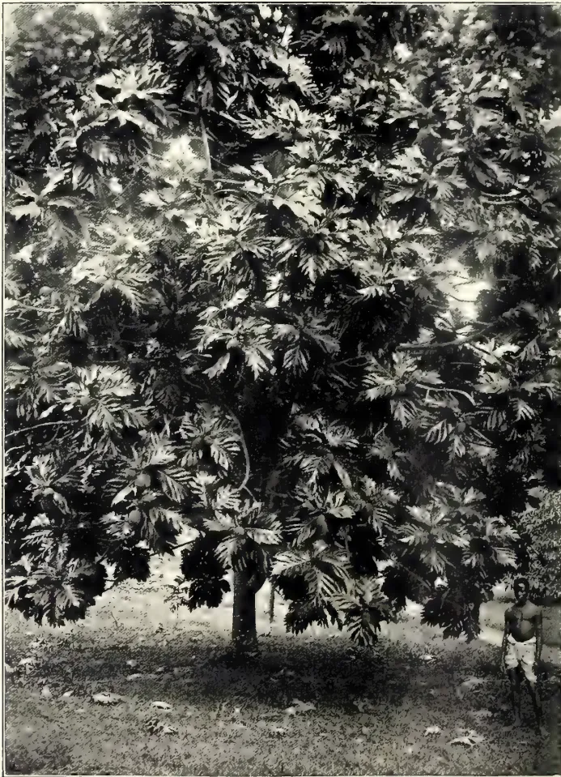
A black and white photograph of a large breadfruit tree (Artocarpus incisa) with dense, deeply lobed leaves. A person stands to the right of the tree, providing a sense of scale. The ground is covered with fallen leaves and debris.Vide page 428.
Photo by H. F. Macmillan.
1. ARTOCARPUS INCISA: BREADFRUIT TREE.
THE
TROPICAL AGRICULTURIST
AND
MAGAZINE OF THE
CEYLON AGRICULTURAL SOCIETY.
VOL. XXXII,
COLOMBO, NOVEMBER 15TH, 1908,
No. 5.
Literature of Tropical Agriculture.
Complaints are often coming in that the contents of the Tropical Agriculturist do not include more about tea and coconuts. A study of the lists of literature which we have for some time been publishing will explain this. In the last six or seven years the number of papers on coconuts published has been about 60, in all the journals (English and foreign) dealing with tropical agriculture; while in the same, or less, time, the number dealing with rubber has been over 600. Tea fares but little better than coconuts.
When a product is "new," a great deal is written about it; but when, as in the case of tea or coconuts, it is long-established, its methods become more or less stereotyped, and the man who wishes to introduce improvements must be prepared to do a lot of work for a very small result. The same change is coming over the rubber industry, and the time when a man could easily introduce great improvements in methods of cultivation or tapping is passing, and careful detailed work and thought
will be required. At the same time the great profitableness of the industry is going by, and success will be to the man who most carefully, economically and energetically manages his plantation, and applies the results of science to it.
The old idea, so common here, that Ceylon, by virtue of cheap labour, would necessarily have things all its own way, is being very markedly upset, as we predicted years ago, and Ceylon is no more facile princeps among tropical colonies. People are, however, beginning to awaken to the idea that a new age is dawning, and that scientific treatment is coming in in most things. Brute labour cannot compete against improved treatment, nor against machinery.
We should be only too glad to include more about tea and coconuts, did it exist to include, even if it had to be translated from another language. Cacao, a crop of far less local importance, has much more literature. And be it remembered that the Tropical Agriculturist has 72 pages a month to be filled,
410[NOVEMBER, 1908.(BY D. SANDMANN, in Der Tropenflanzener, SEPTEMBER, 1908.)
ABSTRACTED BY J. C. WILLIS.
Herr Sandmann visited Ceylon and the East, upon an agricultural expedition, in 1906, and has now been to Brazil, where he devoted special attention, to rubber, it being evident that upon the future of South American rubber would largely depend that of many rubber plantations now established, and especially those of the valuable kinds of caoutchouc, such as Funtumia, &c.
Most of the land in the Amazon valley, except to a distance of a few miles from the navigable streams, is still Government property, but much of it is worked for rubber, &c., without any title, and of course in such cases operations are liable to come to a sudden end.
When a rubber-wood, or seringal is opened, a good deal of labour is required, and has often to be got from great distances, especially the States of Ceara or Maranhao, under heavy advances. An opened seringal of one hundred Estradas or paths will require about fifty men, but to allow for sickness and losses in other ways, eighty must be kept. These will require advances of at least 500 milreis each at the start, and probably more later, so that a seringal of 400 or 500 estradas may represent advances of 400,000 or 500,000 milreis (£40,000—50,000).
In laying out a seringal, huts of timber and cadjan are first built along the streams at likely spots for boats to call. One forms a kind of store and shop, the others dwellings. Paths (estradas) are then cut through the jungle, passing by all the Hevea trees. These are often over 100 yards apart, but sometimes stand in little clumps of two to four. Afterwards more permanent buildings, or barracons, are erected by the waterside.
Most large seringals are not managed by the owners, but by their representatives or lessees. Besides the actual workers at rubber collection, there are other servants, hunters, fishers, &c. The last named get 3,000 milreis (£300) a year in wages.
The home of the Hevea is mainly in the country subject to floods. Over twenty varieties have been described, but the best is H. brasiliensis, Mull-Arg., locally known as Seringa.
Each estrada runs round by about 100 or 150 trees, and returns to its starting point. 40 to 800 estradas form a seringal, which may therefore have from 4,000 to 100,000 trees. The largest is consequently not so large (in number of trees) as a big rubber estate.
The seringuero, or rubber-collector, begins his work at 6 a.m., equipped with a small axe (machadinha) and a wood knife (teicado). The tin cups for collection of the milk (tigelinhas) are left in the forest hanging on twigs near the trees. The tapping season begins with the disappearance of the floodwater, and the estrada is cleared of overgrowth. On the first tour of the estrada, every tree is struck with a long-handled machadinha at about 12 feet from the ground. The wound thus given stimulates the flow of milk from the roots and favours tapping.* The milk that exudes is allowed to run down and dry upon the bark. Two days later the regular tapping is begun, the machadinha now used being about 1½ inch wide, on a 20 inch handle, and made of not too hard iron, so that it will not penetrate too deeply. Sometimes larger tools are used, but against the wish of the owner, for much damage may be done with them.
The tapping is begun at about 6'6" above the ground, cuts being made in the bark at an angle of 25°. Every second day new ones are made at 2-3 inches below, until after thirty-five tappings the ground is reached, the row of tappings being termed an arração. A second arração is then begun at the top two spans distant from the first. The machadinha is struck in downwards, and then slightly bent outwards to open the wound. The blow is supposed not to penetrate the cambium, but is usually struck too hard and enters the wood, so that healing, instead of being smooth, is warty, as has often been noticed in Ceylon. Old trees are frequently so knotty that large round pieces come out at the blow of the machadinha.
At the lower end of the wound a tige-linha is at once fixed, the sharp edge of the cup being pressed into the bark.
* We have no evidence that there is any flow from the roots, but it is worth trying this method, as is being done at Benaratgoda.—Ed.
NOVEMBER, 1908.]411Saps and Exudations.The trees being often ten minutes apart, the seringueiro takes 2-3 hours to go round the estrada, and he then returns with a tin vessel of about ten liters capacity, pouring into it the contents of the tigelinhas, cleaning these out with the finger. The empty cups are then hung again in the old place.
About midday the seringueiro gets back with the milk, and must at once clot it, as that which coagulates naturally in the vessel gives inferior rubber. A fire is built and fed with the nuts of the Urucuri palm, Attalea speciosa, Martius, or the wood of the oily Masse-randuba, Mimusops elata, Allem. When the fire is developing a thick smoke, a somewhat funnel-shaped chimney (Boiao) of tin or earthenware is put over it; this has an opening on the lower edge to admit air. The latter gives the hotter smoke, but is more easily broken.
As soon as the smoke pours freely out of the top of the funnel, smoking is begun. In the loop of a cord hung up near the funnel is a round staff of wood, called a pao, so arranged that it can be easily placed either over the smoke or over the vessel of milk. With a cup (cuia) made out of a fruit the seringueiro then pours milk over the pao and holds it in the smoke, turning it slowly round, one end being in the loop, the other on his knee. The smoke contains much antiseptic and coagulating material, such as creosote and acetic acid.* As soon as the milk coagulates, which is known by the colour changing from white to yellow, fresh milk is poured on, and held again in the smoke, and so on, until all the milk is finished. In this way, often after several days, a ball of rubber weighing 25 to 70 kilograms (56 to 150 lbs.) is made, and drawn off the pao. Smaller blocks are also made by using a kind of flat paddle and holding it in the hand.
The work is at first slow, the surface for evaporation being small. A litre of milk at first lasts half an hour, later only ten minutes. The smoke of urucuri nuts produces a quicker coagulation, and so does hot smoke.
If in the vessel of milk small particles of clotted rubber are found, they are carefully removed by the better workers, though many work them into the ball of rubber and deceive the purchaser who does not cut it into portions. These pieces of rubber are not rendered antiseptic, and set up decay, &c.
* It was on the known composition of this smoke that Mr. Parkin based his method of making biscuits, by heating and adding creosote and acetic acid.—ED.
When the vessel of milk is empty, it is held over the smoke to coagulate the film that remains, which is mixed with the pieces taken out of the milk to form scrap, known as ser namby.
Each seringueiro usually has two estradas, and as he does one on one day and the other on the next, and has to make two arraçãos of 35 cuts each, on every tree, he will take 140 days at least but holidays, &c., usually lengthen the time to six or even eight months.
Injury often results from the seringueiro making three arraçãos on a tree that should only have two, or from his cutting into the wood. In some places scaffoldings are fixed to let the upper parts of the tree be tapped. This also causes much harm.
In consequence of the liability to injury, trees are not termed tappable until of one foot in diameter, whereas on plantations smaller trees are tapped.
(To be continued.)
[This article, written by a trained observer, deserves careful study. Experiments are being set on foot to determine the value of the preliminary cut at 12 feet from the ground. Those estates which, as some do, open a fresh cut every two days, will be pleased to find their method supported by Amazon experience. In the preparation of the rubber, it is evident that the only difference from Ceylon is in the fact that smoked 'wet block' is made. Mr. Parkin, years ago, showed that heating the milk almost to boiling, and clotting with acetic acid and creosote, gave the best results. The biscuits he made in 1898-9 are still quite sound, whereas many of those made without creosote, or in the cold, decay within a couple of years. The process will take time to work out, but we feel almost certain that some form of making the biscuits as described by Mr. Parkin, and making these into wet block, will ultimately come in.—ED.]
(BY LABROY in Journ. d' Agr. Trop., 31 Aug., 1908, p. 232.)
REVIEWED BY J. C. WILLIS.
There seems no doubt that the exploitation of this shrub is going on much more rapidly than its natural reproduction, while there is as yet no planting of it.
Gums, Resins,412[NOVEMBER, 1908.THE GUM OF GREVILLEA ROBUSTA.(DES GROTTES AND RIVIERE, in Journal d' Agr. Trop. 31 August, 1908, p. 225.)
ABSTRACTED BY J. C. WILLIS.
This gum has often been studied, but so far without any practical results. Samples recently sent from Travancore showed a reddish colour, slight solubility, and brilliant resinous fracture. Cooke, in the "Gums and Resins of India," says that a tree exudes 10 ounces a year.
On an estate in Travancore, a herd of elephants rubbed against many Grevilleas along a road, and soon afterwards these trees exuded gums varying much in colour. This is put down to infection from different microbes carried on the elephants. A reference to M. Achalme, Director of the Colonial Laboratory at the Museum, and to Prof. Bernard of the Pasteur Laboratory, goes to confirm this. They are of opinion that gum-formation is due to microbes.
The work is suggestive, and indicates that we may some day be able to guide and control the formation of gums.
NOTES ON FUNTUMIA ELASTICA.BY FREDERICK DE VALDA.
West African rubbers have not at the present time a very favourable reputation in the European markets. In the endeavour to obtain rubber for sale, the juices of many different trees, some of them quite innocent of any caoutchouc, are mixed with good latices of Funtumia, Landolphia, &c. Putrefaction of the proteid constituents soon sets in, and the delectable preparations known to the trade as Gold Coast paste, lump, soft ball, &c., are the evil-smelling results. These different rubbers are valued at from 10d. to 1s. 9d. per pound, and require a man with a very strong stomach indeed to handle them. Some exceptions, it is true, have a very favourable reputation; fine nigger-ball, for instance, has obtained as much as 3s. to 3s. 6d. per lb.; but if we search for the reason of the higher price these latter rubbers have obtained, we invariably find that they consist either of unadulterated Funtumia, Landolphia, or one or two other fine rubbers.
While Para rubber has always reached the European markets more or less unadulterated, and has thus an excellent reputation behind it, Funtumia elastica has very rarely been shipped to Europe in its pure state. When this has been done, a price equal to hard Para has
always been obtained. The bad quality of West African rubbers will always continue as long as the collection and preparation of the rubber are carried out in the native fashion. These natives have not the same intelligence that the Central and South American collectors have. The local merchants and traders are to blame for not encouraging the production of high-grade rubbers by paying a corresponding price for them.*
The only way to establish F. elastica in the eyes of the manufacturer is to cultivate it on the same basis, and with the same thoroughness, that Hevea brasiliensis has been taken up and cultivated in the East. The planter will then find that he has fewer difficulties to contend with in establishing his plantation, and simpler methods will suffice to produce the cured article from the milk of the trees.
It is impossible, within the space of this short article, to compare point for point the qualities of F. elastica and H. brasiliensis. Their main points of similarity and divergence will therefore have to be shortly epitomized.
Planting.—The H. brasiliensis is being planted out at distances varying from 15 to 20 feet. F. elastica can be planted out 8 by 6 ft., the yield per individual tree of H. brasiliensis, by most exhaustive tapping methods, is said to have been raised to 10 to 12 pounds per year. This statement looms largely in some prospectuses issued by rubber-planting companies and is to be considered more as an exception—a very great exception—than a rule. It is safer to assume that an eight-to-ten-year-old Para tree yields 1 lb. of rubber per year. In the case of Para this would give a yield per acre per year of 190 lbs. of rubber. In the case of F. elastica no claims of such high individual yields are made, but I have found, as the result of numerous tappings, that lb. per tree per year is to be relied upon in an eight-to-ten-year-old tree. Thus, planted 8 feet by 8 ft., an acre of F. elastica would yield 335 lb. of rubber, or 175 per cent. greater yield than that same acre would have given, planted with Para 15 ft. by 15 ft. Para requires a rainfall of 80 to 100 in. to do well; F. elastica gets along nicely on 55 to 60 in. per year. Para is liable to many diseases—canker, fungoid, blights, &c.; F. elastica is not liable to such diseases to nearly the same extent
* The natives have good reasons for not putting a better rubber on the market. They are intelligent enough to know that they can make more money out of the mixed rubber, as at present exported, than out of the true article.—Ed. T. L.
NOVEMBER, 1908.]113Saps and Exudations.as Para is.* The difficulty of introducing Para into Africa lies in the great susceptibility of its seed to long transport. Planters in Africa, for instance, importing such seeds from Ceylon, even when most carefully packed, consider themselves lucky if they raise 15 per cent. of seedlings† from the seeds imported. Large quantities of F. elastica seeds can be sent in a 11 lb. parcel for 3s. to any part of the world. We thus have the following advantages in the case of F. elastica:—
Seeds easily procurable; they stand transportation to any part of the world at small expense and do not necessitate cumbrous packing and consequent expense.‡
F. elastica is a drought-resisting tree, doing well with a rainfall to which Para would inevitably succumb.
It is a disease-resisting tree, and not liable to the pests and cankers that have caused considerable ravage in the Para plantations of Ceylon.
The yield per acre of rubber from F. elastica is greater than from Para.
The mode of preparation and curing the latex of F. elastica rubber is simple, and does not necessitate any chemicals, which tend to weaken its resilient and elastic qualities.
Lastly, the price obtained for it in the open market has been practically the same as for hard Para, when prepared on equally scientific methods, and shipped free of moisture, dirt, &c.
A brief summary of the different methods of coagulating the latex of Funtumia may prove of interest to planters. There are several ways of carrying out this operation.
(1) By the crude method at present in vogue among the natives. This consists in digging a hole in the ground, or scooping out the trunk of a tree, and pouring the milk in. In three or four weeks the latex coagulates, and the rubber thus formed is then taken out and sent down to the coast and sold.
(2) Next in order comes the boiling process. The milk is placed in a "bain-marie;" the water surrounding it is brought to the boil, and the water in the milk carefully steamed off. This
* When Funtumia is planted out in large cultivated areas it may, and probably will, develop diseases the same as other trees: rubber, cacao, &c.
† We always understood that the Botanical Gardens supply plants at a price that works out under a penny each, so they cannot be said to be expensive.
‡ Some authorities insist that Funtumia seeds also rapidly lose their germinating vitality.
process requires time, fuel, and constant attention.*
(3) Then comes another process, considered by the writer very simple and effective. Several planks of the "Odom" tree (Chlorophora excelsa) after being planed, are joined together, and the milk poured over this surface to a depth of about inch. This is done in the evening. By the next morning the rubber is ready to be peeled off.†
Fourth, and lastly, comes the Otokotaka process, which has attracted so much attention of late.‡ The milk is poured into an infusion made from the leaves of the Otokotaka shrub (Bauhinia reticulata) and stirred, coagulation immediately takes place. The rubber gathers on the surface of the vessel in grey-white lumps. These are removed and rolled out into flat biscuits or sheets.
The writer has also successfully carried out the smoking and creosoting of these biscuits and sheets by dropping creosote on to the smouldering fibres that are left after the oil has been boiled out of the pericarp (fleshy part) of the nut of the oil palm. The smoke thus obtained preserves the rubber and gives it that peculiar smoked-bacon odour so highly prized by buyers.§ The cakes of rubber were subjected to this smoke for about half an hour. I have one before me that has been on a steam radiator in an office during the past winter; its condition is perfect.
Tapping.—Experiments with spiral and semi-spiral tapping, after the me-
* The process resembles the "Norzagaray trough" process, now on show at the stall of the Chilian Exploration Company in the Mexican Exhibition at the Crystal Palace. We have seen rubber prepared by this process, even in London, with great success. By this system the rubber can be prepared in about thirty minutes, and the apparatus (simply a tin pan and some troughs, 12 in. long) can be carried about anywhere. Mr. Evans values Funtumia prepared by a process similar to the "Norzagaray" as being equal to hard Para.—Ed. T. L.
† We understand that this system is an old one, and from an experimental point of view it works out admirably, but is not generally to be recommended for commercial purposes. Any wood seems to do; it is the exposure to the atmosphere that causes coagulation, the length of time depending on the thinness of the layer of latex.
‡ In the Gold Coast exhibits at the Franco-British Exhibition Mr. Evans has included some Otokotaka leaves, and specimens of the rubber prepared by this process.
§ Rubber can also be successfully creosoted on the West Coast by hanging the biscuits, &c., in a native cooking house.—Ed. T. L.
Gums, Resins,411[NOVEMBER, 1908.thods used in Ceylon for Hevea, have given unsatisfactory results with Funtumia. The lactiferous system of the two trees cannot be compared. The milk-bearing tubes or cells of the Hevea are divided into well-defined compartments, running vertically, with very little, if any, lateral communication, so that a vertical cut produces very little latex. In the Funtumia, however, the tubes are longer and not divided to the extent that the milk tubes of the Hevea are. One vertical groove produces more latex than the same length of diagonal grooves, distributed over a wide surface. This points to there being horizontal, or secondary tubes, in Funtumia, connecting the vertical or primary ones, and this is clearly proved by the microscope.
A series of vertical grooves made at intervals, say of two months, would at a distance of 4 in. completely tap one tree in the course of a year without inflicting the damage that the spiral and herring-bone systems undoubtedly do. A knife, made on the principle of the Ceylon V-knife, would be the best one to use. I find, however, that a slightly rounded apex cuts better and does less damage to the bark of the Funtumia.
In preparing an estimate for any forest or plantation venture on the Western Coast of Africa, it is quite useless and incorrect to count on any rubber coming from untapped trees on the property. A few untapped trees may exist, but they are very few and far between. The native rubber collector knows the value of an untapped rubber tree just as well as a man does, and has greater facilities to seek it out.—Tropical Life, Vol. IV., No. 8, August 1908.
BY. T. PETCH.
The latest contribution to our knowledge of the seeds of Hevea brasiliensis is furnished by Mr. G. Vernet, of Annam. A comparison of his results with the figures obtained in Ceylon is interesting, more especially as the Annam trees, now ten years old, were grown from Ceylon seeds.
Mr. Vernet gives illustrations of the seed and details of its analysis. He states that the oil content of the dry kernel varies from 28.3 to 36.32 %. This is considerably less than the value found at the Imperial Institute, viz., 42.3 %, but the difference may be accounted for, if we suppose that the Annam figures refer to "air dry" ker-
nels; the kernels, "air dry" in England, would be drier than in Annam.
The weight of a seed (just gathered?) is said to vary from 1.02 grammes to 9.55 grammes; and for selecting seed for experimental plantations Mr. Vernet rejects all which do not weigh more than 5 grammes. We have no recorded variation of this extent in Ceylon, though it is probable that some seeds may be found which approach the lower limit. Carruthers gives 3.14 grammes to 5.14 grammes, but only deals with twelve seeds; and the figures obtained by Macmillan and myself are only averages. But it may confidently be stated that the application of the "5 grammes" rule to the seeds sent from Ceylon would have led to the rejection of almost all of them. Carruthers only found one seed in twelve to weigh more than 5 grammes; and as the weight of one hundred fresh Ceylon seed has been found to vary from 336 grammes to 424 grammes, it is evident that only a very small percentage can weigh more than five grammes. The samples were fairly uniform, and certainly did not include a large proportion of small seeds.
If the results of experiments are to be comparable, the conditions must be the same in each case. The Ceylon seeds were gathered on the ground each morning, and therefore had ripened and fallen during the previous twenty-four hours. Mr. Vernet states that in order to reduce the error due to loss of weight on drying, the seeds were obtained by gathering the fruits as soon as the capsule had turned completely brown. This procedure would seem to be impossible in Ceylon, for many fruits, at least, split when they are some shade of green. It might be thought that this method would account for some of the difference between the weights of Ceylon and Annam seeds, as the latter might contain more water, but this explanation is contradicted by Mr. Vernet's figures which show that the Annam seeds left to dry in the laboratory lose a similar percentage of their weight in ten days than the Ceylon seeds lose in a week under similar conditions. We must conclude, therefore, that the Annam seeds are heavier than the Ceylon seeds. The recorded weights per 100 seeds (Annam) vary from 381 grammes to 630 grammes, 2,900 seeds being weighed; Peradeniya seeds vary from 336 to 434 grammes per 100 seeds, 2,000 seeds being weighed.
Mr. Vernet quotes the alleged opinion of the planters of Ceylon and Malaya that trees less than eight years old
NOVEMBER, 1908.]415Saps and Exudations.do not produce good seed; and he supports this view by figures obtained in Annam. Thus, trees, 7 years old, produce seed weighing 381 grammes per 100; trees 8 and 9 years old, 493 grammes per 100; and trees 10 years old, 530 grammes per 100. Since seed from Ceylon trees, twenty to thirty years old, weighs less than this, we must, if this view is correct, expect a maximum weight per one hundred seed between the ages of ten and twenty; and the result is at variance with Mr. Ridley's view that the early fruiting gives large seed getting a little smaller in later years. But it must be objected that results in this matter can only be obtained by weighing the seed from the same group of trees for several years, the trees meanwhile remaining untapped. The Peradeniya results showed that trees 26 years old produced seed weighing 409 grammes per 100 seed; for years later, the same trees, now tapped, produced seed weighing 354 grammes per 100, while in the same years, untapped trees 20 years old, produced seed weighing 412 grammes per 100. Are we to suppose that the weight per 100 seed is constant between the ages of twenty and twenty-six, but drops % between twenty-six and thirty? It is quite possible that the weight of the seed varies with the age of the tree, but this can only be proved by weighing the produce of one tree, or a small group of trees, for a number of years: and the experiment will prove nothing if the trees are tapped.
Mr. Vernet justifies his rejection of seeds weighing less than five grammes each by an experiment which shows that their germination is only 56 %, while that of seeds weighing over five grammes is 91 %. In contrast to this, the germination of one-hundred Ceylon seeds weighing 345 grammes was 93 % in one case, and 96 % in another. It would certainly not be expected that the germinative capacity of fresh seeds would be governed by the weight, unless the smaller weight indicates that the kernel has for some reason not developed properly. But on this point no information is given. Mr. Vernet's results are without parallel in Ceylon. The Annam maximum weight per one-hundred seeds is 630 grammes, and seeds weighing less than five grammes each show a small percentage germination. The Ceylon maximum per hundred seeds is 434 grammes, so that we ought on this principle to have a low percentage germination with seeds weighing less than three-fourth grammes. Instead, we obtain 93 % germination from one-hundred seeds which weighed 345 grammes.
A further experiment by Mr. Vernet is taken to prove that the amount of water in the kernel is proportional to the yield of rubber by the tree. The yield of rubber is not stated, but with three series of trees in increasing order of yield, the percentages of water in the kernels were twenty-four, forty-five and sixty-three respectively. The trees were unfortunately of different ages. Corresponding figures for Ceylon are not available, but it has been shown that the small seeds from the tapped trees lose a greater percentage of their weight in drying than the larger seeds from untapped trees. We may provisionally conclude therefore that the seeds from tapped trees contain a greater percentage of water than seeds from untapped trees; and Mr. Vernet's result confirms this if taken to mean that the greater percentage of water is a consequence of the removal of the latex or bark.
An experiment showing the variation in the time of germination of one-hundred seeds gives another instance of wide departure from Ceylon results. The time between the germination of the first and last seeds was twenty-six days, and fourteen days have elapsed before 50 % had germinated. In our experience, 80 % germinate without the first three days of germination, and, with fresh seed, all have germinated within seven days. A series of germinations extending over twenty-six days would be considered to prove that the sample was a mixed one, i.e., consisting of seeds which had been gathered at different times.
Mr. Vernet's remaining experiments deal with methods of preserving the germinative capacity of the seeds. Seeds were kept in a closed box for periods up to forty days. Those planted after having been thus kept for thirty-five days gave 95 % germination, and those kept for forty days gave 80 %. The number of seeds tested was only twenty in the first case, and ten in the second. A similar experiment in which the seeds were preserved in dry charcoal gave only 25 % germination after twenty-five days, and 20 % after forty days. Mr. Vernet deprecates the use of moist charcoal because the seeds germinate in the charcoal, and the roots and stems are liable to be distorted or broken.
There is still need of considerable extension of experiments of this nature. The results at present recorded show such wide differences that no general conclusions can be drawn from them. It would be interesting to have similar figures from the Federated Malay States, Singapore, and other countries in which Hevea brasiliensis is grown.
T. PETCH,
Govt. Mycologist.
Coconut oil, as it is expressed from sun or grill-dried copra, always contains a quantity of impurities—organic colouring matter, albuminoid bodies and a certain characteristic odour, all of which are objectionable for particular purposes for which the oil is otherwise well suited. While it is entirely possible to produce a pure oil directly from the nuts if special precaution in curing them is taken, the demand for highly-refined oil does not seem to warrant the introduction of modern mechanical methods of desiccation at the present time, hence the numerous patents which are taken out from time to time, and the frequent notices in the literature of new or improved processes for the production of pure coconut oil, refer to some subsequent chemical treatment of the commercially expressed oil itself. Clarification by filtration, subsidence or heating with or without the addition of coagulants is simple and economical of application, and, as generally practised, removes all of the suspended foreign matter and most of the soluble impurities, producing a perfectly clear, light, amber oil of sufficient purity for soap stock, but it falls short of being completely free from odour and colour. Therefore, further refining constituents, the only known means of producing an odourless and colourless product suitable for alimental or cosmetic purposes, are necessary.
The removal of the last traces of odour and colour from coconut oil present many difficulties in the way of subsequent clarification and risk of loss of oil, and the methods of procedure are necessarily limited to the use of such chemical reagents as are harmless or are easily removed. In general, refining processes may be conveniently divided into (1) acid, and (2) alkaline treatments. The former has not proved applicable for the production of oils for edible, cosmetic or lubricating purposes, because of the poisonous nature and otherwise harmful action of mineral acids. The alkaline process makes use of the hydrates or carbonates of the fixed alkalies, ammonia, caustic lime or magnesia, with or without the aid of heat. The efficiency of an alkaline treatment depends upon incomplete saponification, whereby the free, volatile,
fatty acids, which are responsible to a large measure for the characteristic odour of coconut oil, are first neutralized and precipitated as a salt of whichever alkali is employed. If the alkali be added in excess of the amount necessary to neutralize the free acids, and the oil is steamed or otherwise heated, then the neutral glycerides—that is the oil itself—suffers partial decomposition and goes to augment the amount of soaps formed. Therefore, unless any alkaline treatment of a vegetable oil is carefully regulated, both as regards the amount of alkali used and the temperature employed, low yields of purified oil are obtained. All of the residues or “foots” go to form soap stock, hence the advisability is apparent of employing this process in conjunction with a market for the by-product. The main points to note in connection with refining by means of alkalies are, first the minimum quantity of alkali necessary to effect the purification; and, secondly, the right concentration of caustic lye which is unfavourable to the formation of emulsions. The minimum quantity of alkali can be determined accurately by testing the acidity of a small sample of the oil to be refined or by the cut and dried methods of practical experience.
Ordinary commercial grades of coconut oil contain from 1 to 10 per cent. of free fatty acids calculated as oleic acid, and these percentages require approximately 0.15 to 1.5 parts, respectively, of caustic soda per 100 parts of oil. The caustic soda may be added to the oil either in the solid state with subsequent addition of water, or better in the form of a caustic liquor previously prepared. The stronger the caustic liquor used the less the tendency to emulsion formation, and the more rapid and complete the action, if proper mechanical devices for thoroughly mixing a strong lye with the oil are used. If, after the addition of the caustic the oil is gradually heated to the boiling point of water, the soap separates in a granular condition and is easily removed by filtration or subsidence. The oil may now be steamed and washed with hot water, until it is perfectly clear and neutral, and, if the above treatment with caustic liquor and the subsequent steaming are properly conducted, the resulting oil will be found perfectly free from the well-defined odour of the original oil and to possess the bland, fatty odour of pure melted lard,
NOVEMBER, 1908.]417Oils and Fats.COLOURLESS OIL.Coconut oil is also considerably lightened in colour by the above treatment, but in no sense can it be considered as a colourless oil. To remove the last traces of colouring matter from a vegetable oil is much more difficult than the destruction of the rancid odour, and in order to accomplish this completely it is necessary to subject the refined oil to some mild bleaching action which does not introduce harmful ingredients which would be difficult of subsequent removal. Of the many well-known methods of bleaching proposed for general use, hydrogen peroxide seems to be most favourable in this regard as it is easy of application, and at its present price is not prohibitive. Sufficient dilute alkali should be added to neutralize any mineral acid it may contain, and a slight excess favours the action of this reagent, at the same time having no saponifying action. Next in order of suitability is a dilute solution of chloride of lime slightly acidified with acetic acid. If the addition of acid and the temperature of the bleaching are carefully controlled, the chance of injury to the oil by free chlorine is a minimum, and the result is a pure, water-white product.—Indian Trade Journal, 24th Sept., 1908, p. 285.
NOTES ON THE SPROUTING COCONUT, ON COPRA, AND ON COCONUT OIL.(By H. S. WALKER, in Philippine Journal of Science, III, A. 1908, p. 111.)
ABSTRACTED BY J. C. WILLIS.
1. Enzymes.—Experiments were carried on to determine if the coconut, like the castor-oil and other oil seeds, contains a fat-splitting enzyme. No trace of such a body could be discovered, and the cause of the destruction of the fat in the growing nut must therefore be sought elsewhere.
2. Changes in the Sprouting Nut.—"Oil is lost by the meat; it is not taken up as such by any other portion of the nut, but is either burned to furnish energy for the growing plant or is split up, being transformed by progressive synthesis into sugar and finally to cellulose."
3. Copra.—The moulds which grow on copra were found to have the property of hydrolyzing and destroying fat; it is, therefore, a direct loss of oil if these be suffered to grow. Bacteria, which also grow, do not reduce the oil but produce a sour smell and disintegrate the meat.
4. Production of Acid in Oil.—The deterioration of a freshly prepared oil is due to several causes. Molds destroy it after it is expressed, but this may be checked by filtration, preferably after heating to the boiling point of water to destroy moulds and enzymes formed by them. Afterwards oxidation by the air sets in, and the oil should therefore be stored in full receptacles, impervious to air. Heat also has some effect.
53 418[NOVEMBER, 1908.In connection with the question of annatto production in the Colonies, especially in West Africa and Ceylon, the following memorandum has been prepared and is now published for general information :—
Annatto is the orange-red colouring matter occurring as a layer of pulp on the outside of the seeds of the annatto plant, Bixa orellana, a small tree indigenous to South America, but now extensively cultivated in many tropical countries.
The supplies of annatto which reach the United Kingdom at present come principally in the form of the seeds from the East and West Indies, and as paste from French Guiana or Brazil.
The annatto plant grows luxuriantly in almost any soil, and in the tropics will thrive up to about 3,000 feet above sea level. The soil is prepared for annatto in much the same way as for cotton. The seeds, previously softened by soaking in water, are planted in furrows at distances of 8 to 10 feet apart. As the young plants come up they should be provided with artificial shade to protect them from excessive heat, but later on a large amount of sunshine is necessary for their proper development. After three months the plantation should be weeded and superfluous plants removed. Beyond periodical weeding the plantation requires little attention.
Full crops of seed may be obtained in three or four years from the time of sowing, but the collection of seed may be commenced usually after the first eighteen months or even earlier. The fruit capsules are gathered when they have acquired a reddish colour and are just beginning to break open. This takes place from the pointed end along the edges and causes the seeds to be exposed. It is said to be advantageous to cut the branches along with the capsules, as in this way the plants are prevented from growing so high as to make collection a matter of difficulty, and they bear better.
The capsules are opened out on mats or cloths and allowed to dry completely in the sun, being turned over from time to time. Three or four days' exposure is usually sufficient to accomplish this, and
the fruits are then collected into heaps and beaten with clubs or thrashed to separate the seeds. These are separated from the empty pods by winnowing or sifting, and again exposed to the sun until they are completely dry.
The seed is usually packed in barrels for export, but manufacturers using annatto in the United Kingdom recommend that they should be packed in double sacks holding from to 2 cwt. each. Great care should be taken to see that the seeds are dry before they are packed, as if they are at all damp they are liable to become mouldy and lose colour.
The prices obtained for annatto seed in London in the last few years have varied somewhat. Ceylon and Madras seed fetched from 6d. to 7d. per lb. at the end of 1905, but gradually fell to d. or 4d. during 1906, Jamaica seed similarly fell from 8d. at the end of 1905 to 4d. in October, 1906. At present 4d. per lb. may be taken as the average value. Java seed, which go principally to Liverpool, is at present worth 4d. to 5d. per lb. The most recent quotations available are 4d. per lb. for Madras seed and d. per lb. for Ceylon seed.
There is a fair demand for annatto seed in the United Kingdom, and the annual imports are said to fluctuate between 75 and 100 tons, and manufacturers of annatto preparations are of opinion that the demand is likely to grow. There is said also to be an increasing market in the United States for annatto, but this is likely to be met by a larger output from Jamaica. It should be borne in mind, however, that the annatto plant can be grown practically anywhere in the tropics, and that plantations have been formed in many tropical countries, and that if prices rose there would probably be an immediate increase in output from plantations already in existence.
At one time considerable quantities of annatto paste were imported into the United Kingdom and other European countries from French Guiana and Brazil, but although text-books dealing with annatto dye still refer to the paste as the principal form in which annatto is imported, there is reason to believe that this trade has almost ceased. Thus no export figures for annatto paste from French Guiana have been
NOVEMBER, 1908.]419Dyes and Tans.given in the statistical returns for the French Colonies since 1900. Annatto paste was imported into the United Kingdom from Ceylon in considerable quantities some years ago, but owing, it is said, to a falling off in the quality of the material, the demand for it diminished.
Manufacturers in the United Kingdom, and merchants handling annatto paste, say that the reason for the decline in the market for this article is entirely due to the practice of adulterating it in the countries where it is produced, and that if a clean paste of good quality were produced it would command a ready sale. Unless, however, a paste of excellent quality can be made it is better to export the seeds.
In Brazil annatto paste was formerly made by crushing the seeds in hot water, decanting the liquid containing the colouring matter in suspension, and evaporating it to a pasty consistence in shallow pans over a fire. More recently, however, in Brazil and French Guiana the uncrushed seeds have been mixed with hot water and the mass agitated until the whole of the pulp carrying the colouring matter has been washed off. The muddy liquor so produced is decanted through a sieve to remove the seeds. The liquor is then allowed to stand until the insoluble colouring matter held in suspension settles to the bottom when the useless supernatant liquid is poured off and the wet paste or colouring matter is dried by exposure to sun heat. The paste so produced can be prepared for the market in several ways. It may be formed into rolls weighing from 4 to 5 lb. each, and, after drying, wrapped in banana leaves and then packed in boxes or sacks, as is the custom in Brazil; or it may be made into small cheese-like masses weighing from 1 to 2 ozs., and these, when quite dry, packed in boxes holding from 4 to 5 cwts. The French Guiana variety of annatto is superior in quality to the Brazilian (Spanish).
It will be seen that no special machinery is required for the production of annatto paste by these processes, but doubtless the extraction of the colouring matter could be made more efficiently and rapidly if mechanical agitation were employed to keep the seeds in motion while they are in the water, and similarly the separation of the colouring matter from the mother liquor and its subsequent drying could be more cleanly and rapidly effected by the use of filter press.
Owing to the very small demand existing for annatto paste in the
United Kingdom at the present time it is impossible to obtain a satisfactory idea of its commercial value, but it appears that Cayenne paste from French Guiana fetches about 10d. per lb. in France at present, and that good qualities of Ceylon paste when imported into the United Kingdom were worth, as a rule, from 1s. 6d. to 2s. per lb.
At present annatto is principally employed as a colouring agent for food materials such as butter, margarine and cheese. It was formerly used in considerable quantity for dyeing silk, but is now little employed for this purpose as better dyes less fugitive to light are available.—Bulletin of the Imperial Institute, Vol. 11, No. 2, 1908.
The wattle or mimosa barks of commerce are derived from several species of Acacia indigenous to Australia, whence the barks have long been exported to Europe for use as tanning materials. The name "wattle" was bestowed on the aacias in Australia owing to their willow-like habit, and from the fact that they were used in the early days of the colony for binding hurdles together, generally to serve the same purpose as the wattles of Europe.
The species most priced for the production of bark are Acacia pycnantha (Golden Wattle), Acacia decurrens, Willd., Acacia decurrens, var. mollissima (Acacia mollissima, Willd.), Black-Wattles, and Acacia dealbata (Silver Wattle). Of these the bark of A. pycnantha is usually richest in tannin, whilst that of A. dealbata is poorest. A. decurrens, var. mollissima, has, however, the advantage of being hardier and giving on the whole a better yield of bark, and consequently wherever, as in Natal, wattle cultivation on a large scale has been attempted, this variety has generally been selected for plantation.
Formerly the supply of wattle bark came almost exclusively from Australia, and especially from South Australia and Tasmania, but in 1880 wattles were introduced into Natal, and within the last ten years or so the plantations of Natal have begun to supply a preponderating share of the material. Similar progress has not been made in Australia, but this is probably partly due to the fact that the Commonwealth exporters have relied principally on natural forests, and
Dyes and Tans.420[NOVEMBER, 1908.have not practised cultivation of the wattle tree to the same extent as the Natal growers, though recently increased attention has been given to the formation of wattle plantations in Australia (this Bulletin, 1907, 5, 187).
As already indicated, the black wattle is the species usually selected for planting, and the following information regarding the cultivation of the tree and the preparation of the bark relates more especially to this species.
Although the black wattle will grow in practically any kind of soil, experience has shown that a friable sandy loam, or a sandy soil lying on a clay subsoil two or three feet below the surface answers best. The roots do not penetrate deeply into the ground, and consequently soil which retains moisture is advantageous for their culture.
The plants are invariably grown from seed, but no special precautions are necessary for the sowing. As a rule, rows about 12 feet apart are prepared, and the seed, mixed with a quantity of sand, is planted about one inch deep and in such a manner that the young trees can eventually be thinned out to 6 feet apart in the rows.
The outer covering of the seeds is extremely hard, and to assist germination the seeds should be specially treated before sowing, as under ordinary circumstances they may remain in the ground for a considerable time without germinating. More rapid germination can be brought about in a number of ways. Perhaps the commonest practice is to cover the seed with boiling water, in which, after cooling, they are allowed to soak for about 24 hours, after which they are sown as soon as possible, immediately after removal from the water. In Australia the seeds are frequently roasted, but care has to be taken to avoid loss by over-heating. Quite recently excellent results are said to have obtained in German East Africa by soaking the seeds in concentrated sulphuric acid and keeping the mixture stirred occasionally to prevent caking. After the lapse of four or five hours the seeds are removed and thoroughly washed in running water, when they are ready for setting. It is stated that after this treatment 80 to 90 per cent. of the seeds germinate in a few days.
Indian corn (maize) is frequently grown in the spaces between the young plants, generally two rows of maize between
each two rows of wattles, and this serves to provide a return from the plantation whilst the wattles are maturing.
After germination the plant grows quickly, and at an age of only four years it generally attains a height of from 25 to 30 feet. The foliage is luxuriant and affords luxuriant shade for animals or low-growing crops. Practically no attention is given to the trees themselves, for if they have been properly distributed pruning is unnecessary and several crops of wattles may be taken off the same soil without rendering it unsuitable for their further cultivation.
One of the most serious enemies of the wattle grower is fire, which sometimes spreads from the surrounding prairie and destroys the plantations unless fire "breaks" have been constructed by ploughing broad strips of land round the plantations.
Several insect pests have also made themselves felt on Natal wattle estates, the chief of these being a bagworm which destroys the foliage and thus checks growth, and red and white ants which destroy the roots. Locusts are also a serious trouble in some years in Natal, but with suitable precautions their depredations may to a certain extent be mitigated.
Wattle trees reach their prime in about ten years from the time of sowing, though many trees are marked down as large enough to strip after seven or even five years. The rate of growth varies in different localities and soils, and individual variations in the seed also exert considerable influence. When an area of forests is old enough harvesting of the bark is commenced. In Australia the trees are usually stripped during three or four months of the year (generally September, October, November, and December), but in Natal the work is carried on at all seasons, as the barks strip readily except in very dry weather. Nevertheless the period from the beginning of March to the end of April is generally adopted, despite the danger of getting the stripped bark soaked with rain before it can be brought under cover and thus losing part of the tannin.
Attention has been drawn recently to the possibility of variation of the content of tannin being caused by stripping at different times of the year, and this matter is being investigated (this Bulletin, 1908, 6, 86).
After clearing away the dead twigs and leaves at the bottom of the tree an incision is made in the bark either (a) 3
NOVEMBER, 1908.]421Dyes and Tans.or 4 feet above the ground, or (b) as close to the ground as possible. If the former method is adopted the strip or sheet of bark is pulled off downwards, thus obtaining much of the bark from the upper roots which is frequently the richest in tannin. In the second case, by a series of strong jerks a broad strip is pulled-off up to the height of the lower branches. Sheet after sheet is thus removed from the trunk until it is quite bare, after which the tree is felled and the stripping completed on the portions lying between the branches. A stripping machine has been invented which, it is claimed, removes the bark close up to the leaves, and higher than can be stripped by hand, and it has been stated that its use would reduce the cost of stripping by at least 25 per cent. In using the machine the wattles pass between two revolving rollers, thus receiving pressure on two sides, which causes the bark to crack and spring from the complete circle of the stem in two halves.
The long strips of bark are hung over poles in the drying sheds, which are arranged to hold about six tons of fresh bark. Drying should take place in the shade, and the operation generally lasts several weeks. Although in some cases artificial heat may be employed for drying, care must be taken to avoid too high a temperature, otherwise a diminution in the tannin content will take place. When dry the bark is taken in bundles to the mill, where it is usually cut into short chips or pieces about two inches long by one inch wide, and then after being packed into sacks it is ready for export.
The stripped wattle-tree trunks are generally cut into six or twelve feet lengths for mining timbers, but their use as a source of wood pulp for paper manufacture (see Technical Reports and Scientific Papers, published by the Imperial Institute, p. 314), and more recently the distillation of the wood for the production of acetic acid and wood alcohol has been suggested in Natal.
As previously stated, the same ground will bear several successive crops of wattle trees without becoming exhausted. In the ordinary a wattle forest replants itself, and an area once cleared of trees is quickly covered again. The naturally grown seedlings are allowed to grow until they form a thick mass covering the field, when they are thinned out, leaving rows twelve feet apart standing. It is stated that replanting from natural seedlings is no great advantage, as the cost of thinning out
is greater than that of starting a fresh plantation.
South Australia.—The wattle bark of South Australia is almost exclusively derived from the “broad-leaved or Golden Wattle,” A. peyantha. This bark is one of the richest of tanning materials, although recently the eucalyptus “mallet bark” of Australia (this Bulletin, 1905, 3, 69) has been found to overstep it in actual tannin content. It is found chiefly on the Adelaide hills and plains, but in the north of the colony a narrower leaved variety exists which is of slower growth and yields bark of less value. The broad-leaved wattle bark of South Australia generally contains from 40 to 45 per cent. of tannin, tans very quickly and produces a good light-coloured leather. It is worth about £8 to £9 per ton at present.
New South Wales.—This colony at one time produced and exported large quantities of wattle bark, but of recent years the export trade has been nearly lost, although the price per ton has risen from £5 in 1890 to £8 at present date. Most of the bark is “green” or “black” wattle, and contains about 35 to 40 per cent of tannin. A. pycnantha cultivation is practically confined to those parts of the country bordering on South Australia and Victoria.
Victoria.—In Victoria no other crop is regarded as so profitable as wattle, especially for poor soil. Thousands of acres are under cultivation, and Victoria is the greatest producing area of black wattle bark in the Commonwealth.
Tasmania.—This island possesses large natural supplies of black wattle, and at one time was the chief Australasian source of this variety. Owing to indiscriminate destruction of the forests and failure to systematise the planting of fresh trees, Tasmania has lost considerable ground, both in the quantity and value per ton of bark exported.
Queensland and Western Australia.—Among the wattles termed “black,” there are several mountain hickories of much less importance than Acacia decurrens, although containing from 30 to 35 per cent. of tannin. Chief amongst these is A. penninervis, which may become of great commercial importance, especially in Queensland, where it is very abundant. At the present time Queensland produces and exports comparatively little wattle bark.
In the last few years Western Australia has exported greatly increasing
Dyes and Tans.422[NOVEMBER, 1908.quantities of wattle bark, although up till 1902 none at all was produced.
New Zealand.—Wattle plantations in New Zealand for the production of tanning bark occupy an area of about 5,000 acres, in the Auckland district.
The black wattle is the only variety planted.
The following typical analyses of Australian wattles are taken from results obtained by Blockley (Journ. Soc. Chem. Ind., 1902, 21, 159):—
| Botanical Source. | Local Name. | Source. | Tannin* | Non-Tannin | Insoluble | Moisture. |
|---|---|---|---|---|---|---|
| % | % | % | % | |||
| A. pyenantha ... | Golden wattle "No. 1, special" |
S. Australia | 49.5 | 9.4 | 29.9 | 11.2 |
| A. Pycnantha ... | Golden wattle "No. 2, ordinary" |
S. Australia | 40.2 | 9.0 | 39.6 | 11.2 |
| A. decurrens, sur. nor malis ... |
Sydney green wattle |
St. Mary's (N. S. W.) |
41.4 | 7.9 | 39.2 | 11.5 |
| A. decurrens, var. leichardtii ... |
Green wattle | Bateman's Bay (N. S. W.) |
38.5 | 9.1 | 41.4 | 11.0 |
| A. decurrens, var. pauci glandulosa |
Green wattle | Bateman's Bay (N. S. W.) |
36.1 | 7.8 | 44.5 | 11.6 |
| A. decurrens, var. mollissima ... |
Black wattle | — | 38.3 | 4.4 | 46.2 | 11.1 |
| A. penninervis ... | Hickory bark | Bateman's Bay | 37.7 | 5.2 | 46.1 | 11.0 |
| A. binervata ... | Black wattle | Cambervarra | 30.2 | 6.7 | 52.0 | 11.1 |
| A. dealbata ... | Silver wattle | N. S. W. | 12.2 | 4.3 | 71.9 | 11.6 |
* Estimated by the bell-filter method (Bull. Imp. Inst. 1907, 5, 344).
Natal.—Being known to grow quickly, wattles were first introduced into Natal as a shade tree and wind-break, more especially as a protection for cattle. The value of their barks as tanning agents was not recognised until several years later. Natal wattle is nearly all A. decurrens, although the "golden" variety is grown to a limited extent.
The chief centre of the black wattle cultivation was originally in the Noodberg district, but at present the greater part is grown round about the Umvati, although wattle plantations are scattered throughout the central portion of the Colony, and largely along the railway from Pietermaritzberg to Grey town. One of the largest wattle estates, the Town Hill plantation, covers over 3,000 acres of hilly uplands near Pietermaritzberg.
At present over 30,000 acres in Natal are planted with black wattle, and it is confidently expected that within the next five years production will be trebled.
Cape Colony and the Transvaal.—The pronounced success of the cultivation of wattle trees in Natal has caused at-
tempts to be made to place wattle cultivation on a commercial basis in other South African colonies, notably in Cape Colony and the Transvaal. Several samples of Cape Colony wattle bark have been examined at the Imperial Institute, and found to be rich in tannin and of good quality (this Bulletin, 1907, 5, 352).
The cultivation of A. decurrens in German East Africa has already passed the experimental stage, and as early as 1904 samples of bark were obtained, which proved to be of satisfactory quality. The seed used in these plantations was obtained partly from Natal and partly from Australia, but as no special care was taken in its selection, very mixed results have been obtained. There seems to be no doubt, however, that German East Africa is well suited for wattle growing, and that in the near future it will be able to compete with Natal and Australia for the supply of bark.
Experimental cultivation of the black wattle has also been undertaken in British East Africa, but so far nothing is known as to the bark obtained.
The analysis on the opposite page of
NOVEMBER, 1908.]423Dyes and Tans.African wattle barks have been partly carried out in the laboratories of the Imperial Institute. In those marked * the tannin was estimated by the bell-filter method.
INDIA AND CEYLON.Several varieties of wattles have been
acclimatised in different parts of India, and in the Ceylon hills A. decurrens and A. dealbata are now plentiful. Although the barks of these trees are used locally for tanning purposes, no attempt has been made to grow or harvest the bark for export.
| Botanical Source. | Local Name or Description. | Source. | Tannin. | Non-Tannin. | Ash. | Moisture. |
|---|---|---|---|---|---|---|
| % | % | % | % | |||
| A. decurrens† | Black wattle | Warburg, Natal | 35.2 | 7.3 | 1.6 | 11.7 |
| " + | " | Natal | 37.8 | 9.3 | 1.5 | 9.5 |
| " + | " | " | 35.2 | 10.3 | 2.8 | 11.3 |
| " + | " | " | 39.8 | 9.9 | 2.3 | 9.6 |
| " + | " | " | 36.8 | 10.3 | 2.6 | 10.4 |
| " + | " | Fort Conyngham | 35.4* | 12.0 | 1.8 | 11.4 |
| A. pycnantha | (chopped) | Cape Colony. | 40.1* | 13.0 | 1.5 | 10.1 |
| A. saligna | — | Dept. of Agric., Cape Colony. |
26.4* | 12.1 | 4.0 | 11.1 |
| A. horrida | "Doornbusch" | Dept. of Agric., Alexandra, Cape Colony. |
18.3* | 8.3 | 4.5 | 11.0 |
| A. decurrens | Black wattle (unchopped) |
Eastern Con- servancy |
44.1* | 7.1 | 1.8 | 10.9 |
| " | Mimosa bark | Big Umgagi | 18.0* | 7.5 | 5.3 | 12.1 |
| " | 5½ years old | Amani, G.E.A. | 50.95 | 8.54 | — | 2.95 |
| " | " | " | 39.28 | 6.29 | — | 4.88 |
| " | 3½ years old | " | 38.12 | 8.35 | — | 10.76 |
| " | — | Wilhelmstal, G.E.A. |
47.32 | 7.52 | — | 11.02 |
| " | 10 years old | Kawai, G.E.A. | 44.77 | 8.04 | — | 8.75 |
| A. mollissima‡ | 5 years old | Amani, G.E.A. | 44.91 | 5.85 | — | 8.71 |
| " + | " | " | 38.61 | 7.27 | — | 10.37 |
| " + | " | " | 46.78 | 9.43 | — | 9.62 |
| " + | 7 years old | Kwai, G.E.A. | 38.14 | 13.51 | — | 8.22 |
| " + | 10 years old | " | 46.39 | 11.76 | — | 6.01 |
| A. dealbata | — | Wilhelmstal, G.E.A. |
17.42 | 6.54 | — | 11.15 |
| " | — | " | 18.51 | 10.96 | — | 12.86 |
| " | — | " | 18.48 | 10.55 | — | 11.92 |
† Probably all var. mollissima. ‡ = A. decurrens, var. mollissima.
MARKETING OF WATTLE BARK.There has, since its introduction, always been a good demand for wattle bark in the European tanneries, but for several years previous to its commercial production in Natal, English tanners had begun to revert to older and better known tanning materials, owing to the irregularity of the Australian supply.
The chief consumers of wattle bark are Germany and the United Kingdom,
but it is difficult to obtain trustworthy statistics showing the relative amounts imported by each country.
The following table showing the exports of wattle from Australia up to 1904, is taken from the third edition of Maiden's pamphlet on Wattles (Sydney, 1906), the market prices in 1906 being £6 10s. to £8 per ton for good bark from A. decurrens, and over £8 for South Australian bark from A. pycnantha.
Dyes and Tans.424[NOVEMBER, 1908,AUSTRALIAN EXPORTS.| Year | New South Wales. | Victoria. | Queensland. | South Australia. | Western Australia. | Tasmania. |
|---|---|---|---|---|---|---|
| 1898 tons | 835 | 2,620 | 12 | 8,206 | — | 5,892 |
| £ | 3,305 | 17,478 | 59 | 62,132 | — | 31,017 |
| 1899 tons | 372 | 3,097 | 1 | 8,953 | — | 5,187 |
| £ | 2,040 | 22,772 | 5 | 69,985 | — | 13,042 |
| 1900 tons | 463 | 1,560 | — | 8,386 | — | 4,742 |
| £ | 2,983 | 11,688 | — | 63,732 | — | 29,405 |
| 1901 tons | 29 | 2,581 | 15 | 7,974 | — | 4,983 |
| £ | 211 | 20,966 | 300 | 67,601 | — | 32,773 |
| 1902 tons | 184 | 3,896 | 15 | 7,702 | — | 5,765 |
| £ | 1,111 | 32,907 | 93 | 68,856 | — | 40,190 |
| 1903 tons | 382 | 3,477 | 177 | 6,669 | 138 | 4,618 |
| £ | 2,812 | 28,576 | 661 | 65,062 | 859 | 32,843 |
| 1904 tons | 378 | 5,122 | 715 | 7,205 | 5,059 | 4,301 |
| £ | 3,194 | 41,316 | 2,685 | 59,902 | 32,876 | 30,506 |
Owing to the custom of classing all tanning barks together, it is impossible to provide figures for the last two years from the official Commonwealth trade returns, and it should be pointed out that the figures in the foregoing table probably include interstate trade, as total Australian exports of "Tanning Bark" in 1904 were only 12,599 tons, valued at £93,927. This rose in 1905 to 25,514 tons, valued at £189,699, but the increase was no doubt due to "mallet bark," which has been exported in large quantities in recent years.
South Australia's exports in 1890 were 4,444 tons, valued at £56,006, but in 1904, although rising to 7,205 tons, the total value was only £59,902. This decrease in value is due mainly to a general fall in prices, and not to a decrease in quality.
Tasmanian exports dropped during the same period from 11,008 tons to 4,301 tons. The Victorian exports fell in the same period from 5,659 tons to 5,122 tons. The corresponding figures for Natal, given in the following table, are also taken chiefly from Maiden's pamphlet (loc. cit.).
NATAL EXPORTS.| Year. | Tons, | Value. | Year, | Tons, | Value |
|---|---|---|---|---|---|
| 1898 | 9,427 | 30,929 | 1903 | 12,135 | 70,581 |
| 1899 | 11,070 | 57,885 | 1904 | 15,819 | 92,911 |
| 1900 | 8,900 | 46,479 | 1905 | 17,513 | 102,666 |
| 1901 | 13,771 | 69,850 | 1906 | 15,000 | 89,443 |
| 1902 | 15,537 | 74,554 |
This shows on the whole a considerable expansion. Recently there has been a decline, for instance, in the price of bark, and though this may be due in part to the competition of other tanning materials, it has been suggested in Natal that the confidence of consumers of Natal bark may have been shaken by the export of "weathered" bark, and also of blue wattle bark, which is poorer in tannin, and to combat this and other difficulties a Union has been formed to provide for a "mark" for standard bark, which will be a guide to buyers.
During the last few years the imports of wattle bark into the two chief European ports of discharge (London and Hamburg) have been as follows (Natal Agric. Journ. 1907, 10, 1138; and Year Book of the Manchester, Liverpool, and District Tanners' Federation, 1906:—
| Year. | London (including bark in transit.) | Hamburg, (all sources from Natal, |
|
|---|---|---|---|
| From Natal, | From Australia, | ||
| 1900 | Tons, 7,827 |
Tons, 1,642 |
Tons, — |
| 1901 | 11,634 | 1,448 | — |
| 1902 | 11,232 | 2,813 | 6,000 |
| 1903 | 10,649 | 2,350 | 5,250 |
| 1904 | 13,671 | 3,136 | 7,950 |
| 1905 | 11,914 | 2,059 | 8,100 |
| 1906 | 8,461 | — | 8,300 |
In 1906 the United Kingdom's consumption was estimated at 2,500 tons (loc. cit.), so that Hamburg probably received about 6,000 tons by transhipment from London. In 1906 the United Kingdom imported roughly about one-third of the world's production of wattle bark.
NOVEMBER, 1908.]425Dyes and Tans.Russia, Austria, and Belgium all take a fair amount of wattle bark, Russia especially using Natal bark. In 1906, 914 tons were exported to Russia, and as trade improves, it is hoped that more will be taken.
At present the United States takes very little wattle bark, and none is produced there. There are signs, however, that the United States is willing to directly interest itself in the question, although it is probable that few parts of the country, except those in the extreme south, are sufficiently free from forest to make the culture of wattle trees profitable. (U. S. Dept. Agri. Bull. No. 51, Part IV). It is worth noting, however, that an experimental plantation has been in existence for a number of years in the Hawaiian Islands.
To be saleable in the United Kingdom, wattle bark must be in good condition and well harvested. The best prices are only obtainable for barks which arrive undamaged by weather or by wet packing. It is stated that the proportion of damaged bark shipped from Natal has been unusually large of late, and allowances up to several pounds per ton have had to be made.
In Germany, most of the imported bark is made into extract, and does not go direct into the tanning pit. As a result, weathered and damaged bark is more readily saleable there than in the United Kingdom.
Of late years the use of bark extracts has largely taken the place of ground barks for tanning purposes. Extracts are preferred by tanners, since they are quicker and more regular in their action, and there is practically no waste in their use. Quebracho, valonia, oak bark, sumac, and mangrove are all largely utilised in the form of liquid and solid extracts, and their application in this form is being greatly extended year to year.
Besides these advantages to the tanner, it is clear that advantage also accrues to the producer, since he is able by this means to utilise materials deficient in tannin, and is able to compete in distant markets otherwise closed to him by reason of high freights.
These considerations have been of late the subject of much discussion in
the wattle-producing countries, and notably in Natal. The Union already referred to appears to have decided that the best chance for the expansion of the industry lies in the direction of manufacturing extract in the centre of production of the bark.
Tanning extract can be placed on the market in either the liquid or solid form. Where it is possible to concentrate the extract sufficiently without decomposition, it is more advantageous to prepare the solid extract, since this is cheaper to pack and to transport. The process of making extracts resolves itself into several sections which may be considered seriatim.
Leaching.—This is the technical term describing the process of dissolving the tannin out of the bark. For this purpose the latter is ground to a fine powder to facilitate extraction. The system of "leaches" or extractors now considered the best admits of continuous working. Pits, or tubs sunk in the ground, and built in series of "batteries" of six to eight, are packed with the ground bark, and the liquor obtained by percolation with water in one pit is used to extract the bark in the next leach, and so on until a strong liquor is obtained. Continuity of action is obtained by keeping a high head of water or spent liquor in the end vat by means of a series of vertical pipes. The spare vat may be heated by steam if required.
Wattle bark is best extracted at a temperature of about 60, beginning cold and raising the temperature gradually. The following table, taken from Proctor's Principles of Leather Manufacture, shows the percentage of tanning matter and the amount of colour (as measured by Lovibond's tintometer) obtained by extracting Natal wattle bark so long as any colour or tannin could be obtained.
The object of the extract manufacturer should be to remove the maximum amount of tannin and the minimum amount of colour in the minimum of time and with the least possible quantity of water, since the water will later on have to be evaporated. The results recorded in the following table clearly indicate water at about 60° C. as giving the best results when all these requirements are taken into consideration.
54 Dyes and Tans.426[NOVEMBER, 1908.| Temperature at which extraction is conducted. | Tannin. | Non-Tannin. | Percentage of Tannin on maximum. | Colour of per cent. solution in inch cell. | Percentage of colour on maximum. | |
|---|---|---|---|---|---|---|
| Red. | Yellow. | |||||
| °C. | Per cent. | Per cent. | Degrees | Degrees. | ||
| 15 | 21.2 | 11.6 | 66.2 | 2.6 | 4.1 | 51.1 |
| 15-30 | 29.0 | 9.8 | 90.6 | 3.0 | 4.1 | 54.2 |
| 30-40 | 30.1 | 9.8 | 94.0 | 3.0 | 4.4 | 56.5 |
| 40-50 | 30.2 | 9.8 | 94.4 | 3.1 | 5.0 | 61.8 |
| 50-60 | 30.4 | 10.4 | 95.0 | 3.9 | 6.5 | 79.9 |
| 60-70 | 31.5 | 10.6 | 98.4 | 4.2 | 6.5 | 81.6 |
| 70-80 | 32.0 | 10.8 | 100.0 | 4.2 | 7.0 | 85.5 |
| 80-90 | 30.8 | 11.2 | 96.2 | 4.9 | 7.4 | 93.8 |
| 90-100 | 30.1 | 11.8 | 94.0 | 5.3 | 7.8 | 100.0 |
| boiled | 29.4 | 12.0 | 91.8 | 5.7 | 7.2 | 98.4 |
Decolorisation.—As in the case of most extracts, it is probable that wattle extract will generally be improved by decolorisation. The agent usually employed for this purpose is dried blood, but plates of blood-albumen, alumnia, and casein are also occasionally used.
The blood or albumen is dissolved in a little water, added to the vat liquor obtained as described above, and well mixed. On raising the temperature to 70 degrees C., the albumen coagulates and carries down much of the colouring matter, which is allowed to settle, after which the clear liquid may be drawn off for evaporation.
Decolorising always occasions a certain loss of tannin, and for this reason is dispensed with when not absolutely necessary. Sulphurous acid is frequently used to "brighten" tan liquors, but its use should be unnecessary in preparing wattle bark extract; it is said to be disadvantageous in various ways.
Concentration of the Liquor.—The liquors from the leaches or decolorising vats are concentrated by evaporation. Up to a certain stage it is possible to use for this purpose "spray" machines of the Yaryan type, which concentrate the liquid with as little access of air and at as low a temperature as possible. This result is obtained by passing the liquid into copper tubes working under reducing pressure and kept at the required temperature. The fluid is immediately converted into spray and swept forward into a separating chamber. In this way the liquid can be concentrated up to a specific gravity
of 1.1 to 1.2 without having been heated above 70° C. The final evaporation of the extracts is conducted in ordinary vacuum pans. It must be understood, of course, that in all stages of its manufacture the extract must be kept from contact with iron. The apparatus is usually constructed of wood and copper.
In the foregoing account of extract manufacture an outline of the process only has been attempted, and for fuller details both of the process and of the plant required, Prof. Proctor's handbook already referred to might be consulted with advantage.
Considerable quantities of wattle extract are already manufactured in Australia for its preparation, chiefly from branch bark, which is too small to pay for stripping. A fluid extract is prepared which contains 60 per cent. of water and about 38 per cent. of soluble tannin. Practical experiments are also being conducted in Australia with a view of the preparation of a tanning extract from wattle leaves. It is probable that where wattle bark extract manufacture is contemplated it would be advantageous to adopt the plan of building a central extract factory, conveniently situated with respect to a group of plantations, the produce of which could be worked up in the factory. This plan has been worked successfully in Germany in the manufacture of beet sugar, and more recent instances of its success are the central ginneries for treating seed cotton in West Africa and the West Indies and elsewhere.—Bulletin of the Imperial Institute, Vol. VI. No. 2, 1908.
NOVEMBER, 1908.]427Milo is one of the durra group of sorghums, closely related to white durra ("Jerusalem corn") and to brown durra. It is probably of African, perhaps Egyptian, origin, and was introduced into the United States between 1880 and 1886.
Milo is recommended as a short and suitable name for this crop. It is commonly known as dwarf milo, yellow milo, and milo "maize." The last name confuses it with corn.
There is only one variety handled by the seed trade. What is sold as "dwarf" milo is ordinary milo grown on the drier plains, where for lack of moisture it is low in stature. There is a true dwarf milo, but it is not yet generally sold on the market.
Ordinary milo stools freely at the base and branches freely above, is tall and rather stout, and is not uniform in height or in time or ripening. The heads are mostly pendent. As a crop it is difficult to handle rapidly and satisfactorily.
Improved or selected milo has to a large extent been prevented from suckering and branching, is low and rather slender, is uniform in height and ripening, and has its heads mostly erect. It may be handled easily by machinery and is fitted for harvesting with headers.
Milo is widely grown in Western Texas and adjacent parts of New Mexico, Oklahoma, and Kansas. It is well suited to the entire southern half of the Plains region below 4,500 feet elevation. It can probably be profitably grown as far north as South Dakota and westward in Colorado and New Mexico to elevations of about 6,000 feet; likewise in the Great Basin region.
The soil requirements of milo are much the same as those of corn. The land should preferably be fall ploughed and well prepared in spring to hold moisture and destroy weeds.
In general, milo should be sown about three weeks later than corn and after all danger from frost is past. Milo may be listed or sown at the surface as local conditions require. The seed is sown by means of special sorghum plates used in either the corn planter or the lister planter.
The best rate of planting for highest grain yields lies probably between 4 and 6 pounds to the acre, depending somewhat on the character of the soil,
the average rainfall, the length of the season, and the cultivation given. Four pounds to the acre has given the best results in the Texas Panhandle. The rows should be about feet apart and the stalks 6 to 8 inches apart in the row.
The cultivation of milo is essentially the same as that for corn.
Farmers should carefully select their own seed of milo, especially where it is not yet a staple crop. Selection is usually made for (1) earliness, (2) drought resistance, (3) higher yields, (4) uniformity, (5) freedom from suckers and branches, and (6) erect heads. The yield and value of the crop can be greatly increased by such means. Select enough for a small seed plat if time lacks for more extensive work. Interest the farm boys in this work.
Harvesting is usually done with a corn binder or by cutting the heads by hand. Ordinary milo cannot be headed by machinery because of the pendent heads. Our improved milo with erect heads may be cut with a grain header or with a row header. A good adjustable kind of row header is much needed.
Thrashing is done with a grain separator. Slowing the cylinder and removing the concaves or part of the concave and cylinder teeth will prevent cracking the seed.
Yields vary from 25 to 55 bushels of seed to the acre. The yields in the Panhandle of Texas average about 40 bushels to the acre. As tilage methods and the crop itself are improved the yields should be increased.
Milo is used mostly as a feeding grain on the farms. It may be fed as thrashed grain, in the head or in the bundle. The grain is preferably cracked or ground before feeding, except for poultry. The heads may also be ground. Milo is entering more and more into the production of chops and poultry foods.
Milo, like other sorghums, may become poisonous in the green state, especially when checked or stunted in growth.
The principal insect enemies are the chinch bug, aphides or plant lice, fall army worm, and sorghum midge. The last may totally prevent seed production in the Gulf region.
Milo is entirely free from the kernel smut and the head smut of sorghum.—U. S. Department of Agriculture, Farmers' Bull., June, 1908, No. 322.
[The sorghums, though a little cultivated in the dry zone of Ceylon, are worth more attention.—Ed.]
Edible Products.428[NOVEMBER, 1908.]BREAD-FRUITS OF THE TROPICS.(Illustrated.)
BY H. F. MACMILLAN.
The name "bread" is applied to various tropical fruits, and sometimes to stems and tubers which furnish food to the inhabitants of the country in which they grow. It signifies the importance of the article as a source of nutriment rather than any resemblance to what is generally called bread by other races. Thus the Bread-fruit of Ceylon is Artocarpus nobilis or "Del," which is indigenous to the Island; that of the South-Sea Islands, Artocarpus incisa or "Rata-del," Sinh.; of Tropical Africa, Treculia africana; of Nicobar Islands, Pandanus Seram, a species of screw-pine with huge globular pendant fruits. The "Bread-fruit" of Northern Australia is Gardenia edulis, whilst the "Native-bread" is Myliitta australis, and the "Tartar-bread," Crambe tartarica, a seakale with a fleshy root. Then there is the "Bread-nut" (Brosimum alicastrum) of South America, the "Kaffir-bread" (Eucephalartos sp.) of South Africa, and the "Bread-root" (Psoralea esculenta) of North America.
For tropical countries the most valuable of these is the real Bread-fruit of Malaya and the South Sea Islands. So struck was Captain Cook, the explorer, with the importance of this fruit to the natives, that he induced the British Government to send an expedition to the Pacific Islands to procure and transport young plants to the West Indies. The first attempt was frustrated owing to the mutiny of the crew of the ship "Bounty" under Lieut. Bligh, but a subsequent attempt proved successful, and the bread-fruit tree has become thoroughly established in the West Indian Islands and many parts of South America. The tree was introduced and established in Ceylon before the British occupation (1796). Its value was at once appreciated by the natives, who have planted it in their gardens and compounds throughout the low-country. Being especially adapted to the sea coast, it is seen in the most luxuriating state near the sea, in the moist districts. The genus Artocarpus contains other species which furnish nutritious fruits. Among these is the jak-fruit (Artocarpus integrifolia), which is a household word and a standard article of food with the working classes in the Eastern tropics. Taking the species in alphabetical order, the first of importance is:—
Artocarpus incisa, the bread-fruit proper, known also as the "Tahiti bread-fruit." In Ceylon it is known as "Rata-del" to the Sinhalese, and "eera-
pilakkai" to the Tamils. It is in regard to foliage one of the handsomest of tropical trees. Growing to a height of forty to fifty feet, it bears very large shining leaves, which are deeply cut into lobes, as indicated by the specific name. The fruit is oval or round in shape, and about the size of a muskmelon. Two or three fruits are borne, more or less erect, in a cluster at the ends of the young stiff branches. The fruit of the best varieties contains no seed, the whole interior consisting of a solid mass of fleshy pulp. This, when sliced and roasted, is said to resemble the crumb of a new loaf. It is much esteemed as a vegetable for curries, and may also be prepared and used in various other ways. Firminger, who partook of the fruit in Ceylon, when sliced and fried, considered it to be "hardly distinguishable from an excellent butter pudding." It can therefore be understood why it forms the principal diet of the natives of the South Sea Islands. The fruit should be picked for use when it is full-grown and has not commenced to ripen, the latter state being indicated by a softness of the pulp; the green colour of the fruit is constant. The tree thrives up to 1,500 feet in the moist, hot districts of Ceylon, more especially in proximity to the sea. It is propagated by suckers from the roots, also by gootee or layering.
Artocarpus integrifolia, jak-fruit; known to the Sinhalese as "kos" and to the Tamils as "pilakkai." This common but useful tree hardly needs introduction. Though met with in a naturalised state in Ceylon, it is not indigenous here, having been originally brought from Southern India. That it has now been introduced and established in every tropical country is only what is to be expected. The enormous fruit, which may weigh anything up to 112 lb., is borne on the trunk and older branches, sometimes at the base of the trunk or even under the ground surface. It is usually oblong and irregular in shape, though sometimes almost perfectly round or oval. The rind, which remains green, consists of somewhat hexagonal knobs, characteristic of all fruits of this genus. The jak-fruit is a familiar object in the moist low-country of Ceylon. The pulp forms an important article of food with the natives, whilst Europeans also relish it when cooked in curries. When ripe the whole fruit has an overpowering odour, and, unfortunately, the stronger the smell, the better the quality of the fruit; to those who relish the latter, however, the odour is not objectionable. The edible pulp which fills the interior consists of a solid mass of white or cream-coloured flakey substance, which
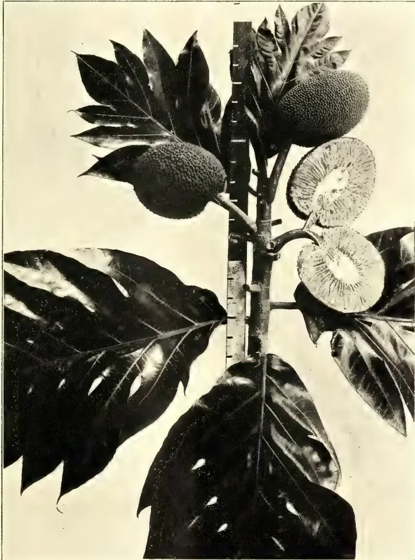
A black and white photograph of a fruiting branch of Artocarpus incisa. The branch features large, deeply lobed leaves and several large, spiky fruits. Two fruits are shown in cross-section, revealing a white, fibrous interior. A vertical ruler is placed next to the branch for scale.Photo by H. F. Macmillan.
2. ARTOCARPUS INCISA; FRUITING BRANCH.
SHOWING LEAVES AND FRUIT IN SECTION.
![A black and white photograph of a branch of Artocarpus nobilis (Indigenous Breadfruit of Ceylon). The branch features large, dark, ovate leaves with prominent veins and serrated margins. At the top of the branch, two large, elongated, dark, oval-shaped fruits are visible. Below the leaves, several smaller, lighter-colored, oval-shaped fruits are shown, some of which are split open to reveal a row of small, round seeds inside. A vertical ruler with markings is positioned to the right of the branch, providing a scale for the size of the fruits and leaves.](7d976167230c316c1e2ab36130f862aa_1_img.webp)
Photo by H. F. Macmillan.
3. ARTOCARPUS NOBILIS: INDIGENOUS BREADFRUIT OF CEYLON.
NOVEMBER, 1908.]429Edible Products.is cooked and prepared in various ways, and sometimes eaten raw. It is sold in pieces in the bazaars at a few cents each. The seeds, which are of the size and form of dates, are roasted and esteemed in curries, etc. They are both tasty and nutritious. There are numerous varieties of jak tree, differing chiefly in the shape and flavour of the fruit. In Ceylon there is the variety called "vela," distinct by its comparatively soft rind and pulp; also "waraka," distinguished by a firmer fruit. Of the latter there are sub-varieties; as "kuru-waraka," with small roundish fruits; and "peni-waraka," which means honey-jak, the pulp being sweet. A distinct variety called the "Johore jak" may be seen growing on Mr. Wright's estate at Mirigama. It bears hairy leaves and small fruits which have a most overpowering odour, suggesting that of the durian fruit. This is considered one of the sweetest varieties of the jak-fruit.
Artocarpus Lakoocha, known in India as the "Monkey-jak." This is an erect tree with oblong entire dark-green leaves, which are about eight inches long and four broad. It is a native of Bengal, and its fruit is said to be sometimes eaten and relished. The fruit is roundish or oblong in shape, of the size of an orange. The tree flourishes at Peradeniya, and in Southern India up to 4,000 feet.
Artocarpus nobilis.—This is the indigenous bread-fruit of Ceylon, known to the Sinhalese as "del," "gan-del" or "wal-del," and to the Tamils as "asinpilakkai." It is a handsome tree, usually growing to a height of about 50 feet, but sometimes to a much greater height. It has a spreading habit with a round head, and bears large leathery leaves which are wavy at the margin. The fruit is like a thick cone, six to eight inches long; it is commonly eaten by the natives, being cooked and used as a vegetable for curries, etc. It contains several round white seeds, of the form of large peas, which are roasted and eaten. The tree is confined to Ceylon, and grows in the moist low country up to 2,000 feet. It is readily propagated by seed, and is well worth cultivating as a handsome shade or timber tree.
BY J. C. WILLIS
Bassia is a genus of the family Sapotaceæ, to which belong Payena and Palaquium, which yield gutta-percha, and Mimusops which in its South
American species yields balata, and in its Ceylon species is the palu. There are about thirty species, chiefly in the Indo-Malayan region. Of these five occur in Ceylon; the commonest is B. longifolia, L., the Mi (Sinh.) or Illuppai (Tam.), which also occurs in South India. The other four are found only in Ceylon: one is common, the others rare.
Bassia longifolia, L., the Mi or Illuppai, is common in the forests of the dry zone of Ceylon, but is rare, and perhaps always planted, in the wet districts. It is a large much-branched tree, which for a few days in the dry season is bare of leaves, but is soon covered with the yellowish-pink young foliage.
The flowers have a strong and unpleasant odour of mice; they come out from February to May. Their petals contain a large quantity of sugar, and they are collected and dried and subsequently eaten. They are said to be mildly laxative.
The tree also occurs in Mysore, Malabar, the Anamalai hills, and the Circars. It yields an inferior gum known as elloppa, used in Madras as a remedy in rheumatic affections. The leaves and bark, and the juice of the bark and young fruit are also used medicinally, and are said to be astringent and emollient. The bark is also used as an astringent tonic in Ceylon.
The ripe seeds yield an oil known in Ceylon as Mi-tel, which is used here in cooking and as an application in skin diseases. The oil is yellow and semi-solid, and is used in India for burning, soapmaking, and as an adulterant for ghee. The cake left after expression of the oil is baked, and used as a hair-wash, having good detergent properties. The cake is known in the north of Ceylon as arappu, and is exported from Jaffna, &c., to India. In 1905, 106 cwt. were exported, valued at Rs. 567.
The timber is pale reddish brown in colour, hard and heavy, and lasts well, especially under water, where it is comparatively free from the attacks of Teredo. It is used for carts, furniture and bridges.
Bassia latifolia, Roxb., the Mahua, Mhowra, or butter tree of India (Illuppi, Tam.), which occurs from the Central Provinces to the Western Ghats and Burma, is one of the most valuable Indian trees. It occurs in gregarious forests, usually mixed with sal. It thrives on dry stony ground, and a most unusual drought is required to check its bearing. It is nowhere planted, but is carefully protected and preserved, and in many districts is the most common tree.
Edible Products.430[NOVEMBER, 1908.The tree drops its leaves in February and remains naked till April. The flowers appear in March and April, and as they fall the tree comes out in the pretty coloured young foliage.
The tree yields a valueless gum, and the bark is used in dyeing to mix with other materials when a dark or black colour is wanted. Sankernath (in Ind. Forester, 1906, p. 399) describes the collection of the latex, but finds that an average yield of about tolas (1 oz.) only can be expected a year, and the guttapercha produced is but of poor quality, if not actually valueless.
The succulent flowers are one of the most important minor food supplies of India. They have a very disagreeable smell of mice, but are none the less eagerly collected. The ground is cleared under the tree, and the flowers carefully collected before they drop. In many places the petals only are taken and the pistil left to ripen to a fruit, in others some only of the flowers are collected. A tree will yield 200-300 lbs. of flowers in a year. The flowers are dried on mats in the sun when they whither to half their weight and get a brownish red colour. A hundred-weight of the dried flowers sells at from four annas to a rupee. The merchants often give a handful of salt and 8 or 10 lbs. of rice for a maund. Two maunds are said to be enough to feed a family of five for a month, and are usually eaten mixed with sal seeds and sometimes rice; sometimes they are pounded into flour together with other seeds.
The flowers are also popular with animals, and during the mahua season a considerable number of these are shot under the trees at night.
From the flowers a spirit is distilled, called daru, which though it has an unpleasant smell at first, afterwards comes to resemble Irish whisky. The Bhils get eight bottles of weak spirit from sixteen seers of dried flower soaked in water and then distilled 4-5 days (or 8-10 if old). About 1888 a considerable export of these flowers went on to Marseilles, but the French Government, finding that they were used for the preparation of a cheap brandy, stopped the import. An Italian in Bengal took a patent for a process which eliminated the smell, and commenced to make spirit on a large scale, but the rum merchants of Calcutta succeeded in getting a prohibitive duty imposed.
The seeds ripen about three months after the fall of the flowers, and yield a valuable oil. The kernels are removed from their skin by bruising, and the oil
obtained in the cold by pressure. In the Central Provinces the kernels are pounded and boiled and then pressed. The oil thus obtained is semi-solid; it is used for lighting, for cooking, and to adulterate ghee, as well as in making soap. For the last-named purpose it is coming into demand in Europe, and it is said that the average price given for the seed in Bombay is Rs. 4.50 a hundredweight. Demands have lately come to Ceylon for this seed from soapmakers in England. 600,000 cwts. were exported from Bombay in 1901-2.
This tree grows at Peradeniya, to which it was introduced a long time ago. Two good specimens may be seen near the Laboratory, and the Tamil coolies gather the flowers with avidity in the season.
Bassia butyracea, Roxb., the Indian butter tree, is a native of the lower Himalayas, from 1,000 to 5,000 ft. The flowers are not eaten, but make a syrup which is boiled down to sugar. From the seeds an oil (phulwa oil) is expressed, which is inodorous, of the consistency of lard, and does not become rancid so early as that of the preceding species. Other species, e.g., Bassia pallida, Burch, yield inferior guttaperchas.
To sum up, the Ceylon species might be better utilised as a source of oil for soap, and if the opposition of makers of other spirits could be got over, this and others might be used as sources of alcohol.
We have recently received quite a number of inquiries regarding Para grass. This interest has been no doubt largely stimulated by the publication of articles in the Louisiana Planter and Sugar Manufacturer, and the daily papers that have given attention to these articles. We are therefore prompted to give the experience that the Experiment Station at Baton Rouge has had with this grass.
We present herewith a photograph of this grass at the Experiment Station at Baton Rouge, taken on the 20th of August, 1908. This is the second year's growth on this plot. Seeds were obtained from Professor S. M. Tracy, of the United States Department of Agriculture, early in the spring of 1907, and planted in a very rich soil which is inclined to hold moisture better than the average soil of the bluff lands. The grass grew rapidly from the beginning and sent out very long stems that re-
NOVEMBER, 1908.]431Edible Products.mained prostrate on the ground almost to the end of the stem until late in the season. Only a portion of the plot was mowed, the remainder allowed to mature its seed and the seed allowed to drop on the ground. Fearing that the plant would be exterminated by the winter freeze, as the stems were all on the surface of the ground, a turn plough was used in bedding the rows, covering the stems to a depth of about two inches, so as to protect a lot of them from the freezes during winter.
During the winter of 1907-8 the plants were almost completely exterminated, notwithstanding this protection. In the early spring a few straggling plants came out from the stems that had lived through the winter, and a moderately good stand was secured later from germinating seed. The grass has not grown quite as vigorously during 1908 as it did in 1907, notwithstanding the excessive rainfall that we had this summer. The erect stems and the standing portion of the prostrate stems have reached a height of two and a half feet at the present time, and I judge would make about a ton and a half of hay to the acre if harvested. I do not think it would have made more hay than this at any time last year.
The stems are very coarse and woody, and, consequently, difficult to cure. We have saved samples of this hay both years, and, while not having a sufficient quantity to make a feeding test of it, to all appearances it is a poor quality of hay. I present herewith analysis of a recent sample made in this laboratory by Mr. J. E. Halligan:—
| Protein 1.41 | Dry basis—Water free. |
| Carbohydrates, 13.38 | Protein, 5.33 |
| Water, 73.50 | Carbohydrates, 50.49 |
| Fat, 0.61 | Ash, 9.38 |
| Fibre, 8.62 | Fat, 2.29 |
| Ash, 2.48 | Fibre, 32.53. |
It will be seen that this hay contains less than half as much protein as Lespedeza, and only a slightly higher carbohydrate content. The fibre is rather high. It contains two-thirds as much protein as Johnson hay and about four per cent. more carbohydrate.
As the plant is grown here it would be difficult to harvest as hay. The stems running on the ground, taking root at every joint, would make it difficult to rake the hay without pulling up a lot of the green stems that would be mixed with the harvested hay, which, of course, would be undesirable.
As the results of two years' observations, it is my opinion that this grass
has absolutely nothing to recommend it to the planters of Louisiana as a hay crop to be planted on soils or ordinary drainage. We have not yet experimented with it long enough to tell of its worth in wet places or in lands subject to overflows. During the month of May we transplanted a quantity of the grass to the margins of a small bayou that runs through the pasture at the Experiment Station, and this planting was just becoming established when the high water came and the pasture was submerged for a period of about six weeks. After the water subsided the grass was still living, but of course had not grown any during the period of submergence. While Professor Tracy thinks that the grass has given satisfaction as a grazing grass in Texas, and says that it will withstand tramping of the animals that are grazing on it, I do not believe that it would hold good in Louisiana.
The expressions in the papers of apprehension regarding this grass becoming a pest comparable to Johnson grass may be well founded for the extreme southern portion of the State, but not for the latitude of Baton Rouge or further north. I am confident that the average winter at Baton Rouge will exterminate the grass if it is not protected in some way, either by ploughing or by the warmer atmosphere adjacent to a body of water.—Louisiana Planter and Sugar Manufacturer, Vol. XLI., No. 9, August, 1908.
[This is the Mauritius or water grass of Ceylon—Panicum Muticum—the standby of stall-fed animals (especially milch cows) in the low country. It is, of course, quite unsuitable for hay, but as a succulent food for animals getting a nitrogenous cake it has its value.—C. DRIEBERG.]
On several occasions we have mentioned the Italian Government Bill promoted to protect the Sicilian lemon-industry by the imposition of an export tax on citrate of lime and concentrated lemon-juice, and we reported a fortnight ago that the Bill had passed. It appears to be a hasty and ill-advised piece of legislation, which has been presented without a full study of the facts, and was rushed through Parliament during the last few days of the Session. In some quarters it is regarded as a political move in order to appease the Sicilian voters; while others say that pressure has been put on the Government
Edible Products.432[NOVEMBER, 1908.by the syndicates of manufacturers and speculators in citrate of lime, who have large stocks that have heavily depreciated in value. The Act creates a body called the "Camera Agrumaria," or Chamber for the Citrus-industry, which will practically have a monopoly. The chamber has to sell the goods deposited by the producers for their account against a commission of 2 per cent. and is exempt from the tax, whereas the goods which are sold outside the chamber are to pay the tax. At the present time only citrate of lime and concentrated lemon-juice are required to pay the duty, which is variable and may reach a maximum of about 25 per cent. of the value, but the duty may be extended by royal decree to other citrus products, including lemon oil. Much doubt prevails in Messina as to whether the Chamber will be able to work successfully; indeed, some believe that the scheme will be unsatisfactory to everybody, especially to owners of lemon-orchards, who believe it will be the means of advancing or keeping up the price of lemons. But there are views to the contrary. No artificial means is likely to improve the lemon-industry, which is at present suffering from over-production. The chief interest of the new law to makers, dealers, and consumers of citric acid is that the duty on citrate and juice is equal to 120 lire per pipe of juice, or, say, £5 per pipe or 3d. per lb. on citric acid. Payment of the tax will eventually fall on the consumer, for the narrow margin of profit on which citric-acid makers work precludes the possibility of their bearing it. The duty will come into force in September. Makers complain of the instability of the market price of citrate of lime and the uncertain and frequent fluctuations, whereby they are unable to ascertain with any degree of accuracy the prices and extent of their contract business. English makers have been compelled to restrict their business on this account, and with the new duty in sight the future course of citric acid is quite uncertain. It has been stated that the Italian Government intend to interest themselves in the manufacture of citric acid, and with that object a sum equivalent to £8,000 is at the disposal of the Italian Minister of Agriculture for the erection of a factory. There appears to be uncalled-for animosity in Sicily against all makers of citric acid, and it is even alleged that they are responsible for the present crisis in the citrus-industry. Probably that is the reason they wish to undertake the manufacture of citric acid themselves.—Chemist and Druggist, Vol. LXXII., No. 1487, July, 1908.
PIONEER WORK IN THE SEVENTIES.
(Written for the Straits Times)
BY E. MATHIEU.
It was in 1864 that Mr. Nieuwenhuis, a Java planter, raised the first crop of Sumatra tobacco, and in 1865 that 150 bales of that crop reached Europe. Its qualities were recognised at once, and the price paid for it averaged 1 florin 49 per half-kilo.
Other pioneers soon followed in the footsteps of Mr. Nieuwenhuis. Of this period, the usual tale is recorded of misery, sickness and death, which is the inevitable prelude of the opening up of a new tropical country to cultivation; and, when we see the rich plains of Deli of the present day, it is hard to realise that this smiling land, not more than forty years ago, was an almost impenetrable block of jungle and forbidding swamps, a wild land haunted by wild beasts.
But, early in the seventies, important companies, such as the Deli Maatschappij, with huge capital, and a host of private planters stepped in, and set themselves in earnest to the work of felling the forests, of draining the swamps and laying down the crops; roads were made connecting the estates with the little port of Labœan. A new port was established at Belawan, and, in 1884, a well-appointed railway was opened, quickening the life of the country; so that, in less than twenty years, this land, where "the hand of man had never set foot" as the humorist puts it, had blossomed out into a chess-board of highly-cultivated domains with rich crops of the finest tobacco ever grown.
RECORD OF PROGRESS.—Excepting the Federated Malay States, there is, perhaps, not one Colony which can show such a brilliant record of progress as that made by that small strip of country comprising the Sultanates of Deli, Langkat and Serdang. This progress is not the result of a bloody war, such as marks the birth of most Colonies; it is a tale of conquest of wild nature by the sheer determination of the planters themselves, absolutely unaided by Government. A generous soil and a propitious climate were on their side, it is true; but it wanted something more than that to bring about the signal success achieved by Sumatra tobacco throughout the world at large. It wanted the un-
NOVEMBER, 1908.]433Edible Products.surpassed experience of the Dutch as planters; their capacity for organising and handling native and Chinese labour, and, lastly, the thoroughness of their methods which have raised tobacco-growing to the plane of a highly specialised and intelligent cultivation.
Deli planters realised from the start that, for the profitable cultivation of tobacco, there is only room for a product of marked characteristics, and qualities answering the well-defined requirements of the trade for its different purposes. It is no use, for instance, for the planter to strive to supply a tobacco that will answer, to take an extreme case, at the same time the purposes of a cigar wrapper, and those of a pipe or chewing tobacco. The qualities required for each type exclude each other. He should aim at excellence in the type of tobacco for which his soil and climate are most suited, and, to reach the standard of excellence, he should be well in touch with the market and informed as to the actual demands of the day.
A WRAPPER LEAF.—In fact, a high grade of tobacco of any class can be grown only by a specialist. He must know precisely what field practice, what methods of planting, of harvesting, of fermentation will produce the best results towards the end he is working for, whether it be fineness of aroma, or the size and weight of texture and lightness of leaf. This practical knowledge should, moreover, go hand in hand with a close attention to the researches of scientific investigators, which have already done much of value to elucidate the actions of various manures on the qualities of the leaf, the facts which govern the evolution of colour, of flavour and aroma during cultivation and fermentation, and also the life habits of the insect pests and the nature of the diseases to which, from seed to staple, tobacco is subject.
Deli planters, having recognised the capacity of their land to grow a wrapper leaf of very high quality, have stopped at nothing to maintain it or even to improve it. As the demands of trade and of fashion became more exacting, they altered their modes of cultivation, of harvesting and of fermentation. From broad planting, they resorted to closer planting; abandoning their former practice of cutting the whole plant, they have now adopted the plucking of the leaves one by one, which entails an enormous complication of the work, to be understood only when we consider that each coolie has to handle, one by one, at least 180,000 leaves. As a result of
these improvements, the cost of production of one pound of leaf, which could formerly be grown for 75 cents of a florin, has now risen to something like one florin.
APPLIED SCIENCE.—It can be truly said that the whole course of cultivating and curing tobacco leaf for wrappers is a system of applied science, compared to which other branches of Agriculture and preparation of vegetable products, with perhaps the exception of such intensive culture as the Paris "maraichers" and such like, is simple and easy. It has, in fact, reached such a degree of minuteness that it appears almost perfect, and yet, it is doubtful if we have seen the last of improvements. Such a highly specialised industry, constituting, as it does, a virtual monopoly, can hardly stand still in the face of the brilliant results achieved within late years by the planters of Florida and Carolina from Sumatra seed.
If the accounts which we read are not over-hopeful, the tobacco which they now produce is of such fine qualities that New York brokers declare that it cannot be told from the imported Sumatra leaf, and they predict, as a result, a complete revolution in the tobacco industry of their country. Already at the Paris Exposition of 1900 some specimens of this tobacco, exhibited by the Owl Commercial Company, had been adjudged a higher order of merit than the Sumatra exhibits, as they were found thinner and more elastic.
We may take it for granted that the Florida growers will not stop in their endeavour to improve still further their crops, which have now become so valuable that many go the length of shading their land under cheese cloth, or under thin pine slats. It is stated that some of these crops yield 80 per cent. of wrapper leaf, and that the best among them are of such a fine quality that 200 leaves go to the pound, two pounds covering 1,000 cigars; and, in the 16 inch size, it takes 25 leaves more to make up a pound weight than it does of the Sumatra leaf.
A TELLING TEST.—I believe there is a tendency among some of the Deli planters to think lightly of these efforts of the Florida planters, and that their confidence in the superiority of the Deli product remains unshaken; but this may turn out to be a mistake, and in this connection, the following anecdote tells a plain enough tale.
A friend of mine, formerly a well-known Deli planter, who went to the
55 Edible Products.434[NOVEMBER, 1908.States in 1904, brought back with him some Florida wrapper leaf tobacco, and on his return to Holland invited some friends, five in number, some of the best-known tobacco-men among them, to see the tobacco side by side with another lot of Sumatra tobacco. The Florida bundles, being of different make and getting than the Deli tobacco, were opened and put up in the same way as the Sumatra samples, namely, tied with "Keelit Kayce" and a special knot made to them for identification. Then Florida and Sumatra bundles were mixed together; the windows were wide open and the room afforded a very good light which would render plainly visible any real difference. The tobacco experts were then admitted, and, to cut the story short, no one succeeded in spotting the Florida from the Sumatra bundles.
The moral of this is that the last word has not yet been said in the matter of tobacco cultivation, even in Deli, and that, with the help of the duty of $1.85 (U.S. currency) per pound, the day may not be far off when the large shipments of Sumatra leaf tobacco to the States may cease and be supplied by the home grown article. Up to the present, so far as I am aware, the quantities of shade-grown tobacco have not been sufficient to influence the market; but, as time goes on and the growers gain experience, which they are fast doing, we may soon hear more of the matter. A parcel of 134 bales of Connecticut shade-grown tobacco, from Deli seed, realised, in 1905, an average price of $1.26 (U.S. currency) per pound; the highest price being $1.75 and the lowest, for short sized, second quality leaf, 35 cents per pound.
A GOOD SMOKE.—We can all tell good butter from bad. Flavour, odour, freshness, fineness of grain, at once differentiate the good article from a bad one. But who can say what a good tobacco is?
"Hodge" puffs at his church-warden filled with a nondescript mixture and says "that's foine."
"Hans" smokes his cheap, full-bodied cigar, and beaming, exclaims "schmeckt schön."
"Jacques" pulls away at his coarse and ill-flavoured "caporal" and finds it "chic."
The street-urchin picks up a cigarette end from the gutter and pronounces it "nobby."
Which goes to prove that, in the matter of tobacco, tastes differ. But, notwithstanding this diversity, certain types of tobacco have found favour generally among smokers, and are re-
cognised as standards by the trade for their individual characteristic qualities. Of such are the Cuban tobaccos for their richness of aroma, and the Sumatra tobaccos for their delicate texture.
CONSTRUCTION OF THE CIGAR.—A cigar consists of:—
1. A filler or inner core which is composed of two or three pieces of tobacco leaf rolled with the fingers in the form of a short rod. For the best cigars, Cuban tobacco is used, selected for its flavour and aroma, although some very good brands are turned out which have no connection at all with Cuba. Sometimes the filler is made up of two or three kinds of tobacco, blended to produce a certain strength and aroma required to obtain a specified brand.
2. A binder—an oblong strip of leaf of the length of the cigar which wraps the core and slightly overlaps.
3. The outer cover or wrapper—a strip cut to a definite pattern and dimensions, wound spirally round the cigar, beginning from the burning end down to the mouth end, where it neatly finished to a fine point.
1. It should be light in weight. The cigar manufacturer, who pays 1 florin 50, or 2 florins a half-kilo likes to have as many leaves as possible for his money; and, other qualities being equal, he will naturally prefer the tobacco which gives him the most wrapping material for the same weight.
2. Its flavour should not be too strong or too marked, so as not to veil the aroma of the filler.
3. It should be without holes or spots.
4. The midribs should be very thin so as to minimise waste.
5. The texture of the leaf should also be very thin, silky, and elastic so as to form a smooth cover.
6. It should not be strong in nicotine as, in the tact of smoking, it comes in contact with the tongue and with the lips.
7. It should burn well, without crepitation, and consume itself into a white, pearly and firm ash, which will not easily drop off.
8. It should be bright in tone and slightly glossy, and, in regard to colour, meet the demands of the trade and the caprice of fashions.
9. Its size should be 12, 14 or 16 inches, which prove to be the most suitable sizes for the requirements of the manufacturers and those entailing the least waste.
NOVEMBER, 1908.]435Edible Products.10. The lateral veins should neither be spreading at a right angle nor at too acute an angle from the midrib, and they must be equidistant, to 2 inches at the base on either side of the midribs. A tapering leaf is not favourable for cover.
The Sumatra leaf represents, so far, the highest wrapper leaf grown, and it will be understood that the grower of such a high standard of tobacco can leave nothing to chance in the selection of his land, and that, from seed to finish, his work must conform throughout to a well-defined plan which experience has taught him to be the best to achieve his purpose. How thorough his methods are, I purpose to show later on, but I first must refer to the climate and soil and surroundings he has to work with.
One of the most promising of the newer industries of the West Indies is the cultivation of limes. Lime products, at the present time, form the principal exports from the Island of Dominica, and are second only to cotton in the island of Montserrat. Large tracts of land have recently been taken up in British Guiana for the cultivation of lime trees, and progress is being made at St. Lucia, Carriacou, and other portions of these colonies.
It is estimated, by calculating an average yield per acre as hogsheads of concentrated juice, that there are approximately 2,500 acres of full bearing lime trees in Dominica at the present time, and, in addition to the above, there are from 1,000 to 1,200 acres of young lime cultivation from one to six years old.
Lime fruits in a fresh condition are now being largely exported to New York, London, and Manchester. They can be used for every purpose to which the lemon is put, and are esteemed as being more economical and superior to that fruit. Raw lime juice is exported for making cordials; while concentrated lime juice forms one of the principal sources of commercial citric acid.
The manufacture of the citrate of lime has recently been taken up with success. Essential oil of limes and distilled oil are of value in Perfumery.
With the view of extending and improving the cultivation of lime trees in the West Indies, the present pamphlet has been issued. The manuscript, in the first instance, was prepared by Mr. Joseph Jones, the efficient Curator of the Botanic Station at Dominica. It was afterwards carefully revised by the Hon. J.C. Macintyre, an experienced and successful lime planter at Dominica, and by the scientific officers on the staff of this Department.
The following pages should serve as a popular guide in regard to the selection of suitable land, and the various details connected with the successful cultivation of the trees and the preparation of the various lime products for export. They should also prove of interest to those engaged as lime growers, and of especial value to young settlers and others who contemplate embarking in the industry.
Lime trees may give a few fruits in the third year after planting, but it is thought that eight to ten years is necessary to bring a lime plantation into full bearing. The cost of establishing a plantation, including the necessary works and buildings is estimated at between £30 and £40 per acre. A planter, possessed of a capital at least £2,000, unless he is familiar with local conditions, could expect to make a comfortable living from 30 to 40 acres of limes.
To bring, say, 100 acres of forest land into full-bearing, limes would need a capital of between £3,500 and £4,000.
In the Appendices will be found information obtained from manufacturing chemists in London and New York with reference to the future of citrate of lime, particulars of the methods of cultivation of limes as practised at Montserrat, details of the exports of lime products from Dominica and Monserrat, and a carefully prepared bibliography of the literature readily accessible in regard to the lime tree and its numerous products.
The thanks of the Department are due to Mr. Joseph Jones, the Hon. J. C. Macintyre and others for the trouble and care they have devoted to the preparation of this pamphlet. It is hoped that its publication will serve a useful purpose in assisting in the further development of what may be regarded as a distinctive West Indian industry.
D. MORRIS,
Commissioner of Agriculture
for the West Indies.
March 11th, 1908.
Edible Products.436[NOVEMBER, 1908.INTRODUCTORY.One of the most distinct species of Citrus is C. Medica, which includes the citron, lemon, and the limes. Of limes there are sweet and sour kinds. The sour lime (the one dealt with in this pamphlet) although probably introduced into tropical America from the East Indies, has made its second home in this part of the world, where it is more generally cultivated. The tree is described as probably indigenous to the wild valleys of the outer Himalaya, and probably also of the mountain tracts of the Central Provinces and of Central India.
The sour lime of the West Indies (Citrus Medica, var acida) seems to be confined to tropical and sub-tropical zones. It does not appear to flourish in Southern Europe nor in many other localities where oranges and lemons are capable of being grown.
The date of the introduction of the lime into the West Indies is not recorded, but it is supposed that it found its way to the English islands from the French island of Martinique.
Atwood, the historian of Dominica, in 1791, states:—"The lemon and the lime trees bear also very aromatic scenting blossoms, and the fruit of both is in great abundance, large and of excellent quality. Of these, the latter especially, great quantities are often sent in barrels to England and America. The neighbouring English islands are likewise often supplied with them from this island, especially Antigua and Barbados."
Up to the time of Dr. Imray, in the middle of the nineteenth century, the lime was cultivated to but a slight extent in Dominica, and then for the fruit only. Experiments commenced by this gentleman in about 1852 showed that the cultivation of limes could be undertaken upon a commercial scale. About the same time, or a little later, similar cultivation was commenced by Messrs. Sturge in the island of Montserrat.
Through the enterprising action of Messrs. Sturge, Montserrat soon became the headquarters of the lime industry in the West Indies, a position which in later years has been attained by Dominica.
It would appear that the future prospects of the lime industry in the West Indies are of a promising nature and considerable interest has, of late been awakened in this cultivation
The progress made in the industry in Montserrat, Dominica, and Jamaica has induced the planting of limes in British Guiana, Trinidad, Grenada, Carriacou, and St. Lucia.
Records show that lime products to the value of £280 were exported from Dominica in 1848, but that their value fell to £12 in 1857. In 1887, the value is given by Dr. H. A. Alford Nicholls (Kew Bulletin, August, 1888) as £8,561, whilst lime products from Montserrat were valued at £10,625. The total value of lime products exported from the island of Dominica during the year 1906 was £55,174. The exports from Montserrat during the same period amounted to £6,883. Those from Jamaica were of the value of £3,909, and from Trinidad of £982.
The falling off in exports of lime products from Montserrat in recent years has been due to the destructive hurricane that swept over that island in 1889. The lime plantations are only now recovering from this disaster.
The rapid progress of the lime industry in Dominica during the last ten years is largely due to the assistance rendered by the Imperial Department of Agriculture, which has distributed at a small cost immense quantities of lime plants from the Botanic Station. During the five years 1902-6, over 150,000 ordinary lime plants have been distributed from the station, in addition to nearly 12,000 plants of the spineless variety. For the year ended March 31, 1907, about 70,000 lime plants were sent out. Of these, 60,000 were of the ordinary kind, and 10,000 of the spineless variety. The Agricultural School has also taken part in this work, and the pupils are thoroughly trained in the cultivation of limes.
For the year 1906-7, over 5,500 lime plants and eight gallons of lime seeds were distributed from the Montserrat Botanic Station, and 37,000 plants from St. Lucia. The majority of the plants at St. Lucia were raised in the nurseries attached to the Agricultural School.
As already shown, the lime industry of Dominica has made rapid progress in recent years. It received a serious set-back from the attacks of scale insects in 1902 and 1903, when the exports dropped from £45,357 to £23,420. Valuable services were rendered by the Imperial Department of Agriculture in successfully checking these scale attacks, and the industry rapidly recovered. The exports of 1907 rose to a value of £77,407.
NOVEMBER, 1908.]437Edible Products.VARIETIES.The ordinary variety of lime that is cultivated is the spiny variety. There are also 'spineless' and 'seedless' varieties.
The variety of lime now known as the spineless lime was first noticed on Shawford estate, Dominica. Seeds from this locality were collected and sown by Mr. H. F. Green, the Curator of the Botanic Station, Dominica, in 1891. Seedlings from these, in turn yielded fruit, and plants were established in 'spineless lime plot' at the Botanic Station. From this plot the spineless variety has been propagated for general distribution in the island.
The spineless lime is characterized not only by the absence of spines, but also by an erect habit of growth while young. This erect habit is modified with age, for as the trees grow older and bear fruit the branches tend downwards.
The fruits contain comparatively few seeds, while the skin is smooth and thin. They are smaller than the fruits of the ordinary variety, but are very juicy. The juice would appear to be purer and richer in acid.
Various samples of ordinary and of spineless limes, grown under similar conditions, have been examined by Dr. Watts at the Government Laboratory, Antigua. They showed that the spineless variety gave an average acidity of 14.4 oz. of citric acid per gallon against 13.3 oz. by the ordinary variety. The average weight of one fruit of the spineless lime has been calculated to be 43.95 grammes against an average weight of 65.7 grammes for the ordinary lime. Mr. A. E. Agar has also kindly undertaken comparative crushings of spineless and ordinary limes. These also show the richness of the juice of the former variety in acid its purity, the juicy character of the fruit, the thinness of the skin and the comparative freedom from seeds. Fuller particulars of analyses of spineless and ordinary limes may be found in the Report of the Botanic Station, Dominica, for 1906-7.
There are now over 20,000 trees, equivalent to about 100 acres of the spineless variety growing in Dominica, and information, based upon observations made on large field plots, should soon be forthcoming.
When the seeds of this variety are sown, they come fairly true to type, about 75 per cent. of the seedlings being spineless. The spineless seedlings are
readily distinguished from the others, even at a very young stage, by the different shape of the leaves.
'Seedless' varieties have been noticed in Trinidad, Dominica, and Montserrat, and budded plants have been obtained for distribution.
The United States Department of Agriculture have obtained hybrids between the West Indian lime and the Sicily lemon. Two hybrids appear to possess characters of merit, but it is not yet known whether they will prove of real economic value.
GENERAL INSTRUCTIONS.CHOICE OF LAND.The flat or gently undulating land met with near the coast line of Dominica are considered the best for lime cultivation. In some instances, these lands may extend for considerable distances from the coast inland up the valleys.
Limes can also be successfully cultivated on fairly steep slopes, especially where the land is held by numerous boulders, and fed with vegetable matter from forest land above the cultivation. On slopes that have been cleared of forest to the top of the ridge, lime trees have been established in some instances, but unless trees so situated are carefully terraced and manured, they cannot be expected to bear such good crops as trees growing under more suitable conditions.
The flat coastal lands of Dominica were formerly cultivated in sugar-cane. On the collapse of that industry the more sheltered positions were planted with cacao, and the lands which were more exposed with limes. Limes, which are surface feeders, will grow vigorously and yield heavy crops in comparatively shallow soils overlying heavy clays. Such lands could not successfully be cultivated in cacao.
This line of development has continued to the present day, both industries flourishing side by side. Dominica is therefore producing two staple crops of first-rate importance.
Lime trees will develop best and yield the heaviest crops in rich, well sheltered lands, situated from sea-level up to 800 feet elevation, and possessing a rainfall varying from 80 to 160 inches per annum.
They are, however, being cultivated in Dominica at elevations up to 2,000 feet, and in districts possessing a rainfall of over 200 inches per year.
The most serious consideration in connection with the cultivation inland at
Edible Products.438[NOVEMBER, 1908.high elevations is the question of transport of the crop to the coast. It would appear, however, that with good selection of land, sound methods of cultivation, and attention to the protection of the property from the wind, there is little doubt that lime cultivation may be profitable in the hills.
The lime can be successfully grown under varying circumstances, provided there is a sufficient rainfall and not too prolonged a dry season. Experience in Dominica shows that the best results are obtained on the rich coastal and valley lands possessing a light black soil. Limes may also be successfully grown on the red soils of the uplands.
The greater part of lime cultivation in Dominica was established on old sugar-cane lands. The same may also be said, to a certain degree, of the lime cultivation in Montserrat. When the canes were cut, the fields were holed and planted with lime seedlings. The canes were allowed to remain and to ratoon. They yielded fair crops, and, also, afforded protection to the young lime plants.
The system is a good one when the canes around the lime plants are sufficiently removed to allow of free development. Limes can, by this method, be successfully established in the fields of sugar-cane in the course of a few years, but they must receive attention, for, if the canes around the lime plants are not removed, the latter will become weak and dwarfed.
Limes may also be grown on lands that are cultivated in the usual garden crops of cassava, pigeon peas, tannias, dasheens, etc., while on some estates, lands in grass and guava bushes are planted with this crop. Land in grass or guava bush is cutlassed, lined and holed before being planted. Circles around the young plants are kept clean, while the remainder of the field is occasionally cutlassed.
When forest land is felled for lime cultivation, the usual methods of lopping and burning the branches are followed by lining and holing. After planting, a small space around each plant is kept clean, while the bush and grass that spring up are kept down by cutlassing.
When the plantation is being established, a good system of roads should be outlined, for lime fruits are a bulky crop, and have to be carted to the mill. Good roads render the fields easily accessible for the many estate operations, and lead to economy in working.
In districts where the rainfall is heavy, the question of drainage is very important. In many wet districts it is to be recommended that an efficient drainage system should be in existence before any planting is done. Frequently, however, the need for drainage does not become apparent until the trees have begun to come into bearing, when the constant trampling of the soil by the labourers renders it imperative. Limes that have been planted in straight rows render this after-operation of additional drainage possible with but slight injury to the trees. Very great injury is often done to trees in draining fields irregularly planted. On coastal lands where the rainfall is light, and the natural drainage good, but little attention is needed for the laying out of drains. When it is necessary, it should be one of the first operations undertaken.
Protection from wind must also receive attention at an early date. Many estates are well protected by the conformation of the land, but on more exposed lands, wind-breaks of suitable trees should be formed as early as possible. Galba has been found the most suitable for main shelter belts, and Pois doux is to be recommended for subsidiary hedges by reason of its beneficial effect on surrounding cultivation. The hedges for wind-breaks should be topped to prevent them from becoming tall, thin, and ineffective for shelter. The prunings make excellent mulch.
Temporary wind-breaks of the wild plantain (cokoi) or manila hemp, etc., afford protection while the permanent hedges are growing. When either of the above are established in the land, however, it is exceedingly difficult to get out their roots and to rid the land of them. Ordinary bananas and plantains are not recommended as they are liable to be blown down.
Full exposure to the wind has a dwarfing effect on the trees. Also lime flowers are very easily blown off the trees, and, as the principal flushes of flowers occur in February and March when strong winds are blowing, care should be taken to establish effective windbreaks. Very often, this important work of making wind-breaks is neglected in the establishment of a lime plantation.
Much loss of time and money is prevented by forming wind-breaks of suitable trees at the same time as the earliest planting of lime is done, especially in any situations that are exposed to the full force of the wind.
NOVEMBER, 1908.]439Edible Products.Lime plants are usually raised in nurseries until they are about 16-18 inches high, when they are suitable for planting out in the field. It takes from ten to twelve months from the sowing of the seeds to the time when strong plants are fit for putting out. Sometimes, seeds are planted at stake in the fields, but this is not generally to be recommended.
Seed beds should be made in a sheltered corner of land after the soil has been thoroughly tilled. Beds from 4 to 5 feet wide should be made, and there should be paths from 2 to 3 feet wide between the beds. The soil from the paths should be thrown upon the seed beds, thus raising them and insuring good drainage.
Nursery beds are prepared in a similar manner and are usually of the same width as the seed beds. The soil of the nursery beds, as in the case of seed beds, should be thoroughly broken up. This ensures that the seedlings develop a good root system. When the beds are badly prepared, the plants possess a very poor root system, and such plants cannot be lifted and transplanted in the field without a heavy percentage of loss, whilst even those that survive receive a great check.
A quantity of seed, selected for sowing, should be placed in a fine sieve and kept stirred by hand while water is poured over it to remove the mucilage enveloping the seeds. The seeds are then dried in the shade, and as soon as they are dry enough for handling they should be sown, for lime seeds do not retain their vitality very long.
When lime seeds are sown unwashed, rats very often dig them out and destroy them, whereas if they are carefully washed and dried, rats but seldom interfere with them.
Lime seeds are usually sown in drills about 8-9 inches apart running across the seed beds. Two men are generally engaged in sowing, one on each side of the bed. The drill is marked by pressing on the soil lengthways with a broom handle. The drill is opened by the fingers, and the seed is sown thinly about an inch deep. A seed bed 5 feet wide and 100 feet long, with drills 8 or 9 inches apart, should give from 5,000 to 6,000 strong seedlings.
When the seedlings are from 4 to 6 inches high they are ready for transplanting into the nursery beds. The plants are carefully lifted with forks,
the rootlets trimmed, and the stems topped. The roots of the seedlings are kept wetted and covered with damp baling during the time they are out of the ground. The seedlings are then taken to the nursery beds, which should have been previously well prepared and levelled.
The tools necessary for transplanting work are:—Two garden trowels, a short line to keep the rows straight, two pieces of stick 8 or 9 inches long for measuring the distances between the rows, and a short piece of board to prevent the men from placing their feet on the soil of the bed.
The board is placed on the bed and the two men working together have one foot in either path and one foot on the board. The seedlings are placed out in rows 8 or 9 inches apart, with the same distance from plant to plant in the rows. Each row in a bed 5 feet wide will contain seven plants.
Two good workmen who have had some practice at this work can transplant, on easily worked soil, 2,000 seedlings a day. A nursery bed 5 feet wide and 100 feet long should give 1,000 strong plants for planting in the field, after allowing 15 per cent. for wastage and for backward plants.
The lime is an extremely hardy plant and needs no protection from the sun at any stage of its growth. In the nursery, however, the young plants should receive careful treatment in order to produce vigorous plants possessing a good root system, capable of being transplanted to the field without loss, and with the least possible check to growth.
(To be continued.)
BY C. F. BAKER.
Good seed is one of the most important items in tobacco culture. It is perfectly true that poor seed—seed taken from secondary sprouts on all kinds of plants, good, bad, and indifferent, seed cut before it is ripe, and large and small seed together—may all be planted, and then, with sufficient outlay in fertilizers, water, and care, fairly good tobacco may yet be made. But it is not a good business proposition when, if the best seed and rightly
Edible Products.440[NOVEMBER, 1908.grown posturas are used, as good and far better tobacco may be grown at less cost. It has been proven conclusively elsewhere, and also in Cuba, that seed selection pays; seed from plants of the finest type only, seed from the main terminal flower cluster, seed from the largest strongest capsules, and finally the heaviest seed. We tested this in a way, in our experimental plots, by making a planting on very poor ground, ground that had been occupied only by Johnson grass, using very strong and healthy posturas from heavy seed that had come out of the best parents. The ground was very carefully and thoroughly worked, but received no fertilizer of any description and had only a very uncertain water supply. Cultivation was frequent and careful. The resulting plants were as tall and strong and produced as many leaves and of as good quality as any uncovered tobacco in near-by vegas which had received fertilizers in quantity and water ad-libitum. This does not mean that good tobacco may always be raised on wornout soils without fertilizers, by use of good seed and posturas, but it does mean, and that most emphatically, that these two items are of the very greatest importance in tobacco culture.
Most plants require the union of two sexual elements to produce seed, very much after the manner of animals, and with very similar results so far as heredity goes. The fine yellow dust called pollen we may speak of as the male element, and the pistil which stands in the centre of the flower, and the lower part of which eventually develops into a capsule, as the female portion. Hence both sexes may occur in the same flower. Commonly through the agency of insects the pollen is carried from flower to flower, causing broadcast mixture of blood within each species, and with most plants it is a decided advantage to the race to have the mixture take place. Besides, it actively promotes continuous variation. So that in the case of tobacco it will not do to simply mark plants in the field and afterward collect the seed from these. Fortunately tobacco happens to be a plant that readily submits to inbreeding, i.e., forms good seed by the use of the pollen in the same flower. The progeny resulting from this inbreeding possesses the very desirable quality of remarkable similarity to the parent, so that seed so produced from selected plants possesses a far higher value than ordinary seed. To insure inbreeding a stout paper sack must be placed over the entire flower cluster before any of the flowers are open, and tied in so
closely to the stem below that no insects may enter. Large sacks, at least 18 inches long, must be used, and they should be examined at least twice each week and moved up to keep pace with the expanding flower cluster. Heavy winds will whip these about and break off the plants if long sharpened sticks are not run down close to the stems and the sacks tied to them at top and bottom. This selecting should all be done in the open fields instead of under cheese cloth, the planter personally going through and distinctly marking just such plants as he considers of the best type and quality and to him altogether desirable, before the first topping is done. These selected plants should not be topped, but be allowed to develop normally until time to put on the bags. Later on no harm will be done if some of the best leaves on these plants are picked, but the majority of the leaves should be left undisturbed. As soon as the flowers have all dropped, the bags may be removed and stored in a dry place for another year's use. The capsules should be allowed to remain on the plant until perfectly ripened. After the bags are removed, a boy with a pair of old scissors may be sent through to cut out all the small and weakened capsules. Plants vary widely under different conditions and even under the same conditions in the amount of seed produced. From ten plants which we have selected, which had set a fair number of capsules and from which all the small capsules had been discarded, we obtained 100 grams of fine clean heavy seed. But many weights should be taken under varying conditions to get at a safe average that could be used for general estimates. However, using the above figures, it would require the bagging of at least forty-five good plants to secure a pound of the best heavy seed.
Ordinarily in Cuban seed beds immensely greater quantities of seed are used than there is any necessity for. Good seed should never be thickly planted in the permanent seed bed, and poor seed should never be used at all. One gram should be plenty for each square yard of seed bed. This would be about an even teaspoonful. To insure even distribution the seed should be thoroughly mixed with many times the amount of finely pulverized soil taken from the same bed when it is ready to plant. At the rate above mentioned there will be required about ten pounds of seed to the acre of seedbed. When it is considered that good Cuban seed often runs five million to the pound, it will be recognized that a good margin for losses and non-germination is still left. Scarcely any Cuban seed as now placed
NOVEMBER, 1908.]441Edible Products.upon the markets can be properly measured except after careful cleaning and separating of the heaviest seed. By careful winnowing we have found that in many samples of Cuban seed the chaff and dirt run as high as 10 per cent.
We have made many germination tests of samples of Cuban seed. If seeds are cleaned and the heaviest carefully separated we have found that they will then give a 60 per cent. and higher germination test. The lighter and smaller seeds from these same samples gave germination tests usually lower than 30 per cent. and very rarely higher. The smaller and lighter seed produces poorer plants, and in the seed beds even the 30 per cent. that might sprout would only interfere with the better posturas and would probably largely go to make up the usual percentage that is discarded from every seed bed as too weak and spindling to be usable. Experts in the United States Department of Agriculture have devised a machine for cleaning tobacco seed and separating it according to weight, and this machine is manufactured by Messrs. Queen & Co. of Philadelphia. The thinner planting that good seed makes possible not only produces better posturas but hinders the spread of the fungus which thrives best and spreads most rapidly where plants are crowded.
The name "Cuban Tobacco" is to-day an almost meaningless term. One may go into almost any vega and find there a mixture of many types, some of them presenting wholly distinct varieties, ranging all the way from the "lengua de vaca" form to a very broad-leaved and very desirable type. After the ten years' war, seed of Mexican and States tobacco that were more or less like the original Cuban, was introduced here in large quantities to supply the then almost universal demand. Later a law was passed calling for the destruction of all these foreign tobaccos. Such a law was, however, utterly futile, since the blood of these tobaccos was already spread broadcast and the seed distributed entirely beyond hope of complete extermination. These tobaccos are lusty growers and coarser than the genuine old-time Cuban. Their fruit is larger and more copious, and possibly was, for this reason, at first more commonly gathered by vegueros. The result has naturally been that the Mexican tobaccos (Nicotiana tabacum variety macrophyllum) are to-day predominant in a large part of Cuban vegas. At the Estación and in neighbouring vegas it is the sole type, none of the original pure
Cuban tobacco (Nicotiana tabacum variety havanensis) being present. These forms were long ago (some as early as 1818) characterized in exact botanical terms so that they can now be recognized with certainty by the technical expert. Ordinary commercial Cuban seed of to-day is largely, and often altogether Mexican tobacco. We will admit readily enough that it greatly improves any variety of tobacco to bring it here and grow it under the soil and climatic conditions of Cuba,—improves its aroma and texture, and make a more valuable product of it,—but we will not for a moment admit that it transmutes the variety into something else. If small lots of foreign varieties are openly planted and allowed to flower in Cuban vegas they would eventually be crossed and recrossed until they were completely blended with the common Cuban forms. But after the ten years' war was over, the introduced tobaccos were the predominant ones, and the original Cuban tobacco was the one to be swamped under the stronger characters of the other. For tobaccos with exactly the characters of the introduced types are now the dominant forms. Suppose that most of the native razor-back hogs of Cuba were exterminated and great numbers of improved red hogs were introduced. It would mean the complete disappearance of the original form of native hog, and not all the effects of climate and food could transmute the red hog into the former type of Cuban razor-back.
There is little question but what in the more remote and isolated vegas of Pinar del Río, where the posturas have always been as a rule home-grown, there will yet be found the original and genuine Cuban tobacco, true to the original type. It only remains for careful search to be made during the flowering and fruiting season of tobacco, along the foothills and through the mountain districts. Once found, the more desirable forms could be restored in all the vegas where it was desired in one to two seasons. The work only requires proper facilities for getting about over the country and then freedom of action; with these a very great deal could be accomplished in a very short time in the much-needed work of selection and improvement of existing Cuban tobaccos.
Through constant inquiries about the suitability of still other varieties of tobacco for Cuban vegas, we became interested in their possible introduction, hoping to find some that under Cuban conditions might be an improvement
56 Edible Products.442[NOVEMBER, 1908.over the common form now grown, or that would introduce tobaccos of aromas that could be used to produce improved or new and novel blends. To this end we introduced a considerable number of varieties from other countries and planted plots of selected seed and selected posturas of each variety.* There was absolutely no danger of any mixtures occurring in this work, because it was all done under close control, and all flowers were carefully enclosed in sacks. Naturally many of these varieties like Little Dutch, White Stem, Virginia Orinoco, Tennessee Orinoco, and White Burley, proved absolutely valueless so far as the Cuban tobacco business is concerned. There are some, however, which are hybrids based on Cuban tobaccos, like Brewer's Hybrid, Cooley's Hybrid, Connecticut Havana, improved Connecticut Broadleaf and Zimmer Spanish, which, using seed from selections made by experts in the States, gave, under Cuban conditions, magnificent types of tobacco that certainly demand the attention of Cuban growers. Tobacco men who saw this at the Estación, expressed the deepest interest in them and a desire to see them grown under cheese cloth on a commercial scale. It can very safely be said that their introduction will not injure in any way the common tobacco now grown in Cuban vegas, though an admixture of their blood might easily bring about an improvement. Besides, under current methods of topping and suckering, if it be thoroughly done, crops of any of these could be grown here anywhere with no mixture whatever resulting.
Tobacco seed beds in Cuba under present methods of management, certainly cannot be called an economic success. They are commonly planted on newly-cleared ground along hill sides, it first being burnt over and then the seed scratched in, and the plants kept weeded as much as possible until ready for pulling. These beds are quite commonly remote from water. This is a blind trusting in Providence, not worthy of modern conditions and methods and not productive of any sure results. It is true that during some favourable seasons good crops of posturas are obtained, occasional showers coming just right to bring things along nicely, without enough dampness to stimulate the fungus, and without heavy storms to wash out the young
plants. But this is an utter dependence on chance. Often there are tremendous losses from damping-off fungus, insects, excessive rains, or droughts. Last year one company lost 200 out of 300 acres of seed beds, and was compelled to buy posturas after all the expense of working the seed beds. The certain obtaining of good seedlings when and where they are needed is one of the most serious problems facing the grower. We have proven conclusively through three consecutive years of practical seed bed management in Cuba, under all sorts of conditions, that there is absolutely no need of the larger part of these losses, and we have devised means and methods of avoiding them. We have also shown by repeated successful trials that it is readily possible to produce seedlings regardless of time and place, and largely independent of existing conditions of weather. There is nothing secret about the process, nor does it depend upon any specific or manufactured compound or patented article, but it depends absolutely upon sane and intelligent management.
The time will surely come in Cuba when all the planters will recognize that the only proper place for a seed bed is beside the vega. By cheap and very simple means water and light can be absolutely controlled. Couple this with proper methods of constructing the beds and planting, and difficulties with seed beds will be a thing of the past. Under the old methods commonly in vogue the planter is at the mercy of fungus, insects, storms and weather. Our experts have exerted themselves to discover palliatives for some of the troubles encountered. But it is infinitely better to avoid the troubles even if we may know a possible remedy for them after they are making inroads on our plantings. Prevention is certainly better than cure, always. In our improved practice there will be no need of any treatments for fungus, because there will be no fungus to treat, and the possibility of insect injury will be reduced to a minimum, and all this at no greater expense than is involved in the cumbersome older methods. There is no necessity for any very radical changes, but only a few modifications of detail. There must be a soil as good as that of the mountain seed beds, a bed that a stream of water coming from any ordinary rain cannot wash away, and a cover that will shut out water completely if desired, cut off a part of the light in midday, and at the same time be readily handled. All this we have supplied in the methods
* We acknowledge many favours in this connection from Mr. A. D. Shamel, Tobacco Expert of the U.S. Department of Agriculture.
NOVEMBER, 1908.]443Edible Productsthat we have used. Some planters have covered their beds with cheese cloth, but this is no protection from the heavier rains, which may readily destroy their entire planting. Others have used canvas, but canvas is too heavy and thick and its cost is prohibitive. We have used the waterproof so called "horticultural cloth," the preparation of which is described below, and this suits the purpose perfectly.
Preparation for the seed beds of the coming year should certainly begin just as soon as the last year's crop is out of the way and the planter is free to give his attention to other things. Good seed beds need a very large quantity of the best and most perfectly rotted manure, and it is almost never possible to obtain this at the last moment. It must be secured very early and afterwards properly handled to get it into the right shape for seed bed work. It must be so exceedingly well rotted that it can be mixed into the seed bed with mattocks and produce a very fine soft and friable loam. Undecayed portions and bits of straw and sticks greatly increase the possibility and rapidity of fungus attack. Too great care cannot be wasted on the preparation and proper mixing of the seed bed soil. And it cannot be emphasized too strongly that enough compost must be used to completely modify the character of the soil in order that it shall be most suitable for good seed beds. In the permanent seed beds which should be built in every vega the cost will of course be far greater for the first year than it will be for any succeeding year.
There is a good deal in picking out the right location for seed beds. It should be a spot protected by trees or shrubbery or buildings from prevalent winds, and a spot with very free surface drainage. When properly built and well prepared seed beds are once established, their maintenance will involve far less expense than the preparation of new seed beds in the mountains or elsewhere. Initial expense will be somewhat greater in the former case, but results amply justify it. Besides, in the case of the mountain and other seed beds more or less loss is always probable, and this has led to the preparation of far greater areas than there is any need for. The losses certain to come to any planter putting his faith in the old style seed beds will cover many times over the cost of preparation of the new, whereas the results of the latter have a very high degree of certainty.
The extra expense of the new seed beds lies chiefly in the preparation of covers, and this work should be concluded before the end of July. The cost of material of the light framework over which to spread the covers is very small. The upright posts may be cut in any manigua, or even all the necessary material. If other material be not available, we have found that ordinary drying poles split by rip-saw serve the purpose admirably.
If beds are made where there is no danger from surface wash, there is no need of banking them at the sides with poles or old boards. They should, however, in any case be built up to at least six inches above the surrounding ground. The beds in figure I. were on ground subject, in heavy rains, to a rapidly running wash of 2 to 4 inches sometimes, so they were banked as shown, with old six inch boards. Even such boards should last for several years. A planter in this immediate vicinity built beds last year in a place subject to a similar wash and did not think it "practicable" to go to the expense of banking or properly ditching them, and as a result lost his entire plantings in the first heavy rain, and was compelled to buy posturas after having borne the expense of preparing the seed beds. Cheap and careless methods will never give reasonably safe results that can be depended upon in any business. The beds in figure I. could stand a freshet stream of even six inches without being lost. We would recommend that the beds be made not more than 3 feet wide or better a little less, and not more than ten feet long. This width and length makes them convenient in many operations such as building, weeding, managing covers and so on, and has commended itself to us for use in all vegas of ordinary size. The production of posturas as a business by itself is another matter. Prof. Earle has shown that beds constructed on exactly this same plan can be just as easily built and operated to a size of 12 feet wide and 50 feet in length. In these large seed beds the framework for the cover is highest in the centre, and the covers roll up in one continuous sheet on either side.
The covers are best made of so-called "Factory Cloth," two yards wide. This cloth is a cheap, coarse, but close-woven and stout muslin, and should not cost more than 6 to 8 cents per yard. If this is dipped in boiled linseed oil, the excess wrung out, and then hung over lines, fences, or bushes, until dry, afterwards with brushes given another coat of the same oil on
Edible Products.444[NOVEMBER, 1908.either side and again dried on, it makes a durable waterproof cover that may be used for a number of years if handled with ordinary care. Each year a new coat of oil will completely restore them. A very little turpentine added to the oil will increase the rapidity of drying. The pieces should be cut two feet longer than the length of the beds, so that they may hang down at either end. Each long edge should be tightly nailed between two strips which hold them securely to prevent tearing, on which they can be rolled, and which stretch them tightly when they are unrolled. These cover strips should be as long as the bed, the one on the back or higher side of the bed can be attached to the framework by cords, and the front strips should also be provided with stout cords, so that they may be quickly lashed tight in the case of cyclonic storms or high winds. During early mornings and late in the afternoon, two boys can very rapidly roll these covers to the top and fasten them, or loosen them and roll them down during midday or in storms. As soon as the posturas are large enough and ready to harden off for planting, the beds should be left open longer each day until the covers may be removed, rolled up and stored in a dry place across rafters until the next year.
(To be concluded.)
BY C. SOMERS TAYLOR, B.A.
Tobacco may be considered to be the exchange offered by America to India for the sugarcane which the latter supplied to the New World, and its history of only two and a-half centuries makes it as a thing of to-day in this land of hoary antiquity and ancient traditions.
Recent as its introduction may be, however, it has spread with such rapidity that there are few parts of India where its cultivation is not attempted, and its use as a luxury is understood in every village from Quetta to Tuticorin.
It remains however to be seen whether the cultivator understands cultivation so as to reap the greatest profit from his crop.
That he understands how to produce a large and heavy crop is well known. No one would deny that his methods of producing the heaviest possible return are ingenious after seeing the amount
of earth that is mixed with the average sample of tobacco leaves one sees in the market. He fails to recognise that quality and not only quantity is one of the main requisites of the tobacco crop. Let us consider first the uses to which tobacco may be put. Its primary use is of course as a narcotic, and for this purpose it is hardly necessary to say that different types are required by different markets.
The majority of Bengal tobacco has been up till quite recently used only for preparation of native tobacco for smoking in hookahs. Exceptions to this are the tobaccos from the Purneah and Rangpur districts which are eagerly bought by the Burmah cheroot manufacturers.
The type of tobacco needed for the preparation of tobacco in Lucknow and the other towns which are noted for the hookah preparation are of a heavy type with a fairly large nicotine content. The aroma and fineness of the leaves is not of so much consequence in this trade, and consequently the raiayat exerts himself not to produce a fine leaf with good aroma but a heavy leaf with plenty of stalk so as to give weight on sale; and by careful pruning he succeeds in getting a ludicrously large stalk which is useless for anything but the native market and lowers the value of the tobacco immensely.
The type of tobacco required for the European market has now to be considered.
The taste for tobacco of the European type is steadily increasing in Bengal. There is no railway station without its vendor of cigarettes which appear to be gradually forcing themselves upon the people. Attempts have been made before now to put Bengal tobacco upon the European market.
The most notable experiment in past years was that at Pusa in 1874 by Dr. Edward Brown. Local tobacco was bought from forty-six bighas of land and from six to seven hundred maunds were cured by Manila process. It is said that some of the tobacco turned out very well from the point of view of cigar tobacco. A subsequent attempt, however, to place tobacco on the London market was a failure. The leaves were said to be in some cases too dry, and in others too deficient in flavour for European taste. The difference between the native and European tastes lies entirely in the fact that, while the Indian requires strength, the criterion of excellence in the case
NOVEMBER, 1908.]445Edible Products.of the European market is the aroma. Experiments have been made for many years in the United States of North America and elsewhere to find out the conditions determining the type of leaf grown. The question of aroma is an exceedingly difficult one, and so far beyond the grasp of ordinary chemists but little progress has been made on the investigations from a purely chemical point of view. That it is due to numerous substances besides nicotine has been fully established, as the best varieties of cigar leaf tobacco obtained from Cuba have very small nicotine contents, while the aroma is very powerful.
It is said, by some people that this is entirely due to the process of fermentation used by the curers of different neighbourhoods, and some people have gone so far as to state that it is possible to produce a bacterium culture which will give the true Havana flavour to any cigar tobacco.
It is a very disputed point at present, however, as to whether the fermentation is due to organic or inorganic fermentation; and it is extremely doubtful, until this point has been definitely cleared up, as to whether any result so definite as this may be accomplished. Some progress, however, has been made in the knowledge of the constituents of the tobacco leaf, and it is maintained in some quarters that the difference in the practical destruction of some of these constituents accounts for the differences in flavour of the products. A great amount of work has also been done on the influence of various manures on the quantities of these constituents.
So much has been brought to light on this matter, that the question of manuring becomes a subject of even greater range than that in the case of the cultivation of other plants. It is still disputed by many workers that the quantity of nicotine in the leaf is affected by the amount of nitrogen in the manure, but these people are in the minority.
There is now a general tendency to the belief that the nicotine content of the leaf varies considerably with the amount of application of manurial nitrogen. It is also fairly certain that the quantities of albuminoids in the leaf vary largely at the same time as the nicotine. This is a very important point, as it is extremely probable that it is owing to the presence of these albuminoids that the rankness of certain tobaccos is due.
It is perhaps for this reason that Havana tobacco, although containing a
low percentage of nicotine is yet the finest flavoured and most eagerly sought tobacco of all. It will not be out of place here perhaps to mention that the classes of soil in this case largely affect the type of tobacco produced. A rich heavy soil is apparently favourable to the production of a high percentage of nicotine, and it must here be pointed out that the albuminoids vary with the nicotine, while a light sandy soil containing little organic matter produces a leaf with little nicotine. Turning to another important point in the value of tobacco produced, we come to the consideration of the burning qualities of the leaf as effected by manures.
Enough work has been done on this subject to fill a volume by itself, but it will suffice here to show one or two of the main points connected with the subject.
It is generally conceded that the presence of chlorine in any quantity very badly influences the burning quality of the leaf produced, but it must be at the same time pointed out that the presence of potash to a large extent modifies the effect of this constituent. It was first determined by Nessler from examination of forty-six samples of tobacco grown in different parts of Baden that the more potash and the less chlorine a leaf contains, the longer it will continue to glow when lighted.
The higher the percentage of potash, the more chlorine may exist in the leaf without damaging the burning powers. In connection with this, an interesting point is mentioned by M. P. Richard (Couplus Rendus 1899; 128. 10 615-617) who has proved that the nitric acid of the soil has a tendency to enter into tobacco in the form of potassium nitrate and to fix in that form the potash of clays and silicates.
In the chlorine of the soil, which also tends to fix potassium as chloride in the tobacco plant, the nitric acid has a competitor, and the result depends on the relative quantities of the two constituents. If the nitrates of the soil are deficient, the chlorides predominate in the plant and vice versa.
Hence the best lands for growing good burning tobacco should contain plenty of nitrates. Old village lands are said in India to be very good tobacco-producing lands, and the large part of its success on such lands might easily be supposed to be the predominance of nitrates in such soils.
Experiments made by Schloesing on the same subject proved that chlorine
Edible Products.446[NOVEMBER, 1908.was very readily assimilated by tobacco, and that the leaf of the plant fertilised with chlorides burned very badly. It cannot be too strongly pointed out, however, that it is only an excess of chlorine which has such an effect, and that a normal quantity of chlorine must be present to ensure healthy plant growth. In short, then, the manurial constituents necessary for the growth of a good crop of tobacco are firstly potash, and after that nitrogen, preferably in the form of nitrates.
The ordinary cake manures used in India supply plenty of potash and nitrogen, and an ideal manure for tobacco should be potassium nitrate. It is an open question as to whether the common salt present in the low grades of saltpetre sold in India would seriously affect the burning quality of the leaf. No experimental results appear to have been published on the subject as yet, and it would be of great interest to determine the effect of varying proportions of salt in such an admirable fertiliser as potassium nitrate.
There appears to be considerable room for improvement in the cultivation of tobacco in Bengal, particularly in Bihar, where the cultivator's only thought is to produce a heavy crop without reference to the quality of leaf produced. The curing is of the crudest description, merely consisting in the heaping up of the leaves with occasional stirring to prevent overheating in fermentation.
This may do very well for the native market, for which the bulk of the tobacco raised in India is grown, for which all that is required is a leaf possessing sufficient flavour and strength; but the European demand which appears likely to increase with the commencement of a tobacco factory in Bengal, requires a better prepared leaf, full flavoured, easily combustible and with a minimum amount of nicotine.
The native market also cannot be oblivious of the fact that the earth with which a large amount of Tirhut tobacco is so largely contaminated, is not likely to burn well in hookah, and it would be well if the cultivator could be persuaded to take a little more care in the preparation of an article whose value is so enhanced by proper preparation.
This is, of course, only the old story of laissez faire which runs through the whole of Indian Agriculture. The main points which must be insisted upon in order to produce an article suitable for manufacture are as follows:—
As regards the choice of seed, it may here be remarked that, in France, where the Government depends largely for its revenue on tobacco, and is therefore highly interested in producing the most profitable article, the importance of seed selection is so well known that there are special seed farms instituted, and it is actually illegal to use any seed but that from the farms.
It is too much to hope for such radical reforms in this country, but the importance of seed stores is well recognised by the Indian cultivator, and it is perhaps not hopeless to try and introduce by degrees new and good varieties by their means. As an instance of the profit that may be derived by the growth of good varieties of tobacco, we may take the case of the more expert cultivators of Tirhut.
The average cultivator is content to grow a crop of any sort of tobacco, and the average production is about 20 maunds to the acre which sells at Rs. 5 per maund. The expenses of cultivation may be taken at Rs. 55 per acre, and the average profit hence amounts to Rs. 45. With some of the better and stronger varieties, however, which are grown by the more expert cultivators, the yield of tobacco comes to as much as 25 or 28 maunds to the acre, and the profit obtained comes to Rs. 70 to Rs. 85 or about 60 per cent. more than the average.
It may be said, and with very good reason, that this only occurs in one or two cases, and may be owing to the enterprise of one or two men, but it must be remembered that the difficulties in the way of getting good seed are enormous for the other cultivators, and that if additional facilities were put forward it would be quite likely that the amount of good seed sown would be appreciably increased.
The question of manuring and rotation of crops is one which not only applies to tobacco but to all the crops of the Province, but the advantage of greater care in cutting and gathering the ripe leaves, to which reference has already been made, is manifest, as is also that of improved methods of curing. The commercial assortment of the produce will be much more easily done if a more uniform article were turned out.
In the experiments at Pusa, on the curing of tobacco, to which reference has already been made, Dr. Brown came
NOVEMBER, 1908].447Edible Products.to the conclusion that tobacco in Tirhut may be brought to almost any state of perfection by careful cultivation and curing.
The failure of Tirhut tobacco in the London market appears to have been due to lack of care in these important processes, but the erection of a tobacco factory in Bihar by an American Company shows that tobacco experts do not despair of the Indian product, and it is to be hoped that in time the raiayat may be induced to alter his methods sufficiently at any rate to produce a clean if not a well cured leaf.—Quarterly Journal of the Department of Agriculture, Bengal, July, 1908.
That the cacao produced in the German colony of Samoa is of excellent quality is proved by the fact that at the end of 1907 it commanded a price of 110s. per cwt. on the London market. The two varieties of cacao cultivated are the Forastero and the Criollo, but the good reputation of the Samoan product is stated to be due to the Criollo. In his latest report the British Consul at Upolu discusses at considerable length the question of cacao cultivation in the Samoan islands, and gives much interesting information in regard to the characteristics of the two varieties grown. These particulars, the Consul mentions, were largely obtained by him from articles written on the subject by Dr. P. Preuss, and which appeared in the Tropenpflanze. The following extracts are quoted:—
Cacao trees in Samoa begin to bear after the fourth year and mature about the seventh or eighth year, when the yield should be 6 cwt. yearly per acre.
Dr. Preuss has no doubt that the real home of Samoan cacao is Venezuela, and that the Venezuelan Criollo has certainly undergone changes in the course of time in Java, Ceylon, and Samoa. The husks are mostly rougher and more bulky at the point, and the beans are smaller and shorter. The colour of the nibs has mostly become white, whilst in Venezuela, at least with the red-shelled fruit, it is mostly whitish violet. The principal difference, however, between Samoan and Venezuelan Criollo is in the taste and aroma. In this no cacao in the world can equal the pure Venezuelan Criollo. In Ceylon and Java these two properties influencing the value of cacao have gone back. Samoan cacao has lost
some of its aroma, but when really well prepared is, he says, 'the nearest to Venezuelan Criollo in taste.'
The beans of the Samoan Criollo are of the same shape as those of the same variety in Ceylon and Java, but, according to Dr. Preuss, there appears to be a difference in the colour of the nibs in a fresh state, the colour of Samoan Criollo being ordinarily pure white—not violet-coloured as in Ceylon or Java.
The colour of properly prepared and dried Samoan cacao beans is glossy brown with a reddish tint. When whitish brown spots are found, as also in Java, it reduces the value of the product.
The taste of well-prepared Samoan cacao is mild, but at the same time vigorous. The aroma is fine although not very strong. Dr. Preuss states that the Trinidad Forastero variety was introduced into Samoa from Ceylon. As regards the two varieties (Criollo and Forastero) one is easily distinguished from the other by the difference in the hardness of the shell. Criollo can be cut through smoothly and easily. Forastero, except where it is a cross with the former, has a very hard shell which it is very difficult to cut with a knife. The former, too, will be identified by the white colour of its nibs.
Samoan Forastero is undoubtedly superior to Trinidad Forastero because its beans are fuller, its break looser and its taste milder. It will become still more superior when Samoan planters have come up to the Trinidad planters in the culture of the tree and the preparation of the product. At times Forastero fetches very good prices, and mixed with Criollo it occasionally fetches as much as pure Criollo.
Although the difference in price between the two kinds is not very great so far, one must consider that up to the present fancy prices have been paid for Samoan cacao since the quantities offered have been very small. As soon as large quantities are put on the market it is certain that the buyers will make a sharper distinction between the two qualities, and that Criollo will then be valued considerably higher than formerly. When the market is unsteady Criollo will not suffer as much as Forastero.
The Criollo variety can only be successfully cultivated in very fertile soil—virgin forest soil is to be preferred. Forastero will flourish and yield good crops on less fertile soils. On other
Edible Products.448[NOVEMBER, 1908.grounds. Forastero is favoured by its greater vitality, stronger growth, greater productiveness, less demand for shade, easier cultivation (and some say its greater resistance to disease, though this is disputed). The only thing in favour of Criollo is the excellence and superiority of its fruit.
A planting distance for Criollo of 13 feet by 13 feet, or at the farthest of 13 by feet, is proper. That gives 250 or 220 trees to the acre. Forastero should be planted by feet. On very good soil two trees may be planted in one hole; it increases the yield considerably. This holds good for both Criollo and Forastero.
All the planters in Samoa appear so far to be tolerably well satisfied with cacao returns, but, like everything else
the crop requires careful attention in order to give the best returns. Large plantations, if well managed, and not crippled by want of labour, ought certainly to do well and return good dividends. The same thing applies to those small plantations from 20 acres upwards where the owner lives and personally directs them, but when the estate is too small to afford the payment of a proper manager, and the owner himself, having more important things to attend to elsewhere, cannot live on the land, failure is sure to follow. Cacao cultivation requires perhaps more personal attention by the planter or manager than any other tropical product, not merely to bring the trees to maturity, but to look after them and crop them when they can bear fruit.—Agricultural News, Vol. VII., No. 167.
NOVEMBER, 1908.]419The following Extract is reprinted from Circular 140, Forest Service, U. S. Department of Agriculture:—
France has not quite 18 per cent. of forest—three-fifths of an acre per capita. This is enough to produce only one-third of the home demand. The country imports annually $30,000,000 worth of wood, and pays $6,000,000 duty and $10,000,000 freight for it. This wood comes from Russia, Sweden, Norway, Austria-Hungary, Germany and America. Of the 23,500,000 acres of French forests the State owns 2,707,000 and the Department and communes 3,472,000. Since 1827, when the first Code was passed, the State and communal forests have been under management. The State forests yield a clear profit of $4,737,250 a year, or $1.75 per acre; $0.95 is spent for the management of each acre every year.
The best managed State forests yield about 40 cubic feet per acre a year, which is low compared with the yield of some other European forests, such as those of Prussia, Saxony, or Württemberg.
The great achievement of France in forestry has been the establishment of protective forests where much destruction had been caused by floods and winds. From various causes large areas were cleared of forests toward the close of the eighteenth century, and only when it was too late was it realised that these lands were not fit for agriculture and should have been left in forest. To repair the mistake, a movement to forest began in the nineteenth century. It was an exceedingly expensive mistake. Down to the present time, encouraged by wise laws, the State, the communes, and private landowners have restored to forest over 2,500,000 acres, and so saved them from ruin. In addition, the resulting forests return an excellent revenue.
Two-thirds of the torrents of Europe are in France. In the Alps, the Cevennes, and the Pyrenes mountains there are 1,462 brooks and mountain streams which are considered dangerous. Nearly a million acres of mountain slopes are exposed to erosion by these streams, to say nothing of the flat low land below.
As far back as the sixteenth century there were local restrictions against clearing mountain sides, enforced by
fines, confiscation, and corporal punishment. In the main these prevented ruinous stripping of hillsides, but with the French Revolution these strictions were swept aside and the mountains were cleared at such a rate that disastrous effects were felt within ten years. By 1803 the people had become aroused to the folly of this cutting. Where useful brooks had been there now rushed torrents which flooded the fertile fields and covered them with sterile soil washed down from the mountains. The clearing continued unchecked until some 800,000 acres of farm land had been ruined or seriously injured, and the population of eighteen Departments had been reduced to poverty and forced to migrate. By 1860 the State took up the problem, but in such a way that the burden of expense for reforestation was thrown upon the mountaineers, who, moreover, were deprived of much pasturage. Complaints naturally rose. An attempt was made to check torrents by sodding instead of by forest planting. This, however, proved a failure, and recourse was again had to planting, by the law of 1882, which provides that the State shall bear the cost. Since then the excellent results of planting have completely changed public sentiment. The mountaineers are most eager to have the work go on and are ready to offer their land for nothing to the Forest Department. In addition to lands secured by gift, the State reclaims 25,000 to 30,000 acres a year. Over 500,000 acres have been acquired, and more than one-half of this area has been planted. Already 163 of the torrents have been entirely controlled and 654 are beginning to show the controlling effects of the forest on their watersheds. Thirty-one of the torrents now entirely controlled were considered hopelessly bad a half century ago.
It is expected that $50,000,000 will have been spent before the work of reforesting for protection is complete.
The sand dunes on the coast of France, mainly in Gascony, which the winds drove farther and farther inland, wasting the vineyards, have now largely been fixed in place by forest plantations which were begun in 1793. Of the 350,000 acres of the sand dunes 275,000 have been planted in forest, and the dunes instead of being a constant menace to the neighbouring farmers, now are growing crops of pine which produce valuable wood and resin. In all, about $2,000,000 was spent in the work, and an additional
57 Timbers.450[NOVEMBER, 1908.$7,00,000 was laid out in bringing the forests under administration. Now, though about one-half of the lands have been acquired by private persons and the State retains only about 125,000 acres, the State has received $120,000 above all expenses, and possesses a property worth $10,000,000 acquired virtually for nothing.
Some 2,000,000 acres of shifting sands and marshes toward the interior of the country, a triangular territory known as the Landes, has been changed from a formerly worthless condition into a profitable forest valued at $100,000,000. Reforestation was begun about the middle of the last century. This work was done principally by the communes, aided and imitated by private owners, and encouraged by the State. The resulting forest produces both pine timber and resin, upon the yield of which the present valuation is based.
La Sologne, in the central part of the country between the rivers Loire and Cher, was once densely wooded, but was for two centuries steadily deforested. By the beginning of the nineteenth century 1,250,000 acres had been utterly abandoned. Owing to the nature of the soil and subsoil, drainage was necessary as a first step toward reclaiming this land with forest. About the middle of the nineteenth century a committee of private citizens, under the presidency of the director-general of forests, began the work of reclamation. A canal 25 miles long and 350 miles of roads were built, and 200,000 acres of non-agricultural land were planted with pine. In spite of the fact that one of the species planted proved a failure and another kind of pine had to be substituted, the restoration work has resulted in a forest property worth $18,000,000, and land which could be bought for $4 an acre fifty years ago is now yielding $3 an acre net annual revenue.
The arid limestone wastes of the province of Champagne have been partly reclaimed by forest planting. Two hundred thousand acres, planted at a cost of $10 per acre, have now risen in value of $10,000,000 and a net annual revenue of $2 per acre.
The private forests of France are being freely sold. Speculators buy them, strip them, and sell them for grazing purposes. In this way hilltops and hillsides are being rapidly denuded. This threatens erosion and the silting of farm lands in the valleys by the washing down of infertile soil. The terribly destructive floods of the present year could not have been so violent had the hills of France been kept clothed in forest.
In France, then, forestry has decreased the danger from floods, which threatened to destroy vast areas of fertile farms, and in doing so has added many millions of dollars to the National wealth in new forests. It has removed the danger from sand dunes; and in their places has created a property worth many millions of dollars. Applied to the State forests, which are small in comparison with the National forests of this country, it causes them to yield each year a net revenue of more than $4,700,000, though the sum spent on each acre for management is over one hundred times greater than that spent on the forests of the United States.
France and Germany together have a population of 100,000,000, in round numbers, against a probable 85,000,000, and State forests of 14,500,000 acres against our 160,000,000 acres of National forests; but France and Germany spend on their forests $11,000,000 a year, and yet get from them in net returns $30,000,000 a year, while the United States spent on the National Forests last year $400,000 and secured a net return of less than $1,130,000.—Hawaiian Forester and Agriculturist, Vol. V., No. 7, July, 1908.
The recent action by the Board of Directors of the American Railway Engineering Maintenance of Way Association in appointing a committee of seventeen to investigate and report upon the subject of wood preservation, has shown that the practical railroad men of the country recognize the importance of taking steps to conserve the rapidly diminishing timber supply of the United States.
Timber is one of the principal materials purchased by the railroads, and its economical use is a subject of far-reaching importance. More than 100,000,000 cross ties are used annually by the different railroad companies, and their average life in this country is not more than six or seven years. From a study of European methods, and the knowledge of wood preservation under conditions in this country, timber testing engineers say it is reasonably certain that an average life of from 15 to 20 years may be secured by treating the tie with a good preservative and the use of improved devices for the prevention of mechanical abrasion, thus to a large degree diminishing the drain upon the timber supply.
NOVEMBER, 1908.]451Timbers.While the quantity of timber used for ties is very great, and the problem of a future supply is a serious one, yet this class of timber is not the only one which should receive consideration. A greater length of service from timber now used by railroads for bridges, trestles, piles, fences and transmission poles is greatly to be desired.
The American Railway Engineering and Maintenance of Way Association now consists of about 900 members, representing 200,000 miles of railroad track, and including among its membership the leading railroad engineers of the country. The object of the association is the advancement of knowledge pertaining to the scientific and economical construction, operation and maintenance of railroads. The method employed to obtain this information is through standing committees appointed by board of directors. Each committee is appointed to investigate a special subject and to report at each annual meeting, presenting results of its investigation, followed by recommendations which are published in "The Manual of Recommended Practice," after they have been adopted by the association.—Hawaiian Forester and Agriculturist. Vol., V. No. 7. July, 1908.
Owing to many inquiries made about rats, rat poisons, traps, virus and generally about means of destroying them, as a result of what we have published in the Journal and our circular to all the branch agricultural societies, we publish this short article to show how matters stand at present.
Throughout the world an organised campaign against rats is being carried on. This, not only because of their steady increase in numbers of late years, not only because of the damage they cause to merchandise and agricultural crops, and to the eggs and young of various domestic animals, has become so serious, but more because it has been discovered and realized that rats carry disease and spread it more than any other animal. No other kind of animal is so common and so cunning.
Rats are everywhere—in private houses, in out-houses, in store-rooms and in roofs, walls and floors, from the garrets to the cellars; they are in ships, steamers and barges; they are in cultivated fields; they are in the wilds; they are by the sea-shore and every stream and river; they live in
trees, they live among rocks; there is almost no place where rats cannot exist and thrive, and they are so omnivorous that nothing comes amiss to them. Here is our comparatively small island, as compared to other lands, with a width of sea around us, we have not been so much concerned about rats as carriers of disease (although that may yet be brought home to us) as we are of them as the destroyers of valuable crops. And of all our crops, the one that is most subject to their depredations is one that is becoming of great and increasing value to us every year, and that is our cocoa trees, which, unfortunately, lend themselves as place for rats to carry on their depredations. Our cocoa is usually grown through bananas, the bunches on which afford a nesting place for rats; the cocoa trees, when full grown, interlock their branches, and so rats can travel right through a field without touching the ground. Cats, dogs, and traps are ineffective in fields of this description, continual poisoning is tedious, dangerous and not of lasting effect, and the most effective way to destroy the pests wholesale, with safety to domestic animals, is by the modern method of using rat virus. There are several preparations of this, which have been tested here. Unfortunately, they do not appear to stand exposure to much heat and light, and so, when used, they have often been of no effect, the bacteria having become inert. Often, also, too little has been used, so its effect has not been noticed. If, where there are thousands of rats, one small tube of virus only is used, and it is expected that rats will be seen lying dead wholesale, that expectation is, of course, a mistake. Not more than half a dozen rats may consume the bait made from one tube, these may not all sicken, but some, having taken little, recover from their fever, and perhaps only three spread it. The disease will go from one to another, but, like an epidemic of small-pox or scarlet fever, works itself out, for it must be borne in mind that rats are exceedingly cleanly and sanitary in their habits—although they do infest unsavoury places—while sick rats are usually killed by the well ones unless they clear off, which they generally do, so that the contagious disease spread by the virus is soon checked by the rats themselves.
They are cute and cunning creatures, so that to keep up the disease, fresh tubes of virus have to be used continually, or else it must be used on a large scale at one time.
Timbers.452[NOVEMBER, 1908.Owing to so many failures of the tubes of virus used here being reported, probably having been exposed to the light or subjected to too much heat in transit, or often through the instructions not being followed implicitly, the island chemist was asked by the Board of Agriculture and authorized by the Government to try and prepare a virus suitable for our conditions. This work has been carried on at the Government laboratory for a year past. Rats have been caught and kept in cages and inoculated with a Mexican rat virus, which was said to be exceedingly virulent, and also other preparations of virus. This inoculation has been a success, as the rats sicken and die; other rats have been inoculated, and consignments of these have been let loose at the wharves and stores in Kingston, at a plantation in Manchester and at the hospital for infectious diseases in Kingston, and good results have been reported. This work is still being carried on. It must be mentioned, however, that the best effect found so far has been the inoculation of the rats externally, i.e., the preparation is inoculated into their bodies, not swallowed.
Inoculation is always more virulent
than the taking of the same internally; snake poison can be swallowed with immunity, whereas the tiniest drop entering the blood through the skin kills a man in a short time.
This is how the matter stands at present, that inoculated rats have been sent out from the laboratory to test their effect, and good results have been observed in sick rats coming out in the daytime and dead rats lying about. But the feeding of this virus to rats has not given any of the desired results, that is, it has not the effect of sickening them and killing them.
As this inoculation would be a cumbrous way to work, we hope that it will be found possible to prepare a culture from the blood of the rat that can be sent out in the way the preparations of rat virus are to be set like ordinary poisons. This is one of the most important works that can be carried through by the laboratory, for if we get an effective virus it will save us thousands of pounds per annum in cocoa alone. Meantime, every method available should be used—cats, dogs, traps, poison and virus—and no effort spared to exterminate rats.—Journal of the Jamaica Agricultural Society.
By C. T. MUSSON,
Hawkesbury Agricultural College.
In the Lachlander and Condobolin District Recorder, 26th February, 1908 (sent by Mr. G. L. Sutton, with paragraph marked), the following statement appeared:—
“Mr. A. J. Taylor, of Wheatacre, informs us that during the past few months he has noticed the presence of numbers of large birds, blue in colour, with black heads, which are very destructive to sparrows. In fact, since the arrival of these aerial cannibals, sparrows are practically an unknown quantity about Wheatacre.”
We wrote Mr. Taylor for further information, and received the following reply:—“Re the bird that takes the sparrows, it is quite true that there is not a sparrow left about the place, and there were hundreds here. I tried in every way to get rid of them, but since those birds came we got rid of them. We never saw the birds before; they are strangers. There are about four of them in a flock, and they keep together. I do not think it is a hawk, though they balance in the air like a hawk. They keep after the grasshoppers, but they are death on the sparrows. The other birds are not frightened of them. They are very quick on the wing, and, when flying, spread out the tail.”
Three days later came a specimen for identification; it is the Ground Cuckoo-Shrike (Pteropodocys phasianella). The head and neck are dark-grey; breast and lower back dull white crossed by narrow black bars; wings, upper side black; under side white; tail forked; the terminal half black. It is about the size of a small pigeon, but more slender; total length from tip of bill to end of tail, fourteen inches. Commonly, they make use of their legs a good deal, not flying much. Insects are the chief food, and we do not hear of them doing any damage.
This is a most interesting fact, which should be noted by all dwellers west of the range where the bird is found. If this is to become a fixed habit, which probably it now will, it would appear that the sparrow has at least one enemy in its new abode. Sportsmen should take note and act up to the fact stated.
Nature would here seem to be coming in, for evidently the cheeky little interloper is no longer to have such a peaceful time as it has had in the past. The “balance is beginning to kick,” and we may congratulate ourselves that at least one cause is in operation which will help in bringing the sparrow down in numbers to such reasonable limits as will preserve a due balance of life forms, and not allow this particular bird to become unduly plentiful.—Agricultural Gazette of New South Wales, August, 1908, Vol. XIX, Part 8.
SANITARY CONGRESS.—SIR J. CRICHTON BROWNE'S ADDRESS.
The Sanitary Inspectors' Association commenced its annual conference in Liverpool yesterday, says the “Daily Telegraph” of the 9th September, 350 members attending from all over the country, in addition to local representatives.* They were welcomed to the city by the Lord Mayor, Dr. Cator.
Sir James Crichton-Browne devoted the presidential address largely to the subject of disease carriers. It might sound chimerical, he said, to talk of the abolition of a disease, but that was what they must aim at; the abolition first of one disease and then of another, until they had a clean bill of health. The Liverpool School of Tropical Medicine had in a decade added more to the knowledge of tropical diseases than all the preceding centuries. It might be safely predicted that if the researches being carried on at that school and at the sister school in London were adequately supported, some tropical diseases—grievous scourges—would before long be effectually controlled or abolished. They had had only the other day a striking example of the practical abolition of a disease in the case of Malta fever.
At considerable length Sir James Crichton-Browne dealt with
SOME OF THE CAUSES OF CONSUMPTION, contending that the sharp distinction formerly drawn between the human and bovine tubercle bacilli had broken down. Accumulated evidence left no doubt as to the practical identity of
Live Stock.454[NOVEMBER, 1908.bovine and human tubercle bacilli. They were the same organism—modified simply by change of host, the bovine being gradually transformed into the human in and by its human environment. The bearing of this was that they must have greatly increased stringency in supervision. The danger attending the consumption of the milk of tuberculous cows was being illustrated daily by striking example. The summary slaughter of animals proved to be infected should enable us to stamp out bovine tuberculosis in a comparatively short time, and thus to cut off the main source of human infection. On all hands the signs were favourable for the subjugation of this disease, for new methods of treatment were securing a greatly increased rate of recovery in those who had actually contracted it.
Fortunately, in this country they ran practically no risks from suctorial insects injecting disease-causing organisms, but they had insects that indirectly and mechanically smuggled disease about. The common house-fly had been alleged to be implicated in this flagitious traffic. Six years ago, when addressing them at Middlesbrough he denounced Musca domestica, and expressed his belief that it was a disease-carrier, and although some medical officers of health and others were still sceptical on the point, the evidence that had since then accumulated seemed to leave no doubt about it. Dr. Jackson, of New York, had found as many as 100,000 faecal bacteria on the legs, body and mouth of one fly, and had shown that in that city there was an exact correspondence between the prevalence of flies and the mortality from diarrhoeal diseases. "This so-called innocent insect," said Dr. Jackson, "is one of the chief sources of that infection which, in New York City, causes annually about 650 deaths from typhoid fever and about 7,000 deaths from other intestinal diseases."
Professor Nuttall had shown that flies were
Celli had established that they could carry tubercle bacilli. Many other observers had found adhering to their appendages pathogenic bacteria of several different sorts. Could it be questioned that they could pick up from typhoid cases the bacillus typhosus, and carry it to the milk-jug where it would find a suitable culture medium? Could it be
questioned that in their summer fittings to and fro they were instrumental in spiriting about and landing in milk or in sugar, or on cake or other comestibles, the specific cause of summer diarrhoea, the bane of the babies, which was not yet identified, but was assuredly one or more micro-organisms?
Liverpool was again to the front in this matter. The City Council made a grant to the School of Tropical Medicine to investigate the fly problem further, and had now taken action in accordance with the recommendations of the school, and was clearing away the breeding places of the fly. Already this wise policy had borne good fruit in a notable reduction of the amount of summer diarrhoea. The local Government Board had just taken up the matter, and its President had, with his usual clear sanitary insight, appointed a Departmental Committee to inquire into the part played by flies in the spread of disease. No scientific jury with the evidence at this moment available before it would hesitate to find the fly guilty as a carrier of disease. Lives were at stake, and they could not be too prompt in going to the rescue.
The fly was a danger signal. Wherever flies congregated there must be dirt about. Even if the fly should be proved to be grossly maligned, the removal of that dirt must be advantageous. The practical proceedings which a study of the fly's life history suggested were the removal of all horse manure and similar products as speedily as possible and certainly within eight days, the time occupied by the development of the fly, the substitution of water carriage for the older methods where that practicable, the frequent clearance and cleansing of streets and courts, the employment of destructors of sufficient capacity to deal with house refuse as it was collected, the re-constitution of the domestic larder which should be made flyproof, and kept as scrupulously clean as the operating theatre of a hospital. They would, perhaps, have refrigerating larders one of these days.
No doubt the fight with the fly would be a stiff one. One fly, it had been calculated, would lay 1,000 eggs, and might, on the snowball principle, have 25,000,000 descendants in a season. It was only by systematic attacks on the breeding places that they could hope to rout this multitudinous disease-carrier.
But, besides insects, many other animals were disease-carriers. Oysters and
NOVEMBER, 1908.]455Live Stock.cockles had been detected in the surreptitious conveyance of typhoid fever, and cats were shrewdly suspected of the clandestine delivery of diphtheria. It would be interesting to enumerate and classify all the known animal carriers of disease, and to say a word or two about human carriers. And when he mentioned human carriers he did not refer to contagion, or the direct transference of malignes morbi, by a diseased to a sound person by touch, inoculation, kissing, or inhalation, or to infection or the indirect communication of a pathogenic organism from a diseased to a sound person through some intervening medium, such as the air, but to the transmission of a pathogenic organism from a sound person in whom its presence was unsuspected to another sound person in whom it set up its specific disease.
A novice should start Bee-keeping with two or three hives at the most, and increase their number as he gains experience. It is best to have at least two, because one could be compared with the other, and any difference noticed in one could be checked by reference to the other. Strips of thin wax or comb could be employed as starters, and a veil and gloves used if the person is nervous. A beginner, before he tries to produce comb honey and section honey, should make himself acquainted with the theory of bee-keeping thoroughly, he should know the different kinds of cells, the different members of the hive, &c. It would be of great use to him if he could get a practical man to give him a few demonstrations, such as the capturing of a swarm, living bees, examining the hive, clipping a queen, transferring, dividing, how to rear queens, &c.
In Ceylon I would advise the novice to begin with native honey-bees before attempting to rear foreign varieties. I would strongly urge the importance of a small beginning at the smallest expense possible, for nothing is more discouraging, after having plunged into the business extensively, than to lose a large portion of the bees, either through inexperience or some other cause, all for the want of a practical or even theoretical knowledge. Most persons are liable to meet with failure by starting api-culture on too large a scale. One may invest Rs. 15 and put no more capital into the business until the bees pay it back, i.e., till he gets back that value in
honey and wax. There are, it is true, experts in the business in other parts of the world with thousands of colonies which pay the owner well; but that is no reason why a novice should start on an extensive scale.
Bee-keeping is an industry that could be carried on conveniently in connection with some other business in life. Business men, as a rule, like to have some sort of hobby, and a few colonies of bees afford them just the diversion they need. The keeping of bees is admitted to be helpful to planters and agriculturists in general, particularly the fruit growers. The villager who owns a few acres of land could keep a number of hives without interfering with his other work.
My experience has been that some localities are better adapted for keeping bees than others even in this little island. The Kurunegala district is better than any other that I know of. I find the honey there satisfactory in quantity, quality, colour, taste and consistency. I have not found good honey produced by Ceylon bees kept in towns. They probably get their honey from other than natural sources.
The most satisfactory way to select a good locality for an apiary is by trying different places and comparing the results with each other, especially during the honey flow. Having chosen the locality, one may keep any number of hives five or six feet apart with the entrances to the east. If hives are not artificially protected, one must try to provide hives with natural shade, particularly from the noon day sun. As we have so many insects that trouble bees, it is advisable to place hives on stands, rather than on the ground, and adopt other means for preventing pests from getting on to them.
Says W. K. Morrison in "Gleanings in Bee Culture":—"There is an impression abroad that alfalfa will not grow in the tropics, but as a matter of fact it grows to perfection in Peru, a strictly tropical country. It was from Peru the seed was introduced into the United States. But it rather likes a hot, dry, semi-arid country, and would probably succumb in a steaming, moist lowland country. . . , on a limestone foundation it does best." I have been trying alfalfa for many years in the Government Stock Garden but with little success. It just grows, and that is all. Mr. Morrison's description of a suitable locality seems to fit Jaffna—a hot, dry, semi-arid
Live Stock.456[NOVEMBER, 1908.country' with 'a limestone foundation,' though Jaffna would hardly strike one as a likely place. However, I will have it given a trial there and report results.
Lord Avebury, who presided over the Franco-British Congress of Bee-keepers which lately met in London, recounted his experiments to discover whether bees can hear and distinguish colours. Of the latter fact the result of his trials was convincing, but not so of the former. Practical apiarists are, however, of opinion that there is no doubt of bees hearing.
Local bee-keepers will be glad to hear of the return of Mr. M. Shanks, of the Harbour Works Department, to Ceylon after an absence of a few months in Europe. Mr. Shanks is likely to move
his hives to Mutwal, where he contemplates residing.
The prolonged drought before the rain came down last month was a trying time for bees, and a good deal of artificial feeding had to be resorted to; but the present drenching rain is no better, and only when the monsoon settles down to normal conditions will the bees begin to feel happy.
There appears to be no great attraction for bees than a flowering orange tree, or indeed of any one of the citrus family. The way in which they lay siege to these trees in their thousands is a remarkable sight. The antigonon—in blossom practically all the year round—is a special favourite of the Ceylon bee, and to some extent of the Italian also.
C. D.
NOVEMBER, 1908.]457Rapid-growing plants require large and regular supplies of water. Plants use from 300 to 900 times their weight of water during growth. This water is pumped up through the roots and evaporated through the leaves and in passing up through the plant carries with it such food as may be in solution in the soil. As a rule, most agricultural plants will not live in standing water because the water keeps the air from the roots. Rice is an exception to this rule.
The water that plants use is that which remains in the soil after drainage has taken place. For example, if you take a bucket of sand and immerse it in water, all the spaces between the grains of sands are filled with water. Now punch a few holes in the bottom and allow drainage to go on for three or four days. You say all the water is out of the soil, yet it is not all out, for there is still a film of water around each grain of sand just as a piece of rock would be covered with water after dipping in water and allowing it to drip for a few minutes. This is called capillary water. The small root hairs, which are the active feeding roots of the plant, surround these grains of sand and take up this water by what is known as "osmosis." The control of this water is a very important factor in growing crops and improving soil.
Good agricultural soils hold capillary water equal to about 30 per cent. of their weight. Plants are not able to use this water after it has dried out to about 12 per cent., so that when the soil is in the best condition for plant growth only about 60 per cent. of the total moisture is available to the plant. During the dry season loss of water takes place by evaporation at the surface of the ground as well as through the leaves of the plant. Fortunately for the roots of the plant this water tends to maintain an even balance; that is to say, when a portion of the soil dries out, this water moves toward the dry place from the point of greatest moisture. An example of this is when the surface dries and water from below comes up to take the place of that lost by evaporation. When water has been taken out of the soil by the roots of plants other water moves towards this spot and of course carries with it soluble plant food, provided there is any in the soil.
The rapidity of movement of capillary water depends upon the size of the soil particles and the proportion of fine and coarse particles. Water will move more rapidly through coarse sand than through clay, but as the water is held in the soil in the form of a thin film around the soil grains, and there being more surface of the soil grains in a cubic foot of fine clay than in the same quantity of sand, there will be more water moved in the clay soil in a given time than in the sand, although it moves more slowly. Hence clay soils do not suffer from drought as much as sandy soils.
Most agricultural soils, when composed of the proper mixture of sand and clay, have a tendency, under normal conditions, to form small clusters of soil particles, just as small particles of sand tend to cling to larger ones, thus bringing about the best mechanical condition. This mechanical condition is destroyed when the soil is stirred while wet. This is called "puddling." Soil so handled, when exposed to the direct rays of the sun, becomes very hard. This condition is known as "baking," and simply means that the granular structure has been destroyed and the soil particles cemented together by drying. Soils allowed to bake in this manner are very difficult to put in good condition again. The mechanical condition may be improved by the use of shade crops, such as velvet beans, etc. The shade allows the slow action of capillary water to restore this cluster condition. Working when the land is in proper condition will also tend to improve the soil. Freezing is the method used in cold climates.
The movement of steepage water through the soil is governed largely by the mechanical condition of the soil. A soil composed of fine clay holds water very much as a jug, and if sufficient drainage is not supplied the plants suffer from the stagnant water. When the soil is open and porous this does not occur because the water goes on down through and does not keep the air out of the soil. But when water is allowed to run through the soil too freely it washes out the soluble plant food that has been liberated by natural methods. Soils that are too compact need drainage.
A controlling factor in soils, so far as moisture is concerned, is humus. Humus is partially decayed leaves, grass roots, or other organic matter in soils which, on account of the great
58 Scientific Agriculture.458[NOVEMBER, 1905.number of cells, has a high water-holding capacity. The presence of humus makes the soil dark or black in colour, so that in most countries a dark soil is regarded as a rich soil, but such is not always the case in these Islands.
All soils in tropical climates are more or less devoid of humus unless they have been recently cleared of their virgin forest or are formed of the washing from surrounding hills. The main cause of this absence of humus, however, is the fact that decomposition goes on constantly, and the excessive rainfall washes out the soluble matter.
The presence of humus not only adds fertility to the soil, but makes it more porous and open, thus increasing the water-holding capacity, which is an important factor during the dry season. The practice of burning over the fields each year should be stopped, and as much organic matter as possible turned into the soil. The removal of the forests and the burning out of the humus in the soil, and the consequent incrusting of the surface, are the main causes of the rapid rise of our streams and the washing of the land during the rainy season.
The character of the subsoil has considerable influence on the amount of moisture that will be available for the use of plants. As mentioned above the supply of capillary moisture is the governing factor in plant growth. Also only a limited amount of moisture is held in the soil, hence the store house below the surface must be large, so that capillary water may be drawn up from 6 or 8 feet below the surface. A thin layer of soil underlaid with gravel will suffer much from drought, while on the other hand, a deep layer of clay insures a good supply of moisture during the dry season, but provides poor drainage in the rainy season, when good drainage is essential except for rice and few grass crops.
In order to furnish a constant supply of moisture during the dry season, it is necessary to irrigate. Irrigation water may be applied in two ways, namely, over the surface or by means of underground pipes, which is known as sub-irrigation, the water being allowed to reach the surface by capillary action. This is by far the best method, because it does not cause "puddling," or baking of the surface, but it is too expensive for general use. It is adapted to garden crops on high-price land.
In using the surface method, the water is conducted in ditches to the highest point of the field and allowed to run over the land by means of
ditches between the rows of the growing crops. These ditches should be from 4 to 8 feet apart, depending upon the closeness of the soil. If the crop is rice or grass, the water may be allowed to spread over the field until the desired degree of saturation is obtained. These methods presuppose level or nearly level land.
Surface sprinkling is sometimes practised. This method is in imitation of rainfall, but has several objections, first, the falling water compacts the soil and "puddles" it so that it bakes and necessitates frequent cultivation; second, it is expensive and wasteful of water because a large percentage of it evaporates before reaching the soil. On very sandy soils, however, where it is impossible to conduct the water over the surface, this method is valuable.
The best water to use in irrigation is river water, because it carries some plant food in the form of soluble salts or in the sediment and does not contain any injurious salts. Artesian water may be used, provided it does not contain anything injurious to the crop.
The amount of water to be used depends so much upon climatic conditions that very little information of much value can be given in a short article.
Water is measured, as a rule, by acre-inches, which means the amount of water in a basin of one square acre in extent and one inch deep. One acre-inch is equal to 27,111 gallons per acre and means the same thing as inches of rainfall. In a dry climate where evaporation goes on rapidly, much more water is required for a given crop than in a humid climate. For example, in Hawaii as much as 72 acre-inches of water have been used on sugar cane with good results. The crop, however, used only a small fraction of this water, the bulk being lost by percolation and evaporation.
The probable rainfall during the growing season of the crop must be taken into consideration. If sufficient water is applied to the crop to bring about the best conditions in the soil so far as moisture is concerned and a heavy rain should come just after, the crop would suffer from an excess of moisture the same as in the rainy season.
The kind of crop grown would also govern the amount of water used. Corn, for example, would require from 12 to 20 acre-inches, depending upon the kind of soil. Clay requires less and
NOVEMBER, 1908.]459Scientific Agriculture.sandy soil more. This, of course, is not taking into consideration the rainfall. Corn, requiring only a short period in which to develop, would not require as much water as sugar cane, for example.
Mountain or upland rice would require about the same as corn, but rice that has to be flooded would require much more, as the water would have to be maintained at a depth of from 6 to 15 inches on the land, and this would have to be changed a number of times during the season. There is little loss by percolation on this kind of soil, however, as most rice lands are compact.
It requires much practice to know just how much water to use in a humid climate like that found in these Islands. The best guide is the "condition" of the soil, for such crops as corn, sweet potatoes, beans and other crops that cannot stand an excess of moisture, but for such crops as rice the height of the water is the only guide.
In countries where no rain falls and the composition of the soil is known, the amount of water to be used for each crop can be accurately stated in acre-inches.—Philippine Agricultural Review, June, 1908, Vol. I., No. 6.
BY ALBERT HOWARD, M.A., A.R.C.S.,
F.C.S., F.L.S.,
Imperial Economic Botanist.
One of the first questions that has to be considered in connection with experimental work in the field in India is the best means of applying irrigation water. The present paper is written with the object of recording the writer's experience in this matter at Pusa during the last three years.
The usual methods of watering plants in India are well known and need not be described in detail. Where water is abundant, as for example in the Canal Colonies of the Punjab, the surface is
divided up into beds (Kiaris) and flooded. In well irrigation, in the United Provinces, a similar method is used, except that here the kiaris are much smaller in size. In gardens, basin and trench irrigation are to some extent employed, but it has often appeared to me that much remains to be done in India to improve this latter system of watering.
The disadvantages of flooding the surface are well known. Besides the destruction of the tilth and the formation of a surface skin (papri) which becomes hard and impervious on drying, this method leads to a great loss of water by evaporation. Moreover, in many cases, percolation is slow, as the air in the soil can only escape very slowly laterally. Further, flooding the surface often leads to an infertile condition of the soil, due possibly to the partial destruction of the bacterial flora thereof.
In order to overcome the disadvantages of surface flooding and also to economise water, a method has been devised which combines the advantages of furrow irrigation, basin irrigation and irrigation by lateral seepage, and at the same time allows of a proper surface tilth being maintained. The method can be applied both to orchards and to crops like tobacco, ganja, cotton, patwa, etc. It has been found to be particularly valuable in the case of newly-planted fruit trees and for crops like tobacco and ganja, which have to be transplanted in the field from the nursery.
In orchards the method adopted is as follows:—
A trench about a foot wide and four inches deep is laid off parallel to the rows of trees. Each tree is then surrounded by a similar furrow-ring, the position of the ring corresponding to the outer spread of the branches. In newly-planted trees the inside diameter of the furrow-ring is from 3 to 4 feet. The rings are joined up to the longitudinal trench by short connecting trenches by means of which the rings can be cut off by an earth fillet from the longitudinal trench. The following diagram will make the arrangement clear:—
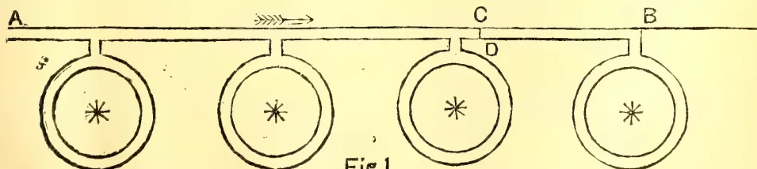
Fig 1.
Scientific Agriculture.460[NOVEMBER, 1908.In carrying out this system in practice, water is allowed to run down the trench AB, to B, the furthest point from the main distributing channels. The last ring is then opened and allowed to fill. As soon as this takes place, the main trench is filled at C with a fillet of earth and the connection at D is opened. The second ring is now filled, and so on. In this way there is no stoppage of work, and the tree is not only supplied by the water in the ring but also by that in the section of the trench CB.
With young trees the rings are filled up after every monsoon and re-made on a larger scale at the beginning of the next hot weather after weathering and manuring have been done. The longitudinal trenches are left during the monsoon, as these serve as drainage channels and prevent local water-logging.
In planting new trees this system of irrigation has been found most useful. After the holes have been dug for the trees and filled in, the rings are made and the irrigation water run into these before planting. By this means any shrinkage and subsidence of the soil takes place before planting, and can be adjusted. Moreover, the young trees
have the benefit of being planted in a moist soil. February and March are best months for planting young trees in Behar, and by this means they can be established before the heavy rains of the monsoon in July and August.
In connection with the manuring of trees this system of irrigation has proved most useful. One of the difficulties in applying manure to fruit trees in India is the subsequent damage done by white-ants (Termites), which are attracted by the organic matter of the manure and frequently turn their attention to the tree and destroy it. If the trees are manured just before the rings are made, and if care is taken to apply the manure only to the ring of soil just underneath the outside branches, the first watering not only tends to rot the manure but also to drive off the Termites.
This ring method has great advantages over the basin method of irrigating fruit trees; which is practised by the cultivators in India. In the basin system (Fig. 2.), a shallow circular hole is excavated round the base of the tree, and these basins are connected up by short trenches between the trees.
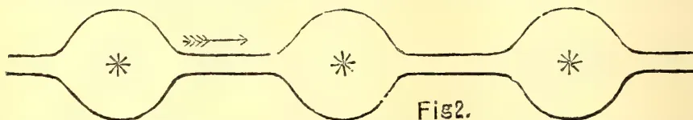
Fig 2.In the first place, trees like Citrus plants are not benefited by water lying round the base of the stem and are then often attacked by the "collar rot" disease. Secondly, the water is not applied directly to the young roots of older trees, while in young trees they are apt to be water-logged. Lastly, this method does not facilitate manuring and drainage in the monsoon.
In the case of transplanted crops like tobacco and ganja the system becomes one of modified furrow irrigation. The great danger in growing a crop like tobacco, especially where the autumn rains fail, is the loss of plants which occurs on transplanting them in the field and also from grasshoppers. The usual method in India is to transplant in the evening, to water the young plants and to cover them with nim leaves during the heat of the day. Even when every care is taken, many plants die. In plant-breeding work, this loss is of great importance owing to the danger of a dead plant being replaced by one of a wrong variety. In order to minimise this loss, I have devised the following
method :—After cultivation and manuring are finished, furrows about one foot wide and four inches deep are laid off at the proper distance, so that there will be a furrow between alternate rows of tobacco.
These furrows are then filled with water several times, and the water is allowed to percolate laterally until the soil is well moistened between the furrows. Transplanting is now carried out in the soil moistened by lateral seepage from the trenches, and the young plants are covered with nim leaves during the day which are removed at night. When this method is used, the loss of plants is not more than one per cent., and there is practically no danger of destruction by grass-hoppers. During the last year when the failure of the autumn rains almost destroyed the tobacco crop of the cultivators in the district, no difficulty was experienced in growing good tobacco at Pusa. Subsequent irrigation is done by filling the trenches in the same manner as that adopted before transplanting.—Agricultural Journal of India, Vol. III., Part III., July, 1908.
NOVEMBER, 1908.]461Scientific Agriculture.BY M. E. COUCHMAN, I.C.S.,
Director of Agriculture, Madras.
One of the most interesting and important duties of the Agricultural Department will be to ascertain, by detailed local enquiries, what use is made by the cultivators of each tract of the sources of manure available to them. A few notes regarding the agricultural practices of the district of South Canara, in the Madras Presidency, may therefore interest some readers of the journal.
The district is a narrow strip of land lying between the western ghauts and the sea. Originally a laterite plateau, this has been cut up into deep valleys by numerous rivers rising in the hills, fed by a rainfall of from 120 to 200 inches. The valley bottoms have been converted into rice-lands, which extend to varying distances up the sides of the hills, according to the steepness of the gradient, and the pressure of population. In the adjoining district of Malabar, where there is a larger population, many of the hills have been carved into terraced fields to the very summit. In South Canara the slope of the hill is covered with scrub jungle, but when the top of the hill itself is reached, it is usually seen to be a bare plateau, covered with short grass during the rainy month, and almost bare in the hot weather. In many parts the surface is mere laterite rock on which nothing will grow. Rice is practically the only crop grown. The almost continuous rain which falls in June, July, August and part of September suffices to grow the first crop of rice. For the second crop, dams of brushwood and earth are thrown across most of the larger streams, and the numerous springs which flow from the steep laterite hills are carefully trained along the sides of the valleys. Where these are insufficient, shallow pits are sunk in the corners of the fields and the water is baled from them by a picotah of peculiar construction. Instead of two men walking to and fro on the top of the lever, a number of ropes are attached to the end remote from the bucket. A hole about 6 feet deep is dug beneath this end of the picotah, with steps cut in one side. Four or five women and children hold the ends of the ropes, and when the bucket is full, they throw themselves backwards into the hole, thus pulling up the bucket. They then walk up the steps cut in the side of the pit, and so the work goes on. It has this advantage
over the picotah of the East Coast, that whereas the latter requires strong and well-trained men, and there is always some danger of the men falling from the lever, the South Canara picotah renders the cheap labour of women and children available, and is perfectly safe. In some parts a third rice crop is grown, but this is always invariably by lift irrigation throughout. The usual practice is as follows:—
In April and May parts of the low-lying lands are well ploughed in the dry, and dry seed-beds prepared, the seed broad-casted and ploughed in. In many cases the "mango showers" suffice to germinate the seed. These seed-beds are called "dust seed-beds," and the seedlings raised from them are considered more robust than those raised in wet seed-beds. Where there is not sufficient moisture in the soil, the seed-beds are irrigated from a shallow tank or well with the picotah described above. Seedlings raised this way, with what is called "old water," i.e., before the south-west monsoon rains commence, though not so good as those grown in the dry beds, are preferred to those sown after the burst of the monsoon. The monsoon usually bursts about the end of the first week of June. By this time the seedlings are almost ready for transplantation. The lower-lying lands are hastily prepared and transplanted soon after the middle of June, the higher-lying lands being planted as soon as cattle and labour can be spared from the work on the more valuable low-lying fields.
Harvest of the first crop on double crop lands begins soon after 15th September. Seedlings for the second crop have in the meantime been prepared in a field left vacant for the purpose. The stubble is hastily ploughed in, manure applied, and the second crop planted in October. This is harvested about the end of January. Where a third crop is raised, this is put in soon after the harvest of the second, and harvested about the middle of May.
From this short account of the ordinary methods of cultivation, it will be clear that a severe strain is put on the fertility of the soil. The same cereal crop is raised year after year, and in some cases rice is on the ground for eleven months out of the twelve. The torrential rainfall washes most of the soluble plant foods from the soil, and land left uncultivated soon becomes incapable of growing anything but a little coarse thatching grass. The object of this paper is to describe some of the methods by which the cultivators
Scientific Agriculture.462[NOVEMBER, 1908.maintain the fertility of their lands as no oil seeds are grown except a very small quantity of gingelly for domestic consumption. No cake-manures are available. Neither is there any pungam or neem. The coconut cake is either exported or used as cattle food. There are no sheep and very few goats. "Penning" is, therefore, out of the question. Some fish manure can be obtained, but this is mainly used for tobacco.
The sheet anchor of the South Canara ryot is his leaf manure. As a rule, the exclusive use of 100 yards of the slope of the hill lying above his land is permitted to the ryot free of all charge. A wall and ditch are put round this, and the jungle is strictly protected by the ryot. He does not, as a rule, cut the green branches from the trees in this land, but contents himself with sweeping up the fallen leaves. Beyond this lies the open hill-side and the plateau on the top. Outside reserved forests, anyone can cut and remove green leaves and twigs from trees growing in this area. With the heavy rainfall and equable moist, warm climate the growth of all vegetation is extremely rapid, but the incessant industry of the ryots keeps all growth down to a low coppice about 18" high. In the more thickly populated parts, the continuous severe cutting of green leaves and twigs has killed out all growth. In some villages the ryots combine to reserve a portion of the waste land in the same way as individuals protect the 100 yards of land immediately adjacent to their own. No green leaves are then cut, the dead leaves alone being swept up. More commonly the ryots of each village content themselves with keeping the jungle-growth on the waste lands within the boundary of their village for their exclusive use. Different methods are in vogue to secure this object. Sometimes it is declared to be dedicated to some local god or demon, and an annual ceremony performed to impress the minds of outsiders. The efficacy of such methods, however, is not what it was. The writer once asked the people of a village how they managed to keep the jungle-growth on the waste lands of the village so good as it was. "We make a bundobust," they said, "to prevent the people of the other villages cutting it."
"I suppose that means that, if the people of other villages come to cut your leaves, you collect your tenants and give them a good hiding."
The deprecating smile which followed showed that this had hit the mark. Throughout the year the spare time
of the ryot and his family is fully employed in cutting green leaves from this unreserved land. The leaves are tied into a bundle as large as can be carried and taken home. The heavy rainfall makes it absolutely necessary to provide some shelter for his cattle, and the South Canara ryot has evolved for himself a simple and effective form of loose-box which makes the best possible use of the leaf-manure. A pit is dug to a depth of about 4 feet. The other dimensions depend on how many cattle he has. A light thatched roof is built over this and the sides are fenced in with railings. At night the cattle are driven in from the hill where they have been grazing all day, and as a rule tied separately to posts, grass or straw being sometimes placed in front of each. The cattle are kept in the shed till about 8 a.m. the next morning. The floor is strewn with a covering of leaves renewed every day. Where leaves are scarce, the paddy stubble is pulled up by hand and used as litter. The pit will be full in about a month. The leaf-manure which has absorbed the solid and liquid excreta of the cattle is then removed, and either put in a heap or pit, or taken straight to the field where it is to be used and stacked in a corner, if there is a growing crop already on the ground. If the ground is bare, it is placed in heaps over the field till it can be ploughed in. All the green leaves and leaf-manure from the cattle sheds have to be carried in head loads, the use of carts being impracticable owing to the hilly nature of the country.
It will be seen at once that this system utilizes to the full both the liquid and solid excreta of the cattle, and produces a very rich fertilizer. At the same time the leaves and sticks improve the physical condition of the soil. The system is possible, because the wood is almost always available for fuel, supplemented by the leaves of the coconut and palmyra palm. One would, however, like to get at the impartial opinion of the cattle on the subject. Their sleeping place is neither clean nor sweet smelling.
Where the labour is available, the crop is always transplanted. In some cases the seed is steeped in water for a day or two, and then mixed with well-rotted leaf-manure and ashes in the proportion of one basket of seed to ten of manure, and either dropped in small handfuls all over the surface of the puddled field or sown behind the plough, in the same way as castor, etc., are usually sown in other parts. The latter system can, of course, only be practised when the land is ploughed
NOVEMBER, 1908.]463Scientific Agriculture.and sown in the dry. This is, therefore, only done for the first crop and with unsteeped seed. Other manures applied to the paddy fields are wood ashes, which are carted to long distances from the large towns, and "burnt earth," a compost of leaves and other rubbish mixed with soil and burnt. Where the ryot has not sufficient cattle to pass all his leaves through the pen, he applies them direct to the fields. For this purpose green leaves are preferred. Before leaving the subject of leaf-manure, one more practice must be described. Coconut trees which are grown in gardens are usually heavily manured with cattle dung, etc. The trees which are scattered along the bunds of the fields as a rule receive only the following treatment. A deep circular pit about a yard deep is dug all round the trunk, and this is filled with the leaves and boughs of the Nux vomica tree, which is extremely common here. These are then covered up with soil. It is believed that this not only acts as a stimulant to the tree, but protects it from boring insects.
Apart from manures, the chief means by which the fertility of wet lands is maintained, is by growing leguminous crops after paddy. In the case of the lower-lying one-crop lands, these are sown in September-October, and in the case of two crops in January-February, where the soil is sufficiently retentive of moisture. Horse-gram (Dolichos biflorus) is usually broad-casted in the standing paddy shortly before the paddy is cut. For green and black gram (Phaseolus mungo), the best cultivators plough up the stubble, apply ashes, and secure a fine tilth before sowing the pulse crop. The whole plant is removed when the grain is ripe, but so well is the beneficial effect on the soil of the leguminous rotation understood, that in some places ryots who cannot sow the pulse crop themselves will permit others the free use of their fields for this purpose. It is hoped to introduce ground-nut on the sandy soils, as an alternative to these pulses. Though some irrigation would be necessary, it would be more profitable, and at the same time the cake would afford another source of manure. "Green manuring in the sense of growing a leguminous crop on the ground to be ploughed in at the time of transplantation is quite unknown here. As leaf-manure becomes scarce, with the destruction of the jungle, it will be one of the chief problems of the Agricultural Department to see if it can be replaced to some extent by green-manuring.—Agricultural Journal of India. Vol. III. Part III., July, 1908.
BY D. MILNE, M.A., B.SC.,
Economic Botanist, Punjab.
In India where there are large tracts of country where crops are often limited in growth by the supply of water available in the soil, any improvement in the conservation of the soil moisture would be a boon worth striving for.
One has only to travel a short distance at present to see, in the great expanse of bare land and poor crops, the sad havoc wrought by drought.
To avoid these utter failures of crops by means of careful cultural operations, the farmer can often do little, but there are cases where the alert farmer might, by skilful farming, reap a very much better crop than his backward and careless brother.
Some farmers have told me that on their land, at present totally barren, if they could only have got their wheat to "braid," i.e., germinate and spring above ground, the crop would have come to something. Whether or not any good can be done in such extreme cases is hard to say, but certainly there are lands where a study of the conservation of moisture might be well repaid.
It is not my purpose in the present note to go very scientifically into the above subject, but rather to point out or remind the tillers of the soil, of a few facts, and to quicken, if possible, the interest of those whose business or hobby it is to properly investigate the matter.
First, then, it is a well-known fact that a soil on which plants are growing loses much more water by evaporation than does a bare soil.
Some plants with a root system ramifying through a fairly large area, to various depths in the soil, and possessing also a considerable extent of leaf surface for the dry winds to play over, may evaporate a very large quantity of water, indeed, in twenty-four hours.
I have no Indian figures at hand, but for Europe we find several.
In Pfeffer's Physiology, Vol. I, pages 250 to 251, we find recorded:—"Hales found that a sunflower having a total area of leaf surface of about 9 sq. m. (10½ sq. yards) lost 0.85 kilogrammes (1 pint) of water during a single dry day."
Scientific Agriculture.464[NOVEMBER, 1908."Haberlandt found that oat-plants covering one hectare transpired 2,277,760 kgs. during a single vegetative period, while barley plants covering a similar area exhaled 1,236,710 kgs. of water." This means that an acre of oats evaporated nearly 900 tons of water, and barley well on to 500 tons during their respective periods of growth.
Whatever accuracy these men may claim for their figures in their own conditions, my point is that, although plants may differ in the relative amounts of water transpired from them during a given time and in various conditions, it is a well-known fact that all plants do transpire a very considerable amount of water during the 24 hours.
It is evident, then, that from the point of view of the farmer cultivating lands in a drought country, the lands should be kept clear of weeds.
Again, it is well-known that on bare land which is fairly consolidated right to the surface, more moisture will eventually be lost by evaporation than on land the surface of which has been well pulverised and kept stirred to the depth of a few inches.
One might very roughly explain this by saying that the water raising up the walls of the minute openings between the soil particles can, in the case of the compacted soil, rise right to the point where it can be quickly evaporated by coming directly in contact with the dry winds sweeping over the surface of the land.
As the moisture at the surface is evaporated, more is induced, to take its place, and as it must come from below, we have a comparatively rapid current of water being brought upwards and lost by evaporation.
In the case of the soil of good tilth, the surface, few inches of which are stirred up loosely, the openings between the particles are too coarse to allow the moisture to rise freely in these few inches. Also in the large interspaces between these particles a considerable volume of air is trapped and forms a semi-damp, more or less stationary protective cushion of air between the quickly changing dry atmosphere above, and the point to which the water is comparatively easily brought up.
Whatever the real theoretical explanation may be, however, the point of practical importance is, that a soil, the surface few inches of which is well pulverised and stirred, does conserve the moisture much better than a more compact one, and that farmers who
wish to retain the moisture in any particular area of land, should not simply plough the soil and leave it in large rough lumps, and great openings between the furrows, but should pulverise and stir the surface by harrows or other suitable means.
This pulverising of the surface should be done the same day as the land is ploughed on all soils, but especially on stiff clays, not only because of the saving in moisture effected, but also because of the greater ease with which the lumps can be broken.
Treated promptly in this way, a fine tilth may be got cheaply and with ease even on stiff lands where no amount of work can procure a good tilth if the lumps are allowed first to get dry.
A third way of conserving moisture is often practised in various parts of the world. It is called "mulching."
Some fairly open or porous material such as refuse litter, inferior grass, or inferior straw, leaves, or other organic substance, is spread in a thin layer over the surface of the land; the idea being to form a layer of matter which will retain a considerable volume of air in the spaces between its component particles, and so retard the swift exchange of the dry air of the atmosphere for the more or less moist air that is in contact with the soil surface. Mulching, therefore, has underlying it the same idea as the stirring and pulverising of the upper few inches of the soil.
Unfortunately, mulching, though very useful, is difficult to carry out on large areas. In some parts of India, however, I believe it is a common practice for special crops, such as tea, coffee, and some market garden crops.
The implements used in tillage operations here appear to me of considerable interest in relation to conservation of soil moisture, and I think a study of these from this point of view might give some results worth having.
Take, for example, the ordinary native plough and compare it with the common English or American ploughs.
The native implement differs essentially from the other two quoted, in the fact that while the others partly or completely invert the soil, the native one stirs but does not invert it.
The difference appears to me to hold in it a question of considerable interest, for if a slight mulch causes a material reduction of the amount of water evaporated from the soil, then, may there not be a material difference in the
NOVEMBER, 1908.]455Scientific Agriculture.amount of water evaporated from a soil ploughed by an English plough and one ploughed by the native implement?
In the one case the organic matter of the previous crop residue would be more or less deeply buried, and in the other practically left on the surface to act as mulch.
With years of tilling with the native plough, and the consequent accumulation of organic matter on the soil surface, which might be expected up to a certain point, the beneficial mulching effect might also be expected.
I should like to hear of some farmer using the native and an American or English plough on two separate areas, under similar conditions, over a number of years, and noting the practical effect on his crops, and if he or some one interested would like to go further into the matter and had the necessary skill and apparatus, a set of borings of these lands could be taken and the amounts of moisture in them ascertained and compared at intervals.
The borings might be taken at different depths; regular intervals of time; of cropped and uncropped areas; and other points may require attention.
The above, however, are mere suggestions.
Besides conservation of moisture, there appears to me another good effect to be got by not inverting too thoroughly the residue of the previous crop, and that is the prevention to some extent of the formation of that extremely hard layer, often not more than a quarter inch thick, which forms on the surface of stiff soils, or even on light ones if there is a tendency to efflorescence of white salts. These salts, though present in the soil in such small quantity as not to be directly very harmful to vegetation, may, when collected at the surface by evaporation, cement the particles of the upper quarter-inch of even a light soil till it has almost the consistency of rock and completely strangles vegetation.
The formation of this hard layer may, by this practice, be modified partly by the lesser concentration of salts at the surface owing to the mulch, and partly to the greater admixture of organic matter of previous crop residues in the upper layer of the soil where the salts concentrate.
I have never seen the surface of a slightly saltish soil in which there is an excess of organic matter harden as I have seen that of even an extremely light sandy one.
In the event of there being anything in this idea that the native plough tends to conserve moisture and prevent eaking of the surface soil more than an American or English plough does, it does not mean, I hope, that the native plough will be left in undisturbed possession of the field.
To me the native plough appears an implement with a good deal to recommend it to the native agriculturist.
Its low initial cost; the almost impossibility of breaking it; the ease with which it can be repaired if it is broken; its comparatively wonderful effectiveness when properly handled, and other advantages, all stand in its favour, but I think there are other implements already in the market, or which could be made, which could replace it to some extent with advantage to the farmer.
The native plough, as I have said, differs essentially from the British idea of a "plough," in that it does not turn the furrow, and appears to me to be more comparable to the implement called a "cultivator."
This suggests to me that a good strong implement of this type, having not too many "tines" or "teeth," so that the draught would not be too heavy for two bullocks, might replace it with advantage, at least in some tillage operations, and give practically the same effect as regards the inverting of the soil as the native plough does.
Some of the advantages of the "cultivator" are:—Having a number of tines set in a frame at regular distances, there is less chance of patches of the land being "missed" by careless workmen.
A much greater area is covered; a point which in these days of scarcity of labour is worth considering, and they are simple enough to be worked and understood by anyone.
The repairing of these implements is, I know, a difficulty, as also their initial cost, but these difficulties will tend to lessen in time.
As more iron implements are brought into use, the blacksmith will become more common in the community, and as the calls for his services to repair such implements become more frequent, his knowledge of them will increase as well as his stock of necessaries for their repairs, and with these the present difficulty of the rayat will lessen.
The difficulty of the initial cost will diminish when it is proved that the implements are worth the money.
59 Scientific Agriculture.466[NOVEMBER, 1908.The "Sohaga," from its consolidating action on the upper layer of the soil, is not the best implement to put last over a piece of tilled ground not to be immediately flooded with water, and required to retain its moisture well.
Again, in relation to the economical use of the soil moisture, we have the problems of finding out the relative amount of water required by each of the common crops during a growing season, the best arrangement of crops in a rotation from this point of view, and many other questions far too numerous for me to say anything about in such a note as this.
It will be quite satisfaction enough for me if I have achieved in some measure the object with which I set out.—Agricultural Journal of India. Vol. III. Part, III. July, 1908.
BY R. HELMS.
A great deal has been written about soil bacteria during the last twenty years, when first they excited attention in the scientific world. Especially those contained in the swellings found on the roots of leguminous plants have come in for comment. Newspapers, copying one another and enlarging frequently on their own accounts, have excited attention to this subject everywhere. Unfortunately, however, through the exaggerations and false deductions promulgated by non-scientific writers, the farmers were led to expect too much, and the promised benefit these micro-organisms were to bring the agriculturists have not been realised in the greater number of instances. The scientists who have investigated the important part bacteria play in connection with the fertility of the soil, one and all acknowledge that the subject is not yet completely understood. At the same time the functions of soil bacteria have been revealed to a certain extent and also their importance demonstrated. What so far has been definitely established by scientific research and is known of this important problem I intend to repeat in the plainest language possible.
It is always extremely difficult to popularise a scientific subject, or rather to treat scientific matter entirely in popular language. In order to be quite
lucid to the non-scientific reader, technical terms have to be avoided, and this cannot always be done, as they have been specially coined to express definite meanings, and, therefore, require to be translated, which frequently obscures their meaning. The disregard of scientific work in the past has been largely due, no doubt, to the fact that scientific research tended to discredit the preconceived notions that had been inherited for generations. Scientists were regarded as abnormal creatures, or mere speculative dreamers dabbling in untenable theories. A number of practical men holding such views are still to be found. Perhaps there is an excuse for it, considering the inherited system of rule of thumb by which their forbears did very well. It is true the work of the pioneer requires no scientific knowledge; the expert axeman, and the man who can handle a team of bullocks or horses well, possesses an advantage over the less experienced, and herein the practical mostly consists. There is nothing to prevent a scientist being a good worker with his hands, but the man who can only use his hands is not likely to make a scientist very readily. This, moreover, is not necessary; a division of labour has its advantages. It is a pleasant sign of advancement in general knowledge that the modern farmer is becoming keen on utilising the achievements of science. The idea of considering a scientist an impractical theorist or bookworm is becoming a thing of the past, and the man who loudly boasts about his practical knowledge is beginning to be looked upon as being mentally indolent and attempting to hide his ignorance under pretence of superior experience. The valuable services science has rendered agriculture are, however, scarcely realised yet by most people.
Farming is as old as history, and, for the matter of that, science also, but its universal application to agriculture dates back only a few decades. All applied sciences contribute their quota to make agriculture and its adjuncts more profitable now than in former times. Chemistry, pathology, physics, metallurgy, medicine, botany, entomology, meteorology, bacteriology contribute their share. It may be worth while to select a few items which have prominently benefited agriculture, and proved the devotees to science practical men par excellence.
Liebig, fifty years ago, invented superphosphate, and laid the foundations of the present universal use of artificial
NOVEMBER, 1908.]467Scientific Agriculture.manures. Investigations into the chemical constitution of plants determined their food requirements and laid the basis of rational manuring, and led to the utilisation of many waste products for that purpose. Chemistry has in other ways much enhanced agriculture, and is, without doubt, the science which has influenced modern agriculture to a greater extent than any of the others. The dairymen throughout the world have to thank the bacteriologist for many advantages; and but for Lavall, the physicist, thinking out the separator in his laboratory, dairying would not be profitable in warm climates. Between the botanist and the pathologist means were found to produce rust-resisting wheats, besides ameliorating other plant diseases. By studying the life history of insects the entomologists have found proper ways of suppressing or checking insect pests. The improved knowledge of the metallurgist made it possible to produce cheaper steel and other metals, and thereby cheapen and improved farm implements and machinery. When in the sixties of last century a disease broke out amongst the silkworms in Southern France, killing every caterpillar wherever it made its appearance, and rapidly spreading through almost every establishment for the rearing of silkworms, thereby bringing thousands of silkworm rearers to the brink of starvation, and jeopardising the whole silk industry which gave employment to several millions of people, it was science that came to their rescue through the medium of great Pasteur. By the attenuated virus of anthrax, discovered also by Pasteur, the means of preventing the terrible disease was disclosed, and thereby Australia has benefited to an enormous extent. Many other similar instances might be quoted in which agriculture has benefited by scientific research.
From the fact that a number of bacteria are disease-producing in man, beast, and birds and plants, the whole tribe of these minute plants have acquired a detestable reputation in popular opinion. Such a general condemnatory opinion they do not, however, deserve. The mischievous bacteria and allied forms of micro-organisms, terrible as they manifest themselves at times, are numerically insignificant in comparison with the great number which may be termed either directly or indirectly beneficial to the higher forms of life, and still more with those which are decidedly harmless, and whose role in the economy of nature is
not understood at present. Many hundreds are well-known, and their characteristics have been worked out, and as researches progress they are constantly added to. Being of very delicate structure they are very sensitive to external conditions, especially to the presence or absence of oxygen, which striking characteristic divides them into two distinct groups. Those which require oxygen for their growth, and prosper ill without it, are called aerobic, and those upon which oxygen has a toxic effect, are called anaerobic bacteria.
In order to fully understand the importance of the bacteria to be specially discussed, it is necessary to make a few remarks regarding the element nitrogen, which is absolutely needed as a food by all animated nature.
Nitrogen in its simple form is a gas abundantly present in our atmosphere, where it is practically inert, and acts as a diluent of oxygen, the element required by all breathing beings. In this simple form it is otherwise perfectly useless to either plants or animals. Moreover in this state it will not readily combine even with oxygen, almost the only element it attaches itself to when in the elementary state. Plants, however, cannot utilise it unless it has been oxidised into nitric acid. In that form only is it assimilable by plants which possess the power of elaborating it into other complex compounds known by the term of organic-nitrogen compounds, and albuminoids, in which forms it serves as food for animals. The fact must not be lost sight of—that whilst animals require organic nitrogen compounds for their nutrition, plants cannot directly utilise again the compounds they elaborate, but require them simplified into nitric acid. This is done by bacteria, a group of which are called
As soon as a plant or animal is dead it is attacked by bacteria, whose function it is to reduce it into the elements from which it was built. The same applies to any dead organic substance, the voidings of animals, offal of any kind, stable manure, &c. These bacteria are the putrifying organisms, of which there are a number of forms, and which are the forerunners of the nitrifying bacteria. In the process of decay different gases are evolved during the progress of fermentation. Some bacteria liberate nitrogen, and others ammonia, from the organic nitrogenous compounds. The nitrogen so evolved is lost in the air,
Scientific Agriculture.468[NOVEMBER, 1908.but the ammonia, unless the fermentation is very violent, and the bacteria cannot consume it, is fastened on to by a certain type of organism and converted by it into nitrous acid. This is the first stage of nitrification, the organisms bringing the ammonia to a lower state of oxidation than that required by the higher plants. The further oxidation of nitrous acid into nitric acid is performed by another type, which completes the complex process of nitrification. It will be seen that it requires quite a number of different bacteria to convert the organic nitrogen compounds into an assimilable form for plants. The different putrifying organisms break up the multiform compounds into elementary substances, and whilst ammonia is evolved this is fastened on to by a distinct oxidising organism; and then by another distinct type, that cannot oxidise ammonia, it is further oxidised to the final stage. These breaking-up and oxidising bacteria, it must be borne in mind, work simultaneously from the start of the decay, and in this manner a continuous development of nitric acid is proceeding, always presuming that all the types necessary for this evolution are present. As a rule they are present in every soil that is sufficiently aerated. I found the nitrifying bacteria absent in the samples from very sour or waterlogged localities only, in the many samples of Australian soils I have examined for the purpose.
The importance of the presence of these different bacteria in the soil, and their co-operation, will readily be perceived. All organic matter would remain intact were it not for the putrifying organisms, and unless the nitrifying bacteria were present the nitrogenous gases evolved during the decomposing fermentation would escape into the air. It would be useless to add fertilizers to the land, whether in the shape of green plants, stable manure, or artificial nitrogenous manures (except such containing nitric acid), were it not for the activity of these silent workers. The whole tribe of this soil flora is necessary to prevent a loss of plant food; but if a preference of importance may be assigned to any of them, it is the nitrous acid former which fixes the very volatile ammonia.
These infinitesimally minute plants, which persistently though invisibly retain by their activity in the soil the most precious of plant foods, cannot be too highly esteemed, for upon them depends entirely the productiveness of the land, and the sustenance of life generally.
A few words concerning the effects produced by tilth, and consequent aeration upon the soil flora, is not out of place here. The greatest value of aeration is generally attributed to the oxidising effect it has upon the mineral plant foods contained in the soil, by which these become soluble, and consequently assimilable by the crops. But the effect it has upon the bacteria in the soil, probably, is no less important. The nitrifying bacteria require a liberal supply of oxygen dictated by their functions, whilst on the other hand the greater number of the putrifying bacteria are anaërobic. Aeration therefore encourages the multiplication of nitrifying bacteria, which is of the utmost importance, as their number is always smaller than that of any other kind, owing to their much slower growth and reproduction, and at the same time the development of the anaërobic putrifying bacteria is retarded by the admission of air into the soil and a too violent fermentation may be prevented. Aeration balances the functions of the different kinds of soil bacteria.
Besides the nitrifying bacteria, a series of other organisms occur in soil, the activity of which is even more mysterious and which benefit higher life to a considerable extent. These are the
The inertness of nitrogen has already been mentioned, and, in reality, only two phenomena in nature are known to oxidise and fix it. The one is the discharge of electricity during thunderstorms, and the other the activity of certain bacteria. At the high temperature produced by the lightning flash the nitrogen combines with the oxygen of the air. How the bacteria fix the elementary nitrogen is an entire mystery. Nevertheless quite a number have been credited with the characteristic of being able to fix nitrogen in a greater or lesser degree. European investigators have proved one or the other, or several, to occur in almost every kind of soil. All Australian soils probably contain similar organisms. In two examined by me I found considerable assimilating power. The quantitative fixation of nitrogen from the air is not very great in these free living organisms, but study may reveal substances that will encourage their multiplication, and consequently produce greater fixation results. They are naturally all aerobic, and therefore thrive best in open, well aerated soils. A greater assimilating
NOVEMBER, 1908.]469Scientific Agriculture.power than is possessed by these free living organisms may probably be assigned to the
During a certain period of their existence these bacteria are living free in the soil, but it is not known whether they multiply under such circumstances. When, however, they insinuate themselves into the hair-rootlets of plants, especially those of the leguminosæ, they produce upon them swellings or nodules, wherein they multiply enormously. They then actively assimilate atmospheric nitrogen, and in some way benefit the host plant. How this is brought about is not yet understood, in the face of the fact that the higher plants require nitrogen in the shape of nitric acid to feed them. The fact that these quasi parasites materially benefit their host by the assimilation of aerial nitrogen, however, has been established without reasonable doubt by repeated experiments. Pots filled with sterilised soils, one of which was inoculated with nodule material, have proved the effect. The inoculated pots yield larger crops, and nodules had been produced on the roots of the plants, whilst on the plants of the uninoculated pots no nodules occurred. In the field many similar results were obtained, and inoculation with artificially reared nodule bacteria has produced remarkable results. On the other hand very many inoculations in the field did not in the least benefit the crops. This non-success of inoculation in the greater number of instances in my opinion is mainly due to the previous presence of the bacteria in the soil experimented upon. The want was already supplied and inoculation was not required.
A difference of opinion still exists as to whether the nodule organisms found on different plants are distinct, or merely varieties of the same species. Latest researches tend towards the latter opinion, and probably, correctly, as recently some German experimentalists have made the nodule bacteria of French beans, after two or three generations, effectively accommodate themselves to other leguminosæ. But this is merely an absolutely scientific
question; the fact remains that these bacteria are so different in their character as to require for successful inoculation that the soil on which the particular crop is grown must be inoculated with cultures taken from the nodules of similar plants.
These nodule bacteria, like the other nitrogen assimilating organisms and the nitrifying bacteria, are also emphatically aerobic; neither they nor the other kinds can, consequently, live deep in the ground. At a depth of from 4 or 5 inches from the surface they generally thrive well; below 6 inches they begin to occur sparingly, and deeper than 9 to 12 inches they are only found under exceptionally favourable circumstances.
The benefit lucerne fields receive from harrowing in spring is no doubt partly caused by enhancing the bacterial activity through the aeration of the soil surface.
In conclusion, I draw attention to the universal axiom, that nature constantly works with exceedingly small quantities. As an example we may take one of the nodules attached, say, to roots of lucerne; not a millimetre in diameter, it frequently contains from 500,000 to 1,000,000 of bacilli, and yet every individual of these assimilated some nitrogen. When we consider the minuteness of the individual organism, how infinitely small must be the quantity of nitrogen absorbed by it. Even the quantity fixed daily by a million is so minute that the most delicate balance would scarcely weigh it, and chemists can weigh to the one hundred thousandth part of a gramme. According to Paul Herre, 2,000,000 of organisms only weigh one milligramme (the thousandth part of a gramme). The number contained in an acre of soil in order to bring about the assimilation of 10 to 20 lb. of nitrogen is, therefore, so prodigious, that expressed in figures they would cover a couple of lines of this page. Bacilli vary in size, but it takes generally from 15,000 to 30,000 laid lengthways to measure an inch, and yet the results produced by them in a very short time are considerable.—Agricultural Gazette of New South Wales, August, 1908, Vol. XIX, Part 8.
470[NOVEMBER, 1908.Sisal Hemp—(& cf. Agave).—
Coltura ed usi dell Agave sisalana. Bull. Palermo II. 1898, p. 91.
Kew Bull. addit. series, II.
Queensl. Agr. Journ. Sept. 1898.
Ind. Gard. 23. 11. 99, p. 206.
Dodge's Fibre Plants.
Le Henequen à Cuba. Rev. Cult. Col. 1900, p. 431.
The Agave Fibre Industry. Ind. Gard. 23. 11. 99, p. 206.
Agave culture. do. 28. 12. 99, pp. 251, 255.
do Ind. Agric. 11. 1900, p. 27.
Der Sisalhauf. Tropenpfl. 4. 1900, p. 6.
Sisal hemp. Planting Op. 17. 2. 1900, p. 109.
Experimental cultivation of Agave Sisalana in India. Ind. Gard. 15. 2. 1900, p. 114.
Die Agavenkultur in Deutsch Ost-Afrika. Tropenpfl. V. 1901, p. 7.
The Agave fibre industry. Ind. Agr. 1901, p. 281.
Machines, see Journ. d' Agr. trop. I. 6. &c.
Die Kultur der Sisalagave in Yucatan. Tropenpfl. V. 1901, p. 495.
Experimental cultivation of sisal hemp in India. Agr. Ledger. V. P. Series 55.
Sisal hemp. Ind. Gard. Apr. 1901, pp. 261, 262, 264.
Sisal hemp cultivation in India. Ind. Agric. Apr. 1901, p. 97.
Sisal, the Yucatan fibre. "T.A." June 1903, p. 797.
Une defibreuse à henequen sans chaines. Journ. d' Agr. trop. 30. 6. 1903, p. 163.
The fibre industry of Mauritius, Sisal v. Fourcroya. Queensl. Agr. Jl. July 1904, p. 498.
Sisal hemp. do. Aug. 1904, pp. 563, 565.
Agave fibre as a catch crop to tea. Ind. Agric. 1. 9. 04, p. 280.
Agave fibres. Ind. Pl. and Gard. 1904, pp. 807, 843.
Sisal hemp industry in Mexico. Imp. Inst. Bull. I, 1903, p. 201.
Mittheilungen über deu Sisalagavebau aus der Praxis. Tropenpfl. 9. 1905, p. 375.
Sisal cultivation &c. Queensl. Agr. Jour. Apr. 1904.
Sisal hemp. Agr. Gaz. N.S.W. Oct. 1904, p. 949.
The sisal hemp industry. Ind. Plant. & Gard. 12. 11. 1904, p. 805.
The sisal hemp industry and the West Indies. Agr. News 8. Oct. 1904, p. 321.
The sisal hemp industry. W.I. Bull. V. p. 150.
Sisal hemp in India. Bull. Imp. Inst. Jan. 1905, p. 260.
Exploitation et rendement de l' Ixtle au Mexique. Journ. d'Agr. trop. Aug. 1906, p. 238.
Eine Erkrankung der Sisalagaven im Bezirk Tanga. Der Pflanzner 1905, p. 356.
Die Agaven, ihre Kultur und Verwendung. do. 1906, p. 209.
Over de Kultur van Sisal. Ind. Merc. 30. 10. 1906, p. 732.
Ueber Agaven in Deutsch Ost-Afrika. Tropenpfl. 1906, p. 275.
L'Agave textile. Bull. Ec. Indoch. 1906, p. 649.
Sisal fibre cultivation. "T.A." June 1906, p. 374.
Sisal fibre from Madras. do. 375.
The cultivation of maguey in the Philippine Islands. Farmers' Bull. 13. Manila 1906.
Hautefeuille. L'Agave textile. Bull. Ec. Indoch. July 1906.
The growing of sisal. Trop. Life, June 1907, p. 90.
Sisal hemp in East Africa. Agr. News, June 1907, p. 203.
Sisal fibre cultivation. "T.A." Oct. 1907, p. 263.
The development of sisal hemp cultivation in India. Agr. Journ. Ind. II. p. 323.
Sisal fibre cultivation. "T.A." Jan. 1908, p. 14.
Stuhlmann. Notizen über Sisalagaven und deren Fasern. Der Pflanzner 1907, p. 229.
The cultivation of sisal. Trop. Life, Dec. 1907, p. 188, Feb. 1908, p. 28.
Le developpement de la culture de Sisal. Journ. d'Agr. trop. July 1907, p. 204.
NOVEMBER, 1908.]471Miscellaneous.The cultivation of maguey in the Philippines. Agr. News June 1907, p. 202.
Essai de multiplication de . . sisal par le bouturage des feuilles. Journ. d'Agr. trop. 1908, p. 167.
Die Agaven, ihre Kultur und Verwendung. Der Pflanze Oct. 1906, and May 1908.
Zapuche fibre plant. Kew Bull. 1907, p. 396. "T.A." Apr. 1908, p. 325.
The sisal fibre industry in Queensland. Q. Dept. Agr. Rep. 1906. "T.A." Apr. 1908, p. 327.
Hautefeuille. Sisal. Journ. d'Agr. trop. Dec. 1907. "T.A." Apr. 1908, p. 330.
Cultur du Sisal aux îles d'Hawaii. Bull. Jard. Col. Mar. 1908, p. 181.
De Vezel-agaven. Teysmannia 1907.
Die Zapupekultur in Mexiko. Tropenpf. 12, p. 157.
L' Agave textile. Hautefeuille in Journ. d'Agr. trop. Dec. 1907, p. 360.
Drummond & Prain. Notes on Agave and Furcraea. Agr. Ledger 7 of 1906.
Sisal cultivation in the Caicos Islands. Agr. News. 7. 3. 08, p. 79.
Sisal hemp as a possible industry for Jamaica. do. p. 79.
Straits Bull. 1903, p. 114.
Broom corn cultivation. Queensl. Agri. Jl. 1899, p. 424.
Blight of Sorghum. Bot. Gaz. 29, 1899, p. 65.
Verarbeitung von Sorghum-arten auf weissen Starke und Nebenprodukte. Tropenpf. II. 1898. Beih. Bot. Centr. 8, p. 477.
Jowar cultivation in Berar. Ind. Agric. 2. 4. 1900, p. 112.
Indian millets or sorghum grown at Wollongbar. Agr. Gaz. N. S. W. XI. 1900, p. 759.
Le Canne à sucre de Chine ou Sorgho sucré Rev. Cult. Col. 1900, p. 570.
Ueber die Mafutakrankheit der Mohrenhirse in Deutsch Ost-Afrika. Tropenpf. 1900, p. 481.
Busse and Pilger on African forms. Engler's Jahrb. 32, p. 182.
Green sorghum poisoning. Queensl. Agr. Jl. July 1903, p. 59. W. Ind. Bull. III. p. 326.
Ueber sorghum-formen aus Togo. Notizbl. Berlin, Dec. 1904, p. 139.
Dumas: Le Sorgho. Paris 1905.
The manufacture of Samshu. Ind. Agric. 1. 5. 1906, p. 142. "T.A." Aug. 1906, p. 169.
Sorghum vulgare. Agr. Ledger, Agric. Series 37, 1906.
The great millet of Sorghum in Madras. Bull. Dpt. Agr. Madras III. 55, 1906.
The non-saccharine Sorghums. U.S. Dpt. Agr. Farmers' Bull. 288, 1907.
Sorghum poisoning. Journ. Dpt. Agr. Victoria, 9. 3. 1908. "T.A." May 1908, p. 449.
The cultivation of broom corn. Journ. Board Agr. Brit. Guiana I. 14. 1907.
Spermacoce hispida. Planting Opin. 23. 6. 1900, p. 429.
Star Anise oil. Schimmel's Report, especially Oct. 1898 and Apr. 1900.
Starch prepared from the bread-fruit tree in Seychelles. Imp. Inst. Bull. March 1904, p. 28.
Manufacture of starch from potato in Germany. Jamaica Bull. 1904, p. 218.
Official strophanthus seed. Chem. & Drug. 28. 7. 1900, p. 163.
Strophanthin. Do. 11. 8. 1900, p. 292. Perredes on Pharmacognosy. Bull. Wellcome Research Labr.
African species, see Engler's Jahrb. 32, p. 153.
The Strophanthus question. Chem. & Drug. 9. 7. 1904, p. 58.
Gilg. Die Strophanthus Frage. Berichte d. deut. Pharm. Ges. 1904, p. 48.
Report on specimen of benzoin from the F. M. S. Str. Bull. 1906, p. 261.
Benzoin. Chem. & Drug. 28. 9. 1907, p. 523.
W. C. Stubbs, Sugar cane. Baton Rouge 1897. See Bot. Centr. 77. 1899, p. 369.
Krüger, Das Zuckerrohr und seine Kultur. Magdeburg 1899; rev. in Ind. Merc. 18. 2. 1899.
Miscellaneus.472[NOVEMBER, 1908.Tiemann, Zuckerrohr-Kultur, Fabrikation und Statistik. Berlin, 1899.
Suck, die geographische Verbreitung des Zuckerrohre. Beih. Z. Tropenpfl. 1900.
The sugar industries of the West Indies. Ind. Agric. 18, 1900, p. 255.
See Bull. Econ. de l'Indoch. 1. 6. 1900, p. 266.
See Queensl. Agr. Jl. July 1900 (conference).
Die chemische Selection des Zuckers. Ann. Buitenz. 2. III. 1901.
Hybrid sugar canes. Agr. News 9. 5. 1903, p. 145.
Hybridization of the sugar cane. Lewton Brain in W. Ind. Bull. IV. 1903, p. 63.
Bud-variation in the sugar cane. do. p. 73.
Deterioration of cut sugar cane. Agr. Ledg. Indust. Series, 2.
Sugar in Jamaica. Bull. Jamaica March, 1904.
Invoer en fabrikatie van geraffineerde suiker in British Indie, Oost Azie, en Australie, in verband met de fabrikatie van geraffineerde suiker op Java. Prinsen Geerligs in Ind. Merc. 1905, p. 47.
Die Zuckerproduktion des Welts. Ind. Merc. 26. 12. 1905, p. 895.
Raising pedigree sugar canes. Agr. News V. 1906, p. 17.
Many papers in W. Ind. Bull. VI. 4.
De suikerproductie van Formosa. Ind. Merc. 18. 9. 1906, p. 633.
Sugar experiments in British Guiana. Agr. News, 28. 7. 1906, p. 225.
The polarimetric determination of sucrose. W. Ind. Bull. VII. 1906, p. 132.
See Bulletins, Hawaiian Sugar Expt. Sta.
See Mededeelingen, Java Sugar Expt. Sta.
The sugar industry in India. Trop. Life 1906, p. 169.
Barber, the origin of new sugar canes by bud variation. Agr. Jl. Ind. I. p. 285.
The sugar industry. Queensl. Agr. Jl. Nov. 1906, p. 233.
The sugar industry of the Philippines. "T.A." Aug. 1906, p. 166.
Sugar cane growing in Trinidad. do. p. 167.
Sugar growing in Java. do. Mar. 1906, p. 175.
Improvement of the sugar industry of Mysore. Lehmann in Agr. Jl. India II. p. 54.
Barber. Sugar cultivation in the Godaveri delta do. p. 33.
The sugar industry in the United Provinces. do. pp. 15, 90.
Share system in cane cultivation in Fiji, Hawaii, and Mauritius. W. Ind. Bull. 7. 1906, p. 311.
Improvement of the sugar cane by selection and hybridisation do. p. 345.
The selection of sugar cane cuttings. Agr. Jl. India II. p. 193.
Sugar industry in Mysore. Trop. Live Aug. 1907, p. 121.
The identity of sugar canes in Demarara. Agr. News, June 1907, p. 194.
Sugar notes. do. July 1907, p. 211.
The sugar industry in China. Louis. Planter, 7 Sept. 1907, p. 158.
Java's success in cane sugar. do. Nov. 1907, "T.A." Feb. 1908, p. 123.
Growth and examination of seedling canes. Trin. Bull. July 1907, p. 239.
Sugar in Perak. "T.A." Suppt. Sept. 1908, p. 287.
Varieties of sugar cane, and manual experiments in British Guiana. W. Ind. Bull. 9. 1908, p. 1.
Handbook voor de suikerrietcultuur. Amsterdam 1905, onwards.
Sugar Cane: Cultivation.—
Des ameliorations à apporter dans les colonies françaises à la cultivation de la canne à sucre. Rev. Cult. Col. VI. 1900, p. 65.
Cultivation of sugar in Bombay Presidency. Agr. Ledger, Agr. Ser., 25.
Emploi des feuilles de cannes pour la nourriture du bétail Rev. Cult. Col. 20. 11. 1899, p. 307.
Sugar cultivation in Bengal. Ind. Agr. 2. 7. 1900, p. 221.
Sugar in the South Arcot district. Ind. Gard. 6. 9. 1900, p. 166.
Sugar as an aid to Indigo. do. p. 193 seg.
Sugar cane experiments at Barbados. W. Ind. Bull. I. 1900, p. 355.
Note sur la cultivation de la canne à sucre au Tonkin. Bull. Ec. Indoch. 1901, p. 113.
Sugar cultivation. Ind. Agr. Nov. 1905, p. 345.
The Samalkota sugar farm, Barber in Agr. Jl. India I, p. 44.
Manuring sugar. do. p. 13.
NOVEMBER, 1908.]473Miscellaneous.Cane Planting in Queensland. Louis. Planter, July 1907, p. 34.
Sugar cane planting in Martinique. do. Sept. 7. 1907, p. 146.
Sugar cane experiments at Barbadoes. W. Ind. Bull. 9, 1908, p. 39.
Do. at Leeward Islands, do. p. 63.
Sugar Cane Diseases.—
See Trin. Bull. 1899, p. 187.
Diseases of sugar canes. Barber's reports. See Madras Govt. G. O. 279, 28 Apr. 1899, and 422, 3 July 1899.
A sugar cane pest in Madras. Ind. Agric. I. 1, 1900, p. 15, and p. 48.
Diseases of sugar cane in Bengal. Agr. Ledger, Disease series, 5.
Le borer et la canne à sucre aux Antilles Françaises—Rev. Cult. Col. Aug. 1901, p. 87.
Fungus diseases of sugar in Bengal. Mem. Dpt. Agr. Ind., Bot. Series I. 3, 1906.
Sugar Cane Manufacture, &c.
Diffusion process of extracting sugar from cane. Agr. Ledger, Indust. Series, 3, 1903.
Native methods of sugar manufacture. Ind. Agric. Oct. 1905, p. 314.
Verpakking van suiker. Ind. Merc. 18. 9. 06, p. 634.
Recolte mécanique de la canne à sucre. Journ. d'Agr. trop. Feb. 1906, p. 35.
Sugar making in South India. "T.A." July 1906, p. 78.
Fermentation changes occurring in Muscovado sugars. W. Ind. Bull. VII. p. 226.
Modern methods of sugar extraction. Tro. Life. Feb. 1907, p. 18.
See W. Ind. Bull. 8. 1.
Jamaica Rum do. p. 120.
Sugar manufacture in India. Ind. Agric. 2. 3, 1908, p. 94.
The central sugar factory at Antigua, W. Ind. Bull. 9. 1908, p. 79.
Observations on the work of sugar cane mills and the deduction to be drawn therefrom, do. p. 85.
Sunflower.—
Helianthus annuus. Agr. Ledg. V. P. Series 100, 1907.
Sunflower oil. Ind. Agric. 2. 3, 1908, p. 84.
The Sunflower. Natal Agr. Jl. Apr. 1908, "T.A." Sept. 1908, p. 213.
Sweet Potato.—
Cultivation of sweet potatoes. "T.A." Oct. 1901, p. 228.
Cultivation of sweet potatoes. Ind. Gard., Oct. 1901, p. 308.
Recent experiments with sweet potatoes. W. Ind. Bull. II. p. 293.
Ueber den Kultur der Bataten auf den Azoren. Tropenpfl. 1902, p. 285.
Sweet potatoes. Agr. Mag. Aug. 1903, p. 11.
Manuring and storage of sweet potatoes. W. Ind. Bull. III. p. 206.
Experiments with sweet potatoes at Barbadoes. W. Ind. Bull. V. p. 41.
Sweet potatoes. Agr. Gaz. N. S. W. Aug. 1904, p. 773.
Sweet potato trials. Jam. Bull. Dec. 1904, p. 275.
The sweet potato. Ind. Agric. Oct. 1905, p. 299.
Proef met Batatenvarieteiten. Teysm. 1907.
Sweet potatoes. U. S. Dpt. Agr. Farmers' Bull. 324. 1908.
Symphonia.—
Symphonia globulifera. Tropenpfl. July 1899, p. 339.
Tabernaemontana.—
T. Donnell-Smithii in Kamerun. do. 9. 1905, p. 464.
Tacca.—
T. pinnatifida, die stärkemehlreichste Knollenfrucht der Erde. do. 9. 1905, p. 120.
Tamarind.—
See Agr. News 1903, p. 310.
Einiges über Tamarinden. Tropenpfl. 10. 1906, p. 679.
The uses and composition of Tamarind seeds. Agr. Ledger, V. P. Series 101, 1907. "T. A." Feb. 1908, p. 140.
Tans and Tanning. Miscellaneous.—
Tari pods (Caesalpinia digyna) as a tanning agent. Agr. Ledger V. P. Series 50, 1899.
Xylia dolabriformis. Agr. Ledger Forest Series 4, 1899.
The Tanning industry of South India. Ind. Agric. 1. 6. 1900, p. 181.
Les écorces tannantes de l'Inde et de l'Indo-Chine. Bull. Ec. Indoch. 1900, p. 631. Rev. Cult. Col. 1900, p. 753.
Madras tanning industry. Ind Agr. May 1903, p. 146.
Tanning and Tanning materials. "T. A." July 1903, p. 1.
Tanning materials (with analyses). Rep. Calif. Univ. Exp. Sta. 1898-1901, Pt. II p. 255.
Culture des Acacia et leur production en Tanir. Rev. Cult. Col. June 1904, p. 331.
Die Kultur einiger Sumach-arten. Mitth. Amani 30, 1904.
Quebracho wood in Argentina. Journ. Board of Agr. Dec. 1904, p. 562.
Report on tanning materials. Jamaica. Jam. Bull. 1906, p. 121.
Statistics of tanning materials. Jamaica. do p. 124.
De Looistoffen: botanisch-chemische monographie der Tanniden (with literature lists d.) Bull. Kol. Museum Haarlem, 35, 1906, 39, 1908.
Tanning materials from India, the Colonies, and other sources. Bull. Imp. Inst. 5, 1907, p. 343.
Análises de plantas taníferas. Bull. Sao Paulo 9, 1908, p. 131.
T. Kurzii (Chaulmoogra). Agr. Ledger, V. P. Series 92, 1906.
Report on Tea culture in Assam, 1898.
The Geography of Tea. McEwan, Plant. Opin., 13. 1 1900, p. 31. "T. A." Mar. 1900, p. 585.
Kochs, Ueber der Gattung Thea und den chinesischen Thee. Engler's Jahrb. 27, 1900, p. 577.
Tea in Transcaucasia. F. O. Report on Agriculture in Transcaucasia, 1899.
(Extracts from the Report of the Committee for the half-year ended 30th June, 1908.)
Your Committee beg to submit their Report and Accounts for the half-year ended 30th June, 1908.
GENERAL MEETING.—The last half-yearly general meeting of the Chamber, the Minutes of which follow the Report, was held on 25th February.
The following are the principal subjects of interest which have occupied the
attention of your Committee during the period under review:—
ESTIMATE OF TEA EXPORT FOR 1908.—The Estimate of Tea Exports adopted by the Chamber for the current year was 182,000,000 lbs., and as 96,399,778 lbs. were exported during the first six months of the year, it is expected that this estimate will be realised.
EXPORT OF TEA FROM NORTHERN INDIA TO CEYLON.—Your Committee were approached by the Indian Tea Association who asked for assistance in ascertaining the destination of Indian Teas transshipped in Colombo, the exports entered from Calcutta and Chittagong to Ceylon having increased from 30 lbs. in 1905 to 6,122,000 in 1907. A considerable quantity of tea thus exported is transshipped on through Bill of Lading in Colombo Harbour, and it is not possible to obtain statistics in Colombo as to the destination of such teas.
With regard to Indian Teas shipped to Colombo for subsequent re-shipment, the following recommendation was made by the Principal Collector of Customs, and merchants have been requested to enter on their transhipment entries the weight and port of destination of all teas:—
Each shipper should state the weight and ultimate destination of his teas on his transhipment application. The transhipment clerk in charge of the Warehouse will enter in his register, in columns added for that purpose, the weight and destination of the tea, taking his information from the applications. A monthly statement of such teas can then be drawn up on record kept.
SALE OF RUBBISHY TEAS IN COLOMBO HARBOUR.—This subject first occupied the attention of your Committee in 1903-1904, when representations were made to Government by the Chamber, supported by the Planters' Association and the Colombo Tea Traders' Association.
The subject was again brought up for discussion through a letter from the Colonial Secretary, stating that His Excellency the Governor invited the Chamber to give the question further consideration; and your Committee are accordingly continuing their investigations.
CEYLON TEAS BLENDED IN FRANCE.—The attention of your Committee has been drawn to the sale in France of packets containing Ceylon Tea blended with Annam Tea and labelled "Pure Ceylon Tea."
Having ascertained that there is a law in France rendering illegal the sale of produce under labels which misdescribe
NOVEMBER, 1908.]475Miscellaneous.the contents and the origin of the produce, your Committee requested the Government to take steps, through the Secretary of State for the Colonies or otherwise, to have the sale of blended teas labelled Pure Ceylon stopped in France.
REJECTION OF CEYLON GREEN TEAS BY THE AMERICAN CUSTOMS.—The rejection by the United States Customs authorities of certain Ceylon Green Teas has received considerable attention from the Planters' Association, and was before the Chamber last year. The subject was brought to the attention of your Committee by a communication from the Government asking for information regarding the teas thus rejected.
Your Committee were able to report that in their opinion the teas rejected were, as a rule, Gunpowders made from Fannings and Dust and improperly described as Gunpowders, and that Gunpowders manufactured from whole leaf were not rejected.
CEYLON IMPORT DUTY ON INDIAN TEA.—Attention is directed to the correspondence between the Government and the India Office. Your Committee, it will be seen, were not in favour of any modification of the present restrictions on the import of tea into Ceylon, as the Government were unwilling to grant preference to Indian Teas over those from China, Japan and Java.
INTERNATIONAL RUBBER EXHIBITION.—Your Committee have taken an active interest in the forthcoming Rubber Exhibition in London, where it is hoped that Ceylon will be adequately represented. A Special Committee was formed of members of the Chamber, the Planters' Association and the Government Officials, under whose direction a large and representative exhibit is being got together from all rubber-growing districts of the Island, and will be forwarded to London, where the arrangements are in the capable hands of the Ceylon Association in London. Towards the expenses of the exhibit the Government have liberally contributed.
Mr. F. M. Simpson, having been ordered home for a change by his medical adviser, was granted six months' leave from April last, and during his absence the Secretarial duties have been undertaken by Mr. Ivor Etherington.
TEA.—The total exports of both Black and Green Tea amounted to 96,399,778 lbs. compared with 96,866,437 lbs. for the same period last year.
The figures show a decrease for this year of 466,659 lbs.—
| January to June, 1908. |
January to June, 1907. |
|
|---|---|---|
| Black Tea... | 94,027,143 lbs. | 94,210,493 lbs. |
| Green Tea... | 2,372,635 ,, | 2,655,944 ,, |
| 96,399,778 lbs. | 96,866,437 lbs. |
The increase was principally in shipments to Russia, India, and the Continent, while Australian shipments fell off to a small extent. The quantity offered in Colombo at Auction has exceeded that of last year to date by about million lbs.
PRICES.—The average of teas sold in Colombo was cts. compared with 40 cts. for the same period in 1907. During the months of January and February the average was 2 cts. or so above last year, but during March and April it ranged from 2 cts. to 4 cts. below, while in May it regained the lead, falling back again in June.
Good Fannings and Dusts continued in very strong demand during the first three months of the year, and the fine descriptions realised extreme rates though they fell in value later.
Quality was about fair on the average, and there was an absence of "rubbishy" teas, the plucking on the Estates having been apparently carefully done. During May and June the usual large proportion of plain and poor liquoring teas made their appearance, but in spite of this, lowcountry Pekoe Souchong kept up to 33 cts. until the end of May and only fell below 30 in June. It is worthy of note that this product has kept its position well in the face of the fact that trade has been so universally restricted.
DISTRIBUTION.—The Russian buyers were a feature in the market, while buyers for the United Kingdom and other countries were general, though Australians showed a slight falling off.
GREEN TEAS.—The quantity of green teas was much the same as last year, and the quality generally has been satisfactory, but prices have ruled considerably lower owing to an absence of orders.
RUBBER.—This year's exports show a large increase over those during the same period of 1907, the quantity being 338,411 lbs. against 242,370 lbs. last year, an increase of 96,041 lbs. The shipments for January to June, 1906, were 122,284 lbs.
The two largest buyers are the United Kingdom and America, and both these countries show large increases over last year, Germany comes next in order,
Miscellaneous.476[NOVEMBER, 1908.slightly ahead of Australia, and then Belgium.
The improvement in manufacture is quite noticeable over last year, and Ceylon estates are now turning out excellent quality rubber. During 1907 estates were manufacturing Biscuits and Sheet, whereas this year the grades more in demand are Crêpe of all descriptions. In Crêpe form the rubber is more easily prepared, and, as a rule, better dried than Biscuits and Sheet.
Fine pale qualities of Crêpe have generally been selling at slightly higher rates than the same quality Biscuits and Sheet. Lower grades of Crêpe, when well washed and dried, show much better rates than as formerly sent down as Scrap rubber.
Prices have dropped considerably from last year and show a fall of from Rs. 3.80 to Rs. 2.80 for Biscuits and Sheet, and from Rs. 3 to Rs. 1.80 for Scrap.
PLUMBAGO.—For the first six months of 1908 the exports of this mineral show a very considerable falling off in quantity, compared with the same period of 1907, the decrease being over 7,500 tons (nearly 60 per cent.). This was no doubt chiefly due to the financial crisis in America, shipments to this country being over 5,900 tons less than in 1907, while exports to the United Kingdom and all other countries have also been on a reduced scale.
The following are the actual figures and their distribution:—
| 1908. | 1907. | |
|---|---|---|
| To United Kingdom ...cwts. | 76,143 | 92,367 |
| „ America ... „ | 47,117 | 165,319 |
| „ Germany ... „ | 46,354 | 57,219 |
| „ Belgium .. „ | 39,180 | 45,852 |
| „ Other Countries ... „ | 6,283 | 8,330 |
| 215,077 | 369,087 |
The market has been extremely dull and prices have in consequence been weak and irregular. With such a pronounced decrease in the demand miners have found it difficult to dispose of their plumbago, and many pits have been closed down temporarily, prices offered in numerous cases not covering cost of production.
PRODUCTS OF THE COCONUT PALM.—The following figures represent the shipments for the first six months of 1908 as compared with those for the corresponding period of 1907, viz:—
| 1908. | 1907. | |
|---|---|---|
| January to June, |
January to June, |
|
| Coconuts nuts | 9,657,762 | 5,730,976 |
| Desiccated Coconuts lbs. | 11,661,240 | 9,889,613 |
| Coconut Poonac cwts. | 110,747 | 73,377 |
| Copperah „ | 194,958 | 134,619 |
| Coconut Oil „ | 248,285 | 163,235 |
from which it will be seen that every item shows a substantial increase, notably Nuts, Poonac, Copperah, and Coconut Oil. It is gratifying to know that the scare about the Coconut Stem Disease has virtually passed away, it being now recognized that the disease is not a new one, that it does not do so much harm to the trees as was at first reported, and that it yields to treatment when taken in time.
COCONUT OIL was in good demand throughout the half-year, the United Kingdom, America and India as usual being the largest buyers. It is worth noting that notwithstanding dulness of trade in America, the United States took cwts. 57,676 of our Coconut Oil during the first six months of 1908 as against only cwts. 35,530 in the same period of 1907.
Prices on the whole have shewn comparatively little fluctuation during the period under review. The price at the beginning of January was Rs. 367.50 per ton, and at the end of June Rs. 355 per ton. In the end of January the maximum price of Rs. 385 was touched, while the lowest point reached was Rs. 340. The average price for the six months was in the region of Rs. 350 per ton, or fully Rs. 200 per ton below the average of the first six months of 1907.
COPPERAH.—The supply of this article has been on a liberal scale as is evidenced by the heavy shipments of both Oil and Copperah. Belgium and Italy have taken rather less Copperah in 1908 than usual, but the shipments of Copperah to Germany, Denmark and Russia are nearly double those in the corresponding six months of 1907. Prices have experienced no violent fluctuations, the highest price obtained for Estate cured Copperah being Rs. 58.25 per candy, which is Rs. 27 per candy less than the highest point touched in the first six months of 1907. Large supplies from Java, the Philippines, &c., have tended to keep prices at a low level.
POONAC shipments have naturally followed Coconut Oil as far as quantity is concerned. Prices have been steady throughout, and as usual the whole of the production has gone to Belgium and Germany.
DESICCATED COCONUT AND COCONUTS.—In the former the exports have been on a comparatively restricted scale; while the export of nuts in the period under review was nearly double that of the same period in the previous year.
In the case of Desiccated Coconut the price at the beginning of the year stood
NOVEMBER, 1908.]477Miscellaneous.at 17 to 18 cents per lb., whereas at the end of June it was down to 13½ to 14 cents.
CINNAMON.—There was a decrease in the exports for the period under review of 173,951 lbs. Quills and 105,963 lbs. Chips compared with the first six months of 1907.
The prices for the former article have been steadily declining, dropping from 47 cents for ordinary assortment, which was the quotation at the commencement of the year, to 43 cents per lb. at the close of the half-year under report. The rates paid for Chips, though lower compared with those during the corresponding period of the preceding year, have gone the other way, advancing from Rs. 51, being the lowest rate paid in January, to Rs. 58.25 per Candy, the highest figure ruling at the end of June.
An interesting feature is to be found in the distribution. Germany, which has been our best customer for a number of years, has had to cede the first place to America with 303,800 lbs. Quills, Germany being second with 268,142 lbs., followed by Spain as a good third with 225,436 lbs. Germany is still leading with regard to Chips, having taken 305,756 lbs., the United Kingdom ranging second with 223,035 lbs., and Belgium third with 210,112 lbs.
COCOA.—Crops during the period under review have been very short and poor in quality. The exports for January to June were about 28,538 cwts., against 60,661 cwts. for the same months in 1907. Of this quantity about 70 per cent. was shipped to the United Kingdom.
The demand has been poor, and prices shew a distinct falling off from those ruling in the first-half of 1907.
CARDAMOMS.—On comparing this year's output for Cardamoms against 1907, one is forcibly struck by the large decrease in this product, due partly no doubt to the drought experienced. The total number of lbs. up to 30th June, 1907, amounted to 433,159, and this year only 327,835 lbs., a shortage of 105,324 lbs.
The market has been, if anything, rather lower in price than that of the previous year.
India has been our largest buyer, taking about 50 per cent. of the total output and showing an increase over their last year's demand.
CITRONELLA OIL.—At the commencement of the period under review the market stood at 42 to 46 cents per lb. and rose to 44 to 48 cents by the end
of January. The advance was maintained during February until 68 to 75 cents was recorded at the beginning of March, at which the market was steady until April, when it declined again to 65 to 70 cents.
In May rates rose to 75 to 78 and to 88 to 90 at the beginning of June, falling later to 65 to 68, at which the market stood at the end of June. The exports during the six months were 673,743 lbs. as compared with 682,540 lbs. for the same period of 1907.
At the suggestion of the Ceylon Agricultural Society a meeting of those interested in this article was held at the commencement of the year, at which the question of adulteration was discussed, and it appeared that the prevailing opinion was that Schimmel's test as generally applied was sufficient to meet the present purposes of both exporters and importers.
| 1908. | 1907. | 1906. | |
|---|---|---|---|
| lbs. | lbs. | lbs. | |
| Black Tea ... | 94,027,143 | 94,210,493 | 89,533,47 |
| Green Tea ... | 2,372,635 | 2,655,944 | 1,577,1766 |
| Rubber ... | 338,411 | 242,370 | 122,284 |
| cwts. | cwts. | cwts. | |
| Coffee ... | 372 | 1,635 | 6,485 |
| Cocoa ... | 28,588 | 60,661 | 41,808 |
| lbs. | lbs. | lbs. | |
| Cardamoms ... | 327,835 | 433,159 | 384,982 |
| Cinnamon Bales | 1,090,940 | 1,264,891 | 1,207,389 |
| Cinnamon Chips | 1,304,370 | 1,410,333 | 1,251,256 |
| nuts. | nuts. | nuts. | |
| Coconut ... | 9,657,762 | 5,730,976 | 8,870,091 |
| lbs. | lbs. | lbs. | |
| Desiccated Coconut ... |
11,661,240 | 9,889,613 | 8,700,403 |
| cwts. | cwts. | cwts. | |
| Coconut Poonac ... |
110,747 | 73,376 | 99,265 |
| Copperah ... | 194,958 | 134,619 | 169,049 |
| Cocoanut Oil ... | 248,285 | 163,285 | 223,701 |
| lbs. | lbs. | lbs. | |
| Citronella Oil... | 673,743 | 682,540 | 560,296 |
| Cinchona ... | 144,886 | 150,287 | 153,038 |
| cwts. | cwts. | cwts. | |
| Plumbago ... | 215,077 | 369,087 | 369,947 |
PIECE-GOODS TRADE.—During the past twelve months the demand for Piece Goods has varied considerably. A fair amount of business took place during the first-half of the period; but latterly very little business passed owing to the tightness of the money market, the very high price of foodstuffs, and the slackness of trade generally.
The high price of cotton goods tended to make dealers cautious in their transactions, and they were unwilling to
Miscellaneous.478[NOVEMBER, 1908.pay rates which leave any margin of profit to the importers.
Mid Uplands, which previously were quoted at 7½d. per pound now stand at 6½d. per pound.
RICE.—Total imports for the six months ended 30th June, 1908, amount to 1,453,651 bags, against 1,971,549 bags for the corresponding period in 1907, a decrease of 517,898 bags. Prices have been on a very high level throughout this period.
| 1908. Jan.—June. |
1907. Jan.—June. |
|
|---|---|---|
| From United Kingdom ... | 154,900 | 165,329 tons. |
| ” India ... | 215,692 | 169,311 ” |
| ” Other Countries ... | 25,681 | 15,486 ” |
396,273 |
350,126 tons. |
Imports of British Coal during the period under review show a decrease of 10,429 tons as compared with 1907, while those from all other countries show a total increase of 56,576 tons. India alone has sent an increased supply of 46,381 tons.
| Year. | Vessels. | Tons. | |
|---|---|---|---|
| 1907. | Arrivals in Colombo ... | 1,550 | 3,656,895 |
| do other Ports | 744 | 274,860 | |
| Total... | 2,294 | 3,931,755 | |
| Departures from | Colombo | 1,285 | 3,068,972 |
| Do other Ports | 738 | 207,867 | |
| Total... | 2,023 | 3,276,839 | |
| 1908. | Arrivals in Colombo ... | 1,586 | 3,917,589 |
| Do other Ports | 521 | 201,552 | |
| Total... | 2,107 | 4,119,141 | |
| Departures from | Colombo | 1,578 | 3,915,330 |
| Do other Ports | 525 | 193,777 | |
| Total... | 2,103 | 4,109,107 |
The above figures represent the number of Vessels and their tonnage, exclusive of Coasting Vessels that have called at Ceylon Ports during the first-half of 1907 and 1908, and show an increase in the tonnage of arrivals in Colombo during the period under review of 260,694 tons as compared with 1907.
There has been a marked drop in sterling rates during the period under review. The average buying rate for 6 months' sight bills has been 1/4½, 3 months' sight 1/4 7/32 against 1/4 9/16 and 1/4½ during the previous six months,
whilst the average selling rate for on demand Bank drafts was 1/3 15/16.
The year started with cheaper money in England which gradually came down till 2½ per cent. was touched, which has been the Bank of England rate of discount since 28th May.
Money has been in good demand locally at an average of 10½ per cent. per annum.
ACCOUNTS.—The Accounts of the Chamber, duly audited, follow the Report.
MEMBERSHIP.—The number of Members of the Chamber is 80, as against 79 in the previous half-year.
Proceedings of a meeting of Landowners and Cultivators of Tissamaharama held at the Great Dagoba premises on 28th August, 1908. Proprietors and cultivators were present representing an extent of 2,509 acres.
Mr. J. B. PATIRATNA read the following notice convening the meeting :—“A meeting of landowners will be held at the Tissamaharama Great Dagoba premises at 8 a.m. on Friday, the 28th August, 1908, to discuss what steps should be taken to prevent in future disaster to the crops such as that which has befallen this season. All landowners are earnestly requested to attend.”
Proposed by Mr. D. C. A. WICKRAMASOORIYA and seconded by Mr. S. CANAGARAJA that Mr. C. F. S. Jayawickrama should preside at the meeting.—Carried unanimously.
The CHAIRMAN requested that a Secretary be elected. Proposed by Mr. ÆLIAN AUWARDT and seconded by Mr. D. S. JAYASINHA that Mr. J. D. Patiratna do act as Secretary pro tem.—Carried unanimously.
Proposed by Mr. D. C. A. WICKRAMASOORIYA and seconded by Mr. K. M. P. DON JACORIS DE SILVA that it is desirable that the Tissamaharama Cultivators' Association, now lying dormant, should be revived.—Carried unanimously.
The CHAIRMAN then explained to the meeting the Rules of the Association. The meeting proceeded to elect office-bearers and working committee in accordance with those Rules.
NOVEMBER, 1908.]479Miscellaneous.Proposed by Mr. CANAGARAJAH and seconded by Mr. A. AUWARDT, and carried unanimously, that Mr. C. F. S. Jayawickrama be elected President of the Association.
Mr. JAYAWICKRAMA explained the history of the Association since its organization in 1894, and how he had to resign its Presidentship seven years ago, as it was decided by Government that it was incompatible with his position as a Government servant to hold the office of President. But in view of the great interest taken by Government in the cause of agriculture, he undertook to submit this resolution to Government, and until the order in reply is known, he said he was not in a position to give his consent to be elected President.
Proposed by Mr. ÆLIAN AUWARDT and seconded by Mr. VALLIPURAM and carried unanimously that Mr. D. S. Jayasinha be elected Vice-President.
Proposed by Mr. WICKRAMASOORIYA and seconded by Mr. W. BABUN APPU and carried unanimously that Mr. J. D. Patiratna be elected Secretary.
Proposed by Mr. AUWARDT and seconded by Mr. K. P. DON JACORIS DE SILVA that Mr. S. Canagarajah be elected Assistant Secretary. Carried unanimously.
Proposed by Mr. JAYAWICKRAMA (Chairman), and seconded by Mr. M. L. M. SINNA MARIKKAN that Mr. K. P. Don Jacoris de Silva be elected Treasurer. Carried unanimously.
It was unanimously resolved that the following six members be elected to serve on the Committee:—Messrs. D. C. A. Wickramasooriya, Ælian Auwardt, S. Vallipuram, M. L. M. Sinna Marikkam, D. Jayasinha, and S. B. Don Andiris.
Resolved, that all the landowners now present be enrolled as members of the Association in accordance with the Rules thereof dated the 15th September, 1901.
Proposed by Mr. S. VALLIPURAM and seconded by Mr. WICKRAMASOORIYA that for the purpose of paying fees the remaining four months of 1908 be considered a year. Carried unanimously.
The SECRETARY urged the necessity of having a fixed place of business for the Association. Thereupon Mr. Babun Appu offered, rent free, the bungalow in the land belonging to Amarasingha Mudaliyar, which he holds on lease. Accepted with thanks.
The CHAIRMAN called upon the meeting to furnish information on the following subjects:—
(a) Extent of land sown and crops failed.
(b) Extent of land sown and ripened.
(c) Extent of land prepared for cultivation but had to be left uncultivated because no water was supplied.
[Remarks in previous numbers about alkali in irrigated land may be referred to. The waste of water in Ceylon is enormous.—ED.]
The information furnished under these heads were as follows:—(a) Acres sown 1,860; failed acres 589. (b.) Total 1,045 acres. (c.) Total 388½ acres.
So that out of a total area sown for this (Yala) season of 2,905 acres, an extent of 589 acres perished for want of water, that is to say, 20.28 per cent. failed, and that an extent of 388½ acres was not cultivated at all, solely because no water was supplied.
THE CHAIRMAN invited discussion as to the cause of the failure of crops and of the non-supply of water.
Agreed, that two causes have contributed for the disaster to the crops this season, namely:—
(1) That the reservoirs intended to hold the water from the Ellegala anicut are not in proper order, and those that are in order are not of sufficient capacity, and
(2) That the quantity of water stored in the tanks was not properly distributed.
As regards (1) suggested by Mr. D. C. A. WICKRAMASOORIYA "that this annually recurring scarcity of water during yala season could be averted if the tanks Muthiamma Wewa, Henagehu Wewa, and Korgas Wewa, situated between the anicut and Tissa Tank, are repaired and filled." Mr. VALLIPURAM seconded this proposal.
Mr. ÆLIAN AUWARDT said that unless more water was stored in the issuing reservoirs the above proposal alone would not suffice. He therefore suggested in addition that the head of water in Tissa Wewa should be raised to 16 feet; in Debarawewa to 10 feet, and in Yoda Wewa to 13 feet. Seconded by Mr. D. S. JAYASINHA, and unanimously carried.
(2) Agreed, that the want of distributing sluices at suitable places in existing channels and the insufficient nature
Miscellaneous.480[NOVEMBER, 1908.of the existing distributing contrivances therein are the causes why sufficient quantities of water are not supplied at proper time.
The Committee are prepared to point out these defects to the authorities.
Agreed, that a recurrence of similar disaster could to a considerable extent be prevented if orders are laid down fixing the number of inches that the respective sluices should be raised, and fixing the period of time that they should remain so open.
Resolved, that these proceedings should be translated into English and submitted to Government.
J. D. PATIRATNA,
Hon. Secretary.
Tissamaharama, August 28,
—Ceylon independent.
The following is the substance of a speech given by Dr. Francis Watts, C.M.G., F.I.C., at a recent meeting held in the Bishop's School-room at Antigua. The speech, which is taken from The Antigua Churchman of April 1908, followed, and was based on a discussion which took place concerning the conditions and difficulties of agricultural teaching in the elementary schools of the presidency:—
At the outset of his speech, Dr. Watts remarked that it appeared to him that a great deal of difficulty arose from too much stress being laid on agriculture, and too little upon teaching. What one wanted was to teach general principles which would appeal to and broaden the minds of children, and not merely to draw attention to the drudgery of agricultural operations. One wanted children to be in a position to appreciate the fundamental facts underlying the growth and development of the crops amongst which they worked and on which they lived, and to know something of the soil, the plants, the animals, and other tangible objects by which they were surrounded.
The garden therefore should become the teacher's laboratory in which he can permit children to elucidate facts for themselves—facts which must have an educational, even more than, an agricultural bearing. In these gardens, children may conduct small experiments, and may acquire useful information about the best kinds of vegetables, food crops, and the like.
Dealing with the subject of school gardens, and the interest created in the minds of the children by successful crop growing on these plots, Dr. Watts referred to the successful manner in which cotton had been grown as an object-lesson at St. George's school, Nevis. This cotton had been cultivated and reaped in a systematic manner, samples had been exhibited at the Agricultural Show, and had gained a second prize in open competition. This small crop had been baled, shipped to the British Cotton Growers' Association, and the proceeds returned, the enterprise throughout constituting an object-lesson of the greatest utility.
The excellent exhibits which had been made at the Antigua Agricultural Show were also mentioned. There were good displays of vegetables which had been well grown, well prepared, and tastefully arranged. In addition to vegetables, there were good exhibits of decorative and other plants grown in pots. The preparation and ownership of such things as these must exercise a profound influence on the mind of the scholar.
From the school gardens, it was pointed out, information can be diffused amongst the parents who will thus learn to take an interest in the school work, while at the same time gaining indirectly useful items of knowledge from the lessons taught in the school. As a result some improvement might take place in the gardens of the peasants, and perhaps even the day's work of the labourer might be brightened and stimulated as the outcome of some thought carried home by his child from the school. The objection of parents to children working in school gardens has in most instances disappeared, and, as indicated above, it has actually been found that parents are quite capable of taking a strong interest in the work carried on by their children, once they recognize that there is no attempt to exploit the children's labours either for the benefit of the school or of the teacher, but that the object of the work is the instruction and benefit of the children themselves. A ready means of aiding the removal of this objection lies in the possession, by the children, of the crops which they themselves have grown.
Where at present this objection is apparent, it may be well for the time to dispense with the garden, and to carry on the work in boxes and pots.
Dr. Watts said that in his own experience with teachers, whenever he had come in contact with them he had
NOVEMBER, 1908.]480aMiscellaneous.invariably found that they could soon be worked up to a pitch of enthusiasm. He alluded in detail to his experience with the teachers at Dominica who after offering some slight difficulties in the first course, became during the second, zealous and keen, so that it was quite easy eventually to carry out a very useful course of practical garden work. His experience with teachers in Antigua and in St. Kitt's-Nevis had been precisely similar.
The speaker appreciated the difficulties in garden work—difficulties which often were made greater by placing too much stress on school gardens, and too little on the general teaching of scientific principles. The work should proceed gradually, and school gardens only be resorted to when both teacher and scholar feel the need for carrying into operation the principles which have been brought to their notice in their lessons. A point is soon arrived at when both teacher and scholar are made to rest satisfied with mere descriptions, when they want to handle the things themselves, and to put to proof the statements found in books. In this way practical work, first of all in boxes and pots, and finally in school gardens, will be felt to be necessary by both teacher and taught, and the lesson will be both pleasant and permanent in its effects.
A point to be emphasized in connection with school gardens is the necessity of a good fence, and in many instances it constitutes a good object-lesson to grow a hedge around the garden plot. Such hedges are to be seen at most of the experiment stations, and the Officers-in-charge are always willing to assist the teachers with advice in this connection. Without a fence, the garden lacks educational value, for it is liable to be injured by trespassing people and animals, and also lacks that neatness which is so essential in educational matters.
An adequate water supply is also most desirable, for without this, interesting experiments may be lost through drought, and children may be greatly discouraged by the failure of their efforts.
Dr. Watts strongly advocated teaching in relation to agricultural objects, on the ground that it enabled the teachers to deal with tangible objects and incidents of everyday life, and the children to grasp and appreciate the real practical bearing of the facts brought before them. Such teaching stood in striking contrast to some of the more abstract teaching which necessarily occupied a place in all schools, and
so it afforded valuable mental relief. It encouraged the children to think and to take a rational interest in things relating to their every day life, and afforded an opportunity for starting trains of thought and education which would be continued long after the immediate school work had ceased. Such teaching might and should exercise a profound influence on the lives of scholars, and tend to make them better citizens.—Agricultural News, Vol. VII. No. 157, May, 1908.
The following correspondence between the Director of Agriculture and the Government Botanist regarding the entertainment and training of Agricultural Apprentices employed by the Central Agricultural Committee is communicated to all Agricultural Associations for information:—
“I have the honour to offer the following remarks concerning the entertainment and training of Agricultural Officers on behalf of the Central Agricultural Association and other non-Government Bodies. It seems to me that it may be advisable to have some information as to what they intend to do with these men after the course of probation, and also that it would be well to explain to the Central Agricultural Association just what we can do and what we cannot. I may say that we shall be glad to receive apprentices sent to various farms of the Department. But as to the class of work to be done by them, it will naturally depend upon what work they have done before and what they will be expected to do after leaving. As far as I can gather, the men already sent are without any practical Agricultural training. This, I presume, is what the Central Agricultural Association wishes to teach them. Their idea, as I take it, is that if such men get the round of the farms, spending two months at each, they will be fitted for undertaking farm work on their own account for some of the District Agricultural Associations. I cannot too strongly insist that this is a most extraordinary delusion. After a man has been for full one year on a farm in a certain tract, he might, provided he had had a good Agricultural training not too long ago, be expected to do some useful work in a tract with similar crops, especially if he kept in touch with his training ground and referred questions of difficulty to the farm
60a Miscellaneous.480b[NOVEMBER, 1908.officers. But, obviously, a year at Samalkota would not fit him for charge of a Malabar farm and so forth. The period spent at any one farm should be at least one year so that the student might follow the practices according to the seasons throughout. What seems to be necessary for the scheme is.
“(i) that the men the Central Agricultural Association sends should be already well-grounded in Agriculture, theory and practice, and
“(ii) that they should be trained for at least one year on a Government farm with climate and crops similar to that of the district where they will be expected to take charge later on.
“2. The Central Agricultural Association has not, I believe, come to any decision as to where the men are to take up their work after training and it seems to me that this is the first point to be settled. To bring a Malayalee from Malabar and train him at Samalkota in Telugu country seems, to say the least, a bit unusual, although this is being actually done.
“3. But there is yet another side to the question. It is quite impossible to carry on the ordinary farm work properly, if the place is infested with unlicensed and irresponsible on-lookers. The men sent for training must not only be completely under the control of the local manager but should so to speak be seconded to Government and paid by and punished, if necessary, by Government officials and should not be allowed to leave until they produce a certificate that they have obtained a thorough grasp of the work.
“4. I submit these opinions to the Board for forwardal to the Central Agricultural Association. It is our sincere desire to help them, for, by doing so, we shall undoubtedly help ourselves, but to turn out a set of officers with a smattering of inferior knowledge and, indeed, trained to be content with such a smattering, will do no one any good, will in fact retard Agricultural progress and bring the Department into disgrace.
(Signed) C. A. BARBER,
Government Botanist.”
Proceedings of the Director of Agriculture, No. 5467, Miscellaneous, dated 8th September 1906.
“With reference to the letter from the Government Botanist read above, the Board observes that the whole question of the entertainment and training of
apprentices at Agricultural stations was carefully considered at the third and fourth meetings of the Central Agricultural Committee, and the resolution arrived at was to try and get fairly suitable men to be trained, to some small extent at least, at their expense, in order that District Agricultural Associations might have the chance of employing these men, if they chose, after their training, such as it might be, was over. The Government Botanist is evidently not aware that these apprentices are intended to help Agricultural Associations to get somebody—rather than nobody—to work with and among the ryots until a supply of duly qualified Agricultural Inspectors becomes available at the new Agricultural College to be started at Coimbatore, and that there is no question of attaining anything like perfection in the matter of training such apprentices. The Board will now proceed to deal with the several enquiries and suggestions made in the Government Botanist's letter seriatim :—
“It may be advisable to have some information as to what they (the Central Agricultural Association) intend to do with these men after the course of probation.”
“(i) When District Agricultural Associations and their branches sprang up, there was a strong demand for qualified Agricultural Inspectors. The Agricultural Department was itself short-handed and could only give occasional aid by deputing one or other of its Agricultural Inspectors to advise Associations and the late Deputy Director of Agriculture also rendered some help in this direction. Agricultural Associations, however, wanted to secure the services of full-time agriculturists to assist them in their agricultural work and as there was no chance of getting regularly trained men from the Agricultural College for some time the Central Agricultural Committee decided on adopting the next best course, which was to get the best men they could and let them have as much training as they could obtain at the Government Agricultural stations in six months, with a view to their employment at the end of that period by such Agricultural Associations as might care to have them. It was perfectly understood that these men, after undergoing so limited a course of training, would not, of course, be in any sense experts or qualified Agricultural Inspectors or Instructors; but having selected the best men who offered themselves (some of them being men who have had agricultural training either at the Saidapet College or else-
NOVEMBER, 1908,]480cMiscellaneouswhere e.g., in the Botanic Gardens at Trivandram), the Committee thought that, if their nominees were allowed to spend, say, a couple of months at each of three Agricultural stations in succession, they would acquire some little agricultural knowledge of a varied character and would pro tanto be more useful to the Associations than an ordinary agriculturist, who had received no such opportunity of improving his mind. The apprentices were to be paid by the Committee (through the Government officers attached to the Agricultural stations at which they might be learning) for six months, at the end of which period Agricultural Associations might employ them if they pleased. No guarantee of employment was given to the apprentices and, if they were employed, the agricultural Department could not be expected to give any assurance regarding their qualifications but would merely certify that they had been given such instruction as it was possible for anyone to receive who had spent six months at certain Government Agricultural stations.
"As to the class of work to be done by them (the apprentices), it will naturally depend upon what work they have done before and what they will be expected to do after leaving."
"(ii) The Agricultural Department need not concern itself with the work that the apprentices may do after leaving the Agricultural stations; all that it has to do is to enable these apprentices to see what is going on at the Government Agricultural stations in the hope that they may gain some sound knowledge and turn it to good account, when and if they are employed by any Agricultural Association or even for their own private benefit, supposing they should never be employed."
"The men already sent are without any practical agricultural training. This I presume is what the Central Agricultural Association wishes us to teach them."
(iii) Some of the apprentices have undergone a three years' training in the Agricultural College at Saidapet and a few others have done practical work outside the College, as for example, in the Botanic Gardens at Trivandram. What the Agricultural Department was asked to do was to help these men, in the short time available, to see and learn as much as they could and so far as each Agricultural station could provide instruction. They ought, certainly, to be in a position to pick up a good deal of elementary knowledge, as, for example, the best methods of treating manure, ploughing, seed-selection, planting, fodder, etc.
"The idea of the Central Agricultural Committee that, if such men (the apprentices) get the round of the farms spending, say, two months at each, they will be fitted for undertaking farm work on their own account for some of the district Agricultural Associations . . . is a most extraordinary delusion."
(iv) The Central Agricultural Committee is under no such 'extraordinary delusion.' Nobody for a moment imagined that an apprentice, after six months' stay at Agricultural stations, could possibly become an expert or fully-qualified Agricultural Inspector or Instructor; but an attentive and intelligent apprentice—such as the Central Agricultural Committee did its best to secure—might reasonably be expected to know a good deal more when he left the stations than he did when he came to them, and to that extent at least he would be more useful to Agricultural Associations than a man who had never seen what is being done on scientific principles at the Government Agricultural stations.
"Obviously a year at Samalkota would not fit him (the apprentice) for charge of a Malabar farm and so forth."
(v) The Board observes that an apprentice, who had been at Samalkota, should certainly have learned a good deal more than he knew before he joined the station in regard to sugarcane and that, if he were employed by an Agricultural Association in Malabar, he should be of more use at any rate as regards sugarcane cultivation than if he had never been to the Samalkota station, and he ought further to have learned something about jute, which, though not at present cultivated in Malabar, would, it is believed, do well there.
"It seems to be necessary for the scheme that the men the Central Agricultural Association sends should be already well-grounded in Agriculture, theory and practice."
(vi) As already stated in clause above, some of the apprentices have had some previous agricultural education and a few of them have received agricultural diplomas or certificates.
"It is further necessary for the scheme that they (the apprentice) should be trained for at least a year on a Government farm with climate and crops similar to those of the District where they will be required to take charge later on."
(vii) The method suggested by the Government Botanist would, of course, be preferable to the one now adopted, but the Agricultural Department has to do the best it can within the time allotted for training by the Associations deputing the apprentices. As the Central Agricultural Committee would
Miscellaneous:480d[NOVEMBER, 1908.only offer to pay these men for six months, it is no use suggesting a twelve months' course. It is further not possible to foresee at the time of deputing any individual apprentice where he may eventually be employed; that depends upon who employs him after the course of training is over.
"The Central Agricultural Committee has not come to any decision as to where the men are to take up their work after training, and it seems to me that this is the first point to be settled."
(viii) In so far as the apprentices deputed by the Central Agricultural Committee are concerned, this point cannot be settled until District Agricultural Associations notify whether they will employ any of the men. The Central Agricultural Committee will, on the completion of the training, notify to all Agricultural Associations that such and such men spent six months at Government Agricultural stations and enquire whether any Association is willing to take them. Possibly, the men may not be required by any of the Associations. It is, on the other hand, possible that all may be entertained; but by whom they will be employed it is not possible to foresee.
"To bring a Malayalee from Malabar and train him at Samalkota in Telugu country seems, to say the least, a bit unusual although this is being actually done."
"(ix) This remark is probably based on the assumption that the Malayalee apprentice will, on the completion of his training, be employed in Malabar; but the Malayalee referred to, who is obviously T. C. Krishna Kurup, is undergoing training at the instance of the Central Agricultural Committee and, as already stated, it is uncertain where he will be employed. Even granting that one of the Agricultural Associations in Malabar entertains him in its service, the knowledge that he will have gained at Samalkota in regard to the cultivation of sugarcane and jute should be of service to his employers, as there is scope for developing, extending and improving sugarcane cultivation and for introducing the cultivation of jute into the Malabar district. Further there is nothing unusual in getting him trained in Telugu country. As a matter of fact, a Malayalee is running the Pittapur Estate Home-Farm and is doing it satisfactorily.
"It is quite impossible to carry on the ordinary farm work properly, if the place is infested with unlicensed and irresponsible on-lookers. The men sent for training should be seconded to Government and paid by and punished, if necessary, by Government officials."
"(x) There is no question of allowing the Government Agricultural stations to be 'infested with unlicensed and irresponsible on-lookers.' Only one or two apprentices at a time are sent to any station: they are 'licensed' to the extent that they have been specially selected by the Central Agricultural Committee, have entered into agreements and have been authorised to attend the Agricultural stations, where they are, as stated in the last sentence of paragraph I of B.P., Mis. No. 2925, dated 12th May, 1906, under the complete control of the Government officers, through whom they are paid by the Central Agricultural Committee and by whom they can be punished, if necessary. Far from being mere on-lookers, such men should in fact serve as additional work-men on the stations.
"The men sent for training should not be allowed to leave (the Agricultural station) until they produce a certificate that they have obtained a thorough grasp of the work."
"(xi) This suggestion cannot, in the nature of the case, be adopted. No man could secure such a certificate by remaining only two months at an Agricultural station and nobody expects such a certificate to be produced by these men. The Agricultural Department is not expected to guarantee anything in the way of perfection, but merely to state that such and such men have spent six months at such and such Agricultural stations, where, in their own interests, it may be hoped that they have made the best use of their opportunities.
"To turn out a set of officers with a smattering of inferior knowledge will in fact retard agricultural progress and bring the Department into disgrace."
"(xii) The Agricultural Department can incur no disgrace for having allowed these apprentices the chance of gaining some little knowledge at Agricultural stations. Later on, when the College at Coimbatore comes to be established and is in full working order, there will be no trouble about training apprentices, as all candidates for agricultural employment will be required to go through a full and regular course at that College.
(True Extract.)
L. D. SWAMIKANNU,
Acting Secretary."
H. K. BEAUCHAMP,
P. RAJARATNA MUDALIAR,
Honorary Secretaries.
NOVEMBER, 1908.]480eMiscellaneousEXPERIMENT PLOTS.The "American Farmer" says that down in Oklahoma farmers are forming "acre clubs," each member taking 1 acre for an experimental crop, doing his best with it, and, when the season is over, reporting his experience, inclusive of mistakes, and describing his methods. This is the most practical form of agricultural education, and the plan might well be adopted elsewhere. Few farmers are so skilled in agricultural science that they cannot learn something from their associates. The Oklahoma plan is a kind of extension of the experiment station, a reproduction in miniature of the individual farm of the principles governing the stations. It is a most excellent idea, and, if generally carried out, will prove of great educational benefit.
(If the same plan were adopted by the farmer members of Queensland Agricultural Associations, the educational benefit would no doubt be universally recognised.—ED. "Q. A. J.") Queensland Agricultural Journal, Vol. XXI., July, 1908.)
NOTES AND QUERIES.PAPAYA.—The demand for papain, or dried papaw juice, is steady if it is not increasing. According to Merck's Report (May, 1908) the substance known as papayotin, is prepared from it by a special process of purification, and hastwo to three times the therapeutic activity of papain. Both were till lately employed to further digestion in the alkaline intestinal juice, as pepsine is only active in acid gastric fluid. Favourable results have been reported of the trial of papayotin in cases of cancer. A new papayotin preparation, "pepsorthin" is recommended as a digestive as well as gastric and intestinal disinfectant.
F. DE. M.—The Society is just about to issue a leaflet containing definite instructions in the matter of transplanting paddy. Copies of these could be had on application to the Secretary. Some think that the preparation of the field in this method of cultivation presents difficulties. This is not the case, and indeed the only difference between this and the ordinary method of cultivation is that a well-prepared nursery about the extent of the land to be sown must be prepared, and sown about a month before the transplanting has to be done.
LIGHT AMERICAN MACHINES.—In reply to enquiries about the disc harrow and cultivator, referred to in the last issue's leader, Dr. Willis is good enough to state that these implements are to be obtained from Messrs. Frost & Wood, Smith's Falls, Ontario, Canada. It would of course be necessary to plough the land first to render it loose enough for these machines to get a start, after that they alone need be used. After the rains are over in the North-Central Province, say in February, they could be seen at work at the Experiment Station, Maha-illuppalama.
BITTER GOURD.—Mr. M. G. Perera, Horticulturist of 145, Bambalapitiya, has grown this fruit, known botanically as Momordica charantia, and used as a vegetable, to extraordinary perfection. A specimen forwarded to this office was found to be 14 inches long and 7 inches in circumference. Has anyone beaten this?
MANGO WEEVIL.—The Director of the Colombo Museum has been good enough to refer me for an account of this interesting insect to Lefroy's "Insect Pests of India." In the beetle stage it is found hiding in the bark of the tree, and here remains till the advent of the fruit season, when it lays its eggs in the flowers or young fruit. The grub, which is subsequently hatched out, appears to develop at the same rate as the fruit. It burrows in the kernel of the seed as the mango grows, and pupates inside the fruit as it ripens, becoming a beetle, which, when the mango is dead ripe, is ready to emerge from the stone and eat its way through the pulp. It thus happens that when a ripe mango is cut the weevil walks out of the seed. These weevils are very common in the North of the Island. The remedy, according to Lefroy, is to destroy all infested fruit and also to kill the weevils found in the bark after the fruiting season. As the weevils sometimes also occur on the ground, the soil should be thoroughly cultivated under the trees to destroy them. It is further suggested that the bark of the trees should be washed with a strong solution of kerosene emulsion.
GUGUL.—This is a gum resin (known as Indian Bdellium) produced by Balsamorhizandra Mukul, a close ally of B. Berryi, the common fence-plant of the North, known as Mul-kilivai. Gugul is highly esteemed for its medicinal properties, and is found in local bazaars under the name of gugula or ratadummala.
480f[NOVEMBER, 1908.Jaffna, 26th October, 1908.
SIR,—With reference to the article “Mangoes in Ceylon,” by Mr. H. F. Macmillan, which appeared in your issue for August, 1908, I beg to point out that his statement that one hundred trees can be grown in an acre of land is quite incorrect—a full-grown mango tree in Jaffna covers an area of about 400 square yards, and therefore the highest number of trees that can be grown in an acre is only twelve. Further, his estimate of 1,000 fruits as an average crop per tree is also questionable. Mangoes do not bear fruits regularly every year, for a shower of rain in January-February generally results in total failure.
The kind called “Jaffna Mango” was introduced into Jaffna from Colombo, sixty years ago, by the late Mr. Dyke. I presume that “Jaffna Mango” is a corruption of the words “Japan Mango,” and I believe that this type of mango was introduced into Colombo from Japan. To settle this question, I would suggest your ascertaining from the Agricultural Department in Japan whether mangoes of this type are to be found there in large numbers.
I am, Sir,
Yours sincerely,
(Sgd.) C. M. SINNAIAH,
Mudaliyar.
[The mango only occurs in Indo-Malaya. Japan is too cold for it.—Ed.]
SIR,—I am sending a cutting from “The Garden” of September 12, 1908, and would suggest its reproduction in the T. A., as it may prove useful to intelligent fruit growers.
Little is understood locally of pruning in any form.
The only plant which appears to be subject to root-pruning is the Vine in the North.
Perhaps some of your readers will be able to give their experiences of the operation if they have practised it.
Yours truly,
GARDENER.
In the culture of hardy fruits there is no operation capable of producing such good results as root-pruning when the task is intelligently and properly carried out, but where the work is performed in a haphazard manner much more harm than good is frequently done. At the outset it may be as well to briefly consider what root-pruning is and for what purpose it is adopted. The operation itself merely consists of shortening back all large, straight roots which have a tendency to go downwards in the soil, but the object of the work will need more explanation. It frequently happens that when young fruit trees have been planted a year or two they commence to grow at a tremendous rate, shoots several feet long being produced in one season. This may at first seem very satisfactory, but when the owner looks year after year in vain for flowers and the subsequent fruit he is inclined to think, and rightly so, that something is wrong. What is happening in such a case is that the tree is devoting the whole of its energies to the formation of wood, and no fruit is the result. It is in such instances that root-pruning is required, the idea being to give the tree a check and thus induce it to form less wood and more flowers.
The best time to carry out the work is the end of September, and it does not matter in the least whether the leaves have fallen from the tree at that date or not. In the case of trees of manageable size, say, those which have been planted three years, it frequently happens that lifting them and replanting them immediately will suffice, the breaking of a certain number of roots in the operation being a sufficient check. With older and better established specimens, however, the above system will not answer, and more elaborate methods have to be adopted. The general practice is to measure a half-circle round the stem of the tree and some distance away. The distance will vary according to the size of the specimen being dealt with, but a good general rule is to make the line one-third the distance from the stem as the tree is high. Thus, if a tree is 9 feet high the half circle line should be made 3 feet from the stem, or in similar proportion. The idea of only going half-way round the tree at one operation is that this will probably prove sufficient to bring the tree into bearing; if not, the other half is done two years hence.
NOVEMBER, 1908.]480gA trench 12 inches to 18 inches wide is next taken out to a depth of one foot or more so as to reach all the large roots, these being severed close to the inner side of the trench. A sharp knife must be employed, and the cut should be made from below in an upward yet sloping outward direction. When 12 inches or 18 inches down it is a good plan to tunnel under the mass of soil and roots towards the bole of the tree, severing all large roots encountered in the course of the work. This tunneling is probably of more benefit than anything else, as the roots found thus are usually those which take a straight downward course.
To fill up the trench will be the next task, and this requires some care. Where it is easily procured good fibrous loam of a rather heavy character is best, and if Plum, Cherry or other stone fruit trees are being dealt with, the addition of some old mortar, or lime in some other form, will be highly beneficial.
The tunnel under the ball of soil and roots must be filled in, taking care not to leave any hollow spaces and making the new soil firm, then fill in the trench, and make this firm also, so that the new roots which penetrate shall have an opportunity of becoming fibrous.
Many amateurs, and even some professionals, expect to see a good crop of flowers and fruits the spring and summer following the root-pruning and as a result of the work. This is quite impossible, because any flowers to open next spring are already formed in the bud, hence it is obvious that the operation can have no influence over the crop the summer following the autumn in which the work was carried out. Growth should, however, be less vigorous, and a tree root-pruned in the autumn of this year should, as a result, produce flowers and fruits in 1910.—The Garden, Vol. LXXII., No. 1921. September, 1908.
480h
NOVEMBER, 1908.
MARKET RATES FOR TROPICAL PRODUCTS.
(From Lewis & Peat's Monthly Prices Current, London, 14th October, 1908.)
| QUALITY. | QUOTATIONS. | QUALITY. | QUOTATIONS. | ||||
|---|---|---|---|---|---|---|---|
| ALOE, Socotrine cwt. | Fair to fine | 90s a 95s | INDIARUBBER. (Contd.) | Common to good | 6d a 2s 2d | ||
| Zanzibar & Hepatic " | Common to good | 20s a 82s 6d | Borneo | Good to fine red | 1s 9d a 2s 6d | ||
| ARROWROOT (Natal) lb. | Fair to fine | 23d a 4d | Java | Low white to prime red | 1s 4d a 2s 3d | ||
| BEESE' WAX, cwt. | Penang | Fair to fine red ball | 2s 6d a 3s 6d | ||||
| Zanzibar Yellow " | Slightly drossy to fair | 40 5s a £6 7s 6d | Mozambique | Sausage, fair to good | 2s 6d a 3s 5d | ||
| Bombay bleached " | Fair to good | 27 10s a £7 12s 6d | Nyassaland | Fair to fine ball | 2s 3d a 2s 4d | ||
| unbleached, " | Dark to good genuine | 25 10s a £6 2s 6d | Madagascar | Fr to fine pinky & white | 1s 10d a 2s 2d | ||
| Madagascar " | Dark to good palish | 25 5s a £6 10s | New Guinea | Majunga & blk coated | 1s a 1s 8d | ||
| CAMPHOR, Formosa " | Crude | nom. | INDIGO, E.I. Bengal | Niggers, low to good | 6d a 2s | ||
| China " | Fair average quality | 150s nom. | Shipping mid to gd violet | Ordinary to fine ball | 1s 6d a 2s 6d nom | ||
| CARDAMOMS Malabar lb. | Good to fine bold | 1s 10d a 2s | Consuming mid. to gd. | Shipping mid to gd violet | 3s 5d a 3s 10d | ||
| Tellicherry | Middling lean | 1s 6d a 1s 8d | Ordinary to middling | Consuming mid. to gd. | 3s 1d a 3s 4d | ||
| Mangalore " | Good to fine bold | 2s a 2s 6d | Ordinary to middling | Ordinary to middling | 2s 9d a 3s | ||
| Ceylon - Mysore " | Brownish | 1s 6d a 1s 9d | Middling to fine | Ondes Middling to fine | 2s 6d a 2s 8d nom. | ||
| Malabar " | Med brown to fair bold | 2s a 3s | Mid. to good Korpah | Mid. to good Korpah | 2s 3d a 2s 6d | ||
| Long Wild " | Small fair to fine plump | 1s 5d a 3s 6d | Low to ordinary | Low to ordinary | 1s 6d a 2s 10d | ||
| Ceylon - Mysore " | Fair to good | 1s 6d a 1s 7d | Mid. to fine Madras | Mid. to fine Madras | 1s 5d a 2s 4d | ||
| Malabar " | Seeds | 1s 7d a 1s 9d | Pale reddish to fine | Pale reddish to fine | 1s 5d a 1s 10d | ||
| Long Wild " | Shelly to good | 6d a 1s 9d | Ordinary to fair | Ordinary to fair | 1s 2d a 1s 6d | ||
| CASTOR OIL, Calcutta, " | 1sts and 2nds | 3d a 34d | " good pale | " good pale | 1s 1d a 1s 6d | ||
| CHILLIES, Zanzibar cwt. | Dull to fine bright | 23s a 30s | MACE, Bombay & Penang per lb. | ||||
| CINCHONA BARK. - lb. | Java | ||||||
| Ceylon | Crown, Renewed | 34d a 7d | MYRABOLANES, cwt | UG and Coconada | 5s a 5s 6d | ||
| Org. Stem | 2d a 6d | Bombay " | Jubblepore | 5s 6d a 5s 9d | |||
| Red, Org. Stem | 13d a 42d | Bhimlies | 5s 3d a 7s | ||||
| Red, Renewed | 3d a 54d | Rhajpore, &c. | 5s a 6s | ||||
| Root | 12d a 4d | BENGAL | Calcutta | 5s a 5s 6d | |||
| CINNAMON, Ceylon 1sts per lb. | Common to fine quill | 84d a 1s 5d | NUTMEGS - lb. | 64's to 57's | 1s 4d a 1s 5d | ||
| 2nds | " " | 73d a 1s 4d | Bombay & Penang | 110's to 65's | 5d a 1s 3d | ||
| 3rds | " " | 61d a 1s | 160's to 115's | 43d a 43d | |||
| 4ths | " " | 5d a 91d | Ordinary to fair fresh | 14s a 1s | |||
| Chips, &c. | Fair to fine bold | 24d a 34d | NUTS, ARECA cwt. | Ordinary to good | 9s a 11s 6d nom. | ||
| CLOVES, Penang lb. | Dull to fine bright bold | 101 a 1s | NUX VOMICA, Cochín per cwt. | " " | 7s 6d a 7s 9d | ||
| Amboyna " | Dull to fine | 73d a 8d | Bengal | " " | 7s 9d a 9s | ||
| Ceylon " | Fair to fine bright | 54d a 54d | Madras | " " | 4s 5d | ||
| Zanzibar " | Fair | 2d | OIL OF ANISEED " | Fair merchantable | 4s 6d a 4s 10d | ||
| COFFEE | CASSIA " | According to analysis | 2d | ||||
| Ceylon Plantation cwt. | Bold to fine | 110s a 112s | LEMONGRASS " | Good flavour & colour | 14d a 2d | ||
| Native | Medium to good | 90s a 108s | NUTMEG " | Dingy to white | 23d a 1s | ||
| Liberian " | Good ordinary | nominal | CINNAMON " | Ordinary to fair sweet | 1s | ||
| Cocoa, Ceylon Plant. " | Fair to bold | 42s 6d a 46s 6d | CITRONELLE " | Bright & good flavour | |||
| Native Estate " | Special Marks | 75s a 90s | Ceylon | Mid. to fine not woody... | 12s 6d a 18s | ||
| Red to good | 68s a 74s | Zanzibar. | Picked clean flat leaf ... | nom. | |||
| Ordinary to red | 40s a 65s | wiry Mozambique " | " | ||||
| COLOMBO ROOT " | Middling to good | 15s a 17s 6d | PEPPER - (Black) lb. | Fair | 34d | ||
| CROTON SEEDS, sift. cwt. | Dull to fair | 27s 6d a 32s 6d | Alleppe & Tellicherry | " to fine bold heavy | 3d a 4d | ||
| CUTCH " | Fair to fine dry | 21s a 23s nom. | Ceylon | " " | 3d | ||
| GINGER, Bengal, rough, " | Fair | 30s nom. | Singapore | Dull to fine | 23d a 33d | ||
| Calicut, Cut A " | Small to fine bold | 72s 6d a 85s | Acheen & W. C. Penang | Fair to fine | 44d a 8d | ||
| B & C " | Small and medium | 48s a 65s | (White) Singapore | Fair | 5d | ||
| Cochin Rough " | Common to fine bold | 32s 6d a 35s | Siam " | Fair | 43d | ||
| Japan " | Small and D's | 33s | Penang " | Fair | 43d | ||
| GUM AMMONIACUM " | Sm. blocky to fair clean | 25s a 60s | PLUMBAGO, lump cwt. | Fair to fine bright bold | 35s a 45s nom. | ||
| ANIMI, Zanzibar " | Pale and amber, str. srts. | 116 a 118 | chips | Middling to good small | 25s a 40s | ||
| " little red | 113 a 115 | dust | Dull to fine bright | 15s a 30s | |||
| Bean and Pea size ditto | 75s a 113 | large | Ordinary to fine bright | 7s a 15s | |||
| Red to good red sorts | 20 a 212 | medium | Dull to fine | 14s a 16s | |||
| Med. & bold glassy sorts | 26 10s a 28 | small | " " | 12s 6d a 15s | |||
| Madagascar " | Fair to good palish | 24 a 28 10s | SEEDLAC cwt. | Ordinary to gd. soluble | 11s a 13s | ||
| " red | 24 a 27 10s | SAGRO, Pearl, large | Good to fine bold green | 25 a 26 nom. | |||
| ARABIC E. I. & Aden " | Ordinary to good pale | 25s a 32s 6d nom. | medium | Fair greenish | 5d a 7d | ||
| Turkey sorts " | Sorts to fine pale | 32s 6d a 50s | small | Common speckey and small | 34d a 44d | ||
| Ghatti " | Reddish to good pale | 20s a 42s 6d nom. | SHELLS, M. O'PEARL - | Small to bold | 13d a 23d | ||
| Kurrachee " | Dark to fine pale | 17s a 30s " | Egyptian cwt. | " " | 65s a £5 10/nom | ||
| Madras " | Clean fr. to gd. almonds | 20s a 30s " | Bombay " | " " | 35s a £5 10s | ||
| ASSAFETIDA lb. | com. stony to good block | 15s a 25s " | Mergui " | Fair to good | 26 2/6 a £7 7/6 | ||
| KINO " | Fair to fine bright | 85s a 100s " | Manilla " | Sorts | 24 10s a £7 10s | ||
| MYRRH, picked cwt. | Fair to fine pale | 25s a 75s " | Banda " | Mid. to fine blk not stony | 25s a 30s nom | ||
| Aden sorts " | Middling to good | 6d a 1s " | TAMARINDS, Calcutta... | Stony and inferior | 11s a 12s | ||
| OLIBANUM, drop " | Good to fine white | £5 a £6 " | per cwt. Madras | 4s a 5s | |||
| pickings " | Middling to fair | 55s a 70s " | TORTOISE SHELL - | Small to bold | 8s 6d a 27s | ||
| sifttings " | Low to good pale | 45s a 55s " | Zanzibar, & Bombay lb. | Fickings | 6s 6d a 18s 6d | ||
| INDIA RUBBER lb. | Slightly foul to fine | 30s a 40s " | TURMERIC, Bengal cwt. | Fair | 18s | ||
| Ceylon, Straits, " | Fine Para bis. & sheets | 10s a 22s 6d | Madras " | Finger fair to fine bold | 19s a 22s | ||
| Malay Straits, etc. | " Ceara " | 11s a 15s " | Do. " | Bulbs [bright] | 16s a 17s | ||
| Crepe ordinary to fine | 4s 73d | Cochin " | Finger | 16s | |||
| Fine Block | 4s 73d | VANILLOES - | Bulbs | 13s | |||
| Scrap fair to fine | 4s 5d a 4s 9d | 1st | Gd crystallized 3/4 2 1/2 in | 6s a 13s | |||
| Assam | Fine Block | 4s 11d | Mauritius ... | Foxy & reddish 3/4 a | 5s a 9s | ||
| Plantation | 3s 2d a 3s 5d | Madagascar ... | Lean and inferior | 4s a 5s | |||
| Fair II to good red No.1 | 3s 5d | Seychelles ... | " pure, bright | 2s 9d a 2s 10d | |||
| Rangoon | " " | 2s a 2s 11d | VERMILLION | Good white hard | 5s | ||
| " " | 2s 2d a 2s 4d | WAX, Japan, squares | |||||
COMPILED BY A. M. & J. FERGUSON.
No. 5.]
NOVEMBER, 1908.
[VOL. III.
We present our readers this month with a very practical article from the pen of a Natal planter, who has previously written to us re tea growing in the Garden Colony, on the cultivation of Chillies as a catch-crop for tea. We feel sure that the facts he presents will come with the interest of novelty, and the attraction of what appears to be "a good thing" and profitable, to low-country planters in charge of tea fields here who would be only too glad to know of a suitable, quick-growing and easily handled catch-crop. That there is a wide local demand is obvious from the fact that the Sinhalese grow chillies so widely, though in their own desultory way, for personal consumption and for very small 'wholesale' disposal to boutiques; but added testimony is borne by the Ceylon Customs returns. In spite of there being a duty of R1 per cwt., 1907 showed an import of 73,125 cwt., value R952,906, or slightly more than for 1906, quantity 70,748 cwt. and value R919,744. This year the import for eight months (to end of August) is somewhat less than to same date last year—44,385 cwt. (against 51,687) and value R525,706 (against R673,502). Perhaps the cultivation of chillies locally has already extended? Have any European planters taken it up so far?
[BY WILLIAM A. GILBERT.]
(Special to the "Ceylon Observer and Tropical Agriculturist.")
The cultivation of the chillie is carried on to some extent in Natal, and perhaps your readers would be interested in the way it is conducted, and be tempted thereby to put my remarks to some practical use and benefit.
Some grow it as an exclusive crop by itself, but I have found it,
a very lucrative catch crop, yielding handsome profits; while it has proved not in the least bit detrimental to young tea, among which I plant it. The long red chillie is the best variety, undoubtedly; it has a fine rich colour, is easy to grow and manipulate, and commands the highest prices.
The seed, taken from selected pods, should be sown about the beginning of winter—in Natal about June—into nursery beds, by sprinkling evenly over the beds, which should, for convenience, be traversed by pathways 4 feet apart. They should be composed of rather a light, but rich loam, and if the soil be at all stiff a little river sand mixed in will give it the desired friability. After sprinkling, the seed should be covered—just covered and no more—with a sifter mixture of leaf mould and decayed manure. Then over all, a layer of grass, or palm leaves spread, so as to keep the moisture from evaporating too rapidly. In about a fortnight's time the seedlings will make their appearance, and a day or two after that the grass or leaves should be removed, or the plants will grow twisted. Plenty of water is necessary to ensure healthy vigorous plants, and when making the nursery, choose a well sheltered site, close to water. As soon as the plants are 2 or 3 inches high, thin them out and prevent crowding as much as possible, as they have a great tendency to get "drawn."
The early spring rains—in this Colony about October—is the best time to put out into the fields the young chillie plants, which should by now be 10 to 12 inches high. Holes should be cut 9 inches cube and the best distance apart is 4 feet. If the chillies are to be grown with tea, plant them in the same row as the tea, between the plants, and leave the space between the rows free. Some put the plants between every four tea plants in a quincunx;
61
482The Supplement to the Tropical Agriculturistand when the chillies grew up, the weeders got so confused with the lines that much time was lost. If the plants are placed
IN THE SAME ROWS AS THE TEA it gives much more freedom for efficient working.
The chillie plant being of so sappy and frail a nature, I have found it best to plant two plants together in the same hole. They form a larger and denser bush and are not easily blown over by strong winds, of which chillie trees cannot stand much.
Before planting, the plants should have their roots well trimmed and their tops cut off, and always select a dull, wet day for this work. They strike root very easily, and in two weeks' time; or in less, with favourable weather; they get fully established and sprout out vigorously. No further attention is necessary except, of course, an occasional weeding, until the fruit ripens which it should do in 5 to 6 months after planting.
In India the usual way
TO CURE THE PODS
is by spreading and drying them in the sun. This process however has been found to bleach the fruit. This impairs to a large extent the pungency, and the value is thereby considerably reduced. The way I cure is by
EVAPORATING IN A HOUSE
by heat. My curing house is 30 feet long x 12 feet broad and built with brick walls and fitted with air-tight doors and windows and close fitting iron roof. Except for a vent to allow moisture to escape along the ridging there should be no other aperture. I have
AN UNDERGROUND FLUE,
starting at one end of the building where there is a furnace built in, large enough to take a log about 4 feet long and 12 to 18 inches diameter. The flue commencing underground rises gradually in its course round the inside of the room—mine is 2 ft. from, and parallel to the wall and then terminates in a chimney stack, the same end as the furnace. The stack should be about 18 feet to 20 feet high and be fitted with a damper to regulate heat. Over the flue I have racks erected, capable of carrying a series of removable trays which are placed 6 inches above one another and there are 6 trays to each section. My house contains 250 trays which are 4 feet long by 18 inches wide and having sides 2 inches deep. The bottom of the tray is composed of fine wire gauze. There is a passage 4 feet wide in the centre of the room between the racks for the attendant to pass. When the fruit is
RIPE IT SHOULD BE A DEEP RUBY
colour. Orange-colour pods should not be picked as they are unripe, and turn pale in colour during desiccation. The chillies should be picked without stalks, and then spread evenly over the trays. A brisk heat is now kept up night and day at about 125 degrees and the chillies occasionally turned over by the attendant. In three days' time the chillies will be found to be quite dry, when all broken small or discoloured fruit must be carefully removed by hand to be packed and disposed of as a inferior quality. There is only 3 to 4 per cent of these off-coloured fruit, so the trouble is not much.
When a sufficient quantity of the dried chillies is accumulated, they
SHOULD BE PACKED IN BALES.
The way I adopt is very simple and effective. I first have all the chillies that are to be packed, heaped overnight and a little water sprayed on to the heap which is immediately covered over by sacks. This will tend to make the skin of the fruit pliable and is not likely to break up when subjected to pressure. It will be thought that damping the chillies will cause mildew; but it has absolutely no injurious effect and soon dries off in the bale. For the baling process, I have a strong wooden box, well put together, with one side hinged. Any size or shape can be used; but it is best to make your box to the size of gunny bag most easily procured. The bottom of the bag is squared and sewn; this is easily done by drawing the bag on to a square piece of board the breadth of your bale, which is nailed on to a pole fixed in the ground and of a convenient height. The loose points can then be drawn together and sewn down. The bag should now be placed into the bale box and the open end be fixed by catches that have been previously fitted on the four sides on the top of the box.
The chillies are dropped in a little by little, while a cooly treads them firmly down over a small square board. When the bag is full enough the ends of the bag are drawn together square, and sewn down exactly as the other end. The bale can then be taken out after unbolting the side of the box, and it will assume a very neat appearance. The most useful weight is 100 lb. nett to a bale, but this can be regulated to local conditions. The stencilling denoting name of estate, grower, quality and quantity should be neatly done, for nothing is so unsightly as a smudge.
If the chillies are intended for export, it is advisable to send your bales down to any coast firm who has a large hydraulic baling machine, and get the bales re-pressed, two together and bound with iron strapping. This will save ocean freight as space will be economised by the tighter package.—Chillies have been
KNOWN TO BEAR FOR 5 TO 6 YEARS
in succession; but after the 2nd year they deteriorate in size and pungency, and it is advisable to put in fresh plants. After the first crop the trees should be pruned down to 9 in. from the ground. A vigorous growth will result and if the season is good, a very heavy crop to follow. As a catch crop in tea, two years is usually as long as it is wanted, for the young tea will have grown sufficiently by then to be left alone.
Like everything else, chillies are apt to be overdone; but for those who go in for the crop on the right lines, a good market is always available. As a by-product the chillies (with all the seed removed) can be ground into Cayenne pepper and bottled into glass castors. These find a ready sale at the grocers.
The dried product is largely in demand in this Colony among the Indians, and although a vast quantity is imported from India, the coolies prefer the desiccated Colonial article, because it is richer in colour and more pungent and less in price than the overseas article which is mostly sun-dried and very inferior in quality. There is also a
and Magazine of the Ceylon Agricultural Society.483GOOD MARKET AT HOME AND ON THE CONTINENT for chillies and good samples are eagerly bought up by condiment, pickle and sauce manufacturers. Up to the present time I have had no difficulty to dispose of my crop, which is usually a large one, but growers must not forget that the present time is different to the "good old days," and the public expect a great deal for their money. Only the best variety should be grown, and planted on good rich soil, carefully cultivated and the curing done properly, so that absolutely a first-class article is produced, while the get-up of the packages or bales must be especially neat and attractive. This I contend is half the battle of the producer of any crop.
The Director of Agriculture, in the course of his remarks on the working in 1907 of the Agricultural Department, calls attention to the fact that "The conditions for rapid growth are almost unique in Malaya—viz., alternating sunshine and rain with an equable temperature and a moist, humid atmosphere." According to the Director the land in cultivation at the end of 1907 was:—
| Perak | .. | 114,969 acres |
| Selangor | .. | 92,072 " |
| Negri Sembilan | .. | 38,299 " |
| Pahang | .. | 16,423 " |
| Total | .. | 261,763 " |
The following observations by the Resident of Selangor regarding rubber cultivation in that State are of interest:—
"The returns of rubber exported during the year show a total of 1,195,751 pounds, as compared with 681,040 pounds in the preceding year. Fifty-nine thousand seven hundred and fifty-eight dollars was paid as export duty. The fall in the market price of the product which occurred towards the end of the year, though causing a depreciation for the time being in the value of shares, had no material effect upon the progress of estate development. I understand that in a few instances contemplated extensions were stopped pro tempore, but for the most part the confidence of estate proprietors in the future of the undertaking remains unshaken by a fluctuation in values attributed to causes which can have no permanent effect upon the success of the industry. At the time of writing there is no indication of any pause or hesitation in the process of development."
COCONUTS.—The acreage under coconuts increased by seven per cent. Of the 7,500 acres newly opened, only some 650 acres were planted by Europeans. The total value of the coconut plantations is put by the Inspector at $22,000,000. The exports of copra he puts at 55,421 pikuls.
COFFEE.—There was a small increase in the area planted with coffee, 10,833 acres as compared with 9,708 acres at the end of 1906.
TAPIOCA.—Some 10,000 acres were under tapioca. In connection with this form of cultivation, experiments were made as to manuring.
From the Conservator's report on the working of the department for 1907 it appears that at the close of the year the area of reserved forests in these States was 682 square miles (436,710 acres), equivalent to about 2½ per cent.
of the whole area of these States. When the further 440 square miles, which it is intended shall be reserved, are added to this, the percentage will be raised to 4½ per cent., a still somewhat disproportionate area. In Perak, of the 106,145 acres which it is proposed to reserve, 31,145 acres were being surveyed during the year. The Trolak gutta-percha area was divided up into 47 blocks of about 40 acres each and surveyed. In Selangor the Rantau Panjang extension, the Sungai Lalang reserve and the Kanching reserve, 37,915 acres in all, were surveyed. The Kuala Selangor-Klang protective belt was surveyed by the Revenue Survey Department, and this area of 23,826 acres has been constituted a Forest reserve. In Negri Sembilan the Tebong reserve, 2½ miles of the Pertang reserve, and 12½ miles of the Bukit Têrip reserve were demarcated by the Forest Demarcator. In Pahang, also, the Forest Demarcator finished the Baloh reserve and demarcated 2½ miles of the Rotan Tunggal reserve.
The quantity of timber felled and burnt by planters in opening up new areas for rubber and coconut planting must be very large. No account of it is available, but 64,881 acres are said to have been alienated for this purpose during the period under review, and on this land there must have been standing timber of a useful character of not less than 50 tons to the acre. The plantation at Pondok Tanjong, a plantation of chengal and merbau
was carefully looked after and much improved during the year. This resulted in heavy expenditure, an expenditure of close on $21,000. The proceeds of the rubber collected and sold yielded an almost equal amount. It was noted that the chengal and merbau appear to grow more quickly than in heavy forest. The small plantation of
also gave good returns and left a balance of some $2,000 over and above expenses.
The casuarinas planted in 1906 in abandoned mining land near Taiping did fairly well. A further 10 acres were planted in the abandoned mining block at Rassah in Negri Sembilan and failures in the 30 acres previously planted were replaced. A large proportion of the casuarina seedlings planted out at Serendah in Selangor failed, while nearly all the tembusu succeeded. The plantation on the Circular Road at Kuala Lumpur was kept up during the year and weeded, blanks being supplied with tembusu. Drains were made through the plantation by the local staff. Nurseries of tembusu, senna, molabira and rotan sega were prepared.
Cultural operations were carried on as usual. In the Trolak reserve 686 acres were cleared of undergrowth in order to benefit the young taban trees; the area treated in this manner now totals 1,544 acres. In the Rantau Panjang reserve in Selangor 12 blocks of taban, of 80 acres each, were attended to. In the Weld's Hill reserve at Kuala Lumpur a few acres were planted up in lines with merbau, and a great deal of attention was given to the three-year-old taban. In the Waterfall reserve at Taiping in
484The Supplement to the Tropical AgriculturistPerak all big trees other than gutta-percha were ringed and have since died. The area containing taban is 62 acres, the trees in which show great progress and rapid growth. Experiments in tapping some selected trees were made with satisfactory results.
W. T. TAYLOR, Resident-General, Federated Malay States. Kuala Lumpur, 20th August, 1908.—Selangor Government Gazette, Sept. 11.
A correspondent writes:—Few are aware that two well-known Western Australians have been half over Africa. Mr C B Carey, a native of Bunbury, has been in Equatorial Africa for some years; he has been overland in charge of transports from Mombasa to the West Coast, and is thoroughly conversant with several native languages. Mr Carey now holds a very important position in German Equatorial Africa, under the Government, and has acquired the German language. Mr Chas. A White, F.R.H.S., formerly forest officer for Coolgardie in the early days, and brother to Cr. Shirley White, of Subiaco, has travelled from the Cape to the Victoria Falls, Portuguese East Africa, German Territory, Zanzibar, Madagascar, and British East Africa, along the Equator to the Congo. Mr White is a planter and naturalist, beside possessing a good practical knowledge of prospecting, and was botanical collector for the late Baron Von Mueller in Western Australia, but is at present manager of the Uganda Rubber and Cacao Estates, Ltd., at Jinja, near the Ripon Falls in Uganda. Mr White states that he has discovered a very valuable fibre known to the natives as "Kafumba," but botanically known as Asclepias semilunata, and valued in London at £40 a ton. Samples sent by Mr White to the Minister for Agriculture in New South Wales were shown to Mr Thorpe, of the firm of Forsyth and Co., Sydney, who have offered to purchase any quantity at £35 a ton, which was also offered by James Miller and Co., Ltd., of Melbourne. Mr White has now sent a quantity of seeds to various parts in Australia, and states that he is confident it will grow and thrive in many parts of Western Australia. A sample of the fibre is now in the possession of Messrs. C and H J Locke, furniture warehousemen, of Fremantle, also a small quantity of seed for experiment. The fibre is of superior quality, and needs no cultivation after the seed is sown till uprooted. The plant is an annual, and attains a height of 6 to 8 feet.—West Australian, Sept. 12.
An Assam proprietor of rubber in the F.M.S. recently made some remarks about the cost of production in this country. His observations, which have been reproduced in the Straits Press, have induced Mr. B C N Knight, of Jebong estate, to write to our Taiping contemporary as follows:—
SIR,—I read with interest Mr. Rose's remarks to the Ceylon Observer on the cost of production of rubber in the F.M.S. Mr. Rose states that in 1906, he told me rubber should be produced for 6d a lb, and that I ought to be able to produce on Jebong, at most, at 9d. I have never had the pleasure of meeting Mr. Rose during his visits to the F.M.S., I would also like to know where Mr. Rose obtained his figures, saying, at the present time, Jebong was producing at 9d. Up to August 31st (after charging half salaries to capital account) the cost is 37 cents per lb. f.o.b. Penang (about 10½d). I disagree with Mr. Rose that he will be able to produce rubber for 6d a lb. unless the present rates of pay were reduced considerably, and every tree being tapped is 12 years old and over. The cost of tapping alone on 10 to 11 year old trees, including cups and knives, can be done for 13 to 16 cts. per lb. dry rubber; 6 to 8 year old trees I don't think can be done for under 20 cts. with tappers at 40 cts. per diem, which is the rate of pay in Perak. I write this letter in order that shareholders in Jebong and others shall not be misled with the statements made by Mr. Rose which are inaccurate.—Malay Mail, Sept. 23.
[We gave Mr. Rose's statement as made to us, to the best of our recollection.—ED. C.O.]
at the present time is exceptionally great, and the stock would soon be exhausted if it were not replenished from Europe. Private importers are known to have sent urgent indents home. Fortunately manufacturers and chemists are over-stocked in England, prices are low, and ample supplies are available. One large firm has been quoting at 7½d. to 8d. per ounce, or the equivalent of between
which contrasts in a remarkable way with the price quoted by the Government quino-logist in India, fifteen rupees per pound. We would suggest that at the present time, when malaria has to be fought against all over Northern India and in Bengal, a big reduction in price should be made. Ten rupees per pound when 500lb. are taken, and even lower rates for still larger quantities, might be instituted. In many instances it is found that the people prefer their quinine in tabloid form, and it should be possible in future years to arrange for imports in this shape. The expense will be slightly more, but the effects likely to be gained will justify the additional outlay.—Pioneer, Oct. 3.
There is reason to hope that in the near future perhaps two or more Rubber Estates may be opened up in the district. There is plenty of excellent land and it is a pity to see it, with the many advantages it has, lying idle.—B.N.B. Herald, Oct. 1.
and Magazine of the Ceylon Agricultural Society.485The text of the lecture by Mr Herbert Wright, delivered at Rubber Exhibition on Wednesday, 16th Sept., was as follows :—
A few month ago I had an opportunity of visiting the islands of Ceylon, Java, and Sumatra, and also of travelling through parts of the Straits Settlements and Federated Malay States. The main objects of the tour were to see what changes had recently occurred, in connection with planting developments, to note the methods adopted in cultivation and preparation, and to determine the actual conditions of estates in those areas. Apart from investigating points of importance to planters in every day life, I had in view the fact that many rumours were current to the effect that estates had been seriously overtapped, that others had been allowed to become smothered by weeds, and that some properties, in unhealthy districts, had been abandoned on account of the prohibitive expense incurred in managing them. In several cases the rumours had some foundation, but after seeing thousands of acres of all ages in the countries mentioned, I could only conclude that many of us, in London, and elsewhere, had been suffering from an attack of "nerves" in the early part of the year. Most managers in the East have now learned to look forward to a selling price nearer 2s 6d than 6s per lb for their rubber; as they are generally interested in their work and have their own money at stake there appears to be little reason to anticipate anything except economical management in the future. When an industry, like that of Eastern plantations, is in its infancy, one may naturally expect new ideas and inventions at every turn and that many brilliant achievements as well as miserable failures will be chronicled during the first ten years of its existence.
The details of my observations regarding the condition of the estates have been given to you elsewhere and I need only dwell upon the more important points, viz., tapping methods, modes of preparing rubber and the distances adopted in planting in various countries.
First, let us deal with tapping. Phenomenal yields of from 4 to 7 lb. per tree were recently recorded from sections of well-known Malayan estates and rumour had it that many trees had been too vigorously tapped. True, the primary bark had, in some instances, been excised far too rapidly and tapping operations had necessarily to be stopped on the trees so treated until a definite programme was formulated. But they were the exceptions on the plantations I visited. The fault appeared to lie in the lack of organisation, no definite scheme of removing the bark at specified periods and rates having been adopted and no thought given to the time required for the renewed bark to mature. It should be remembered that the future plantation yields must be obtained from the secondary, tertiary, and subsequent renewed
bark tissues; what they will give we cannot definitely say, especially from trees where the bark has been completely stripped in one year and the available renewed bark is young and soft.
From measurements and experiments made in Ceylon and Malaya it was obvious that the secondary bark often acquired a thickness equal to that of the original or primary bark long before the latex was sufficiently concentrated; if such bark is tapped a low percentage of rubber will be obtained therefrom, though the waste of living cells will be large. An interval of three or four years should be allowed on most estates before the secondary bark is tapped if permanency in output is desired. Para rubber trees can thrive under adverse conditions, but the treatment meted out to them is often a very exacting one. Very frequent tapping does not necessarily increase the total yield; and it should be remembered that the longer the bark is allowed to remain on the tree, within limits, the higher will the percentage of caoutchouc be in the latex and the more vigorously will the trees grow.
Most estates are tapping on the half-herring bone system, each area being tapped once every alternate day. On a few plantations tapping every day is indulged in; and on a few others the interval between successive operations is longer than two days. I believe Dr Tromp de Haas may now be able to give us the benefit of his advice on this subject, as a result of the tapping experiments he has been carrying out at Buitenzorg, Java, but which were not completed at the time of my visit.
The yields of rubber obtained varied considerably, but the average leads one to anticipate that with careful tapping mature estates should give something near 300 lb. of dry rubber per annum, per acre. Many planters have already largely exceeded that estimate, and even on closely-planted estates 300 lb. per acre have been obtained annually for each of the last few years. Such a yield is in excess of that which I previously anticipated as the probable return, and, if extensively realised, will materially affect planters, investors and manufacturers in the not very distant future. The subjects of tapping and yields require to be seriously considered; in my opinion, too much thought cannot be given to organisation of tapping operations, training of tapping coolies, and perfecting the implements used. A well thought out system of tapping will save much trouble in the future.
Consideration of this subject leads us on to that of the means adopted in preparing raw rubber from the latex obtained by tapping.
The production of dry rubber from latex involves straining, coagulating, washing or rolling and drying processes. On the majority of Eastern estates the coagulation period extends from the evening of one day to the morning of the next; washing is done in a few minutes; drying may take several weeks or even months.
Vacuum driers are being taken up and successfully worked by planters who understand the mechanism of the apparatus; by such means drying is effected in a few hours instead of weeks.
486The Supplement to the Tropical AgriculturistRapidity in effecting coagulation is generally desirable from the planters' point of view; in several instances the change was completed within twelve to thirty minutes from the moment the latex arrived in the factory, thus saving a great deal of time when compared with the more general methods on the majority of other estates. On plantations where rapid coagulation was effected and vacuum driers used, the latex collected in the morning was converted into dry, hot rubber before the end of the day's work. This rapid conversion of latex into dry rubber, was with one exception, only seen on properties where vacuum driers were in use. The exception was on Gikiyanakanda, Ceylon, where Mr Golledge, by means of very simple apparatus, succeeded in turning out dry rubber within twelve hours without the use of any appliance so complicated as a vacuum chamber.
On nearly every estate coagulation was effected by means of acetic acid; instances were, however, met with where planters, in order to overcome the reputed objections of certain manufacturers against the use of chemical reagents, had allowed the latex to ferment and coagulate without the addition of any reagents. Needless to add, the Para rubber so prepared had a most diabolical, putrid smell, and clear, white, mother liquor was being thrown away as waste though it contained large quantities of rubber. Several planters, with a view to obtaining uniform pale rubber, were steeping the greatly-coagulated and rolled rubber in hot baths and using only hot water between the rollers. So much then for the more important processes on the plantation. Now let us discuss that very debatable subject, viz:—
I visited rubber estates varying in age from three months to thirty years, examined rubber trees on alluvial, rocky, gravelly and swampy soils and walked many miles over flat and hilly estates; I now hesitate, more than ever, to give any specific recommendations as to the best distance to adopt in planting Para rubber estates. Each property requires special consideration and the planter on the spot is generally the person best qualified to advise on this point. Estates were seen where the trees were planted 10 feet apart, that distance providing more space for roots and branches than the rubber trees will ever require; on other properties a distance of 15 by 30 feet had been covered in eight years, and it would even have been better if the trees had been thinned out many years ago to prevent present overcrowding. But such a difference in distance means a large difference in the number of trees on even a small estate.
Most people think it reasonable to pay more for a property with a half a million than for one with only 50 thousand trees, especially when the plants are on the same estate and of exactly the same age. To prove that every tree on a widely-planted estate (30 by 30 ft.) is worth ten on the closely-planted property (10 by 10 ft.) may be a little difficult though it is more often than not, quite a safe assertion to make.
The value of a rubber estate is not determined alone by the number of trees but by the available bark for tapping and the recuperating powers of the trees. What the widely-planted estates lack in number, they generally make up in increased thickness and area of bark. Closely-planted Para trees are characterised by long, spindly stems, thin bark, low yield of rubber per square foot of bark excised and slower bark renewal. The trees on widely-planted estates have usually short and thick stems, thick bark, and renew their tissues rapidly. In a general way one may say that the thinner the bark the higher is the cost of rubber production on the estate. All that I wish to say now is that if a soil is so poor that a distance of 10 by 10 feet is ample for the trees, I would not care to invest money in it. If funds are forthcoming and one is prepared to wait for many years before receiving a substantial return on his capital outlay he might plant Para trees even 30 feet apart and be acting wisely; 20 by 20 and 30 by 15 feet appeared, however, to be gaining favour in the rich soils of Klang, Java and Sumatra, where financial as well as forestry considerations were kept in view.
Sufficient has now been said to indicate the general estate methods adopted today in the East. We can now consider how much money has been invested and what has been obtained for it.
Planting developments have not stopped and appreciable increases in estate acreages can be expected during the next few years, especially in Java, Sumatra, Borneo, and New Guinea, as well as in Western areas. But for the purpose of this discussion I wish you to assume that only 350,000 acres now planted, or are about to be planted, in the East are of any consequence. Such an acreage means that you have, on the general basis of each acre costing only £30 per acre when in bearing, the equivalent of £10,500,000 already earmarked. Add to this the higher cost incurred on many properties, the money locked up in unplanted land which often forms a large part of many Eastern estates, that invested in plantations in Africa, West Indies, Tropical America, etc., and you arrive at a sum quite large enough to arrest the attention of financiers in this and other parts of the world. What the total capital invested in Eastern rubber plantations alone will be ten years hence, I leave you to predict.
Though I have mentioned 350,000 as a number representing the acreage planted in the East it is as well to bear in mind that the most recent returns show that there is a prospect of the total being much nearer half-a-million than the above figure, if all the rubber yielding species are considered and account is taken of planting operations to which many companies have committed themselves. Messrs. A M & J Ferguson, Colombo, recently gave the following estimate of planted acreages:—Ceylon 180,000 acres; Malaya, 150,000; Java, 58,000; Sumatra, 23,000; Borneo, 7,000; India and Burma, 28,000; or a total of 446,000 acres up to date. It must not be expected that the whole of the lands planted will come into bearing, though, from
and Magazine of the Ceylon Agricultural Society.487what I saw there can only be a very small number of real failures, except something remarkable happens. We can state that we have, as a result of recent planting activity, a very substantial acreage of sturdy, healthy, living rubber trees.
Having thus satisfied ourselves that the Eastern plantation industry is not a myth let us think what it really represents and compare the potentialities of the new enterprise with the accomplishments of the old. Most people know that the world's output of raw rubber for last year was approximately 67,000 tons and that actual shipments from Para, to Europe and America, for the year 1907-8 were not less than 36,470 tons, valued at about £350 per ton or over £12,500,000.
Now I want you to fix that amount of Brazilian rubber—36,470 tons—in your minds and see how gradually it has been obtained. We have the figures showing what has been exported from Brazil from 1827 to 1907-8. It has taken 80 years to raise the Brazilian output from 50 to 36,470 tons. In the first thirty years, 1827 to 1857, Brazil raised its output to 1,800 tons; the East promises to get near that total this year. But think of the handicap. Brazil started with its dense forests, indigenous trees, over many square miles of territory; the East commenced with a couple of thousand seeds secured by Wickham in 1876, had to rear them into seed bearers, and to wait for public interest to be aroused in the cultivation. In fact the 1908 exports from the East only represent the RESULT OF INQUISTIVENESS on the part of a few planters who put Para seeds out because the trees might be useful in later years. The results obtained indicate the potentialities of the thriving, though young, plantations and the future prospect can no longer be disregarded.
If there be any who still regard the Eastern plantation industry as something not worthy of their consideration, let them remember that, on very moderate estimates, the trees now planted in a small fraction of the little island of Ceylon should, when mature, annually yield more than the average annual output from the whole of Africa. Further more, it can be taken for granted that, except something unforeseen happens, we shall have annually as much rubber from the East as we have in the past received from Brazil.
Every Eastern estate represents a centralised mass of trees from which supplies of rubber can be more rapidly and economically drawn than in any other part of the world. Every tree is under the personal supervision of trained European agriculturists and can receive daily attention; from past experiences one feels justified in anticipating success.
From these facts it will be clear that the potentialities of the Eastern industry alone are such that when the rubber is arriving in fair quantity other rubbers of an inferior kind will feel the pinch. In Ceylon, Malaya, Java, Sumatra, Borneo, and Samoa, Para rubber trees are mainly
cultivated, though the Dutch and German colonies have achieved some success with species of Ficus.
Para rubber is acknowledged to be superior to most other kinds. We have been assured by some of the most prominent British manufacturers that, if we can supply them with Para at 2/6 per lb. they will use it in preference to most African and inferior American grades. This appears a fitting opportunity to ask continental and American manufacturers at this Exhibition whether they share in that view. If so, you can predict the fate of inferior grades yourselves.
With such a change—decline in Africans and increase in Eastern Para—must come others in the commercial centres now dealing more or less exclusively in either of these grades. As far as Great Britain is concerned, London appears East to be one of the coming centres for the sale of poor Para, when compared with that of Livindical. Our continental friends can, perhaps, in this to us the changes likely to be induced in their respective centres by the same causes.
There is on getting away from the fact that the condition of affairs must materially change when Eastern Para has taken its proper place. In addition to the decline in inferior grade rubbers there will, in consequence of the more reasonable price for raw rubber, be a stimulus to consumption; many anticipate that the increase in consumption will at the least off-set the increase from Mexican plantations. In many parts of the world there are indications of new openings for the rubber trade and even though the annual consumption is at present very considerable, further progress in that direction is expected.
The condition of Eastern estates, the yielding capacity of the acreages now planted, and the interest in this comparatively new and profitable industry.
In this brief sketch of the position of the Eastern plantation industry, I hope, I have brought home one point, viz., that we are on the eve of a great change, not only in planting but also in important commercial centres. The final results will, as in all other commodities, be determined by the values ruling for the raw article. A continuance of 2/6 per lb. for plantation rubber, will, to a large extent, place the world's power in Eastern plantations, for against that price but little African and American rubber can be exported under existing circumstances. At that price and with yields only equal to those obtained up-to-date, planters and others engaged in plantations will secure a very handsome profit. Should consumption and prices increase beyond what we anticipate, those connected with plantations will be in a still happier position. In the meantime they can rest assured that there is a healthy demand for raw rubber which is not likely to die away, and that only good management on the estates and at home is required to bring the enterprise to a successful issue.
488The Supplement to the Tropical Agriculturist(From Mr. J. E. Carruthers' Report.)
The rapid progress of the rubber industry in Malaya continued during 1907, and at the end of that year 45,764 more acres of rubber land had been planted, an increase of about 46 per cent on the total of the previous year. The number of acres of planted rubber on the 31st December, 1907, being 179,227. The number of trees in 1906 was under 13,000,000 and in 1907 27,558,400, a large acreage being planted closer than before. The output of dry rubber increased by 144 per cent; 1907 showing an export of 2,278,870 lb or 1,017 tons, as against 935,056 lb or 417 tons, in the previous year. More than seven times the amount of rubber was exported in 1907 than two years before in 1905.
| Federated Malay States. | Straits Settlements & Kedah. | Johore. | Total. | |
|---|---|---|---|---|
| No of estates | 287 | 65 | 13 | 335 |
| Acreage in possessiona | 2,210 | 116,549 | 96,849 | 626,008 |
| Acreage planteda up to 31st Dec., 1907 | 128,235 | 42,566 | 10,126 | 179,227 |
| Acreage planteda during 1907 up to 31st Dec., 1907 | 40,473 | 9,344 | 5,764 | 55,581 |
| No of trees planted up to 31st Dec., 1907 | 19,628,957 | 6,787,216 | 1,142,196 | 27,558,369 |
At the end of 1906 there were in the Federated Malay States 85,000 acres, at the end of last year 124,580, an increase of about 46 per cent. There were 10,745,000 trees planted in 1906, and nearly twenty million in 1907. The output of dry rubber was nearly doubled, showing 1,028,792 lb., or 459 tons, in 1906, and 1,984,285 lb., or 885 tons, in 1907, an increase of 93 per cent. Since January, 1906, the amount of rubber planted has been trebled, and the whole of that large acreage is in a healthy and vigorous condition.
| Selangor. | Perak. | Negri Sembilan. | Pahang. | Total. | |
|---|---|---|---|---|---|
| No. of estates | 124 | 114 | 34 | 15 | 287 |
| Acreage in possession | 194183 | 141032 | 59631 | 17364 | 412210 |
| Acreage planted up to 31st December, 1907 | 61552 | 46167 | 17656 | 860 | 126235 |
| Acreage planted during 1907 | 19135 | 16050 | 4945 | 193 | 40743 |
| No. of trees planted up to 31st Dec., 1907 | 9648093 | 6648957 | 3165388 | 166590 | 19628957 |
In 1897, rubber estates were less than 350 acres in extent, 10 years after they had increased by 360 times. In 1902 less than 7,500 acres had been planted, five years after 17 times that amount was under rubber. Nearly all of this land was virgin jungle previously to its being planted with rubber, which had to be cleared before any planting operations could be begun. Nine-tenths of the whole acreage has been cleared and planted by the younger generation of planters, who deserve the greatest credit for the excellent way in which their work has been carried out. The difficulties under which most
of them have opened up their estates have been many and various: bad conditions of health, both for master and coolie, and steadily rising price of labour owing to local conditions.
The average amount of dry rubber is over the whole Peninsula 1 lb. 12 oz. per tapped tree, exactly the same figure as was recorded for last year. This is most encouraging, as the number of trees which are being tapped for the first time far exceeds those already tapped, especially in Selangor, where the average is 1 lb. 7 oz. per tapped tree.
Experiments are being carried on in various parts of the Peninsula: Perak, Selangor and Negri Sembilan, in regard to yields of comparatively old trees which have not previously been tapped. In Krian these experiments have been carried out for nearly four months, only half the tappable area of the trees being used and space being left so that more than three years will elapse, with continuous tapping every other day, before the healed surface will be again reached. The figures for one year will be published in next year's report, but as far as they have gone the yields average more than 2 lb. per mensem per tree. The trees are planted widely apart round the edges of a graveyard and are about 17 years old.
There is as yet not sufficient evidence as to what yields may fairly be expected over large areas of trees from 10 to 20 years old, but all the data which we have at present points to the fact that estimates or prophecies of probable yields at these ages will be amply confirmed.
| State. | No. of trees tapped | Rubber yields lb. | Average yield per tree, 1907. | ||||
|---|---|---|---|---|---|---|---|
| 1906. | 1907. | 1906. | 1907. | lb. | oz. | ||
| F.M.S. | Selangor | 384638 | 772856 | 620033 | 1131086 | 1 | 7 3 |
| Perak | 67710 | 132556 | 94848 | 272804 | 2 | 1 | |
| Negri Sembilan | 91410 | 240401 | 146891 | 586364 | 2 | 7 | |
| Pahang | |||||||
| Malacca Province | 27090 | 12455 | 212000 | 23490 | 1 | 14 | |
| Wellesley Johore | 20076 | 48000 | 213580 | 182495 | 1 | 11 | |
| 48350 | 94159 | 47724 | 1 | 15 | |||
| Total | 599184 | 1300227 | 935056 | 2278870 | 1 | 12 | |
In Province Wellesley is included one estate in Singapore, one estate in Penang and one in Kedah.
aThese figures are approximate.
The Netherlands India Government has taken steps to encourage gambier-growing among the Malays of West Sumatra by giving advances to the cultivators without charging interest. At present the export of the article there averages 12,000 piculs a year against 70,000 piculs in the Residency of Rhio. This Rhio gambier is grown by Chinese and has a good name in the market as dyeing and tanning material. The Government has been advised to engage Chinese planters from Rhio to teach the Sumatra Malays how to grow gambier for the European and American markets. The Malay gambier is grown only for the local market for consumption along with betel leaf. —Malay Mail, Sept. 19.
and Magazine of the Ceylon Agricultural Society.489Mr. A. B. Lake, a prominent Malaya planter, takes Mr. Carruthers severely to task for advocating the avoidance of clean weeding on rubber estates, as enabling better growth as well as a saving in expenditure of labour. Mr. Lake not only condemns the F. M. S. Director for not having pointed to any one estate where the system has been long tried and found a success, but goes so far as speak of Mr. Carruthers having had no practical experience at all. As a planter, perhaps not; but from planters—and Malaya planters, too—he must have obtained his views, after using abundant opportunities as Director of Agriculture for seeing a good many estates throughout the Malay States. We cannot recall Mr. Carruthers' having counselled Ceylon planters to leave weeds alone, among rubber (the bulk of which was very young when he was here) or any other product. However, as to the point itself Mr. Lake writes in a convincing style—we reproduce the letter—and we will be interested to read the Malaya official's reply. We notice that at the P. A. M. meeting it was suggested Mr. Carruthers should be asked to value estates with a view to loans to planters, District Officers having reported some estates, when not clean-weeded, as abandoned.
[TO THE EDITOR, "MALAY MAIL."]
DEAR SIR,—Having just read an article entitled "Clean weeding of rubber clearings" in your yesterday's issue, I send you a belated article addressed to the Editor, The Agricultural Bulletin, which I wrote 3 weeks ago, but never sent in. It is but a very general reply to an article headed "Weeding in Para rubber cultivation," as an answer in detail would have taken up too much space. My letter is as follows:—
I have just read an article by Mr J B Carruthers on "Weeding in Para rubber cultivation" in your September number, in which he holds up to contumely clean weeding. I feel impelled to join issue with him, as his article, being very plausible, may do an incomparable amount of harm. I do not believe that the Planters of this country are as a body incapable of looking after their own interests; they are all willing to accept good advice, and any new system, which can be shown to be a commercial success. But they will be very ill-advised if, at the instigation of a gentleman who has after all no practical experience, they abandon old methods for new without proof that the new system is superior to the old. Have we any proof at present, which would warrant this change? I say most emphatically "no"; that one estate had the luck to grow up in "beluker" and not lalang is no proof.
Mr Carruthers tells us the ground should be moist—and shaded. I grant him he is theoretically right, and I will grant him that he is practically right when he can show me one hundred acres of eight-year-old rubber treated according to his system which can compare favourably in yield and cost of bringing into bearing with a like area of clean-weeded rubber. Mr Carruthers assumes that the planter believes
in clean weeding for clean weeding's sake; it is not so, but that he knows that on an estate cleanliness is far above godliness, where expenditure is concerned (clean weeding is cheap-weeding).
That many estates have to pay large sums for weeding is no proof that properly selected estates (no kampong land, and laid out on the rectangle) cannot be weeded cheaply if kept clean from the burn.
It really passes my understanding how Mr Carruthers can state that "without any detriment to the rubber this method of cultivation reduces more than considerably the cost of bringing a rubber estate into bearing"; any non-resident reader would imagine that Mr Carruthers could point to an estate where his system of cultivation had been tried for years and found a success; whereas in fact it is a theory put forward by a well-meaning, but, I fear, misguided man. It is, I think, much to be regretted that one holding the high official position of Mr Carruthers should actually ventilate in print such unproven theories, and it is with the feeling that it is someone's duty to point out that in this year of grace they still are theories, that I have ventured to put pen to paper. Yours, etc., A. B. LAKE.
Batu Unjor Estate, Klang, Oct. 4th, 1908.
We call attention to a chatty letter from our old friend, Mr. Drummond-Deane, on this page. He gives a good deal of information in regard to the progress of Rubber, which is satisfactory, and indicates a new Limited Company for the two products as in course of promotion—one which, we think, ought to take and do well, having regard to the statistics put forward.
(From an ex-Ceylon Planter.)
Sept. 29 "Rubber" is really doing very well indeed, and though little is said or written on the subject, it will, I venture to think, assert itself in the near future. I am thinking of putting these places and two rubber places into a Company, and if it goes through, Mr. T C Owen will be a Director, and, probably, Messrs. Rowe, White & Co. will be Agents. Certain people have the refusal up to 30th November. The capital to be £60,000 with an issue of £55,000—on which it is estimated the tea will at once pay a 5 per cent dividend and continue to do so, while the rubber comes into bearing. The lands consist of tea: Stagbrook, Hope and Maymolly estates in Peermade 1,167 acres, of which 687 are in bearing and 124 immature tea and 356 reserve lands. Eldorado Rubber Estate:—
| 1904 | ... 45 acres. | 1907 | ... 108 acres. |
| 1905 | ... 160 " | 1908 | ... 20 " |
| 1906 | ... 345 " | ||
| 678 " | |||
| Reserve land... | 136 " | ||
| Total... | 814 " |
Kokay-aar estate, rubber :—
| 1908 | ... | 234 acres. |
| Reserve | ... | 112 ,, |
| Total | ... | 346 ,, |
Eldorado and Kokay-aar estates join each other and both are within three hours' ride of Stagbrook. We have nothing wonderful in growth, but it is even and good.
Our best "Hevea" 4-year old trees in August measured 22 inches girth, 3 feet from ground; the best 3-year old trees 14 to 14 inches 3 feet from ground. Our best Castilloa trees, Mexican variety, 4-year old, measure 32 inches 3 feet from ground. We have some 3,000 trees of this variety as boundaries between the forest and the Hevea fields of rubber. A few trees of this sort we tapped and made a few biscuits as a curiosity for the Exhibition. I did not care to tap the young Hevea trees.
I am fairly well, but shall be glad of a trip home as it is over 10 years since I had a trip. My son is in charge of Eldorado, and will relieve me as Manager of the whole group if I get away; but I want to remain here to see the Company started, should it be subscribed, and then hope to get home early next year.
October 17th.
SIR,—As so very much interest is being evinced in rubber, I feel something should be done to enable visitors to Colombo to know where they can see rubber trees, especially as there are, at least, three very fine ones in this City.
1. The Ficus Elastica, or Rambong in the garden of the Royal College, which can be seen from the right-hand side of the road leading from Norris Road to St. Sebastian Hill.
2 & 3. In "Marandahn House," 2nd Division, Maradana, a large and a small Hevea Bastiens s or Para, both of which have "herring bone" incisions. It will be interesting to know from Mr. Charles Mackwood how much latex was obtained.
4. A small Para tree in the Victoria Park, near the Band-stand, showing V-shaped incisions.
5 & 6. Two Para trees on the right-hand side of Skinner's Road South, nearly opposite its junction with Silversmith Street and at the turn to "Paradise Villa." There are some small Para trees in the garden of the Lady Have-lock Hospital.
A few days ago I was looking at the tree in the Royal College, and could not help thinking what a very fine one it was—as fine as those at the entrance to the Royal Botanical Gardens, Peradeniya. It must be the oldest Rubber Tree in the East. It would be worth keeping photographs of this, and the two largest Para trees, and specimens of the latex of both varieties, in the Colombo Museum. I remember there was no difficulty in the latex of the two trees in the garden of the Colombo Academy coagulating, the balls being very resilient. As a Dutch Governor resided on St. Sebastian Hill, I think it the oldest in the East.
J. V.
WANTED: A SLIDING SCALE.
Upcountry, Oct. 15th.
DEAR SIR,—In your evening contemporary (15th June last) there appeared a paragraph on the Value of Rubber Estates in the Klang District of Selangor. A gentleman is alleged to have valued rubber at 18 months of age at £30 sterling per acre, rubber one year old at £25 per acre and so downwards. This valuation included plants in nurseries, buildings and tools, and had regard to draining and the richness of the soil, etc.
I am not aware whether these figures would be accepted as sufficient in Ceylon, and, in any case, there seem to be no authentic data of this kind to go upon, nor do any of the gentlemen experienced in rubber appear as "Valuators" in your Directory.
Is there any kind of accepted sliding scale on which the value of rubber property can be calculated, having regard to the mere age of the trees and the price of rubber? Such a valuation would be useful for general purposes, though it could only be an approximate one, as the considerations of the growth of the plants, the soil, buildings, environment, accessibility, etc., must necessarily be the work of an expert Valuator, to whom, as of course, no one should grudge his reasonable
FEES.
SATISFACTORY RESULTS OF TESTS OF SAMPLES.
Dr. Docherty and Mr. Alsebrook, of Burton, who claim to have discovered a method of making on sound commercial lines from plants grown in the district, a material equal to the best Para rubber, have received the results of the tests by a firm in the North of England. Their samples, which have been vulcanised—the only process for which Dr. Docherty and his partner had not the necessary apparatus—were returned as perfect samples of rubber. The product, it is said, stood well the stringent test of vulcanisation, the samples returned being of fine texture, resilient, flexible, and capable of hard wear. At first the experts suggested that the invented material in its raw condition was undesirably dark, but this the inventors have rectified by extracting the darkening element and leaving it the required light-grey colour.—L. & C. Express, Sept. 25.
From the current number of the Agricultural Bulletin of the Straits and Federated Malay States we learn that the cultivation of the clove tree was abandoned in Singapore about the year 1860 and that the trees succumbed to a red spot fungus which attacked the leaves. The writer describes "a very old tree" in the Singapore Botanic Gardens which has been gradually dying for some years and another tree growing under a large Para rubber tree which "has, as far as I have known, never flowered." The "very
and Magazine of the Ceylon Agricultural Society.491old tree" does not date back as far as 1860 and hence would be several decades younger than many of the clove trees in the Weti district of Pemba where our oldest trees are to be found. A red spotted fungus is found upon the leaves of our trees, but it is quite harmless even to check the growth of the clove tree here. The vitality of the clove tree in these islands is quite extraordinary when one remembers it is an exotic plant. Save where the trees have been killed outright, even the late drought seems to have done little harm, the plantations abounding with new growth.—Zanzibar Gazette, Aug. 29.
In moving for increased representation of Malaya Planters in the Straits Legislature Mr C L Gibson, at the P. A. M. meeting of Oct. 5th, brought forward the following figures:—
| (Very incomplete—rubber only.) | |
|---|---|
| Paid up | F.M.S. dols. 21,483,355 |
| Straits (Colony) 3,734,160 | |
| Johore 1,942,543 | |
| dols. 27,160,056 | |
| say dols. 30,000,000 probably all in 3 years | £3,500,000 |
(Exclusive of Johore and the Colony.)
| At end of 1907 | Rubber 126,235 acres |
| Coffee 10,833 " | |
| Sundries 24,695 " | |
| 161,763 " |
Of above, rubber in 1907 alone, 40,473 acres, i.e., 1-3 in single year.
(Not including Johore and Colony.)
| 1906 | 1,028,792 lb. = 460 tons. |
| 1907 | 1,984,285 " = 885 " |
| 6 mos. 1908 | 1,3-2,158 " = 617 " |
| to 31st Dec.; say 1,300 tons. |
(F.M.S. only.)
| 1906 | dols. 50,023 |
| 1907 | 97,750 |
| 6 mos. 1908 | 52,000 to 31st Dec., say dols. 115,000. |
Depreciated market first six months; now rising.
and so contributing indirectly, but still considerably to the Revenue. Malay Peninsula, 75,000.
F. M. S. Total Labourers end of 1907, 58,600, of which Tamils and Javanese = 55,000; large increase 1908.
(3 States as per declaration Government Gazette.)
| 1906 | dols. 1,855,436 |
| 1907 | 3,882,000 |
| 6 mos. 1908 | 2,080,000 |
The following particulars as to the distribution of the camphor exported from Formosa in 1907 are given by British Consul Chalmers:—
| To Havre, London and Hamburg. | To America. | To Madras. | Total. |
|---|---|---|---|
| lb. | lb. | lb. | lb. |
| 2,452,933 | 1,635,300 | 33,333 | 4,121,566 |
Of this amount 1,079,733 lb. (1,046,400 lb. for America and 33,333 lb. for Madras) were shipped by local steamers from Keelung for transhipment at Kobe. Thus no camphor was ultimately destined for Japan. It is reported that there
has been a large increase in the camphor manufactured by the camphor monopoly in 1907 as compared with 1906, the figures being 5,388,918 lb., as against 4,040,838 lb., an increase of 1,348,080 lb. By the latest returns the production of camphor oil shows an increase of over 85 per cent in 1907, being 6,710,390 lb., as against 3,610,645 lb. in 1906. Hitherto all the camphor oil has been shipped to Kobe to be converted into refined camphor, but
in Taihoku, the capital of Formosa, at a cost of about £14,000, and in future the camphor will undergo the necessary process there. It is said that a new method of distillation has been recovered, and that by this method as well as by the saving of expense in transport a considerable economy will be effected.—Indian Trade Journal, Oct. 8.
A new syndicate has established a factory and is placing upon the market a new form of leather, for which there seems to be a big future. It is an old saying that "nothing wears like leather," while rubber manufacturers are equally confident respecting the wear-resisting properties of good india-rubber; but when we get a satisfactory combination of the two materials the problem of wear-resisting properties seems to be still further advanced towards the attainment of a perfect material. Although new in this country, this material has been manufactured in Australia from the beginning of the present century, and some very excellent results obtained.
The leather is submitted to a tanning process of the chrome variety, which preserves it; rubber solution is then worked into the interstices, rendering the hide thoroughly waterproof. The elasticity of the rubber permits of the perfect flexibility which is unobtainable in ordinary oak bark tanning. We inspected a number of skins of various animals treated by this process, and were astonished at the extraordinary toughness of some of the skins, especially of rabbit, goat and sheep skins.
It is impossible to forecast the many uses for which this process may be available. Tests have been made for motor tyres, soles for boots and shoes, pump washers, machine belting, miners' boots, etc., and we feel certain that the multitude of articles that can be made of rubberised leather will, in time, create a further demand for rubber for use in connection with the leather trade for articles now made solely of leather. As an instance of the possibilities of this material, we would suggest that suitable waterproof gloves could be made for motorists, tramway drivers, electricians, etc.
We feel sure that this material will prove useful for motor and cycle tyres, as it is almost impossible to puncture it, and it is much more resilient and waterproof than ordinary leather.
Those interested in this trade should apply to the Rubber Tanning Syndicate, at Finsbury Pavement House, London, E.C.—India-Rubber Journal, Sept. 21.
492The Supplement to the Tropical AgriculturistBY DR. FRANK.
It is a well-known fact that hydrofluoric acid is wonderfully efficient in preserving plant-saps, and that is also has the power of killing the wild yeast in the fermentation process without in any way influencing the alcoholic fermentation. Furthermore, the fact that this substance acts in extreme dilution induced Sandman to experiment with hydrofluoric acid. The results are extremely satisfactory, since all the advantages of the smoking process are secured, while the drawbacks of this method disappear. The process is carried out in the following manner :—
The hydrofluoric acid comes on the markets as "Purub," in a condition enabling it to be easily shipped. The latex is strained through a cloth to remove the mechanical impurities and, if necessary, diluted to prevent spontaneous coagulation. The working charge is about 2 or 3 litres. To 1 litre latex is added a mixture of 50 grs. water and 5 c. c. Purub solution. After adding the diluted Purub the mass is stirred and then allowed to stand. The rubber which has separated out soon begins to collect as a compact mass on the surface of the almost clear liquid. The coagulated mass is removed and washed. It is then either pressed in the primitive manner with a wooden press or else rolled out. The resulting strips can then be pressed into blocks in the wet state, or after superficial drying, and are then ready for shipment. The quantity of latex per charge is limited only by the size of the vessels employed and the means at hand for manipulation. It is readily seen that in this manner a workman is capable of working up a large amount of latex in five hours without exerting himself to any extent, and without being in the least inconvenienced. On the other hand, an industrious workman is scarcely able to work up more than 20 litres of latex in five hours by the smoking method.
The results so far show that rubber obtained by the Purub process has not the least tendency to ferment or decompose. The rubber, furthermore, is in a good state, physically and is very easily worked up. These properties are easily explained if one studies the statements made above. Any bacteria liable to cause decomposition are killed, and their re-formation prevented. The adhering of the particles takes place under conditions which effect the most complete distribution of the antiseptic, since no sudden coagulation is brought about. The manipulation of the process is simple.
It seems only necessary to mention the observed fact that the rubber obtained by the Purub method vulcanises exceptionally quickly, so much so that the sulphur is in complete combination with the rubber before it combines with any litharge present in the mixing.
—India Rubber Journal, Sept. 21.
A proprietary planter writes to us :—
"We have been very interested to hear of your Senior's enterprising trip to Sumatra and Java, of which, no doubt, we shall read more soon
in the Observer. The only fear is, it may disgust him to compare what he has seen there with the somewhat poorer growth of rubber in Ceylon. But as my argument always was when in olden days in Dikoya, I heard invidious comparisons made with Haputale : 'Wish them joy in their better luck as long as it does not interfere with you, and you can make £5 an acre out of your coffee instead of £10 !'—and the worst I can say here of our holding is, that if prices keep reasonably near present quotations we are likely in this part of the world to realise the former anyhow, and possibly something better. I find in exposed parts, wind the worst enemy, which, no doubt, will yield to abundant plantings of albizzias, &c., and the system of cultivation adopted has a tendency, probably, to retard the growth of the trees in their early stages—though, looking ahead, its advantages over clean weeding can hardly be questioned. I have trees '2 years and 9 months old from seed' up to 19 and 20 inches in circumference at foot—and alas! some not 6 inches ! We mean to cultivate fairly liberally—the benefit of which should show in a year or so. My question is : will 300 acres of rubber suffice to give a moderate income permanently? The 'fiver' will amply content me, and looking at things squarely I do not see that it is too much on the unit to expect ! The trend of present industry and requirements seems to me to point imperatively to the rapidly increasing rise of rubber, such that, if no adequate substitute is found, the natural supply will hardly be able to do much more than keep pace with it in the future. Let us hope so—plenty of labour ; no fatalities ; and rubber pavement universal."
The report for 1907-8 on the Nyasaland Protectorate, recently issued by the Colonial Office, gives the following details respecting the cultivation of tea in that Protectorate :—
The cultivation of this product is still confined to the Mlanje district, where the soils and climate are well suited to its growth. There are now 516 acres under tea, and this area is being increased yearly. The crop for 1907-8 is stated to have been 2½ tons, and 9½ tons are estimated for the present year. Much of the tea at present produced is consumed in the country. Tea cultivation is not taken up with eagerness by planters, as a period of five or six years has to elapse before any return is made on the capital expended.
It is well known that the quality of tea improves as the bush matures, and those who tasted the locally-grown and manufactured article three years ago, now report that a great improvement has taken place in the quality. Tea cultivation requires a good deal of capital, but it is understood that it can be produced in Nyasaland at a cheaper rate than is possible in India or Ceylon. As soon therefore, as Nyasaland tea obtains a footing on the London market, it should draw attention to that country as a possible field for the investment of capital.—Board of Trade Journal, Oct. 1,
and Magazine of the Ceylon Agricultural Society.493For choice, tea seed should be selected, not from plots that have been left for seed, but from seed gardens that have been planted with the sole object of raising seed, and that have never been touched by knife or sullied by vicious deep hoe. We have in our mind's eye a seed garden that answers to all requirements essential to a hybridised initiative plant. It lies in the Mikir hills and is entirely isolated from contact with any plant devoted to commercial purposes. The smallest mature plant on this property is not less than twenty feet in height, and the highest nearly forty. The seed from this plantation is invariably sound and is in strong demand. The area bears some koroi trees which are the remains of the original forests, and it is under these the largest and most exuberant plants are found. This is, in our opinion, the most thorough example of what a seed garden should be of all the seed gardens and plots we have been privileged to visit. It is essentially an ordinated forest of tea, with little or no undergrowth and thin interposing grass; practically free from 90 per cent. of the blights prominent in cultivated areas of tea. It is cleared in October each year, by a very perfunctory clod hoe, to facilitate the collection of the seed, but otherwise left to nature. All high class plant is delicate, and will not flower or set such good seed, if touched by knife or hoe except on strictly protective lines. The higher the class of plant, the longer it will take to reach maturity and to seed; but it bears some immunity from blights under all circumstances, and herein lies the crux of the whole question: the yield of tea given by the high class plant is superior in quality to that rendered by any hybrid, no matter how robust. We have experimented crucially on this point, and we are quite satisfied that tea manufactured from Lushai or Assam indigenous will command six pies more than that manufactured from adjacent areas of hybridised plant. The same should apply to Nagaplant, but we cannot speak decidedly of Manipuri. The greater the difference in the class of plant, the greater the difference in the quality, bulk for bulk, and the larger the size of the leaf the greater the yield in contiguous areas. A garden of inferior hybrid is, prima facie, handicapped, both in quantity and quality when compared with some of marked superiority in class of plant. A good manager will make satisfactory profits off a well equipped hybrid garden, but a fool can scarcely make a mistake on an underpowered garden of high class plant. We do not for a moment lose sight of the value of soil and climate, but insist that the initiative of quality in plant is a valuable asset in the balance sheet of any estate.
the exterior brown integument or capsule should always adhere to the seed. In all cases where this follicle fails to attach itself to the seed, the germination is more readily affected by climatic influences and subterranean blights (and there are many such). Heavy seeds is not ipso facto good seed, any more than light
seed is de facto bad. A large percentage of sound seed plucked in a dry December, though light, has the follicle adhering to the seed, and all this—if not carelessly treated—is certain of germination. Of one hundred seeds shelled and planted, fifty of which had the follicle adhering and of which fifty were without this protection, forty-nine of the first category threw up healthy plants, while only two of the latter showed above ground at all, and one of these failed to reach maturity. The percentages of unshelled seed under these headings is difficult of estimation, as cracking and replacing the fragments becomes essential; but in this phase the former gave an effective of 94 per cent. while the latter showed only 42. If each garden could set apart a small area of the very best plant procurable for the purpose of propagating on high class hybrid, the standard of plant on individual gardens would undoubtedly improve slowly and steadily. The plea of the
of seeds, on the basis of a similar status adopted with regard to cereals, applies but in an extremely modified form to the tea industry, as it is never, except possibly (and that remotely) in the case of transplants, planted on the same area and soil, and the variation in surroundings and soil, between a seed garden and its proximate cultivated area, is quite sufficient to foil the most minute statistician, in appreciation of a valid and tangible depreciation in the areas devoted for comparison on the issue of mutation of seed alone. We must make it quite clear as to what we look upon as the essentials of a good seed garden, and to do this, we cannot do better than postulate the steps requisite to the effective development of such an area. The best indigenous seed should be procured and if possible from two or three sources, and this should be most carefully germinated and planted in shaded nurseries, not less than twelve inches apart, shade being essential to the class of plant we have premised. Indigenous plant is shy of setting either flower or fruit and this can only be induced by assisting nature in her own methods, viz., by natural shade from selected trees, of which Albizia stipulata and Leguminosae generally are types, and by the most careful application of well-tried manures, in very moderate quantities, and without in any way injuring the root processes. The seed garden referred to is never cultivated in the ordinary acceptance of the term, but despite this the branches have at times to be supported to facilitate the collection of the seed. One peculiarity seems worth mentioning, that in this small forest of tea, only sixteen acres in extent, there were no less than nine swarms of bees and the proprietor considered these a necessary adjunct for success for free fertilisation. Should indigenous seed not be selected, but a high class hybrid be decided on, absolute isolation becomes imperative, and the best sites for selection undoubtedly lie at the bases of valleys in the adjacent hills. A site for a seed clearance should have a warm, equable temperature and be well protected on the north and east, as well as screened on the west.—Indian Planters' Gazette, Oct. 17.
494The Supplement to the Tropical AgriculturistCoffee-growing has long been in a bad way in Java, owing to the ravages of disease among the plants, and many planters in despair have abandoned their estates or have turned to rubber. But the hope of others rose high on the discovery of a variety of the berry known as Robusta, which was reputed to be both good and disease-proof. Those who took to the new kind of coffee, however, find disappointment again dogging them. Brokers in Holland who tested samples of it report that the coffee is inferior in quality. It can only come into demand when there is a lack of better kinds.—Straits Times, Oct. 14.
A vigorous letter on this subject appears in this issue. The exact value or curse of lantana is arguable: but it would be an excellent thing if a rule could be brought in to the effect that all occupied land should be kept clear of undergrowth, including Lantana. The P W D, Local Boards, and village Committees might set the example and clean up road reservations, which are often—even about Colombo—in a very dirty condition. There is nothing that strikes the traveller in India more forcibly than the clean condition in which land is kept there.
Oct. 16.
DEAR SIR,—You did so nobly in the Opium Question. Now, will you help in this matter? You, dwellers in the metropolis, cannot imagine the nuisance and expense this shrub is to outside dwellers.
It was, I understand, first introduced into Ceylon from Australia by Lady Horton 75 years ago, who had it planted in Government House gardens. And now it has spread till it has become the scourge of the country. Whole villages are eaten up by it, grazing destroyed, paths obliterated, small garden crops overcome; a dense jungle of it grows up on all sides, every season increasing in area by mighty strides, from each new crop of blossom and seed. What is to be done? The natives will sit quietly in despair and see their land eaten up unless stimulated to do something from outside.
Can Government at least not insist that its Crown own lands shall not be the grand breeding-beds of this pest, whence the seed is borne on all sides to be the devastation of small private holdings?
I speak feelingly. It is vain for me to go to the expense of clearing my land when the adjoining Crown land is one dense jungle of lantana whence all the seed will be carried to my newly-cleared land by the first wind.
If on all Government grounds the lantana were at least cut down close to the ground and burned once or twice a year, it could be not only very quickly done, giving work to the unemployed, but literally at the expense of only one or two rupees per acre. This, though not clearing the roots, would prevent the spread of blossom and seed.
Having looked to the cleansing of its waste lands, could not Government require that all occupiers of premises belonging to Government Schools, Post Offices and Dispensaries should keep their land clear and that all officials of every grade, including village headmen? That all these be required to keep land and gardens in their own immediate occupation clear; and that headmen be instructed to direct the attention of all villagers under their control to this matter. P. W. D. Inspectors and Irrigation Officers to see that streams are clear of this overgrowth. In this district every watercourse runs through and is overhung by a dense jungle of it. It is a rank feverish plant, and if the overworked officials named cannot see to it, the creation of Inspectors to deal with this pest would surely be worthwhile. Unless we all pull together, public bodies and private individuals' vast tracts of land will be not only useless themselves, but breeders of devastation to all grazing and small crops.
Villagers are mostly very poor and seldom have time, money nor inclination to labour at this nuisance after their ordinary daily toil is over. But if every man and boy would do what he can, by arming himself with a stout stick and slashing off blossom and seed as he went to and from to work, a great deal could be done towards keeping paths clear, and preventing increase. This seems like a suggestion to ladle out the ocean with a spoon; but what is to be done?
The 5th of November is approaching. Can schoolmasters not tell their boys of the vast bon-fires English lads make at this season, and send or take out companies of energetic schoolboys and get them to make huge bonfires of the pestilent growth.
I trust the "Times of Ceylon" and all other local papers, English and vernacular, will copy this letter, and that my crude suggestions may produce other and better ones. Could we not form a "Lantana Extirpation League" and give prizes or do something?
Here, Mr. Editor, is a Christmas Competition ready to your hand: R5 for the best suggestion.—Carried out by Christmas. Other suggestions earnestly solicited. If we let it alone for another 75 years, Ceylon will be one huge jungle everywhere outside a town.—Yours truly,
ANTI-LANTANA.
At the International Rubber Conference in connection with the International Rubber and Allied Trades Exhibition at Olympia, in London.
Mr M KELWAY BAMBER lectured on "The Cultivation and Preparation of Rubber in the East." Sir Henry Blake presided over a large audience. The lecturer reminded all interested in the Industry more haste less speed, and the cheapest and most rapidly grown and manufactured rubber was not necessarily going to prove the most profitable in the long run. Eastern Planters and manufacturers had to produce rubber that would
and Magazine of the Ceylon Agricultural Society.495STAND EVERY COMMERCIAL TEST, and they could not afford to run the risk of putting on the markets of the world an inferior article that would not stand test of time and wear. Results had already shown that plantation rubber properly prepared from latex of mature trees was equal to the best Para, and for certain purposes superior. But it was not in variably the case that the rubber was properly prepared, and therefore those concerned must neglect no chance of remedying errors, and profiting by the experience, which it was hoped would be largely gained from the present instructive Exhibition. As regards soil the Rubber plant had a great power of adaptability though rich alluvial soil suited it best. In Malaya where the soil was mostly alluvial the growth of para was very rapid when once the land had been drained, and a height of 12 to 14 feet and girth to 5 inches after a year's growth were common and these dimensions were frequently exceeded. In all cases, however, the Para evidently did best where the soil was rich in decomposed humus (not peat) and with a fairly high percentage of nitrogen. In Ceylon most of the rubber was first planted on Ravines on tea estates, and the shade of the tea bushes protected the soil from too much exposure to the sun. In Malaya in the same way rubber was planted with Liberian coffee, and the shade given by the latter's dense growth protected the soil from the tropical sun. The lecturer exhibited on the screen photographs of various trees growing on estates in the East, and cultivated with and without catch crops, and also with various green manures, which he thought showed convincingly that clean weeding was not essential to procuring excellent growths of rubber. He did not, however, advocate allowing grasses to run riot but rather growing a crop of such a habit as could be kept under control. With regard to lalang grass, which caused much trouble on many estates, he mentioned that the passion flower had been found to be efficacious in destroying this pest at small expense and he ventured to think that the passion flower would ultimately prove the salvation of many estates that had not sufficient capital to warrant large expenditure otherwise required for eradicating the lalang. Much money had been uselessly expended in clean weeding. There were several indigenous plants such as Crotalaria, Mimosa and Desmodium which could be grown in many instances in such a dense manner that it was impossible for any weeds to grow between them.
ALL THESE PLANTS WHICH BELONGED TO THE
LEGUMINOSÆ
and greatly benefited soils and rubber by their growth, were under perfect control, and easily eradicated. The alluvial flats of the Federated Malay States required an enormous amount of draining, costing large sums of money, and even then much water remained in the subsoil. Here, the growth of a luxuriant green crop with a branching and deep root system had the further important advantage of removing by evaporation through the leaves much of this sour sub-soil water, which was unfavourable to development of the rubber tap root on which the stability of the trees during heavy winds largely depended. It has
been clearly proved that the baking of the surface by the sun did not dry soil or subsoil so completely as did a growing leaf crop. But apart from these considerations there were other and more important ones of the question of the humus, and the hygroscopic power of the soil by which the future flow of the latex would be influenced to a large extent. The
GROWTH OF GREEN CROPS IN PLACE OF CLEAN
WEEDING
has also long been advocated by Mr Carruthers, the Director of Agriculture in the F.M.S., and it seemed that clean weeding would soon be abandoned on many estates and become a thing of the past. The lecturer alluded to the advantages often to be obtained by the cultivation of catch crops where the soil and other conditions were favourable. Mr Bamber dealt very fully with the question of tapping and, after describing the methods in general use, he referred to the basal V. system as the cheapest and probably the best, both for economy of bark and for strength of latex. He especially emphasized the bearing which this method of tapping would have upon the labour question, but pointed out that the successful adoption of this would depend to some extent on soil conditions. HE DEPRECATED THE TAPPING OF TREES TOO YOUNG giving five or six years as a minimum age and he insisted on the need of the greatest care both in field and factory to get pure latex and free from any mechanical mixture, and also on the necessity of economy of bark in tapping operations. A falling off of the percentage of caoutchouc to below the payable minimum indicated the need for resting the tree, and this was a point to which planters should give more attention. He compared Brazilian and Eastern methods of tapping to give a possible explanation of why Brazilian Rubber had greater tensile strength which he ascribed to the greater maturity of the globules in the Latex. With regard to renewal of bark he pointed out that the bark had now been renewed two or three times they yield from which was as great or even greater than from the original, thus showing the permanency of rubber production might from this point of view be reasonably assumed. Reference was made to
PRACTICE OF BRAZILIAN TAPPERS
who invariably make one or two gashes in the trees about 3 ft. above the tapping area before they commence to tap, as they believe without these they could not obtain maximum crop. The idea underlying the practice was one which he thought might be commended to consideration of planters in the East. Proceeding next to deal with methods of manufacture Mr. Bamber urged the need for obtaining uniformity in colour and appearance. Paler rubber produced by
THE DESTRUCTION OF OXYDASE BY HEAT
was generally approved by manufacturers; many German and other firms had declared that the demand for it would be practically unlimited if ample supplies could be relied upon to reach the market. The lecturer specially referred to the necessity of using only the purest water in the factories. Importance of not too rapidly drying rubber was borne out by lecturer whose views on this point were more or less confirmed in subsequent discussion. Nett results, he said,
496The Supplement to the Tropical Agriculturisthad been obtained from the quickly dried product which were far from satisfactory and he expressed belief that although it was impossible to say definitely which was the best method of drying there was reason to believe that too rapid and complete drying would be found a serious mistake, and that they might be sacrificing some strength, elasticity and lasting power by the process.
Mr. Bamber mentioned also that Continental buyers seemed strongly in favour of rubber being exported in block from 1 inch to 1½ inches thick and about a foot square.
AT OLYMPIA, THURSDAY, 24TH SEPT., 1908.
At the above dinner,
SIR HENRY BLAKE—proposed the Loyal Toasts; and then, again rising, proposed the Rubber Industry. He said he must congratulate this assemblage on the great success of the first International Rubber and Allied Trades Exhibition ever held. They had got together planters, growers and others interested in rubber from all parts of the world. He hoped to see the day when rubber would be reduced—he would not say to what price in the presence of those who were interested in getting as much as possible for the material they produced. His view was that if rubber was considerably cheaper, it could be put to such multifarious uses—one alone being the paving of streets, of which in London alone there were 5,000 miles—that the bogey of over-production need not be considered at all. He had hoped to see more manufacturers present, and felt sure that at the next Exhibition in 1910 this would be the case. He had not heard a single complaint nor of a discordant note, and he had never had experience of any Exhibition conducted with so much success, and he congratulated the Organising Manager, Mr. Staines Manders, on the result of his labours. He invited his hearers to drink to the great industry whose interests they were all endeavouring to promote. (Loud and continued applause).
Mr. J. LOUDON SHAND—in responding to this toast, said that he found himself in a position which no planter cared to be, viz., he was a substitute.
MR. RUTHERFORD
would have replied for the great industry he that moment represented; but as he
HAD TO DEPART FOR BRITISH COLUMBIA
the following morning, it was impossible for him to be present. He would, with permission of the President, read a letter addressed to that gentleman by Mr. Rutherford, which would explain matters:—
Oxford Court, Cannon Street, E.C., 21st Sept., 1908.
Sir Henry A. Blake, G.C.M.G.
Dear Sir Henry,—I regret exceedingly my inability to be present at the Rubber Growers' and Manufacturers Banquet on Thursday evening as I am on the eve of leaving for British Columbia. As Chairman of the Rubber Growers' Association I would like to convey to you on behalf of the members of that body, their great appreciation of the keen interest you have taken in making the Exhibition a success. From the inception of the idea of the fulfilment of its purposes we owe you much for the personal efforts and enthusiasm
you have shewn in everything that could further the interests of the Rubber Industry. I feel convinced that the interchange of ideas among experts, growers, and manufacturers which has taken place will prove of the greatest possible advantage to us as growers, and that the work of this Exhibition will bear profitable fruit in enabling us to avoid mistakes in curing through imperfect knowledge. From a Grower's point of view if the Exhibition had no other result than shewing us how we could so improve the treatment of our Rubber as to meet entirely the requirements of manufacturers that gain alone would be sufficient to justify the holding of such an Exhibition. I trust we shall have the advantage once again of your leadership in the Exhibition proposed to be held two years' hence by which time great strides will undoubtedly have been made in all branches of the Industry.—Yours very truly,
(Signed) H. K. RUTHERFORD,
Chairman of the Rubber Growers' Association.
Colonel BOSWORTH—then proposed
THE VISITORS.
It afforded him great pleasure to propose this toast on this unique occasion, viz. at the first International Rubber and Allied Trades Exhibition ever held. Men of science, planters, manufacturers and others had assembled from every corner of the globe, to learn and teach. He warmly welcomed the visitors from every part of the Empire, from across the Atlantic, and from other great nations of the world. These meetings did more for the goodwill of mankind than any Peace Conferences. He specially welcomed the representatives of the technical press, who, with a loud voice and letters which remain, expressed themselves as delighted with the treatment received at the hands of the Committee, particularly with the facilities accorded them for obtaining information with reference to the conferences. The toast was received with much enthusiasm.
Mr. LOUIS HOFF—of the Hurlburg and Vienna Rubber Works—responded in the following terms: Mr Chairman and gentlemen, it affords me great pleasure and I regard it as a great honour to have been asked to reply to this toast, but I trust you will be indulgent to me, if, in my attempt to address you in English I should not perhaps succeed in conveying my thoughts in adequate and appropriate terms. However, wishing to be understood by all assembled at this festive gathering, I held it best to use the language of the country where we the visitors from abroad have met with so cordial a welcome, and with such kind and sumptuous hospitality. And now permit me first of all to express my thanks and those of the visitors for the kind words of welcome addressed to us by Sir Henry Blake, our worthy Chairman. In doing so most heartily, I feel that I cannot do better than echo the words he has so eloquently spoken, being convinced that this Exhibition will be of immense benefit and far-reaching consequence for the industries interested in the Rubber Trade. I am sure that I but express the sentiments of all the visitors assembled here, when I say that this first Exhibition of its kind has emphatically demonstrated to the whole world the importance of our industry, and when we think of the enormous amount of labour, of trouble, and of sacrifices that was necessary to avert the danger of the want of raw material with which our industry was threatened, we cannot but
ADMIRE AND APPLAUD THE FAR-SIGHTED POLICY OF THE BRITISH GOVERNMENT;
for we must not forget that it was the British Government which wisely initiated and subsequently supported the first practical attempts
and Magazine of the Ceylon Agricultural Society.497at the establishment of Rubber Plantations in the Island of Ceylon. We are thus now enabled to look forward with confidence that there need henceforth be no fear of their being insufficient raw material for the ever growing wants of our industry. For that industry, developed as it has, with rapid strides, is ever developing, will continue to develop, and will constantly extend to fresh branches of trade and manufacture. Consequently its wants will likewise be constantly on the increase. That being so, the system of establishing and fostering fresh plantations wherever the soil and the climate are suitable for the cultivation of rubber, should be extended and promoted by all Governments. The work should be approached with zeal and alacrity all the more because it is sure to pay. Expressing my personal opinion I venture to say that
WE CANNOT GET ENOUGH RAW MATERIAL, and that the more its production is increased, the more fields will be opened up for the use of Caoutchouc. Why it would not in the least surprise me if with the cheapening of rubber, it would eventually provide material for the paving of our streets. Owners of plantations must not be discouraged if the yield of profits does not realise their expectations. We all know that there are ups and downs in every trade and every industry, but I am firmly convinced that with increased production and greater experience in the means of obtaining raw rubber,
THE COST OF CULTIVATION WILL VERY MATERIALLY DECREASE,
so that the economy on Rubber Plantations will result in satisfactory returns to all concerned. In connection with this, here, allow me to give expression of my special thanks to Mr. Buckleton for his efforts to awaken among those interested in that culture the idea of this exhibition. He has thereby induced me to come to London. The entire international industry has a great interest in this show, and it is the first time where those interested in our branch have come from all parts of the globe to meet and to exchange their views. I hope that there may again be occasion before many years have passed for the holding of a second similar exhibition. Such a future Exhibition will, I believe, arouse even greater attention than the present one, in consequence of the undoubtedly great success of this show. In conclusion, Sir, I will, with your permission, call upon the visitors to rise in their places, and drink the health of the Committee, and especially of that of Sir Henry Blake, our Chairman. ("Hip, Hip, Hurrah.")
Mr. N H WITT—Commissioner for Amazonas—also responded. He said: Sir Henry Blake and gentlemen, to me falls the agreeable task to join Mr. Hoff in the response for the feast which Colonel Bosworth so kindly offered to the visitors. May I ask for your kind indulgence if my words do not come up to what sentiments it is my desire to express to you.
I AM ONLY A RUBBER MAN, not one of those who have to do with Plantation Rubber, and whose life—from what I can hear and make out—is all sunshine; but one of those who had during the greater part of their life to deal with hard cure Amazonas rubber, a life full of work and trouble but of very
few dinners and after-dinner speeches. I have often thought whether hard cure rubber was not called so by the fact that it is so very hard to make money with it. Well, here I stand before you
REPRESENTING MY FRIENDS ON THE AMAZONAS where this hard cure rubber comes from, to convey to you their heartiest thanks for the kindness and hospitality shown to their representative. Many years ago on the great Amazon river, with its immense tributaries only canoes were being used; occasionally a sailing vessel would connect its different townships. British enterprise sent over from Europe a big fleet of river steamers which ply now on the mighty river and connects its remotest parts with the rest of the world. British enterprise and energy again established first a rapid over-sea communication. The Booth Steamship Co. takes away the riches the tropical forests produce and brings back in return the goods manufactured by Europe and the United States in its fine fleet of steamers; when trade developed, British enterprise laid a sea cable down to Para and connected later all Para with Manaus by a cable laid down in the bed of the Amazon. I hope the time will also come when British and other foreign capital will partake in getting the produce out of these wonderfully vast and rich forests to a larger extent than has been the case so far. Now, as for rubber
YOU SAID—WHY SHALL WE NOT CONQUER NATURE ITSELF
and the wild growing rubber trees; why not plant and cultivate them and collect rubber from these plantations in the same way as we collect tea, coffee and other tropical produce? But hardly had you succeeded to some extent in doing so, when you said in true English goodfellowship and liberality, let us invite all the nations of the world interested in rubber growing, let us tell them our experience and have an exchange of ideas, let us have an International Rubber Exhibition from which all the world may derive a benefit. So we have come from all parts of the tropical world and you have received us with open arms and made us feel at home amongst you. Great has been the benefit we have derived from this International exchange of ideas and we leave you a good deal wiser than we came. Allow me, Sir Henry Blake, and gentlemen, to thank you most heartily on behalf of my friends on the Amazon and myself for your kindness and hospitality.
Mr. BUCKLETON—proposed
THE TECHNICAL PRESS,
whose valuable work everyone recognised, and whose good-will towards this Exhibition had been so amply demonstrated.
Mr. H C PEARSON—responded. He really thought that on the whole the Technical Press worked for the good of the industries they represented. The day of the blackmailing technical press was nearly past and an honest endeavour was made by them, speaking generally, to uphold the interests of those for whom they wrote, whilst also taking care to preserve their own. Personally he was extremely proud of this Exhibition. (Loud applause.)
63 498The Supplement to the Tropical AgriculturistMr. NORMAN GRIEVE—proposed the
HEALTH OF THE CHAIRMAN.
He expatiated on the extraordinary interest Sir Henry Blake had taken in every detail of the work, which had been extremely hard, and emphasised the gratitude felt by everyone connected with the Exhibition, from the highest to the lowest, for his invaluable support. A little movement had just been set on foot, (but unfortunately too late to execute it that evening) by which it was
INTENDED TO PRESENT SIR HENRY WITH A SLIGHT MEMENTO
of this exhibition (loud applause) which would be valued, he was sure, not because of its intrinsic worth, but because of the good-will which impelled those who had undertaken this pleasurable duty to see it through. The inscription would be something like this:—
“Presented by a number of those interested to Sir Henry Blake, G.C.M.G., President of the 1st Rubber and Allied Trades Exhibition held in England, at Olympia, in September, 1908, as a memento of their appreciation of his services on that occasion.”
In conclusion, he asked everyone to stand and drink the health of Sir Henry Blake, which was done amidst loud and continued cheering, cheers being also given for Lady Blake.
Sir Henry Blake's Reply.
SIR HENRY BLAKE—on rising—received an ovation. He had not words in which to express his appreciation of the reception of this toast, and particularly the reference to his dear wife Lady Blake. He thanked them from the bottom of his heart, and if by any effort on his part the great Rubber Industry could be helped, no man would be more pleased than he. He again thanked them for the cordial way in which his name had been received. (Loud cheers.)
SIR HENRY—again rising—said he must propose a toast which did not appear on the list, viz., that of
COLONEL BOSWORTH, THE CHAIRMAN OF THE EXECUTIVE COMMITTEE; AND MR A. STAINES MANDERS, THE ORGANISING MANAGER.
They all knew how those two gentlemen had worked for the good of the Exhibition, and they must be proud of the success which had attended their efforts. Mr Staines Manders was one of the most energetic men he had ever known, and he proposed their health jointly. (Cheers.)
COLONEL BOSWORTH—thanked those present for the kind way in which they had received the toast. If the work had at times been a little hard, it was a labour of love, and more than compensated by the acquaintances and sometimes friends he had made during the Exhibition.
MR A STAINES MANDERS—expressed his gratitude for the way in which the toast had been received and said that he claimed to have done very little himself, and in his opinion most of the credit was due to the various Committees, who had worked in many parts of the world, and whom he had never seen and probably never would see. He certainly had been busy during the Exhibition, so much so that he never had time to properly look at the exhibits, but he hoped to do so before the Exhibition closed. It afforded him great pleasure to state that every exhibitor had expressed his deep appreciation
of the way in which the Exhibition was conducted, the benefits they had derived from it, and, that many of them had intimated their intention of participating in the Exhibition of 1910, and on that occasion taking largely increased space. He again thanked them for their assistance in carrying out his duties.
THE MENU.
The “Menu Du Diner” was as follows:—
Hors d'Œuvres à la Bamber—Consommé Olympia, Crème du Hevea—Turbot Coagulation—Para Ham in Substitute Jelly—Saddle of Mutton, Netherlands—Poularde de F. M. S., Salade Cœur de Latex—Poires à la Bresil, Friandises en Formaldehyde—Plantation Desert—Café Mexico.
GUAVAS.
were never so plentiful and cheap in Rangoon as they are at present. They come in from all parts of the railway by car loads and also by boats and steamer from Twante and Kunyangon. The price ranges from R3 to R5 per thousand. Before the railway was opened they fetched from 12 annas to R1.8 per hundred. Of late years extensive gardens along the railway line have been planted with them. The cultivation of guavas suits the Burmese, for the trees, unlike the orange or durian, require no watering or manuring. The fruit would no doubt improve if the trees were watered and manured and a little more care taken in the cultivation. There are trees in gardens in the suburbs of the town thirty years old and still bearing. In the districts, 8 or 10 years is thought the limit of age for guava trees and many die off after producing fruit for 3 years.—Rangoon Gazette, Oct. 19.
REPORTED WHITE ANT CURE.
At least one competitor is forthcoming for the handsome reward offered for the extermination of white ants. The solution in question has been tested by a planter and the result proved satisfactory. The rubber tree on which the experiment was tried was badly attacked; after the application of the solution the ants were rapidly killed off. Some considerable time afterwards there was no sign of their re-appearance. An experiment was made on affected roots with equal success; the solution preserves the bark from certain pests which attack it. No figures have been given shewing the cost.—Malay Mail, Oct 19.
DISCOVERY OF NEW RUBBER-PRODUCING PLANT IN MEXICO.
The Mexican Herald of 21st September reports the discovery of a tree, called the palo amarillo, which, according to a report by experts appointed by the Mexican Government, will take the place of the guayule as a rubber-producing plant. It is said that the present known supply of guayule will be exhausted within seven years. The new discovery grows wild in large numbers throughout Mexico and is stated to yield 10 per cent of rubber and 40 per cent of varnish and soap material, whereas guayule yields about 8 per cent of rubber and no by-products. A company has been formed at New York, with a capital of 20 million dollars, to work the palo amarillo.—Board of Trade Journal, Oct. 8.
and Magazine of the Ceylon Agricultural Society.499Mr W R Rowland writes from Perhentian Tinggi as follows :—
In his paper on "Weeding in Para Rubber Cultivation" in the September issue of the Agricultural Bulletin the Director of Agriculture, F. M. S., has touched upon a subject which has not received anything near the amount of attention it deserves. I have nothing to say against Mr Carruthers' theory of green manures; that, on the contrary, I believe, that, if Mr Carruthers during the term of his office in the F.M.S. had done nothing beside impressing upon the planters the desirability of modifying this one branch of rubber estate cultivation, this would be sufficient to make his name great and to have it blessed by every man who has a cent invested in rubber—if not now, certainly a few years hence. The Director of Agriculture, however, makes one mistake, which, in a scientist is only natural: he gives to the delighted, weed-ridden planter a theory, without sufficient practical advice to make the theory a complete success and disappointment will, in many instances, be unavoidable.
Returning to the severely censured coffee or tea planter of Ceylon and Malaya, my personal experience for 13 years enables me to speak of the latter only; from occasional
I have, however, like probably most other visitors, come away with the impression that the men who have left such marks on a country as the old coffee and tea-planters did there must have been something more than mere hard plodding, unthinking drudges; tea planting more particularly has developed into such a fine science that I cannot help thinking that men who have been successful in that branch of tropical agriculture cannot have gone on weeding merely because it had become a time-honoured practice.
With all the heavy indictment of "weeding" I would yet call it the young planter's school of discipline; it is the most severe test for a man's zeal, thoroughness and organising ability; there are no two interpretations of the term "clean" for a field, and there is nothing easier for a manager or V A than to inspect and control a clean-weeded estate and its superintendent. With an as yet insufficient supply of labour in many districts it is often impossible for even the best man to keep a whole estate perfectly clean, more particularly during the wet months; but then he as well as his V A will see at a glance where the evil lies. This latter fact will, no doubt, for ever and in all cultivations reserve to "weeding" the position of one of the most important items in an estate's expenditure.
I say "in all cultivations," and no doubt
FOR RUBBER CLEAN WEEDING IS AN ABSOLUTE NECESSITY,
That rubber grows in weeds cannot be doubted; in some districts I have seen it doing admirably; but I have no hesitation in saying that it would grow better without them. Virgin jungle soil
will during the first years neither become baked nor, with a little draining, lose through wash enough to hinder the development of the trees which, without weeds to feed on their food, will soon enough reach that stage where shade and falling leaves will do away with both evils. To get our trees into that condition is no doubt the aim of the planter as well as the capitalist and the latter more particularly will probably much rather spend a little more on his estate if he can count upon getting quicker returns.
As to lalang being allowed in any rubber clearing, the Director of Agriculture certainly does not take a sufficiently serious view of this. To state that a tree in lalang is handicapped to the extent of of its growth is certainly optimistic; I know and could show many instances where lalang has, on very fair soil, not only checked the growth of Para rubber to a far larger extent, but practically stopped it; this refers to trees which were surrounded by lalang at an early age, later on the tree is, no doubt, able to hold its own better.
As regards the growing of tapioca and other catch-crops with a view to making weeding unnecessary, I am inclined to think that a green-manure which reduces the cost of weeding and simultaneously enriches the soil, is, for most men of ordinary expectations, quite good enough and that those who expect too much—viz., no weeding-bill, a tapioca-crop and a fine rubber—may yet come to think that "give" is better than "take" when it comes to soils like ours of by no means great fertility.
The doctrine of clean-weeding for rubber was not only generally established, but also well-founded when the Director of Agriculture began to preach green-manure; it is certainly his merit to have brought up the topic and I would not wonder if a few years hence he is for that called the greatest benefactor by planters as well as capitalists.—Malay Mail, Oct. 15.
(Special for the Statesman.)
The recent study of the manurial requirements of the tea bush, at Heeleaka Experimental Station and on private estates, has shown that the yield and health of our tea bushes can be materially increased and improved by a judicious use of green-manures. . . . It is still a moot point, however, whether the burial of green-manures improves or lowers the quality of our teas. . . . The burial of prunings has been condemned because of the risk of spreading blights, but now that trenching is coming more into vogue this risk can be greatly minimised by burying the prunings deeply. Large quantities of green-manure might also, on many gardens, be brought in from adjacent jungle and put in trenches either along with cattle-manure or with a sprinkling of basic slag.
An endeavour should be made to get jungle as succulent as possible to ensure its rapid decomposition and incorporation with the soil. Unfortunately large quantities of succulent jungle cannot always be had when labour is available, but when it is borne in mind that green manure is equal weight for weight to cattle-manure it will be found, in many cases, advisable to go further afield for this valuable material,
500The Supplement to the Tropical AgriculturistThe hoeing-in of green-manure acts beneficially in many ways. . . . The essential conditions necessary to be effective are plants that will grow quickly so as to interfere as little as possible with cultivation, that will give a large crop of vegetable matter, and that will penetrate deeply into the subsoil. . . . The crops that so far have given the best results are mati-kalai (Phaseolus mungo), dhaincha (Sesbania cannabina), arahar dhal (Cajanus indicus), and Crotolaria striata.
Dhaincha has come greatly into favour recently and shares with mati-kalai honours for first place: in the estimation of many planters dhaincha is the more suitable plant as it grows and gives a good crop on land where mati-kalai proves a failure. One point in favour of mati-kalai is that it is very rich in nitrogen.
Beneficial results have been obtained by growing arahar dhal on land from which old bushes have been uprooted and replanted with young tea; the texture of the partially exhausted soil has been greatly improved, and the burial of organic matter and ready available plant-food has given the young bushes their needed start.
Crotolaria striata proved a failure as a green manuring crop at Heeleaka, but good results have in many cases been obtained by sowing in June and hoeing-under in November.
Wild leguminous plants are found in all tea districts and in selecting any for green-manuring preference should be given to those growing luxuriantly in the neighbourhood.
Bogga medeloa (Tephrosia candida) is now grown very extensively on light soil and has proved of great value: large quantities of succulent shoots are cut from the plants and buried at each round of hoeing.
It is a perennial, but in some districts the plants die when only two years old. . . . When the great improvement that can be effected in the tilth and fertility of tea soils by the addition of organic matter is taken into consideration it is difficult to understand why up-to-date planters go in for green-manuring on so small a scale.
Of course, there is the all-important question of labour, but few estates are so short-handed that they could not annually hoe organic matter into, at least, one-sixth of their area under tea. —Statesman, Nov. 1. THEA.
There is always a suspicion of a Forest Officer magnifying his office when he attempts to show the great and beneficial influence of Forests on Rainfall. Forty to fifty years ago, there was a school that insisted that forests directly attracted rain-clouds which would otherwise pass over without precipitation; and so warnings were frequent as to the evil effects of the denudation of forest anywhere in hill or low country. Our reply was that the attraction lay in the mountain ranges, and that a difference of 50 to 80 feet in the trees which grow on their sides and summits could make little or no difference. At the same time, we fully admitted the serious risk which attended heavy falls of rain on cleared land, tending to sudden floods and later on to a want of the water supply which would have
gradually, but surely, run down from forest-covered land. The remedy to a considerable extent came when clearings got well covered with coffee, tea and cacao-bushes, and still further when tillage allowed the rainfall to penetrate properly into the soil. Nevertheless, there is much to be said for the Colonial Office rule that no more forest land should be alienated in Ceylon from 5,000 ft. above sea-level upwards, more especially with reference to the conservation of the actual rainfall in these regions. But that does not affect the argument for utilising to some extent the wide extent of cultivable land between Dimbula and Haputale without at all cutting down any forest; for the anomaly of a first-class railway running through some 15 miles of waste land without producing any development or deriving any traffic, cannot continue for ever. It is all right so long as the Colony is otherwise abundantly prosperous and there is no difficulty in making both ends meet. Should that difficulty ever arise, waste land suited to profitable cultivation will not be allowed to remain idle even in the higher regions along the Railway. But this is all aside from the matter we wish to put before our readers today. It is to draw attention to a new and striking view of "the effect of forests on rainfall," which we find described in the Indian Forester for the present month. It is based on investigations made by French scientists which demonstrate that in an average forest the area of the leaves is at least ten times the area of the ground which supports the forest. It is further asserted that as all rainfall is directly dependent on evaporation for its supply, and as the amount of water evaporated from a given area of leaf surface is sixty times the quantity evaporated from a free surface of water,—it follows that the amount of moisture given off, under similar conditions, from an acre of forest is 600 times the amount evaporated from a free surface of water of the same area. The proportion of land to water on the world's surface is as 1 to 3 and 1-4th of the land area is supposed to be under forest and then it follows that from 1-16th of the globe's surface under forest, 50 times as much water is evaporated as from the water surface of the world! From this it is scientifically inferred that the rainfall of the world is chiefly dependent on its forests, and, therefore, of course, a new and vastly increased importance is given to the work of afforestation, more especially in countries (like India) which are liable to famines due to failure of rainfall—although it has yet to be shown that the ways of the Monsoons correspond with the attraction offered by forest-covered tracts of country.
(Colonial Office Journal October.)
On the subject of the cost of plantations, an interesting report by Mr N C McLeod, Deputy Conservator of Forests in Southern Nigeria, based on a visit made to the Federated Malay States, has been laid before the Legislative Council of Southern Nigeria. Mr McLeod states that rubber is being grown in the Federated Malay States on land previously under some other crop or in fresh clearings. In the former case
and Magazine of the Ceylon Agricultural Society.501the planter merely puts down his stumps or seedlings at any interval he fancies between rows of coffee, cocoa or sugar cane, and, as the rubber trees grow older, gradually removes the original crops, thus affording more growing space to the rubber. The Para tree in the Federated Malay States is propagated by seed from trees at least eight or ten years old. Large quantities of seed are sent abroad which are obtained from trees of younger age, but the planter in the Peninsula prefers seeds from mature trees for his own use.
Mr McLeod thinks that rubber plantations in Southern Nigeria would be very profitable. His calculation is as follows:—
“In the Malay Peninsula the average wage of a coolie is 27 cents per diem, which is equivalent in English money to 7½d., or about the same rate at which labourers by the month are paid in Southern Nigeria, so that figures given by Mr Arden (pages 84-86, Johnson’s book on Para) for opening up and maintaining a plantation in the Federated Malay States may be taken as a very fair guide.
“In the Federated Malay States, Para trees became productive in five years, but I propose to allow seven years in the case of Southern Nigeria.
“Cost of opening up 500 acres and maintaining till plantation is productive:—
| “First year | ... | $25,275 |
| “For next six years | ... | $59,400 |
| at $9,900 | ... | |
| “Total | ... | $84,675 or £9,878 15s. |
“Allowing compound interest at 4 per cent on expenditure from the first year to the end of the seventh, would bring the total up to £12,694. If the trees are planted 20 ft. by 20 ft. i.e., 108 to the acre, and the average yield per tree be taken as 1½ lb per annum (6 months tapping), the yield would be (500 by 108 by 1½ lb.)—
“Selling price at 2s 6d per lb.
500 by 108 by 1½
“ = = £10,125
“If plantation expenses, cost of manufacture of rubber and freight to Europe, be put down at £2,125 per annum (a very high figure), a handsome profit of £8,000 would result.”
This calculation is pretty much in accord with the usual estimate of £20–30 as the cost of bringing a rubber estate to the productive stage per acre. In the Federated Malay States it is generally found that one coolie is required for two acres while the trees are growing and one to each acre when they are producing. Labour is the principal item, and the cost and scarcity of labour is likely to prevent cultivation in Rhodesia and the Transvaal. In West Africa there is a great field, but the climatic conditions are unsuited to the private settler, and the work will be left to the native growers and to companies and syndicates which can acquire large areas and organise industry. The treatment is often slovenly, and the impurities found in West African rubber affect the price unfavourably.
The figures taken by Mr McLeod in the above calculation seem to be on the safe side. He gives 108 trees to the acre, but 120 can easily be grown; and a yield of 1½ lb per annum per tree, whereas
2 lb are frequently obtained from a mature tree. The other crops which can be obtained while the rubber trees are growing, such as cassava, tapioca or ground-nuts, may also be taken into account.
Upcountry, Oct. 30th.
DEAR SIR,—In your issue of the 27th instant is an extract from another paper on the subject of Rubber planting in Nigeria which a Deputy Conservator of Forests avers can be carried on in that Colony at about the same outlay as in Malaya. This gentleman estimates that 500 acres of Rubber in bearing can be worked, and the produce also placed on the European market for R64 per acre!
But the mere tapping and curing of Rubber costs in Malaya from 66 cents to 84 cents of a rupee per lb; and, taking the Conservator’s own figures of 162 lb of Rubber per acre, the cost of collecting, curing, etc. must run to at least R107 per acre! So that this sum multiplied by five-hundred must necessarily be deducted from the enchanting round figures of £8,000 per annum profit, which the Conservator promises the Nigerian planter!
Surely such estimates must lead many people ignorant of “Rubber” to rush for shares among the over-capitalised
[Certainly the report should have been “edited” by an expert before being officially published.—Ed., C.O.]
An experience extending over 20 years of the Tobacco Estates of this country, and the little insight of their working, I have been able to glean from time to time during my frequent visits as Magistrate and Protector, emboldens me to hope that a brief résumé of them may not be without interest to some of your readers.
As the first streaks of early dawn begin to make their appearance, this is at 5-30, the Opas (Estate Policeman) sounds the “tong tong,” which is a piece of the trunk of a tree hollowed out and suspended from a beam, and when struck emits a hollow resonant sound which can be heard at a great distance; it awakens the coolies to the consciousness of another day’s work fast approaching, as at 6 o’clock the tandils (Chinese foremen) and Mandores (Malay foremen) come and call them out to work the nature of which varies according to the season.
When the heavy rains are over, that is to say in February or March, the jungle has to be felled and burned; this, when thick virgin jungle is being cleared, is very heavy work. Tobacco being a very exhausting crop, it cannot be planted on the same land a second time, until after the lapse of 7 years, it will thus be seen that new estates have to look forward for some years to this recurring hard work before they can hope to go back to their original lands; when that can be done, this preliminary work is much easier. The burning finished, the resultant wood ash supplies a valuable adjunct in the form of sulphates.
502The Supplement to the Tropical AgriculturistIn addition to a very favourable climate and soil, one of the advantages of growing tobacco here is that no manuring is required, the aromatic principles, on the presence of which the value of the tobacco chiefly depends, can only be properly developed in the plant by the agency of high temperature and moisture. The soil is of a light friable sandy nature, rich in vegetable mould, and is supplied with the other necessary chemical constituents, viz: potash and lime, by the burning of the jungle and the blending of the wood ash.
The next operation is the changkoling (turning over) of the soil, digging up the roots and piling them together; these in their turn have to be burnt; during this time the coolies are also preparing seedlings, which are planted in beds 3 feet by 18 feet, carefully shaded, and watered twice daily; at the expiration of 45 to 50 days these young plants (called bibit) are ready for planting out; they are placed 18 inches apart in rows running parallel to each other at a distance of 36 inches, when this has been done they are shaded from the slanting rays of the sun by shade planks (small square slips of wood) which, after ten days, are taken away and the ground on either side of the plants earthed up in the form of ridges, about 6 inches high; at this stage the weaklings are plucked out and stronger fresh bibit substituted.
Much now depends on the weather, as the burning is delayed and hindered by heavy rains, so the growth of the young plants is fostered, or retarded, by frequent light rains, or the absence of them.
The principal growth of tobacco is accomplished in the hottest weather, and in a period of about 8 to 9 weeks during which time the coolie has to watch his plants carefully and see that no grubs are feeding on them; these are the scourge of the plant, and eat large holes in the leaf thereby greatly depreciating its market value; suckers, small shoots growing from the stem of the plant just above the leaf, also commence to appear, these have to be taken off, as they retard the development of the leaf.
A good average tree consists of about 30 leaves but trees have been known to yield over double that number. When they have arrived at maturity and attained a height of about 6 feet "picking" begins, the lower leaves being taken off first; about this time the tree is also 'topped' i.e. the flower—which is small and of a pale pink colour—is plucked off, allowing the top leaves to develop and ripen, and in about 15 days the tree can be cut, then it is hung up in the drying shed and after 25 days the leaves are picked from the stem and bundled, the stem is then thrown away. Meanwhile the lower leaves have been taken into the shed, where they are sewn in strings of 50, and then hung up to dry in regular rows on a frame work of sticks, these again after 20 to 25 days drying are bundled in fifties, put in baskets, and carried to fermenting shed, where they are placed in small 'banks' that is heaps of say 6 feet by 10 feet and 3 feet high and containing about 1,000 lb. Fermentation then commences, and later these banks are paired, that is two or more joined together,
and made into a larger heap, and so on. The turning over and blending is for the purpose of setting a uniform heat and temperature, the fermentation continues until a temperature of 50 = Centigrade or 122° Fahrenheit is reached by which time the stable (bank) will have reached a weight of about 40,000 lb and eventually attains a temperature of 60° to 64° Cent. = 140°—147° Fah.
Then sorting the leaf commences, a most important and intricate work, always entrusted to the best and most experienced coolies, overlooked by the manager and senior assistant. First of all the coolies sort the leaves by quality, viz: light and dark shades, and broken leaf, these again are divided up into about 20 different shades of colour such as dark, brown, green, and yellow leaves, not spotted, and the same colours but spotted, these are best quality, and roughly speaking are sorted into 8 to 12 shades, then there are the rough, coarse, and much spotted leaves, besides broken leaves; the latter are sorted separately as "much broken" and "little broken," all colours, after this they are again sorted into lengths, a full sized leaf being over 2 feet in length. 12 inch and over are known as first length, 9 to 12 inch as second, 6 to 9 inch as third, and under 6 inch as fourth length; these are then bundled 25 leaves together and brought to the receiving room, where they are carefully inspected by 10 of the most expert coolies specially paid for this work, and overlooked by an experienced European, badly sorted bundles being opened and rejected and the leaves returned to the coolie to be again sorted and remade. All the accepted bundles are then placed in heaps preparatory to being "baled," that is packed under pressure in matting, each bale averaging 80 kilos or 177 lb. English, which are carefully marked and numbered, and are then ready for shipment. I will endeavour to send for your next issue some details of the life of the workers on these estates.
W. H. P.
—British North Borneo Herald, Oct. 16.
"Tapioca, Manioca or Cassava" is the subject of the Royal Botanic Gardens Circular for October, No. 13—a copy of which has reached us today—being valuable notes by Mr Kelway Bamber on the cultivation and preparation of the above-named tuber. We quote two paragraphs of interests as follows:—
"In Java, the cost of harvesting and drying is only 22 cents per picul, and the dried product sells at from $1.40 to $1.72 per picul, leaving a profit of at least $1.20 per picul. The yield in Java is 28 piculs per acre, so that the profit amounts to about $39.20, or £4. 6s. sterling per acre.
"The dry climate prevailing in the Jaffna District, and the difficulty of getting an ample supply of pure soft water, except from tanks at certain seasons, makes the latter process more promising, and a few easily conducted experiments would soon indicate how far the Jaffna Tamil could grow the product at a profit."
and Magazine of the Ceylon Agricultural Society.503(By Henry C. Pearson, Editor, "India Rubber World," New York).
[Published by permission of Mr. A. Staines Manders, Manager of the International Rubber and Allied Trades Exhibition, London. The article is copyright and will appear in the Records of the Conference, to be published shortly at 5s. 6d., which will contain over thirty papers read at the Conference.]
A great many years ago, the whole scientific world which was neither very large nor very scientific, spent a whole lot of time searching for the philosopher's stone, which, if I remember rightly if properly approached would turn most anything into gold. We laugh at such childish folly today, and spend our time hunting for a philosopher's stone which shall turn everything into Rubber. The transmutation of caloids is the dream of the chemist as well as the Experimenter. The only trouble is they don't transmute.
If he were correctly quoted—
PROFESSOR WYNDHAM DUNSTAN
in 1906 went on record before the British Association that Synthetic Rubber would be an accomplished fact within the year. Exactly where it would break out he did not indicate, nor whether it would be characterised by mild or virulent symptoms. I should like to say personally that my acquaintance with synthetic Rubbers of certain sorts dates back to many years.
It goes without saying that when a man really discovers synthetic Rubber, he is more or less secretive about the materials of which the artificial gum is made; indeed that constantly growing class of discoverers whom newspapers introduce to us from time to time are the most secretive men I have ever met. It was nearly 25 years ago that I was first brought into contact with a gentleman who was apparently an honest blunt hard-working experimenter, who in a private room behind locked doors showed me a small sample of what appeared to be dry fine Para Rubber. It gave out a faint odour of winter green, which he explained was added to it to destroy an odour that might lead some imitator to a knowledge of ingredients used in its manufacture. He assured me earnestly, calling upon the Creator of real Rubber to be his witness, that it was wholly an artificial product, and contained no atom of Caoutchouc; further than that, in a burst of confidence he agreed to let me see some of the materials from which the product was made. With much secrecy we crossed the city, let ourselves into the basement of his house, which was part workshop and laboratory, where I was shown a gum, which I partially identified as Kauri and a grease which looked like cocoa-butter. There was a faint smell of bisulphide of carbon in the air, and he acknowledged that he used this solvent at a certain stage of the process and upon heating and the addition of a secret material, rubber appeared floating upon the liquid.
While we were talking, an eminent and somewhat grasping capitalist appeared, claimed; he was there by appointment, which I did not believe then, but do now, and at once went into executive sessions with the inventor, leaving me on the outside. It was a bitter blow to thus have
MILLIONS TORN SO RUDELLY FROM MY GRASP, particularly as I had mentally already squandered several hundred thousand pounds. However, I was out and had to make the best of it. As for the gentleman who was in, just to complete the story, it might be well to add that he erected a specious factory in which were strange machinery secret rooms, glass floors and other unusual and expensive paraphernalia; and for a number of years paid, while the inventor toiled, until one day the building was closed and has remained so up to the present time.
From that day to this neither the Capitalist nor the Inventor could be induced to say a word about their experiments or why they failed. I fancy the reason the Capitalist would not talk is because he lost a great deal of money through the venture; and the only reason the Inventor doesn't talk is because he is dead. In the bottle marked A. is a sample of this type of synthetic rubber.
One of the Presidents of the United States had a relative who had a little money and was anxious to make more. He therefore intrusted some £8,000 of it into the hands of a cultured, gentlemanly, persuasive chemist, who had brought to him some twenty pounds of what appeared to be high grade rubber, which the chemist, by the use of many technical terms wholly incomprehensible to the ordinary business man, assured him was an entirely synthetic production. The eight thousand pounds went for the equipment of a little factory near New York City; the erection of a secret room from which day light was excluded and only a certain shade of red light allowed to illumine and incidentally some very excellent champagne suppers at New York's most expensive hosteleries. It was just about as the initial investment was about exhausted that the matter was brought to my attention, and in this way. With great secrecy
was projected and all the machinery for selling much stock was secretly set in motion. One of the wealthy men approached, had a lawyer who knew something about rubber and was very much of an investigator, he came to me first to size up the probabilities and to outline a method of investigation. The first move was to insist that the rubber be made in his presence. This was agreed to, but the Inventor stipulated that no Chemist be present. The Lawyer was then given a list of ingredients which he was to purchase and carry to the factory. These amounted to about twenty pounds
There is at the present time in the United States a factory in a prosperous town, with a high fence round it, with guards in evidence night and day, where a little old man is at work, trying to do on a commercial scale what he alleges to have done in the laboratory, and that is to produce synthetic rubber from certain oils.
504The Supplement to the Tropical AgriculturistHe has been at it some three years, is backed by very heavy capitalists, further than this, a very distinguished American Chemist and physicist who is miles above any suspicion of either collusion or lack of knowledge, has possession of the formula and under the inventor's guidance made the gum himself and says over his own signature that the product is real synthetic rubber, he said this some three years ago, and his verdict resulted in the erection of a factory and the attempt to get out a commercial product. Without cataloguing the many delays that had followed the erection of the factory—due to the lack of purity of material, the impossibility of getting certain machinery, unfortunate breakdown etc.
I wanted to say that if this is real synthetic rubber the inventor has gone far beyond anything that synthesis was heretofore been able to accomplish; for he has
REPRODUCED ABSOLUTELY UP RIVER FINE PARA
not only in textures, colour, compounding capacity, and vulcanising ability, but he has successfully imitated the peculiar smoky smell individual in that type of rubber. It is to be hoped that when he gets to making different kinds of rubber on a large scale, and begins to manufacture synthetic Africans he will not insist upon reproducing their smell. In the jar marked C is the synthetic para of the smoky smell. I hope you don't think that Yankees are the only ones who indulge in synthetic "pipe dreams."
In an English paper of September 4th I read that Synthetic Rubber is now being made at Burton-on-Trent and is called Burton Rubber. I have not seen it; nor do I know the chemist, who may be the most honest and capable man on the face of the earth, but if he can make synthetic rubber commercially,
WHY DOES HE SEEK NEWSPAPER PUBLICITY
instead of making and selling the product? If he found nuggets of gold in his backyard, would he write The Times pages of argument to prove they were really gold?—or would he quietly dig them up and put them into circulation? Just what base he works from is difficult to tell, but from his published formula the compounds would seem to be equal parts of Old Burton Ale and offensive smell.
In the bottle marked B. is what was given me as a sample of partially synthetic rubber made along lines which appeared to be new. As you all know the latex of a young Castilloa tree contains a great deal more resin than the latex of an old tree. The gum in the young tree containing about 40 per cent, while that in the mature tree about 7 per cent.
The theory of the producer of this semi-synthetic Rubber was that the tree in maturing turned its own resins into rubber. That by proper treatment of this resinous latex, the inventor could do just what nature did. I could not see at the time that he did it and certainly the sample on exhibition does not prove his claim. When I first put it
in the bottle it was very resilient, but contained 40 per cent of resin.
Of course you are all aware of
PROFESSOR TILDEN'S EXPERIMENTS IN
BIRMINGHAM,
where he succeeded in producing minute particles of India Rubber from Terpenes. These results are of high scientific value but it is a question if they will ever be of the slightest commercial value, because it is going to be easier and cheaper to produce rubber latex bearing a large percentage of India Rubber, than to produce vegetable oils containing very minute qualities of India Rubber.
It is impossible to consider a subject like this without coming in touch with a great variety of substitutes for rubber that have been and still are in use to a certain degree in rubber manufacture. The rubber manufacturers know of course, but none of these are in any way real substitutes for the crude gum. They can be used in connection with India Rubber and often times add certain qualities to the compound that are of value, but there are very few places where they can be used alone in place of rubber. The most widely known of these are
THE OIL SUBSTITUTES
which are so common that they need no explanation as regards their manufacture or use. There are also certain of the natural hydrocarbons such as mineral rubber, which are of definite use in adding certain quantities to many lines of rubber compounding.
There is just one word of caution that the honest producer of a rubber assistant should have or else he will deceive himself, and for a time deceive others. Suppose he is able to produce a fairly tough substitute that mixes well with rubber and is in no way harmful, indeed under test the vulcanised product containing his assistant is stronger than the same vulcanised product without it. He at once believes that he has a wonderful product and perhaps he has, but he hasn't proved his case by such a test. In fairness to himself and manufacturer, he should test not against a compound of pure gum and sulphur, but against compounds that certain earthy matter or metallic oxides that we all know add toughness to rubber compounds; and if his is better or cheaper, it is of value; otherwise not.
It has occurred to me that in bringing some of my samples of rubber assistants here and calling your attention to them, it might stimulate an interchange of ideas, both on the subject of synthetic rubber and rubber substitutes, which will be more valuable than a prolongation of this paper of mine. Frankly it's a subject I don't know much about, and—even when I am in a room full of Rubber experts—I don't feel a bit isolated by my ignorance.
Every industry has its trials, and every manufacturer could easily state his ideas, of perfect bliss in the absence of such trials. I fancy the rubber man's Utopia would be—cold water vulcanisation—no trade discounts, and the ability to produce synthetic rubber from sea water and air.
This image is a scan of a blank page. The paper has a light beige or cream-colored tint. There are a few very small, dark specks scattered across the surface, which appear to be scanning artifacts or dust particles. No text, lines, or other markings are present on the page.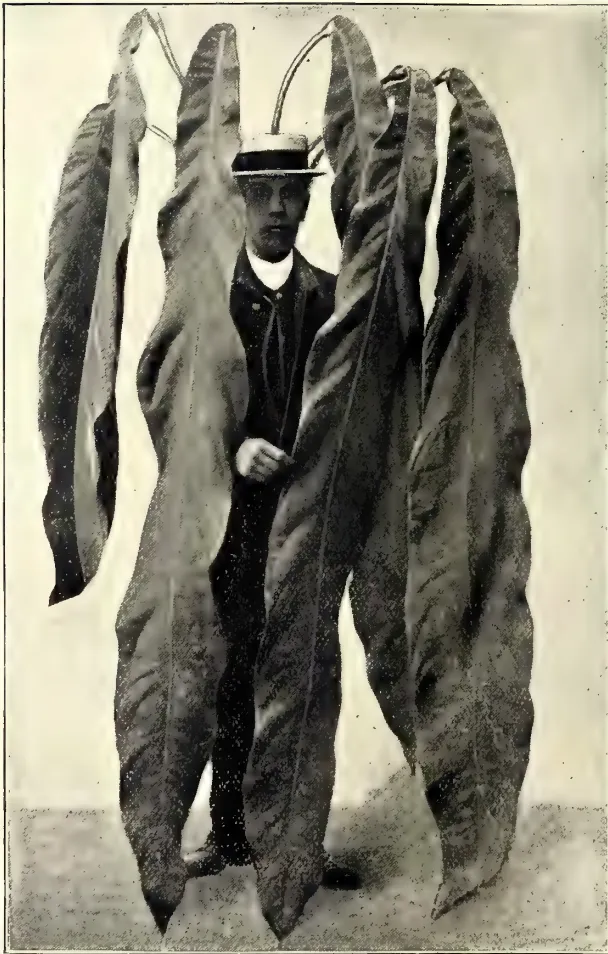
Vide page 522.
Photo by H. F. Macmillan.
ANTHURIUM PANDURIFOLIUM.
THE
TROPICAL AGRICULTURIST
AND
MAGAZINE OF THE
CEYLON AGRICULTURAL SOCIETY.
VOL. XXXI.
COLOMBO, DECEMBER 15TH, 1908,
No. 6.
Our Circulation.
While the circulation of the T.A. is rising, it is not rising so fast as the amount of planting enterprise in the Tropics, and we should be glad of suggestions from our subscribers as to features that might be included.
We propose in this number to start a column upon cookery of vegetable products, and shall be glad of articles from ladies dealing with this subject. There can be no doubt that a great improvement is possible in general cookery in Ceylon.
We also propose to increase the correspondence by the insertion of a certain amount of the departmental correspondence carried on at Peradeniya, giving the letters and our replies, of course with the names of the writers concealed.
We shall also be glad of original papers under any of the heads already existing, as well as Poultry Notes, Notes on Gardening, Shikar Stories, &c.
It must be clearly recognised by the public that it is absolutely impossible for the Editor, even with the assistance of the whole staff of the Botanical Department, to write original matter, or even to translate foreign papers, enough to fill more than a small proportion of so bulky a periodical as the T.A., and that most of it must be "paste and scissors." Many people who complain of the absence of original matter would be surprised if they were to measure the amount actually contained—enough to more than fill most of the rival journals of other countries.
(By D. SANDMANN, in Der Tropenpflanzer, SEPTEMBER, 1908.)
ABSTRACTED BY J. C. WILLIS.
(Continued from page 411.)
The smoking usually takes the seringuero 1-2 hours, so that his day's work is 6-7 hours.
The patrao, or possessor of a seringal, supplies his labourers with all that they require, and a store is kept on the place, in which the goods are sold at cost price, plus a commission of 10-25% and heavy freight charges. The seringuero has to buy all that he wants, including tools, collecting tins, &c., from the patrao. Figures are given showing that the tools, &c., average 300 milreis (£30, most of the advance), while he will consume (on the Solimoes river, say) about 1,200 milreis worth of provisions in his 6-7 months work. The food also is of poor quality, and often damaged by the climatic conditions, being full of grubs.
In payment for the food the seringuero gives rubber. The conditions on which this is furnished differ, but in general
(1) the rubber is bought by the patrao at about one-third below market price in Manaos, or
(2) the rubber is sold, and the proceeds, less 35 kilos. per estrada, given to the seringuero, or
(3) the rubber is sold and 85-90% given to the seringuero.
On the lower Amazon, especially on the islands, each seringuero hires two estradas with about 8 acres of land on which he plants and hunts, and a water-surface for fishing, and pays about 30 milreis a month. The return per estrada is about 320 kilos borracha fina and 15 kilos sernamby, and the rubber is generally sold to the patrao.
The average return of the work of a seringuero is 350 kilos borracha fina and 50 kilos sernamby, but it varies from 100 to 1,000 kilos (1 kilo = 2½ lbs.). As a normal estrada one may take one with 120 trees of 35 cm. (13½ inches) in diameter. On the average 5 litres of milk are obtained daily, or 42 grams a tree. In 140 days about 700 litres of milk are obtained, yielding 400 kilos of rubber. This is rather less than would be obtain-
ed on an estate in Ceylon with trees of the same size, and the treatment on the estate is more rational.
The rubber as it accumulates is shipped down river by the patrao, and sold in Manaos or Para. It loses weight as it travels. It is divided into three chief grades: borracha fina, interfina, and sernamby, to which is sometimes added borracha fraca for the more brittle rubber obtained from other species of Hevea.
The testing is troublesome. Two men put hooks into the central hole and draw the rubber apart, and it is divided with a sharp knife. If uniform and elastic, it is fina, but if there are bad spots, interfina, which sells at 200-800 reis a kilo less, while sernamby (scrap) sells at 1,700-2,200 reis less. The difference in price is greater in Brazil than in Europe or America, and on this the merchant makes his profit.
The rubber is packed for export in chests of about 3 cwt.
After a discussion of the area under rubber in the tropics, Herr Sandmann goes on to deal with the Ceylon figures, and takes the area at certain dates, with the export six years later, arriving at the following figures of yield for the bearing trees:—
| 1903 | ... | ... | 0.321 lb. |
| 1904 | ... | ... | 0.515 |
| 1905 | ... | ... | 0.843 |
| 1906 | ... | ... | 1.165 |
| 1907 | ... | ... | 1.77 |
and he calculates that a ten-year-old tree, at 200 to the acre, will yield 3 lbs. At this rate rubber is already overplanted, for there are now perhaps 550,000 acres in it, which at even 3 cwt. to the acre, means 80,000 tons, against a present consumption of 68,000 tons, half of which is from Brazil.
Calculating on the annual rise of the consumption, he reckons that serious overproduction will begin in 1913.
Many people claim that rubber production on the Amazon will cease as the price falls, but against this many set the fact that it increased with the low prices of 1900-01, for then the food materials of the workers, instead of being carried up river, were planted on the spot, while the seringueros worked harder to get enough rubber to make up for the fall in prices.
DECEMBER, 1908.]507Saps and Exudations.Sandmann himself takes the latter view, and one cannot but feel rightly. If planting is taken up in the Amazon valley, it will greatly reduce cost of production. He gives figures of cost of provisions on the upper river compared with those in Rio.
| Flour | 1,000 | reis against | 85 |
| Sugar | 1,500 | „ | 500 |
| Rice | 1,500 | „ | 290 |
| Tobacco | 1,000 | „ | 1,600 |
and so on.
If agriculture begins, better houses, in healthier situations, will be built for the workers, and they would tend to settle, so that the advances would be less. Further, actual planting of rubber could be taken up.
[This article will repay study by those who are interested in more than the immediate prospects of rubber, and who look to the future. There is too much tendency in Ceylon to pooh-pooh what is done elsewhere, because we are British and have plenty of cheap labour.—Ed.]
A collection of rubbers prepared in Trinidad from trees growing on land belonging to the Botanical Department or on private estates was recently forwarded for examination to the Imperial Institute. The collection included samples of Para, Castilloa, Funtumia and Landolphia rubbers, according to the following list, which also gives notes supplied regarding them:—
No.
The two trees which furnished the above specimens are stated to be from 30 to 35 years old and are about the same size. Both have been determined to be Hevea brasiliensis, but it is thought in Trinidad that the rubber they yield is of different quality.
No. 10. Castilloa rubber. Cake. Washed in three waters, skimmed and allowed to coagulate in glass saucer.
No. 11. Castilloa rubber. Cake. Latex washed through strainer with 12 volumes of water and left in vessel to coagulate. It was taken as a cake from surface six days afterwards and pressed.
No. 12. Castilloa scrap. Collected from trees which furnished Nos. 10 and 11.
These specimens were prepared from Castilloa trees which were planted to fill up the gaps in a permanent plot of Hevea brasiliensis. The trees are 7½ years old, but are of small size owing to the Hevea trees outgrowing them.
No. 13. Funtumia elastica rubber. Coagulated by boiling. The rubber was collected from 7½ year old trees.
No. 14. Landolphia Kirkii rubber. Wound out of cuts a few seconds after cutting.
The foregoing specimens Nos. 1 to 14, were all prepared from trees growing on lands belonging to the Botanical Department.
Nos. 15 and 16. Castilloa block and scrap from trees 17 years old.
Nos. 17 & 18. Castilloa sheet and scrap.
Nos. 19 & 20. „ „ „ „
No. 21. „ „ „ „ from trees 6 years old.
Nos. 22 and 23. „ „ „ and scrap.
These specimens Nos. 15 to 23 represent the rubber which is being produced at the present time on private estates in Trinidad, and for which, it is stated, prices of from 3s. to 4s. 3d. per lb. are being obtained.
No. 24. Venezuelan balata (Mimusops globosa).
No. 25. Venezuelan Loranthus rubber.
The results of the chemical examination and commercial valuation of these samples are given in the following account:—
Nos. 1 and 4 "Para rubber. Tree A, Age 30-35 years. Natural coagulation." Weight 4 oz.
Two thin biscuits, from 5 to 6 inches in diameter and inch thick, with rather rough surface.
The rubber was light reddish-brown, clean, well prepared and free from stickiness; its physical properties were very satisfactory.
The following results were obtained on analysis:—
| Rubber as received. Per cent. |
Composition of dry rubber. Per cent. |
|
|---|---|---|
| Moisture ... | 2.0 | — |
| Caoutchouc ... | 93.0 | 94.9* |
| Resin ... | 3.1 | 3.2 |
| Proteids ... | 1.6 | 1.6 |
| Ash ... | 0.3 | 0.3 |
* Soluble in Chloroform 93.6 per cent; insoluble in chloroform 1.3 per cent.
Gums, Resins,508[DECEMBER, 1908.The rubber was valued at 5s. 1d. per lb. in London, with fine hard Para from South America quoted at 4s. 7d. per lb. and Para biscuits from Ceylon and the Federated Malay States at 5s. 1d. to 5s. 7½d. per lb.
Sample No. 6, also derived from tree A, was a very thin biscuit of pale yellow rubber, weighing about oz. It exhibited good elasticity and tenacity and was quite equal in quality to samples 1 and 4; it was, however, too small for separate examination.
Nos. 2 and 5. "Para rubber. Tree B. Age 30-35 years. Natural coagulation." Weight 7 oz.
Two biscuits of rubber; one 6 inches in diameter and nearly inch thick, the other 4 inches in diameter and from to inch thick.
The rubber was light coloured, clean, well prepared, and free from stickiness, but was not quite so strong as the rubber from tree A.
The results of the analysis were as follows:—
| Rubber as received Per cent. |
Composition of dry rubber. Per cent. |
|
|---|---|---|
| Moisture | ... 3.7 | — |
| Caoutchouc | ... 89.3 | 92.7* |
| Resin | ... 3.6 | 3.7 |
| Proteids | ... 2.6 | 2.7 |
| Ash | ... 0.8 | 0.8 |
The rubber was valued at 4s. 11d. per lb. in London.
These samples of rubber from tree B were slightly inferior in physical properties to the specimens prepared from tree A, and the value assigned to the rubber is correspondingly lower. The only noteworthy difference in the composition of the rubber from these two trees is that the product from tree B contains a much higher percentage of "insoluble caoutchouc" than that from tree A.
No. 3. "Para rubber. Latex from trees A and B mixed. Natural coagulation." Weight 4½ oz.
The specimen was a thick biscuit about 5 inches in diameter and from to inch thick. The rubber was dark coloured externally but white within, rather porous and moist, and possessed a slight disagreeable odour; it exhibited good elasticity and tenacity. It was not submitted to chemical examination.
* Soluble in chloroform 87.4 per cent; insoluble in chloroform 5.3 per cent.
Owing to the thickness of the biscuit the rubber had not thoroughly dried, and its moist character adversely affected its market value. The specimen was valued at 4s. 3d. per lb. in London.
No. 10. "Castilloa rubber from trees 7½ years planted." Weight 6 oz.
A thick cake of rubber, 5 inches in diameter and from to inch thick.
The rubber was almost black externally, but greenish-white within when freshly cut; it was clean, slightly sticky, and exhibited very poor elasticity and tenacity.
The results of the analysis were as follows:—
| Rubber as received Per cent. |
Composition of dry rubber. Per cent. |
|
|---|---|---|
| Moisture | ... 2.5 | — |
| Caoutchouc | ... 46.4 | 47.5 |
| Resin | ... 50.6 | 52.0 |
| Proteids | ... 0.5 | 0.5 |
| Insoluble matter | nil | nil. |
| Ash | ... 0.24 | 0.25 |
This sample of rubber is of inferior quality on account of the very high percentage of resin present. It was valued at 2s. per lb. in London.
No. 11. "Castilloa rubber from trees 7½ years planted." Weight 8½ oz.
A thick cake of rubber, 6 inches in diameter and 1 inch thick. The rubber was almost black externally but lighter within, clean and slightly sticky; its physical properties were not very satisfactory, although it was superior in this respect to the preceding specimen No. 10.
The rubber had the following composition:—
| Rubber as received. Per cent. |
Composition of dry rubber. Per cent. |
|
|---|---|---|
| Moisture | ... 2.5 | — |
| Caoutchouc | ... 57.6 | 59.1 |
| Resin | ... 36.0 | 36.9 |
| Proteids | ... 1.0 | 1.0 |
| Insoluble matter | ... 2.9 | 3.0 |
| Ash | ... 2.4 | 2.5 |
This sample contains less resin than No. 10, but the amount of this constituent is still very much greater than is admissible in rubber of good quality. It was valued at 3s. per lb. in London. The scrap rubber, sample No. 12, corresponding to Nos. 10 and 11, was valued at 2s. 10d. per lb.
DECEMBER, 1908.]509Saps and Exudations.No. 15. "Castilloa block from trees 17 years old." Weight lb.
An oblong piece of rubber, about 2 feet long, from 3 to 4 inches wide and 1 inch thick.
The rubber was brown externally but lighter within; it was clean, free from stickiness, and exhibited fair elasticity and tenacity.
The following results were obtained on analysis:—
| Rubber as received. Per cent. |
Composition of dry rubber. Per cent. |
|
|---|---|---|
| Moisture | ... 0·8 | — |
| Caoutchouc | ... 69·2 | 75·2 |
| Resin | ... 21·2 | 23·0 |
| Proteids | ... 0·6 | 0·7 |
| Insoluble matter | ... 1·0 | 1·1 |
| Ash | ... 1·99 | 2·15 |
This sample of Castilloa rubber is of better quality than Nos. 10 and 11, but the amount of resin is still excessive. It was valued at 3s. 6d. per lb. in London. The scrap rubber from the same source sample No. 16, was valued at 2s. 1d. per lb.
No. 17. "Castilloa sheet." Weight 1 lb.
A large sheet of rubber inches, and from to inch thick.
The rubber was clean, pale yellow, and free from stickiness; it was, however, weak and tore readily.
The rubber had the following composition:—
| Rubber as received. Per cent. |
Composition of dry rubber. Per cent. |
|
|---|---|---|
| Moisture | ... 8·0 | — |
| Caoutchouc | ... 76·1 | 76·7 |
| Resin | ... 21·5 | 21·7 |
| Proteids | ... 0·5 | 0·5 |
| Insoluble matter | ... 1·1 | 1·1 |
| Ash | ... 0·71 | 0·72 |
This sample is very similar in composition to No. 15, but is a little weaker. It was valued at 3s. 5d. per lb. in London. The corresponding scrap rubber was valued at 3s. per lb.
No. 19. "Castilloa sheet." Weight oz
Two thin sheets of clean rubber, pale colour, sticky. The rubber was very weak and tore readily.
The following results were obtained on analysis:—
| Per cent. | |
|---|---|
| Moisture | ... 0·1 |
| Caoutchouc | ... 60·9 |
| Resin | ... 37·2 |
| Proteids | ... 0·4 |
| Insoluble matter | ... 1·4 |
| Ash | ... 0·37 |
This sample is of inferior quality on account of the high percentage of resin. In composition it agrees well with sample No. 11. The scrap rubber, No. 20, contained a little less resin than the sheet, viz., 32·4 per cent. The sheet rubber was valued at 2s. 3d. per lb., and the corresponding scrap rubber in ball form at 3s. per lb. in London.
No. 21. "Castilloa sheet." Weight 5 oz.
Three small irregular cakes of clean black rubber, which exhibited fair elasticity and tenacity, but tore when stretched.
The rubber had the following composition:—
| Rubber as received. Per cent. |
Composition of dry rubber. Per cent. |
|
|---|---|---|
| Moisture | ... 1·0 | — |
| Caoutchouc | ... 75·4 | 76·1 |
| Resin | ... 20·4 | 20·6 |
| Proteids | ... 0·6 | 0·6 |
| Insoluble matter | ... 2·6 | 2·7 |
| Ash | ... 2·17 | 2·19 |
This sample corresponds in composition and quality with Nos. 15 and 17. It was valued at 3s. 6d. per lb. in London.
No. 22. "Castilloa sheet." Weight 15 oz.
Two thin sheets of rubber about 10 inches square. The rubber was clean, well prepared, pale in colour and free from stickiness; it exhibited good elasticity and tenacity, being much superior in these respects to all the other samples.
The results of the analysis were as follows:—
| Per cent. | |
|---|---|
| Moisture | ... 0·1 |
| Caoutchouc | ... 83·0 |
| Resin | ... 15·6 |
| Proteids | ... 0·4 |
| Insoluble matter | ... 0·9 |
| Ash | ... 0·51 |
This sample of Castilloa rubber contains less resin than any of the other specimens. It was very well prepared and is certainly the best sample of Castilloa rubber in the series. It was
Gums, Resins,510[DECEMBER, 1908.valued at 4s. 6d. per lb. in London, the corresponding scrap rubber, No. 23, being valued at 2s. 7d. per lb.
FUNTUMIA RUBBER (Funtumia elastica).
No. 13. "Funtumia elastica. Ire rubber; coagulated by boiling." Weight oz.
A small oval piece of black rubber, clean, well prepared and free from stickiness; it exhibited fair elasticity and tenacity.
The following results were obtained on analysis:—
| Rubber as received. Per cent. |
Composition of dry rubber. Per cent. |
|
|---|---|---|
| Moisture ... | ... 3.2 | — |
| Caoutchouc ... | ... 84.8 | 87.6 |
| Resin ... | ... 8.7 | 9.0 |
| Proteids ... | ... 2.6 | 2.7 |
| Insoluble matter ... | ... 0.7 | 0.7 |
| Ash ... | ... 0.71 | 0.73 |
This rubber is of very fair quality, although it is not very strong and the percentage of resin is a little high. The specimen was valued at 3s 8d. per lb. in London.
RUBBER OF Landolphia Kirkii.
No. 14. "Landolphia rubber." Weight oz.
A very small ball of reddish-brown rubber, which was white internally when freshly cut. The rubber was clean of good quality, and exhibited very satisfactory physical properties.
The sample was too small for chemical examination or commercial valuation.
The botanical specimens of the vine which furnished this rubber have been identified at Kew as Landolphia Kirkii, Dyer.
BALATA (Mimusops globosa).
No. 24. "Balata from Venezuela (Mimusops globosa)." Weight lb.
A block of balata measuring about 8 inches by inches by inches.
It was dark grey in colour, fairly clean, hard and very tenacious. The balata had the following composition:—
| Per cent. | |
|---|---|
| Moisture ... | ... 1.8 |
| Gutta ... | ... 45.7 |
| Resin ... | ... 44.2 |
| Proteids ... | ... 3.0 |
| Insoluble matter ... | ... 5.3 |
| Ash ... | ... 1.28 |
This sample of balata is of good quality, agreeing well in composition with the average figures of commercial consignments. It was valued at 1s. d. per lb. in London.
LORANTHUS RUBBER.
No. 25. "Venezuelan Loranthus rubber." Weight 1 oz.
This sample consisted of two pieces of rubber: (1) a thin strip 1 inch by 3 inches, with smooth surface, and (2) a thin flat cake with rough surface.
The rubber was fairly tenacious but exhibited little elasticity.
The following results were obtained on analysis:—
| Rubber as received. Per cent. |
Composition of dry rubber. Per cent. |
|
|---|---|---|
| Moisture ... | 4.7 | — |
| Caoutchouc ... | 54.4 | 57.1 |
| Resin ... | 17.7 | 18.6 |
| Proteids ... | 4.1 | 4.3 |
| Insoluble matter ... | 19.1 | 20.0 |
| Ash ... | 1.70 | 1.78 |
This Loranthus rubber is of inferior quality on account of the high percentage of resin and the large amount of insoluble matter present. The sample was too small for trustworthy valuation.
CONCLUSIONS.
Para Rubber.—The investigation has shown that the samples of Para rubber prepared in Trinidad are of good quality and would realise very satisfactory prices in the market. From the specimens submitted to the Imperial Institute it would appear that the rubber from tree A is a little better than that yielded by tree B, although the difference is only slight.
Castilloa Rubber.—The two samples of Castilloa rubber, Nos. 10 and 11, from tree growing on land belonging to the Botanical Department, contain an exceptionally high percentage of resin (viz., 52 and 37 per cent. respectively) for the product of year old trees. It may, however, be noted that the trees in question are stated to be of small growth owing to the fact that they were planted along with Para trees and the latter had outgrown them.
The other samples of Castilloa rubber were derived from private estates in Trinidad. Of these, No. 19 contained 37.2 per cent. of resin, thus agreeing in composition with No. 11, whereas in the other specimens, Nos. 15, 17, 21, and 22, the amounts of resin were much less, ranging from 15.6 to 23 per cent.
DECEMBER, 1908.]511Saps and Exudations.Even these latter percentages are much higher than those usually recorded for Castilloa rubber from mature trees.
The valuations of the sheet Castilloa rubbers vary from 2s. to 4s. 6d. per lb., and those of the "scrap" from 2s. 1d. to 3s. 0d. per lb. It may be noted that in the case of the specimens Nos. 19 and 20 the scrap rubber in ball form was valued by the brokers at more than the corresponding sheet. The latter was exceptionally weak, whereas the ball of scrap rubber appeared to be much stronger and contained a little less resin.
Funtunia Rubber.—The single specimen of this rubber which was submitted was of very fair quality.—Bulletin of the Imperial Institute, Vol. VI., No. 2, 1908.
[The West Indies has been too much interested in cotton to pay much attention to rubber, but there are signs that the latter is now being taken up.—ED.]
(La coagulation des latex à caoutchouc. G. Lamy-Torillon in Journ. d'Agr. Trop., 30th September, 1908, p. 257.)
In the introduction the author, well-known as a manufacturer of rubber, mentions that in French West Africa schools have been established in the rubber centres to instruct the natives in the treatment of the trees and the coagulation of the latex. He then goes on to describe the various machines of Guignet, Schmoele, Morchette, and Michie-Golledge.
J. C. W.
(ZIMMERMANN in Der Pflanzner 2, 12, 1907, p. 321.)
ABSTRACTED BY J. C. WILLIS.
Manihot Glaziovii has so far been almost exclusively planted, though Hevea, Landolphia, Ficus, Castilloa, and Mascarenhasia occur, and recently a few Funtunias have been put in.
Investigations were set on foot by the Botanical Institute at Amani to determine the area planted, but as all estates
did not reply to queries, the following figures are too small. They show that 5,107,600 trees are already planted, or allowing that the trees are 10 feet apart, an area of 11,582 acres. A further two millions of trees were expected to be planted before the end of 1907, so that the area in the beginning of 1908 may be safely looked upon as 15,000 acres, or perhaps now 20,000.
From these trees a yield of say 1,000 tons may be expected in a few years' time, so that German East Africa is distinctly a factor to be reckoned with on the rubber market.
By J. L. HERMESSEN, of Chiapas, Mexico.
O waving trees, O forest liberty!
Within your haunts at least a man is free.
Ravenna.
The wind of the South blows fierce and hot, its voice as the sound of many waters, as it riots through waving palm, bending bamboo, and great-leaved banana. Borne on the wild surgings of the wanton wind come the hoarse clamour of countless frogs, the plaintive cry of the whip-poor-will, the ceaseless hum of the myriad insects; but of human sounds, not one. The night, with its "thousand eyes," is as the day, but in its argent radiance more glorious still; the sheen of the moon on field and forest palm-thatched hut and winding stream, turning its course into molten silver and making giant spectres of the white-barked "chancarro," and "jonote" midst the "silent places" where the trogon builds his nest and the deer and the tapir roam free.
These southerly winds prevail during the hottest and driest months of the year—namely, March, April, and May—and are a source of some anxiety to the planter on the Isthmus of Tehuantepec, constituting, as they do, about the only menace he has to fear on the score of fibre. During the same months much necessary work, impossible of accomplishment at any other period of the year—such as road and bridge-building—has to be attended to, including the preparation of areas for new plantings.
The selected block of forest is first underbrushed, then felled, making a complete clearing, which is allowed to dry for six weeks. Either at the beginning or middle of May the ground is burnt over, the choice of a favourable
Gums, Resins,512[DECEMBER, 1908.day for its operation being a matter of rather fine judgment. Hot, sunny weather, with a light breeze, is best; high winds naturally render the work very risky. As soon as the ground has cooled off sufficiently to permit of its being walked over, it is lined and staked for planting, which commences with the advent of the first rains in June, when about 4 inches have fallen. Five or six seeds are sown at stake, in a circle 8 or 10 in. from the same, the lines being ft. square, representing about 800 trees to the acre. Maize is frequently sown as a catch crop between the rows of rubber. Periodic complete cleanings are given to the ground during the first year to afford the young plant air and space for development; and formerly such complete cleanings were continued at regularly extended intervals. The present general practice, however, is to clean only along the rows of rubber trees, after they have attained a height of 5 ft. or 6 ft., leaving the natural "soft" growth to come up between them, with the two-fold object of protecting the elongating trunks of the rubber trees—as they begin to cast their disarticulating branches—against scorching by the sun, and of providing shade over the surrounding surface of the ground, the effect being to limit, if not to wholly prevent, the spread of pernicious grasses, and tending towards a restoration of what is technically known as the "forest floor," in the form of an accumulation of leaf mould, which is an essential requisite to the permanence of the lateral root system of Castilloa. Subject to such modifications as local conditions may suggest, this appears now to be accepted as the best treatment for Castilloa plantings, while having, in addition, the advantage of considerable economy over the older method of complete cleaning. Such planting may then be properly characterized as one of a Sylvan culture, and it may be assumed that the application of the same to Castilloa would favour the theory of equilibrium in Nature, and thus minimize the chances of attack upon wounded trees by parasites, &c. In this connection it is interesting to note that Dr. Warburg, of Berlin, in his work "Die Kautschukpflanzen und ihre Kultur," makes reference to the fact that Mr. Millson, a former Government official in British Honduras, early pointed out the desirability of the sylvan system of culture for Castilloa, recommending just such procedure as is now being adopted.
The writer recently had the opportunity of witnessing a series of experimental tappings made upon Castilloa
trees of six, seven and eight years old, on an estate on the Isthmus of Tehuantepec. The crude method of tapping as practised by the native Indian, by cutting the trees with a "machete" has, of course, been superseded by the employment of specially designed tools. The knife used in the experiments here dealt with was one invented by Mr. V. S. Smith, an American planter in the State of Chiapas. The incisions were made in V form, but, instead of making a complete V, the cut on one side was stopped short of the other, to avoid introducing a possible focus of infection or rot at the meeting point, where moisture might be retained. A drip cup was attached to the base of the tree, by means of an upward cut made in the bark, the bottom of the cup resting on the ground. (The object of the upward cut was, of course, to convey the latex into the receptacle without waste.) In earlier tapping experiments a straight incision was also made between the centres of the V's, forming a regular herring-bone arrangement; this was, however, found to be a useless mutilation of cortex, increasing the risk of rot, as the mere drawing of a finger on the bark from V to V sufficed to establish a route for the flow of the latex down into the drip cup. The central cut, moreover, added little or nothing to the actual flow of latex, owing to the verticle structure of the lactiferous cells in the Castilloa tree.
The latex collected in a fluid state in the drip cups was emptied into a large vessel at the expiration of the day's work and carried to the coagulating shed, where it was first run through a fine wire mesh, to free it from mechanical impurities, such as bits of bark, lichen, moss, &c. It was then poured into upright, open-topped wooden barrels, and mixed with clean water in the proportion of one part of latex to four parts of water; thoroughly agitated for a few moments, covered with a lid, and allowed to stand over-night. The following morning the latex was found to have risen to the surface in the form of a thick, almost pure, white cream. The barrels being provided with taps on the side at the bottom, the separated black water was drawn off until nothing remained but the washed latex, which was then ready for coagulation. A primitive method was here adopted in the use of a juice of a wild vine, known locally as "Jamole" (Ipomœa bona nox), a member of the Convolvulaceæ, which grows in great abundance along the margins of the streams and rivers of this part of the country. Pieces of the riper stems of this vine were cut about a yard
DECEMBER, 1908.]513Saps and Exudations.long, doubled up several times, and macerated, to draw out the juice; the stems were then removed, squeezed out, and the remaining liquid strained. It was then thoroughly incorporated in the latex by stirring with the same. Although many claims have been advanced in favour of the employment of certain chemical reagents to assist the process of coagulation, the superiority of such over the simple means above described has yet to be proved. In the course of an hour or two the caoutchouc globules would be found to have coalesced in the shape of a spongy mass, easily lifted out of the residual liquor. This mass was laid on a table and cut up into convenient strips, of about in. in thickness, which were immediately passed a number of times through the hard-rubber rollers of an ordinary wringing machine, the rollers being gradually adjusted until the strips had been reduced to about in. in thickness, and containing the minimum (or, rather, the advisable minimum) of moisture, for as with Hevea, if too much moisture be taken out of the rubber, it results in a loss of elasticity and strength, the product becoming soft and gummy, if stored for any length of time, or subjected to pressure or a raised temperature; while, on the other hand, the retention of a large proportion of moisture is liable to set up putrefactive changes through the development of bacteria. The strips were next immersed for a few moments in clean water, to remove any traces of the extraneous black liquor; then taken out and hung up to dry on bamboo rods suitably arranged under the corrugated iron roofing of the drying shed. At the expiration of a month the rubber was ready for packing in bales for shipment. When the strips were freshly washed, ready for drying, they were about the colour of dough or very light putty; after a few days, however, they assumed a pale brown superficially, but retained the original dough colour internally for an indefinite period.
Castilloa rubber prepared in this manner has been found to rank very high in quality for manufacturing purposes. Attempts have been made to produce what was thought would be a still higher grade by repeated washing of the latex until the residual liquor came off almost colourless, the latex being then transferred to shallow, porous earthenware pans, and allowed to stand until atmospheric coagulation took place, requiring from five to ten days before the biscuit thus formed could be removed. The resultant product presented at the time, in all
apparent respects, the most attractive example of castilloa rubber. Later experience, however, has conclusively demonstrated the fact that rubber so treated becomes "tacky" and deteriorates much quicker than that obtained by the usual method; nor, indeed, does such rubber, upon removal from the coagulating pans exhibit nearly the same strength of fibre resilience. Just what the precise physical or chemical causes may be that contribute to these results must be left, of course, to laboratory investigation to determine.
It has been observed that in comparatively young trees, such as those referred to, the flow of fluid latex was less than in older trees; that is to say, that immediately upon tapping, while a small proportion ran freely, atmospheric coagulation began very soon, the result being the formation of a creamy latex in the incisions, too thick to run, which in a few days could readily be stripped from the trees as "scrap" rubber, or "grena," as it is locally termed.—Tropical Life, Vol. IV., No. 8. August, 1908.
When Sir Henry A. Blake declared open the International Rubber Exhibition at Olympia on Monday, he had around him in the great building—according to an expert computation—nearly £1,000,000 worth of pure rubber.
"Rubber," declared Sir Henry, "is a product that has during the past half-century played a greater part than any other substance in expediting human progress." As proof of this statement, he added: "Without rubber no cables could have been laid down between far-distant continents to give the means of that instantaneous communication which makes for peace, friendship, and commerce."
Last year £11,000,000 worth of rubber was imported into this country; but the romance of rubber lies not in figures, but in the extraordinary variety of its uses in modern life—as evidenced upon the stalls of the Exhibition. The working of every factory is now depended in some way or another upon rubber.
Rubber is now doing its best to oust leather for some purposes. For machine-belting, for instance, it is claimed that
65 Gums, Resins,514[DECEMBER, 1908.gutta-percha, which is india-rubber and other things combined, is in many ways superior to leather. A leather belting is, owing to the limited length of hides, made in several sections, whereas gutta-percha belting can be made to any desired length in one section, and, therefore, it runs truer than one made of leather.
Imitation marble or granite mosaic floors are also made of india-rubber, and the designs are in colours extending throughout the thickness of the material.
"If rubber sank in price to 2s. a pound," observed a prominent exhibitor, "its scope might be further extended by using it to pave the streets of London."
This remark conjures up visions of a silent London. With streets paved with rubber instead of with wood blocks, or macadam, or stone setts, and with smooth-working motor-omnibus engines, traffic would be carried on under conditions of almost perfect quiet.
The only obstacle is the initial outlay.
At Euston Station, London, there is a rubber road, laid down, twenty-five years ago, and despite exceedingly heavy traffic it is to-day in a splendid state of preservation.
The courtyard of the Savoy Hotel, London, is rubber-paved, while banks, hospitals, and public institutions, as well as many private houses have rubber floors, which not only deaden the noise, but are cleaner and more economical in every respect.
In the Administration Report of the Government Botanic Gardens and Parks, the Nilgiris, for the year 1907-08, various interesting notes about Rubber trees appear. There is said to be practically no demand for Castilloa seed, and very little for Ceara, but Para seed is in great request. Mr. Proudlock remarks that "everything now points to the fact that the cultivation of rubber is extending, and that it is promising to become a very large and important industry in South-Western India in the near future. At Benhops Castilloa, Para, and Funtumia elastica are all growing well. Of Burliar it is reported:—
During the year Para, Ceara, and Castilloa rubber trees were tapped, and fair yields of rubber were obtained. The Castilloa trees planted in September, 1898, are growing well. The best tree, No. 1 in the plantation, when measured on the 24th April, 1908, was 40 ft. 3 in. in height, 10 in. in girth at 1 foot from the ground, and 3 ft. 2½ in. at 4 feet from the ground. The Para trees planted in November, 1898, are also growing fast. The best tree was found to be, on the 24th April, 1908, 55 ft. 3 in. in height, 3 ft. 1 in. girth at 1 foot from the ground, and 2 ft. 4½ in. at 4 feet from the ground. Para tree No. 14 at the bottom of the garden promises, however, to be the best tree in the plantation. It was 3 ft. 2 in. in girth at 1 foot from the ground and 2 ft. 5 in. in girth at 4 feet from the ground on the 24th April, 1908. The best tree of Funtuma, Africana, Stapf., when measured on the 24th April, 1908, was found to be 57 ft. 8 in. in height, 2 ft. 8 in. in girth at 1 foot from the ground, and 2 ft. 7 in. at 4 feet from the ground.
Funtumia Elastica is also growing well. Still, the measurements of the various rubber trees given in the report show that in girth the trees at Burliar do not, as a rule, compare favourably with those in Travancore and Cochin, of which Mr. J. A. Richardson gave some particulars at the last meeting of the U.P.A.S.I. Some Kullar figures are more encouraging. There is a noticeable diversity of measurements, but there can be no doubt that "the trees at Kullar are making splendid growth."
Of the Forest Department Rubber Plantation the report says:—
"The Para plants are doing well. There were, however, several failures on account of the dry season, and for want of water to water the young plants with. The failures were replaced. The 'Musa textilis,' which were planted among the rubber trees, are growing well. The weeds were kept down, and the grass among the rubber trees has grown well. In fact, the 'Guinea grass' has spread so rapidly and grows so luxuriantly that it threatens to exterminate all the other species of indigenous grasses named in paragraph 62 of last year's report. . . . This small rubber plantation has already amply demonstrated the object that a large supply of grass can be grown for fodder and for grazing purposes in a Government rubber plantation during the early years of its existence, till the trees grow up."
—Ceylon Independent, 6th October, 1908.
Among the most interesting members of the palm family are one or two species which excrete wax and deposit on their leaves or on their stems. Probably the best known of these is the Carnauba palm of Brazil (Copernicia cerifera), while a second has latterly become known as the wax palm of Colombia (Ceroxylon andicola). An article dealing with these palms and the commercial uses to which the wax excreted by them may be put, appeared in a recent number of the Gardeners' Chronicle. It was mentioned in the Agricultural News (Vol. VI., p. 375) that specimens of the Carnauba palm exist in the Botanic Gardens in British Guiana, and seeds from these have been distributed to the Botanic Stations throughout the West Indies.
In the forests of Pernambuco and Bahia the Carnauba palm is found in great number. The tree grows to a height of 40 feet and measures to about 1 foot in diameter at its base. The wax is excreted and deposited on the under side of the leaves, and the collection of this product has of late years become an important industry.
The wax is either scraped from the leaves on the tree, or the leaves them-
selves are gathered from the tree and the wax is afterwards removed. Since the product so obtained is in an impure state, and contains a large admixture of resin and other materials, it is melted, the impurities are removed by skimming, and the wax is run into moulds to harden.
Carnauba wax was, until recently, used in the manufacture of candles and also as a basis for such articles as boot polishes. The discovery of the fact that this wax was of special value for the purpose of making phonograph and gramophone records, led immediately to a greater demand for the product and also to a large increase in its value. About 2,000 tons of the wax are annually exported from Brazil, and its value is placed at anything from £100 to £200 per ton.
The wax palm of Colombia excretes wax which is deposited not on the leaves, but on the trunk of the trees and is frequently found between the scars left on the trunk by the petioles of the leaves, in deposits so thick that it can be removed in flakes. The average annual yield of one tree is said to be about 25 lb. At present there is but a local demand for the wax, and it is used by the people of Colombia for making candles.—Agricultural News, Vol. VII., No. 165, August, 1908.
516[DECEMBER, 1908.Sea Island cotton planting has been in active progress in many parts of the West Indian Islands for several weeks, but large areas are yet to be planted, and the present is an opportune time for again drawing the attention of planters to points in connection with the cultivation which they will do well to observe.
In regard to the season for planting cotton in the West Indies, experience has shown that the most satisfactory results are obtained from areas that have been planted during the period from the beginning of June to the end of September. Within the limits mentioned, the planter must depend on local experience to guide him as to the most suitable date for sowing his seed, but the soil should be got into a good state of cultivation, so that advantage may be taken of early showers of rain to start planting operations.
In the case of planters who may have had comparatively small experience in growing Sea Island cotton, the labour supply and the question of suitable soil will first need attention. It should be remembered that for the gathering of cotton an abundance of labour, more especially of women and children, is essential. As regards soil, although cotton has been grown on practically every type of land, it is now generally recognized that the best results are obtained from fairly light loams, capable of being easily worked. It is important that cotton land, more especially if of a heavy nature, should be efficiently drained, since it has been noticed that where the soil is retentive of moisture and the rainfall is high, the cotton produced has a tendency to become weak and wasty. On the other hand, even with a high rainfall, the cotton does not show these characteristics if the soil is of a porous nature.
Thorough and careful preparation of the land is most essential for success with the cotton crop, and is one of the chief factors in determining the ultimate yield as well as the quality of the lint.
The land should be ploughed or forked and the surface soil well pulverized sometime before sowing takes place. The most successful cotton planters have found that improved results are obtained when the soil is allowed to mellow, or 'cool out,' for a short time before planting.
The growth of cotton is attended with the loss of a considerable amount of organic matter to the soil, and it is essential that this should be replaced if good crops are to be produced. Where cotton forms the main crop of the estate, and is grown year after year on the same land, pen manure dug into the soil, and applied at the rate of about half the quantity usually given to sugar-cane, forms an excellent mode of supplying the humus lost. Another method is by growing cowpeas, or some other leguminous crop, and turning it into the soil. On sugar estates, however, where cotton is but a subsidiary crop, the pen manure supplied to the canes is sufficient also to meet the demands of the cotton. As regards artificial manures, their use in connection with Sea Island cotton has not been attended with profitable returns at Montserrat or St. Kitt's (see Agricultural News, Vol. VII, p. 246). In experiments with cotton carried out at Barbados the best results were obtained from the application of 300 lb. high grade superphosphate, 40 lb. good sulphate of potash, and 100 lb. good sulphate of ammonia per acre.
In regard to the amount of cotton seed required for sowing, it has frequently been pointed out in the publications of the Imperial Department of Agriculture that 6 lb. of seed per acre is a very suitable quantity under ordinary circumstances of planting. On sugar-cane land, the seed is usually sown at distances of 5 feet in the rows, and 20 inches from plant to plant in the rows, or the rows may be 6 feet apart with a distance of 18 inches between the plants.
It is a good plan to sow four seeds at each hole, about an inch deep. Later, three of the plants may be removed, the strongest only being left. It is recommended that not more than one plant be allowed to grow at each hole.
The importance of selecting a good strain of seed for planting has been repeatedly urged by the Imperial Department of Agriculture, since the character of the seed has great influence upon the crop return obtained, and especially upon the quality of the lint. In the early stages of the cotton industry in the West Indies, cotton seed was selected, disinfected, and put on sale by Officers of the Department. Many planters now do their own selection work, and selected and disinfected seed can be obtained from the cotton factories of Barbados, St. Vincent, and Antigua. Planters should at least assure themselves that the seed planted by them is
DECEMBER, 1908.]517Fibres.of good origin, i.e., from plants which in the past season produced lint of the best quality.
Disinfection of the seed is carried out by immersion in a solution of corrosive sublimate made up by dissolving 1 ounce of corrosive sublimate in 7 gallons of water. One gallon of this solution is sufficient to disinfect about 6 lb. of cotton seed, which should be soaked for twenty minutes, then removed, immersed in pure water for ten minutes, taken out and allowed to drain, and then spread out in a thin layer in the shade to dry. After this the seed is ready for planting. It is recommended that cotton seed should be treated only just before it is to be sown.
The young cotton plants should receive careful attention during the early stages of growth. The surface soil should be worked by hand implements with the double purpose of preventing it from becoming hard and baked, and of keeping it free from weeds. Constant watchfulness will have to be exercised for the first signs of insect pests as soon as the cotton plants are up. The cotton worm and the cut-worm are the most destructive among these pests. An effective method of treatment for attack by cut-worm is by the use of poisoned bait, consisting of a mixture of bran, molasses, and Paris green.
The cotton worm is well known to growers of Sea Island cotton in most of the West Indian Islands, and has already put in an appearance on one or two estates at Barbados where early planting took place. Supplies of Paris green and lime should be obtained, and on the first appearance of the worm the plants should be dusted with the mixture at the rate of 1 lb. of Paris green to 6 lb. of lime. In the past, this has been shown to be the most effective method of controlling the pest. During the coming season, in Barbados at least, it is expected that extensive trials in the use of spraying machines will be made for applying insecticides in cotton fields.
The comparative value of spraying and dusting methods in the application of Paris green will be a matter of considerable interest, and the results obtained by the use of arsenate of lead, which can be applied only as a spray, will also be watched with interest.
The trials made last season on one estate with arsenate of lead indicate that this material will prove an efficient insecticide, and its adhesive qualities will render it more resistant than Paris
green to the washing of the heavy rains. This, it is hoped, may result in a saving by reducing the number of applications.—Agricultural News, Vol. VII, No. 165. August, 1908.
The lace-bark tree of Jamaica (Lagetta lintearia) forms the subject of a short article in the June number of the Journal of the New York Botanic Gardens, while the peculiar and interesting character of the inner bark, to which the tree owes its name, is well shown in the illustrations accompanying the article.
The lace-bark tree, which belongs to the Thymelæaceæ, is found in the central and western parts of Jamaica, and is also said to occur in Hayti. In its native wilds it attains a height of from 29 to 30 feet. Its ovate leaves are of a shining light-green colour, and are very attractive in appearance. The flowers are fleshy, of a creamy white colour, and are borne in long slender spike-like racemes.
The tree has long been an object of interest on account of the lace-like character of the inner bark, which is made up of fibres arranged in several layers that may be stretched apart into a loose fabric. In former times people employed this bark in making caps, ruffs, bonnets, etc., and now, in Jamaica, the fibre is used in the manufacture of various fancy articles, such as doyles, lamp-shades, fans, as well as in making riding-whips. It is stated, too, that the Spaniards formerly utilized the bark in the preparation of rope.
In 1793 specimens of the lace-bark tree were first sent to Kew Gardens, from Jamaica. These died, however, and it was not until 1844 that another attempt was made in this direction. Several young plants introduced in that year flourished, and one produced flowers and fruit a few years later. It is mentioned in the above-mentioned Journal that a specimen of the tree has lately flowered for the first time at the New York Botanic Gardens.—Agricultural News, Vol. VII., No. 164. August, 1908.
BY G. A. GAMMIE.
About four years ago Dr. Thomatis professed to have evolved, by methods speedy enough to be accepted by magic, three remarkable varieties of tree cot-
Fibres.518[DECEMBER, 1903.tons, the excellences of which he briefly summarised as follows:—"The tree cotton will require only one planting, will necessitate but simple and inexpensive culture, will live probably a man's lifetime, will withstand and defy roaring floods and resist parching droughts, once in full vigour, size and growth. Its proportion of lint I am raising every year; it is now already 40 to 50 per cent. and will steadily increase every year, probably up to a seedless crop." He also claimed to have improved the percentage of clean cotton in the Kidney seed variety from 26 to 40, and stated further that it is a very hardy tree and a heavy and sure cropper in all kinds of seasons. This is entirely opposed to our experience of the plant in India, where it is delicate and a notoriously poor yielder.
In 1905, he wrote to the Ceylon Observer as follows:—"You will notice how well I succeeded in disintegrating or loosening the kidney-shaped group of seeds in the Kidney cotton, thus making ginning more practicable. I also succeeded in enlarging the size of the boll and in improving the staple altogether."
I have found, from personal observation of the plants in Poona, that the seeds are certainly loosened to some extent in the majority of examples, but, on the other hand, they are disposed to coalesce in smaller groups, and this feature, looking at it from the ginner's point of view, is probably just as objectionable. He further states that it took three years to educate the trees, but, unfortunately, he does not divulge his educational method.
In other communications to the Indian press he reiterates his statements regarding the super-excellence of his cottons. He professed to have no doubt whatever that the sandy delta of the Ganges and many river flats or beds and the extensive sea-shores can be made a prosperous home for his wondrous productions.
An article by a botanical expert in the Madras Mail, some time in 1905, is particularly valuable, as it gave clearly and sensibly valid reasons why the pretensions of Dr. Thomatis should not be supported, and it deserves to be quoted at some length.
After briefly dwelling on the failures experienced in the attempts to introduce exotic cottons into India, the article winds up with the following pertinent conclusions:—"Dr. Thomatis has said he expects to produce an almost seedless crop. It would be interesting to
know how he has been improving his percentages of lint and, at the same time, been working to obtain a seedless variety. The two results are diametrically opposed to nature. . . . The cotton plant produces its fibre or lint on the seed itself and to produce a seedless cotton plant for the purposes of cotton growing is as easy of accomplishment as to produce or grow feathers without birds."
Dr. Thomatis, in 1904, said:—"Three years ago I collected scores of varieties of seed from all parts of the world, got samples of bolls and lint thereof, and then chose two, both of the 'Sea Island' variety. . . . I crossed them by hybridisation."
To have obtained seed from all parts of the world, to have grown them to a flowering stage, to have hybridised and obtained seeds from these, and to have raised plants from this seed capable of producing cotton, must have taken some considerable time, and when we remember that it was not until 1901 that Dr. Thomatis sent to different parts of the world to collect his seed, we may judge with how much authority he can speak of its habits and requirements, especially for Indian Cultivation."
Now that we understand how the evolution of the Caravonica cotton was effected, we pass on to the relation of some actual experiences in the cultivation of these products in India itself. At Poona, in 1905, seeds of Caravonica No. 1 were received through the Inspector-General of Agriculture. Twenty-five were sown; of these, twelve only germinated and ten plants were finally put out in good soil in a situation, sheltered but not shaded. After two years, only one plant had survived, and that has yielded nothing. The principal characteristic of this variety was its extremely low vitality.
Thirty seeds of Caravonica No. 2, received at the same time, produced fifteen plants which were put out in the same area as the above. In two years the individual variations of these were remarkable; the best was a plant with a height and spread of about 7 feet, three more had attained about half these dimensions, and the remainder, weak and stunted all through, died off one after another.
Four plants only yielded cotton in the second year.
Plant No 1, the largest, was so brittle that some of its branches broke down merely with their own weight, and others snapped during the prevalence of winds
DECEMBER, 1908.]519Fibres.which were never more than moderate in the sheltered plot occupied by the plants.
In 1907, or in the second season of growth, this plant bore 21 ounces of seed cotton, producing 12 ounces of ginned cotton. This works out to a percentage of 57 which is extremely high, of course, but is explained by the fact that every seed had been completely destroyed by insects. It would be interesting to know if Dr. Thomatis expects to arrive at his seedless variety by the same method. At the end of the season, the plant which was in a severely crippled condition, was pruned back according to Dr. Thomatis' recommendation, but, unfortunately, it died after the operation.
Plant No. 2 yielded 7 ounces of seed cotton and ounces of clean cotton.
Plant No. 3 yielded 10 ounces of seed cotton and 5 ounces of clean cotton.
Plant No. 4 yielded 2 ounces of seed cotton.
The bolls and seeds of all were severely attacked by insects.
Two years ago I examined Caravonica plants on the Nagpur and Bellary farms, and found that they were all of the common stunted type. The only plant I have seen in any way answering to the glowing description of Dr. Thomatis was the plant No. 1 described above, and that was too brittle to retain its branches even in a sheltered position. Further experiments have assisted to prove the low germinating power of the seeds and the extraordinary diversity of the resulting plants. This latter character is, of course, due to the recent hybrid origin of Dr. Thomatis' varieties. For his own reputation alone he should have fixed his types properly before selling the seeds at such high figures.
Mr. R. C. Wood, Deputy Director of Agriculture, Northern Division, Madras, has written an interesting report on
experiments with Caravonica cotton in Cuddapah.
The seed, obtained by a Bombay Syndicate direct from Dr. Thomatis, was said to be of poor quality, and the percentage of germination was very low. Mr. Wood found that, although "Silk" cotton had been stipulated for all three varieties, silk, wool and kidney were to be found. The plants produced (as would be expected from a hybrid) were of many and varied types—in growth, habit and quality.
In this report, Mr. Wood repeats an often urged warning by pointing out the extreme danger perennial cottons have to face from insect attacks. Being perennial, they naturally afford food and shelter to pests which are carried on from one year to another and, in the event of the extension of tree cotton cultivation, which, however, is scarcely a possible contingency, there is always the chance of indigenous varieties in the vicinity being attacked.
In conclusion, I think it ought to be emphasized repeatedly and widely that cultivation, on a large scale, of perennial cottons—whether American, Australian or otherwise—should never be attempted in India.
Their very structure is that of denizens of wooded and sheltered localities; their brittle nature forbids their being grown in open fields exposed to winds; their naked seeds are the easy prey of every noxious insect that exists on cotton; and, finally, the reasons which will perhaps appeal most strongly to the commercial world are, they never produce a full crop till the second year, the chances of absolute failure from climatic causes are carried on from year to year, the land becomes weed-infested, and the yield is never commensurate with the area that each individual plant covers.—Agricultural Journal of India, July, 1908, p. 271.
520[DECEMBER, 1908.]The recent appearance in the London drug market of some fourteen bags, each weighing, it was said, three-quarters of a hundredweight, containing unknown roots from Colombo, has drawn fresh attention to the fact that such unknown articles of commerce are frequently introduced in this way, and, finding no buyers, as in this case, are lost to commerce. The "roots" which were so classified in the broker's Catalogue, proved to be those of Coscinium fenestratum, a Menispermaceous climbing plant of Ceylon and Southern India. It is noted for its bright greenish-yellow colour when freshly cut, as well as for its very broad medullary rays. It is sometimes known as False Calumba, and has been used as a substitute for true Calumba, which is the root of Jateorhiza Columba, a climber of the forests of Mozambique. Both in India and Ceylon the root of the Coscinium fenestratum has been spoken favourably of by many writers on medicinal products, and it is said to be now official in the Indian Addendum of the Pharmacopoeia, besides which, the yellow colouring matter is used as a dye. A letter in a recent issue of our contemporary, The Chemist and Druggist, written by an authority on drugs, comments on the practice that prevails at the English drug auctions of consigning new, or unknown products, which fail to find buyers, to the rummage sales, or the dust destructor. "While the Hamburg shippers and German drug houses," he says, "are careful to get supplies of out-of-the-way drugs, in this country it is quite a matter of chance for a new, rare or unrecognised product to even get catalogued correctly, so that new products, whether drugs or other articles, get but little chance of being known or tried." New uses are constantly being found for products that a few years ago were considered of no value, and it is, therefore, important that an expert opinion as to the sources
and properties of unknown articles should be obtained before these are offered for sale. It could then be determined whether the article could be turned to any good purpose, or whether its use was only as a substitute for any other well-tried substance.
Bearing upon this subject is the increase that has recently taken place in the importation of Cashew nuts, the fruit of Anacardium occidentale. As edible nuts they have hitherto been but very little in demand in this country, their unpopularity being probably due to a great extent, to the presence of an acrid juice between the shell and the kernel itself. This, however, is dissipated by heat, so that when roasted, as they usually are before being sold, they are perfectly wholesome. The tree belongs to South America and the West Indies, but it has long been established in India, the bulk of the shipments received in England having been obtained from Bombay. Large quantities of these so-called nuts are now annually exported from the East Coast of Africa, namely, Zanzibar, Inhambance, Beira, Quillimane and Delagoa Bay to European ports. The Bombay shipments to England mostly come in the shelled form, that is, the kernels are removed from the outer shell, which is hard and woody. It is further stated that Madras is now sending to England large quantities of these shelled and blanched kernels. Considering that these Cashew nuts realise in the Mincing Lane market from 19s. to 24s. per cwt., there is apparently a new development of their use springing up.
A reference to the Cashew nut would not be complete without noticing the peculiar habit of the plant in the production of its fruit. The so-called nut, which is kidney-shaped and covered with a hard shell, is borne at the top of a pear-shaped, fleshy receptacle or swollen stalk, which, when fully grown, has a reddish tint and is edible, having an agreeable, acid taste, the acrid juice only surrounding the kernel.—Gardeners' Chronicle, No. 3,529, Vol. XLIV., August, 1908.
This image is a scan of a blank page. The paper has a light beige or cream-colored tint. There are a few very small, dark specks scattered across the surface, which appear to be scanning artifacts or dust particles. No text, lines, or other markings are present on the page.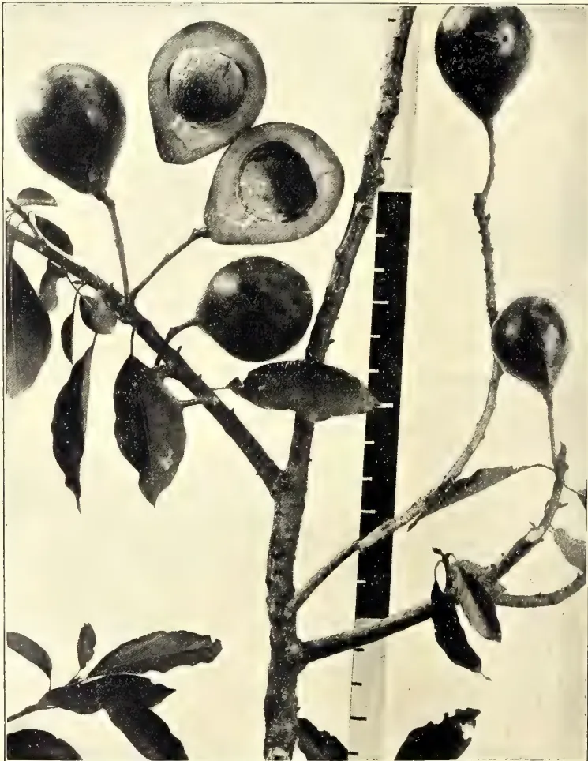
A black and white photograph of a branch of Persea gratissima (Avocado). The branch features several large, dark, oval-shaped fruits. Two fruits are sliced open, revealing the large, light-colored, fleshy seed inside. A vertical ruler is placed next to the branch for scale. The leaves are dark and ovate.Photo by H. F. Macmillan.
PERSEA GRATISSIMA.
DECEMBER, 1908.]521(Illustrated.)
BY H. F. MACMILLAN.
This excellent fruit is of comparatively recent introduction in the Eastern Tropics. It is a native of Tropical America, extending from Mexico to Peru. The date of its first importation to Ceylon is not known, but it is probable that this took place about the end of the Eighteenth, or very early in the Nineteenth, Century. The first record of its cultivation in India has been given as 1860, but it was probably introduced there before that date. The Avocado Pear is now widely distributed and cultivated in all tropical countries. Possessing a remarkable adaptability to a variety of climatic conditions, it thrives in Florida, Madeira, Azores, Queensland and Natal, as well as in Ceylon, Hawaii, Malaya, Madagascar, etc. In Ceylon it is best suited to medium elevations, as from 1,000 to 2,000 feet, though it will also grow and fruit well at lower elevations, provided the rainfall is not much below 60 inches. In Southern India it flourishes up to about 4,500 feet, but in its native habitat it is said to attain "its greatest perfection at 2,000 to 3,000 feet in the sheltered valleys of the Coast Ranges."
The tree is of a bushy habit, grows to a height of 25 to 40 feet or more, and prefers well-drained and deep friable soil. As with most tropical plants, however, climate has probably a greater influence than soil; and, judging by the conditions which obtain in the native home of the "Avocado," it may be granted that a rather decided alternation of wet and dry seasons is in its favour.
The Avocado Pear ranks high amongst tropical fruits, and deserves to be more widely known and cultivated than it is. It is a salad, rather than a dessert fruit; yet it has qualities which seldom fail to be relished by the novice, whilst persons who become accustomed to it usually develop a special fondness for it. The fruit is shaped like a large pear, though varying somewhat in form according to variety; its smooth thin skin remains green when ripe, like many other fruits of equatorial regions. The centre is hollow, and contains a large round fleshy seed. Between this and
the thin skin is a thick layer of pulp (pericarp), which is of the consistency of firm butter, and usually quite free of any traces of fibre or grittiness. When cut round the middle and the two halves separated, the seed will readily drop out. The pulp, which may be scooped out with a spoon, is very palatable when flavoured with salt and pepper, or with Worcester sauce. Some people flavour it with port wine. It is said that in its native country the fruit is eaten by the poor people as a substitute for butter, being commonly known by the name "Soldier's Butter." It is also served in other ways. A lady in Hawaii writes: "We serve the avocado pears here in different ways. We cut them in two and serve them with soup, and we eat them with plain salt and pepper. If they are not particularly good, we cut them into dice, and serve like an oyster cocktail. But the best way is to put the pear through a vegetable press, then turn and scoop out ripe tomatoes and stuff them with this pear puree. Garnish these with rings of hard-boiled egg, and serve with lettuce and mayonnaise."
The fruit does not keep well and is very liable to injury by bruising, so that it is difficult of transport. Fallen fruits are usually so much damaged by being bruised that only a portion of them can be eaten. Therefore they should be picked by hand when ripe enough and placed gently in a sack or basket. They should not be pulled, but clipped so as to leave a portion of the stalk attached to the fruit.
The avocado pear is especially esteemed in America, where it is imported from the West Indies, Porto Rico, Southern Florida, &c. It is said that fruit-dealers in New York and other large towns of the United States sometimes pay half a dollar each for the fruit. Its cultivation has thus naturally developed somewhat extensively of late years in Tropical America and the West Indies, and promises to be to some extent a remunerative industry. Trial shipments of the fruit have recently been made from Hawaii to New York with hopeful results. The tree is readily propagated from seed, which are large and fleshy and soon lose their power of germination.
The fruit is also known as Alligator Pear. The Sinhalese call it "Et-pera," and the Tamils "Anakoya-palam."
66 Edible Products.522[DECEMBER, 1908.One of the most remarkable plants in the vegetable kingdom is that shown in the photograph given in frontispiece, viz., Anthurium pandurifolium. This specimen, thanks to the courtesy of the officials of Kew, has been photographed in the tropical Aroid House of that well-known institution. It is probably the only specimen in Europe, and, according to Mr. Watson, the Curator, has been growing for many years in the Kew collection without a name. Only comparatively recently it has flowered, and thus enabled Kew to determine it. The plant is a native of Costa Rica. At Kew it is grown in a large shallow, hanging pot, which is filled with a loose mixture of sphagnum, old bark, pieces of broken pots and fibrous loam, and thrives to perfection. This suggests at once that the plant is of an epiphytal character, and in its native habitat would be found in the forks of forest trees, in hot, moist and shaded situations. It may be imagined what a striking object the plant forms when it is stated that the leaves measure up to about nine feet in length, the blade, which is like a huge broad band, being about seven feet long, and the stalk from one and a half to two feet.
The people of this country with characteristic indifference to any article produced locally, do not appear to appreciate the great dietary importance of maize or Indian corn, the well-known and important cereal so largely grown in other parts of the world. A native of America, the Indians having been found engaged in its cultivation at the period when the New World was discovered by Columbus, maize is now widely distributed over the world—in the United States where it is extensively and systematically grown; in South America; Africa; Australia; India and Ceylon; Burmah and the Straits; and in parts of Europe along the Mediterranean. Maize grows in a temperate as well as tropical climate; throughout the hills, at 7,000 feet elevation or more, and in the valleys. It is very hardy and requires little rain, and is rapidly matured. In sixty days from sowing the cobs are fit to cut. A small sweet variety grown in Demerara, called carica, ripens its grain in less than two months from the time of sowing. Any way, from two to three crops can be taken in a season, which cannot be said of rice or any other cultivated grain. Maize is
used as an article of food to a very limited extent in Ceylon. The cobs are boiled and eaten in the villages, and the grain roasted and sold in the public thoroughfares much in the same way that roasted chestnuts are hawked about at home; while corn starch, "arrowroot (which is maize flour), and corn flour," extensively used for light puddings, blanc-mange, custards, etc., and as diet "for infants and invalids" are imported in considerable quantities. As an article of food maize is by no means appreciated in this country as it should be. Maize, which probably ranks next to rice as the grain which affords nutriment to the largest number of human beings has
it for culture where the climate is sufficiently warm to ripen the grain properly, growing as it does freely in very different kinds of soil, as well as under dissimilar states of moisture and dryness. In this country maize is grown in all the Provinces but in a most undecided fashion. The villager distributes a handful of the grain over his chena among other crops, and the market gardener raises a few plants among his vegetables and chillies. This is what is done all over the Island, with the exception, however, of Uva where, in recent years, considerable advance has been made in the cultivation of village products. This is the only Province in which maize is regularly cultivated as a crop by itself, as a staple article of food. But the corn is ground and converted into the inevitable jumper, like that of kurakkan, in which form it is consumed by the villager. There is no reason, however, why maize should not be largely and systematically cultivated all over the Island as an article of food, and it can be grown by thousands of village cultivators and country farmers who have no idea of its food value. People have only to become acquainted with such food as green corn and the various kinds of bread, pudding and cakes into which maize meal can be made to appreciate their usefulness. Maize has proved itself amply sufficient for the sustenance of human life
It ripens at a time when most other grains have been harvested, and therefore furnishes employment when there would naturally be little else to do. But what gives to maize its great importance is the actual amount of nutritive matter which it contains, in which respect it is said to be second only to wheat. Dr. Wiley, chemist of the United States Department of Agriculture, is an
DECEMBER, 1908.]523Edible Products.acknowledged authority on foods, and in one of his reports he says:—"Food to be perfect must give to the body all the necessary constituents to supply tissues for its growth, and to take the place of the waste of tissue which is a necessary attendant on the functions of life. The article of food which is best calculated to supply the wants above-mentioned would be of necessity the most valuable for food purposes. In general, we may say of food that they should be fat-producers, muscle-producers, bone-producers, and, most of all, blood-producers, since it is through the blood that the tissues of the body are nourished." Meal from Indian corn is said to contain "more than four times as much oleaginous matter as wheat flour, more starch, and nearly as much nitrogenous material." The combination of elementary compounds in maize renders it alone the mixed diet capable of sustaining man under the most extraordinary circumstances. It holds the elementary principles, says an authority, which constitutes
Maize is the staple and peculiar food crop of the United States, although it is also grown in many other countries; but there it is harvested by thousands of millions of bushels per annum. The varieties of maize are numerous and are continually increasing by improvement and may be divided into two kinds, namely, table maize and farm maize, the one used for table purposes and the other for flour and cattle food. Boiled in the cob in the unripe state and eaten with butter at table as is done in America it makes a delicious article of food. In the several forms of husked corn, pop corn, hominy succatash, mush, maizena, corn starch or arrowroot, etc., vast quantities are consumed by all classes of people in America. There is a large number of dishes of which corn meal forms the basis, which are exceedingly palatable. It has been said of maize that it was as indispensable to the Yankee as the potato to an Irishman, or the oat to a Scotsman; that there is no crop more beneficial to the farmer than Indian corn; that it is the meat, meadow and manure crop of the farm; that its value in fattening domestic animals is not exceeded by any other product of the farm. The uses of Indian corn are very numerous.
When very young we are told the small young stalks of thickly sown crops are cut over by the Mexicans as an article for the dessert; and boiled green corn as an article of diet must be known to be realised. The grain, besides providing
bread and cake, is used in the manufacture of beer, whisky (largely distilled in America) and oil (for culinary, burning and lubricating). The stem contains a crystallizable sugar, at one time largely manufactured by the Mexicans. The leaves may be used as a green manure or made into straw; and the sheathing can be made into cloth and paper of excellent quality. The husks of the ears are used in America for stuffing mattresses, bolsters, etc., and it is a material always clean and elastic. The empty cobs are used as a source of fuel, and the whole plant when burnt yields fine potash. As regards cultivation, maize can be profitably grown on the poorest soil, but the better the soil the better the crop. Well manured—cattle manure gives the most excellent results, while decayed leaves, ashes, tank mud well dried, may also be used with great advantage—no crop pays better than maize. Pests of the field are very fond of the grain and consume a large percentage, bandicoot rats, squirrels, crows, destroying the seed as it lies in the ground. The seeds should be tarred before sowing. To pts. of hot water add part of a pint of tar, mix together, and after it is cool pour the solution over the seed. After dusting sand, ashes or sawdust to prevent the seeds adhering together, the grain is ready for sowing. Keep down the weeds during growth; and see that the cobs are well matured before being gathered.
—Ceylon Independent, 6th Nov., 1908.
Rice is the agricultural product of second importance in Hawaii, coming next to sugar—although far below it—in magnitude and value. The rice area extends over more than 1,000 acres, and is carried on chiefly by small proprietors and holders. The largest plantations are not more than 100 acres in extent, and the rentals of rice lands are high, ranging from $10 to $50 per acre per annum, including the provision of facilities for water supply. The fact that remunerative returns can be obtained after payment of the above rentals indicates the profitable nature of the industry.
Careful and continuous cultivation is practised, and the crop yields obtained in Hawaii compare favourably with those given in other rice-growing countries of the world. Two crops a year are usually grown on the same land, thus occupying the ground continuously, especially when slow-maturing varieties
Edible Products.524[DECEMBER, 1908.are grown. The usual practice followed is to propagate the seedlings in seed-beds, from which the entire crop is transplanted by hand.
The average annual yield (two crops) on good lands in favourable localities is 6,000 lb. of paddy per acre, while 8,000 lb. or more is not uncommon. At present prices, which are exceptionally good, an acre will produce a crop valued at from $100 to $200. The estimated annual value of the Hawaiian rice crop in a favourable year is approximately $2,500,000.
In the year 1906 a series of experiments dealing with rice cultivation was started at the Hawaiian Agricultural Experiment Station. These experiments, which deal with the fertilizer requirements of the rice plant and of rice soils, the development of superior strains of rice of the old varieties, selection of new varieties, a comparison of the yields obtained from broadcasted, drilled, and transplanted rice respectively, etc., were continued during 1907, and an account of the progress of the work is included in the report for 1907 of the Experiment Station. The land on which the trials are being carried out has been under rice culture for a number of years, and although it has received no fertilizer for several seasons, yet it has invariably yielded crops approximating to 3,000 lb. of paddy per acre per harvest.
One of the most interesting of the experiments, and which gave a definite result was that undertaken to test the relative value, for Hawaiian conditions, of two distinct methods of planting, viz., the direct sowing of seed, as practised in the Southern United States, and the Eastern method of transplanting, which, as already mentioned, is generally adopted in Hawaii. Seed was broadcasted at the rate of 50 lb. an acre, and another lot of the same stock of seed was drilled in rows at the same rate per acre. When well established the seedlings were thinned out to a stand of approximately 200,000 plants per acre, thus conforming as closely as possible with the number of transplanted plants per acre. One adjacent plot was set out with seedlings twenty days old at transplanting, and a second plot with seedlings thirty-five days old at transplanting. By far the best return of all, viz., 4,205 lb of paddy and 4,024 lb. of straw per acre was given by the plot planted with the seedlings twenty days old at transplanting. The cash value of the paddy return per acre from this plot was $105.12. The plot planted with the older seedlings and that on which the seed was drilled
gave returns very nearly equal, but about $56 less in value than the return from the best plot. The plot on which the seed was broadcasted gave a return of slightly less value than the plot which was drilled.—Agricultural News, Vol. VII., No. 164, August, 1908.
Although banana growing is a more staple industry in some of the British West India Islands than in Cuba, yet a few hints on the subject, from an article that appeared in the Cuba Review for June last, are worth bringing before the notice of planters in these islands.
It is pointed out that the banana delights in a rich, moist, deep soil, that has an abundance of vegetable matter in it. Congenial temperature and rainfall conditions are even more important to the banana plant than suitable soil, and to do its best, and to produce large bunches of fine fruit the whole year round, it must have a liberal and regular supply of water. If its requirements as to moisture and temperature are conserved, it is well known that the banana will give fairly good results even on a poor soil.
The best time for planting the suckers is during the rainy season, from June to October, and stress is laid upon the importance of having the soil well tilled and prepared beforehand. The land should be ploughed or hoed to a depth of at least 9 inches, and afterwards harrowed until the soil is in a fine and mellow condition. Suckers from 2 to 4 feet high and with large well-developed bulbs should be selected for planting and set out at distances of about 14 or 15 feet each way. To give the plants a good chance of early development it is well to dig the holes about 30 inches deep, and 30 inches in diameter. If the soil is dry, the suckers should be liberally watered at the start. When the plants are well established, hoeing or ploughing between the rows, for the purpose of maintaining a surface mulch and keeping down weeds, is practised by many planters, and always attend with beneficial results. The banana grower in Cuba is recommended, in cases where the soil is poor, to sow cowpeas between the rows of banana plants, at the beginning of the rainy season, and to plough in the crop later on when the peas begin to ripen. In districts where the rainfall is small, the cultivation of cowpeas, in the way indicated, might tend to rob the bana-
DECEMBER, 1908.]525Edible Products.nas of the soil moisture they require, but under more favourable circumstances the practise would be as beneficial in Jamaica or Barbados as in Cuba.
The operation of pruning is very necessary and important in connection with banana growing. Suckers that are not intended to bear fruit should be removed when not more than 1 to 2 feet high, and only two, at the most three, stalks left to each plant. These should be at different stages of development, one being fully matured, while the other is only half grown. Banana growers are well aware that if left without pruning, there would be too great a number of suckers, and the bunches of fruit would be small and poor.
The first bunches of fruit are produced in about 18 months from setting out the plants, while the subsidiary suckers fruit when from 12 to 16 months old.
The apple banana, which possesses an acid flavour (see Agricultural News, Vol. V., p. 404) is largely grown in Cuba for local consumption, while the plantain is also cultivated and used for cooking purposes.
The average crop of bananas yielded in Cuba, after the plantation has come in full bearing, is stated to vary from 200 to 600 bunches per acre per annum. The average price obtained is from 15 to 20c. per bunch according to size of bunch and season of the year.—Agricultural News, Vol. VII., No. 165, August, 1908.
BY EDWIN B. COPELAND.
Cassava comes nearer furnishing the Florida farmer with a more universally profitable crop than any other which he can grow on equally large areas. It can be utilized in more ways, can be sold in more different forms, can be more cheaply converted into staple and finished products, and can be produced for a smaller part of its selling price than any other crop.
This quotation is from a bulletin of the Florida Agricultural Experiment Station. The plant it speaks of can be grown more cheaply in the Philippines than in Florida, and will here produce much larger crops. As a food, especially as a famine food, it has the great advantage, in addition to its cheapness, that it will keep in the ground for long periods, without deterioration, and can be harvested at any season. For these reasons a note as to its origin and nature
and its production in other countries will be of interest, and a description of its proper cultivation and its utilization and values will be valuable.
The writer has for several years been studying this plant in the Philippines. During the past six months, Dr. R. F. Bacon, of the Bureau of Science, has been associated with him in a more detailed study of it, and this paper, except in the writing, is their joint product. Material has been obtained and analyzed from a number of places. The cost of planting has been tested on a commercial scale, and different methods of extracting the starch have been tested as to efficiency and practicability.
Manioc or cassava is the plant known botanically as Manihot utilisima, of the family Euphorbiaceæ. This family includes, among other useful plants, several sources of commercial rubber, as the Para, and the genus Manihot itself includes Ceara rubber and several other species which seem likely to prove useful in the same way. There are more than eighty varieties of manihot, all natives of tropical or sub-tropical America. Throughout the Philippines manioc is known as "camoting cahoy" (sweet-potato tree) or by an equivalent name; but in Cagayan it is more commonly called "camote moro."
Manioc is a perennial shrub with a branching stem and palmate leaves, whose divisions are usually 5, 7, or 9 in number. As a result of long propagation by cuttings, it rarely forms seed; when it does, the staminate and pistillate flowers are borne separately on the same plant and the seeds are in shape and size like those of castor bean (the tangantangan of the Philippines). At the base of the stem is a cluster of long, fleshy roots, which are the valuable part of the plant. All parts of the plant contain a poisonous, milky juice. The poison contained in this is hydrocyanic (prussic) acid. Some varieties contain very little of this and are called "sweet;" others contain much and are called "bitter." None contain enough so that it could profitably be extracted. The poison can be completely removed by perfect washing or drying of the ground roots, by roasting, or by long boiling.
Manioc is very old in cultivation in Tropical America, having been the staple cultivated crop throughout that region at the time of the discovery by Europeans. Very soon thereafter it
Edible Products.526[DECEMBER, 1906.was taken to Africa, and probably to the Far East, by the Portuguese. Its spread over the tropics of Africa was rapid, and numerous varieties have been developed there and in Madagascar. There have been several more recent independent introductions into India and Malaya. It has long been grown in a small way in the southern United States, but on a large scale only within the last decade. Within a generation or two it has come into fairly general use by the natives of Hawaii, and has taken the name of "pia," which to the older inhabitants meant arrowroot. There is no record of its introduction into the Philippines, but it is found in limited use throughout the Archipelago, and as the staple crop in the Islands between Zamboanga and Borneo.
It is very probable that, as is true of some other cultivated plants, the cultivated manioc has several wild ancestor-species, which can no longer be distinguished. However this may be, a great many varieties are known in cultivation, and many of these have certainly been developed since the plant was domesticated. In Brazil more than fifty varieties are distinguished, most of which are bitter. In Paraguay and in Columbia only sweet varieties are regarded as worth cultivating. In the latter country, twenty-three varieties were collected in a single season for testing in Jamaica; in which island twenty-two, mostly bitter, varieties were already grown. In German East Africa ten varieties are described. In some parts of India as many as twenty-four varieties are distinguished; in others, not more than one. At least four each are known in Ceylon and Madagascar; in the United States four varieties were formerly recognized, and a large number have recently been imported from Porto Rico and elsewhere, to be tested. In the Philippines there are no varieties distinguished by name, but a considerable difference in toxicity is recognized.
It is customary to group the varieties as sweet and bitter, and the two groups are often regarded as distinct species. However, no other character has been found which everywhere distinguishes them, moreover there is no line between them, the most and the least bitter being connected by varieties and strains with every intermediate degree of toxicity. Nor is the degree of bitterness a fixed character, but certainly depends upon the environment. Sweet varieties taken from Colombia to Jamaica have almost all become more poisonous with-
in a few years. On the other hand, varieties taken from Jamaica or Central America or Mexico become sweeter, as also do bitter varieties taken from Jamaica or Porto Rico to Florida. The Guaraní Indians of Paraguay claim they have derived their sweet varieties by very long cultivation, from a decidedly poisonous wild ancestor, and that the bitter varieties cultivated by the peoples to their north represent intermediate steps in this development. From Florida experiments it seems likely that in the same plant the amount of poison is not at all times the same. In all varieties the thin, dark bark of the root is very poisonous, and the cortex, which as a rule is easily peeled off, also contains a dangerous amount of hydrocyanic acid. It is only the pith which is sweet in some varieties and bitter in others.
Beside the free hydrocyanic acid, which is in a condition to cause immediate poisoning if enough of it is present, there is usually more of the poison combined presumably in the form of a glucoside. When the roots are taken from the ground they very soon begin to decay, and this glucoside breaks down, setting the hydrocyanic acid free. In this way a wholesome root may within a few days become very dangerous. In New Caledonia the roots are sweet and edible when freshly dug, but fatal even to hogs three days later, and at Manila we have had roots which were perfectly sweet, so far as the senses told, change so much in three days that their grated pulp could not be smelled without acute discomfort. The change is usually less rapid.
The manioc roots furnish the chief food of human beings in most parts of tropical America, in many parts of tropical Africa, and in some parts of Malaya and Polynesia. Roots of sweet varieties are sometimes eaten raw. More commonly, whether they be sweet or bitter, they are boiled or roasted, but as a general rule, meal is made from them. The meal is prepared in various ways. Everywhere, unless it be in Africa, the roots are first crushed by pounding (the primitive American way), rasping (in the Philippines and elsewhere), or between rollers. Before the pulp is dried the juice is usually squeezed out of it, but this process wastes considerable starch. On the uses and value of this meal, I quote from Dr. James Neish, a physician of Jamaica:—
The grated pulp, washed and dried, is known under the name of cassava flour or farina when it has been heated and pounded. * * * When reduced into small
DECEMBER, 1908.]527Edible Products.lumps and only slightly heated, it (farina) is called conague, a native term. When simply grated and dried at the fire in the form of a pikelet or muffin (the torta or bunelo of Spanish America) it is called cassava. * * * It is generally consumed under this form in French Guiana. * * * The starch dried in the open air is known as cispa or mourssache; from this sweetened cakes are made, and other very agreeable dishes and pastry. * * * Cassava starch can be made use of in the preparation of all kinds of cakes, just as flour or the common starches. It gives them a particularly agreeable flavour, and greatly increases their hygienic and nutritive properties. Prepared with boiled milk, cassava starch is highly digestible and should freely be given to young children. Mixed with even a small proportion of ground malt its digestibility is increased, and it then vies with more expensive articles which are much advertised.
The coarsest meal is called "couac." The crude pulp, or squeezed or more or less washed pulp, or the crude or washed starch, is heated in various parts of the Tropics in a variety of ways, forming products more or less like pure tapioca. In some of the West Indian islands the people bake the cassava bread hard and store it, sometimes for as long as twelve months. In East Africa the meal is dried in the sun so that it can be kept for six months.
While a comparatively small part of the starch which becomes an article of commerce is used as food, it is more readily digestible than any other kind of starch produced in great quantities, and has a superior flavour. Its rivals as high-grade food starches are the several kinds of arrowroot, all of which are decidedly more expensive. The old trade name of pure manioc starch was "Brazilian arrowroot."
Tapioca is made by squeezing, rolling, or shaking the moist starch into round pellets, commonly by forcing them through a cullender into a piece of shaken canvas. These pellets are then rolled or fall into an iron plate or table, which is also shaken and whose temperature is about 100°C. The heat causes a partial conversion of the starch into sugar, and makes the pellets swell somewhat and become gelatinous in appearance. The product of this treatment is called "pearl tapioca." If the pellets are 1 to 1.5 millimeters in diameter, it is called "seed tapioca"; and if they are 3 millimeters in diameter, "medium pearl"; if they are five millimeters in diameter, "bulled pearl." "Flaked tapioca" is heated and changed
in composition in the same way, without being previously put into the pellet form. Tapioca is a large export of Brazil and the Straits Settlements. The highest-priced tapioca is from Rio Janeiro. That from Bahia is yellowish, not being made from clean starch, and brings a quite inferior price.
Boiling the juice squeezed out of the roots drives whatever poison may be present. The natives of Paraguay make molasses by boiling down the juice of a very sugary variety. "Cassareep" is a boiled-down juice of a similar consistency, made usually from bitter manioc in the northern part of South America; it is flavoured with meat juices and pepper to make the sauce known in the West Indies as "peppopot." "Pivarri" is the product of chewing and expectorating the roots and then letting them ferment.
The leaves are stewed and eaten as greens in Java and Africa.
The foremost aim in the development of the manioc industry in the United States has been the use of the roots as food for cattle. The experiments made to this end have not all come up to the too roseate anticipations. Manioc contains a greater percentage of nourishment than does any other root crop, but by itself it is a most unbalanced ration. When it is fed alone, or with another crop rich in carbohydrate but not in proteid, it is only natural that cattle presently tire of it and lose weight. When the roots have been used for starch manufacture, more than half of the refuse is still often made up of starch, for the sake of which this waste has still a fodder value. This waste is called "bitty." Manioc, whether the whole roots or the bitty, ought clearly to be fed on a large scale only when accompanied by some other food, which must be rich in proteid. Manioc is the principal fodder raised for cattle in Mauritius.
Peanut fodder suggests itself for such use in the Philippines. In Paraguay cattle are fed on the tops of the manioc plant, and are said to take well to this diet and thrive on it. Experiments with hogs in the United States have given better results than those with cattle, and in the Straits Settlements the bitty is regularly used for hog feed. Cassava is fed to poultry in many places. In the United States it has been found that it is excellent for fattening fowls, but does not make them lay well. For use as a fodder, the failure of manioc to keep after it is dug is more than counterbalanced by its remaining sound indefinitely if left in the ground.
Edible Products.528[DECEMBER, 1908.In the Philippines the pith is sometimes carved or strung and used for curtains.
Under existing trade conditions, the most profitable use which can be made of manioc on a large scale is the manufacture of starch. This product is known commercially as Brazilian arrow-root, tapioca flour, or cassava or manioc starch. The cheapest starch is corn starch, whose price is normally 3 to 3.5 centavos a pound. As a bushel of corn, normally worth 80 centavos, weighs 56 pounds, and contains 63 per cent. of starch, it will be seen that the manufactured starch sells for only about 1 centavo a pound more than it costs in the grain. As will be seen later, it would be possible to produce manioc starch and sell it in competition with corn starch, but this is fortunately unnecessary. The other source of starch is the potato. The price of potato starch is ordinarily fully twice that of corn starch. When used in laundry work or in cloth manufacture, potato starch makes a less stiff, more elastic finish, and enters much better into the fabric or thread than does corn starch. Before corn thread can be woven, it is practically necessary that it be starched or "sized" to fasten in the loose ends of the fibres. If corn starch is used, the thread not only becomes unduly stiff, but also, since the starch does not enter into it well but rather covers it, unduly thick. The threads will therefore not lie as close together, and the fabric woven from them becomes loose and flimsy when the starch used in sizing is washed out. The finer the fabric to be made, the more imperative is the demand for a fine sizer.
The consumption of starch by cloth factories is very great. Besides using practically all the home product of potato starch, the American factories are obliged to import it from Europe. The United States production of potato starch in 1899 was 15,500 tons. In Germany the annual production is nearly 300,000 tons. The average starch content of potatoes used in starch manufacture in Germany is 18.7 per cent., or 11.22 pounds per bushel, but by no means all of this can be extracted. In Wisconsin, where the manufacture of potato starch is perhaps better developed than elsewhere in the United States, 8 pounds of starch from a bushel of potatoes is regarded as a high yield. Even though potato starch sells as high as 8 centavos per pound, it is clear that it can only be made from cheap potatoes, and that any profit, and indeed the safety of the business, depends on the most complete feasible extraction of the starch.
To appreciate the strong commercial position of manioc starch it is only necessary to appreciate the enormous annual consumption of potato starch, and to understand that the latter product is now sold at so nearly the cost of production, that it is only by the use of expensive machinery for the most complete extraction of the starch that the business can now be conducted at a profit. While potato starch is produced at any profit at all, manioc starch on the European market cannot fall below 8 centavos a pound, for, in every respect in which potato starch is better than corn starch, manioc starch is better still. This is true for use as food as well as for manufacturing purposes.
The manioc starch manufactured in the United States is at present consumed entirely in cloth factories, and none of it appears on the open market.
The manufacture of starch will be described presently.
Besides starch, manioc roots contain some cane sugar, usually 4 to 6 per cent. This is lost in the manufacture of starch, but is utilized along with the starch if the roots are used for the manufacture of alcohol or glucose. The manufacture of glucose in this part of the world would not be likely to be profitable, because of the low price of cane sugar. Several papers have been written which treat of the manufacture of alcohol from manioc, but so far as we knew no manioc is used commercially in this way. The steps in the process are the conversion of the starch into sugar, fermentation, and distilling. None of these require much time or expensive machinery.
Alcohol in the Philippines is almost all produced by fermenting the bleached sap of nipa and other palms. It is rather expensive, the cost to the manufacturer for a grade of 95 per cent. being probably 85 centavos a gallon. The total convertible and fermentable matter in rich manioc reaches 35 per cent., half of which can be obtained as alcohol. With reasonably good work it should be safe to count on a yield of 16 per cent. Now, if the available starch in pounds of roots be reckoned at 22 per cent., and its local value at 7 centavos, it is worth 54; the same amount of roots should yield 16 pounds or 2.3 gallons of alcohol, the value of which, based on that assumed for the starch, is 67 centavos a gallon. This assumes the cost of plant and manufacturing to be equal, which is reasonable. Alcohol at this price would find a ready
DECEMBER, 1908.]529Edible Products.market in Manila. As a matter of fact, so far as the cost of production goes, it is probable that industrial alcohol made from manioc could be placed on the Manila market in competition with kerosene, and still be profitable.
In view of the size and steadiness of the world's starch market, we believe, as already stated, that the best present commercial use of manioc is as a source of starch; but the local market for alcohol is valuable as a guarantee that no crisis in the starch market and no increase in production will jeopardize Philippine investments in manioc.
(To be continued.)
The great importance attached by our readers to the question of shading cacao, as shown by the conversations and correspondence that grew out of the paper read by our Editor at the Colonial Fruit Show of the Royal Horticultural Society, has also led up to the advisability of shading coffee as well. As the circle that gathered at the Fruit Show broke up before we could look up our notes on the matter, we now publish them and shall be only too glad if those who took part in the preliminary debate in London will continue the discussion in our columns.
With all crops, the question of shading need not only refer to the protection of the plants or trees from the sun, but to the protection of the soil from the effects of too much heat or heavy rains. "Leguminous shade trees," Colville tells you, "in addition to the effects produced by shade trees in general, also protect the soil from erosion, drying, and heating; and, in preventing the mechanical injury of the coffee plants by the wind, have a beneficial effect on coffee . . . by adding nitrogen to the soil and thus, without expense, increase the fertility and productiveness of a plantation. . . . This Central American system of shading coffee was adopted from the customs of the Aborigines in the shading of cacao in prehistoric times, which is still practised in many localities. It is confidently believed," he adds, "that a rational system of coffee culture in Puerto Rico, based on the use of leguminous trees and plants for shade and fertiliser purposes, will revolutionize the coffee industry in that island, and at least double the yield per acre." This was written eight years ago, in December, 1900.
"Testimony in favour of shade," Mr. O. F. Cook tells you,* "has come almost entirely from Central America, Venezuela, and Colombia (which would, we take it, include the West Indies), in which region the custom of planting leguminous trees with coffee is general; in Brazil and in the East Indies, where experiments have been made with figs and other non-leguminous trees, theory and practice have generally ignored or directly opposed the use of shade. These contrary ideas are reconciled by observing that the coffee and cacao planters of the Central American region have been practising unconsciously a system of soil fertilization. . . . the leguminous trees being able to avail themselves of the atmospheric nitrogen by means of their root tubercles and attendant bacteria. . . . If the increased fertility of the soil through leguminous trees be left out of account, the adverse opinions of Dafert and other scientists must be admitted as justified, and shade must be condemned as a cultural error of huge practical dimensions. . . . There are soils and climates where shade trees are unnecessary, or even harmful, but in broken and mountainous regions, and in arid regions, where a great extension of the industry is possible, leguminous trees have, and will doubtless continue to have, enormous agricultural importance."
This is written, of course, in reference to coffee, but can equally well be applied to cacao, which requires nitrogen to an even greater extent than coffee. Where the difference of opinion as to the utility or disadvantage of shade trees is so difficult to reconcile, is in steep, hilly lands, and as many cacao estates or at least part of them, are spread over such lands, the question is for ever cropping up afresh. Against the use of shade trees in hilly or mountainous regions, as recommended by Mr. Cook, can be advanced the disbelief of the Grenada planters (whose estates cover some very hilly areas) in the utility or advantage to the cacao. Should it become a more general practise to apply manures and fertilisers to cacao trees, the decision as to the advantage of shade trees (of leguminous annual varieties), planted with the cacao might be modified. So also might the idea of planting leguminous trees among the cacao to hold the soil, and in order to discourage weeds, retain moisture, to render the soil more fertile by adding nitrogen to it, and to protect the crop from the
* "Shade in Coffee Culture," by O. F. Cook, Bulletin No. 25, United States Department of Agriculture.
67 Edible Products.530[DECEMBER, 1908.wind. In a nutshell, a judicious use of shade, or trees other than the main crop under cultivation, can in many cases supply the loss of that protection that forest trees extended to cacao and other crops in the wild state.
In the wild state, however, the ultimate aim was by no means to secure the biggest crop, or to reap the largest possible return per acre from the trees, and so long as the trees obtain sufficient moisture they can, under conditions of cultivation, possibly do as well, or better, as regards their output, without the protection of the shade tree, natural or artificial irrigation taking its place. It is worth noting on this point that Trinidad, the cacao producing centre, the most wedded to the use of shade, seems as much or more affected by weather conditions than Grenada, Bahia, or Para, where planters do not look upon the use of shade trees as being so absolute a necessity. To our mind the pros and cons of shade are summed up as follows:—
Pros.—Fertilization of the soil.
Retention of moisture.
Prevention of erosion.
Discouragement of weeds.
Protection from wind.
Cons.—Encouragement of pest.
Delay in the maturity of the tree.
Reduction of yield.
According to Dr. Delgado, of Caracas, "the special utility of leguminous trees is emphasized and explained on the ground that, though having superficial roots for the fixation of free nitrogen, they draw nourishment only from the deep strata of the soil, and thus do not come into harmful competition with the coffee."
"It is interesting to note," adds Mr. O. F. Cook, commenting on Dr. Delgado's "Contrebucion al Estudio del Cafe in Venezuela," "Dr. Delgado's insistence upon the fertilizing value of a stirring of the soil, quite outside of what may be necessary in the removal of weeds. The regular use of the creole plough between the rows of coffee is advised as extremely beneficial, and the injury to the superficial roots is said to be more than compensated for by the efficiency of the new roots put forth in the newly-stirred and aerated soil. Here, again, the possible effect of stimulating the activity of the roots of the leguminous shade tree, as well as the fertilizing value of the detached tubercles, are to be taken into account in scientific experiments for determining the lines of rational culture." Those who have discussed the question of disturbing the soil between the cacao
trees in Grenada with the planters of that Island, will find that they say much the same of cacao as Mr. Cook says of coffee.—Tropical Life, Vol. IV., No. 7, July, 1908.
The results of the manurial experiments with cacao that have now been in progress for many years at Dominica, both at the Botanic Station and in the country districts, are well worthy of study by planters, since they demonstrate beyond a doubt the remunerative returns obtained by judicious applications of manure to cacao plantations. Attention may here be drawn to the most important and interesting features in the results, further particulars of which will be found in a paper by Dr. Francis Watts, C.M.G., that appears in the West Indian Bulletin, Vol. IX., p. 138.
The manurial experiments at the Station have been carried out on uniform lines since the year 1900, and there are five cacao plots under observation. Of these, one has been regularly manured each year with an application of 4 cwt. of basic phosphate and 1½ cwt. of sulphate of potash per acre; a second plot has been annually treated with 4 cwt. of dried blood per acre, and a third has received a complete manure, composed of 4 cwt. of basic phosphate, 1½ cwt. of sulphate of potash, and 4 cwt. of dried blood per acre. The fourth plot has been annually mulched with grass and leaves, while the fifth has received no manure whatever.
The crop returns obtained, which have been recorded since 1902-3, clearly indicate the value of manures to cacao plantations. This may easily be seen from a comparison of the returns yielded by the several manured plots during the five years ending 1906-7, with the return given by the unmanured plot. The use of dried blood alone (plot 3), which is primarily a nitrogenous manure, resulted in an increased yield of 187 lb. of dry cured cacao per acre per annum, as compared with the unmanured plot. If the dry cacao is valued at the moderate figure of 6d. per lb., the net profit obtained as the result of the application of the dried blood, after deducting the cost of the manure, works out at 57s. 6d. per acre.
The use of phosphate and potash on the first plot has given an increased crop yield which, on the average of the past five years, is equal to 219 lb. of cured cacao per acre per annum over and above
DECEMBER, 1908.]531Edible Products.that given by the unmanured plot. The net return obtained from manuring (after deducting the cost of the manure) is, on the above basis, equal to 64s. 3d. per acre.
The combination of the organic and the mineral manures, i.e., dried blood, phosphates and potash, on the third plot, has shown an increased yield of 374 lb. of dried cacao per acre per annum, and at a net monetary profit of 105s. 9d.
The highest return of all, however, was, it is interesting to note, given by the plot that was mulched with grass and leaves. In this case the average gain for the past five years in dry cacao per acre per annum over the unmanured plot reached 402 lb. When the cost of the manure has been deducted, there remains a sum of 141s., representing the net profit derived from the mulching treatment.
The results obtained in 1906-7 indicate, however, that the average figures for the past five years do not fully represent the gain derived from mulching in cacao plantations, and it would appear that the benefits resulting from this method of treatment are cumulative. During the season 1906-7 the mulched plot yielded 648 lb. of dry cured cacao in excess of the unmanured plot, which, on the basis already mentioned, represents a net profit of 264s.
Further, it is pointed out by Dr. Watts that when the general health and growth of the trees on the plots are taken into account, it is at once seen that the individual trees on the mulched plot are much finer and better developed than those which received the mineral manures. The soil which has received the mulching treatment is moist, friable, full of humus, and in a better condition generally, as compared with the other plots. It is also significant that the mulched plot is well covered by trees planted at the rate of 108 per acre, while the plot receiving no manure requires 178 trees per acre, or nearly 70 per cent. more. The trees on the plot receiving phosphate, potash, and dried blood come next to those on the mulched plot as regards general health and condition. Although the dressings of leaves and grass have given such excellent results, it is pointed out that in many cases it will probably be well to supplement mulching with moderate applications of nitrogen and phosphate.
The experiments carried out in the county at Picard show beyond doubt that manures are beneficial in the establishment of young cacao plantations. The use of pen manure brought
about the best returns, and the trees on the plots receiving this treatment were more healthy and vigorous than other plots. Dried blood and bone meal were also especially beneficial, both in increasing the yield of cacao and in improving the condition of the trees, while considerably increased returns, as compared with the no-manure plot, were given by the trees to which basic phosphate and ammonia, both separately and in combination, were applied. The trees on the plots manured with phosphate and potash, both separately and in combination, are described as being poor in foliage and lacking vigorous growth.
On one set of plots at Picard the utilization as green dressings of the weeds growing under the young cacao trees has proved of great value in maintaining and improving the condition of the soil. The weeds are allowed to grow until they reach a moderate size, when they are either cut down and spread as a mulch, or forked in.
One of the chief conclusions that may already be deduced from the results obtained in these experiments is the importance of keeping up and increasing the supply of humus in the soil. For this reason, manures supplying organic matter, and especially pen manure, are particularly desirable. Nitrogenous manures are essential for cacao, as without nitrogen the trees lack vigour; this constituent should preferably be given in a slowly available form, e.g., as dried blood or cotton-seed meal. Phosphatic manures increase the crops, but should not be used without nitrogen. As regards potash, this constituent is probably not urgently required as a manure for cacao in Dominica.—Agricultural News, Vol. VII., No. 163 July, 1908.
BY OSCAR LOEW, Physiologist.
Although much has been written about the fermentation of cacao, there still exists a great difference of opinion in regard to the process, its purpose and necessity, and the kind of action involved in it.
Herbert Wright, in his exhaustive work on cacao,* mentions yeast cellst as
* Theobroma Cacao or Cocoa, Colombo, 1907, p. 108.
† According to A. Preyer (Tropenflanzer, 5 (1901), pp. 157-173, a special kind of yeast, which he named Saccharomyces theobromae, effects the best fermentation in Ceylon.
Edible Products.532[DECEMBER, 1908.the most important organism causing the fermentation, while other authors attribute the fermentation to unorganized ferments, others again to bacteria, and even the changes due to germination were supposed to play a rôle in it.
According to George Watt, in his Dictionary of the Economic Products of India*:—
The coolie dexterously strips all the beans off the centre pulp. The pods are then thrown round the trees and act as manure, while the beans are removed to the fermenting cistern. It takes from five to nine days to properly ferment the cacao, and it is then ready for working. It is trampled first, as in coffee, with the feet and then removed in baskets and carefully hand-washed† . . . . I have no doubt that before long some means less expensive will be found for washing. . . . The prices obtained for it will depend in a much greater measure on the careful attention of the curing than in the case of coffee.
Safford, writing on cacao in Guam‡ says:—
Cacao beans are sometimes kept in jars and allowed to “sweat” or undergo a sort of fermentation which improves their flavour, but this custom is not universal. Many families, after having dried the beans in the sun, keep them until required for use, when they toast them as we do coffee, grind them and make them into chocolate. Chocolate made from the newly-ground bean is especially rich and aromatic.
Hinchley Hart writes:—
The prime object of sweating or fermentation appears to be to change the inside portion of the bean by absorbing into it products obtained from the fermenting pulp, and where this is not fully accomplished by any of the methods the bean is classed as unfermented, and the product is generally of lower value.
The changes brought about by the fermentation have been minutely examined by J. B. Harrison, chemist in British Guiana. Some of the changes observed, as for example, the decrease of protein in the seed and the increase of amido compounds, are only incidental and not of any importance, since they
do not affect the colour, which is simply due to the action of a proteolytic enzyme in the seed.
The principal conclusions reached by Harrison are that the process of “fermentation or sweating in cacao consists in an alcoholic fermentation of the sugars in the pulp of the fruit accompanied by a loss of some of the albuminoid and indeterminate nitrogenous constituents of the beans, * * * and some parts of the carbohydrates other than sugars undergo hydrolysis and either escape in the runnings from the boxes in the form of glucose or undergo in turn the alcoholic and acetic fermentations.” Further, he declares: “During this change some of the astringent matters, to which the somewhat acrid taste of the raw beans is due, are also hydrolyzed, and thus a marked improvement in flavour is gained.” Finally, he adds: “This work has necessarily only resulted in a partial and incomplete study of the results of the fermentation.”
The so-called fermentation is carried out either by heaping the fresh seeds, after separating them from the shell, on the floor or in receptacles and covering them with banana leaves or with cloth. The floor or the receptacles slope so that the watery products can escape during the fermentation. A period of two to six days, according to circumstances, is usually allowed for fermentation. The height of the heaped seed measures 1 to 1.5 meters and over. In some countries the highest temperature allowed for fermentation is 45° C., in others 50° C. According to Hart “there is danger in allowing (the temperature) to rise above 140° F. (60° C.), as the character of the product is sure to suffer.” An apparatus has been recently devised by M. Schulte in which a constant temperature of 60° C. is maintained. In this case the yeast is fully excluded and bacteria with few exceptions also, and the necessary changes are brought on mainly by the heat, but this method has been considered too tedious and of little value to cacao planters, as is shown by Maurice Montet in his criticism of the apparatus.
The rise of temperature amounts to about 5° C. in twenty-four hours, and after four days the fermenting beans show generally an elevation of 18° to 20° C. above the temperature of the surrounding atmosphere. The more or less rapid rise of temperature in the fermenting pile depends, of course, upon the height of the pile and upon the temperature of the surrounding air.
The cacao fruit resembles a cucumber in shape, but the form is subject to
* London, 1893, vol. 6, pt. 44.
† Such methods‡ are followed in India, but not in America.
‡ Useful plants of Guam. U. S. Nat. Mus., Contrib., Nat. Herbarium, 9 (1908), 387.
§ Cacao, Trinidad, 1900, 2 ed., p. 38.
DECEMBER, 1908.]533Edible Products.certain variations. The shell is of violet, red, or yellow colour, sometimes even nearly white, 15 to 25 centimeters long and 6 to 10 centimeters thick. The shape of the seed is more or less round, often laterally compressed or flattened, when it resembles the bean of Phaseolus; its length varies from 2 to 2.5 centimeters, the diameter from 0.8 to 1.8 centimeters. Between the fleshy and corrugated cotyledons showing convolutions on the surface, lies the bitter, purple embryo with its white chalaza. The cotyledons of one variety are white in colour. There may exist in one fruit as many as fifty seeds. The loose parenchymatous slimy tissue (pulp) surrounding the testa of the seed appears to be of similar nature to the tissue forming the soft inner layer of the hard fruit shell. The structure of the entire fruit is somewhat complicated, and nature has evidently taken much pains to protect the embryo by four different envelopes.
The chief purposes of the fermentation process are:—
Some authors hold that the heat of the fermentation is required to harden the interior of the bean, and also pass it to a second fermentation; further, that another change consists in the hardening or toughening of the testa of the bean, whereby brittleness is avoided during drying, and thus the seeds are better protected against the entrance of mold fungi. Various authors also ascribe to the fermentation a great influence upon the development of the aroma.
As regards the first of the above-named purposes, namely, the removal of the slime layer attached to the seed coat, a somewhat similar process occurs in the fermentation of coffee. The first step is the development of numerous yeast cells, which find ample nutrients in the sweet juice oozing from the pulp. The yeasts are chiefly Saccharomyces ellipsocdeus and a certain amount of S. apiculatus, which develop rapidly. These organisms occur on fruits, as well as in the dust of the air and on the surface of the soil, together with numerous bacteria. The alcohol formed in the fermentation of the sugar by these yeasts destroys the superficial strata of the pulp or slime tissue, and as its juice passes freely to the outside, nourishment is given to innumerable bacteria, among them the widely distributed acetic bacillus. The respiration of these organisms and the fermentative
activity generate heat and gradually a considerable elevation of temperature is reached.
The juice on the surface now assumes a strong acid reaction, due to the oxidation of alcohol to acetic acid, and this suffices to destroy the remaining cells of the slime layer, causing thereby a considerable shrinkage of it and also a further discharge of juice, as the cytoplasm of the dying cells becomes permeable to the interior juice. Thus a considerable amount of liquid gathers at the bottom of the receptacles and, since this liquor has an agreeable sour smell and taste, it is used in some factories as vinegar. By the bacterial action the attached pulp is further loosened from the testa to some extent and can be washed away, as is done in Ceylon. In many parts of Central America, however, the shrunken pulp is dried with the beans, which are shipped in this condition to other countries.
The fermented and well-washed cacao beans show a uniform yellowish or brownish colouration of their testa. The testa of unwashed fermented beans do not show a uniform colouration on account of the adhering films of fermented and shrunken pulp, which has turned from the original colourless condition to a violet brown colour, and which is reduced from the original thickness of 0.1 to 0.2 centimeter to a mere film. An advantage of removing the remaining films by washing consists doubtless in a greater rapidity of drying, whereby the danger of attack by mold fungi is diminished. E. Lange holds that the extra trouble is not compensated by the additional price obtained for washed cacao. Nevertheless, the washing of the cacao has been recently introduced in Trinidad.
When pulped cacao is not fermented, but simply dried in the sun, the slimy layer around the testa shrinks considerably, but not to such insignificant thin films as after fermentation. When the entire juice of the slimy layer is simply dried up instead of being removed, a hygroscopic condition of the product results, which in moist weather becomes sticky and might support fungus growth. Hence, fermentation is preferable to a simple drying process, and after washing yields a much cleaner product.
In the fermentation of coffee the slimy layer to be removed from the testa (parchment envelope) is much thinner than that of the cacao seed. Hence, the fermentation of coffee is of much shorter duration than that of cacao.
In regard to the second purpose above mentioned, namely, loosening the con-
Edible Products.534[DECEMBER, 1903.]nection between the seed and its testa, it must be mentioned that by the death of the seed, caused by the elevation of temperature of the fermentation to 40° to 45° C., some contraction takes place and the seed recedes somewhat from its walls. Later on, in the manufacture of cacao from the fermented and dried beans, they are roasted and some contraction of the seed is caused. The testa having lost its hygroscopic water by the heat, now can be easily separated especially while still warm and brittle.
An important change also due to the fermentation process is the production of a fine brown colour. The effect of the fermentation in this direction is, however, not a direct, as supposed by many, but an indirect one, and may be secured by simply drying the bean. Sun-dried beans are uniformly deep brown. When the fresh seed is cut, the surface thus opened will turn from the original violet to a deep brown colour within a short time, while boiled seed thus treated will not show any change of color, even after many hours' exposure to the air. This is in full analogy with similar phenomena observed very frequently with plants, and is due to the presence of oxidases or oxidizing enzymes. When cells are killed by being cut open or in any other way that will not injure the oxidases, these will, upon the death of the protoplasm in which they were stored up, be liberated and commence at once their activity, easily recognized by the early appearance of a brown, black, or red colour. These colours are generally due to the oxidation of various kinds of tannins originally present in the juice or cell sap.* If, however, the death of the protoplasm is produced by strong acids or boiling temperature,† the oxidases will also be killed and no colour change will be noticed, as the tannins and other readily oxidizable matters in the juices cannot easily take up the atmospheric oxygen without the assistance of oxidases.
A further control experiment was made in which the pulped cacao (seed with testa and attached slime layer) was boiled for about twenty minutes with dilute sulphuric acid of 2 per cent. The slimy tissue contracted, and together with the swollen testa was easily separated from the seed. These seeds showed a pure red coloration on the outside, while the interior was violet,
* Such a case is observed in the curing of tobacco, whereby a fine brown colour is produced.
† The killing temperature for oxidases is 20° to 30° C. higher than that for protoplasm or living matter.
and no trace of brown colour appeared even after many hours' exposure to the air, since the oxidizing enzyme (oxidase) has been killed, together with the living matter (the protoplasm of cells).
The seeds commence to die when the entire fruit is kept for several days at 40° to 45° C., and the browning can be observed progressing from the surface of the seed toward the interior. By becoming over ripe, the soft interior strata of the fruit shell, as well as the slime tissue around the seeds contract more or less, and a hollow space is formed between the fruit shell and the seeds with their adhering slime tissue. Air diffuses into this space, and the reason for the brown colour produced by oxidation within the fruit becomes apparent. During the fermentation process the browning does not often go farther than this, and the interior of the seed often continues to show the original violet colouration. It is then that the subsequent drying process, which admits air abundantly by diffusion through the testa, completely finishes the browning process. Some further darkening can take place during the roasting process when powdered cacao and chocolate are made from the fermented beans.
The colour change of the cacao seed is no doubt similar to the colour change in the preparation of black tea, for which it has been positively proved that an oxidising enzyme acting on a specific tannin is the real cause of the blackening of the leaves. When the oxidising enzyme of the tea leaves is killed by steam, the leaves retain their green colour and never turn black (green tea).
Tea leaves contain 7 per cent. tannin and over, and the production of a black colour from this tannin commences as soon as the leaves die, which takes place when they are kept in heaps after picking and are deprived of sunlight (death by starvation). Indeed, black tea contains less tannin than green tea. In order to increase the black colouration the leaves are rolled, which brings their juice to the surface, and the access of air accelerates the blackening process.
A case in which tannin is changed by partial oxidation for the sake of removing the astringent taste is observed in the curing of the fruit of certain varieties of persimmon (kaki) in Japan. By the curing process, which consists in keeping the fruits in vapour of alcohol or in subjecting them to slow desiccation in the sun, the tannin is changed, in contact with an oxidising enzyme and oxygen, to a brown, tasteless substance. The fruit thus acquires an agreeable taste.
(To be continued).
DECEMBER, 1908.]535Edible Products.A. B. C. OF LIME CULTIVATION.(Continued from page 439.)
PLANTING, DISTANCES, ETC.The planting season for limes is from June to December. The earlier planting is to be recommended, for then the plants have time to make satisfactory growth before the dry season commences. The land, before planting, should be carefully lined.
In lands previously under cultivation thorough forking of small beds, very slightly raised above the level of the surrounding soil, should be practised before the lime plants are put out, while in newly-cleared forest land, holes about 18 inches deep and from 12 to 15 inches square should be opened some time, if possible, before the limes are planted out. In heavy soils, the system of holing is not to be recommended, as there is a tendency for the holes to form 'water traps' during the rainy season, with the result that the young plants either die, through decay of their roots, or are severely checked in growth.
When the lime plants are from 16-18 inches high, they are ready for planting out. They should be carefully lifted with forks from the nursery beds. The ends of the branches should be cut back 3 or 4 inches, either before being lifted or immediately after, and they may be placed in bundles on baskets or trays for conveyance to the field. The roots should be watered and kept moist until planted. Good results cannot be expected if the roots are allowed to become dry or exposed.
The plants should be carefully planted out at about the same depth as they grew in the nursery beds, or at the most only a trifle deeper. The colour of the stems clearly shows the depth the plants were while growing in the nursery bed.
The lateral rootlets should be spread out, covered with soil, and firmly pressed down, while the soil around the plants in the holes should be moulded up several inches above the level of the surrounding ground, so as to ensure that no water settles round the stems and roots of the lime plants during wet weather, after the soil has settled down, when planting operations have been completed. Careful preparation of land, care in planting, and good after-cultivation are repaid by healthy quick growth and large early crops.
Limes are planted at varying distances apart in the fields according to individual opinion and to locality.
The question of the most suitable distances at which to plant is one of the most important, and at the same time one of the most difficult, that the young planter is called upon to answer. Experience is the only safe guide, but the following suggestions may be found of use:—
On steep hill slopes, especially when the land is not particularly good, 12 feet by 12 feet or 12 feet by 14 feet may be adopted. On fairly good flat land, 15 feet by 15 feet or 16 feet by 16 feet are the most usual distances. When the land is very good and the rainfall is abundant, 20 feet by 20 feet will probably be found more suitable, and in moist land containing an exceptionally large quantity of vegetable matter, as in reclaimed swamps, 25 feet by 25 feet may not be too great a distance at which to plant. Trees attain a greater size in hot valleys near the coast than they do in the hills.
Distances of 12 feet by 12 feet require 308 plants; 15 feet by 15 feet, 193 plants; 18 feet by 18 feet, 134 plants; 20 feet by 20 feet, 109 plants; and 25 feet by 25 feet, 70 plants to the acre.
Trees planted at wide distances, when mature give better results than closely planted trees, for, owing to the hemispherical shape of the trees, they present a greater bearing surface than those plants that are struggling for light.
The distances at which to plant lime trees, having due regard to certain operations that may have to be carried on later, should receive very careful consideration. Scale insects during the past few years have been on the increase in lime plantations, and in course of time spraying operations may have to be carried on systematically on estates in order to keep these pests satisfactorily in check. It is impossible to spray effectively a closely planted lime field. Such a field is a tangled mass of formidable vegetation, unapproachable as regards spraying. In fields where limes are planted at wide distances, spraying is easier, but even then, to be carried out effectively, it is a difficult operation.
Probably it may be found in dry districts that a system of planting lime trees closely in rows, say, 10 to 12 feet apart in the rows and from 20 to 25 and 30 feet between the rows, according to the elevation, would prove successful culturally.
It would facilitate many of the estate operations, and at the same time give
Edible Products.536[DECEMBER, 1908.room for the spraying outfits to pass up and down the rows to do their work thoroughly.
This system of planting might be adopted with advantage in dry soils, but in moist valleys the tendency of the lime tree is to throw out long whippy branches which are unable satisfactorily to support the weight of the crop. Wide planting in such situations might necessitate extensive propping, an operation that is costly.
In laying out a field on this principle, the rows might be run across the direction of the prevailing winds, and thus made, in some degree, to protect each other from wind.
The period from the time of planting to when the lime trees pay for their cultivation and yield a profit varies according to the soil, position, and cultivation. The lime may, under favourable conditions, commence to give a few fruits in the third year after planting, but experienced men consider that eight to ten years is the time necessary to bring a lime plantation into full bearing.
If limes are planted among sugar-cane, the canes are, under good management, gradually removed from the land as lime trees develop. The same course is followed in respect to limes among garden crops. When limes are planted in grass or guava-bush lands, or in newly-cleared forest lands, a gradually increased area is kept clean around the plants as they develop, and the grass and bush between them are cutlassed occasionally and applied to the soil around the trees as a mulch.
Now that the acreage under young limes in Dominica is considerable, the need of a green dressing that will cover the land and keep down weeds in fields being established with limes is much felt. Such a leguminous plant should be a strong dwarf grower that will cover the land thickly and quickly and keep down the weeds.
Seeds of the green dressing should be sown with the first rains, so that its growth during the growing season may keep the weeds under. It should bear being cut over two or three times a year to yield a mulch, and afterwards should spring into growth again rapidly. Early in the dry season it should be pulled up by the roots and used for mulching the lime plants.
Of the green dressings tried at Dominica, the one that comes nearest to filling the above requirements successfully is the horse bean (Canavalia ensiformis). This may prove very useful
for growing among young lime trees on lands near to the coast, but it has not yet been fully experimented with on the west uplands.
Bengal beans are used in Monsterrat. They are allowed to grow over the lime trees, and their growth appears to have favourable influence towards keeping scale insects in check. Soil enrichment is probably a secondary consideration in this case.
Lime trees require but little pruning, but all suckers and dead branches should be rigorously removed. If the suckers are allowed to remain, the middle of the trees become choked, and the main bearing branches tend to die off. Should a tree at any time lose one of its main branches by accident, a sucker may be grown and trained to take the place of the lost branch. When the main branches are formed, the weak under-branches should be pruned off, so as to direct the whole strength of the tree to the upper branches.
In consideration of the bare-footed workers on lime estates, all prunings of the spiny variety should be dragged to an open space and burned, and not, as is usual with pruning generally, allowed to remain for use as manure.
From the time the young trees are planted, and during the life of the plantation, the aim of the planter should be to keep the land in good condition by maintaining, and, if possible, increasing the percentage of humus in the soil by the application of pen manure, or by means of frequent mulches of bush and grass from adjoining lands. It is seldom that an estate produces sufficient pen manure for its cultivation, but this deficiency in islands like Dominica can be made up by applications of bush and grass to the land as mulchings. Grass and bush may also be carted into pens to increase the supply of pen manure. By these means the plants will be kept supplied with plant food.
The skins of the limes after passing through the mill are greedily eaten by cattle and are also valuable as manure. All skins should be placed in the cattle pens to make manure. Similarly, lime seeds should be placed in pens to decay. By using the lime skins and lime seeds in the pens and adding good supplies of grass and bush, the planter can make valuable manure for application to his plantation.
Wood ashes from the furnaces, which contain potash and some lime, should also always be saved for application to the lime fields at a convenient time.
DECEMBER, 1908.]537Edible Products.Very little is known as to the effect of artificial manures on lime plantations. A series of experiment plots to which various special manures have been applied is under observation, and interesting information should be available in the course of a few years.
Too much stress cannot be laid upon the good results that accrue from applications of pen manures or of mulch, for the appearance of many lime plantations has, in a short time, been completely changed by attention to this operation. Most planters are now fully alive to the benefits to be derived from attention to the humus question.
The life of a lime plantation in Dominica has not yet been determined. Well-kept fields of limes, planted over thirty years ago, are still in good condition and yield good crops, and they appear likely to remain profitable for many years to come.
The lime tree has numerous enemies, and as the area under lime cultivation enlarges, they are also likely to increase. The attitude of the planter should be one of constant watchfulness, as the time has come when he can no longer depend on the heavy rainfall, and on parasites of the scales to keep his lime trees free from scale insects. The scale that has caused the most damage to lime cultivation up to the present is the mussel scale (Mytilaspis citricola), which inflicted great havoc in plantations during 1902. Another scale that is prevalent is the orange snow scale (Chionaspis citri). The latter is almost entirely confined to the trunks and thick branches of the tree, and is best dealt with by painting the parts affected with any of the mixtures recommended by the Imperial Department of Agriculture.
Probably the most serious enemy of the lime plant at present is Lecanium viride, a scale that is increasing rapidly on lime estates in Dominica. Its attacks are always accompanied with 'black blight.'
Other scales present on lime trees are the West Indian red scale (Aspidiotus articulatus), and the brown shield scale (Lecanium hemisphaericum). These, however, have done no harm to speak of up to the present.
Scale insects may be present on a plantation for years, and do so little harm that their presence is unnoticed by the planter. Occasionally conditions are such as to favour their rapid increase, and the planter sees his trees attacked by blight, which causes heavy loss.
When the parasitic enemies of the scales fail to keep them in check, spraying must be resorted to. Full particulars as to scale insects and to spraying outfits and mixtures may be found in the Pamphlets Nos. 5, 7, and 22 issued by the Imperial Department of Agriculture, entitled 'General Treatment of Insect Pests,' second Edition, and 'Scale Insects of the Lesser Antilles,' Parts I and II respectively.
In the early days of lime planting no thought was given to possible attacks of scale insects. Trees were planted close together and little attention was given to straight lining. In old plantations, therefore, in the majority of instances, it is almost impossible to carry on effective spraying. The young planter should bear this matter in mind, and should plant his fields so that spraying may be thoroughly done should occasion demand it.
The lime tree bark borer (Deptostylus præmorsus) is another pest that has done considerable injury to lime trees. To combat it, the removal of dead branches and dead bark is recommended, the probing of the tunnels in the wood with wire to kill the larvæ, and the application to the trunk of a protective material made of whale oil soap, carbolic acid, and clay. It is noticeable that the attacks of borers are more prevalent on wet, heavy soils, than on light soils. Possibly improved drainage might assist in keeping down this pest.
A good deal of fungus disease is noticeable on some of the trees, in many of the old plantations. Bracket fungi such as Fomes lucidus and Polystictus hirsutus are not uncommon. The latter has been found on living trees, but it is questionable whether the former may be regarded as parasitic in habit. The presence of fungus disease is the result of neglect. Were pruning properly done, all dead branches carefully removed, all wounds dressed with Bordeaux mixture, and afterwards coated with tar, these fungi would be banished from lime fields. Their continued presence lowers the vitality of lime trees and reduces the crop. During recent years, a fungus, probably a species of Alternaria, has been noticed on the leaves of lime trees growing on stiff soils in wet districts. This fungus causes greyish to brown spots on the leaves, but has done no appreciable harm up to the present time. Its appearance and habit should be noted. If it becomes at all prevalent, destruction of all diseased leaves should be practised, and spraying with Bordeaux mixture resorted to. Pamphlet No. 17 entitled 'General Treat-
68 Edible Products.538[DECEMBER, 1908.ment of Fungoid Pests,' issued by the Imperial Department of Agriculture should be consulted if fungus diseases are at all prevalent.
The damping off of young seedlings is prevalent when the weather is continually damp for periods of several days, or when the seed beds have been sown too thickly. The fungus is liable to attack seedlings from the time they appear above ground until they are about ten days old. It turns the leaves and tender stems black, so its appearance is readily noted. When observed, the seedlings should be sprayed with a 5-per cent. solution of copper sulphate. Damping off may generally be overcome in Dominica by making sowings in December and January, and thereby raising the seedlings during the drier part of the year.
A constant look-out is necessary on a lime plantation for parasitic growths. Two species of Loranthus, known locally as 'Mistletoe,' are common on certain native trees in Dominica. The sticky seeds are carried by birds to the lime tree, which proves a suitable host plant, and here the parasite spreads rapidly. Where watchfulness is practised and the 'Mistletoe' destroyed on its early appearance, it can be kept down with little expense. If neglected this parasite can destroy the trees in a lime plantation. It is, therefore, recommended that all native plants affected with the 'Mistletoe' that are growing in the vicinity of lime fields should be destroyed.
In wet districts, the growth of moss, lichens, climbing ferns, orchids, and bromeliads on lime trees causes some trouble. These plants have to be removed by hand. Brushes are generally used to remove the moss and lichens from the trunks of the trees. Experiments have shown that moss and lichens can be killed by spraying with a 5-per cent. copper sulphate solution, without in any way injuring the lime tree, but it is still questionable whether such a spraying could be economically practised on an estate scale.
(To be continued.)
BY C. F. BAKER.
(Concluded from page 444.)
The beds being ready and the frameworks up, planting may be done at any time, and the untiring care in connection with watering and managing the covers begun. By this time the soil
will have been properly prepared, and if the beds be banked by boards or poles, the soil should fill it to the very brim, and should be carefully fined and levelled off with a rake. Every bed in which it is intended to raise posturas directly from seed without intermediate handling should be carefully and thoroughly sterilized. This operation is essential to the best success. Just so surely as prevention is better than cure, just so surely is it better to do this work thoroughly and not be compelled to suffer losses and work with remedies afterward. Formalin has been recommended, but is so costly as to be practically prohibitive, to say nothing of the fact that its action is uncertain, and that when put on strong enough to effect a perfect sterilization, it will, under certain conditions, interfere with the subsequent growth of the plants. In any ordinary strength it does not sterilize (see Figure III.). The methods almost universally in use in Cuba is firing. In the case of fire built on the surface of the ground the heat seems to largely go upward, whereas the penetration downward in the ordinary procedure is very slight, only the most superficial layers being sterilized (see figure IV.). We prepared a number of small beds, and in conjunction with the Department of Vegetable Pathology, treated them by these methods, and also by a third method in common use in other parts of the world—hot water. Water was heated to near boiling and thrown over the beds. In all these test beds seeds were planted very thickly to give the best possible condition for the action of the fungus. Otherwise the beds were treated exactly the same. Results are shown in the accompanying figures I. to VI. The hot water beds (figure II.) were perfectly clean for many days. Finally two or three small spots appeared in two of the beds, the source of infection probably being below the surface or outside the bed. The water was thrown on with a pail and hence the application was not as uniform or effective as if put on with a pot. One of these beds remained perfectly clear of the fungus. In the fired and formalin treated beds the plants were eventually all swept away. Later another bed was treated with hot water, it being put on boiling hot with watering pots and every inch of the surface gone over twice and given a thorough wetting. The crop on this bed was perfectly clear of fungus. If the water is put on first, the planting should be deferred several days after, until the soil becomes quite friable again.
DECEMBER, 1908.]539Edible Products.Remembering the now universally used Jensen hot-water treatment for smut in certain grains, in which the grain is immersed in water at 55 degrees, we tried the experiment of planting seed and putting on the hot water afterwards. In one bed the hot water was put on at 55 degrees, but a half inch below the surface this became only 48 degrees, and while this bed showed up very well still some fungous spots finally appeared in it. In another the water was put on at 62 degrees and caused a temperature of 58, a half inch below the surface. This bed was perfectly clear of fungus throughout, and the seed came up more quickly than in any of the other beds. However, this increases the complexity of the operation, and would require constant testing with a thermometer in the hands of a competent foreman, whereas if applied before planting the only direction is to go over it twice thoroughly with water boiling hot, and any farm hands can do this. We do not believe that this method would be much if any more expensive than a thorough firing, and it would certainly be far more effective. If a dozen large kettles could be had, putting two men to each four kettles, refilling as fast as used, moving, and keeping fires going, a great many acres of ground could be gone over in a very few days. No remixing of the soil should be done after sterilization.
If the soil of the seed beds is carefully worked and mixed several times between spring and planting time, and then sterilized with hot water which penetrates deeply, there will be no loss from fungus and probably none from cutworms. We found also that the attacks of flea beetles decreased in proportion to the increase in the height of beds at ground level suffering most severely. Also beds that are kept carefully covered during the day while the plants are very young do not suffer from flea beetles when beds alongside uncovered or only partially covered will suffer severely. If, however, after all possible preventive precautions are taken there is still some damage by insects or fungus, the Bordeaux mixture recommended by Mr. Horne should be promptly sprayed on the affected portions.
It is perhaps needless to say that the beds should be kept perfectly free from weeds. All the time weeding is done, the plants should also be freely thinned where they come up too thick, the smaller and weaker plants being the ones removed. This will give a more even stand and besides will be a not
inconsiderable deterrent to the action of the fungus. It also contributes very materially to the production of stronger posturas.
Appreciating fully the enormous difficulties and expense in any proper sterilization and care of extensive seed beds, we have constantly sought methods whereby the work and expense involved could be reduced and the results at the same time made still more certain. At the same time we have laboured to reduce the time involved in the production of usable posturas from seed. We have in successful operation now a method that makes entirely unnecessary the sterilization of any except a very few of the beds, that insures the very finest quality of posturas with a certainty wholly unknown in older methods, and that this year on the Estación grounds made posturas ready to plant in 30 to 35 days from the seed. Under this method planting out could begin thirty days from seed with almost absolute security, and proceed without intermission thereafter. In native Cuban seed beds the posturas are pulled up, the dirt shaken off from such roots as still remain on the plant, and tied in the bundles for transportation to the vega—sometimes a journey of several days. But among the almost always over-crowded plants many are too small to use, and these are left for later pullings. The quality of these later pullings is always considered far below that of the first. By our method there are no later pullings, all of the posturas being of the best possible quality, and most uniform possible growth. In the figures VII. and VIII., a comparison may be made between a seed bed managed by the old system, and one of the new. In the two there is exactly the same mixture of soil, the same seed, the two are of exactly the same age, and have received exactly the same treatment as to water and light. In figure VII. the plants show a great variability in size, and a proportion of loss from fungus and insects not at all uncommon in Cuban seed beds. But the plants in figure VIII. were transplanted from the original seed bed in which they were sprouted just as soon as they were big enough to be handled; the bed they are in was not sterilized in any way.
The rather remarkable immunity to fungous attacks possessed by the healthy transplanted plantlets is quite surprising. We made a very interesting and important test in this connection by transplanting large series of small plants into beds that had just been swept
Edible Products.540[DECEMBER, 1908.clean of the first direct planting by fungus. The lots transplanted into such soil suffered no less and thrived from the beginning.
These methods are not original at all with us. They have been found the safest and best methods in other parts of the world, and are commonly followed also in the propagation of tomatoes, egg plants, peppers and cabbages in the United States, where many thousands of acres are planted to these crops. All of the seed beds in our Propagation Garden for the past three years have been handled by these methods, and we have been constantly astonished at the ease with which they can be carried out and with the far greater certainty and the far better quality of the results obtained. Some planters have not been ready to endorse these methods, regarding them as impracticable. But these are usually men not acquainted with the practical working of the methods and so not competent judges. Careful estimates on this year's work show that the extra handling can be done at a cost not to exceed 15 to 20 cents per thousand posturas. The gains are finer posturas, quicker production, avoidance of fungus and necessity to sterilize, and far more certain results. Points which we regard as alone amply justifying the method and making it entirely practicable on any scale. We believe that these points will commend the method to a thorough trial by the most intelligent Cuban planters.
The work is all done, and the preparations made exactly the same up to the point of planting. Then for each ten or more beds it will only be necessary to sterilize and plant one, but this one should be planted much more thickly than ordinary. As soon as the plants are up and large enough to be handled by fingers, boys should be used for the work of transplanting. They should straddle the bed, seated on a piece of board which crosses the bed, and set the plants well down in the ground firming the earth around each one with a single movement as rapidly as they can be handled, and in straight rows across the bed, hitching the seat board back as they go. This work should be immediately followed by the placing of frames and covers. Indeed, a piece of cheese-cloth or muslin should be spread over the plants for shade as fast as they are set and watered. The plants should be set about one and a half inches apart, or closer if the planter wishes a more spindling postura, so that some 2,000 or more may be set in each three square yards. Boys should be
paid by the piece, and should easily do four or five such beds or more in a ten hour day. Numbers of the transplanters can be kept well supplied with plants by one boy who scoops them up on spadelike pieces of board, dirt and all, without disturbing them in the least. Plants so handled and properly cared for will gain a week to ten days or more over those left undisturbed from a first planting, and will besides make larger stronger posturas, as we have repeatedly demonstrated here, where any planters might have seen and kept close watch of every operation.
Two-foot paths should be allowed bothways between all the beds, and between every four rows of beds a cart road should be provided for, so that manure may be easily carried directly to each bed, and if necessary posturas may be rapidly taken out this same way. We would recommend, however, that the seed beds should not be massed in one place but arranged in groups as close as possible to the fields they are intended to serve. They cannot be too close. There will be other conveniences in this, connected with water supply and so on, besides the considerable advantages noted below. It will be easy for any planter to estimate the number of these beds 3 by 9 feet, or better by 10 feet necessary for any given field. Suppose 25,000 plants to the acre be necessary, then it will require 12 to 14 such beds to supply the posturas, according to whether the planter prefers a thin spindling postura or a thick stocky one. One or two extra beds should always be provided to insure against shortages and accidents, which with the class of help available in Cuba are always likely to occur. But with these beds, if properly and intelligently handled, there is no need of preparing more ground than is actually occupied by the plants, whereas commonly in the mountain seed beds a "good stand" of posturas frequently does not occupy but three-fourths, a half, or even one-fourth of the actual area worked, and, on the productive portion, the plants are commonly so crowded that the portion of well-developed posturas is necessarily small.
The immense advantage of having seed beds at the actual side of the vega has been strikingly apparent in every planting out of some hundreds of trial lots here at the Estación. Besides, now that many planters are operating seed beds on their places, abundant evidence comes in from throughout the tobacco region. One planter with whom we are
DECEMBER, 1908.]541Edible Products.acquainted last year put out posturas directly from his own seed beds side by side with posturas brought from the mountains. These were all put out at the same time and given the same treatment. His home grown posturas made a crop ten days ahead of the others. We have obtained still more striking results by combining increased care with which posturas were moved with careful seed and postura selection. Instead of pulling the posturas as is universally done, they were removed with the entire root mass and the dirt attached. This can only be done to advantage in a transplanted bed, where all the plants are properly spaced. After the posturas have been properly hardened off for a few days and are ready to move, the operator inserts two fingers deep into the soil between the plants, and removes the postura by a lateral and not a vertical motion, and banks the plants, roots, dirt and all into shallow light wooden trays about 18 inches wide by three feet long and three inches deep, and these covered by a piece of old sacking are delivered by boys to the planters as rapidly as they can be used and not more so. The posturas can be taken out of the beds about as rapidly in this way as in any other. They are set in the same trenches ordinarily used, and watered. Very early the following morning these plants will be found standing erect and crisp, and the same ground should then be gone over by men with hoes and soil drawn around the plants. The posturas from transplanted beds 30 to 35 days old will be amply large enough to permit of this. The wetted soil about the plants will then have no time to sun-bake, the plants will not be left at the bottom of a ditch, the victims of any heavy rain, and moreover, these posturas will not lose any time by "durmiendo." Commonly, in Cuban vegas, a week or sometimes more is practically lost in the "durmiendo"—a wilted condition which lasts until some new roots are put forth. And if a very heavy rain should happen to follow the planting the losses are commonly very great. We have personally known of there being above 50 % in loss from plants dying and being flooded. Last season in well-managed vegas in this vicinity, operated under the old system, it required 78 days to make a crop in the open fields and 80 days under cheese cloth, whereas by the modifications we have suggested, and the use of large fine posturas direct from the transplanted beds, as large and as fine tobacco was made in 45 to 50 days, and this not only in one plot, but in many plots, and with many different varieties, and where all the world might see it.
Again, we will grant that it is possible even with very badly abused posturas, to make a good crop if water and fertilizer and labour and time enough are consumed. But is it a good business proposition when by bettering the posturas and the method of handling, and following a system that will insure nearly continuous growth, we can get just as good a crop and in some respects better, with two-thirds the same amount of water, labour, fertilizer, and time. We have proven the possibility of producing a crop—seed to ripe leaves—in from 75 to 85 days.
Thousands upon thousands of dollars are simply wasted upon every crop of tobacco grown in the great majority of Cuban vegas by use of poor seed, poor posturas, and improper handling. Each year our demonstrations have shown this most clearly. And yet there is small service to the mass of the planters by redemonstrating this each year at the Estación. It should be demonstrated also at convenient points throughout the tobacco region, where all the world may become acquainted with this same strain of facts that have been borne in so strongly upon us here.
The basis of all quality is fine young leaf, the finer and younger the better. It is not sufficient to pluck a bud and two leaves, but the bud and two leaves must be plucked before young; that is to say, the shoot must be plucked before the bud has reached that stage of finality from which it will cease to develop further, and become sterile or banjy. When it is decided to leave two mature leaves and the germinal leaf, it should be carefully ascertained, to command quality, that of the bud and two leaves remaining, the bud is not sterile. The careful examination of leaf plucked from an advanced flush will clearly show what is here meant. The system known as plucking black where feasible ensures good leaf.
How frequently is the remark heard "What, not plucking! and you seem full of leaf!" and how often the reply comes what you saw is not due to be plucked till Monday or Tuesday, as the case may be. It cannot be too strongly impressed that leaf should wait for nothing, but should be plucked irrespective of dates the moment it answers specific conditions. These are points beyond comment, which careful experi-
Edible Products.542[DECEMBER, 1908.ment and the most modernised and accepted systems entirely verify. Given fine leaf every precaution must be taken to prevent its heating, and the first danger lies in the baskets used by the pluckers. If the leaf cannot be brought in hourly, by far the best plan, it should be turned over every time the woman empties the plucking basket, a long narrow one holding at most two or three seers, into the stock basket in which she carries her morning's accumulation of leaf to the factory. Fine young leaf brought cool on to the factory should be spread at once, evenly and thinly; no two leaves should be superimposed and no spaces left vacant. The quicker the leaf can be withered and the lower the temperature at which the leaf can be kept during the process, the greater the resultant pungency and quality as regards rolling. Slight rolling preserves appearance; it does not impair the pungency, but tends to depreciate relative quality in the lower grades.
Hard rolling without separation of fine grades destroys the standout appearance values of high-class Orange and Broken Orange Pekoes, which the class of leaf under consideration would command; but improves the cup qualities, especially in the lower grades, giving enhanced values to the Pekoes, Souchongs, and Broken teas, but inasmuch as Pekoes, Pekoe Souchongs and Broken teas bear a very much higher relative proportion to the crop than Orange and Broken Orange Pekoes, Broken Pekoes not being much affected in the process, hard rolling should on a simple business basis be a distinct advantage. Generally it may be assumed then that hard rolling inasmuch as it improves the bulkier lower grades is the soundest course to follow, evading for the time being all side issues which, if necessary, can be touched upon in future articles. The most advantageous period for rolling is difficult to fix, but frequent rollings are better than one continuous roll, and the reason is not far to seek. In hard rolling the leaf heats; admittedly this heat is not due to anything but a very unavoidable friction, but nevertheless a rise in temperature here as elsewhere and from whatever cause impairs pungency; every time a leaf leaves the rollers it is separated and cooled, hence the advantages of frequent rolling. In hard rolling the greater inherent pungency or strength of the fine grades is diffused through the whole bulk, and in obtaining this result a large quantity of the liquid ingredients of the roll are and must unavoidably be expressed, but it
is of paramount importance to see that none of this liquor is lost, and any loss in this direction directly affects the cup value of the resultant teas,
We now turn to the colouring or fermentation of the roll. In this process as in all others, and for the same reason the rolled leaf must be kept cool. It will colour more rapidly and take on a better colour at higher temperatures, but always at a sacrifice of pungency or strength. The amount of colour rolled leaf may be allowed to take on with advantage varies on all gardens and can only be gauged by tasting the infusions. Every planter should cultivate this faculty of tea testing enough to judge for himself in the matter of how much colour he can give without deteriorating the pungency of the roll. Very few planters give this subject of tasting any careful attention. As it is a faculty easily acquired, it should commend itself to their notice. The colour can be pushed with advantage until a loss in pungency is appreciable, when it should, of course, be stopped. Non-tasters should be guided by local customs and results, which are after all quite reliable.
At this stage the exact definition of the various terms in common use by brokers and planters when referring to teas become imperative to narrow down as far as possible the points at issue. Quality is a term used in connection with the cup or liquor of infusion. All teas possess good quality cream at temperatures below 80° Fahr. This rapid creaming is a direct gauge to quality, and in this connection the following inferences may be drawn. High-class teas creaming with a pale straw-coloured liquor have probably been manufactured from good young leaf lightly rolled and coloured at a low temperature. These teas should be very pungent, and if attaining a good standard of briskness should command leading prices for known marks. Darker creaming teas point to higher climatic temperatures and Souchongs and Broken teas that cream down cannot, when the marks become known as reliable, fail to command standout prices for their grades. Pungency or strength (the meanings are similar and accretive) is a term applied to the bitter taste imparted to the palate on tasting the infusion. A strong pungent liquor is one that has the pungency more marked than what is indicated by a good pungent liquor. Teas with quality, not only cream rapidly
DECEMBER, 1908.]543Edible Products.in cup, but retain their pungency when cold; poor grades of coarse teas with clear liquors do not do so.
Briskness is an attribute induced by firing and is similar in taste to pungency. It is essential to fire coarse teas in all their grades as higher temperatures than fine teas, so as to make their absence of pungency or natural strength less apparent. Coarse grades of soft or low fired teas cannot command attention from any but the lowest market values. High firing tends to destroy the cream in high-class grades, but as low-class teas are not expected to cream in the cup, this objection does not hold with the latter. In final firing good teas they should not be taken off the dryers until they have acquired a temperature of at least 130° Fahr. With low-class teas this temperature can be pushed with advantage to 200° Fahr. Good teas should acquire briskness slowly and carefully, but at the same time thoroughly, which, plus the maximum of strength, should enable them to command leading prices. In low-class teas briskness should be pushed to the limit of high firing. High firing may be suspected in dark malty smelling teas and can be confirmed by the outturn of infused leaf crumbling in the hand when rubbed. Burnt teas have black leaves in the outturn. Nothing has been said about the appearance of the infused leaf or outturn in this article, as teas have no retail market value for this attribute. A bright outturn means fine leaf plucked young; all dark uncoloured leaves are more matured leaf in which all sell. Tissues are harder and more difficult to act upon in the rollers and fermenting rooms, especially at low temperatures.—Indian Planters' Gazette.
It has long been said that if two cups of cocoa are consumed the lavish advertisement current for that commodity represents the cost of the cup. Tea is getting into a somewhat similar position. If the methods of publicity employed were directed to the stimulation of the demand for all classes of tea alike, the producers and the distributors would all benefit. Tea advertisement, as at present mainly carried on, however, only stimulates the demand for common sorts, to the loss alike of the careful planters, of the distributors who take a pride in their business and want to sell fine qualities, and of the consumers, on whom a potent black decoction is forced.
All the old epithets of the "fragrant leaf," the "cup that cheers," and so on, may as well be dropped if the present state of things be continued, and some much more uncomplimentary epithets be applied to the brew that is foisted on the public. That persons of taste do not like the present style is seen by the undoubted revival in the demand for fine China tea. In the tea shops of London the skilled purveyors who know what their consumers like, now offer a choice between China and other tea, and you order which you prefer. All the leading family grocers also offer China tea. The public do not want strength, blackness and bitterness, but fragrance, flavour and aroma. There are plenty of fine flavoury Indian and Ceylon growths prepared by the more skilled planters, which would be available, if only the trade were not deterred from encouraging their sale, by the blatant pushing, as the finest grown, of what, from the price, can only be common tea. There are exceptional cases where a magnificent retail business has been built up with fine Darjeelings at prices up to 3s. 6d. and 4s. per pound. Such teas are relatively cheap at the money, for as tea is not a food, but a stimulant, it is the pleasantness of the drink and not its strength that ought to be studied. A pound of fine tea also makes more cups than a pound of common does, while the difference in the cost on the three or four cups of tea drunk by an individual in the course of a day is almost incalculably small.
The following approximate estimate of the cost of a cup of tea at different retail prices is the result of actual experiment. There appear to be about 112 teaspoonfuls in a pound of tea; one teaspoon is taken to yield two cups up to the price of 1s. 8d., and 2½ cups above that price.
| Price per lb. |
Cost of one cup |
||
|---|---|---|---|
| s. d. | d. | ||
| 1 4 | ... | 0·071 | } 224 cups to the lb. |
| 1 6 | ... | 0·080 | |
| 1 8 | ... | 0·089 | |
| 2 0 | ... | 0·085 | } 280 cups to the lb |
| 2 6 | ... | 0·107 | |
| 3 0 | ... | 0·128 | |
| 3 6 | ... | 0·150 |
[The number of cups in a pound is taken as 224 up to 1s 8d; and at 280 above that price. The cost is of course taken without milk and sugar.]
Edible Products.544[DECEMBER, 1908.COST OF TWENTY CUPS OF TEA ON THE
ABOVE BASIS.
| Price per lb. |
Cost of 20 Cups. |
|||
|---|---|---|---|---|
| s. | d. | s. | d. | |
| 1 | 4 | ... | 1.42 | } 224 cups to the lb. |
| 1 | 6 | ... | 1.60 | |
| 1 | 8 | ... | 1.78 | } 280 cups to the lb. |
| 2 | 0 | ... | 1.70 | |
| 2 | 6 | ... | 2.14 | |
| 3 | 0 | ... | 2.56 | |
| 3 | 6 | ... | 3.00 | |
Such differences in the cost of a cup of tea cannot be of importance to anyone directly they know how trivial they are. If an individual drinks three cups a day, it would take him about ninety days to consume one pound, and therefore nearly three months to spend the extra cost of 8d. for 2s. as compared with 1s. 4d. tea. For an average family of five persons, it would cost less than a pound a year to drink the better tea. This is on the assumption that children drink as much tea as adults, which is, of course, not the case. That poverty is not a bar to the use of fine tea is to be seen in the West of Ireland where everyone is struck by the magnificent quality of the tea sold. In the relatively better off districts in Ireland also, very much better tea is consumed than in similar parts of England and Scotland. The table above shows that the Irish are better informed than we are.
At one time we were told in every paper and on every hoarding that 1s. 9d. was the price of the finest tea. Now we are informed that 1s. 4d. is the outside limit for tea, and on a similar foundation, or rather want of foundation, there is no reason why 1s. should not be called the finest tea. To those acquainted with the trade such statements can hardly be characterised politely, as they are so entirely inaccurate. We have taken one absolute proof quite at a hazard, namely, the bonded prices fetched at the Indian public sales. As everyone who attends the sales knows there are constant sales of fine parcels at 2s., 2s. 6d., or even 3s. 6d. per pound in bond, and in the particulars below it will be seen that as much as 4s. 4d. was fetched.
The statement that the finest tea can be retailed at the advertised prices is in fact grotesquely opposed to the facts. Nevertheless, it does an infinity of harm. It degrades the trade by exalting commonness and putting down quality. It prevents any pride being taken in his trade by the distributor, and renders the sale of fine tea very difficult, either for wholesale or retail dealers. Of
course in a similar way the skilled planter on good soil in India and Ceylon, who picks and cures carefully, reaps no adequate reward for his labour, as all tea more and more approximates to one price, and it becomes easier in the long run to go in for quantity and to pay no attention to quality.
Is the tea trade to continue to take its debasement and degradation lying down, or will it at length take action? The only method to cure the evil is by counter-advertisement, and this must be a joint or combined effort, because the individual retailer cannot afford to compete in mammoth expenditure. No trade he could possibly do would repay the cost. It follows, therefore, that if a counterblast is to be issued it should be a joint one and directed simply to the point that fairly good tea cannot be bought under 1s. 6d. per lb. retail, fine tea under 2s. or 2s. 6d., and the finest under 3s. or 3s. 6d. In such a scheme of general advertisement the Indian and Ceylon growers might well play a prominent part with their teas. What is the use of spending large sums on the development of foreign markets, when the main market, the home one, which is already fully developed, is being vitally injured every day, from the producer's point of view? Unless some scheme of joint counter-advertisement can be started, in order to bring the truth about tea before the public, the state of the trade must continue to steadily deteriorate.—Produce Markets Review.
With the passing of each year the sweet potato is becoming of greater importance as a commercial truck crop in the United States. During a long period it has formed one of the principal sources of food for the people of the Southern States and of Tropical America. As a commercial truck crop the sweet potato would be included among the five of greatest importance, ranking perhaps about third in the list. As a food for the great mass of the people living in the warmer portions of our country the use of this crop is exceeded by hominy and rice only. In many of the islands of the Pacific, especially in the Philippines, the sweet potato is the principal vegetable food for large numbers of the lower classes, at certain seasons being almost the only food available.
DECEMBER, 1908.]545Edible Products.The sweet potato industry in this country is readily divided into two classes of production: (1) For home use; and (2), for market. A quantity sufficient for home use can be grown under a wide range of conditions, while production on a commercial scale is somewhat restricted by climate and soil and also by market and transportation facilities. The larger eastern markets are now well supplied, but there are sections where the people have not as yet become accustomed to the use of sweet potatoes in large quantities. The field for the production and use of sweet potatoes is very broad, and this crop promises to become of more general farm importance.
In view of the constantly increasing interest in sweet potatoes, it is the purpose of this bulletin to give simple cultural directions covering their production both for home use and for market, including the soil and its preparation, the propagation of the plants, planting, harvesting, storing, and marketing, together with the uses of sweet potatoes for stock feeding and for similar purposes.
The sweet potato is of a tropical nature, its original home probably being the West Indies and Central America. The true sweet potato, as we have it growing in the United States, belongs to the morning-glory family, its botanical name being Ipomoea batatas. Throughout the Southern States the sweet potatoes having moist flesh are commonly known as "yams," and those having dry flesh as sweet potatoes. The name "yam" is misleading, and properly belongs to a distinct class of plants that are confined almost entirely to the Tropics.
The climatic requirements for the production of sweet potatoes on a commercial scale are (1) a growing period of at least four and a half months without frost; (2), warm nights and abundant sunshine during the day; and (3), a moderate rainfall during the growing period.
Where irrigation is depended upon for the supply of moisture, the greatest quantity of water should be applied between the time the plants are set in the field and the time when the vines practically cover the ground. If too much water is applied during the latter part of the season the result may be an abundant growth of vine and a small yield of stringy potatoes. For some time before harvesting the crop the water should be withheld altogether, in order that the roots may ripen properly.
Sweet potatoes thrive on a moderately fertile sandy loam which does not contain an excess of organic matter. They are frequently grown upon almost pure sand, especially where the sub-soil is a yellow clay. Soils containing considerable calcium or underlain with limestone are well adapted to the growing of the crop. The sweet potato is exceptional in that a fairly good crop can be grown upon soils that are too poor for the production of the majority of farm crops. Sweet potatoes yield a fair crop on the "wornout" tobacco and cotton lands of the South, especially when used in a rotation including some leguminous crop for increasing the humus in the soil. Like many other crops, the sweet potato thrives on newly-cleared land, but the crop should not be planted continuously in the same place. With the sweet potato, as with other crops, rotation is the keynote of success.
Good drainage is essential, the original idea of planting upon high ridges being for the purpose of securing better drainage. The surface soil should extend to a depth of 6 or 8 inches, and the subsoil should be of such a nature that it will carry off excessive moisture without leaching away the fertilizers applied to the land. Too great a depth of loose surface soil or an alluvial soil having no subsoil will produce long, irregular potatoes that are undesirable for marketing. Planting upon land having a loose, sandy surface soil underlain by a well-drained clay subsoil will tend to produce the type of rather thick, spindle-formed potato that commands the highest price. The depth of ploughing is a prominent factor in the preparation of land for sweet potatoes, and on soils of too great depth before the subsoil is reached very shallow ploughing should be practised, leaving the soil firm beneath, against which the roots must force their way. If the surface soil is of insufficient depth, it should be gradually increased by ploughing a little deeper each year or by subsowing in the furrow behind the regular turning plough.
As already noted, the sweet potato will thrive on soils that are only moderately fertile. The root portion of the plant is the part having the greatest value, though the foliage and vines have some value as foods for certain kinds of stock. It has been found that an excessive amount of organic matter in the soil will frequently produce an abundant growth of vines at the expense of the roots. It has also been noted that the
69 Edible Products.546[DECEMBER, 1908.potatoes will be small and the yield unsatisfactory on soils that do not contain sufficient organic matter to produce a fair growth of vine.
The use of stable manure as a fertilizer for sweet potatoes is recommended on lands that are deficient in organic matter. Heavy applications of fresh manure to sweet potatoes shortly before planting the land will stimulate not only the growth of weeds but also of the vines at the expense of the roots. Well-rotted stable manure may be used at the rate of 10 to 15 cart-loads to the acre, spread broadcast or beneath the ridges and harrowed into the soil, but it is always well to apply the manure with the crop grown the previous season. By this method the manure will become thoroughly incorporated with the soil and become somewhat reduced before the sweet potatoes are planted upon the land.
Stable manure will be found most beneficial on worn-out soils, but on the more fertile soils its use should be restricted and the method of application carefully studied. In some sections where the organic matter in the soil is insufficient all kinds of vegetable matter, including manure, pine needles, corn fodder, straw, and stubble are turned into the land to bring up the fertility. The sweet potato vines will go a little way toward keeping up the organic matter in the soil, but have a souring tendency and should be accompanied with a moderate application of lime or plaster.
Leguminous plants grown as cover crops or in the rotation will serve to keep up the organic matter in the soil the same as stable manure. Sweet potato growers are coming to realize the value of crimson clover for use in the rotation in which sweet potatoes are grown. If the land is planted to corn, crimson clover may be sown in the alleys at the same time the corn receives its final cultivation. This will provide a covering for the land during the winter, and as the crimson clover starts into growth quite early in the spring a heavy crop is produced by the time it is necessary to plough the land for sweet potatoes. In order to secure the best results the crimson clover should be turned under not later than the appearance of the first blooms; if allowed to remain longer the stems become tough and do not decay quickly enough to be of benefit to the sweet potato crop which follows.
The sweet potato is one of the few of our crops that thrive equally as well (or better) upon commercial fertilizers as upon stable manure. A fertilizer for use in the majority of sweet potato lands should contain 3 to 6 per cent. of nitrogen, 6 or 7 per cent. of phosphoric acid, and 8 to 10 per cent. of potash. Every grower should make a study of the requirements of this soil and apply the fertilizer that will give the best results. Many growers purchase the ingredients and mix their own special fertilizers, or use a standard fertilizer as a base and increase the percentage of certain elements by adding high-grade elementary ingredients. Some soils require that certain elements should be in a more available form than others; in the case of nitrogen it is often desirable to have a portion of that contained in the fertilizer quickly available and the remainder more slowly in order to feed the plants throughout the season.
A mixture adapted to the growing of sweet potatoes on most soils may be made by combining the following:—
This mixture contains approximately 4.25 per cent. of nitrogen, 6.6 per cent. of phosphoric acid, and 10 per cent. of potash. Nitrogen in two forms is present, the dried blood being quickly available and the sulphate of ammonia more slowly, becoming available later in the season when the potatoes are forming.
Experience has demonstrated the necessity of having an abundance of potash in the fertilizers used for sweet potatoes. In experiments with fertilizers for this crop an increased yield of from 40 to 60 per cent. has been noted on plots where a liberal application of potash had been made in comparison with plots to which no fertilizer was applied. In most cases the highest yield is secured where a complete, or balanced, fertilizer is used.
The quantity of fertilizer that may be profitably applied will be governed entirely by local conditions. Many growers
DECEMBER, 1908.]547Edible Products.do not depend upon commercial fertilizers, but merely apply from 200 to 300 pounds to each acre as a supplement to the organic matter and natural fertility of the soil. Others apply from 300 to 1,000 pounds according to the condition of the soil, while a few growers use a ton to the acre. The general rule is to apply the fertilizer in the row where the crop is to be grown, but where large quantities are used it should be distributed at least ten days before planting and thoroughly incorporated with the soil. An application of 1,000 pounds of high-grade fertilizer placed in the row at planting time has been known to injure seriously or kill the plants. Hand and one-horse distributors, which merely sow the fertilizer in the row, are in use. Others are designed to scatter the fertilizer and work it into the soil, and tools that mark the land, sow the fertilizer, and throw up the ridges at one operation can be obtained. For the best results the fertilizer should be applied at least ten days before planting, or a portion of the fertilizer may be applied a month or more in advance and the remainder at the time of preparing the land for planting.
Hardwood ashes are desirable for use on sweet potato land and may be applied at the rate of from 1,200 to 2,000 pounds to the acre. The value of wood ashes depends upon how much they have become leached, but hardwood ashes should contain from 6 to 8 per cent. of available potash. Wood ashes also contain considerable lime.
Where large quantities of any green crop are ploughed into the soil there is a tendency to sourness, and occasional applications of from 1 to 2 tons of lime to the acre are beneficial. The presence of an abundance of lime in soils devoted to the growing of sweet potatoes hastens the maturity of the crop and increases the yield. On poor soils the lime and potash work together to produce potatoes of uniform size and shape, but on rich or alluvial soils the tendency is toward the production of over-large and irregular roots. The lime should be applied the previous season, or at least the autumn before planting the land to sweet potatoes.
The more common varieties of the sweet potato have for a great many years been propagated by cuttings, or sets, taken either from the potatoes themselves or from growing vines, and
as a result the plants have ceased to flower and produce seed. The greater portion of the commercial crop is grown from sets, or "draws," produced by sprouting medium-sized potatoes in a warm bed of soil. In the Southern States the seed potatoes are frequently cut into pieces in the same manner as Irish potatoes and planted in the row where they are to mature. Where several plants appear in one hill they are thinned, and those removed are used for planting other land. In the South Atlantic and Gulf Coast States the sweet potato is frequently propagated by making vine cuttings. A comparatively small bed of seed potatoes is planted quite early, and the sets so produced are used to plant a small patch from which vine cuttings are taken later by the cartload for planting large fields. In the southern parts of Florida and Texas and on the South Sea Islands the potatoes may remain in the soil from year to year, being dug only as required for use, those remaining over producing the sets for the following season's planting.
Where only a small area of sweet potatoes is to be grown for home use, the necessary plants can generally be secured from some one who makes a business of growing them. If an acre or more is to be planted it will in most cases be more economical to prepare a bed and grow the plants. The method of starting the plants will depend upon the locality and the acreage to be planted, the essentials being a bed of warm earth and a covering to protect the young plants during the early springtime.
The care of the seed potatoes during the winter is discussed later under the head of storage of sweet potatoes.
The potatoes that are to serve as seed from which to grow the plants for the next season's crop should always be selected at the time of digging and housing the crop. For seed purposes it is the custom to select the medium or under-sized potatoes, such as are too small for marketing. Those potatoes that will pass through a 2-inch ring or can be circled by the thumb and first finger of a man having a hand of average size are used for seed purposes.
The seed potatoes should be uniform in size and of the shape desired in the following year's crop. The seed should be free from cuts, bruises, decay, or disease of any kind. Throughout the handling of the seed potatoes they should not receive any treatment that
Edible Products.548[DECEMBER, 1908.]would break eggs. The seed should always be handled and kept separate from the regular crop.
The oftener the seed is handled the greater the danger of decay, and it should not be sorted over until everything is ready for bedding.
The best seed is grown from cuttings taken from the regular plants after they have begun to form vines. These cuttings produce large numbers of medium or small-sized potatoes that are free from diseases and adapted for use as seed the following year.—U. S. Department of Agriculture, Farmers' Bulletin, No. 374.
(To be continued.)
The importance of rice, whether considered as an article of export or the principal food of the bulk of the population, cannot be denied. The total amount of rice exported annually is worth 18 or 19 crores of rupees, which is about one-tenth of the total output of this cereal in India. Even this enormous output, gigantic as it is, is capable of considerable expansion. It is hardly possible to discuss within the space of an article the many directions in which improvement is possible. We shall simply, therefore, try to indicate generally some possibilities of this great agricultural industry of India.
It is scarcely necessary to point out that, if improved agricultural methods can increase the output of this grain in India by five or ten per cent., the effect will be considerable. For, assuming that the export trade of rice consists of the surplus produce, it will bring in about 18 or 19 crores of rupees more into the pockets of the ryots every year. If, on the other hand, the increased output is consumed within the country, the prices of food stuffs will be lowered appreciably, bringing relief to millions of people.
The success or failure of crops depends to a great extent, on the manure used; and rice is not an exception to this rule. Careful experiments carried out in America have shown that, whereas the yield per acre on unmanured lands was about 900 lbs., it was doubled with the aid of potash, acid phosphate and cotton seed meal manures. On lands where the last two manures only were used, the output was 1,320 lb. But the use of suitable manures not only increases the output, but also makes the grain heavier and hence more valuable. It has been
found that the product of well-manured fields is heavier by about 4 lb. more to the bushel than the ordinary product.
It is hardly possible to understand properly the subject of rice fertilization without knowing the chemical composition of this grain. It is also essential to keep this in mind before employing manures or taking any steps to prevent soil exhaustion. One thousand pounds of rice contain about 12 lb. of nitrogen, about 1.6 lb. of potash, and 3.2 lb. of phosphoric acid. Besides this, the same weight of rice straw contains about 7.5 lb. of nitrogen, 1.25 lb. of potash, and 2.5 lb. of phosphoric acid. From this basis we can calculate what the total yield per acre of rice and straw would remove the soil foods in the form of nitrogen, etc. Hence the necessary quantity of manures could be estimated scientifically, provided we also take into consideration the use made of the straw. If the straw is used as a food for the cattle on the farm and returned to the soil in the form of farmyard manure, a correspondingly lesser quantity of chemical manures would be required.
The second point to be considered is the proportion of straw to the rice. Careful observations have shown that the amount for every 100 lb. of rice varies from 150 to 250 lb. This, of course, depends on the height at which it is cut. The disadvantage of having a large proportion of straw is, that it exhausts the soil without paying a sufficient return to the cultivator. It has also been found possible to lower the proportion of husk to the grain with the help of scientific methods and improved machines. Statistics indicate that in America, during milling, about 1 lb. of husk is removed from 5 lb. of paddy, whereas in India the corresponding figures are about 2 lb. out of 6 lb.
The considerations mentioned above are merely general and do not involve any highly scientific training in agriculture. But the crude methods of our cultivators, in spite of the fact that this industry is being carried on in this country from immemorial ages, are capable of considerable improvement. An elementary knowledge of scientific agriculture, if it becomes general in India, will soon be followed by wonderful results.
So far we have discussed this question simply from the point of view of the cultivator. But rice also bulks largely in our foreign exports. In 1904-5 about forty-nine and a half million hundred-weights of rice were exported, bringing in about nineteen and a half crores of
DECEMBER, 1908.549Edible Products.rupees. In 1906-07 about 39 millions of hundredweights were exported—bringing in about 18.5 crores of rupees. These figures and similar figures of the current year, when the prices are high, go to show that the prices of Indian rice in the foreign market varies from about 1 shilling 9 pence per bushel to 4 shillings. On the other hand, the price of American rice fluctuates between 2s. 6d. to 4s. 10d. per bushel. Hence attempts should also be made to obtain a better price for our product in the foreign markets. This can only be done by suiting our articles to these markets. It is said that the last process to which American rice is subjected before placing on the market consists in polishing. This gives the grain a kind of pearly lustre and increases its value in the eye of the purchaser. This process is very simple and consists of covering the grain with a thin coating of paraffin and passing soft pieces of skin over them.
Another thing to which attention should be paid is the improvement in the quality of the grain. It is well-known that rice varies in quality and price enormously. A bushel of ordinary rice may be worth about one rupee, whereas the same quantity of superior rice would fetch nearly five rupees. Cultivators
generally prefer to grow the inferior sort of the grain, because they largely grow it for personal consumption rather than as an article of merchandise. Besides this, the initial cost of growing rice and the difficulty of finding a market for it acts as a discouragement. The extension of the railway system and the development of the foreign trade of the ordinary country will remove the latter difficulty, whereas the former can only be met with by mercantile farming. Unless capitalists turn their attention to scientific farming on a large scale, any considerable improvements in the agricultural industries of this country can hardly be hoped for.
Lastly, great beneficial results may follow if the recent experiments of Mr. Smith, the Deputy Director of Agriculture, Bengal, prove practically successful. His experiments indicate that it is quite possible to grow a crop of paddy in rotation with jute in the same year. If this is practicable without the risk of rapid soil exhaustion, the output of this grain can be increased in this country enormously, and thus increase the income of the cultivator, as well as benefit the consumer, by lowering high prices of this necessary product.—Indo-European Commercial Intelligence and Trade Register.
Offers the following Prizes for Papers on Tea Cultivation in Java.
| A prize of 100 florins for (Een prijs f. 100,—voor |
I | Coolies: levying and use of working force. Werkvolk: aanwerven en benutten werkkrachten). |
| A prize of 150 florins for (Een prijs van f. 150,—voor |
II | Choice of seed, collection of seed and nursery. Zaadlikeuze, zaadlinning en kweekerij. |
| A prize of 150 florins for (Een prijs van f. 150—voor |
III | Treatment of young plants (?) Ontginning en aanleg plantsoenen. |
| A prize of 100 florins for (Een prijs van f. 100—voor |
IV | Maintenance of the plantation (?), weeding and tillage of the ground. Onderhoud van den aanplant: wieden en grondbewerking). |
| A prize of 150 florins for (Een prijs van f. 150—voor |
V | Manuring: cattle, artificial and green manures. Bemsting: stal-, kunstmest en groebemesting). |
| A prize of 200 florins for (Een prijs van f. 200—voor |
VI | Diseases and pests and their treatment. Zieten en plagen, en hare bestrijding. |
| A prize of 200 florins for (Een prijs van f. 200—voor |
VII | Pruning and plucking. Snoei en pluk. |
| A prize of 200 florins for (Een prijs van f. 200—voor |
VIII | Preparation of the products. Bereiding van het product. |
| A prize of 100 florins for (Een prijs van f. 100—voor |
IX | Working up of the product: sorting, packing and despatch. Afwerking van het product: sorteering, afpak en verzending naar de afscheephave. |
| A prize of 200 florins for | X | Factory buildings: space of arrangement and machinery for preparation of the product. |
| (Een prijs van f. 200—voor | X | Fabrieksgebouwen: plaats, in richting en machinerien voor de bereiding van het product.) |
| A prize of 150 florins for | XI | Power: water, steam, petroleum, gas, electricity. |
| (Een prijs van f 150—voor | XI | Drijkracht: water-, stoom-, petroleum of gas, electriciteit.) |
| A prize of 100 florins for | XII | Management and bookkeeping, control of factory. |
| (Een prijs van f 100—voor | XII | Beheer en boekhouding, met fabrieks contrôle.) |
| A prize of 100 florins for | XIII | Trade. |
| (Een prijs van f 100—voor | XIII | Handel.) |
| A prize of 100 florins for | XIV | Historical review of the cultivation. |
| (Een prijs van f 100—voor | XIV | Geschiedkundig overzicht van de thee cultuur. |
Answers must take account of soil, elevation, slope, etc., and must serve to put together a practical handbook of tea culture. They must be written in Dutch, and sent to the Secretary, Soekaboemi, before the end of December, 1909. They must be headed by a motto, and the motto and author's name, written on a separate card in a Sealed Envelope, must accompany them. Successful essays will become the property of the Society; others will be returned.
J. C. W.
(Bulletin of the Imperial Institute.)
Among the food-grains of the world maize or Indian corn holds by no means an unimportant place; thus in the United States of America it occupies the leading position in agriculture, both as regards the area under cultivation and the amount produced. In 1907 the area under maize was just under 100 million acres; whilst that under wheat, the next crop as regards acreage, was only 45 million acres. The total production in that country was 2,592 million bushels, or, taking the U. S. A. bushel of maize as 56 lb., just under 65 million tons. Next after the United States, as a maize-producing country, comes the Argentine Republic, and then comes Hungary.
In the United Kingdom a comparatively small quantity of maize products is used as human food, yet the amount of maize imported for feeding poultry and farm live stock and for making spirits is quite considerable, as is shown by the following table; and in 1906 it averaged 125 lb. per head of the population.
| Year. | Quantity in Tons. | Value in £. |
|---|---|---|
| 1898 | 2,858,465 | 11,282,310 |
| 1899 | 3,137,067 | 12,978,025 |
| 1900 | 2,707,578 | 12,327,859 |
| 1901 | 2,568,635 | 12,387,225 |
| 1902 | 2,224,649 | 11,713,132 |
| 1903 | 2,504,966 | 12,465,583 |
| 1904 | 2,144,894 | 10,247,134 |
| 1905 | 2,105,060 | 11,034,748 |
| 1906 | 2,434,260 | 11,972,694 |
| 1907 | 2,668,997 | 14,604,504 |
The United States of America and the Argentine Republic are the largest contributors to these imports, British Possessions rarely sending as much as ten per cent. of the total. There thus seems to be an opening for the development of a much larger trade in maize from those colonies where the climate is suitable for its growth; and the object of the present article is to direct attention to this article of commerce, and especially to point out the precautions that should be taken in order that it may reach its destination without having undergone deterioration and consequent loss of market value.
The following table shows the sources and amounts of the imports during the three years 1905-7:—
| Origin. | 1905. Tons. |
1906. Tons. |
1907. Tons. |
|---|---|---|---|
| United States of America | 944,010 | 943,260 | 748,205 |
| Argentine Republic | 947,730 | 1,226,210 | 884,410 |
| Other Foreign Countries | 23,712 | 149,990 | 889,340 |
| British East Indies | 45,885 | 1,190 | 1,655 |
| Canada | 137,040 | 106,110 | 117,930 |
| Other British Possessions | 6,683 | 7,500 | 27,457 |
| Total | 2,105,060 | 2,434,260 | 2,668,997 |
As regards the extent to which maize is cultivated in different British possessions, the statistics from different localities vary much in respect to completeness and uniformity; but the following table gives some indication of the area devoted to its growth and the production obtained.
(To be continued.)
DECEMBER, 1908.]551The direct relationship between rainfall and famine is hardly less conclusively established than that between forests and rainfall; nevertheless the supreme importance to India of the work of the Forest Department still fails of due recognition. In an interesting and thoughtful article in the Nineteenth Century Mr. J. Nisbet, some time Conservator of Forests in Burma, points the moral. He declines to admit that famine is inevitable, or to regard local direct treatment, however well designed, as other than a temporary palliative. The areas of recurrent scarcity must ever widen, he says, unless far more is done than has ever yet been attempted to afforest all waste lands and the poorest classes of agricultural soil, and to plant and manage them solely for the benefit of the surrounding agricultural population and their plough cattle. His doctrine is not new. So long ago as 1847 the Court of Directors asked the Government of India to ascertain the effect of trees on the climate and productiveness of a country and the results of extensive clearances of timber, but nothing followed save the publication of three Reports from Madras Collectorates. A year earlier Dr. Gibson, then Conservator of Forests in Bombay, had pointed out the serious effects that were already ensuing from the extensive clearances of woodlands which had been effected during the preceding fifty years. This unrestrained reduction of timber, he said, had diminished the fertility of all the surrounding tracts, and he prophesied that if the clearances continued they must inevitably increase the mean annual temperature and the aridity of the climate. In support of this, Dr. Gibson showed that since the disappearance of forest from the South Konkan the people complained that the springs had dried on the uplands, that the climate had become drier, the seasons more uncertain, and the land less fertile. The Reports from the Madras Collectorates already referred to yielded further evidence of the drying-up of springs after forest clearance. They also established its injurious effects on climate
and soil fertility, quoting the assertions of cultivators in Trichinopoly that where the forests had been cleared the heat and wind were much increased.—Indian Agriculturist, October 1, 1908.
The Sapodilla tree (Achras sapota) is called the naseberry in Jamaica, and is a native of Mexico and other parts of Central America, where it is known as the 'Zapote Chico,' and is much valued on account of its different products.
The tree grows from 25 to 30 feet in height. It is very plentiful in some districts of Mexico, and its wood gives a most valuable timber. The wood of the Sapodilla tree is of a clear, deep, reddish-brown colour, very hard, but fairly easy to work until thoroughly seasoned, when only the finest edged tools have any effect on its surface. The grain is of such density that the wood sinks when placed in water. The British Consul at Vera Cruz mentions that door frames and other interior work in houses, known to be over a century old, made from the wood of the 'Zapote,' are as good to-day as when first placed in position.
Experiments in the use of the timber in port construction, for forming supports under sea-water, show that it is extremely valuable for this purpose, since, notwithstanding the influence of the water and the mud, the timber appears practically indestructible. In Central America, the milky juice yielded by the tree on tapping the bark, is evaporated, and forms the chicle gum of commerce. The business of producing this chicle has become a large and prosperous one in Mexico, the amount exported in the past year being over 2,200 tons, valued at more than $2,000,000 (Mexican currency). There is also an increasing output of chicle from British Honduras. This product is chiefly shipped to the United States, where it is used as the basis of chewing gum.
The sapodilla fruit is said to be much appreciated in America, and it stands shipment well. The trees are readily propagated by budding.—Agricultural News, Vol. VII., No. 165, August, 1908.
552[DECEMBER, 1908.During the present cotton-growing season lead arsenate will be tried on several estates in Barbados as an insecticide in combating the cotton worm. For the past five years Paris green has been the standard material for this purpose, and all other insecticides have been compared with it, in judging their value. It has been almost universally applied in a dry condition, mixed with air-slaked lime in the proportion of 1 lb. to 6 lb. of lime, although many other proportions have been tried.
Paris green has been used with good results in the fight against the cotton worm, but there are certain disadvantages connected with the use of this material. It is in the hope of getting an equally effective insecticide, and at the same time of doing away with some of the disadvantages attendant on the employment of Paris green, that lead arsenate is being tried this year. The hope that this insecticide will prove satisfactory for the purpose is strengthened by the results of rather extensive trials carried out on one estate at Barbados last season.
The advantages attending the use of Paris green are that it is quick in its action, easy of application, and cheap in cost. It may be applied in a dry form to the cotton plant by means of very simple apparatus. The disadvantages connected with the use of this material are, that when applied as a dust, it is easily washed off by showers of rain; that when large amounts are used, it often burns or scorches the leaves of the cotton plant, and that it sometimes has an irritating effect on the skin of the labourers, which frequently makes them unwilling to do the work of dusting. This is a serious matter when the attacks of the cotton worm are so severe that it is necessary to apply Paris green immediately. Much may be done to obviate this last difficulty by care on the part of the overseers to ensure that the labourers keep a distance of several rows from each other in the field, and on the part of the labourers themselves to keep as much as possible to windward of the poison they are applying.
Lead arsenate was first used as an insecticide by the Gypsy Moth Committee in Massachusetts. It had been found that when Paris green was used
as a spray at ordinary strength (1 lb. to 100 gallons of water), the gypsy moth caterpillars were not killed, and when the strength of the mixture was increased, the foliage of the tree was injured. Lead arsenate completely replaced Paris green in this work as soon as it was found that when the arsenate was used at ordinary strength the caterpillars were killed, and that whatever the strength at which it was applied, it did not injure the foliage on which it was sprayed.
There are several advantages to be expected from the use of lead arsenate in combating the cotton worm. The fact that, as already stated, this substance does not injure the foliage of plants is of considerable importance. Lead arsenate also has a very great power of adhesion to the leaves of plants, and this is one of the greatest inducements to its use. It will be found that after the lapse of two or three hours of sunshine from the time of application only a very little of the arsenate would be washed from the leaves by a really heavy shower.
On the other hand, there are certain features that are likely to seem disadvantageous when considered from the point of view of the planter. In the first place, lead arsenate, up to the present time, has been sold only in the form of a heavy paste, and can be applied only as a spray. This necessitates the purchase of machines, in place of the bags and tin dusters, which have been used for the application of dry Paris green. Secondly, lead arsenate is much slower in action than Paris green. This is likely to be a disadvantage which will be severely felt unless a very sharp look-out is kept for the first appearance of the cotton worm. In past seasons it has happened frequently that the cotton worm has not been noticed until many of the caterpillars were full-grown. In such a case, as every cotton grower well knows, it is very difficult to prevent damage to plants even by the most prompt application of Paris green.
It will probably be found best to spray at regular intervals to ensure that a sufficient amount of poison is always on the plant, and especially to ensure that the young leaves are protected as they develop.
The form of sprayer most in favour with the cotton planters of Barbados is the 'Auto-Spray,' which is a compressed
DECEMBER, 1908.]553Plant Sanitation.air sprayer. That is, the air is pumped into the tank until sufficient pressure is obtained, and the spray mixture is forced through the nozzle until the air pressure is entirely reduced. By careful trial, the amount of spray material in the cylinder and the amount of pressure may be so adjusted, that one pumping will serve to force out all the spray mixture.
In this connection, another disadvantage in the use of lead arsenate is likely to be noticed. This material is very heavy, and a considerable amount of agitation is necessary to prevent the poison from settling to the bottom of the sprayer and thus producing an unequal distribution. Whether it will be possible to get the labourers to agitate the mixture sufficiently by shaking the sprayer as they walk, so that the poison may be equally distributed throughout the entire operation of spraying, remains to be seen. The fact, however, that good results in the use of lead arsenate have already been obtained at Barbados, would seem to indicate that this is not an insurmountable obstacle.
One of the points of comparison between dusting and spraying has reference to the weights of the materials used. In dusting with Paris green and lime at the rate of one to six, it will be seen that in applying each pound of the poison, a total of 7 lb. of material has to be handled by the labourers, while in spraying at the rate of 1 lb. of lead arsenate to 100 gallons of water, the material used will have a total weight of nearly 1,000 lb. These figures may be taken to represent the amounts used per acre per application.
In addition to this, the value and weight of the respective apparatus used in the application of the spray and of the dust are to be taken into consideration. The cloth bag used in the application of Paris green costs only a few cents and has very little weight, while each sprayer weighs several pounds, and represents an initial cost of several dollars.
Paris green usually costs slightly more per pound than lead arsenate, but since it is customary to use a little more of the latter substance than of Paris green, the difference in the first cost of the two materials is very small. If, however, the lead arsenate proves, as is expected, to be much more adhesive than Paris green, the saving of several applications, and the more continuous protection to the plants, due to the
lasting properties of the lead arsenate, may make this a much cheaper insecticide in the long run.
It may be added that during the present season one firm of manufacturing chemists in the United States has succeeded in producing a good grade of lead arsenate in a dry powdered form. This has been tried by the Crop Pest Commission of the State of Louisiana in certain of their experiments and the results are very promising. A small quantity of this material will be imported by the Imperial Department of Agriculture for trial.—Agricultural News, September 19, 1908.
In the naming of this association of scientists, the Illinois Academy of Science, there was recognized a very subtle tendency in advancing civilization and modern educational thought. It has often been noted that as civilization becomes more highly developed, it also becomes more complicated, and men become more independent upon one another. So, too, as knowledge increases in volume and in extent, the fields of study which were formerly quite independent grow closer together, and new fields opening up, find themselves involved with many others already existing. We are finding, in fact, that knowledge is a unit—not a mere assemblage of disconnected ideas, so that it is advantageous, now and then, to examine a new science, and to discover, in so far as we can, with what other parts of the body of science it may be intimately related. Therefore, it has seemed advisable to consider, how plant pathology is related to other sciences.
Plant pathology is one of the youngest, and perhaps one of the least understood, of the recently developed sciences. When considered in its broadest meaning, it is for plants, as medical science is for man, a study of the normal, and of the diseased conditions of the organisms. In the narrower and more widely accepted sense, however, it deals with the abnormalities both of form and of function, which in animals are, and in plants may be, called diseases. There is one other phase also which must always appear, that of the prevention and the cure of the maladies.
Few people who have not studied the matter realise the very large loss of money occasioned each year by these plant diseases, and fewer yet know that much has already been done to diminish
70 Plant Sanitation.554[DECEMBER, 1908.this loss, and much more will be done when more scientific and detailed study is carried on by a larger number of investigators scattered widely over the country. A conservative estimate of the loss caused by the bitter rot of apples throughout the country each year, is ten millions of dollars. In the State of Illinois, the loss, due to corn rot, for the past year, is estimated at perhaps two hundred and eighty thousand dollars. But we want to know what may be done to reduce such losses. It is a part of the work of the plant pathologist to discover how this may be done, and for many diseases a remedy has been found.
By proper spraying methods, on a commercial scale, ninety per cent. of the loss from peach yellows has been saved. Oat smut has nearly lost its terrors for the scientific farmer, because of the method of "seed" treatment which kills the smut spores. In New York a properly sprayed vineyard gave a net profit of over fifteen hundred dollars more than the same vineyard, unsprayed, yielded the previous year. Diseases of various origins have been treated, and the loss caused by them has been materially reduced. Moreover, the importance of this work is increasing with the growing population, for crops are becoming more extensive and crowded, a condition which gives two of the important factors that tend to produce great epidemics of diseases.
The science of plant pathology, like bacteriology, is very closely related to botany, and in a broad classification of the sciences would be considered a part of that great subject. Yet, with equal justice, it may be considered as a separate science, closely related, first to botany, then to zoology, chemistry and physics.
The affiliations with botany are varied and strong. If we consider those diseases which are caused by parasitic fungi, as rusts, mildews and so forth, or by bacteria, as many "wilts" of garden plants, or even by the parasitic flowering plants, such as the dodder and the mistletoe, we must first know the names and the systematic relations of these invading organisms. Here at the outset we come in touch with that great department of the science, systematic botany, which for very many years engaged the entire attention of botanists.
Hand in hand with this first part of the investigation goes the study of the morphology of the parasite, for to determine the name we must know the peculiarities of form and of structure which distinguished it from all of its relatives. Moreover, the parasite, if it
grows on two or more different plants, may show various modifications of its own form, according to the plant on which it happens to develop. Thus, the common grain rust, Puccinia graminis, when growing on its alternate host-plant, the barberry, produces entirely different kinds of spores from those on the grains. Pathology and morphology cross paths also at another point. A large and important field of study now being developed is that of the correlation of the natural structure of the plant attacked, with the modifications due to the disease. This work is essential for two reasons. We may thus learn, in regard to diseases caused by organic beings, in what manner the parasite attacks and destroys the host-plant. A disease, however, may not be caused by an organism, but may result from certain known or unknown improper physical conditions of the plant's environment. Hence this study may result in a better differentiation between these so-called "physiological diseases," and the derangements caused by parasites.
Plant physiology is no less important in the study of plant diseases than morphology. We must know the normal functions of the plant attacked, and be able to realize in what way they have been deranged. Thus, if a parasite is the cause of the disease, it may bring about the death of the host-plant in one or more of the following ways:—It may strangle the plant by clogging the water-conducting vessels, as in the bacterial "wilt" of melons, already referred to. Again, it may give out a poison which kills the protoplasm of the cells affected, as De Barry describes for one of the Sclerotinia diseases. The third method is by absorbing the food, water or the protoplasm itself, from the cells of the host. This seems, at the present time, to be the most common mode of attack, especially in those diseases, like leaf-spots, which remain localized in some organ. When an organism has the power of injuring more than one kind of plant, its own functions may be modified according to varying conditions. This is important in seeking means of curing or of preventing the disease. A good example is the common grain rust mentioned previously, which, though identical in form and appearance, on wheat, oats, and rye, cannot be taken from any one of the three hosts and grown on either of the others.
Plant pathology not only owes much to these departments of botany, but also to bacteriology. Laboratory methods which have been found useful in the
DECEMBER, 1908.]555Plant Sanitation.latter have been adapted to the somewhat different needs of the former. The use of culture media, though not so absolutely necessary for elementary work in pathology as it is in bacteriology, is, however, very common, and, doubtless, special media, for special organisms are more numerous here than in the allied sciences. Since Dr. Burrill, of the University of Illinois, demonstrated in 1879 that in one instance at least, the pear blight, a plant disease might be caused by bacteria, many diseases have been shown to be of similar origin, and here naturally the pathologist becomes very closely allied with the bacteriologist.
Of more and more importance to the country is forestry, on which, eventually, large portions of the land must depend for rainfall and for timber. With this is closely allied our science of plant pathology. There are many diseases of trees, which, unless curbed, threaten the growing of forests. One need but to refer to the "punk" disease of the longleaf and of the shortleaf pines and to similar decays of other forest trees to justify this claim. Indeed, this is so important that a forest pathologist has recently been appointed by the Government to study these diseases more carefully. It is unnecessary to dwell upon the increasing importance of the science to agriculture, for we have already noted their close relation.
We have seen that Botany in all its phases is intimately associated with the study of plant diseases, but now we will consider what other sciences have an interest in it.
We turn naturally to zoology as the science next to botany, and in many ways it may well be so considered. To plant pathology it is related chiefly through the pathological conditions which arise as a result of the attacks of various worms, insects and even higher animals. In this way, many galls, such as the well-known oak-galls and the nematode root-gall, which inflicts so much damage, originate. The stripping of the leaves from trees, and the ever-present injuries to farm products cause conditions for pathological study. Many diseases are transferred from plant to plant by animals of nearly all classes, and the combined efforts of zoologists and of pathologists will be necessary to combat this evil. Dr. Erwin F. Smith enumerates bees, the potato beetle, snails and slugs as known transportation agents for various diseases. Moreover, we do not yet know how many diseases of animals, both domesticated and wild, may be due
directly or indirectly to plant diseases. Cases have been reported where serious results have attended the feeding of diseased fodder to live stock; and flour, made from infested grain, may cause serious results in man.—Science, Vol. XXVII., No. 703, June, 1908.
The bud rot is at present very prevalent in Lazaan, Sungi, and Ylaya. It is present, but does less damage, in two other of the upper barrios of Lilio. There are a few scattered cases in Balanacan and Sinipian, barrios of Nagcarlan, and probably in Pagsautan and elsewhere. Captain Grove has heard that many years ago it practically wiped out the coconut industry of Lucban. And I have been told that it was very destructive about five years ago in Sariaya.
In the badly infested districts there are patches where almost every tree is smitten, and larger ones where fully half of the trees are dead or dying. Although the disease has been present in Nagcarlan fully ten years, the damage now in evidence has been done, at the outside, within three years. Dead trunks of coconuts do not usually stand for two years, but I am told that trunks of trees killed by bud rot stand for rather more than that period. However, I have not found the naked trunks more numerous than those with some old leaves still at the top; and the latter can hardly have been attacked as much as one year ago. The impression made upon me is that conditions favourable to it the disease will kill half of the trees in a single year. Under less favourable conditions it is less violently epidemic; and it is my present opinion that in most parts of the Philippines it will never prove violently destructive. The fact that a given tree escapes one year is no guarantee that it will not be killed the next. Under conditions favourable to the disease it is only a question of time, unless vigorous restrictive measures are carried out, when practically every tree will succumb. The inhabitants of the infested district are almost unanimous in stating that a tree which once shows symptoms of bud rot is sure to die. Only two men told me otherwise, and they agreed that recovery was very rare. The climatic condition permitting the disease to be exceedingly destructive is a very moist atmosphere. The upper belt of coconut country about Mount Banajo is one of the most humid
Plant Sanitation.556[DECEMBER, 1908.districts in the Islands. A Secretary of Nagarlan, now dead, noticed the restricted occurrence of the disease long since, and from it deduced the mistaken theory that the disease was caused by cold. The coconuts at the foot of Mount San Christobal, which are comparatively unreached by the wet ocean winds, are free from bud rot. The people of Lilio and Nagarlan maintain that the disease is gradually descending into the lower groves. Below the zone where the bud rot is most at home, there is of course a region in which infection can occur under conditions, temporarily favourable, or affecting single trees or small localities. As any tree for miles around is likely to receive the germs, it is inevitable that in this lower zone some will be infected each year. As these die, the damage is cumulative, and the gaps in the lower groves increase in number or size. But I can see no good evidence that the region in grave peril is widening downward. As already stated, there are spots, probably even as low down as Pagsautan, where single or few trees have succumbed; but even higher up than the centres of population of Nagarlan and Lilio the climatic conditions have prevented these spots from becoming centres for the rapid spread of the disease.
Further evidence that humidity is a condition of contagion is found in the fact that young trees are more susceptible than old ones. About the crowns of old tall trees the air moves comparatively freely, and keeps them comparatively dry. Every inhabitant of the infested district recognizes the greater susceptibility of the young trees; the general opinion is that for every old tree killed, two which are just coming into fruit, or would do so within a year or so, die, although the total number of such trees is naturally much less than that of adults. On the other hand, very young trees, of two years or less, are for some reason comparatively rarely attacked.
Since humidity is the condition of easy infection, the extension of the disease occurs principally during the most humid season. At the present time there are numerous trees in advanced stages of the disease, but exceedingly few which show the first symptoms.
The first symptom always in young trees, and almost always in old trees, is the yellowing and wilting of the youngest, still folded leaf. The disease attacks the soft, undifferentiated tissue of growing points. It is likely that infection normally occurs where the
germs can get direct access to these points without penetrating through mature tissue, but the germs might also be borne by insects which could carry them through mechanical lesions in old tissue. In young trees, the youngest leaf presents the only possible path of direct unaided infection; and however infection might occur the youngest leaf is directly inserted in the tissue susceptible to rot, and must die before the rot embraces most of the soft tissue—commonly known in English as the “cabbage.” As soon as the youngest leaf is noticeably discolored it can easily be drawn out. The next youngest leaves follow in rapid succession. Within two or four months after the disease can first be detected most of the leaves will have fallen. A few of the oldest leaves grow from tissue so hard that the rot makes little or no progress in it; these leaves, four to a dozen in number, persist for months after the younger leaves are gone. It is in this stage, with a thin whorl of old leaves crowning the stem, that most of the diseased trees are found, at least at this season. These leaves very likely fall only when their natural time comes, uninfluenced by the rot.
In the case of old trees, the young flowering branches, like the youngest leaves, spring from near the soft heart. Infection might occur along these branches, and they might give the first external signs of disease. In some countries the withering or fall of these branches is said to be the first symptom of bud rot, and some of my informants state that this is sometimes the case here. No such case came under my notice, but, as already said, there are now very few trees showing any early symptoms. Branches whose nuts are more than half grown are grounded in mature enough tissue so that the disease does not usually prevent the nuts from maturing. But no new nuts are set after the appearance of the rot, and the youngest nuts almost always, or quite always, fall without becoming ripe.
As has been found always true of coconut bud rot elsewhere, the decaying tissue has a powerful and vile odour. The stench is very characteristic but not easily described; one of its components is the smell of tan. An attempt is now being made in the Government Laboratory to separate the organisms present, and this will be followed by inoculation experiments. I have already ascertained that no fungus mycelium is present in the advancing border of the diseased tissue.
The inhabitants of Ylaya have found that if the first leaves affected are pulled
DECEMBER, 1908.]557Plant Sanitation.out, and the rotten mass removed as completely as possible, new leaves will sometimes appear afterward, and that in some of these cases the tree recovers. One man states that 25 per cent. of cures can be affected in this way; I do not believe that this is possible, and other men that I asked agreed that if any ultimately recovered they were exceedingly few.
[I have seen this done in two cases, with trees 4-6 years old: it is not practicable with older trees. All the fronds were cut off, leaving a conical stump, and the decayed tissue was cut away. The stumps produced healthy fronds except when the red beetle attacked them.—T. P.]
For practical purposes, the tree, once it shows any symptoms of the disease, is valueless, and is fortunately so regarded by the people. The thing to be done is to prevent the spread of the disease from it to other trees.
While the people understand the end to be gained, the use by them of any disinfecting chemicals cannot be expected to be effective, because of the difficulty of making the disinfectant reach every part of the diseased tissue.
The only agent which can be relied upon to destroy the organisms is fire. Every tree which shows symptoms of the disease should have its heart and the structures immediately around it—the apex of the trunk and the bases of the leaves, at least the sheaths—completely burned. During the drier season this is not a very difficult matter, and every diseased tree in the whole infested district should be so destroyed during this dry season. Even if this is done, it is to be anticipated that during the first few succeeding rainy months numerous cases will appear. These must also be burned, and this will be practicable only by the use of petroleum. In my opinion, a vigorous campaign of six months, beginning at this time, will so restrict the disease that it will cease to be a serious menace to the coconut industry.—Philippine Agricultural Review, Vol. I, No. 5, May, 1908.
The most incurable and, unless strongly handled, the most dangerous diseases of the coconut are the bud rots. These diseases attack the soft, young tissues at the apex of the stem, and sooner or later destroy the growing point itself. Since the coconut does not branch, and never renews its growing point, this immediately stops the formation of new
leaves and flowering branches and very soon kills the tree. Whether or not they themselves cause the disease, gas-producing bacteria are always present in the rotting mass and produce a vile odour. From a diseased or dead tree, spores or germs can by various means be borne to other trees; they are usually carried by insects. When a tree is once infected by bud rot it is practically impossible to save it in any way, and energetic action must be taken to prevent the spread of the disease. Bud rot has been reported in the West Indies and about the Caribbean Sea, in Portuguese East Africa, in Ceylon, about the Godaveri River in India, and in Luzon. It is worth while to describe the symptoms and methods of treatment in these different regions.
A bud rot has been known to exist in Cuba for many years, but received no particular attention until an entomologist, Busck, was sent there by the United States Department of Agriculture to investigate the coconut disease in 1901. He reported that if the bud rot continued to spread as it had in the preceding decade it would wipe out the Cuban coconut industry within ten or fifteen years. The disease is described as superficially characterized by the yellowing and fall of the outer leaves, shedding the nuts, and some months later by the death of the whole crown. As reported by Erwin Smith, the terminal bud is "involved in the vilest sort of a bacterial soft rot . . . the stench resembling that of a slaughterhouse. This rot, invisible until the numerous outer leaf-base wrappings are removed, often involves a diameter of several inches of soft tissues and a length of 3 or 4 feet, including flower buds and the whole or some of the soft, fleshy, white undeveloped leaves covering the bud and forming the so-called 'cabbage' of the palm. . . . Fly larvae and various fungi were found in the parts most exposed to the air and longest diseased, but the advancing margin of the decay was occupied only by bacteria, of which there appeared to be several sorts. . . . All were white organisms of the soft-rot type, mostly plump short rods with rounded ends, but occasionally longer rods, all apparently gas producers. . . . The bacteria probably find their entrance through wounds of some sort, and their distribution is undoubtedly favoured by carrion creatures. . . . Diseased trees should be felled, and the terminal bud burned or properly disinfected with sulphate of copper. Only the most energetic action is likely to avail."
The Director of the Department of Agriculture of Jamaica says in a report
Plant Sanitation.558[DECEMBER, 1908.in 1905:—"Mr. Cradwick has been engaged at intervals during the last two years in applying various remedies suggested by me. These experiments are still in progress, but I may say that I find the most effectual remedy is to spray with Bordeaux mixture at intervals of six to nine months until there is no trace of the disease." The mixture used was—
| Copper sulphate... | pounds | 6 |
| Lime | ... .. | do 4 |
| Water | ... .. | gallons 50 |
The same report states that "in Grand Cayman and in parts of Jamaica planters have not been successful in growing coconuts because the young plants die off just at the time of the first flowering."
F. A. Stockdale, of the Jamaica Station, reported in 1907 on the bud rot in Trinidad:—
"The youngest leaves appear to stand upright and do not unfold as they should. Afterward they turn yellow and then brown in colour, and the whole appearance is that of a withering tree with the centre of the cabbage in an unhealthy condition. Sometimes this dying of the central bud could not be noticed until many of the lower leaves had turned yellow or brown. . . . After a time the terminal bud falls over, frequently leaving a ring of quite healthy-looking leaves at the top of a "headless" trunk. . . . This rot, in a diseased palm that is still standing is invisible until the harder outer coverings of the bud are removed, and it is found to be limited to the softer tissues. . . . A badly diseased bud is generally full of fly larvæ, etc., and the smell is awful. . . . Microscopic examination of the roots and stem indicated that they were quite normal, while those portions of the terminal bud, in the advancing margin of the disease, showed in most cases bacteria of different kinds, only in two instances was the advancing margin marked by a reddish discolouration produced by some fungus mycelium.
The few isolated cases in the Cedros district would indicate that this disease is not of a very infectious character, but large numbers have been killed out in the Siparia district, the spread being very rapid and apparently from the windward. I am inclined to the view that this disease is similar to the destructive disease of coconuts in Cuba, but as far as Trinidad plantations are at present concerned, it would appear to be largely due to unfavourable conditions of soil, drainage, etc. . . . With our present knowledge of the nature of the disease it is impossible to
suggest a remedy for trees that are already infected, and therefore steps must be taken for preventing its spread. It is suggested that the top 4 or 5 feet should be cut from the diseased trees and buried deeply with lime."
Bud rot appeared in Ceylon in 1906, and is reported by Petch. It was found only in a small isolated patch of 10 acres, about 800 trees, of which 50 were dead or dying. The infected trees were 3 or 4 years old, and old trees were not found ailing.
"The first indication of the disease (in the case of young plants) is the withering of the youngest unfolding leaf. This turns brown and can be pulled out of its sheath; it is then found to end in a soft brown mass. . . . The decay of this leaf is followed by that of the other fronds in succession, commencing with the youngest and proceeding outwards and downwards. The fronds decay and fall off until only a conical stump remains. If the dying fronds are removed and the bud exposed there will be found instead of the white cabbage a pale brown semi-liquid mass which becomes dark brown with age and possesses an odour resembling that of a tanyard. In an advanced stage this rot includes the whole of the cabbage, and stops only when the woody portion of the stem is reached.
"The organisms responsible for this decay are bacteria which are found in abundance in the rotting tissues; they are short, thick rods with rounded ends which form whitish colonies of slow growth on sugar agar. . . . These bacteria appear to find an entrance to the cabbage along the youngest leaf.
"Diseased trees should be felled and the terminal bud burned. They should not be allowed to lie on the ground and become dry. . . . If steps are taken to remove dead and dying palms as soon as they are observed, there need be no fear that this disease will become a serious menace to coconut cultivation. Felling and burning diseased trees is no doubt an expensive process, but it must be remembered that the work is of the nature of an insurance effected on the remaining trees, and its cost should be estimated in terms of the survivors instead of being compared with the actual value of the trees destroyed."
Close planting favours the spread of the disease, by preventing the evaporation of moisture from the young shoots.
The bud rot in East Africa is known from a letter cited by Petch, who quotes from it:—
DECEMBER, 1908.]559Plant Sanilation."If the dead tree is not immediately destroyed by fire the disease rapidly spreads to the neighbouring trees, and finally throughout the whole plantation."
A bud rot in Travancore is described in a letter in Ferguson's "All about the Coconut," and in the Indian Forester for 1894. It is a "decay of the tender, unexpanded leaf shoot. At first the lower end of the shoot grows discoloured, and, in a few days, general putrefaction of this and more or less of the cabbage ensues; the shoot drops, and, in some cases, falls to the ground; the tree decays soon after and we are left lookers-on and losers. . . . It is only the most vigorous trees that are, as a rule, affected." The natives ascribe it to falling stars.
A bud rot of the Palmyra and other palms near the mouth of the Godaveri River is said to have been seen as long ago as 1894, but was not reported until 1904, and not on coconut until 1905. E. J. Butler published a careful study of this disease in 1907, at which time it infested a circle of about 14 miles radius.
The first symptom is a discolouration of a recently-expanded leaf, which then turns white and withers; other leaves follow; the nuts fall prematurely and no more are formed.
The leaf sheaths of all diseased trees are marked by irregular, sunken spots in greater or less number. In the earlier stages . . . the spots are white; later on they become brown. They are always sunken and usually have somewhat raised edges. They begin in the outer sheaths and may be traced in
through succeeding ones toward the heart of the bud. As the inner layers are softer, the inside patches are often larger than those outside, and may even give rise to new patches which extend out again to the outside sheath. . . . The earlier patches are dry and either free from any appearance of a parasite on the surface or covered with a white mycelial felt. Very soon a wet rot follows, which extends with great rapidity in the delicate central tissues and converts the whole heart into a foul-smelling mass of putrefaction, in which everything is involved, and the original agent is lost sight of.
It is only in the early stages before the wet rot starts that the true cause can be made out. This is a fungus of the genus Pythium . . . In quite young spots the mycelium is found only within the leaf tissues where its threads extend between the cells, sending little branches or haustoria in to them. . . Later on it comes out on the surface, forming often a dense white felt of filaments bearing sporangia. There is no positive information as to its dissemination. No remedial measures intended to cure trees already attacked are possible.
It was first recommended by Butler that all infected trees be burned, and that apparently healthy trees in infected districts be treated with Bordeaux mixture. A considerable force of men has been employed in the immediate restriction of the disease in this locality, and, as a result of experience under the local conditions, the use of fungicides has been given up. The work is now concentrated in the cremation of the sources of infection.—Philippine Agricultural Review, Vol. I., No. 5, May, 1908.
560[DECEMBER, 1908.BY ANUKUL CHANDRA ROY.
(Translation from Bengali.)
The writer principally gives suggestions regarding the method of rearing Eri worms. He begins with stating the profitableness of the Eri-silk culture. He says formerly Eri cocoons used to be sold at Rs. 50-60 per maund; but now they are sold at Rs. 100-150 per maund; also pure white cocoons fetch higher prices. The rearing work can be done by the female members of the family without any interference with the household duties. The worms feed only on the leaves of the castor plant, and the seeds can be readily sold in the market.
Castor plants should be grown about a year before the rearing work is taken in hand. When the castor is ready, a bamboo machan with 3 or 4 shelves is to be prepared in a room or verandah, when it is proposed to carry on the work on a small scale; when a large number of worms is meant to be reared, a separate house has to be built. A few bamboo trays and baskets are to be secured. The trays, baskets and shelves are to be washed with a one per cent. solution of copper sulphate. Ants, birds, frogs and wasps are great enemies of the worms. In order to prevent these a fence is necessary round the machan; also the following compound is to be painted round the bases of the posts of the machan.
| Castor oil 1 seer. | } | Boil and then add 30-40 drops of the milky juice of Calotropis. |
| Resin seer. |
After these are ready, eggs can be got from Assam; or some seed cocoons can be got and eggs secured from the moths which will emerge. The eggs are to be dipped in the copper sulphate solution, dried in the shade and then kept spread for hatching. They will begin to hatch in 8 or 10 days in winter and earlier in summer.
The young worms soon crawl up to the tender leaves of castor which are to be placed on them at noon, and can be easily transferred to a separate tray. The worms of the first day are to be placed on the lowest or highest shelf, and those of the next three days (collected every day at noon) on the next higher or lower shelves in order. The eggs can be thrown away after the fourth day, as by that time all will have hatched. Until the worms are about one inch long, young
leaves are to be cut into small pieces and supplied as food. In order to bring up the worms of the different dates to an equal growth, the worms of the first day are to be fed three times a day, those of the second day four times, and those of the third and fourth days five times a day. After four or five days all the worms will be found to be of an equal size, and they can then be mixed together. They are to be fed five times during the day and night—at 6 a.m., 10 a.m., 2 p.m., 6 p.m., and 10 p.m.—until they are ready to spin cocoons. Every day the trays are to be cleaned. The worms moult four times and should not be given food while they are moulting; also they should not be fed with wet or dusty leaves. They spin cocoons in about fifteen to twenty days in summer and in about twenty-five to thirty days in winter. They can be made to prepare cocoons either (1) in the small chambers of a chandraki specially made, or (2) in the angles formed by two or three sticks tied in the middle in a branching manner, or (3) in a mass of dry plantain leaves or papers. After three days the cocoons are to be picked out and kept in a basket. The moths are to be allowed to escape from the cocoons.
For seed those cocoons should be selected which are (1) white, (2) big, and (3) formed by the most active and restless worms.
The cocoons are boiled in ashes and water or in a solution of washing soda. They are then washed with cold water and dried; and then carded and spun into thread like cotton lint.
[The above has been supplied by Mr. N. N. Banerji, Personal Assistant to the Officiating Director of Agriculture, Bengal, as a rough translation of Mr. A. C. Roy's Pamphlet on Eri-silk culture. — SECY., C. A. S.]
(Special for Indian Agriculturist
by W. R. Boelter.)
Rats are the farmer's acorn enemies; they raid his pantry and store cupboards; steal his eggs and kill chickens and ducklings; eat his corn in the granary, in the field, or even out of the manger; devour potatoes and turnips by the ton; poach young rabbits and pheasants; eat insect-destroying birds, and their eggs, thereby depriving innumerable farm and garden pests; riddle his stacks; undermine his
DECEMBER, 1908.]561Live Stock.floors; perforate the thatch, and destroy everything else that is not actually iron and stone. In addition the rat is most likely an active agent in the spreading of various diseases of domestic animals. This is certainly the opinion of the experts of the German Government who, having first proved beyond doubt that rats disseminated trichinosis, found in the course of a vigorously conducted rat campaign that in all districts where trichinosis had been stamped out—in other words, where the rats had been exterminated—there had also been noticed a remarkable absence of cases of swine fever. If we remember the foul habits of the rat, its power to “get” anywhere and live anywhere, and its extraordinary vitality, we can well understand why the rat should be an ideal disease-carrier. The vicious rôle played by the rat in the spreading of bubonic plague has long been recognised, and to-day the Indian Plague Committee advocates the extermination of rats as the first and foremost preventive measure against the terrible scourge that exacted last year in India alone a toll of over one million human lives.
What is precisely the cost of the material damage done by the rat? A few years ago it would have been thought as easy a task to count the grains of sand on a stretch of seashore as to answer this question; but chiefly owing to the general interest awakened in this subject by the almost passionate agitation of the Danish people for a Rat Law, practical men and scientists in every civilised country have given lately their attention to the rat problem, with the result that we have now passed from the vague “don’t know and don’t care” phase into that definite knowledge with a corresponding desire for energetic action. There is to-day not a single agriculturist who has not either accepted or will accept, as a reasonable estimate, the statement that the rats of Great Britain and Ireland cause a loss, by the destruction of food and material, amounting at least to £10,000,000 a year, and in the whole of the British Empire at least to £100,000,000.
It is interesting to see how this appalling figure is arrived at. To take Great Britain and Ireland as an example. All students of the problem are agreed that there is not a hamlet or village, or town, or city where the rat population does not at least equal the number of men, women and children. Reports received from farmers, estate agents, rat and sparrow clubs, and owners of shops, hotels, restaurants, warehouses, factories, docks and ships show not only
that this is so, but, also that during successive years there have been killed as many rats as there were people living, or employed, in the places reported upon. This is to say, to take an average instance, that the killing each year, of from 600 to 1,000 rats in a village with 300 souls has apparently not appreciably diminished the number of rats or the damage done by them. If we further remember that the total acreage of Great Britain and Ireland in pastures, arable land, mountain land, woods and plantations is over 56 millions, and if we only assume one rat to each acre, we may feel justified in accepting as a serious statement the “minimum estimate” that there are in Great Britain and Ireland never less than 40,000,000 rats devouring good food and destroying good material with a voraciousness and destructiveness that has made them a byword in the whole civilised world.
Until students of economic zoology had agreed upon a minimum estimate of the number of rats with those who suffered actual loss, it was obviously futile to attempt to calculate in £. s. d. the loss caused by rats. At a meeting recently held in London with the intention of declaring war against the rat, the Secretary of an important agricultural society stated with much emphasis but little show of reason that “the rats cost the poultry farmer at least one million pounds sterling per day.” Against this wild guess Professor Simpson gave it as his opinion that the damage done by the rats amounts at least to one penny per day per rat. His estimate almost tallies with the information received from the farmers and others mentioned above who estimated the loss to be about 20 per head of the people employed, or living in the place reported upon.
It was Zuschalag, the author and now Administrator-in-chief of the Danish Rat Law, who brought about general agreement upon this very important point. He formulated what is known as the “Minimum Loss Thesis, viz., “That each rat causes each day, by the destruction of food and material, a loss amounting at least to a d.” Cage experiments demonstrated the impossibility of keeping alive two rats kept in the same cage on a food allowance of one half-penny a day for each rat, no matter what kind of diet was chosen; the stronger would invariably devour the weaker rat. As to this cost would still have to be added the damage to material, that the rats would have done if they had not been confined in a cage, the reasonableness of the “one farthing
71 Live Stock.562[DECEMBER, 1908.per rat per day estimate" was self-evident. At any rate, so convinced were the Danes of it, that in order to save the loss thus forcibly demonstrated they passed forthwith a 'Law Ordering the Destruction of Rats within the Kingdom of Denmark.'
Though not the first Rat Law—that honour belongs to Barbadoes which had one as long as 130 years ago—it is nevertheless the most unique piece of legislation ever enacted. The former civil engineer Zuschlag who, only ten years ago was regarded by his countrymen as 'rat mad,' is to-day the Administrator of the Act and President of an enormously influential international society formed for the object of bringing about, in conjunction with the Governments of the civilised world, concerted action in exterminating the rats on ships and ashore, chiefly with the object of preventing the spread of the bubonic plague. The first cause of the Act is nothing less than a partnership deed between the State, Municipalities, Zuschlag and a microbe. Zuschlag is in charge because he is the greatest living authority on the rat problem, and because he is the Advocate on the "Premium System," which says in effect, "It doesn't really matter much what means you use for killing rats as long as you kill them everywhere and at the same time. The only way to obtain such co-operative killing is to make it worth peoples' while to co-operate, and the only stimulus powerful enough to effect that is money. Pay a penny per rat—cash on delivery—and you will see what you will see." The fact is that during the first nine months of the Danish Rat Law just elapsed, this Premium System has met with an extraordinary success, over one million rats having been killed within that time.
The war chest is supplied by the Municipalities which levy a rate of 31 per year per hundred inhabitants, or a higher rate if required, for the payment of the premiums; the State who
pays a subsidy of £1,500 a year to his strange ally, the microbe, and the Danish Society for the destruction of rats, which contributes £500 a year as long as the war will last.
The microbe is known in text-books on bacteriology as Neumann's bacillus, and was discovered accidentally in the urine of the child. By a process which can only be described as "breeding," however strange that may sound, Neumann succeeded in producing a microbe with an enormous rat killing power. His work was continued by Dr. Bahr, of Copenhagen, whose variety of Neumann's bacillus, known as ratin, produces according to German Government reports, a "case mortality" of 100 per cent., and is according to the Indian plague authorities, absolutely indifferent to any changes of temperature. In other words, this bacillus, while incapable of harming any other living thing, will kill all the rats which it may come into contact, whether in Northern Siberia or in the Indian Plains.
So far the Home Government has done nothing to show that it is alive to the necessity of dealing with this important problem, but it is possible that the vigorous action of a number of Colonial Governments may supply the stimulus for the formation of a scheme of an inter-Empire campaign against the rat. Hitherto the want of active operations was explained by the want of reliable weapons with which to conduct this war; but now that the pioneer work of foreign and Colonial Governments has shown a way to the solution of this problem within their own spheres of action, there is no longer an excuse for continuing the policy of laisser faire; for the prize of an inter-Empire rat war, conducted relentlessly with all the means that human ingenuity can devise, will be the saving of many millions of pounds and of thousands of human lives.—Indian Agriculturist, Vol. XXXIII., No. 7, July, 1908.
DECEMBER, 1908.]563To no country is the question of the conservation of soil moisture more important than to India, where there are large tracts of country on which the crops are often limited in growth by the inadequate supply of water available in the soil. An article on the subject which Mr. D. Milne, Economic Botanist in the Punjab, contributes to the Agricultural Journal of India, therefore, should be read by all those interested in the development of Scientific Agriculture in this country. There are many cases, as Mr. Milne points out, where the alert farmer might by skilful farming in this direction reap a better crop than his more careless neighbour. It is well known that a soil on which plants are growing loses much more water by evaporation than does a bare soil, and that on bare land which is fairly firmly consolidated right to the surface more moisture will be eventually lost by evaporation than on land the surface of which has been well pulverised and kept stirred to the depth of a few inches. Two things, therefore, are of prime importance—to keep the land rigorously clear of weeds and to pulverise the surface of the soil simultaneously with the ploughing of the land. There is a third way, to which Mr. Milne refers, of conserving soil moisture, which is often practised in other countries—the process known as “mulching.” This consists in spreading some fairly open or porous material such as refuse litter, inferior grass, straw or leaves, or other organic substance in a thin layer over the surface of the land, the idea being to form a layer of matter which will retain a considerable volume of air in the spaces between its component particles and so retard the swift exchange of the dry air of the atmosphere for the more or less moist air that is in contact with the soil surface. But “mulching,” though useful, is difficult to carry out on large areas. Mr. Milne discusses at length also the question of the character of the implements used in tillage operations in relation to the conservation of soil moisture, and seems to think those in use in Europe have the advantage in this respect.—Indian Agriculturist, October 1, 1908.
BY F. FLETCHER, M.A., B.SC.,
Deputy Director of Agriculture, Bombay
Presidency.
It has more than once been suggested that plants, like animals, excrete (from their roots) material that is no longer of use to them or that are bye-products of the process of metabolism, and that such substances are injurious to the kinds of vegetation by which they are excreted. Brugmans was apparently the first to suggest this, and it has, at various times, been affirmed by Plenck, Humbolt, Cotta, De Candolle and others, denied by Hedwig, Braconnot, Walser, Boussingault, Unger, Meyen and others, and has for long been considered as non-existent except with regard to carbon dioxide and possibly an acid phosphate and formates.
Again, Dr. Gyde (Trans-Highland and Agricultural Society, 1845-47, pp. 273-92) in water cultures obtained, on evaporating the residual liquid, a very small amount of yellowish or brown substance, or portion of which was organic in character. He concluded that the amount excreted was very small, and that the substance was not injurious to the plants that gave rise to it.
From observations on crops growing in the field, the writer some years ago (while in Egypt) came to the conclusion that certain phenomena could only be explained on the theory of excretion. This was especially the case with cotton crops in which a grass was allowed to grow as a weed. The cotton, grown under irrigation, did not revive on application of more water; its poor state was therefore not due to lack of moisture in the soil. Manures likewise seemed to have comparatively little effect towards improvement; appropriation by the weed of food material was therefore not the cause of the poor growth. Aeration had as little effect as manure.
Observations in the field were resumed in India, and these tended to very materially strengthen the view that materials injurious to other crops were excreted by the roots of certain common crops in India; this was especially the case with sorghum. The system of mixed crops very prevalent in the un-
Scientific Agriculture.564[DECEMBER, 1908]irrigated tracts in India gave full opportunity for a number of observations to be taken, and on the strength of these, experiment was resumed both in the field and in water culture.
The bearing of the phenomena described in this article on the question of rotation of crops is obvious.
The question may, however, be put why cotton, for instance, which grows so feebly near sorghum, grows at least as well, if not better, after sorghum than after cotton. From experiments now in progress it appears that this is explicable as follows:—
When cotton is growing near sorghum the roots of the latter exude the toxic substance into the soil in large quantities. This spreads rapidly through the soil into the subsoil especially during the rainy season, and neighbouring cotton plants are not protected by the fact that their tap roots go down far below the zone in which the sorghum roots are situated. When cotton follows sorghum, however, the condition of affairs is different; the toxic substance remaining, at the time of harvesting, in the roots of the previous sorghum crop is now being given out slowly in the course of the decay of those roots,* and is held and entangled in the organic matter of the roots, largely in the zone of soil in which the roots of sorghum spread. Each crop thus fouls the soil for a crop of the same variety, whose roots will take the same course as the previous crop, more than for a crop whose roots spread in another layer of the soil.
The precipitation of the toxic substance by most of the mineral manures in common use indicates the manner in which many manures act in increasing crop yields.
While this note has been going through the press, I have received Bulletin No. 40 of the Bureau of Soils (United States of America), by Messrs. Schreiner and Reed on "Some factors influencing soil fertility." In this Bulletin the authors come to the conclusion that "the excreta of the cow pea roots are very slightly toxic to roots of wheat seedlings," and that "the excreta of oats are more toxic to the roots of wheat seedlings, than those of corn or cow peas—a conclusion that is substantiated by the results obtained in crop rotations."
* That the roots of sorghum and other crops exert an extraordinarily toxic effect when mixed with soil in which plants are then grown has been proved by the writer in a set of pot experiments.
The experimental data given in the Bulletin do not justify these conclusions, but only indicate that the excreta from cow peas when in the arbitrary concentration obtaining in their experiments are very slightly toxic to roots of weed seedlings when these latter are at the stage of growth of those used in the experiment.
I find that very young plants are not affected by a toxic solution of given strength so rapidly as older plants, doubtless because the latter, owing to more rapid transpiration, take in the toxic substance in larger quantities.
Again, the impossibility of the statement made with regard to the excreta of oats being more toxic than that of cow peas or corn is self-evident, implying as it does that any quantity however great from oats is more toxic than any quantity however small from cow peas or corn.
The media that were compared contained quite arbitrary amounts of excreta from an arbitrary number of plants growing for an arbitrary period, it being stated that "the agar containing their excretions was obtained in each case by planting a large number of seedlings in a dish of soft agar and allowing them to grow for eight to fifteen days according to the kind of plant employed."
There are no data in the Bulletin under reference which indicate that the excreta from all the plants tried are not identical in character.—Memoirs of the Department of Agriculture in India, Vol. II., No. 3. April, 1908.
In a recent bulletin of the California Station, E. Mead and B. A. Etcheverry call attention anew to the enormous waste of irrigation water due to seepage from ditches and reservoirs. They show from general observation and from a large number of careful measurements that "the water which sinks into the soil from ditches and reservoirs is one of the chief sources of waste in irrigation. In gravelly soils, or where ditches cross gypsum strata, the losses sometimes amount to more than half the total flow." Measurements made on a large number of ditches in the course of the co-operative irrigation investigations of the Office of Experiment Station and the California Station "show
DECEMBER, 1908.]565Scientific Agriculture.an average loss of main canals of about 1 per cent. for each mile that water is carried; on laterals the loss amounted to between 11 and 12 per cent. per mile; while on some California canals the loss in a single mile was 64 per cent. . . . Measurements made in 1906 on a storage reservoir having a surface of 10,000 square feet showed a seepage loss of 1,000 cubic feet per day. The reservoir is filled by a windmill, and this loss was 10 per cent. of the average quantity pumped each day—a loss too heavy to be borne. The problem of this reservoir owner is the problem of hundreds of irrigators. . . .
“The water which escapes is often worse than wasted. It collects in the lower lands, fills the soil, drowns the roots of trees and plants, brings alkali to the surface, and is a prolific breeding place for mosquitoes.”
In the course of the same investigations attempts were made to find practical means of lining storage works and canals and ditches to prevent, or at least to reduce, this waste and consequent loss. “From the results obtained the conclusion was reached that on large and costly aqueducts or important storage works, linings of cement, concrete, or asphaltum may be employed without the expense being prohibitive.” It is pointed out, however, that a very large proportion of the irrigation of the country is done by means of the smaller,
cheaper reservoirs and other works, the owners of which “cannot afford the expense needed to line the reservoir with concrete or asphalt because the value of the water stored will not justify this expense.”
In view of the fact that the greater proportion of the losses occur in lateral ditches and small storage basins, it is necessary to find some simpler and cheaper, but efficient, lining which can be applied by farmers and unskilled labourers. It is clear that the general use of such a method would result in a great improvement of irrigation practice and a marked increase in the duty of water.
Puddling was tried, but as a rule there was not sufficient clay in the soil to make this efficient. A natural silting up, with consequent improvement of water-holding capacity, of reservoirs and ditches carrying muddy water frequently occurs, but a large proportion of the irrigation water used, notably that obtained by pumping, is clear, and therefore no silting results.
Of the large number of available raw materials promising well as ditch and reservoir lining, cement, clay and crude petroleum were tested as ditch linings in the California experiments. The principal results of the test are given in brief in the following table:—
RESULTS OF TESTS OF VARIOUS DITCH LININGS.| Description of lining. | Efficiency ratios, | Saving. Per cent. | Experimental | Actual cost |
|---|---|---|---|---|
| cost of lining per square foot. Cents. | cost of lining per square foot. Cents. | |||
| Cement concrete, 3 inches thick ... | 7.17 | 86.6 | 8.30 | 7.50 |
| Cement-lime concrete, 3 inches thick | 2.90 | 65.5 | 8.30 | 7.50 |
| Cement mortar ... .. | 2.73 | 63.3 | 3.88 | 3.25 |
| Heavy oil, 3 gals. per sq. yard | 2.02 | 50.4 | 1.20 | 1.20 |
| Clay puddle, 3 inches thick | 1.78 | 47.8 | 3.90 | 1.20 |
| Heavy oil, 3 gals. per square yard | 1.50 | 38.0 | 1.00 | 1.00 |
| Heavy oil, 2 gals. per sq. yard | 1.37 | 27.3 | .77 | .77 |
| Thin oil, 2 gals. per square yard | 1.08 | 7.3 | 1.00 | .80 |
| Earth (no lining) ... .. | 1.00 | 0.0 | — | — |
The table shows wide variations in the efficiency and cost of the different lining materials.
“While there is no doubt that cement concrete is the most efficient as regards seepage, it is also the most expensive, being more than six times the cost of the heavy oil lining (3 gallons per square yard), which saves 50.4 per cent. of the water which would seep were the ditch not lined. This saving with the concrete
ditch is 86.6 per cent. or one and three-fourths times as large. Where water is very valuable there is no doubt but that the concrete is more permanent and economical. But where the water is not so scarce and a little waste will do no damage, the expense of lining the ditch with oil may be justified, while a more expensive lining would be impracticable.”
—Hawaiian Forester and Agriculturist, July, 1908, Vol. V., No. 7.
In reply to "Beginner," who asks how to prune fruit trees, the Expert of the "Western Mail" says:—I must say that it is absolutely impossible to explain how to prune fruit trees by means of a written article, and almost impossible even with illustrations, because each tree requires its own special treatment. Perhaps the best thing I can do under the circumstances is to try and give the general principles of pruning. "Beginner" can study these and try and apply them to each individual case. Last season I published a long series of illustrated articles, and then only touched on the subject.
First of all, why do we prune? The answer is to modify the form of the tree to suit our particular fancies, or in order to render the work of spraying and gathering of the fruit more easy; also in order to open out the tree to admit of light and air, without which the proper development of the foliage and fruit is not possible; or, in other words, regulate the fruit-bearing of the tree and to stimulate the growth of wood if desired.
There are certain recognised principles which govern the growth of fruit trees. These are very clearly stated by Professor Bayley in his work on pruning, which is worth careful study, though not altogether suited to our condition. Mr. Quinn, of South Australia, has adopted Professor Bayley's laws with a slight alteration in the language, and it will save me some trouble if I simply quote the following eight rules from his little pamphlet on pruning:—
(1) The vigour of a plant or of a shoot is in direct ratio to the leaf surface upon it.
Considering that the leaves are practically the lungs and stomach of a plant, this statement is tantamount to saying that the plant which has the largest assimilating capacity must, when food is unlimited, be the strongest grower. This law has a particularly important bearing upon all pruning operations performed whilst the tree is in active vegetation.
(2) The nearer a shoot approaches a vertical position the stronger will be its growth. This is founded on an unvary-
ing law of nature which causes the sap in plants to flow to the highest point of each shoot.
(3) The nearer a shoot approaches to a horizontal position, so its vigour diminishes. This is only a natural corollary to the previous statement. These two rules have a most important bearing upon the selection of shoots required for wood or fruit production. Vertical shoots usually run to wood alone, while those tending towards a horizontal plane turn to fruitage. This goes to show that fruit-bearing is an attribute of moderate weakness rather than great vigour.
(4) The lesser the number of buds upon a branch the stronger will be the growth made by each individual shoot arising therefrom. This may be put into other words, indicating that heavy pruning of the top tends to increase the production of strong wood growth. Under natural conditions of growth there is a balance between root and top. They mutually nourish one another, but when suddenly the top is reduced, without the interference of diseases, the remaining buds make haste to utilise the extra volume of sap sent up to them. Partly for this reason, when pruning newly-set trees, the number of buds is reduced by pruning away the top shoots.
(5) If the root system be reduced the extension of the top growth will be checked in proportion. It is this fact which causes gardeners to prune the roots of rank-growing, unfruitful trees. Again, when young trees are removed from the nursery beds, many roots are broken off, or damaged, so as to necessitate their amputation. To effect a balance the top must be curtailed, otherwise stunted growth or decay will result.
(6) When a number of shoots are growing at different levels upon the same plant, generally the topmost shoot absorbs most sap and outgrows those below. This is seen in every tree, and gives rise to the practices of pinching the growing points out of the highest shoots to lessen this natural advantage.
(7) The fruit production of any plant is in inverse ratio of its activity of vegetation. In other words, when a tree is making vigorous growth, its production of fruit is lessened. This tends to show
DECEMBER, 1908.567Horticulturethat the fruit-bearing habit arises from a quiescent state. To quote an extreme case, a superabundant crop of oranges is usually regarded as a sign of the tree having begun to decline.
(8) The smaller the number of fruits the greater their value and size. This
is why fruit-growers thin their crops at an early stage of development. Pruning also is utilised to the same end. By thinning out the fruiting wood the numbers are lessened, and each receives a larger share of the plant-food elaborated. —Capricornian, 12th Sept., 1908.
BY M WILLIS.
BAKED PLANTAINS.—Take some Suwandel plantains, cut off a small piece from each end but leave the rest of the skin on. Put in the oven until the skin bursts, then turn them over, keep in the oven five minutes longer and then skin them. Afterwards they may either
(a) Be cut lengthwise, and sprinkled with castor sugar, and coconut milk poured over them; or
(b) Be cut across, mixed with sugar and roselle, or some other slightly acid jelly, or with strawberry jam, and served with custard.
FRIED PLANTAINS.—Skin some Suwandel plantains, and stew them in water in the oven for a time. Pour off the water and let them soak in the following mixture:—2 glasses of rum, 2 tablespoons of white castor sugar, together with a few cloves, half a nutmeg pounded, and the rind of a lime. After soaking, fry in dripping after rolling in flour. Serve with fine sugar.
568[DECEMBER, 1908.BY MUDALIYAR A. DISSANAIKE.
In continuation of what I stated in my last two papers to the Board of Agriculture on "The Village Cultivator and Paddy Cultivation," it may not be out of place for me to offer a few further remarks on the subject, especially as the Government has since sanctioned the idea of giving practical aid and encouragement in agricultural pursuits. In order to prevent the people receiving in vain any munificence which the Government may offer for their benefit, and with the view of inducing them to greater exertion and activity, and to create in them at the same time a sense of duty, I would venture to suggest that the Government should offer the benefits of the loan to those districts (Pattus or Korales) where the principal inhabitants are willing to form amongst themselves Associations on co-operative and self-supporting principles to carry on agriculture. If a limited number of well-to-do men of the different villages of a district make up a fund (say of about Rs. 3,000, each of them contributing a stated sum) and form themselves into a Committee to administer the same, the Government might well supplement the same with a loan of an equal amount. This would produce a sufficiently large capital to give advances to the villagers, so that there may be small credits "for simple folks with simple needs." The villagers who wish to avail themselves of such help might be asked to join the Association by making deposits of small sums of money to their own credit. The members who are the residents of the different villages will be in a position to recommend or bring in as many villagers as are willing to be enrolled as depositors, each paying an annual fee of, say, about Rs. 2.40 (i.e., at the rate of 20 cents a month). This money will be accumulated to their credit and paid at their deaths with profits to the surviving heirs of their families. The object of such an arrangement will be to inculcate habits of thrift and to teach the people how to provide for their families. Considering the nature of the rural life of very many of the villagers, such an expedient, I think, would be very conducive to their well-being. I suggest this scheme on the principle that help should be given to those who help themselves, so that the villagers and the wealthy classes of a district may take their part in the co-operative system.
If the villagers who join the Association for agricultural purposes amounting, it may be, to several hundreds, will make deposits annually or monthly to be drawn at their deaths, this money added to what is contributed as a nucleus by the members together with the grant out of the Government loan, will afford means to give adequate advances to the people at moderate interest for agricultural purposes.
In case of the death of any member, his deposit with profits will be paid to his heirs, and it will be necessary to elect another member according to the majority of votes of the other members. These members who are the leading men of the Association when formed into a Committee, presided over by the Chief Revenue Officer of the district, will enjoy certain definite privileges. It will be their duty to see that relief is granted to the most deserving parties, and to see at the same time that the money is properly utilised and paid back to the Fund. There may be wealthy persons in a district who are ready to contribute. The obligation of such persons towards the poorer classes and those who stand in need of assistance is so clear, that no one who is able to contribute to form a starting fund will fail to take an interest in such a generous act. They will know the character of the borrower, and will be able to guarantee the payment.
The scheme will give large opportunities to those who require help in agricultural works on their becoming subscribers to the Association. As it would at the same time assume the character of a Provident Fund, it would teach the men to lay by something for the benefit of their families, and it would thus be an arrangement to benefit those who join the Association.
Such a scheme as I have suggested above would conduce to the better utilisation of a fund created by the recovery of one-tenth of the produce of paddy-fields when it is collected as a cess on the part of the cultivators for making improvements in paddy cultivation, and for paying the field-headmen, which could not be effected by means of loans.
The yearly accretions derived from the recovery of the tithe of paddy-fields on behalf of the cultivators cannot but prove to be very advantageous to them and promise a good return. Such a fund will be helpful in many other
DECEMBER, 1908.]569Miscellaneous.respects than those already mentioned. For instance, such a fund may afford means for training youths in agricultural work by making it possible to offer scholarships to those who qualify themselves by examination to be sent to other countries where rice cultivation is more successfully and systematically carried on, and where they can acquire a proficiency in the industry that will enable them to introduce into this country new methods on improved lines.
The recovery of the tithe from paddy crops to form a fund in favour of the cultivators being a very important matter and entirely in their interest, it will probably have to be enforced as is done in the case of institutions connected with sanitary reforms or preventive methods. If the matter were left to the option or consent of the people, the results would be of a partial or limited character. It is not the initiation but the working out and management of the business that should be left to the cultivators. Success can be attained only when, after the enforcement of the tithe, the management is entrusted to the hands of the Committee elected by the people.
BY W. A. DE SILVA.
There is considerable interdependence in the different branches of agriculture in Ceylon. The planting industry, which comprises Tea, Coconut, Rubber, &c., may eventually find that it has to depend very greatly on the success of rural agriculture for the continuance of its present prosperity. There are at present about six hundred thousand acres of land under rice in Ceylon, and there are several thousands of acres which have been provided with irrigation facilities and are only awaiting development. The productive capacity of the Ceylon rice-field has decreased to such an extent that the average yield per acre is, perhaps, the lowest in any rice-growing country. This average is about 8 bushels of rice per acre, whereas in well-managed rice-fields an average crop is more like fifty bushels.
The planting industry depends for its success on cheap labour. Our labourers feed almost entirely on rice, and while a few years ago the cost of rice averaged Rs. 3 per bushel—the average price per bushel has gradually risen till it is now Rs. 5. Adjusting
wages according to the minimum cost of living to a labourer, this increase of price demands increase of wages, if the old relations between employer and employee are to be maintained. If with rice at Rs. 3 per bushel the day's wage was 33 cts., when rice goes up to Rs. 5 per bushel it ought to be 55 cts. per day. The increase of wages, however, means a proportionate loss to the industries concerned.
Many employers of labour believe that there must before long be a decrease in the price of rice through increased production in rice-growing countries. But, if one studies the conditions prevailing in the various rice-growing regions of the world, this happy prospect becomes more remote than ever. Japan is not producing rice enough to keep pace with the increase of its population, and has to import grain in large quantities every year. It is the same in the Philippines and Java. China does not grow all she requires; and in India, means of transport have so improved, and the rural population has increased to such an extent, that her production of rice can hardly keep pace with her increasing demands. The two countries that have some surplus for export are Burma and Siam. Burmese rice is in demand in Europe for manufacturing purposes, and this demand is yearly increasing. The Burmese producer, therefore, selects varieties of rice best suited to the European market.
It has often been suggested that in Ceylon we may be able to draw largely from Burma, could we overcome the prejudice of the labourers against Burmese rice. This prejudice, however, would appear to be founded on a very firm basis, though the labourer himself is not quite aware of the fact. The Tamil labourer consumes his rice without the addition of fish or meat, and the brown rice which he prefers to any other variety contains certain constituents that compensate for the absence of animal food, whereas the white Burma rice may be said to be practically pure starch.
It would thus appear that we must look nearer home for the solution of the food problem.
Looked at from any stand-point, it is evident that the improvement of the rural population of a country should receive the best attention of the State in the interests of the general welfare, and if it is fully realised that neglect must eventually result in direct loss to the whole country, the interest taken in this problem should take a
72 Miscellaneous.570[DECEMBER,more practical form instead of being of a speculative character as it now is.
Admitting that the increase in the production of the staple food is of the utmost importance to the island, it would be instructive to investigate some of the means by which similar results have been attained in other countries. With this view, a few notes on the progress of Agriculture in Denmark, as seen by me, are given below.
A competent authority has remarked that, "a century ago, Denmark was ranged among the poorest countries of Europe. It is now considered to be one of the most prosperous countries. The change is chiefly due to the successful development of Danish agriculture."
For this reason, many countries desirous of improving the state of rural agriculture have turned their attention to Denmark. Scotland sent a deputation to visit Denmark, with a view to studying its methods of agriculture, and the Irish Department of Agriculture, which is now endeavouring to regenerate a rural population, perhaps as backwards as our own, has followed the lines which Denmark has adopted towards the same end.
What suits one country and one set of people, however, need not necessarily suit the conditions of another country with a population whose habits and environments are so distinct, but there are certain general principles that hold good under all circumstances. According to the same authority quoted above, the chief means which have contributed to secure the progress of Danish agriculture may be summed up under the following heads:—
In Ceylon we may be said, to a great extent, to have the first condition, in that village lands are well distributed among small free-holders, making the peasant personally and directly interested in the best possible cultivation of his soil, and encouraging his self-esteem. It is to be hoped that no attempt will ever be made to disturb this state of affairs. We next come to the second point, viz., easy access to favourable loans upon landed
property. This condition has been very carefully developed in Denmark. No loan system that is not based on strictly business principles has ever any chance of success; and in Ceylon, where the question is at present receiving consideration, the study of the general principles of loans to agriculturists deserves serious attention. The following notes on the system obtained in Denmark may, perhaps, assist those interested in the question.
The laws of the Credit Associations are submitted for approval of, and control by, the State. Loans rarely exceed 45 to 50 per cent. of the value of the property, the utmost limit being 60 per cent. The annual interest varies from to per cent., and the principal is paid back in the course of fifty years. In the case of Credit Associations of small land-owners, Government supports them with a limited State guarantee. Any system of direct loans by the State is likely to result in a demoralization of rural agriculture, and is a thing that should be carefully guarded against. Much harm may be done to the Ceylon govia by what is known as "patriarchal interference." The aim of any loans should rather be to help the peasant to be self-reliant, and to develop his capacity for initiative.
Agricultural co-operation has been developed in Denmark to a remarkable extent. In the matter of dairying, twenty years ago every little land-owner in that country churned and sold his own butter. Now all the milk is delivered at the co-operative dairies. There are at present 1,058 dairies in Denmark, based on the profit-sharing system, working under competent control, and conducted with the greatest cleanliness and economy. Similar institutions exist as regards other produce. In Ceylon there is room for such co-operative agencies, and this Society is no doubt alive to the possibilities of promoting them. For success, co-operative agricultural societies must aim at uniform excellence of articles supplied through them.
The success of rural agriculture in Denmark is undoubtedly due also to the education imparted at the popular country high schools. There are two branches of these establishments—High schools and Agricultural schools. The opening of country high schools is the result of private initiative, and they receive help from the State only by a system of grant-in-aid. The education embraces both practical and theoretical instruction in the cultivation of the soil, forestry, horticulture, manuring,
DECEMBER, 1908.]571Miscellaneous.measurement of land, dairying, manual labour, Slojd (joinery and wood work), cookery and gymnastics. Besides these branches of education there are lectures and lessons on history, geography, political economy, book-keeping, &c. The school terms are arranged to suit the convenience of the peasants, and consist of about four months in a year. Both young men and girls are admitted. A high school will have a class for girls during the winter months and a class for young men in the spring. No entrance examination is held, all applicants between the ages of eighteen and twenty-five are admitted. The pupils reside on the premises during the whole term, and the cost of board, lodging, and tuition is very moderate. The education differs in different schools, and is intended to suit the requirements of the young men and women attending the classes. The pupils are trained by teachers usually of a high standard of competence, who take a just pride in their work. The leading rules of these high schools may be summed up in the following:—"Honour, physical labour, know your trade thoroughly and mind it well, never neglect your intellectual developments." There are at present in Denmark, with its population of only two and a half millions, about a hundred such schools, with an annual attendance of about ten thousand (the actual figures for 1906 were 85 schools with 7,886 pupils).
Some system of education on the above lines is required in Ceylon, since the peasant cannot afford to waste his time in a long course of education with the object of gleaning a little knowledge suited to his every-day wants, but a training of four or five months (which if he is so disposed, he can repeat for two or three years) should go a great way to educate him as he requires to be educated.
There is another point that calls for attention in Ceylon. Rice cultivation is the main employment of the villager, but it does not occupy his whole time. He has much enforced leisure, and, until he can find in his own home some remunerative employment to occupy his spare hours, he will not do full justice to himself, and will have neither the means nor the contented spirit that should help him to progress and increase in prosperity. The present state of affairs can only be remedied by the encouragement of minor rural industries suitable to local conditions.
These are some of the considerations which, I think, should weigh with those who have it in their power to guide the destinies of the Ceylon farmer.
Cavara. Studi sul the. Richerche intorno allo sviluppo del frutto del Thea chinensis. Atti Ist. Bot. Pavia 1899.
Tea in South Carolina. Exp. Sta. Rec. XI. p. 741.
La production et le commerce du thé en extreme Orient. Bull. Ec. Indoch. 1900, p. 480.
See Just's Jahresbericht.
Suzuki. Thein. Bull. Agr. Coll. Tokio. 1901. See Nature 10. 10. 1901, p. 582.
Huile de thé. Journ. d' Agr. trop. I., 1901, p. 78.
Kiefer. Die Thee industrie Indiens und Ceylons. Wien 1902.
Die Kultur des Thees in Indien. Tropenpfl. 1903, p. 350.
Geschiednis van de Gouvernements Thee cultuur op Java. Ind. Merc. Nov. 1904, p. 757.
Tea in Java. Bamber and Kingsford. "T.A." Nov. 1904, p. 310.
Formosa teas. do. do. p. 322.
Tea in Japan. do. do. p. 329.
Formosa tea development. Ind. Plant. 6. 1. 1906, p. 5.
Compton. The leading teas of the world. Ind. Plant. 26. 5. 1906, p. 364.
Ceylon's Import duty on tea. do June 1906, p. 447.
La propagation asexuée du theier. Journ. d' Agr. trop. Dec. 1905, p. 330.
The leading teas of the world. India. "T.A." 1906, pp. 150, 483.
Our excessive tea crop. "T.A." Mar. 1906, p. 168.
Sorting and grading of teas for the Colombo market. do. Feb. 1906, p. 52.
British grown tea at home and abroad. do. Jan. 1906, p. 836.
Tea culture in Japan. F. O. Report 637, 1905.
Scheikundige bestanddeelen van het theeblad. Ind. Merc. 30. 4. 1907, p. 283.
Tea culture in Japan. "T.A." Feb. 1907, p. 79.
The leading teas of the world: China. "T.A." May 1907, p. 289.
Ceylon's import duty on tea. "T.A." Mar. 1907, p. 148.
The Brick tea trade of Thibet. "T.A." Nov. 1905, p. 692.
Consumption of tea in the world. do. p. 694.
The tea trade of China. do. p. 694.
Tea cultivation in Japan. do. Dec. 1905, p. 773.
Miscellaneous.572[DECEMBER, 1907]Watt. Tea and the tea plant. Journ. Roy. Hort. Soc. June 1907, p. 64.
The Assam tea industry. "T.A." Aug. 1907, p. 115.
Production of tea in India, 1906, do. p. 133.
The Ceylon tea duty. Planters Chron. Aug. 1907, p. 168.
Home grown tea. U. S. Dept. Agr. Farmers' Bull. 301.
Tea cultivation in the United States. "T.A." Nov. 1907, p. 352.
The world's tea output. "T.A." Oct. 1907, p. 278.
Tea in Jamaica. W. Ind. Bull. 8. p. 254. "T.A." Feb. 1908, 118.
La fleur de thé. Trav. Lab. Mat. Med. V. 1908.
Tea in French Indo-China. Bull. Jard. Col. Abstr. in "T.A." Apr. 1908, p. 318.
Tea in 1907. McMeekin's report. "T.A." Feb. 1907, p. 173.
The tea situation in America. do. p. 176.
Tea vs. Coconuts. do. p. 195.
Sandmann. Der Tee auf Ceylon. Tropenpfl. May 1908, p. 227.
Tea cultivation in the United States. Queensl. Agr. Jl. XX, 1908, "T.A." May 1908, p. 444.
Tea in Java. "T.A." Supp. May 1908, p. 499.
Tea in Natal. Natal Agr. Jl. Apr. 1908, "T.A." Sept. 1908, p. 226.
Teas from Natal. Imp. Inst. Bull. 6. 1908, p. 1.
Opstellen over Java thee. Cultuurgids 10. I. pp. 376, 539.
Over Java-thee. do. p. 427.
The tea tree, banjhi leaf, &c. Ind' Gard. 1. 3. 1900, p. 143.
Analysis of tea with a view to manuring. do. 10. 5. 1900, p. 304.
Tea pruning. do. 21. 11. 1901, p. 366.
Tea soils of Assam. Mann. Ind. Agr. 1902, p. 27.
Watt and Mann. Principles of tea pruning. do. 1903.
Nanninga. Soil and its influence on tea. cf. Ind. Plant. 5. 3. 1904, p. 151.
Mann. The treatment of deteriorated tea. Ind. Tea Assoc. Bulls. 4. 1906.
Mann and Hutchinson. Green manuring in tea culture in India. do. 2, 1906.
Mann. The renovation of deteriorated tea. "T.A." July 1906, p. 57.
The effect of burying organic matter on the quality of tea. "T.A." June 1906, p. 383.
The disposal of tea prunings. Hughes in "T.A." May 1906, p. 295.
Our excessive tea crop, and how to manure. do. Mar. 1906, p. 168.
Nanninga. Bemesting van theetijnen. Ind. Merc. Feb. 1907, pp. 113, 134.
Heavy pruning of tea. "T.A." Sept. 1907, p. 43.
Manuring of tea. Plant. Chron. Aug. 1907, p. 168.
Experiments in heavy pruning of tea in Assam. "T.A." Nov. 1907, p. 340.
Largest yield per acre of tea in Ceylon. "T.A." Feb. 1908, p. 187.
Nanninga. Onze Javasche theekultuur en de handel in Javathee. Ind. Merc. 6. 10. 1908, p. 729.
Brown blight. Kew Bull. July 1899, p. 89.
Barber. Tea eelworm disease in South India.
Delacroix Les maladies du theier. Journ. d' Agr. trop. Mar. 1902, p. 67.
Tea fungi. Acta. Hort. Bot. Tiflis VI. 3, 47.
Scale insects attacking tea. "T.A." Supp. Sept. 1907, p. 63.
Les maladies du theier. Bull. Jard. Col. 1908.
And see Peradeniya Circulars, &c.
Ceylon tea box woods. Lewis. Journ. Soc. Arts. "T.A." Nov. 1898.
Fuel for tea manufacture. "T.A." Suppl. Dec. 1899, p. 445.
Jackson's Venetian Dryer. Ind. Gard. 4. 1. 1900, p. 13.
The Apjohn mechanical tea bulker. do. 19. 4. 1900, p. 255.
Jackson's tea dust extractor. do. 10. 5. 1900, p. 307.
Jackson's balanced self-cleaning tea-sifting machine. do. 31. 5. 1900, p. 355.
Jackson's double tea packer. do. 7. 6. 1900, p. 371.
Mann. Ferment of tea leaf. "T.A." Jan. 1902, p. 452.
Azo on oxidase. Ind. Gard. Feb. 1902, p. 115.
Kley. Microchemistry of tea. See Bot. Cent. 89, p. 152.
Nestler. Test for thein. See do. 89, p. 153.
Le ferment de la feuille de thé et ses rapports avec la qualité du thé. Bull. Econ. Indoch. 1904, p. 862.
Nestler. Untersuchungen über der thein der theepflanze. See Bot. Cent. 96, p. 404.
Manufacture of brick tea for the Tibet market. Ind. Plant. 20. 1. 1907, p. 43.
Indian brick tea for Tibet. do. 10. 3. 1906, p. 163.
Brick tea for Tibet. "T.A." Apr. 1906, p. 219.
DECEMBER, 1908.]573Miscellaneous.Nanninga. Het drogen van thee. Ind. Merc. 12. 2. 1907, p. 95.
Sorting and grading of teas for the Colombo market. "T.A." Dec. 1905, p. 769.
Mann. The fermentation of tea. "T.A." July 1907, p. 41.
Mann. The factors which determine the quality of tea. "T.A." Oct. 1907, p. 267, Nov. 2907, p. 333.
Mann. The ferment of tea leaf, and its relation to quality in tea. "T.A." Dec. 1907, p. 415.
Tea packing and despatching. "T.A." Supp. Sept. 1908, p. 289.
Note on tea manufacture do. Aug. 1908, p. 201.
Zimmermann. Die Kultur und Verwendung des Talerkürbis. Tropenfl. 1906, p. 123.
Terminalia.—Wild almond oil. Ind. Agr. Apr. 1906, p. 117.
do. "T.A." June 1906, p. 371.
Lime from the Kumbuk tree. "T.A." Jan. 1906, p. 870.
Terminalia Chebula, the myrabolan of commerce. "T.A." Nov. 1907, p. 325.
The use of Terminalia Arjuna bark for tanning. Ind. Forester, Oct. 1908, p. 583.
Lucky beans in the West Indies. Agr. News. III, Dec. 1904, p. 388.
Timbers, Miscellaneous.—Ceylon teabox woods. Lewis in Journ. Soc. Arts. 1898. "T.A." Nov. 1898.
Fuel for tea manufacture. "T.A." Supp. Dec. 1899, p. 445.
Chemistry of timber. Queensl. Agr. Jl. Dec. 1899, p. 594.
Tree planting in South Australia. do. Jan. 1900, p. 49.
Production of tall trees. do. p. 53.
Ceylon timbers. Stone's report. Ind. Agric. 1. 8. 1900, p. 244.
Le Teck au Siam. Bull. Ec. Indoch. 1900, p. 644.
Teak industry of Siam. Ind. Forester 27, p. 529.
Teak of Malay Peninsula. Malay Bull. I.
Annual rings in Teak. do. p. 181.
The identification of wood. Ind. Forester 28, 1902, p. 114.
Le transport du bois dans les forêts coloniales. Bull. Jard. Col. 2. 1903, p. 641.
The rapid ageing and fireproofing of wood. Ind. Forester 29, p. 41.
West Indian timbers. do. 28, p. 449.
Recent progress in timber preservation. Yearbook U.S. Dept. Agr. 1903, p. 427.
Essai de classification des principales bois de Cochinchina. Bull. Ec. Indoch. Nov. 1904, p. 1213.
Mechanical tests of some Indian timbers. Ind. Forester, Bull. 6. 1906.
Mechanical tests. . . . Philippine Islands woods. Bureau Forestry, Manila. Bull. 4, 1906.
Possibilities of wood products. "T.A." May 1907, p. 286.
Das teakholz. Beih. z. Tropenpfl. VIII. 5. Dec. 1907.
Die japanische Ceder (Cryptomeria). Der Pflanze 22. 2. 1908, p. 29.
Tobacco in the United States. Jamaica Bull. 5, 1898, p. 246.
Tobacco. See Report Dpt. Agr. U. S., 1898, p. 40.
Hollandsche tabak. Ind. Merc. 1899, Jan. &c.
Profitable tobacco-growing. Queensl. Agr. Jl. June 1899, p. 469.
Tobacco growing. do. July 1899, p. 125.
Tobacco. Plant. Opin. Dec. 1899, p. 966.
Darmstädter. Die geographische Verbreitung des Tabakbaues, mit Beiträge zur Geschichte dasselben. Sonderburg, 1899.
Comes, O. Monographie du genre Nicotiana. Naples 1899.
Tobacco in Cuba. F. O. Report 2361, 1898.
Future of the tobacco industry in Queensland. Queensl. Agr. Jl. Jan. 1900, p. 44.
Van Leenhoff. Tobacco production: Natal's prospects. Natal Agr. Jl. 2. 2. 1900, p. 717.
Koning. Der Tabak; Studien über seine Kultur und Biologie. Leipzig 1899.
See Exp. Sta. Record.
The growth of the tobacco industry. Yearbook U. S. Dpt. Agr. 1899, p. 429.
Ueber die Keimung der Tabak-samen. Bull. Buitenzorg VI. I. 1900.
Over Deli-grond en Deli-tabak. Buitenzorg Meded. 43.
Einiges über den Tabakbau auf Sumatra. Tropenpfl. 5, p. 117.
Tobacco. Jamaica Bull. 8. 1901, p. 33.
See Just's Jahresbericht.
Leaf tobacco at Paris Exhibition. Yearbook U. S. Dept. Agr. 1900, p. 157.
Tobacco growing in Trincomalee district. "T.A." Apr. 1902, p. 685.
Notes pratiques d'un planteur de Deli. Rev. Cult. Col. 1901-2.
Stuhlmann. Tabak in Java. Beih. z. Tropenpfl. 4. 1. p. 25.
Notes on tobacco. "T.A." Oct. 1904 p. 282.
Tobaccos of Jamaica. Jamaica Bull. Dec. 1904, p. 265.
Tobacco growing in Trichinopoly. Ind. Agric. Oct. 1905, p. 319.
Tobacco culture. Journ. Dpt. Agr. Victoria 1905, p. 553.
Collet. Le Tabac. Brussels, 1903.
The cultivation and curing of tobacco. W. Ind. Dpt. Agr. Leaflet 38, 1905.
Tobacco cultivation in Jaffna. "T.A." Sept. 1906, p. 245.
The cultivation and curing of tobacco. "T.A." July 1906, p. 51.
The cultivation of tobacco in the Hiriyala Hatpattu. do. Mar. 1906, p. 129.
The tobacco industry of Ceylon. do. Feb. 1906, p. 37.
Dumbara tobacco. do. Jan. 1906, p. 819.
Tobacco growing in Ceylon. do. p. 826.
Tobacco breeding. U. S. Dept. Agr., B. P. I. Bull. 96, 1907, "T.A." Apr. 1908, p. 351.
Tobacco cultivation in the Chilaw district. "T.A." July 1907, p. 15.
Tobacco in the Transvaal. Agr. News, July 1907, p. 238.
Tobacco in Jamaica. W. Ind. Bull. 8. 1907, p. 209.
Rapport sur la cultur du tabac en Indo-chine. Bull. Ec. Indoch. 1908, p. 161.
Allgemeines über die Tabakkultur. Sumatras. Tropenpfl. June 1908, p. 257.
Tobacco cultivation in Victoria. Agr. News, June 1907, p. 196.
De tabakskultuur in San Domingo. Ind. Merc. 14. 7. 1908, p. 519.
De tabakskultuur in Maryland. do. p. 519.
The cultivation and curing of tobacco as followed near Dindigul, Madura district. Bull. Dpt. Agr. Madras. "T.A." June 1908, p. 579.
The tobacco industry of the Northern Province. Report of the Committee. "T.A." Supp. Aug. 1908, p. 187.
Nieuwe tabaksvarieteiten. Ind. Merc. 25. 8. 1908, p. 621.
Economic plants in Jamaica. Tobacco. Jamaica Bull. 6, 1908, p. 46.
Tobacco growing in the Philippines. Farmers' Bull., Manila Dpt. Agr. 1907.
Enige cijfers over Java tabak. Cultuurgios, 10. 1. p. 151.
Tobacco: Cultivation.—Manuring. Queensl. Agr. Jl. Dec. 1898, p. 441.
Tobacco under cover. do. Feb. 1899, p. 107.
Tobacco cultivation and curing. Jamaica Bull. 1899, p. 145.
Field experiments with fertilizers. Expt. Sta. Rec. 11, p. 924.
Cultivation of tobacco under cloth. Jamaica Bull. Sept. 1904, p. 206.
The cultivation and curing of tobacco. Ind. Agric. Aug. 1900, p. 254.
L'organisation du travail et la main d'oeuvre Chinoise dans les plantations de tabac de Sumatra. Bull. Ec. Indoch. 1900, p. 491.
Tobacco culture. Espin. Trin. Bull. extra number Oct. 1900.
Cultivation et preparation du tabac de Manille. Rev. Cult. Col. 1901, p. 239.
Recent experiments on the growth of tobacco. Planting Opin. April 1902, p. 286.
Manurial experiments. Buitenzorg Meded. 55.
The cultivation and curing of tobacco. "T.A." Oct. 1904, p. 282.
And see above under General and Cultivation.
Over het drogen van de tabak. Buitenzorg Meded. 41, 1900.
The culture and curing of tobacco. "T.A." Sept. 1904, p. 153.
Methods of testing the burning qualities of cigar tobacco. U. S. Dpt. Agr. B. P. I. Bull. 100, 1906.
The relation of the composition of the leaf to the burning qualities of tobacco. do. 105, 1907.
Fermentation of tobacco. Agr. News. 27. 6, 1908, p. 203. "T.A." Oct. 1908, p. 321.
New method for the determination of nicotine in tobacco. U. S. Dpt. Agr. B. P. I. Bull. 102, 1907.
Tobacco under shade. Ind. Merc. 3. 6. 1902, p. 411.
Tobacco manuring experiments. Agr. Jl. Vict. 1904, p. 961.
Experiments in manuring Dumbara tobacco. "T.A." May 1907, p. 281.
Rotation of crops on tobacco land. "T.A." July 1907, p. 19.
How to save the best tobacco seed. do. June 1907, p. 357.
Hints for tobacco growers. Drieberg do. Apr. 1908, p. 322.
Essai de culture à l'ombre avec le tabac de Deli à Sumatra. Hunger. Journ. d'Agr. trop. Dec. 1907, p. 366.
Propagation of tobacco in Cuba. Cuba Sap. Sta. Bull. 10. 1908.
Tobacco: Diseases.—Mosaic disease in Deli tobacco. Ind. Merc. 11. 3. 1899, p. 160.
DECEMBER, 1908.]575Miscellaneous.Tabaks-aaltje. Buitenzorg Meded. 35, 1899 and abstr. in Bull. Bzg. 4. Ofverzicht der Ziekten. Buitenzorg Meded. 47.
De mozaiekziekte der tabak. Ind. Merc. 13, 2, 1906, p. 105.
Onderzoekingen en beschouwingen over de Mezaiek-Ziekte der tabakplant. do. 31. 7. 1906, p. 535.
Delacroix, Recherches sur quelques maladies du tabac en France. Paris, 1906.
Tobacco: Harvesting and Curing.—
Nevill: Curing Cigar tobacco. Queensl. Agr. Jl. Nov. 1898, p. 342.
Cigar leaf curing. do. Feb. 1899, p. 107.
Handling heavy pipe tobaccos. do. Sept. 1899, p. 299.
Fermentation in Sumatra, Jamaica Bull. 1899, p. 100.
Curing in Florida. Planting Opin. 25. 11. 1899, p. 939.
Loew. Fermentaion of Cigar Leaf tobacco. U. S. Dpt. Agr., B, P. I. Bulls. 1899-1900.
Vernhout, J. H. Onderzoekingen over Bacterien bij de Fermentatie der tabak. Buitenzorg Meded. 34.
Fine Cigar tobaccos. Queensl. Agr. Jl. Apr. 1900, p. 294.
Tobacco. Nature, 11. 10. 1900, p. 576.
Cigar manufacture in Madras. Ind. Agric. July 1901, p. 224.
Over het Oogstjen van tabak op verschilleden tijden van den dag. Ind. Merc. 23. 6, 1903, p. 430.
Cigar Leaf. Nevill Queensl. Agr. Jl. Oct. 1908, p. 188.
Toluifera.—
Preuss, Der Perubalsam in Centralamerika und seine Kultur. Tropenpfl. 1900, p. 527.
Mannich. Chemische Untersuchung der Perubalsamsorten. do. p. 543.
Balsam of Peru. Chem. & Drug. 20. 4. 1901, p. 638.
Zur Nomenklatur des Perubalsambaumes, Hallier. Notizbl. Berlin. V. 1908, p. 85.
Tomato.—
On Tomatoes. "T.A." Mar. 1900, p. 626.
Rolfs. Diseases of the Tomato. Fla. Exp. Sta. Bull. 1900.
Hunger. Een Bacterie ziekte der Tomat. Buitenzorg Meded. 48.
Nieuwe Ziekte in de Tomat. Ind. Merc. 30. 6. 1903, p. 447.
Tomato disease. Str. Bull. Mar. 1904.
Tomato growing in Jamaica. Agr. News, 5. 1906, p. 27.
The Tomato. Ind. Gard. 7. 4. 1906, p. 245.
Tomato disease in California. Bull. 175, Calif. Univ. Exp. Sta., 1906.
The Tomato. "T.A." June 1906, p. 399.
Tomato cultivation in the tropics. do. May 1906, p. 291.
Tonka Bean.—
F. O. Report on Amazonas, 1900, p. 21.
Kino from the bark of Dipteryx odorata. Imp. Inst. Bull. June 1904, p. 131.
Tonquin bean. Gard. Chron. 24. 12. 1904, p. 440. Ind. Plant. 14. 1. 1905, p. 36.
Treculia.—
T. africana. Tropenpfl. 4. 1900, p. 198.
Tristania.—
T. suaveolens (timber &c.). Queensl. Agr. Jl. Dec. 1899, p. 593.
T. conferta and laurina. do. Jan. 1900, p. 47.
Turf.—
Turf and Fodder grasses. Str. Bull. 1903, p. 273.
Turmeric.—
Turmeric. "T.A." Apr. 1903, p. 659.
Turmeric. Jam. Bull. 1906, p. 163.
Turmeric cultivation. "T.A." Aug. 1907, p. 124.
Vanilla.—
See papers in "T.A." Mar. 1899, p. 597.
Busse. Studien über das Vanilla. See Bot. Centr. 77, 1899, p. 421.
Vanilla in Mexico. Planting Opin. 8. 4. 1899, p. 267.
Behrens. Ueber das Vorkommen des Vanillins in der Vanilla. Tropenpfl. July 1899, p. 299.
Vanilla. "T.A." Dec. 1899, p. 381.
Drying by calcium chloride. Jamaica Bull. 7. 1900, p. 12.
Vanilla. Planting Opin. 17. 3. 1900, p. 193.
O'Conor. Vanilla, its cultivation in India.
Pharmacy of Vanilla. Amer. Drug. and Ph. Rec. 32, 1898, Bot. Centr. Beih. 8. p. 467.
Die Kultur der Vanilla in Mexico. Tropenpfl. 4. 1900, p. 130.
Vanilla in Reunion. Plant. Opin. 7. 4. 1900, p. 241.
Die Bildung des Vanillins in der Vanillefrucht. Tropenpfl. 4. 1900, p. 199.
Vanilla cultivation in Bengal. Plant. Op. 1900, p. 419.
Vanilla by J. C. Sawyer. Jamaica. Bull. 1900, p. 45.
Avantages de la culture du Vanille sur les Jatropha Curcas. Rev. Cult Col. 1900, p. 498.
Vanilla in Reunion. Beih. Tropenpfl. II. 1901, p. 12.
Vanilla cultivation on a commercial basis. Ind. Gard. 9. 5. 1901, p. 330.
Sur les parasites animaux et vegetaux du Vanille. Rev. Cult. Col. July 1901, p. 50.
Une vanillerie modèle a Madagascar. Journ. d' Agr. trop. 1902, p. 14.
Culture de la vanille à Mayotte, do. p. 38.
Prudhomme. L'agriculture sur la Cote est de Madagascar.
Léan dans la Vanille. Journ. d' Agr. trop. 31. 8. 1905, p. 227.
Vanille Kultur und Präparation in Deutsch Ost Afrika. Tropenpfl. 10, p. 642.
Vanilla statistics. Chem. and Drug. 30. 6. 1906. Jamaica Bull. 1906, p. 207.
Seychelles Vanilla. Chem. and Drug. 1. 9. 1906, p. 369.
Les fluctuations de la vanille de Tahiti. Hamel Smith. Journ. d' Agr. trop. Mar. 1906, p. 75.
See monthly report of vanilla market. Trop. Life.
Vanilla in Tahiti. "T.A." Apr. 1906, p. 218.
Vanilla industry in the Seychelles. "T.A." Oct. 1906, p. 320.
Vanilla cultivation. "T.A." Dec. 1905, p. 769.
Vanilla industry in the Seychelles. Jamaica Bull. 1907, p. 170.
Curing vanilla pods for market. do. p. 172.
Die Vanilla-ernten seit 1901. Tropenpfl. Dec. 1907, p. 871. "T.A." Feb. 1908, p. 118.
Packing vanillas for shipment. Trop. Life. May 1908, p. 73, "T.A." Aug. 1908, p. 127.
See Tropenpfl. 1902, p. 246.
Formation of vanillin. Schimmel's Report Apr. 1902, p. 100.
Erfahrungen über Kultur und Präparation der Vanilla in Deutsch Ost-Afrika. Tropenpfl. 1902, p. 164.
Vanilla growing. "T.A." July 1902, p. 42.
On the cultivation and curing of vanilla. Trin. Bull. 1902, pp. 465, 509.
Le Vanille à nossi-Bé. Journ. d' Agr. trop. July 1903, p. 195.
Vanilla as practised in Seychelles. Jamaica Bull. 9, 1902, p. 113.
Java Vanilla. do. p. 126.
Artificial vanilla. Agric. News., 26. 3. 1904.
Vanilla. "T.A." Feb. 1904, p. 512.
The vanilla trade. Ch. and Drug. 1904, I. p. 897, 966.
Mainly about vanilla. do. 22. 10. 1904, p. 688.
Hennings. Ueber das Lage des Vanilla-markts. Tropenpfl. Feb. 1905, p. 87.
Vanilla. Chem. and Drug. 7. 10. 1905, p. 593.
See Str. Bull. No. 8, Dec. 1898.
Zega. Eierpflanzen. Bot. Centr. Beih. IX. p. 157.
La patate douce. Rev. Cult. Col. 6, 1900, p. 42.
Sechium. Nock. "T.A." 1902, p. 709.
Two useful vegetables (Rumex vesicarius and Chenopodium album). Agr. Mag. Colombo, May 1902, p. 85.
La culture des plantes potagères dans les pays chauds. Rev. Cult. Col. Nov. 1903, p. 257.
Onion cultivation. Agr. News, 10. 9. 1904, p. 289.
Indische Komkommervruchten. Ind. Merc. 7. 1. 1905, p. 87.
Soy and bean cheese. Str. Bull. Dec. 1904, p. 494.
Die Kultur und Verwendung der Chayote. Tropenpfl. 1906, p. 138.
Calathea Allouya. Hart. "T.A." May 1906, p. 349.
Chemical examination of the beans of Phaseolus lunatus. "T.A." Jan. 1906, p. 831.
Notes on the cultivation of vegetables. Jamaica Bull., Oct. 1906, p. 217.
Vegetable growing in Porto Rico. Bull. P. R. Exp. Sta. 1906.
Cucumbers. U. S. Dept. Agr. Farmers' Bull. 254, 1906.
Cucurbitacées tropicales. Bull. Jard. Col. 1907, p. 5.
The soy bean. Macmillan. "T.A." Nov. 1905, p. 682.
Calathea Allouya. do. Dec. 1905, p. 764.
Kultur und Verwendung der Chayote. Tropenpfl. 1907, p. 704.
Cabbage growing for stock in Cuba. "T.A." Apr. 1908, p. 302.
Lettuce culture. Cuba E.S. Bull. 8. 1907 "T.A." Mar. 1908, p. 211.
The poisonous properties of the beans of Phaseolus lunatus. Journ. B. of A. Mar. 1908. "T.A." June 1908, p. 530.
The history of the cowpea and its introduction into America. U. S. Dpt. Agr., B. P. I. Bull. 102.
V. integrifolia. Agr. Ledger V. P. Ser. 48.
Vines, and culture. Jamaica Bull. May 1898, p. 95.
Disease of the vine. do. Nov. 1899, p. 161.
DECEMBER, 1908.]577Miscellaneous.Vintage, Queensl. Agr. Jl. 1900, p. 29.
Dependence of the fruit development of grapes. . . on the development of the seed. Exp. Sta. Rec. XI. p. 932.
Zur Weinbaufrage in den deutschen Kolonien. Dammer. Tropenpfl. 1900, p. 437.
Culture des vines précoces dans le nord de l'Afrique. Rev. Cult. Col. Sept. 1901, p. 161.
Grape vine culture. Jamaica Bull. Mar. 1904.
Cultivation of the grape vine at Anuradhapura "T.A." Mar. 1906, p. 158.
The cultivation of the grape vine in Poona. Bull. A. H. Soc. W. India, 1906.
Grape vine culture. Jamaica Bull. V. 1907, p. 1.
The cultivation of the grape vine in the Northern Province, Ceylon. "T.A." Nov. 1907, p. 364.
The season for pruning and wintering the grape in Ceylon. do.
Bambarra groundut. Kew Bull. 1906, p. 68.
Le Voandzobary ou Vouandzu. Bull. Jard. Col. 1907, p. 38.
Details of commercial requirements. See Report Natal Gardens, Jan.—June 1901, p. 14.
Nutgrass—Cyperus rotundus, L. Maiden in Agr. Gaz. N. S. W. Dec. 1898. Illuk or lalang grass. "T.A." May 1906, p. 328.
Willow culture for India and Ceylon. Macmillan in Ind. Gard. 12. 7. 1900, p. 21.
The Cricket-bat willow. Kew Bull. 1907.
Das Ol von Ximenia americana. Der Pflanze 29. 8. 1908, p. 204.
Xylia dolabriformis, Iron-wood of Pegu. Agr. Ledger, Forest Series 4, 1899.
Dioscorea Daemona Roxb. Ind. Merc. 28. 1. 1899, p. 55.
Sur l'igname plate du Japon (D. japonica, Thunb). Rev. Cult. Col. 1902, p. 257.
73Famine foods: D. pentaphylla. Journ. Bombay N. H. Soc. 14. p. 772.
Yams. Harris in Jamaica Bull. 1906, p. 3.
The yautias or tanniers, of Porto Rico. Bull. 6, Porto Rico Exp. Sta. 1905. "T.A." Oct. 1907, p. 285, Nov. 1907, p. 368.
Oil of ylang-ylang. Ch. & Drug. 8. 3. 1902, p. 388.
See Schimmel's reports, April 1902, &c.
Cultivation of ylang-ylang. Ind. Pl. and Gard. 6. 2. 1904, p. 93.
Essential oil of ylang-ylang. "T.A." Sept. 1907, p. 53.
La culture de l'Ylang-Ylang, Journ. d'Agr. trop. June 1908, p. 171.
Die Zacaton-wurzel. Tropenpfl. 1906, p. 369.
Osterhout (in Univ. of California Publications: Botany, vol. 3, p. 331, 1908) following up previous papers, makes out that the presence of a small quantity of a soda salt is of use in protecting a plant against the otherwise harmful action of other salts that may be present.—ED.
BY C. DRIEBERG.
M. B.—Chicks do not require to be fed till they are thirty-six hours old, and it is a mistake to feed them earlier.
MARKET GARDENER.—As a rule, cabages should be given a liberal dressing of dung, with 3 to 4 cwt. superphosphate, and an equal quantity of kainit. Then, when the plants are well established, a little nitrate of soda may be given to each.
J. G.—The average yield of manioc in the United States is given as 5 tons of roots per acre. In Ceylon the average must be a good deal higher, say 8 to 10 tons per acre, though no reliable figures are available.
FRUIT FARMER.—If you plant your pine shoots 20" by 24", you will plant 12,000 plants per acre. As regards manure, though a fair amount of nitro-
Miscellaneous.578[DECEMBER, 1908.gen and phosphoric is required, a liberal supply of potash is most essential for good quality fruit; but avoid the chloride, as chorine is found to have a very bad effect on pines. Phosphoric acid is preferably given as bone-meal or steamed bone dust, and not as super. Nitrogen is best as an organic manure. An average fertilizer should contain 5 % nitrogen, 4 % phosphoric acid and 10 % potash.
G.—The “devils’ grass” of the West Indies is Cynodon dactylon, the “dhoob” of India and “Arugam pillu” of the Ceylon Tamils—one of the most valuable of our natural fodder grasses and very suitable for lawn making. It is impossible to say how it came to be called by such a hard name in the West!
F. P.—Argemone mexicana is the name of the weed which is more commonly known as Mexican poppy. It is not spreading to any great extent, as far as I know. It is said to be one of the few weeds without any redeeming feature, so it must not be spread.
B.—It is very unusual for the bread-fruit—the edible species—to fruit with seeds, but there are quite a number (about twenty) of trees, bearing fruits with seeds in the Wéragoda Experimental Garden.
The 43rd meeting of the Board of Agriculture was held at the Council Chamber on Thursday the 3rd December, 1908.
His Excellency the Governor presided. There were present the Hon’ble Mr. H. L. Crawford, the Hon’ble Mr. Bernard Senior, Dr. Willis, Dr. H. M. Fernando, Messrs. J. Harward, C. J. C. Mee, Tudor Rajapakse (Mudaliyar), H. J. Peiris, G. W. Sturgess, W. A. de Silva, J. D. Vanderstraaten, L. W. A. De Soysa, and Secretary.
As Visitors, Capt. Curling, Messrs. J. S. McCall, Albo Guy, F. C. Roles, and Alex. Perera.
be improved,” which was commented on by His Excellency the Governor, Dr. Willis, Mr. McCall and Mr. Roles.
5. Papers by Mudaliyar Dissanaike on “Loans to Paddy Cultivators” and by the Secretary on “Recent researches regarding the germination of the coconut and the deterioration of its products” were taken as read, and, on the invitation of His Excellency the Governor, Mr. J. D. Vanderstraaten read a note on “The Relation of Weather to Crops in the Coconut Palm.”
This terminated the proceedings,
C. DRIEBERG,
Secretary, C. A. S.
Membership.—Since the last meeting of the Board the following members have been enrolled:—R. C. Proctor, V. M. Muttukumar, S. Namasivayam, S. Subramaniam, J. C. Mitchell, H. C. Paterson, Edward Kynaston, V. Mudaliyar Chittampalam, Chinnatambiar Chelliahpillai, G. C. Ganapathipillai, V. Valayetham Pillai, and S. N. Veluppillai.
Branch Societies.—The Wanni Hatpattu Branch reports a scarcity of seed paddy owing to drought, and endeavours are being made to get suitable varieties from the North-Central Province. A meeting of this branch was held on November 1, when it was decided to hold a Show at Balalla next June.
The Wellaboda Pattu Branch held a Committee meeting on November 11, when it was resolved that a general meeting be held on November 27, to consider a set of rules prepared with a view to starting a Co-operative Credit Bank. The annual Show and Fair at Ambalangoda was fixed for December 19 at 2 P. M.
Wellaboda Pattu Co-operative Credit Bank.—The objects of the Bank are stated to be—to lend money for agricultural purposes, e.g., supply of manure, cattle or poultry, implements, seed paddy, vegetable and other seeds, or plants required by those engaged in cultivation on easy terms, and to facilitate sale of agricultural produce. The capital is to be Rs. 4,000, made up of Rs. 10 shares.
DECEMBER, 1908.]579Miscellaneous.Agri-Horticultural Shows.—The following is a list of Agri-Horticultural Shows to be held next year as far as arranged:—
| Branch Society. | Probable Date. |
|---|---|
| Hanguranketa | ... January or April |
| Welimada | ... March |
| Nuwara Eliya | ... Easter Monday |
| Mannar | ... April 30 and May 1 |
| Negombo | ... May |
| Mirigama (School Garden Show) | ... May |
| Rayigam Korale | ... May 24 |
| Puttalam | ... May 24 |
| Galle | ... June 23 to 25 |
| Jaffna | ... June |
| Waanni Hatpattu at (Balalla) | ... June |
| Delft (at Jaffna) | ... In co-operation with Jaffna |
| Colombo | ... June (4th week) |
| Telijjawila | ... July 17 |
| Kandy | ... August |
| Harispattu (at Kandy) | ... In co-operation with Kandy |
| Dumbara (at Kandy) | ... In co-operation with Kandy |
| Kegalla | ... September 25 and 26 |
| Kurunegala (3 or 4 atvillage centres) | No date fixed |
| Wellaboda Pattu (Galle) | ... December, 20 and 21 |
Nagpur Exhibition (India).—The authorities in India having expressed a wish that samples of our chief agricultural products be shown at the Nagpur Exhibition, which opened on November 12, the following exhibits were procured and forwarded through the courtesy of the exhibitors:—
Cacao (raw and manufactured), C. C. Barber, The Grove, Ukuwela.
Cardamoms, James Westland, Mousakande estate, Gammaduwa.
Cardamoms, Thirty Committee of the Ceylon Planters' Association, Kandy.
Cinnamon, A. E. Rajapakse, Mudaliyar, Katunayake.
Cinnamon bark oil, Jacob de Mel, Colombo.
Citronella oil, Government Agricultural Chemist, Colombo.
Citronella oil, Bopagoda Agricultural Society, Akuressa.
Coconut, desiccated, D. L. Wijewardene, Loo Mills, Mirigama.
Coconut, desiccated J. D. Vanderstraaten, Kandawella Mills, Negombo.
Coconut oil, Freudenberg & Co., Colombo.
Coconut poonac, Freudenberg & Co., Colombo.
Coconut fibre, Freudenberg & Co., Colombo.
Coconut matting, Freudenberg & Co., Colombo.
Rubber, J. F. Elford, Culloden estate, Neboda.
Rubber, Chas. Northway, Elpitiya.
Rubber tapping knives, Brown & Davidson, Talawakele.
Tea, Ceylon Tea Growers' Association, Kandy.
Vanilla, James Westland, Mousakande estate, Gammaduwa.
Mysore Exhibition.—At this Show held in October last the Dumbara Agricultural Society was awarded a medal for an exhibit of locally-grown tobacco.
Transplanting in Paddy Cultivation.—At Telijjawila transplanting was carried on in a field at Maragoda, close to the main road from Matara to Akuressa. This field was specially selected owing to its poor soil, which never yields more than four-fold under ordinary methods of cultivation. The sowing extent is 18 kurunies, and plants from 2 kurunies' extent sufficed for transplanting. The yield was 690 kurunies. The land belongs to the Vidane Arachchi of Pahalawalakada who took great interest in the experiment, and is helping the boys of Dampella and Paraduwa Government schools to prepare beds for transplanting this harvest. The results will, it is hoped, induce others to take up transplanting on an extended scale.
In the Wellaboda Pattu (Galle) transplanting is being carried on in fourteen different divisions under the supervision of the Vidane Arachchies.
The Kalutara Totamune Mudaliyar has undertaken cultivation with transplanting at Bombuwela.
Similar demonstrations are being conducted by the Mudaliyar of Rayigam Korale, in six Vidane divisions.
The Minneri Experiment.—Mr. T. B. Minneriya, Korala of Inamaluwa district, Minneriya, reports as follows on the experiment started by Mr. G. W. Perkins of the Irrigation Department:—"The plants reached a height of from to 4 feet, and in comparison with the surrounding fields this portion was the best in appearance and in every other respect. The number of seeds in each ear averaged 150 to 200, and the yield for the measures transplanted gave about 40 bushels (366-fold). I ought to mention that the transplanting was somewhat delayed for want of labour, and some damage was done to the paddy by fly as well as by cattle."
Experimental Gardens.—The Kegalla Garden is making progress. A selection of fruit and shade plants was supplied from Peradeniya and the Government Stock Garden, and the services of the
Miscellaneous.580[DECEMBER, 1903.Assistant Superintendent of School Gardens was lent to supervise the planting.
The Bandaragama Garden.—This garden, which is in immediate charge of the Mudaliyar of Rayigam Korale, is now well established, and bids fair to prove a great success under the fostering care of the present Assistant Government Agent of Kalutara. It was inspected by the Secretary in October.
Seed.—Negotiations are in progress with a view to procuring a suitable paddy from Java for higher elevations in Ceylon. Sample lots of half a dozen of the best paddies have also been kindly promised by the Director of Agriculture, Bengal. A small supply of paddy known as "Taungdekpan," reported to stand drought well, is expected from Burma. A large consignment of maize and buckwheat seed was distributed in suitable localities during November. Bellary onion seed was also distributed in the same month.
Plants.—A consignment of grafted orange (Coorg), mango (Mulgoa), rose apple, guava, and pomegranate plants was received on November 18 for members who had ordered them; a limited quantity of orange grafts is available to non-members at Re. 1.
Loquats grown at Kandy.—Mr. K. B. Beddewela forwarded a quantity of these fruits with a view to find a market. Samples were submitted to Colombo firms dealing in fruits, but none were inclined to purchase. The crop was reported to be a large one, and it is unfortunate that there should be no market.
Areca-nut Husk Fibre.—A couple of hundredweights were forwarded to the Imperial Institute at the request of the Director, with a view to a further report being made as to its commercial value.
European Market for Ceylon Tobacco.—Mr. Kelway Bamber having kindly put the Secretary in communication with a tobacco leaf expert in England, samples procured from Jaffna and Chilaw have already been forwarded. Samples from Dumbara and Trincomalee will follow.
Government Agricultural Chemist's Reports.—The Secretary of the Hambantota Branch Society forwarded samples of soil taken from three different places from fields which have the worst reputation as saline lands, with a request
that they may be analyzed. The Government Agricultural Chemist writes:—
"Herewith my report on the sample of soil of saline lands in Hambantota; it is a finely divided clayey loam with an alkaline reaction; it has a fair amount of humus matter present, and has a good reserve of unavailable nitrogen. The soil is rich in soda, and has large proportions of lime, magnesia, and potash present, especially magnesia; the phosphoric acid is poor; and the sulphates and chlorides show that the soil is not very saline."
Mechanical Composition.
| Per Cent. | |
|---|---|
| Fine soil passing 90 mesh ... | 55.00 |
| Fine soil passing 60 mesh ... | 35.00 |
| Medium soil passing 30 mesh ... | 3.50 |
| Coarse sand and small stones | 6.00 |
| 100.00 |
Chemical Composition.
| Per Cent. | |
|---|---|
| Moisture ... | 5.600 |
| Organic matter and combined water ... | 10.000 |
| Oxide of iron and manganese | 7.200 |
| Oxide of alumina, carbonates, &c. | 7.734 |
| Lime ... | 0.480 |
| Magnesia ... | 0.936 |
| Potash ... | 0.579 |
| Soda ... | 1.240 |
| Phosphoric acid ... | 0.076 |
| Sulphuric acid ... | 0.155 |
| Sand and silicates ... | 66.000 |
| 100.000 |
| Per Cent. | |
|---|---|
| Containing nitrogen ... | 0.229 |
| Equal to ammonia ... | 0.278 |
| Lower oxide of iron ... | Fair |
| Acidity ... | Alkaline |
| Chlorine ... | 0.110 |
The Government Agricultural Chemist furnished the following report on samples submitted by the Agricultural Instructor stationed in the Northern Province:—
"I have the honour to report on the sample of soil obtained from a paddy field at Karanavai in Vadamaradchi West, in the Jaffna District, received together with your letter No. 1,698. The soil is a calcareous loam consisting largely of shells; it is alkaline, and is poor in nitrogen and humus matter, quite different to what is seen in the southern parts of the Island. The soil is very rich in lime, a little less so in magnesia, but is poor in phosphoric acid, and has a fair amount of potash. More
DECEMBER, 1908.]581Miscellaneous.body must be got into the soil by manuring heavily with cattle manure, dead leaves, and other waste organic matter. The presence of so much lime impoverishes the soil, so that the application of organic matter has to be carried out in large quantities. The following manure might be tried:—2 cwt. bone meal; cwt. concentrated superphosphate; cwt. sulphate of potash. A top dressing of 1 cwt. nitrate of soda per acre would prove useful in bringing on the young plants."
A sample of sugarcane vinegar, manufactured by Mr. M. A. Jayasinghe, sugar planter of Nagoda, was also submitted to the Chemist, who reports as follows:—"The extract is high and the acetic acid low compared with other vinegars. There were no mineral acids present. Acetic acid 1.98 per cent.; total solids 5.20 per cent.; ash 0.24 per cent."
Reporting on a sample of fruit of Heritiera littoralis (Sin. Etuna), the Agricultural Chemist states that the oil contents were 6.9 per cent. on samples dried at 100° C. He does not consider it possible to economically obtain the oil, chiefly owing to low percentage of oil present, at least by pressure, as even 10 per cent. of oil is left in ordinary mill poonac.
A member having raised the question of the value of the leaves of Tithonia diversifolia, the wild sunflower, as fodder, the Agricultural Chemist reports that "the leaves are probably not unwholesome, but it is doubtful whether cattle would touch them. They are rich in nitrogen, containing 1.93 per cent., and the plant is more useful for mulching purposes and manure."
Implement and Machines.—Duchemin Fibre Machines.—A set of these machines, which have been long expected, has come to hand at last, and is being set up at the Government Stock Garden, with the kind assistance of Mr. E. Vandort of the Technical College.
Oil Mills.—Inquiries were received through the Galle Branch for a cheap oil press, and Messrs. Walker, Sons & Co., Ltd., who were referred to, report that they are Agents for a press that should answer the purpose, as it costs only Rs. 195.
Boring Tools.—The Madras Central Agricultural Committee has kindly forwarded information regarding well-boring tools, a set of which can be supplied by the Coimbatore Association for Rs. 450 to Rs. 500.
American Agricultural Implements.—Mr. E. Bullard, who is carrying on agri-
cultural operations in connection with his Mission in South India, and following as far as possible the system advocated in Campbell's "Manual of Soil Culture," reports as follows:—"The implements which were sent to me from America include a disc harrow, plough shovel, a 60-tooth harrow, and cultivators. I was very emphatic that they should be as light as possible to do good work. The disc harrow has 8 discs 14 inches diameter. The ploughs are Deere's best steel ploughs, large size. The others also are their make. My bullocks are very ordinary ones, costing only about Rs. 60 each. I find no difficulty in using the implements with these bullocks. They have to work, but are not at all overworked, and can draw any of them by the hour. We can disc, plough, pack, and harrow 50 cents a day with two pairs of these bullocks, or they can plough thoroughly an acre a day. In cool weather I think they do this in half a day, and the other half day irrigate the same amount of land, i.e., half an acre. This is a great improvement on the native implements as far as time goes, but it is much more so as regards the scientific culture of the soil and the securing of a good tilth. This is what I think. Many farmers about here admire the speed and the thoroughness with which they work up the soil, but think they cannot afford the cost, and could improve on their own at a much less cost. They may be able to do so to some extent, but I doubt if they can produce implements equal to these or as durable to do the same work. I can only convince them by actual results, but it will take a year or two to secure these results I suppose. A complete set of the above implements cost me here about Rs. 250."
Ploughs.—Mr. Chelliah, Agricultural Instructor at Jaffna, writing on October 17, reports:—"I received three ploughs—the 'Hindustani,' 'Oriental,' and that designed by Mr. A. E. Rajapakse, Mudaliyar—and have had them worked in different places. The cultivators are pleased with the 'Hindustani,' though some think it too heavy for ordinary bullock draft (which is very poor in the North). The 'Oriental' is no better than the native, as it leaves some portions unploughed between the furrows, and does not plough deep enough. Mr. Rajapakse's plough is considered by cultivators not to do enough for the heavier draft."
The Rev. Fr. P. M. Cooreman, S.J., Hambantota, who has been trying the Assam plough brought by the Secretary from Calcutta, reports that his experiments were carried out under unfavour-
582[DECEMBER, 1908.able conditions. "As no endera (cattle-keeper) was willing to allow his buffaloes to be used for this work, I asked, and was promised, the help of the headmen, but they also at the last moment fell back, and I was obliged to use ordinary bulls. These animals not being accustomed to the work, gave much trouble, and owing to this the work was slow and irregular. Despite this, I came to form the opinion that, if trained cattle could be got, cultivation with the plough would be notably more speedy than cultivation by "mudding." The superiority of the Assam plough upon the ordinary native plough, at least as used in the Matara District, from where I had got down six new ploughs, appears from the fact that, while in less than two hours the six ordinary ploughs were broken or unserviceable, the Assam plough was found to hold good."
Manuring of Paddy.—Experiments are being conducted at various centres. The Mudaliyar, Rayigam Korale, reports that he tried four plots with manure—two with bone manure, the other two with Freudenberg's special mixture—and the results obtained were 15 against 19, and 13 against 18 respectively, from plots sown with the same paddy in the same extent of ground.
The Mudaliyar, Gangaboda Pattu (Galle), reports:—"Mr. Abeyegunawardene, who used the special paddy mixture, states that he got 275 kurunies of paddy from an extent of 16 kurunies (1 acre extent) where he used the special mixture, and 156 kurunies from a similar extent of land where he put cwt. of bone dust. (8 kurunies=1 bushel.)"
The Secretary, Anuradhapura Branch, reports:—"Your special paddy fertilizer was experimented with by two members of the Society, and the results obtained by them are as follows:—
| Plot. | Manured. | Unmanured. |
|---|---|---|
| " 1 ... | 15-fold ... | 7-fold |
| " 2 ... | 39-fold ... | 24-fold" |
Publications.—Leaflet No. 39—"Further Notes on Transplanting Paddy"—has just been issued. A new Agricultural Calendar is in preparation, and will be issued at the end of the year.
Stock Inspectors.—An examination in agriculture for admission into Class III. of the Classification of Agricultural and Veterinary Officers was held on November 16, when the following Stock Inspectors appeared:—D. L. Dias, G. B. de Silva, J. I. Aponso, and Tassim Mahamoth.
Live Stock: Ceylon Cattle for Papua.—Inquiries have been received from Papua
for particulars regarding Ceylon cattle, with a view to purchase.
Bee-keeping.—The Foreman and Seedsman of the Government Stock Garden was sent to Hettimulla and Pinnawela Government schools, in the Kegalla District, to start box hives with swarms found on the school premises, and accomplished the work satisfactorily.
Inspection Work.—The Secretary has been visiting the Siyane, Hapitigam, and Hewagam korales; the Organizing Vice-President has been touring in the North-Western and Sabaragamuwa Provinces.
C. DRIEBERG,
Secretary.
December 3, 1908.
London, 20th October, 1908.
DEAR SIR,—I am interested in the Hon'ble Mr. Lewis' instructive remarks on the above subject in the T.A. for September. I write, however, to correct the impression that my paper in the June number of the T.A. was intended to include effective "Foliage Trees" such as Mr. Lewis describes. The first paragraph thereof explained that Fine Flowering Trees only were referred to. In the event of my being asked to give a paper on "Effective Foliage Trees," I should include those mentioned by the Hon'ble the Government Agent, and would profit by his practical remarks thereon.
It is interesting to read Mr. Lewis' record of the introduction of some of the trees named by him into different parts of Ceylon, and credit should be given to whom such is due. But I think it should be explained at the same time that the trees were really introduced into the Colony by the Royal Botanic Gardens, which carry on systematically the process of introduction and acclimatisation of useful or likely useful plants. The statement, for instance, that "the Pankia Roxburghii trees at Kandy were introduced by the late Col. Byrde twenty-five years ago" is misleading, considering that these were introduced and established in Peradeniya Gardens many years previous to this, and that the Kandy trees referred to can only have been obtained from this source in the usual course of plant distribution.
Yours faithfully,
H. F. MACMILLAN,
DECEMBER, 1908.]583OLIVE AND ITS CULTIVATIONSIR,—Will you please be good enough to give me the following information:—
Yours faithfully,
AGRICOLA.
[The olive tree will grow in Ceylon, but is of very slow growth. Trees growing at Talawakele, and planted in 1901 (four years old from seed) fruited this year for the first time (T.A., June, 1908), and trees distributed many years ago, from Hakgala all over Uva have not yet flowered.—ED.]
HEVEA BRASILIENSIS: EXPERI-Peradeniya, November 20, 1908.
SIR,—Please publish the following corrections of printer's errors in the article on "Hevea Brasiliensis: Experiments in Germination, etc" on pp. 414-415.
Page 414, col. 2, line 15 from bottom, for "similar" read "smaller."
Page 415, col. 1, line 24, for "for" read "four"; line 27, for "years" read "year"; line 3 from bottom, for "three-fourths" read "three and a half."
Page 415, col. 2, line 1, insert "is" after "M. Vernet"; line 30, for "have" read "had"; line 32, for "without" read "within."
The remaining seventeen errors are not important. The new idea of dispensing with proofs appears to be hardly a success.
T. PETCH.
584DECEMBER, 1908.MARKET RATES FOR TROPICAL PRODUCTS.(From Lewis & Peat's Monthly Prices Current, London, 11th November, 1908.)
| QUALITY. | QUOTATIONS. | QUALITY. | QUOTATIONS. | ||||
|---|---|---|---|---|---|---|---|
| ALOES, Socotrine cwt. | Fair to fine | 96s a 95s | INDIARUBBER. (Contd.) | Common to good | 9d a 2s 9d | ||
| Zanzibar & Hepatic | Common to good | 20s a 82s 6d | Borneo | Good to fine red | 2s a 3s 6d | ||
| ARROWROOT (Natal) lb. | Fair to fine | 2½d a 4d | Java | Low white to prime red | 1s 8d a 3s | ||
| BEE'S WAX, cwt. | Penang | Fair to fine red Ball | 3s 6d a 4s 8d | ||||
| Zanzibar Yellow | Slightly drossy to fair | £6 5s a £6 7s 6d | Mozambique | Sausage, fair to good | 3s a 4s 3d | ||
| Bombay bleached | Fair to good | £7 10s a £7 12s 6d | Nyassaland | Fair to fine ball | 3s a 4s 3d | ||
| unbleached, | D. rk to good genuine | £5 10s a £6 2s 6d | Madagascar | Fr to fine pinky & white | 2s 9d a 3s | ||
| Madagascar | Dark to good palish | £6 7s 6d a £6 10s | New Guinea | Najunga & blk coated | 2s 3d a 2s 9d | ||
| CAMPHOR, Formosa | Crude | 140s nom. | INDIGO, E.I. Bengal | Miggers, low to good | 1s a 2s 9d | ||
| China | Fair average quality | 140s nom. | Shipping mid to gd violet | Ordinary to fine ball | 3s 4d a 4s nom. | ||
| CARDAMOMS. Malabar lb. | Good to fine bold | 1s 10d a 2s | Consuming mid. to gd. | Ordinary to middling | 3s 5d a 3s 10d | ||
| Tellicherry | Middling lean | 1s 6d a 1s 8d | Middling to fine | Oudes Middling to fine | 2s 9d a 3s | ||
| Mangalore | Good to fine bold | 1s 6d a 1s 9d | Mid. to good Kurpah | Low to ordinary | 2s 6d a 2s 6d | ||
| Ceylon. Mysore | Small fair to fine plump | 1s 6d a 3s 6d | Mid. to fine Madras | Mid. to fine Madras | 1s 6d a 2s 2d | ||
| Malabar | Fair to good | 1s 5d a 1s 6d | Pale reddish to fine | Pale reddish to fine | 1s 5d a 1s 10d | ||
| Long Wild | Seeds | 1s 8d a 1s 10d | Ordinary to fair | Ordinary to fair | 1s 2d a 1s 6d | ||
| CASTOR OIL, Calcutta | Shelly to good | 6d a 1s 9d | " " good pale | " " good pale | 1s 1d a 1s 6d | ||
| CHILLIES, Zanzibar cwt. | 1sts and 2nds | 3d a 3½d | MACE, Bombay & Penang | ||||
| CINCHONA BARK.—lb. | Dull to fine bright | 25s a 30s | Java | ||||
| Ceylon | Crown, Renewed | 3½d a 7d | MYRABOLANES, cwt | UG and Coconada | 5s a 5s 6d | ||
| Org. Stem | 2d a 6d | Bombay | Jubblepore | 5s 6d a 5s 9d | |||
| Red, Org. Stem | 1½d a 4½d | Bhimlies | 5s 3d a 7s | ||||
| Renewed | 3d a 5½d | Rhajapore, &c. | 5s a 6s | ||||
| Root | 1½d a 4d | Bengal | Calcutta | 5s a 5s 6d | |||
| CINNAMON, Ceylon 1sts | Common to fine quill | 8½d a 1s 5d | NUTMEGS—lb. | 64's to 57's | 1s 4d a 1s 5d | ||
| per lb. | " " | 7½d a 1s 4d | Bombay & Penang | 110's to 65's | 5d a 1s 3d | ||
| 2nds | " " | 6½d a 1s | 160's to 115's | 4½d a 4½d | |||
| 3rds | " " | 5d a 9½d | Ordinary to fair fresh | 1s a 1s 5d | |||
| 4ths | " " | 2½d a 3½d | NUTS, ARECA cwt. | Ordinary to fair fresh | 7s a 7s 6d | ||
| Chips, &c. | Fair to fine bold | 10d a 1s | NUX VOMICA, Cochin | " " | 7s a 7s 6d | ||
| CLOVES, Penang lb. | Dull to fine bright bold | 7½d a 1s | per cwt. | " " | 7s 3d a 8s 6d | ||
| Amboyna | Dull to fine | 7½d a 8d | Bombay | Fair merchantable | 4s 5d | ||
| Ceylon | " " | 7d a 8d | Madras | According to analysis | 4s 5d a 4s 9d | ||
| Zanzibar | Fair and fine bright | 5d a 5½d | Good flavour & colour | 1½d | |||
| Stems | Fair | 2d | OIL OF ANISEED | Dingy to white | 1½d a 2d | ||
| COFFEE | Bold to fine | 110s a 112s | CASSIA | Ordinary to fair sweet | 2½d a 1s | ||
| Ceylon Plantation cwt. | Medium to good | 30s a 108s | LEMONGRASS | Bright & good flavour | 1s | ||
| Native | Good ordinary | nominal | NUTMEG | ||||
| Liberian | Fair to bold | 42s 6d a 46s 6d | CINNAMON | ||||
| COCOA, Ceylon Plant. | Special Marks | 75s a 90s | CITRONELLE | ||||
| Native Estate | Red to good | 68s a 74s | ORCHELLA WEED—cwt | Mid. to fine not woody... | 12s 6d a 18s | ||
| Ordinary to red | 40s a 65s | Ceylon | Picked clean flat leaf... | nom. | |||
| COLOMBO ROOT | Middling to good | 15s a 17s 6d | Zanzibar | " wiry Mozambique | " | ||
| Croton Seeds, sift. cwt. | Dull to fair | 27s 6d a 32s 6d | PEPPER—(Black) lb. | Fair | 3½d | ||
| CUTCH | Fair to fine dry | 21s a 23s nom. | Alleppe & Tellicherry | " to fine bold heavy | 3d a 4d | ||
| Bengal, rough, | Fair | 30s nom. | Ceylon | " " | 3d | ||
| Calicut, Cut A | Small to fine bold | 72s 6d a 85s | Singapore | Dull to fine | 2½d a 3½d | ||
| B & C | Small and medium | 48s a 65s | Acheen & W. C. Penang | Fair to fine | 4d a 8d | ||
| Cochin Rough | Common to fine bold | 32s 6d a 35s | (White) Singapore | Fair | 5d | ||
| Japan | Small and D's | 33s | Siam | Fair | 4d | ||
| GUM AMMONIACUM | Unsplit | 27s | Penang | Fair to fine bright bold | 35s a 45s nom. | ||
| Animi, Zanzibar | Sm. blocky to fair clean | 25s a 60s nom. | PLUMBAGO, lump cwt. | Middling to good small | 25s a 40s | ||
| Pale and amber, str. srts. | £16 a £18 | chips | Dull to fine bright | 15s a 30s | |||
| " little red | £13 a £15 | dust | Ordinary to fine bright | 7s a 15s | |||
| Bean and Pea size ditto | 75s a £12 | large | Dull to fine | 14s a 16s | |||
| F. ir to good red sorts | £9 a £12 | medium | " " | 12s 6d a 15s | |||
| Med. & bold glassy sorts | £7 a £8 15s | small | " " | 11s a 13s | |||
| Fair to good palish | £4 a £8 10s | SEEDLAC cwt. | Ordinary to gd. soluble | £5 a £6 nom. | |||
| Madagascar | " red | £4 a £7 10s | SENNA, Tinnevelly lb. | Good to fine bold green | 6d a 7d | ||
| Ordinary to good pale | 25s a 32s 6d nom. | Fair greenish | 3½d a 4½d | ||||
| ARABIC E. I. & Aden | Sorts to fine pale | 31s a 50s | SHELLS, M. O'PEARL— | Commonspecky and small | 1½d a 2½d | ||
| Turkey sorts | Reddish to good pale | 17s a 42s 6d nom. | Egyptian cwt. | Small to bold | 65s a £5 10/nom | ||
| Ghatti | Dark to fine pale | 20s a 30s | Bombay | " " | 35s a £5 10s | ||
| Kurrachee | Clean fr. to gd. almonds | 15s a 25s | Mergui | " " | £2 2/6 a £7 7/6 | ||
| Madras | com. stony to good block | 55s a 100s | Manilla | Fair to good | £4 10s a £7 10s | ||
| ASSAFETIDA | Fair to fine bright | 6d a 9s | Banda | Sorts | 25s a 30s nom | ||
| lb. | Fair to fine pale | 90s a 100s | TAMARINDS, Calcutta... | Mid. to fine bl'k not stony | 11s a 12s | ||
| MYRRH, picked cwt. | Middling to good | 52s 6d a 65s | per cwt. | Stony and inferior | 4s a 5s | ||
| Aden sorts | Good to fine white | 45s a 55s | MADRAS | Small to bold | 8s 6d a 27s | ||
| OLIBANUM, drop | Middling to fair | 30s a 40s | Zanzibar, & Bombay lb. | Pickings | 6s 6d a 18s 6d | ||
| pickings | Low to good pale | 10s a 22s 6d | TURMERIC, Bengal cwt. | Fair | 18s | ||
| siftings | Slightly foul to fine | 11s a 15s | Madras | Finger fair to fine bold | 19s a 22s | ||
| INDIA RUBBER lb. | Fine Para bis. & sheets | 6s 8d | Do. | Bulbs [bright] | 15s a 17s | ||
| Ceylon, Straits, | " Ceara. | 5s 8d | Cochin | Finger | 16s | ||
| Malay Straits, etc. | Crepe ordinary to fine | 5s 4d a 5s 9d | VANILLOES—lb. | Bulbs | 13s | ||
| Assam | Fine Block | 5s 9d | Mauritius | Gd crystallized ¾ a 2½ in | 6s a 13s 6d | ||
| Rangoon | Scrap fair to fine | 3s 8d a 4s | Madagascar | Foxy & reddish ¾ a | 5s a 9s | ||
| Plantation | 4s 3d | Seychelles | Lean and inferior | 4s 6d a 5s 6d | |||
| Fair II to good red No.1 | 2s 6d a 3s 5d | VERMILLION | Fine, pure, bright | 2s 9d a 2s 10d | |||
| " " | 2s 6d a 3s | WAX, Japan, squares | Good white hard | 52s | |||
COMPILED BY A. M. & J. FERGUSON.
No. 6.]
DECEMBER, 1908.
[VOL. III.
The thanks of the whole rubber-planting community are due to the ex-Chairman of the Planters' Association, Mr. Jas. R. Martin, for the important information he makes public elsewhere, with reference to the present condition of Para rubber production in Brazil. His correspondent has travelled in most tropical countries and his opinions are consequently of the greater value; but it is to be noted that he does not know the methods of preparing the Ceylon—or rather the plantation—product generally. Hence we need not lay too much stress on his emphasizing the superiority of the smoking method. The merits of the latter are, of course, well-known. While more impurities are retained in the process of smoking the latex-covered ladle (after dipping in the vessel holding the latex collected) and turning it over and over, above a fire, till a ball is formed, it is undeniable that nerve, strength and elasticity are retained to the full in that process. But there seems to us to be more value in what is said about plantation rubber-growers being in too great a hurry to get their produce to market. It is these growers, we read, that tend to weaken the reputation of plantation rubber and to reduce the premium on the latter—once from 6d. to 7d.—above fine Para; this premium is now only 1½d. and—according to the expert—is rapidly vanishing. It is altogether a novel doctrine to be told that before long we may find a premium placed on Brazil Para rubber; although it was well-known that the manufacturer could hardly do without it—the great age of the trees tapped in Brazil lending increased quality in every respect for which rubber is bought by the makers of enduring rubber goods. As far as
the immediate situation goes, it is noticeable that the Brazil output has fallen from 37,850 tons in 1906-7 (Para 31,537 and Caucho 6,313) to 36,680 in 1907 (Para 29,725—a drop of 1812 tons or nearly 6 per cent—and Caucho 6,955, a rise of 642 tons); but though a little less is expected for 1908-9, confidence is returning and the collection will be more easily financed than has been possible, of late. It is amusing to hear of the cost of production (including export tax, about 6d to 7d) being as much as 3s per lb., when in the East the aim is not to exceed from 1s 6d to 2s and certain estates are known to keep down to or below the shilling. The view that if rubber fell to 2s or 2s 6d, the Amazon rubber would be knocked out of the market, at once rises in recollection; and it is satisfactory to find Mr. Martin's friend deals with it. He says the cost of production in Brazil would certainly come down, in a life-and-death struggle: export tax would be reduced or possibly be remitted for a time, business would be done on a cash basis, and imposts (which exist but are not specified) would no longer be tolerated. And on the other side of the scale—supposing we are looking at fine Para and plantation weighed in the opposing balances—we have the deliberate opinion, and it is one which deserves careful attention, that if plantation rubber should ever be selling at 2s or 2s 6d a lb., that is below half what it is fetching just now, a sufficiently large premium will be put on Para rubber to allow of it being gathered at a profit. A partner in a big rubber-buying house had told them that customers complained of late of the rapid falling-off in the plantation quality—owing to this forcing of production (from too young trees?) in order to pay early dividends. "It would be a catastrophe if at this date Ceylon rubber"—and the same applies, perhaps, in less degree to Malaya—"were to get a bad name." The warning thus
74
586The Supplement to the Tropical Agriculturistdelivered against too early tapping is a timely one; and coming, as it does, amidst other information calculated to make the rubber-grower beware of what he is doing in the tapping line, it is of enhanced value. We trust it will be heeded everywhere and the fair name of the Ceylon product preserved.
Hylton, Matale, Nov. 15th.
Dear Sir,—I enclose extracts from a letter from a friend at Manaus which are, I think, of general interest. My friend has travelled in most tropical countries and is interested in Ceylon Rubber. The warning he gives as to the tapping of young rubber trees, most of us know now, is sound.—Faithfully yours,
JAS. R. MARTIN.
(Extracts.)
For the last two years the output of rubber from the Amazon district has been:
| Para rubber. | Caucho. | Total tons. | |
|---|---|---|---|
| 1906-7 | 31,537 | 6,313 | 37,850 |
| 1907-8 | 29,725 | 6,955 | 36,680 |
For this year 1908-9, an amount the same as last year, or perhaps a little less, is expected. As you know, everything in this industry is done on credit system, and the recent slumps in rubber disorganised things; but with the better price, confidence is returning. Opinions as to the expansion of output from the Amazon basin are conflicting. One authority told me that it had nearly reached its maximum; another, that it would expand indefinitely. It is not true that the rubber gatherers destroy the trees. The trees yielding Caucho are certainly cut down, but as you will see, Caucho forms only a small part of the output. The Hevea trees are merely tapped, and not seriously injured. For instance, in the yearly output is included about 10,000 tons from the Islands near the mouth of the river. These trees are tapped year after year and it is evident they must be well taken care of.
For some months in the year the Amazon valleys are always flooded, and the trees stand—some of them—many feet deep in water. That is the secret of their fertility. No doubt, for trees such as ours, standing on high land, a heavy rainfall, added to a rich soil, may make up for some of this, but I fancy that
than those of the Amazon. The system of smoking the rubber seems to be better than that of chemical treatment, which I believe is adopted in the East. A relative study of the two methods seems advisable, but not knowing what the plantations method is I have not been able to enquire fully into the matter. The cost of producing Para rubber, including an export tax of about 20 per cent is evidently not much, if anything, under 3/ a lb. At a superficial glance it looks as if—were rubber to fall permanently to 2/ or 2/6—this industry could not live. In a life and death struggle cost of pro-
duction would certainly come down. The tax would be greatly reduced; business would be done on a cash basis; and imports that are now levied on the industry, and on those engaged in it, would no longer be tolerated. Still, you have the personal factor to reckon with. The bad climate, the heavy death rate, can only be made tolerable to the rubber gatherers by luxuries and a big wage. Cut off these, and your workers will probably return to their homes in other parts of Brazil—while there is no local population to speak of.
On the other hand, I have come to believe that Para rubber, with all its impurities, is probably a better article than the plantations will ever produce. I understand that many manufacturers cannot do without it—and I believe that in time to come, should plantation rubber be selling at 2/ or 2/6 a lb., a sufficiently large premium will be put on para rubber to allow of it being gathered at a profit. Of course I may be wrong, and have no expert knowledge to guide me. I travelled out, however, with a partner of a big rubber-buying house, he assured me that para rubber will not be knocked out of the market, and that many of his customers will take nothing else. His interests, no doubt, are largely bound up with the Amazon, but his arguments seemed sound. He did not run down plantation enterprise, but pointed out its weak spots. He particularly said, over and over again that the plantations, in order to pay dividends, and keep their promises to shareholders about the yield, were forcing things, and doing very great harm to their prospects by putting out weak rubber. He pointed out that—for this reason—the premium of 6d or 7d a lb., which used to exist on plantations rubber, had already almost run off, and that his firm had received complaints from customers, as to the rapid falling off in the plantation article. — he specially instanced as an offender. This man's firm — are very leading people in the rubber market, and no doubt you will give these statements due consideration. It would be a catastrophe if at this date, Ceylon rubber were to get a bad name. . . .
If shareholders are led to expect such big yields, and if—to keep to promises, or for stock market purposes—they try and rush things, tapping too soon, and too often, there is going to be much trouble.
This is an extremely hot place, and not attractive. Para I like better. The river here, 1,000 miles from the mouth, is over 1½ mile wide.
In contrasting the prices of Para and Plantation rubber, the amount of moisture in the former must always be remembered. It is equal to from 20 to 25 per cent, and as this is of no value to the purchaser he is, of course, paying by that percentage more for Para than the actual prices quoted. Thus if Para is sold at 4s. per lb., as compared with Plantation rubber (properly prepared) that price is really equal to 5s. per lb. of the drier Plantation product.
and Magazine of the Ceylon Agricultural Society.587BY W J GALLAGHER, M.A., GOVERNMENT MYCOLOGIST, F.M.S.
A fungus, which attacks the roots of Para Rubber trees with fatal results, appears from the number of communications received by the Department of Agriculture to be fairly common at present over this Peninsula. It is doubtful if there is an estate free from it, as its presence, even when it has killed trees, often remains unsuspected.
The disease is seldom distributed over an entire estate, but is confined to limited areas in which at first a tree here and there is attacked. Half-a-dozen or more vacancies may often be seen together when, owing to a misconception of the cause of death or for other reasons, no preventive measures were taken on the death of the first tree. The trees succumbed one after another as the disease spread. The "supplies" were failures too; planted in a soil full of threads of the fungus they were soon attacked by it and either never "struck" or died shortly after doing so. On these infected areas the mortality is often as high as thirty trees per acre, but for a whole estate the yearly average is probably not a tree per acre. I have seen only one particularly bad instance, in 400 acres of trees 2½ years old,
and two dead trees were never adjacent. The incidence is heaviest on peaty soils, and where there has been a bad burn. The disease occurs among trees of from fifteen to thirty months old. I have not noticed it on trees older than two-and-a-half years. Nursery plants of a few months old may be attacked, and will quickly succumb if a source of infection is at hand.
The disease is not discovered, as a rule, until the tree is dead. The first symptoms are somewhat as follows:—The leaves of a healthy-looking tree suddenly became brown, first round the edge and specially at the tips, and the entire leaf soon loses its natural colour: this is a sign that something has interfered with the water supply to the parts above ground; it is due to the "ringing" of the tap root by the fungus. Little or no latex will flow in response to a wound in the stem. Occasionally the leaves fall off, but generally before this happens the tree is blown down. Sometimes a healthy-looking tree falls over, the leaves remain green, and the plant apparently continues to grow. If the roots are examined all will be found to be dead except one or two lateral roots which still supply the necessary nourishment; and it is only a question of days or at most weeks until these are killed.
Owing to the destruction of some of the lateral roots by the parasite a tree frequently loses its firm hold in the soil and is shaken about by the wind causing a cup-shaped depression round the collar. This may go on for many days before the tree shows any other signs of the disease, but it is a pretty sure indication of the presence of root disease, and the "shuck" tree, as planters term it, should be treated as
infected and incurable. The following extracts taken at random from letters sent into the Department from different districts give an idea of the uniformity of the symptoms as observed by planters:—
A. "The first signs are the leaves turning a metallic colour, drooping, and then falling off. It does not show until the trees are practically dead, the high lands seem as subject to it as the valleys or flats, estate virgin jungle."
B. "The diseased plants are scattered over the estate, but in one instance four or five were together. The leaves generally become a rusty colour from the bottom upwards, there is no inclination to topple over except where white ants have eaten the roots, ground well drained, plants from one-and-a-half to two years old, estate virgin jungle."
C. "In sporadic instances over the planted area well-nurtured trees (mostly eighteen months old) have suddenly died back, ten cases on 300 acres in the last six months; this in itself is not serious, but one has to look to the future, especially as fungus seems to be the cause."
D. "On this estate there is somewhat heavy mortality among trees of 20-30 months old, the disease is especially rapid as noted above ground, trees appear 'shuck'; leaves crumple and in the course of a day or two fall off, sickness attacks not in isolated cases but in clumps of adjacent trees. The tap root seems to be first attacked. The neighbouring estate in same lie of country seems to be free of the disease."
E. "About a dozen have died out on 26 acres, each root has a white thready growth on it, virgin jungle, other trees healthy looking, those that have died have been in different parts of the land."
F. "I send some of the dead trees. They were sixteen months old and grew on flat well drained land, the trees were together, but neighbouring plants look quite healthy."
When a tree, which has been killed by this root disease, is pulled up, the cause of death is at once apparent. In many places there is a cobweb like felt of whitish fungus, but in parts the fungus threads (mycelia) are closely aggregated in straw-coloured strands, like stout cord, stretching somewhat irregularly over the surface of the root.
If incisions are made in the tap root and stem, a discoloration of the wood will be observed in the former, but in the latter except occasionally for a little way above the collar.
Some planters maintain that the tap root is first attacked. Considering the method of planting and for various reasons this seems unlikely; as far as I have seen the lateral roots, and only those near the surface, are the first to suffer. The deeper lateral roots, or at least their extreme ends, are mostly free from fungal threads even when the tap root is already covered with them. Often the tap and lateral roots over one side only have been choked by the mycelia, the lateral roots on the other side being free. In such cases the side on which the diseased roots lie is always next a jungle stump. On different occasions I have traced the mycelia along lateral roots to decaying jungle stumps. It may be taken as pretty certain that these stumps and logs are the original source of trouble. It is mostly impossible to identify them, but on more than one occasion I have found Meranti (Shorea sp.) and Merbau (Azelia palembanica) offenders. The lateral roots of the para tree spread so fast that in a year or little more all jungle stumps are in contact with them. But a root may be attacked before reaching an infected stump as the fungal threads can travel for some distance through the soil.
The only occasions on which I found nursery plants attacked was when the nursery had been badly cleared and old stumps had been left in it. In many of these nurseries the
588The Supplement to the Tropical Agriculturistrespective managers had not suspected the presence on their young plants of anything inimical. They were all quite healthy in appearance, but would have succumbed when planted out, and each diseased plant would have served as a centre of contamination from which healthy plants would have been infected.
Fructifications (fruits), such as the usual "bracket mushrooms" found in abundance on the dead logs and stumps of a clearing, have not been noticed in association with this disease, nor has it produced spores (seeds) notwithstanding numerous infection experiments and long continued cultures in various nutrient media in the laboratory; consequently it is impossible to give it a scientific name, an omission which from the planter's point of view is not of much moment. It is possible that a "bracket" fructification is formed, and it may be discovered when the life history of the parasite is more fully investigated. The planter will then know the cause of the ill health or death of a tree when he notices the "brackets" on adjoining dead wood. On the other hand the fruits may be so small as to be invisible to the naked eye; and they may be found on the living plant only or on dead wood only.
This parasite appears to belong to the dangerous class of facultative parasites; that is it can live on dead wood (saprophyte), and if need be on living wood (parasite).
Fomes semitostus, a "bracket" fungus, has been reported as a source of root disease here and in Ceylon. I have found it on only two occasions, and have not been able to connect it with the disease under discussion.
Though cure is almost impossible prevention of further infection is fairly easy. Owing to the absence of seeds (spores) infection must take place underground, and only when a para root is in contact with a jungle stump or log supporting the parasite. The under-ground strands of threads of many fungi, such as Agaricus melleus, a dangerous parasite on oak trees in forests of the temperate zone, travel for considerable distances through the soil, but seldom at as great a depth as two feet. The present fungus appears to have such a capacity in only a limited degree. I have never found strands more than a foot from a piece of root or decaying log; but the soil of a rubber clearing, especially when it is peaty, is full of roots and all kinds and sizes of decaying wood. The spread of the disease is likely to be much slower than with those which attack leaves or other above-ground parts, where wind, animals and human agencies assist the dissemination of spores. On the other hand living in the soil secures it from the destructive influences of sunshine and, in our climate, of drought.
In many cases where close planting has been followed, managers pay no attention to trees dying here and there over the estate, looking on it rather as a premature removal of what may have to be cut out later on. Such indifference is not wise, and may have costly results. Except when stagnant water is the source of trouble, the death of a young tree is,
according to my experience, generally due to root disease, which can be easily identified by the planter who is on the look out for it. If preventive measures are not taken the disease spreads and adjacent trees begin to die off. It is impossible to be too insistent upon the importance of treating every diseased tree as a possible centre from which many more trees may be infected.
As already mentioned the planter's efforts must be directed to prevention. The diseased area must be isolated, and precautions taken against the possibility of the disease spreading.
Attempts to cure are hardly practical, if indeed cure is even possible. An application of lime to a tree but slightly attacked may sometimes be successful. Lime is alkaline and an alkaline medium of this kind is not encouraging to the growth of fungi. It is advisable and beneficial to fork in unslaked lime round the trees adjacent to one already killed by the fungus.
The planter must aim at
The diagram on this page indicates the methods to be followed, and which have been carried out with success by several planters. The
black lines represent trenches: the dots trees; the one within the inner circle representing the tree on which the disease has been discovered, the others are to all appearances healthy. If several adjacent trees are dead or known to be diseased then the
INNER TRENCH MUST BE MADE TO ENCLOSE THEM.
The trenches should be 1½ foot deep and 9 to 12 inches wide. The earth taken out should be thrown to the inside of the trenches. The area enclosed by the inner trench should be turned over to a depth of two feet on three or four occasions at intervals of a fortnight, and roots, branches and wood of all kinds collected and burned along with the dead tree. There are usually large logs which cannot be burned without endangering neighbouring sound trees. Such logs should at least be scorched and then
and Magazine of the Ceylon Agricultural Society.559piled up on their ends. The entire tap root of the dead tree must be taken out. There is no occasion at this stage to leave a large hole where the tree grew. It is advisable, though, to dig out of the earth for a radius of a foot and to a depth of two feet deep round where the dead root was, and to burn all roots and pieces of wood turned up so that the bed for a new supply may be clean. The hole should be filled up again, care being taken not to fill in bits of wood so plentiful on every clearing. If the hole is left open, a certain area on which the excavated soil lies will escape being turned over. The circular trench should be cut carefully and as narrow as possible otherwise the earth taken out of it will cover the inside area so heavily that the "turning over" will not go down deep enough. Lime should be liberally applied and covered over at the first digging; it should be also scattered in the trenches, which must be kept cleared out to the proper depth; all logs or roots crossing them must be cut through. The object of the trenches is to prevent the fungal threads from spreading as they are not, as far as my observations go, to be found at a greater depth, except on tap roots, than one-and-a-half or at most two feet. The inner trench is to prevent infection of the ring of trees adjacent to the diseased one, but as they may be already infected the outer trench is dug; only a few may be infected, consequently radial trenches are made as well. In practice it will be found impossible, owing to the intervention of huge logs and stumps, to dig trenches as regular as the figure indicates; the planter must use his discretion as to where he will cut them; knowing their object, he will have no difficulty in selecting the best positions. The stumps near the dead tree should be removed if possible; at least the soil should be cleared away round their roots as deep as the trenches, and an attempt made to burn them: even if they are not consumed completely, the fungus will be burned off. Their lateral roots should be cut off and destroyed. It would be well to
These precautions must be carried out to their fullest if the disease is to be eliminated. Many planters are dissatisfied unless they are given a simple remedy which can be applied in a few minutes to a diseased tree. The preventive measures here suggested require some labour, especially since dead trees generally occur singly and widely apart. For this reason and perhaps because they are not in the routine of work they are postponed, not carried out in their entirety, or totally neglected. Experience shows there is no saving in abridging the preventive methods recommended, but in the end a distinct loss. More trees die down and longer trenches must ultimately be dug at greater labour cost than if the full directions had been followed when the first dead tree was noticed. When unavoidably the lines of the scheme cannot be fully followed, the inner trench at least should be made and the work recommended to be done within it carried out. This curtailment must not be taken as recommended except in special circumstances, and only as an irreducible minimum.
Owing to the amount of dead wood in and on the surface soil of an ordinary estate and to the length to which the lateral roots of para trees so quickly spread, there is
of the dead tree up to the sun and digging a hole about two feet square and two feet deep for a new "supply." Notwithstanding advice to the contrary this is too often done. The old roots and dead wood around are most likely supporting the fungus, and as soon as these are reached by the young roots of the "supply" infection occurs, and in a couple of months there is need to put in another "supply."
The presence of root disease on a tree may be detected two months or more before it drops its leaves or is blown down: if it is shaken, it will be found to be markedly loose in the ground. Once a case of this disease has been noticed in a field, a good coolie might test the trees, say, once every week or fortnight, marking those he noticed loose for a closer examination by the manager. If the soil is carefully cleared away a little round a suspected tree the fungal threads will be noticed on one or more roots if root disease is present. When the tap root is not attacked, it may be possible to kill the parasite by cutting off and burning the diseased lateral roots and forking in plenty of lime round the tree. It is safer and surer to take out the tree and proceed in the way recommended above, as the source of the trouble is probably still existent on some neighbouring stump. I think that the idea of examination, by a coolie might be extended further and a periodical examination, say once a month, made of all trees from one to three years old.
With regard to the
this is dependent somewhat on the season, but at least eight or ten weeks should elapse before replanting. The trenches should be left open about three months; if any of the suspected ring has been infected, it will probably show itself before that time, but it would be wise to make an examination by clearing away the soil from the root to a depth of a foot or so when the fungal threads will be seen if the tree is infected. The upper six to ten inches of the tap root are first attacked.
On account of the large continuous areas under rubber and our uniformly moist climate, an apparently insignificant disease may easily become epidemic if not grappled with in time. Planters should therefore
among their plants. Diseased specimens should be sent and full information given. Unfortunately letters usually tell little more than that the plant died. It is better to err on the side of saying too much; nothing should be omitted because it seems trifling to the writer, it may instead be of considerable aid in diagnosing the disease or suggesting remedies. To help planters in describing diseased plants an
has been drawn up and this form will be sent free to any planter. The Form is not meant to be exhaustive but rather to aid the planter in recording his observations; and
590The Supplement to the Tropical Agriculturistmention of special circumstances or points of interest in connection with a disease should not be omitted because they do not come within the answers, but should be included as useful additional information. It is advisable for a planter to describe the most convenient way of reaching his estate from the nearest railway station in case an officer may have to make investigations on the spot.
Usually too little material is sent, and that in a bad condition. Specimens should not be sent in small envelopes as is too often done; in this way they arrive too dry or shrivelled up, and the quantity is usually too small. Moist specimens should be carefully packed in a ventilated box; so should pieces of stem, branch or root. Leaves should be put out flat between sheets of newspaper cut to a convenient size and protected by cardboard on the outsides. Leaves should not be sent alone, but with twigs.
It is undesirable to send specimens in bags, as is frequently done. A stem or root should be fixed in a box by screwing a nail through one end of the box and into the wood of the plant. Specimens such as leaves and pieces cut out of root or stems, besides being forwarded in a dry state, should also be sent in alcohol—one part ordinary whisky or arrack added to two parts water, using if possible a fairly wide-mouthed but not necessarily large bottle: the cork should be sealed.
It is best not to send a specimen which has been dead for a long time: on these numbers of different post mortem fungi and bacteria are usually to be found, and the real source of trouble can seldom be separated. Specimens should if possible be sent which contain more sound than diseased tissue: the boundary line between these two is the most useful for work in the laboratory.—Straits Agricultural Bulletin for November.
When we published the Malaya Mycologist's lengthy article on Root Disease of Para rubber in the F.M.S., we asked if Mr. Petch would say how far the same disease had spread in Ceylon in the 23 years since the Ceylon Government Mycologist's circular on the subject appeared. Mr. Petch has courteously replied and his letter is reassuring, as regards spread, though eradication appears difficult.—He supports, too, the burning of tea prunings—dealt with in our columns.
Peradeniya, Nov. 18th.
SIR,—The root disease caused by Fomes semitostus is still confined to the areas in which it first appeared. It is proving rather difficult to exterminate on closely planted estates where the cost of removing jack stumps is considered prohibitive. It is scarcely possible to criticise the F.M.S. account until more is known about the fungus.
I am glad to see that the idea of burning prunings has obtained another adherent,—especially a chemist, for the chief objection to the practice is based on chemical considerations. Mr Green's recommendation was withdrawn because of the "loss of nitrogen" bogey. When we know (a) how much nitrogen is removed in
the prunings, and (b) what percentage of this becomes available when buried, we shall be able to decide whether its value exceeds the value of the bushes killed by root disease and injured by shot-hole borer.—Yours faithfully.
T. PETCH.
Mr Kelway Bamber, Government Analyst, who recently left for the Rubber Exhibition in London, returned to Ceylon recently via Bombay.
Seen by an Observer representative Mr Bamber, explained that his reasons for returning via Bombay and Tuticorin were partly that he wished to meet some friends and partly with the object of making some studies of the cotton and grain growing fields in Southern India.
In reply to questions Mr Bamber said that it was probable that the knowledge gleaned would be useful in connection with experiments contemplated in Northern Ceylon.
Mr Bamber said that he could not at present discuss the Rubber Exhibition fully. Stress of work was one reason and the fact that he had to make a Government report on the subject was another.
"It did an enormous amount of good," he remarked. "Many people had not the slightest idea of the methods of manufacture and the various form of manufactured rubber. The keenest interest was shown by great numbers of people, who patronised the Exhibition."
"Ceylon? Well, I can only say just now that Ceylon made an excellent show. I don't care to make comparisons, but the Ceylon article was well-represented."
"One of the disappointments to us was that there was not a Manufacturers' Conference, at which, it had been hoped, we should have had an opportunity of thoroughly understanding the manufacturers' point of view. However, this could not be arranged, and instead we simply 'met' the manufacturers as the next best thing to a conference, and got their views on various aspects of requirements and kindred subjects."
"Generally there was a large number of enquiries as to methods of manufacture, and the lectures, which were of a high class standard, were well attended and thoroughly appreciated."
"Which do you think were most striking in their standard of excellence?"
"I prefer not to say," Mr Bamber replied.
"It would scarcely be proper, since I was included amongst the lecturers. But Ceylon people will have an opportunity of judging for themselves. They will all be published and made available, together with the discussion on each subject."
"With regard to the question of striking exhibits, and comparative shows, I will only say that the Rosehaugh Company's stalls were fine. It was the general impression of manufacturers that the Rosehaugh clear blocks, were about the best."
Mr Bamber would say no more. He was about to depart for Peradeniya, after an interview with H.E. the Governor.
and Magazine of the Ceylon Agricultural Society.591Messrs. Lee Hedges & Co. have issued a circular on this subject from which we quote:—
Colombo, Nov. 12th, 1908.
As a result of continuous experiments for some time past, a new system of extracting latex from Rubber Trees (more particularly Hevea and Ceara) has been evolved for which the following are the chief advantages claimed.
1. Cost of Plant does not exceed that of any other method in vogue.
2. Extreme simplicity, obviating the necessity for trained labour.
3. By adopting this system it is possible to secure from Young Trees (3 years old and upwards) which cannot under present conditions be profitably tapped—a remunerative yield at a low cost not possible by any other known method, and with little or no damage as compared with the best and most careful tapping practised hitherto with skilled labour.
4. Larger yield per cooly. One cooly, man or woman, can cover at the very least twice as much ground as by any other method. Consequently, less than half the labour is needed to secure more than the same quantity of latex from any given number of trees. In some instances, as much as 3 times the ordinary yield per cooly has been secured with ease, in less time.
To sum up the main advantages are:—
Dr. J C Willis, Director of the Botanic Gardens, Peradeniya, was invited to investigate the system and express his opinion thereon—which he has done in the following letter which we are permitted to quote:—
“I have this morning seen 25 trees tapped by Mr.—’s new method, and 25 of about the same size tapped in double basal Vs. The latter will have to be pared tonight. The yield in the former case was exactly double of that in the latter, viz: 17 ounces of rolled wet sheet against 8½ ounces, and was obtained in about 2/3rds of the time.”
“I consider that the new method, if used to secure the same, or a moderately greater yield per tree, is less harmful to the trees, especially in the hands of an inexperienced cooly, than the existing methods of tapping by v’s. spirals, or herring-bones, and it is well suited to young trees.”
“Considering that 25 trees in 100 minutes with one cooly yielded milk that gave 17oz. wet sheet (12 oz. dry) I see no need for any excessive tapping. 3 tappings of a week each, with intervals between provided that the yields are approximately constant should yield as much or more than by the existing systems.” (Signed) JOHN C WILLIS,
Director, Royal Botanic Gardens,
27th October, 1908.
It is proposed to make known this system on payment of a Fee...
Messrs F L Clements and Joseph Fraser, whose opinions as practical Planters and Visiting Agents, it is thought will be generally acceptable, were invited and have kindly consented to act in this matter, and it is understood that all those subscribing will abide by their decision.
Directly a sufficient amount of support is assured, Messrs Clements and Fraser will make a practical test of the system under any conditions they may wish to impose and in the event of their verdict being favourable full particulars and information, with a practical demonstration of the process if desired, will be given to all subscribers. Should however their opinion be adverse the deposits will be at once returned as mentioned previously.
We may mention that the planter on whose behalf this proposal is made, has fixed, as a minimum limit of subscriptions, what must be considered as a very modest aggregate amount, in view of the benefits to be derived by the adoption of his idea, not the least of which will be the greatly reduced labour force as compared with that at present required.
Now that the demand for rubber seed is diminishing, or rather the supply growing more abundant, growers may be thinking of utilising what seed they have, to obtain the by-product of oil. Any such should first read the letter we quote from the Malay Mail. It is argued, with figures, that the production of rubber seed oil is far less profitable than Mr Carruthers has made out. The demand for rubber seed according to the Singapore Botanic Gardens—has not decreased at all in the tropics generally. Our remark on the natural decrease of demand of late, has reference rather to Ceylon itself. In this connection it is of interest to read of recent success obtained by Singapore Gardens with seed sent so far afield as British Guiana, and the methods pursued in packing it.
(To the Editor, “Malay Mail.”)
SIR,—In his Report for 1907 Mr. Carruthers states “that a profit per acre, after paying all expenses for picking, husking, etc., of at least $5 to $8 may be earned by estates with trees in full first bearing.” This statement—coming from an authoritative quarter—should have been supported by figures, as in the event of its proving illusory it can only lead to disappointment and loss, through money being wasted on machinery. Indeed a plant for crushing rubber seed has already been imported, and is likely to prove a white elephant to the proprietor, as I contend that, under conditions obtaining at present, it will not pay to pick the seed for shipment to Europe; neither is local crushing likely to prove remunerative.
In support of my contention I will give figures which have been carefully worked out, and which I think are correct. The quantity of rubber seed obtainable per acre cannot be
592The Supplement to the Tropical Agriculturistverified, the data on this subject being scant and unreliable, but my assumption of a production of 50,000 good seeds per acre is probably near the mark.
For a cheap-priced article a low rate of freight to Europe is a sine qua non, and so long as linseed—against which rubber seed would primarily compete—can be shipped from Indian and Argentine ports at freights ranging from 10/ to 20/ per ton, our "conference controlled" ports must necessarily be completely out of the running. In the ordinary course Port Swettenham, owing to its proximity to a large number of estates, would be the principal shipping port, and, as compared with current rates of freight, it is very unlikely that a cheaper rate than 50/ per ton would be quoted for decorticated rubber seed, measuring 60 c. ft. to the ton.
Roughly 250,000 seed are required to make up the weight of one ton; but as the husk, which contains no oil and is of no value, is of equal weight with the kernel, 500,000 seeds will have to be treated to make up one ton of decorticated seed. Assuming that my estimate of 500,000 seeds as the yield of one acre be correct, it follows that 100 acres will yield 10 tons of decorticated seed.
The average price of linseed in London is about 40/ per quarter of 410lb or say £11 per ton ex quay, equal to about £10 c. i. f. It is claimed that rubber seed oil and cake are equal to the linseed products, but even if this were correct—which, especially as regards the cake, is open to doubt—no crusher is likely to pay the same price for a new article, as he would for such a well-known commodity as linseed. In any case it is quite certain that rubber seed will always be worth at least £1 per ton less than linseed. Taking therefore £9 c. i. f. as the probable value of rubber seed, the yield from 100 acres would be £90. Deducting £25 for freight from Port Swettenham to London from the above amount, will leave £65 or $559 as the nett selling price. From this sum the following charges will have to be deducted:—
| Cost of picking and carrying to estate Sheds | |
| 4 cts. o/o | $2 0 |
| Decorticating 20 tons at dols 7 per ton | 140 |
| Gunnies for packing seed for shipment | 24 |
| Packing, weighing, carting to station dols 4 per ton | 40 |
| Railway freight, say 20 cts per picul | 34 |
| Shipping charges, commission, brokerages, insurance | 80 |
| Total | 518 |
This would leave the planter a profit of $41, equal to 41 cents per acre, and barely sufficient to pay for supervision.
It must also be remembered that a large labour force of women and "chokras" would be required for picking and handling the seed, probably not less than 150 for about three months on a thousand acre Estate and these can be far more profitably employed elsewhere.—Your, etc.
R. G. PALMER.
Brieh Estate, Perak, Oct. 31st, 1908.
—Malay Mail, Nov. 4.
We have authentic figures of a Ceylon experiment in extracting oil from Rubber seed. It took 750,000 seed to give 8 cwt. of oil, worth about R140
—a sum which did not, in the planter's and merchant's opinion, make the game worth the candle. At a rupee per 1,000 seed, the return would have been five times as much. As it stood, expenses and trouble were not considered to be much more than covered by the R140 netted.
By Mr. John Parkin, M.A.
The International Rubber Exhibition, recently held in London, may be looked upon as marking the close of the first decade of the rubber planting industry. Ten years ago there was practically no plantation rubber on the market. No recognised method of tapping the trees or of preparing the commercial article from the latex had been introduced. Everything was in the initial stage. To one who had a little share in launching this new tropical enterprise on its successful career, the Exhibition came as an agreeable surprise. Enthusiasm was rekindled—so much so that I have had the audacity to take up my pen and write upon some matters affecting the preparation and quality of plantation rubber. It seems fitting at this period to pause and consider how far perfection has been attained in these respects.
Having in mind the fine samples of plantation rubber displayed at the Exhibition, it might be thought that planters had well-nigh reached finality in its preparation. The beautiful-looking pale crème, clean sheets and biscuits, and translucent blocks seem to the eye all that could be desired. What a contrast to the dark, watery, often dirty and malodorous native-collected rubber! Yet appearances are often deceptive. The quality is not quite so good as might be expected. Though plantation rubber has frequently obtained a higher price per lb. than the best Para, yet I believe it to be a fact that the latter, if as pure and free from moisture, would command a better figure in the market, as it possesses tougher qualities. Fine Para, then, has somewhat superior properties to the first grade plantation rubber hitherto supplied. To what, it may be asked, is the defect in quality of the latter due? Does it reside in the latex itself, or is it owing to the method of preparation?
Climate may possibly have altered the character of the latex. For instance, an increase in resin might be caused. A poorer rubber would be the result. Analyses of samples do not, however, favour this idea, though I am not aware that any exhaustive and exact comparisons between the resin-contents of these two kinds of rubber—native and plantation Para—have been made.
The age of the trees is perhaps more likely than climate to affect the composition of the latex. Most of the plantation rubber is as yet obtained from trees 6 to 10 years old. Presumably, the native Para is chiefly collected from thicker and so older trees. It would be interesting to
and Magazine of the Ceylon Agricultural Society.593submit for testing purposes samples of plantation rubber, prepared, of course, in the same way, from trees of various ages. Personally, I should be rather surprised to find any marked difference in the quality of the rubber drawn from 10 year old trees as compared with that from 20 year old ones, all other conditions being equal. It is, of course, true that the latex from the shoots and leaves of Hevea does not afford good caoutchouc, but this comes from the laticiferous vessels formed in primary growth. In the secondary growth whereby the stem increases in thickness, the new laticiferous vessels which are continually being formed, contain probably from the beginning good caoutchouc. On this assumption, then, as soon as the few primary laticiferous vessels dry up and become obliterated by the expansion of the stem, the latex will give rubber of full quality, and continue to do so.
It has been suggested to me that the inferiority of plantation rubber may be due to the over rapid formation of latex through excessive response to wounding. That is to say, the globules arise so fast that they have not time to mature into proper caoutchouc. This possibility does not appeal to me. Though the physiology, or shall I say pathology, of wound response is still imperfectly understood, yet the phenomenon can hardly be due to a rapid formation of new laticiferous vessels near the place of injury, for it is noticeable often after the lapse of 24 hours, a time too short one would imagine, even in the tropics, for a large addition of new tubes. It is more likely occasioned by an abundant infiltration of water into the neighbouring intact tubes, as well as perhaps into those which have been served, but have stopped bleeding through being plugged with hardened latex. On re-opening the wound, the greater turgidity of the vessels and their more liquid contents results in a much more copious flow of latex. It is a recognised fact, I believe, that the latex from rewounding is thinner, containing a lower percentage of caoutchouc, than that issuing from first cuts, but the weight of rubber obtained is greater, owing to the much increased flow. Exact experiments, however, do not seem to have been conducted to show the relation of rubber-weight to latex volume from a continuous series of tappings. A too frequent tapping may result in a very watery latex, which is not economical to collect. Handy means have been devised for rapidly estimating the percentage of rubber in a sample of latex. With these planters could be guided. If the caoutchouc fell to, say, below 10 per cent, then the tapping should be discontinued, or the interval between successive tappings extended.
But to return to the main point. Though it seems improbable that the quality of the caoutchouc should be affected detrimentally by climate, immaturity of the tree or excessive tapping, yet these possibilities should not be disregarded, but be made the subject of decisive experiment.
Probably the defect in plantation rubber is largely due to the mode of preparation. It seems doubtful if the method of pulling and stretching the rubber clots into the crepe form,
or of pressing them into thin sheets or biscuits is a good one. A maximum amount of surface is thus exposed for oxidation, and further, perhaps, the vigorous manipulation itself has an injurious effect on the elastic property of the rubber. Consequently the block form adopted by some planters seems preferable. But to produce dry blocks which will not mould or purify, the rubber must first be obtained in thin sheets in order to be thoroughly dried, and these afterwards pressed into blocks. The supposed evils arising from thin rubber are thus only partly obviated.
Hence recourse must be had to the complete process devised at the Royal Botanic Gardens, Ceylon, nearly ten years ago, viz., coagulation by means of acetic acid with the addition of a preservative such as creosote. Block rubber can thus be made which need not be dry and yet will not mould. A sample of rubber thus prepared was shown on the Ceylon Government stall at the recent exhibition and manufacturers were said to have pronounced it to be the kind of raw material they desired.
Rubber probably preserves its good qualities better in the presence of a certain amount of moisture.
These considerations, then, point to the plantation rubber of the future being compressed direct from the clots into blocks of uniform size, and of a thickness bordering on an inch, which will allow the buyers to see at a glance that they are free from impurities, and also permit the superfluous water to evaporate fairly readily.
Block rubber thus prepared should be submitted in quantity to the manufacturers to be vulcanised and tested, so as to see how it compares with the best native Para. In all tests of the commercial value of raw rubber, the final appeal must always be to the manufacturer; the chemist alone is not sufficient. Let us hope there are English firms enterprising enough to carry out these tests and so assist the planters, especially seeing that this new tropical cultivation is almost wholly due to British endeavour.
The defect in plantation rubber as hitherto supplied has aroused in certain minds the idea that a smoking process based on the native method in use in the Amazon valley should be adopted. Though probably rubber as good as the best native Para might be produced by it, yet I think it would have distinct disadvantages from a planter's point of view. A considerable waste would be likely to ensue in the manipulation. Even if that drawback was removed, the rubber obtained would be dark in colour owing to the smoke, whereas the manufacturers are greatly attracted by the lightly tinted plantation rubber now on the market. This kind allows articles to be made which are almost transparent, a distinct advantage in certain cases. Its quality is also more easily judged. Pale rubber seems, at the moment, destined to supersede the dark kind.
One advantage of the acetic acid process is that, if the reagent is carefully used, every particle of caoutchouc can be extracted from the latex. The liquid which is left behind should
75 594The Supplement to the Tropical Agriculturistbe clear. If it shows much turbidity, then it means that a certain amount of caoutchouc is being lost, and this is owing to the addition of two little or too much acid—a point upon which managers of estates should keep their eye.
Formic acid has been suggested in more than one quarter as a substitute for acetic acid. I may say that I have never experimented with this reagent, but it does not recommend itself to me for two or three reasons. It is more expensive and an unpleasant substance to handle. It is also a stronger acid, and so presumably more care would have to be exercised in the amount requisite. Acetic acid has this great advantage that the quantity necessary can be considerably exceeded without ill effects, whereas with a stronger acid a slight excess means incomplete coagulation—and so waste.
The question of the dark colour often assumed by plantation rubber has recently received the attention of Mr Bamber, who has shown how it may be avoided. If the clots resulting from acid coagulation be dipped in hot water, the darkening is permanently prevented. The heat destroys the special ferment, oxydase as it is called, which in the presence of oxygen brings about this change of colour. Dr. Spence, of the Bio-Chemical Department, Liverpool University, has also been investigating this matter and has come to similar conclusions.
In my experiments on Hevea latex, in 1898-9, I was never troubled by the rubber clots darkening through this cause, but then most of the rubber samples were prepared by hot and not cold acid treatment. Unless there is some serious objection to the hot treatment, it seems preferable, for the coagulation is brought about quicker and at the same time the oxydase is destroyed; further, any foreign particles, such as fragments of bark, float to the top during the heating and can readily be skimmed off. Let me draw attention here also to the importance of thoroughly washing the spongy clots of rubber so as to remove all trace of acid.
The coagulation of Hevea latex is due, as is now generally admitted, to the presence of a small quantity of soluble albuminous (proteid) matter which, on the addition of a slight amount of acid, comes out of solution and draws itself together into a clot, entangling in its meshes the globules of caoutchouc. A spongy mass of rubber is the result. The wet clot soon moulds and purifies, owing to the proteid it contains. The addition of creosote prevents this, as it is detrimental to the growth of moulds and bacteria. Castilloya rubber prepared by creaming or centrifugalisation will not mould as it is free from proteid.
The question arises, is the quality of rubber altered by the presence of this small amount of coagulated proteid? To ascertain this, rubber would have to be prepared free from proteid and compared with a sample made in the ordinary way. No rubber, as yet, has been directly prepared in Ceylon, or the East
generally, from Hevea latex from proteid. The latex will not cream, neither will it undergo centrifugalisation in a separator. Mr Biffen, however, appears to have centrifugalised this latex in tropical America, judging by the account in his paper on "Rubber Coagulation," published in 1898. It was tried in Ceylon without success. Perhaps it might be worth while to attempt the separation in a machine revolving more rapidly than 6,000 revolutions per minute. If separation resulted, then rubber free from proteid could be prepared and compared with the coagulated kind and also with native Para. Thus some light would probably be thrown on the effect of proteid on the quality of rubber. At any rate, this problem could now be studied in the case of Castilloya rubber. The presence in caoutchouc of a little proteid may have a beneficial effect on its properties.
It would also be interesting to know whether the rubber of Castilloya would be equal in quality to that of Hevea, if both were of an equal degree of purity. Castilloya contains, as a rule, more resin, and this, of course, lowers its quality. But if the resin were removed, would its caoutchouc then be equal in quality to that of Hevea?
To return to the question of centrifugalisation, little appears to have been heard of this process, since it was boomed ten years ago. It certainly seemed a promising method for Castilloya latex. It may, of course, be in use in the plantations of this tree in Mexico, from which, judging by reports, a quantity of commercial rubber may be coming in the near future. Perhaps centrifugalisation is a wasteful method. A certain number of the caoutchouc globules may remain in suspension, just as in milk separation all the fat globules are not removed, if otherwise the fluid remaining would be clear.
An easy way of preparing rubber from Hevea latex is by the addition of a small quantity of a solution of corrosive sublimate (mercuric chloride). The rubber clot is not only formed but "cured" at the same time, as this reagent is one of the strongest antiseptics known.
Of course, an obvious and serious objection to this treatment is the very poisonous character of this salt. Still it might be interesting to know the manufacturers' opinion of a large sample of rubber so prepared.
By way of concluding these considerations, it seems abundantly evident that in spite of the success already achieved by the rubber-planting industry, the time has not yet arrived for managers of estates to settle down to any one stereotyped or rule-of-thumb method of rubber preparation. This is still in the experimental stage.
Directors of companies and those responsible for estate supervision and control must be ever on the alert to try and adopt, if necessary, new methods, when brought to their notice by competent persons. If they fall too early into one
and Magazine of the Ceylon Agricultural Society595grove, they may find their article commanding a less price in the future than that obtained by the up-to-date producers. Once the rubber from an estate becomes branded as inferior, it will be difficult for it to gain the respect of the market even when its quality is improved.
Estates, however, in these matters of rubber preparation should endeavour to move forward as much as possible in conjunction, so that a rubber as uniform as possible in quality and shape may be placed on the home market. Uniformity combined with first-rate quality and purity should be the aim.
[We welcome this contribution from Mr. John Parkin, M.A., who ten years ago, in Ceylon, conducted some valuable experiments in connection with tapping Hevea trees and coagulation of various latices. Mr. Parkin was one of the first to note the wound response in Hevea; his results largely influenced the methods adopted in the East, and our only regret is that he could not be prevailed upon to return to Ceylon and continue his useful work.]—India Rubber Journal, Nov. 2.
The following is the continuation of some Wayside Notes on a Trip through Java made by our Senior.
Something has to be said of our railway journey from Soekaboemi—a lovely mountain town, 2,000 feet up—to Maos almost on sea-level close to the Indian Ocean, and on the South-western side of one of the narrowest portions of the singularly long but comparatively very narrow slip of an island that Java is. While double the area of Ceylon and much more than double in extreme length (over 600 miles) Java is at some points not more than 40 miles in breadth. The railway from Batavia via Buitenzorg and on by Soekaboemi to Bandoeng passes through some of the finest mountain scenery in the island. The line never rises much above 3,000 feet; but there are 'smoking' or dormant
within ken all the way, and while some of these close by do not exceed Pidurutalagala's 8,000 feet,—farther away, we have many rising far above our highest in Ceylon, to 10,000 and 12,000 feet above sea-level and marked by all that attractive outline peculiar to volcanic ranges. The smoking or active craters are supposed to be a safeguard against sudden eruptions, as enabling so much gas, &c., to escape. But one cannot forget "Krakatoa" to the North of Java, with its terrible consequences, crowned by the loss of 35,000 lives at the least; nor an eruption in Java itself so recent as 1901 which cost nearly 200 lives. A considerable tunnel separates the plains or valleys of "Soekaboemi" ("desire of the world") and Tjandjoer, noted for its far-extending luxuriant rice-fields, cultivated with a care as regards seed, transplanting, &c., quite unknown in Ceylon. From this point, there is an interesting
excursion to Sindanglaya, where there is a hill-residence of the Governor-General, Gardens and other attractions; but we do not leave our railway carriage and note on the main line as we continue some
in hills, rivers, waterfalls and ravines crossed by viaducts, and altogether this mountain railroad is a credit to its Engineers. From summit level and minor stations we now descend to the plateau at Bandoeng 2,350 feet above sea-level. This plateau is surrounded by most picturesque mountain peaks and ranges rising from 5 to 8,000 feet. In one direction, "the five-topped mighty Malabar mountains (summit, 7,650 feet)" are pointed out, chiefly interesting, because here lies—also on an upland plateau—the far-famed
which gives the heaviest crops per acre of any tea plantation in the world, and the produce of which secures wonderfully good prices in the London market. I ought to have noted earlier, about passing on horseback through a succession of long-established prosperous tea gardens, as well managed now, with up-to-date machinery, and with as good tea as many in the higher districts of Ceylon.
is a considerable town, the capital of the Freanger Regencies, with broad streets and many comfortable villas; a great training school for Javanese teachers; while here in July, there is a great gathering from far and near for the annual races, where Englishmen are, of course, well to the front, and specially, as represented by public-spirited Mr. Bingley and his ponies, and where every one says the great crowds of neatly-attired merry-making natives are always as extremely well-behaved as they are attractive. There is something very interesting about the Javanese: their features and appearance are far more of the Hindu and Aryan, than of the Malay, type; but unquestionably the substitution of Mohammedanism for idolatry has strengthened their character and made them as a race more self-dependent and industrious, than are Hindus or Sinhalese as a rule. Such is our thought from our reading, as well as from some, though very limited, observation. At Bandoeng, Mr. Tomlinson happened to join our train, and was full of information as to our surroundings, Malabar and other tea districts. We had previously learned much from
—sugar, tea and coffee planters; and now a fine handsome Austrian busily engaged with coconuts and rubber, in a southern division, introduced himself and was full of interesting talk. "Where had he learned about systematic coconut planting on a big scale?" "Oh, from the Ceylon Coconut Manual"; and so for Rubber, he had got a copy of one of the early editions of "Ferguson's All About Rubber," going back to the "eighties." It was very amusing to note his interest when he discovered that he was talking to the responsible Compiler himself! and it was very difficult to decline his pressing hospitality as that of many other planters,
596The Supplement to the Tropical AgriculturistDutch and other nationalities, during our far too short excursion, (In the Malay States, too, we came across several who had got their planting literature from Ceylon, and who, after Liberian coffee failed, wisely went in for Coconuts and Rubber.) We can quite believe that in the
in favourable situation, the coconut palm must flourish exceedingly; but our Austrian friend gave us figures for the crops from his early bearing palms which we would rather not repeat until he has had some more experience on a wider scale. Solitary palms well looked after often develop heads of nuts that are out of all proportion to the return from any appreciable acreage. Bandoeng struck us as a very busy prosperous place, and for an hour we continued to pass through picturesque country till we got to Tjitjalanka, in the neighbourhood of which are extensive swamps unsurpassed for snipe shooting in the proper season! Then on to Tjibatoe we had magnificent mountain scenery, and at Padalarang there is a change to another line made by any who want to visit the pretty little town of
—the centre of fourteen volcanoes of which “Golnoeng Goentoer” (Thunder Mountain) is chief. A great eruption took place here in 1772 (from Papandajan, 8,000 feet) when 3,000 people perished. Form another active crater near by an eruption took place in 1882, but did not cause much damage. Following the main line we now begin to descend rapidly, and from Tjamis to Bandjar we enter on quite different country—lowlands and much of it uncultivated because deemed feverish and unhealthy by the people. It is here, however, that enterprising Java, Straits, and Ceylon planters have taken up land on a considerable scale for
and soon (10 minutes) after leaving Bandjar Station, having been apprised beforehand and the train travelling slowly, we had a very good passing inspection of four of these large blocks of Syndicate's or Company's land and some extensive fields of rubber and also one or two with coconuts. These were in order on the left, A block to take up which a Syndicate had just been formed. The part we saw over was being cleared up and some portions indicated how heavy this work could be. On the right of the railway line and touching it was the block of the
showing a splendid growth of rubber, the fields clean with a border of forest that indicated how rich the soil must be. The lay of the land appeared to be all that could be desired. Farther on, on the left was the “Langen Rubber and Coconut” property, chiefly belonging to Straits shareholders; while opposite this, on the right of the railway is the “Straits-Java” Rubber Company's block. There is a little railway station in Langen which will serve for all four properties, and the river Tjidandoey runs round some of the properties. There were evidences of a large labour force being at work,
and no doubt justice will be done in developing and keeping clean the cultivation in this district. The country thence continued flat and rather marshy and uninteresting, until we came on rice cultivation in the neighbourhood of Maos, our terminus for the night—since there is no night travelling on Java railways. Here at
it can be decidedly warm, being nearly on sea level with a short branch railway to the port of Tjitlatjap. But a sea-breeze prevailing, we found the Government Hotel, with its many rather small bedrooms wonderfully cool, and the catering by the ex-military Dutchman in charge, very fair. Two trains stop over here for the night, and they often deposit a considerable number of hungry passengers, for whom a good dinner and early tea (the start being soon after 6 a.m.) are provided with the accommodation at wonderfully moderate rates. We had the pleasure on this last section up to Maos, and on next day, of the company of the
for the Orient of the Australian Commonwealth Government. Mr. Sinclair, of Scottish extraction born in Victoria, has travelled much and observed closely both in the West and East; but his duties now are chiefly connected with Cochinchina, Siam, Malaya, Sumatra, Java and Netherlands Indies generally as well as the Philippines, and undoubtedly trade is developing between all these countries and Australia. In no land does Mr. Sinclair take so much interest as in Java, and he became as enthusiastic over the industry and comfort of the people and the prosperity of planters and merchants as
became over its natural attractions, when she wrote:—
“Java is one magnificent garden of luxuriance, surpassing Brazil, Jamaica and Sarawak all combined, with the grandest volcanoes rising out of it. . . . Moreover, travellers are entirely safe in Java, which is no small blessing.”
I cannot say if Miss North was thinking of people or volcanoes in her allusion to safety, possibly the former in comparison, perhaps, with Sarawak and Borneo.
After leaving Maos, we very soon entered on a rich, highly-cultivated and populous country. The very soil—volcanic ashes full of potash—seemed rich enough to be worth shipping to fertilise the poor rice-fields and plantations of Lanka. We soon got into a great
country. The huge Factory chimneys and extensive buildings of the former indicated the comparatively enormous amount of capital required for machinery, &c., by the sugar planter as compared with his neighbours in tea, coffee, cacao, coconuts or rubber. Clearly Sugar and Tobacco Planters are the big men of Java in capital. The evidences of tobacco growing were seen in the many large, well-thatched drying sheds in the middle of extensive fields for the tobacco leaves to be spread out and prepared. It seemed as if the villagers grew
and Magazine of the Ceylon Agricultural Society.597and delivered their crops of leaves to Central Factory Capitalists. Fields with rich crops of sugarcane were frequently passed and "Decauville" tramways indicated that even in Java expedients to save transport and labour are quickly adopted. New Sugar factories in course of erection demonstrated a prosperous and progressive industry. We did not go on to the headquarters of the Sugar industry in East Java and the large busy Port, Soerabaya—more important commercially than Batavia; but we saw quite enough up to and around Djokjakarta, to realise how important is the production and export of Sugar to the leading division of Netherlands India.
Our route from
lay through the rich Kedoe district, passing by many prosperous towns and villages all more or less connected with flourishing, not to say wealthy, Sugar and Tobacco growing industries. There was, of course, at intervals, a good deal of rice as well as palms, and extremely neat were most of the native residences we saw, many like those of our own Kandyans, sheltered under groves of fruit trees. We had a good look, too, more than once, at considerable gatherings of the people for
where not only produce and manufactures, but live stock in abundance, ponies specially numerous, are bought and sold. These assemblages are peculiarly after the taste of the Javanese, and no intoxicating liquor whatever being consumed, the gatherings are most orderly, and the people dressed in holiday attire, quite picturesque. [Mr. Driemberg and the Agricultural Society should see to such "Fairs" being added to Agri-Horticultural Shows and innocent games provided for both throughout our rural districts.]
—to give the capital of the ancient Sultanate its short name—is a most interesting place, both historically and naturally. We arrived in the forenoon and found the representative of the principal Hotel ("Mataram") intelligent and smart, speaking English well and who at once pointed out that with the short time at our disposal, we had better start for the
before seeing the city, the Sultan's Palace and domain (called Kraton) and the Dutch fortress Vredenburg. It may at once be mentioned that successive visits to these proved very interesting, and we wondered what certain Buddhist Associations in Ceylon would say if they witnessed the way in which very attractive bits of sculpture, sedent Buddhas, are used as ornaments to gardens in this provincial capital, the grounds of the Dutch Residency, we think, being especially rich in these statues, no doubt brought from neighbouring old temples. The Sultan has some 15,000 retainers—idlers about him—and keeps up a semblance of semi-independence, while occasionally there are rumours of plots and intrigues (the Chinese
being the latest alleged fomentors*); but there is not the slightest risk of any successful emeute, even if all the representatives of the old Sultans or Chiefs were able to come together from their different districts. The Dutch keep a strict watch on them all and their rules respecting the Chinese are very strict; for, though a Chinaman may acquire property up to a big plantation; yet to visit the latter, or leave the town in which he is located, he requires a special "permit," otherwise no railway ticket would be issued to him! There is no call for the slightest sympathy with the Sultans or ex-Rulers. For their treatment of the original
that ruled and administered in this rich division of Java, was anything but considerate, and they "converted" the whole body of the people at the point of the sword—the abandonment of Buddha, or Vishnu, Siva, &c., and the adoption of Mahomet or prompt extinction, being the alternatives. I do not say that eventually the change was not for the benefit of the Javanese materially, physically and religiously. The Sultanates of Djokja and Soerkarta gave the Dutch much trouble in their early years of possession and their final and proper reduction was due to Stamford Raffles and his British troops who established a thorough peace and settlement for the first time throughout these South-Western provinces. Raffles and his staff, indeed, were the first to discover and describe the great Buddhist and Hindu Ruins within easy reach of Djokja.
A couple of hours on a slow train or steam tramway brought us in the heat of the day to Moentilan, where we had to engage a pony carriage (two willing but by no means over-strong ponies) to take us to the Ruins; but a ferry had to be crossed, where a substantial bridge had been carried away by a flood. Our drive of some miles was through the Highlands of Kedoe, called the
Richer, more highly cultivated or more diversified country could not be desired. From the eminence on which the vast
is situated, we had a view on all sides of far-extending plains, here and there diversified with uplands and forest-clad sections, and it was quite clear that (as Bulwer Lytton hints in "My Novel" referring to the sites of the old Abbeys and Monasteries) that the Buddhist Abbots and Monks in Java, selected the very centre—and a
CHINESE INTRIGUING IN JAVA.—Java has still two native rulers in vassalage to the Dutch Government and they keep up great state, respectively, at Djokja and Solo. The one residing at Solo is now likely to get himself into political trouble owing to his having received a visit recently from a Chinese Imperial Commercial Commissioner, who made a tour in Java. The Ruler showed the Commissioner every honour and gave him valuable presents for the Empress-Dowager of China. Early in August, news reached Java that the Empress-Dowager would send a man-of-war there with an Ambassador to bring return presents to the Ruler, who intends to receive the man, in right royal style. The Ambassador is expected in November. Among the honours in store for the Ruler is that of a high class Imperial decoration. The Samarang Locomotief points out that the Netherlands India Government has a voice in the matter, and that the Ruler has no right to receive Chinese honours and dignities without the consent of the Governor-General.—Straits Times,
598The Supplement to the Tropical Agriculturistcommanding centre too—of the richest part of the island, for the site of their principal and gigantic range of temples. "This most remarkable and magnificent monument Buddhism has ever erected, built in the 8th or 9th century in purely Buddhist style," is estimated to cover the same area as the great pyramid of Ghizeh. No mortar or cement; no column, pillar or arch used in the building! In the far distance lay volcanic ranges surmounted by Merapi summit or crater 9,000 feet (on the side of which Mr. Sinclair had some time before visited a fine coffee plantation) and Meerbaboe 10,000 feet; and three more volcanic mountains with their craters in evidence. Indeed, in clear weather 9 volcano tops can be counted and we are told that on the Dieng plateau—some distance away—there are ruins of more than 400 Hindu temples—another authority mentions only six temples!—and the place has been compared to the American Yellowstone Park. Great stores of treasures in gold, silver and bronze found here are now in the Batavia Museum. But between these ranges and the temple area lies many miles of fertile alluvial or volcanic ash plains studded with groves of fruit trees and palms, bananas and vegetables alternating with cereals, sugar, tobacco "every patch of ground being cultivated like a tulip bed" as the Dutch guide-book describes it. No description—and not even photographs—excellent as some of them are—give one a proper idea of the Boero-Boedoer wonderful mass of ruins situated on a terrace 375 feet in diameter, 97 feet high besides 55 feet of hillside-bank, with its ornate decorative stonework; and yet as something must be said, we may as well quote what has been penned by an appreciative American writer as try to reproduce details from our own recollection and notes on Boero-Boedoer:—
"The temple stands on a broad platform and rises first in five square terraces, inclosing galleries or professional paths between their walls, which are covered on each side with bas-relief sculptures. If placed in single line, these bas-reliefs would extend for three miles. The terrace walls hold four hundred and thirty-six niches or alcove chapels, where life size Buddhas sit serene upon lotos cushions. Staircases ascend in straight lines from each of the four sides, passing under stepped or pointed arches, the keystones of which are elaborately carved masks, and rows of sockets in the jambs show where wood or metal doors once swung. Above the square terraces are three circular terraces, where 72 latticed dagobas (reliquaries in the shape of the calyx or bud of the lotus) inclose each a seated image, 72 more Buddhas sitting in those inner, upper circles of Nirvana, facing a great dagoba, or final cupola, the exact function or purpose of which as key to the whole structure is still the puzzle of archaeologists. This final shrine is fifty feet in diameter, and either covered a relic of Buddha, or a central well where the ashes of priests and princes were deposited, or is a form surviving from the three temples of the earliest primitive East when nature-worship prevailed. The English Engineers made an opening in the solid exterior, and found an unfinished statue of Buddha on a platform over a deep wellhole."
James Fergusson calls Boero-Boedoer, the highest "development of Buddhist art." Strictly speaking the Boero-Boedoer—or collection of Buddhas—is not a building: a small hill has been cut down and the earthwork surrounded by masonry, uncemented, unjointed, layer upon layer. It is supposed to have been built by some of the first Buddhist settlers from India as the resting place (dagoba) of one of the rooms containing a portion of the ashes of Buddha. In July, 1896, the King of Siam spent three days inspecting these ruins. Climbing to the very top
by rough stone steps, the view is surpassingly expansive, varied and beautiful. There is a good "resthouse" or hotel close to the ruins and now care is taken by the Dutch authorities as to the conservation and even restoration (many artificers were at work on certain parts) of what was not so long ago, allowed not only to waste, but to be broken up by all who wanted material or ornaments. On our way back, we visited
temple famous for its huge statue of Buddha, 11 feet high, with highly decorated Bodhisatwa on each side, 8 feet high, in fact everything here was on a scale to sink our Lanka ruins, temples and statuary into insignificance—save that not a single outside earthwork dagoba did we come across—nothing to remind us of the many gigantic artificial mounds which distinguish Anuradhapura. Returning to Djokja in time for "tea"—and very good tea is everywhere served in Java,—the evening drive to the so-called "Water castle," (Kasteel) to the outside at least of the Sultan's elephants and tigers' stables, and to the market place was worthy of note. Djokja is a very healthy town with a fairly temperate climate, clean wide roads and many attractive buildings, fine Club, &c. The painting of sarongs in the cottages of the Javanese is an industry well worth inspecting in and around Djokja: we afterwards saw this branch and many other diversified native industries in full detail at an Industrial Exhibition for Java and its Dependencies, on our return to Batavia. Our next morning's excursion was to the Hindu temples at
only 40 minutes by train from the town. They are finely placed on rising ground overlooking a flowing river and a wide highly cultivated plain; but the outlook is not so magnificent as in the case of the rival Buddhist ruins. Originally it is supposed there were 150 temples big and little and certainly the heaps of stones testify to much destruction. Only 6 temples now stand in a courtyard—three and three facing each other; while on a lower terrace stood the remaining 144 (36 to a side) smaller temples now demolished.
face the East—Siva, Brahma, Vishnu—with the images more or less preserved. Elsewhere is an image of Ganesha, the elephant-headed; also of Doerga, 6 feet high, with 8 arms. The temples are terraced and the walls shew lewd scenes in the sculptures, rather a contrast to the Buddhist pictured galleries at Boero-Boedoer. The Dutch military keeper told us of certain of the Javanese coming occasionally to worship, and make offerings (especially barren women) and many more out of curiosity (one tribe of Buddhists is said still to exist in a mountainous district). Capt. George Baker of Bengal reported on the Parambanam ruins to Sir Stamford Raffles and declared that he had never in India met with such "stupendous and finished specimens of human labour, crowded together in so small a compass." Some distance away we visited another series of ruins connected with the famous "Tjandi-Sewoe" or
and Magazine of the Ceylon Agricultural Society.599THOUSAND TEMPLES.The large inner temple with fine bas-reliefs in the corridors suffered greatly in the earthquake of 1867. In the row of side temples there are still 25 Buddha images, showing how much the two religions got mixed in Java, and, indeed, two miles from Parambanan there is a specially beautiful Buddhist temple but without any image. Our visit had to be a hurried one, in order to enable us to catch the evening train back to Maos, from thence next day traversing the same country upwards to Bandoeng and then taking a new route back to Batavia. We had occasion to remark on the goodness of the cart-roads, so far as we could see, the abundance of poultry (and especially of ducks in the lowerlying districts) and the general look of comfort about the people.
On our return to Batavia, a great
INDUSTRIAL EXHIBITIONafforded much interest—not the least important stand being that of a Sinhalese, with his Assistants (the only representatives we saw in Java), whose Dutch card is worth reproducing:—
R. P. Punchedinghe. Juvelier, Tevens Handelaar in Edelgesteenten, uit de hand vervaardigde Ceylon-che Rant, enz. enz. Houdt zich beleeft aanbevolen voor alle soorten van Reparaties Van Bijouterien tegen billijken prijs, Kroekoet Huisno, 43, Telefoon No. Batavia.
The well-stocked Museum afforded much of interest and instruction, and we had further opportunities of remarking on some of the splendid parks, buildings, villas and grounds which distinguish the attractive Veltevreden division of Java's capital. Our voyage back to Singapore in a smaller German steamer was eventful, save for accosting as a solid Dutchman, an indignant Scot all the way from Ayrshire to do business in Netherlands India and then finding we made four at our table: the head of the biggest Australian Steam Shipping Company, hailing originally from 'Auld Reekie,' the son of an Aberdeenshire Peer, and a Highlander from the neighbourhood of what Carnegie calls "the Venice of Scotland." In Singapore, we owed much to the attention and hospitality of our old friend the Director of Public Works, who will be retiring on pension next year probably. The
HON. MR. ALEX. MURRAYleft his mark in Ceylon as one of our most capable officers, his invention of cement sluices for village tanks alone saving Government an enormous outlay from first to last, while his faithful exposure of the scandalous case of P. W. mismanagement (and worse), in Uva, merited special recognition. A great inconvenience we found in Singapore was the distance between the G.P.O. and the Telegraph Office, and very soon a similar separation of two branches that ought always to be worked close together will be felt in Colombo. Government House, the Colonial Secretary's residence and the Botanic Gardens occupy splendid sites in Singapore, which again is favoured in its
RAFFLES LIBRARYcojoined with the Museum.—Our voyage from Singapore with a pleasant call at Penang, meeting old friends was a pleasant one in a good N.D.L. boat all the way to Colombo. It only remains to be said that "five weeks" sufficed
for the round trip to the Malay States, Singapore and Java and back (against "six weeks" for the round of India in 1901). Of literature regarding Java, there is no lack: the Dutch Royal Mail Steamer Company besides having well found, comfortable new vessels are providing a series of convenient pamphlets for visitors:—Seven days in Java; and 10, 14 or 21; besides a well-illustrated Guide for all Netherlands India. A little book published in its English translation in 1897 also purports to be a complete guide and there are guides to Batavia, Buitenzorg, the Ruins, &c.,—all in English with fairly good maps. "Across the Equator: a holiday Trip in Java" is the title of a 96 page pamphlet with illustrations by Mr. T. H. Reid of the Straits Times just out (July, 1908); but by far the brightest cleverest bit of writing on that part of the world, giving "Notes and Impressions of a brief Holiday Tour through Java, the Eastern Archipelago and Siam" was by the Rev. Geo. M. Reith, M.A., Scotch Chaplain, contributed in letters to the Singapore Free Press and to which the Editor, our friend Mr. W. Græme St. Clair (now getting on to be one of the veteran Editors in the East), in republishing in pamphlet form, gave the happy title of
"A PADRE IN PARTIEUS."This booklet deserves to be revised, brought up to date, and reprinted ere long, with suitable illustrations.
"LANTANA"—A BLESSING OR THE REVERSE.We have been surprised that no one took up the challenge recently offered by a correspondent in our columns (November, 1908, p. 494) as to the spread of lantana being an unmitigated evil, more especially as in the few editorial remarks on the subject, the same view was taken. Of course, this is quite contrary to the old—and what had for many years become the "orthodox"—view of the uses of lantana. Old coffee planters of the school of Tytler, Rudd, Wall and many more always declared that lantana was an undoubted blessing to the country, because it "rushed" in wherever abandoned cultivation offered scope and the result of a certain number of seasons of lantana seeding and dying down was, in a very great measure, to renovate the soil and after a time to make it fit for cultivation again. The correspondent, who bemoaned its invasion of gardens or clearings where it was not at all wanted, must have to look at this other view of the matter; for, on the Kandy side and in many old districts, not a few object-lessons of good resulting from the spread of lantana, can be pointed out. We are led to make these remarks by the receipt of the following very pointed and true remarks from a proprietary planter of much experience North of Kandy. He is good enough to write:—
"I saw somebody in your columns a short time back advocating a law for eradicating lantana because 'it grows over poor villagers' gardens, grass land, roads, &c.' Real reason is they are
600The Supplement to the Tropical Agriculturist.too lazy to clear their lands : so why do it for them ? Also in my opinion lantana is one of the finest things ever introduced ! It is a perfect land preserver and prevents most other noxious things from growing. I would almost as soon buy 10-year-old ' lantana ' land for planting any product, for cardamoms for instance, as buy forest !"
—This is a truly valuable bit of planting experience and should for ever prevent our lantana being spoken or thought of as an unmitigated nuisance. It is, indeed, very far from that.
Nov. 24th.
DEAR SIR,—The letter of "Anti-Lantana" and that of "North of Kandy Planter" reproduced in editorial go to show how apparently diametrically opposite statements can be made by looking at a subject from diametrically opposite points of view !
The fact is that lantana forms excellent secondary jungle, and much has been written in the past on this point : but as we all know, a plant out of place is a WEED, and as such cannot and must not be tolerated.
No sensible man will object to the clearing away of lantana from road-sides and similar situations where it is an unmitigated nuisance—keeping out light and air, harbouring insects and fungi, blocking drainage and suppressing the growth of useful grasses.
I do not find fault with the man who looks out for lantana land for the cultivation of cardamoms, &c., or even grows the plant (where possible) as a renovating rotation crop, but that is a very different thing from allowing lantana (or mimosa, or crotalaria—valuable nitrogen-gatherers) to over-run our highways and by-ways and invade our gardens.—Yours truly,
D.
Nov. 20th.
DEAR SIR,—One great objection to this operation is the risk to the tea bushes. Cases are known where considerable damage has resulted.—Yours truly,
PROPRIETOR.
[We understand that the information desiderated by Mr. Petch as to how much nitrogen is removed in the prunings, &c., has been fully worked out and is in the possession of a well-known proprietor and V.A., who is also a member of the Gangaruwa Experimental Committee.—ED., C.O.]
A striking illustration of the value of quite clean weeding is afforded by the case of two Ceylon estates of 600 acres each. The one was clean weeded at a cost of 50 cents per acre after being attended to for a few years. The other taken in hand when in a dirty state cost R1.50 per acre, and it can easily be seen which is the more economical—clean weeding from the beginning or neglect of weeding. In 30 years there would be a saving of £45,000 through clean weeding.
(To the Editor, Malay Mail.)
DEAR SIR,—The editor mentioned in your leader of the 30th October, of a planter who gives the Director of Agriculture "carte blanche" to weed his estate for him [i.e., an unnamed estate of 900 acres.—Ed. C.O.] will, no doubt, be followed with great interest by many.
There are, however, a number of obstacles to overcome which will be found more difficult than appeared at first sight. Leaving alone the risk incurred by a man allowing his estate to be experimented with by a non-planter who has never before done so on a large scale, leaving also alone the very difficult position of a scientist and Government officer embarking on an enterprise which has, to say the least of it, no precedent—let us merely assume that all the preliminary work on that estate has been done satisfactorily. You will find that between now and that date at least six months will have to elapse before any results can be shown to the anxiously waiting planter ; all those interested know that this delay means the spending or saving of many thousands of dollars.
Having written a good deal about "Weeding v. Crotalaria," I feel it almost a duty towards those interested in the question to produce proofs of my statements. I am not in a position—fortunately—to show 900 acres costing $3 per month ; but I have in my charge, out of 1,500 acres, some 300 which at one time, cost more than that and which, consequently were put under crotalaria. Of the latter I can show some 2½ years old, 40 acres of one year and the balance varying from eight months downwards. Contrary to the opinion of the average planter, as mentioned in your leader, no difficulty has been found in repeating on a larger scale the experiments begun on a small one. I feel confident that observations made on 300 acres would be quite as instructive, if not more so, than if made on four times the area, and I therefore have much pleasure in inviting you, or any gentleman introduced by you or the Director of Agriculture, to inspect the crotalaria fields I can show on my Company's estates, here or in Perak.
I was on the point of compiling some data and figures concerning the best way of planting, quantity and cost of crotalaria seed required per acre ; cost of planting and supplying ; weight of prunings obtained during a given period and extent of area which can be covered by same ; also comparative growth of rubber and coffee surrounded by crotalaria or clean-weeded ; but as no doubt these figures, coming from the Department of Agriculture, would be of greater weight, I shall be glad to allow the Director of Agriculture or a group of planters to collect all these data here through a suitable person appointed by them.
In the course of a few weeks conclusive information could be published which would settle, one way or the other, the burning question of "Weeding v. Crotalaria."—Yours, etc., W. R. ROWLAND.
Perhentiun Tinggi, Nov. 1st.
—Malay Mail, Nov. 3.
and Magazine of the Ceylon Agricultural Society.601On page iii of this issue will be found an advertisement of Jodelite, a preparation which has been found by severe tests to be an effective preventative of dry rot, fungus and the attacks of white ants, by which in the tropics furniture and wood work generally get so badly damaged. From hygienic reasons a preparation which prevents dry rot is greatly to be desired. A bungalow affected by dry rot is generally regarded as being unhealthy; we have even heard cases of "Ceylon Sore Mouth" or "Sprue" being ascribed, to the fact that the patient had resided for a considerable length of time in a bungalow in which dry rot was established. Jodelite has been used with perfect success in remedying damp walls, for preserving wooden bridges and roofing, fences, etc., so that it should be of considerable interest to residents in tropical countries, especially to planters.
The proprietor of a young rubber plantation thinks it is quite time that some approximate estimates for yield per tree, according to size and age, should be furnished and he accordingly sends us the following table for the purpose of provoking discussion. He writes as follows:—
"Would enclosed table in the opinion of readers of your paper more experienced than myself in the yield of Para Rubber, be at all approximately correct for the moister lowcountry districts of Ceylon? I shall be much obliged if you or they will correct my figures. Of course, trees vary very much, it is well-known, in their yield—size for size—and age for age; but still taken over a sufficient acreage it seems to me that useful tables, fixing on an average, might possibly be formulated respectively for different altitudes and rainfalls for 'Ceylon Para.'
"A table of yield if one at all reliable can be formulated would be valuable in estimating—both against value of property and crop. Lucky men indeed are those with Rubber in bearing. Likewise the man who read your senior's book of 20 years ago, in good time and to such good purpose."
The table is as follows:—
| 5th year. | 6th year. | 7th year. | 8th year. | 9th year. | 10th year. | |
|---|---|---|---|---|---|---|
| 18 in. at 3 feet. | 2.3 | 2.3 | 2.3 | 2.3 | 2.3 | |
| 24 " | 1 | 11.8 | 11.8 | 11.8 | 11.8 | |
| 30 " | 1 | 11.8 | 14 | 14 | 14 | 14 |
| 36 " | — | 14 | 14 | 14 | 2 | 2 |
| 42 " | — | — | 14 | 2 | 2 | 2 |
| 48 " | — | — | — | 2 | 2 | 3 |
N.B.—Trees of the same size but aged would yield probably more than younger trees, hence, up to a point, I adopt a sliding scale."
76We referred the table to an experienced "V. A." for his opinion and this is very favourably and tersely expressed:—
"This appears quite a fair estimate."
Another proprietary planter who saw the table, writes:—
"I am afraid my experience is not sufficient to justify my giving an opinion. We have harvested (tapped, I should say) some trees on ——— but not in sufficient quantity and in too irregular a system to form accurate data for publication. There were only some 200 trees or thereby I planted about '99. We tapped these two years ago and got about to lb. per tree. This year we have not tapped, as the small number made it too expensive, to be worth while and at the time the estimate for the year was made out, prices were very low; so we concluded to let the trees have a run until a larger number came into bearing. For my own part I wished the planting of Rubber to go on from the time I commenced, but my opinion was overruled, and I, having only a third say in the matter, could not get my wish. Had planting gone on, we should have had 400 to 500 acres, to tap or sell about the time Kepitigalla sold at such a high figure; but alas: they were not planted! There is a saying of Mark Twain's quoted by Rudyard Kipling in, 'From sea to sea' which is,— 'When you come to think of it, neither religion, training, nor education avails anything against the force of circumstances that drive a man.'* We have about 1,500 trees at tapping age now, 101 acres of very good clearings Rubber alone, and the whole of the Tea with the exception of about 20 to 30 acres in rubber also."
With reference to the table of yields appearing above, an experienced rubber planter writes:—"I consider that rubber trees 18 in. in the 8th year should go on increasing in yield from 1.3 lb. to 2 lb. in the 10th year, those 24 in. should go on increasing in yield up to 2 lb. in the 10th year, and those 30 in. up to 2. From those 36 in., 42 in., and 48 in. you should get quite 3 lb. in the 10th year."
Doloo, Cachar, Nov. 12th.
DEAR SIR,—Reverting to our conversation on Tea and Rubber topics when passing through Colombo last September, I am told you published it. I do not mind that, if you had given it accurately; but from what I can gather from those who read the article, I think you rather hashed it! I manage the Doloo concern, in
* May be applied to rubber-planting and its chances; but not to life and character generally—there is such a thing as braving and conquering circumstances and wonderful sometimes, is "the expulsive effect of a new affection."—ED. C.O.
602The Supplement to the Tropical Agriculturistwhich rubber is doing well; but that concern, so far as I am aware, has no interest in Rubber in the F. M. S. The conversation on cost of production you refer to as taking place between Mr Knight and myself, occurred between other planters and myself as far back as March 1906, while passing through the States. I have never met Mr Knight, but his name cropped up in our conversation when you asked if he were the expert Ceylon planter sent to Jebong when that Company was formed.
The figure of cost 9d for Jebong production was given to me by Mr Lauder Watson, a former Assistant Manager of Jebong and, I understand, also a large shareholder. Will you please publish the correction, lest Mr Knight may be looking out for me on my next visit to Perak?—Yours faithfully,
A ROSE.
[We are obliged for the above letter; as stated when Mr Knight's letter in correction appeared, we reproduced the gist of the information given us, as closely as possible. And we have no re-collection of asking (what we knew already!) who Mr Knight was.—Ed. C.O.]
Tavoy, Burma, Nov. 15th.
SIR,—A letter of mine on Para Rubber cuttings to the Ceylon Observer & T.A. some 8 months or so ago having received undeserved attention, copied as it was into several papers and journals as an "interesting experiment," perhaps the following may further interest your readers. In June last, on the 15th—to be exact, 506 woody cuttings were made, and 25 green sappy ones. The latter all have failed, but of the former I have 389 plants which, if looked after in the hot weather, will probably give at least 350 sturdy plants by next June. I say "if looked after," advisedly, as I have no intention of doing so, but shall let them rip. The experiment was simply done as an experiment, and to see if my last year's success in the cuttings put down was a fluke or not. No one will, or need worry about cuttings, I take it, as long as seed is plentiful and fairly cheap. In the field I, three times, reduced double-headed plants which had been so sent out by mistake from the nursery to one leader and stuck in the cut-off shoot, in a pit, alongside a newly planted plant. In all three cases the shoots have struck and are locking as well as, if not better than, the plants alongside which they were put in. I attribute my success in cuttings to our very heavy rainfall (200 inches) as Para plants can readily be developed from cuttings grown entirely in water as hyacinths are at home, crotons and several other species. Certainly no credit is due to me: absolutely no trouble or worry was taken over the experiment, the cuttings being simply stuck into an ordinary nursery bed and no further attention paid except the usual weeding by the nursery coolies.—Yours truly,
J. G. F. MARSHALL.
New Galway, Nov. 18th.
DEAR SIR,—The "Natal Agricultural Journal" devotes nearly seven pages of the September number to the above subject quoting from, and commenting on, an article in the Bulletin of the Imperial Institute; and although Ceylon is named as one of the bark-producing countries the information with regard to "Bark extract" for tanning, etc., etc., which is so fully given is, I fear, of very little interest to Ceylon planters at present; as the cultivation of Wattles, so far as I know, has not been taken up on a sufficiently large scale to make regular supplies of Bark available in saleable quantities.
The latest recommendation with regard to Acacia Decurrens is, to plant it in hedges at intervals through the tea fields, as a source of green manure supply. If taken in hand at an early age, it would be quite possible to train them in bush form by constant clippings which would produce a valuable mould, and be much more beneficial to the tea bushes than frequent doses of artificial stimulants.—Yours faithfully,
WATTLES.
AREA UNDER INDIA RUBBER IN CEYLON.—While the figures in the Ceylon Directory justify the statement that there are the equivalent of the 180,000 acres planted with rubber in Ceylon, there are not a few practical men, we find, who doubt if a certain (even a considerable) percentage of what has been planted, is destined to come to maturity. Hence the inclination to reduce the estimate to 150,000 and even still lower. Still, of course, Directory compilers can only print the figures received from the several districts, which will be amended as any portions of rubber succumb or die out.
THE ROOT DISEASE OF PARA RUBBER—according to Mr. Petch's Peradeniya Circular of July, 1906—had only been discovered on a few estates in one district in Ceylon. Will Mr. Petch be so good as to let the rubber-growing community know now whether the disease has spread to other districts and shown any new forms of development? If the matter is urgent, we would be glad, too, to hear direct of new remedies—or criticism on the Malaya scientific suggestions we publish. The question is brought prominently forward by the report in the Straits Bulletin of what seems to be fairly extensive trouble on rubber estates in the F.M.S. The complaints sent in have not been in few or confined localities. We trust that Mr. Petch may be able to reassure us as to the area over which the same disease (caused by the Fungus Fomes semitostus?) has been making its appearance during the past 2½ years.
RUBBER IN EUCALYPTUS.—The white coating on the young leaves of Eucalyptus corymbosa, says Henry G. Smith in a communication to the New South Wales Royal Society, yields to ether 0.84 per cent of elastic substance and wax, the
and Magazine of the Ceylon Agricultural Society.603latter amounting to 0.224 per cent. The elastic substance was found to be a good form of caoutchouc. Although no white coating can be detected in the adult green leaves, caoutchouc can be obtained by five minutes' contact with ether. As the species descends, as in E. cinerea E. pulverulenta, E. globulus, etc., the ratio of the amount of wax increases, and in the several species last mentioned the white pulverulent appearance is due to a comparatively large amount of this wax, together with the elastic substance. The collection is too costly for the rubber to be of commercial value.—Chemist and Druggist, October 24.
We are pleased to have the following information from one who sees much of our tea country in the course of his duties:—"I do not think shot-hole borer is more serious than it was five years ago, although a possible larger acreage is infected. It varies with the season and to a certain extent with shade conditions. On well cultivated estates the effect does not appear to be serious so far as the crops are concerned, but on places that have run down it undoubtedly still further reduces yield."
We have received information as to shot-hole borer doing considerable injury to tea in districts around Gampola and to have invaded the Kelani Valley. But we believe it is little known in the higher districts. It seems that although Mr. E. E. Green (who, it must be remembered, is a practical planter as well as scientific Entomologist) at first recommended "the burning of prunings," he afterwards withdrew that recommendation in favour of burying and manuring; and it has been matter of actual experience—we learn on good authority—that the borer keeps clear of, or does not at all like, tea that has been rendered vigorous by manuring. But the latest remedy talked of, is a beetle discovered in Saxony, Germany, and we understand the P. A. Committee have gone so far as to authorise a certain expenditure, to enable Mr. E. E. Green (now at home) to come back via Saxony and to carry with him to Ceylon a colony of beetles, provided he is satisfied that their introduction while proving actively inimical to the "borer," may not be the introduction of an independent beetle pest. Rather a difficult matter to decide in Saxony, we should say!
The Report of Mr C M Hutchinson, Scientific Officer to the Indian Tea Association, on the Heeleaka Experimental Station describing the investigations during the seasons of 1905, 1906 and 1907, deals in great detail with the effects of manurial treatment on tea culture and should prove of much use to planters. It should be noted that the Heeleaka soils are in an advanced stage of exhaustion due to some forty years'
growth and cultivation of tea, and the manurial experiments were carried out on half-acre plots, which were treated with cattle manure, oilcakes, and artificial manures. Reviewing the results of the experiments referred to, Mr Hutchinson arrives at the following general conclusions:—(1) Oilcake, as a means of renovating old tea on such light soils as that of Heeleaka, is the most economical in use of any manure tried; (2) mineral manures, such as superphosphate, sulphate of potash, and nitrate of soda, can undoubtedly be utilised successfully for the same purpose, though at a higher cost; (3) nitrogenous manures, such as nitrate of soda and sulphate of ammonia produce a better effect if used in conjunction with superphosphate and potash, these latter in their turn being also dependent for their full effect upon the presence of adequate supplies of nitrogen; (4) manures, such as oilcake produce a very much greater effect if applied in annual small doses than if put on in the same total amount at longer intervals.—Indian Trade Journal, Nov. 5.
The Ceylon papers have recently been ventilating the question of the supply of tea chests. A shortage in the imports of momi tea chests from Japan, which have been in considerable request of late years, gave rise to the discussion, and a suggestion has been put forward that wood should be imported from West Australia for the local manufacture of the chests. It has also been suggested that China should be indentured upon in case Japan chests cease to be forthcoming. That there will also be a greatly increased
in the near future is anticipated, but these will have to be of a heavier type than the present tea box. Ceylon tea-packers also depend to some extent upon Southern India for tea chests. In 1906-07, there were exported from the Madras Presidency coconut oil casks and tea chests of the value of R1.22 lakhs against R1.11 lakhs in the previous year; and of this total Ceylon's takings amounted to the value of R1.10 lakhs. In 1907-08, the exports decreased in value to R.97 lakh, but Ceylon again took the greater part, i.e., to the value of R.84 lakhs. The local requirements of tea chests on the part of the tea planters of this Presidency must also be considerable, the area under tea in Southern India having been gradually extending during the past few years. Patented and other foreign boxes, however, are to some extent used owing to the locally made article being difficult to procure. The reason assigned is that the wood from which tea chests are manufactured, viz., that of the Bombay Malabaricum, is becoming increasingly scarce.
At one time, the industry of tea chest making was carried on regularly at various places on the Malabar Coast; but now it is practically confined to Cochin, where the required wood is still procurable in sufficient quantities. Be this as it may, it would appear that imported chests are gradually driving the native
604The Supplement to the Tropical Agriculturistarticle out of the market, for Mr C W E Cotton, I.C.S., Director-General of Commercial Intelligence, in his Review of the Trade of India for 1907-08, mentions that there was in that year an increase of 14·3 per cent in the imports of tea chests which increase he ascribes to the
because the actual shipments of tea leaf were smaller in that year than in the previous one. These tea chests are manufactured exclusively from the wood of the Bombay Matabaricum, or silk cotton tree, known also as the pula or sim tree. It grows to a height of 100 feet with large girth, the wood being white when fresh cut, but darkening on exposure. It is a soft and perishable timber, but beside being suitable for the making of tea chests, is also used as planking, packing cases, toys, fishing floats, water conduits and the lining of wells. The tree takes kindly to almost any description of soil, and grows easily; so there seems to be no reason why its cultivation should not be systematically undertaken in those portions of the Presidency where waste spaces are to be found. A product of the tree which possesses some commercial value is the silk cotton which surrounds the seed and is commercially known as simal or red silk cotton. It is used as a substitute for feathers and down and is recommended, when properly carded, for the filling of quilts, etc. It also is said to be better than wool owing to its being proof against the attack of moths and other vermin.—M. M., Nov. 17.
In connection with the statements made during the last few years that the local authorities in Formosa were instituting reforms in connection with the tea-growing industry, a few details recently published as to these suggested reforms are interesting. The attempt to give a spurt to the tea trade of Formosa in 1906, the latest date for which statistics are available, took the form of a transfer of taxation. The Formosa local government changed the tea manufacturers' tax so as to make it payable by the exporters instead of by the manufacturers, as was formerly the case. This tax amounts to 5s. per picul (133½ lb.). In addition to this tax there is also imposed by the Government an export tax of 3s 4d upon every 133½ lb. During 1906 the manufacturers' tax and the export have brought a sum of £70,000 to the revenue. The authorities have made attempts to teach the tea-grower that the application of proper fertilisers will not only increase the crop but will not injure the flavour of the tea. It has also been suggested to the grower as a wily step towards decreasing the cost of production, that inferior leaves, which at one time were almost a dead loss to the dealers, might be utilised in the manufacture of "pouchongs" and black teas. This pouchong tea is an oolong, scented with the flowers of jasmine and gardenia, etc., and finds a market with the Chinese population in the Straits Settlements, the Philippines, Hawaii, and also in some part of the United
States, where the Chinese are in considerable numbers. In 1906 as much as 4,300,000 lb. pouchong were exported from Formosa, about one-half the quantity being the product of the island. It is now the intention of the authorities in Formosa to
for brick and black teas of Formosan production. In this manner it is hoped to utilise the tea dust, which at present finds no market. The exports of tea from Formosa during 1906 amounted to 21,992,000 lb., valued approximately at £700,000, of which the United States took 17,000,000 lb., against 18,000,000 lb. in 1905.—H. & C. Mail., Oct. 9.
The use of canvas has revolutionised the tobacco industry, and by its assistance tobacco growers have been enabled to produce double the yield from the same ground. As a result of growing tobacco under canvas tents, the Americans, since they took possession of Porto Rico, have increased the tobacco export five times. This is partly due to increased acreage, partly to better methods of curing and manufacturing, but chiefly because the Americans have taught the tobacco planters a new trick.
Five years ago no suitable tobacco for "wrappers," as the outer covering of cigars is called, could be grown, but the American has shown what can be done by raising it under thin canvas cloth. Now the Porto Rico's tobacco patch looks like a giant circus-tent covering hundreds of acres.—Sunday Circle.
The establishment of a Fisheries Department, the formation of a Fisheries Board, and the purchase of a well-equipped trawler, indicate the desire of the Government of Bengal to develop the trade in fish and our knowledge of new industries connected therewith. The weekly excursions of the "Golden Crown" have already brought to light several residents in the Bay of Bengal that are new to science, and it is hoped that, as an important article of food, its market price may through this means be brought within the reach of all classes. But the eating of cheaper and better fish and the storing of new specimens on the shelves of a museum must not be regarded as the chief objects of this commendable enterprise. In other countries of the world the industries connected with fish products and refuse give employment to thousands of labourers and realise for the owners thousands of pounds sterling. In India some of these industries have never been touched, and we may hope that this recent movement of Government may result in profitable outlets for capital and employment for fresh labour.
From an American source we find that fish materials employed in the arts and industries may be roughly divided into five classes: (1) Oils, fats and waxes; (2) fertilisers from refuse; (3) skins of aquatic animals and leathers; (4)
and Magazine of the Ceylon Agricultural Society.605shells, scales, bones and ivory substitutes; (5) glue, isinglass and sponges. The total value of the annual product of these throughout the world roughly approximates $45,000,000, of which the United States contribute $11,000,000.
Some of the most extensive fisheries of the world have been conducted for the purpose of supplying the oil-markets. Whale oil was one of the first of all oils to achieve commercial importance, and for over a century whale fishery ranked as one of the principal industries of America. The seal fisheries of Newfoundland, Norway and other Northern countries are depending for their prosperity on the oil obtained from the thick blubber underlying the skins of the animals. In the various cod fisheries the rendering of the livers into oil for medicinal as well as for technical uses is a source of great profit.
All varieties of aquatic oils deposit a solid fat or grease known as "foots" or "stearine," somewhat similar to the tallow of sheep and oxen. This is obtained in the process of refining the oils, and the yield sometimes reaches 20 per cent. of the bulk of the crude oil. It is sold for a few pence per pound, and is used as a substitute for tallow from sheep and oxen in sizing yarns, as emollient in leather dressing and for various other technical purposes.
Bleaching the various marine oils produces a semi-solid fat known as 'spern-soap,' 'whale-soap,' 'menhaden-soap,' according to the variety of oil treated. This material is used in smearing sheep, washing fruit trees, and soap manufacture. In fighting the mosquito-blight of tea it has been found by Mr Hutchinson that certain soap solutions are the most efficacious remedies known. It would appear that soap made entirely from fish-oil is probably one of the best for destroying the pest in tea gardens.
Fertilisers are made from shells, non-edible fish, especially the menhaden, and waste portions of edible species. The quantity of such fertilisers produced annually in the United States approximates 420,000 tons worth $2,120,000. This is capable of great increase especially in the quantity of waste fish employed. Fish is used as a manure on the Malabar Coast and the planting districts of Wynad and Mysore, but hitherto no such industry has been established in Bengal. The refuse fish from the "Golden Crown" might be worked up in some central factory dried and mixed with mineral compounds to form an excellent concentrated manure for all kinds of crops.
Leather is made from the skins of practically all species of fish, but they usually rank as novelties among fancy leather dressers. Seal leather is produced in large quantities, averaging in value one and a half million dollars a year. The hide of the beluga or white whale is one of the best of skins for leather purposes. It is sold as porpoise leather, and probably $200,000 worth is marketed annually. Among the aquatic skins used to a less extent may be mentioned porpoises, sharks and alligators, all of which are procurable on the Bengal littoral or in the Bay.
Glue-manufacture provides an outlet for the profitable use of much waste in dressing fish allied to the cod. The material was formerly discarded as useless, but now tens of thousand dollars' worth of glue for postage stamps, court plaster, adhesive labels, for sizing straw hats and textile fabrics are manufactured from fish-skins. The product is said to be much stronger and more durable than glue made from the skins of mammals. At present it may be presumed that every pound of fish-glue used in India is imported, while excellent material is available in the seas surrounding the peninsula.
Isinglass made from the sounds or swimming bladders of sturgeon, hake and cod is used largely for clarifying fermenting liquors. A crude form of isinglass, we understand, is prepared by fishermen on the Orissa coast, but there is an opening for a larger industry where a refined article should be manufactured by some simple process.
These are a few directions for extending the fish industry which might be followed by the new Fisheries Department of the Government of Bengal. It will be impossible to compete with temperate countries in their large enterprises, but in the matter of useful products, as fish oils, isinglass and fertilisers a commencement might be made during the present cold weather when climatic conditions are more favourable than any other time of the year.—Capital, Nov. 12.
The Acting Colonial Secretary at Suva, in his report on Fiji for 1907, recently published by the Colonial Office (Annual Reports No 550), states that the cultivation of sugar, copra, and green fruit (chiefly bananas) at present forms the staple agricultural industries of the Colony. There are six sugar mills in operation in the Colony. The total area of land under cane cultivation is estimated at 39,464 acres, from which 584,686 tons of sugar cane were produced in 1907. The area under coconuts is estimated at 28,634 acres; but this represents European cultivation only, no returns of the area cultivated by natives being furnished. The total quantity of copra (the dried kernel of the coconut) exported during 1907 was 11,290 tons, valued at £182,788. The area under bananas and pineapples was 3,477 acres, but this does not include native cultivation. Considerable areas of bananas are cultivated by natives, who sell their produce to European agents for shipment. An inspector of fruit was appointed in January, 1907, whose duty it is, under the Fruit Export Ordinance, to supervise the fruit export trade. A considerable improvement in the quantity of fruit exported has resulted from this appointment.
There is stated to be a good opening in Fiji for the cultivation of such minor products as hemp, ginger, limes, spices, tobacco, &c. The cultivation of rubber has hitherto hardly been attempted, but the results obtained at the experimental stations, and on at least two plantations, indicate that this valuable product can
606The Supplement to the Tropical Agriculturistbe successfully cultivated. The growth of the existing trees shows that conditions are favourable to both the Para and Ceara species, though the trees of the latter variety are more liable to damage from high winds. Large areas of land suitable for rubber cultivation can be obtained at reasonable rates.—Board of Trade Journal, Nov. 5.
The demand for para rubber seeds in different parts of the tropical world has become very considerable of late; and as the seed of this tree deteriorates very rapidly after it is ripe and soon loses its germinating power, it is not easy to send large quantities over long distances without a large percentage of losses unless the packing is done very carefully and the best method adopted. Numerous experiments have been tried at the Botanic Gardens here in Singapore from time to time in order to find the best method of packing the seed. Judging by reports received from different parts of the globe, the system we now adopt seems to be as nearly perfect as possible, as will be seen by the following extract from the "Report of the Botanic Gardens of British Guiana for the year 1907-1908":—
"In May 10,800 para rubber seeds were received from the Royal Botanic Gardens, Singapore, from which 6,956 plants were raised i.e. 64.4 per cent of the seeds germinated after being 53 days on the journey.
"In October and the beginning of November 52,000 seeds arrived from the same place and when sown produced 42,100 plants which gives a germination of approximately 80 per cent.
"These were received packed in one pound biscuit tins with burnt rice husk. Three tins were then enclosed in a canvas covering and were within the limit of weight allowed for by the Post Office, by which means they were sent.
"The importance of obtaining Hevea brasiliensis seeds by post to avoid as far as possible any delay on the journey, as well as the risk of being heated in the hold of a vessel was pointed out in my last report.
"This is further emphasized by the fact that at about the same time as our own seeds arrived a Water Street firm sent 10,500 para rubber seeds, packed in six kerosine tins which had travelled in the ordinary way as merchandise, to be grown for them at the Gardens. These seeds received the same careful treatment as our own but produced 'only 18 plants.'"
This is an excellent record for seeds which were in the tins for over 53 days from the time of packing until their arrival in British Guiana and it is very doubtful if the
has ever been or ever will be beaten for a journey of this length. I have seen many much poorer germinations on estates in the Peninsula where the seeds were actually grown, harvested and sown. From this and many similar results obtained by us in packing para rubber seeds we have every confidence in recommending this system of packing to all who wish to send seeds over long distances and obtain the best results. Equally satisfactory results have been obtained by using powdered charcoal as a packing material, but we find
cheaper and also lighter which is a very important point in favour of its adoption when sending seeds by Parcel Post. As hundreds of thousands of seeds are now being shipped out of the Peninsula and as particulars of the best system of packing are constantly
being asked for, I give the following particulars which may be of some value:—Tins 12 in. x 8 in. x 5 in. are used. These are made locally and cost about 20 cents each. Each when properly packed holds 600 seeds and is within the Post Office regulation weight of eleven lb., for this class of parcel. In packing the seeds a layer of burnt rice husk is put on the bottom of the tin and then alternate layers of seeds and husk are added until the whole 600 seeds have been packed when the tin will be quite full. A lid is put on each tin but is not soldered down as we find that this prevents an excess of moisture collecting inside the tins and the burnt rice husk, is thereby kept at the proper degree of moisture. I should have mentioned that the burnt rice husk (or powdered charcoal) should be slightly moistened before packing in order to keep the seeds in a fresh healthy state; but care should be taken that not too much moisture is added or the seeds are liable to germinate and rot on a long journey.
from the British Possessions and other Colonies in the tropics for para rubber seeds from the trees in the Singapore Botanic Gardens are steadily increasing. 400,000 seeds will be dispatched during the present year and many orders have been refused owing to our inability to supply the seeds. All our seeds are sent long distances on journeys of not less than one month packed as described above and it is extremely satisfactory to be able to state such results from this method.—T. W. MAIN, Botanic Gardens, Singapore.—Straits Agricultural Bulletin, for November.
Herr A. Prinzhorn, proprietor of an extensive rubber manufactory in Hanover, arrived recently on a visit to Ceylon. He was accompanied by Mr. Hohlt, Acting Consul for Domingo at Hanover, who is also interested in the Rubber Industry. The two gentlemen were more on a pleasure than a business trip, but Mr Prinzhorn kindly accorded an interview to an Observer representative. He is the Managing Director of the Continental Rubber and Gutta Percha Co., Hanover, which employs some 4,500 men and is perhaps the largest rubber factory in the world. Mr Prinzhorn and Mr Hohlt went on to India where they stay for a fortnight, after which they visit some of the well-known rubber plantations in the Straits Settlements, and return to Ceylon with the same object, about the middle of February. Mr Prinzhorn then hopes to be able to avail himself of some introductions to Ceylon planters, given him by Mr Kelway Bamber whom he met at the Exhibition in London.
and Magazine of the Ceylon Agricultural Society.607Questioned on the latter subject, Mr Prinzhorn said that there was no doubt the Exhibition was a good one and would have excellent results. With regard to the next one projected for 1910, it is his personal opinion that it would be a good move to amalgamate it with the great World's Exhibition, instead of having two.
"Para rubber has gone up 60 per cent. since March," said Mr Prinzhorn.
"What are the causes?"
"It would be better if you asked me why it declined previously to then. It was, to a great extent, due to the American crisis. The American factories were working only half-time in many cases, whereas they are now working full time. The price was 2s 9d then,—much too low—and it is now about 5s which is much too high. I should think a fair normal figure would be 3s 6d to 4s a lb. While it is as high as at present there is not likely to be any increase in the uses of rubber."
"What will bring the price down?"
"An increased output of Plantation Rubber, every ounce of which that is sent over to Hanover, sells. Yes, I think the German manufacturers like Plantation rubber. We can use for most of the articles that we manufacture, though not all. I think that the best Ceylon Rubber is equal to fine para rubber. Ceylon rubber is liked generally."
"In what form is it preferred?"
"Well, that is difficult to say, crepe or dry blocks."
"Well, the present good demand for rubber be maintained?"
"Yes, I think so, there is every reason for it doing so. It is partly speculation that causes the fluctuation in prices, so far as I can see.
"If the output becomes largely increased and the price comes down, of course, many new uses for rubber will be practicable and the many substitutes for rubber which are on the market will disappear.
"Where do you buy your rubber, Mr. Prinzhorn?"
"I buy in the cheapest market. When I can get it cheaper in New York, I buy it there; if in London, then in London I buy. We use something like 200 tons of rubber a month in our factory."
We are advised by planters in the East that basal tapping and experiments with pricking are becoming more general. The basal tapping allows one to deal with the thickest bark on the tree and successive tapping lines can be added as the trees increase in size, so that there will be a definite number of tapping lines according to the ages of the trees. Most planters have at last recognised that they cannot be too careful in tapping operations and that the best work is that which removes the minimum quantity of bark and secures the maximum quantity of rubber therefrom. The prickers, which were first invented, were provided with sharp
points; these were apt to penetrate to the cambium and raise small pimples on the renewed bark. In other prickers—the sharp points have been destroyed and the laticiferous canals can only be cut by the sides of each tooth as the pricker is rotated. The tendency when using the pricker is to run the wheel up and down the stem in order to get the last drop of latex from the bark. This repetitious incision of adjacent areas leads to maceration of the bark and subsequently to a nasty wound. If the pricker is simply used to give one downward or one upward stroke very little harm is done to the trees. The great advantage of the system of pricking is that latex is obtained with the minimum destruction of bark, a point which cannot be too strongly enforced on the minds of all who supervise such work.—India-Rubber Journal, Nov. 16.
Lowcountry, Nov. 27th.
SIR,—An interesting circular was issued by Messrs Lee, Hedges & Co., Colombo, which you published extracts from recently, regarding a new method for tapping rubber trees. The claims for this new method are great; one being that at least six times the ordinary yield has been obtained and in less time than by the old methods. Granted that this is so, what about over-production?
I am not aware of the method yet. I hope to be before long, and the offer made is a sporting one; but it seems to me that the great danger of the system is the tapping of young trees. This is a method brought out by one planter and boomed by his interested agents; and, of course, it is nothing to him and them, provided he gets in the shekels, if immature rubber from very young trees is placed on the market; they have got their boodle, and the good name of Ceylon rubber can go hang!
Not one, but many planters, scientific men, and those in the trade at home have all declared that rubber from young trees is inferior, and it is well approved that young trees of three and four years of age should not be tapped. Here is an attempt to overturn all this.
Dr. Willis, whose opinion I take it is worth a good deal, has approved the new system and allowed his recommendation to be used as an advertisement. Has the Director given his opinion after carefully considering the subject, and what it may mean if Ceylon as a whole goes in for tapping young sapling rubber trees? Has he examined and tested the rubber obtained from such young trees, and obtained expert home opinion on it, and the approval or otherwise of manufacturers as to whether such rubber is of value to them? Or has he been led to express his opinion on returns from old trees? Dr. Willis says:—
"It is well-suited to young trees." That is, Dr. Willis approves and recommends tapping young trees, three and four years old. This is very remarkable, as I—and others I could mention—have understood the Director of Peradeniya to be against tapping young rubbers.
608The Supplement to the Tropical AgriculturistI am not criticising in any biased way; if the new tapping does prove really valuable and we can get good merchantable rubber from three to four years old trees, no one will be better pleased than myself—as I am interested in young, as well as old, estates. What I want is that this matter should be discussed—as it does affect, considerably, the planting interests of the colony. And I should like to hear what Dr. Willis may have to say on the subject.—Yours faithfully,
HERRING-BONES.
Sir,—Your readers will be interested to hear that an Agricultural Exhibition is to be opened at Para on the 22nd June, 1909, under the auspices of the Syndicato Industrial e Agricola Paraense. The following exhibits are solicited for the Rubber Section:—
I extract from the circular issued by the Syndicate the following rules, which show the methods to be adopted:—
All machinery, implements, utensils, photographs, de signs, cliches, etc., received by the Syndicate, for the exhibition shall become its entire property and the said Syndicate will undertake to make a propaganda of all these articles gratuitously among the principal agricultural centres of this State.
The Syndicate undertakes not to sell or dispose of, in any form whatever, the articles entrusted for its care for exhibition.
I trust that British engineers will be well to the front at the Exhibition, and that plant and utensils similar to those being employed in the East will be in evidence. Trade in this quarter will have an important revival, and the market is not to be neglected.—Yours, etc.,
“PARAENSE.”
—India Rubber Journal Nov. 16.
Sir,—In the Da Costa process, the latex is coagulated by forcing into it a jet of steam and smoke. The idea may possibly be correct, and certainly the rubber produced is of an encouraging quality; but it appears to me that the apparatus by which it is carried into effect is very inefficient. It is an ordinary vertical steam boiler, with an arrangement whereby a portion of the smoke is driven, by means of an injector, into the latex. I watched the apparatus at work at the recent International Rubber Exhibition, and naturally there was little or no smoke produced, because a boiler furnace is designed to produce heat and not smoke, the two things being inimical to one another. Further, when visible smoke was given off, it was largely composed of carbon, which appears to give the rubber the curious grey appearance which it has. Now I would suggest that the only way to carry
this method into successful effect is to have two distinct fires, one designed to produce smoke and the other heat. Under these circumstances it would be possible to supply a smoke similar in character to that used in preparing the Brazilian rubber; that is one containing practically no free carbon, but large amounts of those products of the destructive distillation of vegetable matter, which are required to coagulate and cure the rubber. As I am not going out again to the East, and therefore shall not have an opportunity of trying this modification of the process, I have decided, with your kind permission, to publish this suggestion, in the hope that someone may be induced to try it and report the results.
L. WARAY.
—India Rubber Journal, Nov. 16.
(To the Editor, “India Rubber Journal.”)
Sir,—In your issue of November 2nd, and under the above title, Messrs Clayton Beadle and Stevens, referring to my paper on “The Relation of the Manufacturer to the Consumer,” say:—“The author holds that plantation rubbers is deficient in nerve or strength or resiliency as compared with hard cure.” I must ask you to permit me to say that it is simply not true that I have said this or anything of the kind. What I did say, under a paragraph headed “A disadvantage of some Plantation Rubbers,” was:—“Although the advantages of plantation are both numerous and important, there is no use blinking the fact that much of the plantation rubber now being produced is in one respect decidedly inferior to the high class wild product, namely in regard to ‘nerve’ or strength or resiliency.”
To argue that because one particular brand of plantation rubber is excellent and gives results equal to fine hard cure, that therefore all (or the great bulk) plantation rubber is equally good, is not only childish, but opposed to the facts. There is one point on which every manufacturer with whom I have discussed this question (at the Rubber Exhibition and elsewhere) is agreed, and that is that the plantation product varies very widely in regard to strength. If independent confirmation of this were required it is to be found, curiously enough, in the article by Mr John Parkin, in the same issue of the “India Rubber Journal” as that containing Messrs Beadle and Stevens’ letter—not to speak of the opinions which were gathered from manufacturers by you, Sir, in reference to this matter, some little while back. The attitude of your correspondents reminds me of the patriotic Scotsman who said: “There’s guid whisky, and there’s whisky that’s nae so guid, but there’s nae bad whisky,” but they appear to go one step further and to say: “There’s no plantation rubber that’s not of the highest quality.” I can only say that I would it were so and express the hope that in time it will be a fact. Meanwhile I demur to a theory which seems likely to mislead those to whom it is of vital importance to know the simple truth.—Yours, etc.,
PHILIP SCHIDROWITZ.
—India Rubber Journal, Nov. 16.
This image is a scan of a blank page. The paper has a light beige or cream-colored tint. There are a few very small, dark specks scattered across the surface, which appear to be scanning artifacts or dust particles. No text, lines, or other markings are present on the page. This image is a scan of a blank page. The paper has a light beige or cream-colored tint. There are a few very small, dark specks scattered across the surface, which appear to be scanning artifacts or dust particles. No text, lines, or other markings are present on the page.